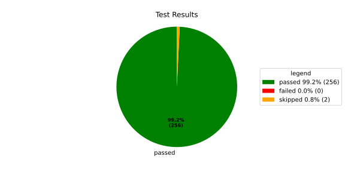
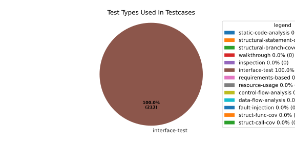
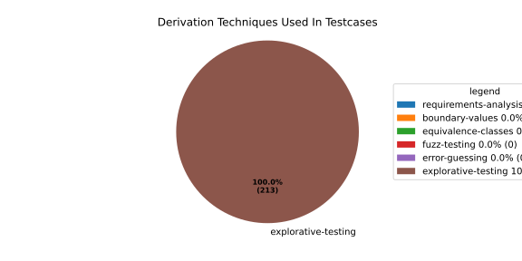

Verification Statistics#
Overview#

In Detail#



Failed Tests
Hint: This table should be empty. Before a PR can be merged all tests have to be successful.
No needs passed the filters
Skipped / Disabled Tests
testcase |
Result |
Fully Verifies |
Partially Verifies |
Test Type |
Derivation Technique |
link |
|---|---|---|---|---|---|---|
ValidateRangeTest/4__RejectsValueAboveMax |
skipped |
interface-test |
explorative-testing |
|||
ValidateRangeTest/4__RejectsValueBelowMin |
skipped |
interface-test |
explorative-testing |
All passed Tests#
testcase |
Result |
Fully Verifies |
Partially Verifies |
Test Type |
Derivation Technique |
link |
|---|---|---|---|---|---|---|
AliveImplTest__DoesNotThrowWhenInterfacePathEnvVarIsSet |
passed |
interface-test |
explorative-testing |
testcase__AliveImplTest__DoesNotThrowWhenInterfacePathEnvVarIsSet_xpewu |
||
AliveImplTest__ReportCheckpointSafeWhenNotConnected |
passed |
interface-test |
explorative-testing |
testcase__AliveImplTest__ReportCheckpointSafeWhenNotConnected_ppvuc |
||
AliveImplTest__ThrowsWhenInterfacePathEnvVarIsNotSet |
passed |
interface-test |
explorative-testing |
testcase__AliveImplTest__ThrowsWhenInterfacePathEnvVarIsNotSet_ekxfw |
||
AliveSupervisionTest__AliveDebouncesThroughFailedBeforeExpired |
passed |
interface-test |
explorative-testing |
testcase__AliveSupervisionTest__AliveDebouncesThroughFailedBeforeExpired_mlnbe |
||
AliveSupervisionTest__AliveReportsEnqueueFailureWhenRingBufferFull |
passed |
interface-test |
explorative-testing |
testcase__AliveSupervisionTest__AliveReportsEnqueueFailureWhenRingBufferFull_byhrd |
||
AliveSupervisionTest__AliveStaysOkWithCorrectHeartbeats |
passed |
interface-test |
explorative-testing |
testcase__AliveSupervisionTest__AliveStaysOkWithCorrectHeartbeats_vekof |
||
AliveSupervisionTest__AliveTransitionsOkToExpiredOnMissingHeartbeat |
passed |
interface-test |
explorative-testing |
testcase__AliveSupervisionTest__AliveTransitionsOkToExpiredOnMissingHeartbeat_jymxo |
||
AliveSupervisionTest__DeactivatesOnProcessCrash |
passed |
interface-test |
explorative-testing |
testcase__AliveSupervisionTest__DeactivatesOnProcessCrash_ypejs |
||
AliveSupervisionTest__DeactivatesOnProcessSigterm |
passed |
interface-test |
explorative-testing |
testcase__AliveSupervisionTest__DeactivatesOnProcessSigterm_hzaal |
||
AliveSupervisionTest__IgnoresIrrelevantProcessStates |
passed |
interface-test |
explorative-testing |
testcase__AliveSupervisionTest__IgnoresIrrelevantProcessStates_aolvb |
||
AliveSupervisionTest__MaxIndicationViolationExpires |
passed |
interface-test |
explorative-testing |
testcase__AliveSupervisionTest__MaxIndicationViolationExpires_whhhi |
||
AliveSupervisionTest__ReactivatesAfterCrash |
passed |
interface-test |
explorative-testing |
|||
ApplicationTypes/ApplicationTypeTest__ConvertsToExpectedValue/Native |
passed |
interface-test |
explorative-testing |
testcase__ApplicationTypes/ApplicationTypeTest__ConvertsToExpectedValue/Native_yxxcz |
||
ApplicationTypes/ApplicationTypeTest__ConvertsToExpectedValue/Reporting |
passed |
interface-test |
explorative-testing |
testcase__ApplicationTypes/ApplicationTypeTest__ConvertsToExpectedValue/Reporting_wcfwr |
||
ApplicationTypes/ApplicationTypeTest__ConvertsToExpectedValue/ReportingAndSupervised |
passed |
interface-test |
explorative-testing |
testcase__ApplicationTypes/ApplicationTypeTest__ConvertsToExpectedValue/ReportingAndSupervised_yxgad |
||
ApplicationTypes/ApplicationTypeTest__ConvertsToExpectedValue/StateManager |
passed |
interface-test |
explorative-testing |
testcase__ApplicationTypes/ApplicationTypeTest__ConvertsToExpectedValue/StateManager_ivuzc |
||
ConverterTest__ConvertAliveSupervisionMissingCycleReturnsError |
passed |
interface-test |
explorative-testing |
testcase__ConverterTest__ConvertAliveSupervisionMissingCycleReturnsError_bifzg |
||
ConverterTest__ConvertAliveSupervisionNullReturnsDefault |
passed |
interface-test |
explorative-testing |
testcase__ConverterTest__ConvertAliveSupervisionNullReturnsDefault_clyua |
||
ConverterTest__ConvertAliveSupervisionValid |
passed |
interface-test |
explorative-testing |
|||
ConverterTest__ConvertApplicationProfileMissingSelfTerminatingReturnsError |
passed |
interface-test |
explorative-testing |
testcase__ConverterTest__ConvertApplicationProfileMissingSelfTerminatingReturnsError_zddjb |
||
ConverterTest__ConvertApplicationProfileMissingTypeReturnsError |
passed |
interface-test |
explorative-testing |
testcase__ConverterTest__ConvertApplicationProfileMissingTypeReturnsError_zrfcs |
||
ConverterTest__ConvertApplicationProfileValid |
passed |
interface-test |
explorative-testing |
testcase__ConverterTest__ConvertApplicationProfileValid_oohxq |
||
ConverterTest__ConvertComponentAliveSupervisionBothIndicationsAbsentReturnsError |
passed |
interface-test |
explorative-testing |
testcase__ConverterTest__ConvertComponentAliveSupervisionBothIndicationsAbsentReturnsError_gvtfi |
||
ConverterTest__ConvertComponentAliveSupervisionMissingReportingCycleReturnsError |
passed |
interface-test |
explorative-testing |
testcase__ConverterTest__ConvertComponentAliveSupervisionMissingReportingCycleReturnsError_ajymy |
||
ConverterTest__ConvertComponentAliveSupervisionMissingToleranceReturnsError |
passed |
interface-test |
explorative-testing |
testcase__ConverterTest__ConvertComponentAliveSupervisionMissingToleranceReturnsError_lgrhj |
||
ConverterTest__ConvertComponentAliveSupervisionNullReturnsDefault |
passed |
interface-test |
explorative-testing |
testcase__ConverterTest__ConvertComponentAliveSupervisionNullReturnsDefault_xhaus |
||
ConverterTest__ConvertComponentAliveSupervisionOnlyMaxIndicationsPresent |
passed |
interface-test |
explorative-testing |
testcase__ConverterTest__ConvertComponentAliveSupervisionOnlyMaxIndicationsPresent_smwht |
||
ConverterTest__ConvertComponentAliveSupervisionOnlyMinIndicationsPresent |
passed |
interface-test |
explorative-testing |
testcase__ConverterTest__ConvertComponentAliveSupervisionOnlyMinIndicationsPresent_ybbrr |
||
ConverterTest__ConvertComponentAliveSupervisionValid |
passed |
interface-test |
explorative-testing |
testcase__ConverterTest__ConvertComponentAliveSupervisionValid_ijedh |
||
ConverterTest__ConvertComponentsValid |
passed |
interface-test |
explorative-testing |
|||
ConverterTest__ConvertComponentsWithInvalidComponentReturnsError |
passed |
interface-test |
explorative-testing |
testcase__ConverterTest__ConvertComponentsWithInvalidComponentReturnsError_wridc |
||
ConverterTest__ConvertComponentValid |
passed |
interface-test |
explorative-testing |
|||
ConverterTest__ConvertDeploymentConfigMissingReadyTimeoutReturnsError |
passed |
interface-test |
explorative-testing |
testcase__ConverterTest__ConvertDeploymentConfigMissingReadyTimeoutReturnsError_ljzfl |
||
ConverterTest__ConvertDeploymentConfigMissingShutdownTimeoutReturnsError |
passed |
interface-test |
explorative-testing |
testcase__ConverterTest__ConvertDeploymentConfigMissingShutdownTimeoutReturnsError_vyqye |
||
ConverterTest__ConvertDeploymentConfigValid |
passed |
interface-test |
explorative-testing |
|||
ConverterTest__ConvertEnvironmentalVariables |
passed |
interface-test |
explorative-testing |
testcase__ConverterTest__ConvertEnvironmentalVariables_fnhgo |
||
ConverterTest__ConvertEnvironmentalVariablesNullReturnsEmpty |
passed |
interface-test |
explorative-testing |
testcase__ConverterTest__ConvertEnvironmentalVariablesNullReturnsEmpty_vglrx |
||
ConverterTest__ConvertFallbackRunTargetMissingTimeoutReturnsError |
passed |
interface-test |
explorative-testing |
testcase__ConverterTest__ConvertFallbackRunTargetMissingTimeoutReturnsError_aevly |
||
ConverterTest__ConvertFallbackRunTargetValid |
passed |
interface-test |
explorative-testing |
testcase__ConverterTest__ConvertFallbackRunTargetValid_nexxj |
||
ConverterTest__ConvertReadyConditionMissingProcessStateReturnsError |
passed |
interface-test |
explorative-testing |
testcase__ConverterTest__ConvertReadyConditionMissingProcessStateReturnsError_ileav |
||
ConverterTest__ConvertReadyConditionValid |
passed |
interface-test |
explorative-testing |
|||
ConverterTest__ConvertRestartActionMissingFieldsReturnsError |
passed |
interface-test |
explorative-testing |
testcase__ConverterTest__ConvertRestartActionMissingFieldsReturnsError_aapjb |
||
ConverterTest__ConvertRestartActionNullReturnsNullopt |
passed |
interface-test |
explorative-testing |
testcase__ConverterTest__ConvertRestartActionNullReturnsNullopt_ifvyd |
||
ConverterTest__ConvertRestartActionValid |
passed |
interface-test |
explorative-testing |
|||
ConverterTest__ConvertRunTargetMissingTransitionTimeoutReturnsError |
passed |
interface-test |
explorative-testing |
testcase__ConverterTest__ConvertRunTargetMissingTransitionTimeoutReturnsError_ynekv |
||
ConverterTest__ConvertRunTargetsValid |
passed |
interface-test |
explorative-testing |
|||
ConverterTest__ConvertRunTargetsWithInvalidRunTargetReturnsError |
passed |
interface-test |
explorative-testing |
testcase__ConverterTest__ConvertRunTargetsWithInvalidRunTargetReturnsError_ldlox |
||
ConverterTest__ConvertRunTargetValid |
passed |
interface-test |
explorative-testing |
|||
ConverterTest__ConvertSandboxMissingGidReturnsError |
passed |
interface-test |
explorative-testing |
testcase__ConverterTest__ConvertSandboxMissingGidReturnsError_veeel |
||
ConverterTest__ConvertSandboxMissingSchedulingPolicyReturnsError |
passed |
interface-test |
explorative-testing |
testcase__ConverterTest__ConvertSandboxMissingSchedulingPolicyReturnsError_pkfts |
||
ConverterTest__ConvertSandboxMissingSchedulingPriorityReturnsError |
passed |
interface-test |
explorative-testing |
testcase__ConverterTest__ConvertSandboxMissingSchedulingPriorityReturnsError_xzdho |
||
ConverterTest__ConvertSandboxMissingUidReturnsError |
passed |
interface-test |
explorative-testing |
testcase__ConverterTest__ConvertSandboxMissingUidReturnsError_ogfku |
||
ConverterTest__ConvertSandboxSupplementaryGidOutOfRangeReturnsError |
passed |
interface-test |
explorative-testing |
testcase__ConverterTest__ConvertSandboxSupplementaryGidOutOfRangeReturnsError_zavpx |
||
ConverterTest__ConvertSandboxUidOutOfRangeReturnsError |
passed |
interface-test |
explorative-testing |
testcase__ConverterTest__ConvertSandboxUidOutOfRangeReturnsError_mcuaf |
||
ConverterTest__ConvertSandboxValid |
passed |
interface-test |
explorative-testing |
|||
ConverterTest__ConvertSwitchRunTargetActionNullReturnsNullopt |
passed |
interface-test |
explorative-testing |
testcase__ConverterTest__ConvertSwitchRunTargetActionNullReturnsNullopt_zmitx |
||
ConverterTest__ConvertSwitchRunTargetActionValid |
passed |
interface-test |
explorative-testing |
testcase__ConverterTest__ConvertSwitchRunTargetActionValid_tdklr |
||
ConverterTest__ConvertWatchdogMissingDeactivateReturnsError |
passed |
interface-test |
explorative-testing |
testcase__ConverterTest__ConvertWatchdogMissingDeactivateReturnsError_gzwjt |
||
ConverterTest__ConvertWatchdogMissingMagicCloseReturnsError |
passed |
interface-test |
explorative-testing |
testcase__ConverterTest__ConvertWatchdogMissingMagicCloseReturnsError_gexxk |
||
ConverterTest__ConvertWatchdogMissingMaxTimeoutReturnsError |
passed |
interface-test |
explorative-testing |
testcase__ConverterTest__ConvertWatchdogMissingMaxTimeoutReturnsError_lffxm |
||
ConverterTest__ConvertWatchdogNullReturnsNullopt |
passed |
interface-test |
explorative-testing |
testcase__ConverterTest__ConvertWatchdogNullReturnsNullopt_irsdk |
||
ConverterTest__ConvertWatchdogValid |
passed |
interface-test |
explorative-testing |
|||
DeadlineFixture__Start_AlreadyRunning |
passed |
interface-test |
explorative-testing |
|||
DeadlineFixture__Start_Succeeds |
passed |
interface-test |
explorative-testing |
|||
DeadlineMonitorBuilderFixture__AddDeadline_Succeeds |
passed |
interface-test |
explorative-testing |
testcase__DeadlineMonitorBuilderFixture__AddDeadline_Succeeds_nagke |
||
DeadlineMonitorBuilderFixture__New_Succeeds |
passed |
interface-test |
explorative-testing |
|||
DeadlineMonitorFixture__GetDeadline_Succeeds |
passed |
interface-test |
explorative-testing |
testcase__DeadlineMonitorFixture__GetDeadline_Succeeds_tmltf |
||
DeadlineMonitorFixture__GetDeadline_Unknown |
passed |
interface-test |
explorative-testing |
|||
EnumConversionTest__ConvertSchedulingPolicyUnsupported |
passed |
interface-test |
explorative-testing |
testcase__EnumConversionTest__ConvertSchedulingPolicyUnsupported_iavqm |
||
EnvironmentTest__AddIncreasesSize |
passed |
interface-test |
explorative-testing |
|||
EnvironmentTest__DefaultConstructedIsEmpty |
passed |
interface-test |
explorative-testing |
|||
EnvironmentTest__EmptyEnvironmentEnvpIsNullTerminated |
passed |
interface-test |
explorative-testing |
testcase__EnvironmentTest__EmptyEnvironmentEnvpIsNullTerminated_wwumw |
||
EnvironmentTest__EnvpReturnsNullTerminatedArray |
passed |
interface-test |
explorative-testing |
testcase__EnvironmentTest__EnvpReturnsNullTerminatedArray_aubkv |
||
EnvironmentTest__EnvpWithMultipleEntries |
passed |
interface-test |
explorative-testing |
|||
EnvironmentTest__MoveAssignmentPreservesEntries |
passed |
interface-test |
explorative-testing |
testcase__EnvironmentTest__MoveAssignmentPreservesEntries_vkydj |
||
EnvironmentTest__MoveConstructorPreservesEntries |
passed |
interface-test |
explorative-testing |
testcase__EnvironmentTest__MoveConstructorPreservesEntries_upclt |
||
EnvironmentTest__RangeBasedForLoopWorks |
passed |
interface-test |
explorative-testing |
|||
EnvironmentTest__ReserveAndAddAvoidReallocation |
passed |
interface-test |
explorative-testing |
testcase__EnvironmentTest__ReserveAndAddAvoidReallocation_lgzmu |
||
EnvironmentTest__SsoLengthStringSurvivesReallocation |
passed |
interface-test |
explorative-testing |
testcase__EnvironmentTest__SsoLengthStringSurvivesReallocation_jfmtl |
||
EnvironmentVariableTest__CStrReturnsKeyEqualsValue |
passed |
interface-test |
explorative-testing |
testcase__EnvironmentVariableTest__CStrReturnsKeyEqualsValue_rkwan |
||
EnvironmentVariableTest__EmptyValue |
passed |
interface-test |
explorative-testing |
|||
EnvironmentVariableTest__KeyAndValueAreAccessible |
passed |
interface-test |
explorative-testing |
testcase__EnvironmentVariableTest__KeyAndValueAreAccessible_kcrth |
||
EnvironmentVariableTest__ValueContainingEquals |
passed |
interface-test |
explorative-testing |
testcase__EnvironmentVariableTest__ValueContainingEquals_apzgz |
||
ExecErrorDomainTest__AllKnownCodesHaveDistinctMessages |
passed |
interface-test |
explorative-testing |
testcase__ExecErrorDomainTest__AllKnownCodesHaveDistinctMessages_qpoka |
||
ExecErrorDomainTest__AllKnownCodesReturnNonEmptyMessage |
passed |
interface-test |
explorative-testing |
testcase__ExecErrorDomainTest__AllKnownCodesReturnNonEmptyMessage_bawzg |
||
ExecErrorDomainTest__UnknownCodeReturnsNonEmptyMessage |
passed |
interface-test |
explorative-testing |
testcase__ExecErrorDomainTest__UnknownCodeReturnsNonEmptyMessage_kkwpr |
||
FlatbufferConfigLoaderTest__CorruptedBufferReturnsInvalidFormat |
passed |
interface-test |
explorative-testing |
testcase__FlatbufferConfigLoaderTest__CorruptedBufferReturnsInvalidFormat_twyac |
||
FlatbufferConfigLoaderTest__LoadAliveSupervision |
passed |
interface-test |
explorative-testing |
testcase__FlatbufferConfigLoaderTest__LoadAliveSupervision_hhuux |
||
FlatbufferConfigLoaderTest__LoadBufferFailsWithGenericErrorReturnsGeneralError |
passed |
interface-test |
explorative-testing |
testcase__FlatbufferConfigLoaderTest__LoadBufferFailsWithGenericErrorReturnsGeneralError_kmatm |
||
FlatbufferConfigLoaderTest__LoadBufferFailsWithNoSuchFileReturnsFileNotFound |
passed |
interface-test |
explorative-testing |
testcase__FlatbufferConfigLoaderTest__LoadBufferFailsWithNoSuchFileReturnsFileNotFound_yzlra |
||
FlatbufferConfigLoaderTest__LoadBufferFailsWithPermissionDeniedReturnsInsufficientPermission |
passed |
interface-test |
explorative-testing |
|||
FlatbufferConfigLoaderTest__LoadComponentAliveSupervision |
passed |
interface-test |
explorative-testing |
testcase__FlatbufferConfigLoaderTest__LoadComponentAliveSupervision_fwfad |
||
FlatbufferConfigLoaderTest__LoadEnvironmentalVariables |
passed |
interface-test |
explorative-testing |
testcase__FlatbufferConfigLoaderTest__LoadEnvironmentalVariables_wsosu |
||
FlatbufferConfigLoaderTest__LoadFallbackRunTarget |
passed |
interface-test |
explorative-testing |
testcase__FlatbufferConfigLoaderTest__LoadFallbackRunTarget_wduqm |
||
FlatbufferConfigLoaderTest__LoadMinimalConfig |
passed |
interface-test |
explorative-testing |
testcase__FlatbufferConfigLoaderTest__LoadMinimalConfig_hdkck |
||
FlatbufferConfigLoaderTest__LoadMultipleComponents |
passed |
interface-test |
explorative-testing |
testcase__FlatbufferConfigLoaderTest__LoadMultipleComponents_abpom |
||
FlatbufferConfigLoaderTest__LoadRestartRecoveryAction |
passed |
interface-test |
explorative-testing |
testcase__FlatbufferConfigLoaderTest__LoadRestartRecoveryAction_wyfqg |
||
FlatbufferConfigLoaderTest__LoadRunTargets |
passed |
interface-test |
explorative-testing |
|||
FlatbufferConfigLoaderTest__LoadSandbox |
passed |
interface-test |
explorative-testing |
|||
FlatbufferConfigLoaderTest__LoadSingleComponent |
passed |
interface-test |
explorative-testing |
testcase__FlatbufferConfigLoaderTest__LoadSingleComponent_yidty |
||
FlatbufferConfigLoaderTest__LoadSwitchRunTargetAction |
passed |
interface-test |
explorative-testing |
testcase__FlatbufferConfigLoaderTest__LoadSwitchRunTargetAction_uchgp |
||
FlatbufferConfigLoaderTest__LoadWatchdog |
passed |
interface-test |
explorative-testing |
|||
FlatbufferConfigLoaderTest__MissingSchemaVersionReturnsInvalidFormat |
passed |
interface-test |
explorative-testing |
testcase__FlatbufferConfigLoaderTest__MissingSchemaVersionReturnsInvalidFormat_qqmfn |
||
FlatbufferConfigLoaderTest__OptionalReadyConditionAbsent |
passed |
interface-test |
explorative-testing |
testcase__FlatbufferConfigLoaderTest__OptionalReadyConditionAbsent_lhddx |
||
FlatbufferConfigLoaderTest__OptionalWatchdogAbsent |
passed |
interface-test |
explorative-testing |
testcase__FlatbufferConfigLoaderTest__OptionalWatchdogAbsent_pkhkp |
||
FlatbufferConfigLoaderTest__WrongSchemaVersionReturnsUnsupportedVersion |
passed |
interface-test |
explorative-testing |
testcase__FlatbufferConfigLoaderTest__WrongSchemaVersionReturnsUnsupportedVersion_zrbjv |
||
HealthMonitor__GetDeadlineMonitor_Available |
passed |
|||||
HealthMonitor__GetDeadlineMonitor_Taken |
passed |
|||||
HealthMonitor__GetDeadlineMonitor_Unknown |
passed |
|||||
HealthMonitor__GetHeartbeatMonitor_Available |
passed |
testcase__HealthMonitor__GetHeartbeatMonitor_Available_aacat |
||||
HealthMonitor__GetHeartbeatMonitor_Taken |
passed |
|||||
HealthMonitor__GetHeartbeatMonitor_Unknown |
passed |
|||||
HealthMonitor__GetLogicMonitor_Available |
passed |
|||||
HealthMonitor__GetLogicMonitor_Taken |
passed |
|||||
HealthMonitor__GetLogicMonitor_Unknown |
passed |
|||||
HealthMonitor__Start_MonitorsNotTaken |
passed |
|||||
HealthMonitor__Start_Succeeds |
passed |
|||||
HealthMonitorBuilderFixture__Build_InvalidCycles |
passed |
interface-test |
explorative-testing |
testcase__HealthMonitorBuilderFixture__Build_InvalidCycles_pdigk |
||
HealthMonitorBuilderFixture__Build_NoMonitors |
passed |
interface-test |
explorative-testing |
testcase__HealthMonitorBuilderFixture__Build_NoMonitors_ktcve |
||
HealthMonitorBuilderFixture__Build_Succeeds |
passed |
interface-test |
explorative-testing |
|||
HealthMonitorBuilderFixture__New_Succeeds |
passed |
interface-test |
explorative-testing |
|||
HealthMonitorTest__Integrated |
passed |
interface-test |
explorative-testing |
|||
HeartbeatMonitor__Heartbeat_Succeeds |
passed |
interface-test |
explorative-testing |
|||
HeartbeatMonitorBuilder__New_Succeeds |
passed |
interface-test |
explorative-testing |
|||
IdentifierHashTest__IdentifierHash_default_created |
passed |
interface-test |
explorative-testing |
testcase__IdentifierHashTest__IdentifierHash_default_created_yhhvi |
||
IdentifierHashTest__IdentifierHash_EqualityOperators |
passed |
interface-test |
explorative-testing |
testcase__IdentifierHashTest__IdentifierHash_EqualityOperators_nnsuj |
||
IdentifierHashTest__IdentifierHash_invalid_hash_no_string_representation |
passed |
interface-test |
explorative-testing |
testcase__IdentifierHashTest__IdentifierHash_invalid_hash_no_string_representation_rxowr |
||
IdentifierHashTest__IdentifierHash_LessThanOperator |
passed |
interface-test |
explorative-testing |
testcase__IdentifierHashTest__IdentifierHash_LessThanOperator_rnbax |
||
IdentifierHashTest__IdentifierHash_no_dangling_pointer_after_source_string_dies |
passed |
interface-test |
explorative-testing |
testcase__IdentifierHashTest__IdentifierHash_no_dangling_pointer_after_source_string_dies_qsjin |
||
IdentifierHashTest__IdentifierHash_with_string_created |
passed |
interface-test |
explorative-testing |
testcase__IdentifierHashTest__IdentifierHash_with_string_created_aygdm |
||
IdentifierHashTest__IdentifierHash_with_string_view_created |
passed |
interface-test |
explorative-testing |
testcase__IdentifierHashTest__IdentifierHash_with_string_view_created_dbpol |
||
LogicMonitorBuilderFixture__AddState_Succeeds |
passed |
interface-test |
explorative-testing |
testcase__LogicMonitorBuilderFixture__AddState_Succeeds_axdxj |
||
LogicMonitorBuilderFixture__New_Succeeds |
passed |
interface-test |
explorative-testing |
|||
LogicMonitorFixture__State_Invalid |
passed |
interface-test |
explorative-testing |
|||
LogicMonitorFixture__State_Succeeds |
passed |
interface-test |
explorative-testing |
|||
LogicMonitorFixture__Transition_Invalid |
passed |
interface-test |
explorative-testing |
|||
LogicMonitorFixture__Transition_Succeeds |
passed |
interface-test |
explorative-testing |
|||
LogicMonitorFixture__Transition_Unknown |
passed |
interface-test |
explorative-testing |
|||
MonitorIfDaemonTest__Active_CheckpointDataForwarded |
passed |
interface-test |
explorative-testing |
testcase__MonitorIfDaemonTest__Active_CheckpointDataForwarded_evumz |
||
MonitorIfDaemonTest__Active_FutureTimestamp_NotForwardedInCurrentCycle |
passed |
interface-test |
explorative-testing |
testcase__MonitorIfDaemonTest__Active_FutureTimestamp_NotForwardedInCurrentCycle_oycau |
||
MonitorIfDaemonTest__Active_FutureTimestampCheckpoint_ConsumedInLaterCycle |
passed |
interface-test |
explorative-testing |
testcase__MonitorIfDaemonTest__Active_FutureTimestampCheckpoint_ConsumedInLaterCycle_veyyy |
||
MonitorIfDaemonTest__Active_MultipleCheckpointsInOneCycle_AllForwarded |
passed |
interface-test |
explorative-testing |
testcase__MonitorIfDaemonTest__Active_MultipleCheckpointsInOneCycle_AllForwarded_gmbms |
||
MonitorIfDaemonTest__Active_NonMatchingCheckpointId_NotForwarded |
passed |
interface-test |
explorative-testing |
testcase__MonitorIfDaemonTest__Active_NonMatchingCheckpointId_NotForwarded_bohck |
||
MonitorIfDaemonTest__Active_OverflowDetected_TransitionsToInactiveOverflow |
passed |
interface-test |
explorative-testing |
testcase__MonitorIfDaemonTest__Active_OverflowDetected_TransitionsToInactiveOverflow_ovitk |
||
MonitorIfDaemonTest__Active_TwoAttachedCheckpoints_RoutedByCheckpointId |
passed |
interface-test |
explorative-testing |
testcase__MonitorIfDaemonTest__Active_TwoAttachedCheckpoints_RoutedByCheckpointId_skqhd |
||
MonitorIfDaemonTest__GetInterfaceName_ReturnsNameGivenAtConstruction |
passed |
interface-test |
explorative-testing |
testcase__MonitorIfDaemonTest__GetInterfaceName_ReturnsNameGivenAtConstruction_iaemz |
||
MonitorIfDaemonTest__InactiveOverflow_NoProcessRestart_DoesNotRepeatNotification |
passed |
interface-test |
explorative-testing |
testcase__MonitorIfDaemonTest__InactiveOverflow_NoProcessRestart_DoesNotRepeatNotification_gdbxg |
||
MonitorIfDaemonTest__InactiveOverflow_ProcessRestartFlag_ClearedAfterNotification |
passed |
interface-test |
explorative-testing |
testcase__MonitorIfDaemonTest__InactiveOverflow_ProcessRestartFlag_ClearedAfterNotification_pqfyy |
||
MonitorIfDaemonTest__InactiveOverflow_ProcessRestarts_PushesOverflowNotificationAgain |
passed |
interface-test |
explorative-testing |
|||
MonitorIfDaemonTest__InitiallyInactive_CheckForNewData_DoesNotNotifyCheckpoint |
passed |
interface-test |
explorative-testing |
testcase__MonitorIfDaemonTest__InitiallyInactive_CheckForNewData_DoesNotNotifyCheckpoint_wjrfl |
||
MonitorIfDaemonTest__ProcessOff_DeactivatesMonitor_NoFurtherDataForwarded |
passed |
interface-test |
explorative-testing |
testcase__MonitorIfDaemonTest__ProcessOff_DeactivatesMonitor_NoFurtherDataForwarded_uialh |
||
MonitorIfDaemonTest__ProcessOffBeforeActivation_RemainsInactive |
passed |
interface-test |
explorative-testing |
testcase__MonitorIfDaemonTest__ProcessOffBeforeActivation_RemainsInactive_kzzyy |
||
MonitorIfDaemonTest__ProcessRunning_ActivatesMonitorOnNextCheckForNewData |
passed |
interface-test |
explorative-testing |
testcase__MonitorIfDaemonTest__ProcessRunning_ActivatesMonitorOnNextCheckForNewData_fkkmk |
||
MonitorIfDaemonTest__ProcessStarting_AlsoActivatesMonitor |
passed |
interface-test |
explorative-testing |
testcase__MonitorIfDaemonTest__ProcessStarting_AlsoActivatesMonitor_xdkbg |
||
MPMCConcurrentQueueTest_Basic__LvaluePushCopiesItem |
passed |
testcase__MPMCConcurrentQueueTest_Basic__LvaluePushCopiesItem_oysfc |
||||
MPMCConcurrentQueueTest_Basic__PopReturnsNulloptOnSemaphoreWaitFailure |
passed |
testcase__MPMCConcurrentQueueTest_Basic__PopReturnsNulloptOnSemaphoreWaitFailure_rgznm |
||||
MPMCConcurrentQueueTest_Basic__PushAndPopPreservesOrder |
passed |
testcase__MPMCConcurrentQueueTest_Basic__PushAndPopPreservesOrder_aijdb |
||||
MPMCConcurrentQueueTest_Basic__PushAndPopSingleItem |
passed |
testcase__MPMCConcurrentQueueTest_Basic__PushAndPopSingleItem_jrxwz |
||||
MPMCConcurrentQueueTest_Basic__RvaluePushWorksWithMoveOnlyType |
passed |
testcase__MPMCConcurrentQueueTest_Basic__RvaluePushWorksWithMoveOnlyType_cxxaj |
||||
MPMCConcurrentQueueTest_Blocking__PopBlocksUntilItemAvailable |
passed |
testcase__MPMCConcurrentQueueTest_Blocking__PopBlocksUntilItemAvailable_ttwcx |
||||
MPMCConcurrentQueueTest_Blocking__PushBlocksWhenFull |
passed |
testcase__MPMCConcurrentQueueTest_Blocking__PushBlocksWhenFull_ecujf |
||||
MPMCConcurrentQueueTest_Blocking__StopUnblocksBlockedConsumer |
passed |
testcase__MPMCConcurrentQueueTest_Blocking__StopUnblocksBlockedConsumer_snzyr |
||||
MPMCConcurrentQueueTest_Blocking__StopUnblocksBlockedProducer |
passed |
testcase__MPMCConcurrentQueueTest_Blocking__StopUnblocksBlockedProducer_inddu |
||||
MPMCConcurrentQueueTest_MPMC__AllItemsDelivered |
passed |
testcase__MPMCConcurrentQueueTest_MPMC__AllItemsDelivered_ztjqe |
||||
MPMCConcurrentQueueTest_Stop__ItemsAreDroppedAfterStop |
passed |
testcase__MPMCConcurrentQueueTest_Stop__ItemsAreDroppedAfterStop_ragzw |
||||
MPMCConcurrentQueueTest_Stop__PopReturnsNulloptWhenStoppedAndEmpty |
passed |
testcase__MPMCConcurrentQueueTest_Stop__PopReturnsNulloptWhenStoppedAndEmpty_cevga |
||||
MPMCConcurrentQueueTest_Stop__PushReturnsFalseAfterStop |
passed |
testcase__MPMCConcurrentQueueTest_Stop__PushReturnsFalseAfterStop_qqnhw |
||||
MPMCConcurrentQueueTest_Timeout__PushWithTimeoutReturnsFalseWhenFull |
passed |
testcase__MPMCConcurrentQueueTest_Timeout__PushWithTimeoutReturnsFalseWhenFull_aeips |
||||
MPMCConcurrentQueueTest_Timeout__PushWithTimeoutSucceedsWhenSlotAvailable |
passed |
testcase__MPMCConcurrentQueueTest_Timeout__PushWithTimeoutSucceedsWhenSlotAvailable_klzpo |
||||
OsHandlerTest__WaitReturnsError_OsHandlerSleepsAndDoesNotCallFindTerminated |
passed |
interface-test |
explorative-testing |
testcase__OsHandlerTest__WaitReturnsError_OsHandlerSleepsAndDoesNotCallFindTerminated_cibtr |
||
OsHandlerTest__WaitReturnsErrorThenProcessId_HandlerRecoversAndInvokesCallback |
passed |
interface-test |
explorative-testing |
testcase__OsHandlerTest__WaitReturnsErrorThenProcessId_HandlerRecoversAndInvokesCallback_nqstd |
||
OsHandlerTest__WaitReturnsProcessId_FindTerminatedIsCalled |
passed |
interface-test |
explorative-testing |
testcase__OsHandlerTest__WaitReturnsProcessId_FindTerminatedIsCalled_chlsq |
||
OsHandlerTest__WaitReturnsProcessIdBeforeRegistration_LaterRegistrationReceivesStoredTermination |
passed |
interface-test |
explorative-testing |
|||
OsHandlerTest__WaitReturnsUnknownPidWhenMapIsFull_OutOfResourcesPathDoesNotNotifyCallbacks |
passed |
interface-test |
explorative-testing |
|||
OsHandlerTest__WaitReturnsZeroPid_OsHandlerSleepsAndDoesNotCallFindTerminated |
passed |
interface-test |
explorative-testing |
testcase__OsHandlerTest__WaitReturnsZeroPid_OsHandlerSleepsAndDoesNotCallFindTerminated_rkttz |
||
ProcessStateClient_UT__ProcessStateClient_ConstructReceiver_Succeeds |
passed |
interface-test |
explorative-testing |
testcase__ProcessStateClient_UT__ProcessStateClient_ConstructReceiver_Succeeds_hodwy |
||
ProcessStateClient_UT__ProcessStateClient_QueueMaxNumberOfProcesses_Succeeds |
passed |
interface-test |
explorative-testing |
testcase__ProcessStateClient_UT__ProcessStateClient_QueueMaxNumberOfProcesses_Succeeds_qohom |
||
ProcessStateClient_UT__ProcessStateClient_QueueOneProcess_Succeeds |
passed |
interface-test |
explorative-testing |
testcase__ProcessStateClient_UT__ProcessStateClient_QueueOneProcess_Succeeds_tmzfz |
||
ProcessStateClient_UT__ProcessStateClient_QueueOneProcessTooMany_Fails |
passed |
interface-test |
explorative-testing |
testcase__ProcessStateClient_UT__ProcessStateClient_QueueOneProcessTooMany_Fails_sspoj |
||
ProcessStates/ProcessStateTest__ConvertsToExpectedValue/Running |
passed |
interface-test |
explorative-testing |
testcase__ProcessStates/ProcessStateTest__ConvertsToExpectedValue/Running_hinlr |
||
ProcessStates/ProcessStateTest__ConvertsToExpectedValue/Terminated |
passed |
interface-test |
explorative-testing |
testcase__ProcessStates/ProcessStateTest__ConvertsToExpectedValue/Terminated_zrytn |
||
RecoveryClientTest__FIFOOrdering |
passed |
interface-test |
explorative-testing |
|||
RecoveryClientTest__GetNextRequest |
passed |
interface-test |
explorative-testing |
|||
RecoveryClientTest__GetNextRequestEmpty |
passed |
interface-test |
explorative-testing |
|||
RecoveryClientTest__RingBufferFull |
passed |
interface-test |
explorative-testing |
|||
RecoveryClientTest__SendSingleRequest |
passed |
interface-test |
explorative-testing |
|||
RunTest__AsPosixProcessCreatesAndDestroysLifeCycleManager |
passed |
testcase__RunTest__AsPosixProcessCreatesAndDestroysLifeCycleManager_sooex |
||||
RunTest__AsPosixProcessForwardsConstructorArgsToApplication |
passed |
testcase__RunTest__AsPosixProcessForwardsConstructorArgsToApplication_dmeur |
||||
RunTest__AsPosixProcessForwardsNonZeroExitCode |
passed |
testcase__RunTest__AsPosixProcessForwardsNonZeroExitCode_lldqd |
||||
RunTest__AsPosixProcessPassesCorrectApplicationTypeToRun |
passed |
testcase__RunTest__AsPosixProcessPassesCorrectApplicationTypeToRun_ajqwz |
||||
RunTest__AsPosixProcessReturnsZeroExitCode |
passed |
|||||
RunTest__RunApplicationFreeFunctionDelegatesToAsPosixProcess |
passed |
testcase__RunTest__RunApplicationFreeFunctionDelegatesToAsPosixProcess_ccing |
||||
RunTest__RunConstructorPassesArgcArgvToApplicationContext |
passed |
testcase__RunTest__RunConstructorPassesArgcArgvToApplicationContext_agerd |
||||
SafeProcessMapTest__ConcurrentFindAndInsertFromMultipleThreads |
passed |
interface-test |
explorative-testing |
testcase__SafeProcessMapTest__ConcurrentFindAndInsertFromMultipleThreads_kzfyg |
||
SafeProcessMapTest__ConcurrentInsertAndFindFromMultipleThreads |
passed |
interface-test |
explorative-testing |
testcase__SafeProcessMapTest__ConcurrentInsertAndFindFromMultipleThreads_hnyqj |
||
SafeProcessMapTest__ConstructWithZeroCapacity |
passed |
interface-test |
explorative-testing |
testcase__SafeProcessMapTest__ConstructWithZeroCapacity_gjmqg |
||
SafeProcessMapTest__FindTerminatedInsertsEntryWhenPidNotPresent |
passed |
interface-test |
explorative-testing |
testcase__SafeProcessMapTest__FindTerminatedInsertsEntryWhenPidNotPresent_ixtlt |
||
SafeProcessMapTest__FindTerminatedMatchesExistingInsertAndCallsCallback |
passed |
interface-test |
explorative-testing |
testcase__SafeProcessMapTest__FindTerminatedMatchesExistingInsertAndCallsCallback_ehuzb |
||
SafeProcessMapTest__FindTerminatedSamePidTwiceYieldsUntilInsertResolves |
passed |
interface-test |
explorative-testing |
testcase__SafeProcessMapTest__FindTerminatedSamePidTwiceYieldsUntilInsertResolves_hsekx |
||
SafeProcessMapTest__FindTerminatedWithNegativePidReturnsInvalid |
passed |
interface-test |
explorative-testing |
testcase__SafeProcessMapTest__FindTerminatedWithNegativePidReturnsInvalid_dewoh |
||
SafeProcessMapTest__FindTerminatedWorksAtMaxTreeDepth |
passed |
interface-test |
explorative-testing |
testcase__SafeProcessMapTest__FindTerminatedWorksAtMaxTreeDepth_adtzi |
||
SafeProcessMapTest__InsertBeyondCapacityReturnsOutOfMemory |
passed |
interface-test |
explorative-testing |
testcase__SafeProcessMapTest__InsertBeyondCapacityReturnsOutOfMemory_qjnie |
||
SafeProcessMapTest__InsertIntoEmptyTreeReturnsZero |
passed |
interface-test |
explorative-testing |
testcase__SafeProcessMapTest__InsertIntoEmptyTreeReturnsZero_zfbaq |
||
SafeProcessMapTest__InsertMatchesExistingFindTerminatedEntry |
passed |
interface-test |
explorative-testing |
testcase__SafeProcessMapTest__InsertMatchesExistingFindTerminatedEntry_fuwrp |
||
SafeProcessMapTest__InsertMultipleNodesThenFindTerminatedRemovesAll |
passed |
interface-test |
explorative-testing |
testcase__SafeProcessMapTest__InsertMultipleNodesThenFindTerminatedRemovesAll_fvowh |
||
SafeProcessMapTest__InsertSamePidTwiceYieldsUntilFindTerminatedResolves |
passed |
interface-test |
explorative-testing |
testcase__SafeProcessMapTest__InsertSamePidTwiceYieldsUntilFindTerminatedResolves_wzwyb |
||
SchedulingPolicies/SchedulingPolicyTest__ConvertsToExpectedPosixValue/SCHED_FIFO |
passed |
interface-test |
explorative-testing |
testcase__SchedulingPolicies/SchedulingPolicyTest__ConvertsToExpectedPosixValue/SCHED_FIFO_soddq |
||
SchedulingPolicies/SchedulingPolicyTest__ConvertsToExpectedPosixValue/SCHED_OTHER |
passed |
interface-test |
explorative-testing |
testcase__SchedulingPolicies/SchedulingPolicyTest__ConvertsToExpectedPosixValue/SCHED_OTHER_oigmk |
||
SchedulingPolicies/SchedulingPolicyTest__ConvertsToExpectedPosixValue/SCHED_RR |
passed |
interface-test |
explorative-testing |
testcase__SchedulingPolicies/SchedulingPolicyTest__ConvertsToExpectedPosixValue/SCHED_RR_pcjci |
||
score/health_monitor/src/rust/test-510566969/tests |
passed |
testcase__score/health_monitor/src/rust/test-510566969/tests_kjjlw |
||||
score/health_monitor/src/rust/test-827801879/loom_tests |
passed |
testcase__score/health_monitor/src/rust/test-827801879/loom_tests_cpmix |
||||
SecondsToMsTest__ConvertsPositiveValue |
passed |
interface-test |
explorative-testing |
|||
SecondsToMsTest__ConvertsZero |
passed |
interface-test |
explorative-testing |
|||
SecondsToMsTest__RejectsNegativeValue |
passed |
interface-test |
explorative-testing |
|||
SecondsToMsTest__RejectsOverflow |
passed |
interface-test |
explorative-testing |
|||
SecondsToMsTest__RejectsSubMillisecond |
passed |
interface-test |
explorative-testing |
|||
StringHelperTest__ConvertGidVectorReturnsEmptyWhenNull |
passed |
interface-test |
explorative-testing |
testcase__StringHelperTest__ConvertGidVectorReturnsEmptyWhenNull_jmcsr |
||
StringHelperTest__ConvertStringVectorReturnsEmptyWhenNull |
passed |
interface-test |
explorative-testing |
testcase__StringHelperTest__ConvertStringVectorReturnsEmptyWhenNull_zsuvv |
||
StringHelperTest__SafeStringReturnsEmptyWhenNull |
passed |
interface-test |
explorative-testing |
testcase__StringHelperTest__SafeStringReturnsEmptyWhenNull_crelr |
||
StringHelperTest__SafeStringReturnsValueWhenNotNull |
passed |
interface-test |
explorative-testing |
testcase__StringHelperTest__SafeStringReturnsValueWhenNotNull_anbko |
||
test_complex_monitoring |
passed |
|||||
test_crash_on_startup |
passed |
|||||
test_incorrect_config_non_reporting |
passed |
|||||
test_process_crash_monitoring |
passed |
|||||
test_process_launch_args |
passed |
|||||
test_process_wrong_binary_failure |
passed |
|||||
test_recovery_action_complex_rep_failure |
passed |
|||||
test_recovery_action_simple_rep_failure |
passed |
|||||
test_smoke |
passed |
|||||
test_switch_run_target |
passed |
|||||
TimeRangeFixture__MinMax |
passed |
interface-test |
explorative-testing |
|||
TimeRangeFixture__New_InvalidOrder |
passed |
interface-test |
explorative-testing |
|||
TimeRangeFixture__New_Succeeds |
passed |
interface-test |
explorative-testing |
|||
ValidateRangeTest/0__AcceptsMaxBoundary |
passed |
interface-test |
explorative-testing |
|||
ValidateRangeTest/0__AcceptsMinBoundary |
passed |
interface-test |
explorative-testing |
|||
ValidateRangeTest/0__AcceptsZero |
passed |
interface-test |
explorative-testing |
|||
ValidateRangeTest/0__RejectsValueAboveMax |
passed |
interface-test |
explorative-testing |
|||
ValidateRangeTest/0__RejectsValueBelowMin |
passed |
interface-test |
explorative-testing |
|||
ValidateRangeTest/1__AcceptsMaxBoundary |
passed |
interface-test |
explorative-testing |
|||
ValidateRangeTest/1__AcceptsMinBoundary |
passed |
interface-test |
explorative-testing |
|||
ValidateRangeTest/1__AcceptsZero |
passed |
interface-test |
explorative-testing |
|||
ValidateRangeTest/1__RejectsValueAboveMax |
passed |
interface-test |
explorative-testing |
|||
ValidateRangeTest/1__RejectsValueBelowMin |
passed |
interface-test |
explorative-testing |
|||
ValidateRangeTest/2__AcceptsMaxBoundary |
passed |
interface-test |
explorative-testing |
|||
ValidateRangeTest/2__AcceptsMinBoundary |
passed |
interface-test |
explorative-testing |
|||
ValidateRangeTest/2__AcceptsZero |
passed |
interface-test |
explorative-testing |
|||
ValidateRangeTest/2__RejectsValueAboveMax |
passed |
interface-test |
explorative-testing |
|||
ValidateRangeTest/2__RejectsValueBelowMin |
passed |
interface-test |
explorative-testing |
|||
ValidateRangeTest/3__AcceptsMaxBoundary |
passed |
interface-test |
explorative-testing |
|||
ValidateRangeTest/3__AcceptsMinBoundary |
passed |
interface-test |
explorative-testing |
|||
ValidateRangeTest/3__AcceptsZero |
passed |
interface-test |
explorative-testing |
|||
ValidateRangeTest/3__RejectsValueAboveMax |
passed |
interface-test |
explorative-testing |
|||
ValidateRangeTest/3__RejectsValueBelowMin |
passed |
interface-test |
explorative-testing |
|||
ValidateRangeTest/4__AcceptsMaxBoundary |
passed |
interface-test |
explorative-testing |
|||
ValidateRangeTest/4__AcceptsMinBoundary |
passed |
interface-test |
explorative-testing |
|||
ValidateRangeTest/4__AcceptsZero |
passed |
interface-test |
explorative-testing |
Details About Testcases#


Test Log Files#
tests-report/tests/integration/process_simple_rep_failure/process_simple_rep_failure/test.log
exec ${PAGER:-/usr/bin/less} "$0" || exit 1
Executing tests from //tests/integration/process_simple_rep_failure:process_simple_rep_failure
-----------------------------------------------------------------------------
============================= test session starts ==============================
platform linux -- Python 3.12.12, pytest-9.0.3, pluggy-1.5.0
rootdir: /home/runner/.bazel/sandbox/processwrapper-sandbox/1120/execroot/_main/bazel-out/k8-fastbuild/bin/tests/integration/process_simple_rep_failure/process_simple_rep_failure.runfiles/score_itf+
configfile: pytest.ini
collected 1 item
../score_itf+::test_recovery_action_simple_rep_failure
-------------------------------- live log setup --------------------------------
[2026-07-02 10:09:12.313] [INFO] [score.itf.plugins.docker] Executing custom image bootstrap command: tests/utils/environments/x86_64-linux/x86_64-linux.sh
[2026-07-02 10:09:12.829] [DEBUG] [docker.utils.config] Trying paths: ['/home/runner/.docker/config.json', '/home/runner/.dockercfg']
[2026-07-02 10:09:12.830] [DEBUG] [docker.utils.config] Found file at path: /home/runner/.docker/config.json
[2026-07-02 10:09:12.830] [DEBUG] [docker.auth] Found 'auths' section
[2026-07-02 10:09:12.830] [DEBUG] [docker.auth] Found entry (registry='https://index.docker.io/v1/', username='githubactions')
[2026-07-02 10:09:12.848] [DEBUG] [urllib3.connectionpool] http://localhost:None "GET /version HTTP/1.1" 200 823
[2026-07-02 10:09:12.933] [DEBUG] [urllib3.connectionpool] http://localhost:None "POST /v1.48/containers/create HTTP/1.1" 201 88
[2026-07-02 10:09:12.939] [DEBUG] [urllib3.connectionpool] http://localhost:None "GET /v1.48/containers/89c094e05a8afb6f2d2c226305d3abd12750b390dfdb21a2410997753fffd9c5/json HTTP/1.1" 200 None
[2026-07-02 10:09:13.141] [DEBUG] [urllib3.connectionpool] http://localhost:None "POST /v1.48/containers/89c094e05a8afb6f2d2c226305d3abd12750b390dfdb21a2410997753fffd9c5/start HTTP/1.1" 204 0
[2026-07-02 10:09:13.142] [DEBUG] [docker.utils.config] Trying paths: ['/home/runner/.docker/config.json', '/home/runner/.dockercfg']
[2026-07-02 10:09:13.142] [DEBUG] [docker.utils.config] Found file at path: /home/runner/.docker/config.json
[2026-07-02 10:09:13.142] [DEBUG] [docker.auth] Found 'auths' section
[2026-07-02 10:09:13.142] [DEBUG] [docker.auth] Found entry (registry='https://index.docker.io/v1/', username='githubactions')
[2026-07-02 10:09:13.151] [DEBUG] [urllib3.connectionpool] http://localhost:None "GET /version HTTP/1.1" 200 823
[2026-07-02 10:09:13.456] [INFO] [tests.utils.testing_utils.setup_test] Test case setup finished
-------------------------------- live log call ---------------------------------
[2026-07-02 10:09:13.605] [INFO] [launch_manager] 2026/07/02 10:09:13.6953588 3223913 000 ECU1 LM LM log debug verbose 1 Launch Manager Started !!!!
[2026-07-02 10:09:13.606] [INFO] [launch_manager] 2026/07/02 10:09:13.6953589 3223916 000 ECU1 LM LM log debug verbose 1 Loading LCM Configurations...
[2026-07-02 10:09:13.606] [INFO] [launch_manager] 2026/07/02 10:09:13.6953589 3223916 000 ECU1 LM LM log debug verbose 1 ECUCFG_ENV_VAR_ROOTFOLDER set successfully
[2026-07-02 10:09:13.606] [INFO] [launch_manager] 2026/07/02 10:09:13.6953589 3223917 000 ECU1 LM LM log debug verbose 5 FlatBufferParser::getModeGroupPgName: MainPG ( IdentifierHash: 18079021346025578134 )
[2026-07-02 10:09:13.606] [INFO] [launch_manager] 2026/07/02 10:09:13.6953589 3223918 000 ECU1 LM LM log debug verbose 5 FlatBufferParser::getModeGroupPgStateName: MainPG/Startup ( IdentifierHash: 10504605499600661529 )
[2026-07-02 10:09:13.606] [INFO] [launch_manager] 2026/07/02 10:09:13.6953589 3223918 000 ECU1 LM LM log debug verbose 5 FlatBufferParser::getModeGroupPgStateName: MainPG/run_target_app_does_report_krunning_in_time ( IdentifierHash: 11934981641920773349 )
[2026-07-02 10:09:13.606] [INFO] [launch_manager] 2026/07/02 10:09:13.6953589 3223919 000 ECU1 LM LM log debug verbose 5 FlatBufferParser::getModeGroupPgStateName: MainPG/run_target_app_does_not_report_krunning_in_time ( IdentifierHash: 7672161913816744053 )
[2026-07-02 10:09:13.606] [INFO] [launch_manager] 2026/07/02 10:09:13.6953589 3223919 000 ECU1 LM LM log debug verbose 5 FlatBufferParser::getModeGroupPgStateName: MainPG/Off ( IdentifierHash: 15281793077830264047 )
[2026-07-02 10:09:13.606] [INFO] [launch_manager] 2026/07/02 10:09:13.6953589 3223919 000 ECU1 LM LM log debug verbose 5 FlatBufferParser::getModeGroupPgStateName: MainPG/fallback_run_target ( IdentifierHash: 4059409696722237352 )
[2026-07-02 10:09:13.607] [INFO] [launch_manager] 2026/07/02 10:09:13.6953589 3223921 000 ECU1 LM LM log debug verbose 4
[2026-07-02 10:09:13.607] [INFO] [launch_manager] parseProcessConfigurations: Process index: 0 executable_path_: /tmp/tests/process_simple_rep_failure/control_client_mock
[2026-07-02 10:09:13.607] [INFO] [launch_manager] 2026/07/02 10:09:13.6953589 3223921 000 ECU1 LM LM log debug verbose 3 Process control_client_mock is Reporting execution state
[2026-07-02 10:09:13.607] [INFO] [launch_manager] 2026/07/02 10:09:13.6953589 3223921 000 ECU1 LM LM log debug verbose 1 Process is STATE_MANAGEMENT function Cluster Affiliation
[2026-07-02 10:09:13.607] [INFO] [launch_manager] 2026/07/02 10:09:13.6953589 3223922 000 ECU1 LM LM log debug verbose 3 Process control_client_mock is Self terminating
[2026-07-02 10:09:13.607] [INFO] [launch_manager] 2026/07/02 10:09:13.6953589 3223922 000 ECU1 LM LM log debug verbose 4 ParseProcessProcessGroup: id:::pg_name_: MainPG , pg_state_name_: MainPG/Startup
[2026-07-02 10:09:13.607] [INFO] [launch_manager] 2026/07/02 10:09:13.6953589 3223922 000 ECU1 LM LM log debug verbose 4 ParseProcessProcessGroup: id:::pg_name_: MainPG , pg_state_name_: MainPG/run_target_app_does_report_krunning_in_time
[2026-07-02 10:09:13.607] [INFO] [launch_manager] 2026/07/02 10:09:13.6953589 3223923 000 ECU1 LM LM log debug verbose 4 ParseProcessProcessGroup: id:::pg_name_: MainPG , pg_state_name_: MainPG/run_target_app_does_not_report_krunning_in_time
[2026-07-02 10:09:13.607] [INFO] [launch_manager] 2026/07/02 10:09:13.6953589 3223923 000 ECU1 LM LM log debug verbose 4 ParseProcessProcessGroup: id:::pg_name_: MainPG , pg_state_name_: MainPG/fallback_run_target
[2026-07-02 10:09:13.608] [INFO] [launch_manager] 2026/07/02 10:09:13.6953589 3223924 000 ECU1 LM LM log debug verbose 4 parseProcessConfigurations: Process index: 1 executable_path_: /tmp/tests/process_simple_rep_failure/process_simple_reporting
[2026-07-02 10:09:13.608] [INFO] [launch_manager] 2026/07/02 10:09:13.6953589 3223924 000 ECU1 LM LM log debug verbose 3 Process component_does_report_krunning_in_time is Reporting execution state
[2026-07-02 10:09:13.608] [INFO] [launch_manager] 2026/07/02 10:09:13.6953589 3223924 000 ECU1 LM LM log debug verbose 1 Process is NOT associated with any function Cluster Affiliation
[2026-07-02 10:09:13.608] [INFO] [launch_manager] 2026/07/02 10:09:13.6953589 3223924 000 ECU1 LM LM log debug verbose 3 Process component_does_report_krunning_in_time is Self terminating
[2026-07-02 10:09:13.608] [INFO] [launch_manager] 2026/07/02 10:09:13.6953589 3223925 000 ECU1 LM LM log debug verbose 4 ParseProcessProcessGroup: id:::pg_name_: MainPG , pg_state_name_: MainPG/run_target_app_does_report_krunning_in_time
[2026-07-02 10:09:13.608] [INFO] [launch_manager] 2026/07/02 10:09:13.6953590 3223925 000 ECU1 LM LM log debug verbose 4 parseProcessConfigurations: Process index: 2 executable_path_: /tmp/tests/process_simple_rep_failure/process_simple_reporting
[2026-07-02 10:09:13.618] [INFO] [launch_manager] 2026/07/02 10:09:13.6953590 3223926 000 ECU1 LM LM log debug verbose 3 Process component_does_not_report_krunning_in_time is Reporting execution state
[2026-07-02 10:09:13.619] [INFO] [launch_manager] 2026/07/02 10:09:13.6953590 3223926 000 ECU1 LM LM log debug verbose 1 Process is NOT associated with any function Cluster Affiliation
[2026-07-02 10:09:13.619] [INFO] [launch_manager] 2026/07/02 10:09:13.6953590 3223926 000 ECU1 LM LM log debug verbose 3 Process component_does_not_report_krunning_in_time is Self terminating
[2026-07-02 10:09:13.619] [INFO] [launch_manager] 2026/07/02 10:09:13.6953590 3223926 000 ECU1 LM LM log debug verbose 4 ParseProcessProcessGroup: id:::pg_name_: MainPG , pg_state_name_: MainPG/run_target_app_does_not_report_krunning_in_time
[2026-07-02 10:09:13.619] [INFO] [launch_manager] 2026/07/02 10:09:13.6953590 3223927 000 ECU1 LM LM log debug verbose 4 parseProcessConfigurations: Process index: 3 executable_path_: /tmp/tests/process_simple_rep_failure/verification_process
[2026-07-02 10:09:13.619] [INFO] [launch_manager] 2026/07/02 10:09:13.6953590 3223927 000 ECU1 LM LM log debug verbose 3 Process verification_component is NOT Reporting execution state
[2026-07-02 10:09:13.619] [INFO] [launch_manager] 2026/07/02 10:09:13.6953590 3223927 000 ECU1 LM LM log debug verbose 1 Process is NOT associated with any function Cluster Affiliation
[2026-07-02 10:09:13.619] [INFO] [launch_manager] 2026/07/02 10:09:13.6953590 3223928 000 ECU1 LM LM log debug verbose 3 Process verification_component is Self terminating
[2026-07-02 10:09:13.619] [INFO] [launch_manager] 2026/07/02 10:09:13.6953590 3223928 000 ECU1 LM LM log debug verbose 4 ParseProcessProcessGroup: id:::pg_name_: MainPG , pg_state_name_: MainPG/fallback_run_target
[2026-07-02 10:09:13.619] [INFO] [launch_manager] 2026/07/02 10:09:13.6953590 3223928 000 ECU1 LM LM log debug verbose 3 Loading SWCL Nr. 0 Succeeded
[2026-07-02 10:09:13.620] [INFO] [launch_manager] 2026/07/02 10:09:13.6953590 3223928 000 ECU1 LM LM log debug verbose 2 1 process group(s)
[2026-07-02 10:09:13.620] [INFO] [launch_manager] 2026/07/02 10:09:13.6953590 3223929 000 ECU1 LM LM log debug verbose 3 Creating graph with 4 nodes
[2026-07-02 10:09:13.620] [INFO] [launch_manager] 2026/07/02 10:09:13.6953590 3223929 000 ECU1 LM LM log debug verbose 1 Process groups initialized successfully
[2026-07-02 10:09:13.620] [INFO] [launch_manager] 2026/07/02 10:09:13.6953590 3223929 000 ECU1 LM LM log debug verbose 1 Process Group initialization done
[2026-07-02 10:09:13.620] [INFO] [launch_manager] 2026/07/02 10:09:13.6953590 3223929 000 ECU1 LM LM log debug verbose 3 Creating Safe Process Map with 4 entries
[2026-07-02 10:09:13.620] [INFO] [launch_manager] 2026/07/02 10:09:13.6953590 3223929 000 ECU1 LM LM log debug verbose 2 Creating job queue with capacity 1024
[2026-07-02 10:09:13.620] [INFO] [launch_manager] 2026/07/02 10:09:13.6953590 3223930 000 ECU1 LM LM log debug verbose 1 Creating worker threads...
[2026-07-02 10:09:13.620] [INFO] [launch_manager] 2026/07/02 10:09:13.6953592 3223945 000 ECU1 LM LM log debug verbose 7 Process group index 0 (with name MainPG ) has 4 processes
[2026-07-02 10:09:13.620] [INFO] [launch_manager] 2026/07/02 10:09:13.6953592 3223945 000 ECU1 LM LM log debug verbose 2 Creating process node with id: 0
[2026-07-02 10:09:13.620] [INFO] [launch_manager] 2026/07/02 10:09:13.6953592 3223946 000 ECU1 LM LM log debug verbose 5 Process 0 has 0 start dependencies
[2026-07-02 10:09:13.620] [INFO] [launch_manager] 2026/07/02 10:09:13.6953592 3223946 000 ECU1 LM LM log debug verbose 2 Creating process node with id: 1
[2026-07-02 10:09:13.621] [INFO] [launch_manager] 2026/07/02 10:09:13.6953592 3223946 000 ECU1 LM LM log debug verbose 5 Process 1 has 0 start dependencies
[2026-07-02 10:09:13.621] [INFO] [launch_manager] 2026/07/02 10:09:13.6953592 3223946 000 ECU1 LM LM log debug verbose 2 Creating process node with id: 2
[2026-07-02 10:09:13.621] [INFO] [launch_manager] 2026/07/02 10:09:13.6953592 3223947 000 ECU1 LM LM log debug verbose 5 Process 2 has 0 start dependencies
[2026-07-02 10:09:13.621] [INFO] [launch_manager] 2026/07/02 10:09:13.6953592 3223947 000 ECU1 LM LM log debug verbose 2 Creating process node with id: 3
[2026-07-02 10:09:13.627] [INFO] [launch_manager] 2026/07/02 10:09:13.6953592 3223947 000 ECU1 LM LM log debug verbose 5 Process 3 has 0 start dependencies
[2026-07-02 10:09:13.627] [INFO] [launch_manager] 2026/07/02 10:09:13.6953592 3223947 000 ECU1 LM LM log debug verbose 3 Created 4 process nodes
[2026-07-02 10:09:13.627] [INFO] [launch_manager] 2026/07/02 10:09:13.6953592 3223947 000 ECU1 LM LM log debug verbose 2 Creating successor lists for process group MainPG
[2026-07-02 10:09:13.628] [INFO] [launch_manager] 2026/07/02 10:09:13.6953592 3223948 000 ECU1 LM LM log debug verbose 1 Graphs initialized
[2026-07-02 10:09:13.629] [INFO] [launch_manager] 2026/07/02 10:09:13.6953592 3223950 000 ECU1 LM Fcty log info verbose 2 Factory for FlatCfg MachineConfig: Loading of HM Machine Configuration succeeded.
[2026-07-02 10:09:13.630] [INFO] [launch_manager] 2026/07/02 10:09:13.6953592 3223951 000 ECU1 LM Fcty log debug verbose 3 Factory for FlatCfg MachineConfig: Alive Supervision buffer size: 100
[2026-07-02 10:09:13.630] [INFO] [launch_manager] 2026/07/02 10:09:13.6953592 3223951 000 ECU1 LM Fcty log debug verbose 3 Factory for FlatCfg MachineConfig: Monitor buffer size: 512
[2026-07-02 10:09:13.631] [INFO] [launch_manager] 2026/07/02 10:09:13.6953592 3223951 000 ECU1 LM Fcty log debug verbose 4 Factory for FlatCfg MachineConfig: Periodicity: 50000000 ns
[2026-07-02 10:09:13.631] [INFO] [launch_manager] 2026/07/02 10:09:13.6953592 3223952 000 ECU1 LM Fcty log debug verbose 3 Factory for FlatCfg MachineConfig: Configured watchdogs: 0
[2026-07-02 10:09:13.632] [INFO] [launch_manager] 2026/07/02 10:09:13.6953592 3223952 000 ECU1 LM Fcty log warn verbose 2 Factory for FlatCfg MachineConfig: No watchdog configured
[2026-07-02 10:09:13.633] [INFO] [launch_manager] 2026/07/02 10:09:13.6953592 3223953 000 ECU1 LM Fcty log debug verbose 2 Software Cluster Handler starts constructing workers: MainCluster
[2026-07-02 10:09:13.633] [INFO] [launch_manager] 2026/07/02 10:09:13.6953592 3223953 000 ECU1 LM Fcty log debug verbose 3 Factory for FlatCfg AR24-11: Successfully created Process States: control_client_mock
[2026-07-02 10:09:13.634] [INFO] [launch_manager] 2026/07/02 10:09:13.6953592 3223953 000 ECU1 LM Fcty log debug verbose 3 Factory for FlatCfg AR24-11: Number of constructed Process States: 1
[2026-07-02 10:09:13.635] [INFO] [launch_manager] 2026/07/02 10:09:13.6953592 3223954 000 ECU1 LM Fcty log debug verbose 3 Factory for FlatCfg AR24-11: Successfully created Alive interface IPC with path: lifecycle_health_control_client_mock
[2026-07-02 10:09:13.636] [INFO] [launch_manager] 2026/07/02 10:09:13.6953593 3223955 000 ECU1 LM Fcty log debug verbose 3 Factory for FlatCfg AR24-11: Number of constructed Alive interface IPCs: 1
[2026-07-02 10:09:13.638] [INFO] [launch_manager] 2026/07/02 10:09:13.6953593 3223955 000 ECU1 LM Fcty log debug verbose 3 Factory for FlatCfg AR24-11: Successfully created Alive Interface: /lifecycle_health_control_client_mock
[2026-07-02 10:09:13.638] [INFO] [launch_manager] 2026/07/02 10:09:13.6953593 3223955 000 ECU1 LM Fcty log debug verbose 3 Factory for FlatCfg AR24-11: Number of constructed Alive interfaces: 1
[2026-07-02 10:09:13.638] [INFO] [launch_manager] 2026/07/02 10:09:13.6953593 3223956 000 ECU1 LM Fcty log debug verbose 3 Factory for FlatCfg AR24-11: Successfully created supervision checkpoint: control_client_mock_checkpoint
[2026-07-02 10:09:13.639] [INFO] [launch_manager] 2026/07/02 10:09:13.6953593 3223956 000 ECU1 LM Fcty log debug verbose 3 Factory for FlatCfg AR24-11: Number of constructed supervision checkpoints: 1
[2026-07-02 10:09:13.639] [INFO] [launch_manager] 2026/07/02 10:09:13.6953593 3223956 000 ECU1 LM Fcty log debug verbose 3 Factory for FlatCfg AR24-11: Successfully created alive supervision worker object: control_client_mock_alive_supervision
[2026-07-02 10:09:13.639] [INFO] [launch_manager] 2026/07/02 10:09:13.6953593 3223957 000 ECU1 LM Fcty log debug verbose 3 Factory for FlatCfg AR24-11: Number of constructed alive supervisions: 1
[2026-07-02 10:09:13.641] [INFO] [launch_manager] 2026/07/02 10:09:13.6953593 3223957 000 ECU1 LM Fcty log info verbose 2 Phm Daemon: The (configured) periodicity in [ns] is set to: 50000000
[2026-07-02 10:09:13.641] [INFO] [launch_manager] 2026/07/02 10:09:13.6953593 3223957 000 ECU1 LM Fcty log debug verbose 2 Phm Daemon: The accuracy of the monotonic system clock in [ns] is: 1
[2026-07-02 10:09:13.641] [INFO] [launch_manager] 2026/07/02 10:09:13.6953593 3223958 000 ECU1 LM Fcty log debug verbose 3 AliveMonitor: Initialization took 0 ms
[2026-07-02 10:09:13.642] [INFO] [launch_manager] 2026/07/02 10:09:13.6953593 3223959 000 ECU1 LM LM log info verbose 1 LCM started successfully
[2026-07-02 10:09:13.642] [INFO] [launch_manager] 2026/07/02 10:09:13.6953593 3223959 000 ECU1 LM LM log debug verbose 3 clock() at run(): 42.673000 ms
[2026-07-02 10:09:13.642] [INFO] [launch_manager] 2026/07/02 10:09:13.6953593 3223961 000 ECU1 LM LM log debug verbose 1 =============STARTING MAINPG STARTUP STATE============
[2026-07-02 10:09:13.642] [INFO] [launch_manager] 2026/07/02 10:09:13.6953593 3223961 000 ECU1 LM LM log debug verbose 9 Graph::setState changes from kSuccess to kInTransition for PG 0 ( MainPG )
[2026-07-02 10:09:13.642] [INFO] [launch_manager] 2026/07/02 10:09:13.6953593 3223962 000 ECU1 LM LM log debug verbose 2 Stop Dependencies: 0
[2026-07-02 10:09:13.642] [INFO] [launch_manager] 2026/07/02 10:09:13.6953593 3223962 000 ECU1 LM LM log debug verbose 2 Stop Dependencies: 0
[2026-07-02 10:09:13.642] [INFO] [launch_manager] 2026/07/02 10:09:13.6953593 3223962 000 ECU1 LM LM log debug verbose 2 Stop Dependencies: 0
[2026-07-02 10:09:13.642] [INFO] [launch_manager] 2026/07/02 10:09:13.6953593 3223962 000 ECU1 LM LM log debug verbose 2 Stop Dependencies: 0
[2026-07-02 10:09:13.642] [INFO] [launch_manager] 2026/07/02 10:09:13.6953593 3223962 000 ECU1 LM LM log debug verbose 2 Start Dependencies: 0
[2026-07-02 10:09:13.642] [INFO] [launch_manager] 2026/07/02 10:09:13.6953593 3223962 000 ECU1 LM LM log debug verbose 2 Start Dependencies: 0
[2026-07-02 10:09:13.642] [INFO] [launch_manager] 2026/07/02 10:09:13.6953593 3223963 000 ECU1 LM LM log debug verbose 2 Start Dependencies: 0
[2026-07-02 10:09:13.643] [INFO] [launch_manager] 2026/07/02 10:09:13.6953593 3223963 000 ECU1 LM LM log debug verbose 2 Start Dependencies: 0
[2026-07-02 10:09:13.645] [INFO] [launch_manager] 2026/07/02 10:09:13.6953593 3223964 000 ECU1 LM LM log debug verbose 6 Starting process 0 ( control_client_mock ) from executable /tmp/tests/process_simple_rep_failure/control_client_mock
[2026-07-02 10:09:13.645] [INFO] [launch_manager] 2026/07/02 10:09:13.6953594 3223965 000 ECU1 LM LM log debug verbose 3 Initialize the control client for control_client_mock process
[2026-07-02 10:09:13.645] [INFO] [launch_manager] 2026/07/02 10:09:13.6953594 3223965 000 ECU1 LM LM log debug verbose 1 ControlClientChannel initialized
[2026-07-02 10:09:13.646] [INFO] [launch_manager] 2026/07/02 10:09:13.6953594 3223971 000 ECU1 LM LM log debug verbose 4 startProcess pid 68 received for process: control_client_mock
[2026-07-02 10:09:13.647] [INFO] [launch_manager] 2026/07/02 10:09:13.6953594 3223971 000 ECU1 LM LM log debug verbose 1 ControlClientChannel obtained from sync.
[2026-07-02 10:09:13.647] [INFO] [launch_manager] [==========] Running 1 test from 1 test suite.
[2026-07-02 10:09:13.647] [INFO] [launch_manager] [----------] Global test environment set-up.
[2026-07-02 10:09:13.647] [INFO] [launch_manager] [----------] 1 test from RecoveryActionSimpleRepFailure
[2026-07-02 10:09:13.647] [INFO] [launch_manager] [ RUN ] RecoveryActionSimpleRepFailure.ControlClientMock
[2026-07-02 10:09:13.649] [INFO] [launch_manager] [ STEP ] Report running from ControlClientMock
[2026-07-02 10:09:13.649] [INFO] [launch_manager] [ END STEP ] Report running from ControlClientMock
[2026-07-02 10:09:13.649] [INFO] [launch_manager] [ STEP ] Activate RunTarget run_target_app_does_report_krunning_in_time
[2026-07-02 10:09:13.650] [INFO] [launch_manager] 2026/07/02 10:09:13.6953599 3224024 000 ECU1 LM LM log debug verbose 1 Request sent. Waiting for acknowledgment...
[2026-07-02 10:09:13.650] [INFO] [launch_manager] 2026/07/02 10:09:13.6953601 3224036 000 ECU1 LM LM log debug verbose 8 Got kRunning for pid 68 ( control_client_mock ) process 0 of group MainPG
[2026-07-02 10:09:13.650] [INFO] [launch_manager] 2026/07/02 10:09:13.6953601 3224036 000 ECU1 LM LM log debug verbose 7 startProcess for MainPG process 0 ( control_client_mock ) done
[2026-07-02 10:09:13.650] [INFO] [launch_manager] 2026/07/02 10:09:13.6953601 3224036 000 ECU1 LM LM log debug verbose 1 Control Client handler nudged
[2026-07-02 10:09:13.651] [INFO] [launch_manager] 2026/07/02 10:09:13.6953601 3224037 000 ECU1 LM LM log debug verbose 3 clock() at successful initial state transition: 44.274000 ms
[2026-07-02 10:09:13.652] [INFO] [launch_manager] 2026/07/02 10:09:13.6953601 3224037 000 ECU1 LM LM log debug verbose 9
[2026-07-02 10:09:13.652] [INFO] [launch_manager] Graph::setState changes from kInTransition to kSuccess for PG 0 ( MainPG )
[2026-07-02 10:09:13.652] [INFO] [launch_manager] 2026/07/02 10:09:13.6953601 3224037 000 ECU1 LM LM log info verbose 7 Completed the request for PG MainPG to State MainPG/Startup in 7 ms
[2026-07-02 10:09:13.652] [INFO] [launch_manager] 2026/07/02 10:09:13.6953601 3224038 000 ECU1 LM LM log debug verbose 1 Control Client handler nudged
[2026-07-02 10:09:13.653] [INFO] [launch_manager] 2026/07/02 10:09:13.6953601 3224040 000 ECU1 LM LM log debug verbose 8 ProcessGroupManager::ControlClientHandler: got request kSetStateRequest ( 16 ) re state MainPG/run_target_app_does_report_krunning_in_time of PG MainPG
[2026-07-02 10:09:13.653] [INFO] [launch_manager] 2026/07/02 10:09:13.6953601 3224040 000 ECU1 LM LM log debug verbose 6 Pending state for process group MainPG changed from to MainPG/run_target_app_does_report_krunning_in_time
[2026-07-02 10:09:13.653] [INFO] [launch_manager] 2026/07/02 10:09:13.6953601 3224041 000 ECU1 LM LM log debug verbose 1 Request acknowledged.
[2026-07-02 10:09:13.653] [INFO] [launch_manager] 2026/07/02 10:09:13.6953601 3224041 000 ECU1 LM LM log debug verbose 6 Pending state for process group MainPG changed from MainPG/run_target_app_does_report_krunning_in_time to
[2026-07-02 10:09:13.653] [INFO] [launch_manager] 2026/07/02 10:09:13.6953601 3224041 000 ECU1 LM LM log debug verbose 4 Start transition to MainPG/run_target_app_does_report_krunning_in_time for PG MainPG
[2026-07-02 10:09:13.653] [INFO] [launch_manager] 2026/07/02 10:09:13.6953601 3224042 000 ECU1 LM LM log debug verbose 9 Graph::setState changes from kSuccess to kInTransition for PG 0 ( MainPG )
[2026-07-02 10:09:13.653] [INFO] [launch_manager] 2026/07/02 10:09:13.6953601 3224042 000 ECU1 LM LM log debug verbose 2 Stop Dependencies: 0
[2026-07-02 10:09:13.653] [INFO] [launch_manager] 2026/07/02 10:09:13.6953601 3224042 000 ECU1 LM LM log debug verbose 2 Stop Dependencies: 0
[2026-07-02 10:09:13.653] [INFO] [launch_manager] 2026/07/02 10:09:13.6953601 3224043 000 ECU1 LM LM log debug verbose 2 Stop Dependencies: 0
[2026-07-02 10:09:13.653] [INFO] [launch_manager] 2026/07/02 10:09:13.6953601 3224043 000 ECU1 LM LM log debug verbose 2 Stop Dependencies: 0
[2026-07-02 10:09:13.653] [INFO] [launch_manager] 2026/07/02 10:09:13.6953601 3224043 000 ECU1 LM LM log debug verbose 2 Start Dependencies: 0
[2026-07-02 10:09:13.653] [INFO] [launch_manager] 2026/07/02 10:09:13.6953601 3224043 000 ECU1 LM LM log debug verbose 2 Start Dependencies: 0
[2026-07-02 10:09:13.654] [INFO] [launch_manager] 2026/07/02 10:09:13.6953601 3224043 000 ECU1 LM LM log debug verbose 2 Start Dependencies: 0
[2026-07-02 10:09:13.654] [INFO] [launch_manager] 2026/07/02 10:09:13.6953601 3224044 000 ECU1 LM LM log debug verbose 2 Start Dependencies: 0
[2026-07-02 10:09:13.657] [INFO] [launch_manager] 2026/07/02 10:09:13.6953601 3224045 000 ECU1 LM LM log debug verbose 6 Starting process 1 ( component_does_report_krunning_in_time ) from executable /tmp/tests/process_simple_rep_failure/process_simple_reporting
[2026-07-02 10:09:13.657] [INFO] [launch_manager] 2026/07/02 10:09:13.6953602 3224045 000 ECU1 LM LM log debug verbose 1 Request acknowledged.
[2026-07-02 10:09:13.657] [INFO] [launch_manager] 2026/07/02 10:09:13.6953602 3224050 000 ECU1 LM LM log debug verbose 4 startProcess pid 70 received for process: component_does_report_krunning_in_time
[2026-07-02 10:09:13.657] [INFO] [launch_manager] [==========] Running 1 test from 1 test suite.
[2026-07-02 10:09:13.660] [INFO] [launch_manager] [----------] Global test environment set-up.
[2026-07-02 10:09:13.660] [INFO] [launch_manager] [----------] 1 test from ProcessSimpleRepFailure
[2026-07-02 10:09:13.660] [INFO] [launch_manager] [ RUN ] ProcessSimpleRepFailure.ProcessSimpleReporting
[2026-07-02 10:09:13.660] [INFO] [launch_manager] [ STEP ] Check args
[2026-07-02 10:09:13.660] [INFO] [launch_manager] [ END STEP ] Check args
[2026-07-02 10:09:13.661] [INFO] [launch_manager] [ STEP ] Report running from ProcessSimpleReporting
[2026-07-02 10:09:13.661] [INFO] [launch_manager] 2026/07/02 10:09:13.6953643 3224461 000 ECU1 LM Sprv log debug verbose 6 Process with Id control_client_mock changed state PG MainPG/Startup PS 1
[2026-07-02 10:09:13.661] [INFO] [launch_manager] 2026/07/02 10:09:13.6953643 3224462 000 ECU1 LM Sprv log debug verbose 6 Process with Id control_client_mock changed state PG MainPG/Startup PS 2
[2026-07-02 10:09:13.661] [INFO] [launch_manager] 2026/07/02 10:09:13.6953643 3224462 000 ECU1 LM Sprv log debug verbose 6 Process with Id component_does_report_krunning_in_time changed state PG MainPG/run_target_app_does_report_krunning_in_time PS 1
[2026-07-02 10:09:13.661] [INFO] [launch_manager] 2026/07/02 10:09:13.6953643 3224463 000 ECU1 LM Sprv log info verbose 3 Alive Supervision ( control_client_mock_alive_supervision ) switched to OK.
[2026-07-02 10:09:13.678] [DEBUG] [tests.utils.testing_utils.run_until_file_deployed] Waiting for /tmp/tests/test_end
[2026-07-02 10:09:14.108] [INFO] [launch_manager] [ END STEP ] Report running from ProcessSimpleReporting
[2026-07-02 10:09:14.108] [INFO] [launch_manager] [ OK ] ProcessSimpleRepFailure.ProcessSimpleReporting (502 ms)
[2026-07-02 10:09:14.108] [INFO] [launch_manager] [----------] 1 test from ProcessSimpleRepFailure (502 ms total)
[2026-07-02 10:09:14.109] [INFO] [launch_manager] [----------] Global test environment tear-down
[2026-07-02 10:09:14.109] [INFO] [launch_manager] [==========] 1 test from 1 test suite ran. (502 ms total)
[2026-07-02 10:09:14.109] [INFO] [launch_manager] [ PASSED ] 1 test.
[2026-07-02 10:09:14.109] [INFO] [launch_manager] 2026/07/02 10:09:14.6954107 3229103 000 ECU1 LM LM log debug verbose 12
[2026-07-02 10:09:14.109] [INFO] [launch_manager] Child process 1 of MainPG pid 70 ( component_does_report_krunning_in_time ) for node True terminated with status 0
[2026-07-02 10:09:14.109] [INFO] [launch_manager] 2026/07/02 10:09:14.6954108 3229108 000 ECU1 LM LM log debug verbose 8 Got kRunning for pid 70 ( component_does_report_krunning_in_time ) process 1 of group MainPG
[2026-07-02 10:09:14.109] [INFO] [launch_manager] 2026/07/02 10:09:14.6954108 3229109 000 ECU1 LM LM log debug verbose 7 startProcess for MainPG process 1 ( component_does_report_krunning_in_time ) done
[2026-07-02 10:09:14.110] [INFO] [launch_manager] 2026/07/02 10:09:14.6954108 3229110 000 ECU1 LM LM log debug verbose 9 Graph::setState changes from kInTransition to kSuccess for PG 0 ( MainPG )
[2026-07-02 10:09:14.110] [INFO] [launch_manager] 2026/07/02 10:09:14.6954108 3229111 000 ECU1 LM LM log info verbose 7 Completed the request for PG MainPG to State MainPG/run_target_app_does_report_krunning_in_time in 506 ms
[2026-07-02 10:09:14.110] [INFO] [launch_manager] 2026/07/02 10:09:14.6954108 3229111 000 ECU1 LM LM log debug verbose 1 Control Client handler nudged
[2026-07-02 10:09:14.117] [INFO] [launch_manager] 2026/07/02 10:09:14.6954110 3229129 000 ECU1 LM LM log debug verbose 8 ProcessGroupManager::ControlClientHandler: Sending kSetStateSuccess ( 20 ) re state MainPG/run_target_app_does_report_krunning_in_time of PG MainPG
[2026-07-02 10:09:14.117] [INFO] [launch_manager] 2026/07/02 10:09:14.6954110 3229129 000 ECU1 LM LM log debug verbose 1 Response sent.
[2026-07-02 10:09:14.143] [INFO] [launch_manager] 2026/07/02 10:09:14.6954143 3229460 000 ECU1 LM Sprv log debug verbose 6
[2026-07-02 10:09:14.144] [INFO] [launch_manager] Process with Id component_does_report_krunning_in_time changed state PG MainPG/run_target_app_does_report_krunning_in_time PS 4
[2026-07-02 10:09:14.198] [INFO] [launch_manager] 2026/07/02 10:09:14.6954197 3230004 000 ECU1 LM LM log debug verbose 1 Response retrieved.
[2026-07-02 10:09:14.198] [INFO] [launch_manager] [ END STEP ] Activate RunTarget run_target_app_does_report_krunning_in_time
[2026-07-02 10:09:14.255] [DEBUG] [tests.utils.testing_utils.run_until_file_deployed] Waiting for /tmp/tests/test_end
[2026-07-02 10:09:14.841] [DEBUG] [tests.utils.testing_utils.run_until_file_deployed] Waiting for /tmp/tests/test_end
[2026-07-02 10:09:15.205] [INFO] [launch_manager] [ STEP ] Verify fallback run target has not been activated
[2026-07-02 10:09:15.205] [INFO] [launch_manager] [ END STEP ] Verify fallback run target has not been activated
[2026-07-02 10:09:15.205] [INFO] [launch_manager] [ STEP ] Activate RunTarget run_target_app_does_not_report_krunning_in_time
[2026-07-02 10:09:15.205] [INFO] [launch_manager] 2026/07/02 10:09:15.6955198 3240007 000 ECU1 LM LM log debug verbose 1 Request sent. Waiting for acknowledgment...
[2026-07-02 10:09:15.205] [INFO] [launch_manager] 2026/07/02 10:09:15.6955198 3240008 000 ECU1 LM LM log debug verbose 8 ProcessGroupManager::ControlClientHandler: got request kSetStateRequest ( 16 ) re state MainPG/run_target_app_does_not_report_krunning_in_time of PG MainPG
[2026-07-02 10:09:15.205] [INFO] [launch_manager] 2026/07/02 10:09:15.6955198 3240009 000 ECU1 LM LM log debug verbose 6 Pending state for process group MainPG changed from to MainPG/run_target_app_does_not_report_krunning_in_time
[2026-07-02 10:09:15.205] [INFO] [launch_manager] 2026/07/02 10:09:15.6955198 3240009 000 ECU1 LM LM log debug verbose 1 Request acknowledged.
[2026-07-02 10:09:15.205] [INFO] [launch_manager] 2026/07/02 10:09:15.6955198 3240009 000 ECU1 LM LM log debug verbose 6 Pending state for process group MainPG changed from MainPG/run_target_app_does_not_report_krunning_in_time to
[2026-07-02 10:09:15.205] [INFO] [launch_manager] 2026/07/02 10:09:15.6955198 3240009 000 ECU1 LM LM log debug verbose 4 Start transition to MainPG/run_target_app_does_not_report_krunning_in_time for PG MainPG
[2026-07-02 10:09:15.206] [INFO] [launch_manager] 2026/07/02 10:09:15.6955198 3240010 000 ECU1 LM LM log debug verbose 9 Graph::setState changes from kSuccess to kInTransition for PG 0 ( MainPG )
[2026-07-02 10:09:15.206] [INFO] [launch_manager] 2026/07/02 10:09:15.6955198 3240010 000 ECU1 LM LM log debug verbose 2 Stop Dependencies: 0
[2026-07-02 10:09:15.206] [INFO] [launch_manager] 2026/07/02 10:09:15.6955198 3240011 000 ECU1 LM LM log debug verbose 2 Stop Dependencies: 0
[2026-07-02 10:09:15.206] [INFO] [launch_manager] 2026/07/02 10:09:15.6955198 3240011 000 ECU1 LM LM log debug verbose 2 Stop Dependencies: 0
[2026-07-02 10:09:15.206] [INFO] [launch_manager] 2026/07/02 10:09:15.6955198 3240011 000 ECU1 LM LM log debug verbose 2 Stop Dependencies: 0
[2026-07-02 10:09:15.206] [INFO] [launch_manager] 2026/07/02 10:09:15.6955198 3240011 000 ECU1 LM LM log debug verbose 2 Start Dependencies: 0
[2026-07-02 10:09:15.206] [INFO] [launch_manager] 2026/07/02 10:09:15.6955198 3240011 000 ECU1 LM LM log debug verbose 2 Start Dependencies: 0
[2026-07-02 10:09:15.206] [INFO] [launch_manager] 2026/07/02 10:09:15.6955198 3240012 000 ECU1 LM LM log debug verbose 2 Start Dependencies: 0
[2026-07-02 10:09:15.206] [INFO] [launch_manager] 2026/07/02 10:09:15.6955198 3240012 000 ECU1 LM LM log debug verbose 2 Start Dependencies: 0
[2026-07-02 10:09:15.206] [INFO] [launch_manager] 2026/07/02 10:09:15.6955198 3240013 000 ECU1 LM LM log debug verbose 6 Starting process 2 ( component_does_not_report_krunning_in_time ) from executable /tmp/tests/process_simple_rep_failure/process_simple_reporting
[2026-07-02 10:09:15.211] [INFO] [launch_manager] 2026/07/02 10:09:15.6955199 3240019 000 ECU1 LM LM log debug verbose 1 Request acknowledged.
[2026-07-02 10:09:15.218] [INFO] [launch_manager] 2026/07/02 10:09:15.6955199 3240020 000 ECU1 LM LM log debug verbose 4
[2026-07-02 10:09:15.218] [INFO] [launch_manager] startProcess pid 91 received for process: component_does_not_report_krunning_in_time
[2026-07-02 10:09:15.219] [INFO] [launch_manager] [==========] Running 1 test from 1 test suite.
[2026-07-02 10:09:15.219] [INFO] [launch_manager] [----------] Global test environment set-up.
[2026-07-02 10:09:15.219] [INFO] [launch_manager] [----------] 1 test from ProcessSimpleRepFailure
[2026-07-02 10:09:15.219] [INFO] [launch_manager] [ RUN ] ProcessSimpleRepFailure.ProcessSimpleReporting
[2026-07-02 10:09:15.220] [INFO] [launch_manager] [ STEP ] Check args
[2026-07-02 10:09:15.220] [INFO] [launch_manager] [ END STEP ] Check args
[2026-07-02 10:09:15.220] [INFO] [launch_manager] [ STEP ] Report running from ProcessSimpleReporting
[2026-07-02 10:09:15.249] [INFO] [launch_manager] 2026/07/02 10:09:15.6955243 3240460 000 ECU1 LM Sprv log debug verbose 6
[2026-07-02 10:09:15.250] [INFO] [launch_manager] Process with Id component_does_not_report_krunning_in_time changed state PG MainPG/run_target_app_does_not_report_krunning_in_time PS 1
[2026-07-02 10:09:15.430] [DEBUG] [tests.utils.testing_utils.run_until_file_deployed] Waiting for /tmp/tests/test_end
[2026-07-02 10:09:16.012] [DEBUG] [tests.utils.testing_utils.run_until_file_deployed] Waiting for /tmp/tests/test_end
[2026-07-02 10:09:16.250] [INFO] [launch_manager] 2026/07/02 10:09:16.6956249 3250523 000 ECU1 LM LM log error verbose 1 Semaphore timedWait or post failed: Unable to wait or post on semaphores within the specified timeout.
[2026-07-02 10:09:16.250] [INFO] [launch_manager] 2026/07/02 10:09:16.6956249 3250524 000 ECU1 LM LM log warn verbose 5 Got kRunning timeout for process 2 ( component_does_not_report_krunning_in_time )
[2026-07-02 10:09:16.250] [INFO] [launch_manager] 2026/07/02 10:09:16.6956249 3250524 000 ECU1 LM LM log debug verbose 5 terminating process 2 ( component_does_not_report_krunning_in_time )
[2026-07-02 10:09:16.250] [INFO] [launch_manager] 2026/07/02 10:09:16.6956250 3250525 000 ECU1 LM LM log debug verbose 9 Requesting termination of process 2 of MainPG pid 91 ( component_does_not_report_krunning_in_time )
[2026-07-02 10:09:16.250] [INFO] [launch_manager] 2026/07/02 10:09:16.6956250 3250525 000 ECU1 LM LM log debug verbose 2 Request termination received for 91
[2026-07-02 10:09:16.294] [INFO] [launch_manager] 2026/07/02 10:09:16.6956293 3250960 000 ECU1 LM Sprv log debug verbose 6 Process with Id component_does_not_report_krunning_in_time changed state PG MainPG/run_target_app_does_not_report_krunning_in_time PS 3
[2026-07-02 10:09:16.594] [DEBUG] [tests.utils.testing_utils.run_until_file_deployed] Waiting for /tmp/tests/test_end
[2026-07-02 10:09:17.172] [DEBUG] [tests.utils.testing_utils.run_until_file_deployed] Waiting for /tmp/tests/test_end
[2026-07-02 10:09:17.299] [INFO] [launch_manager] 2026/07/02 10:09:17.6957298 3261010 000 ECU1 LM LM log warn verbose 5 Process 2 ( component_does_not_report_krunning_in_time ) did not respond to SIGTERM, sending SIGKILL
[2026-07-02 10:09:17.299] [INFO] [launch_manager] 2026/07/02 10:09:17.6957298 3261012 000 ECU1 LM LM log debug verbose 2
[2026-07-02 10:09:17.300] [INFO] [launch_manager] Forced termination received for pid 91
[2026-07-02 10:09:17.300] [INFO] [launch_manager] 2026/07/02 10:09:17.6957299 3261019 000 ECU1 LM LM log debug verbose 12
[2026-07-02 10:09:17.300] [INFO] [launch_manager] Child process 2 of MainPG pid 91 ( component_does_not_report_krunning_in_time ) for node True terminated with status 9
[2026-07-02 10:09:17.301] [INFO] [launch_manager] 2026/07/02 10:09:17.6957299 3261021 000 ECU1 LM LM log warn verbose 7
[2026-07-02 10:09:17.301] [INFO] [launch_manager] unexpected termination of process 2 pid 91 ( component_does_not_report_krunning_in_time )
[2026-07-02 10:09:17.302] [INFO] [launch_manager] 2026/07/02 10:09:17.6957299 3261024 000 ECU1 LM LM log debug verbose 9
[2026-07-02 10:09:17.302] [INFO] [launch_manager] Graph::setState changes from kInTransition to kAborting for PG 0 ( MainPG )
[2026-07-02 10:09:17.302] [INFO] [launch_manager] 2026/07/02 10:09:17.6957301 3261035 000 ECU1 LM LM log debug verbose 7
[2026-07-02 10:09:17.302] [INFO] [launch_manager] terminateProcess for MainPG process 2 ( component_does_not_report_krunning_in_time ) done
[2026-07-02 10:09:17.304] [INFO] [launch_manager] 2026/07/02 10:09:17.6957301 3261038 000 ECU1 LM LM log debug verbose 7
[2026-07-02 10:09:17.304] [INFO] [launch_manager] startProcess for MainPG process 2 ( component_does_not_report_krunning_in_time ) done
[2026-07-02 10:09:17.304] [INFO] [launch_manager] 2026/07/02 10:09:17.6957301 3261041 000 ECU1 LM LM log debug verbose 9
[2026-07-02 10:09:17.304] [INFO] [launch_manager] Graph::setState changes from kAborting to kUndefinedState for PG 0 ( MainPG )
[2026-07-02 10:09:17.304] [INFO] [launch_manager] 2026/07/02 10:09:17.6957301 3261043 000 ECU1 LM LM log debug verbose 1 Control Client handler nudged
[2026-07-02 10:09:17.304] [INFO] [launch_manager] 2026/07/02 10:09:17.6957302 3261052 000 ECU1 LM LM log debug verbose 8 ProcessGroupManager::ControlClientHandler: Sending kFailedUnexpectedTerminationOnEnter ( 23 ) re state MainPG/run_target_app_does_not_report_krunning_in_time of PG MainPG
[2026-07-02 10:09:17.305] [INFO] [launch_manager] 2026/07/02 10:09:17.6957302 3261053 000 ECU1 LM LM log debug verbose 1 Response sent.
[2026-07-02 10:09:17.305] [INFO] [launch_manager] 2026/07/02 10:09:17.6957302 3261053 000 ECU1 LM LM log warn verbose 3 Problem discovered in PG MainPG Activating Recovery state.
[2026-07-02 10:09:17.318] [INFO] [launch_manager] 2026/07/02 10:09:17.6957302 3261053 000 ECU1 LM LM log debug verbose 9 Graph::setState changes from kUndefinedState to kInTransition for PG 0 ( MainPG )
[2026-07-02 10:09:17.319] [INFO] [launch_manager] 2026/07/02 10:09:17.6957302 3261054 000 ECU1 LM LM log debug verbose 2 Stop Dependencies: 0
[2026-07-02 10:09:17.319] [INFO] [launch_manager] 2026/07/02 10:09:17.6957302 3261054 000 ECU1 LM LM log debug verbose 2 Stop Dependencies: 0
[2026-07-02 10:09:17.319] [INFO] [launch_manager] 2026/07/02 10:09:17.6957302 3261054 000 ECU1 LM LM log debug verbose 2 Stop Dependencies: 0
[2026-07-02 10:09:17.319] [INFO] [launch_manager] 2026/07/02 10:09:17.6957303 3261055 000 ECU1 LM LM log debug verbose 2 Stop Dependencies: 0
[2026-07-02 10:09:17.319] [INFO] [launch_manager] 2026/07/02 10:09:17.6957303 3261055 000 ECU1 LM LM log debug verbose 2 Start Dependencies: 0
[2026-07-02 10:09:17.319] [INFO] [launch_manager] 2026/07/02 10:09:17.6957303 3261055 000 ECU1 LM LM log debug verbose 2 Start Dependencies: 0
[2026-07-02 10:09:17.319] [INFO] [launch_manager] 2026/07/02 10:09:17.6957303 3261055 000 ECU1 LM LM log debug verbose 2 Start Dependencies: 0
[2026-07-02 10:09:17.319] [INFO] [launch_manager] 2026/07/02 10:09:17.6957303 3261056 000 ECU1 LM LM log debug verbose 2 Start Dependencies: 0
[2026-07-02 10:09:17.319] [INFO] [launch_manager] 2026/07/02 10:09:17.6957303 3261057 000 ECU1 LM LM log debug verbose 6 Starting process 3 ( verification_component ) from executable /tmp/tests/process_simple_rep_failure/verification_process
[2026-07-02 10:09:17.320] [INFO] [launch_manager] 2026/07/02 10:09:17.6957303 3261063 000 ECU1 LM LM log debug verbose 4 startProcess pid 116 received for process: verification_component
[2026-07-02 10:09:17.320] [INFO] [launch_manager] 2026/07/02 10:09:17.6957303 3261064 000 ECU1 LM LM log debug verbose 8 Considered kRunning for Non Reporting Process pid 116 ( verification_component ) process 3 of group MainPG
[2026-07-02 10:09:17.320] [INFO] [launch_manager] 2026/07/02 10:09:17.6957303 3261064 000 ECU1 LM LM log debug verbose 7 startProcess for MainPG process 3 ( verification_component ) done
[2026-07-02 10:09:17.320] [INFO] [launch_manager] 2026/07/02 10:09:17.6957304 3261065 000 ECU1 LM LM log debug verbose 9 Graph::setState changes from kInTransition to kSuccess for PG 0 ( MainPG )
[2026-07-02 10:09:17.320] [INFO] [launch_manager] 2026/07/02 10:09:17.6957304 3261065 000 ECU1 LM LM log info verbose 7 Completed the request for PG MainPG to State MainPG/fallback_run_target in 1 ms
[2026-07-02 10:09:17.320] [INFO] [launch_manager] 2026/07/02 10:09:17.6957304 3261066 000 ECU1 LM LM log debug verbose 1 Control Client handler nudged
[2026-07-02 10:09:17.334] [INFO] [launch_manager] 2026/07/02 10:09:17.6957305 3261077 000 ECU1 LM LM log debug verbose 8
[2026-07-02 10:09:17.334] [INFO] [launch_manager] ProcessGroupManager::ControlClientHandler: Sending kSetStateSuccess ( 20 ) re state MainPG/fallback_run_target of PG MainPG
[2026-07-02 10:09:17.334] [INFO] [launch_manager] 2026/07/02 10:09:17.6957305 3261080 000 ECU1 LM LM log debug verbose 1
[2026-07-02 10:09:17.335] [INFO] [launch_manager] Failed to send response: response is not empty.
[2026-07-02 10:09:17.335] [INFO] [launch_manager] 2026/07/02 10:09:17.6957305 3261081 000 ECU1 LM LM log debug verbose 1
[2026-07-02 10:09:17.335] [INFO] [launch_manager] Control Client handler nudged
[2026-07-02 10:09:17.335] [INFO] [launch_manager] 2026/07/02 10:09:17.6957305 3261084 000 ECU1 LM LM log debug verbose 8
[2026-07-02 10:09:17.343] [INFO] [launch_manager] ProcessGroupManager::ControlClientHandler: Sending kSetStateSuccess ( 20 ) re state MainPG/fallback_run_target of PG MainPG
[2026-07-02 10:09:17.348] [INFO] [launch_manager] 2026/07/02 10:09:17.6957306 3261086 000 ECU1 LM LM log debug verbose 12 Child process 3 of MainPG pid 116 ( verification_component ) for node True terminated with status 0
[2026-07-02 10:09:17.348] [INFO] [launch_manager] 2026/07/02 10:09:17.6957306 3261087 000 ECU1 LM LM log debug verbose 1 Failed to send response: response is not empty.
[2026-07-02 10:09:17.349] [INFO] [launch_manager] 2026/07/02 10:09:17.6957306 3261087 000 ECU1 LM LM log debug verbose 1 Control Client handler nudged
[2026-07-02 10:09:17.349] [INFO] [launch_manager] 2026/07/02 10:09:17.6957306 3261087 000 ECU1 LM LM log debug verbose 8 ProcessGroupManager::ControlClientHandler: Sending kSetStateSuccess ( 20 ) re state MainPG/fallback_run_target of PG MainPG
[2026-07-02 10:09:17.349] [INFO] [launch_manager] 2026/07/02 10:09:17.6957306 3261088 000 ECU1 LM LM log debug verbose 1 Failed to send response: response is not empty.
[2026-07-02 10:09:17.350] [INFO] [launch_manager] 2026/07/02 10:09:17.6957306 3261088 000 ECU1 LM LM log debug verbose 1 Control Client handler nudged
[2026-07-02 10:09:17.350] [INFO] [launch_manager] 2026/07/02 10:09:17.6957306 3261088 000 ECU1 LM LM log debug verbose 8 ProcessGroupManager::ControlClientHandler: Sending kSetStateSuccess ( 20 ) re state MainPG/fallback_run_target of PG MainPG
[2026-07-02 10:09:17.350] [INFO] [launch_manager] 2026/07/02 10:09:17.6957306 3261088 000 ECU1 LM LM log debug verbose 1 Failed to send response: response is not empty.
[2026-07-02 10:09:17.350] [INFO] [launch_manager] 2026/07/02 10:09:17.6957306 3261088 000 ECU1 LM LM log debug verbose 1 Control Client handler nudged
[2026-07-02 10:09:17.351] [INFO] [launch_manager] 2026/07/02 10:09:17.6957306 3261089 000 ECU1 LM LM log debug verbose 8 ProcessGroupManager::ControlClientHandler: Sending kSetStateSuccess ( 20 ) re state MainPG/fallback_run_target of PG MainPG
[2026-07-02 10:09:17.351] [INFO] [launch_manager] 2026/07/02 10:09:17.6957306 3261089 000 ECU1 LM LM log debug verbose 1 Failed to send response: response is not empty.
[2026-07-02 10:09:17.351] [INFO] [launch_manager] 2026/07/02 10:09:17.6957306 3261089 000 ECU1 LM LM log debug verbose 1 Control Client handler nudged
[2026-07-02 10:09:17.352] [INFO] [launch_manager] 2026/07/02 10:09:17.6957306 3261090 000 ECU1 LM LM log debug verbose 8 ProcessGroupManager::ControlClientHandler: Sending kSetStateSuccess ( 20 ) re state MainPG/fallback_run_target of PG MainPG
[2026-07-02 10:09:17.352] [INFO] [launch_manager] 2026/07/02 10:09:17.6957306 3261090 000 ECU1 LM LM log debug verbose 1 Failed to send response: response is not empty.
[2026-07-02 10:09:17.352] [INFO] [launch_manager] 2026/07/02 10:09:17.6957306 3261090 000 ECU1 LM LM log debug verbose 1 Control Client handler nudged
[2026-07-02 10:09:17.353] [INFO] [launch_manager] 2026/07/02 10:09:17.6957306 3261091 000 ECU1 LM LM log debug verbose 8 ProcessGroupManager::ControlClientHandler: Sending kSetStateSuccess ( 20 ) re state MainPG/fallback_run_target of PG MainPG
[2026-07-02 10:09:17.353] [INFO] [launch_manager] 2026/07/02 10:09:17.6957306 3261091 000 ECU1 LM LM log debug verbose 1 Failed to send response: response is not empty.
[2026-07-02 10:09:17.353] [INFO] [launch_manager] 2026/07/02 10:09:17.6957306 3261091 000 ECU1 LM LM log debug verbose 1 Control Client handler nudged
[2026-07-02 10:09:17.353] [INFO] [launch_manager] 2026/07/02 10:09:17.6957306 3261091 000 ECU1 LM LM log debug verbose 8 ProcessGroupManager::ControlClientHandler: Sending kSetStateSuccess ( 20 ) re state MainPG/fallback_run_target of PG MainPG
[2026-07-02 10:09:17.354] [INFO] [launch_manager] 2026/07/02 10:09:17.6957306 3261092 000 ECU1 LM LM log debug verbose 1 Failed to send response: response is not empty.
[2026-07-02 10:09:17.354] [INFO] [launch_manager] 2026/07/02 10:09:17.6957306 3261092 000 ECU1 LM LM log debug verbose 1 Control Client handler nudged
[2026-07-02 10:09:17.354] [INFO] [launch_manager] 2026/07/02 10:09:17.6957306 3261092 000 ECU1 LM LM log debug verbose 8 ProcessGroupManager::ControlClientHandler: Sending kSetStateSuccess ( 20 ) re state MainPG/fallback_run_target of PG MainPG
[2026-07-02 10:09:17.355] [INFO] [launch_manager] 2026/07/02 10:09:17.6957306 3261092 000 ECU1 LM LM log debug verbose 1 Failed to send response: response is not empty.
[2026-07-02 10:09:17.355] [INFO] [launch_manager] 2026/07/02 10:09:17.6957306 3261093 000 ECU1 LM LM log debug verbose 1 Control Client handler nudged
[2026-07-02 10:09:17.355] [INFO] [launch_manager] 2026/07/02 10:09:17.6957306 3261093 000 ECU1 LM LM log debug verbose 8 ProcessGroupManager::ControlClientHandler: Sending kSetStateSuccess ( 20 ) re state MainPG/fallback_run_target of PG MainPG
[2026-07-02 10:09:17.356] [INFO] [launch_manager] 2026/07/02 10:09:17.6957306 3261093 000 ECU1 LM LM log debug verbose 1 Failed to send response: response is not empty.
[2026-07-02 10:09:17.356] [INFO] [launch_manager] 2026/07/02 10:09:17.6957306 3261093 000 ECU1 LM LM log debug verbose 1 Control Client handler nudged
[2026-07-02 10:09:17.356] [INFO] [launch_manager] 2026/07/02 10:09:17.6957306 3261094 000 ECU1 LM LM log debug verbose 8 ProcessGroupManager::ControlClientHandler: Sending kSetStateSuccess ( 20 ) re state MainPG/fallback_run_target of PG MainPG
[2026-07-02 10:09:17.357] [INFO] [launch_manager] 2026/07/02 10:09:17.6957306 3261094 000 ECU1 LM LM log debug verbose 1 Failed to send response: response is not empty.
[2026-07-02 10:09:17.357] [INFO] [launch_manager] 2026/07/02 10:09:17.6957306 3261094 000 ECU1 LM LM log debug verbose 1 Control Client handler nudged
[2026-07-02 10:09:17.357] [INFO] [launch_manager] 2026/07/02 10:09:17.6957306 3261094 000 ECU1 LM LM log debug verbose 8 ProcessGroupManager::ControlClientHandler: Sending kSetStateSuccess ( 20 ) re state MainPG/fallback_run_target of PG MainPG
[2026-07-02 10:09:17.358] [INFO] [launch_manager] 2026/07/02 10:09:17.6957306 3261095 000 ECU1 LM LM log debug verbose 1 Failed to send response: response is not empty.
[2026-07-02 10:09:17.358] [INFO] [launch_manager] 2026/07/02 10:09:17.6957307 3261095 000 ECU1 LM LM log debug verbose 1 Control Client handler nudged
[2026-07-02 10:09:17.358] [INFO] [launch_manager] 2026/07/02 10:09:17.6957307 3261095 000 ECU1 LM LM log debug verbose 8 ProcessGroupManager::ControlClientHandler: Sending kSetStateSuccess ( 20 ) re state MainPG/fallback_run_target of PG MainPG
[2026-07-02 10:09:17.358] [INFO] [launch_manager] 2026/07/02 10:09:17.6957307 3261095 000 ECU1 LM LM log debug verbose 1 Failed to send response: response is not empty.
[2026-07-02 10:09:17.359] [INFO] [launch_manager] 2026/07/02 10:09:17.6957307 3261095 000 ECU1 LM LM log debug verbose 1 Control Client handler nudged
[2026-07-02 10:09:17.359] [INFO] [launch_manager] 2026/07/02 10:09:17.6957307 3261096 000 ECU1 LM LM log debug verbose 8 ProcessGroupManager::ControlClientHandler: Sending kSetStateSuccess ( 20 ) re state MainPG/fallback_run_target of PG MainPG
[2026-07-02 10:09:17.359] [INFO] [launch_manager] 2026/07/02 10:09:17.6957307 3261096 000 ECU1 LM LM log debug verbose 1 Failed to send response: response is not empty.
[2026-07-02 10:09:17.360] [INFO] [launch_manager] 2026/07/02 10:09:17.6957307 3261096 000 ECU1 LM LM log debug verbose 1 Control Client handler nudged
[2026-07-02 10:09:17.360] [INFO] [launch_manager] 2026/07/02 10:09:17.6957307 3261096 000 ECU1 LM LM log debug verbose 8 ProcessGroupManager::ControlClientHandler: Sending kSetStateSuccess ( 20 ) re state MainPG/fallback_run_target of PG MainPG
[2026-07-02 10:09:17.360] [INFO] [launch_manager] 2026/07/02 10:09:17.6957307 3261096 000 ECU1 LM LM log debug verbose 1 Failed to send response: response is not empty.
[2026-07-02 10:09:17.361] [INFO] [launch_manager] 2026/07/02 10:09:17.6957307 3261097 000 ECU1 LM LM log debug verbose 1 Control Client handler nudged
[2026-07-02 10:09:17.361] [INFO] [launch_manager] 2026/07/02 10:09:17.6957307 3261097 000 ECU1 LM LM log debug verbose 8 ProcessGroupManager::ControlClientHandler: Sending kSetStateSuccess ( 20 ) re state MainPG/fallback_run_target of PG MainPG
[2026-07-02 10:09:17.361] [INFO] [launch_manager] 2026/07/02 10:09:17.6957307 3261097 000 ECU1 LM LM log debug verbose 1 Failed to send response: response is not empty.
[2026-07-02 10:09:17.362] [INFO] [launch_manager] 2026/07/02 10:09:17.6957307 3261097 000 ECU1 LM LM log debug verbose 1 Control Client handler nudged
[2026-07-02 10:09:17.362] [INFO] [launch_manager] 2026/07/02 10:09:17.6957307 3261098 000 ECU1 LM LM log debug verbose 8 ProcessGroupManager::ControlClientHandler: Sending kSetStateSuccess ( 20 ) re state MainPG/fallback_run_target of PG MainPG
[2026-07-02 10:09:17.362] [INFO] [launch_manager] 2026/07/02 10:09:17.6957307 3261098 000 ECU1 LM LM log debug verbose 1 Failed to send response: response is not empty.
[2026-07-02 10:09:17.363] [INFO] [launch_manager] 2026/07/02 10:09:17.6957307 3261098 000 ECU1 LM LM log debug verbose 1 Control Client handler nudged
[2026-07-02 10:09:17.363] [INFO] [launch_manager] 2026/07/02 10:09:17.6957307 3261098 000 ECU1 LM LM log debug verbose 8 ProcessGroupManager::ControlClientHandler: Sending kSetStateSuccess ( 20 ) re state MainPG/fallback_run_target of PG MainPG
[2026-07-02 10:09:17.363] [INFO] [launch_manager] 2026/07/02 10:09:17.6957307 3261098 000 ECU1 LM LM log debug verbose 1 Failed to send response: response is not empty.
[2026-07-02 10:09:17.364] [INFO] [launch_manager] 2026/07/02 10:09:17.6957307 3261099 000 ECU1 LM LM log debug verbose 1 Control Client handler nudged
[2026-07-02 10:09:17.364] [INFO] [launch_manager] 2026/07/02 10:09:17.6957307 3261099 000 ECU1 LM LM log debug verbose 8 ProcessGroupManager::ControlClientHandler: Sending kSetStateSuccess ( 20 ) re state MainPG/fallback_run_target of PG MainPG
[2026-07-02 10:09:17.364] [INFO] [launch_manager] 2026/07/02 10:09:17.6957307 3261099 000 ECU1 LM LM log debug verbose 1 Failed to send response: response is not empty.
[2026-07-02 10:09:17.365] [INFO] [launch_manager] 2026/07/02 10:09:17.6957307 3261099 000 ECU1 LM LM log debug verbose 1 Control Client handler nudged
[2026-07-02 10:09:17.365] [INFO] [launch_manager] 2026/07/02 10:09:17.6957307 3261099 000 ECU1 LM LM log debug verbose 8 ProcessGroupManager::ControlClientHandler: Sending kSetStateSuccess ( 20 ) re state MainPG/fallback_run_target of PG MainPG
[2026-07-02 10:09:17.365] [INFO] [launch_manager] 2026/07/02 10:09:17.6957307 3261100 000 ECU1 LM LM log debug verbose 1 Failed to send response: response is not empty.
[2026-07-02 10:09:17.366] [INFO] [launch_manager] 2026/07/02 10:09:17.6957307 3261100 000 ECU1 LM LM log debug verbose 1 Control Client handler nudged
[2026-07-02 10:09:17.366] [INFO] [launch_manager] 2026/07/02 10:09:17.6957307 3261100 000 ECU1 LM LM log debug verbose 8 ProcessGroupManager::ControlClientHandler: Sending kSetStateSuccess ( 20 ) re state MainPG/fallback_run_target of PG MainPG
[2026-07-02 10:09:17.366] [INFO] [launch_manager] 2026/07/02 10:09:17.6957307 3261101 000 ECU1 LM LM log debug verbose 1 Failed to send response: response is not empty.
[2026-07-02 10:09:17.367] [INFO] [launch_manager] 2026/07/02 10:09:17.6957307 3261101 000 ECU1 LM LM log debug verbose 1 Control Client handler nudged
[2026-07-02 10:09:17.367] [INFO] [launch_manager] 2026/07/02 10:09:17.6957307 3261101 000 ECU1 LM LM log debug verbose 8 ProcessGroupManager::ControlClientHandler: Sending kSetStateSuccess ( 20 ) re state MainPG/fallback_run_target of PG MainPG
[2026-07-02 10:09:17.367] [INFO] [launch_manager] 2026/07/02 10:09:17.6957307 3261101 000 ECU1 LM LM log debug verbose 1 Failed to send response: response is not empty.
[2026-07-02 10:09:17.368] [INFO] [launch_manager] 2026/07/02 10:09:17.6957307 3261101 000 ECU1 LM LM log debug verbose 1 Control Client handler nudged
[2026-07-02 10:09:17.368] [INFO] [launch_manager] 2026/07/02 10:09:17.6957307 3261102 000 ECU1 LM LM log debug verbose 8 ProcessGroupManager::ControlClientHandler: Sending kSetStateSuccess ( 20 ) re state MainPG/fallback_run_target of PG MainPG
[2026-07-02 10:09:17.368] [INFO] [launch_manager] 2026/07/02 10:09:17.6957307 3261102 000 ECU1 LM LM log debug verbose 1 Failed to send response: response is not empty.
[2026-07-02 10:09:17.368] [INFO] [launch_manager] 2026/07/02 10:09:17.6957307 3261102 000 ECU1 LM LM log debug verbose 1 Control Client handler nudged
[2026-07-02 10:09:17.369] [INFO] [launch_manager] 2026/07/02 10:09:17.6957307 3261102 000 ECU1 LM LM log debug verbose 8 ProcessGroupManager::ControlClientHandler: Sending kSetStateSuccess ( 20 ) re state MainPG/fallback_run_target of PG MainPG
[2026-07-02 10:09:17.369] [INFO] [launch_manager] 2026/07/02 10:09:17.6957307 3261103 000 ECU1 LM LM log debug verbose 1 Failed to send response: response is not empty.
[2026-07-02 10:09:17.369] [INFO] [launch_manager] 2026/07/02 10:09:17.6957307 3261103 000 ECU1 LM LM log debug verbose 1 Control Client handler nudged
[2026-07-02 10:09:17.370] [INFO] [launch_manager] 2026/07/02 10:09:17.6957307 3261103 000 ECU1 LM LM log debug verbose 8 ProcessGroupManager::ControlClientHandler: Sending kSetStateSuccess ( 20 ) re state MainPG/fallback_run_target of PG MainPG
[2026-07-02 10:09:17.370] [INFO] [launch_manager] 2026/07/02 10:09:17.6957307 3261103 000 ECU1 LM LM log debug verbose 1 Failed to send response: response is not empty.
[2026-07-02 10:09:17.370] [INFO] [launch_manager] 2026/07/02 10:09:17.6957307 3261103 000 ECU1 LM LM log debug verbose 1 Control Client handler nudged
[2026-07-02 10:09:17.371] [INFO] [launch_manager] 2026/07/02 10:09:17.6957307 3261104 000 ECU1 LM LM log debug verbose 8 ProcessGroupManager::ControlClientHandler: Sending kSetStateSuccess ( 20 ) re state MainPG/fallback_run_target of PG MainPG
[2026-07-02 10:09:17.371] [INFO] [launch_manager] 2026/07/02 10:09:17.6957307 3261104 000 ECU1 LM LM log debug verbose 1 Failed to send response: response is not empty.
[2026-07-02 10:09:17.371] [INFO] [launch_manager] 2026/07/02 10:09:17.6957307 3261104 000 ECU1 LM LM log debug verbose 1 Control Client handler nudged
[2026-07-02 10:09:17.372] [INFO] [launch_manager] 2026/07/02 10:09:17.6957307 3261104 000 ECU1 LM LM log debug verbose 8 ProcessGroupManager::ControlClientHandler: Sending kSetStateSuccess ( 20 ) re state MainPG/fallback_run_target of PG MainPG
[2026-07-02 10:09:17.372] [INFO] [launch_manager] 2026/07/02 10:09:17.6957307 3261104 000 ECU1 LM LM log debug verbose 1 Failed to send response: response is not empty.
[2026-07-02 10:09:17.372] [INFO] [launch_manager] 2026/07/02 10:09:17.6957307 3261105 000 ECU1 LM LM log debug verbose 1 Control Client handler nudged
[2026-07-02 10:09:17.373] [INFO] [launch_manager] 2026/07/02 10:09:17.6957308 3261105 000 ECU1 LM LM log debug verbose 8 ProcessGroupManager::ControlClientHandler: Sending kSetStateSuccess ( 20 ) re state MainPG/fallback_run_target of PG MainPG
[2026-07-02 10:09:17.373] [INFO] [launch_manager] 2026/07/02 10:09:17.6957308 3261105 000 ECU1 LM LM log debug verbose 1 Failed to send response: response is not empty.
[2026-07-02 10:09:17.373] [INFO] [launch_manager] 2026/07/02 10:09:17.6957308 3261105 000 ECU1 LM LM log debug verbose 1 Control Client handler nudged
[2026-07-02 10:09:17.373] [INFO] [launch_manager] 2026/07/02 10:09:17.6957308 3261106 000 ECU1 LM LM log debug verbose 8 ProcessGroupManager::ControlClientHandler: Sending kSetStateSuccess ( 20 ) re state MainPG/fallback_run_target of PG MainPG
[2026-07-02 10:09:17.374] [INFO] [launch_manager] 2026/07/02 10:09:17.6957308 3261106 000 ECU1 LM LM log debug verbose 1 Failed to send response: response is not empty.
[2026-07-02 10:09:17.374] [INFO] [launch_manager] 2026/07/02 10:09:17.6957308 3261106 000 ECU1 LM LM log debug verbose 1 Control Client handler nudged
[2026-07-02 10:09:17.374] [INFO] [launch_manager] 2026/07/02 10:09:17.6957308 3261106 000 ECU1 LM LM log debug verbose 8 ProcessGroupManager::ControlClientHandler: Sending kSetStateSuccess ( 20 ) re state MainPG/fallback_run_target of PG MainPG
[2026-07-02 10:09:17.375] [INFO] [launch_manager] 2026/07/02 10:09:17.6957308 3261106 000 ECU1 LM LM log debug verbose 1 Failed to send response: response is not empty.
[2026-07-02 10:09:17.375] [INFO] [launch_manager] 2026/07/02 10:09:17.6957308 3261106 000 ECU1 LM LM log debug verbose 1 Control Client handler nudged
[2026-07-02 10:09:17.375] [INFO] [launch_manager] 2026/07/02 10:09:17.6957308 3261107 000 ECU1 LM LM log debug verbose 8 ProcessGroupManager::ControlClientHandler: Sending kSetStateSuccess ( 20 ) re state MainPG/fallback_run_target of PG MainPG
[2026-07-02 10:09:17.376] [INFO] [launch_manager] 2026/07/02 10:09:17.6957308 3261107 000 ECU1 LM LM log debug verbose 1 Failed to send response: response is not empty.
[2026-07-02 10:09:17.376] [INFO] [launch_manager] 2026/07/02 10:09:17.6957308 3261107 000 ECU1 LM LM log debug verbose 1 Control Client handler nudged
[2026-07-02 10:09:17.376] [INFO] [launch_manager] 2026/07/02 10:09:17.6957308 3261107 000 ECU1 LM LM log debug verbose 8 ProcessGroupManager::ControlClientHandler: Sending kSetStateSuccess ( 20 ) re state MainPG/fallback_run_target of PG MainPG
[2026-07-02 10:09:17.377] [INFO] [launch_manager] 2026/07/02 10:09:17.6957308 3261108 000 ECU1 LM LM log debug verbose 1 Failed to send response: response is not empty.
[2026-07-02 10:09:17.377] [INFO] [launch_manager] 2026/07/02 10:09:17.6957308 3261108 000 ECU1 LM LM log debug verbose 1 Control Client handler nudged
[2026-07-02 10:09:17.377] [INFO] [launch_manager] 2026/07/02 10:09:17.6957308 3261108 000 ECU1 LM LM log debug verbose 8 ProcessGroupManager::ControlClientHandler: Sending kSetStateSuccess ( 20 ) re state MainPG/fallback_run_target of PG MainPG
[2026-07-02 10:09:17.378] [INFO] [launch_manager] 2026/07/02 10:09:17.6957308 3261108 000 ECU1 LM LM log debug verbose 1 Failed to send response: response is not empty.
[2026-07-02 10:09:17.378] [INFO] [launch_manager] 2026/07/02 10:09:17.6957308 3261108 000 ECU1 LM LM log debug verbose 1 Control Client handler nudged
[2026-07-02 10:09:17.378] [INFO] [launch_manager] 2026/07/02 10:09:17.6957308 3261109 000 ECU1 LM LM log debug verbose 8 ProcessGroupManager::ControlClientHandler: Sending kSetStateSuccess ( 20 ) re state MainPG/fallback_run_target of PG MainPG
[2026-07-02 10:09:17.379] [INFO] [launch_manager] 2026/07/02 10:09:17.6957308 3261109 000 ECU1 LM LM log debug verbose 1 Failed to send response: response is not empty.
[2026-07-02 10:09:17.379] [INFO] [launch_manager] 2026/07/02 10:09:17.6957308 3261109 000 ECU1 LM LM log debug verbose 1 Control Client handler nudged
[2026-07-02 10:09:17.379] [INFO] [launch_manager] 2026/07/02 10:09:17.6957308 3261109 000 ECU1 LM LM log debug verbose 8 ProcessGroupManager::ControlClientHandler: Sending kSetStateSuccess ( 20 ) re state MainPG/fallback_run_target of PG MainPG
[2026-07-02 10:09:17.380] [INFO] [launch_manager] 2026/07/02 10:09:17.6957308 3261109 000 ECU1 LM LM log debug verbose 1 Failed to send response: response is not empty.
[2026-07-02 10:09:17.380] [INFO] [launch_manager] 2026/07/02 10:09:17.6957308 3261112 000 ECU1 LM LM log debug verbose 1
[2026-07-02 10:09:17.381] [INFO] [launch_manager] Control Client handler nudged
[2026-07-02 10:09:17.381] [INFO] [launch_manager] 2026/07/02 10:09:17.6957308 3261114 000 ECU1 LM LM log debug verbose 8
[2026-07-02 10:09:17.381] [INFO] [launch_manager] ProcessGroupManager::ControlClientHandler: Sending kSetStateSuccess ( 20 ) re state MainPG/fallback_run_target of PG MainPG
[2026-07-02 10:09:17.382] [INFO] [launch_manager] 2026/07/02 10:09:17.6957309 3261116 000 ECU1 LM LM log debug verbose 1
[2026-07-02 10:09:17.382] [INFO] [launch_manager] Failed to send response: response is not empty.
[2026-07-02 10:09:17.383] [INFO] [launch_manager] 2026/07/02 10:09:17.6957309 3261119 000 ECU1 LM LM log debug verbose 1 Control Client handler nudged
[2026-07-02 10:09:17.383] [INFO] [launch_manager] 2026/07/02 10:09:17.6957309 3261120 000 ECU1 LM LM log debug verbose 8 ProcessGroupManager::ControlClientHandler: Sending kSetStateSuccess ( 20 ) re state MainPG/fallback_run_target of PG MainPG
[2026-07-02 10:09:17.383] [INFO] [launch_manager] 2026/07/02 10:09:17.6957309 3261120 000 ECU1 LM LM log debug verbose 1 Failed to send response: response is not empty.
[2026-07-02 10:09:17.384] [INFO] [launch_manager] 2026/07/02 10:09:17.6957309 3261120 000 ECU1 LM LM log debug verbose 1 Control Client handler nudged
[2026-07-02 10:09:17.384] [INFO] [launch_manager] 2026/07/02 10:09:17.6957309 3261120 000 ECU1 LM LM log debug verbose 8 ProcessGroupManager::ControlClientHandler: Sending kSetStateSuccess ( 20 ) re state MainPG/fallback_run_target of PG MainPG
[2026-07-02 10:09:17.384] [INFO] [launch_manager] 2026/07/02 10:09:17.6957309 3261121 000 ECU1 LM LM log debug verbose 1 Failed to send response: response is not empty.
[2026-07-02 10:09:17.385] [INFO] [launch_manager] 2026/07/02 10:09:17.6957309 3261121 000 ECU1 LM LM log debug verbose 1 Control Client handler nudged
[2026-07-02 10:09:17.385] [INFO] [launch_manager] 2026/07/02 10:09:17.6957309 3261121 000 ECU1 LM LM log debug verbose 8 ProcessGroupManager::ControlClientHandler: Sending kSetStateSuccess ( 20 ) re state MainPG/fallback_run_target of PG MainPG
[2026-07-02 10:09:17.385] [INFO] [launch_manager] 2026/07/02 10:09:17.6957309 3261121 000 ECU1 LM LM log debug verbose 1 Failed to send response: response is not empty.
[2026-07-02 10:09:17.386] [INFO] [launch_manager] 2026/07/02 10:09:17.6957309 3261121 000 ECU1 LM LM log debug verbose 1 Control Client handler nudged
[2026-07-02 10:09:17.386] [INFO] [launch_manager] 2026/07/02 10:09:17.6957309 3261122 000 ECU1 LM LM log debug verbose 8 ProcessGroupManager::ControlClientHandler: Sending kSetStateSuccess ( 20 ) re state MainPG/fallback_run_target of PG MainPG
[2026-07-02 10:09:17.386] [INFO] [launch_manager] 2026/07/02 10:09:17.6957309 3261122 000 ECU1 LM LM log debug verbose 1 Failed to send response: response is not empty.
[2026-07-02 10:09:17.387] [INFO] [launch_manager] 2026/07/02 10:09:17.6957309 3261122 000 ECU1 LM LM log debug verbose 1 Control Client handler nudged
[2026-07-02 10:09:17.387] [INFO] [launch_manager] 2026/07/02 10:09:17.6957309 3261122 000 ECU1 LM LM log debug verbose 8 ProcessGroupManager::ControlClientHandler: Sending kSetStateSuccess ( 20 ) re state MainPG/fallback_run_target of PG MainPG
[2026-07-02 10:09:17.387] [INFO] [launch_manager] 2026/07/02 10:09:17.6957309 3261123 000 ECU1 LM LM log debug verbose 1 Failed to send response: response is not empty.
[2026-07-02 10:09:17.388] [INFO] [launch_manager] 2026/07/02 10:09:17.6957309 3261123 000 ECU1 LM LM log debug verbose 1 Control Client handler nudged
[2026-07-02 10:09:17.388] [INFO] [launch_manager] 2026/07/02 10:09:17.6957309 3261123 000 ECU1 LM LM log debug verbose 8 ProcessGroupManager::ControlClientHandler: Sending kSetStateSuccess ( 20 ) re state MainPG/fallback_run_target of PG MainPG
[2026-07-02 10:09:17.388] [INFO] [launch_manager] 2026/07/02 10:09:17.6957309 3261123 000 ECU1 LM LM log debug verbose 1 Failed to send response: response is not empty.
[2026-07-02 10:09:17.388] [INFO] [launch_manager] 2026/07/02 10:09:17.6957309 3261124 000 ECU1 LM LM log debug verbose 1 Control Client handler nudged
[2026-07-02 10:09:17.389] [INFO] [launch_manager] 2026/07/02 10:09:17.6957309 3261124 000 ECU1 LM LM log debug verbose 8 ProcessGroupManager::ControlClientHandler: Sending kSetStateSuccess ( 20 ) re state MainPG/fallback_run_target of PG MainPG
[2026-07-02 10:09:17.389] [INFO] [launch_manager] 2026/07/02 10:09:17.6957309 3261124 000 ECU1 LM LM log debug verbose 1 Failed to send response: response is not empty.
[2026-07-02 10:09:17.389] [INFO] [launch_manager] 2026/07/02 10:09:17.6957309 3261124 000 ECU1 LM LM log debug verbose 1 Control Client handler nudged
[2026-07-02 10:09:17.390] [INFO] [launch_manager] 2026/07/02 10:09:17.6957309 3261125 000 ECU1 LM LM log debug verbose 8 ProcessGroupManager::ControlClientHandler: Sending kSetStateSuccess ( 20 ) re state MainPG/fallback_run_target of PG MainPG
[2026-07-02 10:09:17.390] [INFO] [launch_manager] 2026/07/02 10:09:17.6957310 3261125 000 ECU1 LM LM log debug verbose 1 Failed to send response: response is not empty.
[2026-07-02 10:09:17.390] [INFO] [launch_manager] 2026/07/02 10:09:17.6957310 3261125 000 ECU1 LM LM log debug verbose 1 Control Client handler nudged
[2026-07-02 10:09:17.391] [INFO] [launch_manager] 2026/07/02 10:09:17.6957310 3261125 000 ECU1 LM LM log debug verbose 8 ProcessGroupManager::ControlClientHandler: Sending kSetStateSuccess ( 20 ) re state MainPG/fallback_run_target of PG MainPG
[2026-07-02 10:09:17.391] [INFO] [launch_manager] 2026/07/02 10:09:17.6957310 3261125 000 ECU1 LM LM log debug verbose 1 Failed to send response: response is not empty.
[2026-07-02 10:09:17.392] [INFO] [launch_manager] 2026/07/02 10:09:17.6957310 3261126 000 ECU1 LM LM log debug verbose 1 Control Client handler nudged
[2026-07-02 10:09:17.392] [INFO] [launch_manager] 2026/07/02 10:09:17.6957310 3261126 000 ECU1 LM LM log debug verbose 8 ProcessGroupManager::ControlClientHandler: Sending kSetStateSuccess ( 20 ) re state MainPG/fallback_run_target of PG MainPG
[2026-07-02 10:09:17.392] [INFO] [launch_manager] 2026/07/02 10:09:17.6957310 3261126 000 ECU1 LM LM log debug verbose 1 Failed to send response: response is not empty.
[2026-07-02 10:09:17.393] [INFO] [launch_manager] 2026/07/02 10:09:17.6957310 3261126 000 ECU1 LM LM log debug verbose 1 Control Client handler nudged
[2026-07-02 10:09:17.393] [INFO] [launch_manager] 2026/07/02 10:09:17.6957310 3261127 000 ECU1 LM LM log debug verbose 8 ProcessGroupManager::ControlClientHandler: Sending kSetStateSuccess ( 20 ) re state MainPG/fallback_run_target of PG MainPG
[2026-07-02 10:09:17.393] [INFO] [launch_manager] 2026/07/02 10:09:17.6957310 3261127 000 ECU1 LM LM log debug verbose 1 Failed to send response: response is not empty.
[2026-07-02 10:09:17.393] [INFO] [launch_manager] 2026/07/02 10:09:17.6957310 3261127 000 ECU1 LM LM log debug verbose 1 Control Client handler nudged
[2026-07-02 10:09:17.394] [INFO] [launch_manager] 2026/07/02 10:09:17.6957310 3261127 000 ECU1 LM LM log debug verbose 8 ProcessGroupManager::ControlClientHandler: Sending kSetStateSuccess ( 20 ) re state MainPG/fallback_run_target of PG MainPG
[2026-07-02 10:09:17.394] [INFO] [launch_manager] 2026/07/02 10:09:17.6957310 3261128 000 ECU1 LM LM log debug verbose 1 Failed to send response: response is not empty.
[2026-07-02 10:09:17.394] [INFO] [launch_manager] 2026/07/02 10:09:17.6957310 3261128 000 ECU1 LM LM log debug verbose 1 Control Client handler nudged
[2026-07-02 10:09:17.395] [INFO] [launch_manager] 2026/07/02 10:09:17.6957310 3261128 000 ECU1 LM LM log debug verbose 8 ProcessGroupManager::ControlClientHandler: Sending kSetStateSuccess ( 20 ) re state MainPG/fallback_run_target of PG MainPG
[2026-07-02 10:09:17.395] [INFO] [launch_manager] 2026/07/02 10:09:17.6957310 3261128 000 ECU1 LM LM log debug verbose 1 Failed to send response: response is not empty.
[2026-07-02 10:09:17.395] [INFO] [launch_manager] 2026/07/02 10:09:17.6957310 3261129 000 ECU1 LM LM log debug verbose 1 Control Client handler nudged
[2026-07-02 10:09:17.396] [INFO] [launch_manager] 2026/07/02 10:09:17.6957310 3261129 000 ECU1 LM LM log debug verbose 8 ProcessGroupManager::ControlClientHandler: Sending kSetStateSuccess ( 20 ) re state MainPG/fallback_run_target of PG MainPG
[2026-07-02 10:09:17.396] [INFO] [launch_manager] 2026/07/02 10:09:17.6957310 3261129 000 ECU1 LM LM log debug verbose 1 Failed to send response: response is not empty.
[2026-07-02 10:09:17.396] [INFO] [launch_manager] 2026/07/02 10:09:17.6957310 3261129 000 ECU1 LM LM log debug verbose 1 Control Client handler nudged
[2026-07-02 10:09:17.396] [INFO] [launch_manager] 2026/07/02 10:09:17.6957310 3261130 000 ECU1 LM LM log debug verbose 8 ProcessGroupManager::ControlClientHandler: Sending kSetStateSuccess ( 20 ) re state MainPG/fallback_run_target of PG MainPG
[2026-07-02 10:09:17.397] [INFO] [launch_manager] 2026/07/02 10:09:17.6957310 3261130 000 ECU1 LM LM log debug verbose 1 Failed to send response: response is not empty.
[2026-07-02 10:09:17.397] [INFO] [launch_manager] 2026/07/02 10:09:17.6957310 3261130 000 ECU1 LM LM log debug verbose 1 Control Client handler nudged
[2026-07-02 10:09:17.397] [INFO] [launch_manager] 2026/07/02 10:09:17.6957310 3261131 000 ECU1 LM LM log debug verbose 8 ProcessGroupManager::ControlClientHandler: Sending kSetStateSuccess ( 20 ) re state MainPG/fallback_run_target of PG MainPG
[2026-07-02 10:09:17.398] [INFO] [launch_manager] 2026/07/02 10:09:17.6957310 3261131 000 ECU1 LM LM log debug verbose 1 Failed to send response: response is not empty.
[2026-07-02 10:09:17.398] [INFO] [launch_manager] 2026/07/02 10:09:17.6957310 3261131 000 ECU1 LM LM log debug verbose 1 Control Client handler nudged
[2026-07-02 10:09:17.398] [INFO] [launch_manager] 2026/07/02 10:09:17.6957310 3261131 000 ECU1 LM LM log debug verbose 8 ProcessGroupManager::ControlClientHandler: Sending kSetStateSuccess ( 20 ) re state MainPG/fallback_run_target of PG MainPG
[2026-07-02 10:09:17.399] [INFO] [launch_manager] 2026/07/02 10:09:17.6957310 3261131 000 ECU1 LM LM log debug verbose 1 Failed to send response: response is not empty.
[2026-07-02 10:09:17.399] [INFO] [launch_manager] 2026/07/02 10:09:17.6957310 3261132 000 ECU1 LM LM log debug verbose 1 Control Client handler nudged
[2026-07-02 10:09:17.399] [INFO] [launch_manager] 2026/07/02 10:09:17.6957310 3261132 000 ECU1 LM LM log debug verbose 8 ProcessGroupManager::ControlClientHandler: Sending kSetStateSuccess ( 20 ) re state MainPG/fallback_run_target of PG MainPG
[2026-07-02 10:09:17.399] [INFO] [launch_manager] 2026/07/02 10:09:17.6957310 3261132 000 ECU1 LM LM log debug verbose 1 Failed to send response: response is not empty.
[2026-07-02 10:09:17.400] [INFO] [launch_manager] 2026/07/02 10:09:17.6957310 3261133 000 ECU1 LM LM log debug verbose 1 Control Client handler nudged
[2026-07-02 10:09:17.400] [INFO] [launch_manager] 2026/07/02 10:09:17.6957310 3261133 000 ECU1 LM LM log debug verbose 8 ProcessGroupManager::ControlClientHandler: Sending kSetStateSuccess ( 20 ) re state MainPG/fallback_run_target of PG MainPG
[2026-07-02 10:09:17.400] [INFO] [launch_manager] 2026/07/02 10:09:17.6957310 3261133 000 ECU1 LM LM log debug verbose 1 Failed to send response: response is not empty.
[2026-07-02 10:09:17.400] [INFO] [launch_manager] 2026/07/02 10:09:17.6957310 3261133 000 ECU1 LM LM log debug verbose 1 Control Client handler nudged
[2026-07-02 10:09:17.401] [INFO] [launch_manager] 2026/07/02 10:09:17.6957310 3261134 000 ECU1 LM LM log debug verbose 8 ProcessGroupManager::ControlClientHandler: Sending kSetStateSuccess ( 20 ) re state MainPG/fallback_run_target of PG MainPG
[2026-07-02 10:09:17.401] [INFO] [launch_manager] 2026/07/02 10:09:17.6957310 3261134 000 ECU1 LM LM log debug verbose 1 Failed to send response: response is not empty.
[2026-07-02 10:09:17.401] [INFO] [launch_manager] 2026/07/02 10:09:17.6957310 3261134 000 ECU1 LM LM log debug verbose 1 Control Client handler nudged
[2026-07-02 10:09:17.401] [INFO] [launch_manager] 2026/07/02 10:09:17.6957310 3261134 000 ECU1 LM LM log debug verbose 8 ProcessGroupManager::ControlClientHandler: Sending kSetStateSuccess ( 20 ) re state MainPG/fallback_run_target of PG MainPG
[2026-07-02 10:09:17.401] [INFO] [launch_manager] 2026/07/02 10:09:17.6957310 3261135 000 ECU1 LM LM log debug verbose 1 Failed to send response: response is not empty.
[2026-07-02 10:09:17.401] [INFO] [launch_manager] 2026/07/02 10:09:17.6957311 3261135 000 ECU1 LM LM log debug verbose 1 Control Client handler nudged
[2026-07-02 10:09:17.401] [INFO] [launch_manager] 2026/07/02 10:09:17.6957311 3261135 000 ECU1 LM LM log debug verbose 8 ProcessGroupManager::ControlClientHandler: Sending kSetStateSuccess ( 20 ) re state MainPG/fallback_run_target of PG MainPG
[2026-07-02 10:09:17.401] [INFO] [launch_manager] 2026/07/02 10:09:17.6957311 3261135 000 ECU1 LM LM log debug verbose 1 Failed to send response: response is not empty.
[2026-07-02 10:09:17.401] [INFO] [launch_manager] 2026/07/02 10:09:17.6957311 3261135 000 ECU1 LM LM log debug verbose 1 Control Client handler nudged
[2026-07-02 10:09:17.401] [INFO] [launch_manager] 2026/07/02 10:09:17.6957311 3261136 000 ECU1 LM LM log debug verbose 8 ProcessGroupManager::ControlClientHandler: Sending kSetStateSuccess ( 20 ) re state MainPG/fallback_run_target of PG MainPG
[2026-07-02 10:09:17.402] [INFO] [launch_manager] 2026/07/02 10:09:17.6957311 3261136 000 ECU1 LM LM log debug verbose 1 Failed to send response: response is not empty.
[2026-07-02 10:09:17.402] [INFO] [launch_manager] 2026/07/02 10:09:17.6957311 3261136 000 ECU1 LM LM log debug verbose 1 Control Client handler nudged
[2026-07-02 10:09:17.402] [INFO] [launch_manager] 2026/07/02 10:09:17.6957311 3261136 000 ECU1 LM LM log debug verbose 8 ProcessGroupManager::ControlClientHandler: Sending kSetStateSuccess ( 20 ) re state MainPG/fallback_run_target of PG MainPG
[2026-07-02 10:09:17.402] [INFO] [launch_manager] 2026/07/02 10:09:17.6957311 3261137 000 ECU1 LM LM log debug verbose 1 Failed to send response: response is not empty.
[2026-07-02 10:09:17.402] [INFO] [launch_manager] 2026/07/02 10:09:17.6957311 3261137 000 ECU1 LM LM log debug verbose 1 Control Client handler nudged
[2026-07-02 10:09:17.402] [INFO] [launch_manager] 2026/07/02 10:09:17.6957311 3261137 000 ECU1 LM LM log debug verbose 8 ProcessGroupManager::ControlClientHandler: Sending kSetStateSuccess ( 20 ) re state MainPG/fallback_run_target of PG MainPG
[2026-07-02 10:09:17.402] [INFO] [launch_manager] 2026/07/02 10:09:17.6957311 3261137 000 ECU1 LM LM log debug verbose 1 Failed to send response: response is not empty.
[2026-07-02 10:09:17.402] [INFO] [launch_manager] 2026/07/02 10:09:17.6957311 3261137 000 ECU1 LM LM log debug verbose 1 Control Client handler nudged
[2026-07-02 10:09:17.402] [INFO] [launch_manager] 2026/07/02 10:09:17.6957311 3261138 000 ECU1 LM LM log debug verbose 8 ProcessGroupManager::ControlClientHandler: Sending kSetStateSuccess ( 20 ) re state MainPG/fallback_run_target of PG MainPG
[2026-07-02 10:09:17.402] [INFO] [launch_manager] 2026/07/02 10:09:17.6957311 3261138 000 ECU1 LM LM log debug verbose 1 Failed to send response: response is not empty.
[2026-07-02 10:09:17.402] [INFO] [launch_manager] 2026/07/02 10:09:17.6957311 3261138 000 ECU1 LM LM log debug verbose 1 Control Client handler nudged
[2026-07-02 10:09:17.402] [INFO] [launch_manager] 2026/07/02 10:09:17.6957311 3261138 000 ECU1 LM LM log debug verbose 8 ProcessGroupManager::ControlClientHandler: Sending kSetStateSuccess ( 20 ) re state MainPG/fallback_run_target of PG MainPG
[2026-07-02 10:09:17.402] [INFO] [launch_manager] 2026/07/02 10:09:17.6957311 3261139 000 ECU1 LM LM log debug verbose 1 Failed to send response: response is not empty.
[2026-07-02 10:09:17.402] [INFO] [launch_manager] 2026/07/02 10:09:17.6957311 3261139 000 ECU1 LM LM log debug verbose 1 Control Client handler nudged
[2026-07-02 10:09:17.402] [INFO] [launch_manager] 2026/07/02 10:09:17.6957311 3261139 000 ECU1 LM LM log debug verbose 8 ProcessGroupManager::ControlClientHandler: Sending kSetStateSuccess ( 20 ) re state MainPG/fallback_run_target of PG MainPG
[2026-07-02 10:09:17.402] [INFO] [launch_manager] 2026/07/02 10:09:17.6957311 3261139 000 ECU1 LM LM log debug verbose 1 Failed to send response: response is not empty.
[2026-07-02 10:09:17.402] [INFO] [launch_manager] 2026/07/02 10:09:17.6957311 3261139 000 ECU1 LM LM log debug verbose 1 Control Client handler nudged
[2026-07-02 10:09:17.403] [INFO] [launch_manager] 2026/07/02 10:09:17.6957311 3261142 000 ECU1 LM LM log debug verbose 8
[2026-07-02 10:09:17.403] [INFO] [launch_manager] ProcessGroupManager::ControlClientHandler: Sending kSetStateSuccess ( 20 ) re state MainPG/fallback_run_target of PG MainPG
[2026-07-02 10:09:17.403] [INFO] [launch_manager] 2026/07/02 10:09:17.6957311 3261144 000 ECU1 LM LM log debug verbose 1
[2026-07-02 10:09:17.403] [INFO] [launch_manager] Failed to send response: response is not empty.
[2026-07-02 10:09:17.403] [INFO] [launch_manager] 2026/07/02 10:09:17.6957312 3261147 000 ECU1 LM LM log debug verbose 1
[2026-07-02 10:09:17.403] [INFO] [launch_manager] Control Client handler nudged
[2026-07-02 10:09:17.403] [INFO] [launch_manager] 2026/07/02 10:09:17.6957312 3261149 000 ECU1 LM LM log debug verbose 8
[2026-07-02 10:09:17.403] [INFO] [launch_manager] ProcessGroupManager::ControlClientHandler: Sending kSetStateSuccess ( 20 ) re state MainPG/fallback_run_target of PG MainPG
[2026-07-02 10:09:17.403] [INFO] [launch_manager] 2026/07/02 10:09:17.6957312 3261152 000 ECU1 LM LM log debug verbose 1
[2026-07-02 10:09:17.404] [INFO] [launch_manager] Failed to send response: response is not empty.
[2026-07-02 10:09:17.404] [INFO] [launch_manager] 2026/07/02 10:09:17.6957312 3261154 000 ECU1 LM LM log debug verbose 1
[2026-07-02 10:09:17.404] [INFO] [launch_manager] Control Client handler nudged
[2026-07-02 10:09:17.404] [INFO] [launch_manager] 2026/07/02 10:09:17.6957313 3261156 000 ECU1 LM LM log debug verbose 8 ProcessGroupManager::ControlClientHandler: Sending kSetStateSuccess ( 20 ) re state MainPG/fallback_run_target of PG MainPG
[2026-07-02 10:09:17.404] [INFO] [launch_manager] 2026/07/02 10:09:17.6957313 3261156 000 ECU1 LM LM log debug verbose 1 Failed to send response: response is not empty.
[2026-07-02 10:09:17.404] [INFO] [launch_manager] 2026/07/02 10:09:17.6957313 3261157 000 ECU1 LM LM log debug verbose 1 Control Client handler nudged
[2026-07-02 10:09:17.404] [INFO] [launch_manager] 2026/07/02 10:09:17.6957313 3261157 000 ECU1 LM LM log debug verbose 8 ProcessGroupManager::ControlClientHandler: Sending kSetStateSuccess ( 20 ) re state MainPG/fallback_run_target of PG MainPG
[2026-07-02 10:09:17.404] [INFO] [launch_manager] 2026/07/02 10:09:17.6957313 3261157 000 ECU1 LM LM log debug verbose 1 Failed to send response: response is not empty.
[2026-07-02 10:09:17.404] [INFO] [launch_manager] 2026/07/02 10:09:17.6957313 3261157 000 ECU1 LM LM log debug verbose 1 Control Client handler nudged
[2026-07-02 10:09:17.404] [INFO] [launch_manager] 2026/07/02 10:09:17.6957313 3261158 000 ECU1 LM LM log debug verbose 8 ProcessGroupManager::ControlClientHandler: Sending kSetStateSuccess ( 20 ) re state MainPG/fallback_run_target of PG MainPG
[2026-07-02 10:09:17.404] [INFO] [launch_manager] 2026/07/02 10:09:17.6957313 3261158 000 ECU1 LM LM log debug verbose 1 Failed to send response: response is not empty.
[2026-07-02 10:09:17.405] [INFO] [launch_manager] 2026/07/02 10:09:17.6957313 3261158 000 ECU1 LM LM log debug verbose 1 Control Client handler nudged
[2026-07-02 10:09:17.405] [INFO] [launch_manager] 2026/07/02 10:09:17.6957313 3261158 000 ECU1 LM LM log debug verbose 8 ProcessGroupManager::ControlClientHandler: Sending kSetStateSuccess ( 20 ) re state MainPG/fallback_run_target of PG MainPG
[2026-07-02 10:09:17.405] [INFO] [launch_manager] 2026/07/02 10:09:17.6957313 3261159 000 ECU1 LM LM log debug verbose 1 Failed to send response: response is not empty.
[2026-07-02 10:09:17.405] [INFO] [launch_manager] 2026/07/02 10:09:17.6957313 3261159 000 ECU1 LM LM log debug verbose 1 Control Client handler nudged
[2026-07-02 10:09:17.405] [INFO] [launch_manager] 2026/07/02 10:09:17.6957313 3261159 000 ECU1 LM LM log debug verbose 8 ProcessGroupManager::ControlClientHandler: Sending kSetStateSuccess ( 20 ) re state MainPG/fallback_run_target of PG MainPG
[2026-07-02 10:09:17.405] [INFO] [launch_manager] 2026/07/02 10:09:17.6957313 3261159 000 ECU1 LM LM log debug verbose 1 Failed to send response: response is not empty.
[2026-07-02 10:09:17.405] [INFO] [launch_manager] 2026/07/02 10:09:17.6957313 3261159 000 ECU1 LM LM log debug verbose 1 Control Client handler nudged
[2026-07-02 10:09:17.405] [INFO] [launch_manager] 2026/07/02 10:09:17.6957313 3261160 000 ECU1 LM LM log debug verbose 8 ProcessGroupManager::ControlClientHandler: Sending kSetStateSuccess ( 20 ) re state MainPG/fallback_run_target of PG MainPG
[2026-07-02 10:09:17.405] [INFO] [launch_manager] 2026/07/02 10:09:17.6957313 3261160 000 ECU1 LM LM log debug verbose 1 Failed to send response: response is not empty.
[2026-07-02 10:09:17.405] [INFO] [launch_manager] 2026/07/02 10:09:17.6957313 3261160 000 ECU1 LM LM log debug verbose 1 Control Client handler nudged
[2026-07-02 10:09:17.406] [INFO] [launch_manager] 2026/07/02 10:09:17.6957313 3261161 000 ECU1 LM LM log debug verbose 8 ProcessGroupManager::ControlClientHandler: Sending kSetStateSuccess ( 20 ) re state MainPG/fallback_run_target of PG MainPG
[2026-07-02 10:09:17.406] [INFO] [launch_manager] 2026/07/02 10:09:17.6957313 3261161 000 ECU1 LM LM log debug verbose 1 Failed to send response: response is not empty.
[2026-07-02 10:09:17.406] [INFO] [launch_manager] 2026/07/02 10:09:17.6957313 3261161 000 ECU1 LM LM log debug verbose 1 Control Client handler nudged
[2026-07-02 10:09:17.406] [INFO] [launch_manager] 2026/07/02 10:09:17.6957313 3261161 000 ECU1 LM LM log debug verbose 8 ProcessGroupManager::ControlClientHandler: Sending kSetStateSuccess ( 20 ) re state MainPG/fallback_run_target of PG MainPG
[2026-07-02 10:09:17.406] [INFO] [launch_manager] 2026/07/02 10:09:17.6957313 3261162 000 ECU1 LM LM log debug verbose 1 Failed to send response: response is not empty.
[2026-07-02 10:09:17.406] [INFO] [launch_manager] 2026/07/02 10:09:17.6957313 3261162 000 ECU1 LM LM log debug verbose 1 Control Client handler nudged
[2026-07-02 10:09:17.406] [INFO] [launch_manager] 2026/07/02 10:09:17.6957313 3261162 000 ECU1 LM LM log debug verbose 8 ProcessGroupManager::ControlClientHandler: Sending kSetStateSuccess ( 20 ) re state MainPG/fallback_run_target of PG MainPG
[2026-07-02 10:09:17.406] [INFO] [launch_manager] 2026/07/02 10:09:17.6957313 3261162 000 ECU1 LM LM log debug verbose 1 Failed to send response: response is not empty.
[2026-07-02 10:09:17.406] [INFO] [launch_manager] 2026/07/02 10:09:17.6957313 3261162 000 ECU1 LM LM log debug verbose 1 Control Client handler nudged
[2026-07-02 10:09:17.406] [INFO] [launch_manager] 2026/07/02 10:09:17.6957313 3261163 000 ECU1 LM LM log debug verbose 8 ProcessGroupManager::ControlClientHandler: Sending kSetStateSuccess ( 20 ) re state MainPG/fallback_run_target of PG MainPG
[2026-07-02 10:09:17.406] [INFO] [launch_manager] 2026/07/02 10:09:17.6957313 3261163 000 ECU1 LM LM log debug verbose 1 Failed to send response: response is not empty.
[2026-07-02 10:09:17.407] [INFO] [launch_manager] 2026/07/02 10:09:17.6957313 3261163 000 ECU1 LM LM log debug verbose 1 Control Client handler nudged
[2026-07-02 10:09:17.407] [INFO] [launch_manager] 2026/07/02 10:09:17.6957313 3261163 000 ECU1 LM LM log debug verbose 8 ProcessGroupManager::ControlClientHandler: Sending kSetStateSuccess ( 20 ) re state MainPG/fallback_run_target of PG MainPG
[2026-07-02 10:09:17.407] [INFO] [launch_manager] 2026/07/02 10:09:17.6957313 3261164 000 ECU1 LM LM log debug verbose 1 Failed to send response: response is not empty.
[2026-07-02 10:09:17.407] [INFO] [launch_manager] 2026/07/02 10:09:17.6957313 3261164 000 ECU1 LM LM log debug verbose 1 Control Client handler nudged
[2026-07-02 10:09:17.407] [INFO] [launch_manager] 2026/07/02 10:09:17.6957313 3261164 000 ECU1 LM LM log debug verbose 8 ProcessGroupManager::ControlClientHandler: Sending kSetStateSuccess ( 20 ) re state MainPG/fallback_run_target of PG MainPG
[2026-07-02 10:09:17.407] [INFO] [launch_manager] 2026/07/02 10:09:17.6957313 3261164 000 ECU1 LM LM log debug verbose 1 Failed to send response: response is not empty.
[2026-07-02 10:09:17.407] [INFO] [launch_manager] 2026/07/02 10:09:17.6957313 3261164 000 ECU1 LM LM log debug verbose 1 Control Client handler nudged
[2026-07-02 10:09:17.407] [INFO] [launch_manager] 2026/07/02 10:09:17.6957313 3261165 000 ECU1 LM LM log debug verbose 8 ProcessGroupManager::ControlClientHandler: Sending kSetStateSuccess ( 20 ) re state MainPG/fallback_run_target of PG MainPG
[2026-07-02 10:09:17.407] [INFO] [launch_manager] 2026/07/02 10:09:17.6957314 3261165 000 ECU1 LM LM log debug verbose 1 Failed to send response: response is not empty.
[2026-07-02 10:09:17.407] [INFO] [launch_manager] 2026/07/02 10:09:17.6957314 3261165 000 ECU1 LM LM log debug verbose 1 Control Client handler nudged
[2026-07-02 10:09:17.407] [INFO] [launch_manager] 2026/07/02 10:09:17.6957314 3261165 000 ECU1 LM LM log debug verbose 8 ProcessGroupManager::ControlClientHandler: Sending kSetStateSuccess ( 20 ) re state MainPG/fallback_run_target of PG MainPG
[2026-07-02 10:09:17.407] [INFO] [launch_manager] 2026/07/02 10:09:17.6957314 3261165 000 ECU1 LM LM log debug verbose 1 Failed to send response: response is not empty.
[2026-07-02 10:09:17.407] [INFO] [launch_manager] 2026/07/02 10:09:17.6957314 3261166 000 ECU1 LM LM log debug verbose 1 Control Client handler nudged
[2026-07-02 10:09:17.408] [INFO] [launch_manager] 2026/07/02 10:09:17.6957314 3261166 000 ECU1 LM LM log debug verbose 8 ProcessGroupManager::ControlClientHandler: Sending kSetStateSuccess ( 20 ) re state MainPG/fallback_run_target of PG MainPG
[2026-07-02 10:09:17.408] [INFO] [launch_manager] 2026/07/02 10:09:17.6957314 3261166 000 ECU1 LM LM log debug verbose 1 Failed to send response: response is not empty.
[2026-07-02 10:09:17.408] [INFO] [launch_manager] 2026/07/02 10:09:17.6957314 3261166 000 ECU1 LM LM log debug verbose 1 Control Client handler nudged
[2026-07-02 10:09:17.408] [INFO] [launch_manager] 2026/07/02 10:09:17.6957314 3261166 000 ECU1 LM LM log debug verbose 8 ProcessGroupManager::ControlClientHandler: Sending kSetStateSuccess ( 20 ) re state MainPG/fallback_run_target of PG MainPG
[2026-07-02 10:09:17.408] [INFO] [launch_manager] 2026/07/02 10:09:17.6957314 3261167 000 ECU1 LM LM log debug verbose 1 Failed to send response: response is not empty.
[2026-07-02 10:09:17.408] [INFO] [launch_manager] 2026/07/02 10:09:17.6957314 3261167 000 ECU1 LM LM log debug verbose 1 Control Client handler nudged
[2026-07-02 10:09:17.408] [INFO] [launch_manager] 2026/07/02 10:09:17.6957314 3261167 000 ECU1 LM LM log debug verbose 8 ProcessGroupManager::ControlClientHandler: Sending kSetStateSuccess ( 20 ) re state MainPG/fallback_run_target of PG MainPG
[2026-07-02 10:09:17.408] [INFO] [launch_manager] 2026/07/02 10:09:17.6957314 3261167 000 ECU1 LM LM log debug verbose 1 Failed to send response: response is not empty.
[2026-07-02 10:09:17.408] [INFO] [launch_manager] 2026/07/02 10:09:17.6957314 3261167 000 ECU1 LM LM log debug verbose 1 Control Client handler nudged
[2026-07-02 10:09:17.408] [INFO] [launch_manager] 2026/07/02 10:09:17.6957314 3261168 000 ECU1 LM LM log debug verbose 8 ProcessGroupManager::ControlClientHandler: Sending kSetStateSuccess ( 20 ) re state MainPG/fallback_run_target of PG MainPG
[2026-07-02 10:09:17.408] [INFO] [launch_manager] 2026/07/02 10:09:17.6957314 3261168 000 ECU1 LM LM log debug verbose 1 Failed to send response: response is not empty.
[2026-07-02 10:09:17.408] [INFO] [launch_manager] 2026/07/02 10:09:17.6957314 3261168 000 ECU1 LM LM log debug verbose 1 Control Client handler nudged
[2026-07-02 10:09:17.408] [INFO] [launch_manager] 2026/07/02 10:09:17.6957314 3261168 000 ECU1 LM LM log debug verbose 8 ProcessGroupManager::ControlClientHandler: Sending kSetStateSuccess ( 20 ) re state MainPG/fallback_run_target of PG MainPG
[2026-07-02 10:09:17.409] [INFO] [launch_manager] 2026/07/02 10:09:17.6957314 3261169 000 ECU1 LM LM log debug verbose 1 Failed to send response: response is not empty.
[2026-07-02 10:09:17.409] [INFO] [launch_manager] 2026/07/02 10:09:17.6957314 3261169 000 ECU1 LM LM log debug verbose 1 Control Client handler nudged
[2026-07-02 10:09:17.409] [INFO] [launch_manager] 2026/07/02 10:09:17.6957314 3261169 000 ECU1 LM LM log debug verbose 8 ProcessGroupManager::ControlClientHandler: Sending kSetStateSuccess ( 20 ) re state MainPG/fallback_run_target of PG MainPG
[2026-07-02 10:09:17.409] [INFO] [launch_manager] 2026/07/02 10:09:17.6957314 3261169 000 ECU1 LM LM log debug verbose 1 Failed to send response: response is not empty.
[2026-07-02 10:09:17.409] [INFO] [launch_manager] 2026/07/02 10:09:17.6957314 3261169 000 ECU1 LM LM log debug verbose 1 Control Client handler nudged
[2026-07-02 10:09:17.409] [INFO] [launch_manager] 2026/07/02 10:09:17.6957314 3261170 000 ECU1 LM LM log debug verbose 8 ProcessGroupManager::ControlClientHandler: Sending kSetStateSuccess ( 20 ) re state MainPG/fallback_run_target of PG MainPG
[2026-07-02 10:09:17.409] [INFO] [launch_manager] 2026/07/02 10:09:17.6957314 3261170 000 ECU1 LM LM log debug verbose 1 Failed to send response: response is not empty.
[2026-07-02 10:09:17.409] [INFO] [launch_manager] 2026/07/02 10:09:17.6957314 3261171 000 ECU1 LM LM log debug verbose 1 Control Client handler nudged
[2026-07-02 10:09:17.409] [INFO] [launch_manager] 2026/07/02 10:09:17.6957314 3261171 000 ECU1 LM LM log debug verbose 8 ProcessGroupManager::ControlClientHandler: Sending kSetStateSuccess ( 20 ) re state MainPG/fallback_run_target of PG MainPG
[2026-07-02 10:09:17.409] [INFO] [launch_manager] 2026/07/02 10:09:17.6957314 3261171 000 ECU1 LM LM log debug verbose 1 Failed to send response: response is not empty.
[2026-07-02 10:09:17.409] [INFO] [launch_manager] 2026/07/02 10:09:17.6957314 3261171 000 ECU1 LM LM log debug verbose 1 Control Client handler nudged
[2026-07-02 10:09:17.409] [INFO] [launch_manager] 2026/07/02 10:09:17.6957314 3261172 000 ECU1 LM LM log debug verbose 8 ProcessGroupManager::ControlClientHandler: Sending kSetStateSuccess ( 20 ) re state MainPG/fallback_run_target of PG MainPG
[2026-07-02 10:09:17.409] [INFO] [launch_manager] 2026/07/02 10:09:17.6957314 3261172 000 ECU1 LM LM log debug verbose 1 Failed to send response: response is not empty.
[2026-07-02 10:09:17.409] [INFO] [launch_manager] 2026/07/02 10:09:17.6957314 3261172 000 ECU1 LM LM log debug verbose 1 Control Client handler nudged
[2026-07-02 10:09:17.410] [INFO] [launch_manager] 2026/07/02 10:09:17.6957314 3261172 000 ECU1 LM LM log debug verbose 8 ProcessGroupManager::ControlClientHandler: Sending kSetStateSuccess ( 20 ) re state MainPG/fallback_run_target of PG MainPG
[2026-07-02 10:09:17.410] [INFO] [launch_manager] 2026/07/02 10:09:17.6957314 3261173 000 ECU1 LM LM log debug verbose 1 Failed to send response: response is not empty.
[2026-07-02 10:09:17.410] [INFO] [launch_manager] 2026/07/02 10:09:17.6957314 3261173 000 ECU1 LM LM log debug verbose 1 Control Client handler nudged
[2026-07-02 10:09:17.410] [INFO] [launch_manager] 2026/07/02 10:09:17.6957314 3261173 000 ECU1 LM LM log debug verbose 8 ProcessGroupManager::ControlClientHandler: Sending kSetStateSuccess ( 20 ) re state MainPG/fallback_run_target of PG MainPG
[2026-07-02 10:09:17.410] [INFO] [launch_manager] 2026/07/02 10:09:17.6957314 3261173 000 ECU1 LM LM log debug verbose 1 Failed to send response: response is not empty.
[2026-07-02 10:09:17.410] [INFO] [launch_manager] 2026/07/02 10:09:17.6957314 3261173 000 ECU1 LM LM log debug verbose 1 Control Client handler nudged
[2026-07-02 10:09:17.410] [INFO] [launch_manager] 2026/07/02 10:09:17.6957314 3261174 000 ECU1 LM LM log debug verbose 8 ProcessGroupManager::ControlClientHandler: Sending kSetStateSuccess ( 20 ) re state MainPG/fallback_run_target of PG MainPG
[2026-07-02 10:09:17.410] [INFO] [launch_manager] 2026/07/02 10:09:17.6957314 3261174 000 ECU1 LM LM log debug verbose 1 Failed to send response: response is not empty.
[2026-07-02 10:09:17.410] [INFO] [launch_manager] 2026/07/02 10:09:17.6957314 3261174 000 ECU1 LM LM log debug verbose 1 Control Client handler nudged
[2026-07-02 10:09:17.410] [INFO] [launch_manager] 2026/07/02 10:09:17.6957314 3261175 000 ECU1 LM LM log debug verbose 8 ProcessGroupManager::ControlClientHandler: Sending kSetStateSuccess ( 20 ) re state MainPG/fallback_run_target of PG MainPG
[2026-07-02 10:09:17.410] [INFO] [launch_manager] 2026/07/02 10:09:17.6957315 3261175 000 ECU1 LM LM log debug verbose 1 Failed to send response: response is not empty.
[2026-07-02 10:09:17.410] [INFO] [launch_manager] 2026/07/02 10:09:17.6957315 3261175 000 ECU1 LM LM log debug verbose 1 Control Client handler nudged
[2026-07-02 10:09:17.410] [INFO] [launch_manager] 2026/07/02 10:09:17.6957315 3261175 000 ECU1 LM LM log debug verbose 8 ProcessGroupManager::ControlClientHandler: Sending kSetStateSuccess ( 20 ) re state MainPG/fallback_run_target of PG MainPG
[2026-07-02 10:09:17.410] [INFO] [launch_manager] 2026/07/02 10:09:17.6957315 3261175 000 ECU1 LM LM log debug verbose 1 Failed to send response: response is not empty.
[2026-07-02 10:09:17.411] [INFO] [launch_manager] 2026/07/02 10:09:17.6957315 3261176 000 ECU1 LM LM log debug verbose 1 Control Client handler nudged
[2026-07-02 10:09:17.411] [INFO] [launch_manager] 2026/07/02 10:09:17.6957315 3261176 000 ECU1 LM LM log debug verbose 8 ProcessGroupManager::ControlClientHandler: Sending kSetStateSuccess ( 20 ) re state MainPG/fallback_run_target of PG MainPG
[2026-07-02 10:09:17.411] [INFO] [launch_manager] 2026/07/02 10:09:17.6957315 3261176 000 ECU1 LM LM log debug verbose 1 Failed to send response: response is not empty.
[2026-07-02 10:09:17.411] [INFO] [launch_manager] 2026/07/02 10:09:17.6957315 3261176 000 ECU1 LM LM log debug verbose 1 Control Client handler nudged
[2026-07-02 10:09:17.411] [INFO] [launch_manager] 2026/07/02 10:09:17.6957315 3261177 000 ECU1 LM LM log debug verbose 8 ProcessGroupManager::ControlClientHandler: Sending kSetStateSuccess ( 20 ) re state MainPG/fallback_run_target of PG MainPG
[2026-07-02 10:09:17.411] [INFO] [launch_manager] 2026/07/02 10:09:17.6957315 3261177 000 ECU1 LM LM log debug verbose 1 Failed to send response: response is not empty.
[2026-07-02 10:09:17.411] [INFO] [launch_manager] 2026/07/02 10:09:17.6957315 3261177 000 ECU1 LM LM log debug verbose 1 Control Client handler nudged
[2026-07-02 10:09:17.411] [INFO] [launch_manager] 2026/07/02 10:09:17.6957315 3261177 000 ECU1 LM LM log debug verbose 8 ProcessGroupManager::ControlClientHandler: Sending kSetStateSuccess ( 20 ) re state MainPG/fallback_run_target of PG MainPG
[2026-07-02 10:09:17.411] [INFO] [launch_manager] 2026/07/02 10:09:17.6957315 3261178 000 ECU1 LM LM log debug verbose 1 Failed to send response: response is not empty.
[2026-07-02 10:09:17.411] [INFO] [launch_manager] 2026/07/02 10:09:17.6957315 3261178 000 ECU1 LM LM log debug verbose 1 Control Client handler nudged
[2026-07-02 10:09:17.411] [INFO] [launch_manager] 2026/07/02 10:09:17.6957315 3261178 000 ECU1 LM LM log debug verbose 8 ProcessGroupManager::ControlClientHandler: Sending kSetStateSuccess ( 20 ) re state MainPG/fallback_run_target of PG MainPG
[2026-07-02 10:09:17.411] [INFO] [launch_manager] 2026/07/02 10:09:17.6957315 3261178 000 ECU1 LM LM log debug verbose 1 Failed to send response: response is not empty.
[2026-07-02 10:09:17.411] [INFO] [launch_manager] 2026/07/02 10:09:17.6957315 3261178 000 ECU1 LM LM log debug verbose 1 Control Client handler nudged
[2026-07-02 10:09:17.412] [INFO] [launch_manager] 2026/07/02 10:09:17.6957315 3261179 000 ECU1 LM LM log debug verbose 8 ProcessGroupManager::ControlClientHandler: Sending kSetStateSuccess ( 20 ) re state MainPG/fallback_run_target of PG MainPG
[2026-07-02 10:09:17.412] [INFO] [launch_manager] 2026/07/02 10:09:17.6957315 3261179 000 ECU1 LM LM log debug verbose 1 Failed to send response: response is not empty.
[2026-07-02 10:09:17.412] [INFO] [launch_manager] 2026/07/02 10:09:17.6957315 3261179 000 ECU1 LM LM log debug verbose 1 Control Client handler nudged
[2026-07-02 10:09:17.412] [INFO] [launch_manager] 2026/07/02 10:09:17.6957315 3261180 000 ECU1 LM LM log debug verbose 8
[2026-07-02 10:09:17.412] [INFO] [launch_manager] ProcessGroupManager::ControlClientHandler: Sending kSetStateSuccess ( 20 ) re state MainPG/fallback_run_target of PG MainPG
[2026-07-02 10:09:17.412] [INFO] [launch_manager] 2026/07/02 10:09:17.6957315 3261183 000 ECU1 LM LM log debug verbose 1
[2026-07-02 10:09:17.412] [INFO] [launch_manager] Failed to send response: response is not empty.
[2026-07-02 10:09:17.413] [INFO] [launch_manager] 2026/07/02 10:09:17.6957316 3261185 000 ECU1 LM LM log debug verbose 1
[2026-07-02 10:09:17.413] [INFO] [launch_manager] Control Client handler nudged
[2026-07-02 10:09:17.413] [INFO] [launch_manager] 2026/07/02 10:09:17.6957316 3261188 000 ECU1 LM LM log debug verbose 8
[2026-07-02 10:09:17.413] [INFO] [launch_manager] ProcessGroupManager::ControlClientHandler: Sending kSetStateSuccess ( 20 ) re state MainPG/fallback_run_target of PG MainPG
[2026-07-02 10:09:17.413] [INFO] [launch_manager] 2026/07/02 10:09:17.6957316 3261190 000 ECU1 LM LM log debug verbose 1 Failed to send response: response is not empty.
[2026-07-02 10:09:17.413] [INFO] [launch_manager] 2026/07/02 10:09:17.6957316 3261191 000 ECU1 LM LM log debug verbose 1 Control Client handler nudged
[2026-07-02 10:09:17.413] [INFO] [launch_manager] 2026/07/02 10:09:17.6957316 3261191 000 ECU1 LM LM log debug verbose 8 ProcessGroupManager::ControlClientHandler: Sending kSetStateSuccess ( 20 ) re state MainPG/fallback_run_target of PG MainPG
[2026-07-02 10:09:17.413] [INFO] [launch_manager] 2026/07/02 10:09:17.6957316 3261191 000 ECU1 LM LM log debug verbose 1 Failed to send response: response is not empty.
[2026-07-02 10:09:17.413] [INFO] [launch_manager] 2026/07/02 10:09:17.6957316 3261191 000 ECU1 LM LM log debug verbose 1 Control Client handler nudged
[2026-07-02 10:09:17.413] [INFO] [launch_manager] 2026/07/02 10:09:17.6957316 3261192 000 ECU1 LM LM log debug verbose 8 ProcessGroupManager::ControlClientHandler: Sending kSetStateSuccess ( 20 ) re state MainPG/fallback_run_target of PG MainPG
[2026-07-02 10:09:17.414] [INFO] [launch_manager] 2026/07/02 10:09:17.6957316 3261192 000 ECU1 LM LM log debug verbose 1 Failed to send response: response is not empty.
[2026-07-02 10:09:17.414] [INFO] [launch_manager] 2026/07/02 10:09:17.6957316 3261192 000 ECU1 LM LM log debug verbose 1 Control Client handler nudged
[2026-07-02 10:09:17.414] [INFO] [launch_manager] 2026/07/02 10:09:17.6957316 3261192 000 ECU1 LM LM log debug verbose 8 ProcessGroupManager::ControlClientHandler: Sending kSetStateSuccess ( 20 ) re state MainPG/fallback_run_target of PG MainPG
[2026-07-02 10:09:17.414] [INFO] [launch_manager] 2026/07/02 10:09:17.6957316 3261192 000 ECU1 LM LM log debug verbose 1 Failed to send response: response is not empty.
[2026-07-02 10:09:17.414] [INFO] [launch_manager] 2026/07/02 10:09:17.6957316 3261193 000 ECU1 LM LM log debug verbose 1 Control Client handler nudged
[2026-07-02 10:09:17.414] [INFO] [launch_manager] 2026/07/02 10:09:17.6957316 3261193 000 ECU1 LM LM log debug verbose 8 ProcessGroupManager::ControlClientHandler: Sending kSetStateSuccess ( 20 ) re state MainPG/fallback_run_target of PG MainPG
[2026-07-02 10:09:17.414] [INFO] [launch_manager] 2026/07/02 10:09:17.6957316 3261193 000 ECU1 LM LM log debug verbose 1 Failed to send response: response is not empty.
[2026-07-02 10:09:17.414] [INFO] [launch_manager] 2026/07/02 10:09:17.6957316 3261193 000 ECU1 LM LM log debug verbose 1 Control Client handler nudged
[2026-07-02 10:09:17.414] [INFO] [launch_manager] 2026/07/02 10:09:17.6957316 3261194 000 ECU1 LM LM log debug verbose 8 ProcessGroupManager::ControlClientHandler: Sending kSetStateSuccess ( 20 ) re state MainPG/fallback_run_target of PG MainPG
[2026-07-02 10:09:17.414] [INFO] [launch_manager] 2026/07/02 10:09:17.6957316 3261194 000 ECU1 LM LM log debug verbose 1 Failed to send response: response is not empty.
[2026-07-02 10:09:17.414] [INFO] [launch_manager] 2026/07/02 10:09:17.6957316 3261194 000 ECU1 LM LM log debug verbose 1 Control Client handler nudged
[2026-07-02 10:09:17.414] [INFO] [launch_manager] 2026/07/02 10:09:17.6957316 3261194 000 ECU1 LM LM log debug verbose 8 ProcessGroupManager::ControlClientHandler: Sending kSetStateSuccess ( 20 ) re state MainPG/fallback_run_target of PG MainPG
[2026-07-02 10:09:17.414] [INFO] [launch_manager] 2026/07/02 10:09:17.6957316 3261195 000 ECU1 LM LM log debug verbose 1 Failed to send response: response is not empty.
[2026-07-02 10:09:17.415] [INFO] [launch_manager] 2026/07/02 10:09:17.6957317 3261195 000 ECU1 LM LM log debug verbose 1 Control Client handler nudged
[2026-07-02 10:09:17.415] [INFO] [launch_manager] 2026/07/02 10:09:17.6957317 3261195 000 ECU1 LM LM log debug verbose 8 ProcessGroupManager::ControlClientHandler: Sending kSetStateSuccess ( 20 ) re state MainPG/fallback_run_target of PG MainPG
[2026-07-02 10:09:17.415] [INFO] [launch_manager] 2026/07/02 10:09:17.6957317 3261195 000 ECU1 LM LM log debug verbose 1 Failed to send response: response is not empty.
[2026-07-02 10:09:17.415] [INFO] [launch_manager] 2026/07/02 10:09:17.6957317 3261195 000 ECU1 LM LM log debug verbose 1 Control Client handler nudged
[2026-07-02 10:09:17.415] [INFO] [launch_manager] 2026/07/02 10:09:17.6957317 3261196 000 ECU1 LM LM log debug verbose 8 ProcessGroupManager::ControlClientHandler: Sending kSetStateSuccess ( 20 ) re state MainPG/fallback_run_target of PG MainPG
[2026-07-02 10:09:17.415] [INFO] [launch_manager] 2026/07/02 10:09:17.6957317 3261196 000 ECU1 LM LM log debug verbose 1 Failed to send response: response is not empty.
[2026-07-02 10:09:17.415] [INFO] [launch_manager] 2026/07/02 10:09:17.6957317 3261196 000 ECU1 LM LM log debug verbose 1 Control Client handler nudged
[2026-07-02 10:09:17.415] [INFO] [launch_manager] 2026/07/02 10:09:17.6957317 3261196 000 ECU1 LM LM log debug verbose 8 ProcessGroupManager::ControlClientHandler: Sending kSetStateSuccess ( 20 ) re state MainPG/fallback_run_target of PG MainPG
[2026-07-02 10:09:17.415] [INFO] [launch_manager] 2026/07/02 10:09:17.6957317 3261197 000 ECU1 LM LM log debug verbose 1 Failed to send response: response is not empty.
[2026-07-02 10:09:17.415] [INFO] [launch_manager] 2026/07/02 10:09:17.6957317 3261197 000 ECU1 LM LM log debug verbose 1 Control Client handler nudged
[2026-07-02 10:09:17.415] [INFO] [launch_manager] 2026/07/02 10:09:17.6957317 3261197 000 ECU1 LM LM log debug verbose 8 ProcessGroupManager::ControlClientHandler: Sending kSetStateSuccess ( 20 ) re state MainPG/fallback_run_target of PG MainPG
[2026-07-02 10:09:17.415] [INFO] [launch_manager] 2026/07/02 10:09:17.6957317 3261197 000 ECU1 LM LM log debug verbose 1 Failed to send response: response is not empty.
[2026-07-02 10:09:17.416] [INFO] [launch_manager] 2026/07/02 10:09:17.6957317 3261197 000 ECU1 LM LM log debug verbose 1 Control Client handler nudged
[2026-07-02 10:09:17.416] [INFO] [launch_manager] 2026/07/02 10:09:17.6957317 3261198 000 ECU1 LM LM log debug verbose 8 ProcessGroupManager::ControlClientHandler: Sending kSetStateSuccess ( 20 ) re state MainPG/fallback_run_target of PG MainPG
[2026-07-02 10:09:17.416] [INFO] [launch_manager] 2026/07/02 10:09:17.6957317 3261198 000 ECU1 LM LM log debug verbose 1 Failed to send response: response is not empty.
[2026-07-02 10:09:17.416] [INFO] [launch_manager] 2026/07/02 10:09:17.6957317 3261198 000 ECU1 LM LM log debug verbose 1 Control Client handler nudged
[2026-07-02 10:09:17.416] [INFO] [launch_manager] 2026/07/02 10:09:17.6957317 3261198 000 ECU1 LM LM log debug verbose 8 ProcessGroupManager::ControlClientHandler: Sending kSetStateSuccess ( 20 ) re state MainPG/fallback_run_target of PG MainPG
[2026-07-02 10:09:17.416] [INFO] [launch_manager] 2026/07/02 10:09:17.6957317 3261198 000 ECU1 LM LM log debug verbose 1 Failed to send response: response is not empty.
[2026-07-02 10:09:17.416] [INFO] [launch_manager] 2026/07/02 10:09:17.6957317 3261199 000 ECU1 LM LM log debug verbose 1 Control Client handler nudged
[2026-07-02 10:09:17.416] [INFO] [launch_manager] 2026/07/02 10:09:17.6957317 3261199 000 ECU1 LM LM log debug verbose 8 ProcessGroupManager::ControlClientHandler: Sending kSetStateSuccess ( 20 ) re state MainPG/fallback_run_target of PG MainPG
[2026-07-02 10:09:17.416] [INFO] [launch_manager] 2026/07/02 10:09:17.6957317 3261199 000 ECU1 LM LM log debug verbose 1 Failed to send response: response is not empty.
[2026-07-02 10:09:17.416] [INFO] [launch_manager] 2026/07/02 10:09:17.6957317 3261199 000 ECU1 LM LM log debug verbose 1 Control Client handler nudged
[2026-07-02 10:09:17.416] [INFO] [launch_manager] 2026/07/02 10:09:17.6957317 3261200 000 ECU1 LM LM log debug verbose 8 ProcessGroupManager::ControlClientHandler: Sending kSetStateSuccess ( 20 ) re state MainPG/fallback_run_target of PG MainPG
[2026-07-02 10:09:17.416] [INFO] [launch_manager] 2026/07/02 10:09:17.6957317 3261200 000 ECU1 LM LM log debug verbose 1 Failed to send response: response is not empty.
[2026-07-02 10:09:17.417] [INFO] [launch_manager] 2026/07/02 10:09:17.6957317 3261200 000 ECU1 LM LM log debug verbose 1 Control Client handler nudged
[2026-07-02 10:09:17.417] [INFO] [launch_manager] 2026/07/02 10:09:17.6957317 3261201 000 ECU1 LM LM log debug verbose 8 ProcessGroupManager::ControlClientHandler: Sending kSetStateSuccess ( 20 ) re state MainPG/fallback_run_target of PG MainPG
[2026-07-02 10:09:17.417] [INFO] [launch_manager] 2026/07/02 10:09:17.6957317 3261201 000 ECU1 LM LM log debug verbose 1 Failed to send response: response is not empty.
[2026-07-02 10:09:17.417] [INFO] [launch_manager] 2026/07/02 10:09:17.6957317 3261201 000 ECU1 LM LM log debug verbose 1 Control Client handler nudged
[2026-07-02 10:09:17.417] [INFO] [launch_manager] 2026/07/02 10:09:17.6957317 3261201 000 ECU1 LM LM log debug verbose 8 ProcessGroupManager::ControlClientHandler: Sending kSetStateSuccess ( 20 ) re state MainPG/fallback_run_target of PG MainPG
[2026-07-02 10:09:17.417] [INFO] [launch_manager] 2026/07/02 10:09:17.6957317 3261202 000 ECU1 LM LM log debug verbose 1 Failed to send response: response is not empty.
[2026-07-02 10:09:17.417] [INFO] [launch_manager] 2026/07/02 10:09:17.6957317 3261202 000 ECU1 LM LM log debug verbose 1 Control Client handler nudged
[2026-07-02 10:09:17.417] [INFO] [launch_manager] 2026/07/02 10:09:17.6957317 3261202 000 ECU1 LM LM log debug verbose 8 ProcessGroupManager::ControlClientHandler: Sending kSetStateSuccess ( 20 ) re state MainPG/fallback_run_target of PG MainPG
[2026-07-02 10:09:17.417] [INFO] [launch_manager] 2026/07/02 10:09:17.6957317 3261202 000 ECU1 LM LM log debug verbose 1 Failed to send response: response is not empty.
[2026-07-02 10:09:17.417] [INFO] [launch_manager] 2026/07/02 10:09:17.6957317 3261203 000 ECU1 LM LM log debug verbose 1 Control Client handler nudged
[2026-07-02 10:09:17.417] [INFO] [launch_manager] 2026/07/02 10:09:17.6957317 3261203 000 ECU1 LM LM log debug verbose 8 ProcessGroupManager::ControlClientHandler: Sending kSetStateSuccess ( 20 ) re state MainPG/fallback_run_target of PG MainPG
[2026-07-02 10:09:17.418] [INFO] [launch_manager] 2026/07/02 10:09:17.6957317 3261203 000 ECU1 LM LM log debug verbose 1 Failed to send response: response is not empty.
[2026-07-02 10:09:17.418] [INFO] [launch_manager] 2026/07/02 10:09:17.6957317 3261203 000 ECU1 LM LM log debug verbose 1 Control Client handler nudged
[2026-07-02 10:09:17.418] [INFO] [launch_manager] 2026/07/02 10:09:17.6957317 3261204 000 ECU1 LM LM log debug verbose 8 ProcessGroupManager::ControlClientHandler: Sending kSetStateSuccess ( 20 ) re state MainPG/fallback_run_target of PG MainPG
[2026-07-02 10:09:17.418] [INFO] [launch_manager] 2026/07/02 10:09:17.6957317 3261204 000 ECU1 LM LM log debug verbose 1 Failed to send response: response is not empty.
[2026-07-02 10:09:17.418] [INFO] [launch_manager] 2026/07/02 10:09:17.6957317 3261204 000 ECU1 LM LM log debug verbose 1 Control Client handler nudged
[2026-07-02 10:09:17.418] [INFO] [launch_manager] 2026/07/02 10:09:17.6957317 3261204 000 ECU1 LM LM log debug verbose 8 ProcessGroupManager::ControlClientHandler: Sending kSetStateSuccess ( 20 ) re state MainPG/fallback_run_target of PG MainPG
[2026-07-02 10:09:17.418] [INFO] [launch_manager] 2026/07/02 10:09:17.6957317 3261205 000 ECU1 LM LM log debug verbose 1 Failed to send response: response is not empty.
[2026-07-02 10:09:17.418] [INFO] [launch_manager] 2026/07/02 10:09:17.6957318 3261205 000 ECU1 LM LM log debug verbose 1 Control Client handler nudged
[2026-07-02 10:09:17.418] [INFO] [launch_manager] 2026/07/02 10:09:17.6957318 3261205 000 ECU1 LM LM log debug verbose 8 ProcessGroupManager::ControlClientHandler: Sending kSetStateSuccess ( 20 ) re state MainPG/fallback_run_target of PG MainPG
[2026-07-02 10:09:17.418] [INFO] [launch_manager] 2026/07/02 10:09:17.6957318 3261205 000 ECU1 LM LM log debug verbose 1 Failed to send response: response is not empty.
[2026-07-02 10:09:17.418] [INFO] [launch_manager] 2026/07/02 10:09:17.6957318 3261205 000 ECU1 LM LM log debug verbose 1 Control Client handler nudged
[2026-07-02 10:09:17.419] [INFO] [launch_manager] 2026/07/02 10:09:17.6957318 3261206 000 ECU1 LM LM log debug verbose 8 ProcessGroupManager::ControlClientHandler: Sending kSetStateSuccess ( 20 ) re state MainPG/fallback_run_target of PG MainPG
[2026-07-02 10:09:17.419] [INFO] [launch_manager] 2026/07/02 10:09:17.6957318 3261206 000 ECU1 LM LM log debug verbose 1 Failed to send response: response is not empty.
[2026-07-02 10:09:17.419] [INFO] [launch_manager] 2026/07/02 10:09:17.6957318 3261206 000 ECU1 LM LM log debug verbose 1 Control Client handler nudged
[2026-07-02 10:09:17.419] [INFO] [launch_manager] 2026/07/02 10:09:17.6957318 3261206 000 ECU1 LM LM log debug verbose 8 ProcessGroupManager::ControlClientHandler: Sending kSetStateSuccess ( 20 ) re state MainPG/fallback_run_target of PG MainPG
[2026-07-02 10:09:17.419] [INFO] [launch_manager] 2026/07/02 10:09:17.6957318 3261207 000 ECU1 LM LM log debug verbose 1 Failed to send response: response is not empty.
[2026-07-02 10:09:17.419] [INFO] [launch_manager] 2026/07/02 10:09:17.6957318 3261207 000 ECU1 LM LM log debug verbose 1 Control Client handler nudged
[2026-07-02 10:09:17.419] [INFO] [launch_manager] 2026/07/02 10:09:17.6957318 3261207 000 ECU1 LM LM log debug verbose 8 ProcessGroupManager::ControlClientHandler: Sending kSetStateSuccess ( 20 ) re state MainPG/fallback_run_target of PG MainPG
[2026-07-02 10:09:17.419] [INFO] [launch_manager] 2026/07/02 10:09:17.6957318 3261207 000 ECU1 LM LM log debug verbose 1 Failed to send response: response is not empty.
[2026-07-02 10:09:17.419] [INFO] [launch_manager] 2026/07/02 10:09:17.6957318 3261208 000 ECU1 LM LM log debug verbose 1 Control Client handler nudged
[2026-07-02 10:09:17.419] [INFO] [launch_manager] 2026/07/02 10:09:17.6957318 3261208 000 ECU1 LM LM log debug verbose 8 ProcessGroupManager::ControlClientHandler: Sending kSetStateSuccess ( 20 ) re state MainPG/fallback_run_target of PG MainPG
[2026-07-02 10:09:17.419] [INFO] [launch_manager] 2026/07/02 10:09:17.6957318 3261208 000 ECU1 LM LM log debug verbose 1 Failed to send response: response is not empty.
[2026-07-02 10:09:17.419] [INFO] [launch_manager] 2026/07/02 10:09:17.6957318 3261208 000 ECU1 LM LM log debug verbose 1 Control Client handler nudged
[2026-07-02 10:09:17.419] [INFO] [launch_manager] 2026/07/02 10:09:17.6957318 3261209 000 ECU1 LM LM log debug verbose 8 ProcessGroupManager::ControlClientHandler: Sending kSetStateSuccess ( 20 ) re state MainPG/fallback_run_target of PG MainPG
[2026-07-02 10:09:17.419] [INFO] [launch_manager] 2026/07/02 10:09:17.6957318 3261209 000 ECU1 LM LM log debug verbose 1 Failed to send response: response is not empty.
[2026-07-02 10:09:17.420] [INFO] [launch_manager] 2026/07/02 10:09:17.6957318 3261209 000 ECU1 LM LM log debug verbose 1 Control Client handler nudged
[2026-07-02 10:09:17.420] [INFO] [launch_manager] 2026/07/02 10:09:17.6957318 3261209 000 ECU1 LM LM log debug verbose 8 ProcessGroupManager::ControlClientHandler: Sending kSetStateSuccess ( 20 ) re state MainPG/fallback_run_target of PG MainPG
[2026-07-02 10:09:17.420] [INFO] [launch_manager] 2026/07/02 10:09:17.6957318 3261230 000 ECU1 LM LM log debug verbose 1
[2026-07-02 10:09:17.420] [INFO] [launch_manager] Failed to send response: response is not empty.
[2026-07-02 10:09:17.420] [INFO] [launch_manager] 2026/07/02 10:09:17.6957320 3261232 000 ECU1 LM LM log debug verbose 1
[2026-07-02 10:09:17.420] [INFO] [launch_manager] Control Client handler nudged
[2026-07-02 10:09:17.420] [INFO] [launch_manager] 2026/07/02 10:09:17.6957320 3261235 000 ECU1 LM LM log debug verbose 8
[2026-07-02 10:09:17.420] [INFO] [launch_manager] ProcessGroupManager::ControlClientHandler: Sending kSetStateSuccess ( 20 ) re state MainPG/fallback_run_target of PG MainPG
[2026-07-02 10:09:17.420] [INFO] [launch_manager] 2026/07/02 10:09:17.6957321 3261236 000 ECU1 LM LM log debug verbose 1 Failed to send response: response is not empty.
[2026-07-02 10:09:17.421] [INFO] [launch_manager] 2026/07/02 10:09:17.6957321 3261237 000 ECU1 LM LM log debug verbose 1 Control Client handler nudged
[2026-07-02 10:09:17.421] [INFO] [launch_manager] 2026/07/02 10:09:17.6957321 3261237 000 ECU1 LM LM log debug verbose 8 ProcessGroupManager::ControlClientHandler: Sending kSetStateSuccess ( 20 ) re state MainPG/fallback_run_target of PG MainPG
[2026-07-02 10:09:17.421] [INFO] [launch_manager] 2026/07/02 10:09:17.6957321 3261238 000 ECU1 LM LM log debug verbose 1 Failed to send response: response is not empty.
[2026-07-02 10:09:17.421] [INFO] [launch_manager] 2026/07/02 10:09:17.6957321 3261238 000 ECU1 LM LM log debug verbose 1 Control Client handler nudged
[2026-07-02 10:09:17.421] [INFO] [launch_manager] 2026/07/02 10:09:17.6957321 3261238 000 ECU1 LM LM log debug verbose 8 ProcessGroupManager::ControlClientHandler: Sending kSetStateSuccess ( 20 ) re state MainPG/fallback_run_target of PG MainPG
[2026-07-02 10:09:17.421] [INFO] [launch_manager] 2026/07/02 10:09:17.6957321 3261238 000 ECU1 LM LM log debug verbose 1 Failed to send response: response is not empty.
[2026-07-02 10:09:17.421] [INFO] [launch_manager] 2026/07/02 10:09:17.6957321 3261238 000 ECU1 LM LM log debug verbose 1 Control Client handler nudged
[2026-07-02 10:09:17.421] [INFO] [launch_manager] 2026/07/02 10:09:17.6957321 3261239 000 ECU1 LM LM log debug verbose 8 ProcessGroupManager::ControlClientHandler: Sending kSetStateSuccess ( 20 ) re state MainPG/fallback_run_target of PG MainPG
[2026-07-02 10:09:17.421] [INFO] [launch_manager] 2026/07/02 10:09:17.6957321 3261239 000 ECU1 LM LM log debug verbose 1 Failed to send response: response is not empty.
[2026-07-02 10:09:17.421] [INFO] [launch_manager] 2026/07/02 10:09:17.6957321 3261239 000 ECU1 LM LM log debug verbose 1 Control Client handler nudged
[2026-07-02 10:09:17.421] [INFO] [launch_manager] 2026/07/02 10:09:17.6957321 3261239 000 ECU1 LM LM log debug verbose 8 ProcessGroupManager::ControlClientHandler: Sending kSetStateSuccess ( 20 ) re state MainPG/fallback_run_target of PG MainPG
[2026-07-02 10:09:17.421] [INFO] [launch_manager] 2026/07/02 10:09:17.6957321 3261240 000 ECU1 LM LM log debug verbose 1 Failed to send response: response is not empty.
[2026-07-02 10:09:17.421] [INFO] [launch_manager] 2026/07/02 10:09:17.6957321 3261240 000 ECU1 LM LM log debug verbose 1 Control Client handler nudged
[2026-07-02 10:09:17.421] [INFO] [launch_manager] 2026/07/02 10:09:17.6957321 3261240 000 ECU1 LM LM log debug verbose 8 ProcessGroupManager::ControlClientHandler: Sending kSetStateSuccess ( 20 ) re state MainPG/fallback_run_target of PG MainPG
[2026-07-02 10:09:17.422] [INFO] [launch_manager] 2026/07/02 10:09:17.6957321 3261241 000 ECU1 LM LM log debug verbose 1 Failed to send response: response is not empty.
[2026-07-02 10:09:17.422] [INFO] [launch_manager] 2026/07/02 10:09:17.6957321 3261241 000 ECU1 LM LM log debug verbose 1 Control Client handler nudged
[2026-07-02 10:09:17.422] [INFO] [launch_manager] 2026/07/02 10:09:17.6957321 3261241 000 ECU1 LM LM log debug verbose 8 ProcessGroupManager::ControlClientHandler: Sending kSetStateSuccess ( 20 ) re state MainPG/fallback_run_target of PG MainPG
[2026-07-02 10:09:17.422] [INFO] [launch_manager] 2026/07/02 10:09:17.6957321 3261241 000 ECU1 LM LM log debug verbose 1 Failed to send response: response is not empty.
[2026-07-02 10:09:17.422] [INFO] [launch_manager] 2026/07/02 10:09:17.6957321 3261241 000 ECU1 LM LM log debug verbose 1 Control Client handler nudged
[2026-07-02 10:09:17.422] [INFO] [launch_manager] 2026/07/02 10:09:17.6957321 3261242 000 ECU1 LM LM log debug verbose 8 ProcessGroupManager::ControlClientHandler: Sending kSetStateSuccess ( 20 ) re state MainPG/fallback_run_target of PG MainPG
[2026-07-02 10:09:17.422] [INFO] [launch_manager] 2026/07/02 10:09:17.6957321 3261242 000 ECU1 LM LM log debug verbose 1 Failed to send response: response is not empty.
[2026-07-02 10:09:17.422] [INFO] [launch_manager] 2026/07/02 10:09:17.6957321 3261242 000 ECU1 LM LM log debug verbose 1 Control Client handler nudged
[2026-07-02 10:09:17.422] [INFO] [launch_manager] 2026/07/02 10:09:17.6957321 3261242 000 ECU1 LM LM log debug verbose 8 ProcessGroupManager::ControlClientHandler: Sending kSetStateSuccess ( 20 ) re state MainPG/fallback_run_target of PG MainPG
[2026-07-02 10:09:17.422] [INFO] [launch_manager] 2026/07/02 10:09:17.6957321 3261243 000 ECU1 LM LM log debug verbose 1 Failed to send response: response is not empty.
[2026-07-02 10:09:17.422] [INFO] [launch_manager] 2026/07/02 10:09:17.6957321 3261243 000 ECU1 LM LM log debug verbose 1 Control Client handler nudged
[2026-07-02 10:09:17.422] [INFO] [launch_manager] 2026/07/02 10:09:17.6957321 3261243 000 ECU1 LM LM log debug verbose 8 ProcessGroupManager::ControlClientHandler: Sending kSetStateSuccess ( 20 ) re state MainPG/fallback_run_target of PG MainPG
[2026-07-02 10:09:17.422] [INFO] [launch_manager] 2026/07/02 10:09:17.6957321 3261243 000 ECU1 LM LM log debug verbose 1 Failed to send response: response is not empty.
[2026-07-02 10:09:17.422] [INFO] [launch_manager] 2026/07/02 10:09:17.6957321 3261243 000 ECU1 LM LM log debug verbose 1 Control Client handler nudged
[2026-07-02 10:09:17.423] [INFO] [launch_manager] 2026/07/02 10:09:17.6957321 3261244 000 ECU1 LM LM log debug verbose 8 ProcessGroupManager::ControlClientHandler: Sending kSetStateSuccess ( 20 ) re state MainPG/fallback_run_target of PG MainPG
[2026-07-02 10:09:17.423] [INFO] [launch_manager] 2026/07/02 10:09:17.6957321 3261244 000 ECU1 LM LM log debug verbose 1 Failed to send response: response is not empty.
[2026-07-02 10:09:17.423] [INFO] [launch_manager] 2026/07/02 10:09:17.6957321 3261244 000 ECU1 LM LM log debug verbose 1 Control Client handler nudged
[2026-07-02 10:09:17.423] [INFO] [launch_manager] 2026/07/02 10:09:17.6957321 3261244 000 ECU1 LM LM log debug verbose 8 ProcessGroupManager::ControlClientHandler: Sending kSetStateSuccess ( 20 ) re state MainPG/fallback_run_target of PG MainPG
[2026-07-02 10:09:17.423] [INFO] [launch_manager] 2026/07/02 10:09:17.6957321 3261244 000 ECU1 LM LM log debug verbose 1 Failed to send response: response is not empty.
[2026-07-02 10:09:17.423] [INFO] [launch_manager] 2026/07/02 10:09:17.6957322 3261245 000 ECU1 LM LM log debug verbose 1 Control Client handler nudged
[2026-07-02 10:09:17.423] [INFO] [launch_manager] 2026/07/02 10:09:17.6957322 3261245 000 ECU1 LM LM log debug verbose 8 ProcessGroupManager::ControlClientHandler: Sending kSetStateSuccess ( 20 ) re state MainPG/fallback_run_target of PG MainPG
[2026-07-02 10:09:17.423] [INFO] [launch_manager] 2026/07/02 10:09:17.6957322 3261245 000 ECU1 LM LM log debug verbose 1 Failed to send response: response is not empty.
[2026-07-02 10:09:17.423] [INFO] [launch_manager] 2026/07/02 10:09:17.6957322 3261245 000 ECU1 LM LM log debug verbose 1 Control Client handler nudged
[2026-07-02 10:09:17.423] [INFO] [launch_manager] 2026/07/02 10:09:17.6957322 3261246 000 ECU1 LM LM log debug verbose 8 ProcessGroupManager::ControlClientHandler: Sending kSetStateSuccess ( 20 ) re state MainPG/fallback_run_target of PG MainPG
[2026-07-02 10:09:17.423] [INFO] [launch_manager] 2026/07/02 10:09:17.6957322 3261246 000 ECU1 LM LM log debug verbose 1 Failed to send response: response is not empty.
[2026-07-02 10:09:17.423] [INFO] [launch_manager] 2026/07/02 10:09:17.6957322 3261246 000 ECU1 LM LM log debug verbose 1 Control Client handler nudged
[2026-07-02 10:09:17.423] [INFO] [launch_manager] 2026/07/02 10:09:17.6957322 3261246 000 ECU1 LM LM log debug verbose 8 ProcessGroupManager::ControlClientHandler: Sending kSetStateSuccess ( 20 ) re state MainPG/fallback_run_target of PG MainPG
[2026-07-02 10:09:17.423] [INFO] [launch_manager] 2026/07/02 10:09:17.6957322 3261246 000 ECU1 LM LM log debug verbose 1 Failed to send response: response is not empty.
[2026-07-02 10:09:17.424] [INFO] [launch_manager] 2026/07/02 10:09:17.6957322 3261246 000 ECU1 LM LM log debug verbose 1 Control Client handler nudged
[2026-07-02 10:09:17.424] [INFO] [launch_manager] 2026/07/02 10:09:17.6957322 3261247 000 ECU1 LM LM log debug verbose 8 ProcessGroupManager::ControlClientHandler: Sending kSetStateSuccess ( 20 ) re state MainPG/fallback_run_target of PG MainPG
[2026-07-02 10:09:17.424] [INFO] [launch_manager] 2026/07/02 10:09:17.6957322 3261247 000 ECU1 LM LM log debug verbose 1 Failed to send response: response is not empty.
[2026-07-02 10:09:17.424] [INFO] [launch_manager] 2026/07/02 10:09:17.6957322 3261247 000 ECU1 LM LM log debug verbose 1 Control Client handler nudged
[2026-07-02 10:09:17.424] [INFO] [launch_manager] 2026/07/02 10:09:17.6957322 3261247 000 ECU1 LM LM log debug verbose 8 ProcessGroupManager::ControlClientHandler: Sending kSetStateSuccess ( 20 ) re state MainPG/fallback_run_target of PG MainPG
[2026-07-02 10:09:17.424] [INFO] [launch_manager] 2026/07/02 10:09:17.6957322 3261248 000 ECU1 LM LM log debug verbose 1 Failed to send response: response is not empty.
[2026-07-02 10:09:17.424] [INFO] [launch_manager] 2026/07/02 10:09:17.6957322 3261248 000 ECU1 LM LM log debug verbose 1 Control Client handler nudged
[2026-07-02 10:09:17.424] [INFO] [launch_manager] 2026/07/02 10:09:17.6957322 3261248 000 ECU1 LM LM log debug verbose 8 ProcessGroupManager::ControlClientHandler: Sending kSetStateSuccess ( 20 ) re state MainPG/fallback_run_target of PG MainPG
[2026-07-02 10:09:17.424] [INFO] [launch_manager] 2026/07/02 10:09:17.6957322 3261248 000 ECU1 LM LM log debug verbose 1 Failed to send response: response is not empty.
[2026-07-02 10:09:17.424] [INFO] [launch_manager] 2026/07/02 10:09:17.6957322 3261248 000 ECU1 LM LM log debug verbose 1 Control Client handler nudged
[2026-07-02 10:09:17.424] [INFO] [launch_manager] 2026/07/02 10:09:17.6957322 3261249 000 ECU1 LM LM log debug verbose 8 ProcessGroupManager::ControlClientHandler: Sending kSetStateSuccess ( 20 ) re state MainPG/fallback_run_target of PG MainPG
[2026-07-02 10:09:17.424] [INFO] [launch_manager] 2026/07/02 10:09:17.6957322 3261249 000 ECU1 LM LM log debug verbose 1 Failed to send response: response is not empty.
[2026-07-02 10:09:17.424] [INFO] [launch_manager] 2026/07/02 10:09:17.6957322 3261249 000 ECU1 LM LM log debug verbose 1 Control Client handler nudged
[2026-07-02 10:09:17.425] [INFO] [launch_manager] 2026/07/02 10:09:17.6957322 3261249 000 ECU1 LM LM log debug verbose 8 ProcessGroupManager::ControlClientHandler: Sending kSetStateSuccess ( 20 ) re state MainPG/fallback_run_target of PG MainPG
[2026-07-02 10:09:17.425] [INFO] [launch_manager] 2026/07/02 10:09:17.6957322 3261250 000 ECU1 LM LM log debug verbose 1 Failed to send response: response is not empty.
[2026-07-02 10:09:17.425] [INFO] [launch_manager] 2026/07/02 10:09:17.6957322 3261250 000 ECU1 LM LM log debug verbose 1 Control Client handler nudged
[2026-07-02 10:09:17.425] [INFO] [launch_manager] 2026/07/02 10:09:17.6957322 3261250 000 ECU1 LM LM log debug verbose 8 ProcessGroupManager::ControlClientHandler: Sending kSetStateSuccess ( 20 ) re state MainPG/fallback_run_target of PG MainPG
[2026-07-02 10:09:17.425] [INFO] [launch_manager] 2026/07/02 10:09:17.6957322 3261250 000 ECU1 LM LM log debug verbose 1 Failed to send response: response is not empty.
[2026-07-02 10:09:17.425] [INFO] [launch_manager] 2026/07/02 10:09:17.6957322 3261251 000 ECU1 LM LM log debug verbose 1 Control Client handler nudged
[2026-07-02 10:09:17.425] [INFO] [launch_manager] 2026/07/02 10:09:17.6957322 3261251 000 ECU1 LM LM log debug verbose 8 ProcessGroupManager::ControlClientHandler: Sending kSetStateSuccess ( 20 ) re state MainPG/fallback_run_target of PG MainPG
[2026-07-02 10:09:17.425] [INFO] [launch_manager] 2026/07/02 10:09:17.6957322 3261251 000 ECU1 LM LM log debug verbose 1 Failed to send response: response is not empty.
[2026-07-02 10:09:17.425] [INFO] [launch_manager] 2026/07/02 10:09:17.6957322 3261251 000 ECU1 LM LM log debug verbose 1 Control Client handler nudged
[2026-07-02 10:09:17.425] [INFO] [launch_manager] 2026/07/02 10:09:17.6957322 3261252 000 ECU1 LM LM log debug verbose 8 ProcessGroupManager::ControlClientHandler: Sending kSetStateSuccess ( 20 ) re state MainPG/fallback_run_target of PG MainPG
[2026-07-02 10:09:17.425] [INFO] [launch_manager] 2026/07/02 10:09:17.6957322 3261252 000 ECU1 LM LM log debug verbose 1 Failed to send response: response is not empty.
[2026-07-02 10:09:17.425] [INFO] [launch_manager] 2026/07/02 10:09:17.6957322 3261252 000 ECU1 LM LM log debug verbose 1 Control Client handler nudged
[2026-07-02 10:09:17.425] [INFO] [launch_manager] 2026/07/02 10:09:17.6957322 3261252 000 ECU1 LM LM log debug verbose 8 ProcessGroupManager::ControlClientHandler: Sending kSetStateSuccess ( 20 ) re state MainPG/fallback_run_target of PG MainPG
[2026-07-02 10:09:17.426] [INFO] [launch_manager] 2026/07/02 10:09:17.6957322 3261252 000 ECU1 LM LM log debug verbose 1 Failed to send response: response is not empty.
[2026-07-02 10:09:17.426] [INFO] [launch_manager] 2026/07/02 10:09:17.6957322 3261253 000 ECU1 LM LM log debug verbose 1 Control Client handler nudged
[2026-07-02 10:09:17.426] [INFO] [launch_manager] 2026/07/02 10:09:17.6957322 3261253 000 ECU1 LM LM log debug verbose 8 ProcessGroupManager::ControlClientHandler: Sending kSetStateSuccess ( 20 ) re state MainPG/fallback_run_target of PG MainPG
[2026-07-02 10:09:17.426] [INFO] [launch_manager] 2026/07/02 10:09:17.6957322 3261253 000 ECU1 LM LM log debug verbose 1 Failed to send response: response is not empty.
[2026-07-02 10:09:17.426] [INFO] [launch_manager] 2026/07/02 10:09:17.6957322 3261253 000 ECU1 LM LM log debug verbose 1 Control Client handler nudged
[2026-07-02 10:09:17.426] [INFO] [launch_manager] 2026/07/02 10:09:17.6957322 3261253 000 ECU1 LM LM log debug verbose 8 ProcessGroupManager::ControlClientHandler: Sending kSetStateSuccess ( 20 ) re state MainPG/fallback_run_target of PG MainPG
[2026-07-02 10:09:17.426] [INFO] [launch_manager] 2026/07/02 10:09:17.6957322 3261254 000 ECU1 LM LM log debug verbose 1 Failed to send response: response is not empty.
[2026-07-02 10:09:17.426] [INFO] [launch_manager] 2026/07/02 10:09:17.6957322 3261254 000 ECU1 LM LM log debug verbose 1 Control Client handler nudged
[2026-07-02 10:09:17.426] [INFO] [launch_manager] 2026/07/02 10:09:17.6957322 3261254 000 ECU1 LM LM log debug verbose 8 ProcessGroupManager::ControlClientHandler: Sending kSetStateSuccess ( 20 ) re state MainPG/fallback_run_target of PG MainPG
[2026-07-02 10:09:17.426] [INFO] [launch_manager] 2026/07/02 10:09:17.6957322 3261254 000 ECU1 LM LM log debug verbose 1 Failed to send response: response is not empty.
[2026-07-02 10:09:17.426] [INFO] [launch_manager] 2026/07/02 10:09:17.6957322 3261254 000 ECU1 LM LM log debug verbose 1 Control Client handler nudged
[2026-07-02 10:09:17.426] [INFO] [launch_manager] 2026/07/02 10:09:17.6957322 3261255 000 ECU1 LM LM log debug verbose 8 ProcessGroupManager::ControlClientHandler: Sending kSetStateSuccess ( 20 ) re state MainPG/fallback_run_target of PG MainPG
[2026-07-02 10:09:17.427] [INFO] [launch_manager] 2026/07/02 10:09:17.6957323 3261255 000 ECU1 LM LM log debug verbose 1 Failed to send response: response is not empty.
[2026-07-02 10:09:17.427] [INFO] [launch_manager] 2026/07/02 10:09:17.6957323 3261255 000 ECU1 LM LM log debug verbose 1 Control Client handler nudged
[2026-07-02 10:09:17.427] [INFO] [launch_manager] 2026/07/02 10:09:17.6957323 3261255 000 ECU1 LM LM log debug verbose 8 ProcessGroupManager::ControlClientHandler: Sending kSetStateSuccess ( 20 ) re state MainPG/fallback_run_target of PG MainPG
[2026-07-02 10:09:17.427] [INFO] [launch_manager] 2026/07/02 10:09:17.6957323 3261255 000 ECU1 LM LM log debug verbose 1 Failed to send response: response is not empty.
[2026-07-02 10:09:17.427] [INFO] [launch_manager] 2026/07/02 10:09:17.6957323 3261256 000 ECU1 LM LM log debug verbose 1 Control Client handler nudged
[2026-07-02 10:09:17.427] [INFO] [launch_manager] 2026/07/02 10:09:17.6957323 3261256 000 ECU1 LM LM log debug verbose 8 ProcessGroupManager::ControlClientHandler: Sending kSetStateSuccess ( 20 ) re state MainPG/fallback_run_target of PG MainPG
[2026-07-02 10:09:17.427] [INFO] [launch_manager] 2026/07/02 10:09:17.6957323 3261256 000 ECU1 LM LM log debug verbose 1 Failed to send response: response is not empty.
[2026-07-02 10:09:17.427] [INFO] [launch_manager] 2026/07/02 10:09:17.6957323 3261256 000 ECU1 LM LM log debug verbose 1 Control Client handler nudged
[2026-07-02 10:09:17.427] [INFO] [launch_manager] 2026/07/02 10:09:17.6957323 3261257 000 ECU1 LM LM log debug verbose 8 ProcessGroupManager::ControlClientHandler: Sending kSetStateSuccess ( 20 ) re state MainPG/fallback_run_target of PG MainPG
[2026-07-02 10:09:17.427] [INFO] [launch_manager] 2026/07/02 10:09:17.6957323 3261257 000 ECU1 LM LM log debug verbose 1 Failed to send response: response is not empty.
[2026-07-02 10:09:17.427] [INFO] [launch_manager] 2026/07/02 10:09:17.6957323 3261257 000 ECU1 LM LM log debug verbose 1 Control Client handler nudged
[2026-07-02 10:09:17.428] [INFO] [launch_manager] 2026/07/02 10:09:17.6957323 3261257 000 ECU1 LM LM log debug verbose 8 ProcessGroupManager::ControlClientHandler: Sending kSetStateSuccess ( 20 ) re state MainPG/fallback_run_target of PG MainPG
[2026-07-02 10:09:17.428] [INFO] [launch_manager] 2026/07/02 10:09:17.6957323 3261257 000 ECU1 LM LM log debug verbose 1 Failed to send response: response is not empty.
[2026-07-02 10:09:17.428] [INFO] [launch_manager] 2026/07/02 10:09:17.6957323 3261258 000 ECU1 LM LM log debug verbose 1 Control Client handler nudged
[2026-07-02 10:09:17.428] [INFO] [launch_manager] 2026/07/02 10:09:17.6957323 3261258 000 ECU1 LM LM log debug verbose 8 ProcessGroupManager::ControlClientHandler: Sending kSetStateSuccess ( 20 ) re state MainPG/fallback_run_target of PG MainPG
[2026-07-02 10:09:17.428] [INFO] [launch_manager] 2026/07/02 10:09:17.6957323 3261258 000 ECU1 LM LM log debug verbose 1 Failed to send response: response is not empty.
[2026-07-02 10:09:17.428] [INFO] [launch_manager] 2026/07/02 10:09:17.6957323 3261258 000 ECU1 LM LM log debug verbose 1 Control Client handler nudged
[2026-07-02 10:09:17.428] [INFO] [launch_manager] 2026/07/02 10:09:17.6957323 3261258 000 ECU1 LM LM log debug verbose 8 ProcessGroupManager::ControlClientHandler: Sending kSetStateSuccess ( 20 ) re state MainPG/fallback_run_target of PG MainPG
[2026-07-02 10:09:17.428] [INFO] [launch_manager] 2026/07/02 10:09:17.6957323 3261259 000 ECU1 LM LM log debug verbose 1 Failed to send response: response is not empty.
[2026-07-02 10:09:17.428] [INFO] [launch_manager] 2026/07/02 10:09:17.6957323 3261259 000 ECU1 LM LM log debug verbose 1 Control Client handler nudged
[2026-07-02 10:09:17.428] [INFO] [launch_manager] 2026/07/02 10:09:17.6957323 3261259 000 ECU1 LM LM log debug verbose 8 ProcessGroupManager::ControlClientHandler: Sending kSetStateSuccess ( 20 ) re state MainPG/fallback_run_target of PG MainPG
[2026-07-02 10:09:17.428] [INFO] [launch_manager] 2026/07/02 10:09:17.6957323 3261259 000 ECU1 LM LM log debug verbose 1 Failed to send response: response is not empty.
[2026-07-02 10:09:17.429] [INFO] [launch_manager] 2026/07/02 10:09:17.6957323 3261261 000 ECU1 LM LM log debug verbose 1
[2026-07-02 10:09:17.429] [INFO] [launch_manager] Control Client handler nudged
[2026-07-02 10:09:17.429] [INFO] [launch_manager] 2026/07/02 10:09:17.6957323 3261264 000 ECU1 LM LM log debug verbose 8
[2026-07-02 10:09:17.429] [INFO] [launch_manager] ProcessGroupManager::ControlClientHandler: Sending kSetStateSuccess ( 20 ) re state MainPG/fallback_run_target of PG MainPG
[2026-07-02 10:09:17.429] [INFO] [launch_manager] 2026/07/02 10:09:17.6957324 3261266 000 ECU1 LM LM log debug verbose 1
[2026-07-02 10:09:17.429] [INFO] [launch_manager] Failed to send response: response is not empty.
[2026-07-02 10:09:17.429] [INFO] [launch_manager] 2026/07/02 10:09:17.6957324 3261269 000 ECU1 LM LM log debug verbose 1
[2026-07-02 10:09:17.429] [INFO] [launch_manager] Control Client handler nudged
[2026-07-02 10:09:17.429] [INFO] [launch_manager] 2026/07/02 10:09:17.6957324 3261271 000 ECU1 LM LM log debug verbose 8
[2026-07-02 10:09:17.430] [INFO] [launch_manager] ProcessGroupManager::ControlClientHandler: Sending kSetStateSuccess ( 20 ) re state MainPG/fallback_run_target of PG MainPG
[2026-07-02 10:09:17.430] [INFO] [launch_manager] 2026/07/02 10:09:17.6957324 3261273 000 ECU1 LM LM log debug verbose 1
[2026-07-02 10:09:17.430] [INFO] [launch_manager] Failed to send response: response is not empty.
[2026-07-02 10:09:17.430] [INFO] [launch_manager] 2026/07/02 10:09:17.6957325 3261275 000 ECU1 LM LM log debug verbose 1
[2026-07-02 10:09:17.430] [INFO] [launch_manager] Control Client handler nudged
[2026-07-02 10:09:17.430] [INFO] [launch_manager] 2026/07/02 10:09:17.6957325 3261278 000 ECU1 LM LM log debug verbose 8
[2026-07-02 10:09:17.430] [INFO] [launch_manager] ProcessGroupManager::ControlClientHandler: Sending kSetStateSuccess ( 20 ) re state MainPG/fallback_run_target of PG MainPG
[2026-07-02 10:09:17.430] [INFO] [launch_manager] 2026/07/02 10:09:17.6957325 3261280 000 ECU1 LM LM log debug verbose 1
[2026-07-02 10:09:17.430] [INFO] [launch_manager] Failed to send response: response is not empty.
[2026-07-02 10:09:17.430] [INFO] [launch_manager] 2026/07/02 10:09:17.6957325 3261283 000 ECU1 LM LM log debug verbose 1
[2026-07-02 10:09:17.431] [INFO] [launch_manager] Control Client handler nudged
[2026-07-02 10:09:17.431] [INFO] [launch_manager] 2026/07/02 10:09:17.6957325 3261285 000 ECU1 LM LM log debug verbose 8 ProcessGroupManager::ControlClientHandler: Sending kSetStateSuccess ( 20 ) re state MainPG/fallback_run_target of PG MainPG
[2026-07-02 10:09:17.431] [INFO] [launch_manager] 2026/07/02 10:09:17.6957326 3261285 000 ECU1 LM LM log debug verbose 1 Failed to send response: response is not empty.
[2026-07-02 10:09:17.431] [INFO] [launch_manager] 2026/07/02 10:09:17.6957326 3261285 000 ECU1 LM LM log debug verbose 1 Control Client handler nudged
[2026-07-02 10:09:17.431] [INFO] [launch_manager] 2026/07/02 10:09:17.6957326 3261286 000 ECU1 LM LM log debug verbose 8 ProcessGroupManager::ControlClientHandler: Sending kSetStateSuccess ( 20 ) re state MainPG/fallback_run_target of PG MainPG
[2026-07-02 10:09:17.431] [INFO] [launch_manager] 2026/07/02 10:09:17.6957326 3261286 000 ECU1 LM LM log debug verbose 1 Failed to send response: response is not empty.
[2026-07-02 10:09:17.431] [INFO] [launch_manager] 2026/07/02 10:09:17.6957326 3261286 000 ECU1 LM LM log debug verbose 1 Control Client handler nudged
[2026-07-02 10:09:17.431] [INFO] [launch_manager] 2026/07/02 10:09:17.6957326 3261286 000 ECU1 LM LM log debug verbose 8 ProcessGroupManager::ControlClientHandler: Sending kSetStateSuccess ( 20 ) re state MainPG/fallback_run_target of PG MainPG
[2026-07-02 10:09:17.431] [INFO] [launch_manager] 2026/07/02 10:09:17.6957326 3261286 000 ECU1 LM LM log debug verbose 1 Failed to send response: response is not empty.
[2026-07-02 10:09:17.431] [INFO] [launch_manager] 2026/07/02 10:09:17.6957326 3261287 000 ECU1 LM LM log debug verbose 1 Control Client handler nudged
[2026-07-02 10:09:17.431] [INFO] [launch_manager] 2026/07/02 10:09:17.6957326 3261287 000 ECU1 LM LM log debug verbose 8 ProcessGroupManager::ControlClientHandler: Sending kSetStateSuccess ( 20 ) re state MainPG/fallback_run_target of PG MainPG
[2026-07-02 10:09:17.431] [INFO] [launch_manager] 2026/07/02 10:09:17.6957326 3261287 000 ECU1 LM LM log debug verbose 1 Failed to send response: response is not empty.
[2026-07-02 10:09:17.432] [INFO] [launch_manager] 2026/07/02 10:09:17.6957326 3261287 000 ECU1 LM LM log debug verbose 1 Control Client handler nudged
[2026-07-02 10:09:17.432] [INFO] [launch_manager] 2026/07/02 10:09:17.6957326 3261288 000 ECU1 LM LM log debug verbose 8 ProcessGroupManager::ControlClientHandler: Sending kSetStateSuccess ( 20 ) re state MainPG/fallback_run_target of PG MainPG
[2026-07-02 10:09:17.432] [INFO] [launch_manager] 2026/07/02 10:09:17.6957326 3261288 000 ECU1 LM LM log debug verbose 1 Failed to send response: response is not empty.
[2026-07-02 10:09:17.432] [INFO] [launch_manager] 2026/07/02 10:09:17.6957326 3261288 000 ECU1 LM LM log debug verbose 1 Control Client handler nudged
[2026-07-02 10:09:17.432] [INFO] [launch_manager] 2026/07/02 10:09:17.6957326 3261288 000 ECU1 LM LM log debug verbose 8 ProcessGroupManager::ControlClientHandler: Sending kSetStateSuccess ( 20 ) re state MainPG/fallback_run_target of PG MainPG
[2026-07-02 10:09:17.432] [INFO] [launch_manager] 2026/07/02 10:09:17.6957326 3261288 000 ECU1 LM LM log debug verbose 1 Failed to send response: response is not empty.
[2026-07-02 10:09:17.432] [INFO] [launch_manager] 2026/07/02 10:09:17.6957326 3261289 000 ECU1 LM LM log debug verbose 1 Control Client handler nudged
[2026-07-02 10:09:17.432] [INFO] [launch_manager] 2026/07/02 10:09:17.6957326 3261289 000 ECU1 LM LM log debug verbose 8 ProcessGroupManager::ControlClientHandler: Sending kSetStateSuccess ( 20 ) re state MainPG/fallback_run_target of PG MainPG
[2026-07-02 10:09:17.432] [INFO] [launch_manager] 2026/07/02 10:09:17.6957326 3261289 000 ECU1 LM LM log debug verbose 1 Failed to send response: response is not empty.
[2026-07-02 10:09:17.432] [INFO] [launch_manager] 2026/07/02 10:09:17.6957326 3261289 000 ECU1 LM LM log debug verbose 1 Control Client handler nudged
[2026-07-02 10:09:17.432] [INFO] [launch_manager] 2026/07/02 10:09:17.6957326 3261290 000 ECU1 LM LM log debug verbose 8 ProcessGroupManager::ControlClientHandler: Sending kSetStateSuccess ( 20 ) re state MainPG/fallback_run_target of PG MainPG
[2026-07-02 10:09:17.432] [INFO] [launch_manager] 2026/07/02 10:09:17.6957326 3261290 000 ECU1 LM LM log debug verbose 1 Failed to send response: response is not empty.
[2026-07-02 10:09:17.432] [INFO] [launch_manager] 2026/07/02 10:09:17.6957326 3261290 000 ECU1 LM LM log debug verbose 1 Control Client handler nudged
[2026-07-02 10:09:17.433] [INFO] [launch_manager] 2026/07/02 10:09:17.6957326 3261291 000 ECU1 LM LM log debug verbose 8 ProcessGroupManager::ControlClientHandler: Sending kSetStateSuccess ( 20 ) re state MainPG/fallback_run_target of PG MainPG
[2026-07-02 10:09:17.433] [INFO] [launch_manager] 2026/07/02 10:09:17.6957326 3261291 000 ECU1 LM LM log debug verbose 1 Failed to send response: response is not empty.
[2026-07-02 10:09:17.433] [INFO] [launch_manager] 2026/07/02 10:09:17.6957326 3261291 000 ECU1 LM LM log debug verbose 1 Control Client handler nudged
[2026-07-02 10:09:17.433] [INFO] [launch_manager] 2026/07/02 10:09:17.6957326 3261291 000 ECU1 LM LM log debug verbose 8 ProcessGroupManager::ControlClientHandler: Sending kSetStateSuccess ( 20 ) re state MainPG/fallback_run_target of PG MainPG
[2026-07-02 10:09:17.433] [INFO] [launch_manager] 2026/07/02 10:09:17.6957326 3261292 000 ECU1 LM LM log debug verbose 1 Failed to send response: response is not empty.
[2026-07-02 10:09:17.433] [INFO] [launch_manager] 2026/07/02 10:09:17.6957326 3261292 000 ECU1 LM LM log debug verbose 1 Control Client handler nudged
[2026-07-02 10:09:17.433] [INFO] [launch_manager] 2026/07/02 10:09:17.6957326 3261292 000 ECU1 LM LM log debug verbose 8 ProcessGroupManager::ControlClientHandler: Sending kSetStateSuccess ( 20 ) re state MainPG/fallback_run_target of PG MainPG
[2026-07-02 10:09:17.433] [INFO] [launch_manager] 2026/07/02 10:09:17.6957326 3261292 000 ECU1 LM LM log debug verbose 1 Failed to send response: response is not empty.
[2026-07-02 10:09:17.433] [INFO] [launch_manager] 2026/07/02 10:09:17.6957326 3261292 000 ECU1 LM LM log debug verbose 1 Control Client handler nudged
[2026-07-02 10:09:17.433] [INFO] [launch_manager] 2026/07/02 10:09:17.6957326 3261293 000 ECU1 LM LM log debug verbose 8 ProcessGroupManager::ControlClientHandler: Sending kSetStateSuccess ( 20 ) re state MainPG/fallback_run_target of PG MainPG
[2026-07-02 10:09:17.433] [INFO] [launch_manager] 2026/07/02 10:09:17.6957326 3261293 000 ECU1 LM LM log debug verbose 1 Failed to send response: response is not empty.
[2026-07-02 10:09:17.433] [INFO] [launch_manager] 2026/07/02 10:09:17.6957326 3261293 000 ECU1 LM LM log debug verbose 1 Control Client handler nudged
[2026-07-02 10:09:17.434] [INFO] [launch_manager] 2026/07/02 10:09:17.6957326 3261293 000 ECU1 LM LM log debug verbose 8 ProcessGroupManager::ControlClientHandler: Sending kSetStateSuccess ( 20 ) re state MainPG/fallback_run_target of PG MainPG
[2026-07-02 10:09:17.434] [INFO] [launch_manager] 2026/07/02 10:09:17.6957326 3261294 000 ECU1 LM LM log debug verbose 1 Failed to send response: response is not empty.
[2026-07-02 10:09:17.434] [INFO] [launch_manager] 2026/07/02 10:09:17.6957326 3261294 000 ECU1 LM LM log debug verbose 1 Control Client handler nudged
[2026-07-02 10:09:17.434] [INFO] [launch_manager] 2026/07/02 10:09:17.6957326 3261294 000 ECU1 LM LM log debug verbose 8 ProcessGroupManager::ControlClientHandler: Sending kSetStateSuccess ( 20 ) re state MainPG/fallback_run_target of PG MainPG
[2026-07-02 10:09:17.434] [INFO] [launch_manager] 2026/07/02 10:09:17.6957326 3261294 000 ECU1 LM LM log debug verbose 1 Failed to send response: response is not empty.
[2026-07-02 10:09:17.434] [INFO] [launch_manager] 2026/07/02 10:09:17.6957326 3261294 000 ECU1 LM LM log debug verbose 1 Control Client handler nudged
[2026-07-02 10:09:17.434] [INFO] [launch_manager] 2026/07/02 10:09:17.6957327 3261295 000 ECU1 LM LM log debug verbose 8 ProcessGroupManager::ControlClientHandler: Sending kSetStateSuccess ( 20 ) re state MainPG/fallback_run_target of PG MainPG
[2026-07-02 10:09:17.434] [INFO] [launch_manager] 2026/07/02 10:09:17.6957327 3261295 000 ECU1 LM LM log debug verbose 1 Failed to send response: response is not empty.
[2026-07-02 10:09:17.434] [INFO] [launch_manager] 2026/07/02 10:09:17.6957327 3261295 000 ECU1 LM LM log debug verbose 1 Control Client handler nudged
[2026-07-02 10:09:17.434] [INFO] [launch_manager] 2026/07/02 10:09:17.6957327 3261296 000 ECU1 LM LM log debug verbose 8 ProcessGroupManager::ControlClientHandler: Sending kSetStateSuccess ( 20 ) re state MainPG/fallback_run_target of PG MainPG
[2026-07-02 10:09:17.434] [INFO] [launch_manager] 2026/07/02 10:09:17.6957327 3261296 000 ECU1 LM LM log debug verbose 1 Failed to send response: response is not empty.
[2026-07-02 10:09:17.434] [INFO] [launch_manager] 2026/07/02 10:09:17.6957327 3261296 000 ECU1 LM LM log debug verbose 1 Control Client handler nudged
[2026-07-02 10:09:17.435] [INFO] [launch_manager] 2026/07/02 10:09:17.6957327 3261296 000 ECU1 LM LM log debug verbose 8 ProcessGroupManager::ControlClientHandler: Sending kSetStateSuccess ( 20 ) re state MainPG/fallback_run_target of PG MainPG
[2026-07-02 10:09:17.435] [INFO] [launch_manager] 2026/07/02 10:09:17.6957327 3261296 000 ECU1 LM LM log debug verbose 1 Failed to send response: response is not empty.
[2026-07-02 10:09:17.435] [INFO] [launch_manager] 2026/07/02 10:09:17.6957327 3261297 000 ECU1 LM LM log debug verbose 1 Control Client handler nudged
[2026-07-02 10:09:17.435] [INFO] [launch_manager] 2026/07/02 10:09:17.6957327 3261297 000 ECU1 LM LM log debug verbose 8 ProcessGroupManager::ControlClientHandler: Sending kSetStateSuccess ( 20 ) re state MainPG/fallback_run_target of PG MainPG
[2026-07-02 10:09:17.435] [INFO] [launch_manager] 2026/07/02 10:09:17.6957327 3261297 000 ECU1 LM LM log debug verbose 1 Failed to send response: response is not empty.
[2026-07-02 10:09:17.435] [INFO] [launch_manager] 2026/07/02 10:09:17.6957327 3261297 000 ECU1 LM LM log debug verbose 1 Control Client handler nudged
[2026-07-02 10:09:17.435] [INFO] [launch_manager] 2026/07/02 10:09:17.6957327 3261298 000 ECU1 LM LM log debug verbose 8 ProcessGroupManager::ControlClientHandler: Sending kSetStateSuccess ( 20 ) re state MainPG/fallback_run_target of PG MainPG
[2026-07-02 10:09:17.435] [INFO] [launch_manager] 2026/07/02 10:09:17.6957327 3261298 000 ECU1 LM LM log debug verbose 1 Failed to send response: response is not empty.
[2026-07-02 10:09:17.435] [INFO] [launch_manager] 2026/07/02 10:09:17.6957327 3261298 000 ECU1 LM LM log debug verbose 1 Control Client handler nudged
[2026-07-02 10:09:17.435] [INFO] [launch_manager] 2026/07/02 10:09:17.6957327 3261298 000 ECU1 LM LM log debug verbose 8 ProcessGroupManager::ControlClientHandler: Sending kSetStateSuccess ( 20 ) re state MainPG/fallback_run_target of PG MainPG
[2026-07-02 10:09:17.435] [INFO] [launch_manager] 2026/07/02 10:09:17.6957327 3261299 000 ECU1 LM LM log debug verbose 1 Failed to send response: response is not empty.
[2026-07-02 10:09:17.435] [INFO] [launch_manager] 2026/07/02 10:09:17.6957327 3261299 000 ECU1 LM LM log debug verbose 1 Control Client handler nudged
[2026-07-02 10:09:17.436] [INFO] [launch_manager] 2026/07/02 10:09:17.6957327 3261299 000 ECU1 LM LM log debug verbose 8 ProcessGroupManager::ControlClientHandler: Sending kSetStateSuccess ( 20 ) re state MainPG/fallback_run_target of PG MainPG
[2026-07-02 10:09:17.436] [INFO] [launch_manager] 2026/07/02 10:09:17.6957327 3261299 000 ECU1 LM LM log debug verbose 1 Failed to send response: response is not empty.
[2026-07-02 10:09:17.436] [INFO] [launch_manager] 2026/07/02 10:09:17.6957327 3261299 000 ECU1 LM LM log debug verbose 1 Control Client handler nudged
[2026-07-02 10:09:17.436] [INFO] [launch_manager] 2026/07/02 10:09:17.6957327 3261302 000 ECU1 LM LM log debug verbose 8
[2026-07-02 10:09:17.436] [INFO] [launch_manager] ProcessGroupManager::ControlClientHandler: Sending kSetStateSuccess ( 20 ) re state MainPG/fallback_run_target of PG MainPG
[2026-07-02 10:09:17.436] [INFO] [launch_manager] 2026/07/02 10:09:17.6957327 3261304 000 ECU1 LM LM log debug verbose 1
[2026-07-02 10:09:17.436] [INFO] [launch_manager] Failed to send response: response is not empty.
[2026-07-02 10:09:17.436] [INFO] [launch_manager] 2026/07/02 10:09:17.6957328 3261306 000 ECU1 LM LM log debug verbose 1
[2026-07-02 10:09:17.436] [INFO] [launch_manager] Control Client handler nudged
[2026-07-02 10:09:17.436] [INFO] [launch_manager] 2026/07/02 10:09:17.6957328 3261308 000 ECU1 LM LM log debug verbose 8
[2026-07-02 10:09:17.437] [INFO] [launch_manager] ProcessGroupManager::ControlClientHandler: Sending kSetStateSuccess ( 20 ) re state MainPG/fallback_run_target of PG MainPG
[2026-07-02 10:09:17.437] [INFO] [launch_manager] 2026/07/02 10:09:17.6957328 3261311 000 ECU1 LM LM log debug verbose 1
[2026-07-02 10:09:17.437] [INFO] [launch_manager] Failed to send response: response is not empty.
[2026-07-02 10:09:17.437] [INFO] [launch_manager] 2026/07/02 10:09:17.6957328 3261313 000 ECU1 LM LM log debug verbose 1
[2026-07-02 10:09:17.437] [INFO] [launch_manager] Control Client handler nudged
[2026-07-02 10:09:17.437] [INFO] [launch_manager] 2026/07/02 10:09:17.6957329 3261316 000 ECU1 LM LM log debug verbose 8
[2026-07-02 10:09:17.437] [INFO] [launch_manager] ProcessGroupManager::ControlClientHandler: Sending kSetStateSuccess ( 20 ) re state MainPG/fallback_run_target of PG MainPG
[2026-07-02 10:09:17.437] [INFO] [launch_manager] 2026/07/02 10:09:17.6957329 3261318 000 ECU1 LM LM log debug verbose 1
[2026-07-02 10:09:17.437] [INFO] [launch_manager] Failed to send response: response is not empty.
[2026-07-02 10:09:17.438] [INFO] [launch_manager] 2026/07/02 10:09:17.6957329 3261320 000 ECU1 LM LM log debug verbose 1
[2026-07-02 10:09:17.438] [INFO] [launch_manager] Control Client handler nudged
[2026-07-02 10:09:17.438] [INFO] [launch_manager] 2026/07/02 10:09:17.6957329 3261322 000 ECU1 LM LM log debug verbose 8
[2026-07-02 10:09:17.438] [INFO] [launch_manager] ProcessGroupManager::ControlClientHandler: Sending kSetStateSuccess ( 20 ) re state MainPG/fallback_run_target of PG MainPG
[2026-07-02 10:09:17.438] [INFO] [launch_manager] 2026/07/02 10:09:17.6957329 3261325 000 ECU1 LM LM log debug verbose 1
[2026-07-02 10:09:17.438] [INFO] [launch_manager] Failed to send response: response is not empty.
[2026-07-02 10:09:17.438] [INFO] [launch_manager] 2026/07/02 10:09:17.6957330 3261326 000 ECU1 LM LM log debug verbose 1
[2026-07-02 10:09:17.438] [INFO] [launch_manager] Control Client handler nudged
[2026-07-02 10:09:17.439] [INFO] [launch_manager] 2026/07/02 10:09:17.6957330 3261329 000 ECU1 LM LM log debug verbose 8
[2026-07-02 10:09:17.439] [INFO] [launch_manager] ProcessGroupManager::ControlClientHandler: Sending kSetStateSuccess ( 20 ) re state MainPG/fallback_run_target of PG MainPG
[2026-07-02 10:09:17.439] [INFO] [launch_manager] 2026/07/02 10:09:17.6957330 3261332 000 ECU1 LM LM log debug verbose 1
[2026-07-02 10:09:17.439] [INFO] [launch_manager] Failed to send response: response is not empty.
[2026-07-02 10:09:17.439] [INFO] [launch_manager] 2026/07/02 10:09:17.6957330 3261334 000 ECU1 LM LM log debug verbose 1
[2026-07-02 10:09:17.439] [INFO] [launch_manager] Control Client handler nudged
[2026-07-02 10:09:17.439] [INFO] [launch_manager] 2026/07/02 10:09:17.6957331 3261337 000 ECU1 LM LM log debug verbose 8
[2026-07-02 10:09:17.440] [INFO] [launch_manager] ProcessGroupManager::ControlClientHandler: Sending kSetStateSuccess ( 20 ) re state MainPG/fallback_run_target of PG MainPG
[2026-07-02 10:09:17.440] [INFO] [launch_manager] 2026/07/02 10:09:17.6957331 3261339 000 ECU1 LM LM log debug verbose 1
[2026-07-02 10:09:17.440] [INFO] [launch_manager] Failed to send response: response is not empty.
[2026-07-02 10:09:17.440] [INFO] [launch_manager] 2026/07/02 10:09:17.6957331 3261342 000 ECU1 LM LM log debug verbose 1
[2026-07-02 10:09:17.440] [INFO] [launch_manager] Control Client handler nudged
[2026-07-02 10:09:17.440] [INFO] [launch_manager] 2026/07/02 10:09:17.6957331 3261344 000 ECU1 LM LM log debug verbose 8
[2026-07-02 10:09:17.440] [INFO] [launch_manager] ProcessGroupManager::ControlClientHandler: Sending kSetStateSuccess ( 20 ) re state MainPG/fallback_run_target of PG MainPG
[2026-07-02 10:09:17.440] [INFO] [launch_manager] 2026/07/02 10:09:17.6957332 3261346 000 ECU1 LM LM log debug verbose 1
[2026-07-02 10:09:17.440] [INFO] [launch_manager] Failed to send response: response is not empty.
[2026-07-02 10:09:17.441] [INFO] [launch_manager] 2026/07/02 10:09:17.6957332 3261349 000 ECU1 LM LM log debug verbose 1
[2026-07-02 10:09:17.441] [INFO] [launch_manager] Control Client handler nudged
[2026-07-02 10:09:17.441] [INFO] [launch_manager] 2026/07/02 10:09:17.6957332 3261352 000 ECU1 LM LM log debug verbose 8
[2026-07-02 10:09:17.441] [INFO] [launch_manager] ProcessGroupManager::ControlClientHandler: Sending kSetStateSuccess ( 20 ) re state MainPG/fallback_run_target of PG MainPG
[2026-07-02 10:09:17.441] [INFO] [launch_manager] 2026/07/02 10:09:17.6957332 3261354 000 ECU1 LM LM log debug verbose 1
[2026-07-02 10:09:17.441] [INFO] [launch_manager] Failed to send response: response is not empty.
[2026-07-02 10:09:17.441] [INFO] [launch_manager] 2026/07/02 10:09:17.6957333 3261356 000 ECU1 LM LM log debug verbose 1
[2026-07-02 10:09:17.441] [INFO] [launch_manager] Control Client handler nudged
[2026-07-02 10:09:17.441] [INFO] [launch_manager] 2026/07/02 10:09:17.6957333 3261359 000 ECU1 LM LM log debug verbose 8
[2026-07-02 10:09:17.442] [INFO] [launch_manager] ProcessGroupManager::ControlClientHandler: Sending kSetStateSuccess ( 20 ) re state MainPG/fallback_run_target of PG MainPG
[2026-07-02 10:09:17.442] [INFO] [launch_manager] 2026/07/02 10:09:17.6957333 3261362 000 ECU1 LM LM log debug verbose 1
[2026-07-02 10:09:17.442] [INFO] [launch_manager] Failed to send response: response is not empty.
[2026-07-02 10:09:17.442] [INFO] [launch_manager] 2026/07/02 10:09:17.6957333 3261364 000 ECU1 LM LM log debug verbose 1
[2026-07-02 10:09:17.442] [INFO] [launch_manager] Control Client handler nudged
[2026-07-02 10:09:17.442] [INFO] [launch_manager] 2026/07/02 10:09:17.6957334 3261366 000 ECU1 LM LM log debug verbose 8
[2026-07-02 10:09:17.442] [INFO] [launch_manager] ProcessGroupManager::ControlClientHandler: Sending kSetStateSuccess ( 20 ) re state MainPG/fallback_run_target of PG MainPG
[2026-07-02 10:09:17.442] [INFO] [launch_manager] 2026/07/02 10:09:17.6957335 3261380 000 ECU1 LM LM log debug verbose 1
[2026-07-02 10:09:17.442] [INFO] [launch_manager] Failed to send response: response is not empty.
[2026-07-02 10:09:17.443] [INFO] [launch_manager] 2026/07/02 10:09:17.6957335 3261383 000 ECU1 LM LM log debug verbose 1
[2026-07-02 10:09:17.443] [INFO] [launch_manager] Control Client handler nudged
[2026-07-02 10:09:17.443] [INFO] [launch_manager] 2026/07/02 10:09:17.6957336 3261385 000 ECU1 LM LM log debug verbose 8
[2026-07-02 10:09:17.443] [INFO] [launch_manager] ProcessGroupManager::ControlClientHandler: Sending kSetStateSuccess ( 20 ) re state MainPG/fallback_run_target of PG MainPG
[2026-07-02 10:09:17.443] [INFO] [launch_manager] 2026/07/02 10:09:17.6957336 3261387 000 ECU1 LM LM log debug verbose 1 Failed to send response: response is not empty.
[2026-07-02 10:09:17.443] [INFO] [launch_manager] 2026/07/02 10:09:17.6957336 3261388 000 ECU1 LM LM log debug verbose 1 Control Client handler nudged
[2026-07-02 10:09:17.443] [INFO] [launch_manager] 2026/07/02 10:09:17.6957336 3261388 000 ECU1 LM LM log debug verbose 8 ProcessGroupManager::ControlClientHandler: Sending kSetStateSuccess ( 20 ) re state MainPG/fallback_run_target of PG MainPG
[2026-07-02 10:09:17.443] [INFO] [launch_manager] 2026/07/02 10:09:17.6957336 3261389 000 ECU1 LM LM log debug verbose 1 Failed to send response: response is not empty.
[2026-07-02 10:09:17.443] [INFO] [launch_manager] 2026/07/02 10:09:17.6957336 3261389 000 ECU1 LM LM log debug verbose 1 Control Client handler nudged
[2026-07-02 10:09:17.443] [INFO] [launch_manager] 2026/07/02 10:09:17.6957336 3261389 000 ECU1 LM LM log debug verbose 8 ProcessGroupManager::ControlClientHandler: Sending kSetStateSuccess ( 20 ) re state MainPG/fallback_run_target of PG MainPG
[2026-07-02 10:09:17.443] [INFO] [launch_manager] 2026/07/02 10:09:17.6957336 3261389 000 ECU1 LM LM log debug verbose 1 Failed to send response: response is not empty.
[2026-07-02 10:09:17.444] [INFO] [launch_manager] 2026/07/02 10:09:17.6957336 3261390 000 ECU1 LM LM log debug verbose 1 Control Client handler nudged
[2026-07-02 10:09:17.444] [INFO] [launch_manager] 2026/07/02 10:09:17.6957336 3261390 000 ECU1 LM LM log debug verbose 8 ProcessGroupManager::ControlClientHandler: Sending kSetStateSuccess ( 20 ) re state MainPG/fallback_run_target of PG MainPG
[2026-07-02 10:09:17.444] [INFO] [launch_manager] 2026/07/02 10:09:17.6957336 3261391 000 ECU1 LM LM log debug verbose 1 Failed to send response: response is not empty.
[2026-07-02 10:09:17.444] [INFO] [launch_manager] 2026/07/02 10:09:17.6957336 3261391 000 ECU1 LM LM log debug verbose 1 Control Client handler nudged
[2026-07-02 10:09:17.444] [INFO] [launch_manager] 2026/07/02 10:09:17.6957336 3261391 000 ECU1 LM LM log debug verbose 8 ProcessGroupManager::ControlClientHandler: Sending kSetStateSuccess ( 20 ) re state MainPG/fallback_run_target of PG MainPG
[2026-07-02 10:09:17.444] [INFO] [launch_manager] 2026/07/02 10:09:17.6957336 3261391 000 ECU1 LM LM log debug verbose 1 Failed to send response: response is not empty.
[2026-07-02 10:09:17.444] [INFO] [launch_manager] 2026/07/02 10:09:17.6957336 3261392 000 ECU1 LM LM log debug verbose 1 Control Client handler nudged
[2026-07-02 10:09:17.444] [INFO] [launch_manager] 2026/07/02 10:09:17.6957336 3261392 000 ECU1 LM LM log debug verbose 8 ProcessGroupManager::ControlClientHandler: Sending kSetStateSuccess ( 20 ) re state MainPG/fallback_run_target of PG MainPG
[2026-07-02 10:09:17.444] [INFO] [launch_manager] 2026/07/02 10:09:17.6957336 3261392 000 ECU1 LM LM log debug verbose 1 Failed to send response: response is not empty.
[2026-07-02 10:09:17.444] [INFO] [launch_manager] 2026/07/02 10:09:17.6957336 3261392 000 ECU1 LM LM log debug verbose 1 Control Client handler nudged
[2026-07-02 10:09:17.444] [INFO] [launch_manager] 2026/07/02 10:09:17.6957336 3261393 000 ECU1 LM LM log debug verbose 8 ProcessGroupManager::ControlClientHandler: Sending kSetStateSuccess ( 20 ) re state MainPG/fallback_run_target of PG MainPG
[2026-07-02 10:09:17.444] [INFO] [launch_manager] 2026/07/02 10:09:17.6957336 3261393 000 ECU1 LM LM log debug verbose 1 Failed to send response: response is not empty.
[2026-07-02 10:09:17.444] [INFO] [launch_manager] 2026/07/02 10:09:17.6957336 3261393 000 ECU1 LM LM log debug verbose 1 Control Client handler nudged
[2026-07-02 10:09:17.445] [INFO] [launch_manager] 2026/07/02 10:09:17.6957336 3261393 000 ECU1 LM LM log debug verbose 8 ProcessGroupManager::ControlClientHandler: Sending kSetStateSuccess ( 20 ) re state MainPG/fallback_run_target of PG MainPG
[2026-07-02 10:09:17.445] [INFO] [launch_manager] 2026/07/02 10:09:17.6957336 3261394 000 ECU1 LM LM log debug verbose 1 Failed to send response: response is not empty.
[2026-07-02 10:09:17.445] [INFO] [launch_manager] 2026/07/02 10:09:17.6957336 3261394 000 ECU1 LM LM log debug verbose 1 Control Client handler nudged
[2026-07-02 10:09:17.445] [INFO] [launch_manager] 2026/07/02 10:09:17.6957336 3261394 000 ECU1 LM LM log debug verbose 8 ProcessGroupManager::ControlClientHandler: Sending kSetStateSuccess ( 20 ) re state MainPG/fallback_run_target of PG MainPG
[2026-07-02 10:09:17.445] [INFO] [launch_manager] 2026/07/02 10:09:17.6957336 3261394 000 ECU1 LM LM log debug verbose 1 Failed to send response: response is not empty.
[2026-07-02 10:09:17.445] [INFO] [launch_manager] 2026/07/02 10:09:17.6957336 3261395 000 ECU1 LM LM log debug verbose 1 Control Client handler nudged
[2026-07-02 10:09:17.445] [INFO] [launch_manager] 2026/07/02 10:09:17.6957337 3261395 000 ECU1 LM LM log debug verbose 8 ProcessGroupManager::ControlClientHandler: Sending kSetStateSuccess ( 20 ) re state MainPG/fallback_run_target of PG MainPG
[2026-07-02 10:09:17.445] [INFO] [launch_manager] 2026/07/02 10:09:17.6957337 3261395 000 ECU1 LM LM log debug verbose 1 Failed to send response: response is not empty.
[2026-07-02 10:09:17.445] [INFO] [launch_manager] 2026/07/02 10:09:17.6957337 3261395 000 ECU1 LM LM log debug verbose 1 Control Client handler nudged
[2026-07-02 10:09:17.445] [INFO] [launch_manager] 2026/07/02 10:09:17.6957337 3261396 000 ECU1 LM LM log debug verbose 8 ProcessGroupManager::ControlClientHandler: Sending kSetStateSuccess ( 20 ) re state MainPG/fallback_run_target of PG MainPG
[2026-07-02 10:09:17.445] [INFO] [launch_manager] 2026/07/02 10:09:17.6957337 3261396 000 ECU1 LM LM log debug verbose 1 Failed to send response: response is not empty.
[2026-07-02 10:09:17.445] [INFO] [launch_manager] 2026/07/02 10:09:17.6957337 3261396 000 ECU1 LM LM log debug verbose 1 Control Client handler nudged
[2026-07-02 10:09:17.446] [INFO] [launch_manager] 2026/07/02 10:09:17.6957337 3261396 000 ECU1 LM LM log debug verbose 8 ProcessGroupManager::ControlClientHandler: Sending kSetStateSuccess ( 20 ) re state MainPG/fallback_run_target of PG MainPG
[2026-07-02 10:09:17.446] [INFO] [launch_manager] 2026/07/02 10:09:17.6957337 3261397 000 ECU1 LM LM log debug verbose 1 Failed to send response: response is not empty.
[2026-07-02 10:09:17.446] [INFO] [launch_manager] 2026/07/02 10:09:17.6957337 3261397 000 ECU1 LM LM log debug verbose 1 Control Client handler nudged
[2026-07-02 10:09:17.446] [INFO] [launch_manager] 2026/07/02 10:09:17.6957337 3261397 000 ECU1 LM LM log debug verbose 8 ProcessGroupManager::ControlClientHandler: Sending kSetStateSuccess ( 20 ) re state MainPG/fallback_run_target of PG MainPG
[2026-07-02 10:09:17.446] [INFO] [launch_manager] 2026/07/02 10:09:17.6957337 3261397 000 ECU1 LM LM log debug verbose 1 Failed to send response: response is not empty.
[2026-07-02 10:09:17.446] [INFO] [launch_manager] 2026/07/02 10:09:17.6957337 3261397 000 ECU1 LM LM log debug verbose 1 Control Client handler nudged
[2026-07-02 10:09:17.446] [INFO] [launch_manager] 2026/07/02 10:09:17.6957337 3261398 000 ECU1 LM LM log debug verbose 8 ProcessGroupManager::ControlClientHandler: Sending kSetStateSuccess ( 20 ) re state MainPG/fallback_run_target of PG MainPG
[2026-07-02 10:09:17.446] [INFO] [launch_manager] 2026/07/02 10:09:17.6957337 3261398 000 ECU1 LM LM log debug verbose 1 Failed to send response: response is not empty.
[2026-07-02 10:09:17.446] [INFO] [launch_manager] 2026/07/02 10:09:17.6957337 3261398 000 ECU1 LM LM log debug verbose 1 Control Client handler nudged
[2026-07-02 10:09:17.446] [INFO] [launch_manager] 2026/07/02 10:09:17.6957337 3261398 000 ECU1 LM LM log debug verbose 8 ProcessGroupManager::ControlClientHandler: Sending kSetStateSuccess ( 20 ) re state MainPG/fallback_run_target of PG MainPG
[2026-07-02 10:09:17.446] [INFO] [launch_manager] 2026/07/02 10:09:17.6957337 3261399 000 ECU1 LM LM log debug verbose 1 Failed to send response: response is not empty.
[2026-07-02 10:09:17.446] [INFO] [launch_manager] 2026/07/02 10:09:17.6957337 3261399 000 ECU1 LM LM log debug verbose 1 Control Client handler nudged
[2026-07-02 10:09:17.447] [INFO] [launch_manager] 2026/07/02 10:09:17.6957337 3261399 000 ECU1 LM LM log debug verbose 8 ProcessGroupManager::ControlClientHandler: Sending kSetStateSuccess ( 20 ) re state MainPG/fallback_run_target of PG MainPG
[2026-07-02 10:09:17.447] [INFO] [launch_manager] 2026/07/02 10:09:17.6957337 3261399 000 ECU1 LM LM log debug verbose 1 Failed to send response: response is not empty.
[2026-07-02 10:09:17.447] [INFO] [launch_manager] 2026/07/02 10:09:17.6957337 3261399 000 ECU1 LM LM log debug verbose 1 Control Client handler nudged
[2026-07-02 10:09:17.447] [INFO] [launch_manager] 2026/07/02 10:09:17.6957337 3261400 000 ECU1 LM LM log debug verbose 8 ProcessGroupManager::ControlClientHandler: Sending kSetStateSuccess ( 20 ) re state MainPG/fallback_run_target of PG MainPG
[2026-07-02 10:09:17.447] [INFO] [launch_manager] 2026/07/02 10:09:17.6957337 3261400 000 ECU1 LM LM log debug verbose 1 Failed to send response: response is not empty.
[2026-07-02 10:09:17.447] [INFO] [launch_manager] 2026/07/02 10:09:17.6957337 3261400 000 ECU1 LM LM log debug verbose 1 Control Client handler nudged
[2026-07-02 10:09:17.447] [INFO] [launch_manager] 2026/07/02 10:09:17.6957337 3261401 000 ECU1 LM LM log debug verbose 8 ProcessGroupManager::ControlClientHandler: Sending kSetStateSuccess ( 20 ) re state MainPG/fallback_run_target of PG MainPG
[2026-07-02 10:09:17.447] [INFO] [launch_manager] 2026/07/02 10:09:17.6957337 3261401 000 ECU1 LM LM log debug verbose 1 Failed to send response: response is not empty.
[2026-07-02 10:09:17.447] [INFO] [launch_manager] 2026/07/02 10:09:17.6957337 3261401 000 ECU1 LM LM log debug verbose 1 Control Client handler nudged
[2026-07-02 10:09:17.447] [INFO] [launch_manager] 2026/07/02 10:09:17.6957337 3261401 000 ECU1 LM LM log debug verbose 8 ProcessGroupManager::ControlClientHandler: Sending kSetStateSuccess ( 20 ) re state MainPG/fallback_run_target of PG MainPG
[2026-07-02 10:09:17.447] [INFO] [launch_manager] 2026/07/02 10:09:17.6957337 3261402 000 ECU1 LM LM log debug verbose 1 Failed to send response: response is not empty.
[2026-07-02 10:09:17.448] [INFO] [launch_manager] 2026/07/02 10:09:17.6957337 3261402 000 ECU1 LM LM log debug verbose 1 Control Client handler nudged
[2026-07-02 10:09:17.448] [INFO] [launch_manager] 2026/07/02 10:09:17.6957337 3261402 000 ECU1 LM LM log debug verbose 8 ProcessGroupManager::ControlClientHandler: Sending kSetStateSuccess ( 20 ) re state MainPG/fallback_run_target of PG MainPG
[2026-07-02 10:09:17.448] [INFO] [launch_manager] 2026/07/02 10:09:17.6957337 3261402 000 ECU1 LM LM log debug verbose 1 Failed to send response: response is not empty.
[2026-07-02 10:09:17.448] [INFO] [launch_manager] 2026/07/02 10:09:17.6957337 3261402 000 ECU1 LM LM log debug verbose 1 Control Client handler nudged
[2026-07-02 10:09:17.448] [INFO] [launch_manager] 2026/07/02 10:09:17.6957337 3261403 000 ECU1 LM LM log debug verbose 8 ProcessGroupManager::ControlClientHandler: Sending kSetStateSuccess ( 20 ) re state MainPG/fallback_run_target of PG MainPG
[2026-07-02 10:09:17.448] [INFO] [launch_manager] 2026/07/02 10:09:17.6957337 3261403 000 ECU1 LM LM log debug verbose 1 Failed to send response: response is not empty.
[2026-07-02 10:09:17.448] [INFO] [launch_manager] 2026/07/02 10:09:17.6957337 3261403 000 ECU1 LM LM log debug verbose 1 Control Client handler nudged
[2026-07-02 10:09:17.448] [INFO] [launch_manager] 2026/07/02 10:09:17.6957337 3261403 000 ECU1 LM LM log debug verbose 8 ProcessGroupManager::ControlClientHandler: Sending kSetStateSuccess ( 20 ) re state MainPG/fallback_run_target of PG MainPG
[2026-07-02 10:09:17.448] [INFO] [launch_manager] 2026/07/02 10:09:17.6957337 3261404 000 ECU1 LM LM log debug verbose 1 Failed to send response: response is not empty.
[2026-07-02 10:09:17.448] [INFO] [launch_manager] 2026/07/02 10:09:17.6957337 3261404 000 ECU1 LM LM log debug verbose 1 Control Client handler nudged
[2026-07-02 10:09:17.448] [INFO] [launch_manager] 2026/07/02 10:09:17.6957337 3261404 000 ECU1 LM LM log debug verbose 8 ProcessGroupManager::ControlClientHandler: Sending kSetStateSuccess ( 20 ) re state MainPG/fallback_run_target of PG MainPG
[2026-07-02 10:09:17.448] [INFO] [launch_manager] 2026/07/02 10:09:17.6957337 3261404 000 ECU1 LM LM log debug verbose 1 Failed to send response: response is not empty.
[2026-07-02 10:09:17.449] [INFO] [launch_manager] 2026/07/02 10:09:17.6957337 3261404 000 ECU1 LM LM log debug verbose 1 Control Client handler nudged
[2026-07-02 10:09:17.449] [INFO] [launch_manager] 2026/07/02 10:09:17.6957338 3261405 000 ECU1 LM LM log debug verbose 8 ProcessGroupManager::ControlClientHandler: Sending kSetStateSuccess ( 20 ) re state MainPG/fallback_run_target of PG MainPG
[2026-07-02 10:09:17.449] [INFO] [launch_manager] 2026/07/02 10:09:17.6957338 3261405 000 ECU1 LM LM log debug verbose 1 Failed to send response: response is not empty.
[2026-07-02 10:09:17.449] [INFO] [launch_manager] 2026/07/02 10:09:17.6957338 3261405 000 ECU1 LM LM log debug verbose 1 Control Client handler nudged
[2026-07-02 10:09:17.449] [INFO] [launch_manager] 2026/07/02 10:09:17.6957338 3261405 000 ECU1 LM LM log debug verbose 8 ProcessGroupManager::ControlClientHandler: Sending kSetStateSuccess ( 20 ) re state MainPG/fallback_run_target of PG MainPG
[2026-07-02 10:09:17.449] [INFO] [launch_manager] 2026/07/02 10:09:17.6957338 3261405 000 ECU1 LM LM log debug verbose 1 Failed to send response: response is not empty.
[2026-07-02 10:09:17.449] [INFO] [launch_manager] 2026/07/02 10:09:17.6957338 3261406 000 ECU1 LM LM log debug verbose 1 Control Client handler nudged
[2026-07-02 10:09:17.449] [INFO] [launch_manager] 2026/07/02 10:09:17.6957338 3261406 000 ECU1 LM LM log debug verbose 8 ProcessGroupManager::ControlClientHandler: Sending kSetStateSuccess ( 20 ) re state MainPG/fallback_run_target of PG MainPG
[2026-07-02 10:09:17.449] [INFO] [launch_manager] 2026/07/02 10:09:17.6957338 3261406 000 ECU1 LM LM log debug verbose 1 Failed to send response: response is not empty.
[2026-07-02 10:09:17.449] [INFO] [launch_manager] 2026/07/02 10:09:17.6957338 3261406 000 ECU1 LM LM log debug verbose 1 Control Client handler nudged
[2026-07-02 10:09:17.449] [INFO] [launch_manager] 2026/07/02 10:09:17.6957338 3261407 000 ECU1 LM LM log debug verbose 8 ProcessGroupManager::ControlClientHandler: Sending kSetStateSuccess ( 20 ) re state MainPG/fallback_run_target of PG MainPG
[2026-07-02 10:09:17.449] [INFO] [launch_manager] 2026/07/02 10:09:17.6957338 3261407 000 ECU1 LM LM log debug verbose 1 Failed to send response: response is not empty.
[2026-07-02 10:09:17.449] [INFO] [launch_manager] 2026/07/02 10:09:17.6957338 3261407 000 ECU1 LM LM log debug verbose 1 Control Client handler nudged
[2026-07-02 10:09:17.449] [INFO] [launch_manager] 2026/07/02 10:09:17.6957338 3261407 000 ECU1 LM LM log debug verbose 8 ProcessGroupManager::ControlClientHandler: Sending kSetStateSuccess ( 20 ) re state MainPG/fallback_run_target of PG MainPG
[2026-07-02 10:09:17.449] [INFO] [launch_manager] 2026/07/02 10:09:17.6957338 3261408 000 ECU1 LM LM log debug verbose 1 Failed to send response: response is not empty.
[2026-07-02 10:09:17.450] [INFO] [launch_manager] 2026/07/02 10:09:17.6957338 3261408 000 ECU1 LM LM log debug verbose 1 Control Client handler nudged
[2026-07-02 10:09:17.450] [INFO] [launch_manager] 2026/07/02 10:09:17.6957338 3261408 000 ECU1 LM LM log debug verbose 8 ProcessGroupManager::ControlClientHandler: Sending kSetStateSuccess ( 20 ) re state MainPG/fallback_run_target of PG MainPG
[2026-07-02 10:09:17.450] [INFO] [launch_manager] 2026/07/02 10:09:17.6957338 3261408 000 ECU1 LM LM log debug verbose 1 Failed to send response: response is not empty.
[2026-07-02 10:09:17.450] [INFO] [launch_manager] 2026/07/02 10:09:17.6957338 3261409 000 ECU1 LM LM log debug verbose 1 Control Client handler nudged
[2026-07-02 10:09:17.450] [INFO] [launch_manager] 2026/07/02 10:09:17.6957338 3261409 000 ECU1 LM LM log debug verbose 8 ProcessGroupManager::ControlClientHandler: Sending kSetStateSuccess ( 20 ) re state MainPG/fallback_run_target of PG MainPG
[2026-07-02 10:09:17.450] [INFO] [launch_manager] 2026/07/02 10:09:17.6957338 3261409 000 ECU1 LM LM log debug verbose 1 Failed to send response: response is not empty.
[2026-07-02 10:09:17.450] [INFO] [launch_manager] 2026/07/02 10:09:17.6957338 3261409 000 ECU1 LM LM log debug verbose 1 Control Client handler nudged
[2026-07-02 10:09:17.450] [INFO] [launch_manager] 2026/07/02 10:09:17.6957338 3261411 000 ECU1 LM LM log debug verbose 8
[2026-07-02 10:09:17.450] [INFO] [launch_manager] ProcessGroupManager::ControlClientHandler: Sending kSetStateSuccess ( 20 ) re state MainPG/fallback_run_target of PG MainPG
[2026-07-02 10:09:17.450] [INFO] [launch_manager] 2026/07/02 10:09:17.6957338 3261414 000 ECU1 LM LM log debug verbose 1 Failed to send response: response is not empty.
[2026-07-02 10:09:17.450] [INFO] [launch_manager] 2026/07/02 10:09:17.6957338 3261414 000 ECU1 LM LM log debug verbose 1 Control Client handler nudged
[2026-07-02 10:09:17.451] [INFO] [launch_manager] 2026/07/02 10:09:17.6957338 3261414 000 ECU1 LM LM log debug verbose 8 ProcessGroupManager::ControlClientHandler: Sending kSetStateSuccess ( 20 ) re state MainPG/fallback_run_target of PG MainPG
[2026-07-02 10:09:17.451] [INFO] [launch_manager] 2026/07/02 10:09:17.6957338 3261415 000 ECU1 LM LM log debug verbose 1 Failed to send response: response is not empty.
[2026-07-02 10:09:17.451] [INFO] [launch_manager] 2026/07/02 10:09:17.6957339 3261415 000 ECU1 LM LM log debug verbose 1 Control Client handler nudged
[2026-07-02 10:09:17.451] [INFO] [launch_manager] 2026/07/02 10:09:17.6957339 3261415 000 ECU1 LM LM log debug verbose 8 ProcessGroupManager::ControlClientHandler: Sending kSetStateSuccess ( 20 ) re state MainPG/fallback_run_target of PG MainPG
[2026-07-02 10:09:17.451] [INFO] [launch_manager] 2026/07/02 10:09:17.6957339 3261415 000 ECU1 LM LM log debug verbose 1 Failed to send response: response is not empty.
[2026-07-02 10:09:17.451] [INFO] [launch_manager] 2026/07/02 10:09:17.6957339 3261415 000 ECU1 LM LM log debug verbose 1 Control Client handler nudged
[2026-07-02 10:09:17.451] [INFO] [launch_manager] 2026/07/02 10:09:17.6957339 3261416 000 ECU1 LM LM log debug verbose 8 ProcessGroupManager::ControlClientHandler: Sending kSetStateSuccess ( 20 ) re state MainPG/fallback_run_target of PG MainPG
[2026-07-02 10:09:17.451] [INFO] [launch_manager] 2026/07/02 10:09:17.6957339 3261416 000 ECU1 LM LM log debug verbose 1 Failed to send response: response is not empty.
[2026-07-02 10:09:17.451] [INFO] [launch_manager] 2026/07/02 10:09:17.6957339 3261416 000 ECU1 LM LM log debug verbose 1 Control Client handler nudged
[2026-07-02 10:09:17.451] [INFO] [launch_manager] 2026/07/02 10:09:17.6957339 3261416 000 ECU1 LM LM log debug verbose 8 ProcessGroupManager::ControlClientHandler: Sending kSetStateSuccess ( 20 ) re state MainPG/fallback_run_target of PG MainPG
[2026-07-02 10:09:17.451] [INFO] [launch_manager] 2026/07/02 10:09:17.6957339 3261417 000 ECU1 LM LM log debug verbose 1 Failed to send response: response is not empty.
[2026-07-02 10:09:17.451] [INFO] [launch_manager] 2026/07/02 10:09:17.6957339 3261417 000 ECU1 LM LM log debug verbose 1 Control Client handler nudged
[2026-07-02 10:09:17.451] [INFO] [launch_manager] 2026/07/02 10:09:17.6957339 3261417 000 ECU1 LM LM log debug verbose 8 ProcessGroupManager::ControlClientHandler: Sending kSetStateSuccess ( 20 ) re state MainPG/fallback_run_target of PG MainPG
[2026-07-02 10:09:17.452] [INFO] [launch_manager] 2026/07/02 10:09:17.6957339 3261417 000 ECU1 LM LM log debug verbose 1 Failed to send response: response is not empty.
[2026-07-02 10:09:17.452] [INFO] [launch_manager] 2026/07/02 10:09:17.6957339 3261417 000 ECU1 LM LM log debug verbose 1 Control Client handler nudged
[2026-07-02 10:09:17.452] [INFO] [launch_manager] 2026/07/02 10:09:17.6957339 3261418 000 ECU1 LM LM log debug verbose 8 ProcessGroupManager::ControlClientHandler: Sending kSetStateSuccess ( 20 ) re state MainPG/fallback_run_target of PG MainPG
[2026-07-02 10:09:17.452] [INFO] [launch_manager] 2026/07/02 10:09:17.6957339 3261418 000 ECU1 LM LM log debug verbose 1 Failed to send response: response is not empty.
[2026-07-02 10:09:17.452] [INFO] [launch_manager] 2026/07/02 10:09:17.6957339 3261418 000 ECU1 LM LM log debug verbose 1 Control Client handler nudged
[2026-07-02 10:09:17.452] [INFO] [launch_manager] 2026/07/02 10:09:17.6957339 3261418 000 ECU1 LM LM log debug verbose 8 ProcessGroupManager::ControlClientHandler: Sending kSetStateSuccess ( 20 ) re state MainPG/fallback_run_target of PG MainPG
[2026-07-02 10:09:17.452] [INFO] [launch_manager] 2026/07/02 10:09:17.6957339 3261419 000 ECU1 LM LM log debug verbose 1 Failed to send response: response is not empty.
[2026-07-02 10:09:17.452] [INFO] [launch_manager] 2026/07/02 10:09:17.6957339 3261419 000 ECU1 LM LM log debug verbose 1 Control Client handler nudged
[2026-07-02 10:09:17.452] [INFO] [launch_manager] 2026/07/02 10:09:17.6957339 3261419 000 ECU1 LM LM log debug verbose 8 ProcessGroupManager::ControlClientHandler: Sending kSetStateSuccess ( 20 ) re state MainPG/fallback_run_target of PG MainPG
[2026-07-02 10:09:17.452] [INFO] [launch_manager] 2026/07/02 10:09:17.6957339 3261419 000 ECU1 LM LM log debug verbose 1 Failed to send response: response is not empty.
[2026-07-02 10:09:17.452] [INFO] [launch_manager] 2026/07/02 10:09:17.6957339 3261420 000 ECU1 LM LM log debug verbose 1 Control Client handler nudged
[2026-07-02 10:09:17.452] [INFO] [launch_manager] 2026/07/02 10:09:17.6957339 3261420 000 ECU1 LM LM log debug verbose 8 ProcessGroupManager::ControlClientHandler: Sending kSetStateSuccess ( 20 ) re state MainPG/fallback_run_target of PG MainPG
[2026-07-02 10:09:17.452] [INFO] [launch_manager] 2026/07/02 10:09:17.6957339 3261420 000 ECU1 LM LM log debug verbose 1 Failed to send response: response is not empty.
[2026-07-02 10:09:17.452] [INFO] [launch_manager] 2026/07/02 10:09:17.6957339 3261421 000 ECU1 LM LM log debug verbose 1 Control Client handler nudged
[2026-07-02 10:09:17.453] [INFO] [launch_manager] 2026/07/02 10:09:17.6957339 3261421 000 ECU1 LM LM log debug verbose 8 ProcessGroupManager::ControlClientHandler: Sending kSetStateSuccess ( 20 ) re state MainPG/fallback_run_target of PG MainPG
[2026-07-02 10:09:17.453] [INFO] [launch_manager] 2026/07/02 10:09:17.6957339 3261421 000 ECU1 LM LM log debug verbose 1 Failed to send response: response is not empty.
[2026-07-02 10:09:17.453] [INFO] [launch_manager] 2026/07/02 10:09:17.6957339 3261421 000 ECU1 LM LM log debug verbose 1 Control Client handler nudged
[2026-07-02 10:09:17.453] [INFO] [launch_manager] 2026/07/02 10:09:17.6957339 3261422 000 ECU1 LM LM log debug verbose 8 ProcessGroupManager::ControlClientHandler: Sending kSetStateSuccess ( 20 ) re state MainPG/fallback_run_target of PG MainPG
[2026-07-02 10:09:17.453] [INFO] [launch_manager] 2026/07/02 10:09:17.6957339 3261422 000 ECU1 LM LM log debug verbose 1 Failed to send response: response is not empty.
[2026-07-02 10:09:17.453] [INFO] [launch_manager] 2026/07/02 10:09:17.6957339 3261422 000 ECU1 LM LM log debug verbose 1 Control Client handler nudged
[2026-07-02 10:09:17.453] [INFO] [launch_manager] 2026/07/02 10:09:17.6957339 3261422 000 ECU1 LM LM log debug verbose 8 ProcessGroupManager::ControlClientHandler: Sending kSetStateSuccess ( 20 ) re state MainPG/fallback_run_target of PG MainPG
[2026-07-02 10:09:17.453] [INFO] [launch_manager] 2026/07/02 10:09:17.6957339 3261423 000 ECU1 LM LM log debug verbose 1 Failed to send response: response is not empty.
[2026-07-02 10:09:17.453] [INFO] [launch_manager] 2026/07/02 10:09:17.6957339 3261423 000 ECU1 LM LM log debug verbose 1 Control Client handler nudged
[2026-07-02 10:09:17.453] [INFO] [launch_manager] 2026/07/02 10:09:17.6957339 3261423 000 ECU1 LM LM log debug verbose 8 ProcessGroupManager::ControlClientHandler: Sending kSetStateSuccess ( 20 ) re state MainPG/fallback_run_target of PG MainPG
[2026-07-02 10:09:17.453] [INFO] [launch_manager] 2026/07/02 10:09:17.6957339 3261423 000 ECU1 LM LM log debug verbose 1 Failed to send response: response is not empty.
[2026-07-02 10:09:17.453] [INFO] [launch_manager] 2026/07/02 10:09:17.6957339 3261424 000 ECU1 LM LM log debug verbose 1 Control Client handler nudged
[2026-07-02 10:09:17.453] [INFO] [launch_manager] 2026/07/02 10:09:17.6957339 3261424 000 ECU1 LM LM log debug verbose 8 ProcessGroupManager::ControlClientHandler: Sending kSetStateSuccess ( 20 ) re state MainPG/fallback_run_target of PG MainPG
[2026-07-02 10:09:17.454] [INFO] [launch_manager] 2026/07/02 10:09:17.6957339 3261424 000 ECU1 LM LM log debug verbose 1 Failed to send response: response is not empty.
[2026-07-02 10:09:17.454] [INFO] [launch_manager] 2026/07/02 10:09:17.6957339 3261424 000 ECU1 LM LM log debug verbose 1 Control Client handler nudged
[2026-07-02 10:09:17.454] [INFO] [launch_manager] 2026/07/02 10:09:17.6957340 3261425 000 ECU1 LM LM log debug verbose 8 ProcessGroupManager::ControlClientHandler: Sending kSetStateSuccess ( 20 ) re state MainPG/fallback_run_target of PG MainPG
[2026-07-02 10:09:17.454] [INFO] [launch_manager] 2026/07/02 10:09:17.6957340 3261425 000 ECU1 LM LM log debug verbose 1 Failed to send response: response is not empty.
[2026-07-02 10:09:17.454] [INFO] [launch_manager] 2026/07/02 10:09:17.6957340 3261425 000 ECU1 LM LM log debug verbose 1 Control Client handler nudged
[2026-07-02 10:09:17.454] [INFO] [launch_manager] 2026/07/02 10:09:17.6957340 3261425 000 ECU1 LM LM log debug verbose 8 ProcessGroupManager::ControlClientHandler: Sending kSetStateSuccess ( 20 ) re state MainPG/fallback_run_target of PG MainPG
[2026-07-02 10:09:17.454] [INFO] [launch_manager] 2026/07/02 10:09:17.6957340 3261426 000 ECU1 LM LM log debug verbose 1 Failed to send response: response is not empty.
[2026-07-02 10:09:17.454] [INFO] [launch_manager] 2026/07/02 10:09:17.6957340 3261426 000 ECU1 LM LM log debug verbose 1 Control Client handler nudged
[2026-07-02 10:09:17.454] [INFO] [launch_manager] 2026/07/02 10:09:17.6957340 3261426 000 ECU1 LM LM log debug verbose 8 ProcessGroupManager::ControlClientHandler: Sending kSetStateSuccess ( 20 ) re state MainPG/fallback_run_target of PG MainPG
[2026-07-02 10:09:17.454] [INFO] [launch_manager] 2026/07/02 10:09:17.6957340 3261426 000 ECU1 LM LM log debug verbose 1 Failed to send response: response is not empty.
[2026-07-02 10:09:17.454] [INFO] [launch_manager] 2026/07/02 10:09:17.6957340 3261426 000 ECU1 LM LM log debug verbose 1 Control Client handler nudged
[2026-07-02 10:09:17.454] [INFO] [launch_manager] 2026/07/02 10:09:17.6957340 3261427 000 ECU1 LM LM log debug verbose 8 ProcessGroupManager::ControlClientHandler: Sending kSetStateSuccess ( 20 ) re state MainPG/fallback_run_target of PG MainPG
[2026-07-02 10:09:17.454] [INFO] [launch_manager] 2026/07/02 10:09:17.6957340 3261427 000 ECU1 LM LM log debug verbose 1 Failed to send response: response is not empty.
[2026-07-02 10:09:17.455] [INFO] [launch_manager] 2026/07/02 10:09:17.6957340 3261427 000 ECU1 LM LM log debug verbose 1 Control Client handler nudged
[2026-07-02 10:09:17.455] [INFO] [launch_manager] 2026/07/02 10:09:17.6957340 3261427 000 ECU1 LM LM log debug verbose 8 ProcessGroupManager::ControlClientHandler: Sending kSetStateSuccess ( 20 ) re state MainPG/fallback_run_target of PG MainPG
[2026-07-02 10:09:17.455] [INFO] [launch_manager] 2026/07/02 10:09:17.6957340 3261428 000 ECU1 LM LM log debug verbose 1 Failed to send response: response is not empty.
[2026-07-02 10:09:17.455] [INFO] [launch_manager] 2026/07/02 10:09:17.6957340 3261428 000 ECU1 LM LM log debug verbose 1 Control Client handler nudged
[2026-07-02 10:09:17.455] [INFO] [launch_manager] 2026/07/02 10:09:17.6957340 3261428 000 ECU1 LM LM log debug verbose 8 ProcessGroupManager::ControlClientHandler: Sending kSetStateSuccess ( 20 ) re state MainPG/fallback_run_target of PG MainPG
[2026-07-02 10:09:17.455] [INFO] [launch_manager] 2026/07/02 10:09:17.6957340 3261428 000 ECU1 LM LM log debug verbose 1 Failed to send response: response is not empty.
[2026-07-02 10:09:17.455] [INFO] [launch_manager] 2026/07/02 10:09:17.6957340 3261428 000 ECU1 LM LM log debug verbose 1 Control Client handler nudged
[2026-07-02 10:09:17.455] [INFO] [launch_manager] 2026/07/02 10:09:17.6957340 3261429 000 ECU1 LM LM log debug verbose 8 ProcessGroupManager::ControlClientHandler: Sending kSetStateSuccess ( 20 ) re state MainPG/fallback_run_target of PG MainPG
[2026-07-02 10:09:17.455] [INFO] [launch_manager] 2026/07/02 10:09:17.6957340 3261429 000 ECU1 LM LM log debug verbose 1 Failed to send response: response is not empty.
[2026-07-02 10:09:17.455] [INFO] [launch_manager] 2026/07/02 10:09:17.6957340 3261429 000 ECU1 LM LM log debug verbose 1 Control Client handler nudged
[2026-07-02 10:09:17.455] [INFO] [launch_manager] 2026/07/02 10:09:17.6957340 3261429 000 ECU1 LM LM log debug verbose 8 ProcessGroupManager::ControlClientHandler: Sending kSetStateSuccess ( 20 ) re state MainPG/fallback_run_target of PG MainPG
[2026-07-02 10:09:17.456] [INFO] [launch_manager] 2026/07/02 10:09:17.6957340 3261430 000 ECU1 LM LM log debug verbose 1 Failed to send response: response is not empty.
[2026-07-02 10:09:17.456] [INFO] [launch_manager] 2026/07/02 10:09:17.6957340 3261430 000 ECU1 LM LM log debug verbose 1 Control Client handler nudged
[2026-07-02 10:09:17.456] [INFO] [launch_manager] 2026/07/02 10:09:17.6957340 3261430 000 ECU1 LM LM log debug verbose 8 ProcessGroupManager::ControlClientHandler: Sending kSetStateSuccess ( 20 ) re state MainPG/fallback_run_target of PG MainPG
[2026-07-02 10:09:17.456] [INFO] [launch_manager] 2026/07/02 10:09:17.6957340 3261431 000 ECU1 LM LM log debug verbose 1 Failed to send response: response is not empty.
[2026-07-02 10:09:17.456] [INFO] [launch_manager] 2026/07/02 10:09:17.6957340 3261431 000 ECU1 LM LM log debug verbose 1 Control Client handler nudged
[2026-07-02 10:09:17.456] [INFO] [launch_manager] 2026/07/02 10:09:17.6957340 3261431 000 ECU1 LM LM log debug verbose 8 ProcessGroupManager::ControlClientHandler: Sending kSetStateSuccess ( 20 ) re state MainPG/fallback_run_target of PG MainPG
[2026-07-02 10:09:17.456] [INFO] [launch_manager] 2026/07/02 10:09:17.6957340 3261431 000 ECU1 LM LM log debug verbose 1 Failed to send response: response is not empty.
[2026-07-02 10:09:17.456] [INFO] [launch_manager] 2026/07/02 10:09:17.6957340 3261432 000 ECU1 LM LM log debug verbose 1 Control Client handler nudged
[2026-07-02 10:09:17.456] [INFO] [launch_manager] 2026/07/02 10:09:17.6957340 3261432 000 ECU1 LM LM log debug verbose 8 ProcessGroupManager::ControlClientHandler: Sending kSetStateSuccess ( 20 ) re state MainPG/fallback_run_target of PG MainPG
[2026-07-02 10:09:17.456] [INFO] [launch_manager] 2026/07/02 10:09:17.6957340 3261432 000 ECU1 LM LM log debug verbose 1 Failed to send response: response is not empty.
[2026-07-02 10:09:17.456] [INFO] [launch_manager] 2026/07/02 10:09:17.6957340 3261432 000 ECU1 LM LM log debug verbose 1 Control Client handler nudged
[2026-07-02 10:09:17.456] [INFO] [launch_manager] 2026/07/02 10:09:17.6957340 3261433 000 ECU1 LM LM log debug verbose 8 ProcessGroupManager::ControlClientHandler: Sending kSetStateSuccess ( 20 ) re state MainPG/fallback_run_target of PG MainPG
[2026-07-02 10:09:17.456] [INFO] [launch_manager] 2026/07/02 10:09:17.6957340 3261433 000 ECU1 LM LM log debug verbose 1 Failed to send response: response is not empty.
[2026-07-02 10:09:17.457] [INFO] [launch_manager] 2026/07/02 10:09:17.6957340 3261433 000 ECU1 LM LM log debug verbose 1 Control Client handler nudged
[2026-07-02 10:09:17.457] [INFO] [launch_manager] 2026/07/02 10:09:17.6957340 3261433 000 ECU1 LM LM log debug verbose 8 ProcessGroupManager::ControlClientHandler: Sending kSetStateSuccess ( 20 ) re state MainPG/fallback_run_target of PG MainPG
[2026-07-02 10:09:17.457] [INFO] [launch_manager] 2026/07/02 10:09:17.6957340 3261433 000 ECU1 LM LM log debug verbose 1 Failed to send response: response is not empty.
[2026-07-02 10:09:17.457] [INFO] [launch_manager] 2026/07/02 10:09:17.6957340 3261434 000 ECU1 LM LM log debug verbose 1 Control Client handler nudged
[2026-07-02 10:09:17.457] [INFO] [launch_manager] 2026/07/02 10:09:17.6957340 3261434 000 ECU1 LM LM log debug verbose 8 ProcessGroupManager::ControlClientHandler: Sending kSetStateSuccess ( 20 ) re state MainPG/fallback_run_target of PG MainPG
[2026-07-02 10:09:17.457] [INFO] [launch_manager] 2026/07/02 10:09:17.6957340 3261434 000 ECU1 LM LM log debug verbose 1 Failed to send response: response is not empty.
[2026-07-02 10:09:17.457] [INFO] [launch_manager] 2026/07/02 10:09:17.6957340 3261434 000 ECU1 LM LM log debug verbose 1 Control Client handler nudged
[2026-07-02 10:09:17.457] [INFO] [launch_manager] 2026/07/02 10:09:17.6957340 3261435 000 ECU1 LM LM log debug verbose 8 ProcessGroupManager::ControlClientHandler: Sending kSetStateSuccess ( 20 ) re state MainPG/fallback_run_target of PG MainPG
[2026-07-02 10:09:17.457] [INFO] [launch_manager] 2026/07/02 10:09:17.6957341 3261435 000 ECU1 LM LM log debug verbose 1 Failed to send response: response is not empty.
[2026-07-02 10:09:17.457] [INFO] [launch_manager] 2026/07/02 10:09:17.6957341 3261435 000 ECU1 LM LM log debug verbose 1 Control Client handler nudged
[2026-07-02 10:09:17.457] [INFO] [launch_manager] 2026/07/02 10:09:17.6957341 3261435 000 ECU1 LM LM log debug verbose 8 ProcessGroupManager::ControlClientHandler: Sending kSetStateSuccess ( 20 ) re state MainPG/fallback_run_target of PG MainPG
[2026-07-02 10:09:17.457] [INFO] [launch_manager] 2026/07/02 10:09:17.6957341 3261436 000 ECU1 LM LM log debug verbose 1 Failed to send response: response is not empty.
[2026-07-02 10:09:17.457] [INFO] [launch_manager] 2026/07/02 10:09:17.6957341 3261436 000 ECU1 LM LM log debug verbose 1 Control Client handler nudged
[2026-07-02 10:09:17.457] [INFO] [launch_manager] 2026/07/02 10:09:17.6957341 3261436 000 ECU1 LM LM log debug verbose 8 ProcessGroupManager::ControlClientHandler: Sending kSetStateSuccess ( 20 ) re state MainPG/fallback_run_target of PG MainPG
[2026-07-02 10:09:17.458] [INFO] [launch_manager] 2026/07/02 10:09:17.6957341 3261436 000 ECU1 LM LM log debug verbose 1 Failed to send response: response is not empty.
[2026-07-02 10:09:17.458] [INFO] [launch_manager] 2026/07/02 10:09:17.6957341 3261437 000 ECU1 LM LM log debug verbose 1 Control Client handler nudged
[2026-07-02 10:09:17.458] [INFO] [launch_manager] 2026/07/02 10:09:17.6957341 3261437 000 ECU1 LM LM log debug verbose 8 ProcessGroupManager::ControlClientHandler: Sending kSetStateSuccess ( 20 ) re state MainPG/fallback_run_target of PG MainPG
[2026-07-02 10:09:17.458] [INFO] [launch_manager] 2026/07/02 10:09:17.6957341 3261437 000 ECU1 LM LM log debug verbose 1 Failed to send response: response is not empty.
[2026-07-02 10:09:17.458] [INFO] [launch_manager] 2026/07/02 10:09:17.6957341 3261437 000 ECU1 LM LM log debug verbose 1 Control Client handler nudged
[2026-07-02 10:09:17.458] [INFO] [launch_manager] 2026/07/02 10:09:17.6957341 3261438 000 ECU1 LM LM log debug verbose 8 ProcessGroupManager::ControlClientHandler: Sending kSetStateSuccess ( 20 ) re state MainPG/fallback_run_target of PG MainPG
[2026-07-02 10:09:17.458] [INFO] [launch_manager] 2026/07/02 10:09:17.6957341 3261438 000 ECU1 LM LM log debug verbose 1 Failed to send response: response is not empty.
[2026-07-02 10:09:17.458] [INFO] [launch_manager] 2026/07/02 10:09:17.6957341 3261438 000 ECU1 LM LM log debug verbose 1 Control Client handler nudged
[2026-07-02 10:09:17.458] [INFO] [launch_manager] 2026/07/02 10:09:17.6957341 3261438 000 ECU1 LM LM log debug verbose 8 ProcessGroupManager::ControlClientHandler: Sending kSetStateSuccess ( 20 ) re state MainPG/fallback_run_target of PG MainPG
[2026-07-02 10:09:17.458] [INFO] [launch_manager] 2026/07/02 10:09:17.6957341 3261439 000 ECU1 LM LM log debug verbose 1 Failed to send response: response is not empty.
[2026-07-02 10:09:17.458] [INFO] [launch_manager] 2026/07/02 10:09:17.6957341 3261439 000 ECU1 LM LM log debug verbose 1 Control Client handler nudged
[2026-07-02 10:09:17.458] [INFO] [launch_manager] 2026/07/02 10:09:17.6957341 3261439 000 ECU1 LM LM log debug verbose 8 ProcessGroupManager::ControlClientHandler: Sending kSetStateSuccess ( 20 ) re state MainPG/fallback_run_target of PG MainPG
[2026-07-02 10:09:17.459] [INFO] [launch_manager] 2026/07/02 10:09:17.6957341 3261439 000 ECU1 LM LM log debug verbose 1 Failed to send response: response is not empty.
[2026-07-02 10:09:17.459] [INFO] [launch_manager] 2026/07/02 10:09:17.6957341 3261442 000 ECU1 LM LM log debug verbose 1
[2026-07-02 10:09:17.459] [INFO] [launch_manager] Control Client handler nudged
[2026-07-02 10:09:17.459] [INFO] [launch_manager] 2026/07/02 10:09:17.6957342 3261445 000 ECU1 LM LM log debug verbose 8
[2026-07-02 10:09:17.459] [INFO] [launch_manager] ProcessGroupManager::ControlClientHandler: Sending kSetStateSuccess ( 20 ) re state MainPG/fallback_run_target of PG MainPG
[2026-07-02 10:09:17.459] [INFO] [launch_manager] 2026/07/02 10:09:17.6957342 3261447 000 ECU1 LM LM log debug verbose 1
[2026-07-02 10:09:17.459] [INFO] [launch_manager] Failed to send response: response is not empty.
[2026-07-02 10:09:17.459] [INFO] [launch_manager] 2026/07/02 10:09:17.6957342 3261450 000 ECU1 LM LM log debug verbose 1
[2026-07-02 10:09:17.460] [INFO] [launch_manager] Control Client handler nudged
[2026-07-02 10:09:17.460] [INFO] [launch_manager] 2026/07/02 10:09:17.6957342 3261453 000 ECU1 LM LM log debug verbose 8
[2026-07-02 10:09:17.460] [INFO] [launch_manager] ProcessGroupManager::ControlClientHandler: Sending kSetStateSuccess ( 20 ) re state MainPG/fallback_run_target of PG MainPG
[2026-07-02 10:09:17.460] [INFO] [launch_manager] 2026/07/02 10:09:17.6957342 3261455 000 ECU1 LM LM log debug verbose 1
[2026-07-02 10:09:17.460] [INFO] [launch_manager] Failed to send response: response is not empty.
[2026-07-02 10:09:17.460] [INFO] [launch_manager] 2026/07/02 10:09:17.6957343 3261458 000 ECU1 LM LM log debug verbose 1
[2026-07-02 10:09:17.460] [INFO] [launch_manager] Control Client handler nudged
[2026-07-02 10:09:17.460] [INFO] [launch_manager] 2026/07/02 10:09:17.6957343 3261460 000 ECU1 LM Sprv log debug verbose 6 Process with Id component_does_not_report_krunning_in_time changed state PG MainPG/run_target_app_does_not_report_krunning_in_time PS 4
[2026-07-02 10:09:17.460] [INFO] [launch_manager] 2026/07/02 10:09:17.6957343 3261462 000 ECU1 LM LM log debug verbose 8
[2026-07-02 10:09:17.461] [INFO] [launch_manager] ProcessGroupManager::ControlClientHandler: Sending kSetStateSuccess ( 20 ) re state MainPG/fallback_run_target of PG MainPG
[2026-07-02 10:09:17.461] [INFO] [launch_manager] 2026/07/02 10:09:17.6957343 3261464 000 ECU1 LM LM log debug verbose 1 Failed to send response: response is not empty.
[2026-07-02 10:09:17.461] [INFO] [launch_manager] 2026/07/02 10:09:17.6957344 3261466 000 ECU1 LM LM log debug verbose 1 Control Client handler nudged
[2026-07-02 10:09:17.461] [INFO] [launch_manager] 2026/07/02 10:09:17.6957344 3261467 000 ECU1 LM LM log debug verbose 8 ProcessGroupManager::ControlClientHandler: Sending kSetStateSuccess ( 20 ) re state MainPG/fallback_run_target of PG MainPG
[2026-07-02 10:09:17.461] [INFO] [launch_manager] 2026/07/02 10:09:17.6957344 3261470 000 ECU1 LM LM log debug verbose 1 Failed to send response: response is not empty.
[2026-07-02 10:09:17.461] [INFO] [launch_manager] 2026/07/02 10:09:17.6957344 3261472 000 ECU1 LM LM log debug verbose 1 Control Client handler nudged
[2026-07-02 10:09:17.461] [INFO] [launch_manager] 2026/07/02 10:09:17.6957344 3261473 000 ECU1 LM LM log debug verbose 8 ProcessGroupManager::ControlClientHandler: Sending kSetStateSuccess ( 20 ) re state MainPG/fallback_run_target of PG MainPG
[2026-07-02 10:09:17.461] [INFO] [launch_manager] 2026/07/02 10:09:17.6957345 3261475 000 ECU1 LM LM log debug verbose 1 Failed to send response: response is not empty.
[2026-07-02 10:09:17.461] [INFO] [launch_manager] 2026/07/02 10:09:17.6957345 3261476 000 ECU1 LM LM log debug verbose 1 Control Client handler nudged
[2026-07-02 10:09:17.461] [INFO] [launch_manager] 2026/07/02 10:09:17.6957345 3261478 000 ECU1 LM LM log debug verbose 8 ProcessGroupManager::ControlClientHandler: Sending kSetStateSuccess ( 20 ) re state MainPG/fallback_run_target of PG MainPG
[2026-07-02 10:09:17.461] [INFO] [launch_manager] 2026/07/02 10:09:17.6957345 3261480 000 ECU1 LM LM log debug verbose 1 Failed to send response: response is not empty.
[2026-07-02 10:09:17.461] [INFO] [launch_manager] 2026/07/02 10:09:17.6957345 3261482 000 ECU1 LM LM log debug verbose 1 Control Client handler nudged
[2026-07-02 10:09:17.462] [INFO] [launch_manager] 2026/07/02 10:09:17.6957345 3261484 000 ECU1 LM LM log debug verbose 8 ProcessGroupManager::ControlClientHandler: Sending kSetStateSuccess ( 20 ) re state MainPG/fallback_run_target of PG MainPG
[2026-07-02 10:09:17.462] [INFO] [launch_manager] 2026/07/02 10:09:17.6957346 3261485 000 ECU1 LM LM log debug verbose 1 Failed to send response: response is not empty.
[2026-07-02 10:09:17.462] [INFO] [launch_manager] 2026/07/02 10:09:17.6957346 3261487 000 ECU1 LM LM log debug verbose 1 Control Client handler nudged
[2026-07-02 10:09:17.462] [INFO] [launch_manager] 2026/07/02 10:09:17.6957346 3261489 000 ECU1 LM LM log debug verbose 8 ProcessGroupManager::ControlClientHandler: Sending kSetStateSuccess ( 20 ) re state MainPG/fallback_run_target of PG MainPG
[2026-07-02 10:09:17.462] [INFO] [launch_manager] 2026/07/02 10:09:17.6957346 3261490 000 ECU1 LM LM log debug verbose 1 Failed to send response: response is not empty.
[2026-07-02 10:09:17.462] [INFO] [launch_manager] 2026/07/02 10:09:17.6957346 3261491 000 ECU1 LM LM log debug verbose 1 Control Client handler nudged
[2026-07-02 10:09:17.462] [INFO] [launch_manager] 2026/07/02 10:09:17.6957346 3261491 000 ECU1 LM LM log debug verbose 8 ProcessGroupManager::ControlClientHandler: Sending kSetStateSuccess ( 20 ) re state MainPG/fallback_run_target of PG MainPG
[2026-07-02 10:09:17.462] [INFO] [launch_manager] 2026/07/02 10:09:17.6957346 3261491 000 ECU1 LM LM log debug verbose 1 Failed to send response: response is not empty.
[2026-07-02 10:09:17.462] [INFO] [launch_manager] 2026/07/02 10:09:17.6957346 3261492 000 ECU1 LM LM log debug verbose 1 Control Client handler nudged
[2026-07-02 10:09:17.462] [INFO] [launch_manager] 2026/07/02 10:09:17.6957346 3261492 000 ECU1 LM LM log debug verbose 8 ProcessGroupManager::ControlClientHandler: Sending kSetStateSuccess ( 20 ) re state MainPG/fallback_run_target of PG MainPG
[2026-07-02 10:09:17.462] [INFO] [launch_manager] 2026/07/02 10:09:17.6957346 3261492 000 ECU1 LM LM log debug verbose 1 Failed to send response: response is not empty.
[2026-07-02 10:09:17.462] [INFO] [launch_manager] 2026/07/02 10:09:17.6957346 3261492 000 ECU1 LM LM log debug verbose 1 Control Client handler nudged
[2026-07-02 10:09:17.462] [INFO] [launch_manager] 2026/07/02 10:09:17.6957346 3261493 000 ECU1 LM LM log debug verbose 8 ProcessGroupManager::ControlClientHandler: Sending kSetStateSuccess ( 20 ) re state MainPG/fallback_run_target of PG MainPG
[2026-07-02 10:09:17.463] [INFO] [launch_manager] 2026/07/02 10:09:17.6957346 3261493 000 ECU1 LM LM log debug verbose 1 Failed to send response: response is not empty.
[2026-07-02 10:09:17.463] [INFO] [launch_manager] 2026/07/02 10:09:17.6957346 3261493 000 ECU1 LM LM log debug verbose 1 Control Client handler nudged
[2026-07-02 10:09:17.463] [INFO] [launch_manager] 2026/07/02 10:09:17.6957346 3261493 000 ECU1 LM LM log debug verbose 8 ProcessGroupManager::ControlClientHandler: Sending kSetStateSuccess ( 20 ) re state MainPG/fallback_run_target of PG MainPG
[2026-07-02 10:09:17.463] [INFO] [launch_manager] 2026/07/02 10:09:17.6957346 3261494 000 ECU1 LM LM log debug verbose 1 Failed to send response: response is not empty.
[2026-07-02 10:09:17.463] [INFO] [launch_manager] 2026/07/02 10:09:17.6957346 3261494 000 ECU1 LM LM log debug verbose 1 Control Client handler nudged
[2026-07-02 10:09:17.463] [INFO] [launch_manager] 2026/07/02 10:09:17.6957346 3261494 000 ECU1 LM LM log debug verbose 8 ProcessGroupManager::ControlClientHandler: Sending kSetStateSuccess ( 20 ) re state MainPG/fallback_run_target of PG MainPG
[2026-07-02 10:09:17.463] [INFO] [launch_manager] 2026/07/02 10:09:17.6957346 3261494 000 ECU1 LM LM log debug verbose 1 Failed to send response: response is not empty.
[2026-07-02 10:09:17.463] [INFO] [launch_manager] 2026/07/02 10:09:17.6957346 3261495 000 ECU1 LM LM log debug verbose 1 Control Client handler nudged
[2026-07-02 10:09:17.463] [INFO] [launch_manager] 2026/07/02 10:09:17.6957347 3261495 000 ECU1 LM LM log debug verbose 8 ProcessGroupManager::ControlClientHandler: Sending kSetStateSuccess ( 20 ) re state MainPG/fallback_run_target of PG MainPG
[2026-07-02 10:09:17.463] [INFO] [launch_manager] 2026/07/02 10:09:17.6957347 3261495 000 ECU1 LM LM log debug verbose 1 Failed to send response: response is not empty.
[2026-07-02 10:09:17.463] [INFO] [launch_manager] 2026/07/02 10:09:17.6957347 3261495 000 ECU1 LM LM log debug verbose 1 Control Client handler nudged
[2026-07-02 10:09:17.464] [INFO] [launch_manager] 2026/07/02 10:09:17.6957347 3261496 000 ECU1 LM LM log debug verbose 8 ProcessGroupManager::ControlClientHandler: Sending kSetStateSuccess ( 20 ) re state MainPG/fallback_run_target of PG MainPG
[2026-07-02 10:09:17.464] [INFO] [launch_manager] 2026/07/02 10:09:17.6957347 3261496 000 ECU1 LM LM log debug verbose 1 Failed to send response: response is not empty.
[2026-07-02 10:09:17.464] [INFO] [launch_manager] 2026/07/02 10:09:17.6957347 3261496 000 ECU1 LM LM log debug verbose 1 Control Client handler nudged
[2026-07-02 10:09:17.464] [INFO] [launch_manager] 2026/07/02 10:09:17.6957347 3261496 000 ECU1 LM LM log debug verbose 8 ProcessGroupManager::ControlClientHandler: Sending kSetStateSuccess ( 20 ) re state MainPG/fallback_run_target of PG MainPG
[2026-07-02 10:09:17.464] [INFO] [launch_manager] 2026/07/02 10:09:17.6957347 3261497 000 ECU1 LM LM log debug verbose 1 Failed to send response: response is not empty.
[2026-07-02 10:09:17.464] [INFO] [launch_manager] 2026/07/02 10:09:17.6957347 3261497 000 ECU1 LM LM log debug verbose 1 Control Client handler nudged
[2026-07-02 10:09:17.464] [INFO] [launch_manager] 2026/07/02 10:09:17.6957347 3261497 000 ECU1 LM LM log debug verbose 8 ProcessGroupManager::ControlClientHandler: Sending kSetStateSuccess ( 20 ) re state MainPG/fallback_run_target of PG MainPG
[2026-07-02 10:09:17.464] [INFO] [launch_manager] 2026/07/02 10:09:17.6957347 3261497 000 ECU1 LM LM log debug verbose 1 Failed to send response: response is not empty.
[2026-07-02 10:09:17.464] [INFO] [launch_manager] 2026/07/02 10:09:17.6957347 3261498 000 ECU1 LM LM log debug verbose 1 Control Client handler nudged
[2026-07-02 10:09:17.464] [INFO] [launch_manager] 2026/07/02 10:09:17.6957347 3261498 000 ECU1 LM LM log debug verbose 8 ProcessGroupManager::ControlClientHandler: Sending kSetStateSuccess ( 20 ) re state MainPG/fallback_run_target of PG MainPG
[2026-07-02 10:09:17.464] [INFO] [launch_manager] 2026/07/02 10:09:17.6957347 3261498 000 ECU1 LM LM log debug verbose 1 Failed to send response: response is not empty.
[2026-07-02 10:09:17.464] [INFO] [launch_manager] 2026/07/02 10:09:17.6957347 3261498 000 ECU1 LM LM log debug verbose 1 Control Client handler nudged
[2026-07-02 10:09:17.465] [INFO] [launch_manager] 2026/07/02 10:09:17.6957347 3261498 000 ECU1 LM LM log debug verbose 8 ProcessGroupManager::ControlClientHandler: Sending kSetStateSuccess ( 20 ) re state MainPG/fallback_run_target of PG MainPG
[2026-07-02 10:09:17.465] [INFO] [launch_manager] 2026/07/02 10:09:17.6957347 3261499 000 ECU1 LM LM log debug verbose 1 Failed to send response: response is not empty.
[2026-07-02 10:09:17.465] [INFO] [launch_manager] 2026/07/02 10:09:17.6957347 3261499 000 ECU1 LM LM log debug verbose 1 Control Client handler nudged
[2026-07-02 10:09:17.465] [INFO] [launch_manager] 2026/07/02 10:09:17.6957347 3261499 000 ECU1 LM LM log debug verbose 8 ProcessGroupManager::ControlClientHandler: Sending kSetStateSuccess ( 20 ) re state MainPG/fallback_run_target of PG MainPG
[2026-07-02 10:09:17.465] [INFO] [launch_manager] 2026/07/02 10:09:17.6957347 3261499 000 ECU1 LM LM log debug verbose 1 Failed to send response: response is not empty.
[2026-07-02 10:09:17.465] [INFO] [launch_manager] 2026/07/02 10:09:17.6957347 3261499 000 ECU1 LM LM log debug verbose 1 Control Client handler nudged
[2026-07-02 10:09:17.465] [INFO] [launch_manager] 2026/07/02 10:09:17.6957347 3261501 000 ECU1 LM LM log debug verbose 8 ProcessGroupManager::ControlClientHandler: Sending kSetStateSuccess ( 20 ) re state MainPG/fallback_run_target of PG MainPG
[2026-07-02 10:09:17.465] [INFO] [launch_manager] 2026/07/02 10:09:17.6957347 3261502 000 ECU1 LM LM log debug verbose 1 Failed to send response: response is not empty.
[2026-07-02 10:09:17.465] [INFO] [launch_manager] 2026/07/02 10:09:17.6957347 3261503 000 ECU1 LM LM log debug verbose 1 Control Client handler nudged
[2026-07-02 10:09:17.465] [INFO] [launch_manager] 2026/07/02 10:09:17.6957347 3261504 000 ECU1 LM LM log debug verbose 8 ProcessGroupManager::ControlClientHandler: Sending kSetStateSuccess ( 20 ) re state MainPG/fallback_run_target of PG MainPG
[2026-07-02 10:09:17.465] [INFO] [launch_manager] 2026/07/02 10:09:17.6957348 3261505 000 ECU1 LM LM log debug verbose 1 Failed to send response: response is not empty.
[2026-07-02 10:09:17.465] [INFO] [launch_manager] 2026/07/02 10:09:17.6957348 3261506 000 ECU1 LM LM log debug verbose 1 Control Client handler nudged
[2026-07-02 10:09:17.465] [INFO] [launch_manager] 2026/07/02 10:09:17.6957348 3261507 000 ECU1 LM LM log debug verbose 8 ProcessGroupManager::ControlClientHandler: Sending kSetStateSuccess ( 20 ) re state MainPG/fallback_run_target of PG MainPG
[2026-07-02 10:09:17.465] [INFO] [launch_manager] 2026/07/02 10:09:17.6957348 3261508 000 ECU1 LM LM log debug verbose 1 Failed to send response: response is not empty.
[2026-07-02 10:09:17.466] [INFO] [launch_manager] 2026/07/02 10:09:17.6957348 3261509 000 ECU1 LM LM log debug verbose 1 Control Client handler nudged
[2026-07-02 10:09:17.466] [INFO] [launch_manager] 2026/07/02 10:09:17.6957348 3261511 000 ECU1 LM LM log debug verbose 8 ProcessGroupManager::ControlClientHandler: Sending kSetStateSuccess ( 20 ) re state MainPG/fallback_run_target of PG MainPG
[2026-07-02 10:09:17.466] [INFO] [launch_manager] 2026/07/02 10:09:17.6957348 3261512 000 ECU1 LM LM log debug verbose 1 Failed to send response: response is not empty.
[2026-07-02 10:09:17.466] [INFO] [launch_manager] 2026/07/02 10:09:17.6957348 3261513 000 ECU1 LM LM log debug verbose 1 Control Client handler nudged
[2026-07-02 10:09:17.466] [INFO] [launch_manager] 2026/07/02 10:09:17.6957348 3261514 000 ECU1 LM LM log debug verbose 8 ProcessGroupManager::ControlClientHandler: Sending kSetStateSuccess ( 20 ) re state MainPG/fallback_run_target of PG MainPG
[2026-07-02 10:09:17.466] [INFO] [launch_manager] 2026/07/02 10:09:17.6957349 3261515 000 ECU1 LM LM log debug verbose 1 Failed to send response: response is not empty.
[2026-07-02 10:09:17.466] [INFO] [launch_manager] 2026/07/02 10:09:17.6957349 3261517 000 ECU1 LM LM log debug verbose 1 Control Client handler nudged
[2026-07-02 10:09:17.466] [INFO] [launch_manager] 2026/07/02 10:09:17.6957349 3261518 000 ECU1 LM LM log debug verbose 8 ProcessGroupManager::ControlClientHandler: Sending kSetStateSuccess ( 20 ) re state MainPG/fallback_run_target of PG MainPG
[2026-07-02 10:09:17.466] [INFO] [launch_manager] 2026/07/02 10:09:17.6957349 3261519 000 ECU1 LM LM log debug verbose 1 Failed to send response: response is not empty.
[2026-07-02 10:09:17.466] [INFO] [launch_manager] 2026/07/02 10:09:17.6957349 3261520 000 ECU1 LM LM log debug verbose 1 Control Client handler nudged
[2026-07-02 10:09:17.466] [INFO] [launch_manager] 2026/07/02 10:09:17.6957349 3261522 000 ECU1 LM LM log debug verbose 8 ProcessGroupManager::ControlClientHandler: Sending kSetStateSuccess ( 20 ) re state MainPG/fallback_run_target of PG MainPG
[2026-07-02 10:09:17.466] [INFO] [launch_manager] 2026/07/02 10:09:17.6957349 3261523 000 ECU1 LM LM log debug verbose 1 Failed to send response: response is not empty.
[2026-07-02 10:09:17.466] [INFO] [launch_manager] 2026/07/02 10:09:17.6957349 3261524 000 ECU1 LM LM log debug verbose 1 Control Client handler nudged
[2026-07-02 10:09:17.466] [INFO] [launch_manager] 2026/07/02 10:09:17.6957350 3261525 000 ECU1 LM LM log debug verbose 8 ProcessGroupManager::ControlClientHandler: Sending kSetStateSuccess ( 20 ) re state MainPG/fallback_run_target of PG MainPG
[2026-07-02 10:09:17.467] [INFO] [launch_manager] 2026/07/02 10:09:17.6957350 3261526 000 ECU1 LM LM log debug verbose 1 Failed to send response: response is not empty.
[2026-07-02 10:09:17.467] [INFO] [launch_manager] 2026/07/02 10:09:17.6957350 3261527 000 ECU1 LM LM log debug verbose 1 Control Client handler nudged
[2026-07-02 10:09:17.467] [INFO] [launch_manager] 2026/07/02 10:09:17.6957350 3261529 000 ECU1 LM LM log debug verbose 8 ProcessGroupManager::ControlClientHandler: Sending kSetStateSuccess ( 20 ) re state MainPG/fallback_run_target of PG MainPG
[2026-07-02 10:09:17.467] [INFO] [launch_manager] 2026/07/02 10:09:17.6957350 3261529 000 ECU1 LM LM log debug verbose 1 Failed to send response: response is not empty.
[2026-07-02 10:09:17.467] [INFO] [launch_manager] 2026/07/02 10:09:17.6957350 3261529 000 ECU1 LM LM log debug verbose 1 Control Client handler nudged
[2026-07-02 10:09:17.467] [INFO] [launch_manager] 2026/07/02 10:09:17.6957350 3261529 000 ECU1 LM LM log debug verbose 8 ProcessGroupManager::ControlClientHandler: Sending kSetStateSuccess ( 20 ) re state MainPG/fallback_run_target of PG MainPG
[2026-07-02 10:09:17.467] [INFO] [launch_manager] 2026/07/02 10:09:17.6957350 3261530 000 ECU1 LM LM log debug verbose 1 Failed to send response: response is not empty.
[2026-07-02 10:09:17.467] [INFO] [launch_manager] 2026/07/02 10:09:17.6957350 3261530 000 ECU1 LM LM log debug verbose 1 Control Client handler nudged
[2026-07-02 10:09:17.467] [INFO] [launch_manager] 2026/07/02 10:09:17.6957350 3261530 000 ECU1 LM LM log debug verbose 8 ProcessGroupManager::ControlClientHandler: Sending kSetStateSuccess ( 20 ) re state MainPG/fallback_run_target of PG MainPG
[2026-07-02 10:09:17.467] [INFO] [launch_manager] 2026/07/02 10:09:17.6957350 3261530 000 ECU1 LM LM log debug verbose 1 Failed to send response: response is not empty.
[2026-07-02 10:09:17.467] [INFO] [launch_manager] 2026/07/02 10:09:17.6957350 3261531 000 ECU1 LM LM log debug verbose 1 Control Client handler nudged
[2026-07-02 10:09:17.468] [INFO] [launch_manager] 2026/07/02 10:09:17.6957350 3261531 000 ECU1 LM LM log debug verbose 8 ProcessGroupManager::ControlClientHandler: Sending kSetStateSuccess ( 20 ) re state MainPG/fallback_run_target of PG MainPG
[2026-07-02 10:09:17.468] [INFO] [launch_manager] 2026/07/02 10:09:17.6957350 3261531 000 ECU1 LM LM log debug verbose 1 Failed to send response: response is not empty.
[2026-07-02 10:09:17.468] [INFO] [launch_manager] 2026/07/02 10:09:17.6957350 3261531 000 ECU1 LM LM log debug verbose 1 Control Client handler nudged
[2026-07-02 10:09:17.468] [INFO] [launch_manager] 2026/07/02 10:09:17.6957350 3261532 000 ECU1 LM LM log debug verbose 8 ProcessGroupManager::ControlClientHandler: Sending kSetStateSuccess ( 20 ) re state MainPG/fallback_run_target of PG MainPG
[2026-07-02 10:09:17.468] [INFO] [launch_manager] 2026/07/02 10:09:17.6957350 3261532 000 ECU1 LM LM log debug verbose 1 Failed to send response: response is not empty.
[2026-07-02 10:09:17.468] [INFO] [launch_manager] 2026/07/02 10:09:17.6957350 3261532 000 ECU1 LM LM log debug verbose 1 Control Client handler nudged
[2026-07-02 10:09:17.468] [INFO] [launch_manager] 2026/07/02 10:09:17.6957350 3261532 000 ECU1 LM LM log debug verbose 8 ProcessGroupManager::ControlClientHandler: Sending kSetStateSuccess ( 20 ) re state MainPG/fallback_run_target of PG MainPG
[2026-07-02 10:09:17.468] [INFO] [launch_manager] 2026/07/02 10:09:17.6957350 3261533 000 ECU1 LM LM log debug verbose 1 Failed to send response: response is not empty.
[2026-07-02 10:09:17.468] [INFO] [launch_manager] 2026/07/02 10:09:17.6957350 3261533 000 ECU1 LM LM log debug verbose 1 Control Client handler nudged
[2026-07-02 10:09:17.468] [INFO] [launch_manager] 2026/07/02 10:09:17.6957350 3261533 000 ECU1 LM LM log debug verbose 8 ProcessGroupManager::ControlClientHandler: Sending kSetStateSuccess ( 20 ) re state MainPG/fallback_run_target of PG MainPG
[2026-07-02 10:09:17.468] [INFO] [launch_manager] 2026/07/02 10:09:17.6957350 3261533 000 ECU1 LM LM log debug verbose 1 Failed to send response: response is not empty.
[2026-07-02 10:09:17.468] [INFO] [launch_manager] 2026/07/02 10:09:17.6957350 3261533 000 ECU1 LM LM log debug verbose 1 Control Client handler nudged
[2026-07-02 10:09:17.468] [INFO] [launch_manager] 2026/07/02 10:09:17.6957350 3261534 000 ECU1 LM LM log debug verbose 8 ProcessGroupManager::ControlClientHandler: Sending kSetStateSuccess ( 20 ) re state MainPG/fallback_run_target of PG MainPG
[2026-07-02 10:09:17.468] [INFO] [launch_manager] 2026/07/02 10:09:17.6957350 3261534 000 ECU1 LM LM log debug verbose 1 Failed to send response: response is not empty.
[2026-07-02 10:09:17.469] [INFO] [launch_manager] 2026/07/02 10:09:17.6957350 3261534 000 ECU1 LM LM log debug verbose 1 Control Client handler nudged
[2026-07-02 10:09:17.469] [INFO] [launch_manager] 2026/07/02 10:09:17.6957350 3261535 000 ECU1 LM LM log debug verbose 8 ProcessGroupManager::ControlClientHandler: Sending kSetStateSuccess ( 20 ) re state MainPG/fallback_run_target of PG MainPG
[2026-07-02 10:09:17.469] [INFO] [launch_manager] 2026/07/02 10:09:17.6957351 3261535 000 ECU1 LM LM log debug verbose 1 Failed to send response: response is not empty.
[2026-07-02 10:09:17.469] [INFO] [launch_manager] 2026/07/02 10:09:17.6957351 3261535 000 ECU1 LM LM log debug verbose 1 Control Client handler nudged
[2026-07-02 10:09:17.469] [INFO] [launch_manager] 2026/07/02 10:09:17.6957351 3261535 000 ECU1 LM LM log debug verbose 8 ProcessGroupManager::ControlClientHandler: Sending kSetStateSuccess ( 20 ) re state MainPG/fallback_run_target of PG MainPG
[2026-07-02 10:09:17.469] [INFO] [launch_manager] 2026/07/02 10:09:17.6957351 3261535 000 ECU1 LM LM log debug verbose 1 Failed to send response: response is not empty.
[2026-07-02 10:09:17.469] [INFO] [launch_manager] 2026/07/02 10:09:17.6957351 3261536 000 ECU1 LM LM log debug verbose 1 Control Client handler nudged
[2026-07-02 10:09:17.469] [INFO] [launch_manager] 2026/07/02 10:09:17.6957351 3261536 000 ECU1 LM LM log debug verbose 8 ProcessGroupManager::ControlClientHandler: Sending kSetStateSuccess ( 20 ) re state MainPG/fallback_run_target of PG MainPG
[2026-07-02 10:09:17.469] [INFO] [launch_manager] 2026/07/02 10:09:17.6957351 3261536 000 ECU1 LM LM log debug verbose 1 Failed to send response: response is not empty.
[2026-07-02 10:09:17.469] [INFO] [launch_manager] 2026/07/02 10:09:17.6957351 3261536 000 ECU1 LM LM log debug verbose 1 Control Client handler nudged
[2026-07-02 10:09:17.469] [INFO] [launch_manager] 2026/07/02 10:09:17.6957351 3261537 000 ECU1 LM LM log debug verbose 8 ProcessGroupManager::ControlClientHandler: Sending kSetStateSuccess ( 20 ) re state MainPG/fallback_run_target of PG MainPG
[2026-07-02 10:09:17.470] [INFO] [launch_manager] 2026/07/02 10:09:17.6957351 3261537 000 ECU1 LM LM log debug verbose 1 Failed to send response: response is not empty.
[2026-07-02 10:09:17.470] [INFO] [launch_manager] 2026/07/02 10:09:17.6957351 3261537 000 ECU1 LM LM log debug verbose 1 Control Client handler nudged
[2026-07-02 10:09:17.470] [INFO] [launch_manager] 2026/07/02 10:09:17.6957351 3261537 000 ECU1 LM LM log debug verbose 8 ProcessGroupManager::ControlClientHandler: Sending kSetStateSuccess ( 20 ) re state MainPG/fallback_run_target of PG MainPG
[2026-07-02 10:09:17.470] [INFO] [launch_manager] 2026/07/02 10:09:17.6957351 3261538 000 ECU1 LM LM log debug verbose 1 Failed to send response: response is not empty.
[2026-07-02 10:09:17.470] [INFO] [launch_manager] 2026/07/02 10:09:17.6957351 3261538 000 ECU1 LM LM log debug verbose 1 Control Client handler nudged
[2026-07-02 10:09:17.470] [INFO] [launch_manager] 2026/07/02 10:09:17.6957351 3261538 000 ECU1 LM LM log debug verbose 8 ProcessGroupManager::ControlClientHandler: Sending kSetStateSuccess ( 20 ) re state MainPG/fallback_run_target of PG MainPG
[2026-07-02 10:09:17.470] [INFO] [launch_manager] 2026/07/02 10:09:17.6957351 3261538 000 ECU1 LM LM log debug verbose 1 Failed to send response: response is not empty.
[2026-07-02 10:09:17.470] [INFO] [launch_manager] 2026/07/02 10:09:17.6957351 3261538 000 ECU1 LM LM log debug verbose 1 Control Client handler nudged
[2026-07-02 10:09:17.470] [INFO] [launch_manager] 2026/07/02 10:09:17.6957351 3261539 000 ECU1 LM LM log debug verbose 8 ProcessGroupManager::ControlClientHandler: Sending kSetStateSuccess ( 20 ) re state MainPG/fallback_run_target of PG MainPG
[2026-07-02 10:09:17.470] [INFO] [launch_manager] 2026/07/02 10:09:17.6957351 3261539 000 ECU1 LM LM log debug verbose 1 Failed to send response: response is not empty.
[2026-07-02 10:09:17.470] [INFO] [launch_manager] 2026/07/02 10:09:17.6957351 3261539 000 ECU1 LM LM log debug verbose 1 Control Client handler nudged
[2026-07-02 10:09:17.470] [INFO] [launch_manager] 2026/07/02 10:09:17.6957351 3261541 000 ECU1 LM LM log debug verbose 8 ProcessGroupManager::ControlClientHandler: Sending kSetStateSuccess ( 20 ) re state MainPG/fallback_run_target of PG MainPG
[2026-07-02 10:09:17.470] [INFO] [launch_manager] 2026/07/02 10:09:17.6957351 3261542 000 ECU1 LM LM log debug verbose 1 Failed to send response: response is not empty.
[2026-07-02 10:09:17.471] [INFO] [launch_manager] 2026/07/02 10:09:17.6957351 3261543 000 ECU1 LM LM log debug verbose 1 Control Client handler nudged
[2026-07-02 10:09:17.471] [INFO] [launch_manager] 2026/07/02 10:09:17.6957351 3261544 000 ECU1 LM LM log debug verbose 8 ProcessGroupManager::ControlClientHandler: Sending kSetStateSuccess ( 20 ) re state MainPG/fallback_run_target of PG MainPG
[2026-07-02 10:09:17.471] [INFO] [launch_manager] 2026/07/02 10:09:17.6957352 3261545 000 ECU1 LM LM log debug verbose 1 Failed to send response: response is not empty.
[2026-07-02 10:09:17.471] [INFO] [launch_manager] 2026/07/02 10:09:17.6957352 3261546 000 ECU1 LM LM log debug verbose 1 Control Client handler nudged
[2026-07-02 10:09:17.471] [INFO] [launch_manager] 2026/07/02 10:09:17.6957352 3261547 000 ECU1 LM LM log debug verbose 8 ProcessGroupManager::ControlClientHandler: Sending kSetStateSuccess ( 20 ) re state MainPG/fallback_run_target of PG MainPG
[2026-07-02 10:09:17.471] [INFO] [launch_manager] 2026/07/02 10:09:17.6957352 3261548 000 ECU1 LM LM log debug verbose 1 Failed to send response: response is not empty.
[2026-07-02 10:09:17.471] [INFO] [launch_manager] 2026/07/02 10:09:17.6957352 3261549 000 ECU1 LM LM log debug verbose 1 Control Client handler nudged
[2026-07-02 10:09:17.471] [INFO] [launch_manager] 2026/07/02 10:09:17.6957352 3261551 000 ECU1 LM LM log debug verbose 8 ProcessGroupManager::ControlClientHandler: Sending kSetStateSuccess ( 20 ) re state MainPG/fallback_run_target of PG MainPG
[2026-07-02 10:09:17.471] [INFO] [launch_manager] 2026/07/02 10:09:17.6957352 3261552 000 ECU1 LM LM log debug verbose 1 Failed to send response: response is not empty.
[2026-07-02 10:09:17.471] [INFO] [launch_manager] 2026/07/02 10:09:17.6957352 3261553 000 ECU1 LM LM log debug verbose 1 Control Client handler nudged
[2026-07-02 10:09:17.471] [INFO] [launch_manager] 2026/07/02 10:09:17.6957352 3261554 000 ECU1 LM LM log debug verbose 8 ProcessGroupManager::ControlClientHandler: Sending kSetStateSuccess ( 20 ) re state MainPG/fallback_run_target of PG MainPG
[2026-07-02 10:09:17.472] [INFO] [launch_manager] 2026/07/02 10:09:17.6957353 3261555 000 ECU1 LM LM log debug verbose 1 Failed to send response: response is not empty.
[2026-07-02 10:09:17.472] [INFO] [launch_manager] 2026/07/02 10:09:17.6957353 3261556 000 ECU1 LM LM log debug verbose 1 Control Client handler nudged
[2026-07-02 10:09:17.472] [INFO] [launch_manager] 2026/07/02 10:09:17.6957353 3261557 000 ECU1 LM LM log debug verbose 8 ProcessGroupManager::ControlClientHandler: Sending kSetStateSuccess ( 20 ) re state MainPG/fallback_run_target of PG MainPG
[2026-07-02 10:09:17.472] [INFO] [launch_manager] 2026/07/02 10:09:17.6957353 3261558 000 ECU1 LM LM log debug verbose 1 Failed to send response: response is not empty.
[2026-07-02 10:09:17.472] [INFO] [launch_manager] 2026/07/02 10:09:17.6957353 3261559 000 ECU1 LM LM log debug verbose 1 Control Client handler nudged
[2026-07-02 10:09:17.472] [INFO] [launch_manager] 2026/07/02 10:09:17.6957353 3261561 000 ECU1 LM LM log debug verbose 8 ProcessGroupManager::ControlClientHandler: Sending kSetStateSuccess ( 20 ) re state MainPG/fallback_run_target of PG MainPG
[2026-07-02 10:09:17.472] [INFO] [launch_manager] 2026/07/02 10:09:17.6957353 3261562 000 ECU1 LM LM log debug verbose 1 Failed to send response: response is not empty.
[2026-07-02 10:09:17.472] [INFO] [launch_manager] 2026/07/02 10:09:17.6957353 3261563 000 ECU1 LM LM log debug verbose 1 Control Client handler nudged
[2026-07-02 10:09:17.472] [INFO] [launch_manager] 2026/07/02 10:09:17.6957353 3261564 000 ECU1 LM LM log debug verbose 8 ProcessGroupManager::ControlClientHandler: Sending kSetStateSuccess ( 20 ) re state MainPG/fallback_run_target of PG MainPG
[2026-07-02 10:09:17.472] [INFO] [launch_manager] 2026/07/02 10:09:17.6957354 3261565 000 ECU1 LM LM log debug verbose 1 Failed to send response: response is not empty.
[2026-07-02 10:09:17.472] [INFO] [launch_manager] 2026/07/02 10:09:17.6957354 3261566 000 ECU1 LM LM log debug verbose 1 Control Client handler nudged
[2026-07-02 10:09:17.472] [INFO] [launch_manager] 2026/07/02 10:09:17.6957354 3261566 000 ECU1 LM LM log debug verbose 8 ProcessGroupManager::ControlClientHandler: Sending kSetStateSuccess ( 20 ) re state MainPG/fallback_run_target of PG MainPG
[2026-07-02 10:09:17.473] [INFO] [launch_manager] 2026/07/02 10:09:17.6957354 3261567 000 ECU1 LM LM log debug verbose 1 Failed to send response: response is not empty.
[2026-07-02 10:09:17.473] [INFO] [launch_manager] 2026/07/02 10:09:17.6957354 3261567 000 ECU1 LM LM log debug verbose 1 Control Client handler nudged
[2026-07-02 10:09:17.473] [INFO] [launch_manager] 2026/07/02 10:09:17.6957354 3261567 000 ECU1 LM LM log debug verbose 8 ProcessGroupManager::ControlClientHandler: Sending kSetStateSuccess ( 20 ) re state MainPG/fallback_run_target of PG MainPG
[2026-07-02 10:09:17.473] [INFO] [launch_manager] 2026/07/02 10:09:17.6957354 3261567 000 ECU1 LM LM log debug verbose 1 Failed to send response: response is not empty.
[2026-07-02 10:09:17.473] [INFO] [launch_manager] 2026/07/02 10:09:17.6957354 3261568 000 ECU1 LM LM log debug verbose 1 Control Client handler nudged
[2026-07-02 10:09:17.473] [INFO] [launch_manager] 2026/07/02 10:09:17.6957354 3261568 000 ECU1 LM LM log debug verbose 8 ProcessGroupManager::ControlClientHandler: Sending kSetStateSuccess ( 20 ) re state MainPG/fallback_run_target of PG MainPG
[2026-07-02 10:09:17.473] [INFO] [launch_manager] 2026/07/02 10:09:17.6957354 3261568 000 ECU1 LM LM log debug verbose 1 Failed to send response: response is not empty.
[2026-07-02 10:09:17.473] [INFO] [launch_manager] 2026/07/02 10:09:17.6957354 3261568 000 ECU1 LM LM log debug verbose 1 Control Client handler nudged
[2026-07-02 10:09:17.473] [INFO] [launch_manager] 2026/07/02 10:09:17.6957354 3261569 000 ECU1 LM LM log debug verbose 8 ProcessGroupManager::ControlClientHandler: Sending kSetStateSuccess ( 20 ) re state MainPG/fallback_run_target of PG MainPG
[2026-07-02 10:09:17.473] [INFO] [launch_manager] 2026/07/02 10:09:17.6957354 3261569 000 ECU1 LM LM log debug verbose 1 Failed to send response: response is not empty.
[2026-07-02 10:09:17.473] [INFO] [launch_manager] 2026/07/02 10:09:17.6957354 3261569 000 ECU1 LM LM log debug verbose 1 Control Client handler nudged
[2026-07-02 10:09:17.473] [INFO] [launch_manager] 2026/07/02 10:09:17.6957354 3261569 000 ECU1 LM LM log debug verbose 8 ProcessGroupManager::ControlClientHandler: Sending kSetStateSuccess ( 20 ) re state MainPG/fallback_run_target of PG MainPG
[2026-07-02 10:09:17.473] [INFO] [launch_manager] 2026/07/02 10:09:17.6957354 3261570 000 ECU1 LM LM log debug verbose 1 Failed to send response: response is not empty.
[2026-07-02 10:09:17.473] [INFO] [launch_manager] 2026/07/02 10:09:17.6957354 3261570 000 ECU1 LM LM log debug verbose 1 Control Client handler nudged
[2026-07-02 10:09:17.474] [INFO] [launch_manager] 2026/07/02 10:09:17.6957354 3261570 000 ECU1 LM LM log debug verbose 8 ProcessGroupManager::ControlClientHandler: Sending kSetStateSuccess ( 20 ) re state MainPG/fallback_run_target of PG MainPG
[2026-07-02 10:09:17.474] [INFO] [launch_manager] 2026/07/02 10:09:17.6957354 3261571 000 ECU1 LM LM log debug verbose 1 Failed to send response: response is not empty.
[2026-07-02 10:09:17.474] [INFO] [launch_manager] 2026/07/02 10:09:17.6957354 3261571 000 ECU1 LM LM log debug verbose 1 Control Client handler nudged
[2026-07-02 10:09:17.474] [INFO] [launch_manager] 2026/07/02 10:09:17.6957354 3261571 000 ECU1 LM LM log debug verbose 8 ProcessGroupManager::ControlClientHandler: Sending kSetStateSuccess ( 20 ) re state MainPG/fallback_run_target of PG MainPG
[2026-07-02 10:09:17.474] [INFO] [launch_manager] 2026/07/02 10:09:17.6957354 3261571 000 ECU1 LM LM log debug verbose 1 Failed to send response: response is not empty.
[2026-07-02 10:09:17.474] [INFO] [launch_manager] 2026/07/02 10:09:17.6957354 3261571 000 ECU1 LM LM log debug verbose 1 Control Client handler nudged
[2026-07-02 10:09:17.474] [INFO] [launch_manager] 2026/07/02 10:09:17.6957354 3261572 000 ECU1 LM LM log debug verbose 8 ProcessGroupManager::ControlClientHandler: Sending kSetStateSuccess ( 20 ) re state MainPG/fallback_run_target of PG MainPG
[2026-07-02 10:09:17.474] [INFO] [launch_manager] 2026/07/02 10:09:17.6957354 3261572 000 ECU1 LM LM log debug verbose 1 Failed to send response: response is not empty.
[2026-07-02 10:09:17.474] [INFO] [launch_manager] 2026/07/02 10:09:17.6957354 3261572 000 ECU1 LM LM log debug verbose 1 Control Client handler nudged
[2026-07-02 10:09:17.474] [INFO] [launch_manager] 2026/07/02 10:09:17.6957354 3261573 000 ECU1 LM LM log debug verbose 8 ProcessGroupManager::ControlClientHandler: Sending kSetStateSuccess ( 20 ) re state MainPG/fallback_run_target of PG MainPG
[2026-07-02 10:09:17.474] [INFO] [launch_manager] 2026/07/02 10:09:17.6957354 3261573 000 ECU1 LM LM log debug verbose 1 Failed to send response: response is not empty.
[2026-07-02 10:09:17.474] [INFO] [launch_manager] 2026/07/02 10:09:17.6957354 3261573 000 ECU1 LM LM log debug verbose 1 Control Client handler nudged
[2026-07-02 10:09:17.475] [INFO] [launch_manager] 2026/07/02 10:09:17.6957354 3261573 000 ECU1 LM LM log debug verbose 8 ProcessGroupManager::ControlClientHandler: Sending kSetStateSuccess ( 20 ) re state MainPG/fallback_run_target of PG MainPG
[2026-07-02 10:09:17.475] [INFO] [launch_manager] 2026/07/02 10:09:17.6957354 3261574 000 ECU1 LM LM log debug verbose 1 Failed to send response: response is not empty.
[2026-07-02 10:09:17.475] [INFO] [launch_manager] 2026/07/02 10:09:17.6957354 3261574 000 ECU1 LM LM log debug verbose 1 Control Client handler nudged
[2026-07-02 10:09:17.475] [INFO] [launch_manager] 2026/07/02 10:09:17.6957354 3261574 000 ECU1 LM LM log debug verbose 8 ProcessGroupManager::ControlClientHandler: Sending kSetStateSuccess ( 20 ) re state MainPG/fallback_run_target of PG MainPG
[2026-07-02 10:09:17.475] [INFO] [launch_manager] 2026/07/02 10:09:17.6957354 3261574 000 ECU1 LM LM log debug verbose 1 Failed to send response: response is not empty.
[2026-07-02 10:09:17.475] [INFO] [launch_manager] 2026/07/02 10:09:17.6957354 3261574 000 ECU1 LM LM log debug verbose 1 Control Client handler nudged
[2026-07-02 10:09:17.475] [INFO] [launch_manager] 2026/07/02 10:09:17.6957355 3261575 000 ECU1 LM LM log debug verbose 8 ProcessGroupManager::ControlClientHandler: Sending kSetStateSuccess ( 20 ) re state MainPG/fallback_run_target of PG MainPG
[2026-07-02 10:09:17.475] [INFO] [launch_manager] 2026/07/02 10:09:17.6957355 3261575 000 ECU1 LM LM log debug verbose 1 Failed to send response: response is not empty.
[2026-07-02 10:09:17.475] [INFO] [launch_manager] 2026/07/02 10:09:17.6957355 3261575 000 ECU1 LM LM log debug verbose 1 Control Client handler nudged
[2026-07-02 10:09:17.475] [INFO] [launch_manager] 2026/07/02 10:09:17.6957355 3261576 000 ECU1 LM LM log debug verbose 8 ProcessGroupManager::ControlClientHandler: Sending kSetStateSuccess ( 20 ) re state MainPG/fallback_run_target of PG MainPG
[2026-07-02 10:09:17.475] [INFO] [launch_manager] 2026/07/02 10:09:17.6957355 3261576 000 ECU1 LM LM log debug verbose 1 Failed to send response: response is not empty.
[2026-07-02 10:09:17.475] [INFO] [launch_manager] 2026/07/02 10:09:17.6957355 3261576 000 ECU1 LM LM log debug verbose 1 Control Client handler nudged
[2026-07-02 10:09:17.476] [INFO] [launch_manager] 2026/07/02 10:09:17.6957355 3261576 000 ECU1 LM LM log debug verbose 8 ProcessGroupManager::ControlClientHandler: Sending kSetStateSuccess ( 20 ) re state MainPG/fallback_run_target of PG MainPG
[2026-07-02 10:09:17.476] [INFO] [launch_manager] 2026/07/02 10:09:17.6957355 3261576 000 ECU1 LM LM log debug verbose 1 Failed to send response: response is not empty.
[2026-07-02 10:09:17.476] [INFO] [launch_manager] 2026/07/02 10:09:17.6957355 3261577 000 ECU1 LM LM log debug verbose 1 Control Client handler nudged
[2026-07-02 10:09:17.476] [INFO] [launch_manager] 2026/07/02 10:09:17.6957355 3261577 000 ECU1 LM LM log debug verbose 8 ProcessGroupManager::ControlClientHandler: Sending kSetStateSuccess ( 20 ) re state MainPG/fallback_run_target of PG MainPG
[2026-07-02 10:09:17.476] [INFO] [launch_manager] 2026/07/02 10:09:17.6957355 3261577 000 ECU1 LM LM log debug verbose 1 Failed to send response: response is not empty.
[2026-07-02 10:09:17.476] [INFO] [launch_manager] 2026/07/02 10:09:17.6957355 3261577 000 ECU1 LM LM log debug verbose 1 Control Client handler nudged
[2026-07-02 10:09:17.476] [INFO] [launch_manager] 2026/07/02 10:09:17.6957355 3261578 000 ECU1 LM LM log debug verbose 8 ProcessGroupManager::ControlClientHandler: Sending kSetStateSuccess ( 20 ) re state MainPG/fallback_run_target of PG MainPG
[2026-07-02 10:09:17.476] [INFO] [launch_manager] 2026/07/02 10:09:17.6957355 3261578 000 ECU1 LM LM log debug verbose 1 Failed to send response: response is not empty.
[2026-07-02 10:09:17.476] [INFO] [launch_manager] 2026/07/02 10:09:17.6957355 3261578 000 ECU1 LM LM log debug verbose 1 Control Client handler nudged
[2026-07-02 10:09:17.476] [INFO] [launch_manager] 2026/07/02 10:09:17.6957355 3261578 000 ECU1 LM LM log debug verbose 8 ProcessGroupManager::ControlClientHandler: Sending kSetStateSuccess ( 20 ) re state MainPG/fallback_run_target of PG MainPG
[2026-07-02 10:09:17.476] [INFO] [launch_manager] 2026/07/02 10:09:17.6957355 3261579 000 ECU1 LM LM log debug verbose 1 Failed to send response: response is not empty.
[2026-07-02 10:09:17.476] [INFO] [launch_manager] 2026/07/02 10:09:17.6957355 3261579 000 ECU1 LM LM log debug verbose 1 Control Client handler nudged
[2026-07-02 10:09:17.476] [INFO] [launch_manager] 2026/07/02 10:09:17.6957355 3261579 000 ECU1 LM LM log debug verbose 8 ProcessGroupManager::ControlClientHandler: Sending kSetStateSuccess ( 20 ) re state MainPG/fallback_run_target of PG MainPG
[2026-07-02 10:09:17.477] [INFO] [launch_manager] 2026/07/02 10:09:17.6957355 3261579 000 ECU1 LM LM log debug verbose 1 Failed to send response: response is not empty.
[2026-07-02 10:09:17.477] [INFO] [launch_manager] 2026/07/02 10:09:17.6957355 3261580 000 ECU1 LM LM log debug verbose 1 Control Client handler nudged
[2026-07-02 10:09:17.477] [INFO] [launch_manager] 2026/07/02 10:09:17.6957355 3261582 000 ECU1 LM LM log debug verbose 8 ProcessGroupManager::ControlClientHandler: Sending kSetStateSuccess ( 20 ) re state MainPG/fallback_run_target of PG MainPG
[2026-07-02 10:09:17.477] [INFO] [launch_manager] 2026/07/02 10:09:17.6957355 3261583 000 ECU1 LM LM log debug verbose 1 Failed to send response: response is not empty.
[2026-07-02 10:09:17.477] [INFO] [launch_manager] 2026/07/02 10:09:17.6957355 3261584 000 ECU1 LM LM log debug verbose 1 Control Client handler nudged
[2026-07-02 10:09:17.477] [INFO] [launch_manager] 2026/07/02 10:09:17.6957356 3261585 000 ECU1 LM LM log debug verbose 8 ProcessGroupManager::ControlClientHandler: Sending kSetStateSuccess ( 20 ) re state MainPG/fallback_run_target of PG MainPG
[2026-07-02 10:09:17.477] [INFO] [launch_manager] 2026/07/02 10:09:17.6957356 3261586 000 ECU1 LM LM log debug verbose 1 Failed to send response: response is not empty.
[2026-07-02 10:09:17.477] [INFO] [launch_manager] 2026/07/02 10:09:17.6957356 3261587 000 ECU1 LM LM log debug verbose 1 Control Client handler nudged
[2026-07-02 10:09:17.477] [INFO] [launch_manager] 2026/07/02 10:09:17.6957356 3261588 000 ECU1 LM LM log debug verbose 8 ProcessGroupManager::ControlClientHandler: Sending kSetStateSuccess ( 20 ) re state MainPG/fallback_run_target of PG MainPG
[2026-07-02 10:09:17.477] [INFO] [launch_manager] 2026/07/02 10:09:17.6957356 3261590 000 ECU1 LM LM log debug verbose 1 Failed to send response: response is not empty.
[2026-07-02 10:09:17.477] [INFO] [launch_manager] 2026/07/02 10:09:17.6957356 3261591 000 ECU1 LM LM log debug verbose 1 Control Client handler nudged
[2026-07-02 10:09:17.478] [INFO] [launch_manager] 2026/07/02 10:09:17.6957356 3261592 000 ECU1 LM LM log debug verbose 8 ProcessGroupManager::ControlClientHandler: Sending kSetStateSuccess ( 20 ) re state MainPG/fallback_run_target of PG MainPG
[2026-07-02 10:09:17.478] [INFO] [launch_manager] 2026/07/02 10:09:17.6957356 3261593 000 ECU1 LM LM log debug verbose 1 Failed to send response: response is not empty.
[2026-07-02 10:09:17.478] [INFO] [launch_manager] 2026/07/02 10:09:17.6957356 3261594 000 ECU1 LM LM log debug verbose 1 Control Client handler nudged
[2026-07-02 10:09:17.478] [INFO] [launch_manager] 2026/07/02 10:09:17.6957357 3261595 000 ECU1 LM LM log debug verbose 8 ProcessGroupManager::ControlClientHandler: Sending kSetStateSuccess ( 20 ) re state MainPG/fallback_run_target of PG MainPG
[2026-07-02 10:09:17.478] [INFO] [launch_manager] 2026/07/02 10:09:17.6957357 3261596 000 ECU1 LM LM log debug verbose 1 Failed to send response: response is not empty.
[2026-07-02 10:09:17.478] [INFO] [launch_manager] 2026/07/02 10:09:17.6957357 3261598 000 ECU1 LM LM log debug verbose 1 Control Client handler nudged
[2026-07-02 10:09:17.478] [INFO] [launch_manager] 2026/07/02 10:09:17.6957357 3261599 000 ECU1 LM LM log debug verbose 8 ProcessGroupManager::ControlClientHandler: Sending kSetStateSuccess ( 20 ) re state MainPG/fallback_run_target of PG MainPG
[2026-07-02 10:09:17.478] [INFO] [launch_manager] 2026/07/02 10:09:17.6957357 3261600 000 ECU1 LM LM log debug verbose 1 Failed to send response: response is not empty.
[2026-07-02 10:09:17.478] [INFO] [launch_manager] 2026/07/02 10:09:17.6957357 3261601 000 ECU1 LM LM log debug verbose 1 Control Client handler nudged
[2026-07-02 10:09:17.479] [INFO] [launch_manager] 2026/07/02 10:09:17.6957357 3261603 000 ECU1 LM LM log debug verbose 8 ProcessGroupManager::ControlClientHandler: Sending kSetStateSuccess ( 20 ) re state MainPG/fallback_run_target of PG MainPG
[2026-07-02 10:09:17.479] [INFO] [launch_manager] 2026/07/02 10:09:17.6957357 3261604 000 ECU1 LM LM log debug verbose 1 Failed to send response: response is not empty.
[2026-07-02 10:09:17.479] [INFO] [launch_manager] 2026/07/02 10:09:17.6957358 3261605 000 ECU1 LM LM log debug verbose 1 Control Client handler nudged
[2026-07-02 10:09:17.479] [INFO] [launch_manager] 2026/07/02 10:09:17.6957358 3261606 000 ECU1 LM LM log debug verbose 8 ProcessGroupManager::ControlClientHandler: Sending kSetStateSuccess ( 20 ) re state MainPG/fallback_run_target of PG MainPG
[2026-07-02 10:09:17.479] [INFO] [launch_manager] 2026/07/02 10:09:17.6957358 3261607 000 ECU1 LM LM log debug verbose 1 Failed to send response: response is not empty.
[2026-07-02 10:09:17.479] [INFO] [launch_manager] 2026/07/02 10:09:17.6957358 3261609 000 ECU1 LM LM log debug verbose 1 Control Client handler nudged
[2026-07-02 10:09:17.479] [INFO] [launch_manager] 2026/07/02 10:09:17.6957358 3261610 000 ECU1 LM LM log debug verbose 8 ProcessGroupManager::ControlClientHandler: Sending kSetStateSuccess ( 20 ) re state MainPG/fallback_run_target of PG MainPG
[2026-07-02 10:09:17.479] [INFO] [launch_manager] 2026/07/02 10:09:17.6957358 3261611 000 ECU1 LM LM log debug verbose 1 Failed to send response: response is not empty.
[2026-07-02 10:09:17.479] [INFO] [launch_manager] 2026/07/02 10:09:17.6957358 3261612 000 ECU1 LM LM log debug verbose 1 Control Client handler nudged
[2026-07-02 10:09:17.479] [INFO] [launch_manager] 2026/07/02 10:09:17.6957358 3261614 000 ECU1 LM LM log debug verbose 8 ProcessGroupManager::ControlClientHandler: Sending kSetStateSuccess ( 20 ) re state MainPG/fallback_run_target of PG MainPG
[2026-07-02 10:09:17.479] [INFO] [launch_manager] 2026/07/02 10:09:17.6957358 3261614 000 ECU1 LM LM log debug verbose 1 Failed to send response: response is not empty.
[2026-07-02 10:09:17.479] [INFO] [launch_manager] 2026/07/02 10:09:17.6957358 3261614 000 ECU1 LM LM log debug verbose 1 Control Client handler nudged
[2026-07-02 10:09:17.480] [INFO] [launch_manager] 2026/07/02 10:09:17.6957358 3261615 000 ECU1 LM LM log debug verbose 8 ProcessGroupManager::ControlClientHandler: Sending kSetStateSuccess ( 20 ) re state MainPG/fallback_run_target of PG MainPG
[2026-07-02 10:09:17.480] [INFO] [launch_manager] 2026/07/02 10:09:17.6957359 3261615 000 ECU1 LM LM log debug verbose 1 Failed to send response: response is not empty.
[2026-07-02 10:09:17.480] [INFO] [launch_manager] 2026/07/02 10:09:17.6957359 3261615 000 ECU1 LM LM log debug verbose 1 Control Client handler nudged
[2026-07-02 10:09:17.480] [INFO] [launch_manager] 2026/07/02 10:09:17.6957359 3261615 000 ECU1 LM LM log debug verbose 8 ProcessGroupManager::ControlClientHandler: Sending kSetStateSuccess ( 20 ) re state MainPG/fallback_run_target of PG MainPG
[2026-07-02 10:09:17.480] [INFO] [launch_manager] 2026/07/02 10:09:17.6957359 3261615 000
[2026-07-02 10:09:17.480] [INFO] [launch_manager] ECU1 LM LM log debug verbose 1 Failed to send response: response is not empty.
[2026-07-02 10:09:17.480] [INFO] [launch_manager] 2026/07/02 10:09:17.6957359 3261616 000 ECU1 LM LM log debug verbose 1 Control Client handler nudged
[2026-07-02 10:09:17.480] [INFO] [launch_manager] 2026/07/02 10:09:17.6957359 3261616 000 ECU1 LM LM log debug verbose 8 ProcessGroupManager::ControlClientHandler: Sending kSetStateSuccess ( 20 ) re state MainPG/fallback_run_target of PG MainPG
[2026-07-02 10:09:17.480] [INFO] [launch_manager] 2026/07/02 10:09:17.6957359 3261616 000 ECU1 LM LM log debug verbose 1 Failed to send response: response is not empty.
[2026-07-02 10:09:17.480] [INFO] [launch_manager] 2026/07/02 10:09:17.6957359 3261616 000 ECU1 LM LM log debug verbose 1 Control Client handler nudged
[2026-07-02 10:09:17.481] [INFO] [launch_manager] 2026/07/02 10:09:17.6957359 3261617 000 ECU1 LM LM log debug verbose 8 ProcessGroupManager::ControlClientHandler: Sending kSetStateSuccess ( 20 ) re state MainPG/fallback_run_target of PG MainPG
[2026-07-02 10:09:17.481] [INFO] [launch_manager] 2026/07/02 10:09:17.6957359 3261617 000 ECU1 LM LM log debug verbose 1 Failed to send response: response is not empty.
[2026-07-02 10:09:17.481] [INFO] [launch_manager] 2026/07/02 10:09:17.6957359 3261617 000 ECU1 LM LM log debug verbose 1 Control Client handler nudged
[2026-07-02 10:09:17.481] [INFO] [launch_manager] 2026/07/02 10:09:17.6957359 3261617 000 ECU1 LM LM log debug verbose 8 ProcessGroupManager::ControlClientHandler: Sending kSetStateSuccess ( 20 ) re state MainPG/fallback_run_target of PG MainPG
[2026-07-02 10:09:17.481] [INFO] [launch_manager] 2026/07/02 10:09:17.6957359 3261618 000 ECU1 LM LM log debug verbose 1 Failed to send response: response is not empty.
[2026-07-02 10:09:17.481] [INFO] [launch_manager] 2026/07/02 10:09:17.6957359 3261618 000 ECU1 LM LM log debug verbose 1 Control Client handler nudged
[2026-07-02 10:09:17.481] [INFO] [launch_manager] 2026/07/02 10:09:17.6957359 3261618 000 ECU1 LM LM log debug verbose 8 ProcessGroupManager::ControlClientHandler: Sending kSetStateSuccess ( 20 ) re state MainPG/fallback_run_target of PG MainPG
[2026-07-02 10:09:17.481] [INFO] [launch_manager] 2026/07/02 10:09:17.6957359 3261618 000 ECU1 LM LM log debug verbose 1 Failed to send response: response is not empty.
[2026-07-02 10:09:17.481] [INFO] [launch_manager] 2026/07/02 10:09:17.6957359 3261619 000 ECU1 LM LM log debug verbose 1 Control Client handler nudged
[2026-07-02 10:09:17.481] [INFO] [launch_manager] 2026/07/02 10:09:17.6957359 3261619 000 ECU1 LM LM log debug verbose 8 ProcessGroupManager::ControlClientHandler: Sending kSetStateSuccess ( 20 ) re state MainPG/fallback_run_target of PG MainPG
[2026-07-02 10:09:17.481] [INFO] [launch_manager] 2026/07/02 10:09:17.6957359 3261619 000 ECU1 LM LM log debug verbose 1 Failed to send response: response is not empty.
[2026-07-02 10:09:17.481] [INFO] [launch_manager] 2026/07/02 10:09:17.6957359 3261619 000 ECU1 LM LM log debug verbose 1 Control Client handler nudged
[2026-07-02 10:09:17.482] [INFO] [launch_manager] 2026/07/02 10:09:17.6957359 3261620 000 ECU1 LM LM log debug verbose 8 ProcessGroupManager::ControlClientHandler: Sending kSetStateSuccess ( 20 ) re state MainPG/fallback_run_target of PG MainPG
[2026-07-02 10:09:17.482] [INFO] [launch_manager] 2026/07/02 10:09:17.6957359 3261620 000 ECU1 LM LM log debug verbose 1 Failed to send response: response is not empty.
[2026-07-02 10:09:17.482] [INFO] [launch_manager] 2026/07/02 10:09:17.6957359 3261620 000 ECU1 LM LM log debug verbose 1 Control Client handler nudged
[2026-07-02 10:09:17.482] [INFO] [launch_manager] 2026/07/02 10:09:17.6957359 3261621 000 ECU1 LM LM log debug verbose 8 ProcessGroupManager::ControlClientHandler: Sending kSetStateSuccess ( 20 ) re state MainPG/fallback_run_target of PG MainPG
[2026-07-02 10:09:17.482] [INFO] [launch_manager] 2026/07/02 10:09:17.6957359 3261621 000 ECU1 LM LM log debug verbose 1 Failed to send response: response is not empty.
[2026-07-02 10:09:17.482] [INFO] [launch_manager] 2026/07/02 10:09:17.6957359 3261621 000 ECU1 LM LM log debug verbose 1 Control Client handler nudged
[2026-07-02 10:09:17.482] [INFO] [launch_manager] 2026/07/02 10:09:17.6957359 3261621 000 ECU1 LM LM log debug verbose 8 ProcessGroupManager::ControlClientHandler: Sending kSetStateSuccess ( 20 ) re state MainPG/fallback_run_target of PG MainPG
[2026-07-02 10:09:17.482] [INFO] [launch_manager] 2026/07/02 10:09:17.6957359 3261622 000 ECU1 LM LM log debug verbose 1 Failed to send response: response is not empty.
[2026-07-02 10:09:17.482] [INFO] [launch_manager] 2026/07/02 10:09:17.6957359 3261622 000 ECU1 LM LM log debug verbose 1 Control Client handler nudged
[2026-07-02 10:09:17.482] [INFO] [launch_manager] 2026/07/02 10:09:17.6957359 3261622 000 ECU1 LM LM log debug verbose 8 ProcessGroupManager::ControlClientHandler: Sending kSetStateSuccess ( 20 ) re state MainPG/fallback_run_target of PG MainPG
[2026-07-02 10:09:17.482] [INFO] [launch_manager] 2026/07/02 10:09:17.6957359 3261622 000 ECU1 LM LM log debug verbose 1 Failed to send response: response is not empty.
[2026-07-02 10:09:17.482] [INFO] [launch_manager] 2026/07/02 10:09:17.6957359 3261623 000 ECU1 LM LM log debug verbose 1 Control Client handler nudged
[2026-07-02 10:09:17.482] [INFO] [launch_manager] 2026/07/02 10:09:17.6957359 3261623 000 ECU1 LM LM log debug verbose 8 ProcessGroupManager::ControlClientHandler: Sending kSetStateSuccess ( 20 ) re state MainPG/fallback_run_target of PG MainPG
[2026-07-02 10:09:17.483] [INFO] [launch_manager] 2026/07/02 10:09:17.6957359 3261623 000 ECU1 LM LM log debug verbose 1 Failed to send response: response is not empty.
[2026-07-02 10:09:17.483] [INFO] [launch_manager] 2026/07/02 10:09:17.6957359 3261623 000 ECU1 LM LM log debug verbose 1 Control Client handler nudged
[2026-07-02 10:09:17.483] [INFO] [launch_manager] 2026/07/02 10:09:17.6957359 3261624 000 ECU1 LM LM log debug verbose 8 ProcessGroupManager::ControlClientHandler: Sending kSetStateSuccess ( 20 ) re state MainPG/fallback_run_target of PG MainPG
[2026-07-02 10:09:17.483] [INFO] [launch_manager] 2026/07/02 10:09:17.6957359 3261624 000 ECU1 LM LM log debug verbose 1 Failed to send response: response is not empty.
[2026-07-02 10:09:17.483] [INFO] [launch_manager] 2026/07/02 10:09:17.6957359 3261624 000 ECU1 LM LM log debug verbose 1 Control Client handler nudged
[2026-07-02 10:09:17.483] [INFO] [launch_manager] 2026/07/02 10:09:17.6957359 3261624 000 ECU1 LM LM log debug verbose 8 ProcessGroupManager::ControlClientHandler: Sending kSetStateSuccess ( 20 ) re state MainPG/fallback_run_target of PG MainPG
[2026-07-02 10:09:17.483] [INFO] [launch_manager] 2026/07/02 10:09:17.6957359 3261625 000 ECU1 LM LM log debug verbose 1 Failed to send response: response is not empty.
[2026-07-02 10:09:17.483] [INFO] [launch_manager] 2026/07/02 10:09:17.6957360 3261625 000 ECU1 LM LM log debug verbose 1 Control Client handler nudged
[2026-07-02 10:09:17.483] [INFO] [launch_manager] 2026/07/02 10:09:17.6957360 3261625 000 ECU1 LM LM log debug verbose 8 ProcessGroupManager::ControlClientHandler: Sending kSetStateSuccess ( 20 ) re state MainPG/fallback_run_target of PG MainPG
[2026-07-02 10:09:17.483] [INFO] [launch_manager] 2026/07/02 10:09:17.6957360 3261625 000 ECU1 LM LM log debug verbose 1 Failed to send response: response is not empty.
[2026-07-02 10:09:17.483] [INFO] [launch_manager] 2026/07/02 10:09:17.6957360 3261625 000 ECU1 LM LM log debug verbose 1 Control Client handler nudged
[2026-07-02 10:09:17.483] [INFO] [launch_manager] 2026/07/02 10:09:17.6957360 3261626 000 ECU1 LM LM log debug verbose 8 ProcessGroupManager::ControlClientHandler: Sending kSetStateSuccess ( 20 ) re state MainPG/fallback_run_target of PG MainPG
[2026-07-02 10:09:17.484] [INFO] [launch_manager] 2026/07/02 10:09:17.6957360 3261626 000 ECU1 LM LM log debug verbose 1 Failed to send response: response is not empty.
[2026-07-02 10:09:17.484] [INFO] [launch_manager] 2026/07/02 10:09:17.6957360 3261626 000 ECU1 LM LM log debug verbose 1 Control Client handler nudged
[2026-07-02 10:09:17.484] [INFO] [launch_manager] 2026/07/02 10:09:17.6957360 3261627 000 ECU1 LM LM log debug verbose 8 ProcessGroupManager::ControlClientHandler: Sending kSetStateSuccess ( 20 ) re state MainPG/fallback_run_target of PG MainPG
[2026-07-02 10:09:17.484] [INFO] [launch_manager] 2026/07/02 10:09:17.6957360 3261627 000 ECU1 LM LM log debug verbose 1 Failed to send response: response is not empty.
[2026-07-02 10:09:17.484] [INFO] [launch_manager] 2026/07/02 10:09:17.6957360 3261627 000 ECU1 LM LM log debug verbose 1 Control Client handler nudged
[2026-07-02 10:09:17.484] [INFO] [launch_manager] 2026/07/02 10:09:17.6957360 3261627 000 ECU1 LM LM log debug verbose 8 ProcessGroupManager::ControlClientHandler: Sending kSetStateSuccess ( 20 ) re state MainPG/fallback_run_target of PG MainPG
[2026-07-02 10:09:17.484] [INFO] [launch_manager] 2026/07/02 10:09:17.6957360 3261627 000 ECU1 LM LM log debug verbose 1 Failed to send response: response is not empty.
[2026-07-02 10:09:17.484] [INFO] [launch_manager] 2026/07/02 10:09:17.6957360 3261628 000 ECU1 LM LM log debug verbose 1 Control Client handler nudged
[2026-07-02 10:09:17.484] [INFO] [launch_manager] 2026/07/02 10:09:17.6957360 3261628 000 ECU1 LM LM log debug verbose 8 ProcessGroupManager::ControlClientHandler: Sending kSetStateSuccess ( 20 ) re state MainPG/fallback_run_target of PG MainPG
[2026-07-02 10:09:17.484] [INFO] [launch_manager] 2026/07/02 10:09:17.6957360 3261628 000 ECU1 LM LM log debug verbose 1 Failed to send response: response is not empty.
[2026-07-02 10:09:17.484] [INFO] [launch_manager] 2026/07/02 10:09:17.6957360 3261628 000 ECU1 LM LM log debug verbose 1 Control Client handler nudged
[2026-07-02 10:09:17.484] [INFO] [launch_manager] 2026/07/02 10:09:17.6957360 3261629 000 ECU1 LM LM log debug verbose 8 ProcessGroupManager::ControlClientHandler: Sending kSetStateSuccess ( 20 ) re state MainPG/fallback_run_target of PG MainPG
[2026-07-02 10:09:17.485] [INFO] [launch_manager] 2026/07/02 10:09:17.6957360 3261629 000 ECU1 LM LM log debug verbose 1 Failed to send response: response is not empty.
[2026-07-02 10:09:17.485] [INFO] [launch_manager] 2026/07/02 10:09:17.6957360 3261629 000 ECU1 LM LM log debug verbose 1 Control Client handler nudged
[2026-07-02 10:09:17.485] [INFO] [launch_manager] 2026/07/02 10:09:17.6957360 3261629 000 ECU1 LM LM log debug verbose 8 ProcessGroupManager::ControlClientHandler: Sending kSetStateSuccess ( 20 ) re state MainPG/fallback_run_target of PG MainPG
[2026-07-02 10:09:17.485] [INFO] [launch_manager] 2026/07/02 10:09:17.6957360 3261632 000 ECU1 LM LM log debug verbose 1 Failed to send response: response is not empty.
[2026-07-02 10:09:17.485] [INFO] [launch_manager] 2026/07/02 10:09:17.6957360 3261633 000 ECU1 LM LM log debug verbose 1 Control Client handler nudged
[2026-07-02 10:09:17.485] [INFO] [launch_manager] 2026/07/02 10:09:17.6957360 3261634 000 ECU1 LM LM log debug verbose 8 ProcessGroupManager::ControlClientHandler: Sending kSetStateSuccess ( 20 ) re state MainPG/fallback_run_target of PG MainPG
[2026-07-02 10:09:17.485] [INFO] [launch_manager] 2026/07/02 10:09:17.6957361 3261635 000 ECU1 LM LM log debug verbose 1 Failed to send response: response is not empty.
[2026-07-02 10:09:17.485] [INFO] [launch_manager] 2026/07/02 10:09:17.6957361 3261636 000 ECU1 LM LM log debug verbose 1 Control Client handler nudged
[2026-07-02 10:09:17.485] [INFO] [launch_manager] 2026/07/02 10:09:17.6957361 3261638 000 ECU1 LM LM log debug verbose 8 ProcessGroupManager::ControlClientHandler: Sending kSetStateSuccess ( 20 ) re state MainPG/fallback_run_target of PG MainPG
[2026-07-02 10:09:17.485] [INFO] [launch_manager] 2026/07/02 10:09:17.6957361 3261639 000 ECU1 LM LM log debug verbose 1 Failed to send response: response is not empty.
[2026-07-02 10:09:17.485] [INFO] [launch_manager] 2026/07/02 10:09:17.6957361 3261640 000 ECU1 LM LM log debug verbose 1 Control Client handler nudged
[2026-07-02 10:09:17.486] [INFO] [launch_manager] 2026/07/02 10:09:17.6957361 3261642 000 ECU1 LM LM log debug verbose 8 ProcessGroupManager::ControlClientHandler: Sending kSetStateSuccess ( 20 ) re state MainPG/fallback_run_target of PG MainPG
[2026-07-02 10:09:17.486] [INFO] [launch_manager] 2026/07/02 10:09:17.6957361 3261643 000 ECU1 LM LM log debug verbose 1 Failed to send response: response is not empty.
[2026-07-02 10:09:17.486] [INFO] [launch_manager] 2026/07/02 10:09:17.6957361 3261644 000 ECU1 LM LM log debug verbose 1 Control Client handler nudged
[2026-07-02 10:09:17.486] [INFO] [launch_manager] 2026/07/02 10:09:17.6957362 3261645 000 ECU1 LM LM log debug verbose 8 ProcessGroupManager::ControlClientHandler: Sending kSetStateSuccess ( 20 ) re state MainPG/fallback_run_target of PG MainPG
[2026-07-02 10:09:17.486] [INFO] [launch_manager] 2026/07/02 10:09:17.6957362 3261647 000 ECU1 LM LM log debug verbose 1 Failed to send response: response is not empty.
[2026-07-02 10:09:17.486] [INFO] [launch_manager] 2026/07/02 10:09:17.6957362 3261648 000 ECU1 LM LM log debug verbose 1 Control Client handler nudged
[2026-07-02 10:09:17.486] [INFO] [launch_manager] 2026/07/02 10:09:17.6957362 3261649 000 ECU1 LM LM log debug verbose 8 ProcessGroupManager::ControlClientHandler: Sending kSetStateSuccess ( 20 ) re state MainPG/fallback_run_target of PG MainPG
[2026-07-02 10:09:17.486] [INFO] [launch_manager] 2026/07/02 10:09:17.6957362 3261650 000 ECU1 LM LM log debug verbose 1 Failed to send response: response is not empty.
[2026-07-02 10:09:17.486] [INFO] [launch_manager] 2026/07/02 10:09:17.6957362 3261652 000 ECU1 LM LM log debug verbose 1 Control Client handler nudged
[2026-07-02 10:09:17.486] [INFO] [launch_manager] 2026/07/02 10:09:17.6957362 3261653 000 ECU1 LM LM log debug verbose 8 ProcessGroupManager::ControlClientHandler: Sending kSetStateSuccess ( 20 ) re state MainPG/fallback_run_target of PG MainPG
[2026-07-02 10:09:17.486] [INFO] [launch_manager] 2026/07/02 10:09:17.6957362 3261654 000 ECU1 LM LM log debug verbose 1 Failed to send response: response is not empty.
[2026-07-02 10:09:17.487] [INFO] [launch_manager] 2026/07/02 10:09:17.6957363 3261655 000 ECU1 LM LM log debug verbose 1 Control Client handler nudged
[2026-07-02 10:09:17.487] [INFO] [launch_manager] 2026/07/02 10:09:17.6957363 3261656 000 ECU1 LM LM log debug verbose 8 ProcessGroupManager::ControlClientHandler: Sending kSetStateSuccess ( 20 ) re state MainPG/fallback_run_target of PG MainPG
[2026-07-02 10:09:17.487] [INFO] [launch_manager] 2026/07/02 10:09:17.6957363 3261657 000 ECU1 LM LM log debug verbose 1 Failed to send response: response is not empty.
[2026-07-02 10:09:17.487] [INFO] [launch_manager] 2026/07/02 10:09:17.6957363 3261658 000 ECU1 LM LM log debug verbose 1 Control Client handler nudged
[2026-07-02 10:09:17.487] [INFO] [launch_manager] 2026/07/02 10:09:17.6957363 3261660 000 ECU1 LM LM log debug verbose 8 ProcessGroupManager::ControlClientHandler: Sending kSetStateSuccess ( 20 ) re state MainPG/fallback_run_target of PG MainPG
[2026-07-02 10:09:17.487] [INFO] [launch_manager] 2026/07/02 10:09:17.6957363 3261661 000 ECU1 LM LM log debug verbose 1 Failed to send response: response is not empty.
[2026-07-02 10:09:17.487] [INFO] [launch_manager] 2026/07/02 10:09:17.6957363 3261662 000 ECU1 LM LM log debug verbose 1 Control Client handler nudged
[2026-07-02 10:09:17.487] [INFO] [launch_manager] 2026/07/02 10:09:17.6957363 3261664 000 ECU1 LM LM log debug verbose 8 ProcessGroupManager::ControlClientHandler: Sending kSetStateSuccess ( 20 ) re state MainPG/fallback_run_target of PG MainPG
[2026-07-02 10:09:17.487] [INFO] [launch_manager] 2026/07/02 10:09:17.6957364 3261665 000 ECU1 LM LM log debug verbose 1 Failed to send response: response is not empty.
[2026-07-02 10:09:17.487] [INFO] [launch_manager] 2026/07/02 10:09:17.6957364 3261666 000 ECU1 LM LM log debug verbose 1 Control Client handler nudged
[2026-07-02 10:09:17.487] [INFO] [launch_manager] 2026/07/02 10:09:17.6957364 3261667 000 ECU1 LM LM log debug verbose 8 ProcessGroupManager::ControlClientHandler: Sending kSetStateSuccess ( 20 ) re state MainPG/fallback_run_target of PG MainPG
[2026-07-02 10:09:17.487] [INFO] [launch_manager] 2026/07/02 10:09:17.6957364 3261668 000 ECU1 LM LM log debug verbose 1 Failed to send response: response is not empty.
[2026-07-02 10:09:17.488] [INFO] [launch_manager] 2026/07/02 10:09:17.6957364 3261669 000 ECU1 LM LM log debug verbose 1 Control Client handler nudged
[2026-07-02 10:09:17.488] [INFO] [launch_manager] 2026/07/02 10:09:17.6957364 3261671 000 ECU1 LM LM log debug verbose 8 ProcessGroupManager::ControlClientHandler: Sending kSetStateSuccess ( 20 ) re state MainPG/fallback_run_target of PG MainPG
[2026-07-02 10:09:17.488] [INFO] [launch_manager] 2026/07/02 10:09:17.6957364 3261671 000 ECU1 LM LM log debug verbose 1 Failed to send response: response is not empty.
[2026-07-02 10:09:17.488] [INFO] [launch_manager] 2026/07/02 10:09:17.6957364 3261671 000 ECU1 LM LM log debug verbose 1 Control Client handler nudged
[2026-07-02 10:09:17.488] [INFO] [launch_manager] 2026/07/02 10:09:17.6957364 3261671 000 ECU1 LM LM log debug verbose 8 ProcessGroupManager::ControlClientHandler: Sending kSetStateSuccess ( 20 ) re state MainPG/fallback_run_target of PG MainPG
[2026-07-02 10:09:17.488] [INFO] [launch_manager] 2026/07/02 10:09:17.6957364 3261671 000 ECU1 LM LM log debug verbose 1 Failed to send response: response is not empty.
[2026-07-02 10:09:17.488] [INFO] [launch_manager] 2026/07/02 10:09:17.6957364 3261672 000 ECU1 LM LM log debug verbose 1 Control Client handler nudged
[2026-07-02 10:09:17.488] [INFO] [launch_manager] 2026/07/02 10:09:17.6957364 3261672 000 ECU1 LM LM log debug verbose 8 ProcessGroupManager::ControlClientHandler: Sending kSetStateSuccess ( 20 ) re state MainPG/fallback_run_target of PG MainPG
[2026-07-02 10:09:17.488] [INFO] [launch_manager] 2026/07/02 10:09:17.6957364 3261672 000 ECU1 LM LM log debug verbose 1 Failed to send response: response is not empty.
[2026-07-02 10:09:17.488] [INFO] [launch_manager] 2026/07/02 10:09:17.6957364 3261672 000 ECU1 LM LM log debug verbose 1 Control Client handler nudged
[2026-07-02 10:09:17.488] [INFO] [launch_manager] 2026/07/02 10:09:17.6957364 3261673 000 ECU1 LM LM log debug verbose 8 ProcessGroupManager::ControlClientHandler: Sending kSetStateSuccess ( 20 ) re state MainPG/fallback_run_target of PG MainPG
[2026-07-02 10:09:17.488] [INFO] [launch_manager] 2026/07/02 10:09:17.6957364 3261673 000 ECU1 LM LM log debug verbose 1 Failed to send response: response is not empty.
[2026-07-02 10:09:17.488] [INFO] [launch_manager] 2026/07/02 10:09:17.6957364 3261673 000 ECU1 LM LM log debug verbose 1 Control Client handler nudged
[2026-07-02 10:09:17.488] [INFO] [launch_manager] 2026/07/02 10:09:17.6957364 3261673 000 ECU1 LM LM log debug verbose 8 ProcessGroupManager::ControlClientHandler: Sending kSetStateSuccess ( 20 ) re state MainPG/fallback_run_target of PG MainPG
[2026-07-02 10:09:17.488] [INFO] [launch_manager] 2026/07/02 10:09:17.6957364 3261674 000 ECU1 LM LM log debug verbose 1 Failed to send response: response is not empty.
[2026-07-02 10:09:17.489] [INFO] [launch_manager] 2026/07/02 10:09:17.6957364 3261674 000 ECU1 LM LM log debug verbose 1 Control Client handler nudged
[2026-07-02 10:09:17.489] [INFO] [launch_manager] 2026/07/02 10:09:17.6957364 3261674 000 ECU1 LM LM log debug verbose 8 ProcessGroupManager::ControlClientHandler: Sending kSetStateSuccess ( 20 ) re state MainPG/fallback_run_target of PG MainPG
[2026-07-02 10:09:17.489] [INFO] [launch_manager] 2026/07/02 10:09:17.6957364 3261674 000 ECU1 LM LM log debug verbose 1 Failed to send response: response is not empty.
[2026-07-02 10:09:17.489] [INFO] [launch_manager] 2026/07/02 10:09:17.6957364 3261675 000 ECU1 LM LM log debug verbose 1 Control Client handler nudged
[2026-07-02 10:09:17.489] [INFO] [launch_manager] 2026/07/02 10:09:17.6957365 3261675 000 ECU1 LM LM log debug verbose 8 ProcessGroupManager::ControlClientHandler: Sending kSetStateSuccess ( 20 ) re state MainPG/fallback_run_target of PG MainPG
[2026-07-02 10:09:17.489] [INFO] [launch_manager] 2026/07/02 10:09:17.6957365 3261675 000 ECU1 LM LM log debug verbose 1 Failed to send response: response is not empty.
[2026-07-02 10:09:17.489] [INFO] [launch_manager] 2026/07/02 10:09:17.6957365 3261675 000 ECU1 LM LM log debug verbose 1 Control Client handler nudged
[2026-07-02 10:09:17.489] [INFO] [launch_manager] 2026/07/02 10:09:17.6957365 3261676 000 ECU1 LM LM log debug verbose 8 ProcessGroupManager::ControlClientHandler: Sending kSetStateSuccess ( 20 ) re state MainPG/fallback_run_target of PG MainPG
[2026-07-02 10:09:17.489] [INFO] [launch_manager] 2026/07/02 10:09:17.6957365 3261676 000 ECU1 LM LM log debug verbose 1 Failed to send response: response is not empty.
[2026-07-02 10:09:17.489] [INFO] [launch_manager] 2026/07/02 10:09:17.6957365 3261676 000 ECU1 LM LM log debug verbose 1 Control Client handler nudged
[2026-07-02 10:09:17.489] [INFO] [launch_manager] 2026/07/02 10:09:17.6957365 3261676 000 ECU1 LM LM log debug verbose 8 ProcessGroupManager::ControlClientHandler: Sending kSetStateSuccess ( 20 ) re state MainPG/fallback_run_target of PG MainPG
[2026-07-02 10:09:17.489] [INFO] [launch_manager] 2026/07/02 10:09:17.6957365 3261676 000 ECU1 LM LM log debug verbose 1 Failed to send response: response is not empty.
[2026-07-02 10:09:17.489] [INFO] [launch_manager] 2026/07/02 10:09:17.6957365 3261677 000 ECU1 LM LM log debug verbose 1 Control Client handler nudged
[2026-07-02 10:09:17.490] [INFO] [launch_manager] 2026/07/02 10:09:17.6957365 3261677 000 ECU1 LM LM log debug verbose 8 ProcessGroupManager::ControlClientHandler: Sending kSetStateSuccess ( 20 ) re state MainPG/fallback_run_target of PG MainPG
[2026-07-02 10:09:17.490] [INFO] [launch_manager] 2026/07/02 10:09:17.6957365 3261677 000 ECU1 LM LM log debug verbose 1 Failed to send response: response is not empty.
[2026-07-02 10:09:17.490] [INFO] [launch_manager] 2026/07/02 10:09:17.6957365 3261677 000 ECU1 LM LM log debug verbose 1 Control Client handler nudged
[2026-07-02 10:09:17.490] [INFO] [launch_manager] 2026/07/02 10:09:17.6957365 3261678 000 ECU1 LM LM log debug verbose 8 ProcessGroupManager::ControlClientHandler: Sending kSetStateSuccess ( 20 ) re state MainPG/fallback_run_target of PG MainPG
[2026-07-02 10:09:17.490] [INFO] [launch_manager] 2026/07/02 10:09:17.6957365 3261678 000 ECU1 LM LM log debug verbose 1 Failed to send response: response is not empty.
[2026-07-02 10:09:17.490] [INFO] [launch_manager] 2026/07/02 10:09:17.6957365 3261678 000 ECU1 LM LM log debug verbose 1 Control Client handler nudged
[2026-07-02 10:09:17.490] [INFO] [launch_manager] 2026/07/02 10:09:17.6957365 3261678 000 ECU1 LM LM log debug verbose 8 ProcessGroupManager::ControlClientHandler: Sending kSetStateSuccess ( 20 ) re state MainPG/fallback_run_target of PG MainPG
[2026-07-02 10:09:17.490] [INFO] [launch_manager] 2026/07/02 10:09:17.6957365 3261679 000 ECU1 LM LM log debug verbose 1 Failed to send response: response is not empty.
[2026-07-02 10:09:17.490] [INFO] [launch_manager] 2026/07/02 10:09:17.6957365 3261679 000 ECU1 LM LM log debug verbose 1 Control Client handler nudged
[2026-07-02 10:09:17.490] [INFO] [launch_manager] 2026/07/02 10:09:17.6957365 3261679 000 ECU1 LM LM log debug verbose 8 ProcessGroupManager::ControlClientHandler: Sending kSetStateSuccess ( 20 ) re state MainPG/fallback_run_target of PG MainPG
[2026-07-02 10:09:17.490] [INFO] [launch_manager] 2026/07/02 10:09:17.6957365 3261679 000 ECU1 LM LM log debug verbose 1 Failed to send response: response is not empty.
[2026-07-02 10:09:17.490] [INFO] [launch_manager] 2026/07/02 10:09:17.6957365 3261680 000 ECU1 LM LM log debug verbose 1 Control Client handler nudged
[2026-07-02 10:09:17.490] [INFO] [launch_manager] 2026/07/02 10:09:17.6957365 3261682 000 ECU1 LM LM log debug verbose 8 ProcessGroupManager::ControlClientHandler: Sending kSetStateSuccess ( 20 ) re state MainPG/fallback_run_target of PG MainPG
[2026-07-02 10:09:17.490] [INFO] [launch_manager] 2026/07/02 10:09:17.6957365 3261683 000 ECU1 LM LM log debug verbose 1 Failed to send response: response is not empty.
[2026-07-02 10:09:17.491] [INFO] [launch_manager] 2026/07/02 10:09:17.6957365 3261684 000 ECU1 LM LM log debug verbose 1 Control Client handler nudged
[2026-07-02 10:09:17.491] [INFO] [launch_manager] 2026/07/02 10:09:17.6957366 3261685 000 ECU1 LM LM log debug verbose 8 ProcessGroupManager::ControlClientHandler: Sending kSetStateSuccess ( 20 ) re state MainPG/fallback_run_target of PG MainPG
[2026-07-02 10:09:17.491] [INFO] [launch_manager] 2026/07/02 10:09:17.6957366 3261686 000 ECU1 LM LM log debug verbose 1 Failed to send response: response is not empty.
[2026-07-02 10:09:17.491] [INFO] [launch_manager] 2026/07/02 10:09:17.6957366 3261688 000 ECU1 LM LM log debug verbose 1 Control Client handler nudged
[2026-07-02 10:09:17.491] [INFO] [launch_manager] 2026/07/02 10:09:17.6957366 3261689 000 ECU1 LM LM log debug verbose 8 ProcessGroupManager::ControlClientHandler: Sending kSetStateSuccess ( 20 ) re state MainPG/fallback_run_target of PG MainPG
[2026-07-02 10:09:17.491] [INFO] [launch_manager] 2026/07/02 10:09:17.6957366 3261690 000 ECU1 LM LM log debug verbose 1 Failed to send response: response is not empty.
[2026-07-02 10:09:17.491] [INFO] [launch_manager] 2026/07/02 10:09:17.6957366 3261691 000 ECU1 LM LM log debug verbose 1 Control Client handler nudged
[2026-07-02 10:09:17.491] [INFO] [launch_manager] 2026/07/02 10:09:17.6957366 3261693 000 ECU1 LM LM log debug verbose 8 ProcessGroupManager::ControlClientHandler: Sending kSetStateSuccess ( 20 ) re state MainPG/fallback_run_target of PG MainPG
[2026-07-02 10:09:17.491] [INFO] [launch_manager] 2026/07/02 10:09:17.6957366 3261694 000 ECU1 LM LM log debug verbose 1 Failed to send response: response is not empty.
[2026-07-02 10:09:17.491] [INFO] [launch_manager] 2026/07/02 10:09:17.6957367 3261695 000 ECU1 LM LM log debug verbose 1 Control Client handler nudged
[2026-07-02 10:09:17.491] [INFO] [launch_manager] 2026/07/02 10:09:17.6957367 3261696 000 ECU1 LM LM log debug verbose 8 ProcessGroupManager::ControlClientHandler: Sending kSetStateSuccess ( 20 ) re state MainPG/fallback_run_target of PG MainPG
[2026-07-02 10:09:17.491] [INFO] [launch_manager] 2026/07/02 10:09:17.6957367 3261697 000 ECU1 LM LM log debug verbose 1 Failed to send response: response is not empty.
[2026-07-02 10:09:17.491] [INFO] [launch_manager] 2026/07/02 10:09:17.6957367 3261699 000 ECU1 LM LM log debug verbose 1 Control Client handler nudged
[2026-07-02 10:09:17.491] [INFO] [launch_manager] 2026/07/02 10:09:17.6957367 3261700 000 ECU1 LM LM log debug verbose 8 ProcessGroupManager::ControlClientHandler: Sending kSetStateSuccess ( 20 ) re state MainPG/fallback_run_target of PG MainPG
[2026-07-02 10:09:17.492] [INFO] [launch_manager] 2026/07/02 10:09:17.6957367 3261701 000 ECU1 LM LM log debug verbose 1 Failed to send response: response is not empty.
[2026-07-02 10:09:17.492] [INFO] [launch_manager] 2026/07/02 10:09:17.6957367 3261702 000 ECU1 LM LM log debug verbose 1 Control Client handler nudged
[2026-07-02 10:09:17.492] [INFO] [launch_manager] 2026/07/02 10:09:17.6957367 3261704 000 ECU1 LM LM log debug verbose 8 ProcessGroupManager::ControlClientHandler: Sending kSetStateSuccess ( 20 ) re state MainPG/fallback_run_target of PG MainPG
[2026-07-02 10:09:17.492] [INFO] [launch_manager] 2026/07/02 10:09:17.6957368 3261705 000 ECU1 LM LM log debug verbose 1 Failed to send response: response is not empty.
[2026-07-02 10:09:17.492] [INFO] [launch_manager] 2026/07/02 10:09:17.6957368 3261706 000 ECU1 LM LM log debug verbose 1 Control Client handler nudged
[2026-07-02 10:09:17.492] [INFO] [launch_manager] 2026/07/02 10:09:17.6957368 3261707 000 ECU1 LM LM log debug verbose 8 ProcessGroupManager::ControlClientHandler: Sending kSetStateSuccess ( 20 ) re state MainPG/fallback_run_target of PG MainPG
[2026-07-02 10:09:17.492] [INFO] [launch_manager] 2026/07/02 10:09:17.6957368 3261708 000 ECU1 LM LM log debug verbose 1 Failed to send response: response is not empty.
[2026-07-02 10:09:17.492] [INFO] [launch_manager] 2026/07/02 10:09:17.6957368 3261709 000 ECU1 LM LM log debug verbose 1 Control Client handler nudged
[2026-07-02 10:09:17.492] [INFO] [launch_manager] 2026/07/02 10:09:17.6957368 3261709 000 ECU1 LM LM log debug verbose 8 ProcessGroupManager::ControlClientHandler: Sending kSetStateSuccess ( 20 ) re state MainPG/fallback_run_target of PG MainPG
[2026-07-02 10:09:17.492] [INFO] [launch_manager] 2026/07/02 10:09:17.6957368 3261709 000 ECU1 LM LM log debug verbose 1 Failed to send response: response is not empty.
[2026-07-02 10:09:17.492] [INFO] [launch_manager] 2026/07/02 10:09:17.6957368 3261709 000 ECU1 LM LM log debug verbose 1 Control Client handler nudged
[2026-07-02 10:09:17.492] [INFO] [launch_manager] 2026/07/02 10:09:17.6957368 3261710 000 ECU1 LM LM log debug verbose 8 ProcessGroupManager::ControlClientHandler: Sending kSetStateSuccess ( 20 ) re state MainPG/fallback_run_target of PG MainPG
[2026-07-02 10:09:17.493] [INFO] [launch_manager] 2026/07/02 10:09:17.6957368 3261710 000 ECU1 LM LM log debug verbose 1 Failed to send response: response is not empty.
[2026-07-02 10:09:17.493] [INFO] [launch_manager] 2026/07/02 10:09:17.6957368 3261710 000 ECU1 LM LM log debug verbose 1 Control Client handler nudged
[2026-07-02 10:09:17.493] [INFO] [launch_manager] 2026/07/02 10:09:17.6957368 3261711 000 ECU1 LM LM log debug verbose 8 ProcessGroupManager::ControlClientHandler: Sending kSetStateSuccess ( 20 ) re state MainPG/fallback_run_target of PG MainPG
[2026-07-02 10:09:17.493] [INFO] [launch_manager] 2026/07/02 10:09:17.6957368 3261711 000 ECU1 LM LM log debug verbose 1 Failed to send response: response is not empty.
[2026-07-02 10:09:17.493] [INFO] [launch_manager] 2026/07/02 10:09:17.6957368 3261711 000 ECU1 LM LM log debug verbose 1 Control Client handler nudged
[2026-07-02 10:09:17.493] [INFO] [launch_manager] 2026/07/02 10:09:17.6957368 3261711 000 ECU1 LM LM log debug verbose 8 ProcessGroupManager::ControlClientHandler: Sending kSetStateSuccess ( 20 ) re state MainPG/fallback_run_target of PG MainPG
[2026-07-02 10:09:17.493] [INFO] [launch_manager] 2026/07/02 10:09:17.6957368 3261712 000 ECU1 LM LM log debug verbose 1 Failed to send response: response is not empty.
[2026-07-02 10:09:17.493] [INFO] [launch_manager] 2026/07/02 10:09:17.6957368 3261712 000 ECU1 LM LM log debug verbose 1 Control Client handler nudged
[2026-07-02 10:09:17.493] [INFO] [launch_manager] 2026/07/02 10:09:17.6957368 3261712 000 ECU1 LM LM log debug verbose 8 ProcessGroupManager::ControlClientHandler: Sending kSetStateSuccess ( 20 ) re state MainPG/fallback_run_target of PG MainPG
[2026-07-02 10:09:17.493] [INFO] [launch_manager] 2026/07/02 10:09:17.6957368 3261712 000 ECU1 LM LM log debug verbose 1 Failed to send response: response is not empty.
[2026-07-02 10:09:17.493] [INFO] [launch_manager] 2026/07/02 10:09:17.6957368 3261713 000 ECU1 LM LM log debug verbose 1 Control Client handler nudged
[2026-07-02 10:09:17.493] [INFO] [launch_manager] 2026/07/02 10:09:17.6957368 3261713 000 ECU1 LM LM log debug verbose 8 ProcessGroupManager::ControlClientHandler: Sending kSetStateSuccess ( 20 ) re state MainPG/fallback_run_target of PG MainPG
[2026-07-02 10:09:17.494] [INFO] [launch_manager] 2026/07/02 10:09:17.6957368 3261713 000 ECU1 LM LM log debug verbose 1 Failed to send response: response is not empty.
[2026-07-02 10:09:17.494] [INFO] [launch_manager] 2026/07/02 10:09:17.6957368 3261713 000 ECU1 LM LM log debug verbose 1 Control Client handler nudged
[2026-07-02 10:09:17.494] [INFO] [launch_manager] 2026/07/02 10:09:17.6957368 3261714 000 ECU1 LM LM log debug verbose 8 ProcessGroupManager::ControlClientHandler: Sending kSetStateSuccess ( 20 ) re state MainPG/fallback_run_target of PG MainPG
[2026-07-02 10:09:17.494] [INFO] [launch_manager] 2026/07/02 10:09:17.6957368 3261714 000 ECU1 LM LM log debug verbose 1 Failed to send response: response is not empty.
[2026-07-02 10:09:17.494] [INFO] [launch_manager] 2026/07/02 10:09:17.6957368 3261714 000 ECU1 LM LM log debug verbose 1 Control Client handler nudged
[2026-07-02 10:09:17.494] [INFO] [launch_manager] 2026/07/02 10:09:17.6957368 3261714 000 ECU1 LM LM log debug verbose 8 ProcessGroupManager::ControlClientHandler: Sending kSetStateSuccess ( 20 ) re state MainPG/fallback_run_target of PG MainPG
[2026-07-02 10:09:17.494] [INFO] [launch_manager] 2026/07/02 10:09:17.6957369 3261715 000 ECU1 LM LM log debug verbose 1 Failed to send response: response is not empty.
[2026-07-02 10:09:17.494] [INFO] [launch_manager] 2026/07/02 10:09:17.6957369 3261715 000 ECU1 LM LM log debug verbose 1 Control Client handler nudged
[2026-07-02 10:09:17.494] [INFO] [launch_manager] 2026/07/02 10:09:17.6957369 3261715 000 ECU1 LM LM log debug verbose 8 ProcessGroupManager::ControlClientHandler: Sending kSetStateSuccess ( 20 ) re state MainPG/fallback_run_target of PG MainPG
[2026-07-02 10:09:17.494] [INFO] [launch_manager] 2026/07/02 10:09:17.6957369 3261715 000 ECU1 LM LM log debug verbose 1 Failed to send response: response is not empty.
[2026-07-02 10:09:17.494] [INFO] [launch_manager] 2026/07/02 10:09:17.6957369 3261716 000 ECU1 LM LM log debug verbose 1 Control Client handler nudged
[2026-07-02 10:09:17.494] [INFO] [launch_manager] 2026/07/02 10:09:17.6957369 3261716 000 ECU1 LM LM log debug verbose 8 ProcessGroupManager::ControlClientHandler: Sending kSetStateSuccess ( 20 ) re state MainPG/fallback_run_target of PG MainPG
[2026-07-02 10:09:17.495] [INFO] [launch_manager] 2026/07/02 10:09:17.6957369 3261716 000 ECU1 LM LM log debug verbose 1 Failed to send response: response is not empty.
[2026-07-02 10:09:17.495] [INFO] [launch_manager] 2026/07/02 10:09:17.6957369 3261716 000 ECU1 LM LM log debug verbose 1 Control Client handler nudged
[2026-07-02 10:09:17.495] [INFO] [launch_manager] 2026/07/02 10:09:17.6957369 3261717 000 ECU1 LM LM log debug verbose 8 ProcessGroupManager::ControlClientHandler: Sending kSetStateSuccess ( 20 ) re state MainPG/fallback_run_target of PG MainPG
[2026-07-02 10:09:17.495] [INFO] [launch_manager] 2026/07/02 10:09:17.6957369 3261717 000 ECU1 LM LM log debug verbose 1 Failed to send response: response is not empty.
[2026-07-02 10:09:17.495] [INFO] [launch_manager] 2026/07/02 10:09:17.6957369 3261717 000 ECU1 LM LM log debug verbose 1 Control Client handler nudged
[2026-07-02 10:09:17.495] [INFO] [launch_manager] 2026/07/02 10:09:17.6957369 3261717 000 ECU1 LM LM log debug verbose 8 ProcessGroupManager::ControlClientHandler: Sending kSetStateSuccess ( 20 ) re state MainPG/fallback_run_target of PG MainPG
[2026-07-02 10:09:17.495] [INFO] [launch_manager] 2026/07/02 10:09:17.6957369 3261718 000 ECU1 LM LM log debug verbose 1 Failed to send response: response is not empty.
[2026-07-02 10:09:17.495] [INFO] [launch_manager] 2026/07/02 10:09:17.6957369 3261718 000 ECU1 LM LM log debug verbose 1 Control Client handler nudged
[2026-07-02 10:09:17.495] [INFO] [launch_manager] 2026/07/02 10:09:17.6957369 3261718 000 ECU1 LM LM log debug verbose 8 ProcessGroupManager::ControlClientHandler: Sending kSetStateSuccess ( 20 ) re state MainPG/fallback_run_target of PG MainPG
[2026-07-02 10:09:17.495] [INFO] [launch_manager] 2026/07/02 10:09:17.6957369 3261718 000 ECU1 LM LM log debug verbose 1 Failed to send response: response is not empty.
[2026-07-02 10:09:17.495] [INFO] [launch_manager] 2026/07/02 10:09:17.6957369 3261719 000 ECU1 LM LM log debug verbose 1 Control Client handler nudged
[2026-07-02 10:09:17.495] [INFO] [launch_manager] 2026/07/02 10:09:17.6957369 3261719 000 ECU1 LM LM log debug verbose 8 ProcessGroupManager::ControlClientHandler: Sending kSetStateSuccess ( 20 ) re state MainPG/fallback_run_target of PG MainPG
[2026-07-02 10:09:17.496] [INFO] [launch_manager] 2026/07/02 10:09:17.6957369 3261719 000 ECU1 LM LM log debug verbose 1 Failed to send response: response is not empty.
[2026-07-02 10:09:17.496] [INFO] [launch_manager] 2026/07/02 10:09:17.6957369 3261719 000 ECU1 LM LM log debug verbose 1 Control Client handler nudged
[2026-07-02 10:09:17.496] [INFO] [launch_manager] 2026/07/02 10:09:17.6957369 3261721 000 ECU1 LM LM log debug verbose 8 ProcessGroupManager::ControlClientHandler: Sending kSetStateSuccess ( 20 ) re state MainPG/fallback_run_target of PG MainPG
[2026-07-02 10:09:17.496] [INFO] [launch_manager] 2026/07/02 10:09:17.6957369 3261722 000 ECU1 LM LM log debug verbose 1 Failed to send response: response is not empty.
[2026-07-02 10:09:17.496] [INFO] [launch_manager] 2026/07/02 10:09:17.6957369 3261723 000 ECU1 LM LM log debug verbose 1 Control Client handler nudged
[2026-07-02 10:09:17.496] [INFO] [launch_manager] 2026/07/02 10:09:17.6957369 3261724 000 ECU1 LM LM log debug verbose 8 ProcessGroupManager::ControlClientHandler: Sending kSetStateSuccess ( 20 ) re state MainPG/fallback_run_target of PG MainPG
[2026-07-02 10:09:17.496] [INFO] [launch_manager] 2026/07/02 10:09:17.6957370 3261725 000 ECU1 LM LM log debug verbose 1 Failed to send response: response is not empty.
[2026-07-02 10:09:17.496] [INFO] [launch_manager] 2026/07/02 10:09:17.6957370 3261726 000 ECU1 LM LM log debug verbose 1 Control Client handler nudged
[2026-07-02 10:09:17.496] [INFO] [launch_manager] 2026/07/02 10:09:17.6957370 3261728 000 ECU1 LM LM log debug verbose 8 ProcessGroupManager::ControlClientHandler: Sending kSetStateSuccess ( 20 ) re state MainPG/fallback_run_target of PG MainPG
[2026-07-02 10:09:17.496] [INFO] [launch_manager] 2026/07/02 10:09:17.6957370 3261729 000 ECU1 LM LM log debug verbose 1 Failed to send response: response is not empty.
[2026-07-02 10:09:17.496] [INFO] [launch_manager] 2026/07/02 10:09:17.6957370 3261730 000 ECU1 LM LM log debug verbose 1 Control Client handler nudged
[2026-07-02 10:09:17.496] [INFO] [launch_manager] 2026/07/02 10:09:17.6957370 3261731 000 ECU1 LM LM log debug verbose 8 ProcessGroupManager::ControlClientHandler: Sending kSetStateSuccess ( 20 ) re state MainPG/fallback_run_target of PG MainPG
[2026-07-02 10:09:17.497] [INFO] [launch_manager] 2026/07/02 10:09:17.6957370 3261733 000 ECU1 LM LM log debug verbose 1 Failed to send response: response is not empty.
[2026-07-02 10:09:17.497] [INFO] [launch_manager] 2026/07/02 10:09:17.6957370 3261734 000 ECU1 LM LM log debug verbose 1 Control Client handler nudged
[2026-07-02 10:09:17.497] [INFO] [launch_manager] 2026/07/02 10:09:17.6957371 3261735 000 ECU1 LM LM log debug verbose 8 ProcessGroupManager::ControlClientHandler: Sending kSetStateSuccess ( 20 ) re state MainPG/fallback_run_target of PG MainPG
[2026-07-02 10:09:17.497] [INFO] [launch_manager] 2026/07/02 10:09:17.6957371 3261736 000 ECU1 LM LM log debug verbose 1 Failed to send response: response is not empty.
[2026-07-02 10:09:17.497] [INFO] [launch_manager] 2026/07/02 10:09:17.6957371 3261737 000 ECU1 LM LM log debug verbose 1 Control Client handler nudged
[2026-07-02 10:09:17.497] [INFO] [launch_manager] 2026/07/02 10:09:17.6957371 3261738 000 ECU1 LM LM log debug verbose 8 ProcessGroupManager::ControlClientHandler: Sending kSetStateSuccess ( 20 ) re state MainPG/fallback_run_target of PG MainPG
[2026-07-02 10:09:17.497] [INFO] [launch_manager] 2026/07/02 10:09:17.6957371 3261740 000 ECU1 LM LM log debug verbose 1 Failed to send response: response is not empty.
[2026-07-02 10:09:17.497] [INFO] [launch_manager] 2026/07/02 10:09:17.6957371 3261741 000 ECU1 LM LM log debug verbose 1 Control Client handler nudged
[2026-07-02 10:09:17.497] [INFO] [launch_manager] 2026/07/02 10:09:17.6957371 3261742 000 ECU1 LM LM log debug verbose 8 ProcessGroupManager::ControlClientHandler: Sending kSetStateSuccess ( 20 ) re state MainPG/fallback_run_target of PG MainPG
[2026-07-02 10:09:17.497] [INFO] [launch_manager] 2026/07/02 10:09:17.6957371 3261743 000 ECU1 LM LM log debug verbose 1 Failed to send response: response is not empty.
[2026-07-02 10:09:17.497] [INFO] [launch_manager] 2026/07/02 10:09:17.6957371 3261744 000 ECU1 LM LM log debug verbose 1 Control Client handler nudged
[2026-07-02 10:09:17.497] [INFO] [launch_manager] 2026/07/02 10:09:17.6957372 3261746 000 ECU1 LM LM log debug verbose 8 ProcessGroupManager::ControlClientHandler: Sending kSetStateSuccess ( 20 ) re state MainPG/fallback_run_target of PG MainPG
[2026-07-02 10:09:17.497] [INFO] [launch_manager] 2026/07/02 10:09:17.6957372 3261747 000 ECU1 LM LM log debug verbose 1 Failed to send response: response is not empty.
[2026-07-02 10:09:17.498] [INFO] [launch_manager] 2026/07/02 10:09:17.6957372 3261748 000 ECU1 LM LM log debug verbose 1 Control Client handler nudged
[2026-07-02 10:09:17.498] [INFO] [launch_manager] 2026/07/02 10:09:17.6957372 3261749 000 ECU1 LM LM log debug verbose 8 ProcessGroupManager::ControlClientHandler: Sending kSetStateSuccess ( 20 ) re state MainPG/fallback_run_target of PG MainPG
[2026-07-02 10:09:17.498] [INFO] [launch_manager] 2026/07/02 10:09:17.6957372 3261750 000 ECU1 LM LM log debug verbose 1 Failed to send response: response is not empty.
[2026-07-02 10:09:17.498] [INFO] [launch_manager] 2026/07/02 10:09:17.6957372 3261751 000 ECU1 LM LM log debug verbose 1 Control Client handler nudged
[2026-07-02 10:09:17.498] [INFO] [launch_manager] 2026/07/02 10:09:17.6957372 3261751 000 ECU1 LM LM log debug verbose 8 ProcessGroupManager::ControlClientHandler: Sending kSetStateSuccess ( 20 ) re state MainPG/fallback_run_target of PG MainPG
[2026-07-02 10:09:17.498] [INFO] [launch_manager] 2026/07/02 10:09:17.6957372 3261751 000 ECU1 LM LM log debug verbose 1 Failed to send response: response is not empty.
[2026-07-02 10:09:17.498] [INFO] [launch_manager] 2026/07/02 10:09:17.6957372 3261751 000 ECU1 LM LM log debug verbose 1 Control Client handler nudged
[2026-07-02 10:09:17.498] [INFO] [launch_manager] 2026/07/02 10:09:17.6957372 3261752 000 ECU1 LM LM log debug verbose 8 ProcessGroupManager::ControlClientHandler: Sending kSetStateSuccess ( 20 ) re state MainPG/fallback_run_target of PG MainPG
[2026-07-02 10:09:17.498] [INFO] [launch_manager] 2026/07/02 10:09:17.6957372 3261752 000 ECU1 LM LM log debug verbose 1 Failed to send response: response is not empty.
[2026-07-02 10:09:17.498] [INFO] [launch_manager] 2026/07/02 10:09:17.6957372 3261752 000 ECU1 LM LM log debug verbose 1 Control Client handler nudged
[2026-07-02 10:09:17.498] [INFO] [launch_manager] 2026/07/02 10:09:17.6957372 3261752 000 ECU1 LM LM log debug verbose 8 ProcessGroupManager::ControlClientHandler: Sending kSetStateSuccess ( 20 ) re state MainPG/fallback_run_target of PG MainPG
[2026-07-02 10:09:17.498] [INFO] [launch_manager] 2026/07/02 10:09:17.6957372 3261753 000 ECU1 LM LM log debug verbose 1 Failed to send response: response is not empty.
[2026-07-02 10:09:17.498] [INFO] [launch_manager] 2026/07/02 10:09:17.6957372 3261753 000 ECU1 LM LM log debug verbose 1 Control Client handler nudged
[2026-07-02 10:09:17.499] [INFO] [launch_manager] 2026/07/02 10:09:17.6957372 3261753 000 ECU1 LM LM log debug verbose 8 ProcessGroupManager::ControlClientHandler: Sending kSetStateSuccess ( 20 ) re state MainPG/fallback_run_target of PG MainPG
[2026-07-02 10:09:17.499] [INFO] [launch_manager] 2026/07/02 10:09:17.6957372 3261753 000 ECU1 LM LM log debug verbose 1 Failed to send response: response is not empty.
[2026-07-02 10:09:17.499] [INFO] [launch_manager] 2026/07/02 10:09:17.6957372 3261753 000 ECU1 LM LM log debug verbose 1 Control Client handler nudged
[2026-07-02 10:09:17.499] [INFO] [launch_manager] 2026/07/02 10:09:17.6957372 3261754 000 ECU1 LM LM log debug verbose 8 ProcessGroupManager::ControlClientHandler: Sending kSetStateSuccess ( 20 ) re state MainPG/fallback_run_target of PG MainPG
[2026-07-02 10:09:17.499] [INFO] [launch_manager] 2026/07/02 10:09:17.6957372 3261754 000 ECU1 LM LM log debug verbose 1 Failed to send response: response is not empty.
[2026-07-02 10:09:17.499] [INFO] [launch_manager] 2026/07/02 10:09:17.6957372 3261754 000 ECU1 LM LM log debug verbose 1 Control Clie
[2026-07-02 10:09:17.499] [INFO] [launch_manager] nt handler nudged
[2026-07-02 10:09:17.499] [INFO] [launch_manager] 2026/07/02 10:09:17.6957372 3261754 000 ECU1 LM LM log debug verbose 8 ProcessGroupManager::ControlClientHandler: Sending kSetStateSuccess ( 20 ) re state MainPG/fallback_run_target of PG MainPG
[2026-07-02 10:09:17.499] [INFO] [launch_manager] 2026/07/02 10:09:17.6957372 3261755 000 ECU1 LM LM log debug verbose 1 Failed to send response: response is not empty.
[2026-07-02 10:09:17.499] [INFO] [launch_manager] 2026/07/02 10:09:17.6957373 3261755 000 ECU1 LM LM log debug verbose 1 Control Client handler nudged
[2026-07-02 10:09:17.500] [INFO] [launch_manager] 2026/07/02 10:09:17.6957373 3261755 000 ECU1 LM LM log debug verbose 8 ProcessGroupManager::ControlClientHandler: Sending kSetStateSuccess ( 20 ) re state MainPG/fallback_run_target of PG MainPG
[2026-07-02 10:09:17.500] [INFO] [launch_manager] 2026/07/02 10:09:17.6957373 3261755 000 ECU1 LM LM log debug verbose 1 Failed to send response: response is not empty.
[2026-07-02 10:09:17.500] [INFO] [launch_manager] 2026/07/02 10:09:17.6957373 3261756 000 ECU1 LM LM log debug verbose 1 Control Client handler nudged
[2026-07-02 10:09:17.500] [INFO] [launch_manager] 2026/07/02 10:09:17.6957373 3261756 000 ECU1 LM LM log debug verbose 8 ProcessGroupManager::ControlClientHandler: Sending kSetStateSuccess ( 20 ) re state MainPG/fallback_run_target of PG MainPG
[2026-07-02 10:09:17.500] [INFO] [launch_manager] 2026/07/02 10:09:17.6957373 3261756 000 ECU1 LM LM log debug verbose 1 Failed to send response: response is not empty.
[2026-07-02 10:09:17.500] [INFO] [launch_manager] 2026/07/02 10:09:17.6957373 3261756 000 ECU1 LM LM log debug verbose 1 Control Client handler nudged
[2026-07-02 10:09:17.500] [INFO] [launch_manager] 2026/07/02 10:09:17.6957373 3261757 000 ECU1 LM LM log debug verbose 8 ProcessGroupManager::ControlClientHandler: Sending kSetStateSuccess ( 20 ) re state MainPG/fallback_run_target of PG MainPG
[2026-07-02 10:09:17.500] [INFO] [launch_manager] 2026/07/02 10:09:17.6957373 3261757 000 ECU1 LM LM log debug verbose 1 Failed to send response: response is not empty.
[2026-07-02 10:09:17.500] [INFO] [launch_manager] 2026/07/02 10:09:17.6957373 3261757 000 ECU1 LM LM log debug verbose 1 Control Client handler nudged
[2026-07-02 10:09:17.500] [INFO] [launch_manager] 2026/07/02 10:09:17.6957373 3261757 000 ECU1 LM LM log debug verbose 8 ProcessGroupManager::ControlClientHandler: Sending kSetStateSuccess ( 20 ) re state MainPG/fallback_run_target of PG MainPG
[2026-07-02 10:09:17.500] [INFO] [launch_manager] 2026/07/02 10:09:17.6957373 3261757 000 ECU1 LM LM log debug verbose 1 Failed to send response: response is not empty.
[2026-07-02 10:09:17.500] [INFO] [launch_manager] 2026/07/02 10:09:17.6957373 3261758 000 ECU1 LM LM log debug verbose 1 Control Client handler nudged
[2026-07-02 10:09:17.501] [INFO] [launch_manager] 2026/07/02 10:09:17.6957373 3261758 000 ECU1 LM LM log debug verbose 8 ProcessGroupManager::ControlClientHandler: Sending kSetStateSuccess ( 20 ) re state MainPG/fallback_run_target of PG MainPG
[2026-07-02 10:09:17.501] [INFO] [launch_manager] 2026/07/02 10:09:17.6957373 3261758 000 ECU1 LM LM log debug verbose 1 Failed to send response: response is not empty.
[2026-07-02 10:09:17.501] [INFO] [launch_manager] 2026/07/02 10:09:17.6957373 3261758 000 ECU1 LM LM log debug verbose 1 Control Client handler nudged
[2026-07-02 10:09:17.501] [INFO] [launch_manager] 2026/07/02 10:09:17.6957373 3261759 000 ECU1 LM LM log debug verbose 8 ProcessGroupManager::ControlClientHandler: Sending kSetStateSuccess ( 20 ) re state MainPG/fallback_run_target of PG MainPG
[2026-07-02 10:09:17.501] [INFO] [launch_manager] 2026/07/02 10:09:17.6957373 3261759 000 ECU1 LM LM log debug verbose 1 Failed to send response: response is not empty.
[2026-07-02 10:09:17.501] [INFO] [launch_manager] 2026/07/02 10:09:17.6957373 3261759 000 ECU1 LM LM log debug verbose 1 Control Client handler nudged
[2026-07-02 10:09:17.501] [INFO] [launch_manager] 2026/07/02 10:09:17.6957373 3261759 000 ECU1 LM LM log debug verbose 8 ProcessGroupManager::ControlClientHandler: Sending kSetStateSuccess ( 20 ) re state MainPG/fallback_run_target of PG MainPG
[2026-07-02 10:09:17.501] [INFO] [launch_manager] 2026/07/02 10:09:17.6957373 3261761 000 ECU1 LM LM log debug verbose 1 Failed to send response: response is not empty.
[2026-07-02 10:09:17.501] [INFO] [launch_manager] 2026/07/02 10:09:17.6957373 3261762 000 ECU1 LM LM log debug verbose 1 Control Client handler nudged
[2026-07-02 10:09:17.501] [INFO] [launch_manager] 2026/07/02 10:09:17.6957373 3261763 000 ECU1 LM LM log debug verbose 8 ProcessGroupManager::ControlClientHandler: Sending kSetStateSuccess ( 20 ) re state MainPG/fallback_run_target of PG MainPG
[2026-07-02 10:09:17.501] [INFO] [launch_manager] 2026/07/02 10:09:17.6957373 3261764 000 ECU1 LM LM log debug verbose 1 Failed to send response: response is not empty.
[2026-07-02 10:09:17.501] [INFO] [launch_manager] 2026/07/02 10:09:17.6957374 3261765 000 ECU1 LM LM log debug verbose 1 Control Client handler nudged
[2026-07-02 10:09:17.502] [INFO] [launch_manager] 2026/07/02 10:09:17.6957374 3261766 000 ECU1 LM LM log debug verbose 8 ProcessGroupManager::ControlClientHandler: Sending kSetStateSuccess ( 20 ) re state MainPG/fallback_run_target of PG MainPG
[2026-07-02 10:09:17.502] [INFO] [launch_manager] 2026/07/02 10:09:17.6957374 3261766 000 ECU1 LM LM log debug verbose 1 Failed to send response: response is not empty.
[2026-07-02 10:09:17.502] [INFO] [launch_manager] 2026/07/02 10:09:17.6957374 3261766 000 ECU1 LM LM log debug verbose 1 Control Client handler nudged
[2026-07-02 10:09:17.502] [INFO] [launch_manager] 2026/07/02 10:09:17.6957374 3261766 000 ECU1 LM LM log debug verbose 8 ProcessGroupManager::ControlClientHandler: Sending kSetStateSuccess ( 20 ) re state MainPG/fallback_run_target of PG MainPG
[2026-07-02 10:09:17.502] [INFO] [launch_manager] 2026/07/02 10:09:17.6957374 3261767 000 ECU1 LM LM log debug verbose 1 Failed to send response: response is not empty.
[2026-07-02 10:09:17.502] [INFO] [launch_manager] 2026/07/02 10:09:17.6957374 3261767 000 ECU1 LM LM log debug verbose 1 Control Client handler nudged
[2026-07-02 10:09:17.502] [INFO] [launch_manager] 2026/07/02 10:09:17.6957374 3261767 000 ECU1 LM LM log debug verbose 8 ProcessGroupManager::ControlClientHandler: Sending kSetStateSuccess ( 20 ) re state MainPG/fallback_run_target of PG MainPG
[2026-07-02 10:09:17.502] [INFO] [launch_manager] 2026/07/02 10:09:17.6957374 3261767 000 ECU1 LM LM log debug verbose 1 Failed to send response: response is not empty.
[2026-07-02 10:09:17.502] [INFO] [launch_manager] 2026/07/02 10:09:17.6957374 3261768 000 ECU1 LM LM log debug verbose 1 Control Client handler nudged
[2026-07-02 10:09:17.502] [INFO] [launch_manager] 2026/07/02 10:09:17.6957374 3261768 000 ECU1 LM LM log debug verbose 8 ProcessGroupManager::ControlClientHandler: Sending kSetStateSuccess ( 20 ) re state MainPG/fallback_run_target of PG MainPG
[2026-07-02 10:09:17.502] [INFO] [launch_manager] 2026/07/02 10:09:17.6957374 3261768 000 ECU1 LM LM log debug verbose 1 Failed to send response: response is not empty.
[2026-07-02 10:09:17.502] [INFO] [launch_manager] 2026/07/02 10:09:17.6957374 3261768 000 ECU1 LM LM log debug verbose 1 Control Client handler nudged
[2026-07-02 10:09:17.502] [INFO] [launch_manager] 2026/07/02 10:09:17.6957374 3261769 000 ECU1 LM LM log debug verbose 8 ProcessGroupManager::ControlClientHandler: Sending kSetStateSuccess ( 20 ) re state MainPG/fallback_run_target of PG MainPG
[2026-07-02 10:09:17.503] [INFO] [launch_manager] 2026/07/02 10:09:17.6957374 3261769 000 ECU1 LM LM log debug verbose 1 Failed to send response: response is not empty.
[2026-07-02 10:09:17.503] [INFO] [launch_manager] 2026/07/02 10:09:17.6957374 3261769 000 ECU1 LM LM log debug verbose 1 Control Client handler nudged
[2026-07-02 10:09:17.503] [INFO] [launch_manager] 2026/07/02 10:09:17.6957374 3261769 000 ECU1 LM LM log debug verbose 8 ProcessGroupManager::ControlClientHandler: Sending kSetStateSuccess ( 20 ) re state MainPG/fallback_run_target of PG MainPG
[2026-07-02 10:09:17.503] [INFO] [launch_manager] 2026/07/02 10:09:17.6957374 3261770 000 ECU1 LM LM log debug verbose 1 Failed to send response: response is not empty.
[2026-07-02 10:09:17.503] [INFO] [launch_manager] 2026/07/02 10:09:17.6957374 3261770 000 ECU1 LM LM log debug verbose 1 Control Client handler nudged
[2026-07-02 10:09:17.503] [INFO] [launch_manager] 2026/07/02 10:09:17.6957374 3261770 000 ECU1 LM LM log debug verbose 8 ProcessGroupManager::ControlClientHandler: Sending kSetStateSuccess ( 20 ) re state MainPG/fallback_run_target of PG MainPG
[2026-07-02 10:09:17.503] [INFO] [launch_manager] 2026/07/02 10:09:17.6957374 3261771 000 ECU1 LM LM log debug verbose 1 Failed to send response: response is not empty.
[2026-07-02 10:09:17.503] [INFO] [launch_manager] 2026/07/02 10:09:17.6957374 3261771 000 ECU1 LM LM log debug verbose 1 Control Client handler nudged
[2026-07-02 10:09:17.503] [INFO] [launch_manager] 2026/07/02 10:09:17.6957374 3261771 000 ECU1 LM LM log debug verbose 8 ProcessGroupManager::ControlClientHandler: Sending kSetStateSuccess ( 20 ) re state MainPG/fallback_run_target of PG MainPG
[2026-07-02 10:09:17.503] [INFO] [launch_manager] 2026/07/02 10:09:17.6957374 3261771 000 ECU1 LM LM log debug verbose 1 Failed to send response: response is not empty.
[2026-07-02 10:09:17.503] [INFO] [launch_manager] 2026/07/02 10:09:17.6957374 3261771 000 ECU1 LM LM log debug verbose 1 Control Client handler nudged
[2026-07-02 10:09:17.503] [INFO] [launch_manager] 2026/07/02 10:09:17.6957374 3261772 000 ECU1 LM LM log debug verbose 8 ProcessGroupManager::ControlClientHandler: Sending kSetStateSuccess ( 20 ) re state MainPG/fallback_run_target of PG MainPG
[2026-07-02 10:09:17.504] [INFO] [launch_manager] 2026/07/02 10:09:17.6957374 3261772 000 ECU1 LM LM log debug verbose 1 Failed to send response: response is not empty.
[2026-07-02 10:09:17.504] [INFO] [launch_manager] 2026/07/02 10:09:17.6957374 3261772 000 ECU1 LM LM log debug verbose 1 Control Client handler nudged
[2026-07-02 10:09:17.504] [INFO] [launch_manager] 2026/07/02 10:09:17.6957374 3261773 000 ECU1 LM LM log debug verbose 8 ProcessGroupManager::ControlClientHandler: Sending kSetStateSuccess ( 20 ) re state MainPG/fallback_run_target of PG MainPG
[2026-07-02 10:09:17.504] [INFO] [launch_manager] 2026/07/02 10:09:17.6957374 3261773 000 ECU1 LM LM log debug verbose 1 Failed to send response: response is not empty.
[2026-07-02 10:09:17.504] [INFO] [launch_manager] 2026/07/02 10:09:17.6957374 3261773 000 ECU1 LM LM log debug verbose 1 Control Client handler nudged
[2026-07-02 10:09:17.504] [INFO] [launch_manager] 2026/07/02 10:09:17.6957374 3261773 000 ECU1 LM LM log debug verbose 8 ProcessGroupManager::ControlClientHandler: Sending kSetStateSuccess ( 20 ) re state MainPG/fallback_run_target of PG MainPG
[2026-07-02 10:09:17.504] [INFO] [launch_manager] 2026/07/02 10:09:17.6957374 3261773 000 ECU1 LM LM log debug verbose 1 Failed to send response: response is not empty.
[2026-07-02 10:09:17.504] [INFO] [launch_manager] 2026/07/02 10:09:17.6957374 3261774 000 ECU1 LM LM log debug verbose 1 Control Client handler nudged
[2026-07-02 10:09:17.504] [INFO] [launch_manager] 2026/07/02 10:09:17.6957374 3261774 000 ECU1 LM LM log debug verbose 8 ProcessGroupManager::ControlClientHandler: Sending kSetStateSuccess ( 20 ) re state MainPG/fallback_run_target of PG MainPG
[2026-07-02 10:09:17.504] [INFO] [launch_manager] 2026/07/02 10:09:17.6957374 3261774 000 ECU1 LM LM log debug verbose 1 Failed to send response: response is not empty.
[2026-07-02 10:09:17.504] [INFO] [launch_manager] 2026/07/02 10:09:17.6957374 3261774 000 ECU1 LM LM log debug verbose 1 Control Client handler nudged
[2026-07-02 10:09:17.504] [INFO] [launch_manager] 2026/07/02 10:09:17.6957375 3261775 000 ECU1 LM LM log debug verbose 8 ProcessGroupManager::ControlClientHandler: Sending kSetStateSuccess ( 20 ) re state MainPG/fallback_run_target of PG MainPG
[2026-07-02 10:09:17.505] [INFO] [launch_manager] 2026/07/02 10:09:17.6957375 3261775 000 ECU1 LM LM log debug verbose 1 Failed to send response: response is not empty.
[2026-07-02 10:09:17.505] [INFO] [launch_manager] 2026/07/02 10:09:17.6957375 3261775 000 ECU1 LM LM log debug verbose 1 Control Client handler nudged
[2026-07-02 10:09:17.505] [INFO] [launch_manager] 2026/07/02 10:09:17.6957375 3261776 000 ECU1 LM LM log debug verbose 8 ProcessGroupManager::ControlClientHandler: Sending kSetStateSuccess ( 20 ) re state MainPG/fallback_run_target of PG MainPG
[2026-07-02 10:09:17.505] [INFO] [launch_manager] 2026/07/02 10:09:17.6957375 3261776 000 ECU1 LM LM log debug verbose 1 Failed to send response: response is not empty.
[2026-07-02 10:09:17.505] [INFO] [launch_manager] 2026/07/02 10:09:17.6957375 3261776 000 ECU1 LM LM log debug verbose 1 Control Client handler nudged
[2026-07-02 10:09:17.505] [INFO] [launch_manager] 2026/07/02 10:09:17.6957375 3261776 000 ECU1 LM LM log debug verbose 8 ProcessGroupManager::ControlClientHandler: Sending kSetStateSuccess ( 20 ) re state MainPG/fallback_run_target of PG MainPG
[2026-07-02 10:09:17.505] [INFO] [launch_manager] 2026/07/02 10:09:17.6957375 3261776 000 ECU1 LM LM log debug verbose 1 Failed to send response: response is not empty.
[2026-07-02 10:09:17.505] [INFO] [launch_manager] 2026/07/02 10:09:17.6957375 3261777 000 ECU1 LM LM log debug verbose 1 Control Client handler nudged
[2026-07-02 10:09:17.505] [INFO] [launch_manager] 2026/07/02 10:09:17.6957375 3261777 000 ECU1 LM LM log debug verbose 8 ProcessGroupManager::ControlClientHandler: Sending kSetStateSuccess ( 20 ) re state MainPG/fallback_run_target of PG MainPG
[2026-07-02 10:09:17.505] [INFO] [launch_manager] 2026/07/02 10:09:17.6957375 3261777 000 ECU1 LM LM log debug verbose 1 Failed to send response: response is not empty.
[2026-07-02 10:09:17.505] [INFO] [launch_manager] 2026/07/02 10:09:17.6957375 3261777 000 ECU1 LM LM log debug verbose 1 Control Client handler nudged
[2026-07-02 10:09:17.505] [INFO] [launch_manager] 2026/07/02 10:09:17.6957375 3261778 000 ECU1 LM LM log debug verbose 8 ProcessGroupManager::ControlClientHandler: Sending kSetStateSuccess ( 20 ) re state MainPG/fallback_run_target of PG MainPG
[2026-07-02 10:09:17.505] [INFO] [launch_manager] 2026/07/02 10:09:17.6957375 3261778 000 ECU1 LM LM log debug verbose 1 Failed to send response: response is not empty.
[2026-07-02 10:09:17.506] [INFO] [launch_manager] 2026/07/02 10:09:17.6957375 3261778 000 ECU1 LM LM log debug verbose 1 Control Client handler nudged
[2026-07-02 10:09:17.506] [INFO] [launch_manager] 2026/07/02 10:09:17.6957375 3261778 000 ECU1 LM LM log debug verbose 8 ProcessGroupManager::ControlClientHandler: Sending kSetStateSuccess ( 20 ) re state MainPG/fallback_run_target of PG MainPG
[2026-07-02 10:09:17.506] [INFO] [launch_manager] 2026/07/02 10:09:17.6957375 3261779 000 ECU1 LM LM log debug verbose 1 Failed to send response: response is not empty.
[2026-07-02 10:09:17.506] [INFO] [launch_manager] 2026/07/02 10:09:17.6957375 3261779 000 ECU1 LM LM log debug verbose 1 Control Client handler nudged
[2026-07-02 10:09:17.506] [INFO] [launch_manager] 2026/07/02 10:09:17.6957375 3261779 000 ECU1 LM LM log debug verbose 8 ProcessGroupManager::ControlClientHandler: Sending kSetStateSuccess ( 20 ) re state MainPG/fallback_run_target of PG MainPG
[2026-07-02 10:09:17.506] [INFO] [launch_manager] 2026/07/02 10:09:17.6957375 3261779 000 ECU1 LM LM log debug verbose 1 Failed to send response: response is not empty.
[2026-07-02 10:09:17.506] [INFO] [launch_manager] 2026/07/02 10:09:17.6957375 3261780 000 ECU1 LM LM log debug verbose 1 Control Client handler nudged
[2026-07-02 10:09:17.506] [INFO] [launch_manager] 2026/07/02 10:09:17.6957375 3261780 000 ECU1 LM LM log debug verbose 8 ProcessGroupManager::ControlClientHandler: Sending kSetStateSuccess ( 20 ) re state MainPG/fallback_run_target of PG MainPG
[2026-07-02 10:09:17.506] [INFO] [launch_manager] 2026/07/02 10:09:17.6957375 3261780 000 ECU1 LM LM log debug verbose 1 Failed to send response: response is not empty.
[2026-07-02 10:09:17.506] [INFO] [launch_manager] 2026/07/02 10:09:17.6957375 3261781 000 ECU1 LM LM log debug verbose 1 Control Client handler nudged
[2026-07-02 10:09:17.506] [INFO] [launch_manager] 2026/07/02 10:09:17.6957375 3261781 000 ECU1 LM LM log debug verbose 8 ProcessGroupManager::ControlClientHandler: Sending kSetStateSuccess ( 20 ) re state MainPG/fallback_run_target of PG MainPG
[2026-07-02 10:09:17.506] [INFO] [launch_manager] 2026/07/02 10:09:17.6957375 3261781 000 ECU1 LM LM log debug verbose 1 Failed to send response: response is not empty.
[2026-07-02 10:09:17.506] [INFO] [launch_manager] 2026/07/02 10:09:17.6957375 3261781 000 ECU1 LM LM log debug verbose 1 Control Client handler nudged
[2026-07-02 10:09:17.507] [INFO] [launch_manager] 2026/07/02 10:09:17.6957375 3261782 000 ECU1 LM LM log debug verbose 8 ProcessGroupManager::ControlClientHandler: Sending kSetStateSuccess ( 20 ) re state MainPG/fallback_run_target of PG MainPG
[2026-07-02 10:09:17.507] [INFO] [launch_manager] 2026/07/02 10:09:17.6957375 3261782 000 ECU1 LM LM log debug verbose 1 Failed to send response: response is not empty.
[2026-07-02 10:09:17.507] [INFO] [launch_manager] 2026/07/02 10:09:17.6957375 3261782 000 ECU1 LM LM log debug verbose 1 Control Client handler nudged
[2026-07-02 10:09:17.507] [INFO] [launch_manager] 2026/07/02 10:09:17.6957375 3261782 000 ECU1 LM LM log debug verbose 8 ProcessGroupManager::ControlClientHandler: Sending kSetStateSuccess ( 20 ) re state MainPG/fallback_run_target of PG MainPG
[2026-07-02 10:09:17.507] [INFO] [launch_manager] 2026/07/02 10:09:17.6957375 3261783 000 ECU1 LM LM log debug verbose 1 Failed to send response: response is not empty.
[2026-07-02 10:09:17.507] [INFO] [launch_manager] 2026/07/02 10:09:17.6957375 3261783 000 ECU1 LM LM log debug verbose 1 Control Client handler nudged
[2026-07-02 10:09:17.507] [INFO] [launch_manager] 2026/07/02 10:09:17.6957375 3261783 000 ECU1 LM LM log debug verbose 8 ProcessGroupManager::ControlClientHandler: Sending kSetStateSuccess ( 20 ) re state MainPG/fallback_run_target of PG MainPG
[2026-07-02 10:09:17.507] [INFO] [launch_manager] 2026/07/02 10:09:17.6957375 3261783 000 ECU1 LM LM log debug verbose 1 Failed to send response: response is not empty.
[2026-07-02 10:09:17.507] [INFO] [launch_manager] 2026/07/02 10:09:17.6957375 3261784 000 ECU1 LM LM log debug verbose 1 Control Client handler nudged
[2026-07-02 10:09:17.507] [INFO] [launch_manager] 2026/07/02 10:09:17.6957375 3261784 000 ECU1 LM LM log debug verbose 8 ProcessGroupManager::ControlClientHandler: Sending kSetStateSuccess ( 20 ) re state MainPG/fallback_run_target of PG MainPG
[2026-07-02 10:09:17.507] [INFO] [launch_manager] 2026/07/02 10:09:17.6957375 3261784 000 ECU1 LM LM log debug verbose 1 Failed to send response: response is not empty.
[2026-07-02 10:09:17.507] [INFO] [launch_manager] 2026/07/02 10:09:17.6957375 3261784 000 ECU1 LM LM log debug verbose 1 Control Client handler nudged
[2026-07-02 10:09:17.508] [INFO] [launch_manager] 2026/07/02 10:09:17.6957375 3261785 000 ECU1 LM LM log debug verbose 8 ProcessGroupManager::ControlClientHandler: Sending kSetStateSuccess ( 20 ) re state MainPG/fallback_run_target of PG MainPG
[2026-07-02 10:09:17.508] [INFO] [launch_manager] 2026/07/02 10:09:17.6957376 3261785 000 ECU1 LM LM log debug verbose 1 Failed to send response: response is not empty.
[2026-07-02 10:09:17.508] [INFO] [launch_manager] 2026/07/02 10:09:17.6957376 3261785 000 ECU1 LM LM log debug verbose 1 Control Client handler nudged
[2026-07-02 10:09:17.508] [INFO] [launch_manager] 2026/07/02 10:09:17.6957376 3261785 000 ECU1 LM LM log debug verbose 8 ProcessGroupManager::ControlClientHandler: Sending kSetStateSuccess ( 20 ) re state MainPG/fallback_run_target of PG MainPG
[2026-07-02 10:09:17.508] [INFO] [launch_manager] 2026/07/02 10:09:17.6957376 3261786 000 ECU1 LM LM log debug verbose 1 Failed to send response: response is not empty.
[2026-07-02 10:09:17.508] [INFO] [launch_manager] 2026/07/02 10:09:17.6957376 3261786 000 ECU1 LM LM log debug verbose 1 Control Client handler nudged
[2026-07-02 10:09:17.508] [INFO] [launch_manager] 2026/07/02 10:09:17.6957376 3261786 000 ECU1 LM LM log debug verbose 8 ProcessGroupManager::ControlClientHandler: Sending kSetStateSuccess ( 20 ) re state MainPG/fallback_run_target of PG MainPG
[2026-07-02 10:09:17.508] [INFO] [launch_manager] 2026/07/02 10:09:17.6957376 3261786 000 ECU1 LM LM log debug verbose 1 Failed to send response: response is not empty.
[2026-07-02 10:09:17.508] [INFO] [launch_manager] 2026/07/02 10:09:17.6957376 3261786 000 ECU1 LM LM log debug verbose 1 Control Client handler nudged
[2026-07-02 10:09:17.508] [INFO] [launch_manager] 2026/07/02 10:09:17.6957376 3261787 000 ECU1 LM LM log debug verbose 8 ProcessGroupManager::ControlClientHandler: Sending kSetStateSuccess ( 20 ) re state MainPG/fallback_run_target of PG MainPG
[2026-07-02 10:09:17.508] [INFO] [launch_manager] 2026/07/02 10:09:17.6957376 3261787 000 ECU1 LM LM log debug verbose 1 Failed to send response: response is not empty.
[2026-07-02 10:09:17.508] [INFO] [launch_manager] 2026/07/02 10:09:17.6957376 3261787 000 ECU1 LM LM log debug verbose 1 Control Client handler nudged
[2026-07-02 10:09:17.509] [INFO] [launch_manager] 2026/07/02 10:09:17.6957376 3261788 000 ECU1 LM LM log debug verbose 8 ProcessGroupManager::ControlClientHandler: Sending kSetStateSuccess ( 20 ) re state MainPG/fallback_run_target of PG MainPG
[2026-07-02 10:09:17.509] [INFO] [launch_manager] 2026/07/02 10:09:17.6957376 3261788 000 ECU1 LM LM log debug verbose 1 Failed to send response: response is not empty.
[2026-07-02 10:09:17.509] [INFO] [launch_manager] 2026/07/02 10:09:17.6957376 3261788 000 ECU1 LM LM log debug verbose 1 Control Client handler nudged
[2026-07-02 10:09:17.509] [INFO] [launch_manager] 2026/07/02 10:09:17.6957376 3261788 000 ECU1 LM LM log debug verbose 8 ProcessGroupManager::ControlClientHandler: Sending kSetStateSuccess ( 20 ) re state MainPG/fallback_run_target of PG MainPG
[2026-07-02 10:09:17.509] [INFO] [launch_manager] 2026/07/02 10:09:17.6957376 3261788 000 ECU1 LM LM log debug verbose 1 Failed to send response: response is not empty.
[2026-07-02 10:09:17.509] [INFO] [launch_manager] 2026/07/02 10:09:17.6957376 3261789 000 ECU1 LM LM log debug verbose 1 Control Client handler nudged
[2026-07-02 10:09:17.509] [INFO] [launch_manager] 2026/07/02 10:09:17.6957376 3261789 000 ECU1 LM LM log debug verbose 8 ProcessGroupManager::ControlClientHandler: Sending kSetStateSuccess ( 20 ) re state MainPG/fallback_run_target of PG MainPG
[2026-07-02 10:09:17.509] [INFO] [launch_manager] 2026/07/02 10:09:17.6957376 3261789 000 ECU1 LM LM log debug verbose 1 Failed to send response: response is not empty.
[2026-07-02 10:09:17.509] [INFO] [launch_manager] 2026/07/02 10:09:17.6957376 3261789 000 ECU1 LM LM log debug verbose 1 Control Client handler nudged
[2026-07-02 10:09:17.509] [INFO] [launch_manager] 2026/07/02 10:09:17.6957376 3261791 000 ECU1 LM LM log debug verbose 8 ProcessGroupManager::ControlClientHandler: Sending kSetStateSuccess ( 20 ) re state MainPG/fallback_run_target of PG MainPG
[2026-07-02 10:09:17.509] [INFO] [launch_manager] 2026/07/02 10:09:17.6957376 3261792 000 ECU1 LM LM log debug verbose 1 Failed to send response: response is not empty.
[2026-07-02 10:09:17.509] [INFO] [launch_manager] 2026/07/02 10:09:17.6957376 3261793 000 ECU1 LM LM log debug verbose 1 Control Client handler nudged
[2026-07-02 10:09:17.509] [INFO] [launch_manager] 2026/07/02 10:09:17.6957376 3261795 000 ECU1 LM LM log debug verbose 8 ProcessGroupManager::ControlClientHandler: Sending kSetStateSuccess ( 20 ) re state MainPG/fallback_run_target of PG MainPG
[2026-07-02 10:09:17.510] [INFO] [launch_manager] 2026/07/02 10:09:17.6957377 3261796 000 ECU1 LM LM log debug verbose 1 Failed to send response: response is not empty.
[2026-07-02 10:09:17.510] [INFO] [launch_manager] 2026/07/02 10:09:17.6957377 3261797 000 ECU1 LM LM log debug verbose 1 Control Client handler nudged
[2026-07-02 10:09:17.510] [INFO] [launch_manager] 2026/07/02 10:09:17.6957377 3261798 000 ECU1 LM LM log debug verbose 8 ProcessGroupManager::ControlClientHandler: Sending kSetStateSuccess ( 20 ) re state MainPG/fallback_run_target of PG MainPG
[2026-07-02 10:09:17.510] [INFO] [launch_manager] 2026/07/02 10:09:17.6957377 3261799 000 ECU1 LM LM log debug verbose 1 Failed to send response: response is not empty.
[2026-07-02 10:09:17.510] [INFO] [launch_manager] 2026/07/02 10:09:17.6957377 3261801 000 ECU1 LM LM log debug verbose 1 Control Client handler nudged
[2026-07-02 10:09:17.510] [INFO] [launch_manager] 2026/07/02 10:09:17.6957377 3261802 000 ECU1 LM LM log debug verbose 8 ProcessGroupManager::ControlClientHandler: Sending kSetStateSuccess ( 20 ) re state MainPG/fallback_run_target of PG MainPG
[2026-07-02 10:09:17.510] [INFO] [launch_manager] 2026/07/02 10:09:17.6957377 3261803 000 ECU1 LM LM log debug verbose 1 Failed to send response: response is not empty.
[2026-07-02 10:09:17.510] [INFO] [launch_manager] 2026/07/02 10:09:17.6957377 3261805 000 ECU1 LM LM log debug verbose 1 Control Client handler nudged
[2026-07-02 10:09:17.510] [INFO] [launch_manager] 2026/07/02 10:09:17.6957378 3261806 000 ECU1 LM LM log debug verbose 8 ProcessGroupManager::ControlClientHandler: Sending kSetStateSuccess ( 20 ) re state MainPG/fallback_run_target of PG MainPG
[2026-07-02 10:09:17.510] [INFO] [launch_manager] 2026/07/02 10:09:17.6957378 3261807 000 ECU1 LM LM log debug verbose 1 Failed to send response: response is not empty.
[2026-07-02 10:09:17.510] [INFO] [launch_manager] 2026/07/02 10:09:17.6957378 3261808 000 ECU1 LM LM log debug verbose 1 Control Client handler nudged
[2026-07-02 10:09:17.510] [INFO] [launch_manager] 2026/07/02 10:09:17.6957378 3261808 000 ECU1 LM LM log debug verbose 8 ProcessGroupManager::ControlClientHandler: Sending kSetStateSuccess ( 20 ) re state MainPG/fallback_run_target of PG MainPG
[2026-07-02 10:09:17.510] [INFO] [launch_manager] 2026/07/02 10:09:17.6957378 3261808 000 ECU1 LM LM log debug verbose 1 Failed to send response: response is not empty.
[2026-07-02 10:09:17.511] [INFO] [launch_manager] 2026/07/02 10:09:17.6957378 3261809 000 ECU1 LM LM log debug verbose 1 Control Client handler nudged
[2026-07-02 10:09:17.511] [INFO] [launch_manager] 2026/07/02 10:09:17.6957378 3261809 000 ECU1 LM LM log debug verbose 8 ProcessGroupManager::ControlClientHandler: Sending kSetStateSuccess ( 20 ) re state MainPG/fallback_run_target of PG MainPG
[2026-07-02 10:09:17.511] [INFO] [launch_manager] 2026/07/02 10:09:17.6957378 3261809 000 ECU1 LM LM log debug verbose 1 Failed to send response: response is not empty.
[2026-07-02 10:09:17.511] [INFO] [launch_manager] 2026/07/02 10:09:17.6957378 3261809 000 ECU1 LM LM log debug verbose 1 Control Client handler nudged
[2026-07-02 10:09:17.511] [INFO] [launch_manager] 2026/07/02 10:09:17.6957378 3261810 000 ECU1 LM LM log debug verbose 8 ProcessGroupManager::ControlClientHandler: Sending kSetStateSuccess ( 20 ) re state MainPG/fallback_run_target of PG MainPG
[2026-07-02 10:09:17.511] [INFO] [launch_manager] 2026/07/02 10:09:17.6957378 3261810 000 ECU1 LM LM log debug verbose 1 Failed to send response: response is not empty.
[2026-07-02 10:09:17.511] [INFO] [launch_manager] 2026/07/02 10:09:17.6957378 3261810 000 ECU1 LM LM log debug verbose 1 Control Client handler nudged
[2026-07-02 10:09:17.511] [INFO] [launch_manager] 2026/07/02 10:09:17.6957378 3261811 000 ECU1 LM LM log debug verbose 8 ProcessGroupManager::ControlClientHandler: Sending kSetStateSuccess ( 20 ) re state MainPG/fallback_run_target of PG MainPG
[2026-07-02 10:09:17.511] [INFO] [launch_manager] 2026/07/02 10:09:17.6957378 3261811 000 ECU1 LM LM log debug verbose 1 Failed to send response: response is not empty.
[2026-07-02 10:09:17.511] [INFO] [launch_manager] 2026/07/02 10:09:17.6957378 3261811 000 ECU1 LM LM log debug verbose 1 Control Client handler nudged
[2026-07-02 10:09:17.511] [INFO] [launch_manager] 2026/07/02 10:09:17.6957378 3261811 000 ECU1 LM LM log debug verbose 8 ProcessGroupManager::ControlClientHandler: Sending kSetStateSuccess ( 20 ) re state MainPG/fallback_run_target of PG MainPG
[2026-07-02 10:09:17.511] [INFO] [launch_manager] 2026/07/02 10:09:17.6957378 3261812 000 ECU1 LM LM log debug verbose 1 Failed to send response: response is not empty.
[2026-07-02 10:09:17.511] [INFO] [launch_manager] 2026/07/02 10:09:17.6957378 3261812 000 ECU1 LM LM log debug verbose 1 Control Client handler nudged
[2026-07-02 10:09:17.512] [INFO] [launch_manager] 2026/07/02 10:09:17.6957378 3261812 000 ECU1 LM LM log debug verbose 8 ProcessGroupManager::ControlClientHandler: Sending kSetStateSuccess ( 20 ) re state MainPG/fallback_run_target of PG MainPG
[2026-07-02 10:09:17.512] [INFO] [launch_manager] 2026/07/02 10:09:17.6957378 3261812 000 ECU1 LM LM log debug verbose 1 Failed to send response: response is not empty.
[2026-07-02 10:09:17.512] [INFO] [launch_manager] 2026/07/02 10:09:17.6957378 3261812 000 ECU1 LM LM log debug verbose 1 Control Client handler nudged
[2026-07-02 10:09:17.512] [INFO] [launch_manager] 2026/07/02 10:09:17.6957378 3261813 000 ECU1 LM LM log debug verbose 8 ProcessGroupManager::ControlClientHandler: Sending kSetStateSuccess ( 20 ) re state MainPG/fallback_run_target of PG MainPG
[2026-07-02 10:09:17.512] [INFO] [launch_manager] 2026/07/02 10:09:17.6957378 3261813 000 ECU1 LM LM log debug verbose 1 Failed to send response: response is not empty.
[2026-07-02 10:09:17.512] [INFO] [launch_manager] 2026/07/02 10:09:17.6957378 3261813 000 ECU1 LM LM log debug verbose 1 Control Client handler nudged
[2026-07-02 10:09:17.512] [INFO] [launch_manager] 2026/07/02 10:09:17.6957378 3261814 000 ECU1 LM LM log debug verbose 8 ProcessGroupManager::ControlClientHandler: Sending kSetStateSuccess ( 20 ) re state MainPG/fallback_run_target of PG MainPG
[2026-07-02 10:09:17.512] [INFO] [launch_manager] 2026/07/02 10:09:17.6957378 3261814 000 ECU1 LM LM log debug verbose 1 Failed to send response: response is not empty.
[2026-07-02 10:09:17.512] [INFO] [launch_manager] 2026/07/02 10:09:17.6957378 3261814 000 ECU1 LM LM log debug verbose 1 Control Client handler nudged
[2026-07-02 10:09:17.512] [INFO] [launch_manager] 2026/07/02 10:09:17.6957378 3261814 000 ECU1 LM LM log debug verbose 8 ProcessGroupManager::ControlClientHandler: Sending kSetStateSuccess ( 20 ) re state MainPG/fallback_run_target of PG MainPG
[2026-07-02 10:09:17.512] [INFO] [launch_manager] 2026/07/02 10:09:17.6957378 3261815 000 ECU1 LM LM log debug verbose 1 Failed to send response: response is not empty.
[2026-07-02 10:09:17.512] [INFO] [launch_manager] 2026/07/02 10:09:17.6957379 3261815 000 ECU1 LM LM log debug verbose 1 Control Client handler nudged
[2026-07-02 10:09:17.512] [INFO] [launch_manager] 2026/07/02 10:09:17.6957379 3261815 000 ECU1 LM LM log debug verbose 8 ProcessGroupManager::ControlClientHandler: Sending kSetStateSuccess ( 20 ) re state MainPG/fallback_run_target of PG MainPG
[2026-07-02 10:09:17.513] [INFO] [launch_manager] 2026/07/02 10:09:17.6957379 3261815 000 ECU1 LM LM log debug verbose 1 Failed to send response: response is not empty.
[2026-07-02 10:09:17.513] [INFO] [launch_manager] 2026/07/02 10:09:17.6957379 3261815 000 ECU1 LM LM log debug verbose 1 Control Client handler nudged
[2026-07-02 10:09:17.513] [INFO] [launch_manager] 2026/07/02 10:09:17.6957379 3261816 000 ECU1 LM LM log debug verbose 8 ProcessGroupManager::ControlClientHandler: Sending kSetStateSuccess ( 20 ) re state MainPG/fallback_run_target of PG MainPG
[2026-07-02 10:09:17.513] [INFO] [launch_manager] 2026/07/02 10:09:17.6957379 3261816 000 ECU1 LM LM log debug verbose 1 Failed to send response: response is not empty.
[2026-07-02 10:09:17.513] [INFO] [launch_manager] 2026/07/02 10:09:17.6957379 3261816 000 ECU1 LM LM log debug verbose 1 Control Client handler nudged
[2026-07-02 10:09:17.513] [INFO] [launch_manager] 2026/07/02 10:09:17.6957379 3261816 000 ECU1 LM LM log debug verbose 8 ProcessGroupManager::ControlClientHandler: Sending kSetStateSuccess ( 20 ) re state MainPG/fallback_run_target of PG MainPG
[2026-07-02 10:09:17.513] [INFO] [launch_manager] 2026/07/02 10:09:17.6957379 3261817 000 ECU1 LM LM log debug verbose 1 Failed to send response: response is not empty.
[2026-07-02 10:09:17.513] [INFO] [launch_manager] 2026/07/02 10:09:17.6957379 3261817 000 ECU1 LM LM log debug verbose 1 Control Client handler nudged
[2026-07-02 10:09:17.513] [INFO] [launch_manager] 2026/07/02 10:09:17.6957379 3261817 000 ECU1 LM LM log debug verbose 8 ProcessGroupManager::ControlClientHandler: Sending kSetStateSuccess ( 20 ) re state MainPG/fallback_run_target of PG MainPG
[2026-07-02 10:09:17.513] [INFO] [launch_manager] 2026/07/02 10:09:17.6957379 3261818 000 ECU1 LM LM log debug verbose 1 Failed to send response: response is not empty.
[2026-07-02 10:09:17.513] [INFO] [launch_manager] 2026/07/02 10:09:17.6957379 3261818 000 ECU1 LM LM log debug verbose 1 Control Client handler nudged
[2026-07-02 10:09:17.513] [INFO] [launch_manager] 2026/07/02 10:09:17.6957379 3261818 000 ECU1 LM LM log debug verbose 8 ProcessGroupManager::ControlClientHandler: Sending kSetStateSuccess ( 20 ) re state MainPG/fallback_run_target of PG MainPG
[2026-07-02 10:09:17.513] [INFO] [launch_manager] 2026/07/02 10:09:17.6957379 3261818 000 ECU1 LM LM log debug verbose 1 Failed to send response: response is not empty.
[2026-07-02 10:09:17.514] [INFO] [launch_manager] 2026/07/02 10:09:17.6957379 3261818 000 ECU1 LM LM log debug verbose 1 Control Client handler nudged
[2026-07-02 10:09:17.514] [INFO] [launch_manager] 2026/07/02 10:09:17.6957379 3261819 000 ECU1 LM LM log debug verbose 8 ProcessGroupManager::ControlClientHandler: Sending kSetStateSuccess ( 20 ) re state MainPG/fallback_run_target of PG MainPG
[2026-07-02 10:09:17.514] [INFO] [launch_manager] 2026/07/02 10:09:17.6957379 3261819 000 ECU1 LM LM log debug verbose 1 Failed to send response: response is not empty.
[2026-07-02 10:09:17.514] [INFO] [launch_manager] 2026/07/02 10:09:17.6957379 3261819 000 ECU1 LM LM log debug verbose 1 Control Client handler nudged
[2026-07-02 10:09:17.514] [INFO] [launch_manager] 2026/07/02 10:09:17.6957379 3261820 000 ECU1 LM LM log debug verbose 8 ProcessGroupManager::ControlClientHandler: Sending kSetStateSuccess ( 20 ) re state MainPG/fallback_run_target of PG MainPG
[2026-07-02 10:09:17.514] [INFO] [launch_manager] 2026/07/02 10:09:17.6957379 3261820 000 ECU1 LM LM log debug verbose 1 Failed to send response: response is not empty.
[2026-07-02 10:09:17.514] [INFO] [launch_manager] 2026/07/02 10:09:17.6957379 3261820 000 ECU1 LM LM log debug verbose 1 Control Client handler nudged
[2026-07-02 10:09:17.514] [INFO] [launch_manager] 2026/07/02 10:09:17.6957379 3261821 000 ECU1 LM LM log debug verbose 8 ProcessGroupManager::ControlClientHandler: Sending kSetStateSuccess ( 20 ) re state MainPG/fallback_run_target of PG MainPG
[2026-07-02 10:09:17.514] [INFO] [launch_manager] 2026/07/02 10:09:17.6957379 3261821 000 ECU1 LM LM log debug verbose 1 Failed to send response: response is not empty.
[2026-07-02 10:09:17.514] [INFO] [launch_manager] 2026/07/02 10:09:17.6957379 3261821 000 ECU1 LM LM log debug verbose 1 Control Client handler nudged
[2026-07-02 10:09:17.514] [INFO] [launch_manager] 2026/07/02 10:09:17.6957379 3261821 000 ECU1 LM LM log debug verbose 8 ProcessGroupManager::ControlClientHandler: Sending kSetStateSuccess ( 20 ) re state MainPG/fallback_run_target of PG MainPG
[2026-07-02 10:09:17.514] [INFO] [launch_manager] 2026/07/02 10:09:17.6957379 3261822 000 ECU1 LM LM log debug verbose 1 Failed to send response: response is not empty.
[2026-07-02 10:09:17.515] [INFO] [launch_manager] 2026/07/02 10:09:17.6957379 3261822 000 ECU1 LM LM log debug verbose 1 Control Client handler nudged
[2026-07-02 10:09:17.515] [INFO] [launch_manager] 2026/07/02 10:09:17.6957379 3261822 000 ECU1 LM LM log debug verbose 8 ProcessGroupManager::ControlClientHandler: Sending kSetStateSuccess ( 20 ) re state MainPG/fallback_run_target of PG MainPG
[2026-07-02 10:09:17.515] [INFO] [launch_manager] 2026/07/02 10:09:17.6957379 3261822 000 ECU1 LM LM log debug verbose 1 Failed to send response: response is not empty.
[2026-07-02 10:09:17.515] [INFO] [launch_manager] 2026/07/02 10:09:17.6957379 3261823 000 ECU1 LM LM log debug verbose 1 Control Client handler nudged
[2026-07-02 10:09:17.515] [INFO] [launch_manager] 2026/07/02 10:09:17.6957379 3261823 000 ECU1 LM LM log debug verbose 8 ProcessGroupManager::ControlClientHandler: Sending kSetStateSuccess ( 20 ) re state MainPG/fallback_run_target of PG MainPG
[2026-07-02 10:09:17.515] [INFO] [launch_manager] 2026/07/02 10:09:17.6957379 3261823 000 ECU1 LM LM log debug verbose 1 Failed to send response: response is not empty.
[2026-07-02 10:09:17.515] [INFO] [launch_manager] 2026/07/02 10:09:17.6957379 3261823 000 ECU1 LM LM log debug verbose 1 Control Client handler nudged
[2026-07-02 10:09:17.515] [INFO] [launch_manager] 2026/07/02 10:09:17.6957379 3261824 000 ECU1 LM LM log debug verbose 8 ProcessGroupManager::ControlClientHandler: Sending kSetStateSuccess ( 20 ) re state MainPG/fallback_run_target of PG MainPG
[2026-07-02 10:09:17.515] [INFO] [launch_manager] 2026/07/02 10:09:17.6957379 3261824 000 ECU1 LM LM log debug verbose 1 Failed to send response: response is not empty.
[2026-07-02 10:09:17.515] [INFO] [launch_manager] 2026/07/02 10:09:17.6957379 3261824 000 ECU1 LM LM log debug verbose 1 Control Client handler nudged
[2026-07-02 10:09:17.515] [INFO] [launch_manager] 2026/07/02 10:09:17.6957379 3261825 000 ECU1 LM LM log debug verbose 8 ProcessGroupManager::ControlClientHandler: Sending kSetStateSuccess ( 20 ) re state MainPG/fallback_run_target of PG MainPG
[2026-07-02 10:09:17.515] [INFO] [launch_manager] 2026/07/02 10:09:17.6957380 3261825 000 ECU1 LM LM log debug verbose 1 Failed to send response: response is not empty.
[2026-07-02 10:09:17.515] [INFO] [launch_manager] 2026/07/02 10:09:17.6957380 3261825 000 ECU1 LM LM log debug verbose 1 Control Client handler nudged
[2026-07-02 10:09:17.516] [INFO] [launch_manager] 2026/07/02 10:09:17.6957380 3261825 000 ECU1 LM LM log debug verbose 8 ProcessGroupManager::ControlClientHandler: Sending kSetStateSuccess ( 20 ) re state MainPG/fallback_run_target of PG MainPG
[2026-07-02 10:09:17.516] [INFO] [launch_manager] 2026/07/02 10:09:17.6957380 3261826 000 ECU1 LM LM log debug verbose 1 Failed to send response: response is not empty.
[2026-07-02 10:09:17.516] [INFO] [launch_manager] 2026/07/02 10:09:17.6957380 3261826 000 ECU1 LM LM log debug verbose 1 Control Client handler nudged
[2026-07-02 10:09:17.516] [INFO] [launch_manager] 2026/07/02 10:09:17.6957380 3261826 000 ECU1 LM LM log debug verbose 8 ProcessGroupManager::ControlClientHandler: Sending kSetStateSuccess ( 20 ) re state MainPG/fallback_run_target of PG MainPG
[2026-07-02 10:09:17.516] [INFO] [launch_manager] 2026/07/02 10:09:17.6957380 3261826 000 ECU1 LM LM log debug verbose 1 Failed to send response: response is not empty.
[2026-07-02 10:09:17.516] [INFO] [launch_manager] 2026/07/02 10:09:17.6957380 3261826 000 ECU1 LM LM log debug verbose 1 Control Client handler nudged
[2026-07-02 10:09:17.516] [INFO] [launch_manager] 2026/07/02 10:09:17.6957380 3261827 000 ECU1 LM LM log debug verbose 8 ProcessGroupManager::ControlClientHandler: Sending kSetStateSuccess ( 20 ) re state MainPG/fallback_run_target of PG MainPG
[2026-07-02 10:09:17.516] [INFO] [launch_manager] 2026/07/02 10:09:17.6957380 3261827 000 ECU1 LM LM log debug verbose 1 Failed to send response: response is not empty.
[2026-07-02 10:09:17.516] [INFO] [launch_manager] 2026/07/02 10:09:17.6957380 3261827 000 ECU1 LM LM log debug verbose 1 Control Client handler nudged
[2026-07-02 10:09:17.516] [INFO] [launch_manager] 2026/07/02 10:09:17.6957380 3261828 000 ECU1 LM LM log debug verbose 8 ProcessGroupManager::ControlClientHandler: Sending kSetStateSuccess ( 20 ) re state MainPG/fallback_run_target of PG MainPG
[2026-07-02 10:09:17.516] [INFO] [launch_manager] 2026/07/02 10:09:17.6957380 3261828 000 ECU1 LM LM log debug verbose 1 Failed to send response: response is not empty.
[2026-07-02 10:09:17.516] [INFO] [launch_manager] 2026/07/02 10:09:17.6957380 3261828 000 ECU1 LM LM log debug verbose 1 Control Client handler nudged
[2026-07-02 10:09:17.516] [INFO] [launch_manager] 2026/07/02 10:09:17.6957380 3261828 000 ECU1 LM LM log debug verbose 8 ProcessGroupManager::ControlClientHandler: Sending kSetStateSuccess ( 20 ) re state MainPG/fallback_run_target of PG MainPG
[2026-07-02 10:09:17.517] [INFO] [launch_manager] 2026/07/02 10:09:17.6957380 3261829 000 ECU1 LM LM log debug verbose 1 Failed to send response: response is not empty.
[2026-07-02 10:09:17.517] [INFO] [launch_manager] 2026/07/02 10:09:17.6957380 3261829 000 ECU1 LM LM log debug verbose 1 Control Client handler nudged
[2026-07-02 10:09:17.517] [INFO] [launch_manager] 2026/07/02 10:09:17.6957380 3261829 000 ECU1 LM LM log debug verbose 8 ProcessGroupManager::ControlClientHandler: Sending kSetStateSuccess ( 20 ) re state MainPG/fallback_run_target of PG MainPG
[2026-07-02 10:09:17.517] [INFO] [launch_manager] 2026/07/02 10:09:17.6957380 3261829 000 ECU1 LM LM log debug verbose 1 Failed to send response: response is not empty.
[2026-07-02 10:09:17.517] [INFO] [launch_manager] 2026/07/02 10:09:17.6957380 3261829 000 ECU1 LM LM log debug verbose 1 Control Client handler nudged
[2026-07-02 10:09:17.517] [INFO] [launch_manager] 2026/07/02 10:09:17.6957380 3261832 000 ECU1 LM LM log debug verbose 8 ProcessGroupManager::ControlClientHandler: Sending kSetStateSuccess ( 20 ) re state MainPG/fallback_run_target of PG MainPG
[2026-07-02 10:09:17.517] [INFO] [launch_manager] 2026/07/02 10:09:17.6957380 3261833 000 ECU1 LM LM log debug verbose 1 Failed to send response: response is not empty.
[2026-07-02 10:09:17.517] [INFO] [launch_manager] 2026/07/02 10:09:17.6957380 3261834 000 ECU1 LM LM log debug verbose 1 Control Client handler nudged
[2026-07-02 10:09:17.517] [INFO] [launch_manager] 2026/07/02 10:09:17.6957381 3261836 000 ECU1 LM LM log debug verbose 8 ProcessGroupManager::ControlClientHandler: Sending kSetStateSuccess ( 20 ) re state MainPG/fallback_run_target of PG MainPG
[2026-07-02 10:09:17.517] [INFO] [launch_manager] 2026/07/02 10:09:17.6957381 3261837 000 ECU1 LM LM log debug verbose 1 Failed to send response: response is not empty.
[2026-07-02 10:09:17.517] [INFO] [launch_manager] 2026/07/02 10:09:17.6957381 3261838 000 ECU1 LM LM log debug verbose 1 Control Client handler nudged
[2026-07-02 10:09:17.517] [INFO] [launch_manager] 2026/07/02 10:09:17.6957381 3261838 000 ECU1 LM LM log debug verbose 8 ProcessGroupManager::ControlClientHandler: Sending kSetStateSuccess ( 20 ) re state MainPG/fallback_run_target of PG MainPG
[2026-07-02 10:09:17.517] [INFO] [launch_manager] 2026/07/02 10:09:17.6957381 3261838 000 ECU1 LM LM log debug verbose 1 Failed to send response: response is not empty.
[2026-07-02 10:09:17.518] [INFO] [launch_manager] 2026/07/02 10:09:17.6957381 3261838 000 ECU1 LM LM log debug verbose 1 Control Client handler nudged
[2026-07-02 10:09:17.518] [INFO] [launch_manager] 2026/07/02 10:09:17.6957381 3261839 000 ECU1 LM LM log debug verbose 8 ProcessGroupManager::ControlClientHandler: Sending kSetStateSuccess ( 20 ) re state MainPG/fallback_run_target of PG MainPG
[2026-07-02 10:09:17.518] [INFO] [launch_manager] 2026/07/02 10:09:17.6957381 3261839 000 ECU1 LM LM log debug verbose 1 Failed to send response: response is not empty.
[2026-07-02 10:09:17.518] [INFO] [launch_manager] 2026/07/02 10:09:17.6957381 3261839 000 ECU1 LM LM log debug verbose 1 Control Client handler nudged
[2026-07-02 10:09:17.518] [INFO] [launch_manager] 2026/07/02 10:09:17.6957381 3261839 000 ECU1 LM LM log debug verbose 8 ProcessGroupManager::ControlClientHandler: Sending kSetStateSuccess ( 20 )
[2026-07-02 10:09:17.518] [INFO] [launch_manager] re state MainPG/fallback_run_target of PG MainPG
[2026-07-02 10:09:17.518] [INFO] [launch_manager] 2026/07/02 10:09:17.6957381 3261840 000 ECU1 LM LM log debug verbose 1 Failed to send response: response is not empty.
[2026-07-02 10:09:17.518] [INFO] [launch_manager] 2026/07/02 10:09:17.6957381 3261840 000 ECU1 LM LM log debug verbose 1 Control Client handler nudged
[2026-07-02 10:09:17.518] [INFO] [launch_manager] 2026/07/02 10:09:17.6957381 3261840 000 ECU1 LM LM log debug verbose 8 ProcessGroupManager::ControlClientHandler: Sending kSetStateSuccess ( 20 ) re state MainPG/fallback_run_target of PG MainPG
[2026-07-02 10:09:17.519] [INFO] [launch_manager] 2026/07/02 10:09:17.6957381 3261841 000 ECU1 LM LM log debug verbose 1 Failed to send response: response is not empty.
[2026-07-02 10:09:17.519] [INFO] [launch_manager] 2026/07/02 10:09:17.6957381 3261841 000 ECU1 LM LM log debug verbose 1 Control Client handler nudged
[2026-07-02 10:09:17.519] [INFO] [launch_manager] 2026/07/02 10:09:17.6957381 3261841 000 ECU1 LM LM log debug verbose 8 ProcessGroupManager::ControlClientHandler: Sending kSetStateSuccess ( 20 ) re state MainPG/fallback_run_target of PG MainPG
[2026-07-02 10:09:17.519] [INFO] [launch_manager] 2026/07/02 10:09:17.6957381 3261841 000 ECU1 LM LM log debug verbose 1 Failed to send response: response is not empty.
[2026-07-02 10:09:17.519] [INFO] [launch_manager] 2026/07/02 10:09:17.6957381 3261842 000 ECU1 LM LM log debug verbose 1 Control Client handler nudged
[2026-07-02 10:09:17.519] [INFO] [launch_manager] 2026/07/02 10:09:17.6957381 3261842 000 ECU1 LM LM log debug verbose 8 ProcessGroupManager::ControlClientHandler: Sending kSetStateSuccess ( 20 ) re state MainPG/fallback_run_target of PG MainPG
[2026-07-02 10:09:17.519] [INFO] [launch_manager] 2026/07/02 10:09:17.6957381 3261842 000 ECU1 LM LM log debug verbose 1 Failed to send response: response is not empty.
[2026-07-02 10:09:17.519] [INFO] [launch_manager] 2026/07/02 10:09:17.6957381 3261842 000 ECU1 LM LM log debug verbose 1 Control Client handler nudged
[2026-07-02 10:09:17.519] [INFO] [launch_manager] 2026/07/02 10:09:17.6957381 3261843 000 ECU1 LM LM log debug verbose 8 ProcessGroupManager::ControlClientHandler: Sending kSetStateSuccess ( 20 ) re state MainPG/fallback_run_target of PG MainPG
[2026-07-02 10:09:17.519] [INFO] [launch_manager] 2026/07/02 10:09:17.6957381 3261843 000 ECU1 LM LM log debug verbose 1 Failed to send response: response is not empty.
[2026-07-02 10:09:17.519] [INFO] [launch_manager] 2026/07/02 10:09:17.6957381 3261843 000 ECU1 LM LM log debug verbose 1 Control Client handler nudged
[2026-07-02 10:09:17.520] [INFO] [launch_manager] 2026/07/02 10:09:17.6957381 3261843 000 ECU1 LM LM log debug verbose 8 ProcessGroupManager::ControlClientHandler: Sending kSetStateSuccess ( 20 ) re state MainPG/fallback_run_target of PG MainPG
[2026-07-02 10:09:17.520] [INFO] [launch_manager] 2026/07/02 10:09:17.6957381 3261844 000 ECU1 LM LM log debug verbose 1 Failed to send response: response is not empty.
[2026-07-02 10:09:17.520] [INFO] [launch_manager] 2026/07/02 10:09:17.6957381 3261844 000 ECU1 LM LM log debug verbose 1 Control Client handler nudged
[2026-07-02 10:09:17.520] [INFO] [launch_manager] 2026/07/02 10:09:17.6957381 3261844 000 ECU1 LM LM log debug verbose 8 ProcessGroupManager::ControlClientHandler: Sending kSetStateSuccess ( 20 ) re state MainPG/fallback_run_target of PG MainPG
[2026-07-02 10:09:17.520] [INFO] [launch_manager] 2026/07/02 10:09:17.6957381 3261844 000 ECU1 LM LM log debug verbose 1 Failed to send response: response is not empty.
[2026-07-02 10:09:17.520] [INFO] [launch_manager] 2026/07/02 10:09:17.6957381 3261844 000 ECU1 LM LM log debug verbose 1 Control Client handler nudged
[2026-07-02 10:09:17.520] [INFO] [launch_manager] 2026/07/02 10:09:17.6957382 3261845 000 ECU1 LM LM log debug verbose 8 ProcessGroupManager::ControlClientHandler: Sending kSetStateSuccess ( 20 ) re state MainPG/fallback_run_target of PG MainPG
[2026-07-02 10:09:17.520] [INFO] [launch_manager] 2026/07/02 10:09:17.6957382 3261845 000 ECU1 LM LM log debug verbose 1 Failed to send response: response is not empty.
[2026-07-02 10:09:17.520] [INFO] [launch_manager] 2026/07/02 10:09:17.6957382 3261845 000 ECU1 LM LM log debug verbose 1 Control Client handler nudged
[2026-07-02 10:09:17.520] [INFO] [launch_manager] 2026/07/02 10:09:17.6957382 3261846 000 ECU1 LM LM log debug verbose 8 ProcessGroupManager::ControlClientHandler: Sending kSetStateSuccess ( 20 ) re state MainPG/fallback_run_target of PG MainPG
[2026-07-02 10:09:17.520] [INFO] [launch_manager] 2026/07/02 10:09:17.6957382 3261846 000 ECU1 LM LM log debug verbose 1 Failed to send response: response is not empty.
[2026-07-02 10:09:17.520] [INFO] [launch_manager] 2026/07/02 10:09:17.6957382 3261846 000 ECU1 LM LM log debug verbose 1 Control Client handler nudged
[2026-07-02 10:09:17.520] [INFO] [launch_manager] 2026/07/02 10:09:17.6957382 3261846 000 ECU1 LM LM log debug verbose 8 ProcessGroupManager::ControlClientHandler: Sending kSetStateSuccess ( 20 ) re state MainPG/fallback_run_target of PG MainPG
[2026-07-02 10:09:17.520] [INFO] [launch_manager] 2026/07/02 10:09:17.6957382 3261847 000 ECU1 LM LM log debug verbose 1 Failed to send response: response is not empty.
[2026-07-02 10:09:17.521] [INFO] [launch_manager] 2026/07/02 10:09:17.6957382 3261847 000 ECU1 LM LM log debug verbose 1 Control Client handler nudged
[2026-07-02 10:09:17.521] [INFO] [launch_manager] 2026/07/02 10:09:17.6957382 3261847 000 ECU1 LM LM log debug verbose 8 ProcessGroupManager::ControlClientHandler: Sending kSetStateSuccess ( 20 ) re state MainPG/fallback_run_target of PG MainPG
[2026-07-02 10:09:17.521] [INFO] [launch_manager] 2026/07/02 10:09:17.6957382 3261847 000 ECU1 LM LM log debug verbose 1 Failed to send response: response is not empty.
[2026-07-02 10:09:17.521] [INFO] [launch_manager] 2026/07/02 10:09:17.6957382 3261847 000 ECU1 LM LM log debug verbose 1 Control Client handler nudged
[2026-07-02 10:09:17.521] [INFO] [launch_manager] 2026/07/02 10:09:17.6957382 3261848 000 ECU1 LM LM log debug verbose 8 ProcessGroupManager::ControlClientHandler: Sending kSetStateSuccess ( 20 ) re state MainPG/fallback_run_target of PG MainPG
[2026-07-02 10:09:17.521] [INFO] [launch_manager] 2026/07/02 10:09:17.6957382 3261848 000 ECU1 LM LM log debug verbose 1 Failed to send response: response is not empty.
[2026-07-02 10:09:17.521] [INFO] [launch_manager] 2026/07/02 10:09:17.6957382 3261848 000 ECU1 LM LM log debug verbose 1 Control Client handler nudged
[2026-07-02 10:09:17.521] [INFO] [launch_manager] 2026/07/02 10:09:17.6957382 3261849 000 ECU1 LM LM log debug verbose 8 ProcessGroupManager::ControlClientHandler: Sending kSetStateSuccess ( 20 ) re state MainPG/fallback_run_target of PG MainPG
[2026-07-02 10:09:17.521] [INFO] [launch_manager] 2026/07/02 10:09:17.6957382 3261849 000 ECU1 LM LM log debug verbose 1 Failed to send response: response is not empty.
[2026-07-02 10:09:17.521] [INFO] [launch_manager] 2026/07/02 10:09:17.6957382 3261849 000 ECU1 LM LM log debug verbose 1 Control Client handler nudged
[2026-07-02 10:09:17.521] [INFO] [launch_manager] 2026/07/02 10:09:17.6957382 3261849 000 ECU1 LM LM log debug verbose 8 ProcessGroupManager::ControlClientHandler: Sending kSetStateSuccess ( 20 ) re state MainPG/fallback_run_target of PG MainPG
[2026-07-02 10:09:17.521] [INFO] [launch_manager] 2026/07/02 10:09:17.6957382 3261849 000 ECU1 LM LM log debug verbose 1 Failed to send response: response is not empty.
[2026-07-02 10:09:17.521] [INFO] [launch_manager] 2026/07/02 10:09:17.6957382 3261850 000 ECU1 LM LM log debug verbose 1 Control Client handler nudged
[2026-07-02 10:09:17.522] [INFO] [launch_manager] 2026/07/02 10:09:17.6957382 3261850 000 ECU1 LM LM log debug verbose 8 ProcessGroupManager::ControlClientHandler: Sending kSetStateSuccess ( 20 ) re state MainPG/fallback_run_target of PG MainPG
[2026-07-02 10:09:17.522] [INFO] [launch_manager] 2026/07/02 10:09:17.6957382 3261850 000 ECU1 LM LM log debug verbose 1 Failed to send response: response is not empty.
[2026-07-02 10:09:17.522] [INFO] [launch_manager] 2026/07/02 10:09:17.6957382 3261851 000 ECU1 LM LM log debug verbose 1 Control Client handler nudged
[2026-07-02 10:09:17.522] [INFO] [launch_manager] 2026/07/02 10:09:17.6957382 3261851 000 ECU1 LM LM log debug verbose 8 ProcessGroupManager::ControlClientHandler: Sending kSetStateSuccess ( 20 ) re state MainPG/fallback_run_target of PG MainPG
[2026-07-02 10:09:17.522] [INFO] [launch_manager] 2026/07/02 10:09:17.6957382 3261851 000 ECU1 LM LM log debug verbose 1 Failed to send response: response is not empty.
[2026-07-02 10:09:17.522] [INFO] [launch_manager] 2026/07/02 10:09:17.6957382 3261851 000 ECU1 LM LM log debug verbose 1 Control Client handler nudged
[2026-07-02 10:09:17.522] [INFO] [launch_manager] 2026/07/02 10:09:17.6957382 3261852 000 ECU1 LM LM log debug verbose 8 ProcessGroupManager::ControlClientHandler: Sending kSetStateSuccess ( 20 ) re state MainPG/fallback_run_target of PG MainPG
[2026-07-02 10:09:17.522] [INFO] [launch_manager] 2026/07/02 10:09:17.6957382 3261852 000 ECU1 LM LM log debug verbose 1 Failed to send response: response is not empty.
[2026-07-02 10:09:17.522] [INFO] [launch_manager] 2026/07/02 10:09:17.6957382 3261852 000 ECU1 LM LM log debug verbose 1 Control Client handler nudged
[2026-07-02 10:09:17.522] [INFO] [launch_manager] 2026/07/02 10:09:17.6957382 3261852 000 ECU1 LM LM log debug verbose 8 ProcessGroupManager::ControlClientHandler: Sending kSetStateSuccess ( 20 ) re state MainPG/fallback_run_target of PG MainPG
[2026-07-02 10:09:17.522] [INFO] [launch_manager] 2026/07/02 10:09:17.6957382 3261853 000 ECU1 LM LM log debug verbose 1 Failed to send response: response is not empty.
[2026-07-02 10:09:17.522] [INFO] [launch_manager] 2026/07/02 10:09:17.6957382 3261853 000 ECU1 LM LM log debug verbose 1 Control Client handler nudged
[2026-07-02 10:09:17.523] [INFO] [launch_manager] 2026/07/02 10:09:17.6957382 3261853 000 ECU1 LM LM log debug verbose 8 ProcessGroupManager::ControlClientHandler: Sending kSetStateSuccess ( 20 ) re state MainPG/fallback_run_target of PG MainPG
[2026-07-02 10:09:17.523] [INFO] [launch_manager] 2026/07/02 10:09:17.6957382 3261853 000 ECU1 LM LM log debug verbose 1 Failed to send response: response is not empty.
[2026-07-02 10:09:17.523] [INFO] [launch_manager] 2026/07/02 10:09:17.6957382 3261854 000 ECU1 LM LM log debug verbose 1 Control Client handler nudged
[2026-07-02 10:09:17.523] [INFO] [launch_manager] 2026/07/02 10:09:17.6957382 3261854 000 ECU1 LM LM log debug verbose 8 ProcessGroupManager::ControlClientHandler: Sending kSetStateSuccess ( 20 ) re state MainPG/fallback_run_target of PG MainPG
[2026-07-02 10:09:17.523] [INFO] [launch_manager] 2026/07/02 10:09:17.6957382 3261854 000 ECU1 LM LM log debug verbose 1 Failed to send response: response is not empty.
[2026-07-02 10:09:17.523] [INFO] [launch_manager] 2026/07/02 10:09:17.6957382 3261854 000 ECU1 LM LM log debug verbose 1 Control Client handler nudged
[2026-07-02 10:09:17.523] [INFO] [launch_manager] 2026/07/02 10:09:17.6957383 3261855 000 ECU1 LM LM log debug verbose 8 ProcessGroupManager::ControlClientHandler: Sending kSetStateSuccess ( 20 ) re state MainPG/fallback_run_target of PG MainPG
[2026-07-02 10:09:17.523] [INFO] [launch_manager] 2026/07/02 10:09:17.6957383 3261855 000 ECU1 LM LM log debug verbose 1 Failed to send response: response is not empty.
[2026-07-02 10:09:17.523] [INFO] [launch_manager] 2026/07/02 10:09:17.6957383 3261855 000 ECU1 LM LM log debug verbose 1 Control Client handler nudged
[2026-07-02 10:09:17.523] [INFO] [launch_manager] 2026/07/02 10:09:17.6957383 3261855 000 ECU1 LM LM log debug verbose 8 ProcessGroupManager::ControlClientHandler: Sending kSetStateSuccess ( 20 ) re state MainPG/fallback_run_target of PG MainPG
[2026-07-02 10:09:17.523] [INFO] [launch_manager] 2026/07/02 10:09:17.6957383 3261856 000 ECU1 LM LM log debug verbose 1 Failed to send response: response is not empty.
[2026-07-02 10:09:17.523] [INFO] [launch_manager] 2026/07/02 10:09:17.6957383 3261856 000 ECU1 LM LM log debug verbose 1 Control Client handler nudged
[2026-07-02 10:09:17.523] [INFO] [launch_manager] 2026/07/02 10:09:17.6957383 3261856 000 ECU1 LM LM log debug verbose 8 ProcessGroupManager::ControlClientHandler: Sending kSetStateSuccess ( 20 ) re state MainPG/fallback_run_target of PG MainPG
[2026-07-02 10:09:17.524] [INFO] [launch_manager] 2026/07/02 10:09:17.6957383 3261856 000 ECU1 LM LM log debug verbose 1 Failed to send response: response is not empty.
[2026-07-02 10:09:17.524] [INFO] [launch_manager] 2026/07/02 10:09:17.6957383 3261856 000 ECU1 LM LM log debug verbose 1 Control Client handler nudged
[2026-07-02 10:09:17.524] [INFO] [launch_manager] 2026/07/02 10:09:17.6957383 3261857 000 ECU1 LM LM log debug verbose 8 ProcessGroupManager::ControlClientHandler: Sending kSetStateSuccess ( 20 ) re state MainPG/fallback_run_target of PG MainPG
[2026-07-02 10:09:17.524] [INFO] [launch_manager] 2026/07/02 10:09:17.6957383 3261857 000 ECU1 LM LM log debug verbose 1 Failed to send response: response is not empty.
[2026-07-02 10:09:17.524] [INFO] [launch_manager] 2026/07/02 10:09:17.6957383 3261857 000 ECU1 LM LM log debug verbose 1 Control Client handler nudged
[2026-07-02 10:09:17.524] [INFO] [launch_manager] 2026/07/02 10:09:17.6957383 3261858 000 ECU1 LM LM log debug verbose 8 ProcessGroupManager::ControlClientHandler: Sending kSetStateSuccess ( 20 ) re state MainPG/fallback_run_target of PG MainPG
[2026-07-02 10:09:17.524] [INFO] [launch_manager] 2026/07/02 10:09:17.6957383 3261858 000 ECU1 LM LM log debug verbose 1 Failed to send response: response is not empty.
[2026-07-02 10:09:17.524] [INFO] [launch_manager] 2026/07/02 10:09:17.6957383 3261858 000 ECU1 LM LM log debug verbose 1 Control Client handler nudged
[2026-07-02 10:09:17.524] [INFO] [launch_manager] 2026/07/02 10:09:17.6957383 3261858 000 ECU1 LM LM log debug verbose 8 ProcessGroupManager::ControlClientHandler: Sending kSetStateSuccess ( 20 ) re state MainPG/fallback_run_target of PG MainPG
[2026-07-02 10:09:17.524] [INFO] [launch_manager] 2026/07/02 10:09:17.6957383 3261858 000 ECU1 LM LM log debug verbose 1 Failed to send response: response is not empty.
[2026-07-02 10:09:17.524] [INFO] [launch_manager] 2026/07/02 10:09:17.6957383 3261859 000 ECU1 LM LM log debug verbose 1 Control Client handler nudged
[2026-07-02 10:09:17.525] [INFO] [launch_manager] 2026/07/02 10:09:17.6957383 3261859 000 ECU1 LM LM log debug verbose 8 ProcessGroupManager::ControlClientHandler: Sending kSetStateSuccess ( 20 ) re state MainPG/fallback_run_target of PG MainPG
[2026-07-02 10:09:17.525] [INFO] [launch_manager] 2026/07/02 10:09:17.6957383 3261859 000 ECU1 LM LM log debug verbose 1 Failed to send response: response is not empty.
[2026-07-02 10:09:17.525] [INFO] [launch_manager] 2026/07/02 10:09:17.6957383 3261859 000 ECU1 LM LM log debug verbose 1 Control Client handler nudged
[2026-07-02 10:09:17.525] [INFO] [launch_manager] 2026/07/02 10:09:17.6957383 3261861 000 ECU1 LM LM log debug verbose 8 ProcessGroupManager::ControlClientHandler: Sending kSetStateSuccess ( 20 ) re state MainPG/fallback_run_target of PG MainPG
[2026-07-02 10:09:17.525] [INFO] [launch_manager] 2026/07/02 10:09:17.6957383 3261862 000 ECU1 LM LM log debug verbose 1 Failed to send response: response is not empty.
[2026-07-02 10:09:17.525] [INFO] [launch_manager] 2026/07/02 10:09:17.6957383 3261863 000 ECU1 LM LM log debug verbose 1 Control Client handler nudged
[2026-07-02 10:09:17.525] [INFO] [launch_manager] 2026/07/02 10:09:17.6957383 3261864 000 ECU1 LM LM log debug verbose 8 ProcessGroupManager::ControlClientHandler: Sending kSetStateSuccess ( 20 ) re state MainPG/fallback_run_target of PG MainPG
[2026-07-02 10:09:17.525] [INFO] [launch_manager] 2026/07/02 10:09:17.6957384 3261866 000 ECU1 LM LM log debug verbose 1 Failed to send response: response is not empty.
[2026-07-02 10:09:17.525] [INFO] [launch_manager] 2026/07/02 10:09:17.6957384 3261867 000 ECU1 LM LM log debug verbose 1 Control Client handler nudged
[2026-07-02 10:09:17.525] [INFO] [launch_manager] 2026/07/02 10:09:17.6957384 3261868 000 ECU1 LM LM log debug verbose 8 ProcessGroupManager::ControlClientHandler: Sending kSetStateSuccess ( 20 ) re state MainPG/fallback_run_target of PG MainPG
[2026-07-02 10:09:17.525] [INFO] [launch_manager] 2026/07/02 10:09:17.6957384 3261869 000 ECU1 LM LM log debug verbose 1 Failed to send response: response is not empty.
[2026-07-02 10:09:17.525] [INFO] [launch_manager] 2026/07/02 10:09:17.6957384 3261871 000 ECU1 LM LM log debug verbose 1 Control Client handler nudged
[2026-07-02 10:09:17.526] [INFO] [launch_manager] 2026/07/02 10:09:17.6957384 3261872 000 ECU1 LM LM log debug verbose 8 ProcessGroupManager::ControlClientHandler: Sending kSetStateSuccess ( 20 ) re state MainPG/fallback_run_target of PG MainPG
[2026-07-02 10:09:17.526] [INFO] [launch_manager] 2026/07/02 10:09:17.6957384 3261873 000 ECU1 LM LM log debug verbose 1 Failed to send response: response is not empty.
[2026-07-02 10:09:17.526] [INFO] [launch_manager] 2026/07/02 10:09:17.6957384 3261874 000 ECU1 LM LM log debug verbose 1 Control Client handler nudged
[2026-07-02 10:09:17.526] [INFO] [launch_manager] 2026/07/02 10:09:17.6957385 3261875 000 ECU1 LM LM log debug verbose 8 ProcessGroupManager::ControlClientHandler: Sending kSetStateSuccess ( 20 ) re state MainPG/fallback_run_target of PG MainPG
[2026-07-02 10:09:17.526] [INFO] [launch_manager] 2026/07/02 10:09:17.6957385 3261877 000 ECU1 LM LM log debug verbose 1 Failed to send response: response is not empty.
[2026-07-02 10:09:17.526] [INFO] [launch_manager] 2026/07/02 10:09:17.6957385 3261878 000 ECU1 LM LM log debug verbose 1 Control Client handler nudged
[2026-07-02 10:09:17.526] [INFO] [launch_manager] 2026/07/02 10:09:17.6957385 3261879 000 ECU1 LM LM log debug verbose 8 ProcessGroupManager::ControlClientHandler: Sending kSetStateSuccess ( 20 ) re state MainPG/fallback_run_target of PG MainPG
[2026-07-02 10:09:17.526] [INFO] [launch_manager] 2026/07/02 10:09:17.6957385 3261880 000 ECU1 LM LM log debug verbose 1 Failed to send response: response is not empty.
[2026-07-02 10:09:17.526] [INFO] [launch_manager] 2026/07/02 10:09:17.6957385 3261881 000 ECU1 LM LM log debug verbose 1 Control Client handler nudged
[2026-07-02 10:09:17.526] [INFO] [launch_manager] 2026/07/02 10:09:17.6957385 3261883 000 ECU1 LM LM log debug verbose 8 ProcessGroupManager::ControlClientHandler: Sending kSetStateSuccess ( 20 ) re state MainPG/fallback_run_target of PG MainPG
[2026-07-02 10:09:17.526] [INFO] [launch_manager] 2026/07/02 10:09:17.6957385 3261884 000 ECU1 LM LM log debug verbose 1 Failed to send response: response is not empty.
[2026-07-02 10:09:17.526] [INFO] [launch_manager] 2026/07/02 10:09:17.6957386 3261885 000 ECU1 LM LM log debug verbose 1 Control Client handler nudged
[2026-07-02 10:09:17.526] [INFO] [launch_manager] 2026/07/02 10:09:17.6957386 3261886 000 ECU1 LM LM log debug verbose 8 ProcessGroupManager::ControlClientHandler: Sending kSetStateSuccess ( 20 ) re state MainPG/fallback_run_target of PG MainPG
[2026-07-02 10:09:17.526] [INFO] [launch_manager] 2026/07/02 10:09:17.6957386 3261888 000 ECU1 LM LM log debug verbose 1 Failed to send response: response is not empty.
[2026-07-02 10:09:17.527] [INFO] [launch_manager] 2026/07/02 10:09:17.6957386 3261889 000 ECU1 LM LM log debug verbose 1 Control Client handler nudged
[2026-07-02 10:09:17.527] [INFO] [launch_manager] 2026/07/02 10:09:17.6957386 3261890 000 ECU1 LM LM log debug verbose 8 ProcessGroupManager::ControlClientHandler: Sending kSetStateSuccess ( 20 ) re state MainPG/fallback_run_target of PG MainPG
[2026-07-02 10:09:17.527] [INFO] [launch_manager] 2026/07/02 10:09:17.6957386 3261891 000 ECU1 LM LM log debug verbose 1 Failed to send response: response is not empty.
[2026-07-02 10:09:17.527] [INFO] [launch_manager] 2026/07/02 10:09:17.6957386 3261891 000 ECU1 LM LM log debug verbose 1 Control Client handler nudged
[2026-07-02 10:09:17.527] [INFO] [launch_manager] 2026/07/02 10:09:17.6957386 3261892 000 ECU1 LM LM log debug verbose 8 ProcessGroupManager::ControlClientHandler: Sending kSetStateSuccess ( 20 ) re state MainPG/fallback_run_target of PG MainPG
[2026-07-02 10:09:17.527] [INFO] [launch_manager] 2026/07/02 10:09:17.6957386 3261892 000 ECU1 LM LM log debug verbose 1 Failed to send response: response is not empty.
[2026-07-02 10:09:17.527] [INFO] [launch_manager] 2026/07/02 10:09:17.6957386 3261892 000 ECU1 LM LM log debug verbose 1 Control Client handler nudged
[2026-07-02 10:09:17.527] [INFO] [launch_manager] 2026/07/02 10:09:17.6957386 3261892 000 ECU1 LM LM log debug verbose 8 ProcessGroupManager::ControlClientHandler: Sending kSetStateSuccess ( 20 ) re state MainPG/fallback_run_target of PG MainPG
[2026-07-02 10:09:17.527] [INFO] [launch_manager] 2026/07/02 10:09:17.6957386 3261892 000 ECU1 LM LM log debug verbose 1 Failed to send response: response is not empty.
[2026-07-02 10:09:17.527] [INFO] [launch_manager] 2026/07/02 10:09:17.6957386 3261893 000 ECU1 LM LM log debug verbose 1 Control Client handler nudged
[2026-07-02 10:09:17.527] [INFO] [launch_manager] 2026/07/02 10:09:17.6957386 3261893 000 ECU1 LM LM log debug verbose 8 ProcessGroupManager::ControlClientHandler: Sending kSetStateSuccess ( 20 ) re state MainPG/fallback_run_target of PG MainPG
[2026-07-02 10:09:17.527] [INFO] [launch_manager] 2026/07/02 10:09:17.6957386 3261893 000 ECU1 LM LM log debug verbose 1 Failed to send response: response is not empty.
[2026-07-02 10:09:17.527] [INFO] [launch_manager] 2026/07/02 10:09:17.6957386 3261893 000 ECU1 LM LM log debug verbose 1 Control Client handler nudged
[2026-07-02 10:09:17.528] [INFO] [launch_manager] 2026/07/02 10:09:17.6957386 3261894 000 ECU1 LM LM log debug verbose 8 ProcessGroupManager::ControlClientHandler: Sending kSetStateSuccess ( 20 ) re state MainPG/fallback_run_target of PG MainPG
[2026-07-02 10:09:17.528] [INFO] [launch_manager] 2026/07/02 10:09:17.6957386 3261894 000 ECU1 LM LM log debug verbose 1 Failed to send response: response is not empty.
[2026-07-02 10:09:17.528] [INFO] [launch_manager] 2026/07/02 10:09:17.6957386 3261894 000 ECU1 LM LM log debug verbose 1 Control Client handler nudged
[2026-07-02 10:09:17.528] [INFO] [launch_manager] 2026/07/02 10:09:17.6957386 3261894 000 ECU1 LM LM log debug verbose 8 ProcessGroupManager::ControlClientHandler: Sending kSetStateSuccess ( 20 ) re state MainPG/fallback_run_target of PG MainPG
[2026-07-02 10:09:17.528] [INFO] [launch_manager] 2026/07/02 10:09:17.6957386 3261895 000 ECU1 LM LM log debug verbose 1 Failed to send response: response is not empty.
[2026-07-02 10:09:17.528] [INFO] [launch_manager] 2026/07/02 10:09:17.6957387 3261895 000 ECU1 LM LM log debug verbose 1 Control Client handler nudged
[2026-07-02 10:09:17.528] [INFO] [launch_manager] 2026/07/02 10:09:17.6957387 3261895 000 ECU1 LM LM log debug verbose 8 ProcessGroupManager::ControlClientHandler: Sending kSetStateSuccess ( 20 ) re state MainPG/fallback_run_target of PG MainPG
[2026-07-02 10:09:17.528] [INFO] [launch_manager] 2026/07/02 10:09:17.6957387 3261895 000 ECU1 LM LM log debug verbose 1 Failed to send response: response is not empty.
[2026-07-02 10:09:17.528] [INFO] [launch_manager] 2026/07/02 10:09:17.6957387 3261895 000 ECU1 LM LM log debug verbose 1 Control Client handler nudged
[2026-07-02 10:09:17.528] [INFO] [launch_manager] 2026/07/02 10:09:17.6957387 3261896 000 ECU1 LM LM log debug verbose 8 ProcessGroupManager::ControlClientHandler: Sending kSetStateSuccess ( 20 ) re state MainPG/fallback_run_target of PG MainPG
[2026-07-02 10:09:17.528] [INFO] [launch_manager] 2026/07/02 10:09:17.6957387 3261896 000 ECU1 LM LM log debug verbose 1 Failed to send response: response is not empty.
[2026-07-02 10:09:17.528] [INFO] [launch_manager] 2026/07/02 10:09:17.6957387 3261896 000 ECU1 LM LM log debug verbose 1 Control Client handler nudged
[2026-07-02 10:09:17.529] [INFO] [launch_manager] 2026/07/02 10:09:17.6957387 3261897 000 ECU1 LM LM log debug verbose 8 ProcessGroupManager::ControlClientHandler: Sending kSetStateSuccess ( 20 ) re state MainPG/fallback_run_target of PG MainPG
[2026-07-02 10:09:17.529] [INFO] [launch_manager] 2026/07/02 10:09:17.6957387 3261897 000 ECU1 LM LM log debug verbose 1 Failed to send response: response is not empty.
[2026-07-02 10:09:17.529] [INFO] [launch_manager] 2026/07/02 10:09:17.6957387 3261897 000 ECU1 LM LM log debug verbose 1 Control Client handler nudged
[2026-07-02 10:09:17.529] [INFO] [launch_manager] 2026/07/02 10:09:17.6957387 3261897 000 ECU1 LM LM log debug verbose 8 ProcessGroupManager::ControlClientHandler: Sending kSetStateSuccess ( 20 ) re state MainPG/fallback_run_target of PG MainPG
[2026-07-02 10:09:17.529] [INFO] [launch_manager] 2026/07/02 10:09:17.6957387 3261897 000 ECU1 LM LM log debug verbose 1 Failed to send response: response is not empty.
[2026-07-02 10:09:17.529] [INFO] [launch_manager] 2026/07/02 10:09:17.6957387 3261898 000 ECU1 LM LM log debug verbose 1 Control Client handler nudged
[2026-07-02 10:09:17.529] [INFO] [launch_manager] 2026/07/02 10:09:17.6957387 3261898 000 ECU1 LM LM log debug verbose 8 ProcessGroupManager::ControlClientHandler: Sending kSetStateSuccess ( 20 ) re state MainPG/fallback_run_target of PG MainPG
[2026-07-02 10:09:17.529] [INFO] [launch_manager] 2026/07/02 10:09:17.6957387 3261898 000 ECU1 LM LM log debug verbose 1 Failed to send response: response is not empty.
[2026-07-02 10:09:17.529] [INFO] [launch_manager] 2026/07/02 10:09:17.6957387 3261898 000 ECU1 LM LM log debug verbose 1 Control Client handler nudged
[2026-07-02 10:09:17.529] [INFO] [launch_manager] 2026/07/02 10:09:17.6957387 3261899 000 ECU1 LM LM log debug verbose 8 ProcessGroupManager::ControlClientHandler: Sending kSetStateSuccess ( 20 ) re state MainPG/fallback_run_target of PG MainPG
[2026-07-02 10:09:17.529] [INFO] [launch_manager] 2026/07/02 10:09:17.6957387 3261899 000 ECU1 LM LM log debug verbose 1 Failed to send response: response is not empty.
[2026-07-02 10:09:17.529] [INFO] [launch_manager] 2026/07/02 10:09:17.6957387 3261899 000 ECU1 LM LM log debug verbose 1 Control Client handler nudged
[2026-07-02 10:09:17.530] [INFO] [launch_manager] 2026/07/02 10:09:17.6957387 3261899 000 ECU1 LM LM log debug verbose 8 ProcessGroupManager::ControlClientHandler: Sending kSetStateSuccess ( 20 ) re state MainPG/fallback_run_target of PG MainPG
[2026-07-02 10:09:17.530] [INFO] [launch_manager] 2026/07/02 10:09:17.6957387 3261900 000 ECU1 LM LM log debug verbose 1 Failed to send response: response is not empty.
[2026-07-02 10:09:17.530] [INFO] [launch_manager] 2026/07/02 10:09:17.6957387 3261901 000 ECU1 LM LM log debug verbose 1 Control Client handler nudged
[2026-07-02 10:09:17.530] [INFO] [launch_manager] 2026/07/02 10:09:17.6957387 3261903 000 ECU1 LM LM log debug verbose 8 ProcessGroupManager::ControlClientHandler: Sending kSetStateSuccess ( 20 ) re state MainPG/fallback_run_target of PG MainPG
[2026-07-02 10:09:17.530] [INFO] [launch_manager] 2026/07/02 10:09:17.6957387 3261904 000 ECU1 LM LM log debug verbose 1 Failed to send response: response is not empty.
[2026-07-02 10:09:17.530] [INFO] [launch_manager] 2026/07/02 10:09:17.6957388 3261905 000 ECU1 LM LM log debug verbose 1 Control Client handler nudged
[2026-07-02 10:09:17.530] [INFO] [launch_manager] 2026/07/02 10:09:17.6957388 3261905 000 ECU1 LM LM log debug verbose 8 ProcessGroupManager::ControlClientHandler: Sending kSetStateSuccess ( 20 ) re state MainPG/fallback_run_target of PG MainPG
[2026-07-02 10:09:17.530] [INFO] [launch_manager] 2026/07/02 10:09:17.6957388 3261906 000 ECU1 LM LM log debug verbose 1 Failed to send response: response is not empty.
[2026-07-02 10:09:17.530] [INFO] [launch_manager] 2026/07/02 10:09:17.6957388 3261906 000 ECU1 LM LM log debug verbose 1 Control Client handler nudged
[2026-07-02 10:09:17.530] [INFO] [launch_manager] 2026/07/02 10:09:17.6957388 3261906 000 ECU1 LM LM log debug verbose 8 ProcessGroupManager::ControlClientHandler: Sending kSetStateSuccess ( 20 ) re state MainPG/fallback_run_target of PG MainPG
[2026-07-02 10:09:17.530] [INFO] [launch_manager] 2026/07/02 10:09:17.6957388 3261906 000 ECU1 LM LM log debug verbose 1 Failed to send response: response is not empty.
[2026-07-02 10:09:17.530] [INFO] [launch_manager] 2026/07/02 10:09:17.6957388 3261906 000 ECU1 LM LM log debug verbose 1 Control Client handler nudged
[2026-07-02 10:09:17.530] [INFO] [launch_manager] 2026/07/02 10:09:17.6957388 3261907 000 ECU1 LM LM log debug verbose 8 ProcessGroupManager::ControlClientHandler: Sending kSetStateSuccess ( 20 ) re state MainPG/fallback_run_target of PG MainPG
[2026-07-02 10:09:17.530] [INFO] [launch_manager] 2026/07/02 10:09:17.6957388 3261907 000 ECU1 LM LM log debug verbose 1 Failed to send response: response is not empty.
[2026-07-02 10:09:17.531] [INFO] [launch_manager] 2026/07/02 10:09:17.6957388 3261907 000 ECU1 LM LM log debug verbose 1 Control Client handler nudged
[2026-07-02 10:09:17.531] [INFO] [launch_manager] 2026/07/02 10:09:17.6957388 3261908 000 ECU1 LM LM log debug verbose 8 ProcessGroupManager::ControlClientHandler: Sending kSetStateSuccess ( 20 ) re state MainPG/fallback_run_target of PG MainPG
[2026-07-02 10:09:17.531] [INFO] [launch_manager] 2026/07/02 10:09:17.6957388 3261908 000 ECU1 LM LM log debug verbose 1 Failed to send response: response is not empty.
[2026-07-02 10:09:17.531] [INFO] [launch_manager] 2026/07/02 10:09:17.6957388 3261908 000 ECU1 LM LM log debug verbose 1 Control Client handler nudged
[2026-07-02 10:09:17.531] [INFO] [launch_manager] 2026/07/02 10:09:17.6957388 3261908 000 ECU1 LM LM log debug verbose 8 ProcessGroupManager::ControlClientHandler: Sending kSetStateSuccess ( 20 ) re state MainPG/fallback_run_target of PG MainPG
[2026-07-02 10:09:17.531] [INFO] [launch_manager] 2026/07/02 10:09:17.6957388 3261908 000 ECU1 LM LM log debug verbose 1 Failed to send response: response is not empty.
[2026-07-02 10:09:17.531] [INFO] [launch_manager] 2026/07/02 10:09:17.6957388 3261909 000 ECU1 LM LM log debug verbose 1 Control Client handler nudged
[2026-07-02 10:09:17.531] [INFO] [launch_manager] 2026/07/02 10:09:17.6957388 3261909 000 ECU1 LM LM log debug verbose 8 ProcessGroupManager::ControlClientHandler: Sending kSetStateSuccess ( 20 ) re state MainPG/fallback_run_target of PG MainPG
[2026-07-02 10:09:17.531] [INFO] [launch_manager] 2026/07/02 10:09:17.6957388 3261909 000 ECU1 LM LM log debug verbose 1 Failed to send response: response is not empty.
[2026-07-02 10:09:17.531] [INFO] [launch_manager] 2026/07/02 10:09:17.6957388 3261909 000 ECU1 LM LM log debug verbose 1 Control Client handler nudged
[2026-07-02 10:09:17.531] [INFO] [launch_manager] 2026/07/02 10:09:17.6957388 3261910 000 ECU1 LM LM log debug verbose 8 ProcessGroupManager::ControlClientHandler: Sending kSetStateSuccess ( 20 ) re state MainPG/fallback_run_target of PG MainPG
[2026-07-02 10:09:17.531] [INFO] [launch_manager] 2026/07/02 10:09:17.6957388 3261910 000 ECU1 LM LM log debug verbose 1 Failed to send response: response is not empty.
[2026-07-02 10:09:17.532] [INFO] [launch_manager] 2026/07/02 10:09:17.6957388 3261910 000 ECU1 LM LM log debug verbose 1 Control Client handler nudged
[2026-07-02 10:09:17.532] [INFO] [launch_manager] 2026/07/02 10:09:17.6957388 3261911 000 ECU1 LM LM log debug verbose 8 ProcessGroupManager::ControlClientHandler: Sending kSetStateSuccess ( 20 ) re state MainPG/fallback_run_target of PG MainPG
[2026-07-02 10:09:17.532] [INFO] [launch_manager] 2026/07/02 10:09:17.6957388 3261911 000 ECU1 LM LM log debug verbose 1 Failed to send response: response is not empty.
[2026-07-02 10:09:17.532] [INFO] [launch_manager] 2026/07/02 10:09:17.6957388 3261911 000 ECU1 LM LM log debug verbose 1 Control Client handler nudged
[2026-07-02 10:09:17.532] [INFO] [launch_manager] 2026/07/02 10:09:17.6957388 3261911 000 ECU1 LM LM log debug verbose 8 ProcessGroupManager::ControlClientHandler: Sending kSetStateSuccess ( 20 ) re state MainPG/fallback_run_target of PG MainPG
[2026-07-02 10:09:17.532] [INFO] [launch_manager] 2026/07/02 10:09:17.6957388 3261912 000 ECU1 LM LM log debug verbose 1 Failed to send response: response is not empty.
[2026-07-02 10:09:17.532] [INFO] [launch_manager] 2026/07/02 10:09:17.6957388 3261912 000 ECU1 LM LM log debug verbose 1 Control Client handler nudged
[2026-07-02 10:09:17.532] [INFO] [launch_manager] 2026/07/02 10:09:17.6957388 3261912 000 ECU1 LM LM log debug verbose 8 ProcessGroupManager::ControlClientHandler: Sending kSetStateSuccess ( 20 ) re state MainPG/fallback_run_target of PG MainPG
[2026-07-02 10:09:17.532] [INFO] [launch_manager] 2026/07/02 10:09:17.6957388 3261912 000 ECU1 LM LM log debug verbose 1 Failed to send response: response is not empty.
[2026-07-02 10:09:17.532] [INFO] [launch_manager] 2026/07/02 10:09:17.6957388 3261913 000 ECU1 LM LM log debug verbose 1 Control Client handler nudged
[2026-07-02 10:09:17.532] [INFO] [launch_manager] 2026/07/02 10:09:17.6957388 3261913 000 ECU1 LM LM log debug verbose 8 ProcessGroupManager::ControlClientHandler: Sending kSetStateSuccess ( 20 ) re state MainPG/fallback_run_target of PG MainPG
[2026-07-02 10:09:17.532] [INFO] [launch_manager] 2026/07/02 10:09:17.6957388 3261913 000 ECU1 LM LM log debug verbose 1 Failed to send response: response is not empty.
[2026-07-02 10:09:17.533] [INFO] [launch_manager] 2026/07/02 10:09:17.6957388 3261913 000 ECU1 LM LM log debug verbose 1 Control Client handler nudged
[2026-07-02 10:09:17.533] [INFO] [launch_manager] 2026/07/02 10:09:17.6957388 3261913 000 ECU1 LM LM log debug verbose 8 ProcessGroupManager::ControlClientHandler: Sending kSetStateSuccess ( 20 ) re state MainPG/fallback_run_target of PG MainPG
[2026-07-02 10:09:17.533] [INFO] [launch_manager] 2026/07/02 10:09:17.6957388 3261914 000 ECU1 LM LM log debug verbose 1 Failed to send response: response is not empty.
[2026-07-02 10:09:17.533] [INFO] [launch_manager] 2026/07/02 10:09:17.6957388 3261914 000 ECU1 LM LM log debug verbose 1 Control Client handler nudged
[2026-07-02 10:09:17.533] [INFO] [launch_manager] 2026/07/02 10:09:17.6957388 3261914 000 ECU1 LM LM log debug verbose 8 ProcessGroupManager::ControlClientHandler: Sending kSetStateSuccess ( 20 ) re state MainPG/fallback_run_target of PG MainPG
[2026-07-02 10:09:17.533] [INFO] [launch_manager] 2026/07/02 10:09:17.6957388 3261914 000 ECU1 LM LM log debug verbose 1 Failed to send response: response is not empty.
[2026-07-02 10:09:17.533] [INFO] [launch_manager] 2026/07/02 10:09:17.6957388 3261915 000 ECU1 LM LM log debug verbose 1 Control Client handler nudged
[2026-07-02 10:09:17.533] [INFO] [launch_manager] 2026/07/02 10:09:17.6957389 3261915 000 ECU1 LM LM log debug verbose 8 ProcessGroupManager::ControlClientHandler: Sending kSetStateSuccess ( 20 ) re state MainPG/fallback_run_target of PG MainPG
[2026-07-02 10:09:17.533] [INFO] [launch_manager] 2026/07/02 10:09:17.6957389 3261915 000 ECU1 LM LM log debug verbose 1 Failed to send response: response is not empty.
[2026-07-02 10:09:17.533] [INFO] [launch_manager] 2026/07/02 10:09:17.6957389 3261915 000 ECU1 LM LM log debug verbose 1 Control Client handler nudged
[2026-07-02 10:09:17.533] [INFO] [launch_manager] 2026/07/02 10:09:17.6957389 3261916 000 ECU1 LM LM log debug verbose 8 ProcessGroupManager::ControlClientHandler: Sending kSetStateSuccess ( 20 ) re state MainPG/fallback_run_target of PG MainPG
[2026-07-02 10:09:17.533] [INFO] [launch_manager] 2026/07/02 10:09:17.6957389 3261916 000 ECU1 LM LM log debug verbose 1 Failed to send response: response is not empty.
[2026-07-02 10:09:17.534] [INFO] [launch_manager] 2026/07/02 10:09:17.6957389 3261916 000 ECU1 LM LM log debug verbose 1 Control Client handler nudged
[2026-07-02 10:09:17.534] [INFO] [launch_manager] 2026/07/02 10:09:17.6957389 3261916 000 ECU1 LM LM log debug verbose 8 ProcessGroupManager::ControlClientHandler: Sending kSetStateSuccess ( 20 ) re state MainPG/fallback_run_target of PG MainPG
[2026-07-02 10:09:17.534] [INFO] [launch_manager] 2026/07/02 10:09:17.6957389 3261917 000 ECU1 LM LM log debug verbose 1 Failed to send response: response is not empty.
[2026-07-02 10:09:17.534] [INFO] [launch_manager] 2026/07/02 10:09:17.6957389 3261917 000 ECU1 LM LM log debug verbose 1 Control Client handler nudged
[2026-07-02 10:09:17.534] [INFO] [launch_manager] 2026/07/02 10:09:17.6957389 3261917 000 ECU1 LM LM log debug verbose 8 ProcessGroupManager::ControlClientHandler: Sending kSetStateSuccess ( 20 ) re state MainPG/fallback_run_target of PG MainPG
[2026-07-02 10:09:17.534] [INFO] [launch_manager] 2026/07/02 10:09:17.6957389 3261917 000 ECU1 LM LM log debug verbose 1 Failed to send response: response is not empty.
[2026-07-02 10:09:17.534] [INFO] [launch_manager] 2026/07/02 10:09:17.6957389 3261918 000 ECU1 LM LM log debug verbose 1 Control Client handler nudged
[2026-07-02 10:09:17.534] [INFO] [launch_manager] 2026/07/02 10:09:17.6957389 3261918 000 ECU1 LM LM log debug verbose 8 ProcessGroupManager::ControlClientHandler: Sending kSetStateSuccess ( 20 ) re state MainPG/fallback_run_target of PG MainPG
[2026-07-02 10:09:17.534] [INFO] [launch_manager] 2026/07/02 10:09:17.6957389 3261918 000 ECU1 LM LM log debug verbose 1 Failed to send response: response is not empty.
[2026-07-02 10:09:17.534] [INFO] [launch_manager] 2026/07/02 10:09:17.6957389 3261918 000 ECU1 LM LM log debug verbose 1 Control Client handler nudged
[2026-07-02 10:09:17.534] [INFO] [launch_manager] 2026/07/02 10:09:17.6957389 3261919 000 ECU1 LM LM log debug verbose 8 ProcessGroupManager::ControlClientHandler: Sending kSetStateSuccess ( 20 ) re state MainPG/fallback_run_target of PG MainPG
[2026-07-02 10:09:17.534] [INFO] [launch_manager] 2026/07/02 10:09:17.6957389 3261919 000 ECU1 LM LM log debug verbose 1 Failed to send response: response is not empty.
[2026-07-02 10:09:17.535] [INFO] [launch_manager] 2026/07/02 10:09:17.6957389 3261919 000 ECU1 LM LM log debug verbose 1 Control Client handler nudged
[2026-07-02 10:09:17.535] [INFO] [launch_manager] 2026/07/02 10:09:17.6957389 3261919 000 ECU1 LM LM log debug verbose 8 ProcessGroupManager::ControlClientHandler: Sending kSetStateSuccess ( 20 ) re state MainPG/fallback_run_target of PG MainPG
[2026-07-02 10:09:17.535] [INFO] [launch_manager] 2026/07/02 10:09:17.6957389 3261920 000 ECU1 LM LM log debug verbose 1 Failed to send response: response is not empty.
[2026-07-02 10:09:17.535] [INFO] [launch_manager] 2026/07/02 10:09:17.6957389 3261920 000 ECU1 LM LM log debug verbose 1 Control Client handler nudged
[2026-07-02 10:09:17.535] [INFO] [launch_manager] 2026/07/02 10:09:17.6957389 3261920 000 ECU1 LM LM log debug verbose 8 ProcessGroupManager::ControlClientHandler: Sending kSetStateSuccess ( 20 ) re state MainPG/fallback_run_target of PG MainPG
[2026-07-02 10:09:17.535] [INFO] [launch_manager] 2026/07/02 10:09:17.6957389 3261921 000 ECU1 LM LM log debug verbose 1 Failed to send response: response is not empty.
[2026-07-02 10:09:17.535] [INFO] [launch_manager] 2026/07/02 10:09:17.6957389 3261921 000 ECU1 LM LM log debug verbose 1 Control Client handler nudged
[2026-07-02 10:09:17.536] [INFO] [launch_manager] 2026/07/02 10:09:17.6957389 3261921 000 ECU1 LM LM log debug verbose 8 ProcessGroupManager::ControlClientHandler: Sending kSetStateSuccess ( 20 ) re state MainPG/fallback_run_target of PG MainPG
[2026-07-02 10:09:17.536] [INFO] [launch_manager] 2026/07/02 10:09:17.6957389 3261921 000 ECU1 LM LM log debug verbose 1 Failed to send response: response is not empty.
[2026-07-02 10:09:17.536] [INFO] [launch_manager] 2026/07/02 10:09:17.6957389 3261921 000 ECU1 LM LM log debug verbose 1 Control Client handler nudged
[2026-07-02 10:09:17.536] [INFO] [launch_manager] 2026/07/02 10:09:17.6957389 3261922 000 ECU1 LM LM log debug verbose 8 ProcessGroupManager::ControlClientHandler: Sending kSetStateSuccess ( 20 ) re state MainPG/fallback_run_target of PG MainPG
[2026-07-02 10:09:17.536] [INFO] [launch_manager] 2026/07/02 10:09:17.6957389 3261922 000 ECU1 LM LM log debug verbose 1 Failed to send response: response is not empty.
[2026-07-02 10:09:17.536] [INFO] [launch_manager] 2026/07/02 10:09:17.6957389 3261922 000 ECU1 LM LM log debug verbose 1 Control Client handler nudged
[2026-07-02 10:09:17.536] [INFO] [launch_manager] 2026/07/02 10:09:17.6957389 3261923 000 ECU1 LM LM log debug verbose 8 ProcessGroupManager::ControlClientHandler: Sending kSetStateSuccess ( 20 ) re state MainPG/fallback_run_target of PG MainPG
[2026-07-02 10:09:17.536] [INFO] [launch_manager] 2026/07/02 10:09:17.6957389 3261923 000 ECU1 LM LM log debug verbose 1 Failed to send response: response is not empty.
[2026-07-02 10:09:17.536] [INFO] [launch_manager] 2026/07/02 10:09:17.6957389 3261923 000 ECU1 LM LM log debug verbose 1 Control Client handler nudged
[2026-07-02 10:09:17.536] [INFO] [launch_manager] 2026/07/02 10:09:17.6957389 3261923 000 ECU1 LM LM log debug verbose 8 ProcessGroupManager::ControlClientHandler: Sending kSetStateSuccess ( 20 ) re state MainPG/fallback_run_target of PG MainPG
[2026-07-02 10:09:17.536] [INFO] [launch_manager] 2026/07/02 10:09:17.6957389 3261924 000 ECU1 LM LM log debug verbose 1 Failed to send response: response is not empty.
[2026-07-02 10:09:17.536] [INFO] [launch_manager] 2026/07/02 10:09:17.6957389 3261924 000 ECU1 LM LM log debug verbose 1 Control Client handler nudged
[2026-07-02 10:09:17.536] [INFO] [launch_manager] 2026/07/02 10:09:17.6957389 3261924 000 ECU1 LM LM log debug verbose 8 ProcessGroupManager::ControlClientHandler: Sending kSetStateSuccess ( 20 ) re state MainPG/fallback_run_target of PG MainPG
[2026-07-02 10:09:17.537] [INFO] [launch_manager] 2026/07/02 10:09:17.6957389 3261924 000 ECU1 LM LM log debug verbose 1 Failed to send response: response is not empty.
[2026-07-02 10:09:17.537] [INFO] [launch_manager] 2026/07/02 10:09:17.6957389 3261924 000 ECU1 LM LM log debug verbose 1 Control Client handler nudged
[2026-07-02 10:09:17.537] [INFO] [launch_manager] 2026/07/02 10:09:17.6957390 3261925 000 ECU1 LM LM log debug verbose 8 ProcessGroupManager::ControlClientHandler: Sending kSetStateSuccess ( 20 ) re state MainPG/fallback_run_target of PG MainPG
[2026-07-02 10:09:17.537] [INFO] [launch_manager] 2026/07/02 10:09:17.6957390 3261925 000 ECU1 LM LM log debug verbose 1 Failed to send response: response is not empty.
[2026-07-02 10:09:17.537] [INFO] [launch_manager] 2026/07/02 10:09:17.6957390 3261925 000 ECU1 LM LM log debug verbose 1 Control Client handler nudged
[2026-07-02 10:09:17.537] [INFO] [launch_manager] 2026/07/02 10:09:17.6957390 3261926 000 ECU1 LM LM log debug verbose 8 ProcessGroupManager::ControlClientHandler: Sending kSetStateSuccess ( 20 ) re state MainPG/fallback_run_target of PG MainPG
[2026-07-02 10:09:17.537] [INFO] [launch_manager] 2026/07/02 10:09:17.6957390 3261926 000 ECU1 LM LM log debug verbose 1 Failed to send response: response is not empty.
[2026-07-02 10:09:17.537] [INFO] [launch_manager] 2026/07/02 10:09:17.6957390 3261926 000 ECU1 LM LM log debug verbose 1 Control Client handler nudged
[2026-07-02 10:09:17.537] [INFO] [launch_manager] 2026/07/02 10:09:17.6957390 3261926 000 ECU1 LM LM log debug verbose 8 ProcessGroupManager::ControlClientHandler: Sending kSetStateSuccess ( 20 ) re state MainPG/fallback_run_target of PG MainPG
[2026-07-02 10:09:17.537] [INFO] [launch_manager] 2026/07/02 10:09:17.6957390 3261926 000 ECU1 LM LM log debug verbose 1 Failed to send response: response is not empty.
[2026-07-02 10:09:17.537] [INFO] [launch_manager] 2026/07/02 10:09:17.6957390 3261927 000 ECU1 LM LM log debug verbose 1 Control Client handler nudged
[2026-07-02 10:09:17.537] [INFO] [launch_manager] 2026/07/02 10:09:17.6957390 3261927 000 ECU1 LM LM log debug verbose 8 ProcessGroupManager::ControlClientHandler: Sending kSetStateSuccess ( 20 ) re state MainPG/fallback_run_target of PG MainPG
[2026-07-02 10:09:17.537] [INFO] [launch_manager] 2026/07/02 10:09:17.6957390 3261927 000 ECU1 LM LM log debug verbose 1 Failed to send response: response is not e
[2026-07-02 10:09:17.538] [INFO] [launch_manager] mpty.
[2026-07-02 10:09:17.538] [INFO] [launch_manager] 2026/07/02 10:09:17.6957390 3261927 000 ECU1 LM LM log debug verbose 1 Control Client handler nudged
[2026-07-02 10:09:17.538] [INFO] [launch_manager] 2026/07/02 10:09:17.6957390 3261928 000 ECU1 LM LM log debug verbose 8 ProcessGroupManager::ControlClientHandler: Sending kSetStateSuccess ( 20 ) re state MainPG/fallback_run_target of PG MainPG
[2026-07-02 10:09:17.538] [INFO] [launch_manager] 2026/07/02 10:09:17.6957390 3261928 000 ECU1 LM LM log debug verbose 1 Failed to send response: response is not empty.
[2026-07-02 10:09:17.538] [INFO] [launch_manager] 2026/07/02 10:09:17.6957390 3261928 000 ECU1 LM LM log debug verbose 1 Control Client handler nudged
[2026-07-02 10:09:17.538] [INFO] [launch_manager] 2026/07/02 10:09:17.6957390 3261929 000 ECU1 LM LM log debug verbose 8 ProcessGroupManager::ControlClientHandler: Sending kSetStateSuccess ( 20 ) re state MainPG/fallback_run_target of PG MainPG
[2026-07-02 10:09:17.538] [INFO] [launch_manager] 2026/07/02 10:09:17.6957390 3261929 000 ECU1 LM LM log debug verbose 1 Failed to send response: response is not empty.
[2026-07-02 10:09:17.538] [INFO] [launch_manager] 2026/07/02 10:09:17.6957390 3261929 000 ECU1 LM LM log debug verbose 1 Control Client handler nudged
[2026-07-02 10:09:17.539] [INFO] [launch_manager] 2026/07/02 10:09:17.6957390 3261929 000 ECU1 LM LM log debug verbose 8 ProcessGroupManager::ControlClientHandler: Sending kSetStateSuccess ( 20 ) re state MainPG/fallback_run_target of PG MainPG
[2026-07-02 10:09:17.539] [INFO] [launch_manager] 2026/07/02 10:09:17.6957390 3261930 000 ECU1 LM LM log debug verbose 1 Failed to send response: response is not empty.
[2026-07-02 10:09:17.539] [INFO] [launch_manager] 2026/07/02 10:09:17.6957390 3261932 000 ECU1 LM LM log debug verbose 1 Control Client handler nudged
[2026-07-02 10:09:17.539] [INFO] [launch_manager] 2026/07/02 10:09:17.6957390 3261933 000 ECU1 LM LM log debug verbose 8 ProcessGroupManager::ControlClientHandler: Sending kSetStateSuccess ( 20 ) re state MainPG/fallback_run_target of PG MainPG
[2026-07-02 10:09:17.539] [INFO] [launch_manager] 2026/07/02 10:09:17.6957390 3261935 000 ECU1 LM LM log debug verbose 1 Failed to send response: response is not empty.
[2026-07-02 10:09:17.539] [INFO] [launch_manager] 2026/07/02 10:09:17.6957391 3261936 000 ECU1 LM LM log debug verbose 1 Control Client handler nudged
[2026-07-02 10:09:17.539] [INFO] [launch_manager] 2026/07/02 10:09:17.6957391 3261937 000 ECU1 LM LM log debug verbose 8 ProcessGroupManager::ControlClientHandler: Sending kSetStateSuccess ( 20 ) re state MainPG/fallback_run_target of PG MainPG
[2026-07-02 10:09:17.539] [INFO] [launch_manager] 2026/07/02 10:09:17.6957391 3261939 000 ECU1 LM LM log debug verbose 1 Failed to send response: response is not empty.
[2026-07-02 10:09:17.539] [INFO] [launch_manager] 2026/07/02 10:09:17.6957391 3261940 000 ECU1 LM LM log debug verbose 1 Control Client handler nudged
[2026-07-02 10:09:17.539] [INFO] [launch_manager] 2026/07/02 10:09:17.6957391 3261941 000 ECU1 LM LM log debug verbose 8 ProcessGroupManager::ControlClientHandler: Sending kSetStateSuccess ( 20 ) re state MainPG/fallback_run_target of PG MainPG
[2026-07-02 10:09:17.539] [INFO] [launch_manager] 2026/07/02 10:09:17.6957391 3261943 000 ECU1 LM LM log debug verbose 1 Failed to send response: response is not empty.
[2026-07-02 10:09:17.540] [INFO] [launch_manager] 2026/07/02 10:09:17.6957391 3261944 000 ECU1 LM LM log debug verbose 1 Control Client handler nudged
[2026-07-02 10:09:17.540] [INFO] [launch_manager] 2026/07/02 10:09:17.6957392 3261945 000 ECU1 LM LM log debug verbose 8 ProcessGroupManager::ControlClientHandler: Sending kSetStateSuccess ( 20 ) re state MainPG/fallback_run_target of PG MainPG
[2026-07-02 10:09:17.540] [INFO] [launch_manager] 2026/07/02 10:09:17.6957392 3261946 000 ECU1 LM LM log debug verbose 1 Failed to send response: response is not empty.
[2026-07-02 10:09:17.540] [INFO] [launch_manager] 2026/07/02 10:09:17.6957392 3261947 000 ECU1 LM LM log debug verbose 1 Control Client handler nudged
[2026-07-02 10:09:17.540] [INFO] [launch_manager] 2026/07/02 10:09:17.6957392 3261949 000 ECU1 LM LM log debug verbose 8 ProcessGroupManager::ControlClientHandler: Sending kSetStateSuccess ( 20 ) re state MainPG/fallback_run_target of PG MainPG
[2026-07-02 10:09:17.540] [INFO] [launch_manager] 2026/07/02 10:09:17.6957392 3261950 000 ECU1 LM LM log debug verbose 1 Failed to send response: response is not empty.
[2026-07-02 10:09:17.540] [INFO] [launch_manager] 2026/07/02 10:09:17.6957392 3261951 000 ECU1 LM LM log debug verbose 1 Control Client handler nudged
[2026-07-02 10:09:17.540] [INFO] [launch_manager] 2026/07/02 10:09:17.6957392 3261952 000 ECU1 LM LM log debug verbose 8 ProcessGroupManager::ControlClientHandler: Sending kSetStateSuccess ( 20 ) re state MainPG/fallback_run_target of PG MainPG
[2026-07-02 10:09:17.540] [INFO] [launch_manager] 2026/07/02 10:09:17.6957392 3261952 000 ECU1 LM LM log debug verbose 1 Failed to send response: response is not empty.
[2026-07-02 10:09:17.540] [INFO] [launch_manager] 2026/07/02 10:09:17.6957392 3261952 000 ECU1 LM LM log debug verbose 1 Control Client handler nudged
[2026-07-02 10:09:17.540] [INFO] [launch_manager] 2026/07/02 10:09:17.6957392 3261952 000 ECU1 LM LM log debug verbose 8 ProcessGroupManager::ControlClientHandler: Sending kSetStateSuccess ( 20 ) re state MainPG/fallback_run_target of PG MainPG
[2026-07-02 10:09:17.540] [INFO] [launch_manager] 2026/07/02 10:09:17.6957392 3261953 000 ECU1 LM LM log debug verbose 1 Failed to send response: response is not empty.
[2026-07-02 10:09:17.540] [INFO] [launch_manager] 2026/07/02 10:09:17.6957392 3261953 000 ECU1 LM LM log debug verbose 1 Control Client handler nudged
[2026-07-02 10:09:17.541] [INFO] [launch_manager] 2026/07/02 10:09:17.6957392 3261953 000 ECU1 LM LM log debug verbose 8 ProcessGroupManager::ControlClientHandler: Sending kSetStateSuccess ( 20 ) re state MainPG/fallback_run_target of PG MainPG
[2026-07-02 10:09:17.541] [INFO] [launch_manager] 2026/07/02 10:09:17.6957392 3261953 000 ECU1 LM LM log debug verbose 1 Failed to send response: response is not empty.
[2026-07-02 10:09:17.541] [INFO] [launch_manager] 2026/07/02 10:09:17.6957392 3261954 000 ECU1 LM LM log debug verbose 1 Control Client handler nudged
[2026-07-02 10:09:17.541] [INFO] [launch_manager] 2026/07/02 10:09:17.6957392 3261954 000 ECU1 LM LM log debug verbose 8 ProcessGroupManager::ControlClientHandler: Sending kSetStateSuccess ( 20 ) re state MainPG/fallback_run_target of PG MainPG
[2026-07-02 10:09:17.541] [INFO] [launch_manager] 2026/07/02 10:09:17.6957392 3261954 000 ECU1 LM LM log debug verbose 1 Failed to send response: response is not empty.
[2026-07-02 10:09:17.541] [INFO] [launch_manager] 2026/07/02 10:09:17.6957392 3261954 000 ECU1 LM LM log debug verbose 1 Control Client handler nudged
[2026-07-02 10:09:17.541] [INFO] [launch_manager] 2026/07/02 10:09:17.6957392 3261955 000 ECU1 LM LM log debug verbose 8 ProcessGroupManager::ControlClientHandler: Sending kSetStateSuccess ( 20 ) re state MainPG/fallback_run_target of PG MainPG
[2026-07-02 10:09:17.541] [INFO] [launch_manager] 2026/07/02 10:09:17.6957393 3261955 000 ECU1 LM LM log debug verbose 1 Failed to send response: response is not empty.
[2026-07-02 10:09:17.541] [INFO] [launch_manager] 2026/07/02 10:09:17.6957393 3261955 000 ECU1 LM LM log debug verbose 1 Control Client handler nudged
[2026-07-02 10:09:17.541] [INFO] [launch_manager] 2026/07/02 10:09:17.6957393 3261955 000 ECU1 LM LM log debug verbose 8 ProcessGroupManager::ControlClientHandler: Sending kSetStateSuccess ( 20 ) re state MainPG/fallback_run_target of PG MainPG
[2026-07-02 10:09:17.541] [INFO] [launch_manager] 2026/07/02 10:09:17.6957393 3261955 000 ECU1 LM LM log debug verbose 1 Failed to send response: response is not empty.
[2026-07-02 10:09:17.541] [INFO] [launch_manager] 2026/07/02 10:09:17.6957393 3261956 000 ECU1 LM LM log debug verbose 1 Control Client handler nudged
[2026-07-02 10:09:17.541] [INFO] [launch_manager] 2026/07/02 10:09:17.6957393 3261956 000 ECU1 LM LM log debug verbose 8 ProcessGroupManager::ControlClientHandler: Sending kSetStateSuccess ( 20 ) re state MainPG/fallback_run_target of PG MainPG
[2026-07-02 10:09:17.541] [INFO] [launch_manager] 2026/07/02 10:09:17.6957393 3261956 000 ECU1 LM LM log debug verbose 1 Failed to send response: response is not empty.
[2026-07-02 10:09:17.542] [INFO] [launch_manager] 2026/07/02 10:09:17.6957393 3261956 000 ECU1 LM LM log debug verbose 1 Control Client handler nudged
[2026-07-02 10:09:17.542] [INFO] [launch_manager] 2026/07/02 10:09:17.6957393 3261957 000 ECU1 LM LM log debug verbose 8 ProcessGroupManager::ControlClientHandler: Sending kSetStateSuccess ( 20 ) re state MainPG/fallback_run_target of PG MainPG
[2026-07-02 10:09:17.542] [INFO] [launch_manager] 2026/07/02 10:09:17.6957393 3261957 000 ECU1 LM LM log debug verbose 1 Failed to send response: response is not empty.
[2026-07-02 10:09:17.542] [INFO] [launch_manager] 2026/07/02 10:09:17.6957393 3261957 000 ECU1 LM LM log debug verbose 1 Control Client handler nudged
[2026-07-02 10:09:17.542] [INFO] [launch_manager] 2026/07/02 10:09:17.6957393 3261957 000 ECU1 LM LM log debug verbose 8 ProcessGroupManager::ControlClientHandler: Sending kSetStateSuccess ( 20 ) re state MainPG/fallback_run_target of PG MainPG
[2026-07-02 10:09:17.542] [INFO] [launch_manager] 2026/07/02 10:09:17.6957393 3261958 000 ECU1 LM LM log debug verbose 1 Failed to send response: response is not empty.
[2026-07-02 10:09:17.542] [INFO] [launch_manager] 2026/07/02 10:09:17.6957393 3261958 000 ECU1 LM LM log debug verbose 1 Control Client handler nudged
[2026-07-02 10:09:17.542] [INFO] [launch_manager] 2026/07/02 10:09:17.6957393 3261958 000 ECU1 LM LM log debug verbose 8 ProcessGroupManager::ControlClientHandler: Sending kSetStateSuccess ( 20 ) re state MainPG/fallback_run_target of PG MainPG
[2026-07-02 10:09:17.542] [INFO] [launch_manager] 2026/07/02 10:09:17.6957393 3261958 000 ECU1 LM LM log debug verbose 1 Failed to send response: response is not empty.
[2026-07-02 10:09:17.542] [INFO] [launch_manager] 2026/07/02 10:09:17.6957393 3261959 000 ECU1 LM LM log debug verbose 1 Control Client handler nudged
[2026-07-02 10:09:17.542] [INFO] [launch_manager] 2026/07/02 10:09:17.6957393 3261959 000 ECU1 LM LM log debug verbose 8 ProcessGroupManager::ControlClientHandler: Sending kSetStateSuccess ( 20 ) re state MainPG/fallback_run_target of PG MainPG
[2026-07-02 10:09:17.542] [INFO] [launch_manager] 2026/07/02 10:09:17.6957393 3261959 000 ECU1 LM LM log debug verbose 1 Failed to send response: response is not empty.
[2026-07-02 10:09:17.542] [INFO] [launch_manager] 2026/07/02 10:09:17.6957393 3261959 000 ECU1 LM LM log debug verbose 1 Control Client handler nudged
[2026-07-02 10:09:17.543] [INFO] [launch_manager] 2026/07/02 10:09:17.6957393 3261959 000 ECU1 LM LM log debug verbose 8 ProcessGroupManager::ControlClientHandler: Sending kSetStateSuccess ( 20 ) re state MainPG/fallback_run_target of PG MainPG
[2026-07-02 10:09:17.543] [INFO] [launch_manager] 2026/07/02 10:09:17.6957393 3261960 000 ECU1 LM LM log debug verbose 1 Failed to send response: response is not empty.
[2026-07-02 10:09:17.543] [INFO] [launch_manager] 2026/07/02 10:09:17.6957393 3261960 000 ECU1 LM LM log debug verbose 1 Control Client handler nudged
[2026-07-02 10:09:17.543] [INFO] [launch_manager] 2026/07/02 10:09:17.6957393 3261960 000 ECU1 LM LM log debug verbose 8 ProcessGroupManager::ControlClientHandler: Sending kSetStateSuccess ( 20 ) re state MainPG/fallback_run_target of PG MainPG
[2026-07-02 10:09:17.543] [INFO] [launch_manager] 2026/07/02 10:09:17.6957393 3261961 000 ECU1 LM LM log debug verbose 1 Failed to send response: response is not empty.
[2026-07-02 10:09:17.543] [INFO] [launch_manager] 2026/07/02 10:09:17.6957393 3261961 000 ECU1 LM LM log debug verbose 1 Control Client handler nudged
[2026-07-02 10:09:17.543] [INFO] [launch_manager] 2026/07/02 10:09:17.6957393 3261961 000 ECU1 LM LM log debug verbose 8 ProcessGroupManager::ControlClientHandler: Sending kSetStateSuccess ( 20 ) re state MainPG/fallback_run_target of PG MainPG
[2026-07-02 10:09:17.543] [INFO] [launch_manager] 2026/07/02 10:09:17.6957393 3261961 000 ECU1 LM LM log debug verbose 1 Failed to send response: response is not empty.
[2026-07-02 10:09:17.543] [INFO] [launch_manager] 2026/07/02 10:09:17.6957393 3261962 000 ECU1 LM LM log debug verbose 1 Control Client handler nudged
[2026-07-02 10:09:17.543] [INFO] [launch_manager] 2026/07/02 10:09:17.6957393 3261962 000 ECU1 LM LM log debug verbose 8 ProcessGroupManager::ControlClientHandler: Sending kSetStateSuccess ( 20 ) re state MainPG/fallback_run_target of PG MainPG
[2026-07-02 10:09:17.543] [INFO] [launch_manager] 2026/07/02 10:09:17.6957393 3261962 000 ECU1 LM LM log debug verbose 1 Failed to send response: response is not empty.
[2026-07-02 10:09:17.543] [INFO] [launch_manager] 2026/07/02 10:09:17.6957393 3261962 000 ECU1 LM LM log debug verbose 1 Control Client handler nudged
[2026-07-02 10:09:17.544] [INFO] [launch_manager] 2026/07/02 10:09:17.6957393 3261963 000 ECU1 LM LM log debug verbose 8 ProcessGroupManager::ControlClientHandler: Sending kSetStateSuccess ( 20 ) re state MainPG/fallback_run_target of PG MainPG
[2026-07-02 10:09:17.544] [INFO] [launch_manager] 2026/07/02 10:09:17.6957393 3261963 000 ECU1 LM LM log debug verbose 1 Failed to send response: response is not empty.
[2026-07-02 10:09:17.544] [INFO] [launch_manager] 2026/07/02 10:09:17.6957393 3261963 000 ECU1 LM LM log debug verbose 1 Control Client handler nudged
[2026-07-02 10:09:17.544] [INFO] [launch_manager] 2026/07/02 10:09:17.6957393 3261963 000 ECU1 LM LM log debug verbose 8 ProcessGroupManager::ControlClientHandler: Sending kSetStateSuccess ( 20 ) re state MainPG/fallback_run_target of PG MainPG
[2026-07-02 10:09:17.544] [INFO] [launch_manager] 2026/07/02 10:09:17.6957393 3261964 000 ECU1 LM LM log debug verbose 1 Failed to send response: response is not empty.
[2026-07-02 10:09:17.544] [INFO] [launch_manager] 2026/07/02 10:09:17.6957393 3261964 000 ECU1 LM LM log debug verbose 1 Control Client handler nudged
[2026-07-02 10:09:17.544] [INFO] [launch_manager] 2026/07/02 10:09:17.6957393 3261964 000 ECU1 LM LM log debug verbose 8 ProcessGroupManager::ControlClientHandler: Sending kSetStateSuccess ( 20 ) re state MainPG/fallback_run_target of PG MainPG
[2026-07-02 10:09:17.544] [INFO] [launch_manager] 2026/07/02 10:09:17.6957393 3261964 000 ECU1 LM LM log debug verbose 1 Failed to send response: response is not empty.
[2026-07-02 10:09:17.544] [INFO] [launch_manager] 2026/07/02 10:09:17.6957393 3261964 000 ECU1 LM LM log debug verbose 1 Control Client handler nudged
[2026-07-02 10:09:17.544] [INFO] [launch_manager] 2026/07/02 10:09:17.6957393 3261965 000 ECU1 LM LM log debug verbose 8 ProcessGroupManager::ControlClientHandler: Sending kSetStateSuccess ( 20 ) re state MainPG/fallback_run_target of PG MainPG
[2026-07-02 10:09:17.544] [INFO] [launch_manager] 2026/07/02 10:09:17.6957394 3261965 000 ECU1 LM LM log debug verbose 1 Failed to send response: response is not empty.
[2026-07-02 10:09:17.544] [INFO] [launch_manager] 2026/07/02 10:09:17.6957394 3261965 000 ECU1 LM LM log debug verbose 1 Control Client handler nudged
[2026-07-02 10:09:17.544] [INFO] [launch_manager] 2026/07/02 10:09:17.6957394 3261965 000 ECU1 LM LM log debug verbose 8 ProcessGroupManager::ControlClientHandler: Sending kSetStateSuccess ( 20 ) re state MainPG/fallback_run_target of PG MainPG
[2026-07-02 10:09:17.544] [INFO] [launch_manager] 2026/07/02 10:09:17.6957394 3261966 000 ECU1 LM LM log debug verbose 1 Failed to send response: response is not empty.
[2026-07-02 10:09:17.545] [INFO] [launch_manager] 2026/07/02 10:09:17.6957394 3261966 000 ECU1 LM LM log debug verbose 1 Control Client handler nudged
[2026-07-02 10:09:17.545] [INFO] [launch_manager] 2026/07/02 10:09:17.6957394 3261966 000 ECU1 LM LM log debug verbose 8 ProcessGroupManager::ControlClientHandler: Sending kSetStateSuccess ( 20 ) re state MainPG/fallback_run_target of PG MainPG
[2026-07-02 10:09:17.545] [INFO] [launch_manager] 2026/07/02 10:09:17.6957394 3261966 000 ECU1 LM LM log debug verbose 1 Failed to send response: response is not empty.
[2026-07-02 10:09:17.545] [INFO] [launch_manager] 2026/07/02 10:09:17.6957394 3261967 000 ECU1 LM LM log debug verbose 1 Control Client handler nudged
[2026-07-02 10:09:17.545] [INFO] [launch_manager] 2026/07/02 10:09:17.6957394 3261967 000 ECU1 LM LM log debug verbose 8 ProcessGroupManager::ControlClientHandler: Sending kSetStateSuccess ( 20 ) re state MainPG/fallback_run_target of PG MainPG
[2026-07-02 10:09:17.545] [INFO] [launch_manager] 2026/07/02 10:09:17.6957394 3261967 000 ECU1 LM LM log debug verbose 1 Failed to send response: response is not empty.
[2026-07-02 10:09:17.545] [INFO] [launch_manager] 2026/07/02 10:09:17.6957394 3261967 000 ECU1 LM LM log debug verbose 1 Control Client handler nudged
[2026-07-02 10:09:17.545] [INFO] [launch_manager] 2026/07/02 10:09:17.6957394 3261968 000 ECU1 LM LM log debug verbose 8 ProcessGroupManager::ControlClientHandler: Sending kSetStateSuccess ( 20 ) re state MainPG/fallback_run_target of PG MainPG
[2026-07-02 10:09:17.545] [INFO] [launch_manager] 2026/07/02 10:09:17.6957394 3261968 000 ECU1 LM LM log debug verbose 1 Failed to send response: response is not empty.
[2026-07-02 10:09:17.545] [INFO] [launch_manager] 2026/07/02 10:09:17.6957394 3261968 000 ECU1 LM LM log debug verbose 1 Control Client handler nudged
[2026-07-02 10:09:17.545] [INFO] [launch_manager] 2026/07/02 10:09:17.6957394 3261968 000 ECU1 LM LM log debug verbose 8 ProcessGroupManager::ControlClientHandler: Sending kSetStateSuccess ( 20 ) re state MainPG/fallback_run_target of PG MainPG
[2026-07-02 10:09:17.545] [INFO] [launch_manager] 2026/07/02 10:09:17.6957394 3261969 000 ECU1 LM LM log debug verbose 1 Failed to send response: response is not empty.
[2026-07-02 10:09:17.546] [INFO] [launch_manager] 2026/07/02 10:09:17.6957394 3261969 000 ECU1 LM LM log debug verbose 1 Control Client handler nudged
[2026-07-02 10:09:17.546] [INFO] [launch_manager] 2026/07/02 10:09:17.6957394 3261969 000 ECU1 LM LM log debug verbose 8 ProcessGroupManager::ControlClientHandler: Sending kSetStateSuccess ( 20 ) re state MainPG/fallback_run_target of PG MainPG
[2026-07-02 10:09:17.546] [INFO] [launch_manager] 2026/07/02 10:09:17.6957394 3261969 000 ECU1 LM LM log debug verbose 1 Failed to send response: response is not empty.
[2026-07-02 10:09:17.546] [INFO] [launch_manager] 2026/07/02 10:09:17.6957394 3261969 000 ECU1 LM LM log debug verbose 1 Control Client handler nudged
[2026-07-02 10:09:17.546] [INFO] [launch_manager] 2026/07/02 10:09:17.6957394 3261971 000 ECU1 LM LM log debug verbose 8 ProcessGroupManager::ControlClientHandler: Sending kSetStateSuccess ( 20 ) re state MainPG/fallback_run_target of PG MainPG
[2026-07-02 10:09:17.546] [INFO] [launch_manager] 2026/07/02 10:09:17.6957394 3261972 000 ECU1 LM LM log debug verbose 1 Failed to send response: response is not empty.
[2026-07-02 10:09:17.546] [INFO] [launch_manager] 2026/07/02 10:09:17.6957394 3261973 000 ECU1 LM LM log debug verbose 1 Control Client handler nudged
[2026-07-02 10:09:17.546] [INFO] [launch_manager] 2026/07/02 10:09:17.6957394 3261974 000 ECU1 LM LM log debug verbose 8 ProcessGroupManager::ControlClientHandler: Sending kSetStateSuccess ( 20 ) re state MainPG/fallback_run_target of PG MainPG
[2026-07-02 10:09:17.546] [INFO] [launch_manager] 2026/07/02 10:09:17.6957395 3261975 000 ECU1 LM LM log debug verbose 1 Failed to send response: response is not empty.
[2026-07-02 10:09:17.546] [INFO] [launch_manager] 2026/07/02 10:09:17.6957395 3261976 000 ECU1 LM LM log debug verbose 1 Control Client handler nudged
[2026-07-02 10:09:17.546] [INFO] [launch_manager] 2026/07/02 10:09:17.6957395 3261977 000 ECU1 LM LM log debug verbose 8 ProcessGroupManager::ControlClientHandler: Sending kSetStateSuccess ( 20 ) re state MainPG/fallback_run_target of PG MainPG
[2026-07-02 10:09:17.546] [INFO] [launch_manager] 2026/07/02 10:09:17.6957395 3261977 000 ECU1 LM LM log debug verbose 1 Failed to send response: response is not empty.
[2026-07-02 10:09:17.547] [INFO] [launch_manager] 2026/07/02 10:09:17.6957395 3261977 000 ECU1 LM LM log debug verbose 1 Control Client handler nudged
[2026-07-02 10:09:17.547] [INFO] [launch_manager] 2026/07/02 10:09:17.6957395 3261977 000 ECU1 LM LM log debug verbose 8 ProcessGroupManager::ControlClientHandler: Sending kSetStateSuccess ( 20 ) re state MainPG/fallback_run_target of PG MainPG
[2026-07-02 10:09:17.547] [INFO] [launch_manager] 2026/07/02 10:09:17.6957395 3261977 000 ECU1 LM LM log debug verbose 1 Failed to send response: response is not empty.
[2026-07-02 10:09:17.547] [INFO] [launch_manager] 2026/07/02 10:09:17.6957395 3261978 000 ECU1 LM LM log debug verbose 1 Control Client handler nudged
[2026-07-02 10:09:17.547] [INFO] [launch_manager] 2026/07/02 10:09:17.6957395 3261978 000 ECU1 LM LM log debug verbose 8 ProcessGroupManager::ControlClientHandler: Sending kSetStateSuccess ( 20 ) re state MainPG/fallback_run_target of PG MainPG
[2026-07-02 10:09:17.547] [INFO] [launch_manager] 2026/07/02 10:09:17.6957395 3261978 000 ECU1 LM LM log debug verbose 1 Failed to send response: response is not empty.
[2026-07-02 10:09:17.547] [INFO] [launch_manager] 2026/07/02 10:09:17.6957395 3261978 000 ECU1 LM LM log debug verbose 1 Control Client handler nudged
[2026-07-02 10:09:17.547] [INFO] [launch_manager] 2026/07/02 10:09:17.6957395 3261979 000 ECU1 LM LM log debug verbose 8 ProcessGroupManager::ControlClientHandler: Sending kSetStateSuccess ( 20 ) re state MainPG/fallback_run_target of PG MainPG
[2026-07-02 10:09:17.547] [INFO] [launch_manager] 2026/07/02 10:09:17.6957395 3261979 000 ECU1 LM LM log debug verbose 1 Failed to send response: response is not empty.
[2026-07-02 10:09:17.547] [INFO] [launch_manager] 2026/07/02 10:09:17.6957395 3261979 000 ECU1 LM LM log debug verbose 1 Control Client handler nudged
[2026-07-02 10:09:17.547] [INFO] [launch_manager] 2026/07/02 10:09:17.6957395 3261979 000 ECU1 LM LM log debug verbose 8 ProcessGroupManager::ControlClientHandler: Sending kSetStateSuccess ( 20 ) re state MainPG/fallback_run_target of PG MainPG
[2026-07-02 10:09:17.547] [INFO] [launch_manager] 2026/07/02 10:09:17.6957395 3261980 000 ECU1 LM LM log debug verbose 1 Failed to send response: response is not empty.
[2026-07-02 10:09:17.548] [INFO] [launch_manager] 2026/07/02 10:09:17.6957395 3261980 000 ECU1 LM LM log debug verbose 1 Control Client handler nudged
[2026-07-02 10:09:17.548] [INFO] [launch_manager] 2026/07/02 10:09:17.6957395 3261980 000 ECU1 LM LM log debug verbose 8 ProcessGroupManager::ControlClientHandler: Sending kSetStateSuccess ( 20 ) re state MainPG/fallback_run_target of PG MainPG
[2026-07-02 10:09:17.548] [INFO] [launch_manager] 2026/07/02 10:09:17.6957395 3261981 000 ECU1 LM LM log debug verbose 1 Failed to send response: response is not empty.
[2026-07-02 10:09:17.548] [INFO] [launch_manager] 2026/07/02 10:09:17.6957395 3261981 000 ECU1 LM LM log debug verbose 1 Control Client handler nudged
[2026-07-02 10:09:17.548] [INFO] [launch_manager] 2026/07/02 10:09:17.6957395 3261981 000 ECU1 LM LM log debug verbose 8 ProcessGroupManager::ControlClientHandler: Sending kSetStateSuccess ( 20 ) re state MainPG/fallback_run_target of PG MainPG
[2026-07-02 10:09:17.548] [INFO] [launch_manager] 2026/07/02 10:09:17.6957395 3261981 000 ECU1 LM LM log debug verbose 1 Failed to send response: response is not empty.
[2026-07-02 10:09:17.548] [INFO] [launch_manager] 2026/07/02 10:09:17.6957395 3261981 000 ECU1 LM LM log debug verbose 1 Control Client handler nudged
[2026-07-02 10:09:17.548] [INFO] [launch_manager] 2026/07/02 10:09:17.6957395 3261982 000 ECU1 LM LM log debug verbose 8 ProcessGroupManager::ControlClientHandler: Sending kSetStateSuccess ( 20 ) re state MainPG/fallback_run_target of PG MainPG
[2026-07-02 10:09:17.548] [INFO] [launch_manager] 2026/07/02 10:09:17.6957395 3261982 000 ECU1 LM LM log debug verbose 1 Failed to send response: response is not empty.
[2026-07-02 10:09:17.548] [INFO] [launch_manager] 2026/07/02 10:09:17.6957395 3261982 000 ECU1 LM LM log debug verbose 1 Control Client handler nudged
[2026-07-02 10:09:17.548] [INFO] [launch_manager] 2026/07/02 10:09:17.6957395 3261982 000 ECU1 LM LM log debug verbose 8 ProcessGroupManager::ControlClientHandler: Sending kSetStateSuccess ( 20 ) re state MainPG/fallback_run_target of PG MainPG
[2026-07-02 10:09:17.548] [INFO] [launch_manager] 2026/07/02 10:09:17.6957395 3261983 000 ECU1 LM LM log debug verbose 1 Failed to send response: response is not empty.
[2026-07-02 10:09:17.548] [INFO] [launch_manager] 2026/07/02 10:09:17.6957395 3261983 000 ECU1 LM LM log debug verbose 1 Control Client handler nudged
[2026-07-02 10:09:17.549] [INFO] [launch_manager] 2026/07/02 10:09:17.6957395 3261983 000 ECU1 LM LM log debug verbose 8 ProcessGroupManager::ControlClientHandler: Sending kSetStateSuccess ( 20 ) re state MainPG/fallback_run_target of PG MainPG
[2026-07-02 10:09:17.549] [INFO] [launch_manager] 2026/07/02 10:09:17.6957395 3261983 000 ECU1 LM LM log debug verbose 1 Failed to send response: response is not empty.
[2026-07-02 10:09:17.549] [INFO] [launch_manager] 2026/07/02 10:09:17.6957395 3261984 000 ECU1 LM LM log debug verbose 1 Control Client handler nudged
[2026-07-02 10:09:17.549] [INFO] [launch_manager] 2026/07/02 10:09:17.6957395 3261984 000 ECU1 LM LM log debug verbose 8 ProcessGroupManager::ControlClientHandler: Sending kSetStateSuccess ( 20 ) re state MainPG/fallback_run_target of PG MainPG
[2026-07-02 10:09:17.549] [INFO] [launch_manager] 2026/07/02 10:09:17.6957395 3261984 000 ECU1 LM LM log debug verbose 1 Failed to send response: response is not empty.
[2026-07-02 10:09:17.549] [INFO] [launch_manager] 2026/07/02 10:09:17.6957395 3261984 000 ECU1 LM LM log debug verbose 1 Control Client handler nudged
[2026-07-02 10:09:17.549] [INFO] [launch_manager] 2026/07/02 10:09:17.6957396 3261985 000 ECU1 LM LM log debug verbose 8 ProcessGroupManager::ControlClientHandler: Sending kSetStateSuccess ( 20 ) re state MainPG/fallback_run_target of PG MainPG
[2026-07-02 10:09:17.549] [INFO] [launch_manager] 2026/07/02 10:09:17.6957396 3261985 000 ECU1 LM LM log debug verbose 1 Failed to send response: response is not empty.
[2026-07-02 10:09:17.549] [INFO] [launch_manager] 2026/07/02 10:09:17.6957396 3261985 000 ECU1 LM LM log debug verbose 1 Control Client handler nudged
[2026-07-02 10:09:17.549] [INFO] [launch_manager] 2026/07/02 10:09:17.6957396 3261985 000 ECU1 LM LM log debug verbose 8 ProcessGroupManager::ControlClientHandler: Sending kSetStateSuccess ( 20 ) re state MainPG/fallback_run_target of PG MainPG
[2026-07-02 10:09:17.549] [INFO] [launch_manager] 2026/07/02 10:09:17.6957396 3261986 000 ECU1 LM LM log debug verbose 1 Failed to send response: response is not empty.
[2026-07-02 10:09:17.549] [INFO] [launch_manager] 2026/07/02 10:09:17.6957396 3261986 000 ECU1 LM LM log debug verbose 1 Control Client handler nudged
[2026-07-02 10:09:17.550] [INFO] [launch_manager] 2026/07/02 10:09:17.6957396 3261986 000 ECU1 LM LM log debug verbose 8 ProcessGroupManager::ControlClientHandler: Sending kSetStateSuccess ( 20 ) re state MainPG/fallback_run_target of PG MainPG
[2026-07-02 10:09:17.550] [INFO] [launch_manager] 2026/07/02 10:09:17.6957396 3261986 000 ECU1 LM LM log debug verbose 1 Failed to send response: response is not empty.
[2026-07-02 10:09:17.550] [INFO] [launch_manager] 2026/07/02 10:09:17.6957396 3261987 000 ECU1 LM LM log debug verbose 1 Control Client handler nudged
[2026-07-02 10:09:17.550] [INFO] [launch_manager] 2026/07/02 10:09:17.6957396 3261987 000 ECU1 LM LM log debug verbose 8 ProcessGroupManager::ControlClientHandler: Sending kSetStateSuccess ( 20 ) re state MainPG/fallback_run_target of PG MainPG
[2026-07-02 10:09:17.550] [INFO] [launch_manager] 2026/07/02 10:09:17.6957396 3261987 000 ECU1 LM LM log debug verbose 1 Failed to send response: response is not empty.
[2026-07-02 10:09:17.550] [INFO] [launch_manager] 2026/07/02 10:09:17.6957396 3261987 000 ECU1 LM LM log debug verbose 1 Control Client handler nudged
[2026-07-02 10:09:17.550] [INFO] [launch_manager] 2026/07/02 10:09:17.6957396 3261987 000 ECU1 LM LM log debug verbose 8 ProcessGroupManager::ControlClientHandler: Sending kSetStateSuccess ( 20 ) re state MainPG/fallback_run_target of PG MainPG
[2026-07-02 10:09:17.550] [INFO] [launch_manager] 2026/07/02 10:09:17.6957396 3261988 000 ECU1 LM LM log debug verbose 1 Failed to send response: response is not empty.
[2026-07-02 10:09:17.550] [INFO] [launch_manager] 2026/07/02 10:09:17.6957396 3261988 000 ECU1 LM LM log debug verbose 1 Control Client handler nudged
[2026-07-02 10:09:17.550] [INFO] [launch_manager] 2026/07/02 10:09:17.6957396 3261988 000 ECU1 LM LM log debug verbose 8 ProcessGroupManager::ControlClientHandler: Sending kSetStateSuccess ( 20 ) re state MainPG/fallback_run_target of PG MainPG
[2026-07-02 10:09:17.550] [INFO] [launch_manager] 2026/07/02 10:09:17.6957396 3261988 000 ECU1 LM LM log debug verbose 1 Failed to send response: response is not empty.
[2026-07-02 10:09:17.550] [INFO] [launch_manager] 2026/07/02 10:09:17.6957396 3261989 000 ECU1 LM LM log debug verbose 1 Control Client handler nudged
[2026-07-02 10:09:17.551] [INFO] [launch_manager] 2026/07/02 10:09:17.6957396 3261989 000 ECU1 LM LM log debug verbose 8 ProcessGroupManager::ControlClientHandler: Sending kSetStateSuccess ( 20 ) re state MainPG/fallback_run_target of PG MainPG
[2026-07-02 10:09:17.551] [INFO] [launch_manager] 2026/07/02 10:09:17.6957396 3261989 000 ECU1 LM LM log debug verbose 1 Failed to send response: response is not empty.
[2026-07-02 10:09:17.551] [INFO] [launch_manager] 2026/07/02 10:09:17.6957396 3261989 000 ECU1 LM LM log debug verbose 1 Control Client handler nudged
[2026-07-02 10:09:17.551] [INFO] [launch_manager] 2026/07/02 10:09:17.6957396 3261990 000 ECU1 LM LM log debug verbose 8 ProcessGroupManager::ControlClientHandler: Sending kSetStateSuccess ( 20 ) re state MainPG/fallback_run_target of PG MainPG
[2026-07-02 10:09:17.551] [INFO] [launch_manager] 2026/07/02 10:09:17.6957396 3261990 000 ECU1 LM LM log debug verbose 1 Failed to send response: response is not empty.
[2026-07-02 10:09:17.551] [INFO] [launch_manager] 2026/07/02 10:09:17.6957396 3261990 000 ECU1 LM LM log debug verbose 1 Control Client handler nudged
[2026-07-02 10:09:17.551] [INFO] [launch_manager] 2026/07/02 10:09:17.6957396 3261991 000 ECU1 LM LM log debug verbose 8 ProcessGroupManager::ControlClientHandler: Sending kSetStateSuccess ( 20 ) re state MainPG/fallback_run_target of PG MainPG
[2026-07-02 10:09:17.551] [INFO] [launch_manager] 2026/07/02 10:09:17.6957396 3261991 000 ECU1 LM LM log debug verbose 1 Failed to send response: response is not empty.
[2026-07-02 10:09:17.551] [INFO] [launch_manager] 2026/07/02 10:09:17.6957396 3261991 000 ECU1 LM LM log debug verbose 1 Control Client handler nudged
[2026-07-02 10:09:17.551] [INFO] [launch_manager] 2026/07/02 10:09:17.6957396 3261991 000 ECU1 LM LM log debug verbose 8 ProcessGroupManager::ControlClientHandler: Sending kSetStateSuccess ( 20 ) re state MainPG/fallback_run_target of PG MainPG
[2026-07-02 10:09:17.551] [INFO] [launch_manager] 2026/07/02 10:09:17.6957396 3261992 000 ECU1 LM LM log debug verbose 1 Failed to send response: response is not empty.
[2026-07-02 10:09:17.552] [INFO] [launch_manager] 2026/07/02 10:09:17.6957396 3261992 000 ECU1 LM LM log debug verbose 1 Control Client handler nudged
[2026-07-02 10:09:17.552] [INFO] [launch_manager] 2026/07/02 10:09:17.6957396 3261992 000 ECU1 LM LM log debug verbose 8 ProcessGroupManager::ControlClientHandler: Sending kSetStateSuccess ( 20 ) re state MainPG/fallback_run_target of PG MainPG
[2026-07-02 10:09:17.552] [INFO] [launch_manager] 2026/07/02 10:09:17.6957396 3261992 000 ECU1 LM LM log debug verbose 1 Failed to send response: response is not empty.
[2026-07-02 10:09:17.552] [INFO] [launch_manager] 2026/07/02 10:09:17.6957396 3261992 000 ECU1 LM LM log debug verbose 1 Control Client handler nudged
[2026-07-02 10:09:17.552] [INFO] [launch_manager] 2026/07/02 10:09:17.6957396 3261993 000 ECU1 LM LM log debug verbose 8 ProcessGroupManager::ControlClientHandler: Sending kSetStateSuccess ( 20 ) re state MainPG/fallback_run_target of PG MainPG
[2026-07-02 10:09:17.552] [INFO] [launch_manager] 2026/07/02 10:09:17.6957396 3261993 000 ECU1 LM LM log debug verbose 1 Failed to send response: response is not empty.
[2026-07-02 10:09:17.552] [INFO] [launch_manager] 2026/07/02 10:09:17.6957396 3261993 000 ECU1 LM LM log debug verbose 1 Control Client handler nudged
[2026-07-02 10:09:17.552] [INFO] [launch_manager] 2026/07/02 10:09:17.6957396 3261994 000 ECU1 LM LM log debug verbose 8 ProcessGroupManager::ControlClientHandler: Sending kSetStateSuccess ( 20 ) re state MainPG/fallback_run_target of PG MainPG
[2026-07-02 10:09:17.552] [INFO] [launch_manager] 2026/07/02 10:09:17.6957396 3261994 000 ECU1 LM LM log debug verbose 1 Failed to send response: response is not empty.
[2026-07-02 10:09:17.552] [INFO] [launch_manager] 2026/07/02 10:09:17.6957396 3261994 000 ECU1 LM LM log debug verbose 1 Control Client handler nudged
[2026-07-02 10:09:17.552] [INFO] [launch_manager] 2026/07/02 10:09:17.6957396 3261994 000 ECU1 LM LM log debug verbose 8 ProcessGroupManager::ControlClientHandler: Sending kSetStateSuccess ( 20 ) re state MainPG/fallback_run_target of PG MainPG
[2026-07-02 10:09:17.552] [INFO] [launch_manager] 2026/07/02 10:09:17.6957396 3261994 000 ECU1 LM LM log debug verbose 1 Failed to send response: response is not empty.
[2026-07-02 10:09:17.553] [INFO] [launch_manager] 2026/07/02 10:09:17.6957396 3261995 000 ECU1 LM LM log debug verbose 1 Control Client handler nudged
[2026-07-02 10:09:17.553] [INFO] [launch_manager] 2026/07/02 10:09:17.6957397 3261995 000 ECU1 LM LM log debug verbose 8 ProcessGroupManager::ControlClientHandler: Sending kSetStateSuccess ( 20 ) re state MainPG/fallback_run_target of PG MainPG
[2026-07-02 10:09:17.553] [INFO] [launch_manager] 2026/07/02 10:09:17.6957397 3261995 000 ECU1 LM LM log debug verbose 1 Failed to send response: response is not empty.
[2026-07-02 10:09:17.553] [INFO] [launch_manager] 2026/07/02 10:09:17.6957397 3261995 000 ECU1 LM LM log debug verbose 1 Control Client handler nudged
[2026-07-02 10:09:17.553] [INFO] [launch_manager] 2026/07/02 10:09:17.6957397 3261996 000 ECU1 LM LM log debug verbose 8 ProcessGroupManager::ControlClientHandler: Sending kSetStateSuccess ( 20 ) re state MainPG/fallback_run_target of PG MainPG
[2026-07-02 10:09:17.553] [INFO] [launch_manager] 2026/07/02 10:09:17.6957397 3261996 000 ECU1 LM LM log debug verbose 1 Failed to send response: response is not empty.
[2026-07-02 10:09:17.553] [INFO] [launch_manager] 2026/07/02 10:09:17.6957397 3261996 000 ECU1 LM LM log debug verbose 1 Control Client handler nudged
[2026-07-02 10:09:17.553] [INFO] [launch_manager] 2026/07/02 10:09:17.6957397 3261996 000 ECU1 LM LM log debug verbose 8 ProcessGroupManager::ControlClientHandler: Sending kSetStateSuccess ( 20 ) re state MainPG/fallback_run_target of PG MainPG
[2026-07-02 10:09:17.553] [INFO] [launch_manager] 2026/07/02 10:09:17.6957397 3261997 000 ECU1 LM LM log debug verbose 1 Failed to send response: response is not empty.
[2026-07-02 10:09:17.553] [INFO] [launch_manager] 2026/07/02 10:09:17.6957397 3261997 000 ECU1 LM LM log debug verbose 1 Control Client handler nudged
[2026-07-02 10:09:17.553] [INFO] [launch_manager] 2026/07/02 10:09:17.6957397 3261997 000 ECU1 LM LM log debug verbose 8 ProcessGroupManager::ControlClientHandler: Sending kSetStateSuccess ( 20 ) re state MainPG/fallback_run_target of PG MainPG
[2026-07-02 10:09:17.554] [INFO] [launch_manager] 2026/07/02 10:09:17.6957397 3261997 000 ECU1 LM LM log debug verbose 1 Failed to send response: response is not empty.
[2026-07-02 10:09:17.554] [INFO] [launch_manager] 2026/07/02 10:09:17.6957397 3261997 000 ECU1 LM LM log debug verbose 1 Control Client handler nudged
[2026-07-02 10:09:17.554] [INFO] [launch_manager] 2026/07/02 10:09:17.6957397 3261998 000 ECU1 LM LM log debug verbose 8 ProcessGroupManager::ControlClientHandler: Sending kSetStateSuccess ( 20 ) re state MainPG/fallback_run_target of PG MainPG
[2026-07-02 10:09:17.554] [INFO] [launch_manager] 2026/07/02 10:09:17.6957397 3261998 000 ECU1 LM LM log debug verbose 1 Failed to send response: response is not empty.
[2026-07-02 10:09:17.554] [INFO] [launch_manager] 2026/07/02 10:09:17.6957397 3261998 000 ECU1 LM LM log debug verbose 1 Control Client handler nudged
[2026-07-02 10:09:17.554] [INFO] [launch_manager] 2026/07/02 10:09:17.6957397 3261999 000 ECU1 LM LM log debug verbose 8 ProcessGroupManager::ControlClientHandler: Sending kSetStateSuccess ( 20 ) re state MainPG/fallback_run_target of PG MainPG
[2026-07-02 10:09:17.554] [INFO] [launch_manager] 2026/07/02 10:09:17.6957397 3261999 000 ECU1 LM LM log debug verbose 1 Failed to send response: response is not empty.
[2026-07-02 10:09:17.554] [INFO] [launch_manager] 2026/07/02 10:09:17.6957397 3261999 000 ECU1 LM LM log debug verbose 1 Control Client handler nudged
[2026-07-02 10:09:17.554] [INFO] [launch_manager] 2026/07/02 10:09:17.6957397 3261999 000 ECU1 LM LM log debug verbose 8 ProcessGroupManager::ControlClientHandler: Sending kSetStateSuccess ( 20 ) re state MainPG/fallback_run_target of PG MainPG
[2026-07-02 10:09:17.554] [INFO] [launch_manager] 2026/07/02 10:09:17.6957397 3261999 000 ECU1 LM LM log debug verbose 1 Failed to send response: response is not empty.
[2026-07-02 10:09:17.554] [INFO] [launch_manager] 2026/07/02 10:09:17.6957397 3262001 000 ECU1 LM LM log debug verbose 1 Control Client handler nudged
[2026-07-02 10:09:17.554] [INFO] [launch_manager] 2026/07/02 10:09:17.6957397 3262002 000 ECU1 LM LM log debug verbose 8 ProcessGroupManager::ControlClientHandler: Sending kSetStateSuccess ( 20 ) re state MainPG/fallback_run_target of PG MainPG
[2026-07-02 10:09:17.555] [INFO] [launch_manager] 2026/07/02 10:09:17.6957397 3262003 000 ECU1 LM LM log debug verbose 1 Failed to send response: response is not empty.
[2026-07-02 10:09:17.555] [INFO] [launch_manager] 2026/07/02 10:09:17.6957397 3262003 000 ECU1 LM LM log debug verbose 1 Control Client handler nudged
[2026-07-02 10:09:17.555] [INFO] [launch_manager] 2026/07/02 10:09:17.6957397 3262004 000 ECU1 LM LM log debug verbose 8 ProcessGroupManager::ControlClientHandler: Sending kSetStateSuccess ( 20 ) re state MainPG/fallback_run_target of PG MainPG
[2026-07-02 10:09:17.555] [INFO] [launch_manager] 2026/07/02 10:09:17.6957397 3262004 000 ECU1 LM LM log debug verbose 1 Failed to send response: response is not empty.
[2026-07-02 10:09:17.555] [INFO] [launch_manager] 2026/07/02 10:09:17.6957397 3262004 000 ECU1 LM LM log debug verbose 1 Control Client handler nudged
[2026-07-02 10:09:17.555] [INFO] [launch_manager] 2026/07/02 10:09:17.6957397 3262004 000 ECU1 LM LM log debug verbose 8 ProcessGroupManager::ControlClientHandler: Sending kSetStateSuccess ( 20 ) re state MainPG/fallback_run_target of PG MainPG
[2026-07-02 10:09:17.555] [INFO] [launch_manager] 2026/07/02 10:09:17.6957397 3262004 000 ECU1 LM LM log debug verbose 1 Failed to send response: response is not empty.
[2026-07-02 10:09:17.555] [INFO] [launch_manager] 2026/07/02 10:09:17.6957397 3262005 000 ECU1 LM LM log debug verbose 1 Control Client handler nudged
[2026-07-02 10:09:17.555] [INFO] [launch_manager] 2026/07/02 10:09:17.6957398 3262005 000 ECU1 LM LM log debug verbose 8 ProcessGroupManager::ControlClientHandler: Sending kSetStateSuccess ( 20 ) re state MainPG/fallback_run_target of PG MainPG
[2026-07-02 10:09:17.555] [INFO] [launch_manager] 2026/07/02 10:09:17.6957398 3262005 000 ECU1 LM LM log debug verbose 1 Failed to send response: response is not empty.
[2026-07-02 10:09:17.555] [INFO] [launch_manager] 2026/07/02 10:09:17.6957398 3262005 000 ECU1 LM LM log debug verbose 1 Control Client handler nudged
[2026-07-02 10:09:17.555] [INFO] [launch_manager] 2026/07/02 10:09:17.6957398 3262006 000 ECU1 LM LM log debug verbose 8 ProcessGroupManager::ControlClientHandler: Sending kSetStateSuccess ( 20 ) re state MainPG/fallback_run_target of PG MainPG
[2026-07-02 10:09:17.556] [INFO] [launch_manager] 2026/07/02 10:09:17.6957398 3262006 000 ECU1 LM LM log debug verbose 1 Failed to send response: response is not empty.
[2026-07-02 10:09:17.556] [INFO] [launch_manager] 2026/07/02 10:09:17.6957398 3262006 000 ECU1 LM LM log debug verbose 1 Control Client handler nudged
[2026-07-02 10:09:17.556] [INFO] [launch_manager] 2026/07/02 10:09:17.6957398 3262006 000 ECU1 LM LM log debug verbose 8 ProcessGroupManager::ControlClientHandler: Sending kSetStateSuccess ( 20 ) re state MainPG/fallback_run_target of PG MainPG
[2026-07-02 10:09:17.556] [INFO] [launch_manager] 2026/07/02 10:09:17.6957398 3262007 000 ECU1 LM LM log debug verbose 1 Failed to send response: response is not empty.
[2026-07-02 10:09:17.556] [INFO] [launch_manager] 2026/07/02 10:09:17.6957398 3262007 000 ECU1 LM LM log debug verbose 1 Control Client handler nudged
[2026-07-02 10:09:17.556] [INFO] [launch_manager] 2026/07/02 10:09:17.6957398 3262007 000 ECU1 LM LM log debug verbose 8 ProcessGroupManager::ControlClientHandler: Sending kSetStateSuccess ( 20 ) re state MainPG/fallback_run_target of PG MainPG
[2026-07-02 10:09:17.556] [INFO] [launch_manager] 2026/07/02 10:09:17.6957398 3262007 000 ECU1 LM LM log debug verbose 1 Failed to send response: response is not empty.
[2026-07-02 10:09:17.556] [INFO] [launch_manager] 2026/07/02 10:09:17.6957398 3262008 000 ECU1 LM LM log debug verbose 1 Control Client handler nudged
[2026-07-02 10:09:17.556] [INFO] [launch_manager] 2026/07/02 10:09:17.6957398 3262008 000 ECU1 LM LM log debug verbose 8 ProcessGroupManager::ControlClientHandler: Sending kSetStateSuccess ( 20 ) re state MainPG/fallback_run_target of PG MainPG
[2026-07-02 10:09:17.556] [INFO] [launch_manager] 2026/07/02 10:09:17.6957398 3262008 000 ECU1 LM LM log debug verbose 1 Failed to send response: response is not empty.
[2026-07-02 10:09:17.556] [INFO] [launch_manager] 2026/07/02 10:09:17.6957398 3262008 000 ECU1 LM LM log debug verbose 1 Control Client handler nudged
[2026-07-02 10:09:17.556] [INFO] [launch_manager] 2026/07/02 10:09:17.6957398 3262009 000 ECU1 LM LM log debug verbose 8 ProcessGroupManager::ControlClientHandler: Sending kSetStateSuccess ( 20 ) re state MainPG/fallback_run_target of PG MainPG
[2026-07-02 10:09:17.556] [INFO] [launch_manager] 2026/07/02 10:09:17.6957398 3262009 000 ECU1 LM LM log debug verbose 1 Failed to send response: response is not empty.
[2026-07-02 10:09:17.557] [INFO] [launch_manager] 2026/07/02 10:09:17.6957398 3262009 000 ECU1 LM LM log debug verbose 1 Control Client handler nudged
[2026-07-02 10:09:17.557] [INFO] [launch_manager] 2026/07/02 10:09:17.6957398 3262009 000 ECU1 LM LM log debug verbose 8 ProcessGroupManager::ControlClientHandler: Sending kSetStateSuccess ( 20 ) re state MainPG/fallback_run_target of PG MainPG
[2026-07-02 10:09:17.557] [INFO] [launch_manager] 2026/07/02 10:09:17.6957398 3262010 000 ECU1 LM LM log debug verbose 1 Failed to send response: response is not empty.
[2026-07-02 10:09:17.557] [INFO] [launch_manager] 2026/07/02 10:09:17.6957398 3262010 000 ECU1 LM LM log debug verbose 1 Control Client handler nudged
[2026-07-02 10:09:17.557] [INFO] [launch_manager] 2026/07/02 10:09:17.6957398 3262010 000 ECU1 LM LM log debug verbose 8 ProcessGroupManager::ControlClientHandler: Sending kSetStateSuccess ( 20 ) re state MainPG/fallback_run_target of PG MainPG
[2026-07-02 10:09:17.557] [INFO] [launch_manager] 2026/07/02 10:09:17.6957398 3262011 000 ECU1 LM LM log debug verbose 1 Failed to send response: response is not empty.
[2026-07-02 10:09:17.557] [INFO] [launch_manager] 2026/07/02 10:09:17.6957398 3262011 000 ECU1 LM LM log debug verbose 1 Control Client handler nudged
[2026-07-02 10:09:17.557] [INFO] [launch_manager] 2026/07/02 10:09:17.6957398 3262011 000 ECU1 LM LM log
[2026-07-02 10:09:17.557] [INFO] [launch_manager] debug verbose 8 ProcessGroupManager::ControlClientHandler: Sending kSetStateSuccess ( 20 ) re state MainPG/fallback_run_target of PG MainPG
[2026-07-02 10:09:17.557] [INFO] [launch_manager] 2026/07/02 10:09:17.6957398 3262011 000 ECU1 LM LM log debug verbose 1 Failed to send response: response is not empty.
[2026-07-02 10:09:17.558] [INFO] [launch_manager] 2026/07/02 10:09:17.6957398 3262012 000 ECU1 LM LM log debug verbose 1 Control Client handler nudged
[2026-07-02 10:09:17.558] [INFO] [launch_manager] 2026/07/02 10:09:17.6957398 3262012 000 ECU1 LM LM log debug verbose 8 ProcessGroupManager::ControlClientHandler: Sending kSetStateSuccess ( 20 ) re state MainPG/fallback_run_target of PG MainPG
[2026-07-02 10:09:17.558] [INFO] [launch_manager] 2026/07/02 10:09:17.6957398 3262012 000 ECU1 LM LM log debug verbose 1 Failed to send response: response is not empty.
[2026-07-02 10:09:17.558] [INFO] [launch_manager] 2026/07/02 10:09:17.6957398 3262012 000 ECU1 LM LM log debug verbose 1 Control Client handler nudged
[2026-07-02 10:09:17.558] [INFO] [launch_manager] 2026/07/02 10:09:17.6957398 3262013 000 ECU1 LM LM log debug verbose 8 ProcessGroupManager::ControlClientHandler: Sending kSetStateSuccess ( 20 ) re state MainPG/fallback_run_target of PG MainPG
[2026-07-02 10:09:17.558] [INFO] [launch_manager] 2026/07/02 10:09:17.6957398 3262013 000 ECU1 LM LM log debug verbose 1 Failed to send response: response is not empty.
[2026-07-02 10:09:17.558] [INFO] [launch_manager] 2026/07/02 10:09:17.6957398 3262013 000 ECU1 LM LM log debug verbose 1 Control Client handler nudged
[2026-07-02 10:09:17.558] [INFO] [launch_manager] 2026/07/02 10:09:17.6957398 3262013 000 ECU1 LM LM log debug verbose 8 ProcessGroupManager::ControlClientHandler: Sending kSetStateSuccess ( 20 ) re state MainPG/fallback_run_target of PG MainPG
[2026-07-02 10:09:17.558] [INFO] [launch_manager] 2026/07/02 10:09:17.6957398 3262014 000 ECU1 LM LM log debug verbose 1 Failed to send response: response is not empty.
[2026-07-02 10:09:17.558] [INFO] [launch_manager] 2026/07/02 10:09:17.6957398 3262014 000 ECU1 LM LM log debug verbose 1 Control Client handler nudged
[2026-07-02 10:09:17.558] [INFO] [launch_manager] 2026/07/02 10:09:17.6957398 3262014 000 ECU1 LM LM log debug verbose 8 ProcessGroupManager::ControlClientHandler: Sending kSetStateSuccess ( 20 ) re state MainPG/fallback_run_target of PG MainPG
[2026-07-02 10:09:17.558] [INFO] [launch_manager] 2026/07/02 10:09:17.6957398 3262014 000 ECU1 LM LM log debug verbose 1 Failed to send response: response is not empty.
[2026-07-02 10:09:17.559] [INFO] [launch_manager] 2026/07/02 10:09:17.6957398 3262015 000 ECU1 LM LM log debug verbose 1 Control Client handler nudged
[2026-07-02 10:09:17.559] [INFO] [launch_manager] 2026/07/02 10:09:17.6957399 3262015 000 ECU1 LM LM log debug verbose 8 ProcessGroupManager::ControlClientHandler: Sending kSetStateSuccess ( 20 ) re state MainPG/fallback_run_target of PG MainPG
[2026-07-02 10:09:17.559] [INFO] [launch_manager] 2026/07/02 10:09:17.6957399 3262015 000 ECU1 LM LM log debug verbose 1 Failed to send response: response is not empty.
[2026-07-02 10:09:17.559] [INFO] [launch_manager] 2026/07/02 10:09:17.6957399 3262015 000 ECU1 LM LM log debug verbose 1 Control Client handler nudged
[2026-07-02 10:09:17.559] [INFO] [launch_manager] 2026/07/02 10:09:17.6957399 3262016 000 ECU1 LM LM log debug verbose 8 ProcessGroupManager::ControlClientHandler: Sending kSetStateSuccess ( 20 ) re state MainPG/fallback_run_target of PG MainPG
[2026-07-02 10:09:17.559] [INFO] [launch_manager] 2026/07/02 10:09:17.6957399 3262016 000 ECU1 LM LM log debug verbose 1 Failed to send response: response is not empty.
[2026-07-02 10:09:17.559] [INFO] [launch_manager] 2026/07/02 10:09:17.6957399 3262016 000 ECU1 LM LM log debug verbose 1 Control Client handler nudged
[2026-07-02 10:09:17.559] [INFO] [launch_manager] 2026/07/02 10:09:17.6957399 3262016 000 ECU1 LM LM log debug verbose 8 ProcessGroupManager::ControlClientHandler: Sending kSetStateSuccess ( 20 ) re state MainPG/fallback_run_target of PG MainPG
[2026-07-02 10:09:17.559] [INFO] [launch_manager] 2026/07/02 10:09:17.6957399 3262017 000 ECU1 LM LM log debug verbose 1 Failed to send response: response is not empty.
[2026-07-02 10:09:17.559] [INFO] [launch_manager] 2026/07/02 10:09:17.6957399 3262017 000 ECU1 LM LM log debug verbose 1 Control Client handler nudged
[2026-07-02 10:09:17.559] [INFO] [launch_manager] 2026/07/02 10:09:17.6957399 3262017 000 ECU1 LM LM log debug verbose 8 ProcessGroupManager::ControlClientHandler: Sending kSetStateSuccess ( 20 ) re state MainPG/fallback_run_target of PG MainPG
[2026-07-02 10:09:17.560] [INFO] [launch_manager] 2026/07/02 10:09:17.6957399 3262017 000 ECU1 LM LM log debug verbose 1 Failed to send response: response is not empty.
[2026-07-02 10:09:17.560] [INFO] [launch_manager] 2026/07/02 10:09:17.6957399 3262017 000 ECU1 LM LM log debug verbose 1 Control Client handler nudged
[2026-07-02 10:09:17.560] [INFO] [launch_manager] 2026/07/02 10:09:17.6957399 3262018 000 ECU1 LM LM log debug verbose 8 ProcessGroupManager::ControlClientHandler: Sending kSetStateSuccess ( 20 ) re state MainPG/fallback_run_target of PG MainPG
[2026-07-02 10:09:17.560] [INFO] [launch_manager] 2026/07/02 10:09:17.6957399 3262018 000 ECU1 LM LM log debug verbose 1 Failed to send response: response is not empty.
[2026-07-02 10:09:17.560] [INFO] [launch_manager] 2026/07/02 10:09:17.6957399 3262018 000 ECU1 LM LM log debug verbose 1 Control Client handler nudged
[2026-07-02 10:09:17.560] [INFO] [launch_manager] 2026/07/02 10:09:17.6957399 3262018 000 ECU1 LM LM log debug verbose 8 ProcessGroupManager::ControlClientHandler: Sending kSetStateSuccess ( 20 ) re state MainPG/fallback_run_target of PG MainPG
[2026-07-02 10:09:17.560] [INFO] [launch_manager] 2026/07/02 10:09:17.6957399 3262019 000 ECU1 LM LM log debug verbose 1 Failed to send response: response is not empty.
[2026-07-02 10:09:17.560] [INFO] [launch_manager] 2026/07/02 10:09:17.6957399 3262019 000 ECU1 LM LM log debug verbose 1 Control Client handler nudged
[2026-07-02 10:09:17.560] [INFO] [launch_manager] 2026/07/02 10:09:17.6957399 3262019 000 ECU1 LM LM log debug verbose 8 ProcessGroupManager::ControlClientHandler: Sending kSetStateSuccess ( 20 ) re state MainPG/fallback_run_target of PG MainPG
[2026-07-02 10:09:17.560] [INFO] [launch_manager] 2026/07/02 10:09:17.6957399 3262019 000 ECU1 LM LM log debug verbose 1 Failed to send response: response is not empty.
[2026-07-02 10:09:17.560] [INFO] [launch_manager] 2026/07/02 10:09:17.6957399 3262020 000 ECU1 LM LM log debug verbose 1 Control Client handler nudged
[2026-07-02 10:09:17.560] [INFO] [launch_manager] 2026/07/02 10:09:17.6957399 3262020 000 ECU1 LM LM log debug verbose 8 ProcessGroupManager::ControlClientHandler: Sending kSetStateSuccess ( 20 ) re state MainPG/fallback_run_target of PG MainPG
[2026-07-02 10:09:17.561] [INFO] [launch_manager] 2026/07/02 10:09:17.6957399 3262020 000 ECU1 LM LM log debug verbose 1 Failed to send response: response is not empty.
[2026-07-02 10:09:17.561] [INFO] [launch_manager] 2026/07/02 10:09:17.6957399 3262021 000 ECU1 LM LM log debug verbose 1 Control Client handler nudged
[2026-07-02 10:09:17.561] [INFO] [launch_manager] 2026/07/02 10:09:17.6957399 3262021 000 ECU1 LM LM log debug verbose 8 ProcessGroupManager::ControlClientHandler: Sending kSetStateSuccess ( 20 ) re state MainPG/fallback_run_target of PG MainPG
[2026-07-02 10:09:17.561] [INFO] [launch_manager] 2026/07/02 10:09:17.6957399 3262021 000 ECU1 LM LM log debug verbose 1 Failed to send response: response is not empty.
[2026-07-02 10:09:17.561] [INFO] [launch_manager] 2026/07/02 10:09:17.6957399 3262021 000 ECU1 LM LM log debug verbose 1 Control Client handler nudged
[2026-07-02 10:09:17.561] [INFO] [launch_manager] 2026/07/02 10:09:17.6957399 3262022 000 ECU1 LM LM log debug verbose 8 ProcessGroupManager::ControlClientHandler: Sending kSetStateSuccess ( 20 ) re state MainPG/fallback_run_target of PG MainPG
[2026-07-02 10:09:17.561] [INFO] [launch_manager] 2026/07/02 10:09:17.6957399 3262022 000 ECU1 LM LM log debug verbose 1 Failed to send response: response is not empty.
[2026-07-02 10:09:17.561] [INFO] [launch_manager] 2026/07/02 10:09:17.6957399 3262022 000 ECU1 LM LM log debug verbose 1 Control Client handler nudged
[2026-07-02 10:09:17.561] [INFO] [launch_manager] 2026/07/02 10:09:17.6957399 3262022 000 ECU1 LM LM log debug verbose 8 ProcessGroupManager::ControlClientHandler: Sending kSetStateSuccess ( 20 ) re state MainPG/fallback_run_target of PG MainPG
[2026-07-02 10:09:17.561] [INFO] [launch_manager] 2026/07/02 10:09:17.6957399 3262023 000 ECU1 LM LM log debug verbose 1 Failed to send response: response is not empty.
[2026-07-02 10:09:17.561] [INFO] [launch_manager] 2026/07/02 10:09:17.6957399 3262023 000 ECU1 LM LM log debug verbose 1 Control Client handler nudged
[2026-07-02 10:09:17.561] [INFO] [launch_manager] 2026/07/02 10:09:17.6957399 3262023 000 ECU1 LM LM log debug verbose 8 ProcessGroupManager::ControlClientHandler: Sending kSetStateSuccess ( 20 ) re state MainPG/fallback_run_target of PG MainPG
[2026-07-02 10:09:17.561] [INFO] [launch_manager] 2026/07/02 10:09:17.6957399 3262023 000 ECU1 LM LM log debug verbose 1 Failed to send response: response is not empty.
[2026-07-02 10:09:17.562] [INFO] [launch_manager] 2026/07/02 10:09:17.6957399 3262024 000 ECU1 LM LM log debug verbose 1 Control Client handler nudged
[2026-07-02 10:09:17.562] [INFO] [launch_manager] 2026/07/02 10:09:17.6957399 3262024 000 ECU1 LM LM log debug verbose 8 ProcessGroupManager::ControlClientHandler: Sending kSetStateSuccess ( 20 ) re state MainPG/fallback_run_target of PG MainPG
[2026-07-02 10:09:17.562] [INFO] [launch_manager] 2026/07/02 10:09:17.6957399 3262024 000 ECU1 LM LM log debug verbose 1 Failed to send response: response is not empty.
[2026-07-02 10:09:17.562] [INFO] [launch_manager] 2026/07/02 10:09:17.6957399 3262024 000 ECU1 LM LM log debug verbose 1 Control Client handler nudged
[2026-07-02 10:09:17.562] [INFO] [launch_manager] 2026/07/02 10:09:17.6957400 3262025 000 ECU1 LM LM log debug verbose 8 ProcessGroupManager::ControlClientHandler: Sending kSetStateSuccess ( 20 ) re state MainPG/fallback_run_target of PG MainPG
[2026-07-02 10:09:17.562] [INFO] [launch_manager] 2026/07/02 10:09:17.6957400 3262025 000 ECU1 LM LM log debug verbose 1 Failed to send response: response is not empty.
[2026-07-02 10:09:17.562] [INFO] [launch_manager] 2026/07/02 10:09:17.6957400 3262025 000 ECU1 LM LM log debug verbose 1 Control Client handler nudged
[2026-07-02 10:09:17.562] [INFO] [launch_manager] 2026/07/02 10:09:17.6957400 3262025 000 ECU1 LM LM log debug verbose 8 ProcessGroupManager::ControlClientHandler: Sending kSetStateSuccess ( 20 ) re state MainPG/fallback_run_target of PG MainPG
[2026-07-02 10:09:17.562] [INFO] [launch_manager] 2026/07/02 10:09:17.6957400 3262026 000 ECU1 LM LM log debug verbose 1 Failed to send response: response is not empty.
[2026-07-02 10:09:17.562] [INFO] [launch_manager] 2026/07/02 10:09:17.6957400 3262026 000 ECU1 LM LM log debug verbose 1 Control Client handler nudged
[2026-07-02 10:09:17.562] [INFO] [launch_manager] 2026/07/02 10:09:17.6957400 3262026 000 ECU1 LM LM log debug verbose 8 ProcessGroupManager::ControlClientHandler: Sending kSetStateSuccess ( 20 ) re state MainPG/fallback_run_target of PG MainPG
[2026-07-02 10:09:17.562] [INFO] [launch_manager] 2026/07/02 10:09:17.6957400 3262026 000 ECU1 LM LM log debug verbose 1 Failed to send response: response is not empty.
[2026-07-02 10:09:17.563] [INFO] [launch_manager] 2026/07/02 10:09:17.6957400 3262027 000 ECU1 LM LM log debug verbose 1 Control Client handler nudged
[2026-07-02 10:09:17.563] [INFO] [launch_manager] 2026/07/02 10:09:17.6957400 3262027 000 ECU1 LM LM log debug verbose 8 ProcessGroupManager::ControlClientHandler: Sending kSetStateSuccess ( 20 ) re state MainPG/fallback_run_target of PG MainPG
[2026-07-02 10:09:17.563] [INFO] [launch_manager] 2026/07/02 10:09:17.6957400 3262027 000 ECU1 LM LM log debug verbose 1 Failed to send response: response is not empty.
[2026-07-02 10:09:17.563] [INFO] [launch_manager] 2026/07/02 10:09:17.6957400 3262027 000 ECU1 LM LM log debug verbose 1 Control Client handler nudged
[2026-07-02 10:09:17.563] [INFO] [launch_manager] 2026/07/02 10:09:17.6957400 3262028 000 ECU1 LM LM log debug verbose 8 ProcessGroupManager::ControlClientHandler: Sending kSetStateSuccess ( 20 ) re state MainPG/fallback_run_target of PG MainPG
[2026-07-02 10:09:17.563] [INFO] [launch_manager] 2026/07/02 10:09:17.6957400 3262028 000 ECU1 LM LM log debug verbose 1 Failed to send response: response is not empty.
[2026-07-02 10:09:17.563] [INFO] [launch_manager] 2026/07/02 10:09:17.6957400 3262028 000 ECU1 LM LM log debug verbose 1 Control Client handler nudged
[2026-07-02 10:09:17.563] [INFO] [launch_manager] 2026/07/02 10:09:17.6957400 3262028 000 ECU1 LM LM log debug verbose 8 ProcessGroupManager::ControlClientHandler: Sending kSetStateSuccess ( 20 ) re state MainPG/fallback_run_target of PG MainPG
[2026-07-02 10:09:17.563] [INFO] [launch_manager] 2026/07/02 10:09:17.6957400 3262029 000 ECU1 LM LM log debug verbose 1 Failed to send response: response is not empty.
[2026-07-02 10:09:17.563] [INFO] [launch_manager] 2026/07/02 10:09:17.6957400 3262029 000 ECU1 LM LM log debug verbose 1 Control Client handler nudged
[2026-07-02 10:09:17.563] [INFO] [launch_manager] 2026/07/02 10:09:17.6957400 3262029 000 ECU1 LM LM log debug verbose 8 ProcessGroupManager::ControlClientHandler: Sending kSetStateSuccess ( 20 ) re state MainPG/fallback_run_target of PG MainPG
[2026-07-02 10:09:17.564] [INFO] [launch_manager] 2026/07/02 10:09:17.6957400 3262029 000 ECU1 LM LM log debug verbose 1 Failed to send response: response is not empty.
[2026-07-02 10:09:17.564] [INFO] [launch_manager] 2026/07/02 10:09:17.6957400 3262029 000 ECU1 LM LM log debug verbose 1 Control Client handler nudged
[2026-07-02 10:09:17.564] [INFO] [launch_manager] 2026/07/02 10:09:17.6957400 3262031 000 ECU1 LM LM log debug verbose 8 ProcessGroupManager::ControlClientHandler: Sending kSetStateSuccess ( 20 ) re state MainPG/fallback_run_target of PG MainPG
[2026-07-02 10:09:17.564] [INFO] [launch_manager] 2026/07/02 10:09:17.6957400 3262032 000 ECU1 LM LM log debug verbose 1 Failed to send response: response is not empty.
[2026-07-02 10:09:17.564] [INFO] [launch_manager] 2026/07/02 10:09:17.6957400 3262033 000 ECU1 LM LM log debug verbose 1 Control Client handler nudged
[2026-07-02 10:09:17.564] [INFO] [launch_manager] 2026/07/02 10:09:17.6957401 3262035 000 ECU1 LM LM log debug verbose 8 2026/07/02 10:09:17.6957401 3262036 000 ECU1 LM LM log debug verbose 1 ProcessGroupManager::ControlClientHandler: Sending kSetStateSuccess ( 20 ) re state MainPG/fallback_run_target of PG MainPG
[2026-07-02 10:09:17.564] [INFO] [launch_manager] 2026/07/02 10:09:17.6957401 3262037 000 ECU1 LM LM log debug verbose 1 Response retrieved.
[2026-07-02 10:09:17.564] [INFO] [launch_manager] Response sent.
[2026-07-02 10:09:17.564] [INFO] [launch_manager] [ END STEP ] Activate RunTarget run_target_app_does_not_report_krunning_in_time
[2026-07-02 10:09:17.564] [INFO] [launch_manager] 2026/07/02 10:09:17.6957501 3263040 000 ECU1 LM LM log debug verbose 1 Response retrieved.
[2026-07-02 10:09:17.741] [DEBUG] [tests.utils.testing_utils.run_until_file_deployed] Waiting for /tmp/tests/test_end
[2026-07-02 10:09:18.318] [DEBUG] [tests.utils.testing_utils.run_until_file_deployed] Waiting for /tmp/tests/test_end
[2026-07-02 10:09:18.401] [INFO] [launch_manager] [ STEP ] Verify fallback run target was activated
[2026-07-02 10:09:18.402] [INFO] [launch_manager] [ END STEP ] Verify fallback run target was activated
[2026-07-02 10:09:18.402] [INFO] [launch_manager] [ STEP ] Activate RunTarget Off
[2026-07-02 10:09:18.402] [INFO] [launch_manager] 2026/07/02 10:09:18.6958401 3272043 000 ECU1 LM LM log debug verbose 1 Request sent. Waiting for acknowledgment...
[2026-07-02 10:09:18.403] [INFO] [launch_manager] 2026/07/02 10:09:18.6958402 3272053 000 ECU1 LM LM log debug verbose 8 ProcessGroupManager::ControlClientHandler: got request kSetStateRequest ( 16 ) re state MainPG/Off of PG MainPG
[2026-07-02 10:09:18.403] [INFO] [launch_manager] 2026/07/02 10:09:18.6958402 3272054 000 ECU1 LM LM log debug verbose 6 Pending state for process group MainPG changed from to MainPG/Off
[2026-07-02 10:09:18.403] [INFO] [launch_manager] 2026/07/02 10:09:18.6958402 3272054 000 ECU1 LM LM log debug verbose 1 Request acknowledged.
[2026-07-02 10:09:18.403] [INFO] [launch_manager] 2026/07/02 10:09:18.6958402 3272055 000 ECU1 LM LM log debug verbose 6 Pending state for process group MainPG changed from MainPG/Off to
[2026-07-02 10:09:18.403] [INFO] [launch_manager] 2026/07/02 10:09:18.6958403 3272055 000 ECU1 LM LM log debug verbose 4 Start transition to MainPG/Off for PG MainPG
[2026-07-02 10:09:18.404] [INFO] [launch_manager] 2026/07/02 10:09:18.6958403 3272055 000 ECU1 LM LM log debug verbose 9 Graph::setState changes from kSuccess to kInTransition for PG 0 ( MainPG )
[2026-07-02 10:09:18.404] [INFO] [launch_manager] 2026/07/02 10:09:18.6958403 3272056 000 ECU1 LM LM log debug verbose 2 Stop Dependencies: 0
[2026-07-02 10:09:18.404] [INFO] [launch_manager] 2026/07/02 10:09:18.6958403 3272056 000 ECU1 LM LM log debug verbose 2 Stop Dependencies: 0
[2026-07-02 10:09:18.404] [INFO] [launch_manager] 2026/07/02 10:09:18.6958403 3272056 000 ECU1 LM LM log debug verbose 2
[2026-07-02 10:09:18.405] [INFO] [launch_manager] 2026/07/02 10:09:18.6958403 3272057 000 ECU1 LM LM log debug verbose 1 Request acknowledged.
[2026-07-02 10:09:18.405] [INFO] [launch_manager] [ END STEP ] Activate RunTarget Off
[2026-07-02 10:09:18.405] [INFO] [launch_manager] [ OK ] RecoveryActionSimpleRepFailure.ControlClientMock (4807 ms)
[2026-07-02 10:09:18.405] [INFO] [launch_manager] [----------] 1 test from RecoveryActionSimpleRepFailure (4807 ms total)
[2026-07-02 10:09:18.405] [INFO] [launch_manager] [----------] Global test environment tear-down
[2026-07-02 10:09:18.405] [INFO] [launch_manager] [==========] 1 test from 1 test suite ran. (4807 ms total)
[2026-07-02 10:09:18.405] [INFO] [launch_manager] [ PASSED ] 1 test.
[2026-07-02 10:09:18.406] [INFO] [launch_manager] Stop Dependencies: 0
[2026-07-02 10:09:18.406] [INFO] [launch_manager] 2026/07/02 10:09:18.6958404 3272071 000 ECU1 LM LM log debug verbose 2 Stop Dependencies: 0
[2026-07-02 10:09:18.406] [INFO] [launch_manager] 2026/07/02 10:09:18.6958404 3272072 000 ECU1 LM LM log debug verbose 12 Child process 0 of MainPG pid 68 ( control_client_mock ) for node True terminated with status 0
[2026-07-02 10:09:18.406] [INFO] [launch_manager] 2026/07/02 10:09:18.6958404 3272073 000 ECU1 LM LM log debug verbose 5 terminating process 0 ( control_client_mock )
[2026-07-02 10:09:18.406] [INFO] [launch_manager] 2026/07/02 10:09:18.6958404 3272073 000 ECU1 LM LM log debug verbose 7 terminateProcess for MainPG process 0 ( control_client_mock ) done
[2026-07-02 10:09:18.406] [INFO] [launch_manager] 2026/07/02 10:09:18.6958404 3272073 000 ECU1 LM LM log debug verbose 2 Start Dependencies: 0
[2026-07-02 10:09:18.406] [INFO] [launch_manager] 2026/07/02 10:09:18.6958404 3272074 000 ECU1 LM LM log debug verbose 2 Start Dependencies: 0
[2026-07-02 10:09:18.407] [INFO] [launch_manager] 2026/07/02 10:09:18.6958404 3272074 000 ECU1 LM LM log debug verbose 2 Start Dependencies: 0
[2026-07-02 10:09:18.407] [INFO] [launch_manager] 2026/07/02 10:09:18.6958404 3272074 000 ECU1 LM LM log debug verbose 2 Start Dependencies: 0
[2026-07-02 10:09:18.407] [INFO] [launch_manager] 2026/07/02 10:09:18.6958404 3272074 000 ECU1 LM LM log debug verbose 9 Graph::setState changes from kInTransition to kSuccess for PG 0 ( MainPG )
[2026-07-02 10:09:18.407] [INFO] [launch_manager] 2026/07/02 10:09:18.6958404 3272075 000 ECU1 LM LM log info verbose 7 Completed the request for PG MainPG to State MainPG/Off in 2 ms
[2026-07-02 10:09:18.407] [INFO] [launch_manager] 2026/07/02 10:09:18.6958405 3272075 000 ECU1 LM LM log debug verbose 1 Control Client handler nudged
[2026-07-02 10:09:18.443] [INFO] [launch_manager] 2026/07/02 10:09:18.6958443 3272460 000 ECU1 LM Sprv log debug verbose 6
[2026-07-02 10:09:18.444] [INFO] [launch_manager] Process with Id control_client_mock changed state PG MainPG/Off PS 4
[2026-07-02 10:09:18.444] [INFO] [launch_manager] 2026/07/02 10:09:18.6958444 3272470 000 ECU1 LM Sprv log debug verbose 3 Alive Supervision ( control_client_mock_alive_supervision ) switched to DEACTIVATED.
[2026-07-02 10:09:19.051] [INFO] [launch_manager] 2026/07/02 10:09:19.6959046 3278488 000 ECU1 LM LM log debug verbose 1 Cancel all process group transitions
[2026-07-02 10:09:19.051] [INFO] [launch_manager] 2026/07/02 10:09:19.6959046 3278489 000 ECU1 LM LM log debug verbose 9 Graph::setState changes from kSuccess to kUndefinedState for PG 0 ( MainPG )
[2026-07-02 10:09:19.052] [INFO] [launch_manager] 2026/07/02 10:09:19.6959046 3278489 000 ECU1 LM LM log debug verbose 1 Wait for process group cancellations
[2026-07-02 10:09:19.052] [INFO] [launch_manager] 2026/07/02 10:09:19.6959046 3278489 000 ECU1 LM LM log debug verbose 1 Start transitioning process groups to Off state
[2026-07-02 10:09:19.052] [INFO] [launch_manager] 2026/07/02 10:09:19.6959046 3278489 000 ECU1 LM LM log debug verbose 9 Graph::setState changes from kUndefinedState to kInTransition for PG 0 ( MainPG )
[2026-07-02 10:09:19.052] [INFO] [launch_manager] 2026/07/02 10:09:19.6959046 3278490 000 ECU1 LM LM log debug verbose 2 Stop Dependencies: 0
[2026-07-02 10:09:19.052] [INFO] [launch_manager] 2026/07/02 10:09:19.6959046 3278490 000 ECU1 LM LM log debug verbose 2 Stop Dependencies: 0
[2026-07-02 10:09:19.052] [INFO] [launch_manager] 2026/07/02 10:09:19.6959046 3278491 000 ECU1 LM LM log debug verbose 2 Stop Dependencies: 0
[2026-07-02 10:09:19.052] [INFO] [launch_manager] 2026/07/02 10:09:19.6959046 3278491 000 ECU1 LM LM log debug verbose 2 Stop Dependencies: 0
[2026-07-02 10:09:19.052] [INFO] [launch_manager] 2026/07/02 10:09:19.6959046 3278491 000 ECU1 LM LM log debug verbose 2 Start Dependencies: 0
[2026-07-02 10:09:19.053] [INFO] [launch_manager] 2026/07/02 10:09:19.6959046 3278491 000 ECU1 LM LM log debug verbose 2 Start Dependencies: 0
[2026-07-02 10:09:19.053] [INFO] [launch_manager] 2026/07/02 10:09:19.6959046 3278491 000 ECU1 LM LM log debug verbose 2 Start Dependencies: 0
[2026-07-02 10:09:19.053] [INFO] [launch_manager] 2026/07/02 10:09:19.6959046 3278492 000 ECU1 LM LM log debug verbose 2 Start Dependencies: 0
[2026-07-02 10:09:19.053] [INFO] [launch_manager] 2026/07/02 10:09:19.6959046 3278492 000 ECU1 LM LM log debug verbose 9 Graph::setState changes from kInTransition to kSuccess for PG 0 ( MainPG )
[2026-07-02 10:09:19.056] [INFO] [launch_manager] 2026/07/02 10:09:19.6959046 3278492 000 ECU1 LM LM log info verbose 7 Completed the request for PG MainPG to State MainPG/Off in 0 ms
[2026-07-02 10:09:19.056] [INFO] [launch_manager] 2026/07/02 10:09:19.6959046 3278493 000 ECU1 LM LM log debug verbose 1 Control Client handler nudged
[2026-07-02 10:09:19.056] [INFO] [launch_manager] 2026/07/02 10:09:19.6959046 3278493 000 ECU1 LM LM log debug verbose 1 Wait for all process groups to complete the transition
[2026-07-02 10:09:19.106] [INFO] [launch_manager] 2026/07/02 10:09:19.6959105 3279081 000 ECU1 LM LM log debug verbose 1 LCM run successfully
[2026-07-02 10:09:19.143] [INFO] [launch_manager] 2026/07/02 10:09:19.6959143 3279459 000 ECU1 LM Fcty log info verbose 1 Phm Daemon: Received termination request - shutting down
[2026-07-02 10:09:19.145] [INFO] [launch_manager] 2026/07/02 10:09:19.6959145 3279479 000 ECU1 LM LM log debug verbose 1
[2026-07-02 10:09:19.146] [INFO] [launch_manager] Graph destroyed
[2026-07-02 10:09:19.146] [INFO] [launch_manager] 2026/07/02 10:09:19.6959145 3279481 000 ECU1 LM LM log info verbose 2 Launch Manager completed with exit code value: 0
PASSED [100%]
- generated xml file: /home/runner/.bazel/sandbox/processwrapper-sandbox/1120/execroot/_main/bazel-out/k8-fastbuild/testlogs/tests/integration/process_simple_rep_failure/process_simple_rep_failure/test.xml -
============================== 1 passed in 7.75s ===============================
tests-report/tests/integration/process_wrong_binary_failure/process_wrong_binary_failure/test.log
exec ${PAGER:-/usr/bin/less} "$0" || exit 1
Executing tests from //tests/integration/process_wrong_binary_failure:process_wrong_binary_failure
-----------------------------------------------------------------------------
============================= test session starts ==============================
platform linux -- Python 3.12.12, pytest-9.0.3, pluggy-1.5.0
rootdir: /home/runner/.bazel/sandbox/processwrapper-sandbox/1062/execroot/_main/bazel-out/k8-fastbuild/bin/tests/integration/process_wrong_binary_failure/process_wrong_binary_failure.runfiles/score_itf+
configfile: pytest.ini
collected 1 item
../score_itf+::test_process_wrong_binary_failure
-------------------------------- live log setup --------------------------------
[2026-07-02 10:07:33.601] [INFO] [score.itf.plugins.docker] Executing custom image bootstrap command: tests/utils/environments/x86_64-linux/x86_64-linux.sh
[2026-07-02 10:07:34.211] [DEBUG] [docker.utils.config] Trying paths: ['/home/runner/.docker/config.json', '/home/runner/.dockercfg']
[2026-07-02 10:07:34.212] [DEBUG] [docker.utils.config] Found file at path: /home/runner/.docker/config.json
[2026-07-02 10:07:34.212] [DEBUG] [docker.auth] Found 'auths' section
[2026-07-02 10:07:34.212] [DEBUG] [docker.auth] Found entry (registry='https://index.docker.io/v1/', username='githubactions')
[2026-07-02 10:07:34.230] [DEBUG] [urllib3.connectionpool] http://localhost:None "GET /version HTTP/1.1" 200 823
[2026-07-02 10:07:34.279] [DEBUG] [urllib3.connectionpool] http://localhost:None "POST /v1.48/containers/create HTTP/1.1" 201 88
[2026-07-02 10:07:34.287] [DEBUG] [urllib3.connectionpool] http://localhost:None "GET /v1.48/containers/690fe8324b62620f3e54cf23507321f1a4b57956173d9d719e54e2316f1721ee/json HTTP/1.1" 200 None
[2026-07-02 10:07:34.442] [DEBUG] [urllib3.connectionpool] http://localhost:None "POST /v1.48/containers/690fe8324b62620f3e54cf23507321f1a4b57956173d9d719e54e2316f1721ee/start HTTP/1.1" 204 0
[2026-07-02 10:07:34.442] [DEBUG] [docker.utils.config] Trying paths: ['/home/runner/.docker/config.json', '/home/runner/.dockercfg']
[2026-07-02 10:07:34.442] [DEBUG] [docker.utils.config] Found file at path: /home/runner/.docker/config.json
[2026-07-02 10:07:34.443] [DEBUG] [docker.auth] Found 'auths' section
[2026-07-02 10:07:34.443] [DEBUG] [docker.auth] Found entry (registry='https://index.docker.io/v1/', username='githubactions')
[2026-07-02 10:07:34.457] [DEBUG] [urllib3.connectionpool] http://localhost:None "GET /version HTTP/1.1" 200 823
[2026-07-02 10:07:34.702] [INFO] [tests.utils.testing_utils.setup_test] Test case setup finished
-------------------------------- live log call ---------------------------------
[2026-07-02 10:07:34.831] [INFO] [launch_manager] 2026/07/02 10:07:34.6854825 2236279 000 ECU1 LM LM log debug verbose 1 Launch Manager Started !!!!
[2026-07-02 10:07:34.832] [INFO] [launch_manager] 2026/07/02 10:07:34.6854827 2236297 000 ECU1 LM LM log debug verbose 1 Loading LCM Configurations...
[2026-07-02 10:07:34.832] [INFO] [launch_manager] 2026/07/02 10:07:34.6854827 2236297 000 ECU1 LM LM log debug verbose 1 ECUCFG_ENV_VAR_ROOTFOLDER set successfully
[2026-07-02 10:07:34.834] [INFO] [launch_manager] 2026/07/02 10:07:34.6854827 2236298 000 ECU1 LM LM log debug verbose 5 FlatBufferParser::getModeGroupPgName: MainPG ( IdentifierHash: 18079021346025578134 )
[2026-07-02 10:07:34.834] [INFO] [launch_manager] 2026/07/02 10:07:34.6854827 2236298 000 ECU1 LM LM log debug verbose 5 FlatBufferParser::getModeGroupPgStateName: MainPG/Startup ( IdentifierHash: 10504605499600661529 )
[2026-07-02 10:07:34.834] [INFO] [launch_manager] 2026/07/02 10:07:34.6854827 2236299 000 ECU1 LM LM log debug verbose 5 FlatBufferParser::getModeGroupPgStateName: MainPG/run_target_with_missing_binary ( IdentifierHash: 13113169863542733312 )
[2026-07-02 10:07:34.834] [INFO] [launch_manager] 2026/07/02 10:07:34.6854827 2236299 000 ECU1 LM LM log debug verbose 5 FlatBufferParser::getModeGroupPgStateName: MainPG/Off ( IdentifierHash: 15281793077830264047 )
[2026-07-02 10:07:34.834] [INFO] [launch_manager] 2026/07/02 10:07:34.6854827 2236299 000 ECU1 LM LM log debug verbose 5 FlatBufferParser::getModeGroupPgStateName: MainPG/fallback_run_target ( IdentifierHash: 4059409696722237352 )
[2026-07-02 10:07:34.835] [INFO] [launch_manager] 2026/07/02 10:07:34.6854827 2236300 000 ECU1 LM LM log debug verbose 4 parseProcessConfigurations: Process index: 0 executable_path_: /tmp/tests/process_wrong_binary_failure/control_client_mock
[2026-07-02 10:07:34.835] [INFO] [launch_manager] 2026/07/02 10:07:34.6854827 2236301 000 ECU1 LM LM log debug verbose 3 Process control_client_mock is Reporting execution state
[2026-07-02 10:07:34.835] [INFO] [launch_manager] 2026/07/02 10:07:34.6854827 2236301 000 ECU1 LM LM log debug verbose 1 Process is STATE_MANAGEMENT function Cluster Affiliation
[2026-07-02 10:07:34.837] [INFO] [launch_manager] 2026/07/02 10:07:34.6854827 2236301 000 ECU1 LM LM log debug verbose 3 Process control_client_mock is Self terminating
[2026-07-02 10:07:34.838] [INFO] [launch_manager] 2026/07/02 10:07:34.6854827 2236301 000 ECU1 LM LM log debug verbose 4 ParseProcessProcessGroup: id:::pg_name_: MainPG , pg_state_name_: MainPG/Startup
[2026-07-02 10:07:34.838] [INFO] [launch_manager] 2026/07/02 10:07:34.6854827 2236302 000 ECU1 LM LM log debug verbose 4 ParseProcessProcessGroup: id:::pg_name_: MainPG , pg_state_name_: MainPG/run_target_with_missing_binary
[2026-07-02 10:07:34.838] [INFO] [launch_manager] 2026/07/02 10:07:34.6854827 2236302 000 ECU1 LM LM log debug verbose 4 ParseProcessProcessGroup: id:::pg_name_: MainPG , pg_state_name_: MainPG/fallback_run_target
[2026-07-02 10:07:34.838] [INFO] [launch_manager] 2026/07/02 10:07:34.6854827 2236303 000 ECU1 LM LM log debug verbose 4 parseProcessConfigurations: Process index: 1 executable_path_: /tmp/tests/process_wrong_binary_failure/abc_complex_reporting_process
[2026-07-02 10:07:34.838] [INFO] [launch_manager] 2026/07/02 10:07:34.6854827 2236303 000 ECU1 LM LM log debug verbose 3 Process component_with_missing_binary is Reporting execution state
[2026-07-02 10:07:34.847] [INFO] [launch_manager] 2026/07/02 10:07:34.6854827 2236303 000 ECU1 LM LM log debug verbose 1 Process is NOT associated with any function Cluster Affiliation
[2026-07-02 10:07:34.848] [INFO] [launch_manager] 2026/07/02 10:07:34.6854827 2236303 000 ECU1 LM LM log debug verbose 3 Process component_with_missing_binary is Self terminating
[2026-07-02 10:07:34.848] [INFO] [launch_manager] 2026/07/02 10:07:34.6854827 2236303 000 ECU1 LM LM log debug verbose 4 ParseProcessProcessGroup: id:::pg_name_: MainPG , pg_state_name_: MainPG/run_target_with_missing_binary
[2026-07-02 10:07:34.848] [INFO] [launch_manager] 2026/07/02 10:07:34.6854827 2236304 000 ECU1 LM LM log debug verbose 4 parseProcessConfigurations: Process index: 2 executable_path_: /tmp/tests/process_wrong_binary_failure/verification_process
[2026-07-02 10:07:34.848] [INFO] [launch_manager] 2026/07/02 10:07:34.6854827 2236304 000 ECU1 LM LM log debug verbose 3 Process verification_component is NOT Reporting execution state
[2026-07-02 10:07:34.848] [INFO] [launch_manager] 2026/07/02 10:07:34.6854827 2236304 000 ECU1 LM LM log debug verbose 1 Process is NOT associated with any function Cluster Affiliation
[2026-07-02 10:07:34.848] [INFO] [launch_manager] 2026/07/02 10:07:34.6854828 2236305 000 ECU1 LM LM log debug verbose 3 Process verification_component is Self terminating
[2026-07-02 10:07:34.848] [INFO] [launch_manager] 2026/07/02 10:07:34.6854828 2236305 000 ECU1 LM LM log debug verbose 4 ParseProcessProcessGroup: id:::pg_name_: MainPG , pg_state_name_: MainPG/fallback_run_target
[2026-07-02 10:07:34.848] [INFO] [launch_manager] 2026/07/02 10:07:34.6854828 2236305 000 ECU1 LM LM log debug verbose 3 Loading SWCL Nr. 0 Succeeded
[2026-07-02 10:07:34.848] [INFO] [launch_manager] 2026/07/02 10:07:34.6854828 2236306 000 ECU1 LM LM log debug verbose 2 1 process group(s)
[2026-07-02 10:07:34.848] [INFO] [launch_manager] 2026/07/02 10:07:34.6854828 2236306 000 ECU1 LM LM log debug verbose 3 Creating graph with 3 nodes
[2026-07-02 10:07:34.849] [INFO] [launch_manager] 2026/07/02 10:07:34.6854828 2236306 000 ECU1 LM LM log debug verbose 1 Process groups initialized successfully
[2026-07-02 10:07:34.849] [INFO] [launch_manager] 2026/07/02 10:07:34.6854828 2236306 000 ECU1 LM LM log debug verbose 1 Process Group initialization done
[2026-07-02 10:07:34.849] [INFO] [launch_manager] 2026/07/02 10:07:34.6854828 2236306 000 ECU1 LM LM log debug verbose 3 Creating Safe Process Map with 3 entries
[2026-07-02 10:07:34.850] [INFO] [launch_manager] 2026/07/02 10:07:34.6854828 2236307 000 ECU1 LM LM log debug verbose 2 Creating job queue with capacity 1024
[2026-07-02 10:07:34.851] [INFO] [launch_manager] 2026/07/02 10:07:34.6854828 2236307 000 ECU1 LM LM log debug verbose 1 Creating worker threads...
[2026-07-02 10:07:34.851] [INFO] [launch_manager] 2026/07/02 10:07:34.6854830 2236327 000 ECU1 LM LM log debug verbose 7
[2026-07-02 10:07:34.855] [INFO] [launch_manager] Process group index 0 (with name MainPG ) has 3 processes
[2026-07-02 10:07:34.855] [INFO] [launch_manager] 2026/07/02 10:07:34.6854830 2236328 000 ECU1 LM LM log debug verbose 2 Creating process node with id: 0
[2026-07-02 10:07:34.856] [INFO] [launch_manager] 2026/07/02 10:07:34.6854830 2236328 000 ECU1 LM LM log debug verbose 5 Process 0 has 0 start dependencies
[2026-07-02 10:07:34.856] [INFO] [launch_manager] 2026/07/02 10:07:34.6854830 2236328 000 ECU1 LM LM log debug verbose 2 Creating process node with id: 1
[2026-07-02 10:07:34.856] [INFO] [launch_manager] 2026/07/02 10:07:34.6854830 2236328 000 ECU1 LM LM log debug verbose 5 Process 1 has 0 start dependencies
[2026-07-02 10:07:34.857] [INFO] [launch_manager] 2026/07/02 10:07:34.6854830 2236329 000 ECU1 LM LM log debug verbose 2 Creating process node with id: 2
[2026-07-02 10:07:34.858] [INFO] [launch_manager] 2026/07/02 10:07:34.6854830 2236329 000 ECU1 LM LM log debug verbose 5 Process 2 has 0 start dependencies
[2026-07-02 10:07:34.858] [INFO] [launch_manager] 2026/07/02 10:07:34.6854830 2236329 000 ECU1 LM LM log debug verbose 3 Created 3 process nodes
[2026-07-02 10:07:34.858] [INFO] [launch_manager] 2026/07/02 10:07:34.6854830 2236329 000 ECU1 LM LM log debug verbose 2
[2026-07-02 10:07:34.859] [INFO] [launch_manager] Creating successor lists for process group MainPG
[2026-07-02 10:07:34.859] [INFO] [launch_manager] 2026/07/02 10:07:34.6854830 2236331 000 ECU1 LM LM log debug verbose 1 Graphs initialized
[2026-07-02 10:07:34.860] [INFO] [launch_manager] 2026/07/02 10:07:34.6854830 2236333 000 ECU1 LM Fcty log info verbose 2 Factory for FlatCfg MachineConfig: Loading of HM Machine Configuration succeeded.
[2026-07-02 10:07:34.862] [INFO] [launch_manager] 2026/07/02 10:07:34.6854830 2236333 000 ECU1 LM Fcty log debug verbose 3 Factory for FlatCfg MachineConfig: Alive Supervision buffer size: 100
[2026-07-02 10:07:34.863] [INFO] [launch_manager] 2026/07/02 10:07:34.6854830 2236333 000 ECU1 LM Fcty log debug verbose 3 Factory for FlatCfg MachineConfig: Monitor buffer size: 512
[2026-07-02 10:07:34.863] [INFO] [launch_manager] 2026/07/02 10:07:34.6854830 2236334 000 ECU1 LM Fcty log debug verbose 4 Factory for FlatCfg MachineConfig: Periodicity: 50000000 ns
[2026-07-02 10:07:34.863] [INFO] [launch_manager] 2026/07/02 10:07:34.6854830 2236334 000 ECU1 LM Fcty log debug verbose 3 Factory for FlatCfg MachineConfig: Configured watchdogs: 0
[2026-07-02 10:07:34.865] [INFO] [launch_manager] 2026/07/02 10:07:34.6854830 2236334 000 ECU1 LM Fcty log warn verbose 2 Factory for FlatCfg MachineConfig: No watchdog configured
[2026-07-02 10:07:34.865] [INFO] [launch_manager] 2026/07/02 10:07:34.6854831 2236335 000 ECU1 LM Fcty log debug verbose 2 Software Cluster Handler starts constructing workers: MainCluster
[2026-07-02 10:07:34.868] [INFO] [launch_manager] 2026/07/02 10:07:34.6854831 2236335 000 ECU1 LM Fcty log debug verbose 3 Factory for FlatCfg AR24-11: Successfully created Process States: control_client_mock
[2026-07-02 10:07:34.868] [INFO] [launch_manager] 2026/07/02 10:07:34.6854831 2236336 000 ECU1 LM Fcty log debug verbose 3 Factory for FlatCfg AR24-11: Number of constructed Process States: 1
[2026-07-02 10:07:34.868] [INFO] [launch_manager] 2026/07/02 10:07:34.6854831 2236337 000 ECU1 LM Fcty log debug verbose 3 Factory for FlatCfg AR24-11: Successfully created Alive interface IPC with path: lifecycle_health_control_client_mock
[2026-07-02 10:07:34.868] [INFO] [launch_manager] 2026/07/02 10:07:34.6854831 2236337 000 ECU1 LM Fcty log debug verbose 3 Factory for FlatCfg AR24-11: Number of constructed Alive interface IPCs: 1
[2026-07-02 10:07:34.868] [INFO] [launch_manager] 2026/07/02 10:07:34.6854831 2236337 000 ECU1 LM Fcty log debug verbose 3 Factory for FlatCfg AR24-11: Successfully created Alive Interface: /lifecycle_health_control_client_mock
[2026-07-02 10:07:34.868] [INFO] [launch_manager] 2026/07/02 10:07:34.6854831 2236337 000 ECU1 LM Fcty log debug verbose 3 Factory for FlatCfg AR24-11: Number of constructed Alive interfaces: 1
[2026-07-02 10:07:34.868] [INFO] [launch_manager] 2026/07/02 10:07:34.6854831 2236338 000 ECU1 LM Fcty log debug verbose 3 Factory for FlatCfg AR24-11: Successfully created supervision checkpoint: control_client_mock_checkpoint
[2026-07-02 10:07:34.869] [INFO] [launch_manager] 2026/07/02 10:07:34.6854831 2236338 000 ECU1 LM Fcty log debug verbose 3 Factory for FlatCfg AR24-11: Number of constructed supervision checkpoints: 1
[2026-07-02 10:07:34.869] [INFO] [launch_manager] 2026/07/02 10:07:34.6854831 2236338 000 ECU1 LM Fcty log debug verbose 3 Factory for FlatCfg AR24-11: Successfully created alive supervision worker object: control_client_mock_alive_supervision
[2026-07-02 10:07:34.869] [INFO] [launch_manager] 2026/07/02 10:07:34.6854831 2236338 000 ECU1 LM Fcty log debug verbose 3 Factory for FlatCfg AR24-11: Number of constructed alive supervisions: 1
[2026-07-02 10:07:34.869] [INFO] [launch_manager] 2026/07/02 10:07:34.6854831 2236338 000 ECU1 LM Fcty log info verbose 2 Phm Daemon: The (configured) periodicity in [ns] is set to: 50000000
[2026-07-02 10:07:34.869] [INFO] [launch_manager] 2026/07/02 10:07:34.6854831 2236339 000 ECU1 LM Fcty log debug verbose 2 Phm Daemon: The accuracy of the monotonic system clock in [ns] is: 1
[2026-07-02 10:07:34.869] [INFO] [launch_manager] 2026/07/02 10:07:34.6854831 2236339 000 ECU1 LM Fcty log debug verbose 3 AliveMonitor: Initialization took 0 ms
[2026-07-02 10:07:34.869] [INFO] [launch_manager] 2026/07/02 10:07:34.6854831 2236341 000 ECU1 LM LM log info verbose 1 LCM started successfully
[2026-07-02 10:07:34.870] [INFO] [launch_manager] 2026/07/02 10:07:34.6854831 2236341 000 ECU1 LM LM log debug verbose 3 clock() at run(): 40.785000 ms
[2026-07-02 10:07:34.872] [INFO] [launch_manager] 2026/07/02 10:07:34.6854831 2236342 000 ECU1 LM LM log debug verbose 1 =============STARTING MAINPG STARTUP STATE============
[2026-07-02 10:07:34.872] [INFO] [launch_manager] 2026/07/02 10:07:34.6854831 2236343 000 ECU1 LM LM log debug verbose 9 Graph::setState changes from kSuccess to kInTransition for PG 0 ( MainPG )
[2026-07-02 10:07:34.873] [INFO] [launch_manager] 2026/07/02 10:07:34.6854831 2236343 000 ECU1 LM LM log debug verbose 2 Stop Dependencies: 0
[2026-07-02 10:07:34.873] [INFO] [launch_manager] 2026/07/02 10:07:34.6854831 2236343 000 ECU1 LM LM log debug verbose 2 Stop Dependencies: 0
[2026-07-02 10:07:34.874] [INFO] [launch_manager] 2026/07/02 10:07:34.6854831 2236344 000 ECU1 LM LM log debug verbose 2 Stop Dependencies: 0
[2026-07-02 10:07:34.875] [INFO] [launch_manager] 2026/07/02 10:07:34.6854831 2236344 000 ECU1 LM LM log debug verbose 2 Start Dependencies: 0
[2026-07-02 10:07:34.875] [INFO] [launch_manager] 2026/07/02 10:07:34.6854831 2236344 000 ECU1 LM LM log debug verbose 2 Start Dependencies: 0
[2026-07-02 10:07:34.875] [INFO] [launch_manager] 2026/07/02 10:07:34.6854831 2236344 000 ECU1 LM LM log debug verbose 2 Start Dependencies: 0
[2026-07-02 10:07:34.875] [INFO] [launch_manager] 2026/07/02 10:07:34.6854832 2236345 000 ECU1 LM LM log debug verbose 6 Starting process 0 ( control_client_mock ) from executable /tmp/tests/process_wrong_binary_failure/control_client_mock
[2026-07-02 10:07:34.876] [INFO] [launch_manager] 2026/07/02 10:07:34.6854832 2236346 000 ECU1 LM LM log debug verbose 3 Initialize the control client for control_client_mock process
[2026-07-02 10:07:34.878] [INFO] [launch_manager] 2026/07/02 10:07:34.6854832 2236347 000 ECU1 LM LM log debug verbose 1 ControlClientChannel initialized
[2026-07-02 10:07:34.878] [INFO] [launch_manager] 2026/07/02 10:07:34.6854832 2236352 000 ECU1 LM LM log debug verbose 4 startProcess pid 67 received for process: control_client_mock
[2026-07-02 10:07:34.878] [INFO] [launch_manager] 2026/07/02 10:07:34.6854832 2236353 000 ECU1 LM LM log debug verbose 1 ControlClientChannel obtained from sync.
[2026-07-02 10:07:34.878] [INFO] [launch_manager] [==========] Running 1 test from 1 test suite.
[2026-07-02 10:07:34.879] [INFO] [launch_manager] [----------] Global test environment set-up.
[2026-07-02 10:07:34.879] [INFO] [launch_manager] [----------] 1 test from MissingBinaryFailure
[2026-07-02 10:07:34.879] [INFO] [launch_manager] [ RUN ] MissingBinaryFailure.ControlClientMock
[2026-07-02 10:07:34.879] [INFO] [launch_manager] [ STEP ] Report kRunning from ControlClientMock
[2026-07-02 10:07:34.882] [INFO] [launch_manager] [ END STEP ] Report kRunning from ControlClientMock
[2026-07-02 10:07:34.882] [INFO] [launch_manager] [ STEP ] Activate RunTarget containing a component with a missing binary
[2026-07-02 10:07:34.882] [INFO] [launch_manager] 2026/07/02 10:07:34.6854838 2236408 000 ECU1 LM LM log debug verbose 1 Request sent. Waiting for acknowledgment...
[2026-07-02 10:07:34.883] [INFO] [launch_manager] 2026/07/02 10:07:34.6854838 2236409 000 ECU1 LM LM log debug verbose 8 ProcessGroupManager::ControlClientHandler: got request kSetStateRequest ( 16 ) re state MainPG/run_target_with_missing_binary of PG MainPG
[2026-07-02 10:07:34.883] [INFO] [launch_manager] 2026/07/02 10:07:34.6854838 2236410 000 ECU1 LM LM log debug verbose 6 Pending state for process group MainPG changed from to MainPG/run_target_with_missing_binary
[2026-07-02 10:07:34.886] [INFO] [launch_manager] 2026/07/02 10:07:34.6854838 2236410 000 ECU1 LM LM log debug verbose 9 Graph::setState changes from kInTransition to kCancelled for PG 0 ( MainPG )
[2026-07-02 10:07:34.886] [INFO] [launch_manager] 2026/07/02 10:07:34.6854838 2236411 000 ECU1 LM LM log debug verbose 1 Control Client handler nudged
[2026-07-02 10:07:34.886] [INFO] [launch_manager] 2026/07/02 10:07:34.6854838 2236411 000 ECU1 LM LM log debug verbose 1 Request acknowledged.
[2026-07-02 10:07:34.886] [INFO] [launch_manager] 2026/07/02 10:07:34.6854839 2236416 000 ECU1 LM LM log debug verbose 8 Got kRunning for pid 67 ( control_client_mock ) process 0 of group MainPG
[2026-07-02 10:07:34.887] [INFO] [launch_manager] 2026/07/02 10:07:34.6854839 2236416 000 ECU1 LM LM log debug verbose 7 startProcess for MainPG process 0 ( control_client_mock ) done
[2026-07-02 10:07:34.887] [INFO] [launch_manager] 2026/07/02 10:07:34.6854839 2236416 000 ECU1 LM LM log debug verbose 1 Control Client handler nudged
[2026-07-02 10:07:34.887] [INFO] [launch_manager] 2026/07/02 10:07:34.6854839 2236417 000 ECU1 LM LM log fatal verbose 3 clock() at failed initial state transition: 42.430000 ms
[2026-07-02 10:07:34.887] [INFO] [launch_manager] 2026/07/02 10:07:34.6854839 2236417 000 ECU1 LM LM log debug verbose 9 Graph::setState changes from kCancelled to kUndefinedState for PG 0 ( MainPG )
[2026-07-02 10:07:34.887] [INFO] [launch_manager] 2026/07/02 10:07:34.6854839 2236417 000 ECU1 LM LM log debug verbose 1 Control Client handler nudged
[2026-07-02 10:07:34.887] [INFO] [launch_manager] 2026/07/02 10:07:34.6854839 2236422 000 ECU1 LM LM log debug verbose 1 Request acknowledged.
[2026-07-02 10:07:34.887] [INFO] [launch_manager] 2026/07/02 10:07:34.6854840 2236432 000 ECU1 LM LM log debug verbose 6 Pending state for process group MainPG changed from MainPG/run_target_with_missing_binary to
[2026-07-02 10:07:34.887] [INFO] [launch_manager] 2026/07/02 10:07:34.6854840 2236433 000 ECU1 LM LM log debug verbose 4 Start transition to MainPG/run_target_with_missing_binary for PG MainPG
[2026-07-02 10:07:34.887] [INFO] [launch_manager] 2026/07/02 10:07:34.6854840 2236433 000 ECU1 LM LM log debug verbose 9 Graph::setState changes from kUndefinedState to kInTransition for PG 0 ( MainPG )
[2026-07-02 10:07:34.887] [INFO] [launch_manager] 2026/07/02 10:07:34.6854840 2236433 000 ECU1 LM LM log debug verbose 2 Stop Dependencies: 0
[2026-07-02 10:07:34.888] [INFO] [launch_manager] 2026/07/02 10:07:34.6854840 2236434 000 ECU1 LM LM log debug verbose 2 Stop Dependencies: 0
[2026-07-02 10:07:34.888] [INFO] [launch_manager] 2026/07/02 10:07:34.6854840 2236434 000 ECU1 LM LM log debug verbose 2 Stop Dependencies: 0
[2026-07-02 10:07:34.888] [INFO] [launch_manager] 2026/07/02 10:07:34.6854840 2236434 000 ECU1 LM LM log debug verbose 2 Start Dependencies: 0
[2026-07-02 10:07:34.888] [INFO] [launch_manager] 2026/07/02 10:07:34.6854840 2236435 000 ECU1 LM LM log debug verbose 2 Start Dependencies: 0
[2026-07-02 10:07:34.888] [INFO] [launch_manager] 2026/07/02 10:07:34.6854841 2236435 000 ECU1 LM LM log debug verbose 2 Start Dependencies: 0
[2026-07-02 10:07:34.888] [INFO] [launch_manager] 2026/07/02 10:07:34.6854841 2236436 000 ECU1 LM LM log debug verbose 6 Starting process 1 ( component_with_missing_binary ) from executable /tmp/tests/process_wrong_binary_failure/abc_complex_reporting_process
[2026-07-02 10:07:34.888] [INFO] [launch_manager] 2026/07/02 10:07:34.6854841 2236436 000 ECU1 LM LM log error verbose 2 File does not exist or is not executable: /tmp/tests/process_wrong_binary_failure/abc_complex_reporting_process
[2026-07-02 10:07:34.888] [INFO] [launch_manager] 2026/07/02 10:07:34.6854841 2236437 000 ECU1 LM LM log debug verbose 9 Graph::setState changes from kInTransition to kAborting for PG 0 ( MainPG )
[2026-07-02 10:07:34.889] [INFO] [launch_manager] 2026/07/02 10:07:34.6854841 2236437 000 ECU1 LM LM log debug verbose 7 startProcess for MainPG process 1 ( component_with_missing_binary ) done
[2026-07-02 10:07:34.889] [INFO] [launch_manager] 2026/07/02 10:07:34.6854841 2236438 000 ECU1 LM LM log debug verbose 9 Graph::setState changes from kAborting to kUndefinedState for PG 0 ( MainPG )
[2026-07-02 10:07:34.889] [INFO] [launch_manager] 2026/07/02 10:07:34.6854841 2236438 000 ECU1 LM LM log debug verbose 1 Control Client handler nudged
[2026-07-02 10:07:34.889] [INFO] [launch_manager] 2026/07/02 10:07:34.6854841 2236438 000 ECU1 LM LM log warn verbose 3 Problem discovered in PG MainPG Activating Recovery state.
[2026-07-02 10:07:34.889] [INFO] [launch_manager] 2026/07/02 10:07:34.6854841 2236439 000 ECU1 LM LM log debug verbose 9 Graph::setState changes from kUndefinedState to kInTransition for PG 0 ( MainPG )
[2026-07-02 10:07:34.894] [INFO] [launch_manager] 2026/07/02 10:07:34.6854841 2236439 000 ECU1 LM LM log debug verbose 2 Stop Dependencies: 0
[2026-07-02 10:07:34.894] [INFO] [launch_manager] 2026/07/02 10:07:34.6854841 2236439 000 ECU1 LM LM log debug verbose 2 Stop Dependencies: 0
[2026-07-02 10:07:34.894] [INFO] [launch_manager] 2026/07/02 10:07:34.6854841 2236440 000 ECU1 LM LM log debug verbose 2 Stop Dependencies: 0
[2026-07-02 10:07:34.895] [INFO] [launch_manager] 2026/07/02 10:07:34.6854841 2236441 000 ECU1 LM LM log debug verbose 2 Start Dependencies: 0
[2026-07-02 10:07:34.895] [INFO] [launch_manager] 2026/07/02 10:07:34.6854841 2236441 000 ECU1 LM LM log debug verbose 2 Start Dependencies: 0
[2026-07-02 10:07:34.895] [INFO] [launch_manager] 2026/07/02 10:07:34.6854841 2236441 000 ECU1 LM LM log debug verbose 2 Start Dependencies: 0
[2026-07-02 10:07:34.895] [INFO] [launch_manager] 2026/07/02 10:07:34.6854841 2236442 000 ECU1 LM LM log debug verbose 8 ProcessGroupManager::ControlClientHandler: Sending kSetStateFailed ( 19 ) re state MainPG/fallback_run_target of PG MainPG
[2026-07-02 10:07:34.895] [INFO] [launch_manager] 2026/07/02 10:07:34.6854841 2236443 000 ECU1 LM LM log debug verbose 1 Response sent.
[2026-07-02 10:07:34.895] [INFO] [launch_manager] 2026/07/02 10:07:34.6854841 2236444 000 ECU1 LM LM log debug verbose 6 Starting process 2 ( verification_component ) from executable /tmp/tests/process_wrong_binary_failure/verification_process
[2026-07-02 10:07:34.895] [INFO] [launch_manager] 2026/07/02 10:07:34.6854842 2236449 000 ECU1 LM LM log debug verbose 4 startProcess pid 69 received for process: verification_component
[2026-07-02 10:07:34.895] [INFO] [launch_manager] 2026/07/02 10:07:34.6854842 2236449 000 ECU1 LM LM log debug verbose 8 Considered kRunning for Non Reporting Process pid 69 ( verification_component ) process 2 of group MainPG
[2026-07-02 10:07:34.895] [INFO] [launch_manager] 2026/07/02 10:07:34.6854842 2236450 000 ECU1 LM LM log debug verbose 7 startProcess for MainPG process 2 ( verification_component ) done
[2026-07-02 10:07:34.895] [INFO] [launch_manager] 2026/07/02 10:07:34.6854842 2236451 000 ECU1 LM LM log debug verbose 9 Graph::setState changes from kInTransition to kSuccess for PG 0 ( MainPG )
[2026-07-02 10:07:34.896] [INFO] [launch_manager] 2026/07/02 10:07:34.6854842 2236451 000 ECU1 LM LM log info verbose 7 Completed the request for PG MainPG to State MainPG/fallback_run_target in 1 ms
[2026-07-02 10:07:34.896] [INFO] [launch_manager] 2026/07/02 10:07:34.6854842 2236451 000 ECU1 LM LM log debug verbose 1 Control Client handler nudged
[2026-07-02 10:07:34.896] [INFO] [launch_manager] 2026/07/02 10:07:34.6854843 2236464 000 ECU1 LM LM log debug verbose 8 ProcessGroupManager::ControlClientHandler: Sending kSetStateSuccess ( 20 ) re state MainPG/fallback_run_target of PG MainPG
[2026-07-02 10:07:34.896] [INFO] [launch_manager] 2026/07/02 10:07:34.6854844 2236465 000 ECU1 LM LM log debug verbose 1 Failed to send response: response is not empty.
[2026-07-02 10:07:34.896] [INFO] [launch_manager] 2026/07/02 10:07:34.6854844 2236465 000 ECU1 LM LM log debug verbose 1 Control Client handler nudged
[2026-07-02 10:07:34.896] [INFO] [launch_manager] 2026/07/02 10:07:34.6854844 2236465 000 ECU1 LM LM log debug verbose 8 ProcessGroupManager::ControlClientHandler: Sending kSetStateSuccess ( 20 ) re state MainPG/fallback_run_target of PG MainPG
[2026-07-02 10:07:34.896] [INFO] [launch_manager] 2026/07/02 10:07:34.6854844 2236466 000 ECU1 LM LM log debug verbose 1 Failed to send response: response is not empty.
[2026-07-02 10:07:34.896] [INFO] [launch_manager] 2026/07/02 10:07:34.6854844 2236466 000 ECU1 LM LM log debug verbose 1 Control Client handler nudged
[2026-07-02 10:07:34.896] [INFO] [launch_manager] 2026/07/02 10:07:34.6854844 2236466 000 ECU1 LM LM log debug verbose 8 ProcessGroupManager::ControlClientHandler: Sending kSetStateSuccess ( 20 ) re state MainPG/fallback_run_target of PG MainPG
[2026-07-02 10:07:34.896] [INFO] [launch_manager] 2026/07/02 10:07:34.6854844 2236466 000 ECU1 LM LM log debug verbose 1 Failed to send response: response is not empty.
[2026-07-02 10:07:34.897] [INFO] [launch_manager] 2026/07/02 10:07:34.6854844 2236467 000 ECU1 LM LM log debug verbose 1 Control Client handler nudged
[2026-07-02 10:07:34.897] [INFO] [launch_manager] 2026/07/02 10:07:34.6854844 2236467 000 ECU1 LM LM log debug verbose 8 ProcessGroupManager::ControlClientHandler: Sending kSetStateSuccess ( 20 ) re state MainPG/fallback_run_target of PG MainPG
[2026-07-02 10:07:34.897] [INFO] [launch_manager] 2026/07/02 10:07:34.6854844 2236467 000 ECU1 LM LM log debug verbose 1 Failed to send response: response is not empty.
[2026-07-02 10:07:34.897] [INFO] [launch_manager] 2026/07/02 10:07:34.6854844 2236467 000 ECU1 LM LM log debug verbose 1 Control Client handler nudged
[2026-07-02 10:07:34.897] [INFO] [launch_manager] 2026/07/02 10:07:34.6854844 2236468 000 ECU1 LM LM log debug verbose 8 ProcessGroupManager::ControlClientHandler: Sending kSetStateSuccess ( 20 ) re state MainPG/fallback_run_target of PG MainPG
[2026-07-02 10:07:34.897] [INFO] [launch_manager] 2026/07/02 10:07:34.6854844 2236468 000 ECU1 LM LM log debug verbose 1 Failed to send response: response is not empty.
[2026-07-02 10:07:34.897] [INFO] [launch_manager] 2026/07/02 10:07:34.6854844 2236468 000 ECU1 LM LM log debug verbose 1 Control Client handler nudged
[2026-07-02 10:07:34.903] [INFO] [launch_manager] 2026/07/02 10:07:34.6854844 2236468 000 ECU1 LM LM log debug verbose 8 ProcessGroupManager::ControlClientHandler: Sending kSetStateSuccess ( 20 ) re state MainPG/fallback_run_target of PG MainPG
[2026-07-02 10:07:34.903] [INFO] [launch_manager] 2026/07/02 10:07:34.6854844 2236469 000 ECU1 LM LM log debug verbose 1 Failed to send response: response is not empty.
[2026-07-02 10:07:34.903] [INFO] [launch_manager] 2026/07/02 10:07:34.6854844 2236469 000 ECU1 LM LM log debug verbose 1 Control Client handler nudged
[2026-07-02 10:07:34.903] [INFO] [launch_manager] 2026/07/02 10:07:34.6854844 2236469 000 ECU1 LM LM log debug verbose 8 ProcessGroupManager::ControlClientHandler: Sending kSetStateSuccess ( 20 ) re state MainPG/fallback_run_target of PG MainPG
[2026-07-02 10:07:34.904] [INFO] [launch_manager] 2026/07/02 10:07:34.6854844 2236469 000 ECU1 LM LM log debug verbose 1 Failed to send response: response is not empty.
[2026-07-02 10:07:34.904] [INFO] [launch_manager] 2026/07/02 10:07:34.6854844 2236470 000 ECU1 LM LM log debug verbose 1 Control Client handler nudged
[2026-07-02 10:07:34.904] [INFO] [launch_manager] 2026/07/02 10:07:34.6854844 2236470 000 ECU1 LM LM log debug verbose 8 ProcessGroupManager::ControlClientHandler: Sending kSetStateSuccess ( 20 ) re state MainPG/fallback_run_target of PG MainPG
[2026-07-02 10:07:34.904] [INFO] [launch_manager] 2026/07/02 10:07:34.6854844 2236471 000 ECU1 LM LM log debug verbose 1 Failed to send response: response is not empty.
[2026-07-02 10:07:34.904] [INFO] [launch_manager] 2026/07/02 10:07:34.6854844 2236471 000 ECU1 LM LM log debug verbose 1 Control Client handler nudged
[2026-07-02 10:07:34.904] [INFO] [launch_manager] 2026/07/02 10:07:34.6854844 2236471 000 ECU1 LM LM log debug verbose 8 ProcessGroupManager::ControlClientHandler: Sending kSetStateSuccess ( 20 ) re state MainPG/fallback_run_target of PG MainPG
[2026-07-02 10:07:34.904] [INFO] [launch_manager] 2026/07/02 10:07:34.6854844 2236471 000 ECU1 LM LM log debug verbose 1 Failed to send response: response is not empty.
[2026-07-02 10:07:34.904] [INFO] [launch_manager] 2026/07/02 10:07:34.6854844 2236471 000 ECU1 LM LM log debug verbose 1 Control Client handler nudged
[2026-07-02 10:07:34.904] [INFO] [launch_manager] 2026/07/02 10:07:34.6854844 2236472 000 ECU1 LM LM log debug verbose 8 ProcessGroupManager::ControlClientHandler: Sending kSetStateSuccess ( 20 ) re state MainPG/fallback_run_target of PG MainPG
[2026-07-02 10:07:34.904] [INFO] [launch_manager] 2026/07/02 10:07:34.6854844 2236472 000 ECU1 LM LM log debug verbose 1 Failed to send response: response is not empty.
[2026-07-02 10:07:34.904] [INFO] [launch_manager] 2026/07/02 10:07:34.6854844 2236472 000 ECU1 LM LM log debug verbose 1 Control Client handler nudged
[2026-07-02 10:07:34.904] [INFO] [launch_manager] 2026/07/02 10:07:34.6854844 2236473 000 ECU1 LM LM log debug verbose 8 ProcessGroupManager::ControlClientHandler: Sending kSetStateSuccess ( 20 ) re state MainPG/fallback_run_target of PG MainPG
[2026-07-02 10:07:34.904] [INFO] [launch_manager] 2026/07/02 10:07:34.6854844 2236473 000 ECU1 LM LM log debug verbose 1 Failed to send response: response is not empty.
[2026-07-02 10:07:34.905] [INFO] [launch_manager] 2026/07/02 10:07:34.6854844 2236473 000 ECU1 LM LM log debug verbose 1 Control Client handler nudged
[2026-07-02 10:07:34.905] [INFO] [launch_manager] 2026/07/02 10:07:34.6854844 2236473 000 ECU1 LM LM log debug verbose 8 ProcessGroupManager::ControlClientHandler: Sending kSetStateSuccess ( 20 ) re state MainPG/fallback_run_target of PG MainPG
[2026-07-02 10:07:34.905] [INFO] [launch_manager] 2026/07/02 10:07:34.6854844 2236474 000 ECU1 LM LM log debug verbose 1 Failed to send response: response is not empty.
[2026-07-02 10:07:34.905] [INFO] [launch_manager] 2026/07/02 10:07:34.6854844 2236474 000 ECU1 LM LM log debug verbose 1 Control Client handler nudged
[2026-07-02 10:07:34.905] [INFO] [launch_manager] 2026/07/02 10:07:34.6854844 2236474 000 ECU1 LM LM log debug verbose 8 ProcessGroupManager::ControlClientHandler: Sending kSetStateSuccess ( 20 ) re state MainPG/fallback_run_target of PG MainPG
[2026-07-02 10:07:34.905] [INFO] [launch_manager] 2026/07/02 10:07:34.6854844 2236474 000 ECU1 LM LM log debug verbose 1 Failed to send response: response is not empty.
[2026-07-02 10:07:34.905] [INFO] [launch_manager] 2026/07/02 10:07:34.6854844 2236474 000 ECU1 LM LM log debug verbose 1 Control Client handler nudged
[2026-07-02 10:07:34.905] [INFO] [launch_manager] 2026/07/02 10:07:34.6854845 2236475 000 ECU1 LM LM log debug verbose 8 ProcessGroupManager::ControlClientHandler: Sending kSetStateSuccess ( 20 ) re state MainPG/fallback_run_target of PG MainPG
[2026-07-02 10:07:34.905] [INFO] [launch_manager] 2026/07/02 10:07:34.6854845 2236475 000 ECU1 LM LM log debug verbose 1 Failed to send response: response is not empty.
[2026-07-02 10:07:34.905] [INFO] [launch_manager] 2026/07/02 10:07:34.6854845 2236475 000 ECU1 LM LM log debug verbose 1 Control Client handler nudged
[2026-07-02 10:07:34.905] [INFO] [launch_manager] 2026/07/02 10:07:34.6854845 2236476 000 ECU1 LM LM log debug verbose 8 ProcessGroupManager::ControlClientHandler: Sending kSetStateSuccess ( 20 ) re state MainPG/fallback_run_target of PG MainPG
[2026-07-02 10:07:34.905] [INFO] [launch_manager] 2026/07/02 10:07:34.6854845 2236476 000 ECU1 LM LM log debug verbose 1 Failed to send response: response is not empty.
[2026-07-02 10:07:34.906] [INFO] [launch_manager] 2026/07/02 10:07:34.6854845 2236476 000 ECU1 LM LM log debug verbose 1 Control Client handler nudged
[2026-07-02 10:07:34.906] [INFO] [launch_manager] 2026/07/02 10:07:34.6854845 2236476 000 ECU1 LM LM log debug verbose 8 ProcessGroupManager::ControlClientHandler: Sending kSetStateSuccess ( 20 ) re state MainPG/fallback_run_target of PG MainPG
[2026-07-02 10:07:34.906] [INFO] [launch_manager] 2026/07/02 10:07:34.6854845 2236477 000 ECU1 LM LM log debug verbose 1 Failed to send response: response is not empty.
[2026-07-02 10:07:34.906] [INFO] [launch_manager] 2026/07/02 10:07:34.6854845 2236477 000 ECU1 LM LM log debug verbose 1 Control Client handler nudged
[2026-07-02 10:07:34.906] [INFO] [launch_manager] 2026/07/02 10:07:34.6854845 2236477 000 ECU1 LM LM log debug verbose 8 ProcessGroupManager::ControlClientHandler: Sending kSetStateSuccess ( 20 ) re state MainPG/fallback_run_target of PG MainPG
[2026-07-02 10:07:34.906] [INFO] [launch_manager] 2026/07/02 10:07:34.6854845 2236477 000 ECU1 LM LM log debug verbose 1 Failed to send response: response is not empty.
[2026-07-02 10:07:34.911] [INFO] [launch_manager] 2026/07/02 10:07:34.6854845 2236478 000 ECU1 LM LM log debug verbose 1 Control Client handler nudged
[2026-07-02 10:07:34.911] [INFO] [launch_manager] 2026/07/02 10:07:34.6854845 2236478 000 ECU1 LM LM log debug verbose 8 ProcessGroupManager::ControlClientHandler: Sending kSetStateSuccess ( 20 ) re state MainPG/fallback_run_target of PG MainPG
[2026-07-02 10:07:34.911] [INFO] [launch_manager] 2026/07/02 10:07:34.6854845 2236478 000 ECU1 LM LM log debug verbose 1 Failed to send response: response is not empty.
[2026-07-02 10:07:34.912] [INFO] [launch_manager] 2026/07/02 10:07:34.6854845 2236478 000 ECU1 LM LM log debug verbose 1 Control Client handler nudged
[2026-07-02 10:07:34.912] [INFO] [launch_manager] 2026/07/02 10:07:34.6854845 2236479 000 ECU1 LM LM log debug verbose 8 ProcessGroupManager::ControlClientHandler: Sending kSetStateSuccess ( 20 ) re state MainPG/fallback_run_target of PG MainPG
[2026-07-02 10:07:34.912] [INFO] [launch_manager] 2026/07/02 10:07:34.6854845 2236479 000 ECU1 LM LM log debug verbose 1 Failed to send response: response is not empty.
[2026-07-02 10:07:34.912] [INFO] [launch_manager] 2026/07/02 10:07:34.6854845 2236479 000 ECU1 LM LM log debug verbose 1 Control Client handler nudged
[2026-07-02 10:07:34.912] [INFO] [launch_manager] 2026/07/02 10:07:34.6854845 2236479 000 ECU1 LM LM log debug verbose 8 ProcessGroupManager::ControlClientHandler: Sending kSetStateSuccess ( 20 ) re state MainPG/fallback_run_target of PG MainPG
[2026-07-02 10:07:34.912] [INFO] [launch_manager] 2026/07/02 10:07:34.6854845 2236480 000 ECU1 LM LM log debug verbose 1 Failed to send response: response is not empty.
[2026-07-02 10:07:34.913] [INFO] [launch_manager] 2026/07/02 10:07:34.6854845 2236480 000 ECU1 LM LM log debug verbose 1 Control Client handler nudged
[2026-07-02 10:07:34.913] [INFO] [launch_manager] 2026/07/02 10:07:34.6854845 2236481 000 ECU1 LM LM log debug verbose 8 ProcessGroupManager::ControlClientHandler: Sending kSetStateSuccess ( 20 ) re state MainPG/fallback_run_target of PG MainPG
[2026-07-02 10:07:34.914] [INFO] [launch_manager] 2026/07/02 10:07:34.6854845 2236481 000 ECU1 LM LM log debug verbose 1 Failed to send response: response is not empty.
[2026-07-02 10:07:34.914] [INFO] [launch_manager] 2026/07/02 10:07:34.6854845 2236481 000 ECU1 LM LM log debug verbose 1 Control Client handler nudged
[2026-07-02 10:07:34.914] [INFO] [launch_manager] 2026/07/02 10:07:34.6854845 2236481 000 ECU1 LM LM log debug verbose 8 ProcessGroupManager::ControlClientHandler: Sending kSetStateSuccess ( 20 ) re state MainPG/fallback_run_target of PG MainPG
[2026-07-02 10:07:34.914] [INFO] [launch_manager] 2026/07/02 10:07:34.6854845 2236482 000 ECU1 LM LM log debug verbose 1 Failed to send response: response is not empty.
[2026-07-02 10:07:34.916] [INFO] [launch_manager] 2026/07/02 10:07:34.6854845 2236482 000 ECU1 LM LM log debug verbose 1 Control Client handler nudged
[2026-07-02 10:07:34.916] [INFO] [launch_manager] 2026/07/02 10:07:34.6854845 2236482 000 ECU1 LM LM log debug verbose 8 ProcessGroupManager::ControlClientHandler: Sending kSetStateSuccess ( 20 ) re state MainPG/fallback_run_target of PG MainPG
[2026-07-02 10:07:34.916] [INFO] [launch_manager] 2026/07/02 10:07:34.6854845 2236482 000 ECU1 LM LM log debug verbose 1 Failed to send response: response is not empty.
[2026-07-02 10:07:34.917] [INFO] [launch_manager] 2026/07/02 10:07:34.6854845 2236483 000 ECU1 LM LM log debug verbose 1 Control Client handler nudged
[2026-07-02 10:07:34.922] [INFO] [launch_manager] 2026/07/02 10:07:34.6854845 2236483 000 ECU1 LM LM log debug verbose 8 ProcessGroupManager::ControlClientHandler: Sending kSetStateSuccess ( 20 ) re state MainPG/fallback_run_target of PG MainPG
[2026-07-02 10:07:34.922] [INFO] [launch_manager] 2026/07/02 10:07:34.6854845 2236483 000 ECU1 LM LM log debug verbose 1 Failed to send response: response is not empty.
[2026-07-02 10:07:34.922] [INFO] [launch_manager] 2026/07/02 10:07:34.6854845 2236483 000 ECU1 LM LM log debug verbose 1 Control Client handler nudged
[2026-07-02 10:07:34.922] [INFO] [launch_manager] 2026/07/02 10:07:34.6854845 2236484 000 ECU1 LM LM log debug verbose 8 ProcessGroupManager::ControlClientHandler: Sending kSetStateSuccess ( 20 ) re state MainPG/fallback_run_target of PG MainPG
[2026-07-02 10:07:34.922] [INFO] [launch_manager] 2026/07/02 10:07:34.6854845 2236484 000 ECU1 LM LM log debug verbose 1 Failed to send response: response is not empty.
[2026-07-02 10:07:34.922] [INFO] [launch_manager] 2026/07/02 10:07:34.6854845 2236484 000 ECU1 LM LM log debug verbose 1 Control Client handler nudged
[2026-07-02 10:07:34.922] [INFO] [launch_manager] 2026/07/02 10:07:34.6854845 2236484 000 ECU1 LM LM log debug verbose 8 ProcessGroupManager::ControlClientHandler: Sending kSetStateSuccess ( 20 ) re state MainPG/fallback_run_target of PG MainPG
[2026-07-02 10:07:34.922] [INFO] [launch_manager] 2026/07/02 10:07:34.6854845 2236484 000 ECU1 LM LM log debug verbose 1 Failed to send response: response is not empty.
[2026-07-02 10:07:34.923] [INFO] [launch_manager] 2026/07/02 10:07:34.6854845 2236485 000 ECU1 LM LM log debug verbose 1 Control Client handler nudged
[2026-07-02 10:07:34.923] [INFO] [launch_manager] 2026/07/02 10:07:34.6854846 2236485 000 ECU1 LM LM log debug verbose 8 ProcessGroupManager::ControlClientHandler: Sending kSetStateSuccess ( 20 ) re state MainPG/fallback_run_target of PG MainPG
[2026-07-02 10:07:34.923] [INFO] [launch_manager] 2026/07/02 10:07:34.6854846 2236485 000 ECU1 LM LM log debug verbose 1 Failed to send response: response is not empty.
[2026-07-02 10:07:34.923] [INFO] [launch_manager] 2026/07/02 10:07:34.6854846 2236485 000 ECU1 LM LM log debug verbose 1 Control Client handler nudged
[2026-07-02 10:07:34.923] [INFO] [launch_manager] 2026/07/02 10:07:34.6854846 2236485 000 ECU1 LM LM log debug verbose 8 ProcessGroupManager::ControlClientHandler: Sending kSetStateSuccess ( 20 ) re state MainPG/fallback_run_target of PG MainPG
[2026-07-02 10:07:34.923] [INFO] [launch_manager] 2026/07/02 10:07:34.6854846 2236486 000 ECU1 LM LM log debug verbose 1 Failed to send response: response is not empty.
[2026-07-02 10:07:34.923] [INFO] [launch_manager] 2026/07/02 10:07:34.6854846 2236486 000 ECU1 LM LM log debug verbose 1 Control Client handler nudged
[2026-07-02 10:07:34.923] [INFO] [launch_manager] 2026/07/02 10:07:34.6854846 2236486 000 ECU1 LM LM log debug verbose 8 ProcessGroupManager::ControlClientHandler: Sending kSetStateSuccess ( 20 ) re state MainPG/fallback_run_target of PG MainPG
[2026-07-02 10:07:34.923] [INFO] [launch_manager] 2026/07/02 10:07:34.6854846 2236486 000 ECU1 LM LM log debug verbose 1 Failed to send response: response is not empty.
[2026-07-02 10:07:34.923] [INFO] [launch_manager] 2026/07/02 10:07:34.6854846 2236487 000 ECU1 LM LM log debug verbose 1 Control Client handler nudged
[2026-07-02 10:07:34.924] [INFO] [launch_manager] 2026/07/02 10:07:34.6854846 2236487 000 ECU1 LM LM log debug verbose 8 ProcessGroupManager::ControlClientHandler: Sending kSetStateSuccess ( 20 ) re state MainPG/fallback_run_target of PG MainPG
[2026-07-02 10:07:34.924] [INFO] [launch_manager] 2026/07/02 10:07:34.6854846 2236487 000 ECU1 LM LM log debug verbose 1 Failed to send response: response is not empty.
[2026-07-02 10:07:34.924] [INFO] [launch_manager] 2026/07/02 10:07:34.6854846 2236487 000 ECU1 LM LM log debug verbose 1 Control Client handler nudged
[2026-07-02 10:07:34.924] [INFO] [launch_manager] 2026/07/02 10:07:34.6854846 2236488 000 ECU1 LM LM log debug verbose 8 ProcessGroupManager::ControlClientHandler: Sending kSetStateSuccess ( 20 ) re state MainPG/fallback_run_target of PG MainPG
[2026-07-02 10:07:34.924] [INFO] [launch_manager] 2026/07/02 10:07:34.6854846 2236488 000 ECU1 LM LM log debug verbose 1 Failed to send response: response is not empty.
[2026-07-02 10:07:34.924] [INFO] [launch_manager] 2026/07/02 10:07:34.6854846 2236488 000 ECU1 LM LM log debug verbose 1 Control Client handler nudged
[2026-07-02 10:07:34.929] [INFO] [launch_manager] 2026/07/02 10:07:34.6854846 2236488 000 ECU1 LM LM log debug verbose 8 ProcessGroupManager::ControlClientHandler: Sending kSetStateSuccess ( 20 ) re state MainPG/fallback_run_target of PG MainPG
[2026-07-02 10:07:34.929] [INFO] [launch_manager] 2026/07/02 10:07:34.6854846 2236489 000 ECU1 LM LM log debug verbose 1 Failed to send response: response is not empty.
[2026-07-02 10:07:34.929] [INFO] [launch_manager] 2026/07/02 10:07:34.6854846 2236489 000 ECU1 LM LM log debug verbose 1 Control Client handler nudged
[2026-07-02 10:07:34.929] [INFO] [launch_manager] 2026/07/02 10:07:34.6854846 2236489 000 ECU1 LM LM log debug verbose 8 ProcessGroupManager::ControlClientHandler: Sending kSetStateSuccess ( 20 ) re state MainPG/fallback_run_target of PG MainPG
[2026-07-02 10:07:34.930] [INFO] [launch_manager] 2026/07/02 10:07:34.6854846 2236489 000 ECU1 LM LM log debug verbose 1 Failed to send response: response is not empty.
[2026-07-02 10:07:34.930] [INFO] [launch_manager] 2026/07/02 10:07:34.6854846 2236490 000 ECU1 LM LM log debug verbose 1
[2026-07-02 10:07:34.930] [INFO] [launch_manager] Control Client handler nudged
[2026-07-02 10:07:34.930] [INFO] [launch_manager] 2026/07/02 10:07:34.6854848 2236513 000 ECU1 LM LM log debug verbose 8
[2026-07-02 10:07:34.930] [INFO] [launch_manager] ProcessGroupManager::ControlClientHandler: Sending kSetStateSuccess ( 20 ) re state MainPG/fallback_run_target of PG MainPG
[2026-07-02 10:07:34.930] [INFO] [launch_manager] 2026/07/02 10:07:34.6854849 2236517 000 ECU1 LM LM log debug verbose 1
[2026-07-02 10:07:34.930] [INFO] [launch_manager] Failed to send response: response is not empty.
[2026-07-02 10:07:34.930] [INFO] [launch_manager] 2026/07/02 10:07:34.6854849 2236522 000 ECU1 LM LM log debug verbose 1
[2026-07-02 10:07:34.931] [INFO] [launch_manager] Control Client handler nudged
[2026-07-02 10:07:34.931] [INFO] [launch_manager] 2026/07/02 10:07:34.6854850 2236526 000 ECU1 LM LM log debug verbose 8
[2026-07-02 10:07:34.931] [INFO] [launch_manager] ProcessGroupManager::ControlClientHandler: Sending kSetStateSuccess ( 20 ) re state MainPG/fallback_run_target of PG MainPG
[2026-07-02 10:07:34.931] [INFO] [launch_manager] 2026/07/02 10:07:34.6854851 2236541 000 ECU1 LM LM log debug verbose 1
[2026-07-02 10:07:34.931] [INFO] [launch_manager] Failed to send response: response is not empty.
[2026-07-02 10:07:34.931] [INFO] [launch_manager] 2026/07/02 10:07:34.6854851 2236543 000 ECU1 LM LM log debug verbose 1
[2026-07-02 10:07:34.931] [INFO] [launch_manager] Control Client handler nudged
[2026-07-02 10:07:34.934] [DEBUG] [tests.utils.testing_utils.run_until_file_deployed] Waiting for /tmp/tests/test_end
[2026-07-02 10:07:34.936] [INFO] [launch_manager] 2026/07/02 10:07:34.6854852 2236546 000 ECU1 LM LM log debug verbose 8
[2026-07-02 10:07:34.936] [INFO] [launch_manager] ProcessGroupManager::ControlClientHandler: Sending kSetStateSuccess ( 20 ) re state MainPG/fallback_run_target of PG MainPG
[2026-07-02 10:07:34.936] [INFO] [launch_manager] 2026/07/02 10:07:34.6854852 2236549 000 ECU1 LM LM log debug verbose 1
[2026-07-02 10:07:34.936] [INFO] [launch_manager] Failed to send response: response is not empty.
[2026-07-02 10:07:34.936] [INFO] [launch_manager] 2026/07/02 10:07:34.6854852 2236551 000 ECU1 LM LM log debug verbose 1
[2026-07-02 10:07:34.937] [INFO] [launch_manager] Control Client handler nudged
[2026-07-02 10:07:34.937] [INFO] [launch_manager] 2026/07/02 10:07:34.6854852 2236554 000 ECU1 LM LM log debug verbose 8
[2026-07-02 10:07:34.937] [INFO] [launch_manager] ProcessGroupManager::ControlClientHandler: Sending kSetStateSuccess ( 20 ) re state MainPG/fallback_run_target of PG MainPG
[2026-07-02 10:07:34.937] [INFO] [launch_manager] 2026/07/02 10:07:34.6854853 2236556 000 ECU1 LM LM log debug verbose 1
[2026-07-02 10:07:34.937] [INFO] [launch_manager] Failed to send response: response is not empty.
[2026-07-02 10:07:34.939] [INFO] [launch_manager] 2026/07/02 10:07:34.6854853 2236570 000 ECU1 LM LM log debug verbose 1
[2026-07-02 10:07:34.939] [INFO] [launch_manager] Control Client handler nudged
[2026-07-02 10:07:34.939] [INFO] [launch_manager] 2026/07/02 10:07:34.6854854 2236573 000 ECU1 LM LM log debug verbose 8
[2026-07-02 10:07:34.939] [INFO] [launch_manager] ProcessGroupManager::ControlClientHandler: Sending kSetStateSuccess ( 20 ) re state MainPG/fallback_run_target of PG MainPG
[2026-07-02 10:07:34.940] [INFO] [launch_manager] 2026/07/02 10:07:34.6854855 2236575 000 ECU1 LM LM log debug verbose 1
[2026-07-02 10:07:34.940] [INFO] [launch_manager] Failed to send response: response is not empty.
[2026-07-02 10:07:34.940] [INFO] [launch_manager] 2026/07/02 10:07:34.6854855 2236577 000 ECU1 LM LM log debug verbose 1
[2026-07-02 10:07:34.940] [INFO] [launch_manager] Control Client handler nudged
[2026-07-02 10:07:34.940] [INFO] [launch_manager] 2026/07/02 10:07:34.6854855 2236579 000 ECU1 LM LM log debug verbose 8
[2026-07-02 10:07:34.940] [INFO] [launch_manager] ProcessGroupManager::ControlClientHandler: Sending kSetStateSuccess ( 20 ) re state MainPG/fallback_run_target of PG MainPG
[2026-07-02 10:07:34.940] [INFO] [launch_manager] 2026/07/02 10:07:34.6854855 2236582 000 ECU1 LM LM log debug verbose 1
[2026-07-02 10:07:34.940] [INFO] [launch_manager] Failed to send response: response is not empty.
[2026-07-02 10:07:34.940] [INFO] [launch_manager] 2026/07/02 10:07:34.6854855 2236584 000 ECU1 LM LM log debug verbose 1
[2026-07-02 10:07:34.941] [INFO] [launch_manager] Control Client handler nudged
[2026-07-02 10:07:34.941] [INFO] [launch_manager] 2026/07/02 10:07:34.6854856 2236588 000 ECU1 LM LM log debug verbose 8
[2026-07-02 10:07:34.941] [INFO] [launch_manager] ProcessGroupManager::ControlClientHandler: Sending kSetStateSuccess ( 20 ) re state MainPG/fallback_run_target of PG MainPG
[2026-07-02 10:07:34.941] [INFO] [launch_manager] 2026/07/02 10:07:34.6854857 2236601 000 ECU1 LM LM log debug verbose 1
[2026-07-02 10:07:34.943] [INFO] [launch_manager] Failed to send response: response is not empty.
[2026-07-02 10:07:34.943] [INFO] [launch_manager] 2026/07/02 10:07:34.6854857 2236604 000 ECU1 LM LM log debug verbose 1
[2026-07-02 10:07:34.943] [INFO] [launch_manager] Control Client handler nudged
[2026-07-02 10:07:34.945] [INFO] [launch_manager] 2026/07/02 10:07:34.6854858 2236606 000 ECU1 LM LM log debug verbose 8
[2026-07-02 10:07:34.945] [INFO] [launch_manager] ProcessGroupManager::ControlClientHandler: Sending kSetStateSuccess ( 20 ) re state MainPG/fallback_run_target of PG MainPG
[2026-07-02 10:07:34.945] [INFO] [launch_manager] 2026/07/02 10:07:34.6854858 2236608 000 ECU1 LM LM log debug verbose 1
[2026-07-02 10:07:34.946] [INFO] [launch_manager] Failed to send response: response is not empty.
[2026-07-02 10:07:34.946] [INFO] [launch_manager] 2026/07/02 10:07:34.6854858 2236611 000 ECU1 LM LM log debug verbose 1
[2026-07-02 10:07:34.946] [INFO] [launch_manager] Control Client handler nudged
[2026-07-02 10:07:34.946] [INFO] [launch_manager] 2026/07/02 10:07:34.6854858 2236613 000 ECU1 LM LM log debug verbose 8
[2026-07-02 10:07:34.946] [INFO] [launch_manager] ProcessGroupManager::ControlClientHandler: Sending kSetStateSuccess ( 20 ) re state MainPG/fallback_run_target of PG MainPG
[2026-07-02 10:07:34.946] [INFO] [launch_manager] 2026/07/02 10:07:34.6854859 2236619 000 ECU1 LM LM log debug verbose 1 Failed to send response: response is not empty.
[2026-07-02 10:07:34.946] [INFO] [launch_manager] 2026/07/02 10:07:34.6854859 2236622 000 ECU1 LM LM log debug verbose 1
[2026-07-02 10:07:34.946] [INFO] [launch_manager] Control Client handler nudged
[2026-07-02 10:07:34.947] [INFO] [launch_manager] 2026/07/02 10:07:34.6854862 2236651 000 ECU1 LM LM log debug verbose 8
[2026-07-02 10:07:34.947] [INFO] [launch_manager] ProcessGroupManager::ControlClientHandler: Sending kSetStateSuccess ( 20 ) re state MainPG/fallback_run_target of PG MainPG
[2026-07-02 10:07:34.947] [INFO] [launch_manager] 2026/07/02 10:07:34.6854862 2236653 000 ECU1 LM LM log debug verbose 1
[2026-07-02 10:07:34.947] [INFO] [launch_manager] Failed to send response: response is not empty.
[2026-07-02 10:07:34.948] [INFO] [launch_manager] 2026/07/02 10:07:34.6854862 2236654 000 ECU1 LM LM log debug verbose 1
[2026-07-02 10:07:34.948] [INFO] [launch_manager] Control Client handler nudged
[2026-07-02 10:07:34.948] [INFO] [launch_manager] 2026/07/02 10:07:34.6854863 2236656 000 ECU1 LM LM log debug verbose 8
[2026-07-02 10:07:34.948] [INFO] [launch_manager] ProcessGroupManager::ControlClientHandler: Sending kSetStateSuccess ( 20 ) re state MainPG/fallback_run_target of PG MainPG
[2026-07-02 10:07:34.948] [INFO] [launch_manager] 2026/07/02 10:07:34.6854863 2236659 000 ECU1 LM LM log debug verbose 1
[2026-07-02 10:07:34.948] [INFO] [launch_manager] Failed to send response: response is not empty.
[2026-07-02 10:07:34.948] [INFO] [launch_manager] 2026/07/02 10:07:34.6854863 2236663 000 ECU1 LM LM log debug verbose 1
[2026-07-02 10:07:34.948] [INFO] [launch_manager] Control Client handler nudged
[2026-07-02 10:07:34.949] [INFO] [launch_manager] 2026/07/02 10:07:34.6854864 2236667 000 ECU1 LM LM log debug verbose 8
[2026-07-02 10:07:34.949] [INFO] [launch_manager] ProcessGroupManager::ControlClientHandler: Sending kSetStateSuccess ( 20 ) re state MainPG/fallback_run_target of PG MainPG
[2026-07-02 10:07:34.949] [INFO] [launch_manager] 2026/07/02 10:07:34.6854864 2236680 000 ECU1 LM LM log debug verbose 1
[2026-07-02 10:07:34.949] [INFO] [launch_manager] Failed to send response: response is not empty.
[2026-07-02 10:07:34.949] [INFO] [launch_manager] 2026/07/02 10:07:34.6854865 2236681 000 ECU1 LM LM log debug verbose 1
[2026-07-02 10:07:34.949] [INFO] [launch_manager] Control Client handler nudged
[2026-07-02 10:07:34.949] [INFO] [launch_manager] 2026/07/02 10:07:34.6854865 2236684 000 ECU1 LM LM log debug verbose 8
[2026-07-02 10:07:34.949] [INFO] [launch_manager] ProcessGroupManager::ControlClientHandler: Sending kSetStateSuccess ( 20 ) re state MainPG/fallback_run_target of PG MainPG
[2026-07-02 10:07:34.950] [INFO] [launch_manager] 2026/07/02 10:07:34.6854866 2236686 000 ECU1 LM LM log debug verbose 1
[2026-07-02 10:07:34.952] [INFO] [launch_manager] Failed to send response: response is not empty.
[2026-07-02 10:07:34.952] [INFO] [launch_manager] 2026/07/02 10:07:34.6854866 2236687 000 ECU1 LM LM log debug verbose 1
[2026-07-02 10:07:34.954] [INFO] [launch_manager] Control Client handler nudged
[2026-07-02 10:07:34.954] [INFO] [launch_manager] 2026/07/02 10:07:34.6854866 2236690 000 ECU1 LM LM log debug verbose 8 ProcessGroupManager::ControlClientHandler: Sending kSetStateSuccess ( 20 ) re state MainPG/fallback_run_target of PG MainPG
[2026-07-02 10:07:34.954] [INFO] [launch_manager] 2026/07/02 10:07:34.6854866 2236692 000 ECU1 LM LM log debug verbose 1
[2026-07-02 10:07:34.954] [INFO] [launch_manager] Failed to send response: response is not empty.
[2026-07-02 10:07:34.954] [INFO] [launch_manager] 2026/07/02 10:07:34.6854867 2236696 000 ECU1 LM LM log debug verbose 1
[2026-07-02 10:07:34.955] [INFO] [launch_manager] Control Client handler nudged
[2026-07-02 10:07:34.955] [INFO] [launch_manager] 2026/07/02 10:07:34.6854867 2236699 000 ECU1 LM LM log debug verbose 8
[2026-07-02 10:07:34.955] [INFO] [launch_manager] ProcessGroupManager::ControlClientHandler: Sending kSetStateSuccess ( 20 ) re state MainPG/fallback_run_target of PG MainPG
[2026-07-02 10:07:34.955] [INFO] [launch_manager] 2026/07/02 10:07:34.6854867 2236703 000 ECU1 LM LM log debug verbose 1
[2026-07-02 10:07:34.955] [INFO] [launch_manager] Failed to send response: response is not empty.
[2026-07-02 10:07:34.955] [INFO] [launch_manager] 2026/07/02 10:07:34.6854868 2236707 000 ECU1 LM LM log debug verbose 1
[2026-07-02 10:07:34.955] [INFO] [launch_manager] Control Client handler nudged
[2026-07-02 10:07:34.955] [INFO] [launch_manager] 2026/07/02 10:07:34.6854869 2236721 000 ECU1 LM LM log debug verbose 8
[2026-07-02 10:07:34.956] [INFO] [launch_manager] ProcessGroupManager::ControlClientHandler: Sending kSetStateSuccess ( 20 ) re state MainPG/fallback_run_target of PG MainPG
[2026-07-02 10:07:34.956] [INFO] [launch_manager] 2026/07/02 10:07:34.6854869 2236724 000 ECU1 LM LM log debug verbose 1 Failed to send response: response is not empty.
[2026-07-02 10:07:34.956] [INFO] [launch_manager] 2026/07/02 10:07:34.6854869 2236725 000 ECU1 LM LM log debug verbose 1 Control Client handler nudged
[2026-07-02 10:07:34.957] [INFO] [launch_manager] 2026/07/02 10:07:34.6854870 2236726 000 ECU1 LM LM log debug verbose 8 ProcessGroupManager::ControlClientHandler: Sending kSetStateSuccess ( 20 ) re state MainPG/fallback_run_target of PG MainPG
[2026-07-02 10:07:34.957] [INFO] [launch_manager] 2026/07/02 10:07:34.6854870 2236727 000 ECU1 LM LM log debug verbose 1
[2026-07-02 10:07:34.957] [INFO] [launch_manager] Failed to send response: response is not empty.
[2026-07-02 10:07:34.957] [INFO] [launch_manager] 2026/07/02 10:07:34.6854870 2236729 000 ECU1 LM LM log debug verbose 1
[2026-07-02 10:07:34.958] [INFO] [launch_manager] Control Client handler nudged
[2026-07-02 10:07:34.958] [INFO] [launch_manager] 2026/07/02 10:07:34.6854870 2236730 000 ECU1 LM LM log debug verbose 8
[2026-07-02 10:07:34.958] [INFO] [launch_manager] ProcessGroupManager::ControlClientHandler: Sending kSetStateSuccess ( 20 ) re state MainPG/fallback_run_target of PG MainPG
[2026-07-02 10:07:34.960] [INFO] [launch_manager] 2026/07/02 10:07:34.6854870 2236732 000 ECU1 LM LM log debug verbose 1
[2026-07-02 10:07:34.960] [INFO] [launch_manager] Failed to send response: response is not empty.
[2026-07-02 10:07:34.960] [INFO] [launch_manager] 2026/07/02 10:07:34.6854870 2236733 000 ECU1 LM LM log debug verbose 1
[2026-07-02 10:07:34.960] [INFO] [launch_manager] Control Client handler nudged
[2026-07-02 10:07:34.961] [INFO] [launch_manager] 2026/07/02 10:07:34.6854871 2236736 000 ECU1 LM LM log debug verbose 8
[2026-07-02 10:07:34.961] [INFO] [launch_manager] ProcessGroupManager::ControlClientHandler: Sending kSetStateSuccess ( 20 ) re state MainPG/fallback_run_target of PG MainPG
[2026-07-02 10:07:34.961] [INFO] [launch_manager] 2026/07/02 10:07:34.6854871 2236739 000 ECU1 LM LM log debug verbose 1
[2026-07-02 10:07:34.961] [INFO] [launch_manager] Failed to send response: response is not empty.
[2026-07-02 10:07:34.961] [INFO] [launch_manager] 2026/07/02 10:07:34.6854871 2236741 000 ECU1 LM LM log debug verbose 1
[2026-07-02 10:07:34.961] [INFO] [launch_manager] Control Client handler nudged
[2026-07-02 10:07:34.961] [INFO] [launch_manager] 2026/07/02 10:07:34.6854871 2236744 000 ECU1 LM LM log debug verbose 8
[2026-07-02 10:07:34.961] [INFO] [launch_manager] ProcessGroupManager::ControlClientHandler: Sending kSetStateSuccess ( 20 ) re state MainPG/fallback_run_target of PG MainPG
[2026-07-02 10:07:34.961] [INFO] [launch_manager] 2026/07/02 10:07:34.6854872 2236748 000 ECU1 LM LM log debug verbose 1
[2026-07-02 10:07:34.962] [INFO] [launch_manager] Failed to send response: response is not empty.
[2026-07-02 10:07:34.962] [INFO] [launch_manager] 2026/07/02 10:07:34.6854872 2236752 000 ECU1 LM LM log debug verbose 1
[2026-07-02 10:07:34.962] [INFO] [launch_manager] Control Client handler nudged
[2026-07-02 10:07:34.962] [INFO] [launch_manager] 2026/07/02 10:07:34.6854873 2236756 000 ECU1 LM LM log debug verbose 8 ProcessGroupManager::ControlClientHandler: Sending kSetStateSuccess ( 20 ) re state MainPG/fallback_run_target of PG MainPG
[2026-07-02 10:07:34.962] [INFO] [launch_manager] 2026/07/02 10:07:34.6854873 2236757 000 ECU1 LM LM log debug verbose 1
[2026-07-02 10:07:34.963] [INFO] [launch_manager] Failed to send response: response is not empty.
[2026-07-02 10:07:34.963] [INFO] [launch_manager] 2026/07/02 10:07:34.6854873 2236763 000 ECU1 LM LM log debug verbose 1 Control Client handler nudged
[2026-07-02 10:07:34.963] [INFO] [launch_manager] 2026/07/02 10:07:34.6854874 2236767 000 ECU1 LM LM log debug verbose 8 ProcessGroupManager::ControlClientHandler: Sending kSetStateSuccess ( 20 ) re state MainPG/fallback_run_target of PG MainPG
[2026-07-02 10:07:34.963] [INFO] [launch_manager] 2026/07/02 10:07:34.6854874 2236767 000 ECU1 LM LM log debug verbose 1
[2026-07-02 10:07:34.964] [INFO] [launch_manager] Failed to send response: response is not empty.
[2026-07-02 10:07:34.964] [INFO] [launch_manager] 2026/07/02 10:07:34.6854875 2236777 000 ECU1 LM LM log debug verbose 1
[2026-07-02 10:07:34.964] [INFO] [launch_manager] Control Client handler nudged
[2026-07-02 10:07:34.964] [INFO] [launch_manager] 2026/07/02 10:07:34.6854875 2236781 000 ECU1 LM LM log debug verbose 8
[2026-07-02 10:07:34.966] [INFO] [launch_manager] ProcessGroupManager::ControlClientHandler: Sending kSetStateSuccess ( 20 ) re state MainPG/fallback_run_target of PG MainPG
[2026-07-02 10:07:34.966] [INFO] [launch_manager] 2026/07/02 10:07:34.6854876 2236785 000 ECU1 LM LM log debug verbose 1
[2026-07-02 10:07:34.966] [INFO] [launch_manager] Failed to send response: response is not empty.
[2026-07-02 10:07:34.966] [INFO] [launch_manager] 2026/07/02 10:07:34.6854876 2236787 000 ECU1 LM LM log debug verbose 1
[2026-07-02 10:07:34.967] [INFO] [launch_manager] Control Client handler nudged
[2026-07-02 10:07:34.967] [INFO] [launch_manager] 2026/07/02 10:07:34.6854876 2236790 000 ECU1 LM LM log debug verbose 8
[2026-07-02 10:07:34.967] [INFO] [launch_manager] ProcessGroupManager::ControlClientHandler: Sending kSetStateSuccess ( 20 ) re state MainPG/fallback_run_target of PG MainPG
[2026-07-02 10:07:34.967] [INFO] [launch_manager] 2026/07/02 10:07:34.6854877 2236804 000 ECU1 LM LM log debug verbose 1
[2026-07-02 10:07:34.967] [INFO] [launch_manager] Failed to send response: response is not empty.
[2026-07-02 10:07:34.967] [INFO] [launch_manager] 2026/07/02 10:07:34.6854878 2236808 000 ECU1 LM LM log debug verbose 1
[2026-07-02 10:07:34.967] [INFO] [launch_manager] Control Client handler nudged
[2026-07-02 10:07:34.967] [INFO] [launch_manager] 2026/07/02 10:07:34.6854878 2236811 000 ECU1 LM LM log debug verbose 8
[2026-07-02 10:07:34.968] [INFO] [launch_manager] ProcessGroupManager::ControlClientHandler: Sending kSetStateSuccess ( 20 ) re state MainPG/fallback_run_target of PG MainPG
[2026-07-02 10:07:34.968] [INFO] [launch_manager] 2026/07/02 10:07:34.6854879 2236818 000 ECU1 LM LM log debug verbose 1 Failed to send response: response is not empty.
[2026-07-02 10:07:34.968] [INFO] [launch_manager] 2026/07/02 10:07:34.6854879 2236819 000 ECU1 LM LM log debug verbose 1
[2026-07-02 10:07:34.968] [INFO] [launch_manager] Control Client handler nudged
[2026-07-02 10:07:34.968] [INFO] [launch_manager] 2026/07/02 10:07:34.6854879 2236824 000 ECU1 LM LM log debug verbose 8
[2026-07-02 10:07:34.968] [INFO] [launch_manager] ProcessGroupManager::ControlClientHandler: Sending kSetStateSuccess ( 20 ) re state MainPG/fallback_run_target of PG MainPG
[2026-07-02 10:07:34.968] [INFO] [launch_manager] 2026/07/02 10:07:34.6854880 2236828 000 ECU1 LM LM log debug verbose 1
[2026-07-02 10:07:34.968] [INFO] [launch_manager] Failed to send response: response is not empty.
[2026-07-02 10:07:34.968] [INFO] [launch_manager] 2026/07/02 10:07:34.6854880 2236832 000 ECU1 LM LM log debug verbose 1
[2026-07-02 10:07:34.969] [INFO] [launch_manager] Control Client handler nudged
[2026-07-02 10:07:34.969] [INFO] [launch_manager] 2026/07/02 10:07:34.6854881 2236837 000 ECU1 LM LM log debug verbose 8
[2026-07-02 10:07:34.969] [INFO] [launch_manager] ProcessGroupManager::ControlClientHandler: Sending kSetStateSuccess ( 20 ) re state MainPG/fallback_run_target of PG MainPG
[2026-07-02 10:07:34.969] [INFO] [launch_manager] 2026/07/02 10:07:34.6854881 2236842 000 ECU1 LM LM log debug verbose 1
[2026-07-02 10:07:34.971] [INFO] [launch_manager] Failed to send response: response is not empty.
[2026-07-02 10:07:34.971] [INFO] [launch_manager] 2026/07/02 10:07:34.6854881 2236844 000 ECU1 LM LM log debug verbose 1
[2026-07-02 10:07:34.971] [INFO] [launch_manager] Control Client handler nudged
[2026-07-02 10:07:34.971] [INFO] [launch_manager] 2026/07/02 10:07:34.6854882 2236851 000 ECU1 LM Sprv log debug verbose 6 Process with Id control_client_mock changed state PG MainPG/Startup PS 1
[2026-07-02 10:07:34.972] [INFO] [launch_manager] 2026/07/02 10:07:34.6854882 2236852 000 ECU1 LM Sprv log debug verbose 6 Process with Id control_client_mock changed state PG MainPG/Startup PS 2
[2026-07-02 10:07:34.972] [INFO] [launch_manager] 2026/07/02 10:07:34.6854882 2236853 000 ECU1 LM LM log debug verbose 8 ProcessGroupManager::ControlClientHandler: Sending kSetStateSuccess ( 20 ) re state MainPG/fallback_run_target of PG MainPG
[2026-07-02 10:07:34.972] [INFO] [launch_manager] 2026/07/02 10:07:34.6854882 2236854 000 ECU1 LM LM log debug verbose 1 Failed to send response: response is not empty.
[2026-07-02 10:07:34.972] [INFO] [launch_manager] 2026/07/02 10:07:34.6854882 2236854 000 ECU1 LM LM log debug verbose 1 Control Client handler nudged
[2026-07-02 10:07:34.972] [INFO] [launch_manager] 2026/07/02 10:07:34.6854882 2236854 000 ECU1 LM LM log debug verbose 8 ProcessGroupManager::ControlClientHandler: Sending kSetStateSuccess ( 20 ) re state MainPG/fallback_run_target of PG MainPG
[2026-07-02 10:07:34.972] [INFO] [launch_manager] 2026/07/02 10:07:34.6854882 2236854 000 ECU1 LM LM log debug verbose 1 Failed to send response: response is not empty.
[2026-07-02 10:07:34.972] [INFO] [launch_manager] 2026/07/02 10:07:34.6854883 2236855 000 ECU1 LM LM log debug verbose 1 Control Client handler nudged
[2026-07-02 10:07:34.972] [INFO] [launch_manager] 2026/07/02 10:07:34.6854883 2236855 000 ECU1 LM LM log debug verbose 8 ProcessGroupManager::ControlClientHandler: Sending kSetStateSuccess ( 20 ) re state MainPG/fallback_run_target of PG MainPG
[2026-07-02 10:07:34.972] [INFO] [launch_manager] 2026/07/02 10:07:34.6854883 2236855 000 ECU1 LM LM log debug verbose 1 Failed to send response: response is not empty.
[2026-07-02 10:07:34.972] [INFO] [launch_manager] 2026/07/02 10:07:34.6854883 2236855 000 ECU1 LM LM log debug verbose 1 Control Client handler nudged
[2026-07-02 10:07:34.973] [INFO] [launch_manager] 2026/07/02 10:07:34.6854883 2236856 000 ECU1 LM LM log debug verbose 8 ProcessGroupManager::ControlClientHandler: Sending kSetStateSuccess ( 20 ) re state MainPG/fallback_run_target of PG MainPG
[2026-07-02 10:07:34.973] [INFO] [launch_manager] 2026/07/02 10:07:34.6854883 2236856 000 ECU1 LM LM log debug verbose 1 Failed to send response: response is not empty.
[2026-07-02 10:07:34.973] [INFO] [launch_manager] 2026/07/02 10:07:34.6854883 2236856 000 ECU1 LM LM log debug verbose 1 Control Client handler nudged
[2026-07-02 10:07:34.973] [INFO] [launch_manager] 2026/07/02 10:07:34.6854883 2236857 000 ECU1 LM LM log debug verbose 8 ProcessGroupManager::ControlClientHandler: Sending kSetStateSuccess ( 20 ) re state MainPG/fallback_run_target of PG MainPG
[2026-07-02 10:07:34.973] [INFO] [launch_manager] 2026/07/02 10:07:34.6854883 2236857 000 ECU1 LM LM log debug verbose 1 Failed to send response: response is not empty.
[2026-07-02 10:07:34.973] [INFO] [launch_manager] 2026/07/02 10:07:34.6854883 2236857 000 ECU1 LM LM log debug verbose 1 Control Client handler nudged
[2026-07-02 10:07:34.973] [INFO] [launch_manager] 2026/07/02 10:07:34.6854883 2236857 000 ECU1 LM LM log debug verbose 8 ProcessGroupManager::ControlClientHandler: Sending kSetStateSuccess ( 20 ) re state MainPG/fallback_run_target of PG MainPG
[2026-07-02 10:07:34.973] [INFO] [launch_manager] 2026/07/02 10:07:34.6854883 2236858 000 ECU1 LM LM log debug verbose 1 Failed to send response: response is not empty.
[2026-07-02 10:07:34.973] [INFO] [launch_manager] 2026/07/02 10:07:34.6854883 2236858 000 ECU1 LM LM log debug verbose 1 Control Client handler nudged
[2026-07-02 10:07:34.975] [INFO] [launch_manager] 2026/07/02 10:07:34.6854883 2236858 000 ECU1 LM LM log debug verbose 8 ProcessGroupManager::ControlClientHandler: Sending kSetStateSuccess ( 20 ) re state MainPG/fallback_run_target of PG MainPG
[2026-07-02 10:07:34.976] [INFO] [launch_manager] 2026/07/02 10:07:34.6854883 2236858 000 ECU1 LM LM log debug verbose 1 Failed to send response: response is not empty.
[2026-07-02 10:07:34.976] [INFO] [launch_manager] 2026/07/02 10:07:34.6854883 2236859 000 ECU1 LM LM log debug verbose 1 Control Client handler nudged
[2026-07-02 10:07:34.976] [INFO] [launch_manager] 2026/07/02 10:07:34.6854883 2236859 000 ECU1 LM LM log debug verbose 8 ProcessGroupManager::ControlClientHandler: Sending kSetStateSuccess ( 20 ) re state MainPG/fallback_run_target of PG MainPG
[2026-07-02 10:07:34.976] [INFO] [launch_manager] 2026/07/02 10:07:34.6854883 2236859 000 ECU1 LM LM log debug verbose 1 Failed to send response: response is not empty.
[2026-07-02 10:07:34.976] [INFO] [launch_manager] 2026/07/02 10:07:34.6854883 2236859 000 ECU1 LM LM log debug verbose 1 Control Client handler nudged
[2026-07-02 10:07:34.976] [INFO] [launch_manager] 2026/07/02 10:07:34.6854883 2236860 000 ECU1 LM LM log debug verbose 8 ProcessGroupManager::ControlClientHandler: Sending kSetStateSuccess ( 20 ) re state MainPG/fallback_run_target of PG MainPG
[2026-07-02 10:07:34.976] [INFO] [launch_manager] 2026/07/02 10:07:34.6854883 2236860 000 ECU1 LM LM log debug verbose 1 Failed to send response: response is not empty.
[2026-07-02 10:07:34.976] [INFO] [launch_manager] 2026/07/02 10:07:34.6854883 2236860 000 ECU1 LM LM log debug verbose 1 Control Client handler nudged
[2026-07-02 10:07:34.976] [INFO] [launch_manager] 2026/07/02 10:07:34.6854883 2236861 000 ECU1 LM LM log debug verbose 8 ProcessGroupManager::ControlClientHandler: Sending kSetStateSuccess ( 20 ) re state MainPG/fallback_run_target of PG MainPG
[2026-07-02 10:07:34.976] [INFO] [launch_manager] 2026/07/02 10:07:34.6854883 2236861 000 ECU1 LM LM log debug verbose 1 Failed to send response: response is not empty.
[2026-07-02 10:07:34.976] [INFO] [launch_manager] 2026/07/02 10:07:34.6854883 2236861 000 ECU1 LM LM log debug verbose 1 Control Client handler nudged
[2026-07-02 10:07:34.976] [INFO] [launch_manager] 2026/07/02 10:07:34.6854883 2236861 000 ECU1 LM LM log debug verbose 8 ProcessGroupManager::ControlClientHandler: Sending kSetStateSuccess ( 20 ) re state MainPG/fallback_run_target of PG MainPG
[2026-07-02 10:07:34.977] [INFO] [launch_manager] 2026/07/02 10:07:34.6854883 2236862 000 ECU1 LM LM log debug verbose 1 Failed to send response: response is not empty.
[2026-07-02 10:07:34.977] [INFO] [launch_manager] 2026/07/02 10:07:34.6854883 2236862 000 ECU1 LM LM log debug verbose 1 Control Client handler nudged
[2026-07-02 10:07:34.977] [INFO] [launch_manager] 2026/07/02 10:07:34.6854883 2236862 000 ECU1 LM LM log debug verbose 8
[2026-07-02 10:07:34.977] [INFO] [launch_manager] ProcessGroupManager::ControlClientHandler: Sending kSetStateSuccess ( 20 ) re state MainPG/fallback_run_target of PG MainPG
[2026-07-02 10:07:34.977] [INFO] [launch_manager] 2026/07/02 10:07:34.6854884 2236868 000 ECU1 LM Sprv log debug verbose 6 Process with Id component_with_missing_binary changed state PG MainPG/run_target_with_missing_binary PS 1
[2026-07-02 10:07:34.977] [INFO] [launch_manager] 2026/07/02 10:07:34.6854884 2236868 000 ECU1 LM Sprv log debug verbose 6 Process with Id component_with_missing_binary changed state PG MainPG/run_target_with_missing_binary PS 4
[2026-07-02 10:07:34.977] [INFO] [launch_manager] 2026/07/02 10:07:34.6854884 2236868 000 ECU1 LM Sprv log info verbose 3 Alive Supervision ( control_client_mock_alive_supervision ) switched to OK.
[2026-07-02 10:07:34.977] [INFO] [launch_manager] 2026/07/02 10:07:34.6854884 2236869 000 ECU1 LM LM log debug verbose 1 Failed to send response: response is not empty.
[2026-07-02 10:07:34.977] [INFO] [launch_manager] 2026/07/02 10:07:34.6854884 2236869 000 ECU1 LM LM log debug verbose 1 Control Client handler nudged
[2026-07-02 10:07:34.977] [INFO] [launch_manager] 2026/07/02 10:07:34.6854884 2236869 000 ECU1 LM LM log debug verbose 8 ProcessGroupManager::ControlClientHandler: Sending kSetStateSuccess ( 20 ) re state MainPG/fallback_run_target of PG MainPG
[2026-07-02 10:07:34.980] [INFO] [launch_manager] 2026/07/02 10:07:34.6854884 2236869 000 ECU1 LM LM log debug verbose 1 Failed to send response: response is not empty.
[2026-07-02 10:07:34.980] [INFO] [launch_manager] 2026/07/02 10:07:34.6854884 2236870 000 ECU1 LM LM log debug verbose 1 Control Client handler nudged
[2026-07-02 10:07:34.980] [INFO] [launch_manager] 2026/07/02 10:07:34.6854884 2236870 000 ECU1 LM LM log debug verbose 8 ProcessGroupManager::ControlClientHandler: Sending kSetStateSuccess ( 20 ) re state MainPG/fallback_run_target of PG MainPG
[2026-07-02 10:07:34.980] [INFO] [launch_manager] 2026/07/02 10:07:34.6854884 2236870 000 ECU1 LM LM log debug verbose 1 Failed to send response: response is not empty.
[2026-07-02 10:07:34.982] [INFO] [launch_manager] 2026/07/02 10:07:34.6854884 2236871 000 ECU1 LM LM log debug verbose 1 Control Client handler nudged
[2026-07-02 10:07:34.982] [INFO] [launch_manager] 2026/07/02 10:07:34.6854884 2236871 000 ECU1 LM LM log debug verbose 8 ProcessGroupManager::ControlClientHandler: Sending kSetStateSuccess ( 20 ) re state MainPG/fallback_run_target of PG MainPG
[2026-07-02 10:07:34.982] [INFO] [launch_manager] 2026/07/02 10:07:34.6854884 2236871 000 ECU1 LM LM log debug verbose 1 Failed to send response: response is not empty.
[2026-07-02 10:07:34.982] [INFO] [launch_manager] 2026/07/02 10:07:34.6854884 2236871 000 ECU1 LM LM log debug verbose 1 Control Client handler nudged
[2026-07-02 10:07:34.982] [INFO] [launch_manager] 2026/07/02 10:07:34.6854884 2236872 000 ECU1 LM LM log debug verbose 8 ProcessGroupManager::ControlClientHandler: Sending kSetStateSuccess ( 20 ) re state MainPG/fallback_run_target of PG MainPG
[2026-07-02 10:07:34.982] [INFO] [launch_manager] 2026/07/02 10:07:34.6854884 2236872 000 ECU1 LM LM log debug verbose 1 Failed to send response: response is not empty.
[2026-07-02 10:07:34.982] [INFO] [launch_manager] 2026/07/02 10:07:34.6854884 2236872 000 ECU1 LM LM log debug verbose 1 Control Client handler nudged
[2026-07-02 10:07:34.982] [INFO] [launch_manager] 2026/07/02 10:07:34.6854884 2236872 000 ECU1 LM LM log debug verbose 8 ProcessGroupManager::ControlClientHandler: Sending kSetStateSuccess ( 20 ) re state MainPG/fallback_run_target of PG MainPG
[2026-07-02 10:07:34.983] [INFO] [launch_manager] 2026/07/02 10:07:34.6854884 2236873 000 ECU1 LM LM log debug verbose 1 Failed to send response: response is not empty.
[2026-07-02 10:07:34.983] [INFO] [launch_manager] 2026/07/02 10:07:34.6854884 2236873 000 ECU1 LM LM log debug verbose 1 Control Client handler nudged
[2026-07-02 10:07:34.983] [INFO] [launch_manager] 2026/07/02 10:07:34.6854884 2236873 000 ECU1 LM LM log debug verbose 8 ProcessGroupManager::ControlClientHandler: Sending kSetStateSuccess ( 20 ) re state MainPG/fallback_run_target of PG MainPG
[2026-07-02 10:07:34.983] [INFO] [launch_manager] 2026/07/02 10:07:34.6854884 2236873 000 ECU1 LM LM log debug verbose 1 Failed to send response: response is not empty.
[2026-07-02 10:07:34.983] [INFO] [launch_manager] 2026/07/02 10:07:34.6854884 2236874 000 ECU1 LM LM log debug verbose 1 Control Client handler nudged
[2026-07-02 10:07:34.983] [INFO] [launch_manager] 2026/07/02 10:07:34.6854884 2236874 000 ECU1 LM LM log debug verbose 8 ProcessGroupManager::ControlClientHandler: Sending kSetStateSuccess ( 20 ) re state MainPG/fallback_run_target of PG MainPG
[2026-07-02 10:07:34.983] [INFO] [launch_manager] 2026/07/02 10:07:34.6854884 2236874 000 ECU1 LM LM log debug verbose 1 Failed to send response: response is not empty.
[2026-07-02 10:07:34.983] [INFO] [launch_manager] 2026/07/02 10:07:34.6854884 2236874 000 ECU1 LM LM log debug verbose 1 Control Client handler nudged
[2026-07-02 10:07:34.983] [INFO] [launch_manager] 2026/07/02 10:07:34.6854884 2236874 000 ECU1 LM LM log debug verbose 8 ProcessGroupManager::ControlClientHandler: Sending kSetStateSuccess ( 20 ) re state MainPG/fallback_run_target of PG MainPG
[2026-07-02 10:07:34.983] [INFO] [launch_manager] 2026/07/02 10:07:34.6854885 2236875 000 ECU1 LM LM log debug verbose 1 Failed to send response: response is not empty.
[2026-07-02 10:07:34.983] [INFO] [launch_manager] 2026/07/02 10:07:34.6854885 2236875 000 ECU1 LM LM log debug verbose 1 Control Client handler nudged
[2026-07-02 10:07:34.983] [INFO] [launch_manager] 2026/07/02 10:07:34.6854885 2236875 000 ECU1 LM LM log debug verbose 8 ProcessGroupManager::ControlClientHandler: Sending kSetStateSuccess ( 20 ) re state MainPG/fallback_run_target of PG MainPG
[2026-07-02 10:07:34.984] [INFO] [launch_manager] 2026/07/02 10:07:34.6854885 2236875 000 ECU1 LM LM log debug verbose 1 Failed to send response: response is not empty.
[2026-07-02 10:07:34.984] [INFO] [launch_manager] 2026/07/02 10:07:34.6854885 2236875 000 ECU1 LM LM log debug verbose 1 Control Client handler nudged
[2026-07-02 10:07:34.984] [INFO] [launch_manager] 2026/07/02 10:07:34.6854885 2236876 000 ECU1 LM LM log debug verbose 8 ProcessGroupManager::ControlClientHandler: Sending kSetStateSuccess ( 20 ) re state MainPG/fallback_run_target of PG MainPG
[2026-07-02 10:07:34.985] [INFO] [launch_manager] 2026/07/02 10:07:34.6854885 2236876 000 ECU1 LM LM log debug verbose 1 Failed to send response: response is not empty.
[2026-07-02 10:07:34.985] [INFO] [launch_manager] 2026/07/02 10:07:34.6854885 2236876 000 ECU1 LM LM log debug verbose 1 Control Client handler nudged
[2026-07-02 10:07:34.985] [INFO] [launch_manager] 2026/07/02 10:07:34.6854885 2236876 000 ECU1 LM LM log debug verbose 8 ProcessGroupManager::ControlClientHandler: Sending kSetStateSuccess ( 20 ) re state MainPG/fallback_run_target of PG MainPG
[2026-07-02 10:07:34.985] [INFO] [launch_manager] 2026/07/02 10:07:34.6854885 2236877 000 ECU1 LM LM log debug verbose 1 Failed to send response: response is not empty.
[2026-07-02 10:07:34.985] [INFO] [launch_manager] 2026/07/02 10:07:34.6854885 2236877 000 ECU1 LM LM log debug verbose 1 Control Client handler nudged
[2026-07-02 10:07:34.986] [INFO] [launch_manager] 2026/07/02 10:07:34.6854885 2236877 000 ECU1 LM LM log debug verbose 8 ProcessGroupManager::ControlClientHandler: Sending kSetStateSuccess ( 20 ) re state MainPG/fallback_run_target of PG MainPG
[2026-07-02 10:07:34.986] [INFO] [launch_manager] 2026/07/02 10:07:34.6854885 2236877 000 ECU1 LM LM log debug verbose 1 Failed to send response: response is not empty.
[2026-07-02 10:07:34.986] [INFO] [launch_manager] 2026/07/02 10:07:34.6854885 2236877 000 ECU1 LM LM log debug verbose 1 Control Client handler nudged
[2026-07-02 10:07:34.986] [INFO] [launch_manager] 2026/07/02 10:07:34.6854885 2236878 000 ECU1 LM LM log debug verbose 8 ProcessGroupManager::ControlClientHandler: Sending kSetStateSuccess ( 20 ) re state MainPG/fallback_run_target of PG MainPG
[2026-07-02 10:07:34.988] [INFO] [launch_manager] 2026/07/02 10:07:34.6854885 2236878 000 ECU1 LM LM log debug verbose 1 Failed to send response: response is not empty.
[2026-07-02 10:07:34.988] [INFO] [launch_manager] 2026/07/02 10:07:34.6854885 2236878 000 ECU1 LM LM log debug verbose 1 Control Client handler nudged
[2026-07-02 10:07:34.988] [INFO] [launch_manager] 2026/07/02 10:07:34.6854885 2236878 000 ECU1 LM LM log debug verbose 8 ProcessGroupManager::ControlClientHandler: Sending kSetStateSuccess ( 20 ) re state MainPG/fallback_run_target of PG MainPG
[2026-07-02 10:07:34.988] [INFO] [launch_manager] 2026/07/02 10:07:34.6854885 2236878 000 ECU1 LM LM log debug verbose 1 Failed to send response: response is not empty.
[2026-07-02 10:07:34.988] [INFO] [launch_manager] 2026/07/02 10:07:34.6854885 2236879 000 ECU1 LM LM log debug verbose 1 Control Client handler nudged
[2026-07-02 10:07:34.989] [INFO] [launch_manager] 2026/07/02 10:07:34.6854885 2236879 000 ECU1 LM LM log debug verbose 8 ProcessGroupManager::ControlClientHandler: Sending kSetStateSuccess ( 20 ) re state MainPG/fallback_run_target of PG MainPG
[2026-07-02 10:07:34.989] [INFO] [launch_manager] 2026/07/02 10:07:34.6854885 2236879 000 ECU1 LM LM log debug verbose 1 Failed to send response: response is not empty.
[2026-07-02 10:07:34.989] [INFO] [launch_manager] 2026/07/02 10:07:34.6854885 2236879 000 ECU1 LM LM log debug verbose 1 Control Client handler nudged
[2026-07-02 10:07:34.989] [INFO] [launch_manager] 2026/07/02 10:07:34.6854885 2236881 000 ECU1 LM LM log debug verbose 8 ProcessGroupManager::ControlClientHandler: Sending kSetStateSuccess ( 20 ) re state MainPG/fallback_run_target of PG MainPG
[2026-07-02 10:07:34.989] [INFO] [launch_manager] 2026/07/02 10:07:34.6854885 2236882 000 ECU1 LM LM log debug verbose 1 Failed to send response: response is not empty.
[2026-07-02 10:07:34.989] [INFO] [launch_manager] 2026/07/02 10:07:34.6854885 2236883 000 ECU1 LM LM log debug verbose 1 Control Client handler nudged
[2026-07-02 10:07:34.989] [INFO] [launch_manager] 2026/07/02 10:07:34.6854885 2236883 000 ECU1 LM LM log debug verbose 8 ProcessGroupManager::ControlClientHandler: Sending kSetStateSuccess ( 20 ) re state MainPG/fallback_run_target of PG MainPG
[2026-07-02 10:07:34.989] [INFO] [launch_manager] 2026/07/02 10:07:34.6854885 2236884 000 ECU1 LM LM log debug verbose 1 Failed to send response: response is not empty.
[2026-07-02 10:07:34.989] [INFO] [launch_manager] 2026/07/02 10:07:34.6854885 2236884 000 ECU1 LM LM log debug verbose 1 Control Client handler nudged
[2026-07-02 10:07:34.989] [INFO] [launch_manager] 2026/07/02 10:07:34.6854885 2236884 000 ECU1 LM LM log debug verbose 8 ProcessGroupManager::ControlClientHandler: Sending kSetStateSuccess ( 20 ) re state MainPG/fallback_run_target of PG MainPG
[2026-07-02 10:07:34.990] [INFO] [launch_manager] 2026/07/02 10:07:34.6854885 2236884 000 ECU1 LM LM log debug verbose 1 Failed to send response: response is not empty.
[2026-07-02 10:07:34.990] [INFO] [launch_manager] 2026/07/02 10:07:34.6854885 2236884 000 ECU1 LM LM log debug verbose 1 Control Client handler nudged
[2026-07-02 10:07:34.990] [INFO] [launch_manager] 2026/07/02 10:07:34.6854885 2236885 000 ECU1 LM LM log debug verbose 8 ProcessGroupManager::ControlClientHandler: Sending kSetStateSuccess ( 20 ) re state MainPG/fallback_run_target of PG MainPG
[2026-07-02 10:07:34.990] [INFO] [launch_manager] 2026/07/02 10:07:34.6854886 2236885 000 ECU1 LM LM log debug verbose 1 Failed to send response: response is not empty.
[2026-07-02 10:07:34.990] [INFO] [launch_manager] 2026/07/02 10:07:34.6854886 2236885 000 ECU1 LM LM log debug verbose 1 Control Client handler nudged
[2026-07-02 10:07:34.990] [INFO] [launch_manager] 2026/07/02 10:07:34.6854886 2236885 000 ECU1 LM LM log debug verbose 8 ProcessGroupManager::ControlClientHandler: Sending kSetStateSuccess ( 20 ) re state MainPG/fallback_run_target of PG MainPG
[2026-07-02 10:07:34.991] [INFO] [launch_manager] 2026/07/02 10:07:34.6854886 2236885 000 ECU1 LM LM log debug verbose 1 Failed to send response: response is not empty.
[2026-07-02 10:07:34.991] [INFO] [launch_manager] 2026/07/02 10:07:34.6854886 2236885 000 ECU1 LM LM log debug verbose 1 Control Client handler nudged
[2026-07-02 10:07:34.991] [INFO] [launch_manager] 2026/07/02 10:07:34.6854886 2236886 000 ECU1 LM LM log debug verbose 8 ProcessGroupManager::ControlClientHandler: Sending kSetStateSuccess ( 20 ) re state MainPG/fallback_run_target of PG MainPG
[2026-07-02 10:07:34.991] [INFO] [launch_manager] 2026/07/02 10:07:34.6854886 2236886 000 ECU1 LM LM log debug verbose 1 Failed to send response: response is not empty.
[2026-07-02 10:07:34.991] [INFO] [launch_manager] 2026/07/02 10:07:34.6854886 2236886 000 ECU1 LM LM log debug verbose 1 Control Client handler nudged
[2026-07-02 10:07:34.992] [INFO] [launch_manager] 2026/07/02 10:07:34.6854886 2236886 000 ECU1 LM LM log debug verbose 8 ProcessGroupManager::ControlClientHandler: Sending kSetStateSuccess ( 20 ) re state MainPG/fallback_run_target of PG MainPG
[2026-07-02 10:07:34.992] [INFO] [launch_manager] 2026/07/02 10:07:34.6854886 2236887 000 ECU1 LM LM log debug verbose 1 Failed to send response: response is not empty.
[2026-07-02 10:07:34.992] [INFO] [launch_manager] 2026/07/02 10:07:34.6854886 2236887 000 ECU1 LM LM log debug verbose 1 Control Client handler nudged
[2026-07-02 10:07:34.992] [INFO] [launch_manager] 2026/07/02 10:07:34.6854886 2236887 000 ECU1 LM LM log debug verbose 8 ProcessGroupManager::ControlClientHandler: Sending kSetStateSuccess ( 20 ) re state MainPG/fallback_run_target of PG MainPG
[2026-07-02 10:07:34.992] [INFO] [launch_manager] 2026/07/02 10:07:34.6854886 2236887 000 ECU1 LM LM log debug verbose 1 Failed to send response: response is not empty.
[2026-07-02 10:07:34.992] [INFO] [launch_manager] 2026/07/02 10:07:34.6854886 2236887 000 ECU1 LM LM log debug verbose 1 Control Client handler nudged
[2026-07-02 10:07:34.994] [INFO] [launch_manager] 2026/07/02 10:07:34.6854886 2236888 000 ECU1 LM LM log debug verbose 8 ProcessGroupManager::ControlClientHandler: Sending kSetStateSuccess ( 20 ) re state MainPG/fallback_run_target of PG MainPG
[2026-07-02 10:07:34.994] [INFO] [launch_manager] 2026/07/02 10:07:34.6854886 2236888 000 ECU1 LM LM log debug verbose 1 Failed to send response: response is not empty.
[2026-07-02 10:07:34.994] [INFO] [launch_manager] 2026/07/02 10:07:34.6854886 2236888 000 ECU1 LM LM log debug verbose 1 Control Client handler nudged
[2026-07-02 10:07:34.995] [INFO] [launch_manager] 2026/07/02 10:07:34.6854886 2236888 000 ECU1 LM LM log debug verbose 8 ProcessGroupManager::ControlClientHandler: Sending kSetStateSuccess ( 20 ) re state MainPG/fallback_run_target of PG MainPG
[2026-07-02 10:07:34.995] [INFO] [launch_manager] 2026/07/02 10:07:34.6854886 2236889 000 ECU1 LM LM log debug verbose 1 Failed to send response: response is not empty.
[2026-07-02 10:07:34.995] [INFO] [launch_manager] 2026/07/02 10:07:34.6854886 2236889 000 ECU1 LM LM log debug verbose 1 Control Client handler nudged
[2026-07-02 10:07:34.995] [INFO] [launch_manager] 2026/07/02 10:07:34.6854886 2236889 000 ECU1 LM LM log debug verbose 8 ProcessGroupManager::ControlClientHandler: Sending kSetStateSuccess ( 20 ) re state MainPG/fallback_run_target of PG MainPG
[2026-07-02 10:07:34.995] [INFO] [launch_manager] 2026/07/02 10:07:34.6854886 2236889 000 ECU1 LM LM log debug verbose 1 Failed to send response: response is not empty.
[2026-07-02 10:07:34.995] [INFO] [launch_manager] 2026/07/02 10:07:34.6854886 2236889 000 ECU1 LM LM log debug verbose 1 Control Client handler nudged
[2026-07-02 10:07:34.995] [INFO] [launch_manager] 2026/07/02 10:07:34.6854886 2236890 000 ECU1 LM LM log debug verbose 8 ProcessGroupManager::ControlClientHandler: Sending kSetStateSuccess ( 20 ) re state MainPG/fallback_run_target of PG MainPG
[2026-07-02 10:07:34.995] [INFO] [launch_manager] 2026/07/02 10:07:34.6854886 2236890 000 ECU1 LM LM log debug verbose 1 Failed to send response: response is not empty.
[2026-07-02 10:07:34.995] [INFO] [launch_manager] 2026/07/02 10:07:34.6854886 2236890 000 ECU1 LM LM log debug verbose 1 Control Client handler nudged
[2026-07-02 10:07:34.995] [INFO] [launch_manager] 2026/07/02 10:07:34.6854886 2236891 000 ECU1 LM LM log debug verbose 8 ProcessGroupManager::ControlClientHandler: Sending kSetStateSuccess ( 20 ) re state MainPG/fallback_run_target of PG MainPG
[2026-07-02 10:07:34.995] [INFO] [launch_manager] 2026/07/02 10:07:34.6854886 2236891 000 ECU1 LM LM log debug verbose 1 Failed to send response: response is not empty.
[2026-07-02 10:07:34.995] [INFO] [launch_manager] 2026/07/02 10:07:34.6854886 2236891 000 ECU1 LM LM log debug verbose 1 Control Client handler nudged
[2026-07-02 10:07:34.995] [INFO] [launch_manager] 2026/07/02 10:07:34.6854886 2236892 000 ECU1 LM LM log debug verbose 8 ProcessGroupManager::ControlClientHandler: Sending kSetStateSuccess ( 20 ) re state MainPG/fallback_run_target of PG MainPG
[2026-07-02 10:07:34.996] [INFO] [launch_manager] 2026/07/02 10:07:34.6854886 2236892 000 ECU1 LM LM log debug verbose 1 Failed to send response: response is not empty.
[2026-07-02 10:07:34.996] [INFO] [launch_manager] 2026/07/02 10:07:34.6854886 2236892 000 ECU1 LM LM log debug verbose 1 Control Client handler nudged
[2026-07-02 10:07:34.996] [INFO] [launch_manager] 2026/07/02 10:07:34.6854886 2236892 000 ECU1 LM LM log debug verbose 8 ProcessGroupManager::ControlClientHandler: Sending kSetStateSuccess ( 20 ) re state MainPG/fallback_run_target of PG MainPG
[2026-07-02 10:07:34.996] [INFO] [launch_manager] 2026/07/02 10:07:34.6854886 2236893 000 ECU1 LM LM log debug verbose 1 Failed to send response: response is not empty.
[2026-07-02 10:07:34.996] [INFO] [launch_manager] 2026/07/02 10:07:34.6854886 2236893 000 ECU1 LM LM log debug verbose 1 Control Client handler nudged
[2026-07-02 10:07:34.996] [INFO] [launch_manager] 2026/07/02 10:07:34.6854886 2236893 000 ECU1 LM LM log debug verbose 8 ProcessGroupManager::ControlClientHandler: Sending kSetStateSuccess ( 20 ) re state MainPG/fallback_run_target of PG MainPG
[2026-07-02 10:07:34.996] [INFO] [launch_manager] 2026/07/02 10:07:34.6854886 2236893 000 ECU1 LM LM log debug verbose 1 Failed to send response: response is not empty.
[2026-07-02 10:07:34.996] [INFO] [launch_manager] 2026/07/02 10:07:34.6854886 2236894 000 ECU1 LM LM log debug verbose 1 Control Client handler nudged
[2026-07-02 10:07:34.996] [INFO] [launch_manager] 2026/07/02 10:07:34.6854886 2236894 000 ECU1 LM LM log debug verbose 8 ProcessGroupManager::ControlClientHandler: Sending kSetStateSuccess ( 20 ) re state MainPG/fallback_run_target of PG MainPG
[2026-07-02 10:07:34.998] [INFO] [launch_manager] 2026/07/02 10:07:34.6854886 2236894 000 ECU1 LM LM log debug verbose 1 Failed to send response: response is not empty.
[2026-07-02 10:07:34.998] [INFO] [launch_manager] 2026/07/02 10:07:34.6854886 2236894 000 ECU1 LM LM log debug verbose 1 Control Client handler nudged
[2026-07-02 10:07:34.998] [INFO] [launch_manager] 2026/07/02 10:07:34.6854886 2236895 000 ECU1 LM LM log debug verbose 8 ProcessGroupManager::ControlClientHandler: Sending kSetStateSuccess ( 20 ) re state MainPG/fallback_run_target of PG MainPG
[2026-07-02 10:07:34.998] [INFO] [launch_manager] 2026/07/02 10:07:34.6854887 2236895 000 ECU1 LM LM log debug verbose 1 Failed to send response: response is not empty.
[2026-07-02 10:07:34.998] [INFO] [launch_manager] 2026/07/02 10:07:34.6854887 2236895 000 ECU1 LM LM log debug verbose 1 Control Client handler nudged
[2026-07-02 10:07:34.998] [INFO] [launch_manager] 2026/07/02 10:07:34.6854887 2236895 000 ECU1 LM LM log debug verbose 8 ProcessGroupManager::ControlClientHandler: Sending kSetStateSuccess ( 20 ) re state MainPG/fallback_run_target of PG MainPG
[2026-07-02 10:07:34.999] [INFO] [launch_manager] 2026/07/02 10:07:34.6854887 2236896 000 ECU1 LM LM log debug verbose 1 Failed to send response: response is not empty.
[2026-07-02 10:07:34.999] [INFO] [launch_manager] 2026/07/02 10:07:34.6854887 2236896 000 ECU1 LM LM log debug verbose 1 Control Client handler nudged
[2026-07-02 10:07:34.999] [INFO] [launch_manager] 2026/07/02 10:07:34.6854887 2236896 000 ECU1 LM LM log debug verbose 8 ProcessGroupManager::ControlClientHandler: Sending kSetStateSuccess ( 20 ) re state MainPG/fallback_run_target of PG MainPG
[2026-07-02 10:07:34.999] [INFO] [launch_manager] 2026/07/02 10:07:34.6854887 2236896 000 ECU1 LM LM log debug verbose 1 Failed to send response: response is not empty.
[2026-07-02 10:07:34.999] [INFO] [launch_manager] 2026/07/02 10:07:34.6854887 2236897 000 ECU1 LM LM log debug verbose 1 Control Client handler nudged
[2026-07-02 10:07:34.999] [INFO] [launch_manager] 2026/07/02 10:07:34.6854887 2236897 000 ECU1 LM LM log debug verbose 8 ProcessGroupManager::ControlClientHandler: Sending kSetStateSuccess ( 20 ) re state MainPG/fallback_run_target of PG MainPG
[2026-07-02 10:07:34.999] [INFO] [launch_manager] 2026/07/02 10:07:34.6854887 2236897 000 ECU1 LM LM log debug verbose 1 Failed to send response: response is not empty.
[2026-07-02 10:07:34.999] [INFO] [launch_manager] 2026/07/02 10:07:34.6854887 2236897 000 ECU1 LM LM log debug verbose 1 Control Client handler nudged
[2026-07-02 10:07:34.999] [INFO] [launch_manager] 2026/07/02 10:07:34.6854887 2236898 000 ECU1 LM LM log debug verbose 8 ProcessGroupManager::ControlClientHandler: Sending kSetStateSuccess ( 20 ) re state MainPG/fallback_run_target of PG MainPG
[2026-07-02 10:07:34.999] [INFO] [launch_manager] 2026/07/02 10:07:34.6854887 2236898 000 ECU1 LM LM log debug verbose 1 Failed to send response: response is not empty.
[2026-07-02 10:07:34.999] [INFO] [launch_manager] 2026/07/02 10:07:34.6854887 2236898 000 ECU1 LM LM log debug verbose 1 Control Client handler nudged
[2026-07-02 10:07:34.999] [INFO] [launch_manager] 2026/07/02 10:07:34.6854887 2236899 000 ECU1 LM LM log debug verbose 8 ProcessGroupManager::ControlClientHandler: Sending kSetStateSuccess ( 20 ) re state MainPG/fallback_run_target of PG MainPG
[2026-07-02 10:07:34.999] [INFO] [launch_manager] 2026/07/02 10:07:34.6854887 2236899 000 ECU1 LM LM log debug verbose 1 Failed to send response: response is not empty.
[2026-07-02 10:07:34.999] [INFO] [launch_manager] 2026/07/02 10:07:34.6854887 2236899 000 ECU1 LM LM log debug verbose 1 Control Client handler nudged
[2026-07-02 10:07:34.999] [INFO] [launch_manager] 2026/07/02 10:07:34.6854887 2236899 000 ECU1 LM LM log debug verbose 8 ProcessGroupManager::ControlClientHandler: Sending kSetStateSuccess ( 20 ) re state MainPG/fallback_run_target of PG MainPG
[2026-07-02 10:07:35.000] [INFO] [launch_manager] 2026/07/02 10:07:34.6854887 2236902 000 ECU1 LM LM log debug verbose 1
[2026-07-02 10:07:35.000] [INFO] [launch_manager] Failed to send response: response is not empty.
[2026-07-02 10:07:35.000] [INFO] [launch_manager] 2026/07/02 10:07:34.6854887 2236904 000 ECU1 LM LM log debug verbose 1
[2026-07-02 10:07:35.000] [INFO] [launch_manager] Control Client handler nudged
[2026-07-02 10:07:35.000] [INFO] [launch_manager] 2026/07/02 10:07:34.6854888 2236908 000 ECU1 LM LM log debug verbose 8
[2026-07-02 10:07:35.000] [INFO] [launch_manager] ProcessGroupManager::ControlClientHandler: Sending kSetStateSuccess ( 20 ) re state MainPG/fallback_run_target of PG MainPG
[2026-07-02 10:07:35.001] [INFO] [launch_manager] 2026/07/02 10:07:34.6854888 2236912 000 ECU1 LM LM log debug verbose 1
[2026-07-02 10:07:35.001] [INFO] [launch_manager] Failed to send response: response is not empty.
[2026-07-02 10:07:35.001] [INFO] [launch_manager] 2026/07/02 10:07:34.6854888 2236915 000 ECU1 LM LM log debug verbose 1
[2026-07-02 10:07:35.002] [INFO] [launch_manager] Control Client handler nudged
[2026-07-02 10:07:35.002] [INFO] [launch_manager] 2026/07/02 10:07:34.6854889 2236918 000 ECU1 LM LM log debug verbose 8
[2026-07-02 10:07:35.002] [INFO] [launch_manager] ProcessGroupManager::ControlClientHandler: Sending kSetStateSuccess ( 20 ) re state MainPG/fallback_run_target of PG MainPG
[2026-07-02 10:07:35.002] [INFO] [launch_manager] 2026/07/02 10:07:34.6854889 2236921 000 ECU1 LM LM log debug verbose 1
[2026-07-02 10:07:35.002] [INFO] [launch_manager] Failed to send response: response is not empty.
[2026-07-02 10:07:35.002] [INFO] [launch_manager] 2026/07/02 10:07:34.6854889 2236924 000 ECU1 LM LM log debug verbose 1
[2026-07-02 10:07:35.003] [INFO] [launch_manager] Control Client handler nudged
[2026-07-02 10:07:35.003] [INFO] [launch_manager] 2026/07/02 10:07:34.6854890 2236926 000 ECU1 LM LM log debug verbose 8 ProcessGroupManager::ControlClientHandler: Sending kSetStateSuccess ( 20 ) re state MainPG/fallback_run_target of PG MainPG
[2026-07-02 10:07:35.003] [INFO] [launch_manager] 2026/07/02 10:07:34.6854890 2236926 000 ECU1 LM LM log debug verbose 1 Failed to send response: response is not empty.
[2026-07-02 10:07:35.003] [INFO] [launch_manager] 2026/07/02 10:07:34.6854890 2236926 000 ECU1 LM LM log debug verbose 1 Control Client handler nudged
[2026-07-02 10:07:35.003] [INFO] [launch_manager] 2026/07/02 10:07:34.6854890 2236927 000 ECU1 LM LM log debug verbose 8 ProcessGroupManager::ControlClientHandler: Sending kSetStateSuccess ( 20 ) re state MainPG/fallback_run_target of PG MainPG
[2026-07-02 10:07:35.003] [INFO] [launch_manager] 2026/07/02 10:07:34.6854890 2236927 000 ECU1 LM LM log debug verbose 1 Failed to send response: response is not empty.
[2026-07-02 10:07:35.003] [INFO] [launch_manager] 2026/07/02 10:07:34.6854890 2236928 000 ECU1 LM LM log debug verbose 1 Control Client handler nudged
[2026-07-02 10:07:35.003] [INFO] [launch_manager] 2026/07/02 10:07:34.6854890 2236928 000 ECU1 LM LM log debug verbose 8 ProcessGroupManager::ControlClientHandler: Sending kSetStateSuccess ( 20 ) re state MainPG/fallback_run_target of PG MainPG
[2026-07-02 10:07:35.003] [INFO] [launch_manager] 2026/07/02 10:07:34.6854890 2236928 000 ECU1 LM LM log debug verbose 1
[2026-07-02 10:07:35.003] [INFO] [launch_manager] Failed to send response: response is not empty.
[2026-07-02 10:07:35.004] [INFO] [launch_manager] 2026/07/02 10:07:34.6854890 2236929 000 ECU1 LM LM log debug verbose 1 Control Client handler nudged
[2026-07-02 10:07:35.004] [INFO] [launch_manager] 2026/07/02 10:07:34.6854890 2236932 000 ECU1 LM LM log debug verbose 8
[2026-07-02 10:07:35.004] [INFO] [launch_manager] ProcessGroupManager::ControlClientHandler: Sending kSetStateSuccess ( 20 ) re state MainPG/fallback_run_target of PG MainPG
[2026-07-02 10:07:35.004] [INFO] [launch_manager] 2026/07/02 10:07:34.6854890 2236934 000 ECU1 LM LM log debug verbose 1
[2026-07-02 10:07:35.004] [INFO] [launch_manager] Failed to send response: response is not empty.
[2026-07-02 10:07:35.004] [INFO] [launch_manager] 2026/07/02 10:07:34.6854891 2236937 000 ECU1 LM LM log debug verbose 1
[2026-07-02 10:07:35.004] [INFO] [launch_manager] Control Client handler nudged
[2026-07-02 10:07:35.004] [INFO] [launch_manager] 2026/07/02 10:07:34.6854891 2236939 000 ECU1 LM LM log debug verbose 8
[2026-07-02 10:07:35.004] [INFO] [launch_manager] ProcessGroupManager::ControlClientHandler: Sending kSetStateSuccess ( 20 ) re state MainPG/fallback_run_target of PG MainPG
[2026-07-02 10:07:35.005] [INFO] [launch_manager] 2026/07/02 10:07:34.6854891 2236943 000 ECU1 LM LM log debug verbose 1
[2026-07-02 10:07:35.005] [INFO] [launch_manager] Failed to send response: response is not empty.
[2026-07-02 10:07:35.005] [INFO] [launch_manager] 2026/07/02 10:07:34.6854892 2236946 000 ECU1 LM LM log debug verbose 1
[2026-07-02 10:07:35.005] [INFO] [launch_manager] Control Client handler nudged
[2026-07-02 10:07:35.005] [INFO] [launch_manager] 2026/07/02 10:07:34.6854892 2236948 000 ECU1 LM LM log debug verbose 8
[2026-07-02 10:07:35.005] [INFO] [launch_manager] ProcessGroupManager::ControlClientHandler: Sending kSetStateSuccess ( 20 ) re state MainPG/fallback_run_target of PG MainPG
[2026-07-02 10:07:35.005] [INFO] [launch_manager] 2026/07/02 10:07:34.6854892 2236951 000 ECU1 LM LM log debug verbose 1
[2026-07-02 10:07:35.005] [INFO] [launch_manager] Failed to send response: response is not empty.
[2026-07-02 10:07:35.005] [INFO] [launch_manager] 2026/07/02 10:07:34.6854892 2236955 000 ECU1 LM LM log debug verbose 1
[2026-07-02 10:07:35.006] [INFO] [launch_manager] Control Client handler nudged
[2026-07-02 10:07:35.006] [INFO] [launch_manager] 2026/07/02 10:07:34.6854893 2236958 000 ECU1 LM LM log debug verbose 8
[2026-07-02 10:07:35.006] [INFO] [launch_manager] ProcessGroupManager::ControlClientHandler: Sending kSetStateSuccess ( 20 ) re state MainPG/fallback_run_target of PG MainPG
[2026-07-02 10:07:35.006] [INFO] [launch_manager] 2026/07/02 10:07:34.6854893 2236964 000 ECU1 LM LM log debug verbose 1
[2026-07-02 10:07:35.006] [INFO] [launch_manager] Failed to send response: response is not empty.
[2026-07-02 10:07:35.006] [INFO] [launch_manager] 2026/07/02 10:07:34.6854894 2236966 000 ECU1 LM LM log debug verbose 1
[2026-07-02 10:07:35.006] [INFO] [launch_manager] Control Client handler nudged
[2026-07-02 10:07:35.006] [INFO] [launch_manager] 2026/07/02 10:07:34.6854894 2236969 000 ECU1 LM LM log debug verbose 8
[2026-07-02 10:07:35.006] [INFO] [launch_manager] ProcessGroupManager::ControlClientHandler: Sending kSetStateSuccess ( 20 ) re state MainPG/fallback_run_target of PG MainPG
[2026-07-02 10:07:35.007] [INFO] [launch_manager] 2026/07/02 10:07:34.6854894 2236972 000 ECU1 LM LM log debug verbose 1
[2026-07-02 10:07:35.007] [INFO] [launch_manager] Failed to send response: response is not empty.
[2026-07-02 10:07:35.007] [INFO] [launch_manager] 2026/07/02 10:07:34.6854895 2236976 000 ECU1 LM LM log debug verbose 1
[2026-07-02 10:07:35.007] [INFO] [launch_manager] Control Client handler nudged
[2026-07-02 10:07:35.007] [INFO] [launch_manager] 2026/07/02 10:07:34.6854895 2236981 000 ECU1 LM LM log debug verbose 8
[2026-07-02 10:07:35.007] [INFO] [launch_manager] ProcessGroupManager::ControlClientHandler: Sending kSetStateSuccess ( 20 ) re state MainPG/fallback_run_target of PG MainPG
[2026-07-02 10:07:35.007] [INFO] [launch_manager] 2026/07/02 10:07:34.6854895 2236983 000 ECU1 LM LM log debug verbose 1
[2026-07-02 10:07:35.008] [INFO] [launch_manager] Failed to send response: response is not empty.
[2026-07-02 10:07:35.008] [INFO] [launch_manager] 2026/07/02 10:07:34.6854896 2236987 000 ECU1 LM LM log debug verbose 1
[2026-07-02 10:07:35.008] [INFO] [launch_manager] Control Client handler nudged
[2026-07-02 10:07:35.008] [INFO] [launch_manager] 2026/07/02 10:07:34.6854896 2236990 000 ECU1 LM LM log debug verbose 8
[2026-07-02 10:07:35.008] [INFO] [launch_manager] ProcessGroupManager::ControlClientHandler: Sending kSetStateSuccess ( 20 ) re state MainPG/fallback_run_target of PG MainPG
[2026-07-02 10:07:35.008] [INFO] [launch_manager] 2026/07/02 10:07:34.6854896 2236994 000 ECU1 LM LM log debug verbose 1
[2026-07-02 10:07:35.008] [INFO] [launch_manager] Failed to send response: response is not empty.
[2026-07-02 10:07:35.008] [INFO] [launch_manager] 2026/07/02 10:07:34.6854897 2237005 000 ECU1 LM LM log debug verbose 1
[2026-07-02 10:07:35.008] [INFO] [launch_manager] Control Client handler nudged
[2026-07-02 10:07:35.008] [INFO] [launch_manager] 2026/07/02 10:07:34.6854898 2237006 000 ECU1 LM LM log debug verbose 8 ProcessGroupManager::ControlClientHandler: Sending kSetStateSuccess ( 20 ) re state MainPG/fallback_run_target of PG MainPG
[2026-07-02 10:07:35.008] [INFO] [launch_manager] 2026/07/02 10:07:34.6854898 2237006 000 ECU1 LM LM log debug verbose 1 Failed to send response: response is not empty.
[2026-07-02 10:07:35.009] [INFO] [launch_manager] 2026/07/02 10:07:34.6854898 2237007 000 ECU1 LM LM log debug verbose 1 Control Client handler nudged
[2026-07-02 10:07:35.009] [INFO] [launch_manager] 2026/07/02 10:07:34.6854898 2237007 000 ECU1 LM LM log debug verbose 8 ProcessGroupManager::ControlClientHandler: Sending kSetStateSuccess ( 20 ) re state MainPG/fallback_run_target of PG MainPG
[2026-07-02 10:07:35.009] [INFO] [launch_manager] 2026/07/02 10:07:34.6854898 2237008 000 ECU1 LM LM log debug verbose 1 Failed to send response: response is not empty.
[2026-07-02 10:07:35.009] [INFO] [launch_manager] 2026/07/02 10:07:34.6854898 2237008 000 ECU1 LM LM log debug verbose 1 Control Client handler nudged
[2026-07-02 10:07:35.009] [INFO] [launch_manager] 2026/07/02 10:07:34.6854898 2237008 000 ECU1 LM LM log debug verbose 8 ProcessGroupManager::ControlClientHandler: Sending kSetStateSuccess ( 20 ) re state MainPG/fallback_run_target of PG MainPG
[2026-07-02 10:07:35.009] [INFO] [launch_manager] 2026/07/02 10:07:34.6854898 2237009 000 ECU1 LM LM log debug verbose 1 Failed to send response: response is not empty.
[2026-07-02 10:07:35.009] [INFO] [launch_manager] 2026/07/02 10:07:34.6854898 2237009 000 ECU1 LM LM log debug verbose 1 Control Client handler nudged
[2026-07-02 10:07:35.009] [INFO] [launch_manager] 2026/07/02 10:07:34.6854898 2237009 000 ECU1 LM LM log debug verbose 8 ProcessGroupManager::ControlClientHandler: Sending kSetStateSuccess ( 20 ) re state MainPG/fallback_run_target of PG MainPG
[2026-07-02 10:07:35.009] [INFO] [launch_manager] 2026/07/02 10:07:34.6854898 2237010 000 ECU1 LM LM log debug verbose 1
[2026-07-02 10:07:35.009] [INFO] [launch_manager] Failed to send response: response is not empty.
[2026-07-02 10:07:35.009] [INFO] [launch_manager] 2026/07/02 10:07:34.6854898 2237013 000 ECU1 LM LM log debug verbose 1
[2026-07-02 10:07:35.010] [INFO] [launch_manager] Control Client handler nudged
[2026-07-02 10:07:35.010] [INFO] [launch_manager] 2026/07/02 10:07:34.6854899 2237015 000 ECU1 LM LM log debug verbose 8
[2026-07-02 10:07:35.010] [INFO] [launch_manager] ProcessGroupManager::ControlClientHandler: Sending kSetStateSuccess ( 20 ) re state MainPG/fallback_run_target of PG MainPG
[2026-07-02 10:07:35.010] [INFO] [launch_manager] 2026/07/02 10:07:34.6854899 2237017 000 ECU1 LM LM log debug verbose 1
[2026-07-02 10:07:35.010] [INFO] [launch_manager] Failed to send response: response is not empty.
[2026-07-02 10:07:35.010] [INFO] [launch_manager] 2026/07/02 10:07:34.6854899 2237019 000 ECU1 LM LM log debug verbose 1
[2026-07-02 10:07:35.010] [INFO] [launch_manager] Control Client handler nudged
[2026-07-02 10:07:35.010] [INFO] [launch_manager] 2026/07/02 10:07:34.6854899 2237021 000 ECU1 LM LM log debug verbose 8
[2026-07-02 10:07:35.011] [INFO] [launch_manager] ProcessGroupManager::ControlClientHandler: Sending kSetStateSuccess ( 20 ) re state MainPG/fallback_run_target of PG MainPG
[2026-07-02 10:07:35.011] [INFO] [launch_manager] 2026/07/02 10:07:34.6854899 2237023 000 ECU1 LM LM log debug verbose 1
[2026-07-02 10:07:35.011] [INFO] [launch_manager] Failed to send response: response is not empty.
[2026-07-02 10:07:35.011] [INFO] [launch_manager] 2026/07/02 10:07:34.6854900 2237025 000 ECU1 LM LM log debug verbose 1
[2026-07-02 10:07:35.011] [INFO] [launch_manager] Control Client handler nudged
[2026-07-02 10:07:35.011] [INFO] [launch_manager] 2026/07/02 10:07:34.6854900 2237027 000 ECU1 LM LM log debug verbose 8
[2026-07-02 10:07:35.011] [INFO] [launch_manager] ProcessGroupManager::ControlClientHandler: Sending kSetStateSuccess ( 20 ) re state MainPG/fallback_run_target of PG MainPG
[2026-07-02 10:07:35.011] [INFO] [launch_manager] 2026/07/02 10:07:34.6854900 2237028 000 ECU1 LM LM log debug verbose 1 Failed to send response: response is not empty.
[2026-07-02 10:07:35.011] [INFO] [launch_manager] 2026/07/02 10:07:34.6854900 2237029 000 ECU1 LM LM log debug verbose 1 Control Client handler nudged
[2026-07-02 10:07:35.012] [INFO] [launch_manager] 2026/07/02 10:07:34.6854900 2237029 000 ECU1 LM LM log debug verbose 8 ProcessGroupManager::ControlClientHandler: Sending kSetStateSuccess ( 20 ) re state MainPG/fallback_run_target of PG MainPG
[2026-07-02 10:07:35.012] [INFO] [launch_manager] 2026/07/02 10:07:34.6854900 2237029 000 ECU1 LM LM log debug verbose 1 Failed to send response: response is not empty.
[2026-07-02 10:07:35.012] [INFO] [launch_manager] 2026/07/02 10:07:34.6854900 2237029 000 ECU1 LM LM log debug verbose 1 Control Client handler nudged
[2026-07-02 10:07:35.012] [INFO] [launch_manager] 2026/07/02 10:07:34.6854900 2237030 000 ECU1 LM LM log debug verbose 8 ProcessGroupManager::ControlClientHandler: Sending kSetStateSuccess ( 20 ) re state MainPG/fallback_run_target of PG MainPG
[2026-07-02 10:07:35.012] [INFO] [launch_manager] 2026/07/02 10:07:34.6854900 2237030 000 ECU1 LM LM log debug verbose 1 Failed to send response: response is not empty.
[2026-07-02 10:07:35.012] [INFO] [launch_manager] 2026/07/02 10:07:34.6854900 2237030 000 ECU1 LM LM log debug verbose 1 Control Client handler nudged
[2026-07-02 10:07:35.012] [INFO] [launch_manager] 2026/07/02 10:07:34.6854900 2237031 000 ECU1 LM LM log debug verbose 8 ProcessGroupManager::ControlClientHandler: Sending kSetStateSuccess ( 20 ) re state MainPG/fallback_run_target of PG MainPG
[2026-07-02 10:07:35.012] [INFO] [launch_manager] 2026/07/02 10:07:34.6854900 2237031 000 ECU1 LM LM log debug verbose 1 Failed to send response: response is not empty.
[2026-07-02 10:07:35.012] [INFO] [launch_manager] 2026/07/02 10:07:34.6854900 2237031 000 ECU1 LM LM log debug verbose 1
[2026-07-02 10:07:35.012] [INFO] [launch_manager] Control Client handler nudged
[2026-07-02 10:07:35.013] [INFO] [launch_manager] 2026/07/02 10:07:34.6854900 2237033 000 ECU1 LM LM log debug verbose 8
[2026-07-02 10:07:35.013] [INFO] [launch_manager] ProcessGroupManager::ControlClientHandler: Sending kSetStateSuccess ( 20 ) re state MainPG/fallback_run_target of PG MainPG
[2026-07-02 10:07:35.013] [INFO] [launch_manager] 2026/07/02 10:07:34.6854901 2237035 000 ECU1 LM LM log debug verbose 1 Failed to send response: response is not empty.
[2026-07-02 10:07:35.013] [INFO] [launch_manager] 2026/07/02 10:07:34.6854901 2237036 000 ECU1 LM LM log debug verbose 1 Control Client handler nudged
[2026-07-02 10:07:35.013] [INFO] [launch_manager] 2026/07/02 10:07:34.6854901 2237036 000 ECU1 LM LM log debug verbose 8 ProcessGroupManager::ControlClientHandler: Sending kSetStateSuccess ( 20 ) re state MainPG/fallback_run_target of PG MainPG
[2026-07-02 10:07:35.013] [INFO] [launch_manager] 2026/07/02 10:07:34.6854901 2237036 000 ECU1 LM LM log debug verbose 1 Failed to send response: response is not empty.
[2026-07-02 10:07:35.013] [INFO] [launch_manager] 2026/07/02 10:07:34.6854901 2237037 000 ECU1 LM LM log debug verbose 1 Control Client handler nudged
[2026-07-02 10:07:35.013] [INFO] [launch_manager] 2026/07/02 10:07:34.6854901 2237037 000 ECU1 LM LM log debug verbose 8 ProcessGroupManager::ControlClientHandler: Sending kSetStateSuccess ( 20 ) re state MainPG/fallback_run_target of PG MainPG
[2026-07-02 10:07:35.014] [INFO] [launch_manager] 2026/07/02 10:07:34.6854901 2237037 000 ECU1 LM LM log debug verbose 1 Failed to send response: response is not empty.
[2026-07-02 10:07:35.014] [INFO] [launch_manager] 2026/07/02 10:07:34.6854901 2237037 000 ECU1 LM LM log debug verbose 1 Control Client handler nudged
[2026-07-02 10:07:35.014] [INFO] [launch_manager] 2026/07/02 10:07:34.6854901 2237038 000 ECU1 LM LM log debug verbose 8 ProcessGroupManager::ControlClientHandler: Sending kSetStateSuccess ( 20 ) re state MainPG/fallback_run_target of PG MainPG
[2026-07-02 10:07:35.014] [INFO] [launch_manager] 2026/07/02 10:07:34.6854901 2237038 000 ECU1 LM LM log debug verbose 1 Failed to send response: response is not empty.
[2026-07-02 10:07:35.014] [INFO] [launch_manager] 2026/07/02 10:07:34.6854901 2237038 000 ECU1 LM LM log debug verbose 1 Control Client handler nudged
[2026-07-02 10:07:35.014] [INFO] [launch_manager] 2026/07/02 10:07:34.6854901 2237038 000 ECU1 LM LM log debug verbose 8 ProcessGroupManager::ControlClientHandler: Sending kSetStateSuccess ( 20 ) re state MainPG/fallback_run_target of PG MainPG
[2026-07-02 10:07:35.014] [INFO] [launch_manager] 2026/07/02 10:07:34.6854901 2237038 000 ECU1 LM LM log debug verbose 1 Failed to send response: response is not empty.
[2026-07-02 10:07:35.014] [INFO] [launch_manager] 2026/07/02 10:07:34.6854901 2237038 000 ECU1 LM LM log debug verbose 1 Control Client handler nudged
[2026-07-02 10:07:35.014] [INFO] [launch_manager] 2026/07/02 10:07:34.6854901 2237039 000 ECU1 LM LM log debug verbose 8 ProcessGroupManager::ControlClientHandler: Sending kSetStateSuccess ( 20 ) re state MainPG/fallback_run_target of PG MainPG
[2026-07-02 10:07:35.014] [INFO] [launch_manager] 2026/07/02 10:07:34.6854901 2237039 000 ECU1 LM LM log debug verbose 1 Failed to send response: response is not empty.
[2026-07-02 10:07:35.014] [INFO] [launch_manager] 2026/07/02 10:07:34.6854901 2237039 000 ECU1 LM LM log debug verbose 1 Control Client handler nudged
[2026-07-02 10:07:35.014] [INFO] [launch_manager] 2026/07/02 10:07:34.6854901 2237039 000 ECU1 LM LM log debug verbose 8 ProcessGroupManager::ControlClientHandler: Sending kSetStateSuccess ( 20 ) re state MainPG/fallback_run_target of PG MainPG
[2026-07-02 10:07:35.014] [INFO] [launch_manager] 2026/07/02 10:07:34.6854901 2237040 000 ECU1 LM LM log debug verbose 1 Failed to send response: response is not empty.
[2026-07-02 10:07:35.015] [INFO] [launch_manager] 2026/07/02 10:07:34.6854901 2237040 000 ECU1 LM LM log debug verbose 1 Control Client handler nudged
[2026-07-02 10:07:35.015] [INFO] [launch_manager] 2026/07/02 10:07:34.6854901 2237040 000 ECU1 LM LM log debug verbose 8 ProcessGroupManager::ControlClientHandler: Sending kSetStateSuccess ( 20 ) re state MainPG/fallback_run_target of PG MainPG
[2026-07-02 10:07:35.015] [INFO] [launch_manager] 2026/07/02 10:07:34.6854901 2237041 000 ECU1 LM LM log debug verbose 1 Failed to send response: response is not empty.
[2026-07-02 10:07:35.015] [INFO] [launch_manager] 2026/07/02 10:07:34.6854901 2237041 000 ECU1 LM LM log debug verbose 1 Control Client handler nudged
[2026-07-02 10:07:35.015] [INFO] [launch_manager] 2026/07/02 10:07:34.6854901 2237041 000 ECU1 LM LM log debug verbose 8 ProcessGroupManager::ControlClientHandler: Sending kSetStateSuccess ( 20 ) re state MainPG/fallback_run_target of PG MainPG
[2026-07-02 10:07:35.015] [INFO] [launch_manager] 2026/07/02 10:07:34.6854901 2237041 000 ECU1 LM LM log debug verbose 1 Failed to send response: response is not empty.
[2026-07-02 10:07:35.015] [INFO] [launch_manager] 2026/07/02 10:07:34.6854901 2237041 000 ECU1 LM LM log debug verbose 1 Control Client handler nudged
[2026-07-02 10:07:35.015] [INFO] [launch_manager] 2026/07/02 10:07:34.6854901 2237042 000 ECU1 LM LM log debug verbose 8 ProcessGroupManager::ControlClientHandler: Sending kSetStateSuccess ( 20 ) re state MainPG/fallback_run_target of PG MainPG
[2026-07-02 10:07:35.015] [INFO] [launch_manager] 2026/07/02 10:07:34.6854901 2237042 000 ECU1 LM LM log debug verbose 1 Failed to send response: response is not empty.
[2026-07-02 10:07:35.015] [INFO] [launch_manager] 2026/07/02 10:07:34.6854901 2237042 000 ECU1 LM LM log debug verbose 1 Control Client handler nudged
[2026-07-02 10:07:35.015] [INFO] [launch_manager] 2026/07/02 10:07:34.6854901 2237042 000 ECU1 LM LM log debug verbose 8 ProcessGroupManager::ControlClientHandler: Sending kSetStateSuccess ( 20 ) re state MainPG/fallback_run_target of PG MainPG
[2026-07-02 10:07:35.015] [INFO] [launch_manager] 2026/07/02 10:07:34.6854901 2237042 000 ECU1 LM LM log debug verbose 1 Failed to send response: response is not empty.
[2026-07-02 10:07:35.016] [INFO] [launch_manager] 2026/07/02 10:07:34.6854901 2237043 000 ECU1 LM LM log debug verbose 1 Control Client handler nudged
[2026-07-02 10:07:35.016] [INFO] [launch_manager] 2026/07/02 10:07:34.6854901 2237043 000 ECU1 LM LM log debug verbose 8 ProcessGroupManager::ControlClientHandler: Sending kSetStateSuccess ( 20 ) re state MainPG/fallback_run_target of PG MainPG
[2026-07-02 10:07:35.016] [INFO] [launch_manager] 2026/07/02 10:07:34.6854901 2237043 000 ECU1 LM LM log debug verbose 1 Failed to send response: response is not empty.
[2026-07-02 10:07:35.016] [INFO] [launch_manager] 2026/07/02 10:07:34.6854901 2237043 000 ECU1 LM LM log debug verbose 1 Control Client handler nudged
[2026-07-02 10:07:35.016] [INFO] [launch_manager] 2026/07/02 10:07:34.6854901 2237043 000 ECU1 LM LM log debug verbose 8 ProcessGroupManager::ControlClientHandler: Sending kSetStateSuccess ( 20 ) re state MainPG/fallback_run_target of PG MainPG
[2026-07-02 10:07:35.016] [INFO] [launch_manager] 2026/07/02 10:07:34.6854901 2237044 000 ECU1 LM LM log debug verbose 1 Failed to send response: response is not empty.
[2026-07-02 10:07:35.016] [INFO] [launch_manager] 2026/07/02 10:07:34.6854901 2237044 000 ECU1 LM LM log debug verbose 1 Control Client handler nudged
[2026-07-02 10:07:35.016] [INFO] [launch_manager] 2026/07/02 10:07:34.6854901 2237044 000 ECU1 LM LM log debug verbose 8 ProcessGroupManager::ControlClientHandler: Sending kSetStateSuccess ( 20 ) re state MainPG/fallback_run_target of PG MainPG
[2026-07-02 10:07:35.016] [INFO] [launch_manager] 2026/07/02 10:07:34.6854901 2237044 000 ECU1 LM LM log debug verbose 1 Failed to send response: response is not empty.
[2026-07-02 10:07:35.016] [INFO] [launch_manager] 2026/07/02 10:07:34.6854901 2237044 000 ECU1 LM LM log debug verbose 1 Control Client handler nudged
[2026-07-02 10:07:35.016] [INFO] [launch_manager] 2026/07/02 10:07:34.6854902 2237045 000 ECU1 LM LM log debug verbose 8 ProcessGroupManager::ControlClientHandler: Sending kSetStateSuccess ( 20 ) re state MainPG/fallback_run_target of PG MainPG
[2026-07-02 10:07:35.016] [INFO] [launch_manager] 2026/07/02 10:07:34.6854902 2237045 000 ECU1 LM LM log debug verbose 1 Failed to send response: response is not empty.
[2026-07-02 10:07:35.017] [INFO] [launch_manager] 2026/07/02 10:07:34.6854902 2237045 000 ECU1 LM LM log debug verbose 1 Control Client handler nudged
[2026-07-02 10:07:35.017] [INFO] [launch_manager] 2026/07/02 10:07:34.6854902 2237045 000 ECU1 LM LM log debug verbose 8 ProcessGroupManager::ControlClientHandler: Sending kSetStateSuccess ( 20 ) re state MainPG/fallback_run_target of PG MainPG
[2026-07-02 10:07:35.017] [INFO] [launch_manager] 2026/07/02 10:07:34.6854902 2237045 000 ECU1 LM LM log debug verbose 1 Failed to send response: response is not empty.
[2026-07-02 10:07:35.017] [INFO] [launch_manager] 2026/07/02 10:07:34.6854902 2237046 000 ECU1 LM LM log debug verbose 1 Control Client handler nudged
[2026-07-02 10:07:35.017] [INFO] [launch_manager] 2026/07/02 10:07:34.6854902 2237046 000 ECU1 LM LM log debug verbose 8 ProcessGroupManager::ControlClientHandler: Sending kSetStateSuccess ( 20 ) re state MainPG/fallback_run_target of PG MainPG
[2026-07-02 10:07:35.017] [INFO] [launch_manager] 2026/07/02 10:07:34.6854902 2237046 000 ECU1 LM LM log debug verbose 1 Failed to send response: response is not empty.
[2026-07-02 10:07:35.017] [INFO] [launch_manager] 2026/07/02 10:07:34.6854902 2237046 000 ECU1 LM LM log debug verbose 1 Control Client handler nudged
[2026-07-02 10:07:35.017] [INFO] [launch_manager] 2026/07/02 10:07:34.6854902 2237047 000 ECU1 LM LM log debug verbose 8 ProcessGroupManager::ControlClientHandler: Sending kSetStateSuccess ( 20 ) re state MainPG/fallback_run_target of PG MainPG
[2026-07-02 10:07:35.017] [INFO] [launch_manager] 2026/07/02 10:07:34.6854902 2237047 000 ECU1 LM LM log debug verbose 1 Failed to send response: response is not empty.
[2026-07-02 10:07:35.017] [INFO] [launch_manager] 2026/07/02 10:07:34.6854902 2237047 000 ECU1 LM LM log debug verbose 1 Control Client handler nudged
[2026-07-02 10:07:35.017] [INFO] [launch_manager] 2026/07/02 10:07:34.6854902 2237047 000 ECU1 LM LM log debug verbose 8 ProcessGroupManager::ControlClientHandler: Sending kSetStateSuccess ( 20 ) re state MainPG/fallback_run_target of PG MainPG
[2026-07-02 10:07:35.017] [INFO] [launch_manager] 2026/07/02 10:07:34.6854902 2237048 000 ECU1 LM LM log debug verbose 1 Failed to send response: response is not empty.
[2026-07-02 10:07:35.018] [INFO] [launch_manager] 2026/07/02 10:07:34.6854902 2237048 000 ECU1 LM LM log debug verbose 1 Control Client handler nudged
[2026-07-02 10:07:35.018] [INFO] [launch_manager] 2026/07/02 10:07:34.6854902 2237048 000 ECU1 LM LM log debug verbose 8 ProcessGroupManager::ControlClientHandler: Sending kSetStateSuccess ( 20 ) re state MainPG/fallback_run_target of PG MainPG
[2026-07-02 10:07:35.018] [INFO] [launch_manager] 2026/07/02 10:07:34.6854902 2237048 000 ECU1 LM LM log debug verbose 1 Failed to send response: response is not empty.
[2026-07-02 10:07:35.018] [INFO] [launch_manager] 2026/07/02 10:07:34.6854902 2237048 000 ECU1 LM LM log debug verbose 1 Control Client handler nudged
[2026-07-02 10:07:35.018] [INFO] [launch_manager] 2026/07/02 10:07:34.6854902 2237049 000 ECU1 LM LM log debug verbose 8 ProcessGroupManager::ControlClientHandler: Sending kSetStateSuccess ( 20 ) re state MainPG/fallback_run_target of PG MainPG
[2026-07-02 10:07:35.018] [INFO] [launch_manager] 2026/07/02 10:07:34.6854902 2237049 000 ECU1 LM LM log debug verbose 1 Failed to send response: response is not empty.
[2026-07-02 10:07:35.018] [INFO] [launch_manager] 2026/07/02 10:07:34.6854902 2237049 000 ECU1 LM LM log debug verbose 1 Control Client handler nudged
[2026-07-02 10:07:35.018] [INFO] [launch_manager] 2026/07/02 10:07:34.6854902 2237049 000 ECU1 LM LM log debug verbose 8 ProcessGroupManager::ControlClientHandler: Sending kSetStateSuccess ( 20 ) re state MainPG/fallback_run_target of PG MainPG
[2026-07-02 10:07:35.018] [INFO] [launch_manager] 2026/07/02 10:07:34.6854902 2237049 000 ECU1 LM LM log debug verbose 1 Failed to send response: response is not empty.
[2026-07-02 10:07:35.018] [INFO] [launch_manager] 2026/07/02 10:07:34.6854904 2237070 000 ECU1 LM LM log debug verbose 1 Control Client handler nudged
[2026-07-02 10:07:35.018] [INFO] [launch_manager] 2026/07/02 10:07:34.6854904 2237071 000 ECU1 LM LM log debug verbose 8 ProcessGroupManager::ControlClientHandler: Sending kSetStateSuccess ( 20 ) re state MainPG/fallback_run_target of PG MainPG
[2026-07-02 10:07:35.019] [INFO] [launch_manager] 2026/07/02 10:07:34.6854904 2237071 000 ECU1 LM LM log debug verbose 1 Failed to send response: response is not empty.
[2026-07-02 10:07:35.019] [INFO] [launch_manager] 2026/07/02 10:07:34.6854904 2237071 000 ECU1 LM LM log debug verbose 1 Control Client handler nudged
[2026-07-02 10:07:35.019] [INFO] [launch_manager] 2026/07/02 10:07:34.6854904 2237071 000 ECU1 LM LM log debug verbose 8 ProcessGroupManager::ControlClientHandler: Sending kSetStateSuccess ( 20 ) re state MainPG/fallback_run_target of PG MainPG
[2026-07-02 10:07:35.019] [INFO] [launch_manager] 2026/07/02 10:07:34.6854904 2237072 000 ECU1 LM LM log debug verbose 1 Failed to send response: response is not empty.
[2026-07-02 10:07:35.019] [INFO] [launch_manager] 2026/07/02 10:07:34.6854904 2237072 000 ECU1 LM LM log debug verbose 1 Control Client handler nudged
[2026-07-02 10:07:35.019] [INFO] [launch_manager] 2026/07/02 10:07:34.6854904 2237072 000 ECU1 LM LM log debug verbose 8 ProcessGroupManager::ControlClientHandler: Sending kSetStateSuccess ( 20 ) re state MainPG/fallback_run_target of PG MainPG
[2026-07-02 10:07:35.019] [INFO] [launch_manager] 2026/07/02 10:07:34.6854904 2237072 000 ECU1 LM LM log debug verbose 1 Failed to send response: response is not empty.
[2026-07-02 10:07:35.019] [INFO] [launch_manager] 2026/07/02 10:07:34.6854904 2237073 000 ECU1 LM LM log debug verbose 1 Control Client handler nudged
[2026-07-02 10:07:35.019] [INFO] [launch_manager] 2026/07/02 10:07:34.6854904 2237073 000 ECU1 LM LM log debug verbose 8 ProcessGroupManager::ControlClientHandler: Sending kSetStateSuccess ( 20 ) re state MainPG/fallback_run_target of PG MainPG
[2026-07-02 10:07:35.019] [INFO] [launch_manager] 2026/07/02 10:07:34.6854904 2237073 000 ECU1 LM LM log debug verbose 1 Failed to send response: response is not empty.
[2026-07-02 10:07:35.019] [INFO] [launch_manager] 2026/07/02 10:07:34.6854904 2237073 000 ECU1 LM LM log debug verbose 1 Control Client handler nudged
[2026-07-02 10:07:35.019] [INFO] [launch_manager] 2026/07/02 10:07:34.6854904 2237074 000 ECU1 LM LM log debug verbose 8 ProcessGroupManager::ControlClientHandler: Sending kSetStateSuccess ( 20 ) re state MainPG/fallback_run_target of PG MainPG
[2026-07-02 10:07:35.019] [INFO] [launch_manager] 2026/07/02 10:07:34.6854904 2237074 000 ECU1 LM LM log debug verbose 1 Failed to send response: response is not empty.
[2026-07-02 10:07:35.019] [INFO] [launch_manager] 2026/07/02 10:07:34.6854904 2237074 000 ECU1 LM LM log debug verbose 1 Control Client handler nudged
[2026-07-02 10:07:35.019] [INFO] [launch_manager] 2026/07/02 10:07:34.6854904 2237075 000 ECU1 LM LM log debug verbose 8 ProcessGroupManager::ControlClientHandler: Sending kSetStateSuccess ( 20 ) re state MainPG/fallback_run_target of PG MainPG
[2026-07-02 10:07:35.020] [INFO] [launch_manager] 2026/07/02 10:07:34.6854905 2237075 000 ECU1 LM LM log debug verbose 1 Failed to send response: response is not empty.
[2026-07-02 10:07:35.020] [INFO] [launch_manager] 2026/07/02 10:07:34.6854905 2237075 000 ECU1 LM LM log debug verbose 1 Control Client handler nudged
[2026-07-02 10:07:35.020] [INFO] [launch_manager] 2026/07/02 10:07:34.6854905 2237075 000 ECU1 LM LM log debug verbose 8 ProcessGroupManager::ControlClientHandler: Sending kSetStateSuccess ( 20 ) re state MainPG/fallback_run_target of PG MainPG
[2026-07-02 10:07:35.020] [INFO] [launch_manager] 2026/07/02 10:07:34.6854905 2237076 000 ECU1 LM LM log debug verbose 1 Failed to send response: response is not empty.
[2026-07-02 10:07:35.020] [INFO] [launch_manager] 2026/07/02 10:07:34.6854905 2237076 000 ECU1 LM LM log debug verbose 1 Control Client handler nudged
[2026-07-02 10:07:35.020] [INFO] [launch_manager] 2026/07/02 10:07:34.6854905 2237076 000 ECU1 LM LM log debug verbose 8 ProcessGroupManager::ControlClientHandler: Sending kSetStateSuccess ( 20 ) re state MainPG/fallback_run_target of PG MainPG
[2026-07-02 10:07:35.020] [INFO] [launch_manager] 2026/07/02 10:07:34.6854905 2237076 000 ECU1 LM LM log debug verbose 1 Failed to send response: response is not empty.
[2026-07-02 10:07:35.020] [INFO] [launch_manager] 2026/07/02 10:07:34.6854905 2237077 000 ECU1 LM LM log debug verbose 1 Control Client handler nudged
[2026-07-02 10:07:35.020] [INFO] [launch_manager] 2026/07/02 10:07:34.6854905 2237077 000 ECU1 LM LM log debug verbose 8 ProcessGroupManager::ControlClientHandler: Sending kSetStateSuccess ( 20 ) re state MainPG/fallback_run_target of PG MainPG
[2026-07-02 10:07:35.020] [INFO] [launch_manager] 2026/07/02 10:07:34.6854905 2237077 000 ECU1 LM LM log debug verbose 1 Failed to send response: response is not empty.
[2026-07-02 10:07:35.020] [INFO] [launch_manager] 2026/07/02 10:07:34.6854905 2237077 000 ECU1 LM LM log debug verbose 1 Control Client handler nudged
[2026-07-02 10:07:35.020] [INFO] [launch_manager] 2026/07/02 10:07:34.6854905 2237078 000 ECU1 LM LM log debug verbose 8 ProcessGroupManager::ControlClientHandler: Sending kSetStateSuccess ( 20 ) re state MainPG/fallback_run_target of PG MainPG
[2026-07-02 10:07:35.020] [INFO] [launch_manager] 2026/07/02 10:07:34.6854905 2237078 000 ECU1 LM LM log debug verbose 1 Failed to send response: response is not empty.
[2026-07-02 10:07:35.020] [INFO] [launch_manager] 2026/07/02 10:07:34.6854905 2237078 000 ECU1 LM LM log debug verbose 1 Control Client handler nudged
[2026-07-02 10:07:35.020] [INFO] [launch_manager] 2026/07/02 10:07:34.6854905 2237078 000 ECU1 LM LM log debug verbose 8 ProcessGroupManager::ControlClientHandler: Sending kSetStateSuccess ( 20 ) re state MainPG/fallback_run_target of PG MainPG
[2026-07-02 10:07:35.021] [INFO] [launch_manager] 2026/07/02 10:07:34.6854905 2237079 000 ECU1 LM LM log debug verbose 1 Failed to send response: response is not empty.
[2026-07-02 10:07:35.021] [INFO] [launch_manager] 2026/07/02 10:07:34.6854905 2237079 000 ECU1 LM LM log debug verbose 1 Control Client handler nudged
[2026-07-02 10:07:35.021] [INFO] [launch_manager] 2026/07/02 10:07:34.6854905 2237079 000 ECU1 LM LM log debug verbose 8 ProcessGroupManager::ControlClientHandler: Sending kSetStateSuccess ( 20 ) re state MainPG/fallback_run_target of PG MainPG
[2026-07-02 10:07:35.021] [INFO] [launch_manager] 2026/07/02 10:07:34.6854905 2237079 000 ECU1 LM LM log debug verbose 1 Failed to send response: response is not empty.
[2026-07-02 10:07:35.021] [INFO] [launch_manager] 2026/07/02 10:07:34.6854905 2237080 000 ECU1 LM LM log debug verbose 1 Control Client handler nudged
[2026-07-02 10:07:35.021] [INFO] [launch_manager] 2026/07/02 10:07:34.6854905 2237080 000 ECU1 LM LM log debug verbose 8 ProcessGroupManager::ControlClientHandler: Sending kSetStateSuccess ( 20 ) re state MainPG/fallback_run_target of PG MainPG
[2026-07-02 10:07:35.021] [INFO] [launch_manager] 2026/07/02 10:07:34.6854905 2237081 000 ECU1 LM LM log debug verbose 1 Failed to send response: response is not empty.
[2026-07-02 10:07:35.021] [INFO] [launch_manager] 2026/07/02 10:07:34.6854905 2237081 000 ECU1 LM LM log debug verbose 1 Control Client handler nudged
[2026-07-02 10:07:35.021] [INFO] [launch_manager] 2026/07/02 10:07:34.6854905 2237081 000 ECU1 LM LM log debug verbose 8 ProcessGroupManager::ControlClientHandler: Sending kSetStateSuccess ( 20 ) re state MainPG/fallback_run_target of PG MainPG
[2026-07-02 10:07:35.021] [INFO] [launch_manager] 2026/07/02 10:07:34.6854905 2237081 000 ECU1 LM LM log debug verbose 1 Failed to send response: response is not empty.
[2026-07-02 10:07:35.021] [INFO] [launch_manager] 2026/07/02 10:07:34.6854905 2237082 000 ECU1 LM LM log debug verbose 1 Control Client handler nudged
[2026-07-02 10:07:35.021] [INFO] [launch_manager] 2026/07/02 10:07:34.6854905 2237082 000 ECU1 LM LM log debug verbose 8 ProcessGroupManager::ControlClientHandler: Sending kSetStateSuccess ( 20 ) re state MainPG/fallback_run_target of PG MainPG
[2026-07-02 10:07:35.021] [INFO] [launch_manager] 2026/07/02 10:07:34.6854905 2237082 000 ECU1 LM LM log debug verbose 1 Failed to send response: response is not empty.
[2026-07-02 10:07:35.021] [INFO] [launch_manager] 2026/07/02 10:07:34.6854905 2237082 000 ECU1 LM LM log debug verbose 1 Control Client handler nudged
[2026-07-02 10:07:35.021] [INFO] [launch_manager] 2026/07/02 10:07:34.6854905 2237083 000 ECU1 LM LM log debug verbose 8 ProcessGroupManager::ControlClientHandler: Sending kSetStateSuccess ( 20 ) re state MainPG/fallback_run_target of PG MainPG
[2026-07-02 10:07:35.021] [INFO] [launch_manager] 2026/07/02 10:07:34.6854905 2237083 000 ECU1 LM LM log debug verbose 1 Failed to send response: response is not empty.
[2026-07-02 10:07:35.021] [INFO] [launch_manager] 2026/07/02 10:07:34.6854905 2237083 000 ECU1 LM LM log debug verbose 1 Control Client handler nudged
[2026-07-02 10:07:35.022] [INFO] [launch_manager] 2026/07/02 10:07:34.6854905 2237083 000 ECU1 LM LM log debug verbose 8 ProcessGroupManager::ControlClientHandler: Sending kSetStateSuccess ( 20 ) re state MainPG/fallback_run_target of PG MainPG
[2026-07-02 10:07:35.022] [INFO] [launch_manager] 2026/07/02 10:07:34.6854906 2237087 000 ECU1 LM LM log debug verbose 1 Failed to send response: response is not empty.
[2026-07-02 10:07:35.022] [INFO] [launch_manager] 2026/07/02 10:07:34.6854906 2237088 000 ECU1 LM LM log debug verbose 1 Control Client handler nudged
[2026-07-02 10:07:35.022] [INFO] [launch_manager] 2026/07/02 10:07:34.6854906 2237090 000 ECU1 LM LM log debug verbose 8 ProcessGroupManager::ControlClientHandler: Sending kSetStateSuccess ( 20 ) re state MainPG/fallback_run_target of PG MainPG
[2026-07-02 10:07:35.022] [INFO] [launch_manager] 2026/07/02 10:07:34.6854906 2237091 000 ECU1 LM LM log debug verbose 1 Failed to send response: response is not empty.
[2026-07-02 10:07:35.022] [INFO] [launch_manager] 2026/07/02 10:07:34.6854906 2237093 000 ECU1 LM LM log debug verbose 1 Control Client handler nudged
[2026-07-02 10:07:35.022] [INFO] [launch_manager] 2026/07/02 10:07:34.6854907 2237095 000 ECU1 LM LM log debug verbose 8 ProcessGroupManager::ControlClientHandler: Sending kSetStateSuccess ( 20 ) re state MainPG/fallback_run_target of PG MainPG
[2026-07-02 10:07:35.022] [INFO] [launch_manager] 2026/07/02 10:07:34.6854907 2237097 000 ECU1 LM LM log debug verbose 1 Failed to send response: response is not empty.
[2026-07-02 10:07:35.022] [INFO] [launch_manager] 2026/07/02 10:07:34.6854907 2237099 000 ECU1 LM LM log debug verbose 1 Control Client handler nudged
[2026-07-02 10:07:35.022] [INFO] [launch_manager] 2026/07/02 10:07:34.6854907 2237100 000 ECU1 LM LM log debug verbose 8 ProcessGroupManager::ControlClientHandler: Sending kSetStateSuccess ( 20 ) re state MainPG/fallback_run_target of PG MainPG
[2026-07-02 10:07:35.022] [INFO] [launch_manager] 2026/07/02 10:07:34.6854909 2237120 000 ECU1 LM LM log debug verbose 1 Failed to send response: response is not empty.
[2026-07-02 10:07:35.022] [INFO] [launch_manager] 2026/07/02 10:07:34.6854909 2237120 000 ECU1 LM LM log debug verbose 1 Control Client handler nudged
[2026-07-02 10:07:35.022] [INFO] [launch_manager] 2026/07/02 10:07:34.6854909 2237121 000 ECU1 LM LM log debug verbose 8 ProcessGroupManager::ControlClientHandler: Sending kSetStateSuccess ( 20 ) re state MainPG/fallback_run_target of PG MainPG
[2026-07-02 10:07:35.022] [INFO] [launch_manager] 2026/07/02 10:07:34.6854909 2237121 000 ECU1 LM LM log debug verbose 1 Failed to send response: response is not empty.
[2026-07-02 10:07:35.022] [INFO] [launch_manager] 2026/07/02 10:07:34.6854909 2237121 000 ECU1 LM LM log debug verbose 1 Control Client handler nudged
[2026-07-02 10:07:35.023] [INFO] [launch_manager] 2026/07/02 10:07:34.6854909 2237121 000 ECU1 LM LM log debug verbose 8 ProcessGroupManager::ControlClientHandler: Sending kSetStateSuccess ( 20 ) re state MainPG/fallback_run_target of PG MainPG
[2026-07-02 10:07:35.023] [INFO] [launch_manager] 2026/07/02 10:07:34.6854909 2237122 000 ECU1 LM LM log debug verbose 1 Failed to send response: response is not empty.
[2026-07-02 10:07:35.023] [INFO] [launch_manager] 2026/07/02 10:07:34.6854909 2237122 000 ECU1 LM LM log debug verbose 1 Control Client handler nudged
[2026-07-02 10:07:35.023] [INFO] [launch_manager] 2026/07/02 10:07:34.6854909 2237122 000 ECU1 LM LM log debug verbose 8 ProcessGroupManager::ControlClientHandler: Sending kSetStateSuccess ( 20 ) re state MainPG/fallback_run_target of PG MainPG
[2026-07-02 10:07:35.023] [INFO] [launch_manager] 2026/07/02 10:07:34.6854909 2237122 000 ECU1 LM LM log debug verbose 1 Failed to send response: response is not empty.
[2026-07-02 10:07:35.023] [INFO] [launch_manager] 2026/07/02 10:07:34.6854909 2237122 000 ECU1 LM LM log debug verbose 1 Control Client handler nudged
[2026-07-02 10:07:35.023] [INFO] [launch_manager] 2026/07/02 10:07:34.6854909 2237123 000 ECU1 LM LM log debug verbose 8 ProcessGroupManager::ControlClientHandler: Sending kSetStateSuccess ( 20 ) re state MainPG/fallback_run_target of PG MainPG
[2026-07-02 10:07:35.023] [INFO] [launch_manager] 2026/07/02 10:07:34.6854909 2237123 000 ECU1 LM LM log debug verbose 1 Failed to send response: response is not empty.
[2026-07-02 10:07:35.023] [INFO] [launch_manager] 2026/07/02 10:07:34.6854909 2237123 000 ECU1 LM LM log debug verbose 1 Control Client handler nudged
[2026-07-02 10:07:35.023] [INFO] [launch_manager] 2026/07/02 10:07:34.6854909 2237123 000 ECU1 LM LM log debug verbose 8 ProcessGroupManager::ControlClientHandler: Sending kSetStateSuccess ( 20 ) re state MainPG/fallback_run_target of PG MainPG
[2026-07-02 10:07:35.023] [INFO] [launch_manager] 2026/07/02 10:07:34.6854909 2237123 000 ECU1 LM LM log debug verbose 1 Failed to send response: response is not empty.
[2026-07-02 10:07:35.023] [INFO] [launch_manager] 2026/07/02 10:07:34.6854909 2237124 000 ECU1 LM LM log debug verbose 1 Control Client handler nudged
[2026-07-02 10:07:35.023] [INFO] [launch_manager] 2026/07/02 10:07:34.6854909 2237124 000 ECU1 LM LM log debug verbose 8 ProcessGroupManager::ControlClientHandler: Sending kSetStateSuccess ( 20 ) re state MainPG/fallback_run_target of PG MainPG
[2026-07-02 10:07:35.023] [INFO] [launch_manager] 2026/07/02 10:07:34.6854909 2237124 000 ECU1 LM LM log debug verbose 1 Failed to send response: response is not empty.
[2026-07-02 10:07:35.023] [INFO] [launch_manager] 2026/07/02 10:07:34.6854909 2237124 000 ECU1 LM LM log debug verbose 1 Control Client handler nudged
[2026-07-02 10:07:35.024] [INFO] [launch_manager] 2026/07/02 10:07:34.6854909 2237124 000 ECU1 LM LM log debug verbose 8 ProcessGroupManager::ControlClientHandler: Sending kSetStateSuccess ( 20 ) re state MainPG/fallback_run_target of PG MainPG
[2026-07-02 10:07:35.024] [INFO] [launch_manager] 2026/07/02 10:07:34.6854909 2237125 000 ECU1 LM LM log debug verbose 1 Failed to send response: response is not empty.
[2026-07-02 10:07:35.024] [INFO] [launch_manager] 2026/07/02 10:07:34.6854910 2237125 000 ECU1 LM LM log debug verbose 1 Control Client handler nudged
[2026-07-02 10:07:35.024] [INFO] [launch_manager] 2026/07/02 10:07:34.6854910 2237125 000 ECU1 LM LM log debug verbose 8 ProcessGroupManager::ControlClientHandler: Sending kSetStateSuccess ( 20 ) re state MainPG/fallback_run_target of PG MainPG
[2026-07-02 10:07:35.024] [INFO] [launch_manager] 2026/07/02 10:07:34.6854910 2237125 000 ECU1 LM LM log debug verbose 1 Failed to send response: response is not empty.
[2026-07-02 10:07:35.024] [INFO] [launch_manager] 2026/07/02 10:07:34.6854910 2237125 000 ECU1 LM LM log debug verbose 1 Control Client handler nudged
[2026-07-02 10:07:35.024] [INFO] [launch_manager] 2026/07/02 10:07:34.6854910 2237126 000 ECU1 LM LM log debug verbose 8 ProcessGroupManager::ControlClientHandler: Sending kSetStateSuccess ( 20 ) re state MainPG/fallback_run_target of PG MainPG
[2026-07-02 10:07:35.024] [INFO] [launch_manager] 2026/07/02 10:07:34.6854910 2237126 000 ECU1 LM LM log debug verbose 1 Failed to send response: response is not empty.
[2026-07-02 10:07:35.024] [INFO] [launch_manager] 2026/07/02 10:07:34.6854910 2237126 000 ECU1 LM LM log debug verbose 1 Control Client handler nudged
[2026-07-02 10:07:35.024] [INFO] [launch_manager] 2026/07/02 10:07:34.6854910 2237126 000 ECU1 LM LM log debug verbose 8 ProcessGroupManager::ControlClientHandler: Sending kSetStateSuccess ( 20 ) re state MainPG/fallback_run_target of PG MainPG
[2026-07-02 10:07:35.024] [INFO] [launch_manager] 2026/07/02 10:07:34.6854910 2237126 000 ECU1 LM LM log debug verbose 1 Failed to send response: response is not empty.
[2026-07-02 10:07:35.024] [INFO] [launch_manager] 2026/07/02 10:07:34.6854910 2237126 000 ECU1 LM LM log debug verbose 1 Control Client handler nudged
[2026-07-02 10:07:35.024] [INFO] [launch_manager] 2026/07/02 10:07:34.6854910 2237127 000 ECU1 LM LM log debug verbose 8 ProcessGroupManager::ControlClientHandler: Sending kSetStateSuccess ( 20 ) re state MainPG/fallback_run_target of PG MainPG
[2026-07-02 10:07:35.024] [INFO] [launch_manager] 2026/07/02 10:07:34.6854910 2237127 000 ECU1 LM LM log debug verbose 1 Failed to send response: response is not empty.
[2026-07-02 10:07:35.024] [INFO] [launch_manager] 2026/07/02 10:07:34.6854910 2237127 000 ECU1 LM LM log debug verbose 1 Control Client handler nudged
[2026-07-02 10:07:35.024] [INFO] [launch_manager] 2026/07/02 10:07:34.6854910 2237127 000 ECU1 LM LM log debug verbose 8 ProcessGroupManager::ControlClientHandler: Sending kSetStateSuccess ( 20 ) re state MainPG/fallback_run_target of PG MainPG
[2026-07-02 10:07:35.025] [INFO] [launch_manager] 2026/07/02 10:07:34.6854910 2237127 000 ECU1 LM LM log debug verbose 1 Failed to send response: response is not empty.
[2026-07-02 10:07:35.025] [INFO] [launch_manager] 2026/07/02 10:07:34.6854910 2237128 000 ECU1 LM LM log debug verbose 1 Control Client handler nudged
[2026-07-02 10:07:35.025] [INFO] [launch_manager] 2026/07/02 10:07:34.6854910 2237128 000 ECU1 LM LM log debug verbose 8 ProcessGroupManager::ControlClientHandler: Sending kSetStateSuccess ( 20 ) re state MainPG/fallback_run_target of PG MainPG
[2026-07-02 10:07:35.025] [INFO] [launch_manager] 2026/07/02 10:07:34.6854910 2237128 000 ECU1 LM LM log debug verbose 1 Failed to send response: response is not empty.
[2026-07-02 10:07:35.025] [INFO] [launch_manager] 2026/07/02 10:07:34.6854910 2237128 000 ECU1 LM LM log debug verbose 1 Control Client handler nudged
[2026-07-02 10:07:35.025] [INFO] [launch_manager] 2026/07/02 10:07:34.6854910 2237128 000 ECU1 LM LM log debug verbose 8 ProcessGroupManager::ControlClientHandler: Sending kSetStateSuccess ( 20 ) re state MainPG/fallback_run_target of PG MainPG
[2026-07-02 10:07:35.025] [INFO] [launch_manager] 2026/07/02 10:07:34.6854910 2237128 000 ECU1 LM LM log debug verbose 1 Failed to send response: response is not empty.
[2026-07-02 10:07:35.025] [INFO] [launch_manager] 2026/07/02 10:07:34.6854910 2237129 000 ECU1 LM LM log debug verbose 1 Control Client handler nudged
[2026-07-02 10:07:35.025] [INFO] [launch_manager] 2026/07/02 10:07:34.6854910 2237129 000 ECU1 LM LM log debug verbose 8 ProcessGroupManager::ControlClientHandler: Sending kSetStateSuccess ( 20 ) re state MainPG/fallback_run_target of PG MainPG
[2026-07-02 10:07:35.025] [INFO] [launch_manager] 2026/07/02 10:07:34.6854910 2237129 000 ECU1 LM LM log debug verbose 1 Failed to send response: response is not empty.
[2026-07-02 10:07:35.025] [INFO] [launch_manager] 2026/07/02 10:07:34.6854910 2237129 000 ECU1 LM LM log debug verbose 1 Control Client handler nudged
[2026-07-02 10:07:35.025] [INFO] [launch_manager] 2026/07/02 10:07:34.6854910 2237129 000 ECU1 LM LM log debug verbose 8 ProcessGroupManager::ControlClientHandler: Sending kSetStateSuccess ( 20 ) re state MainPG/fallback_run_target of PG MainPG
[2026-07-02 10:07:35.025] [INFO] [launch_manager] 2026/07/02 10:07:34.6854910 2237131 000 ECU1 LM LM log debug verbose 1 Failed to send response: response is not empty.
[2026-07-02 10:07:35.025] [INFO] [launch_manager] 2026/07/02 10:07:34.6854910 2237131 000 ECU1 LM LM log debug verbose 1 Control Client handler nudged
[2026-07-02 10:07:35.025] [INFO] [launch_manager] 2026/07/02 10:07:34.6854910 2237132 000 ECU1 LM LM log debug verbose 8 ProcessGroupManager::ControlClientHandler: Sending kSetStateSuccess ( 20 ) re state MainPG/fallback_run_target of PG MainPG
[2026-07-02 10:07:35.025] [INFO] [launch_manager] 2026/07/02 10:07:34.6854910 2237132 000 ECU1 LM LM log debug verbose 1 Failed to send response: response is not empty.
[2026-07-02 10:07:35.026] [INFO] [launch_manager] 2026/07/02 10:07:34.6854910 2237132 000 ECU1 LM LM log debug verbose 1 Control Client handler nudged
[2026-07-02 10:07:35.026] [INFO] [launch_manager] 2026/07/02 10:07:34.6854910 2237132 000 ECU1 LM LM log debug verbose 8 ProcessGroupManager::ControlClientHandler: Sending kSetStateSuccess ( 20 ) re state MainPG/fallback_run_target of PG MainPG
[2026-07-02 10:07:35.026] [INFO] [launch_manager] 2026/07/02 10:07:34.6854910 2237133 000 ECU1 LM LM log debug verbose 1 Failed to send response: response is not empty.
[2026-07-02 10:07:35.026] [INFO] [launch_manager] 2026/07/02 10:07:34.6854910 2237133 000 ECU1 LM LM log debug verbose 1 Control Client handler nudged
[2026-07-02 10:07:35.026] [INFO] [launch_manager] 2026/07/02 10:07:34.6854910 2237133 000 ECU1 LM LM log debug verbose 8 ProcessGroupManager::ControlClientHandler: Sending kSetStateSuccess ( 20 ) re state MainPG/fallback_run_target of PG MainPG
[2026-07-02 10:07:35.026] [INFO] [launch_manager] 2026/07/02 10:07:34.6854910 2237133 000 ECU1 LM LM log debug verbose 1 Failed to send response: response is not empty.
[2026-07-02 10:07:35.026] [INFO] [launch_manager] 2026/07/02 10:07:34.6854910 2237133 000 ECU1 LM LM log debug verbose 1 Control Client handler nudged
[2026-07-02 10:07:35.026] [INFO] [launch_manager] 2026/07/02 10:07:34.6854910 2237134 000 ECU1 LM LM log debug verbose 8 ProcessGroupManager::ControlClientHandler: Sending kSetStateSuccess ( 20 ) re state MainPG/fallback_run_target of PG MainPG
[2026-07-02 10:07:35.026] [INFO] [launch_manager] 2026/07/02 10:07:34.6854910 2237134 000 ECU1 LM LM log debug verbose 1 Failed to send response: response is not empty.
[2026-07-02 10:07:35.026] [INFO] [launch_manager] 2026/07/02 10:07:34.6854910 2237134 000 ECU1 LM LM log debug verbose 1 Control Client handler nudged
[2026-07-02 10:07:35.026] [INFO] [launch_manager] 2026/07/02 10:07:34.6854910 2237134 000 ECU1 LM LM log debug verbose 8 ProcessGroupManager::ControlClientHandler: Sending kSetStateSuccess ( 20 ) re state MainPG/fallback_run_target of PG MainPG
[2026-07-02 10:07:35.026] [INFO] [launch_manager] 2026/07/02 10:07:34.6854910 2237134 000 ECU1 LM LM log debug verbose 1 Failed to send response: response is not empty.
[2026-07-02 10:07:35.026] [INFO] [launch_manager] 2026/07/02 10:07:34.6854910 2237134 000 ECU1 LM LM log debug verbose 1 Control Client handler nudged
[2026-07-02 10:07:35.026] [INFO] [launch_manager] 2026/07/02 10:07:34.6854911 2237135 000 ECU1 LM LM log debug verbose 8 ProcessGroupManager::ControlClientHandler: Sending kSetStateSuccess ( 20 ) re state MainPG/fallback_run_target of PG MainPG
[2026-07-02 10:07:35.026] [INFO] [launch_manager] 2026/07/02 10:07:34.6854911 2237135 000 ECU1 LM LM log debug verbose 1 Failed to send response: response is not empty.
[2026-07-02 10:07:35.027] [INFO] [launch_manager] 2026/07/02 10:07:34.6854911 2237135 000 ECU1 LM LM log debug verbose 1 Control Client handler nudged
[2026-07-02 10:07:35.027] [INFO] [launch_manager] 2026/07/02 10:07:34.6854911 2237135 000 ECU1 LM LM log debug verbose 8 ProcessGroupManager::ControlClientHandler: Sending kSetStateSuccess ( 20 ) re state MainPG/fallback_run_target of PG MainPG
[2026-07-02 10:07:35.027] [INFO] [launch_manager] 2026/07/02 10:07:34.6854911 2237135 000 ECU1 LM LM log debug verbose 1 Failed to send response: response is not empty.
[2026-07-02 10:07:35.027] [INFO] [launch_manager] 2026/07/02 10:07:34.6854911 2237136 000 ECU1 LM LM log debug verbose 1 Control Client handler nudged
[2026-07-02 10:07:35.027] [INFO] [launch_manager] 2026/07/02 10:07:34.6854911 2237136 000 ECU1 LM LM log debug verbose 8 ProcessGroupManager::ControlClientHandler: Sending kSetStateSuccess ( 20 ) re state MainPG/fallback_run_target of PG MainPG
[2026-07-02 10:07:35.027] [INFO] [launch_manager] 2026/07/02 10:07:34.6854911 2237136 000 ECU1 LM LM log debug verbose 1 Failed to send response: response is not empty.
[2026-07-02 10:07:35.027] [INFO] [launch_manager] 2026/07/02 10:07:34.6854911 2237136 000 ECU1 LM LM log debug verbose 1 Control Client handler nudged
[2026-07-02 10:07:35.027] [INFO] [launch_manager] 2026/07/02 10:07:34.6854911 2237136 000 ECU1 LM LM log debug verbose 8 ProcessGroupManager::ControlClientHandler: Sending kSetStateSuccess ( 20 ) re state MainPG/fallback_run_target of PG MainPG
[2026-07-02 10:07:35.027] [INFO] [launch_manager] 2026/07/02 10:07:34.6854911 2237137 000 ECU1 LM LM log debug verbose 1 Failed to send response: response is not empty.
[2026-07-02 10:07:35.027] [INFO] [launch_manager] 2026/07/02 10:07:34.6854911 2237137 000 ECU1 LM LM log debug verbose 1 Control Client handler nudged
[2026-07-02 10:07:35.027] [INFO] [launch_manager] 2026/07/02 10:07:34.6854911 2237137 000 ECU1 LM LM log debug verbose 8 ProcessGroupManager::ControlClientHandler: Sending kSetStateSuccess ( 20 ) re state MainPG/fallback_run_target of PG MainPG
[2026-07-02 10:07:35.027] [INFO] [launch_manager] 2026/07/02 10:07:34.6854911 2237137 000 ECU1 LM LM log debug verbose 1 Failed to send response: response is not empty.
[2026-07-02 10:07:35.027] [INFO] [launch_manager] 2026/07/02 10:07:34.6854911 2237137 000 ECU1 LM LM log debug verbose 1 Control Client handler nudged
[2026-07-02 10:07:35.027] [INFO] [launch_manager] 2026/07/02 10:07:34.6854911 2237138 000 ECU1 LM LM log debug verbose 8 ProcessGroupManager::ControlClientHandler: Sending kSetStateSuccess ( 20 ) re state MainPG/fallback_run_target of PG MainPG
[2026-07-02 10:07:35.027] [INFO] [launch_manager] 2026/07/02 10:07:34.6854911 2237138 000 ECU1 LM LM log debug verbose 1 Failed to send response: response is not empty.
[2026-07-02 10:07:35.027] [INFO] [launch_manager] 2026/07/02 10:07:34.6854911 2237138 000 ECU1 LM LM log debug verbose 1 Control Client handler nudged
[2026-07-02 10:07:35.027] [INFO] [launch_manager] 2026/07/02 10:07:34.6854911 2237138 000 ECU1 LM LM log debug verbose 8 ProcessGroupManager::ControlClientHandler: Sending kSetStateSuccess ( 20 ) re state MainPG/fallback_run_target of PG MainPG
[2026-07-02 10:07:35.028] [INFO] [launch_manager] 2026/07/02 10:07:34.6854911 2237138 000 ECU1 LM LM log debug verbose 1 Failed to send response: response is not empty.
[2026-07-02 10:07:35.028] [INFO] [launch_manager] 2026/07/02 10:07:34.6854911 2237138 000 ECU1 LM LM log debug verbose 1 Control Client handler nudged
[2026-07-02 10:07:35.028] [INFO] [launch_manager] 2026/07/02 10:07:34.6854911 2237139 000 ECU1 LM LM log debug verbose 8 ProcessGroupManager::ControlClientHandler: Sending kSetStateSuccess ( 20 ) re state MainPG/fallback_run_target of PG MainPG
[2026-07-02 10:07:35.028] [INFO] [launch_manager] 2026/07/02 10:07:34.6854911 2237139 000 ECU1 LM LM log debug verbose 1 Failed to send response: response is not empty.
[2026-07-02 10:07:35.028] [INFO] [launch_manager] 2026/07/02 10:07:34.6854911 2237139 000 ECU1 LM LM log debug verbose 1 Control Client handler nudged
[2026-07-02 10:07:35.028] [INFO] [launch_manager] 2026/07/02 10:07:34.6854911 2237139 000 ECU1 LM LM log debug verbose 8 ProcessGroupManager::ControlClientHandler: Sending kSetStateSuccess ( 20 ) re state MainPG/fallback_run_target of PG MainPG
[2026-07-02 10:07:35.028] [INFO] [launch_manager] 2026/07/02 10:07:34.6854911 2237139 000 ECU1 LM LM log debug verbose 1 Failed to send response: response is not empty.
[2026-07-02 10:07:35.028] [INFO] [launch_manager] 2026/07/02 10:07:34.6854911 2237140 000 ECU1 LM LM log debug verbose 1 Control Client handler nudged
[2026-07-02 10:07:35.028] [INFO] [launch_manager] 2026/07/02 10:07:34.6854911 2237140 000 ECU1 LM LM log debug verbose 8 ProcessGroupManager::ControlClientHandler: Sending kSetStateSuccess ( 20 ) re state MainPG/fallback_run_target of PG MainPG
[2026-07-02 10:07:35.028] [INFO] [launch_manager] 2026/07/02 10:07:34.6854911 2237141 000 ECU1 LM LM log debug verbose 1 Failed to send response: response is not empty.
[2026-07-02 10:07:35.028] [INFO] [launch_manager] 2026/07/02 10:07:34.6854911 2237142 000 ECU1 LM LM log debug verbose 1 Control Client handler nudged
[2026-07-02 10:07:35.028] [INFO] [launch_manager] 2026/07/02 10:07:34.6854911 2237143 000 ECU1 LM LM log debug verbose 8 ProcessGroupManager::ControlClientHandler: Sending kSetStateSuccess ( 20 ) re state MainPG/fallback_run_target of PG MainPG
[2026-07-02 10:07:35.028] [INFO] [launch_manager] 2026/07/02 10:07:34.6854911 2237144 000 ECU1 LM LM log debug verbose 1 Failed to send response: response is not empty.
[2026-07-02 10:07:35.028] [INFO] [launch_manager] 2026/07/02 10:07:34.6854911 2237144 000 ECU1 LM LM log debug verbose 1 Control Client handler nudged
[2026-07-02 10:07:35.028] [INFO] [launch_manager] 2026/07/02 10:07:34.6854911 2237145 000 ECU1 LM LM log debug verbose 8 ProcessGroupManager::ControlClientHandler: Sending kSetStateSuccess ( 20 ) re state MainPG/fallback_run_target of PG MainPG
[2026-07-02 10:07:35.029] [INFO] [launch_manager] 2026/07/02 10:07:34.6854912 2237146 000 ECU1 LM LM log debug verbose 1 Failed to send response: response is not empty.
[2026-07-02 10:07:35.029] [INFO] [launch_manager] 2026/07/02 10:07:34.6854912 2237146 000 ECU1 LM LM log debug verbose 1 Control Client handler nudged
[2026-07-02 10:07:35.029] [INFO] [launch_manager] 2026/07/02 10:07:34.6854912 2237147 000 ECU1 LM LM log debug verbose 8 ProcessGroupManager::ControlClientHandler: Sending kSetStateSuccess ( 20 ) re state MainPG/fallback_run_target of PG MainPG
[2026-07-02 10:07:35.029] [INFO] [launch_manager] 2026/07/02 10:07:34.6854912 2237147 000 ECU1 LM LM log debug verbose 1 Failed to send response: response is not empty.
[2026-07-02 10:07:35.029] [INFO] [launch_manager] 2026/07/02 10:07:34.6854912 2237148 000 ECU1 LM LM log debug verbose 1 Control Client handler nudged
[2026-07-02 10:07:35.029] [INFO] [launch_manager] 2026/07/02 10:07:34.6854912 2237149 000 ECU1 LM LM log debug verbose 8 ProcessGroupManager::ControlClientHandler: Sending kSetStateSuccess ( 20 ) re state MainPG/fallback_run_target of PG MainPG
[2026-07-02 10:07:35.029] [INFO] [launch_manager] 2026/07/02 10:07:34.6854912 2237151 000 ECU1 LM LM log debug verbose 1 Failed to send response: response is not empty.
[2026-07-02 10:07:35.029] [INFO] [launch_manager] 2026/07/02 10:07:34.6854912 2237151 000 ECU1 LM LM log debug verbose 1 Control Client handler nudged
[2026-07-02 10:07:35.029] [INFO] [launch_manager] 2026/07/02 10:07:34.6854912 2237151 000 ECU1 LM LM log debug verbose 8 ProcessGroupManager::ControlClientHandler: Sending kSetStateSuccess ( 20 ) re state MainPG/fallback_run_target of PG MainPG
[2026-07-02 10:07:35.029] [INFO] [launch_manager] 2026/07/02 10:07:34.6854912 2237153 000 ECU1 LM LM log debug verbose 1 Failed to send response: response is not empty.
[2026-07-02 10:07:35.029] [INFO] [launch_manager] 2026/07/02 10:07:34.6854912 2237154 000 ECU1 LM LM log debug verbose 1 Control Client handler nudged
[2026-07-02 10:07:35.029] [INFO] [launch_manager] 2026/07/02 10:07:34.6854913 2237156 000 ECU1 LM LM log debug verbose 8 ProcessGroupManager::ControlClientHandler: Sending kSetStateSuccess ( 20 ) re state MainPG/fallback_run_target of PG MainPG
[2026-07-02 10:07:35.029] [INFO] [launch_manager] 2026/07/02 10:07:34.6854913 2237156 000 ECU1 LM LM log debug verbose 1 Failed to send response: response is not empty.
[2026-07-02 10:07:35.029] [INFO] [launch_manager] 2026/07/02 10:07:34.6854913 2237156 000 ECU1
[2026-07-02 10:07:35.030] [INFO] [launch_manager] LM LM log debug verbose 1 Control Client handler nudged
[2026-07-02 10:07:35.030] [INFO] [launch_manager] 2026/07/02 10:07:34.6854913 2237157 000 ECU1 LM LM log debug verbose 8 ProcessGroupManager::ControlClientHandler: Sending kSetStateSuccess ( 20 ) re state MainPG/fallback_run_target of PG MainPG
[2026-07-02 10:07:35.030] [INFO] [launch_manager] 2026/07/02 10:07:34.6854913 2237157 000 ECU1 LM LM log debug verbose 1 Failed to send response: response is not empty.
[2026-07-02 10:07:35.030] [INFO] [launch_manager] 2026/07/02 10:07:34.6854913 2237159 000 ECU1 LM LM log debug verbose 1 Control Client handler nudged
[2026-07-02 10:07:35.030] [INFO] [launch_manager] 2026/07/02 10:07:34.6854913 2237161 000 ECU1 LM LM log debug verbose 8 ProcessGroupManager::ControlClientHandler: Sending kSetStateSuccess ( 20 ) re state MainPG/fallback_run_target of PG MainPG
[2026-07-02 10:07:35.030] [INFO] [launch_manager] 2026/07/02 10:07:34.6854913 2237161 000 ECU1 LM LM log debug verbose 1 Failed to send response: response is not empty.
[2026-07-02 10:07:35.030] [INFO] [launch_manager] 2026/07/02 10:07:34.6854913 2237161 000 ECU1 LM LM log debug verbose 1 Control Client handler nudged
[2026-07-02 10:07:35.030] [INFO] [launch_manager] 2026/07/02 10:07:34.6854913 2237161 000 ECU1 LM LM log debug verbose 8 ProcessGroupManager::ControlClientHandler: Sending kSetStateSuccess ( 20 ) re state MainPG/fallback_run_target of PG MainPG
[2026-07-02 10:07:35.030] [INFO] [launch_manager] 2026/07/02 10:07:34.6854913 2237162 000 ECU1 LM LM log debug verbose 1 Failed to send response: response is not empty.
[2026-07-02 10:07:35.030] [INFO] [launch_manager] 2026/07/02 10:07:34.6854913 2237163 000 ECU1 LM LM log debug verbose 1 Control Client handler nudged
[2026-07-02 10:07:35.030] [INFO] [launch_manager] 2026/07/02 10:07:34.6854914 2237165 000 ECU1 LM LM log debug verbose 8 ProcessGroupManager::ControlClientHandler: Sending kSetStateSuccess ( 20 ) re state MainPG/fallback_run_target of PG MainPG
[2026-07-02 10:07:35.030] [INFO] [launch_manager] 2026/07/02 10:07:34.6854914 2237167 000 ECU1 LM LM log debug verbose 1 Failed to send response: response is not empty.
[2026-07-02 10:07:35.030] [INFO] [launch_manager] 2026/07/02 10:07:34.6854914 2237169 000 ECU1 LM LM log debug verbose 1 Control Client handler nudged
[2026-07-02 10:07:35.031] [INFO] [launch_manager] 2026/07/02 10:07:34.6854914 2237170 000 ECU1 LM LM log debug verbose 8 ProcessGroupManager::ControlClientHandler: Sending kSetStateSuccess ( 20 ) re state MainPG/fallback_run_target of PG MainPG
[2026-07-02 10:07:35.031] [INFO] [launch_manager] 2026/07/02 10:07:34.6854915 2237175 000 ECU1 LM LM log debug verbose 1 Failed to send response: response is not empty.
[2026-07-02 10:07:35.031] [INFO] [launch_manager] 2026/07/02 10:07:34.6854915 2237177 000 ECU1 LM LM log debug verbose 1 Control Client handler nudged
[2026-07-02 10:07:35.031] [INFO] [launch_manager] 2026/07/02 10:07:34.6854915 2237178 000 ECU1 LM LM log debug verbose 8 ProcessGroupManager::ControlClientHandler: Sending kSetStateSuccess ( 20 ) re state MainPG/fallback_run_target of PG MainPG
[2026-07-02 10:07:35.031] [INFO] [launch_manager] 2026/07/02 10:07:34.6854915 2237178 000 ECU1 LM LM log debug verbose 1 Failed to send response: response is not empty.
[2026-07-02 10:07:35.031] [INFO] [launch_manager] 2026/07/02 10:07:34.6854915 2237178 000 ECU1 LM LM log debug verbose 1 Control Client handler nudged
[2026-07-02 10:07:35.031] [INFO] [launch_manager] 2026/07/02 10:07:34.6854915 2237179 000 ECU1 LM LM log debug verbose 8 ProcessGroupManager::ControlClientHandler: Sending kSetStateSuccess ( 20 ) re state MainPG/fallback_run_target of PG MainPG
[2026-07-02 10:07:35.031] [INFO] [launch_manager] 2026/07/02 10:07:34.6854915 2237179 000 ECU1 LM LM log debug verbose 1 Failed to send response: response is not empty.
[2026-07-02 10:07:35.031] [INFO] [launch_manager] 2026/07/02 10:07:34.6854915 2237179 000 ECU1 LM LM log debug verbose 1 Control Client handler nudged
[2026-07-02 10:07:35.031] [INFO] [launch_manager] 2026/07/02 10:07:34.6854915 2237179 000 ECU1 LM LM log debug verbose 8 ProcessGroupManager::ControlClientHandler: Sending kSetStateSuccess ( 20 ) re state MainPG/fallback_run_target of PG MainPG
[2026-07-02 10:07:35.031] [INFO] [launch_manager] 2026/07/02 10:07:34.6854915 2237179 000 ECU1 LM LM log debug verbose 1 Failed to send response: response is not empty.
[2026-07-02 10:07:35.031] [INFO] [launch_manager] 2026/07/02 10:07:34.6854915 2237179 000 ECU1 LM LM log debug verbose 1 Control Client handler nudged
[2026-07-02 10:07:35.031] [INFO] [launch_manager] 2026/07/02 10:07:34.6854915 2237180 000 ECU1 LM LM log debug verbose 8 ProcessGroupManager::ControlClientHandler: Sending kSetStateSuccess ( 20 ) re state MainPG/fallback_run_target of PG MainPG
[2026-07-02 10:07:35.031] [INFO] [launch_manager] 2026/07/02 10:07:34.6854915 2237180 000 ECU1 LM LM log debug verbose 1 Failed to send response: response is not empty.
[2026-07-02 10:07:35.031] [INFO] [launch_manager] 2026/07/02 10:07:34.6854915 2237180 000 ECU1 LM LM log debug verbose 1 Control Client handler nudged
[2026-07-02 10:07:35.031] [INFO] [launch_manager] 2026/07/02 10:07:34.6854915 2237181 000 ECU1 LM LM log debug verbose 8 ProcessGroupManager::ControlClientHandler: Sending kSetStateSuccess ( 20 ) re state MainPG/fallback_run_target of PG MainPG
[2026-07-02 10:07:35.031] [INFO] [launch_manager] 2026/07/02 10:07:34.6854915 2237181 000 ECU1 LM LM log debug verbose 1 Failed to send response: response is not empty.
[2026-07-02 10:07:35.031] [INFO] [launch_manager] 2026/07/02 10:07:34.6854915 2237181 000 ECU1 LM LM log debug verbose 1 Control Client handler nudged
[2026-07-02 10:07:35.031] [INFO] [launch_manager] 2026/07/02 10:07:34.6854915 2237181 000 ECU1 LM LM log debug verbose 8 ProcessGroupManager::ControlClientHandler: Sending kSetStateSuccess ( 20 ) re state MainPG/fallback_run_target of PG MainPG
[2026-07-02 10:07:35.032] [INFO] [launch_manager] 2026/07/02 10:07:34.6854915 2237181 000 ECU1 LM LM log debug verbose 1 Failed to send response: response is not empty.
[2026-07-02 10:07:35.032] [INFO] [launch_manager] 2026/07/02 10:07:34.6854915 2237181 000 ECU1 LM LM log debug verbose 1 Control Client handler nudged
[2026-07-02 10:07:35.032] [INFO] [launch_manager] 2026/07/02 10:07:34.6854915 2237182 000 ECU1 LM LM log debug verbose 8 ProcessGroupManager::ControlClientHandler: Sending kSetStateSuccess ( 20 ) re state MainPG/fallback_run_target of PG MainPG
[2026-07-02 10:07:35.032] [INFO] [launch_manager] 2026/07/02 10:07:34.6854915 2237182 000 ECU1 LM LM log debug verbose 1 Failed to send response: response is not empty.
[2026-07-02 10:07:35.032] [INFO] [launch_manager] 2026/07/02 10:07:34.6854915 2237182 000 ECU1 LM LM log debug verbose 1 Control Client handler nudged
[2026-07-02 10:07:35.032] [INFO] [launch_manager] 2026/07/02 10:07:34.6854915 2237182 000 ECU1 LM LM log debug verbose 8 ProcessGroupManager::ControlClientHandler: Sending kSetStateSuccess ( 20 ) re state MainPG/fallback_run_target of PG MainPG
[2026-07-02 10:07:35.032] [INFO] [launch_manager] 2026/07/02 10:07:34.6854915 2237182 000 ECU1 LM LM log debug verbose 1 Failed to send response: response is not empty.
[2026-07-02 10:07:35.032] [INFO] [launch_manager] 2026/07/02 10:07:34.6854915 2237183 000 ECU1 LM LM log debug verbose 1 Control Client handler nudged
[2026-07-02 10:07:35.032] [INFO] [launch_manager] 2026/07/02 10:07:34.6854915 2237183 000 ECU1 LM LM log debug verbose 8 ProcessGroupManager::ControlClientHandler: Sending kSetStateSuccess ( 20 ) re state MainPG/fallback_run_target of PG MainPG
[2026-07-02 10:07:35.032] [INFO] [launch_manager] 2026/07/02 10:07:34.6854915 2237183 000 ECU1 LM LM log debug verbose 1 Failed to send response: response is not empty.
[2026-07-02 10:07:35.032] [INFO] [launch_manager] 2026/07/02 10:07:34.6854915 2237183 000 ECU1 LM LM log debug verbose 1 Control Client handler nudged
[2026-07-02 10:07:35.032] [INFO] [launch_manager] 2026/07/02 10:07:34.6854915 2237183 000 ECU1 LM LM log debug verbose 8 ProcessGroupManager::ControlClientHandler: Sending kSetStateSuccess ( 20 ) re state MainPG/fallback_run_target of PG MainPG
[2026-07-02 10:07:35.032] [INFO] [launch_manager] 2026/07/02 10:07:34.6854915 2237184 000 ECU1 LM LM log debug verbose 1 Failed to send response: response is not empty.
[2026-07-02 10:07:35.032] [INFO] [launch_manager] 2026/07/02 10:07:34.6854915 2237184 000 ECU1 LM LM log debug verbose 1 Control Client handler nudged
[2026-07-02 10:07:35.032] [INFO] [launch_manager] 2026/07/02 10:07:34.6854915 2237184 000 ECU1 LM LM log debug verbose 8 ProcessGroupManager::ControlClientHandler: Sending kSetStateSuccess ( 20 ) re state MainPG/fallback_run_target of PG MainPG
[2026-07-02 10:07:35.032] [INFO] [launch_manager] 2026/07/02 10:07:34.6854915 2237184 000 ECU1 LM LM log debug verbose 1 Failed to send response: response is not empty.
[2026-07-02 10:07:35.032] [INFO] [launch_manager] 2026/07/02 10:07:34.6854915 2237184 000 ECU1 LM LM log debug verbose 1 Control Client handler nudged
[2026-07-02 10:07:35.032] [INFO] [launch_manager] 2026/07/02 10:07:34.6854915 2237192 000 ECU1 LM LM log debug verbose 8 ProcessGroupManager::ControlClientHandler: Sending kSetStateSuccess ( 20 ) re state MainPG/fallback_run_target of PG MainPG
[2026-07-02 10:07:35.032] [INFO] [launch_manager] 2026/07/02 10:07:34.6854916 2237192 000 ECU1 LM LM log debug verbose 1 Failed to send response: response is not empty.
[2026-07-02 10:07:35.032] [INFO] [launch_manager] 2026/07/02 10:07:34.6854916 2237192 000 ECU1 LM LM log debug verbose 1 Control Client handler nudged
[2026-07-02 10:07:35.032] [INFO] [launch_manager] 2026/07/02 10:07:34.6854916 2237193 000 ECU1 LM LM log debug verbose 8 ProcessGroupManager::ControlClientHandler: Sending kSetStateSuccess ( 20 ) re state MainPG/fallback_run_target of PG MainPG
[2026-07-02 10:07:35.032] [INFO] [launch_manager] 2026/07/02 10:07:34.6854916 2237193 000 ECU1 LM LM log debug verbose 1 Failed to send response: response is not empty.
[2026-07-02 10:07:35.032] [INFO] [launch_manager] 2026/07/02 10:07:34.6854916 2237193 000 ECU1 LM LM log debug verbose 1 Control Client handler nudged
[2026-07-02 10:07:35.032] [INFO] [launch_manager] 2026/07/02 10:07:34.6854916 2237194 000 ECU1 LM LM log debug verbose 8 ProcessGroupManager::ControlClientHandler: Sending kSetStateSuccess ( 20 ) re state MainPG/fallback_run_target of PG MainPG
[2026-07-02 10:07:35.033] [INFO] [launch_manager] 2026/07/02 10:07:34.6854916 2237194 000 ECU1 LM LM log debug verbose 1 Failed to send response: response is not empty.
[2026-07-02 10:07:35.033] [INFO] [launch_manager] 2026/07/02 10:07:34.6854918 2237206 000 ECU1 LM LM log debug verbose 1 Control Client handler nudged
[2026-07-02 10:07:35.033] [INFO] [launch_manager] 2026/07/02 10:07:34.6854918 2237207 000 ECU1 LM LM log debug verbose 8 ProcessGroupManager::ControlClientHandler: Sending kSetStateSuccess ( 20 ) re state MainPG/fallback_run_target of PG MainPG
[2026-07-02 10:07:35.033] [INFO] [launch_manager] 2026/07/02 10:07:34.6854918 2237207 000 ECU1 LM LM log debug verbose 1 Failed to send response: response is not empty.
[2026-07-02 10:07:35.033] [INFO] [launch_manager] 2026/07/02 10:07:34.6854918 2237207 000 ECU1 LM LM log debug verbose 1 Control Client handler nudged
[2026-07-02 10:07:35.033] [INFO] [launch_manager] 2026/07/02 10:07:34.6854918 2237207 000 ECU1 LM LM log debug verbose 8 ProcessGroupManager::ControlClientHandler: Sending kSetStateSuccess ( 20 ) re state MainPG/fallback_run_target of PG MainPG
[2026-07-02 10:07:35.033] [INFO] [launch_manager] 2026/07/02 10:07:34.6854918 2237207 000 ECU1 LM LM log debug verbose 1 Failed to send response: response is not empty.
[2026-07-02 10:07:35.033] [INFO] [launch_manager] 2026/07/02 10:07:34.6854918 2237208 000 ECU1 LM LM log debug verbose 1 Control Client handler nudged
[2026-07-02 10:07:35.033] [INFO] [launch_manager] 2026/07/02 10:07:34.6854918 2237208 000 ECU1 LM LM log debug verbose 8 ProcessGroupManager::ControlClientHandler: Sending kSetStateSuccess ( 20 ) re state MainPG/fallback_run_target of PG MainPG
[2026-07-02 10:07:35.033] [INFO] [launch_manager] 2026/07/02 10:07:34.6854918 2237208 000 ECU1 LM LM log debug verbose 1 Failed to send response: response is not empty.
[2026-07-02 10:07:35.033] [INFO] [launch_manager] 2026/07/02 10:07:34.6854918 2237208 000 ECU1 LM LM log debug verbose 1 Control Client handler nudged
[2026-07-02 10:07:35.033] [INFO] [launch_manager] 2026/07/02 10:07:34.6854918 2237208 000 ECU1 LM LM log debug verbose 8 ProcessGroupManager::ControlClientHandler: Sending kSetStateSuccess ( 20 ) re state MainPG/fallback_run_target of PG MainPG
[2026-07-02 10:07:35.033] [INFO] [launch_manager] 2026/07/02 10:07:34.6854918 2237209 000 ECU1 LM LM log debug verbose 1 Failed to send response: response is not empty.
[2026-07-02 10:07:35.033] [INFO] [launch_manager] 2026/07/02 10:07:34.6854918 2237209 000 ECU1 LM LM log debug verbose 1 Control Client handler nudged
[2026-07-02 10:07:35.033] [INFO] [launch_manager] 2026/07/02 10:07:34.6854918 2237209 000 ECU1 LM LM log debug verbose 8 ProcessGroupManager::ControlClientHandler: Sending kSetStateSuccess ( 20 ) re state MainPG/fallback_run_target of PG MainPG
[2026-07-02 10:07:35.033] [INFO] [launch_manager] 2026/07/02 10:07:34.6854918 2237209 000 ECU1 LM LM log debug verbose 1 Failed to send response: response is not empty.
[2026-07-02 10:07:35.033] [INFO] [launch_manager] 2026/07/02 10:07:34.6854918 2237209 000 ECU1 LM LM log debug verbose 1 Control Client handler nudged
[2026-07-02 10:07:35.033] [INFO] [launch_manager] 2026/07/02 10:07:34.6854920 2237227 000 ECU1 LM LM log debug verbose 8 ProcessGroupManager::ControlClientHandler: Sending kSetStateSuccess ( 20 ) re state MainPG/fallback_run_target of PG MainPG
[2026-07-02 10:07:35.033] [INFO] [launch_manager] 2026/07/02 10:07:34.6854920 2237227 000 ECU1 LM LM log debug verbose 1 Failed to send response: response is not empty.
[2026-07-02 10:07:35.033] [INFO] [launch_manager] 2026/07/02 10:07:34.6854920 2237228 000 ECU1 LM LM log debug verbose 1 Control Client handler nudged
[2026-07-02 10:07:35.033] [INFO] [launch_manager] 2026/07/02 10:07:34.6854920 2237229 000 ECU1 LM LM log debug verbose 8 ProcessGroupManager::ControlClientHandler: Sending kSetStateSuccess ( 20 ) re state MainPG/fallback_run_target of PG MainPG
[2026-07-02 10:07:35.033] [INFO] [launch_manager] 2026/07/02 10:07:34.6854920 2237231 000 ECU1 LM LM log debug verbose 1 Failed to send response: response is not empty.
[2026-07-02 10:07:35.034] [INFO] [launch_manager] 2026/07/02 10:07:34.6854920 2237232 000 ECU1 LM LM log debug verbose 1 Control Client handler nudged
[2026-07-02 10:07:35.034] [INFO] [launch_manager] 2026/07/02 10:07:34.6854920 2237233 000 ECU1 LM LM log debug verbose 8 ProcessGroupManager::ControlClientHandler: Sending kSetStateSuccess ( 20 ) re state MainPG/fallback_run_target of PG MainPG
[2026-07-02 10:07:35.034] [INFO] [launch_manager] 2026/07/02 10:07:34.6854920 2237233 000 ECU1 LM LM log debug verbose 1 Failed to send response: response is not empty.
[2026-07-02 10:07:35.034] [INFO] [launch_manager] 2026/07/02 10:07:34.6854920 2237234 000 ECU1 LM LM log debug verbose 1 Control Client handler nudged
[2026-07-02 10:07:35.034] [INFO] [launch_manager] 2026/07/02 10:07:34.6854921 2237235 000 ECU1 LM LM log debug verbose 8 ProcessGroupManager::ControlClientHandler: Sending kSetStateSuccess ( 20 ) re state MainPG/fallback_run_target of PG MainPG
[2026-07-02 10:07:35.034] [INFO] [launch_manager] 2026/07/02 10:07:34.6854921 2237236 000 ECU1 LM LM log debug verbose 1 Failed to send response: response is not empty.
[2026-07-02 10:07:35.034] [INFO] [launch_manager] 2026/07/02 10:07:34.6854921 2237236 000 ECU1 LM LM log debug verbose 1 Control Client handler nudged
[2026-07-02 10:07:35.034] [INFO] [launch_manager] 2026/07/02 10:07:34.6854921 2237237 000 ECU1 LM LM log debug verbose 8 ProcessGroupManager::ControlClientHandler: Sending kSetStateSuccess ( 20 ) re state MainPG/fallback_run_target of PG MainPG
[2026-07-02 10:07:35.034] [INFO] [launch_manager] 2026/07/02 10:07:34.6854921 2237238 000 ECU1 LM LM log debug verbose 1 Failed to send response: response is not empty.
[2026-07-02 10:07:35.034] [INFO] [launch_manager] 2026/07/02 10:07:34.6854921 2237238 000 ECU1 LM LM log debug verbose 1 Control Client handler nudged
[2026-07-02 10:07:35.034] [INFO] [launch_manager] 2026/07/02 10:07:34.6854921 2237239 000 ECU1 LM LM log debug verbose 8 ProcessGroupManager::ControlClientHandler: Sending kSetStateSuccess ( 20 ) re state MainPG/fallback_run_target of PG MainPG
[2026-07-02 10:07:35.034] [INFO] [launch_manager] 2026/07/02 10:07:34.6854921 2237240 000 ECU1 LM LM log debug verbose 1 Failed to send response: response is not empty.
[2026-07-02 10:07:35.034] [INFO] [launch_manager] 2026/07/02 10:07:34.6854921 2237241 000 ECU1 LM LM log debug verbose 1 Control Client handler nudged
[2026-07-02 10:07:35.034] [INFO] [launch_manager] 2026/07/02 10:07:34.6854921 2237243 000 ECU1 LM LM log debug verbose 8 ProcessGroupManager::ControlClientHandler: Sending kSetStateSuccess ( 20 ) re state MainPG/fallback_run_target of PG MainPG
[2026-07-02 10:07:35.034] [INFO] [launch_manager] 2026/07/02 10:07:34.6854921 2237244 000 ECU1 LM LM log debug verbose 1 Failed to send response: response is not empty.
[2026-07-02 10:07:35.034] [INFO] [launch_manager] 2026/07/02 10:07:34.6854921 2237245 000 ECU1 LM LM log debug verbose 1 Control Client handler nudged
[2026-07-02 10:07:35.034] [INFO] [launch_manager] 2026/07/02 10:07:34.6854922 2237246 000 ECU1 LM LM log debug verbose 8 ProcessGroupManager::ControlClientHandler: Sending kSetStateSuccess ( 20 ) re state MainPG/fallback_run_target of PG MainPG
[2026-07-02 10:07:35.034] [INFO] [launch_manager] 2026/07/02 10:07:34.6854922 2237247 000 ECU1 LM LM log debug verbose 1 Failed to send response: response is not empty.
[2026-07-02 10:07:35.034] [INFO] [launch_manager] 2026/07/02 10:07:34.6854922 2237248 000 ECU1 LM LM log debug verbose 1 Control Client handler nudged
[2026-07-02 10:07:35.034] [INFO] [launch_manager] 2026/07/02 10:07:34.6854922 2237249 000 ECU1 LM LM log debug verbose 8 ProcessGroupManager::ControlClientHandler: Sending kSetStateSuccess ( 20 ) re state MainPG/fallback_run_target of PG MainPG
[2026-07-02 10:07:35.034] [INFO] [launch_manager] 2026/07/02 10:07:34.6854922 2237251 000 ECU1 LM LM log debug verbose 1 Failed to send response: response is not empty.
[2026-07-02 10:07:35.035] [INFO] [launch_manager] 2026/07/02 10:07:34.6854922 2237252 000 ECU1 LM LM log debug verbose 1 Control Client handler nudged
[2026-07-02 10:07:35.035] [INFO] [launch_manager] 2026/07/02 10:07:34.6854923 2237262 000 ECU1 LM LM log debug verbose 8 ProcessGroupManager::ControlClientHandler: Sending kSetStateSuccess ( 20 ) re state MainPG/fallback_run_target of PG MainPG
[2026-07-02 10:07:35.035] [INFO] [launch_manager] 2026/07/02 10:07:34.6854923 2237263 000 ECU1 LM LM log debug verbose 1 Failed to send response: response is not empty.
[2026-07-02 10:07:35.035] [INFO] [launch_manager] 2026/07/02 10:07:34.6854923 2237267 000 ECU1 LM LM log debug verbose 1 Control Client handler nudged
[2026-07-02 10:07:35.035] [INFO] [launch_manager] 2026/07/02 10:07:34.6854924 2237271 000 ECU1 LM LM log debug verbose 8 ProcessGroupManager::ControlClientHandler: Sending kSetStateSuccess ( 20 ) re state MainPG/fallback_run_target of PG MainPG
[2026-07-02 10:07:35.035] [INFO] [launch_manager] 2026/07/02 10:07:34.6854924 2237273 000 ECU1 LM LM log debug verbose 1 Failed to send response: response is not empty.
[2026-07-02 10:07:35.035] [INFO] [launch_manager] 2026/07/02 10:07:34.6854924 2237274 000 ECU1 LM LM log debug verbose 1 Control Client handler nudged
[2026-07-02 10:07:35.035] [INFO] [launch_manager] 2026/07/02 10:07:34.6854925 2237276 000 ECU1 LM LM log debug verbose 8 ProcessGroupManager::ControlClientHandler: Sending kSetStateSuccess ( 20 ) re state MainPG/fallback_run_target of PG MainPG
[2026-07-02 10:07:35.035] [INFO] [launch_manager] 2026/07/02 10:07:34.6854925 2237278 000 ECU1 LM LM log debug verbose 1 Failed to send response: response is not empty.
[2026-07-02 10:07:35.035] [INFO] [launch_manager] 2026/07/02 10:07:34.6854925 2237280 000 ECU1 LM LM log debug verbose 1 Control Client handler nudged
[2026-07-02 10:07:35.035] [INFO] [launch_manager] 2026/07/02 10:07:34.6854925 2237281 000 ECU1 LM LM log debug verbose 8 ProcessGroupManager::ControlClientHandler: Sending kSetStateSuccess ( 20 ) re state MainPG/fallback_run_target of PG MainPG
[2026-07-02 10:07:35.035] [INFO] [launch_manager] 2026/07/02 10:07:34.6854925 2237282 000 ECU1 LM LM log debug verbose 1 Failed to send response: response is not empty.
[2026-07-02 10:07:35.035] [INFO] [launch_manager] 2026/07/02 10:07:34.6854925 2237286 000 ECU1 LM LM log debug verbose 1 Control Client handler nudged
[2026-07-02 10:07:35.035] [INFO] [launch_manager] 2026/07/02 10:07:34.6854926 2237287 000 ECU1 LM LM log debug verbose 8 ProcessGroupManager::ControlClientHandler: Sending kSetStateSuccess ( 20 ) re state MainPG/fallback_run_target of PG MainPG
[2026-07-02 10:07:35.035] [INFO] [launch_manager] 2026/07/02 10:07:34.6854926 2237288 000 ECU1 LM LM log debug verbose 1 Failed to send response: response is not empty.
[2026-07-02 10:07:35.035] [INFO] [launch_manager] 2026/07/02 10:07:34.6854926 2237288 000 ECU1 LM LM log debug verbose 1 Control Client handler nudged
[2026-07-02 10:07:35.035] [INFO] [launch_manager] 2026/07/02 10:07:34.6854926 2237289 000 ECU1 LM LM log debug verbose 8 ProcessGroupManager::ControlClientHandler: Sending kSetStateSuccess ( 20 ) re state MainPG/fallback_run_target of PG MainPG
[2026-07-02 10:07:35.035] [INFO] [launch_manager] 2026/07/02 10:07:34.6854926 2237291 000 ECU1 LM LM log debug verbose 1 Failed to send response: response is not empty.
[2026-07-02 10:07:35.035] [INFO] [launch_manager] 2026/07/02 10:07:34.6854926 2237291 000 ECU1 LM LM log debug verbose 1 Control Client handler nudged
[2026-07-02 10:07:35.035] [INFO] [launch_manager] 2026/07/02 10:07:34.6854926 2237293 000 ECU1 LM LM log debug verbose 8 ProcessGroupManager::ControlClientHandler: Sending kSetStateSuccess ( 20 ) re state MainPG/fallback_run_target of PG MainPG
[2026-07-02 10:07:35.035] [INFO] [launch_manager] 2026/07/02 10:07:34.6854926 2237293 000 ECU1 LM LM log debug verbose 1 Failed to send response: response is not empty.
[2026-07-02 10:07:35.035] [INFO] [launch_manager] 2026/07/02 10:07:34.6854926 2237294 000 ECU1 LM LM log debug verbose 1 Control Client handler nudged
[2026-07-02 10:07:35.035] [INFO] [launch_manager] 2026/07/02 10:07:34.6854927 2237295 000 ECU1 LM LM log debug verbose 8 ProcessGroupManager::ControlClientHandler: Sending kSetStateSuccess ( 20 ) re state MainPG/fallback_run_target of PG MainPG
[2026-07-02 10:07:35.035] [INFO] [launch_manager] 2026/07/02 10:07:34.6854927 2237296 000 ECU1 LM LM log debug verbose 1 Failed to send response: response is not empty.
[2026-07-02 10:07:35.035] [INFO] [launch_manager] 2026/07/02 10:07:34.6854927 2237297 000 ECU1 LM LM log debug verbose 1 Control Client handler nudged
[2026-07-02 10:07:35.036] [INFO] [launch_manager] 2026/07/02 10:07:34.6854927 2237297 000 ECU1 LM LM log debug verbose 8 ProcessGroupManager::ControlClientHandler: Sending kSetStateSuccess ( 20 ) re state MainPG/fallback_run_target of PG MainPG
[2026-07-02 10:07:35.036] [INFO] [launch_manager] 2026/07/02 10:07:34.6854927 2237298 000 ECU1 LM LM log debug verbose 1 Failed to send response: response is not empty.
[2026-07-02 10:07:35.036] [INFO] [launch_manager] 2026/07/02 10:07:34.6854927 2237299 000 ECU1 LM LM log debug verbose 1 Control Client handler nudged
[2026-07-02 10:07:35.036] [INFO] [launch_manager] 2026/07/02 10:07:34.6854927 2237300 000 ECU1 LM LM log debug verbose 8 ProcessGroupManager::ControlClientHandler: Sending kSetStateSuccess ( 20 ) re state MainPG/fallback_run_target of PG MainPG
[2026-07-02 10:07:35.036] [INFO] [launch_manager] 2026/07/02 10:07:34.6854927 2237301 000 ECU1 LM LM log debug verbose 1 Failed to send response: response is not empty.
[2026-07-02 10:07:35.036] [INFO] [launch_manager] 2026/07/02 10:07:34.6854927 2237302 000 ECU1 LM LM log debug verbose 1 Control Client handler nudged
[2026-07-02 10:07:35.036] [INFO] [launch_manager] 2026/07/02 10:07:34.6854927 2237303 000 ECU1 LM LM log debug verbose 8 ProcessGroupManager::ControlClientHandler: Sending kSetStateSuccess ( 20 ) re state MainPG/fallback_run_target of PG MainPG
[2026-07-02 10:07:35.036] [INFO] [launch_manager] 2026/07/02 10:07:34.6854927 2237304 000 ECU1 LM LM log debug verbose 1 Failed to send response: response is not empty.
[2026-07-02 10:07:35.036] [INFO] [launch_manager] 2026/07/02 10:07:34.6854928 2237305 000 ECU1 LM LM log debug verbose 1 Control Client handler nudged
[2026-07-02 10:07:35.036] [INFO] [launch_manager] 2026/07/02 10:07:34.6854928 2237306 000 ECU1 LM LM log debug verbose 8 ProcessGroupManager::ControlClientHandler: Sending kSetStateSuccess ( 20 ) re state MainPG/fallback_run_target of PG MainPG
[2026-07-02 10:07:35.036] [INFO] [launch_manager] 2026/07/02 10:07:34.6854928 2237307 000 ECU1 LM LM log debug verbose 1 Failed to send response: response is not empty.
[2026-07-02 10:07:35.036] [INFO] [launch_manager] 2026/07/02 10:07:34.6854929 2237321 000 ECU1 LM LM log debug verbose 1 Control Client handler nudged
[2026-07-02 10:07:35.036] [INFO] [launch_manager] 2026/07/02 10:07:34.6854929 2237322 000 ECU1 LM LM log debug verbose 8 ProcessGroupManager::ControlClientHandler: Sending kSetStateSuccess ( 20 ) re state MainPG/fallback_run_target of PG MainPG
[2026-07-02 10:07:35.036] [INFO] [launch_manager] 2026/07/02 10:07:34.6854929 2237323 000 ECU1 LM LM log debug verbose 1 Failed to send response: response is not empty.
[2026-07-02 10:07:35.036] [INFO] [launch_manager] 2026/07/02 10:07:34.6854929 2237324 000 ECU1 LM LM log debug verbose 1 Control Client handler nudged
[2026-07-02 10:07:35.036] [INFO] [launch_manager] 2026/07/02 10:07:34.6854930 2237326 000 ECU1 LM LM log debug verbose 8 ProcessGroupManager::ControlClientHandler: Sending kSetStateSuccess ( 20 ) re state MainPG/fallback_run_target of PG MainPG
[2026-07-02 10:07:35.036] [INFO] [launch_manager] 2026/07/02 10:07:34.6854930 2237327 000 ECU1 LM LM log debug verbose 1 Failed to send response: response is not empty.
[2026-07-02 10:07:35.036] [INFO] [launch_manager] 2026/07/02 10:07:34.6854930 2237328 000 ECU1 LM LM log debug verbose 1 Control Client handler nudged
[2026-07-02 10:07:35.036] [INFO] [launch_manager] 2026/07/02 10:07:34.6854930 2237329 000 ECU1 LM LM log debug verbose 8 ProcessGroupManager::ControlClientHandler: Sending kSetStateSuccess ( 20 ) re state MainPG/fallback_run_target of PG MainPG
[2026-07-02 10:07:35.036] [INFO] [launch_manager] 2026/07/02 10:07:34.6854931 2237341 000 ECU1 LM LM log debug verbose 1 Failed to send response: response is not empty.
[2026-07-02 10:07:35.036] [INFO] [launch_manager] 2026/07/02 10:07:34.6854931 2237341 000 ECU1 LM LM log debug verbose 1 Control Client handler nudged
[2026-07-02 10:07:35.036] [INFO] [launch_manager] 2026/07/02 10:07:34.6854931 2237342 000 ECU1 LM LM log debug verbose 8 ProcessGroupManager::ControlClientHandler: Sending kSetStateSuccess ( 20 ) re state MainPG/fallback_run_target of PG MainPG
[2026-07-02 10:07:35.036] [INFO] [launch_manager] 2026/07/02 10:07:34.6854931 2237342 000 ECU1 LM LM log debug verbose 1 Failed to send response: response is not empty.
[2026-07-02 10:07:35.037] [INFO] [launch_manager] 2026/07/02 10:07:34.6854931 2237342 000 ECU1 LM LM log debug verbose 1 Control Client handler nudged
[2026-07-02 10:07:35.037] [INFO] [launch_manager] 2026/07/02 10:07:34.6854931 2237343 000 ECU1 LM LM log debug verbose 8 ProcessGroupManager::ControlClientHandler: Sending kSetStateSuccess ( 20 ) re state MainPG/fallback_run_target of PG MainPG
[2026-07-02 10:07:35.037] [INFO] [launch_manager] 2026/07/02 10:07:34.6854931 2237343 000 ECU1 LM LM log debug verbose 1 Failed to send response: response is not empty.
[2026-07-02 10:07:35.037] [INFO] [launch_manager] 2026/07/02 10:07:34.6854931 2237343 000 ECU1 LM LM log debug verbose 1 Control Client handler nudged
[2026-07-02 10:07:35.037] [INFO] [launch_manager] 2026/07/02 10:07:34.6854931 2237343 000 ECU1 LM LM log debug verbose 8 ProcessGroupManager::ControlClientHandler: Sending kSetStateSuccess ( 20 ) re state MainPG/fallback_run_target of PG MainPG
[2026-07-02 10:07:35.037] [INFO] [launch_manager] 2026/07/02 10:07:34.6854931 2237344 000 ECU1 LM LM log debug verbose 1 Failed to send response: response is not empty.
[2026-07-02 10:07:35.037] [INFO] [launch_manager] 2026/07/02 10:07:34.6854931 2237344 000 ECU1 LM LM log debug verbose 1 Control Client handler nudged
[2026-07-02 10:07:35.037] [INFO] [launch_manager] 2026/07/02 10:07:34.6854931 2237344 000 ECU1 LM LM log debug verbose 8 ProcessGroupManager::ControlClientHandler: Sending kSetStateSuccess ( 20 ) re state MainPG/fallback_run_target of PG MainPG
[2026-07-02 10:07:35.037] [INFO] [launch_manager] 2026/07/02 10:07:34.6854931 2237344 000 ECU1 LM LM log debug verbose 1 Failed to send response: response is not empty.
[2026-07-02 10:07:35.037] [INFO] [launch_manager] 2026/07/02 10:07:34.6854931 2237345 000 ECU1 LM LM log debug verbose 1 Control Client handler nudged
[2026-07-02 10:07:35.037] [INFO] [launch_manager] 2026/07/02 10:07:34.6854932 2237345 000 ECU1 LM LM log debug verbose 8 ProcessGroupManager::ControlClientHandler: Sending kSetStateSuccess ( 20 ) re state MainPG/fallback_run_target of PG MainPG
[2026-07-02 10:07:35.037] [INFO] [launch_manager] 2026/07/02 10:07:34.6854932 2237345 000 ECU1 LM LM log debug verbose 1 Failed to send response: response is not empty.
[2026-07-02 10:07:35.037] [INFO] [launch_manager] 2026/07/02 10:07:34.6854932 2237345 000 ECU1 LM LM log debug verbose 1 Control Client handler nudged
[2026-07-02 10:07:35.037] [INFO] [launch_manager] 2026/07/02 10:07:34.6854932 2237345 000 ECU1 LM LM log debug verbose 8 ProcessGroupManager::ControlClientHandler: Sending kSetStateSuccess ( 20 ) re state MainPG/fallback_run_target of PG MainPG
[2026-07-02 10:07:35.037] [INFO] [launch_manager] 2026/07/02 10:07:34.6854932 2237346 000 ECU1 LM LM log debug verbose 1 Failed to send response: response is not empty.
[2026-07-02 10:07:35.037] [INFO] [launch_manager] 2026/07/02 10:07:34.6854932 2237346 000 ECU1 LM LM log debug verbose 1 Control Client handler nudged
[2026-07-02 10:07:35.037] [INFO] [launch_manager] 2026/07/02 10:07:34.6854932 2237346 000 ECU1 LM LM log debug verbose 8 ProcessGroupManager::ControlClientHandler: Sending kSetStateSuccess ( 20 ) re state MainPG/fallback_run_target of PG MainPG
[2026-07-02 10:07:35.037] [INFO] [launch_manager] 2026/07/02 10:07:34.6854932 2237346 000 ECU1 LM LM log debug verbose 1 Failed to send response: response is not empty.
[2026-07-02 10:07:35.037] [INFO] [launch_manager] 2026/07/02 10:07:34.6854932 2237346 000 ECU1 LM LM log debug verbose 1 Control Client handler nudged
[2026-07-02 10:07:35.037] [INFO] [launch_manager] 2026/07/02 10:07:34.6854932 2237347 000 ECU1 LM LM log debug verbose 8 ProcessGroupManager::ControlClientHandler: Sending kSetStateSuccess ( 20 ) re state MainPG/fallback_run_target of PG MainPG
[2026-07-02 10:07:35.037] [INFO] [launch_manager] 2026/07/02 10:07:34.6854932 2237347 000 ECU1 LM LM log debug verbose 1 Failed to send response: response is not empty.
[2026-07-02 10:07:35.037] [INFO] [launch_manager] 2026/07/02 10:07:34.6854932 2237347 000 ECU1 LM LM log debug verbose 1 Control Client handler nudged
[2026-07-02 10:07:35.037] [INFO] [launch_manager] 2026/07/02 10:07:34.6854932 2237347 000 ECU1 LM LM log debug verbose 8 ProcessGroupManager::ControlClientHandler: Sending kSetStateSuccess ( 20 ) re state MainPG/fallback_run_target of PG MainPG
[2026-07-02 10:07:35.037] [INFO] [launch_manager] 2026/07/02 10:07:34.6854932 2237347 000 ECU1 LM LM log debug verbose 1 Failed to send response: response is not empty.
[2026-07-02 10:07:35.037] [INFO] [launch_manager] 2026/07/02 10:07:34.6854932 2237348 000 ECU1 LM LM log debug verbose 1 Control Client handler nudged
[2026-07-02 10:07:35.038] [INFO] [launch_manager] 2026/07/02 10:07:34.6854932 2237348 000 ECU1 LM LM log debug verbose 8 ProcessGroupManager::ControlClientHandler: Sending kSetStateSuccess ( 20 ) re state MainPG/fallback_run_target of PG MainPG
[2026-07-02 10:07:35.038] [INFO] [launch_manager] 2026/07/02 10:07:34.6854932 2237348 000 ECU1 LM LM log debug verbose 1 Failed to send response: response is not empty.
[2026-07-02 10:07:35.038] [INFO] [launch_manager] 2026/07/02 10:07:34.6854932 2237348 000 ECU1 LM LM log debug verbose 1 Control Client handler nudged
[2026-07-02 10:07:35.038] [INFO] [launch_manager] 2026/07/02 10:07:34.6854932 2237348 000 ECU1 LM LM log debug verbose 8 ProcessGroupManager::ControlClientHandler: Sending kSetStateSuccess ( 20 ) re state MainPG/fallback_run_target of PG MainPG
[2026-07-02 10:07:35.038] [INFO] [launch_manager] 2026/07/02 10:07:34.6854932 2237349 000 ECU1 LM LM log debug verbose 1 Failed to send response: response is not empty.
[2026-07-02 10:07:35.038] [INFO] [launch_manager] 2026/07/02 10:07:34.6854932 2237349 000 ECU1 LM LM log debug verbose 1 Control Client handler nudged
[2026-07-02 10:07:35.038] [INFO] [launch_manager] 2026/07/02 10:07:34.6854932 2237349 000 ECU1 LM LM log debug verbose 8 ProcessGroupManager::ControlClientHandler: Sending kSetStateSuccess ( 20 ) re state MainPG/fallback_run_target of PG MainPG
[2026-07-02 10:07:35.038] [INFO] [launch_manager] 2026/07/02 10:07:34.6854932 2237349 000 ECU1 LM LM log debug verbose 1 Failed to send response: response is not empty.
[2026-07-02 10:07:35.038] [INFO] [launch_manager] 2026/07/02 10:07:34.6854932 2237349 000 ECU1 LM LM log debug verbose 1 Control Client handler nudged
[2026-07-02 10:07:35.038] [INFO] [launch_manager] 2026/07/02 10:07:34.6854932 2237350 000 ECU1 LM LM log debug verbose 12 Child process 2 of MainPG pid 69 ( verification_component ) for node True terminated with status 0
[2026-07-02 10:07:35.038] [INFO] [launch_manager] 2026/07/02 10:07:34.6854932 2237351 000 ECU1 LM LM log debug verbose 8 ProcessGroupManager::ControlClientHandler: Sending kSetStateSuccess ( 20 ) re state MainPG/fallback_run_target of PG MainPG
[2026-07-02 10:07:35.038] [INFO] [launch_manager] 2026/07/02 10:07:34.6854932 2237351 000 ECU1 LM LM log debug verbose 1 Failed to send response: response is not empty.
[2026-07-02 10:07:35.038] [INFO] [launch_manager] 2026/07/02 10:07:34.6854932 2237351 000 ECU1 LM LM log debug verbose 1 Control Client handler nudged
[2026-07-02 10:07:35.038] [INFO] [launch_manager] 2026/07/02 10:07:34.6854932 2237351 000 ECU1 LM LM log debug verbose 8 ProcessGroupManager::ControlClientHandler: Sending kSetStateSuccess ( 20 ) re state MainPG/fallback_run_target of PG MainPG
[2026-07-02 10:07:35.038] [INFO] [launch_manager] 2026/07/02 10:07:34.6854932 2237352 000 ECU1 LM LM log debug verbose 1 Failed to send response: response is not empty.
[2026-07-02 10:07:35.038] [INFO] [launch_manager] 2026/07/02 10:07:34.6854932 2237352 000 ECU1 LM LM log debug verbose 1 Control Client handler nudged
[2026-07-02 10:07:35.038] [INFO] [launch_manager] 2026/07/02 10:07:34.6854932 2237352 000 ECU1 LM LM log debug verbose 8 ProcessGroupManager::ControlClientHandler: Sending kSetStateSuccess ( 20 ) re state MainPG/fallback_run_target of PG MainPG
[2026-07-02 10:07:35.038] [INFO] [launch_manager] 2026/07/02 10:07:34.6854932 2237353 000 ECU1 LM LM log debug verbose 1 Failed to send response: response is not empty.
[2026-07-02 10:07:35.038] [INFO] [launch_manager] 2026/07/02 10:07:34.6854932 2237353 000 ECU1 LM LM log debug verbose 1 Control Client handler nudged
[2026-07-02 10:07:35.038] [INFO] [launch_manager] 2026/07/02 10:07:34.6854932 2237353 000 ECU1 LM LM log debug verbose 8 ProcessGroupManager::ControlClientHandler: Sending kSetStateSuccess ( 20 ) re state MainPG/fallback_run_target of PG MainPG
[2026-07-02 10:07:35.038] [INFO] [launch_manager] 2026/07/02 10:07:34.6854932 2237353 000 ECU1 LM LM log debug verbose 1 Failed to send response: response is not empty.
[2026-07-02 10:07:35.038] [INFO] [launch_manager] 2026/07/02 10:07:34.6854932 2237354 000 ECU1 LM LM log debug verbose 1 Control Client handler nudged
[2026-07-02 10:07:35.038] [INFO] [launch_manager] 2026/07/02 10:07:34.6854932 2237354 000 ECU1 LM LM log debug verbose 8 ProcessGroupManager::ControlClientHandler: Sending kSetStateSuccess ( 20 ) re state MainPG/fallback_run_target of PG MainPG
[2026-07-02 10:07:35.038] [INFO] [launch_manager] 2026/07/02 10:07:34.6854932 2237354 000 ECU1 LM LM log debug verbose 1 Failed to send response: response is not empty.
[2026-07-02 10:07:35.039] [INFO] [launch_manager] 2026/07/02 10:07:34.6854934 2237366 000 ECU1 LM LM log debug verbose 1 Control Client handler nudged
[2026-07-02 10:07:35.039] [INFO] [launch_manager] 2026/07/02 10:07:34.6854934 2237366 000 ECU1 LM LM log debug verbose 8 ProcessGroupManager::ControlClientHandler: Sending kSetStateSuccess ( 20 ) re state MainPG/fallback_run_target of PG MainPG
[2026-07-02 10:07:35.039] [INFO] [launch_manager] 2026/07/02 10:07:34.6854934 2237366 000 ECU1 LM LM log debug verbose 1 Failed to send response: response is not empty.
[2026-07-02 10:07:35.039] [INFO] [launch_manager] 2026/07/02 10:07:34.6854934 2237366 000 ECU1 LM LM log debug verbose 1 Control Client handler nudged
[2026-07-02 10:07:35.039] [INFO] [launch_manager] 2026/07/02 10:07:34.6854934 2237367 000 ECU1 LM LM log debug verbose 8 ProcessGroupManager::ControlClientHandler: Sending kSetStateSuccess ( 20 ) re state MainPG/fallback_run_target of PG MainPG
[2026-07-02 10:07:35.039] [INFO] [launch_manager] 2026/07/02 10:07:34.6854934 2237367 000 ECU1 LM LM log debug verbose 1 Failed to send response: response is not empty.
[2026-07-02 10:07:35.039] [INFO] [launch_manager] 2026/07/02 10:07:34.6854934 2237367 000 ECU1 LM LM log debug verbose 1 Control Client handler nudged
[2026-07-02 10:07:35.039] [INFO] [launch_manager] 2026/07/02 10:07:34.6854934 2237367 000 ECU1 LM LM log debug verbose 8 ProcessGroupManager::ControlClientHandler: Sending kSetStateSuccess ( 20 ) re state MainPG/fallback_run_target of PG MainPG
[2026-07-02 10:07:35.039] [INFO] [launch_manager] 2026/07/02 10:07:34.6854934 2237368 000 ECU1 LM LM log debug verbose 1 Failed to send response: response is not empty.
[2026-07-02 10:07:35.039] [INFO] [launch_manager] 2026/07/02 10:07:34.6854934 2237368 000 ECU1 LM LM log debug verbose 1 Control Client handler nudged
[2026-07-02 10:07:35.039] [INFO] [launch_manager] 2026/07/02 10:07:34.6854934 2237368 000 ECU1 LM LM log debug verbose 8 ProcessGroupManager::ControlClientHandler: Sending kSetStateSuccess ( 20 ) re state MainPG/fallback_run_target of PG MainPG
[2026-07-02 10:07:35.039] [INFO] [launch_manager] 2026/07/02 10:07:34.6854934 2237375 000 ECU1 LM LM log debug verbose 1 Failed to send response: response is not empty.
[2026-07-02 10:07:35.039] [INFO] [launch_manager] 2026/07/02 10:07:34.6854935 2237375 000 ECU1 LM LM log debug verbose 1 Control Client handler nudged
[2026-07-02 10:07:35.039] [INFO] [launch_manager] 2026/07/02 10:07:34.6854935 2237375 000 ECU1 LM LM log debug verbose 8 ProcessGroupManager::ControlClientHandler: Sending kSetStateSuccess ( 20 ) re state MainPG/fallback_run_target of PG MainPG
[2026-07-02 10:07:35.039] [INFO] [launch_manager] 2026/07/02 10:07:34.6854935 2237375 000 ECU1 LM LM log debug verbose 1 Failed to send response: response is not empty.
[2026-07-02 10:07:35.039] [INFO] [launch_manager] 2026/07/02 10:07:34.6854935 2237376 000 ECU1 LM LM log debug verbose 1 Control Client handler nudged
[2026-07-02 10:07:35.039] [INFO] [launch_manager] 2026/07/02 10:07:34.6854935 2237376 000 ECU1 LM LM log debug verbose 8 ProcessGroupManager::ControlClientHandler: Sending kSetStateSuccess ( 20 ) re state MainPG/fallback_run_target of PG MainPG
[2026-07-02 10:07:35.039] [INFO] [launch_manager] 2026/07/02 10:07:34.6854935 2237376 000 ECU1 LM LM log debug verbose 1 Failed to send response: response is not empty.
[2026-07-02 10:07:35.039] [INFO] [launch_manager] 2026/07/02 10:07:34.6854935 2237376 000 ECU1 LM LM log debug verbose 1 Control Client handler nudged
[2026-07-02 10:07:35.039] [INFO] [launch_manager] 2026/07/02 10:07:34.6854935 2237377 000 ECU1 LM LM log debug verbose 8 ProcessGroupManager::ControlClientHandler: Sending kSetStateSuccess ( 20 ) re state MainPG/fallback_run_target of PG MainPG
[2026-07-02 10:07:35.039] [INFO] [launch_manager] 2026/07/02 10:07:34.6854935 2237377 000 ECU1 LM LM log debug verbose 1 Failed to send response: response is not empty.
[2026-07-02 10:07:35.039] [INFO] [launch_manager] 2026/07/02 10:07:34.6854935 2237377 000 ECU1 LM LM log debug verbose 1 Control Client handler nudged
[2026-07-02 10:07:35.039] [INFO] [launch_manager] 2026/07/02 10:07:34.6854935 2237378 000 ECU1 LM LM log debug verbose 8 ProcessGroupManager::ControlClientHandler: Sending kSetStateSuccess ( 20 ) re state MainPG/fallback_run_target of PG MainPG
[2026-07-02 10:07:35.039] [INFO] [launch_manager] 2026/07/02 10:07:34.6854935 2237378 000 ECU1 LM LM log debug verbose 1 Failed to send response: response is not empty.
[2026-07-02 10:07:35.039] [INFO] [launch_manager] 2026/07/02 10:07:34.6854935 2237378 000 ECU1 LM LM log debug verbose 1 Control Client handler nudged
[2026-07-02 10:07:35.040] [INFO] [launch_manager] 2026/07/02 10:07:34.6854935 2237378 000 ECU1 LM LM log debug verbose 8 ProcessGroupManager::ControlClientHandler: Sending kSetStateSuccess ( 20 ) re state MainPG/fallback_run_target of PG MainPG
[2026-07-02 10:07:35.040] [INFO] [launch_manager] 2026/07/02 10:07:34.6854935 2237379 000 ECU1 LM LM log debug verbose 1 Failed to send response: response is not empty.
[2026-07-02 10:07:35.040] [INFO] [launch_manager] 2026/07/02 10:07:34.6854935 2237379 000 ECU1 LM LM log debug verbose 1 Control Client handler nudged
[2026-07-02 10:07:35.040] [INFO] [launch_manager] 2026/07/02 10:07:34.6854935 2237379 000 ECU1 LM LM log debug verbose 8 ProcessGroupManager::ControlClientHandler: Sending kSetStateSuccess ( 20 ) re state MainPG/fallback_run_target of PG MainPG
[2026-07-02 10:07:35.040] [INFO] [launch_manager] 2026/07/02 10:07:34.6854935 2237379 000 ECU1 LM LM log debug verbose 1 Failed to send response: response is not empty.
[2026-07-02 10:07:35.040] [INFO] [launch_manager] 2026/07/02 10:07:34.6854935 2237379 000 ECU1 LM LM log debug verbose 1 Control Client handler nudged
[2026-07-02 10:07:35.040] [INFO] [launch_manager] 2026/07/02 10:07:34.6854935 2237380 000 ECU1 LM LM log debug verbose 8 ProcessGroupManager::ControlClientHandler: Sending kSetStateSuccess ( 20 ) re state MainPG/fallback_run_target of PG MainPG
[2026-07-02 10:07:35.040] [INFO] [launch_manager] 2026/07/02 10:07:34.6854935 2237380 000 ECU1 LM LM log debug verbose 1 Failed to send response: response is not empty.
[2026-07-02 10:07:35.040] [INFO] [launch_manager] 2026/07/02 10:07:34.6854935 2237381 000 ECU1 LM LM log debug verbose 1 Control Client handler nudged
[2026-07-02 10:07:35.040] [INFO] [launch_manager] 2026/07/02 10:07:34.6854935 2237381 000 ECU1 LM LM log debug verbose 8 ProcessGroupManager::ControlClientHandler: Sending kSetStateSuccess ( 20 ) re state MainPG/fallback_run_target of PG MainPG
[2026-07-02 10:07:35.040] [INFO] [launch_manager] 2026/07/02 10:07:34.6854935 2237381 000 ECU1 LM LM log debug verbose 1 Failed to send response: response is not empty.
[2026-07-02 10:07:35.040] [INFO] [launch_manager] 2026/07/02 10:07:34.6854935 2237410 000 ECU1 LM LM log debug verbose 1 Control Client handler nudged
[2026-07-02 10:07:35.040] [INFO] [launch_manager] 2026/07/02 10:07:34.6854938 2237411 000 ECU1 LM LM log debug verbose 8 ProcessGroupManager::ControlClientHandler: Sending kSetStateSuccess ( 20 ) re state MainPG/fallback_run_target of PG MainPG
[2026-07-02 10:07:35.040] [INFO] [launch_manager] 2026/07/02 10:07:34.6854938 2237411 000 ECU1 LM LM log debug verbose 1 Failed to send response: response is not empty.
[2026-07-02 10:07:35.040] [INFO] [launch_manager] 2026/07/02 10:07:34.6854938 2237411
[2026-07-02 10:07:35.040] [INFO] [launch_manager] 000 ECU1 LM LM log debug verbose 1 Control Client handler nudged
[2026-07-02 10:07:35.041] [INFO] [launch_manager] 2026/07/02 10:07:34.6854938 2237412 000 ECU1 LM LM log debug verbose 8 ProcessGroupManager::ControlClientHandler: Sending kSetStateSuccess ( 20 ) re state MainPG/fallback_run_target of PG MainPG
[2026-07-02 10:07:35.041] [INFO] [launch_manager] 2026/07/02 10:07:34.6854938 2237412 000 ECU1 LM LM log debug verbose 1 Failed to send response: response is not empty.
[2026-07-02 10:07:35.041] [INFO] [launch_manager] 2026/07/02 10:07:34.6854938 2237412 000 ECU1 LM LM log debug verbose 1 Control Client handler nudged
[2026-07-02 10:07:35.041] [INFO] [launch_manager] 2026/07/02 10:07:34.6854938 2237412 000 ECU1 LM LM log debug verbose 8 ProcessGroupManager::ControlClientHandler: Sending kSetStateSuccess ( 20 ) re state MainPG/fallback_run_target of PG MainPG
[2026-07-02 10:07:35.041] [INFO] [launch_manager] 2026/07/02 10:07:34.6854938 2237412 000 ECU1 LM LM log debug verbose 1 Failed to send response: response is not empty.
[2026-07-02 10:07:35.041] [INFO] [launch_manager] 2026/07/02 10:07:34.6854938 2237413 000 ECU1 LM LM log debug verbose 1 Control Client handler nudged
[2026-07-02 10:07:35.041] [INFO] [launch_manager] 2026/07/02 10:07:34.6854938 2237413 000 ECU1 LM LM log debug verbose 8 ProcessGroupManager::ControlClientHandler: Sending kSetStateSuccess ( 20 ) re state MainPG/fallback_run_target of PG MainPG
[2026-07-02 10:07:35.041] [INFO] [launch_manager] 2026/07/02 10:07:34.6854938 2237413 000 ECU1 LM LM log debug verbose 1 Failed to send response: response is not empty.
[2026-07-02 10:07:35.041] [INFO] [launch_manager] 2026/07/02 10:07:34.6854938 2237413 000 ECU1 LM LM log debug verbose 1 Control Client handler nudged
[2026-07-02 10:07:35.041] [INFO] [launch_manager] 2026/07/02 10:07:34.6854938 2237414 000 ECU1 LM LM log debug verbose 8 ProcessGroupManager::ControlClientHandler: Sending kSetStateSuccess ( 20 ) re state MainPG/fallback_run_target of PG MainPG
[2026-07-02 10:07:35.041] [INFO] [launch_manager] 2026/07/02 10:07:34.6854938 2237414 000 ECU1 LM LM log debug verbose 1 Failed to send response: response is not empty.
[2026-07-02 10:07:35.041] [INFO] [launch_manager] 2026/07/02 10:07:34.6854938 2237414 000 ECU1 LM LM log debug verbose 1 Control Client handler nudged
[2026-07-02 10:07:35.041] [INFO] [launch_manager] 2026/07/02 10:07:34.6854938 2237415 000 ECU1 LM LM log debug verbose 8 ProcessGroupManager::ControlClientHandler: Sending kSetStateSuccess ( 20 ) re state MainPG/fallback_run_target of PG MainPG
[2026-07-02 10:07:35.041] [INFO] [launch_manager] 2026/07/02 10:07:34.6854939 2237415 000 ECU1 LM LM log debug verbose 1 Failed to send response: response is not empty.
[2026-07-02 10:07:35.041] [INFO] [launch_manager] 2026/07/02 10:07:34.6854939 2237415 000 ECU1 LM LM log debug verbose 1 Control Client handler nudged
[2026-07-02 10:07:35.041] [INFO] [launch_manager] 2026/07/02 10:07:34.6854939 2237415 000 ECU1 LM LM log debug verbose 8 ProcessGroupManager::ControlClientHandler: Sending kSetStateSuccess ( 20 ) re state MainPG/fallback_run_target of PG MainPG
[2026-07-02 10:07:35.041] [INFO] [launch_manager] 2026/07/02 10:07:34.6854939 2237416 000 ECU1 LM LM log debug verbose 1 Failed to send response: response is not empty.
[2026-07-02 10:07:35.041] [INFO] [launch_manager] 2026/07/02 10:07:34.6854939 2237416 000 ECU1 LM LM log debug verbose 1 Control Client handler nudged
[2026-07-02 10:07:35.041] [INFO] [launch_manager] 2026/07/02 10:07:34.6854939 2237416 000 ECU1 LM LM log debug verbose 8 ProcessGroupManager::ControlClientHandler: Sending kSetStateSuccess ( 20 ) re state MainPG/fallback_run_target of PG MainPG
[2026-07-02 10:07:35.041] [INFO] [launch_manager] 2026/07/02 10:07:34.6854939 2237416 000 ECU1 LM LM log debug verbose 1 Failed to send response: response is not empty.
[2026-07-02 10:07:35.041] [INFO] [launch_manager] 2026/07/02 10:07:34.6854939 2237417 000 ECU1 LM LM log debug verbose 1 Control Client handler nudged
[2026-07-02 10:07:35.042] [INFO] [launch_manager] 2026/07/02 10:07:34.6854939 2237417 000 ECU1 LM LM log debug verbose 8 ProcessGroupManager::ControlClientHandler: Sending kSetStateSuccess ( 20 ) re state MainPG/fallback_run_target of PG MainPG
[2026-07-02 10:07:35.042] [INFO] [launch_manager] 2026/07/02 10:07:34.6854939 2237417 000 ECU1 LM LM log debug verbose 1 Failed to send response: response is not empty.
[2026-07-02 10:07:35.042] [INFO] [launch_manager] 2026/07/02 10:07:34.6854939 2237417 000 ECU1 LM LM log debug verbose 1 Control Client handler nudged
[2026-07-02 10:07:35.042] [INFO] [launch_manager] 2026/07/02 10:07:34.6854939 2237418 000 ECU1 LM LM log debug verbose 8 ProcessGroupManager::ControlClientHandler: Sending kSetStateSuccess ( 20 ) re state MainPG/fallback_run_target of PG MainPG
[2026-07-02 10:07:35.042] [INFO] [launch_manager] 2026/07/02 10:07:34.6854939 2237418 000 ECU1 LM LM log debug verbose 1 Failed to send response: response is not empty.
[2026-07-02 10:07:35.042] [INFO] [launch_manager] 2026/07/02 10:07:34.6854939 2237418 000 ECU1 LM LM log debug verbose 1 Control Client handler nudged
[2026-07-02 10:07:35.042] [INFO] [launch_manager] 2026/07/02 10:07:34.6854939 2237418 000 ECU1 LM LM log debug verbose 8 ProcessGroupManager::ControlClientHandler: Sending kSetStateSuccess ( 20 ) re state MainPG/fallback_run_target of PG MainPG
[2026-07-02 10:07:35.042] [INFO] [launch_manager] 2026/07/02 10:07:34.6854939 2237419 000 ECU1 LM LM log debug verbose 1 Failed to send response: response is not empty.
[2026-07-02 10:07:35.042] [INFO] [launch_manager] 2026/07/02 10:07:34.6854939 2237419 000 ECU1 LM LM log debug verbose 1 Control Client handler nudged
[2026-07-02 10:07:35.042] [INFO] [launch_manager] 2026/07/02 10:07:34.6854939 2237419 000 ECU1 LM LM log debug verbose 8 ProcessGroupManager::ControlClientHandler: Sending kSetStateSuccess ( 20 ) re state MainPG/fallback_run_target of PG MainPG
[2026-07-02 10:07:35.042] [INFO] [launch_manager] 2026/07/02 10:07:34.6854939 2237419 000 ECU1 LM LM log debug verbose 1 Failed to send response: response is not empty.
[2026-07-02 10:07:35.042] [INFO] [launch_manager] 2026/07/02 10:07:34.6854941 2237441 000 ECU1 LM LM log debug verbose 1 Response retrieved.
[2026-07-02 10:07:35.042] [INFO] [launch_manager] 2026/07/02 10:07:34.6854941 2237441 000 ECU1 LM LM log debug verbose 1 Control Client handler nudged
[2026-07-02 10:07:35.042] [INFO] [launch_manager] 2026/07/02 10:07:34.6854941 2237442 000 ECU1 LM LM log debug verbose 8 [ END STEP ] Activate RunTarget containing a component with a missing binary
[2026-07-02 10:07:35.042] [INFO] [launch_manager] ProcessGroupManager::ControlClientHandler: Sending kSetStateSuccess ( 20 ) re state MainPG/fallback_run_target of PG MainPG
[2026-07-02 10:07:35.042] [INFO] [launch_manager] 2026/07/02 10:07:34.6854941 2237442 000 ECU1 LM LM log debug verbose 1 Response sent.
[2026-07-02 10:07:35.042] [INFO] [launch_manager] 2026/07/02 10:07:35.6855041 2238443 000 ECU1 LM LM log debug verbose 1
[2026-07-02 10:07:35.042] [INFO] [launch_manager] Response retrieved.
[2026-07-02 10:07:35.492] [DEBUG] [tests.utils.testing_utils.run_until_file_deployed] Waiting for /tmp/tests/test_end
[2026-07-02 10:07:35.942] [INFO] [launch_manager] [ STEP ] Verify fallback run target was activated
[2026-07-02 10:07:35.942] [INFO] [launch_manager] [ END STEP ] Verify fallback run target was activated
[2026-07-02 10:07:35.942] [INFO] [launch_manager] [ STEP ] Activate RunTarget Off
[2026-07-02 10:07:35.942] [INFO] [launch_manager] 2026/07/02 10:07:35.6855941 2247445 000 ECU1 LM LM log debug verbose 1 Request sent. Waiting for acknowledgment...
[2026-07-02 10:07:35.943] [INFO] [launch_manager] 2026/07/02 10:07:35.6855943 2247457 000 ECU1 LM LM log debug verbose 8 ProcessGroupManager::ControlClientHandler: got request kSetStateRequest ( 16 ) re state MainPG/Off of PG MainPG
[2026-07-02 10:07:35.943] [INFO] [launch_manager] 2026/07/02 10:07:35.6855943 2247458 000 ECU1 LM LM log debug verbose 6 Pending state for process group MainPG changed from to MainPG/Off
[2026-07-02 10:07:35.943] [INFO] [launch_manager] 2026/07/02 10:07:35.6855943 2247459 000 ECU1 LM LM log debug verbose 1
[2026-07-02 10:07:35.944] [INFO] [launch_manager] Request acknowledged.
[2026-07-02 10:07:35.944] [INFO] [launch_manager] 2026/07/02 10:07:35.6855943 2247464 000 ECU1 LM LM log debug verbose 6 Pending state for process group MainPG changed from MainPG/Off to
[2026-07-02 10:07:35.944] [INFO] [launch_manager] 2026/07/02 10:07:35.6855943 2247464 000 ECU1 LM LM log debug verbose 4 Start transition to MainPG/Off for PG MainPG
[2026-07-02 10:07:35.944] [INFO] [launch_manager] 2026/07/02 10:07:35.6855943 2247464 000 ECU1 LM LM log debug verbose 9 Graph::setState changes from kSuccess to kInTransition for PG 0 ( MainPG )
[2026-07-02 10:07:35.944] [INFO] [launch_manager] 2026/07/02 10:07:35.6855943 2247465 000 ECU1 LM LM log debug verbose 2 Stop Dependencies: 0
[2026-07-02 10:07:35.944] [INFO] [launch_manager] 2026/07/02 10:07:35.6855944 2247465 000 ECU1 LM LM log debug verbose 2 Stop Dependencies: 0
[2026-07-02 10:07:35.945] [INFO] [launch_manager] 2026/07/02 10:07:35.6855944 2247465 000 ECU1 LM LM log debug verbose 2 Stop Dependencies: 0
[2026-07-02 10:07:35.945] [INFO] [launch_manager] 2026/07/02 10:07:35.6855944 2247466 000 ECU1 LM LM log debug verbose 5 terminating process 0 ( control_client_mock )
[2026-07-02 10:07:35.945] [INFO] [launch_manager] 2026/07/02 10:07:35.6855944 2247466 000 ECU1 LM LM log debug verbose 9 Requesting termination of process 0 of MainPG pid 67 ( control_client_mock )
[2026-07-02 10:07:35.945] [INFO] [launch_manager] 2026/07/02 10:07:35.6855944 2247466 000 ECU1 LM LM log debug verbose 1 Request acknowledged.
[2026-07-02 10:07:35.945] [INFO] [launch_manager] 2026/07/02 10:07:35.6855944 2247467 000 ECU1 LM LM log debug verbose 2 Request termination received for 67
[2026-07-02 10:07:35.945] [INFO] [launch_manager] [ END STEP ] Activate RunTarget Off
[2026-07-02 10:07:35.983] [INFO] [launch_manager] 2026/07/02 10:07:35.6855982 2247851 000 ECU1 LM Sprv log debug verbose 6 Process with Id control_client_mock changed state PG MainPG/Off PS 3
[2026-07-02 10:07:35.983] [INFO] [launch_manager] 2026/07/02 10:07:35.6855982 2247852 000 ECU1 LM Sprv log debug verbose 3 Alive Supervision ( control_client_mock_alive_supervision ) switched to DEACTIVATED.
[2026-07-02 10:07:36.045] [INFO] [launch_manager] [ OK ] MissingBinaryFailure.ControlClientMock (1208 ms)
[2026-07-02 10:07:36.045] [INFO] [launch_manager] [----------] 1 test from MissingBinaryFailure (1208 ms total)
[2026-07-02 10:07:36.045] [INFO] [launch_manager] [----------] Global test environment tear-down
[2026-07-02 10:07:36.046] [INFO] [launch_manager] [==========] 1 test from 1 test suite ran. (1208 ms total)
[2026-07-02 10:07:36.049] [INFO] [launch_manager] [ PASSED ] 1 test.
[2026-07-02 10:07:36.049] [INFO] [launch_manager] 2026/07/02 10:07:36.6856046 2248487 000 ECU1 LM LM log debug verbose 12
[2026-07-02 10:07:36.049] [INFO] [launch_manager] Child process 0 of MainPG pid 67 ( control_client_mock ) for node True terminated with status 0
[2026-07-02 10:07:36.049] [INFO] [launch_manager] 2026/07/02 10:07:36.6856046 2248492 000 ECU1 LM LM log debug verbose 5 Queuing jobs after regular termination of process wait 0 ( control_client_mock )
[2026-07-02 10:07:36.050] [INFO] [launch_manager] 2026/07/02 10:07:36.6856046 2248493 000 ECU1 LM LM log debug verbose 7 terminateProcess for MainPG process 0 ( control_client_mock ) done
[2026-07-02 10:07:36.050] [INFO] [launch_manager] 2026/07/02 10:07:36.6856046 2248493 000 ECU1 LM LM log debug verbose 2 Start Dependencies: 0
[2026-07-02 10:07:36.050] [INFO] [launch_manager] 2026/07/02 10:07:36.6856046 2248493 000 ECU1 LM LM log debug verbose 2 Start Dependencies: 0
[2026-07-02 10:07:36.050] [INFO] [launch_manager] 2026/07/02 10:07:36.6856046 2248493 000 ECU1 LM LM log debug verbose 2 Start Dependencies: 0
[2026-07-02 10:07:36.050] [INFO] [launch_manager] 2026/07/02 10:07:36.6856046 2248494 000 ECU1 LM LM log debug verbose 9 Graph::setState changes from kInTransition to kSuccess for PG 0 ( MainPG )
[2026-07-02 10:07:36.050] [INFO] [launch_manager] 2026/07/02 10:07:36.6856046 2248494 000 ECU1 LM LM log info verbose 7 Completed the request for PG MainPG to State MainPG/Off in 103 ms
[2026-07-02 10:07:36.050] [INFO] [launch_manager] 2026/07/02 10:07:36.6856046 2248494 000 ECU1 LM LM log debug verbose 1 Control Client handler nudged
[2026-07-02 10:07:36.081] [INFO] [launch_manager] 2026/07/02 10:07:36.6856081 2248841 000 ECU1 LM Sprv log debug verbose 6 Process with Id control_client_mock changed state PG MainPG/Off PS 4
[2026-07-02 10:07:36.169] [INFO] [launch_manager] 2026/07/02 10:07:36.6856152 2249554 000 ECU1 LM LM log debug verbose 1 Cancel all process group transitions
[2026-07-02 10:07:36.169] [INFO] [launch_manager] 2026/07/02 10:07:36.6856153 2249555 000 ECU1 LM LM log debug verbose 9 Graph::setState changes from kSuccess to kUndefinedState for PG 0 ( MainPG )
[2026-07-02 10:07:36.170] [INFO] [launch_manager] 2026/07/02 10:07:36.6856153 2249555 000 ECU1 LM LM log debug verbose 1 Wait for process group cancellations
[2026-07-02 10:07:36.170] [INFO] [launch_manager] 2026/07/02 10:07:36.6856153 2249555 000 ECU1 LM LM log debug verbose 1 Start transitioning process groups to Off state
[2026-07-02 10:07:36.170] [INFO] [launch_manager] 2026/07/02 10:07:36.6856153 2249556 000 ECU1 LM LM log debug verbose 9 Graph::setState changes from kUndefinedState to kInTransition for PG 0 ( MainPG )
[2026-07-02 10:07:36.170] [INFO] [launch_manager] 2026/07/02 10:07:36.6856153 2249556 000 ECU1 LM LM log debug verbose 2 Stop Dependencies: 0
[2026-07-02 10:07:36.170] [INFO] [launch_manager] 2026/07/02 10:07:36.6856153 2249556 000 ECU1 LM LM log debug verbose 2 Stop Dependencies: 0
[2026-07-02 10:07:36.171] [INFO] [launch_manager] 2026/07/02 10:07:36.6856153 2249557 000 ECU1 LM LM log debug verbose 2 Stop Dependencies: 0
[2026-07-02 10:07:36.171] [INFO] [launch_manager] 2026/07/02 10:07:36.6856153 2249557 000 ECU1 LM LM log debug verbose 2 Start Dependencies: 0
[2026-07-02 10:07:36.171] [INFO] [launch_manager] 2026/07/02 10:07:36.6856153 2249557 000 ECU1 LM LM log debug verbose 2 Start Dependencies: 0
[2026-07-02 10:07:36.171] [INFO] [launch_manager] 2026/07/02 10:07:36.6856153 2249558 000 ECU1 LM LM log debug verbose 2 Start Dependencies: 0
[2026-07-02 10:07:36.171] [INFO] [launch_manager] 2026/07/02 10:07:36.6856153 2249558 000 ECU1 LM LM log debug verbose 9 Graph::setState changes from kInTransition to kSuccess for PG 0 ( MainPG )
[2026-07-02 10:07:36.171] [INFO] [launch_manager] 2026/07/02 10:07:36.6856153 2249559 000 ECU1 LM LM log info verbose 7 Completed the request for PG MainPG to State MainPG/Off in 0 ms
[2026-07-02 10:07:36.172] [INFO] [launch_manager] 2026/07/02 10:07:36.6856153 2249559 000 ECU1 LM LM log debug verbose 1 Control Client handler nudged
[2026-07-02 10:07:36.172] [INFO] [launch_manager] 2026/07/02 10:07:36.6856153 2249560 000 ECU1 LM LM log debug verbose 1 Wait for all process groups to complete the transition
[2026-07-02 10:07:36.247] [INFO] [launch_manager] 2026/07/02 10:07:36.6856246 2250492 000 ECU1 LM LM log debug verbose 1 LCM run successfully
[2026-07-02 10:07:36.283] [INFO] [launch_manager] 2026/07/02 10:07:36.6856281 2250841 000 ECU1 LM Fcty log info verbose 1 Phm Daemon: Received termination request - shutting down
[2026-07-02 10:07:36.286] [INFO] [launch_manager] 2026/07/02 10:07:36.6856284 2250870 000 ECU1 LM LM log debug verbose 1 Graph destroyed
[2026-07-02 10:07:36.286] [INFO] [launch_manager] 2026/07/02 10:07:36.6856284 2250871 000 ECU1 LM LM log info verbose 2
[2026-07-02 10:07:36.293] [INFO] [launch_manager] Launch Manager completed with exit code value: 0
PASSED [100%]
- generated xml file: /home/runner/.bazel/sandbox/processwrapper-sandbox/1062/execroot/_main/bazel-out/k8-fastbuild/testlogs/tests/integration/process_wrong_binary_failure/process_wrong_binary_failure/test.xml -
============================== 1 passed in 3.44s ===============================
tests-report/tests/integration/process_complex_rep_failure/process_complex_rep_failure/test.log
exec ${PAGER:-/usr/bin/less} "$0" || exit 1
Executing tests from //tests/integration/process_complex_rep_failure:process_complex_rep_failure
-----------------------------------------------------------------------------
============================= test session starts ==============================
platform linux -- Python 3.12.12, pytest-9.0.3, pluggy-1.5.0
rootdir: /home/runner/.bazel/sandbox/processwrapper-sandbox/1064/execroot/_main/bazel-out/k8-fastbuild/bin/tests/integration/process_complex_rep_failure/process_complex_rep_failure.runfiles/score_itf+
configfile: pytest.ini
collected 1 item
../score_itf+::test_recovery_action_complex_rep_failure
-------------------------------- live log setup --------------------------------
[2026-07-02 10:07:43.881] [INFO] [score.itf.plugins.docker] Executing custom image bootstrap command: tests/utils/environments/x86_64-linux/x86_64-linux.sh
[2026-07-02 10:07:44.681] [DEBUG] [docker.utils.config] Trying paths: ['/home/runner/.docker/config.json', '/home/runner/.dockercfg']
[2026-07-02 10:07:44.682] [DEBUG] [docker.utils.config] Found file at path: /home/runner/.docker/config.json
[2026-07-02 10:07:44.682] [DEBUG] [docker.auth] Found 'auths' section
[2026-07-02 10:07:44.682] [DEBUG] [docker.auth] Found entry (registry='https://index.docker.io/v1/', username='githubactions')
[2026-07-02 10:07:44.703] [DEBUG] [urllib3.connectionpool] http://localhost:None "GET /version HTTP/1.1" 200 823
[2026-07-02 10:07:44.747] [DEBUG] [urllib3.connectionpool] http://localhost:None "POST /v1.48/containers/create HTTP/1.1" 201 88
[2026-07-02 10:07:44.752] [DEBUG] [urllib3.connectionpool] http://localhost:None "GET /v1.48/containers/6eabc81ac651882e9c966d3f6c3f612ef251bf0db439291b922bec076f07b2f2/json HTTP/1.1" 200 None
[2026-07-02 10:07:44.912] [DEBUG] [urllib3.connectionpool] http://localhost:None "POST /v1.48/containers/6eabc81ac651882e9c966d3f6c3f612ef251bf0db439291b922bec076f07b2f2/start HTTP/1.1" 204 0
[2026-07-02 10:07:44.913] [DEBUG] [docker.utils.config] Trying paths: ['/home/runner/.docker/config.json', '/home/runner/.dockercfg']
[2026-07-02 10:07:44.913] [DEBUG] [docker.utils.config] Found file at path: /home/runner/.docker/config.json
[2026-07-02 10:07:44.913] [DEBUG] [docker.auth] Found 'auths' section
[2026-07-02 10:07:44.913] [DEBUG] [docker.auth] Found entry (registry='https://index.docker.io/v1/', username='githubactions')
[2026-07-02 10:07:44.929] [DEBUG] [urllib3.connectionpool] http://localhost:None "GET /version HTTP/1.1" 200 823
[2026-07-02 10:07:45.200] [INFO] [tests.utils.testing_utils.setup_test] Test case setup finished
-------------------------------- live log call ---------------------------------
[2026-07-02 10:07:45.405] [INFO] [launch_manager] 2026/07/02 10:07:45.6865394 2341969 000 ECU1 LM LM log debug verbose 1 Launch Manager Started !!!!
[2026-07-02 10:07:45.417] [INFO] [launch_manager] 2026/07/02 10:07:45.6865394 2341972 000 ECU1 LM LM log debug verbose 1 Loading LCM Configurations...
[2026-07-02 10:07:45.417] [INFO] [launch_manager] 2026/07/02 10:07:45.6865394 2341972 000 ECU1 LM LM log debug verbose 1 ECUCFG_ENV_VAR_ROOTFOLDER set successfully
[2026-07-02 10:07:45.417] [INFO] [launch_manager] 2026/07/02 10:07:45.6865394 2341973 000 ECU1 LM LM log debug verbose 5 FlatBufferParser::getModeGroupPgName: MainPG ( IdentifierHash: 18079021346025578134 )
[2026-07-02 10:07:45.417] [INFO] [launch_manager] 2026/07/02 10:07:45.6865394 2341974 000 ECU1 LM LM log debug verbose 5 FlatBufferParser::getModeGroupPgStateName: MainPG/Startup ( IdentifierHash: 10504605499600661529 )
[2026-07-02 10:07:45.418] [INFO] [launch_manager] 2026/07/02 10:07:45.6865394 2341974 000 ECU1 LM LM log debug verbose 5 FlatBufferParser::getModeGroupPgStateName: MainPG/run_target_app_does_report_krunning_in_time ( IdentifierHash: 11934981641920773349 )
[2026-07-02 10:07:45.418] [INFO] [launch_manager] 2026/07/02 10:07:45.6865394 2341974 000 ECU1 LM LM log debug verbose 5 FlatBufferParser::getModeGroupPgStateName: MainPG/run_target_app_does_not_report_krunning_in_time ( IdentifierHash: 7672161913816744053 )
[2026-07-02 10:07:45.418] [INFO] [launch_manager] 2026/07/02 10:07:45.6865395 2341975 000 ECU1 LM LM log debug verbose 5 FlatBufferParser::getModeGroupPgStateName: MainPG/Off ( IdentifierHash: 15281793077830264047 )
[2026-07-02 10:07:45.418] [INFO] [launch_manager] 2026/07/02 10:07:45.6865395 2341975 000 ECU1 LM LM log debug verbose 5 FlatBufferParser::getModeGroupPgStateName: MainPG/fallback_run_target ( IdentifierHash: 4059409696722237352 )
[2026-07-02 10:07:45.418] [INFO] [launch_manager] 2026/07/02 10:07:45.6865395 2341976 000 ECU1 LM LM log debug verbose 4 parseProcessConfigurations: Process index: 0 executable_path_: /tmp/tests/process_complex_rep_failure/control_client_mock
[2026-07-02 10:07:45.418] [INFO] [launch_manager] 2026/07/02 10:07:45.6865395 2341976 000 ECU1 LM LM log debug verbose 3 Process control_client_mock is Reporting execution state
[2026-07-02 10:07:45.418] [INFO] [launch_manager] 2026/07/02 10:07:45.6865395 2341977 000 ECU1 LM LM log debug verbose 1 Process is STATE_MANAGEMENT function Cluster Affiliation
[2026-07-02 10:07:45.418] [INFO] [launch_manager] 2026/07/02 10:07:45.6865395 2341977 000 ECU1 LM LM log debug verbose 3 Process control_client_mock is Self terminating
[2026-07-02 10:07:45.418] [INFO] [launch_manager] 2026/07/02 10:07:45.6865395 2341977 000 ECU1 LM LM log debug verbose 4 ParseProcessProcessGroup: id:::pg_name_: MainPG , pg_state_name_: MainPG/Startup
[2026-07-02 10:07:45.418] [INFO] [launch_manager] 2026/07/02 10:07:45.6865395 2341977 000 ECU1 LM LM log debug verbose 4 ParseProcessProcessGroup: id:::pg_name_: MainPG , pg_state_name_: MainPG/run_target_app_does_report_krunning_in_time
[2026-07-02 10:07:45.418] [INFO] [launch_manager] 2026/07/02 10:07:45.6865395 2341978 000 ECU1 LM LM log debug verbose 4 ParseProcessProcessGroup: id:::pg_name_: MainPG , pg_state_name_: MainPG/run_target_app_does_not_report_krunning_in_time
[2026-07-02 10:07:45.419] [INFO] [launch_manager] 2026/07/02 10:07:45.6865395 2341978 000 ECU1 LM LM log debug verbose 4 ParseProcessProcessGroup: id:::pg_name_: MainPG , pg_state_name_: MainPG/fallback_run_target
[2026-07-02 10:07:45.419] [INFO] [launch_manager] 2026/07/02 10:07:45.6865395 2341978 000 ECU1 LM LM log debug verbose 4 parseProcessConfigurations: Process index: 1 executable_path_: /tmp/tests/process_complex_rep_failure/complex_reporting_process
[2026-07-02 10:07:45.419] [INFO] [launch_manager] 2026/07/02 10:07:45.6865395 2341979 000 ECU1 LM LM log debug verbose 3 Process component_does_report_krunning_in_time is Reporting execution state
[2026-07-02 10:07:45.419] [INFO] [launch_manager] 2026/07/02 10:07:45.6865395 2341979 000 ECU1 LM LM log debug verbose 1 Process is NOT associated with any function Cluster Affiliation
[2026-07-02 10:07:45.419] [INFO] [launch_manager] 2026/07/02 10:07:45.6865395 2341979 000 ECU1 LM LM log debug verbose 3 Process component_does_report_krunning_in_time is Self terminating
[2026-07-02 10:07:45.419] [INFO] [launch_manager] 2026/07/02 10:07:45.6865395 2341979 000 ECU1 LM LM log debug verbose 4 ParseProcessProcessGroup: id:::pg_name_: MainPG , pg_state_name_: MainPG/run_target_app_does_report_krunning_in_time
[2026-07-02 10:07:45.419] [INFO] [launch_manager] 2026/07/02 10:07:45.6865395 2341980 000 ECU1 LM LM log debug verbose 4 parseProcessConfigurations: Process index: 2 executable_path_: /tmp/tests/process_complex_rep_failure/complex_reporting_process
[2026-07-02 10:07:45.421] [INFO] [launch_manager] 2026/07/02 10:07:45.6865395 2341980 000 ECU1 LM LM log debug verbose 3 Process component_does_not_report_krunning_in_time is Reporting execution state
[2026-07-02 10:07:45.421] [INFO] [launch_manager] 2026/07/02 10:07:45.6865395 2341980 000 ECU1 LM LM log debug verbose 1 Process is NOT associated with any function Cluster Affiliation
[2026-07-02 10:07:45.421] [INFO] [launch_manager] 2026/07/02 10:07:45.6865395 2341981 000 ECU1 LM LM log debug verbose 3 Process component_does_not_report_krunning_in_time is Self terminating
[2026-07-02 10:07:45.421] [INFO] [launch_manager] 2026/07/02 10:07:45.6865395 2341981 000 ECU1 LM LM log debug verbose 4 ParseProcessProcessGroup: id:::pg_name_: MainPG , pg_state_name_: MainPG/run_target_app_does_not_report_krunning_in_time
[2026-07-02 10:07:45.421] [INFO] [launch_manager] 2026/07/02 10:07:45.6865395 2341982 000 ECU1 LM LM log debug verbose 4 parseProcessConfigurations: Process index: 3 executable_path_: /tmp/tests/process_complex_rep_failure/verification_process
[2026-07-02 10:07:45.421] [INFO] [launch_manager] 2026/07/02 10:07:45.6865395 2341982 000 ECU1 LM LM log debug verbose 3 Process verification_component is NOT Reporting execution state
[2026-07-02 10:07:45.421] [INFO] [launch_manager] 2026/07/02 10:07:45.6865395 2341982 000 ECU1 LM LM log debug verbose 1 Process is NOT associated with any function Cluster Affiliation
[2026-07-02 10:07:45.421] [INFO] [launch_manager] 2026/07/02 10:07:45.6865395 2341982 000 ECU1 LM LM log debug verbose 3 Process verification_component is Self terminating
[2026-07-02 10:07:45.421] [INFO] [launch_manager] 2026/07/02 10:07:45.6865395 2341982 000 ECU1 LM LM log debug verbose 4 ParseProcessProcessGroup: id:::pg_name_: MainPG , pg_state_name_: MainPG/fallback_run_target
[2026-07-02 10:07:45.422] [INFO] [launch_manager] 2026/07/02 10:07:45.6865395 2341983 000 ECU1 LM LM log debug verbose 3 Loading SWCL Nr. 0 Succeeded
[2026-07-02 10:07:45.422] [INFO] [launch_manager] 2026/07/02 10:07:45.6865395 2341983 000 ECU1 LM LM log debug verbose 2 1 process group(s)
[2026-07-02 10:07:45.422] [INFO] [launch_manager] 2026/07/02 10:07:45.6865395 2341983 000 ECU1 LM LM log debug verbose 3 Creating graph with 4 nodes
[2026-07-02 10:07:45.422] [INFO] [launch_manager] 2026/07/02 10:07:45.6865395 2341983 000 ECU1 LM LM log debug verbose 1 Process groups initialized successfully
[2026-07-02 10:07:45.422] [INFO] [launch_manager] 2026/07/02 10:07:45.6865395 2341984 000 ECU1 LM LM log debug verbose 1 Process Group initialization done
[2026-07-02 10:07:45.422] [INFO] [launch_manager] 2026/07/02 10:07:45.6865395 2341984 000 ECU1 LM LM log debug verbose 3 Creating Safe Process Map with 4 entries
[2026-07-02 10:07:45.422] [INFO] [launch_manager] 2026/07/02 10:07:45.6865395 2341984 000 ECU1 LM LM log debug verbose 2 Creating job queue with capacity 1024
[2026-07-02 10:07:45.422] [INFO] [launch_manager] 2026/07/02 10:07:45.6865395 2341985 000 ECU1 LM LM log debug verbose 1 Creating worker threads...
[2026-07-02 10:07:45.430] [INFO] [launch_manager] 2026/07/02 10:07:45.6865397 2342002 000 ECU1 LM LM log debug verbose 7 Process group index 0 (with name MainPG ) has 4 processes
[2026-07-02 10:07:45.431] [INFO] [launch_manager] 2026/07/02 10:07:45.6865397 2342002 000 ECU1 LM LM log debug verbose 2 Creating process node with id: 0
[2026-07-02 10:07:45.431] [INFO] [launch_manager] 2026/07/02 10:07:45.6865397 2342003 000 ECU1 LM LM log debug verbose 5 Process 0 has 0 start dependencies
[2026-07-02 10:07:45.431] [INFO] [launch_manager] 2026/07/02 10:07:45.6865397 2342003 000 ECU1 LM LM log debug verbose 2 Creating process node with id: 1
[2026-07-02 10:07:45.431] [INFO] [launch_manager] 2026/07/02 10:07:45.6865397 2342003 000 ECU1 LM LM log debug verbose 5 Process 1 has 0 start dependencies
[2026-07-02 10:07:45.433] [INFO] [launch_manager] 2026/07/02 10:07:45.6865397 2342003 000 ECU1 LM LM log debug verbose 2 Creating process node with id: 2
[2026-07-02 10:07:45.433] [INFO] [launch_manager] 2026/07/02 10:07:45.6865397 2342003 000 ECU1 LM LM log debug verbose 5 Process 2 has 0 start dependencies
[2026-07-02 10:07:45.434] [INFO] [launch_manager] 2026/07/02 10:07:45.6865397 2342004 000 ECU1 LM LM log debug verbose 2 Creating process node with id: 3
[2026-07-02 10:07:45.434] [INFO] [launch_manager] 2026/07/02 10:07:45.6865397 2342004 000 ECU1 LM LM log debug verbose 5 Process 3 has 0 start dependencies
[2026-07-02 10:07:45.434] [INFO] [launch_manager] 2026/07/02 10:07:45.6865397 2342004 000 ECU1 LM LM log debug verbose 3 Created 4 process nodes
[2026-07-02 10:07:45.434] [INFO] [launch_manager] 2026/07/02 10:07:45.6865397 2342004 000 ECU1 LM LM log debug verbose 2 Creating successor lists for process group MainPG
[2026-07-02 10:07:45.434] [INFO] [launch_manager] 2026/07/02 10:07:45.6865397 2342004 000 ECU1 LM LM log debug verbose 1 Graphs initialized
[2026-07-02 10:07:45.435] [INFO] [launch_manager] 2026/07/02 10:07:45.6865398 2342006 000 ECU1 LM Fcty log info verbose 2 Factory for FlatCfg MachineConfig: Loading of HM Machine Configuration succeeded.
[2026-07-02 10:07:45.435] [INFO] [launch_manager] 2026/07/02 10:07:45.6865398 2342007 000 ECU1 LM Fcty log debug verbose 3 Factory for FlatCfg MachineConfig: Alive Supervision buffer size: 100
[2026-07-02 10:07:45.435] [INFO] [launch_manager] 2026/07/02 10:07:45.6865398 2342007 000 ECU1 LM Fcty log debug verbose 3 Factory for FlatCfg MachineConfig: Monitor buffer size: 512
[2026-07-02 10:07:45.435] [INFO] [launch_manager] 2026/07/02 10:07:45.6865398 2342007 000 ECU1 LM Fcty log debug verbose 4 Factory for FlatCfg MachineConfig: Periodicity: 50000000 ns
[2026-07-02 10:07:45.435] [INFO] [launch_manager] 2026/07/02 10:07:45.6865398 2342007 000 ECU1 LM Fcty log debug verbose 3 Factory for FlatCfg MachineConfig: Configured watchdogs: 0
[2026-07-02 10:07:45.435] [INFO] [launch_manager] 2026/07/02 10:07:45.6865398 2342007 000 ECU1 LM Fcty log warn verbose 2 Factory for FlatCfg MachineConfig: No watchdog configured
[2026-07-02 10:07:45.435] [INFO] [launch_manager] 2026/07/02 10:07:45.6865398 2342008 000 ECU1 LM Fcty log debug verbose 2 Software Cluster Handler starts constructing workers: MainCluster
[2026-07-02 10:07:45.435] [INFO] [launch_manager] 2026/07/02 10:07:45.6865398 2342008 000 ECU1 LM Fcty log debug verbose 3 Factory for FlatCfg AR24-11: Successfully created Process States: control_client_mock
[2026-07-02 10:07:45.436] [INFO] [launch_manager] 2026/07/02 10:07:45.6865398 2342009 000 ECU1 LM Fcty log debug verbose 3 Factory for FlatCfg AR24-11: Number of constructed Process States: 1
[2026-07-02 10:07:45.436] [INFO] [launch_manager] 2026/07/02 10:07:45.6865398 2342010 000 ECU1 LM Fcty log debug verbose 3 Factory for FlatCfg AR24-11: Successfully created Alive interface IPC with path: lifecycle_health_control_client_mock
[2026-07-02 10:07:45.436] [INFO] [launch_manager] 2026/07/02 10:07:45.6865398 2342010 000 ECU1 LM Fcty log debug verbose 3 Factory for FlatCfg AR24-11: Number of constructed Alive interface IPCs: 1
[2026-07-02 10:07:45.436] [INFO] [launch_manager] 2026/07/02 10:07:45.6865398 2342010 000 ECU1 LM Fcty log debug verbose 3 Factory for FlatCfg AR24-11: Successfully created Alive Interface: /lifecycle_health_control_client_mock
[2026-07-02 10:07:45.436] [INFO] [launch_manager] 2026/07/02 10:07:45.6865398 2342011 000 ECU1 LM Fcty log debug verbose 3 Factory for FlatCfg AR24-11: Number of constructed Alive interfaces: 1
[2026-07-02 10:07:45.436] [INFO] [launch_manager] 2026/07/02 10:07:45.6865398 2342011 000 ECU1 LM Fcty log debug verbose 3 Factory for FlatCfg AR24-11: Successfully created supervision checkpoint: control_client_mock_checkpoint
[2026-07-02 10:07:45.436] [INFO] [launch_manager] 2026/07/02 10:07:45.6865398 2342011 000 ECU1 LM Fcty log debug verbose 3 Factory for FlatCfg AR24-11: Number of constructed supervision checkpoints: 1
[2026-07-02 10:07:45.438] [INFO] [launch_manager] 2026/07/02 10:07:45.6865398 2342011 000 ECU1 LM Fcty log debug verbose 3 Factory for FlatCfg AR24-11: Successfully created alive supervision worker object: control_client_mock_alive_supervision
[2026-07-02 10:07:45.438] [INFO] [launch_manager] 2026/07/02 10:07:45.6865398 2342012 000 ECU1 LM Fcty log debug verbose 3 Factory for FlatCfg AR24-11: Number of constructed alive supervisions: 1
[2026-07-02 10:07:45.438] [INFO] [launch_manager] 2026/07/02 10:07:45.6865398 2342012 000 ECU1 LM Fcty log info verbose 2 Phm Daemon: The (configured) periodicity in [ns] is set to: 50000000
[2026-07-02 10:07:45.438] [INFO] [launch_manager] 2026/07/02 10:07:45.6865398 2342012 000 ECU1 LM Fcty log debug verbose 2 Phm Daemon: The accuracy of the monotonic system clock in [ns] is: 1
[2026-07-02 10:07:45.438] [INFO] [launch_manager] 2026/07/02 10:07:45.6865398 2342012 000 ECU1 LM Fcty log debug verbose 3 AliveMonitor: Initialization took 0 ms
[2026-07-02 10:07:45.438] [INFO] [launch_manager] 2026/07/02 10:07:45.6865398 2342013 000 ECU1 LM LM log info verbose 1 LCM started successfully
[2026-07-02 10:07:45.439] [INFO] [launch_manager] 2026/07/02 10:07:45.6865398 2342013 000 ECU1 LM LM log debug verbose 3 clock() at run(): 39.119000 ms
[2026-07-02 10:07:45.439] [INFO] [launch_manager] 2026/07/02 10:07:45.6865398 2342014 000 ECU1 LM LM log debug verbose 1 =============STARTING MAINPG STARTUP STATE============
[2026-07-02 10:07:45.441] [INFO] [launch_manager] 2026/07/02 10:07:45.6865399 2342015 000 ECU1 LM LM log debug verbose 9 Graph::setState changes from kSuccess to kInTransition for PG 0 ( MainPG )
[2026-07-02 10:07:45.441] [INFO] [launch_manager] 2026/07/02 10:07:45.6865399 2342015 000 ECU1 LM LM log debug verbose 2 Stop Dependencies: 0
[2026-07-02 10:07:45.442] [INFO] [launch_manager] 2026/07/02 10:07:45.6865399 2342015 000 ECU1 LM LM log debug verbose 2 Stop Dependencies: 0
[2026-07-02 10:07:45.442] [INFO] [launch_manager] 2026/07/02 10:07:45.6865399 2342016 000 ECU1 LM LM log debug verbose 2 Stop Dependencies: 0
[2026-07-02 10:07:45.442] [INFO] [launch_manager] 2026/07/02 10:07:45.6865399 2342016 000 ECU1 LM LM log debug verbose 2 Stop Dependencies: 0
[2026-07-02 10:07:45.442] [INFO] [launch_manager] 2026/07/02 10:07:45.6865399 2342016 000 ECU1 LM LM log debug verbose 2 Start Dependencies: 0
[2026-07-02 10:07:45.445] [INFO] [launch_manager] 2026/07/02 10:07:45.6865399 2342016 000 ECU1 LM LM log debug verbose 2 Start Dependencies: 0
[2026-07-02 10:07:45.445] [INFO] [launch_manager] 2026/07/02 10:07:45.6865399 2342016 000 ECU1 LM LM log debug verbose 2 Start Dependencies: 0
[2026-07-02 10:07:45.445] [INFO] [launch_manager] 2026/07/02 10:07:45.6865399 2342017 000 ECU1 LM LM log debug verbose 2 Start Dependencies: 0
[2026-07-02 10:07:45.445] [INFO] [launch_manager] 2026/07/02 10:07:45.6865399 2342018 000 ECU1 LM LM log debug verbose 6 Starting process 0 ( control_client_mock ) from executable /tmp/tests/process_complex_rep_failure/control_client_mock
[2026-07-02 10:07:45.445] [INFO] [launch_manager] 2026/07/02 10:07:45.6865399 2342019 000 ECU1 LM LM log debug verbose 3 Initialize the control client for control_client_mock process
[2026-07-02 10:07:45.446] [INFO] [launch_manager] 2026/07/02 10:07:45.6865399 2342019 000 ECU1 LM LM log debug verbose 1 ControlClientChannel initialized
[2026-07-02 10:07:45.446] [INFO] [launch_manager] 2026/07/02 10:07:45.6865399 2342024 000 ECU1 LM LM log debug verbose 4 startProcess pid 68 received for process: control_client_mock
[2026-07-02 10:07:45.446] [INFO] [launch_manager] 2026/07/02 10:07:45.6865399 2342025 000 ECU1 LM LM log debug verbose 1 ControlClientChannel obtained from sync.
[2026-07-02 10:07:45.446] [INFO] [launch_manager] [==========] Running 1 test from 1 test suite.
[2026-07-02 10:07:45.446] [INFO] [launch_manager] [----------] Global test environment set-up.
[2026-07-02 10:07:45.446] [INFO] [launch_manager] [----------] 1 test from RecoveryActionComplexRepFailure
[2026-07-02 10:07:45.447] [INFO] [launch_manager] [ RUN ] RecoveryActionComplexRepFailure.ControlClientMock
[2026-07-02 10:07:45.447] [INFO] [launch_manager] [ STEP ] Report running from ControlClientMock
[2026-07-02 10:07:45.448] [INFO] [launch_manager] [ END STEP ] Report running from ControlClientMock
[2026-07-02 10:07:45.448] [INFO] [launch_manager] [ STEP ] Activate RunTarget run_target_app_does_report_krunning_in_time
[2026-07-02 10:07:45.448] [INFO] [launch_manager] 2026/07/02 10:07:45.6865405 2342078 000 ECU1 LM LM log debug verbose 1 Request sent. Waiting for acknowledgment...
[2026-07-02 10:07:45.449] [INFO] [launch_manager] 2026/07/02 10:07:45.6865405 2342080 000 ECU1 LM LM log debug verbose 8 ProcessGroupManager::ControlClientHandler: got request kSetStateRequest ( 16 ) re state MainPG/run_target_app_does_report_krunning_in_time of PG MainPG
[2026-07-02 10:07:45.449] [INFO] [launch_manager] 2026/07/02 10:07:45.6865405 2342081 000 ECU1 LM LM log debug verbose 6 Pending state for process group MainPG changed from to MainPG/run_target_app_does_report_krunning_in_time
[2026-07-02 10:07:45.449] [INFO] [launch_manager] 2026/07/02 10:07:45.6865405 2342081 000 ECU1 LM LM log debug verbose 9 Graph::setState changes from kInTransition to kCancelled for PG 0 ( MainPG )
[2026-07-02 10:07:45.449] [INFO] [launch_manager] 2026/07/02 10:07:45.6865405 2342081 000 ECU1 LM LM log debug verbose 1 Control Client handler nudged
[2026-07-02 10:07:45.449] [INFO] [launch_manager] 2026/07/02 10:07:45.6865405 2342082 000 ECU1 LM LM log debug verbose 1 Request acknowledged.
[2026-07-02 10:07:45.449] [INFO] [launch_manager] 2026/07/02 10:07:45.6865405 2342082 000 ECU1 LM LM log debug verbose 1
[2026-07-02 10:07:45.450] [INFO] [launch_manager] Request acknowledged.
[2026-07-02 10:07:45.450] [INFO] [launch_manager] 2026/07/02 10:07:45.6865406 2342092 000 ECU1 LM LM log debug verbose 8 Got kRunning for pid 68 ( control_client_mock ) process 0 of group MainPG
[2026-07-02 10:07:45.450] [INFO] [launch_manager] 2026/07/02 10:07:45.6865406 2342093 000 ECU1 LM LM log debug verbose 7 startProcess for MainPG process 0 ( control_client_mock ) done
[2026-07-02 10:07:45.450] [INFO] [launch_manager] 2026/07/02 10:07:45.6865406 2342093 000 ECU1 LM LM log debug verbose 1 Control Client handler nudged
[2026-07-02 10:07:45.450] [INFO] [launch_manager] 2026/07/02 10:07:45.6865406 2342093 000 ECU1 LM LM log fatal verbose 3 clock() at failed initial state transition: 40.713000 ms
[2026-07-02 10:07:45.451] [INFO] [launch_manager] 2026/07/02 10:07:45.6865406 2342093 000 ECU1 LM LM log debug verbose 9 Graph::setState changes from kCancelled to kUndefinedState for PG 0 ( MainPG )
[2026-07-02 10:07:45.451] [INFO] [launch_manager] 2026/07/02 10:07:45.6865406 2342093 000 ECU1 LM LM log debug verbose 1 Control Client handler nudged
[2026-07-02 10:07:45.451] [INFO] [launch_manager] 2026/07/02 10:07:45.6865407 2342103 000 ECU1 LM LM log debug verbose 6 Pending state for process group MainPG changed from MainPG/run_target_app_does_report_krunning_in_time to
[2026-07-02 10:07:45.451] [INFO] [launch_manager] 2026/07/02 10:07:45.6865407 2342104 000 ECU1 LM LM log debug verbose 4 Start transition to MainPG/run_target_app_does_report_krunning_in_time for PG MainPG
[2026-07-02 10:07:45.451] [INFO] [launch_manager] 2026/07/02 10:07:45.6865407 2342104 000 ECU1 LM LM log debug verbose 9 Graph::setState changes from kUndefinedState to kInTransition for PG 0 ( MainPG )
[2026-07-02 10:07:45.453] [INFO] [launch_manager] 2026/07/02 10:07:45.6865407 2342104 000 ECU1 LM LM log debug verbose 2 Stop Dependencies: 0
[2026-07-02 10:07:45.453] [INFO] [launch_manager] 2026/07/02 10:07:45.6865408 2342105 000 ECU1 LM LM log debug verbose 2 Stop Dependencies: 0
[2026-07-02 10:07:45.454] [INFO] [launch_manager] 2026/07/02 10:07:45.6865408 2342105 000 ECU1 LM LM log debug verbose 2 Stop Dependencies: 0
[2026-07-02 10:07:45.454] [INFO] [launch_manager] 2026/07/02 10:07:45.6865408 2342106 000 ECU1 LM LM log debug verbose 2 Stop Dependencies: 0
[2026-07-02 10:07:45.454] [INFO] [launch_manager] 2026/07/02 10:07:45.6865408 2342106 000 ECU1 LM LM log debug verbose 2 Start Dependencies: 0
[2026-07-02 10:07:45.454] [INFO] [launch_manager] 2026/07/02 10:07:45.6865408 2342106 000 ECU1 LM LM log debug verbose 2 Start Dependencies: 0
[2026-07-02 10:07:45.454] [INFO] [launch_manager] 2026/07/02 10:07:45.6865408 2342107 000 ECU1 LM LM log debug verbose 2 Start Dependencies: 0
[2026-07-02 10:07:45.454] [INFO] [launch_manager] 2026/07/02 10:07:45.6865408 2342107 000 ECU1 LM LM log debug verbose 2 Start Dependencies: 0
[2026-07-02 10:07:45.454] [INFO] [launch_manager] 2026/07/02 10:07:45.6865408 2342109 000 ECU1 LM LM log debug verbose 6
[2026-07-02 10:07:45.454] [INFO] [launch_manager] Starting process 1 ( component_does_report_krunning_in_time ) from executable /tmp/tests/process_complex_rep_failure/complex_reporting_process
[2026-07-02 10:07:45.455] [INFO] [launch_manager] 2026/07/02 10:07:45.6865409 2342117 000 ECU1 LM LM log debug verbose 4 startProcess pid 70 received for process: component_does_report_krunning_in_time
[2026-07-02 10:07:45.455] [INFO] [launch_manager] [==========] Running 1 test from 1 test suite.
[2026-07-02 10:07:45.455] [INFO] [launch_manager] [----------] Global test environment set-up.
[2026-07-02 10:07:45.455] [INFO] [launch_manager] [----------] 1 test from ComplexReportingProcess
[2026-07-02 10:07:45.455] [INFO] [launch_manager] [ RUN ] ComplexReportingProcess.ReportsRunning
[2026-07-02 10:07:45.455] [INFO] [launch_manager] [ STEP ] Check args
[2026-07-02 10:07:45.455] [INFO] [launch_manager] [ END STEP ] Check args
[2026-07-02 10:07:45.455] [INFO] [launch_manager] [ STEP ] Report running from ProcessComplexReporting
[2026-07-02 10:07:45.456] [INFO] [launch_manager] 2026/07/02 10:07:45.6865448 2342514 000 ECU1 LM Sprv log debug verbose 6 Process with Id control_client_mock changed state PG MainPG/Startup PS 1
[2026-07-02 10:07:45.456] [INFO] [launch_manager] 2026/07/02 10:07:45.6865449 2342515 000 ECU1 LM Sprv log debug verbose 6 Process with Id control_client_mock changed state PG MainPG/Startup PS 2
[2026-07-02 10:07:45.456] [INFO] [launch_manager] 2026/07/02 10:07:45.6865449 2342515 000 ECU1 LM Sprv log debug verbose 6 Process with Id component_does_report_krunning_in_time changed state PG MainPG/run_target_app_does_report_krunning_in_time PS 1
[2026-07-02 10:07:45.456] [INFO] [launch_manager] 2026/07/02 10:07:45.6865449 2342516 000 ECU1 LM Sprv log info verbose 3 Alive Supervision ( control_client_mock_alive_supervision ) switched to OK.
[2026-07-02 10:07:45.498] [DEBUG] [tests.utils.testing_utils.run_until_file_deployed] Waiting for /tmp/tests/test_end
[2026-07-02 10:07:45.912] [INFO] [launch_manager] 2026/07/02 10:07:45.6865912 2347146 000 ECU1 LM DFLT log info verbose 1 Initializing LifeCycleManager
[2026-07-02 10:07:45.913] [INFO] [launch_manager] 2026/07/02 10:07:45.6865912 2347147 000 ECU1 LM DFLT log info verbose 1 LifeCycleManager started
[2026-07-02 10:07:45.913] [INFO] [launch_manager] 2026/07/02 10:07:45.6865912 2347147 000 ECU1 LM DFLT log info verbose 1 Running Application
[2026-07-02 10:07:45.913] [INFO] [launch_manager] 2026/07/02 10:07:45.6865912 2347147 000 ECU1 LM DFLT log info verbose 1 Reporting kRunning to Launch Manager
[2026-07-02 10:07:45.914] [INFO] [launch_manager] 2026/07/02 10:07:45.6865913 2347161 000 ECU1 LM DFLT log info verbose 1 Signal handler started
[2026-07-02 10:07:45.916] [INFO] [launch_manager] 2026/07/02 10:07:45.6865914 2347169 000 ECU1 LM DFLT log info verbose 1 Shutting down Application
[2026-07-02 10:07:45.919] [INFO] [launch_manager] 2026/07/02 10:07:45.6865914 2347169 000 ECU1 LM DFLT log info verbose 4 Application /tmp/tests/process_complex_rep_failure/complex_reporting_process run finished with 0
[2026-07-02 10:07:45.921] [INFO] [launch_manager] 2026/07/02 10:07:45.6865914 2347170 000 ECU1 LM DFLT log info verbose 1 Signal SIGTERM received, requesting to stop the app
[2026-07-02 10:07:45.921] [INFO] [launch_manager] [ END STEP ] Report running from ProcessComplexReporting
[2026-07-02 10:07:45.921] [INFO] [launch_manager] [ OK ] ComplexReportingProcess.ReportsRunning (503 ms)
[2026-07-02 10:07:45.921] [INFO] [launch_manager] [----------] 1 test from ComplexReportingProcess (503 ms total)
[2026-07-02 10:07:45.922] [INFO] [launch_manager] [----------] Global test environment tear-down
[2026-07-02 10:07:45.926] [INFO] [launch_manager] [==========] 1 test from 1 test suite ran. (503 ms total)
[2026-07-02 10:07:45.926] [INFO] [launch_manager] [ PASSED ] 1 test.
[2026-07-02 10:07:45.928] [INFO] [launch_manager] 2026/07/02 10:07:45.6865915 2347180 000 ECU1 LM LM log debug verbose 12 Child process 1 of MainPG pid 70 ( component_does_report_krunning_in_time ) for node True terminated with status 0
[2026-07-02 10:07:45.928] [INFO] [launch_manager] 2026/07/02 10:07:45.6865915 2347181 000 ECU1 LM LM log debug verbose 8 Got kRunning for pid 70 ( component_does_report_krunning_in_time ) process 1 of group MainPG
[2026-07-02 10:07:45.928] [INFO] [launch_manager] 2026/07/02 10:07:45.6865915 2347182 000 ECU1 LM LM log debug verbose 7 startProcess for MainPG process 1 ( component_does_report_krunning_in_time ) done
[2026-07-02 10:07:45.928] [INFO] [launch_manager] 2026/07/02 10:07:45.6865915 2347182 000 ECU1 LM LM log debug verbose 9 Graph::setState changes from kInTransition to kSuccess for PG 0 ( MainPG )
[2026-07-02 10:07:45.929] [INFO] [launch_manager] 2026/07/02 10:07:45.6865915 2347182 000 ECU1 LM LM log info verbose 7 Completed the request for PG MainPG to State MainPG/run_target_app_does_report_krunning_in_time in 510 ms
[2026-07-02 10:07:45.929] [INFO] [launch_manager] 2026/07/02 10:07:45.6865915 2347183 000 ECU1 LM LM log debug verbose 1 Control Client handler nudged
[2026-07-02 10:07:45.929] [INFO] [launch_manager] 2026/07/02 10:07:45.6865917 2347200 000 ECU1 LM LM log debug verbose 8 ProcessGroupManager::ControlClientHandler: Sending kSetStateSuccess ( 20 ) re state MainPG/run_target_app_does_report_krunning_in_time of PG MainPG
[2026-07-02 10:07:45.929] [INFO] [launch_manager] 2026/07/02 10:07:45.6865917 2347200 000 ECU1 LM LM log debug verbose 1 Response sent.
[2026-07-02 10:07:45.957] [INFO] [launch_manager] 2026/07/02 10:07:45.6865948 2347514 000 ECU1 LM Sprv log debug verbose 6 Process with Id component_does_report_krunning_in_time changed state PG MainPG/run_target_app_does_report_krunning_in_time PS 2
[2026-07-02 10:07:45.957] [INFO] [launch_manager] 2026/07/02 10:07:45.6865949 2347515 000 ECU1 LM Sprv log debug verbose 6 Process with Id component_does_report_krunning_in_time changed state PG MainPG/run_target_app_does_report_krunning_in_time PS 4
[2026-07-02 10:07:46.008] [INFO] [launch_manager] 2026/07/02 10:07:46.6866003 2348058 000 ECU1 LM LM log debug verbose 1
[2026-07-02 10:07:46.008] [INFO] [launch_manager] Response retrieved.
[2026-07-02 10:07:46.009] [INFO] [launch_manager] [ END STEP ] Activate RunTarget run_target_app_does_report_krunning_in_time
[2026-07-02 10:07:46.114] [DEBUG] [tests.utils.testing_utils.run_until_file_deployed] Waiting for /tmp/tests/test_end
[2026-07-02 10:07:46.699] [DEBUG] [tests.utils.testing_utils.run_until_file_deployed] Waiting for /tmp/tests/test_end
[2026-07-02 10:07:47.009] [INFO] [launch_manager] [ STEP ] Verify fallback run target has not been activated
[2026-07-02 10:07:47.009] [INFO] [launch_manager] [ END STEP ] Verify fallback run target has not been activated
[2026-07-02 10:07:47.009] [INFO] [launch_manager] [ STEP ] Activate RunTarget run_target_app_does_not_report_krunning_in_time
[2026-07-02 10:07:47.010] [INFO] [launch_manager] 2026/07/02 10:07:47.6867004 2358066 000 ECU1 LM LM log debug verbose 1 Request sent. Waiting for acknowledgment...
[2026-07-02 10:07:47.010] [INFO] [launch_manager] 2026/07/02 10:07:47.6867004 2358072 000 ECU1 LM LM log debug verbose 8 ProcessGroupManager::ControlClientHandler: got request kSetStateRequest ( 16 ) re state MainPG/run_target_app_does_not_report_krunning_in_time of PG MainPG
[2026-07-02 10:07:47.010] [INFO] [launch_manager] 2026/07/02 10:07:47.6867004 2358072 000 ECU1 LM LM log debug verbose 6 Pending state for process group MainPG changed from to MainPG/run_target_app_does_not_report_krunning_in_time
[2026-07-02 10:07:47.010] [INFO] [launch_manager] 2026/07/02 10:07:47.6867004 2358073 000 ECU1 LM LM log debug verbose 1 Request acknowledged.
[2026-07-02 10:07:47.010] [INFO] [launch_manager] 2026/07/02 10:07:47.6867004 2358073 000 ECU1 LM LM log debug verbose 6 Pending state for process group MainPG changed from MainPG/run_target_app_does_not_report_krunning_in_time to
[2026-07-02 10:07:47.010] [INFO] [launch_manager] 2026/07/02 10:07:47.6867004 2358073 000 ECU1 LM LM log debug verbose 4 Start transition to MainPG/run_target_app_does_not_report_krunning_in_time for PG MainPG
[2026-07-02 10:07:47.010] [INFO] [launch_manager] 2026/07/02 10:07:47.6867004 2358074 000 ECU1 LM LM log debug verbose 9 Graph::setState changes from kSuccess to kInTransition for PG 0 ( MainPG )
[2026-07-02 10:07:47.010] [INFO] [launch_manager] 2026/07/02 10:07:47.6867004 2358074 000 ECU1 LM LM log debug verbose 2 Stop Dependencies: 0
[2026-07-02 10:07:47.010] [INFO] [launch_manager] 2026/07/02 10:07:47.6867004 2358074 000 ECU1 LM LM log debug verbose 2 Stop Dependencies: 0
[2026-07-02 10:07:47.010] [INFO] [launch_manager] 2026/07/02 10:07:47.6867004 2358074 000 ECU1 LM LM log debug verbose 2 Stop Dependencies: 0
[2026-07-02 10:07:47.010] [INFO] [launch_manager] 2026/07/02 10:07:47.6867004 2358075 000 ECU1 LM LM log debug verbose 2 Stop Dependencies: 0
[2026-07-02 10:07:47.011] [INFO] [launch_manager] 2026/07/02 10:07:47.6867005 2358075 000 ECU1 LM LM log debug verbose 2 Start Dependencies: 0
[2026-07-02 10:07:47.011] [INFO] [launch_manager] 2026/07/02 10:07:47.6867005 2358075 000 ECU1 LM LM log debug verbose 2 Start Dependencies: 0
[2026-07-02 10:07:47.011] [INFO] [launch_manager] 2026/07/02 10:07:47.6867005 2358075 000 ECU1 LM LM log debug verbose 2 Start Dependencies: 0
[2026-07-02 10:07:47.011] [INFO] [launch_manager] 2026/07/02 10:07:47.6867005 2358075 000 ECU1 LM LM log debug verbose 2 Start Dependencies: 0
[2026-07-02 10:07:47.011] [INFO] [launch_manager] 2026/07/02 10:07:47.6867006 2358086 000 ECU1 LM LM log debug verbose 6 Starting process 2 ( component_does_not_report_krunning_in_time ) from executable /tmp/tests/process_complex_rep_failure/complex_reporting_process
[2026-07-02 10:07:47.011] [INFO] [launch_manager] 2026/07/02 10:07:47.6867006 2358093 000 ECU1 LM LM log debug verbose 4 startProcess pid 90 received for process: component_does_not_report_krunning_in_time
[2026-07-02 10:07:47.012] [INFO] [launch_manager] 2026/07/02 10:07:47.6867007 2358095 000 ECU1 LM LM log debug verbose 1 Request acknowledged.
[2026-07-02 10:07:47.015] [INFO] [launch_manager] [==========] Running 1 test from 1 test suite.
[2026-07-02 10:07:47.015] [INFO] [launch_manager] [----------] Global test environment set-up.
[2026-07-02 10:07:47.015] [INFO] [launch_manager] [----------] 1 test from ComplexReportingProcess
[2026-07-02 10:07:47.015] [INFO] [launch_manager] [ RUN ] ComplexReportingProcess.ReportsRunning
[2026-07-02 10:07:47.016] [INFO] [launch_manager] [ STEP ] Check args
[2026-07-02 10:07:47.016] [INFO] [launch_manager] [ END STEP ] Check args
[2026-07-02 10:07:47.016] [INFO] [launch_manager] [ STEP ] Report running from ProcessComplexReporting
[2026-07-02 10:07:47.058] [INFO] [launch_manager] 2026/07/02 10:07:47.6867048 2358514 000 ECU1 LM Sprv log debug verbose 6 Process with Id component_does_not_report_krunning_in_time changed state PG MainPG/run_target_app_does_not_report_krunning_in_time PS 1
[2026-07-02 10:07:47.294] [DEBUG] [tests.utils.testing_utils.run_until_file_deployed] Waiting for /tmp/tests/test_end
[2026-07-02 10:07:47.886] [DEBUG] [tests.utils.testing_utils.run_until_file_deployed] Waiting for /tmp/tests/test_end
[2026-07-02 10:07:48.073] [INFO] [launch_manager] 2026/07/02 10:07:48.6868072 2368753 000 ECU1 LM LM log error verbose 1 Semaphore timedWait or post failed: Unable to wait or post on semaphores within the specified timeout.
[2026-07-02 10:07:48.073] [INFO] [launch_manager] 2026/07/02 10:07:48.6868072 2368753 000 ECU1 LM LM log warn verbose 5 Got kRunning timeout for process 2 ( component_does_not_report_krunning_in_time )
[2026-07-02 10:07:48.073] [INFO] [launch_manager] 2026/07/02 10:07:48.6868072 2368753 000 ECU1 LM LM log debug verbose 5 terminating process 2 ( component_does_not_report_krunning_in_time )
[2026-07-02 10:07:48.073] [INFO] [launch_manager] 2026/07/02 10:07:48.6868072 2368754 000 ECU1 LM LM log debug verbose 9 Requesting termination of process 2 of MainPG pid 90 ( component_does_not_report_krunning_in_time )
[2026-07-02 10:07:48.073] [INFO] [launch_manager] 2026/07/02 10:07:48.6868072 2368755 000 ECU1 LM LM log debug verbose 2 Request termination received for 90
[2026-07-02 10:07:48.099] [INFO] [launch_manager] 2026/07/02 10:07:48.6868098 2369014 000 ECU1 LM Sprv log debug verbose 6 Process with Id component_does_not_report_krunning_in_time changed state PG MainPG/run_target_app_does_not_report_krunning_in_time PS 3
[2026-07-02 10:07:48.462] [DEBUG] [tests.utils.testing_utils.run_until_file_deployed] Waiting for /tmp/tests/test_end
[2026-07-02 10:07:48.513] [INFO] [launch_manager] 2026/07/02 10:07:48.6868510 2373127 000 ECU1 LM DFLT log info verbose 1 Initializing LifeCycleManager
[2026-07-02 10:07:48.513] [INFO] [launch_manager] 2026/07/02 10:07:48.6868510 2373128 000 ECU1 LM DFLT log info verbose 1 LifeCycleManager started
[2026-07-02 10:07:48.514] [INFO] [launch_manager] 2026/07/02 10:07:48.6868510 2373129 000 ECU1 LM DFLT log info verbose 1 Running Application
[2026-07-02 10:07:48.514] [INFO] [launch_manager] 2026/07/02 10:07:48.6868510 2373129 000 ECU1 LM DFLT log info verbose 1 Signal handler started
[2026-07-02 10:07:48.514] [INFO] [launch_manager] 2026/07/02 10:07:48.6868510 2373130 000 ECU1 LM DFLT log info verbose 1
[2026-07-02 10:07:48.514] [INFO] [launch_manager] Reporting kRunning to Launch Manager
[2026-07-02 10:07:49.048] [DEBUG] [tests.utils.testing_utils.run_until_file_deployed] Waiting for /tmp/tests/test_end
[2026-07-02 10:07:49.126] [INFO] [launch_manager] 2026/07/02 10:07:49.6869118 2379211 000 ECU1 LM LM log warn verbose 5
[2026-07-02 10:07:49.126] [INFO] [launch_manager] Process 2 ( component_does_not_report_krunning_in_time ) did not respond to SIGTERM, sending SIGKILL
[2026-07-02 10:07:49.126] [INFO] [launch_manager] 2026/07/02 10:07:49.6869118 2379212 000 ECU1 LM LM log debug verbose 2 Forced termination received for pid 90
[2026-07-02 10:07:49.126] [INFO] [launch_manager] 2026/07/02 10:07:49.6869119 2379217 000 ECU1 LM LM log debug verbose 12
[2026-07-02 10:07:49.126] [INFO] [launch_manager] Child process 2 of MainPG pid 90 ( component_does_not_report_krunning_in_time ) for node True terminated with status 9
[2026-07-02 10:07:49.126] [INFO] [launch_manager] 2026/07/02 10:07:49.6869119 2379218 000 ECU1 LM LM log warn verbose 7
[2026-07-02 10:07:49.127] [INFO] [launch_manager] unexpected termination of process 2 pid 90 ( component_does_not_report_krunning_in_time )
[2026-07-02 10:07:49.127] [INFO] [launch_manager] 2026/07/02 10:07:49.6869119 2379219 000 ECU1 LM LM log debug verbose 9
[2026-07-02 10:07:49.127] [INFO] [launch_manager] Graph::setState changes from kInTransition to kAborting for PG 0 ( MainPG )
[2026-07-02 10:07:49.127] [INFO] [launch_manager] 2026/07/02 10:07:49.6869120 2379234 000 ECU1 LM LM log debug verbose 7
[2026-07-02 10:07:49.127] [INFO] [launch_manager] terminateProcess for MainPG process 2 ( component_does_not_report_krunning_in_time ) done
[2026-07-02 10:07:49.127] [INFO] [launch_manager] 2026/07/02 10:07:49.6869121 2379236 000 ECU1 LM LM log debug verbose 7 startProcess for MainPG process 2 ( component_does_not_report_krunning_in_time ) done
[2026-07-02 10:07:49.127] [INFO] [launch_manager] 2026/07/02 10:07:49.6869121 2379237 000 ECU1 LM LM log debug verbose 9
[2026-07-02 10:07:49.127] [INFO] [launch_manager] Graph::setState changes from kAborting to kUndefinedState for PG 0 ( MainPG )
[2026-07-02 10:07:49.127] [INFO] [launch_manager] 2026/07/02 10:07:49.6869121 2379238 000 ECU1 LM LM log debug verbose 1
[2026-07-02 10:07:49.128] [INFO] [launch_manager] Control Client handler nudged
[2026-07-02 10:07:49.128] [INFO] [launch_manager] 2026/07/02 10:07:49.6869122 2379253 000 ECU1 LM LM log debug verbose 8 ProcessGroupManager::ControlClientHandler: Sending kFailedUnexpectedTerminationOnEnter ( 23 ) re state MainPG/run_target_app_does_not_report_krunning_in_time of PG MainPG
[2026-07-02 10:07:49.128] [INFO] [launch_manager] 2026/07/02 10:07:49.6869122 2379254 000 ECU1 LM LM log debug verbose 1 Response sent.
[2026-07-02 10:07:49.128] [INFO] [launch_manager] 2026/07/02 10:07:49.6869122 2379254 000 ECU1 LM LM log warn verbose 3 Problem discovered in PG MainPG Activating Recovery state.
[2026-07-02 10:07:49.128] [INFO] [launch_manager] 2026/07/02 10:07:49.6869122 2379255 000 ECU1 LM LM log debug verbose 9 Graph::setState changes from kUndefinedState to kInTransition for PG 0 ( MainPG )
[2026-07-02 10:07:49.137] [INFO] [launch_manager] 2026/07/02 10:07:49.6869123 2379255 000 ECU1 LM LM log debug verbose 2 Stop Dependencies: 0
[2026-07-02 10:07:49.137] [INFO] [launch_manager] 2026/07/02 10:07:49.6869123 2379255 000 ECU1 LM LM log debug verbose 2 Stop Dependencies: 0
[2026-07-02 10:07:49.137] [INFO] [launch_manager] 2026/07/02 10:07:49.6869123 2379255 000 ECU1 LM LM log debug verbose 2 Stop Dependencies: 0
[2026-07-02 10:07:49.138] [INFO] [launch_manager] 2026/07/02 10:07:49.6869123 2379256 000 ECU1 LM LM log debug verbose 2 Stop Dependencies: 0
[2026-07-02 10:07:49.138] [INFO] [launch_manager] 2026/07/02 10:07:49.6869123 2379256 000 ECU1 LM LM log debug verbose 2 Start Dependencies: 0
[2026-07-02 10:07:49.138] [INFO] [launch_manager] 2026/07/02 10:07:49.6869123 2379256 000 ECU1 LM LM log debug verbose 2 Start Dependencies: 0
[2026-07-02 10:07:49.138] [INFO] [launch_manager] 2026/07/02 10:07:49.6869123 2379256 000 ECU1 LM LM log debug verbose 2 Start Dependencies: 0
[2026-07-02 10:07:49.138] [INFO] [launch_manager] 2026/07/02 10:07:49.6869123 2379257 000 ECU1 LM LM log debug verbose 2 Start Dependencies: 0
[2026-07-02 10:07:49.138] [INFO] [launch_manager] 2026/07/02 10:07:49.6869123 2379258 000 ECU1 LM LM log debug verbose 6
[2026-07-02 10:07:49.138] [INFO] [launch_manager] Starting process 3 ( verification_component ) from executable /tmp/tests/process_complex_rep_failure/verification_process
[2026-07-02 10:07:49.138] [INFO] [launch_manager] 2026/07/02 10:07:49.6869124 2379267 000 ECU1 LM LM log debug verbose 4 startProcess pid 116 received for process: verification_component
[2026-07-02 10:07:49.138] [INFO] [launch_manager] 2026/07/02 10:07:49.6869124 2379267 000 ECU1 LM LM log debug verbose 8 Considered kRunning for Non Reporting Process pid 116 ( verification_component ) process 3 of group MainPG
[2026-07-02 10:07:49.138] [INFO] [launch_manager] 2026/07/02 10:07:49.6869124 2379268 000 ECU1 LM LM log debug verbose 7 startProcess for MainPG process 3 ( verification_component ) done
[2026-07-02 10:07:49.139] [INFO] [launch_manager] 2026/07/02 10:07:49.6869124 2379268 000 ECU1 LM LM log debug verbose 9 Graph::setState changes from kInTransition to kSuccess for PG 0 ( MainPG )
[2026-07-02 10:07:49.139] [INFO] [launch_manager] 2026/07/02 10:07:49.6869124 2379268 000 ECU1 LM LM log info verbose 7 Completed the request for PG MainPG to State MainPG/fallback_run_target in 1 ms
[2026-07-02 10:07:49.139] [INFO] [launch_manager] 2026/07/02 10:07:49.6869124 2379268 000 ECU1 LM LM log debug verbose 1 Control Client handler nudged
[2026-07-02 10:07:49.139] [INFO] [launch_manager] 2026/07/02 10:07:49.6869125 2379278 000 ECU1 LM LM log debug verbose 8 ProcessGroupManager::ControlClientHandler: Sending kSetStateSuccess ( 20 ) re state MainPG/fallback_run_target of PG MainPG
[2026-07-02 10:07:49.139] [INFO] [launch_manager] 2026/07/02 10:07:49.6869125 2379278 000 ECU1 LM LM log debug verbose 1 Failed to send response: response is not empty.
[2026-07-02 10:07:49.139] [INFO] [launch_manager] 2026/07/02 10:07:49.6869125 2379279 000 ECU1 LM LM log debug verbose 1 Control Client handler nudged
[2026-07-02 10:07:49.139] [INFO] [launch_manager] 2026/07/02 10:07:49.6869125 2379279 000 ECU1 LM LM log debug verbose 8 ProcessGroupManager::ControlClientHandler: Sending kSetStateSuccess ( 20 ) re state MainPG/fallback_run_target of PG MainPG
[2026-07-02 10:07:49.139] [INFO] [launch_manager] 2026/07/02 10:07:49.6869125 2379279 000 ECU1 LM LM log debug verbose 1 Failed to send response: response is not empty.
[2026-07-02 10:07:49.139] [INFO] [launch_manager] 2026/07/02 10:07:49.6869125 2379280 000 ECU1 LM LM log debug verbose 1 Control Client handler nudged
[2026-07-02 10:07:49.139] [INFO] [launch_manager] 2026/07/02 10:07:49.6869125 2379280 000 ECU1 LM LM log debug verbose 8 ProcessGroupManager::ControlClientHandler: Sending kSetStateSuccess ( 20 ) re state MainPG/fallback_run_target of PG MainPG
[2026-07-02 10:07:49.139] [INFO] [launch_manager] 2026/07/02 10:07:49.6869125 2379281 000 ECU1 LM LM log debug verbose 1 Failed to send response: response is not empty.
[2026-07-02 10:07:49.139] [INFO] [launch_manager] 2026/07/02 10:07:49.6869125 2379281 000 ECU1 LM LM log debug verbose 1 Control Client handler nudged
[2026-07-02 10:07:49.139] [INFO] [launch_manager] 2026/07/02 10:07:49.6869125 2379281 000 ECU1 LM LM log debug verbose 8 ProcessGroupManager::ControlClientHandler: Sending kSetStateSuccess ( 20 ) re state MainPG/fallback_run_target of PG MainPG
[2026-07-02 10:07:49.140] [INFO] [launch_manager] 2026/07/02 10:07:49.6869125 2379281 000 ECU1 LM LM log debug verbose 1 Failed to send response: response is not empty.
[2026-07-02 10:07:49.140] [INFO] [launch_manager] 2026/07/02 10:07:49.6869125 2379281 000 ECU1 LM LM log debug verbose 1 Control Client handler nudged
[2026-07-02 10:07:49.140] [INFO] [launch_manager] 2026/07/02 10:07:49.6869125 2379282 000 ECU1 LM LM log debug verbose 8 ProcessGroupManager::ControlClientHandler: Sending kSetStateSuccess ( 20 ) re state MainPG/fallback_run_target of PG MainPG
[2026-07-02 10:07:49.140] [INFO] [launch_manager] 2026/07/02 10:07:49.6869125 2379282 000 ECU1 LM LM log debug verbose 1 Failed to send response: response is not empty.
[2026-07-02 10:07:49.140] [INFO] [launch_manager] 2026/07/02 10:07:49.6869125 2379282 000 ECU1 LM LM log debug verbose 1 Control Client handler nudged
[2026-07-02 10:07:49.140] [INFO] [launch_manager] 2026/07/02 10:07:49.6869125 2379282 000 ECU1 LM LM log debug verbose 8 ProcessGroupManager::ControlClientHandler: Sending kSetStateSuccess ( 20 ) re state MainPG/fallback_run_target of PG MainPG
[2026-07-02 10:07:49.140] [INFO] [launch_manager] 2026/07/02 10:07:49.6869125 2379283 000 ECU1 LM LM log debug verbose 1 Failed to send response: response is not empty.
[2026-07-02 10:07:49.140] [INFO] [launch_manager] 2026/07/02 10:07:49.6869125 2379283 000 ECU1 LM LM log debug verbose 1 Control Client handler nudged
[2026-07-02 10:07:49.140] [INFO] [launch_manager] 2026/07/02 10:07:49.6869125 2379283 000 ECU1 LM LM log debug verbose 8 ProcessGroupManager::ControlClientHandler: Sending kSetStateSuccess ( 20 ) re state MainPG/fallback_run_target of PG MainPG
[2026-07-02 10:07:49.154] [INFO] [launch_manager] 2026/07/02 10:07:49.6869125 2379283 000 ECU1 LM LM log debug verbose 1 Failed to send response: response is not empty.
[2026-07-02 10:07:49.154] [INFO] [launch_manager] 2026/07/02 10:07:49.6869125 2379284 000 ECU1 LM LM log debug verbose 1 Control Client handler nudged
[2026-07-02 10:07:49.154] [INFO] [launch_manager] 2026/07/02 10:07:49.6869125 2379284 000 ECU1 LM LM log debug verbose 8 ProcessGroupManager::ControlClientHandler: Sending kSetStateSuccess ( 20 ) re state MainPG/fallback_run_target of PG MainPG
[2026-07-02 10:07:49.155] [INFO] [launch_manager] 2026/07/02 10:07:49.6869125 2379284 000 ECU1 LM LM log debug verbose 1 Failed to send response: response is not empty.
[2026-07-02 10:07:49.155] [INFO] [launch_manager] 2026/07/02 10:07:49.6869125 2379284 000 ECU1 LM LM log debug verbose 1 Control Client handler nudged
[2026-07-02 10:07:49.155] [INFO] [launch_manager] 2026/07/02 10:07:49.6869125 2379285 000 ECU1 LM LM log debug verbose 8 ProcessGroupManager::ControlClientHandler: Sending kSetStateSuccess ( 20 ) re state MainPG/fallback_run_target of PG MainPG
[2026-07-02 10:07:49.155] [INFO] [launch_manager] 2026/07/02 10:07:49.6869126 2379285 000 ECU1 LM LM log debug verbose 1 Failed to send response: response is not empty.
[2026-07-02 10:07:49.155] [INFO] [launch_manager] 2026/07/02 10:07:49.6869126 2379285 000 ECU1 LM LM log debug verbose 1 Control Client handler nudged
[2026-07-02 10:07:49.155] [INFO] [launch_manager] 2026/07/02 10:07:49.6869126 2379285 000 ECU1 LM LM log debug verbose 8 ProcessGroupManager::ControlClientHandler: Sending kSetStateSuccess ( 20 ) re state MainPG/fallback_run_target of PG MainPG
[2026-07-02 10:07:49.155] [INFO] [launch_manager] 2026/07/02 10:07:49.6869126 2379285 000 ECU1 LM LM log debug verbose 1 Failed to send response: response is not empty.
[2026-07-02 10:07:49.155] [INFO] [launch_manager] 2026/07/02 10:07:49.6869126 2379286 000 ECU1 LM LM log debug verbose 1 Control Client handler nudged
[2026-07-02 10:07:49.155] [INFO] [launch_manager] 2026/07/02 10:07:49.6869126 2379286 000 ECU1 LM LM log debug verbose 12 Child process 3 of MainPG pid 116 ( verification_component ) for node True terminated with status 0
[2026-07-02 10:07:49.155] [INFO] [launch_manager] 2026/07/02 10:07:49.6869126 2379287 000 ECU1 LM LM log debug verbose 8 ProcessGroupManager::ControlClientHandler: Sending kSetStateSuccess ( 20 ) re state MainPG/fallback_run_target of PG MainPG
[2026-07-02 10:07:49.156] [INFO] [launch_manager] 2026/07/02 10:07:49.6869126 2379288 000 ECU1 LM LM log debug verbose 1
[2026-07-02 10:07:49.156] [INFO] [launch_manager] Failed to send response: response is not empty.
[2026-07-02 10:07:49.156] [INFO] [launch_manager] 2026/07/02 10:07:49.6869126 2379289 000 ECU1 LM LM log debug verbose 1 Control Client handler nudged
[2026-07-02 10:07:49.156] [INFO] [launch_manager] 2026/07/02 10:07:49.6869126 2379289 000 ECU1 LM LM log debug verbose 8
[2026-07-02 10:07:49.156] [INFO] [launch_manager] ProcessGroupManager::ControlClientHandler: Sending kSetStateSuccess ( 20 ) re state MainPG/fallback_run_target of PG MainPG
[2026-07-02 10:07:49.156] [INFO] [launch_manager] 2026/07/02 10:07:49.6869126 2379290 000 ECU1 LM LM log debug verbose 1
[2026-07-02 10:07:49.156] [INFO] [launch_manager] Failed to send response: response is not empty.
[2026-07-02 10:07:49.156] [INFO] [launch_manager] 2026/07/02 10:07:49.6869126 2379292 000 ECU1 LM LM log debug verbose 1
[2026-07-02 10:07:49.156] [INFO] [launch_manager] Control Client handler nudged
[2026-07-02 10:07:49.157] [INFO] [launch_manager] 2026/07/02 10:07:49.6869126 2379293 000 ECU1 LM LM log debug verbose 8
[2026-07-02 10:07:49.157] [INFO] [launch_manager] ProcessGroupManager::ControlClientHandler: Sending kSetStateSuccess ( 20 ) re state MainPG/fallback_run_target of PG MainPG
[2026-07-02 10:07:49.157] [INFO] [launch_manager] 2026/07/02 10:07:49.6869127 2379295 000 ECU1 LM LM log debug verbose 1
[2026-07-02 10:07:49.157] [INFO] [launch_manager] Failed to send response: response is not empty.
[2026-07-02 10:07:49.157] [INFO] [launch_manager] 2026/07/02 10:07:49.6869127 2379296 000 ECU1 LM LM log debug verbose 1
[2026-07-02 10:07:49.157] [INFO] [launch_manager] Control Client handler nudged
[2026-07-02 10:07:49.173] [INFO] [launch_manager] 2026/07/02 10:07:49.6869127 2379298 000 ECU1 LM LM log debug verbose 8
[2026-07-02 10:07:49.173] [INFO] [launch_manager] ProcessGroupManager::ControlClientHandler: Sending kSetStateSuccess ( 20 ) re state MainPG/fallback_run_target of PG MainPG
[2026-07-02 10:07:49.174] [INFO] [launch_manager] 2026/07/02 10:07:49.6869127 2379299 000 ECU1 LM LM log debug verbose 1
[2026-07-02 10:07:49.174] [INFO] [launch_manager] Failed to send response: response is not empty.
[2026-07-02 10:07:49.174] [INFO] [launch_manager] 2026/07/02 10:07:49.6869127 2379301 000 ECU1 LM LM log debug verbose 1
[2026-07-02 10:07:49.174] [INFO] [launch_manager] Control Client handler nudged
[2026-07-02 10:07:49.174] [INFO] [launch_manager] 2026/07/02 10:07:49.6869127 2379302 000 ECU1 LM LM log debug verbose 8
[2026-07-02 10:07:49.174] [INFO] [launch_manager] ProcessGroupManager::ControlClientHandler: Sending kSetStateSuccess ( 20 ) re state MainPG/fallback_run_target of PG MainPG
[2026-07-02 10:07:49.174] [INFO] [launch_manager] 2026/07/02 10:07:49.6869127 2379303 000 ECU1 LM LM log debug verbose 1
[2026-07-02 10:07:49.174] [INFO] [launch_manager] Failed to send response: response is not empty.
[2026-07-02 10:07:49.174] [INFO] [launch_manager] 2026/07/02 10:07:49.6869127 2379305 000 ECU1 LM LM log debug verbose 1
[2026-07-02 10:07:49.175] [INFO] [launch_manager] Control Client handler nudged
[2026-07-02 10:07:49.175] [INFO] [launch_manager] 2026/07/02 10:07:49.6869128 2379306 000 ECU1 LM LM log debug verbose 8
[2026-07-02 10:07:49.175] [INFO] [launch_manager] ProcessGroupManager::ControlClientHandler: Sending kSetStateSuccess ( 20 ) re state MainPG/fallback_run_target of PG MainPG
[2026-07-02 10:07:49.175] [INFO] [launch_manager] 2026/07/02 10:07:49.6869128 2379308 000 ECU1 LM LM log debug verbose 1
[2026-07-02 10:07:49.175] [INFO] [launch_manager] Failed to send response: response is not empty.
[2026-07-02 10:07:49.175] [INFO] [launch_manager] 2026/07/02 10:07:49.6869128 2379309 000 ECU1 LM LM log debug verbose 1
[2026-07-02 10:07:49.175] [INFO] [launch_manager] Control Client handler nudged
[2026-07-02 10:07:49.175] [INFO] [launch_manager] 2026/07/02 10:07:49.6869128 2379311 000 ECU1 LM LM log debug verbose 8
[2026-07-02 10:07:49.176] [INFO] [launch_manager] ProcessGroupManager::ControlClientHandler: Sending kSetStateSuccess ( 20 ) re state MainPG/fallback_run_target of PG MainPG
[2026-07-02 10:07:49.176] [INFO] [launch_manager] 2026/07/02 10:07:49.6869128 2379312 000 ECU1 LM LM log debug verbose 1
[2026-07-02 10:07:49.176] [INFO] [launch_manager] Failed to send response: response is not empty.
[2026-07-02 10:07:49.176] [INFO] [launch_manager] 2026/07/02 10:07:49.6869128 2379313 000 ECU1 LM LM log debug verbose 1
[2026-07-02 10:07:49.201] [INFO] [launch_manager] Control Client handler nudged
[2026-07-02 10:07:49.201] [INFO] [launch_manager] 2026/07/02 10:07:49.6869129 2379315 000 ECU1 LM LM log debug verbose 8
[2026-07-02 10:07:49.202] [INFO] [launch_manager] ProcessGroupManager::ControlClientHandler: Sending kSetStateSuccess ( 20 ) re state MainPG/fallback_run_target of PG MainPG
[2026-07-02 10:07:49.202] [INFO] [launch_manager] 2026/07/02 10:07:49.6869129 2379316 000 ECU1 LM LM log debug verbose 1
[2026-07-02 10:07:49.202] [INFO] [launch_manager] Failed to send response: response is not empty.
[2026-07-02 10:07:49.202] [INFO] [launch_manager] 2026/07/02 10:07:49.6869129 2379317 000 ECU1 LM LM log debug verbose 1
[2026-07-02 10:07:49.202] [INFO] [launch_manager] Control Client handler nudged
[2026-07-02 10:07:49.202] [INFO] [launch_manager] 2026/07/02 10:07:49.6869129 2379318 000 ECU1 LM LM log debug verbose 8
[2026-07-02 10:07:49.202] [INFO] [launch_manager] ProcessGroupManager::ControlClientHandler: Sending kSetStateSuccess ( 20 ) re state MainPG/fallback_run_target of PG MainPG
[2026-07-02 10:07:49.202] [INFO] [launch_manager] 2026/07/02 10:07:49.6869129 2379319 000 ECU1 LM LM log debug verbose 1
[2026-07-02 10:07:49.202] [INFO] [launch_manager] Failed to send response: response is not empty.
[2026-07-02 10:07:49.203] [INFO] [launch_manager] 2026/07/02 10:07:49.6869129 2379321 000 ECU1 LM LM log debug verbose 1
[2026-07-02 10:07:49.203] [INFO] [launch_manager] Control Client handler nudged
[2026-07-02 10:07:49.203] [INFO] [launch_manager] 2026/07/02 10:07:49.6869129 2379322 000 ECU1 LM LM log debug verbose 8
[2026-07-02 10:07:49.203] [INFO] [launch_manager] ProcessGroupManager::ControlClientHandler: Sending kSetStateSuccess ( 20 ) re state MainPG/fallback_run_target of PG MainPG
[2026-07-02 10:07:49.203] [INFO] [launch_manager] 2026/07/02 10:07:49.6869129 2379324 000 ECU1 LM LM log debug verbose 1
[2026-07-02 10:07:49.203] [INFO] [launch_manager] Failed to send response: response is not empty.
[2026-07-02 10:07:49.203] [INFO] [launch_manager] 2026/07/02 10:07:49.6869131 2379340 000 ECU1 LM LM log debug verbose 1 Control Client handler nudged
[2026-07-02 10:07:49.203] [INFO] [launch_manager] 2026/07/02 10:07:49.6869131 2379341 000 ECU1 LM LM log debug verbose 8 ProcessGroupManager::ControlClientHandler: Sending kSetStateSuccess ( 20 ) re state MainPG/fallback_run_target of PG MainPG
[2026-07-02 10:07:49.203] [INFO] [launch_manager] 2026/07/02 10:07:49.6869131 2379341 000 ECU1 LM LM log debug verbose 1 Failed to send response: response is not empty.
[2026-07-02 10:07:49.203] [INFO] [launch_manager] 2026/07/02 10:07:49.6869131 2379341 000 ECU1 LM LM log debug verbose 1 Control Client handler nudged
[2026-07-02 10:07:49.204] [INFO] [launch_manager] 2026/07/02 10:07:49.6869131 2379341 000 ECU1 LM LM log debug verbose 8 ProcessGroupManager::ControlClientHandler: Sending kSetStateSuccess ( 20 ) re state MainPG/fallback_run_target of PG MainPG
[2026-07-02 10:07:49.204] [INFO] [launch_manager] 2026/07/02 10:07:49.6869131 2379342 000 ECU1 LM LM log debug verbose 1 Failed to send response: response is not empty.
[2026-07-02 10:07:49.204] [INFO] [launch_manager] 2026/07/02 10:07:49.6869131 2379342 000 ECU1 LM LM log debug verbose 1 Control Client handler nudged
[2026-07-02 10:07:49.204] [INFO] [launch_manager] 2026/07/02 10:07:49.6869131 2379342 000 ECU1 LM LM log debug verbose 8 ProcessGroupManager::ControlClientHandler: Sending kSetStateSuccess ( 20 ) re state MainPG/fallback_run_target of PG MainPG
[2026-07-02 10:07:49.204] [INFO] [launch_manager] 2026/07/02 10:07:49.6869131 2379342 000 ECU1 LM LM log debug verbose 1 Failed to send response: response is not empty.
[2026-07-02 10:07:49.204] [INFO] [launch_manager] 2026/07/02 10:07:49.6869131 2379342 000 ECU1 LM LM log debug verbose 1 Control Client handler nudged
[2026-07-02 10:07:49.204] [INFO] [launch_manager] 2026/07/02 10:07:49.6869131 2379343 000 ECU1 LM LM log debug verbose 8 ProcessGroupManager::ControlClientHandler: Sending kSetStateSuccess ( 20 ) re state MainPG/fallback_run_target of PG MainPG
[2026-07-02 10:07:49.231] [INFO] [launch_manager] 2026/07/02 10:07:49.6869131 2379343 000 ECU1 LM LM log debug verbose 1 Failed to send response: response is not empty.
[2026-07-02 10:07:49.231] [INFO] [launch_manager] 2026/07/02 10:07:49.6869131 2379343 000 ECU1 LM LM log debug verbose 1 Control Client handler nudged
[2026-07-02 10:07:49.231] [INFO] [launch_manager] 2026/07/02 10:07:49.6869131 2379343 000 ECU1 LM LM log debug verbose 8 ProcessGroupManager::ControlClientHandler: Sending kSetStateSuccess ( 20 ) re state MainPG/fallback_run_target of PG MainPG
[2026-07-02 10:07:49.232] [INFO] [launch_manager] 2026/07/02 10:07:49.6869131 2379343 000 ECU1 LM LM log debug verbose 1 Failed to send response: response is not empty.
[2026-07-02 10:07:49.232] [INFO] [launch_manager] 2026/07/02 10:07:49.6869131 2379344 000 ECU1 LM LM log debug verbose 1 Control Client handler nudged
[2026-07-02 10:07:49.232] [INFO] [launch_manager] 2026/07/02 10:07:49.6869131 2379344 000 ECU1 LM LM log debug verbose 8 ProcessGroupManager::ControlClientHandler: Sending kSetStateSuccess ( 20 ) re state MainPG/fallback_run_target of PG MainPG
[2026-07-02 10:07:49.232] [INFO] [launch_manager] 2026/07/02 10:07:49.6869131 2379344 000 ECU1 LM LM log debug verbose 1 Failed to send response: response is not empty.
[2026-07-02 10:07:49.232] [INFO] [launch_manager] 2026/07/02 10:07:49.6869131 2379344 000 ECU1 LM LM log debug verbose 1 Control Client handler nudged
[2026-07-02 10:07:49.232] [INFO] [launch_manager] 2026/07/02 10:07:49.6869131 2379345 000 ECU1 LM LM log debug verbose 8 ProcessGroupManager::ControlClientHandler: Sending kSetStateSuccess ( 20 ) re state MainPG/fallback_run_target of PG MainPG
[2026-07-02 10:07:49.232] [INFO] [launch_manager] 2026/07/02 10:07:49.6869132 2379345 000 ECU1 LM LM log debug verbose 1 Failed to send response: response is not empty.
[2026-07-02 10:07:49.232] [INFO] [launch_manager] 2026/07/02 10:07:49.6869132 2379345 000 ECU1 LM LM log debug verbose 1 Control Client handler nudged
[2026-07-02 10:07:49.232] [INFO] [launch_manager] 2026/07/02 10:07:49.6869132 2379345 000 ECU1 LM LM log debug verbose 8 ProcessGroupManager::ControlClientHandler: Sending kSetStateSuccess ( 20 ) re state MainPG/fallback_run_target of PG MainPG
[2026-07-02 10:07:49.232] [INFO] [launch_manager] 2026/07/02 10:07:49.6869132 2379345 000 ECU1 LM LM log debug verbose 1 Failed to send response: response is not empty.
[2026-07-02 10:07:49.232] [INFO] [launch_manager] 2026/07/02 10:07:49.6869132 2379346 000 ECU1 LM LM log debug verbose 1 Control Client handler nudged
[2026-07-02 10:07:49.233] [INFO] [launch_manager] 2026/07/02 10:07:49.6869132 2379346 000 ECU1 LM LM log debug verbose 8 ProcessGroupManager::ControlClientHandler: Sending kSetStateSuccess ( 20 ) re state MainPG/fallback_run_target of PG MainPG
[2026-07-02 10:07:49.233] [INFO] [launch_manager] 2026/07/02 10:07:49.6869132 2379346 000 ECU1 LM LM log debug verbose 1 Failed to send response: response is not empty.
[2026-07-02 10:07:49.233] [INFO] [launch_manager] 2026/07/02 10:07:49.6869132 2379346 000 ECU1 LM LM log debug verbose 1 Control Client handler nudged
[2026-07-02 10:07:49.233] [INFO] [launch_manager] 2026/07/02 10:07:49.6869132 2379347 000 ECU1 LM LM log debug verbose 8 ProcessGroupManager::ControlClientHandler: Sending kSetStateSuccess ( 20 ) re state MainPG/fallback_run_target of PG MainPG
[2026-07-02 10:07:49.233] [INFO] [launch_manager] 2026/07/02 10:07:49.6869132 2379347 000 ECU1 LM LM log debug verbose 1 Failed to send response: response is not empty.
[2026-07-02 10:07:49.233] [INFO] [launch_manager] 2026/07/02 10:07:49.6869132 2379347 000 ECU1 LM LM log debug verbose 1 Control Client handler nudged
[2026-07-02 10:07:49.233] [INFO] [launch_manager] 2026/07/02 10:07:49.6869132 2379347 000 ECU1 LM LM log debug verbose 8 ProcessGroupManager::ControlClientHandler: Sending kSetStateSuccess ( 20 ) re state MainPG/fallback_run_target of PG MainPG
[2026-07-02 10:07:49.233] [INFO] [launch_manager] 2026/07/02 10:07:49.6869132 2379347 000 ECU1 LM LM log debug verbose 1 Failed to send response: response is not empty.
[2026-07-02 10:07:49.233] [INFO] [launch_manager] 2026/07/02 10:07:49.6869132 2379348 000 ECU1 LM LM log debug verbose 1 Control Client handler nudged
[2026-07-02 10:07:49.233] [INFO] [launch_manager] 2026/07/02 10:07:49.6869132 2379348 000 ECU1 LM LM log debug verbose 8 ProcessGroupManager::ControlClientHandler: Sending kSetStateSuccess ( 20 ) re state MainPG/fallback_run_target of PG MainPG
[2026-07-02 10:07:49.233] [INFO] [launch_manager] 2026/07/02 10:07:49.6869132 2379348 000 ECU1 LM LM log debug verbose 1 Failed to send response: response is not empty.
[2026-07-02 10:07:49.234] [INFO] [launch_manager] 2026/07/02 10:07:49.6869132 2379348 000 ECU1 LM LM log debug verbose 1 Control Client handler nudged
[2026-07-02 10:07:49.234] [INFO] [launch_manager] 2026/07/02 10:07:49.6869132 2379349 000 ECU1 LM LM log debug verbose 8 ProcessGroupManager::ControlClientHandler: Sending kSetStateSuccess ( 20 ) re state MainPG/fallback_run_target of PG MainPG
[2026-07-02 10:07:49.234] [INFO] [launch_manager] 2026/07/02 10:07:49.6869132 2379349 000 ECU1 LM LM log debug verbose 1 Failed to send response: response is not empty.
[2026-07-02 10:07:49.234] [INFO] [launch_manager] 2026/07/02 10:07:49.6869132 2379349 000 ECU1 LM LM log debug verbose 1 Control Client handler nudged
[2026-07-02 10:07:49.234] [INFO] [launch_manager] 2026/07/02 10:07:49.6869132 2379349 000 ECU1 LM LM log debug verbose 8 ProcessGroupManager::ControlClientHandler: Sending kSetStateSuccess ( 20 ) re state MainPG/fallback_run_target of PG MainPG
[2026-07-02 10:07:49.234] [INFO] [launch_manager] 2026/07/02 10:07:49.6869132 2379349 000 ECU1 LM LM log debug verbose 1 Failed to send response: response is not empty.
[2026-07-02 10:07:49.255] [INFO] [launch_manager] 2026/07/02 10:07:49.6869132 2379351 000 ECU1 LM LM log debug verbose 1
[2026-07-02 10:07:49.255] [INFO] [launch_manager] Control Client handler nudged
[2026-07-02 10:07:49.256] [INFO] [launch_manager] 2026/07/02 10:07:49.6869132 2379352 000 ECU1 LM LM log debug verbose 8 ProcessGroupManager::ControlClientHandler: Sending kSetStateSuccess ( 20 ) re state MainPG/fallback_run_target of PG MainPG
[2026-07-02 10:07:49.256] [INFO] [launch_manager] 2026/07/02 10:07:49.6869132 2379352 000 ECU1 LM LM log debug verbose 1 Failed to send response: response is not empty.
[2026-07-02 10:07:49.256] [INFO] [launch_manager] 2026/07/02 10:07:49.6869132 2379352 000 ECU1 LM LM log debug verbose 1 Control Client handler nudged
[2026-07-02 10:07:49.256] [INFO] [launch_manager] 2026/07/02 10:07:49.6869132 2379352 000 ECU1 LM LM log debug verbose 8 ProcessGroupManager::ControlClientHandler: Sending kSetStateSuccess ( 20 ) re state MainPG/fallback_run_target of PG MainPG
[2026-07-02 10:07:49.256] [INFO] [launch_manager] 2026/07/02 10:07:49.6869132 2379353 000 ECU1 LM LM log debug verbose 1 Failed to send response: response is not empty.
[2026-07-02 10:07:49.256] [INFO] [launch_manager] 2026/07/02 10:07:49.6869132 2379353 000 ECU1 LM LM log debug verbose 1 Control Client handler nudged
[2026-07-02 10:07:49.256] [INFO] [launch_manager] 2026/07/02 10:07:49.6869132 2379353 000 ECU1 LM LM log debug verbose 8 ProcessGroupManager::ControlClientHandler: Sending kSetStateSuccess ( 20 ) re state MainPG/fallback_run_target of PG MainPG
[2026-07-02 10:07:49.256] [INFO] [launch_manager] 2026/07/02 10:07:49.6869132 2379353 000 ECU1 LM LM log debug verbose 1 Failed to send response: response is not empty.
[2026-07-02 10:07:49.256] [INFO] [launch_manager] 2026/07/02 10:07:49.6869132 2379354 000 ECU1 LM LM log debug verbose 1 Control Client handler nudged
[2026-07-02 10:07:49.256] [INFO] [launch_manager] 2026/07/02 10:07:49.6869132 2379354 000 ECU1 LM LM log debug verbose 8 ProcessGroupManager::ControlClientHandler: Sending kSetStateSuccess ( 20 ) re state MainPG/fallback_run_target of PG MainPG
[2026-07-02 10:07:49.256] [INFO] [launch_manager] 2026/07/02 10:07:49.6869132 2379354 000 ECU1 LM LM log debug verbose 1 Failed to send response: response is not empty.
[2026-07-02 10:07:49.256] [INFO] [launch_manager] 2026/07/02 10:07:49.6869132 2379354 000 ECU1 LM LM log debug verbose 1 Control Client handler nudged
[2026-07-02 10:07:49.256] [INFO] [launch_manager] 2026/07/02 10:07:49.6869132 2379355 000 ECU1 LM LM log debug verbose 8 ProcessGroupManager::ControlClientHandler: Sending kSetStateSuccess ( 20 ) re state MainPG/fallback_run_target of PG MainPG
[2026-07-02 10:07:49.256] [INFO] [launch_manager] 2026/07/02 10:07:49.6869133 2379355 000 ECU1 LM LM log debug verbose 1 Failed to send response: response is not empty.
[2026-07-02 10:07:49.257] [INFO] [launch_manager] 2026/07/02 10:07:49.6869133 2379355 000 ECU1 LM LM log debug verbose 1 Control Client handler nudged
[2026-07-02 10:07:49.257] [INFO] [launch_manager] 2026/07/02 10:07:49.6869133 2379355 000 ECU1 LM LM log debug verbose 8 ProcessGroupManager::ControlClientHandler: Sending kSetStateSuccess ( 20 ) re state MainPG/fallback_run_target of PG MainPG
[2026-07-02 10:07:49.257] [INFO] [launch_manager] 2026/07/02 10:07:49.6869133 2379355 000 ECU1 LM LM log debug verbose 1 Failed to send response: response is not empty.
[2026-07-02 10:07:49.257] [INFO] [launch_manager] 2026/07/02 10:07:49.6869133 2379356 000 ECU1 LM LM log debug verbose 1 Control Client handler nudged
[2026-07-02 10:07:49.257] [INFO] [launch_manager] 2026/07/02 10:07:49.6869133 2379356 000 ECU1 LM LM log debug verbose 8 ProcessGroupManager::ControlClientHandler: Sending kSetStateSuccess ( 20 ) re state MainPG/fallback_run_target of PG MainPG
[2026-07-02 10:07:49.257] [INFO] [launch_manager] 2026/07/02 10:07:49.6869133 2379356 000 ECU1 LM LM log debug verbose 1 Failed to send response: response is not empty.
[2026-07-02 10:07:49.257] [INFO] [launch_manager] 2026/07/02 10:07:49.6869133 2379356 000 ECU1 LM LM log debug verbose 1 Control Client handler nudged
[2026-07-02 10:07:49.257] [INFO] [launch_manager] 2026/07/02 10:07:49.6869133 2379357 000 ECU1 LM LM log debug verbose 8 ProcessGroupManager::ControlClientHandler: Sending kSetStateSuccess ( 20 ) re state MainPG/fallback_run_target of PG MainPG
[2026-07-02 10:07:49.257] [INFO] [launch_manager] 2026/07/02 10:07:49.6869133 2379357 000 ECU1 LM LM log debug verbose 1 Failed to send response: response is not empty.
[2026-07-02 10:07:49.257] [INFO] [launch_manager] 2026/07/02 10:07:49.6869133 2379357 000 ECU1 LM LM log debug verbose 1 Control Client handler nudged
[2026-07-02 10:07:49.257] [INFO] [launch_manager] 2026/07/02 10:07:49.6869133 2379357 000 ECU1 LM LM log debug verbose 8 ProcessGroupManager::ControlClientHandler: Sending kSetStateSuccess ( 20 ) re state MainPG/fallback_run_target of PG MainPG
[2026-07-02 10:07:49.257] [INFO] [launch_manager] 2026/07/02 10:07:49.6869133 2379357 000 ECU1 LM LM log debug verbose 1 Failed to send response: response is not empty.
[2026-07-02 10:07:49.257] [INFO] [launch_manager] 2026/07/02 10:07:49.6869133 2379358 000 ECU1 LM LM log debug verbose 1 Control Client handler nudged
[2026-07-02 10:07:49.258] [INFO] [launch_manager] 2026/07/02 10:07:49.6869133 2379358 000 ECU1 LM LM log debug verbose 8 ProcessGroupManager::ControlClientHandler: Sending kSetStateSuccess ( 20 ) re state MainPG/fallback_run_target of PG MainPG
[2026-07-02 10:07:49.258] [INFO] [launch_manager] 2026/07/02 10:07:49.6869133 2379358 000 ECU1 LM LM log debug verbose 1 Failed to send response: response is not empty.
[2026-07-02 10:07:49.258] [INFO] [launch_manager] 2026/07/02 10:07:49.6869133 2379358 000 ECU1 LM LM log debug verbose 1 Control Client handler nudged
[2026-07-02 10:07:49.258] [INFO] [launch_manager] 2026/07/02 10:07:49.6869133 2379359 000 ECU1 LM LM log debug verbose 8 ProcessGroupManager::ControlClientHandler: Sending kSetStateSuccess ( 20 ) re state MainPG/fallback_run_target of PG MainPG
[2026-07-02 10:07:49.258] [INFO] [launch_manager] 2026/07/02 10:07:49.6869133 2379359 000 ECU1 LM LM log debug verbose 1 Failed to send response: response is not empty.
[2026-07-02 10:07:49.258] [INFO] [launch_manager] 2026/07/02 10:07:49.6869133 2379359 000 ECU1 LM LM log debug verbose 1 Control Client handler nudged
[2026-07-02 10:07:49.277] [INFO] [launch_manager] 2026/07/02 10:07:49.6869133 2379359 000 ECU1 LM LM log debug verbose 8 ProcessGroupManager::ControlClientHandler: Sending kSetStateSuccess ( 20 ) re state MainPG/fallback_run_target of PG MainPG
[2026-07-02 10:07:49.277] [INFO] [launch_manager] 2026/07/02 10:07:49.6869133 2379359 000 ECU1 LM LM log debug verbose 1 Failed to send response: response is not empty.
[2026-07-02 10:07:49.277] [INFO] [launch_manager] 2026/07/02 10:07:49.6869133 2379360 000 ECU1 LM LM log debug verbose 1 Control Client handler nudged
[2026-07-02 10:07:49.277] [INFO] [launch_manager] 2026/07/02 10:07:49.6869133 2379360 000 ECU1 LM LM log debug verbose 8 ProcessGroupManager::ControlClientHandler: Sending kSetStateSuccess ( 20 ) re state MainPG/fallback_run_target of PG MainPG
[2026-07-02 10:07:49.278] [INFO] [launch_manager] 2026/07/02 10:07:49.6869133 2379360 000 ECU1 LM LM log debug verbose 1 Failed to send response: response is not empty.
[2026-07-02 10:07:49.278] [INFO] [launch_manager] 2026/07/02 10:07:49.6869133 2379361 000 ECU1 LM LM log debug verbose 1 Control Client handler nudged
[2026-07-02 10:07:49.278] [INFO] [launch_manager] 2026/07/02 10:07:49.6869133 2379361 000 ECU1 LM LM log debug verbose 8 ProcessGroupManager::ControlClientHandler: Sending kSetStateSuccess ( 20 ) re state MainPG/fallback_run_target of PG MainPG
[2026-07-02 10:07:49.278] [INFO] [launch_manager] 2026/07/02 10:07:49.6869133 2379361 000 ECU1 LM LM log debug verbose 1 Failed to send response: response is not empty.
[2026-07-02 10:07:49.278] [INFO] [launch_manager] 2026/07/02 10:07:49.6869133 2379361 000 ECU1 LM LM log debug verbose 1 Control Client handler nudged
[2026-07-02 10:07:49.278] [INFO] [launch_manager] 2026/07/02 10:07:49.6869133 2379362 000 ECU1 LM LM log debug verbose 8 ProcessGroupManager::ControlClientHandler: Sending kSetStateSuccess ( 20 ) re state MainPG/fallback_run_target of PG MainPG
[2026-07-02 10:07:49.278] [INFO] [launch_manager] 2026/07/02 10:07:49.6869133 2379362 000 ECU1 LM LM log debug verbose 1 Failed to send response: response is not empty.
[2026-07-02 10:07:49.278] [INFO] [launch_manager] 2026/07/02 10:07:49.6869133 2379362 000 ECU1 LM LM log debug verbose 1 Control Client handler nudged
[2026-07-02 10:07:49.278] [INFO] [launch_manager] 2026/07/02 10:07:49.6869133 2379362 000 ECU1 LM LM log debug verbose 8 ProcessGroupManager::ControlClientHandler: Sending kSetStateSuccess ( 20 ) re state MainPG/fallback_run_target of PG MainPG
[2026-07-02 10:07:49.278] [INFO] [launch_manager] 2026/07/02 10:07:49.6869133 2379363 000 ECU1 LM LM log debug verbose 1 Failed to send response: response is not empty.
[2026-07-02 10:07:49.278] [INFO] [launch_manager] 2026/07/02 10:07:49.6869133 2379363 000 ECU1 LM LM log debug verbose 1 Control Client handler nudged
[2026-07-02 10:07:49.278] [INFO] [launch_manager] 2026/07/02 10:07:49.6869133 2379363 000 ECU1 LM LM log debug verbose 8 ProcessGroupManager::ControlClientHandler: Sending kSetStateSuccess ( 20 ) re state MainPG/fallback_run_target of PG MainPG
[2026-07-02 10:07:49.278] [INFO] [launch_manager] 2026/07/02 10:07:49.6869133 2379363 000 ECU1 LM LM log debug verbose 1 Failed to send response: response is not empty.
[2026-07-02 10:07:49.279] [INFO] [launch_manager] 2026/07/02 10:07:49.6869133 2379363 000 ECU1 LM LM log debug verbose 1 Control Client handler nudged
[2026-07-02 10:07:49.279] [INFO] [launch_manager] 2026/07/02 10:07:49.6869133 2379364 000 ECU1 LM LM log debug verbose 8 ProcessGroupManager::ControlClientHandler: Sending kSetStateSuccess ( 20 ) re state MainPG/fallback_run_target of PG MainPG
[2026-07-02 10:07:49.279] [INFO] [launch_manager] 2026/07/02 10:07:49.6869133 2379364 000 ECU1 LM LM log debug verbose 1 Failed to send response: response is not empty.
[2026-07-02 10:07:49.279] [INFO] [launch_manager] 2026/07/02 10:07:49.6869133 2379364 000 ECU1 LM LM log debug verbose 1 Control Client handler nudged
[2026-07-02 10:07:49.279] [INFO] [launch_manager] 2026/07/02 10:07:49.6869133 2379364 000 ECU1 LM LM log debug verbose 8 ProcessGroupManager::ControlClientHandler: Sending kSetStateSuccess ( 20 ) re state MainPG/fallback_run_target of PG MainPG
[2026-07-02 10:07:49.279] [INFO] [launch_manager] 2026/07/02 10:07:49.6869133 2379365 000 ECU1 LM LM log debug verbose 1 Failed to send response: response is not empty.
[2026-07-02 10:07:49.279] [INFO] [launch_manager] 2026/07/02 10:07:49.6869134 2379365 000 ECU1 LM LM log debug verbose 1 Control Client handler nudged
[2026-07-02 10:07:49.279] [INFO] [launch_manager] 2026/07/02 10:07:49.6869134 2379365 000 ECU1 LM LM log debug verbose 8 ProcessGroupManager::ControlClientHandler: Sending kSetStateSuccess ( 20 ) re state MainPG/fallback_run_target of PG MainPG
[2026-07-02 10:07:49.285] [INFO] [launch_manager] 2026/07/02 10:07:49.6869134 2379365 000 ECU1 LM LM log debug verbose 1 Failed to send response: response is not empty.
[2026-07-02 10:07:49.285] [INFO] [launch_manager] 2026/07/02 10:07:49.6869134 2379366 000 ECU1 LM LM log debug verbose 1 Control Client handler nudged
[2026-07-02 10:07:49.285] [INFO] [launch_manager] 2026/07/02 10:07:49.6869134 2379366 000 ECU1 LM LM log debug verbose 8 ProcessGroupManager::ControlClientHandler: Sending kSetStateSuccess ( 20 ) re state MainPG/fallback_run_target of PG MainPG
[2026-07-02 10:07:49.285] [INFO] [launch_manager] 2026/07/02 10:07:49.6869134 2379366 000 ECU1 LM LM log debug verbose 1 Failed to send response: response is not empty.
[2026-07-02 10:07:49.286] [INFO] [launch_manager] 2026/07/02 10:07:49.6869134 2379366 000 ECU1 LM LM log debug verbose 1 Control Client handler nudged
[2026-07-02 10:07:49.286] [INFO] [launch_manager] 2026/07/02 10:07:49.6869134 2379367 000 ECU1 LM LM log debug verbose 8 ProcessGroupManager::ControlClientHandler: Sending kSetStateSuccess ( 20 ) re state MainPG/fallback_run_target of PG MainPG
[2026-07-02 10:07:49.286] [INFO] [launch_manager] 2026/07/02 10:07:49.6869134 2379367 000 ECU1 LM LM log debug verbose 1 Failed to send response: response is not empty.
[2026-07-02 10:07:49.286] [INFO] [launch_manager] 2026/07/02 10:07:49.6869134 2379367 000 ECU1 LM LM log debug verbose 1 Control Client handler nudged
[2026-07-02 10:07:49.286] [INFO] [launch_manager] 2026/07/02 10:07:49.6869134 2379367 000 ECU1 LM LM log debug verbose 8 ProcessGroupManager::ControlClientHandler: Sending kSetStateSuccess ( 20 ) re state MainPG/fallback_run_target of PG MainPG
[2026-07-02 10:07:49.286] [INFO] [launch_manager] 2026/07/02 10:07:49.6869134 2379367 000 ECU1 LM LM log debug verbose 1 Failed to send response: response is not empty.
[2026-07-02 10:07:49.286] [INFO] [launch_manager] 2026/07/02 10:07:49.6869134 2379367 000 ECU1 LM LM log debug verbose 1 Control Client handler nudged
[2026-07-02 10:07:49.298] [INFO] [launch_manager] 2026/07/02 10:07:49.6869134 2379368 000 ECU1 LM LM log debug verbose 8 ProcessGroupManager::ControlClientHandler: Sending kSetStateSuccess ( 20 ) re state MainPG/fallback_run_target of PG MainPG
[2026-07-02 10:07:49.298] [INFO] [launch_manager] 2026/07/02 10:07:49.6869134 2379368 000 ECU1 LM LM log debug verbose 1 Failed to send response: response is not empty.
[2026-07-02 10:07:49.299] [INFO] [launch_manager] 2026/07/02 10:07:49.6869134 2379368 000 ECU1 LM LM log debug verbose 1 Control Client handler nudged
[2026-07-02 10:07:49.299] [INFO] [launch_manager] 2026/07/02 10:07:49.6869134 2379368 000 ECU1 LM LM log debug verbose 8 ProcessGroupManager::ControlClientHandler: Sending kSetStateSuccess ( 20 ) re state MainPG/fallback_run_target of PG MainPG
[2026-07-02 10:07:49.299] [INFO] [launch_manager] 2026/07/02 10:07:49.6869134 2379369 000 ECU1 LM LM log debug verbose 1 Failed to send response: response is not empty.
[2026-07-02 10:07:49.299] [INFO] [launch_manager] 2026/07/02 10:07:49.6869134 2379369 000 ECU1 LM LM log debug verbose 1 Control Client handler nudged
[2026-07-02 10:07:49.299] [INFO] [launch_manager] 2026/07/02 10:07:49.6869134 2379369 000 ECU1 LM LM log debug verbose 8 ProcessGroupManager::ControlClientHandler: Sending kSetStateSuccess ( 20 ) re state MainPG/fallback_run_target of PG MainPG
[2026-07-02 10:07:49.299] [INFO] [launch_manager] 2026/07/02 10:07:49.6869134 2379369 000 ECU1 LM LM log debug verbose 1 Failed to send response: response is not empty.
[2026-07-02 10:07:49.299] [INFO] [launch_manager] 2026/07/02 10:07:49.6869134 2379369 000 ECU1 LM LM log debug verbose 1 Control Client handler nudged
[2026-07-02 10:07:49.299] [INFO] [launch_manager] 2026/07/02 10:07:49.6869134 2379370 000 ECU1 LM LM log debug verbose 8 ProcessGroupManager::ControlClientHandler: Sending kSetStateSuccess ( 20 ) re state MainPG/fallback_run_target of PG MainPG
[2026-07-02 10:07:49.299] [INFO] [launch_manager] 2026/07/02 10:07:49.6869134 2379370 000 ECU1 LM LM log debug verbose 1 Failed to send response: response is not empty.
[2026-07-02 10:07:49.299] [INFO] [launch_manager] 2026/07/02 10:07:49.6869134 2379370 000 ECU1 LM LM log debug verbose 1 Control Client handler nudged
[2026-07-02 10:07:49.299] [INFO] [launch_manager] 2026/07/02 10:07:49.6869134 2379371 000 ECU1 LM LM log debug verbose 8 ProcessGroupManager::ControlClientHandler: Sending kSetStateSuccess ( 20 ) re state MainPG/fallback_run_target of PG MainPG
[2026-07-02 10:07:49.299] [INFO] [launch_manager] 2026/07/02 10:07:49.6869134 2379371 000 ECU1 LM LM log debug verbose 1 Failed to send response: response is not empty.
[2026-07-02 10:07:49.299] [INFO] [launch_manager] 2026/07/02 10:07:49.6869134 2379371 000 ECU1 LM LM log debug verbose 1 Control Client handler nudged
[2026-07-02 10:07:49.299] [INFO] [launch_manager] 2026/07/02 10:07:49.6869134 2379371 000 ECU1 LM LM log debug verbose 8 ProcessGroupManager::ControlClientHandler: Sending kSetStateSuccess ( 20 ) re state MainPG/fallback_run_target of PG MainPG
[2026-07-02 10:07:49.300] [INFO] [launch_manager] 2026/07/02 10:07:49.6869134 2379371 000 ECU1 LM LM log debug verbose 1 Failed to send response: response is not empty.
[2026-07-02 10:07:49.300] [INFO] [launch_manager] 2026/07/02 10:07:49.6869134 2379372 000 ECU1 LM LM log debug verbose 1 Control Client handler nudged
[2026-07-02 10:07:49.300] [INFO] [launch_manager] 2026/07/02 10:07:49.6869134 2379372 000 ECU1 LM LM log debug verbose 8 ProcessGroupManager::ControlClientHandler: Sending kSetStateSuccess ( 20 ) re state MainPG/fallback_run_target of PG MainPG
[2026-07-02 10:07:49.300] [INFO] [launch_manager] 2026/07/02 10:07:49.6869134 2379372 000 ECU1 LM LM log debug verbose 1 Failed to send response: response is not empty.
[2026-07-02 10:07:49.300] [INFO] [launch_manager] 2026/07/02 10:07:49.6869134 2379372 000 ECU1 LM LM log debug verbose 1 Control Client handler nudged
[2026-07-02 10:07:49.300] [INFO] [launch_manager] 2026/07/02 10:07:49.6869134 2379373 000 ECU1 LM LM log debug verbose 8 ProcessGroupManager::ControlClientHandler: Sending kSetStateSuccess ( 20 ) re state MainPG/fallback_run_target of PG MainPG
[2026-07-02 10:07:49.300] [INFO] [launch_manager] 2026/07/02 10:07:49.6869134 2379373 000 ECU1 LM LM log debug verbose 1 Failed to send response: response is not empty.
[2026-07-02 10:07:49.309] [INFO] [launch_manager] 2026/07/02 10:07:49.6869134 2379373 000 ECU1 LM LM log debug verbose 1 Control Client handler nudged
[2026-07-02 10:07:49.309] [INFO] [launch_manager] 2026/07/02 10:07:49.6869134 2379373 000 ECU1 LM LM log debug verbose 8 ProcessGroupManager::ControlClientHandler: Sending kSetStateSuccess ( 20 ) re state MainPG/fallback_run_target of PG MainPG
[2026-07-02 10:07:49.309] [INFO] [launch_manager] 2026/07/02 10:07:49.6869134 2379374 000 ECU1 LM LM log debug verbose 1 Failed to send response: response is not empty.
[2026-07-02 10:07:49.309] [INFO] [launch_manager] 2026/07/02 10:07:49.6869134 2379374 000 ECU1 LM LM log debug verbose 1 Control Client handler nudged
[2026-07-02 10:07:49.309] [INFO] [launch_manager] 2026/07/02 10:07:49.6869134 2379374 000 ECU1 LM LM log debug verbose 8 ProcessGroupManager::ControlClientHandler: Sending kSetStateSuccess ( 20 ) re state MainPG/fallback_run_target of PG MainPG
[2026-07-02 10:07:49.310] [INFO] [launch_manager] 2026/07/02 10:07:49.6869134 2379374 000 ECU1 LM LM log debug verbose 1 Failed to send response: response is not empty.
[2026-07-02 10:07:49.310] [INFO] [launch_manager] 2026/07/02 10:07:49.6869134 2379374 000 ECU1 LM LM log debug verbose 1 Control Client handler nudged
[2026-07-02 10:07:49.310] [INFO] [launch_manager] 2026/07/02 10:07:49.6869135 2379375 000 ECU1 LM LM log debug verbose 8 ProcessGroupManager::ControlClientHandler: Sending kSetStateSuccess ( 20 ) re state MainPG/fallback_run_target of PG MainPG
[2026-07-02 10:07:49.310] [INFO] [launch_manager] 2026/07/02 10:07:49.6869135 2379375 000 ECU1 LM LM log debug verbose 1 Failed to send response: response is not empty.
[2026-07-02 10:07:49.310] [INFO] [launch_manager] 2026/07/02 10:07:49.6869135 2379375 000 ECU1 LM LM log debug verbose 1 Control Client handler nudged
[2026-07-02 10:07:49.310] [INFO] [launch_manager] 2026/07/02 10:07:49.6869135 2379375 000 ECU1 LM LM log debug verbose 8 ProcessGroupManager::ControlClientHandler: Sending kSetStateSuccess ( 20 ) re state MainPG/fallback_run_target of PG MainPG
[2026-07-02 10:07:49.317] [INFO] [launch_manager] 2026/07/02 10:07:49.6869135 2379376 000 ECU1 LM LM log debug verbose 1 Failed to send response: response is not empty.
[2026-07-02 10:07:49.317] [INFO] [launch_manager] 2026/07/02 10:07:49.6869135 2379376 000 ECU1 LM LM log debug verbose 1 Control Client handler nudged
[2026-07-02 10:07:49.317] [INFO] [launch_manager] 2026/07/02 10:07:49.6869135 2379376 000 ECU1 LM LM log debug verbose 8 ProcessGroupManager::ControlClientHandler: Sending kSetStateSuccess ( 20 ) re state MainPG/fallback_run_target of PG MainPG
[2026-07-02 10:07:49.318] [INFO] [launch_manager] 2026/07/02 10:07:49.6869135 2379376 000 ECU1 LM LM log debug verbose 1 Failed to send response: response is not empty.
[2026-07-02 10:07:49.318] [INFO] [launch_manager] 2026/07/02 10:07:49.6869135 2379377 000 ECU1 LM LM log debug verbose 1 Control Client handler nudged
[2026-07-02 10:07:49.318] [INFO] [launch_manager] 2026/07/02 10:07:49.6869135 2379377 000 ECU1 LM LM log debug verbose 8 ProcessGroupManager::ControlClientHandler: Sending kSetStateSuccess ( 20 ) re state MainPG/fallback_run_target of PG MainPG
[2026-07-02 10:07:49.318] [INFO] [launch_manager] 2026/07/02 10:07:49.6869135 2379377 000 ECU1 LM LM log debug verbose 1 Failed to send response: response is not empty.
[2026-07-02 10:07:49.318] [INFO] [launch_manager] 2026/07/02 10:07:49.6869135 2379377 000 ECU1 LM LM log debug verbose 1 Control Client handler nudged
[2026-07-02 10:07:49.320] [INFO] [launch_manager] 2026/07/02 10:07:49.6869135 2379378 000 ECU1 LM LM log debug verbose 8 ProcessGroupManager::ControlClientHandler: Sending kSetStateSuccess ( 20 ) re state MainPG/fallback_run_target of PG MainPG
[2026-07-02 10:07:49.320] [INFO] [launch_manager] 2026/07/02 10:07:49.6869135 2379378 000 ECU1 LM LM log debug verbose 1 Failed to send response: response is not empty.
[2026-07-02 10:07:49.320] [INFO] [launch_manager] 2026/07/02 10:07:49.6869135 2379378 000 ECU1 LM LM log debug verbose 1 Control Client handler nudged
[2026-07-02 10:07:49.320] [INFO] [launch_manager] 2026/07/02 10:07:49.6869135 2379378 000 ECU1 LM LM log debug verbose 8 ProcessGroupManager::ControlClientHandler: Sending kSetStateSuccess ( 20 ) re state MainPG/fallback_run_target of PG MainPG
[2026-07-02 10:07:49.321] [INFO] [launch_manager] 2026/07/02 10:07:49.6869135 2379378 000 ECU1 LM LM log debug verbose 1 Failed to send response: response is not empty.
[2026-07-02 10:07:49.321] [INFO] [launch_manager] 2026/07/02 10:07:49.6869135 2379379 000 ECU1 LM LM log debug verbose 1 Control Client handler nudged
[2026-07-02 10:07:49.321] [INFO] [launch_manager] 2026/07/02 10:07:49.6869135 2379379 000 ECU1 LM LM log debug verbose 8 ProcessGroupManager::ControlClientHandler: Sending kSetStateSuccess ( 20 ) re state MainPG/fallback_run_target of PG MainPG
[2026-07-02 10:07:49.321] [INFO] [launch_manager] 2026/07/02 10:07:49.6869135 2379379 000 ECU1 LM LM log debug verbose 1 Failed to send response: response is not empty.
[2026-07-02 10:07:49.321] [INFO] [launch_manager] 2026/07/02 10:07:49.6869135 2379379 000 ECU1 LM LM log debug verbose 1 Control Client handler nudged
[2026-07-02 10:07:49.321] [INFO] [launch_manager] 2026/07/02 10:07:49.6869135 2379400 000 ECU1 LM LM log debug verbose 8 ProcessGroupManager::ControlClientHandler: Sending kSetStateSuccess ( 20 ) re state MainPG/fallback_run_target of PG MainPG
[2026-07-02 10:07:49.321] [INFO] [launch_manager] 2026/07/02 10:07:49.6869137 2379400 000 ECU1 LM LM log debug verbose 1 Failed to send response: response is not empty.
[2026-07-02 10:07:49.321] [INFO] [launch_manager] 2026/07/02 10:07:49.6869137 2379401 000 ECU1 LM LM log debug verbose 1 Control Client handler nudged
[2026-07-02 10:07:49.321] [INFO] [launch_manager] 2026/07/02 10:07:49.6869137 2379401 000 ECU1 LM LM log debug verbose 8 ProcessGroupManager::ControlClientHandler: Sending kSetStateSuccess ( 20 ) re state MainPG/fallback_run_target of PG MainPG
[2026-07-02 10:07:49.322] [INFO] [launch_manager] 2026/07/02 10:07:49.6869137 2379401 000 ECU1 LM LM log debug verbose 1 Failed to send response: response is not empty.
[2026-07-02 10:07:49.322] [INFO] [launch_manager] 2026/07/02 10:07:49.6869137 2379401 000 ECU1 LM LM log debug verbose 1 Control Client handler nudged
[2026-07-02 10:07:49.322] [INFO] [launch_manager] 2026/07/02 10:07:49.6869137 2379402 000 ECU1 LM LM log debug verbose 8 ProcessGroupManager::ControlClientHandler: Sending kSetStateSuccess ( 20 ) re state MainPG/fallback_run_target of PG MainPG
[2026-07-02 10:07:49.322] [INFO] [launch_manager] 2026/07/02 10:07:49.6869137 2379402 000 ECU1 LM LM log debug verbose 1 Failed to send response: response is not empty.
[2026-07-02 10:07:49.322] [INFO] [launch_manager] 2026/07/02 10:07:49.6869137 2379402 000 ECU1 LM LM log debug verbose 1 Control Client handler nudged
[2026-07-02 10:07:49.322] [INFO] [launch_manager] 2026/07/02 10:07:49.6869137 2379402 000 ECU1 LM LM log debug verbose 8 ProcessGroupManager::ControlClientHandler: Sending kSetStateSuccess ( 20 ) re state MainPG/fallback_run_target of PG MainPG
[2026-07-02 10:07:49.329] [INFO] [launch_manager] 2026/07/02 10:07:49.6869137 2379402 000 ECU1 LM LM log debug verbose 1 Failed to send response: response is not empty.
[2026-07-02 10:07:49.329] [INFO] [launch_manager] 2026/07/02 10:07:49.6869137 2379403 000 ECU1 LM LM log debug verbose 1 Control Client handler nudged
[2026-07-02 10:07:49.329] [INFO] [launch_manager] 2026/07/02 10:07:49.6869137 2379403 000 ECU1 LM LM log debug verbose 8 ProcessGroupManager::ControlClientHandler: Sending kSetStateSuccess ( 20 ) re state MainPG/fallback_run_target of PG MainPG
[2026-07-02 10:07:49.329] [INFO] [launch_manager] 2026/07/02 10:07:49.6869137 2379403 000 ECU1 LM LM log debug verbose 1 Failed to send response: response is not empty.
[2026-07-02 10:07:49.330] [INFO] [launch_manager] 2026/07/02 10:07:49.6869137 2379403 000 ECU1 LM LM log debug verbose 1 Control Client handler nudged
[2026-07-02 10:07:49.330] [INFO] [launch_manager] 2026/07/02 10:07:49.6869137 2379403 000 ECU1 LM LM log debug verbose 8 ProcessGroupManager::ControlClientHandler: Sending kSetStateSuccess ( 20 ) re state MainPG/fallback_run_target of PG MainPG
[2026-07-02 10:07:49.330] [INFO] [launch_manager] 2026/07/02 10:07:49.6869137 2379404 000 ECU1 LM LM log debug verbose 1 Failed to send response: response is not empty.
[2026-07-02 10:07:49.330] [INFO] [launch_manager] 2026/07/02 10:07:49.6869137 2379404 000 ECU1 LM LM log debug verbose 1 Control Client handler nudged
[2026-07-02 10:07:49.330] [INFO] [launch_manager] 2026/07/02 10:07:49.6869137 2379404 000 ECU1 LM LM log debug verbose 8 ProcessGroupManager::ControlClientHandler: Sending kSetStateSuccess ( 20 ) re state MainPG/fallback_run_target of PG MainPG
[2026-07-02 10:07:49.330] [INFO] [launch_manager] 2026/07/02 10:07:49.6869137 2379404 000 ECU1 LM LM log debug verbose 1 Failed to send response: response is not empty.
[2026-07-02 10:07:49.330] [INFO] [launch_manager] 2026/07/02 10:07:49.6869137 2379404 000 ECU1 LM LM log debug verbose 1 Control Client handler nudged
[2026-07-02 10:07:49.330] [INFO] [launch_manager] 2026/07/02 10:07:49.6869138 2379405 000 ECU1 LM LM log debug verbose 8 ProcessGroupManager::ControlClientHandler: Sending kSetStateSuccess ( 20 ) re state MainPG/fallback_run_target of PG MainPG
[2026-07-02 10:07:49.330] [INFO] [launch_manager] 2026/07/02 10:07:49.6869138 2379405 000 ECU1 LM LM log debug verbose 1 Failed to send response: response is not empty.
[2026-07-02 10:07:49.330] [INFO] [launch_manager] 2026/07/02 10:07:49.6869138 2379405 000 ECU1 LM LM log debug verbose 1 Control Client handler nudged
[2026-07-02 10:07:49.330] [INFO] [launch_manager] 2026/07/02 10:07:49.6869138 2379405 000 ECU1 LM LM log debug verbose 8 ProcessGroupManager::ControlClientHandler: Sending kSetStateSuccess ( 20 ) re state MainPG/fallback_run_target of PG MainPG
[2026-07-02 10:07:49.331] [INFO] [launch_manager] 2026/07/02 10:07:49.6869138 2379405 000 ECU1 LM LM log debug verbose 1 Failed to send response: response is not empty.
[2026-07-02 10:07:49.331] [INFO] [launch_manager] 2026/07/02 10:07:49.6869138 2379406 000 ECU1 LM LM log debug verbose 1 Control Client handler nudged
[2026-07-02 10:07:49.331] [INFO] [launch_manager] 2026/07/02 10:07:49.6869138 2379406 000 ECU1 LM LM log debug verbose 8 ProcessGroupManager::ControlClientHandler: Sending kSetStateSuccess ( 20 ) re state MainPG/fallback_run_target of PG MainPG
[2026-07-02 10:07:49.331] [INFO] [launch_manager] 2026/07/02 10:07:49.6869138 2379406 000 ECU1 LM LM log debug verbose 1 Failed to send response: response is not empty.
[2026-07-02 10:07:49.331] [INFO] [launch_manager] 2026/07/02 10:07:49.6869138 2379406 000 ECU1 LM LM log debug verbose 1 Control Client handler nudged
[2026-07-02 10:07:49.331] [INFO] [launch_manager] 2026/07/02 10:07:49.6869138 2379407 000 ECU1 LM LM log debug verbose 8 ProcessGroupManager::ControlClientHandler: Sending kSetStateSuccess ( 20 ) re state MainPG/fallback_run_target of PG MainPG
[2026-07-02 10:07:49.331] [INFO] [launch_manager] 2026/07/02 10:07:49.6869138 2379407 000 ECU1 LM LM log debug verbose 1 Failed to send response: response is not empty.
[2026-07-02 10:07:49.331] [INFO] [launch_manager] 2026/07/02 10:07:49.6869138 2379407 000 ECU1 LM LM log debug verbose 1 Control Client handler nudged
[2026-07-02 10:07:49.331] [INFO] [launch_manager] 2026/07/02 10:07:49.6869138 2379407 000 ECU1 LM LM log debug verbose 8 ProcessGroupManager::ControlClientHandler: Sending kSetStateSuccess ( 20 ) re state MainPG/fallback_run_target of PG MainPG
[2026-07-02 10:07:49.331] [INFO] [launch_manager] 2026/07/02 10:07:49.6869138 2379407 000 ECU1 LM LM log debug verbose 1 Failed to send response: response is not empty.
[2026-07-02 10:07:49.331] [INFO] [launch_manager] 2026/07/02 10:07:49.6869138 2379407 000 ECU1 LM LM log debug verbose 1 Control Client handler nudged
[2026-07-02 10:07:49.331] [INFO] [launch_manager] 2026/07/02 10:07:49.6869138 2379408 000 ECU1 LM LM log debug verbose 8 ProcessGroupManager::ControlClientHandler: Sending kSetStateSuccess ( 20 ) re state MainPG/fallback_run_target of PG MainPG
[2026-07-02 10:07:49.331] [INFO] [launch_manager] 2026/07/02 10:07:49.6869138 2379408 000 ECU1 LM LM log debug verbose 1 Failed to send response: response is not empty.
[2026-07-02 10:07:49.332] [INFO] [launch_manager] 2026/07/02 10:07:49.6869138 2379408 000 ECU1 LM LM log debug verbose 1 Control Client handler nudged
[2026-07-02 10:07:49.332] [INFO] [launch_manager] 2026/07/02 10:07:49.6869138 2379408 000 ECU1 LM LM log debug verbose 8 ProcessGroupManager::ControlClientHandler: Sending kSetStateSuccess ( 20 ) re state MainPG/fallback_run_target of PG MainPG
[2026-07-02 10:07:49.332] [INFO] [launch_manager] 2026/07/02 10:07:49.6869138 2379408 000 ECU1 LM LM log debug verbose 1 Failed to send response: response is not empty.
[2026-07-02 10:07:49.332] [INFO] [launch_manager] 2026/07/02 10:07:49.6869138 2379409 000 ECU1 LM LM log debug verbose 1 Control Client handler nudged
[2026-07-02 10:07:49.332] [INFO] [launch_manager] 2026/07/02 10:07:49.6869138 2379409 000 ECU1 LM LM log debug verbose 8 ProcessGroupManager::ControlClientHandler: Sending kSetStateSuccess ( 20 ) re state MainPG/fallback_run_target of PG MainPG
[2026-07-02 10:07:49.332] [INFO] [launch_manager] 2026/07/02 10:07:49.6869138 2379409 000 ECU1 LM LM log debug verbose 1 Failed to send response: response is not empty.
[2026-07-02 10:07:49.332] [INFO] [launch_manager] 2026/07/02 10:07:49.6869138 2379409 000 ECU1 LM LM log debug verbose 1 Control Client handler nudged
[2026-07-02 10:07:49.340] [INFO] [launch_manager] 2026/07/02 10:07:49.6869138 2379409 000 ECU1 LM LM log debug verbose 8 ProcessGroupManager::ControlClientHandler: Sending kSetStateSuccess ( 20 ) re state MainPG/fallback_run_target of PG MainPG
[2026-07-02 10:07:49.340] [INFO] [launch_manager] 2026/07/02 10:07:49.6869138 2379410 000 ECU1 LM LM log debug verbose 1 Failed to send response: response is not empty.
[2026-07-02 10:07:49.340] [INFO] [launch_manager] 2026/07/02 10:07:49.6869138 2379410 000 ECU1 LM LM log debug verbose 1 Control Client handler nudged
[2026-07-02 10:07:49.340] [INFO] [launch_manager] 2026/07/02 10:07:49.6869138 2379410 000 ECU1 LM LM log debug verbose 8 ProcessGroupManager::ControlClientHandler: Sending kSetStateSuccess ( 20 ) re state MainPG/fallback_run_target of PG MainPG
[2026-07-02 10:07:49.341] [INFO] [launch_manager] 2026/07/02 10:07:49.6869138 2379410 000 ECU1 LM LM log debug verbose 1 Failed to send response: response is not empty.
[2026-07-02 10:07:49.341] [INFO] [launch_manager] 2026/07/02 10:07:49.6869138 2379411 000 ECU1 LM LM log debug verbose 1 Control Client handler nudged
[2026-07-02 10:07:49.341] [INFO] [launch_manager] 2026/07/02 10:07:49.6869138 2379411 000 ECU1 LM LM log debug verbose 8 ProcessGroupManager::ControlClientHandler: Sending kSetStateSuccess ( 20 ) re state MainPG/fallback_run_target of PG MainPG
[2026-07-02 10:07:49.341] [INFO] [launch_manager] 2026/07/02 10:07:49.6869138 2379411 000 ECU1 LM LM log debug verbose 1 Failed to send response: response is not empty.
[2026-07-02 10:07:49.341] [INFO] [launch_manager] 2026/07/02 10:07:49.6869138 2379411 000 ECU1 LM LM log debug verbose 1 Control Client handler nudged
[2026-07-02 10:07:49.341] [INFO] [launch_manager] 2026/07/02 10:07:49.6869138 2379411 000 ECU1 LM LM log debug verbose 8 ProcessGroupManager::ControlClientHandler: Sending kSetStateSuccess ( 20 ) re state MainPG/fallback_run_target of PG MainPG
[2026-07-02 10:07:49.341] [INFO] [launch_manager] 2026/07/02 10:07:49.6869138 2379412 000 ECU1 LM LM log debug verbose 1 Failed to send response: response is not empty.
[2026-07-02 10:07:49.341] [INFO] [launch_manager] 2026/07/02 10:07:49.6869138 2379412 000 ECU1 LM LM log debug verbose 1 Control Client handler nudged
[2026-07-02 10:07:49.341] [INFO] [launch_manager] 2026/07/02 10:07:49.6869138 2379412 000 ECU1 LM LM log debug verbose 8 ProcessGroupManager::ControlClientHandler: Sending kSetStateSuccess ( 20 ) re state MainPG/fallback_run_target of PG MainPG
[2026-07-02 10:07:49.341] [INFO] [launch_manager] 2026/07/02 10:07:49.6869138 2379412 000 ECU1 LM LM log debug verbose 1 Failed to send response: response is not empty.
[2026-07-02 10:07:49.341] [INFO] [launch_manager] 2026/07/02 10:07:49.6869138 2379412 000 ECU1 LM LM log debug verbose 1 Control Client handler nudged
[2026-07-02 10:07:49.341] [INFO] [launch_manager] 2026/07/02 10:07:49.6869138 2379413 000 ECU1 LM LM log debug verbose 8 ProcessGroupManager::ControlClientHandler: Sending kSetStateSuccess ( 20 ) re state MainPG/fallback_run_target of PG MainPG
[2026-07-02 10:07:49.341] [INFO] [launch_manager] 2026/07/02 10:07:49.6869138 2379413 000 ECU1 LM LM log debug verbose 1 Failed to send response: response is not empty.
[2026-07-02 10:07:49.342] [INFO] [launch_manager] 2026/07/02 10:07:49.6869138 2379413 000 ECU1 LM LM log debug verbose 1 Control Client handler nudged
[2026-07-02 10:07:49.342] [INFO] [launch_manager] 2026/07/02 10:07:49.6869138 2379413 000 ECU1 LM LM log debug verbose 8 ProcessGroupManager::ControlClientHandler: Sending kSetStateSuccess ( 20 ) re state MainPG/fallback_run_target of PG MainPG
[2026-07-02 10:07:49.342] [INFO] [launch_manager] 2026/07/02 10:07:49.6869138 2379413 000 ECU1 LM LM log debug verbose 1 Failed to send response: response is not empty.
[2026-07-02 10:07:49.342] [INFO] [launch_manager] 2026/07/02 10:07:49.6869138 2379414 000 ECU1 LM LM log debug verbose 1 Control Client handler nudged
[2026-07-02 10:07:49.342] [INFO] [launch_manager] 2026/07/02 10:07:49.6869138 2379414 000 ECU1 LM LM log debug verbose 8 ProcessGroupManager::ControlClientHandler: Sending kSetStateSuccess ( 20 ) re state MainPG/fallback_run_target of PG MainPG
[2026-07-02 10:07:49.342] [INFO] [launch_manager] 2026/07/02 10:07:49.6869138 2379414 000 ECU1 LM LM log debug verbose 1 Failed to send response: response is not empty.
[2026-07-02 10:07:49.342] [INFO] [launch_manager] 2026/07/02 10:07:49.6869138 2379414 000 ECU1 LM LM log debug verbose 1 Control Client handler nudged
[2026-07-02 10:07:49.342] [INFO] [launch_manager] 2026/07/02 10:07:49.6869138 2379414 000 ECU1 LM LM log debug verbose 8 ProcessGroupManager::ControlClientHandler: Sending kSetStateSuccess ( 20 ) re state MainPG/fallback_run_target of PG MainPG
[2026-07-02 10:07:49.342] [INFO] [launch_manager] 2026/07/02 10:07:49.6869138 2379415 000 ECU1 LM LM log debug verbose 1 Failed to send response: response is not empty.
[2026-07-02 10:07:49.342] [INFO] [launch_manager] 2026/07/02 10:07:49.6869139 2379415 000 ECU1 LM LM log debug verbose 1 Control Client handler nudged
[2026-07-02 10:07:49.342] [INFO] [launch_manager] 2026/07/02 10:07:49.6869139 2379415 000 ECU1 LM LM log debug verbose 8 ProcessGroupManager::ControlClientHandler: Sending kSetStateSuccess ( 20 ) re state MainPG/fallback_run_target of PG MainPG
[2026-07-02 10:07:49.343] [INFO] [launch_manager] 2026/07/02 10:07:49.6869139 2379415 000 ECU1 LM LM log debug verbose 1 Failed to send response: response is not empty.
[2026-07-02 10:07:49.343] [INFO] [launch_manager] 2026/07/02 10:07:49.6869139 2379415 000 ECU1 LM LM log debug verbose 1 Control Client handler nudged
[2026-07-02 10:07:49.343] [INFO] [launch_manager] 2026/07/02 10:07:49.6869139 2379416 000 ECU1 LM LM log debug verbose 8 ProcessGroupManager::ControlClientHandler: Sending kSetStateSuccess ( 20 ) re state MainPG/fallback_run_target of PG MainPG
[2026-07-02 10:07:49.343] [INFO] [launch_manager] 2026/07/02 10:07:49.6869139 2379416 000 ECU1 LM LM log debug verbose 1 Failed to send response: response is not empty.
[2026-07-02 10:07:49.343] [INFO] [launch_manager] 2026/07/02 10:07:49.6869139 2379416 000 ECU1 LM LM log debug verbose 1 Control Client handler nudged
[2026-07-02 10:07:49.343] [INFO] [launch_manager] 2026/07/02 10:07:49.6869139 2379416 000 ECU1 LM LM log debug verbose 8 ProcessGroupManager::ControlClientHandler: Sending kSetStateSuccess ( 20 ) re state MainPG/fallback_run_target of PG MainPG
[2026-07-02 10:07:49.343] [INFO] [launch_manager] 2026/07/02 10:07:49.6869139 2379416 000 ECU1 LM LM log debug verbose 1 Failed to send response: response is not empty.
[2026-07-02 10:07:49.354] [INFO] [launch_manager] 2026/07/02 10:07:49.6869139 2379416 000 ECU1 LM LM log debug verbose 1 Control Client handler nudged
[2026-07-02 10:07:49.354] [INFO] [launch_manager] 2026/07/02 10:07:49.6869139 2379417 000 ECU1 LM LM log debug verbose 8 ProcessGroupManager::ControlClientHandler: Sending kSetStateSuccess ( 20 ) re state MainPG/fallback_run_target of PG MainPG
[2026-07-02 10:07:49.354] [INFO] [launch_manager] 2026/07/02 10:07:49.6869139 2379417 000 ECU1 LM LM log debug verbose 1 Failed to send response: response is not empty.
[2026-07-02 10:07:49.355] [INFO] [launch_manager] 2026/07/02 10:07:49.6869139 2379417 000 ECU1 LM LM log debug verbose 1 Control Client handler nudged
[2026-07-02 10:07:49.355] [INFO] [launch_manager] 2026/07/02 10:07:49.6869139 2379417 000 ECU1 LM LM log debug verbose 8 ProcessGroupManager::ControlClientHandler: Sending kSetStateSuccess ( 20 ) re state MainPG/fallback_run_target of PG MainPG
[2026-07-02 10:07:49.355] [INFO] [launch_manager] 2026/07/02 10:07:49.6869139 2379417 000 ECU1 LM LM log debug verbose 1 Failed to send response: response is not empty.
[2026-07-02 10:07:49.355] [INFO] [launch_manager] 2026/07/02 10:07:49.6869139 2379418 000 ECU1 LM LM log debug verbose 1 Control Client handler nudged
[2026-07-02 10:07:49.355] [INFO] [launch_manager] 2026/07/02 10:07:49.6869139 2379418 000 ECU1 LM LM log debug verbose 8 ProcessGroupManager::ControlClientHandler: Sending kSetStateSuccess ( 20 ) re state MainPG/fallback_run_target of PG MainPG
[2026-07-02 10:07:49.355] [INFO] [launch_manager] 2026/07/02 10:07:49.6869139 2379418 000 ECU1 LM LM log debug verbose 1 Failed to send response: response is not empty.
[2026-07-02 10:07:49.355] [INFO] [launch_manager] 2026/07/02 10:07:49.6869139 2379418 000 ECU1 LM LM log debug verbose 1 Control Client handler nudged
[2026-07-02 10:07:49.355] [INFO] [launch_manager] 2026/07/02 10:07:49.6869139 2379419 000 ECU1 LM LM log debug verbose 8 ProcessGroupManager::ControlClientHandler: Sending kSetStateSuccess ( 20 ) re state MainPG/fallback_run_target of PG MainPG
[2026-07-02 10:07:49.355] [INFO] [launch_manager] 2026/07/02 10:07:49.6869139 2379419 000 ECU1 LM LM log debug verbose 1 Failed to send response: response is not empty.
[2026-07-02 10:07:49.356] [INFO] [launch_manager] 2026/07/02 10:07:49.6869139 2379419 000 ECU1 LM LM log debug verbose 1 Control Client handler nudged
[2026-07-02 10:07:49.356] [INFO] [launch_manager] 2026/07/02 10:07:49.6869139 2379419 000 ECU1 LM LM log debug verbose 8 ProcessGroupManager::ControlClientHandler: Sending kSetStateSuccess ( 20 ) re state MainPG/fallback_run_target of PG MainPG
[2026-07-02 10:07:49.356] [INFO] [launch_manager] 2026/07/02 10:07:49.6869139 2379419 000 ECU1 LM LM log debug verbose 1 Failed to send response: response is not empty.
[2026-07-02 10:07:49.356] [INFO] [launch_manager] 2026/07/02 10:07:49.6869139 2379419 000 ECU1 LM LM log debug verbose 1 Control Client handler nudged
[2026-07-02 10:07:49.356] [INFO] [launch_manager] 2026/07/02 10:07:49.6869139 2379420 000 ECU1 LM LM log debug verbose 8 ProcessGroupManager::ControlClientHandler: Sending kSetStateSuccess ( 20 ) re state MainPG/fallback_run_target of PG MainPG
[2026-07-02 10:07:49.356] [INFO] [launch_manager] 2026/07/02 10:07:49.6869139 2379420 000 ECU1 LM LM log debug verbose 1 Failed to send response: response is not empty.
[2026-07-02 10:07:49.356] [INFO] [launch_manager] 2026/07/02 10:07:49.6869139 2379420 000 ECU1 LM LM log debug verbose 1 Control Client handler nudged
[2026-07-02 10:07:49.356] [INFO] [launch_manager] 2026/07/02 10:07:49.6869139 2379421 000 ECU1 LM LM log debug verbose 8 ProcessGroupManager::ControlClientHandler: Sending kSetStateSuccess ( 20 ) re state MainPG/fallback_run_target of PG MainPG
[2026-07-02 10:07:49.356] [INFO] [launch_manager] 2026/07/02 10:07:49.6869139 2379421 000 ECU1 LM LM log debug verbose 1 Failed to send response: response is not empty.
[2026-07-02 10:07:49.356] [INFO] [launch_manager] 2026/07/02 10:07:49.6869139 2379421 000 ECU1 LM LM log debug verbose 1 Control Client handler nudged
[2026-07-02 10:07:49.356] [INFO] [launch_manager] 2026/07/02 10:07:49.6869139 2379421 000 ECU1 LM LM log debug verbose 8 ProcessGroupManager::ControlClientHandler: Sending kSetStateSuccess ( 20 ) re state MainPG/fallback_run_target of PG MainPG
[2026-07-02 10:07:49.356] [INFO] [launch_manager] 2026/07/02 10:07:49.6869139 2379421 000 ECU1 LM LM log debug verbose 1 Failed to send response: response is not empty.
[2026-07-02 10:07:49.356] [INFO] [launch_manager] 2026/07/02 10:07:49.6869139 2379422 000 ECU1 LM LM log debug verbose 1 Control Client handler nudged
[2026-07-02 10:07:49.356] [INFO] [launch_manager] 2026/07/02 10:07:49.6869139 2379422 000 ECU1 LM LM log debug verbose 8 ProcessGroupManager::ControlClientHandler: Sending kSetStateSuccess ( 20 ) re state MainPG/fallback_run_target of PG MainPG
[2026-07-02 10:07:49.357] [INFO] [launch_manager] 2026/07/02 10:07:49.6869139 2379422 000 ECU1 LM LM log debug verbose 1 Failed to send response: response is not empty.
[2026-07-02 10:07:49.357] [INFO] [launch_manager] 2026/07/02 10:07:49.6869139 2379422 000 ECU1 LM LM log debug verbose 1 Control Client handler nudged
[2026-07-02 10:07:49.357] [INFO] [launch_manager] 2026/07/02 10:07:49.6869139 2379422 000 ECU1 LM LM log debug verbose 8 ProcessGroupManager::ControlClientHandler: Sending kSetStateSuccess ( 20 ) re state MainPG/fallback_run_target of PG MainPG
[2026-07-02 10:07:49.357] [INFO] [launch_manager] 2026/07/02 10:07:49.6869139 2379423 000 ECU1 LM LM log debug verbose 1 Failed to send response: response is not empty.
[2026-07-02 10:07:49.357] [INFO] [launch_manager] 2026/07/02 10:07:49.6869139 2379423 000 ECU1 LM LM log debug verbose 1 Control Client handler nudged
[2026-07-02 10:07:49.357] [INFO] [launch_manager] 2026/07/02 10:07:49.6869139 2379423 000 ECU1 LM LM log debug verbose 8 ProcessGroupManager::ControlClientHandler: Sending kSetStateSuccess ( 20 ) re state MainPG/fallback_run_target of PG MainPG
[2026-07-02 10:07:49.363] [INFO] [launch_manager] 2026/07/02 10:07:49.6869139 2379423 000 ECU1 LM LM log debug verbose 1 Failed to send response: response is not empty.
[2026-07-02 10:07:49.363] [INFO] [launch_manager] 2026/07/02 10:07:49.6869139 2379423 000 ECU1 LM LM log debug verbose 1 Control Client handler nudged
[2026-07-02 10:07:49.363] [INFO] [launch_manager] 2026/07/02 10:07:49.6869139 2379424 000 ECU1 LM LM log debug verbose 8 ProcessGroupManager::ControlClientHandler: Sending kSetStateSuccess ( 20 ) re state MainPG/fallback_run_target of PG MainPG
[2026-07-02 10:07:49.364] [INFO] [launch_manager] 2026/07/02 10:07:49.6869139 2379424 000 ECU1 LM LM log debug verbose 1 Failed to send response: response is not empty.
[2026-07-02 10:07:49.364] [INFO] [launch_manager] 2026/07/02 10:07:49.6869139 2379424 000 ECU1 LM LM log debug verbose 1 Control Client handler nudged
[2026-07-02 10:07:49.364] [INFO] [launch_manager] 2026/07/02 10:07:49.6869139 2379424 000 ECU1 LM LM log debug verbose 8 ProcessGroupManager::ControlClientHandler: Sending kSetStateSuccess ( 20 ) re state MainPG/fallback_run_target of PG MainPG
[2026-07-02 10:07:49.364] [INFO] [launch_manager] 2026/07/02 10:07:49.6869139 2379424 000 ECU1 LM LM log debug verbose 1 Failed to send response: response is not empty.
[2026-07-02 10:07:49.364] [INFO] [launch_manager] 2026/07/02 10:07:49.6869139 2379424 000 ECU1 LM LM log debug verbose 1 Control Client handler nudged
[2026-07-02 10:07:49.364] [INFO] [launch_manager] 2026/07/02 10:07:49.6869140 2379425 000 ECU1 LM LM log debug verbose 8 ProcessGroupManager::ControlClientHandler: Sending kSetStateSuccess ( 20 ) re state MainPG/fallback_run_target of PG MainPG
[2026-07-02 10:07:49.364] [INFO] [launch_manager] 2026/07/02 10:07:49.6869140 2379425 000 ECU1 LM LM log debug verbose 1 Failed to send response: response is not empty.
[2026-07-02 10:07:49.364] [INFO] [launch_manager] 2026/07/02 10:07:49.6869140 2379425 000 ECU1 LM LM log debug verbose 1 Control Client handler nudged
[2026-07-02 10:07:49.364] [INFO] [launch_manager] 2026/07/02 10:07:49.6869140 2379425 000 ECU1 LM LM log debug verbose 8 ProcessGroupManager::ControlClientHandler: Sending kSetStateSuccess ( 20 ) re state MainPG/fallback_run_target of PG MainPG
[2026-07-02 10:07:49.364] [INFO] [launch_manager] 2026/07/02 10:07:49.6869140 2379425 000 ECU1 LM LM log debug verbose 1 Failed to send response: response is not empty.
[2026-07-02 10:07:49.364] [INFO] [launch_manager] 2026/07/02 10:07:49.6869140 2379426 000 ECU1 LM LM log debug verbose 1 Control Client handler nudged
[2026-07-02 10:07:49.365] [INFO] [launch_manager] 2026/07/02 10:07:49.6869140 2379426 000 ECU1 LM LM log debug verbose 8 ProcessGroupManager::ControlClientHandler: Sending kSetStateSuccess ( 20 ) re state MainPG/fallback_run_target of PG MainPG
[2026-07-02 10:07:49.365] [INFO] [launch_manager] 2026/07/02 10:07:49.6869140 2379426 000 ECU1 LM LM log debug verbose 1 Failed to send response: response is not empty.
[2026-07-02 10:07:49.365] [INFO] [launch_manager] 2026/07/02 10:07:49.6869140 2379426 000 ECU1 LM LM log debug verbose 1 Control Client handler nudged
[2026-07-02 10:07:49.365] [INFO] [launch_manager] 2026/07/02 10:07:49.6869140 2379426 000 ECU1 LM LM log debug verbose 8 ProcessGroupManager::ControlClientHandler: Sending kSetStateSuccess ( 20 ) re state MainPG/fallback_run_target of PG MainPG
[2026-07-02 10:07:49.365] [INFO] [launch_manager] 2026/07/02 10:07:49.6869140 2379426 000 ECU1 LM LM log debug verbose 1 Failed to send response: response is not empty.
[2026-07-02 10:07:49.366] [INFO] [launch_manager] 2026/07/02 10:07:49.6869140 2379427 000 ECU1 LM LM log debug verbose 1 Control Client handler nudged
[2026-07-02 10:07:49.367] [INFO] [launch_manager] 2026/07/02 10:07:49.6869140 2379427 000 ECU1 LM LM log debug verbose 8 ProcessGroupManager::ControlClientHandler: Sending kSetStateSuccess ( 20 ) re state MainPG/fallback_run_target of PG MainPG
[2026-07-02 10:07:49.367] [INFO] [launch_manager] 2026/07/02 10:07:49.6869140 2379427 000 ECU1 LM LM log debug verbose 1 Failed to send response: response is not empty.
[2026-07-02 10:07:49.367] [INFO] [launch_manager] 2026/07/02 10:07:49.6869140 2379427 000 ECU1 LM LM log debug verbose 1 Control Client handler nudged
[2026-07-02 10:07:49.367] [INFO] [launch_manager] 2026/07/02 10:07:49.6869140 2379427 000 ECU1 LM LM log debug verbose 8 ProcessGroupManager::ControlClientHandler: Sending kSetStateSuccess ( 20 ) re state MainPG/fallback_run_target of PG MainPG
[2026-07-02 10:07:49.367] [INFO] [launch_manager] 2026/07/02 10:07:49.6869140 2379428 000 ECU1 LM LM log debug verbose 1 Failed to send response: response is not empty.
[2026-07-02 10:07:49.367] [INFO] [launch_manager] 2026/07/02 10:07:49.6869140 2379428 000 ECU1 LM LM log debug verbose 1 Control Client handler nudged
[2026-07-02 10:07:49.372] [INFO] [launch_manager] 2026/07/02 10:07:49.6869140 2379428 000 ECU1 LM LM log debug verbose 8 ProcessGroupManager::ControlClientHandler: Sending kSetStateSuccess ( 20 ) re state MainPG/fallback_run_target of PG MainPG
[2026-07-02 10:07:49.372] [INFO] [launch_manager] 2026/07/02 10:07:49.6869140 2379428 000 ECU1 LM LM log debug verbose 1 Failed to send response: response is not empty.
[2026-07-02 10:07:49.372] [INFO] [launch_manager] 2026/07/02 10:07:49.6869140 2379428 000 ECU1 LM LM log debug verbose 1 Control Client handler nudged
[2026-07-02 10:07:49.372] [INFO] [launch_manager] 2026/07/02 10:07:49.6869140 2379429 000 ECU1 LM LM log debug verbose 8 ProcessGroupManager::ControlClientHandler: Sending kSetStateSuccess ( 20 ) re state MainPG/fallback_run_target of PG MainPG
[2026-07-02 10:07:49.373] [INFO] [launch_manager] 2026/07/02 10:07:49.6869140 2379429 000 ECU1 LM LM log debug verbose 1 Failed to send response: response is not empty.
[2026-07-02 10:07:49.373] [INFO] [launch_manager] 2026/07/02 10:07:49.6869140 2379429 000 ECU1 LM LM log debug verbose 1 Control Client handler nudged
[2026-07-02 10:07:49.373] [INFO] [launch_manager] 2026/07/02 10:07:49.6869140 2379429 000 ECU1 LM LM log debug verbose 8 ProcessGroupManager::ControlClientHandler: Sending kSetStateSuccess ( 20 ) re state MainPG/fallback_run_target of PG MainPG
[2026-07-02 10:07:49.373] [INFO] [launch_manager] 2026/07/02 10:07:49.6869140 2379429 000 ECU1 LM LM log debug verbose 1 Failed to send response: response is not empty.
[2026-07-02 10:07:49.373] [INFO] [launch_manager] 2026/07/02 10:07:49.6869140 2379430 000 ECU1 LM LM log debug verbose 1 Control Client handler nudged
[2026-07-02 10:07:49.373] [INFO] [launch_manager] 2026/07/02 10:07:49.6869140 2379432 000 ECU1 LM LM log debug verbose 8 ProcessGroupManager::ControlClientHandler: Sending kSetStateSuccess ( 20 ) re state MainPG/fallback_run_target of PG MainPG
[2026-07-02 10:07:49.373] [INFO] [launch_manager] 2026/07/02 10:07:49.6869140 2379433 000 ECU1 LM LM log debug verbose 1
[2026-07-02 10:07:49.373] [INFO] [launch_manager] Failed to send response: response is not empty.
[2026-07-02 10:07:49.373] [INFO] [launch_manager] 2026/07/02 10:07:49.6869140 2379434 000 ECU1 LM LM log debug verbose 1
[2026-07-02 10:07:49.373] [INFO] [launch_manager] Control Client handler nudged
[2026-07-02 10:07:49.374] [INFO] [launch_manager] 2026/07/02 10:07:49.6869140 2379435 000 ECU1 LM LM log debug verbose 8 ProcessGroupManager::ControlClientHandler: Sending kSetStateSuccess ( 20 ) re state MainPG/fallback_run_target of PG MainPG
[2026-07-02 10:07:49.374] [INFO] [launch_manager] 2026/07/02 10:07:49.6869141 2379435 000 ECU1 LM LM log debug verbose 1
[2026-07-02 10:07:49.374] [INFO] [launch_manager] Failed to send response: response is not empty.
[2026-07-02 10:07:49.374] [INFO] [launch_manager] 2026/07/02 10:07:49.6869141 2379436 000 ECU1 LM LM log debug verbose 1
[2026-07-02 10:07:49.374] [INFO] [launch_manager] Control Client handler nudged
[2026-07-02 10:07:49.374] [INFO] [launch_manager] 2026/07/02 10:07:49.6869141 2379437 000 ECU1 LM LM log debug verbose 8 ProcessGroupManager::ControlClientHandler: Sending kSetStateSuccess ( 20 ) re state MainPG/fallback_run_target of PG MainPG
[2026-07-02 10:07:49.374] [INFO] [launch_manager] 2026/07/02 10:07:49.6869141 2379438 000 ECU1 LM LM log debug verbose 1
[2026-07-02 10:07:49.374] [INFO] [launch_manager] Failed to send response: response is not empty.
[2026-07-02 10:07:49.374] [INFO] [launch_manager] 2026/07/02 10:07:49.6869141 2379439 000 ECU1 LM LM log debug verbose 1
[2026-07-02 10:07:49.374] [INFO] [launch_manager] Control Client handler nudged
[2026-07-02 10:07:49.375] [INFO] [launch_manager] 2026/07/02 10:07:49.6869141 2379440 000 ECU1 LM LM log debug verbose 8
[2026-07-02 10:07:49.375] [INFO] [launch_manager] ProcessGroupManager::ControlClientHandler: Sending kSetStateSuccess ( 20 ) re state MainPG/fallback_run_target of PG MainPG
[2026-07-02 10:07:49.375] [INFO] [launch_manager] 2026/07/02 10:07:49.6869141 2379441 000 ECU1 LM LM log debug verbose 1
[2026-07-02 10:07:49.375] [INFO] [launch_manager] Failed to send response: response is not empty.
[2026-07-02 10:07:49.380] [INFO] [launch_manager] 2026/07/02 10:07:49.6869141 2379442 000 ECU1 LM LM log debug verbose 1 Control Client handler nudged
[2026-07-02 10:07:49.381] [INFO] [launch_manager] 2026/07/02 10:07:49.6869141 2379443 000 ECU1 LM LM log debug verbose 8
[2026-07-02 10:07:49.381] [INFO] [launch_manager] ProcessGroupManager::ControlClientHandler: Sending kSetStateSuccess ( 20 ) re state MainPG/fallback_run_target of PG MainPG
[2026-07-02 10:07:49.381] [INFO] [launch_manager] 2026/07/02 10:07:49.6869141 2379444 000 ECU1 LM LM log debug verbose 1
[2026-07-02 10:07:49.381] [INFO] [launch_manager] Failed to send response: response is not empty.
[2026-07-02 10:07:49.381] [INFO] [launch_manager] 2026/07/02 10:07:49.6869142 2379451 000 ECU1 LM LM log debug verbose 1 Control Client handler nudged
[2026-07-02 10:07:49.381] [INFO] [launch_manager] 2026/07/02 10:07:49.6869142 2379451 000 ECU1 LM LM log debug verbose 8
[2026-07-02 10:07:49.381] [INFO] [launch_manager] ProcessGroupManager::ControlClientHandler: Sending kSetStateSuccess ( 20 ) re state MainPG/fallback_run_target of PG MainPG
[2026-07-02 10:07:49.382] [INFO] [launch_manager] 2026/07/02 10:07:49.6869142 2379452 000 ECU1 LM LM log debug verbose 1 Failed to send response: response is not empty.
[2026-07-02 10:07:49.382] [INFO] [launch_manager] 2026/07/02 10:07:49.6869142 2379453 000 ECU1 LM LM log debug verbose 1
[2026-07-02 10:07:49.382] [INFO] [launch_manager] Control Client handler nudged
[2026-07-02 10:07:49.382] [INFO] [launch_manager] 2026/07/02 10:07:49.6869142 2379454 000 ECU1 LM LM log debug verbose 8
[2026-07-02 10:07:49.382] [INFO] [launch_manager] ProcessGroupManager::ControlClientHandler: Sending kSetStateSuccess ( 20 ) re state MainPG/fallback_run_target of PG MainPG
[2026-07-02 10:07:49.382] [INFO] [launch_manager] 2026/07/02 10:07:49.6869143 2379455 000 ECU1 LM LM log debug verbose 1
[2026-07-02 10:07:49.382] [INFO] [launch_manager] Failed to send response: response is not empty.
[2026-07-02 10:07:49.385] [INFO] [launch_manager] 2026/07/02 10:07:49.6869143 2379456 000 ECU1 LM LM log debug verbose 1
[2026-07-02 10:07:49.385] [INFO] [launch_manager] Control Client handler nudged
[2026-07-02 10:07:49.385] [INFO] [launch_manager] 2026/07/02 10:07:49.6869143 2379456 000 ECU1 LM LM log debug verbose 8 ProcessGroupManager::ControlClientHandler: Sending kSetStateSuccess ( 20 ) re state MainPG/fallback_run_target of PG MainPG
[2026-07-02 10:07:49.386] [INFO] [launch_manager] 2026/07/02 10:07:49.6869143 2379457 000 ECU1 LM LM log debug verbose 1
[2026-07-02 10:07:49.386] [INFO] [launch_manager] Failed to send response: response is not empty.
[2026-07-02 10:07:49.386] [INFO] [launch_manager] 2026/07/02 10:07:49.6869143 2379458 000 ECU1 LM LM log debug verbose 1
[2026-07-02 10:07:49.386] [INFO] [launch_manager] Control Client handler nudged
[2026-07-02 10:07:49.389] [INFO] [launch_manager] 2026/07/02 10:07:49.6869143 2379459 000 ECU1 LM LM log debug verbose 8
[2026-07-02 10:07:49.389] [INFO] [launch_manager] ProcessGroupManager::ControlClientHandler: Sending kSetStateSuccess ( 20 ) re state MainPG/fallback_run_target of PG MainPG
[2026-07-02 10:07:49.389] [INFO] [launch_manager] 2026/07/02 10:07:49.6869143 2379460 000 ECU1 LM LM log debug verbose 1
[2026-07-02 10:07:49.389] [INFO] [launch_manager] Failed to send response: response is not empty.
[2026-07-02 10:07:49.390] [INFO] [launch_manager] 2026/07/02 10:07:49.6869143 2379461 000 ECU1 LM LM log debug verbose 1
[2026-07-02 10:07:49.390] [INFO] [launch_manager] Control Client handler nudged
[2026-07-02 10:07:49.390] [INFO] [launch_manager] 2026/07/02 10:07:49.6869143 2379462 000 ECU1 LM LM log debug verbose 8 ProcessGroupManager::ControlClientHandler: Sending kSetStateSuccess ( 20 ) re state MainPG/fallback_run_target of PG MainPG
[2026-07-02 10:07:49.390] [INFO] [launch_manager] 2026/07/02 10:07:49.6869143 2379462 000 ECU1 LM LM log debug verbose 1
[2026-07-02 10:07:49.390] [INFO] [launch_manager] Failed to send response: response is not empty.
[2026-07-02 10:07:49.390] [INFO] [launch_manager] 2026/07/02 10:07:49.6869143 2379463 000 ECU1 LM LM log debug verbose 1 Control Client handler nudged
[2026-07-02 10:07:49.390] [INFO] [launch_manager] 2026/07/02 10:07:49.6869143 2379464 000 ECU1 LM LM log debug verbose 8
[2026-07-02 10:07:49.390] [INFO] [launch_manager] ProcessGroupManager::ControlClientHandler: Sending kSetStateSuccess ( 20 ) re state MainPG/fallback_run_target of PG MainPG
[2026-07-02 10:07:49.390] [INFO] [launch_manager] 2026/07/02 10:07:49.6869144 2379465 000 ECU1 LM LM log debug verbose 1 Failed to send response: response is not empty.
[2026-07-02 10:07:49.390] [INFO] [launch_manager] 2026/07/02 10:07:49.6869144 2379466 000 ECU1 LM LM log debug verbose 1
[2026-07-02 10:07:49.392] [INFO] [launch_manager] Control Client handler nudged
[2026-07-02 10:07:49.392] [INFO] [launch_manager] 2026/07/02 10:07:49.6869144 2379467 000 ECU1 LM LM log debug verbose 8
[2026-07-02 10:07:49.392] [INFO] [launch_manager] ProcessGroupManager::ControlClientHandler: Sending kSetStateSuccess ( 20 ) re state MainPG/fallback_run_target of PG MainPG
[2026-07-02 10:07:49.393] [INFO] [launch_manager] 2026/07/02 10:07:49.6869144 2379467 000 ECU1 LM LM log debug verbose 1
[2026-07-02 10:07:49.393] [INFO] [launch_manager] Failed to send response: response is not empty.
[2026-07-02 10:07:49.393] [INFO] [launch_manager] 2026/07/02 10:07:49.6869144 2379468 000 ECU1 LM LM log debug verbose 1 Control Client handler nudged
[2026-07-02 10:07:49.393] [INFO] [launch_manager] 2026/07/02 10:07:49.6869144 2379469 000 ECU1 LM LM log debug verbose 8 ProcessGroupManager::ControlClientHandler: Sending kSetStateSuccess ( 20 ) re state MainPG/fallback_run_target of PG MainPG
[2026-07-02 10:07:49.393] [INFO] [launch_manager] 2026/07/02 10:07:49.6869144 2379470 000 ECU1 LM LM log debug verbose 1
[2026-07-02 10:07:49.397] [INFO] [launch_manager] Failed to send response: response is not empty.
[2026-07-02 10:07:49.397] [INFO] [launch_manager] 2026/07/02 10:07:49.6869144 2379471 000 ECU1 LM LM log debug verbose 1
[2026-07-02 10:07:49.397] [INFO] [launch_manager] Control Client handler nudged
[2026-07-02 10:07:49.397] [INFO] [launch_manager] 2026/07/02 10:07:49.6869144 2379472 000 ECU1 LM LM log debug verbose 8
[2026-07-02 10:07:49.398] [INFO] [launch_manager] ProcessGroupManager::ControlClientHandler: Sending kSetStateSuccess ( 20 ) re state MainPG/fallback_run_target of PG MainPG
[2026-07-02 10:07:49.398] [INFO] [launch_manager] 2026/07/02 10:07:49.6869144 2379473 000 ECU1 LM LM log debug verbose 1
[2026-07-02 10:07:49.398] [INFO] [launch_manager] Failed to send response: response is not empty.
[2026-07-02 10:07:49.398] [INFO] [launch_manager] 2026/07/02 10:07:49.6869144 2379474 000 ECU1 LM LM log debug verbose 1
[2026-07-02 10:07:49.398] [INFO] [launch_manager] Control Client handler nudged
[2026-07-02 10:07:49.398] [INFO] [launch_manager] 2026/07/02 10:07:49.6869145 2379481 000 ECU1 LM LM log debug verbose 8 ProcessGroupManager::ControlClientHandler: Sending kSetStateSuccess ( 20 ) re state MainPG/fallback_run_target of PG MainPG
[2026-07-02 10:07:49.398] [INFO] [launch_manager] 2026/07/02 10:07:49.6869145 2379481 000 ECU1 LM LM log debug verbose 1 Failed to send response: response is not empty.
[2026-07-02 10:07:49.398] [INFO] [launch_manager] 2026/07/02 10:07:49.6869145 2379482 000 ECU1 LM LM log debug verbose 1 Control Client handler nudged
[2026-07-02 10:07:49.400] [INFO] [launch_manager] 2026/07/02 10:07:49.6869145 2379482 000 ECU1 LM LM log debug verbose 8 ProcessGroupManager::ControlClientHandler: Sending kSetStateSuccess ( 20 ) re state MainPG/fallback_run_target of PG MainPG
[2026-07-02 10:07:49.400] [INFO] [launch_manager] 2026/07/02 10:07:49.6869145 2379482 000 ECU1 LM LM log debug verbose 1 Failed to send response: response is not empty.
[2026-07-02 10:07:49.400] [INFO] [launch_manager] 2026/07/02 10:07:49.6869145 2379482 000 ECU1 LM LM log debug verbose 1 Control Client handler nudged
[2026-07-02 10:07:49.400] [INFO] [launch_manager] 2026/07/02 10:07:49.6869145 2379483 000 ECU1 LM LM log debug verbose 8 ProcessGroupManager::ControlClientHandler: Sending kSetStateSuccess ( 20 ) re state MainPG/fallback_run_target of PG MainPG
[2026-07-02 10:07:49.401] [INFO] [launch_manager] 2026/07/02 10:07:49.6869145 2379483 000 ECU1 LM LM log debug verbose 1 Failed to send response: response is not empty.
[2026-07-02 10:07:49.401] [INFO] [launch_manager] 2026/07/02 10:07:49.6869145 2379483 000 ECU1 LM LM log debug verbose 1 Control Client handler nudged
[2026-07-02 10:07:49.401] [INFO] [launch_manager] 2026/07/02 10:07:49.6869145 2379483 000 ECU1 LM LM log debug verbose 8 ProcessGroupManager::ControlClientHandler: Sending kSetStateSuccess ( 20 ) re state MainPG/fallback_run_target of PG MainPG
[2026-07-02 10:07:49.401] [INFO] [launch_manager] 2026/07/02 10:07:49.6869145 2379484 000 ECU1 LM LM log debug verbose 1 Failed to send response: response is not empty.
[2026-07-02 10:07:49.401] [INFO] [launch_manager] 2026/07/02 10:07:49.6869145 2379484 000 ECU1 LM LM log debug verbose 1 Control Client handler nudged
[2026-07-02 10:07:49.401] [INFO] [launch_manager] 2026/07/02 10:07:49.6869145 2379484 000 ECU1 LM LM log debug verbose 8 ProcessGroupManager::ControlClientHandler: Sending kSetStateSuccess ( 20 ) re state MainPG/fallback_run_target of PG MainPG
[2026-07-02 10:07:49.402] [INFO] [launch_manager] 2026/07/02 10:07:49.6869145 2379484 000 ECU1 LM LM log debug verbose 1 Failed to send response: response is not empty.
[2026-07-02 10:07:49.402] [INFO] [launch_manager] 2026/07/02 10:07:49.6869145 2379485 000 ECU1 LM LM log debug verbose 1 Control Client handler nudged
[2026-07-02 10:07:49.402] [INFO] [launch_manager] 2026/07/02 10:07:49.6869146 2379485 000 ECU1 LM LM log debug verbose 8 ProcessGroupManager::ControlClientHandler: Sending kSetStateSuccess ( 20 ) re state MainPG/fallback_run_target of PG MainPG
[2026-07-02 10:07:49.402] [INFO] [launch_manager] 2026/07/02 10:07:49.6869146 2379485 000 ECU1 LM LM log debug verbose 1 Failed to send response: response is not empty.
[2026-07-02 10:07:49.402] [INFO] [launch_manager] 2026/07/02 10:07:49.6869146 2379485 000 ECU1 LM LM log debug verbose 1 Control Client handler nudged
[2026-07-02 10:07:49.402] [INFO] [launch_manager] 2026/07/02 10:07:49.6869146 2379486 000 ECU1 LM LM log debug verbose 8 ProcessGroupManager::ControlClientHandler: Sending kSetStateSuccess ( 20 ) re state MainPG/fallback_run_target of PG MainPG
[2026-07-02 10:07:49.403] [INFO] [launch_manager] 2026/07/02 10:07:49.6869146 2379486 000 ECU1 LM LM log debug verbose 1 Failed to send response: response is not empty.
[2026-07-02 10:07:49.403] [INFO] [launch_manager] 2026/07/02 10:07:49.6869146 2379486 000 ECU1 LM LM log debug verbose 1 Control Client handler nudged
[2026-07-02 10:07:49.403] [INFO] [launch_manager] 2026/07/02 10:07:49.6869146 2379486 000 ECU1 LM LM log debug verbose 8 ProcessGroupManager::ControlClientHandler: Sending kSetStateSuccess ( 20 ) re state MainPG/fallback_run_target of PG MainPG
[2026-07-02 10:07:49.403] [INFO] [launch_manager] 2026/07/02 10:07:49.6869146 2379487 000 ECU1 LM LM log debug verbose 1 Failed to send response: response is not empty.
[2026-07-02 10:07:49.403] [INFO] [launch_manager] 2026/07/02 10:07:49.6869146 2379487 000 ECU1 LM LM log debug verbose 1 Control Client handler nudged
[2026-07-02 10:07:49.403] [INFO] [launch_manager] 2026/07/02 10:07:49.6869146 2379487 000 ECU1 LM LM log debug verbose 8 ProcessGroupManager::ControlClientHandler: Sending kSetStateSuccess ( 20 ) re state MainPG/fallback_run_target of PG MainPG
[2026-07-02 10:07:49.406] [INFO] [launch_manager] 2026/07/02 10:07:49.6869146 2379488 000 ECU1 LM LM log debug verbose 1 Failed to send response: response is not empty.
[2026-07-02 10:07:49.406] [INFO] [launch_manager] 2026/07/02 10:07:49.6869146 2379488 000 ECU1 LM LM log debug verbose 1 Control Client handler nudged
[2026-07-02 10:07:49.406] [INFO] [launch_manager] 2026/07/02 10:07:49.6869146 2379488 000 ECU1 LM LM log debug verbose 8 ProcessGroupManager::ControlClientHandler: Sending kSetStateSuccess ( 20 ) re state MainPG/fallback_run_target of PG MainPG
[2026-07-02 10:07:49.406] [INFO] [launch_manager] 2026/07/02 10:07:49.6869146 2379488 000 ECU1 LM LM log debug verbose 1 Failed to send response: response is not empty.
[2026-07-02 10:07:49.407] [INFO] [launch_manager] 2026/07/02 10:07:49.6869146 2379489 000 ECU1 LM LM log debug verbose 1 Control Client handler nudged
[2026-07-02 10:07:49.407] [INFO] [launch_manager] 2026/07/02 10:07:49.6869146 2379489 000 ECU1 LM LM log debug verbose 8 ProcessGroupManager::ControlClientHandler: Sending kSetStateSuccess ( 20 ) re state MainPG/fallback_run_target of PG MainPG
[2026-07-02 10:07:49.407] [INFO] [launch_manager] 2026/07/02 10:07:49.6869146 2379489 000 ECU1 LM LM log debug verbose 1 Failed to send response: response is not empty.
[2026-07-02 10:07:49.407] [INFO] [launch_manager] 2026/07/02 10:07:49.6869146 2379489 000 ECU1 LM LM log debug verbose 1 Control Client handler nudged
[2026-07-02 10:07:49.407] [INFO] [launch_manager] 2026/07/02 10:07:49.6869146 2379490 000 ECU1 LM LM log debug verbose 8
[2026-07-02 10:07:49.407] [INFO] [launch_manager] ProcessGroupManager::ControlClientHandler: Sending kSetStateSuccess ( 20 ) re state MainPG/fallback_run_target of PG MainPG
[2026-07-02 10:07:49.407] [INFO] [launch_manager] 2026/07/02 10:07:49.6869146 2379491 000 ECU1 LM LM log debug verbose 1
[2026-07-02 10:07:49.407] [INFO] [launch_manager] Failed to send response: response is not empty.
[2026-07-02 10:07:49.407] [INFO] [launch_manager] 2026/07/02 10:07:49.6869146 2379492 000 ECU1 LM LM log debug verbose 1 Control Client handler nudged
[2026-07-02 10:07:49.408] [INFO] [launch_manager] 2026/07/02 10:07:49.6869146 2379493 000 ECU1 LM LM log debug verbose 8
[2026-07-02 10:07:49.410] [INFO] [launch_manager] ProcessGroupManager::ControlClientHandler: Sending kSetStateSuccess ( 20 ) re state MainPG/fallback_run_target of PG MainPG
[2026-07-02 10:07:49.410] [INFO] [launch_manager] 2026/07/02 10:07:49.6869146 2379494 000 ECU1 LM LM log debug verbose 1 Failed to send response: response is not empty.
[2026-07-02 10:07:49.411] [INFO] [launch_manager] 2026/07/02 10:07:49.6869146 2379494 000 ECU1 LM LM log debug verbose 1
[2026-07-02 10:07:49.411] [INFO] [launch_manager] Control Client handler nudged
[2026-07-02 10:07:49.411] [INFO] [launch_manager] 2026/07/02 10:07:49.6869147 2379495 000 ECU1 LM LM log debug verbose 8
[2026-07-02 10:07:49.411] [INFO] [launch_manager] ProcessGroupManager::ControlClientHandler: Sending kSetStateSuccess ( 20 ) re state MainPG/fallback_run_target of PG MainPG
[2026-07-02 10:07:49.411] [INFO] [launch_manager] 2026/07/02 10:07:49.6869147 2379496 000 ECU1 LM LM log debug verbose 1 Failed to send response: response is not empty.
[2026-07-02 10:07:49.411] [INFO] [launch_manager] 2026/07/02 10:07:49.6869147 2379497 000 ECU1 LM LM log debug verbose 1
[2026-07-02 10:07:49.411] [INFO] [launch_manager] Control Client handler nudged
[2026-07-02 10:07:49.411] [INFO] [launch_manager] 2026/07/02 10:07:49.6869147 2379498 000 ECU1 LM LM log debug verbose 8 ProcessGroupManager::ControlClientHandler: Sending kSetStateSuccess ( 20 ) re state MainPG/fallback_run_target of PG MainPG
[2026-07-02 10:07:49.412] [INFO] [launch_manager] 2026/07/02 10:07:49.6869147 2379499 000 ECU1 LM LM log debug verbose 1
[2026-07-02 10:07:49.412] [INFO] [launch_manager] Failed to send response: response is not empty.
[2026-07-02 10:07:49.412] [INFO] [launch_manager] 2026/07/02 10:07:49.6869147 2379500 000 ECU1 LM LM log debug verbose 1
[2026-07-02 10:07:49.412] [INFO] [launch_manager] Control Client handler nudged
[2026-07-02 10:07:49.412] [INFO] [launch_manager] 2026/07/02 10:07:49.6869147 2379501 000 ECU1 LM LM log debug verbose 8
[2026-07-02 10:07:49.412] [INFO] [launch_manager] ProcessGroupManager::ControlClientHandler: Sending kSetStateSuccess ( 20 ) re state MainPG/fallback_run_target of PG MainPG
[2026-07-02 10:07:49.412] [INFO] [launch_manager] 2026/07/02 10:07:49.6869147 2379502 000 ECU1 LM LM log debug verbose 1
[2026-07-02 10:07:49.412] [INFO] [launch_manager] Failed to send response: response is not empty.
[2026-07-02 10:07:49.412] [INFO] [launch_manager] 2026/07/02 10:07:49.6869147 2379502 000 ECU1 LM LM log debug verbose 1
[2026-07-02 10:07:49.413] [INFO] [launch_manager] Control Client handler nudged
[2026-07-02 10:07:49.413] [INFO] [launch_manager] 2026/07/02 10:07:49.6869147 2379503 000 ECU1 LM LM log debug verbose 8
[2026-07-02 10:07:49.413] [INFO] [launch_manager] ProcessGroupManager::ControlClientHandler: Sending kSetStateSuccess ( 20 ) re state MainPG/fallback_run_target of PG MainPG
[2026-07-02 10:07:49.413] [INFO] [launch_manager] 2026/07/02 10:07:49.6869149 2379520 000 ECU1 LM LM log debug verbose 1 Failed to send response: response is not empty.
[2026-07-02 10:07:49.413] [INFO] [launch_manager] 2026/07/02 10:07:49.6869149 2379521 000 ECU1 LM LM log debug verbose 1 Control Client handler nudged
[2026-07-02 10:07:49.419] [INFO] [launch_manager] 2026/07/02 10:07:49.6869149 2379521 000 ECU1 LM Sprv log debug verbose 6 Process with Id component_does_not_report_krunning_in_time changed state PG MainPG/run_target_app_does_not_report_krunning_in_time PS 4
[2026-07-02 10:07:49.419] [INFO] [launch_manager] 2026/07/02 10:07:49.6869149 2379521 000 ECU1 LM LM log debug verbose 8 ProcessGroupManager::ControlClientHandler: Sending kSetStateSuccess ( 20 ) re state MainPG/fallback_run_target of PG MainPG
[2026-07-02 10:07:49.419] [INFO] [launch_manager] 2026/07/02 10:07:49.6869149 2379521 000 ECU1 LM LM log debug verbose 1 Failed to send response: response is not empty.
[2026-07-02 10:07:49.420] [INFO] [launch_manager] 2026/07/02 10:07:49.6869149 2379521 000 ECU1 LM LM log debug verbose 1 Control Client handler nudged
[2026-07-02 10:07:49.420] [INFO] [launch_manager] 2026/07/02 10:07:49.6869149 2379522 000 ECU1 LM LM log debug verbose 8 ProcessGroupManager::ControlClientHandler: Sending kSetStateSuccess ( 20 ) re state MainPG/fallback_run_target of PG MainPG
[2026-07-02 10:07:49.420] [INFO] [launch_manager] 2026/07/02 10:07:49.6869149 2379522 000 ECU1 LM LM log debug verbose 1 Failed to send response: response is not empty.
[2026-07-02 10:07:49.420] [INFO] [launch_manager] 2026/07/02 10:07:49.6869149 2379522 000 ECU1 LM LM log debug verbose 1 Control Client handler nudged
[2026-07-02 10:07:49.420] [INFO] [launch_manager] 2026/07/02 10:07:49.6869149 2379523 000 ECU1 LM LM log debug verbose 8 ProcessGroupManager::ControlClientHandler: Sending kSetStateSuccess ( 20 ) re state MainPG/fallback_run_target of PG MainPG
[2026-07-02 10:07:49.420] [INFO] [launch_manager] 2026/07/02 10:07:49.6869149 2379523 000 ECU1 LM LM log debug verbose 1 Failed to send response: response is not empty.
[2026-07-02 10:07:49.420] [INFO] [launch_manager] 2026/07/02 10:07:49.6869149 2379523 000 ECU1 LM LM log debug verbose 1 Control Client handler nudged
[2026-07-02 10:07:49.420] [INFO] [launch_manager] 2026/07/02 10:07:49.6869149 2379523 000 ECU1 LM LM log debug verbose 8 ProcessGroupManager::ControlClientHandler: Sending kSetStateSuccess ( 20 ) re state MainPG/fallback_run_target of PG MainPG
[2026-07-02 10:07:49.420] [INFO] [launch_manager] 2026/07/02 10:07:49.6869149 2379524 000 ECU1 LM LM log debug verbose 1 Failed to send response: response is not empty.
[2026-07-02 10:07:49.420] [INFO] [launch_manager] 2026/07/02 10:07:49.6869149 2379524 000 ECU1 LM LM log debug verbose 1 Control Client handler nudged
[2026-07-02 10:07:49.420] [INFO] [launch_manager] 2026/07/02 10:07:49.6869149 2379524 000 ECU1 LM LM log debug verbose 8 ProcessGroupManager::ControlClientHandler: Sending kSetStateSuccess ( 20 ) re state MainPG/fallback_run_target of PG MainPG
[2026-07-02 10:07:49.420] [INFO] [launch_manager] 2026/07/02 10:07:49.6869149 2379524 000 ECU1 LM LM log debug verbose 1 Failed to send response: response is not empty.
[2026-07-02 10:07:49.421] [INFO] [launch_manager] 2026/07/02 10:07:49.6869149 2379525 000 ECU1 LM LM log debug verbose 1 Control Client handler nudged
[2026-07-02 10:07:49.421] [INFO] [launch_manager] 2026/07/02 10:07:49.6869150 2379525 000 ECU1 LM LM log debug verbose 8 ProcessGroupManager::ControlClientHandler: Sending kSetStateSuccess ( 20 ) re state MainPG/fallback_run_target of PG MainPG
[2026-07-02 10:07:49.421] [INFO] [launch_manager] 2026/07/02 10:07:49.6869150 2379525 000 ECU1 LM LM log debug verbose 1 Failed to send response: response is not empty.
[2026-07-02 10:07:49.421] [INFO] [launch_manager] 2026/07/02 10:07:49.6869150 2379525 000 ECU1 LM LM log debug verbose 1 Control Client handler nudged
[2026-07-02 10:07:49.421] [INFO] [launch_manager] 2026/07/02 10:07:49.6869150 2379526 000 ECU1 LM LM log debug verbose 8 ProcessGroupManager::ControlClientHandler: Sending kSetStateSuccess ( 20 ) re state MainPG/fallback_run_target of PG MainPG
[2026-07-02 10:07:49.421] [INFO] [launch_manager] 2026/07/02 10:07:49.6869150 2379526 000 ECU1 LM LM log debug verbose 1 Failed to send response: response is not empty.
[2026-07-02 10:07:49.421] [INFO] [launch_manager] 2026/07/02 10:07:49.6869150 2379526 000 ECU1 LM LM log debug verbose 1 Control Client handler nudged
[2026-07-02 10:07:49.421] [INFO] [launch_manager] 2026/07/02 10:07:49.6869150 2379526 000 ECU1 LM LM log debug verbose 8 ProcessGroupManager::ControlClientHandler: Sending kSetStateSuccess ( 20 ) re state MainPG/fallback_run_target of PG MainPG
[2026-07-02 10:07:49.421] [INFO] [launch_manager] 2026/07/02 10:07:49.6869150 2379526 000 ECU1 LM LM log debug verbose 1 Failed to send response: response is not empty.
[2026-07-02 10:07:49.421] [INFO] [launch_manager] 2026/07/02 10:07:49.6869150 2379527 000 ECU1 LM LM log debug verbose 1 Control Client handler nudged
[2026-07-02 10:07:49.421] [INFO] [launch_manager] 2026/07/02 10:07:49.6869150 2379527 000 ECU1 LM LM log debug verbose 8 ProcessGroupManager::ControlClientHandler: Sending kSetStateSuccess ( 20 ) re state MainPG/fallback_run_target of PG MainPG
[2026-07-02 10:07:49.421] [INFO] [launch_manager] 2026/07/02 10:07:49.6869150 2379527 000 ECU1 LM LM log debug verbose 1 Failed to send response: response is not empty.
[2026-07-02 10:07:49.421] [INFO] [launch_manager] 2026/07/02 10:07:49.6869150 2379527 000 ECU1 LM LM log debug verbose 1 Control Client handler nudged
[2026-07-02 10:07:49.422] [INFO] [launch_manager] 2026/07/02 10:07:49.6869150 2379528 000 ECU1 LM LM log debug verbose 8 ProcessGroupManager::ControlClientHandler: Sending kSetStateSuccess ( 20 ) re state MainPG/fallback_run_target of PG MainPG
[2026-07-02 10:07:49.422] [INFO] [launch_manager] 2026/07/02 10:07:49.6869150 2379528 000 ECU1 LM LM log debug verbose 1 Failed to send response: response is not empty.
[2026-07-02 10:07:49.422] [INFO] [launch_manager] 2026/07/02 10:07:49.6869150 2379528 000 ECU1 LM LM log debug verbose 1 Control Client handler nudged
[2026-07-02 10:07:49.422] [INFO] [launch_manager] 2026/07/02 10:07:49.6869150 2379528 000 ECU1 LM LM log debug verbose 8 ProcessGroupManager::ControlClientHandler: Sending kSetStateSuccess ( 20 ) re state MainPG/fallback_run_target of PG MainPG
[2026-07-02 10:07:49.422] [INFO] [launch_manager] 2026/07/02 10:07:49.6869150 2379529 000 ECU1 LM LM log debug verbose 1 Failed to send response: response is not empty.
[2026-07-02 10:07:49.422] [INFO] [launch_manager] 2026/07/02 10:07:49.6869150 2379529 000 ECU1 LM LM log debug verbose 1 Control Client handler nudged
[2026-07-02 10:07:49.422] [INFO] [launch_manager] 2026/07/02 10:07:49.6869150 2379529 000 ECU1 LM LM log debug verbose 8 ProcessGroupManager::ControlClientHandler: Sending kSetStateSuccess ( 20 ) re state MainPG/fallback_run_target of PG MainPG
[2026-07-02 10:07:49.428] [INFO] [launch_manager] 2026/07/02 10:07:49.6869150 2379529 000 ECU1 LM LM log debug verbose 1 Failed to send response: response is not empty.
[2026-07-02 10:07:49.428] [INFO] [launch_manager] 2026/07/02 10:07:49.6869150 2379529 000 ECU1 LM LM log debug verbose 1 Control Client handler nudged
[2026-07-02 10:07:49.428] [INFO] [launch_manager] 2026/07/02 10:07:49.6869150 2379530 000 ECU1 LM LM log debug verbose 8 ProcessGroupManager::ControlClientHandler: Sending kSetStateSuccess ( 20 ) re state MainPG/fallback_run_target of PG MainPG
[2026-07-02 10:07:49.428] [INFO] [launch_manager] 2026/07/02 10:07:49.6869150 2379530 000 ECU1 LM LM log debug verbose 1 Failed to send response: response is not empty.
[2026-07-02 10:07:49.429] [INFO] [launch_manager] 2026/07/02 10:07:49.6869150 2379530 000 ECU1 LM LM log debug verbose 1 Control Client handler nudged
[2026-07-02 10:07:49.429] [INFO] [launch_manager] 2026/07/02 10:07:49.6869150 2379531 000 ECU1 LM LM log debug verbose 8 ProcessGroupManager::ControlClientHandler: Sending kSetStateSuccess ( 20 ) re state MainPG/fallback_run_target of PG MainPG
[2026-07-02 10:07:49.429] [INFO] [launch_manager] 2026/07/02 10:07:49.6869150 2379531 000 ECU1 LM LM log debug verbose 1 Failed to send response: response is not empty.
[2026-07-02 10:07:49.429] [INFO] [launch_manager] 2026/07/02 10:07:49.6869150 2379531 000 ECU1 LM LM log debug verbose 1 Control Client handler nudged
[2026-07-02 10:07:49.429] [INFO] [launch_manager] 2026/07/02 10:07:49.6869150 2379532 000 ECU1 LM LM log debug verbose 8 ProcessGroupManager::ControlClientHandler: Sending kSetStateSuccess ( 20 ) re state MainPG/fallback_run_target of PG MainPG
[2026-07-02 10:07:49.429] [INFO] [launch_manager] 2026/07/02 10:07:49.6869150 2379532 000 ECU1 LM LM log debug verbose 1 Failed to send response: response is not empty.
[2026-07-02 10:07:49.429] [INFO] [launch_manager] 2026/07/02 10:07:49.6869150 2379532 000 ECU1 LM LM log debug verbose 1 Control Client handler nudged
[2026-07-02 10:07:49.429] [INFO] [launch_manager] 2026/07/02 10:07:49.6869150 2379532 000 ECU1 LM LM log debug verbose 8 ProcessGroupManager::ControlClientHandler: Sending kSetStateSuccess ( 20 ) re state MainPG/fallback_run_target of PG MainPG
[2026-07-02 10:07:49.429] [INFO] [launch_manager] 2026/07/02 10:07:49.6869150 2379533 000 ECU1 LM LM log debug verbose 1 Failed to send response: response is not empty.
[2026-07-02 10:07:49.429] [INFO] [launch_manager] 2026/07/02 10:07:49.6869150 2379533 000 ECU1 LM LM log debug verbose 1 Control Client handler nudged
[2026-07-02 10:07:49.429] [INFO] [launch_manager] 2026/07/02 10:07:49.6869150 2379533 000 ECU1 LM LM log debug verbose 8 ProcessGroupManager::ControlClientHandler: Sending kSetStateSuccess ( 20 ) re state MainPG/fallback_run_target of PG MainPG
[2026-07-02 10:07:49.430] [INFO] [launch_manager] 2026/07/02 10:07:49.6869150 2379533 000 ECU1 LM LM log debug verbose 1 Failed to send response: response is not empty.
[2026-07-02 10:07:49.430] [INFO] [launch_manager] 2026/07/02 10:07:49.6869150 2379533 000 ECU1 LM LM log debug verbose 1 Control Client handler nudged
[2026-07-02 10:07:49.430] [INFO] [launch_manager] 2026/07/02 10:07:49.6869150 2379534 000 ECU1 LM LM log debug verbose 8 ProcessGroupManager::ControlClientHandler: Sending kSetStateSuccess ( 20 ) re state MainPG/fallback_run_target of PG MainPG
[2026-07-02 10:07:49.430] [INFO] [launch_manager] 2026/07/02 10:07:49.6869150 2379534 000 ECU1 LM LM log debug verbose 1 Failed to send response: response is not empty.
[2026-07-02 10:07:49.430] [INFO] [launch_manager] 2026/07/02 10:07:49.6869150 2379534 000 ECU1 LM LM log debug verbose 1 Control Client handler nudged
[2026-07-02 10:07:49.430] [INFO] [launch_manager] 2026/07/02 10:07:49.6869150 2379535 000 ECU1 LM LM log debug verbose 8 ProcessGroupManager::ControlClientHandler: Sending kSetStateSuccess ( 20 ) re state MainPG/fallback_run_target of PG MainPG
[2026-07-02 10:07:49.430] [INFO] [launch_manager] 2026/07/02 10:07:49.6869151 2379535 000 ECU1 LM LM log debug verbose 1 Failed to send response: response is not empty.
[2026-07-02 10:07:49.430] [INFO] [launch_manager] 2026/07/02 10:07:49.6869151 2379535 000 ECU1 LM LM log debug verbose 1 Control Client handler nudged
[2026-07-02 10:07:49.430] [INFO] [launch_manager] 2026/07/02 10:07:49.6869151 2379535 000 ECU1 LM LM log debug verbose 8 ProcessGroupManager::ControlClientHandler: Sending kSetStateSuccess ( 20 ) re state MainPG/fallback_run_target of PG MainPG
[2026-07-02 10:07:49.430] [INFO] [launch_manager] 2026/07/02 10:07:49.6869151 2379536 000 ECU1 LM LM log debug verbose 1 Failed to send response: response is not empty.
[2026-07-02 10:07:49.430] [INFO] [launch_manager] 2026/07/02 10:07:49.6869151 2379536 000 ECU1 LM LM log debug verbose 1 Control Client handler nudged
[2026-07-02 10:07:49.430] [INFO] [launch_manager] 2026/07/02 10:07:49.6869151 2379536 000 ECU1 LM LM log debug verbose 8 ProcessGroupManager::ControlClientHandler: Sending kSetStateSuccess ( 20 ) re state MainPG/fallback_run_target of PG MainPG
[2026-07-02 10:07:49.431] [INFO] [launch_manager] 2026/07/02 10:07:49.6869151 2379536 000 ECU1 LM LM log debug verbose 1 Failed to send response: response is not empty.
[2026-07-02 10:07:49.431] [INFO] [launch_manager] 2026/07/02 10:07:49.6869151 2379537 000 ECU1 LM LM log debug verbose 1 Control Client handler nudged
[2026-07-02 10:07:49.431] [INFO] [launch_manager] 2026/07/02 10:07:49.6869151 2379537 000 ECU1 LM LM log debug verbose 8 ProcessGroupManager::ControlClientHandler: Sending kSetStateSuccess ( 20 ) re state MainPG/fallback_run_target of PG MainPG
[2026-07-02 10:07:49.431] [INFO] [launch_manager] 2026/07/02 10:07:49.6869151 2379537 000 ECU1 LM LM log debug verbose 1 Failed to send response: response is not empty.
[2026-07-02 10:07:49.431] [INFO] [launch_manager] 2026/07/02 10:07:49.6869151 2379537 000 ECU1 LM LM log debug verbose 1 Control Client handler nudged
[2026-07-02 10:07:49.431] [INFO] [launch_manager] 2026/07/02 10:07:49.6869151 2379538 000 ECU1 LM LM log debug verbose 8 ProcessGroupManager::ControlClientHandler: Sending kSetStateSuccess ( 20 ) re state MainPG/fallback_run_target of PG MainPG
[2026-07-02 10:07:49.437] [INFO] [launch_manager] 2026/07/02 10:07:49.6869151 2379538 000 ECU1 LM LM log debug verbose 1 Failed to send response: response is not empty.
[2026-07-02 10:07:49.437] [INFO] [launch_manager] 2026/07/02 10:07:49.6869151 2379538 000 ECU1 LM LM log debug verbose 1 Control Client handler nudged
[2026-07-02 10:07:49.437] [INFO] [launch_manager] 2026/07/02 10:07:49.6869151 2379538 000 ECU1 LM LM log debug verbose 8 ProcessGroupManager::ControlClientHandler: Sending kSetStateSuccess ( 20 ) re state MainPG/fallback_run_target of PG MainPG
[2026-07-02 10:07:49.437] [INFO] [launch_manager] 2026/07/02 10:07:49.6869151 2379538 000 ECU1 LM LM log debug verbose 1 Failed to send response: response is not empty.
[2026-07-02 10:07:49.438] [INFO] [launch_manager] 2026/07/02 10:07:49.6869151 2379539 000 ECU1 LM LM log debug verbose 1 Control Client handler nudged
[2026-07-02 10:07:49.438] [INFO] [launch_manager] 2026/07/02 10:07:49.6869151 2379539 000 ECU1 LM LM log debug verbose 8 ProcessGroupManager::ControlClientHandler: Sending kSetStateSuccess ( 20 ) re state MainPG/fallback_run_target of PG MainPG
[2026-07-02 10:07:49.438] [INFO] [launch_manager] 2026/07/02 10:07:49.6869151 2379539 000 ECU1 LM LM log debug verbose 1 Failed to send response: response is not empty.
[2026-07-02 10:07:49.438] [INFO] [launch_manager] 2026/07/02 10:07:49.6869151 2379539 000 ECU1 LM LM log debug verbose 1 Control Client handler nudged
[2026-07-02 10:07:49.438] [INFO] [launch_manager] 2026/07/02 10:07:49.6869151 2379541 000 ECU1 LM LM log debug verbose 8
[2026-07-02 10:07:49.438] [INFO] [launch_manager] ProcessGroupManager::ControlClientHandler: Sending kSetStateSuccess ( 20 ) re state MainPG/fallback_run_target of PG MainPG
[2026-07-02 10:07:49.438] [INFO] [launch_manager] 2026/07/02 10:07:49.6869151 2379541 000 ECU1 LM LM log debug verbose 1
[2026-07-02 10:07:49.438] [INFO] [launch_manager] Failed to send response: response is not empty.
[2026-07-02 10:07:49.438] [INFO] [launch_manager] 2026/07/02 10:07:49.6869151 2379542 000 ECU1 LM LM log debug verbose 1 Control Client handler nudged
[2026-07-02 10:07:49.439] [INFO] [launch_manager] 2026/07/02 10:07:49.6869151 2379543 000 ECU1 LM LM log debug verbose 8
[2026-07-02 10:07:49.439] [INFO] [launch_manager] ProcessGroupManager::ControlClientHandler: Sending kSetStateSuccess ( 20 ) re state MainPG/fallback_run_target of PG MainPG
[2026-07-02 10:07:49.439] [INFO] [launch_manager] 2026/07/02 10:07:49.6869151 2379544 000 ECU1 LM LM log debug verbose 1 Failed to send response: response is not empty.
[2026-07-02 10:07:49.439] [INFO] [launch_manager] 2026/07/02 10:07:49.6869151 2379544 000 ECU1 LM LM log debug verbose 1
[2026-07-02 10:07:49.439] [INFO] [launch_manager] Control Client handler nudged
[2026-07-02 10:07:49.439] [INFO] [launch_manager] 2026/07/02 10:07:49.6869152 2379545 000 ECU1 LM LM log debug verbose 8
[2026-07-02 10:07:49.439] [INFO] [launch_manager] ProcessGroupManager::ControlClientHandler: Sending kSetStateSuccess ( 20 ) re state MainPG/fallback_run_target of PG MainPG
[2026-07-02 10:07:49.439] [INFO] [launch_manager] 2026/07/02 10:07:49.6869152 2379546 000 ECU1 LM LM log debug verbose 1 Failed to send response: response is not empty.
[2026-07-02 10:07:49.440] [INFO] [launch_manager] 2026/07/02 10:07:49.6869152 2379547 000 ECU1 LM LM log debug verbose 1
[2026-07-02 10:07:49.440] [INFO] [launch_manager] Control Client handler nudged
[2026-07-02 10:07:49.440] [INFO] [launch_manager] 2026/07/02 10:07:49.6869152 2379548 000 ECU1 LM LM log debug verbose 8
[2026-07-02 10:07:49.440] [INFO] [launch_manager] ProcessGroupManager::ControlClientHandler: Sending kSetStateSuccess ( 20 ) re state MainPG/fallback_run_target of PG MainPG
[2026-07-02 10:07:49.446] [INFO] [launch_manager] 2026/07/02 10:07:49.6869152 2379548 000 ECU1 LM LM log debug verbose 1 Failed to send response: response is not empty.
[2026-07-02 10:07:49.446] [INFO] [launch_manager] 2026/07/02 10:07:49.6869152 2379549 000 ECU1 LM LM log debug verbose 1
[2026-07-02 10:07:49.446] [INFO] [launch_manager] Control Client handler nudged
[2026-07-02 10:07:49.447] [INFO] [launch_manager] 2026/07/02 10:07:49.6869152 2379550 000 ECU1 LM LM log debug verbose 8
[2026-07-02 10:07:49.447] [INFO] [launch_manager] ProcessGroupManager::ControlClientHandler: Sending kSetStateSuccess ( 20 ) re state MainPG/fallback_run_target of PG MainPG
[2026-07-02 10:07:49.447] [INFO] [launch_manager] 2026/07/02 10:07:49.6869152 2379551 000 ECU1 LM LM log debug verbose 1 Failed to send response: response is not empty.
[2026-07-02 10:07:49.447] [INFO] [launch_manager] 2026/07/02 10:07:49.6869152 2379552 000 ECU1 LM LM log debug verbose 1
[2026-07-02 10:07:49.447] [INFO] [launch_manager] Control Client handler nudged
[2026-07-02 10:07:49.447] [INFO] [launch_manager] 2026/07/02 10:07:49.6869152 2379552 000 ECU1 LM LM log debug verbose 8
[2026-07-02 10:07:49.447] [INFO] [launch_manager] ProcessGroupManager::ControlClientHandler: Sending kSetStateSuccess ( 20 ) re state MainPG/fallback_run_target of PG MainPG
[2026-07-02 10:07:49.447] [INFO] [launch_manager] 2026/07/02 10:07:49.6869152 2379553 000 ECU1 LM LM log debug verbose 1 Failed to send response: response is not empty.
[2026-07-02 10:07:49.447] [INFO] [launch_manager] 2026/07/02 10:07:49.6869152 2379554 000 ECU1 LM LM log debug verbose 1
[2026-07-02 10:07:49.448] [INFO] [launch_manager] Control Client handler nudged
[2026-07-02 10:07:49.448] [INFO] [launch_manager] 2026/07/02 10:07:49.6869153 2379555 000 ECU1 LM LM log debug verbose 8
[2026-07-02 10:07:49.448] [INFO] [launch_manager] ProcessGroupManager::ControlClientHandler: Sending kSetStateSuccess ( 20 ) re state MainPG/fallback_run_target of PG MainPG
[2026-07-02 10:07:49.448] [INFO] [launch_manager] 2026/07/02 10:07:49.6869153 2379555 000 ECU1 LM LM log debug verbose 1 Failed to send response: response is not empty.
[2026-07-02 10:07:49.448] [INFO] [launch_manager] 2026/07/02 10:07:49.6869153 2379556 000 ECU1 LM LM log debug verbose 1
[2026-07-02 10:07:49.448] [INFO] [launch_manager] Control Client handler nudged
[2026-07-02 10:07:49.454] [INFO] [launch_manager] 2026/07/02 10:07:49.6869153 2379557 000 ECU1 LM LM log debug verbose 8 ProcessGroupManager::ControlClientHandler: Sending kSetStateSuccess ( 20 ) re state MainPG/fallback_run_target of PG MainPG
[2026-07-02 10:07:49.454] [INFO] [launch_manager] 2026/07/02 10:07:49.6869153 2379558 000 ECU1 LM LM log debug verbose 1 Failed to send response: response is not empty.
[2026-07-02 10:07:49.454] [INFO] [launch_manager] 2026/07/02 10:07:49.6869153 2379558 000 ECU1 LM LM log debug verbose 1 Control Client handler nudged
[2026-07-02 10:07:49.454] [INFO] [launch_manager] 2026/07/02 10:07:49.6869153 2379558 000 ECU1 LM LM log debug verbose 8 ProcessGroupManager::ControlClientHandler: Sending kSetStateSuccess ( 20 ) re state MainPG/fallback_run_target of PG MainPG
[2026-07-02 10:07:49.455] [INFO] [launch_manager] 2026/07/02 10:07:49.6869153 2379558 000 ECU1 LM LM log debug verbose 1 Failed to send response: response is not empty.
[2026-07-02 10:07:49.455] [INFO] [launch_manager] 2026/07/02 10:07:49.6869153 2379558 000 ECU1 LM LM log debug verbose 1 Control Client handler nudged
[2026-07-02 10:07:49.455] [INFO] [launch_manager] 2026/07/02 10:07:49.6869153 2379559 000 ECU1 LM LM log debug verbose 8 ProcessGroupManager::ControlClientHandler: Sending kSetStateSuccess ( 20 ) re state MainPG/fallback_run_target of PG MainPG
[2026-07-02 10:07:49.455] [INFO] [launch_manager] 2026/07/02 10:07:49.6869153 2379559 000 ECU1 LM LM log debug verbose 1 Failed to send response: response is not empty.
[2026-07-02 10:07:49.455] [INFO] [launch_manager] 2026/07/02 10:07:49.6869153 2379559 000 ECU1 LM LM log debug verbose 1 Control Client handler nudged
[2026-07-02 10:07:49.455] [INFO] [launch_manager] 2026/07/02 10:07:49.6869153 2379559 000 ECU1 LM LM log debug verbose 8 ProcessGroupManager::ControlClientHandler: Sending kSetStateSuccess ( 20 ) re state MainPG/fallback_run_target of PG MainPG
[2026-07-02 10:07:49.455] [INFO] [launch_manager] 2026/07/02 10:07:49.6869153 2379559 000 ECU1 LM LM log debug verbose 1 Failed to send response: response is not empty.
[2026-07-02 10:07:49.455] [INFO] [launch_manager] 2026/07/02 10:07:49.6869153 2379560 000 ECU1 LM LM log debug verbose 1 Control Client handler nudged
[2026-07-02 10:07:49.455] [INFO] [launch_manager] 2026/07/02 10:07:49.6869153 2379560 000 ECU1 LM LM log debug verbose 8 ProcessGroupManager::ControlClientHandler: Sending kSetStateSuccess ( 20 ) re state MainPG/fallback_run_target of PG MainPG
[2026-07-02 10:07:49.455] [INFO] [launch_manager] 2026/07/02 10:07:49.6869153 2379560 000 ECU1 LM LM log debug verbose 1 Failed to send response: response is not empty.
[2026-07-02 10:07:49.455] [INFO] [launch_manager] 2026/07/02 10:07:49.6869153 2379561 000 ECU1 LM LM log debug verbose 1 Control Client handler nudged
[2026-07-02 10:07:49.455] [INFO] [launch_manager] 2026/07/02 10:07:49.6869153 2379561 000 ECU1 LM LM log debug verbose 8 ProcessGroupManager::ControlClientHandler: Sending kSetStateSuccess ( 20 ) re state MainPG/fallback_run_target of PG MainPG
[2026-07-02 10:07:49.455] [INFO] [launch_manager] 2026/07/02 10:07:49.6869153 2379561 000 ECU1 LM LM log debug verbose 1 Failed to send response: response is not empty.
[2026-07-02 10:07:49.455] [INFO] [launch_manager] 2026/07/02 10:07:49.6869153 2379561 000 ECU1 LM LM log debug verbose 1 Control Client handler nudged
[2026-07-02 10:07:49.456] [INFO] [launch_manager] 2026/07/02 10:07:49.6869153 2379562 000 ECU1 LM LM log debug verbose 8 ProcessGroupManager::ControlClientHandler: Sending kSetStateSuccess ( 20 ) re state MainPG/fallback_run_target of PG MainPG
[2026-07-02 10:07:49.456] [INFO] [launch_manager] 2026/07/02 10:07:49.6869153 2379562 000 ECU1 LM LM log debug verbose 1 Failed to send response: response is not empty.
[2026-07-02 10:07:49.456] [INFO] [launch_manager] 2026/07/02 10:07:49.6869153 2379562 000 ECU1 LM LM log debug verbose 1 Control Client handler nudged
[2026-07-02 10:07:49.456] [INFO] [launch_manager] 2026/07/02 10:07:49.6869153 2379562 000 ECU1 LM LM log debug verbose 8 ProcessGroupManager::ControlClientHandler: Sending kSetStateSuccess ( 20 ) re state MainPG/fallback_run_target of PG MainPG
[2026-07-02 10:07:49.456] [INFO] [launch_manager] 2026/07/02 10:07:49.6869153 2379562 000 ECU1 LM LM log debug verbose 1 Failed to send response: response is not empty.
[2026-07-02 10:07:49.456] [INFO] [launch_manager] 2026/07/02 10:07:49.6869153 2379563 000 ECU1 LM LM log debug verbose 1 Control Client handler nudged
[2026-07-02 10:07:49.456] [INFO] [launch_manager] 2026/07/02 10:07:49.6869153 2379563 000 ECU1 LM LM log debug verbose 8 ProcessGroupManager::ControlClientHandler: Sending kSetStateSuccess ( 20 ) re state MainPG/fallback_run_target of PG MainPG
[2026-07-02 10:07:49.456] [INFO] [launch_manager] 2026/07/02 10:07:49.6869153 2379563 000 ECU1 LM LM log debug verbose 1 Failed to send response: response is not empty.
[2026-07-02 10:07:49.456] [INFO] [launch_manager] 2026/07/02 10:07:49.6869153 2379563 000 ECU1 LM LM log debug verbose 1 Control Client handler nudged
[2026-07-02 10:07:49.456] [INFO] [launch_manager] 2026/07/02 10:07:49.6869153 2379563 000 ECU1 LM LM log debug verbose 8 ProcessGroupManager::ControlClientHandler: Sending kSetStateSuccess ( 20 ) re state MainPG/fallback_run_target of PG MainPG
[2026-07-02 10:07:49.456] [INFO] [launch_manager] 2026/07/02 10:07:49.6869153 2379564 000 ECU1 LM LM log debug verbose 1 Failed to send response: response is not empty.
[2026-07-02 10:07:49.456] [INFO] [launch_manager] 2026/07/02 10:07:49.6869153 2379564 000 ECU1 LM LM log debug verbose 1 Control Client handler nudged
[2026-07-02 10:07:49.457] [INFO] [launch_manager] 2026/07/02 10:07:49.6869153 2379564 000 ECU1 LM LM log debug verbose 8 ProcessGroupManager::ControlClientHandler: Sending kSetStateSuccess ( 20 ) re state MainPG/fallback_run_target of PG MainPG
[2026-07-02 10:07:49.457] [INFO] [launch_manager] 2026/07/02 10:07:49.6869153 2379564 000 ECU1 LM LM log debug verbose 1 Failed to send response: response is not empty.
[2026-07-02 10:07:49.457] [INFO] [launch_manager] 2026/07/02 10:07:49.6869153 2379564 000 ECU1 LM LM log debug verbose 1 Control Client handler nudged
[2026-07-02 10:07:49.457] [INFO] [launch_manager] 2026/07/02 10:07:49.6869154 2379565 000 ECU1 LM LM log debug verbose 8 ProcessGroupManager::ControlClientHandler: Sending kSetStateSuccess ( 20 ) re state MainPG/fallback_run_target of PG MainPG
[2026-07-02 10:07:49.463] [INFO] [launch_manager] 2026/07/02 10:07:49.6869154 2379565 000 ECU1 LM LM log debug verbose 1 Failed to send response: response is not empty.
[2026-07-02 10:07:49.463] [INFO] [launch_manager] 2026/07/02 10:07:49.6869154 2379565 000 ECU1 LM LM log debug verbose 1 Control Client handler nudged
[2026-07-02 10:07:49.463] [INFO] [launch_manager] 2026/07/02 10:07:49.6869154 2379565 000 ECU1 LM LM log debug verbose 8 ProcessGroupManager::ControlClientHandler: Sending kSetStateSuccess ( 20 ) re state MainPG/fallback_run_target of PG MainPG
[2026-07-02 10:07:49.463] [INFO] [launch_manager] 2026/07/02 10:07:49.6869154 2379566 000 ECU1 LM LM log debug verbose 1 Failed to send response: response is not empty.
[2026-07-02 10:07:49.464] [INFO] [launch_manager] 2026/07/02 10:07:49.6869154 2379566 000 ECU1 LM LM log debug verbose 1 Control Client handler nudged
[2026-07-02 10:07:49.464] [INFO] [launch_manager] 2026/07/02 10:07:49.6869154 2379566 000 ECU1 LM LM log debug verbose 8 ProcessGroupManager::ControlClientHandler: Sending kSetStateSuccess ( 20 ) re state MainPG/fallback_run_target of PG MainPG
[2026-07-02 10:07:49.464] [INFO] [launch_manager] 2026/07/02 10:07:49.6869154 2379566 000 ECU1 LM LM log debug verbose 1 Failed to send response: response is not empty.
[2026-07-02 10:07:49.464] [INFO] [launch_manager] 2026/07/02 10:07:49.6869154 2379566 000 ECU1 LM LM log debug verbose 1 Control Client handler nudged
[2026-07-02 10:07:49.464] [INFO] [launch_manager] 2026/07/02 10:07:49.6869154 2379567 000 ECU1 LM LM log debug verbose 8 ProcessGroupManager::ControlClientHandler: Sending kSetStateSuccess ( 20 ) re state MainPG/fallback_run_target of PG MainPG
[2026-07-02 10:07:49.464] [INFO] [launch_manager] 2026/07/02 10:07:49.6869154 2379567 000 ECU1 LM LM log debug verbose 1 Failed to send response: response is not empty.
[2026-07-02 10:07:49.464] [INFO] [launch_manager] 2026/07/02 10:07:49.6869154 2379567 000 ECU1 LM LM log debug verbose 1 Control Client handler nudged
[2026-07-02 10:07:49.464] [INFO] [launch_manager] 2026/07/02 10:07:49.6869154 2379567 000 ECU1 LM LM log debug verbose 8 ProcessGroupManager::ControlClientHandler: Sending kSetStateSuccess ( 20 ) re state MainPG/fallback_run_target of PG MainPG
[2026-07-02 10:07:49.464] [INFO] [launch_manager] 2026/07/02 10:07:49.6869154 2379568 000 ECU1 LM LM log debug verbose 1 Failed to send response: response is not empty.
[2026-07-02 10:07:49.464] [INFO] [launch_manager] 2026/07/02 10:07:49.6869154 2379568 000 ECU1 LM LM log debug verbose 1 Control Client handler nudged
[2026-07-02 10:07:49.464] [INFO] [launch_manager] 2026/07/02 10:07:49.6869154 2379568 000 ECU1 LM LM log debug verbose 8 ProcessGroupManager::ControlClientHandler: Sending kSetStateSuccess ( 20 ) re state MainPG/fallback_run_target of PG MainPG
[2026-07-02 10:07:49.464] [INFO] [launch_manager] 2026/07/02 10:07:49.6869154 2379568 000 ECU1 LM LM log debug verbose 1 Failed to send response: response is not empty.
[2026-07-02 10:07:49.464] [INFO] [launch_manager] 2026/07/02 10:07:49.6869154 2379569 000 ECU1 LM LM log debug verbose 1 Control Client handler nudged
[2026-07-02 10:07:49.465] [INFO] [launch_manager] 2026/07/02 10:07:49.6869154 2379569 000 ECU1 LM LM log debug verbose 8 ProcessGroupManager::ControlClientHandler: Sending kSetStateSuccess ( 20 ) re state MainPG/fallback_run_target of PG MainPG
[2026-07-02 10:07:49.465] [INFO] [launch_manager] 2026/07/02 10:07:49.6869154 2379569 000 ECU1 LM LM log debug verbose 1 Failed to send response: response is not empty.
[2026-07-02 10:07:49.465] [INFO] [launch_manager] 2026/07/02 10:07:49.6869154 2379569 000 ECU1 LM LM log debug verbose 1 Control Client handler nudged
[2026-07-02 10:07:49.465] [INFO] [launch_manager] 2026/07/02 10:07:49.6869154 2379571 000 ECU1 LM LM log debug verbose 8 ProcessGroupManager::ControlClientHandler: Sending kSetStateSuccess ( 20 ) re state MainPG/fallback_run_target of PG MainPG
[2026-07-02 10:07:49.465] [INFO] [launch_manager] 2026/07/02 10:07:49.6869154 2379572 000 ECU1 LM LM log debug verbose 1 Failed to send response: response is not empty.
[2026-07-02 10:07:49.465] [INFO] [launch_manager] 2026/07/02 10:07:49.6869154 2379573 000 ECU1 LM LM log debug verbose 1 Control Client handler nudged
[2026-07-02 10:07:49.465] [INFO] [launch_manager] 2026/07/02 10:07:49.6869155 2379575 000 ECU1 LM LM log debug verbose 8 ProcessGroupManager::ControlClientHandler: Sending kSetStateSuccess ( 20 ) re state MainPG/fallback_run_target of PG MainPG
[2026-07-02 10:07:49.465] [INFO] [launch_manager] 2026/07/02 10:07:49.6869155 2379576 000 ECU1 LM LM log debug verbose 1 Failed to send response: response is not empty.
[2026-07-02 10:07:49.465] [INFO] [launch_manager] 2026/07/02 10:07:49.6869155 2379577 000 ECU1 LM LM log debug verbose 1 Control Client handler nudged
[2026-07-02 10:07:49.465] [INFO] [launch_manager] 2026/07/02 10:07:49.6869155 2379578 000 ECU1 LM LM log debug verbose 8 ProcessGroupManager::ControlClientHandler: Sending kSetStateSuccess ( 20 ) re state MainPG/fallback_run_target of PG MainPG
[2026-07-02 10:07:49.465] [INFO] [launch_manager] 2026/07/02 10:07:49.6869155 2379579 000 ECU1 LM LM log debug verbose 1 Failed to send response: response is not empty.
[2026-07-02 10:07:49.465] [INFO] [launch_manager] 2026/07/02 10:07:49.6869155 2379581 000 ECU1 LM LM log debug verbose 1 Control Client handler nudged
[2026-07-02 10:07:49.465] [INFO] [launch_manager] 2026/07/02 10:07:49.6869155 2379582 000 ECU1 LM LM log debug verbose 8 ProcessGroupManager::ControlClientHandler: Sending kSetStateSuccess ( 20 ) re state MainPG/fallback_run_target of PG MainPG
[2026-07-02 10:07:49.466] [INFO] [launch_manager] 2026/07/02 10:07:49.6869155 2379583 000 ECU1 LM LM log debug verbose 1 Failed to send response: response is not empty.
[2026-07-02 10:07:49.466] [INFO] [launch_manager] 2026/07/02 10:07:49.6869155 2379584 000 ECU1 LM LM log debug verbose 1 Control Client handler nudged
[2026-07-02 10:07:49.466] [INFO] [launch_manager] 2026/07/02 10:07:49.6869156 2379585 000 ECU1 LM LM log debug verbose 8 ProcessGroupManager::ControlClientHandler: Sending kSetStateSuccess ( 20 ) re state MainPG/fallback_run_target of PG MainPG
[2026-07-02 10:07:49.466] [INFO] [launch_manager] 2026/07/02 10:07:49.6869156 2379586 000 ECU1 LM LM log debug verbose 1 Failed to send response: response is not empty.
[2026-07-02 10:07:49.466] [INFO] [launch_manager] 2026/07/02 10:07:49.6869156 2379587 000 ECU1 LM LM log debug verbose 1 Control Client handler nudged
[2026-07-02 10:07:49.472] [INFO] [launch_manager] 2026/07/02 10:07:49.6869156 2379588 000 ECU1 LM LM log debug verbose 8 ProcessGroupManager::ControlClientHandler: Sending kSetStateSuccess ( 20 ) re state MainPG/fallback_run_target of PG MainPG
[2026-07-02 10:07:49.472] [INFO] [launch_manager] 2026/07/02 10:07:49.6869156 2379590 000 ECU1 LM LM log debug verbose 1 Failed to send response: response is not empty.
[2026-07-02 10:07:49.472] [INFO] [launch_manager] 2026/07/02 10:07:49.6869156 2379591 000 ECU1 LM LM log debug verbose 1 Control Client handler nudged
[2026-07-02 10:07:49.472] [INFO] [launch_manager] 2026/07/02 10:07:49.6869156 2379592 000 ECU1 LM LM log debug verbose 8 ProcessGroupManager::ControlClientHandler: Sending kSetStateSuccess ( 20 ) re state MainPG/fallback_run_target of PG MainPG
[2026-07-02 10:07:49.473] [INFO] [launch_manager] 2026/07/02 10:07:49.6869156 2379593 000 ECU1 LM LM log debug verbose 1 Failed to send response: response is not empty.
[2026-07-02 10:07:49.473] [INFO] [launch_manager] 2026/07/02 10:07:49.6869156 2379594 000 ECU1 LM LM log debug verbose 1 Control Client handler nudged
[2026-07-02 10:07:49.473] [INFO] [launch_manager] 2026/07/02 10:07:49.6869157 2379595 000 ECU1 LM LM log debug verbose 8 ProcessGroupManager::ControlClientHandler: Sending kSetStateSuccess ( 20 ) re state MainPG/fallback_run_target of PG MainPG
[2026-07-02 10:07:49.473] [INFO] [launch_manager] 2026/07/02 10:07:49.6869157 2379596 000 ECU1 LM LM log debug verbose 1 Failed to send response: response is not empty.
[2026-07-02 10:07:49.473] [INFO] [launch_manager] 2026/07/02 10:07:49.6869157 2379597 000 ECU1 LM LM log debug verbose 1 Control Client handler nudged
[2026-07-02 10:07:49.473] [INFO] [launch_manager] 2026/07/02 10:07:49.6869157 2379598 000 ECU1 LM LM log debug verbose 8 ProcessGroupManager::ControlClientHandler: Sending kSetStateSuccess ( 20 ) re state MainPG/fallback_run_target of PG MainPG
[2026-07-02 10:07:49.473] [INFO] [launch_manager] 2026/07/02 10:07:49.6869157 2379599 000 ECU1 LM LM log debug verbose 1 Failed to send response: response is not empty.
[2026-07-02 10:07:49.473] [INFO] [launch_manager] 2026/07/02 10:07:49.6869157 2379599 000 ECU1 LM LM log debug verbose 1 Control Client handler nudged
[2026-07-02 10:07:49.473] [INFO] [launch_manager] 2026/07/02 10:07:49.6869157 2379601 000 ECU1 LM LM log debug verbose 8 ProcessGroupManager::ControlClientHandler: Sending kSetStateSuccess ( 20 ) re state MainPG/fallback_run_target of PG MainPG
[2026-07-02 10:07:49.473] [INFO] [launch_manager] 2026/07/02 10:07:49.6869157 2379602 000 ECU1 LM LM log debug verbose 1 Failed to send response: response is not empty.
[2026-07-02 10:07:49.473] [INFO] [launch_manager] 2026/07/02 10:07:49.6869157 2379603 000 ECU1 LM LM log debug verbose 1 Control Client handler nudged
[2026-07-02 10:07:49.473] [INFO] [launch_manager] 2026/07/02 10:07:49.6869157 2379604 000 ECU1 LM LM log debug verbose 8 ProcessGroupManager::ControlClientHandler: Sending kSetStateSuccess ( 20 ) re state MainPG/fallback_run_target of PG MainPG
[2026-07-02 10:07:49.474] [INFO] [launch_manager] 2026/07/02 10:07:49.6869158 2379605 000 ECU1 LM LM log debug verbose 1 Failed to send response: response is not empty.
[2026-07-02 10:07:49.474] [INFO] [launch_manager] 2026/07/02 10:07:49.6869158 2379606 000 ECU1 LM LM log debug verbose 1 Control Client handler nudged
[2026-07-02 10:07:49.474] [INFO] [launch_manager] 2026/07/02 10:07:49.6869158 2379607 000 ECU1 LM LM log debug verbose 8 ProcessGroupManager::ControlClientHandler: Sending kSetStateSuccess ( 20 ) re state MainPG/fallback_run_target of PG MainPG
[2026-07-02 10:07:49.474] [INFO] [launch_manager] 2026/07/02 10:07:49.6869158 2379608 000 ECU1 LM LM log debug verbose 1 Failed to send response: response is not empty.
[2026-07-02 10:07:49.474] [INFO] [launch_manager] 2026/07/02 10:07:49.6869158 2379609 000 ECU1 LM LM log debug verbose 1 Control Client handler nudged
[2026-07-02 10:07:49.474] [INFO] [launch_manager] 2026/07/02 10:07:49.6869158 2379610 000 ECU1 LM LM log debug verbose 8 ProcessGroupManager::ControlClientHandler: Sending kSetStateSuccess ( 20 ) re state MainPG/fallback_run_target of PG MainPG
[2026-07-02 10:07:49.474] [INFO] [launch_manager] 2026/07/02 10:07:49.6869158 2379611 000 ECU1 LM LM log debug verbose 1 Failed to send response: response is not empty.
[2026-07-02 10:07:49.474] [INFO] [launch_manager] 2026/07/02 10:07:49.6869158 2379612 000 ECU1 LM LM log debug verbose 1 Control Client handler nudged
[2026-07-02 10:07:49.474] [INFO] [launch_manager] 2026/07/02 10:07:49.6869158 2379613 000 ECU1 LM LM log debug verbose 8 ProcessGroupManager::ControlClientHandler: Sending kSetStateSuccess ( 20 ) re state MainPG/fallback_run_target of PG MainPG
[2026-07-02 10:07:49.474] [INFO] [launch_manager] 2026/07/02 10:07:49.6869158 2379614 000 ECU1 LM LM log debug verbose 1 Failed to send response: response is not empty.
[2026-07-02 10:07:49.474] [INFO] [launch_manager] 2026/07/02 10:07:49.6869159 2379615 000 ECU1 LM LM log debug verbose 1 Control Client handler nudged
[2026-07-02 10:07:49.474] [INFO] [launch_manager] 2026/07/02 10:07:49.6869159 2379616 000 ECU1 LM LM log debug verbose 8 ProcessGroupManager::ControlClientHandler: Sending kSetStateSuccess ( 20 ) re state MainPG/fallback_run_target of PG MainPG
[2026-07-02 10:07:49.475] [INFO] [launch_manager] 2026/07/02 10:07:49.6869159 2379618 000 ECU1 LM LM log debug verbose 1 Failed to send response: response is not empty.
[2026-07-02 10:07:49.475] [INFO] [launch_manager] 2026/07/02 10:07:49.6869159 2379618 000 ECU1 LM LM log debug verbose 1 Control Client handler nudged
[2026-07-02 10:07:49.475] [INFO] [launch_manager] 2026/07/02 10:07:49.6869159 2379620 000 ECU1 LM LM log debug verbose 8 ProcessGroupManager::ControlClientHandler: Sending kSetStateSuccess ( 20 ) re state MainPG/fallback_run_target of PG MainPG
[2026-07-02 10:07:49.475] [INFO] [launch_manager] 2026/07/02 10:07:49.6869159 2379621 000 ECU1 LM LM log debug verbose 1 Failed to send response: response is not empty.
[2026-07-02 10:07:49.475] [INFO] [launch_manager] 2026/07/02 10:07:49.6869159 2379621 000 ECU1 LM LM log debug verbose 1 Control Client handler nudged
[2026-07-02 10:07:49.475] [INFO] [launch_manager] 2026/07/02 10:07:49.6869159 2379622 000 ECU1 LM LM log debug verbose 8 ProcessGroupManager::ControlClientHandler: Sending kSetStateSuccess ( 20 ) re state MainPG/fallback_run_target of PG MainPG
[2026-07-02 10:07:49.475] [INFO] [launch_manager] 2026/07/02 10:07:49.6869159 2379622 000 ECU1 LM LM log debug verbose 1 Failed to send response: response is not empty.
[2026-07-02 10:07:49.481] [INFO] [launch_manager] 2026/07/02 10:07:49.6869159 2379622 000 ECU1 LM LM log debug verbose 1 Control Client handler nudged
[2026-07-02 10:07:49.481] [INFO] [launch_manager] 2026/07/02 10:07:49.6869159 2379622 000 ECU1 LM LM log debug verbose 8 ProcessGroupManager::ControlClientHandler: Sending kSetStateSuccess ( 20 ) re state MainPG/fallback_run_target of PG MainPG
[2026-07-02 10:07:49.481] [INFO] [launch_manager] 2026/07/02 10:07:49.6869159 2379623 000 ECU1 LM LM log debug verbose 1 Failed to send response: response is not empty.
[2026-07-02 10:07:49.481] [INFO] [launch_manager] 2026/07/02 10:07:49.6869159 2379623 000 ECU1 LM LM log debug verbose 1 Control Client handler nudged
[2026-07-02 10:07:49.481] [INFO] [launch_manager] 2026/07/02 10:07:49.6869159 2379623 000 ECU1 LM LM log debug verbose 8 ProcessGroupManager::ControlClientHandler: Sending kSetStateSuccess ( 20 ) re state MainPG/fallback_run_target of PG MainPG
[2026-07-02 10:07:49.482] [INFO] [launch_manager] 2026/07/02 10:07:49.6869159 2379623 000 ECU1 LM LM log debug verbose 1 Failed to send response: response is not empty.
[2026-07-02 10:07:49.482] [INFO] [launch_manager] 2026/07/02 10:07:49.6869159 2379623 000 ECU1 LM LM log debug verbose 1 Control Client handler nudged
[2026-07-02 10:07:49.482] [INFO] [launch_manager] 2026/07/02 10:07:49.6869159 2379624 000 ECU1 LM LM log debug verbose 8 ProcessGroupManager::ControlClientHandler: Sending kSetStateSuccess ( 20 ) re state MainPG/fallback_run_target of PG MainPG
[2026-07-02 10:07:49.482] [INFO] [launch_manager] 2026/07/02 10:07:49.6869159 2379624 000 ECU1 LM LM log debug verbose 1 Failed to send response: response is not empty.
[2026-07-02 10:07:49.482] [INFO] [launch_manager] 2026/07/02 10:07:49.6869159 2379624 000 ECU1 LM LM log debug verbose 1 Control Client handler nudged
[2026-07-02 10:07:49.482] [INFO] [launch_manager] 2026/07/02 10:07:49.6869159 2379624 000 ECU1 LM LM log debug verbose 8 ProcessGroupManager::ControlClientHandler: Sending kSetStateSuccess ( 20 ) re state MainPG/fallback_run_target of PG MainPG
[2026-07-02 10:07:49.482] [INFO] [launch_manager] 2026/07/02 10:07:49.6869159 2379624 000 ECU1 LM LM log debug verbose 1 Failed to send response: response is not empty.
[2026-07-02 10:07:49.482] [INFO] [launch_manager] 2026/07/02 10:07:49.6869159 2379625 000 ECU1 LM LM log debug verbose 1 Control Client handler nudged
[2026-07-02 10:07:49.482] [INFO] [launch_manager] 2026/07/02 10:07:49.6869160 2379625 000 ECU1 LM LM log debug verbose 8 ProcessGroupManager::ControlClientHandler: Sending kSetStateSuccess ( 20 ) re state MainPG/fallback_run_target of PG MainPG
[2026-07-02 10:07:49.482] [INFO] [launch_manager] 2026/07/02 10:07:49.6869160 2379625 000 ECU1 LM LM log debug verbose 1 Failed to send response: response is not empty.
[2026-07-02 10:07:49.482] [INFO] [launch_manager] 2026/07/02 10:07:49.6869160 2379625 000 ECU1 LM LM log debug verbose 1 Control Client handler nudged
[2026-07-02 10:07:49.482] [INFO] [launch_manager] 2026/07/02 10:07:49.6869160 2379626 000 ECU1 LM LM log debug verbose 8 ProcessGroupManager::ControlClientHandler: Sending kSetStateSuccess ( 20 ) re state MainPG/fallback_run_target of PG MainPG
[2026-07-02 10:07:49.482] [INFO] [launch_manager] 2026/07/02 10:07:49.6869160 2379626 000 ECU1 LM LM log debug verbose 1 Failed to send response: response is not empty.
[2026-07-02 10:07:49.483] [INFO] [launch_manager] 2026/07/02 10:07:49.6869160 2379626 000 ECU1 LM LM log debug verbose 1 Control Client handler nudged
[2026-07-02 10:07:49.483] [INFO] [launch_manager] 2026/07/02 10:07:49.6869160 2379626 000 ECU1 LM LM log debug verbose 8 ProcessGroupManager::ControlClientHandler: Sending kSetStateSuccess ( 20 ) re state MainPG/fallback_run_target of PG MainPG
[2026-07-02 10:07:49.483] [INFO] [launch_manager] 2026/07/02 10:07:49.6869160 2379626 000 ECU1 LM LM log debug verbose 1 Failed to send response: response is not empty.
[2026-07-02 10:07:49.483] [INFO] [launch_manager] 2026/07/02 10:07:49.6869160 2379626 000 ECU1 LM LM log debug verbose 1 Control Client handler nudged
[2026-07-02 10:07:49.483] [INFO] [launch_manager] 2026/07/02 10:07:49.6869160 2379627 000 ECU1 LM LM log debug verbose 8 ProcessGroupManager::ControlClientHandler: Sending kSetStateSuccess ( 20 ) re state MainPG/fallback_run_target of PG MainPG
[2026-07-02 10:07:49.483] [INFO] [launch_manager] 2026/07/02 10:07:49.6869160 2379627 000 ECU1 LM LM log debug verbose 1 Failed to send response: response is not empty.
[2026-07-02 10:07:49.483] [INFO] [launch_manager] 2026/07/02 10:07:49.6869160 2379627 000 ECU1 LM LM log debug verbose 1 Control Client handler nudged
[2026-07-02 10:07:49.483] [INFO] [launch_manager] 2026/07/02 10:07:49.6869160 2379627 000 ECU1 LM LM log debug verbose 8 ProcessGroupManager::ControlClientHandler: Sending kSetStateSuccess ( 20 ) re state MainPG/fallback_run_target of PG MainPG
[2026-07-02 10:07:49.483] [INFO] [launch_manager] 2026/07/02 10:07:49.6869160 2379628 000 ECU1 LM LM log debug verbose 1 Failed to send response: response is not empty.
[2026-07-02 10:07:49.483] [INFO] [launch_manager] 2026/07/02 10:07:49.6869160 2379628 000 ECU1 LM LM log debug verbose 1 Control Client handler nudged
[2026-07-02 10:07:49.483] [INFO] [launch_manager] 2026/07/02 10:07:49.6869160 2379628 000 ECU1 LM LM log debug verbose 8 ProcessGroupManager::ControlClientHandler: Sending kSetStateSuccess ( 20 ) re state MainPG/fallback_run_target of PG MainPG
[2026-07-02 10:07:49.483] [INFO] [launch_manager] 2026/07/02 10:07:49.6869160 2379628 000 ECU1 LM LM log debug verbose 1 Failed to send response: response is not empty.
[2026-07-02 10:07:49.484] [INFO] [launch_manager] 2026/07/02 10:07:49.6869160 2379628 000 ECU1 LM LM log debug verbose 1 Control Client handler nudged
[2026-07-02 10:07:49.484] [INFO] [launch_manager] 2026/07/02 10:07:49.6869160 2379629 000 ECU1 LM LM log debug verbose 8 ProcessGroupManager::ControlClientHandler: Sending kSetStateSuccess ( 20 ) re state MainPG/fallback_run_target of PG MainPG
[2026-07-02 10:07:49.484] [INFO] [launch_manager] 2026/07/02 10:07:49.6869160 2379629 000 ECU1 LM LM log debug verbose 1 Failed to send response: response is not empty.
[2026-07-02 10:07:49.484] [INFO] [launch_manager] 2026/07/02 10:07:49.6869160 2379629 000 ECU1 LM LM log debug verbose 1 Control Client handler nudged
[2026-07-02 10:07:49.484] [INFO] [launch_manager] 2026/07/02 10:07:49.6869160 2379629 000 ECU1 LM LM log debug verbose 8 ProcessGroupManager::ControlClientHandler: Sending kSetStateSuccess ( 20 ) re state MainPG/fallback_run_target of PG MainPG
[2026-07-02 10:07:49.484] [INFO] [launch_manager] 2026/07/02 10:07:49.6869160 2379629 000 ECU1 LM LM log debug verbose 1 Failed to send response: response is not empty.
[2026-07-02 10:07:49.490] [INFO] [launch_manager] 2026/07/02 10:07:49.6869160 2379630 000 ECU1 LM LM log debug verbose 1 Control Client handler nudged
[2026-07-02 10:07:49.490] [INFO] [launch_manager] 2026/07/02 10:07:49.6869160 2379632 000 ECU1 LM LM log debug verbose 8 ProcessGroupManager::ControlClientHandler: Sending kSetStateSuccess ( 20 ) re state MainPG/fallback_run_target of PG MainPG
[2026-07-02 10:07:49.490] [INFO] [launch_manager] 2026/07/02 10:07:49.6869160 2379632 000 ECU1 LM LM log debug verbose 1 Failed to send response: response is not empty.
[2026-07-02 10:07:49.490] [INFO] [launch_manager] 2026/07/02 10:07:49.6869160 2379633 000 ECU1 LM LM log debug verbose 1 Control Client handler nudged
[2026-07-02 10:07:49.491] [INFO] [launch_manager] 2026/07/02 10:07:49.6869160 2379634 000 ECU1 LM LM log debug verbose 8 ProcessGroupManager::ControlClientHandler: Sending kSetStateSuccess ( 20 ) re state MainPG/fallback_run_target of PG MainPG
[2026-07-02 10:07:49.491] [INFO] [launch_manager] 2026/07/02 10:07:49.6869161 2379635 000 ECU1 LM LM log debug verbose 1 Failed to send response: response is not empty.
[2026-07-02 10:07:49.491] [INFO] [launch_manager] 2026/07/02 10:07:49.6869161 2379636 000 ECU1 LM LM log debug verbose 1 Control Client handler nudged
[2026-07-02 10:07:49.491] [INFO] [launch_manager] 2026/07/02 10:07:49.6869161 2379637 000 ECU1 LM LM log debug verbose 8 ProcessGroupManager::ControlClientHandler: Sending kSetStateSuccess ( 20 ) re state MainPG/fallback_run_target of PG MainPG
[2026-07-02 10:07:49.491] [INFO] [launch_manager] 2026/07/02 10:07:49.6869161 2379639 000 ECU1 LM LM log debug verbose 1 Failed to send response: response is not empty.
[2026-07-02 10:07:49.491] [INFO] [launch_manager] 2026/07/02 10:07:49.6869161 2379640 000 ECU1 LM LM log debug verbose 1 Control Client handler nudged
[2026-07-02 10:07:49.491] [INFO] [launch_manager] 2026/07/02 10:07:49.6869161 2379641 000 ECU1 LM LM log debug verbose 8 ProcessGroupManager::ControlClientHandler: Sending kSetStateSuccess ( 20 ) re state MainPG/fallback_run_target of PG MainPG
[2026-07-02 10:07:49.492] [INFO] [launch_manager] 2026/07/02 10:07:49.6869161 2379643 000 ECU1 LM LM log debug verbose 1 Failed to send response: response is not empty.
[2026-07-02 10:07:49.492] [INFO] [launch_manager] 2026/07/02 10:07:49.6869161 2379644 000 ECU1 LM LM log debug verbose 1 Control Client handler nudged
[2026-07-02 10:07:49.493] [INFO] [launch_manager] 2026/07/02 10:07:49.6869162 2379645 000 ECU1 LM LM log debug verbose 8 ProcessGroupManager::ControlClientHandler: Sending kSetStateSuccess ( 20 ) re state MainPG/fallback_run_target of PG MainPG
[2026-07-02 10:07:49.493] [INFO] [launch_manager] 2026/07/02 10:07:49.6869162 2379646 000 ECU1 LM LM log debug verbose 1 Failed to send response: response is not empty.
[2026-07-02 10:07:49.495] [INFO] [launch_manager] 2026/07/02 10:07:49.6869162 2379647 000 ECU1 LM LM log debug verbose 1 Control Client handler nudged
[2026-07-02 10:07:49.497] [INFO] [launch_manager] 2026/07/02 10:07:49.6869162 2379648 000 ECU1 LM LM log debug verbose 8 ProcessGroupManager::ControlClientHandler: Sending kSetStateSuccess ( 20 ) re state MainPG/fallback_run_target of PG MainPG
[2026-07-02 10:07:49.498] [INFO] [launch_manager] 2026/07/02 10:07:49.6869162 2379650 000 ECU1 LM LM log debug verbose 1 Failed to send response: response is not empty.
[2026-07-02 10:07:49.498] [INFO] [launch_manager] 2026/07/02 10:07:49.6869162 2379651 000 ECU1 LM LM log debug verbose 1 Control Client handler nudged
[2026-07-02 10:07:49.505] [INFO] [launch_manager] 2026/07/02 10:07:49.6869162 2379652 000 ECU1 LM LM log debug verbose 8 ProcessGroupManager::ControlClientHandler: Sending kSetStateSuccess ( 20 ) re state MainPG/fallback_run_target of PG MainPG
[2026-07-02 10:07:49.507] [INFO] [launch_manager] 2026/07/02 10:07:49.6869162 2379654 000 ECU1 LM LM log debug verbose 1 Failed to send response: response is not empty.
[2026-07-02 10:07:49.508] [INFO] [launch_manager] 2026/07/02 10:07:49.6869162 2379655 000 ECU1 LM LM log debug verbose 1 Control Client handler nudged
[2026-07-02 10:07:49.509] [INFO] [launch_manager] 2026/07/02 10:07:49.6869163 2379656 000 ECU1 LM LM log debug verbose 8 ProcessGroupManager::ControlClientHandler: Sending kSetStateSuccess ( 20 ) re state MainPG/fallback_run_target of PG MainPG
[2026-07-02 10:07:49.510] [INFO] [launch_manager] 2026/07/02 10:07:49.6869163 2379657 000 ECU1 LM LM log debug verbose 1 Failed to send response: response is not empty.
[2026-07-02 10:07:49.511] [INFO] [launch_manager] 2026/07/02 10:07:49.6869163 2379658 000 ECU1 LM LM log debug verbose 1 Control Client handler nudged
[2026-07-02 10:07:49.512] [INFO] [launch_manager] 2026/07/02 10:07:49.6869163 2379660 000 ECU1 LM LM log debug verbose 8 ProcessGroupManager::ControlClientHandler: Sending kSetStateSuccess ( 20 ) re state MainPG/fallback_run_target of PG MainPG
[2026-07-02 10:07:49.512] [INFO] [launch_manager] 2026/07/02 10:07:49.6869163 2379661 000 ECU1 LM LM log debug verbose 1 Failed to send response: response is not empty.
[2026-07-02 10:07:49.513] [INFO] [launch_manager] 2026/07/02 10:07:49.6869163 2379662 000 ECU1 LM LM log debug verbose 1 Control Client handler nudged
[2026-07-02 10:07:49.515] [INFO] [launch_manager] 2026/07/02 10:07:49.6869163 2379663 000 ECU1 LM LM log debug verbose 8 ProcessGroupManager::ControlClientHandler: Sending kSetStateSuccess ( 20 ) re state MainPG/fallback_run_target of PG MainPG
[2026-07-02 10:07:49.516] [INFO] [launch_manager] 2026/07/02 10:07:49.6869163 2379664 000 ECU1 LM LM log debug verbose 1 Failed to send response: response is not empty.
[2026-07-02 10:07:49.516] [INFO] [launch_manager] 2026/07/02 10:07:49.6869164 2379665 000 ECU1 LM LM log debug verbose 1 Control Client handler nudged
[2026-07-02 10:07:49.517] [INFO] [launch_manager] 2026/07/02 10:07:49.6869164 2379666 000 ECU1 LM LM log debug verbose 8 ProcessGroupManager::ControlClientHandler: Sending kSetStateSuccess ( 20 ) re state MainPG/fallback_run_target of PG MainPG
[2026-07-02 10:07:49.518] [INFO] [launch_manager] 2026/07/02 10:07:49.6869164 2379667 000 ECU1 LM LM log debug verbose 1 Failed to send response: response is not empty.
[2026-07-02 10:07:49.525] [INFO] [launch_manager] 2026/07/02 10:07:49.6869164 2379667 000 ECU1 LM LM log debug verbose 1 Control Client handler nudged
[2026-07-02 10:07:49.525] [INFO] [launch_manager] 2026/07/02 10:07:49.6869164 2379667 000 ECU1 LM LM log debug verbose 8 ProcessGroupManager::ControlClientHandler: Sending kSetStateSuccess ( 20 ) re state MainPG/fallback_run_target of PG MainPG
[2026-07-02 10:07:49.527] [INFO] [launch_manager] 2026/07/02 10:07:49.6869164 2379668 000 ECU1 LM LM log debug verbose 1 Failed to send response: response is not empty.
[2026-07-02 10:07:49.527] [INFO] [launch_manager] 2026/07/02 10:07:49.6869164 2379668 000 ECU1 LM LM log debug verbose 1 Control Client handler nudged
[2026-07-02 10:07:49.528] [INFO] [launch_manager] 2026/07/02 10:07:49.6869164 2379668 000 ECU1 LM LM log debug verbose 8 ProcessGroupManager::ControlClientHandler: Sending kSetStateSuccess ( 20 ) re state MainPG/fallback_run_target of PG MainPG
[2026-07-02 10:07:49.529] [INFO] [launch_manager] 2026/07/02 10:07:49.6869164 2379668 000 ECU1 LM LM log debug verbose 1 Failed to send response: response is not empty.
[2026-07-02 10:07:49.530] [INFO] [launch_manager] 2026/07/02 10:07:49.6869164 2379668 000 ECU1 LM LM log debug verbose 1 Control Client handler nudged
[2026-07-02 10:07:49.530] [INFO] [launch_manager] 2026/07/02 10:07:49.6869164 2379669 000 ECU1 LM LM log debug verbose 8 ProcessGroupManager::ControlClientHandler: Sending kSetStateSuccess ( 20 ) re state MainPG/fallback_run_target of PG MainPG
[2026-07-02 10:07:49.531] [INFO] [launch_manager] 2026/07/02 10:07:49.6869164 2379669 000 ECU1 LM LM log debug verbose 1 Failed to send response: response is not empty.
[2026-07-02 10:07:49.532] [INFO] [launch_manager] 2026/07/02 10:07:49.6869164 2379669 000 ECU1 LM LM log debug verbose 1 Control Client handler nudged
[2026-07-02 10:07:49.533] [INFO] [launch_manager] 2026/07/02 10:07:49.6869164 2379669 000 ECU1 LM LM log debug verbose 8 ProcessGroupManager::ControlClientHandler: Sending kSetStateSuccess ( 20 ) re state MainPG/fallback_run_target of PG MainPG
[2026-07-02 10:07:49.533] [INFO] [launch_manager] 2026/07/02 10:07:49.6869164 2379669 000 ECU1 LM LM log debug verbose 1 Failed to send response: response is not empty.
[2026-07-02 10:07:49.533] [INFO] [launch_manager] 2026/07/02 10:07:49.6869164 2379669 000 ECU1 LM LM log debug verbose 1 Control Client handler nudged
[2026-07-02 10:07:49.533] [INFO] [launch_manager] 2026/07/02 10:07:49.6869164 2379670 000 ECU1 LM LM log debug verbose 8 ProcessGroupManager::ControlClientHandler: Sending kSetStateSuccess ( 20 ) re state MainPG/fallback_run_target of PG MainPG
[2026-07-02 10:07:49.533] [INFO] [launch_manager] 2026/07/02 10:07:49.6869164 2379670 000 ECU1 LM LM log debug verbose 1 Failed to send response: response is not empty.
[2026-07-02 10:07:49.533] [INFO] [launch_manager] 2026/07/02 10:07:49.6869164 2379670 000 ECU1 LM LM log debug verbose 1 Control Client handler nudged
[2026-07-02 10:07:49.533] [INFO] [launch_manager] 2026/07/02 10:07:49.6869164 2379671 000 ECU1 LM LM log debug verbose 8 ProcessGroupManager::ControlClientHandler: Sending kSetStateSuccess ( 20 ) re state MainPG/fallback_run_target of PG MainPG
[2026-07-02 10:07:49.533] [INFO] [launch_manager] 2026/07/02 10:07:49.6869164 2379671 000 ECU1 LM LM log debug verbose 1 Failed to send response: response is not empty.
[2026-07-02 10:07:49.534] [INFO] [launch_manager] 2026/07/02 10:07:49.6869164 2379671 000 ECU1 LM LM log debug verbose 1 Control Client handler nudged
[2026-07-02 10:07:49.534] [INFO] [launch_manager] 2026/07/02 10:07:49.6869164 2379671 000 ECU1 LM LM log debug verbose 8 ProcessGroupManager::ControlClientHandler: Sending kSetStateSuccess ( 20 ) re state MainPG/fallback_run_target of PG MainPG
[2026-07-02 10:07:49.534] [INFO] [launch_manager] 2026/07/02 10:07:49.6869164 2379672 000 ECU1 LM LM log debug verbose 1 Failed to send response: response is not empty.
[2026-07-02 10:07:49.534] [INFO] [launch_manager] 2026/07/02 10:07:49.6869164 2379672 000 ECU1 LM LM log debug verbose 1 Control Client handler nudged
[2026-07-02 10:07:49.534] [INFO] [launch_manager] 2026/07/02 10:07:49.6869164 2379672 000 ECU1 LM LM log debug verbose 8 ProcessGroupManager::ControlClientHandler: Sending kSetStateSuccess ( 20 ) re state MainPG/fallback_run_target of PG MainPG
[2026-07-02 10:07:49.534] [INFO] [launch_manager] 2026/07/02 10:07:49.6869164 2379672 000 ECU1 LM LM log debug verbose 1 Failed to send response: response is not empty.
[2026-07-02 10:07:49.543] [INFO] [launch_manager] 2026/07/02 10:07:49.6869164 2379673 000 ECU1 LM LM log debug verbose 1 Control Client handler nudged
[2026-07-02 10:07:49.543] [INFO] [launch_manager] 2026/07/02 10:07:49.6869164 2379673 000 ECU1 LM LM log debug verbose 8 ProcessGroupManager::ControlClientHandler: Sending kSetStateSuccess ( 20 ) re state MainPG/fallback_run_target of PG MainPG
[2026-07-02 10:07:49.543] [INFO] [launch_manager] 2026/07/02 10:07:49.6869164 2379673 000 ECU1 LM LM log debug verbose 1 Failed to send response: response is not empty.
[2026-07-02 10:07:49.543] [INFO] [launch_manager] 2026/07/02 10:07:49.6869164 2379673 000 ECU1 LM LM log debug verbose 1 Control Client handler nudged
[2026-07-02 10:07:49.544] [INFO] [launch_manager] 2026/07/02 10:07:49.6869164 2379674 000 ECU1 LM LM log debug verbose 8 ProcessGroupManager::ControlClientHandler: Sending kSetStateSuccess ( 20 ) re state MainPG/fallback_run_target of PG MainPG
[2026-07-02 10:07:49.544] [INFO] [launch_manager] 2026/07/02 10:07:49.6869164 2379674 000 ECU1 LM LM log debug verbose 1 Failed to send response: response is not empty.
[2026-07-02 10:07:49.544] [INFO] [launch_manager] 2026/07/02 10:07:49.6869164 2379674 000 ECU1 LM LM log debug verbose 1 Control Client handler nudged
[2026-07-02 10:07:49.544] [INFO] [launch_manager] 2026/07/02 10:07:49.6869164 2379674 000 ECU1 LM LM log debug verbose 8 ProcessGroupManager::ControlClientHandler: Sending kSetStateSuccess ( 20 ) re state MainPG/fallback_run_target of PG MainPG
[2026-07-02 10:07:49.544] [INFO] [launch_manager] 2026/07/02 10:07:49.6869164 2379674 000 ECU1 LM LM log debug verbose 1 Failed to send response: response is not empty.
[2026-07-02 10:07:49.544] [INFO] [launch_manager] 2026/07/02 10:07:49.6869164 2379675 000 ECU1 LM LM log debug verbose 1 Control Client handler nudged
[2026-07-02 10:07:49.544] [INFO] [launch_manager] 2026/07/02 10:07:49.6869165 2379675 000 ECU1 LM LM log debug verbose 8 ProcessGroupManager::ControlClientHandler: Sending kSetStateSuccess ( 20 ) re state MainPG/fallback_run_target of PG MainPG
[2026-07-02 10:07:49.544] [INFO] [launch_manager] 2026/07/02 10:07:49.6869165 2379675 000 ECU1 LM LM log debug verbose 1 Failed to send response: response is not empty.
[2026-07-02 10:07:49.544] [INFO] [launch_manager] 2026/07/02 10:07:49.6869165 2379675 000 ECU1 LM LM log debug verbose 1 Control Client handler nudged
[2026-07-02 10:07:49.544] [INFO] [launch_manager] 2026/07/02 10:07:49.6869165 2379676 000 ECU1 LM LM log debug verbose 8 ProcessGroupManager::ControlClientHandler: Sending kSetStateSuccess ( 20 ) re state MainPG/fallback_run_target of PG MainPG
[2026-07-02 10:07:49.544] [INFO] [launch_manager] 2026/07/02 10:07:49.6869165 2379676 000 ECU1 LM LM log debug verbose 1 Failed to send response: response is not empty.
[2026-07-02 10:07:49.544] [INFO] [launch_manager] 2026/07/02 10:07:49.6869165 2379676 000 ECU1 LM LM log debug verbose 1 Control Client handler nudged
[2026-07-02 10:07:49.544] [INFO] [launch_manager] 2026/07/02 10:07:49.6869165 2379676 000 ECU1 LM LM log debug verbose 8 ProcessGroupManager::ControlClientHandler: Sending kSetStateSuccess ( 20 ) re state MainPG/fallback_run_target of PG MainPG
[2026-07-02 10:07:49.544] [INFO] [launch_manager] 2026/07/02 10:07:49.6869165 2379677 000 ECU1 LM LM log debug verbose 1 Failed to send response: response is not empty.
[2026-07-02 10:07:49.545] [INFO] [launch_manager] 2026/07/02 10:07:49.6869165 2379677 000 ECU1 LM LM log debug verbose 1 Control Client handler nudged
[2026-07-02 10:07:49.545] [INFO] [launch_manager] 2026/07/02 10:07:49.6869165 2379677 000 ECU1 LM LM log debug verbose 8 ProcessGroupManager::ControlClientHandler: Sending kSetStateSuccess ( 20 ) re state MainPG/fallback_run_target of PG MainPG
[2026-07-02 10:07:49.545] [INFO] [launch_manager] 2026/07/02 10:07:49.6869165 2379677 000 ECU1 LM LM log debug verbose 1 Failed to send response: response is not empty.
[2026-07-02 10:07:49.545] [INFO] [launch_manager] 2026/07/02 10:07:49.6869165 2379677 000 ECU1 LM LM log debug verbose 1 Control Client handler nudged
[2026-07-02 10:07:49.545] [INFO] [launch_manager] 2026/07/02 10:07:49.6869165 2379678 000 ECU1 LM LM log debug verbose 8 ProcessGroupManager::ControlClientHandler: Sending kSetStateSuccess ( 20 ) re state MainPG/fallback_run_target of PG MainPG
[2026-07-02 10:07:49.545] [INFO] [launch_manager] 2026/07/02 10:07:49.6869165 2379678 000 ECU1 LM LM log debug verbose 1 Failed to send response: response is not empty.
[2026-07-02 10:07:49.545] [INFO] [launch_manager] 2026/07/02 10:07:49.6869165 2379678 000 ECU1 LM LM log debug verbose 1 Control Client handler nudged
[2026-07-02 10:07:49.545] [INFO] [launch_manager] 2026/07/02 10:07:49.6869165 2379678 000 ECU1 LM LM log debug verbose 8 ProcessGroupManager::ControlClientHandler: Sending kSetStateSuccess ( 20 ) re state MainPG/fallback_run_target of PG MainPG
[2026-07-02 10:07:49.545] [INFO] [launch_manager] 2026/07/02 10:07:49.6869165 2379679 000 ECU1 LM LM log debug verbose 1 Failed to send response: response is not empty.
[2026-07-02 10:07:49.545] [INFO] [launch_manager] 2026/07/02 10:07:49.6869165 2379679 000 ECU1 LM LM log debug verbose 1 Control Client handler nudged
[2026-07-02 10:07:49.545] [INFO] [launch_manager] 2026/07/02 10:07:49.6869165 2379679 000 ECU1 LM LM log debug verbose 8 ProcessGroupManager::ControlClientHandler: Sending kSetStateSuccess ( 20 ) re state MainPG/fallback_run_target of PG MainPG
[2026-07-02 10:07:49.545] [INFO] [launch_manager] 2026/07/02 10:07:49.6869165 2379679 000 ECU1 LM LM log debug verbose 1 Failed to send response: response is not empty.
[2026-07-02 10:07:49.545] [INFO] [launch_manager] 2026/07/02 10:07:49.6869165 2379679 000 ECU1 LM LM log debug verbose 1 Control Client handler nudged
[2026-07-02 10:07:49.545] [INFO] [launch_manager] 2026/07/02 10:07:49.6869165 2379681 000 ECU1 LM LM log debug verbose 8 ProcessGroupManager::ControlClientHandler: Sending kSetStateSuccess ( 20 ) re state MainPG/fallback_run_target of PG MainPG
[2026-07-02 10:07:49.546] [INFO] [launch_manager] 2026/07/02 10:07:49.6869165 2379682 000 ECU1 LM LM log debug verbose 1 Failed to send response: response is not empty.
[2026-07-02 10:07:49.546] [INFO] [launch_manager] 2026/07/02 10:07:49.6869165 2379683 000 ECU1 LM LM log debug verbose 1 Control Client handler nudged
[2026-07-02 10:07:49.546] [INFO] [launch_manager] 2026/07/02 10:07:49.6869165 2379684 000 ECU1 LM LM log debug verbose 8 ProcessGroupManager::ControlClientHandler: Sending kSetStateSuccess ( 20 ) re state MainPG/fallback_run_target of PG MainPG
[2026-07-02 10:07:49.546] [INFO] [launch_manager] 2026/07/02 10:07:49.6869166 2379686 000 ECU1 LM LM log debug verbose 1 Failed to send response: response is not empty.
[2026-07-02 10:07:49.546] [INFO] [launch_manager] 2026/07/02 10:07:49.6869166 2379687 000 ECU1 LM LM log debug verbose 1 Control Client handler nudged
[2026-07-02 10:07:49.546] [INFO] [launch_manager] 2026/07/02 10:07:49.6869166 2379688 000 ECU1 LM LM log debug verbose 8 ProcessGroupManager::ControlClientHandler: Sending kSetStateSu
[2026-07-02 10:07:49.555] [INFO] [launch_manager] ccess ( 20 ) re state MainPG/fallback_run_target of PG MainPG
[2026-07-02 10:07:49.555] [INFO] [launch_manager] 2026/07/02 10:07:49.6869166 2379690 000 ECU1 LM LM log debug verbose 1 Failed to send response: response is not empty.
[2026-07-02 10:07:49.556] [INFO] [launch_manager] 2026/07/02 10:07:49.6869166 2379691 000 ECU1 LM LM log debug verbose 1 Control Client handler nudged
[2026-07-02 10:07:49.556] [INFO] [launch_manager] 2026/07/02 10:07:49.6869166 2379693 000 ECU1 LM LM log debug verbose 8 ProcessGroupManager::ControlClientHandler: Sending kSetStateSuccess ( 20 ) re state MainPG/fallback_run_target of PG MainPG
[2026-07-02 10:07:49.556] [INFO] [launch_manager] 2026/07/02 10:07:49.6869166 2379694 000 ECU1 LM LM log debug verbose 1 Failed to send response: response is not empty.
[2026-07-02 10:07:49.556] [INFO] [launch_manager] 2026/07/02 10:07:49.6869167 2379695 000 ECU1 LM LM log debug verbose 1 Control Client handler nudged
[2026-07-02 10:07:49.556] [INFO] [launch_manager] 2026/07/02 10:07:49.6869167 2379697 000 ECU1 LM LM log debug verbose 8 ProcessGroupManager::ControlClientHandler: Sending kSetStateSuccess ( 20 ) re state MainPG/fallback_run_target of PG MainPG
[2026-07-02 10:07:49.556] [INFO] [launch_manager] 2026/07/02 10:07:49.6869167 2379698 000 ECU1 LM LM log debug verbose 1 Failed to send response: response is not empty.
[2026-07-02 10:07:49.556] [INFO] [launch_manager] 2026/07/02 10:07:49.6869167 2379699 000 ECU1 LM LM log debug verbose 1 Control Client handler nudged
[2026-07-02 10:07:49.556] [INFO] [launch_manager] 2026/07/02 10:07:49.6869167 2379701 000 ECU1 LM LM log debug verbose 8 ProcessGroupManager::ControlClientHandler: Sending kSetStateSuccess ( 20 ) re state MainPG/fallback_run_target of PG MainPG
[2026-07-02 10:07:49.556] [INFO] [launch_manager] 2026/07/02 10:07:49.6869167 2379702 000 ECU1 LM LM log debug verbose 1 Failed to send response: response is not empty.
[2026-07-02 10:07:49.556] [INFO] [launch_manager] 2026/07/02 10:07:49.6869167 2379703 000 ECU1 LM LM log debug verbose 1 Control Client handler nudged
[2026-07-02 10:07:49.556] [INFO] [launch_manager] 2026/07/02 10:07:49.6869167 2379704 000 ECU1 LM LM log debug verbose 8 ProcessGroupManager::ControlClientHandler: Sending kSetStateSuccess ( 20 ) re state MainPG/fallback_run_target of PG MainPG
[2026-07-02 10:07:49.556] [INFO] [launch_manager] 2026/07/02 10:07:49.6869168 2379706 000 ECU1 LM LM log debug verbose 1 Failed to send response: response is not empty.
[2026-07-02 10:07:49.557] [INFO] [launch_manager] 2026/07/02 10:07:49.6869168 2379707 000 ECU1 LM LM log debug verbose 1 Control Client handler nudged
[2026-07-02 10:07:49.557] [INFO] [launch_manager] 2026/07/02 10:07:49.6869168 2379708 000 ECU1 LM LM log debug verbose 8 ProcessGroupManager::ControlClientHandler: Sending kSetStateSuccess ( 20 ) re state MainPG/fallback_run_target of PG MainPG
[2026-07-02 10:07:49.557] [INFO] [launch_manager] 2026/07/02 10:07:49.6869168 2379709 000 ECU1 LM LM log debug verbose 1 Failed to send response: response is not empty.
[2026-07-02 10:07:49.557] [INFO] [launch_manager] 2026/07/02 10:07:49.6869168 2379710 000 ECU1 LM LM log debug verbose 1 Control Client handler nudged
[2026-07-02 10:07:49.557] [INFO] [launch_manager] 2026/07/02 10:07:49.6869168 2379711 000 ECU1 LM LM log debug verbose 8 ProcessGroupManager::ControlClientHandler: Sending kSetStateSuccess ( 20 ) re state MainPG/fallback_run_target of PG MainPG
[2026-07-02 10:07:49.557] [INFO] [launch_manager] 2026/07/02 10:07:49.6869168 2379712 000 ECU1 LM LM log debug verbose 1 Failed to send response: response is not empty.
[2026-07-02 10:07:49.557] [INFO] [launch_manager] 2026/07/02 10:07:49.6869168 2379713 000 ECU1 LM LM log debug verbose 1 Control Client handler nudged
[2026-07-02 10:07:49.557] [INFO] [launch_manager] 2026/07/02 10:07:49.6869168 2379715 000 ECU1 LM LM log debug verbose 8 ProcessGroupManager::ControlClientHandler: Sending kSetStateSuccess ( 20 ) re state MainPG/fallback_run_target of PG MainPG
[2026-07-02 10:07:49.557] [INFO] [launch_manager] 2026/07/02 10:07:49.6869169 2379715 000 ECU1 LM LM log debug verbose 1 Failed to send response: response is not empty.
[2026-07-02 10:07:49.557] [INFO] [launch_manager] 2026/07/02 10:07:49.6869169 2379716 000 ECU1 LM LM log debug verbose 1 Control Client handler nudged
[2026-07-02 10:07:49.557] [INFO] [launch_manager] 2026/07/02 10:07:49.6869169 2379717 000 ECU1 LM LM log debug verbose 8 ProcessGroupManager::ControlClientHandler: Sending kSetStateSuccess ( 20 ) re state MainPG/fallback_run_target of PG MainPG
[2026-07-02 10:07:49.557] [INFO] [launch_manager] 2026/07/02 10:07:49.6869169 2379718 000 ECU1 LM LM log debug verbose 1 Failed to send response: response is not empty.
[2026-07-02 10:07:49.557] [INFO] [launch_manager] 2026/07/02 10:07:49.6869169 2379720 000 ECU1 LM LM log debug verbose 1 Control Client handler nudged
[2026-07-02 10:07:49.557] [INFO] [launch_manager] 2026/07/02 10:07:49.6869169 2379721 000 ECU1 LM LM log debug verbose 8 ProcessGroupManager::ControlClientHandler: Sending kSetStateSuccess ( 20 ) re state MainPG/fallback_run_target of PG MainPG
[2026-07-02 10:07:49.558] [INFO] [launch_manager] 2026/07/02 10:07:49.6869169 2379722 000 ECU1 LM LM log debug verbose 1 Failed to send response: response is not empty.
[2026-07-02 10:07:49.558] [INFO] [launch_manager] 2026/07/02 10:07:49.6869169 2379723 000 ECU1 LM LM log debug verbose 1 Control Client handler nudged
[2026-07-02 10:07:49.558] [INFO] [launch_manager] 2026/07/02 10:07:49.6869169 2379724 000 ECU1 LM LM log debug verbose 8 ProcessGroupManager::ControlClientHandler: Sending kSetStateSuccess ( 20 ) re state MainPG/fallback_run_target of PG MainPG
[2026-07-02 10:07:49.558] [INFO] [launch_manager] 2026/07/02 10:07:49.6869170 2379726 000 ECU1 LM LM log debug verbose 1 Failed to send response: response is not empty.
[2026-07-02 10:07:49.558] [INFO] [launch_manager] 2026/07/02 10:07:49.6869170 2379727 000 ECU1 LM LM log debug verbose 1 Control Client handler nudged
[2026-07-02 10:07:49.558] [INFO] [launch_manager] 2026/07/02 10:07:49.6869170 2379728 000 ECU1 LM LM log debug verbose 8 ProcessGroupManager::ControlClientHandler: Sending kSetStateSuccess ( 20 ) re state MainPG/fallback_run_target of PG MainPG
[2026-07-02 10:07:49.558] [INFO] [launch_manager] 2026/07/02 10:07:49.6869170 2379729 000 ECU1 LM LM log debug verbose 1 Failed to send response: response is not empty.
[2026-07-02 10:07:49.558] [INFO] [launch_manager] 2026/07/02 10:07:49.6869170 2379730 000 ECU1 LM LM log debug verbose 1 Control Client handler nudged
[2026-07-02 10:07:49.579] [INFO] [launch_manager] 2026/07/02 10:07:49.6869170 2379731 000 ECU1 LM LM log debug verbose 8 ProcessGroupManager::ControlClientHandler: Sending kSetStateSuccess ( 20 ) re state MainPG/fallback_run_target of PG MainPG
[2026-07-02 10:07:49.581] [INFO] [launch_manager] 2026/07/02 10:07:49.6869170 2379733 000 ECU1 LM LM log debug verbose 1 Failed to send response: response is not empty.
[2026-07-02 10:07:49.585] [INFO] [launch_manager] 2026/07/02 10:07:49.6869170 2379734 000 ECU1 LM LM log debug verbose 1 Control Client handler nudged
[2026-07-02 10:07:49.589] [INFO] [launch_manager] 2026/07/02 10:07:49.6869171 2379735 000 ECU1 LM LM log debug verbose 8 ProcessGroupManager::ControlClientHandler: Sending kSetStateSuccess ( 20 ) re state MainPG/fallback_run_target of PG MainPG
[2026-07-02 10:07:49.589] [INFO] [launch_manager] 2026/07/02 10:07:49.6869171 2379735 000 ECU1 LM LM log debug verbose 1 Failed to send response: response is not empty.
[2026-07-02 10:07:49.590] [INFO] [launch_manager] 2026/07/02 10:07:49.6869171 2379735 000 ECU1 LM LM log debug verbose 1 Control Client handler nudged
[2026-07-02 10:07:49.590] [INFO] [launch_manager] 2026/07/02 10:07:49.6869171 2379736 000 ECU1 LM LM log debug verbose 8 ProcessGroupManager::ControlClientHandler: Sending kSetStateSuccess ( 20 ) re state MainPG/fallback_run_target of PG MainPG
[2026-07-02 10:07:49.590] [INFO] [launch_manager] 2026/07/02 10:07:49.6869171 2379736 000 ECU1 LM LM log debug verbose 1 Failed to send response: response is not empty.
[2026-07-02 10:07:49.591] [INFO] [launch_manager] 2026/07/02 10:07:49.6869171 2379736 000 ECU1 LM LM log debug verbose 1 Control Client handler nudged
[2026-07-02 10:07:49.591] [INFO] [launch_manager] 2026/07/02 10:07:49.6869171 2379736 000 ECU1 LM LM log debug verbose 8 ProcessGroupManager::ControlClientHandler: Sending kSetStateSuccess ( 20 ) re state MainPG/fallback_run_target of PG MainPG
[2026-07-02 10:07:49.592] [INFO] [launch_manager] 2026/07/02 10:07:49.6869171 2379736 000 ECU1 LM LM log debug verbose 1 Failed to send response: response is not empty.
[2026-07-02 10:07:49.592] [INFO] [launch_manager] 2026/07/02 10:07:49.6869171 2379737 000 ECU1 LM LM log debug verbose 1 Control Client handler nudged
[2026-07-02 10:07:49.592] [INFO] [launch_manager] 2026/07/02 10:07:49.6869171 2379737 000 ECU1 LM LM log debug verbose 8 ProcessGroupManager::ControlClientHandler: Sending kSetStateSuccess ( 20 ) re state MainPG/fallback_run_target of PG MainPG
[2026-07-02 10:07:49.594] [INFO] [launch_manager] 2026/07/02 10:07:49.6869171 2379737 000 ECU1 LM LM log debug verbose 1 Failed to send response: response is not empty.
[2026-07-02 10:07:49.602] [INFO] [launch_manager] 2026/07/02 10:07:49.6869171 2379737 000 ECU1 LM LM log debug verbose 1 Control Client handler nudged
[2026-07-02 10:07:49.611] [INFO] [launch_manager] 2026/07/02 10:07:49.6869171 2379738 000 ECU1 LM LM log debug verbose 8 ProcessGroupManager::ControlClientHandler: Sending kSetStateSuccess ( 20 ) re state MainPG/fallback_run_target of PG MainPG
[2026-07-02 10:07:49.612] [INFO] [launch_manager] 2026/07/02 10:07:49.6869171 2379738 000 ECU1 LM LM log debug verbose 1 Failed to send response: response is not empty.
[2026-07-02 10:07:49.613] [INFO] [launch_manager] 2026/07/02 10:07:49.6869171 2379738 000 ECU1 LM LM log debug verbose 1 Control Client handler nudged
[2026-07-02 10:07:49.613] [INFO] [launch_manager] 2026/07/02 10:07:49.6869171 2379738 000 ECU1 LM LM log debug verbose 8 ProcessGroupManager::ControlClientHandler: Sending kSetStateSuccess ( 20 ) re state MainPG/fallback_run_target of PG MainPG
[2026-07-02 10:07:49.614] [INFO] [launch_manager] 2026/07/02 10:07:49.6869171 2379738 000 ECU1 LM LM log debug verbose 1 Failed to send response: response is not empty.
[2026-07-02 10:07:49.615] [INFO] [launch_manager] 2026/07/02 10:07:49.6869171 2379739 000 ECU1 LM LM log debug verbose 1 Control Client handler nudged
[2026-07-02 10:07:49.616] [INFO] [launch_manager] 2026/07/02 10:07:49.6869171 2379739 000 ECU1 LM LM log debug verbose 8 ProcessGroupManager::ControlClientHandler: Sending kSetStateSuccess ( 20 ) re state MainPG/fallback_run_target of PG MainPG
[2026-07-02 10:07:49.617] [INFO] [launch_manager] 2026/07/02 10:07:49.6869171 2379739 000 ECU1 LM LM log debug verbose 1 Failed to send response: response is not empty.
[2026-07-02 10:07:49.617] [INFO] [launch_manager] 2026/07/02 10:07:49.6869171 2379739 000 ECU1 LM LM log debug verbose 1 Control Client handler nudged
[2026-07-02 10:07:49.617] [INFO] [launch_manager] 2026/07/02 10:07:49.6869171 2379740 000 ECU1 LM LM log debug verbose 8 ProcessGroupManager::ControlClientHandler: Sending kSetStateSuccess ( 20 ) re state MainPG/fallback_run_target of PG MainPG
[2026-07-02 10:07:49.617] [INFO] [launch_manager] 2026/07/02 10:07:49.6869171 2379740 000 ECU1 LM LM log debug verbose 1 Failed to send response: response is not empty.
[2026-07-02 10:07:49.617] [INFO] [launch_manager] 2026/07/02 10:07:49.6869171 2379740 000 ECU1 LM LM log debug verbose 1 Control Client handler nudged
[2026-07-02 10:07:49.617] [INFO] [launch_manager] 2026/07/02 10:07:49.6869171 2379741 000 ECU1 LM LM log debug verbose 8 ProcessGroupManager::ControlClientHandler: Sending kSetStateSuccess ( 20 ) re state MainPG/fallback_run_target of PG MainPG
[2026-07-02 10:07:49.617] [INFO] [launch_manager] 2026/07/02 10:07:49.6869171 2379741 000 ECU1 LM LM log debug verbose 1 Failed to send response: response is not empty.
[2026-07-02 10:07:49.617] [INFO] [launch_manager] 2026/07/02 10:07:49.6869171 2379741 000 ECU1 LM LM log debug verbose 1 Control Client handler nudged
[2026-07-02 10:07:49.617] [INFO] [launch_manager] 2026/07/02 10:07:49.6869171 2379741 000 ECU1 LM LM log debug verbose 8 ProcessGroupManager::ControlClientHandler: Sending kSetStateSuccess ( 20 ) re state MainPG/fallback_run_target of PG MainPG
[2026-07-02 10:07:49.617] [INFO] [launch_manager] 2026/07/02 10:07:49.6869171 2379742 000 ECU1 LM LM log debug verbose 1 Failed to send response: response is not empty.
[2026-07-02 10:07:49.617] [INFO] [launch_manager] 2026/07/02 10:07:49.6869171 2379742 000 ECU1 LM LM log debug verbose 1 Control Client handler nudged
[2026-07-02 10:07:49.618] [INFO] [launch_manager] 2026/07/02 10:07:49.6869171 2379742 000 ECU1 LM LM log debug verbose 8 ProcessGroupManager::ControlClientHandler: Sending kSetStateSuccess ( 20 ) re state MainPG/fallback_run_target of PG MainPG
[2026-07-02 10:07:49.618] [INFO] [launch_manager] 2026/07/02 10:07:49.6869171 2379742 000 ECU1 LM LM log debug verbose 1 Failed to send response: response is not empty.
[2026-07-02 10:07:49.618] [INFO] [launch_manager] 2026/07/02 10:07:49.6869171 2379742 000 ECU1 LM LM log debug verbose 1 Control Client handler nudged
[2026-07-02 10:07:49.618] [INFO] [launch_manager] 2026/07/02 10:07:49.6869171 2379743 000 ECU1 LM LM log debug verbose 8 ProcessGroupManager::ControlClientHandler: Sending kSetStateSuccess ( 20 ) re state MainPG/fallback_run_target of PG MainPG
[2026-07-02 10:07:49.618] [INFO] [launch_manager] 2026/07/02 10:07:49.6869171 2379743 000 ECU1 LM LM log debug verbose 1 Failed to send response: response is not empty.
[2026-07-02 10:07:49.618] [INFO] [launch_manager] 2026/07/02 10:07:49.6869171 2379743 000 ECU1 LM LM log debug verbose 1 Control Client handler nudged
[2026-07-02 10:07:49.618] [INFO] [launch_manager] 2026/07/02 10:07:49.6869171 2379743 000 ECU1 LM LM log debug verbose 8 ProcessGroupManager::ControlClientHandler: Sending kSetStateSuccess ( 20 ) re state MainPG/fallback_run_target of PG MainPG
[2026-07-02 10:07:49.629] [DEBUG] [tests.utils.testing_utils.run_until_file_deployed] Waiting for /tmp/tests/test_end
[2026-07-02 10:07:49.629] [INFO] [launch_manager] 2026/07/02 10:07:49.6869171 2379744 000 ECU1 LM LM log debug verbose 1 Failed to send response: response is not empty.
[2026-07-02 10:07:49.629] [INFO] [launch_manager] 2026/07/02 10:07:49.6869171 2379744 000 ECU1 LM LM log debug verbose 1 Control Client handler nudged
[2026-07-02 10:07:49.629] [INFO] [launch_manager] 2026/07/02 10:07:49.6869171 2379744 000 ECU1 LM LM log debug verbose 8 ProcessGroupManager::ControlClientHandler: Sending kSetStateSuccess ( 20 ) re state MainPG/fallback_run_target of PG MainPG
[2026-07-02 10:07:49.629] [INFO] [launch_manager] 2026/07/02 10:07:49.6869171 2379745 000 ECU1 LM LM log debug verbose 1 Failed to send response: response is not empty.
[2026-07-02 10:07:49.629] [INFO] [launch_manager] 2026/07/02 10:07:49.6869172 2379745 000 ECU1 LM LM log debug verbose 1 Control Client handler nudged
[2026-07-02 10:07:49.629] [INFO] [launch_manager] 2026/07/02 10:07:49.6869172 2379745 000 ECU1 LM LM log debug verbose 8 ProcessGroupManager::ControlClientHandler: Sending kSetStateSuccess ( 20 ) re state MainPG/fallback_run_target of PG MainPG
[2026-07-02 10:07:49.630] [INFO] [launch_manager] 2026/07/02 10:07:49.6869172 2379745 000 ECU1 LM LM log debug verbose 1 Failed to send response: response is not empty.
[2026-07-02 10:07:49.630] [INFO] [launch_manager] 2026/07/02 10:07:49.6869172 2379746 000 ECU1 LM LM log debug verbose 1 Control Client handler nudged
[2026-07-02 10:07:49.630] [INFO] [launch_manager] 2026/07/02 10:07:49.6869172 2379746 000 ECU1 LM LM log debug verbose 8 ProcessGroupManager::ControlClientHandler: Sending kSetStateSuccess ( 20 ) re state MainPG/fallback_run_target of PG MainPG
[2026-07-02 10:07:49.630] [INFO] [launch_manager] 2026/07/02 10:07:49.6869172 2379746 000 ECU1 LM LM log debug verbose 1 Failed to send response: response is not empty.
[2026-07-02 10:07:49.630] [INFO] [launch_manager] 2026/07/02 10:07:49.6869172 2379746 000 ECU1 LM LM log debug verbose 1 Control Client handler nudged
[2026-07-02 10:07:49.630] [INFO] [launch_manager] 2026/07/02 10:07:49.6869172 2379747 000 ECU1 LM LM log debug verbose 8 ProcessGroupManager::ControlClientHandler: Sending kSetStateSuccess ( 20 ) re state MainPG/fallback_run_target of PG MainPG
[2026-07-02 10:07:49.630] [INFO] [launch_manager] 2026/07/02 10:07:49.6869172 2379747 000 ECU1 LM LM log debug verbose 1 Failed to send response: response is not empty.
[2026-07-02 10:07:49.630] [INFO] [launch_manager] 2026/07/02 10:07:49.6869172 2379747 000 ECU1 LM LM log debug verbose 1 Control Client handler nudged
[2026-07-02 10:07:49.630] [INFO] [launch_manager] 2026/07/02 10:07:49.6869172 2379747 000 ECU1 LM LM log debug verbose 8 ProcessGroupManager::ControlClientHandler: Sending kSetStateSuccess ( 20 ) re state MainPG/fallback_run_target of PG MainPG
[2026-07-02 10:07:49.630] [INFO] [launch_manager] 2026/07/02 10:07:49.6869172 2379748 000 ECU1 LM LM log debug verbose 1 Failed to send response: response is not empty.
[2026-07-02 10:07:49.630] [INFO] [launch_manager] 2026/07/02 10:07:49.6869172 2379748 000 ECU1 LM LM log debug verbose 1 Control Client handler nudged
[2026-07-02 10:07:49.631] [INFO] [launch_manager] 2026/07/02 10:07:49.6869172 2379748 000 ECU1 LM LM log debug verbose 8 ProcessGroupManager::ControlClientHandler: Sending kSetStateSuccess ( 20 ) re state MainPG/fallback_run_target of PG MainPG
[2026-07-02 10:07:49.644] [INFO] [launch_manager] 2026/07/02 10:07:49.6869172 2379748 000 ECU1 LM LM log debug verbose 1 Failed to send response: response is not empty.
[2026-07-02 10:07:49.644] [INFO] [launch_manager] 2026/07/02 10:07:49.6869172 2379749 000 ECU1 LM LM log debug verbose 1 Control Client handler nudged
[2026-07-02 10:07:49.644] [INFO] [launch_manager] 2026/07/02 10:07:49.6869172 2379749 000 ECU1 LM LM log debug verbose 8 ProcessGroupManager::ControlClientHandler: Sending kSetStateSuccess ( 20 ) re state MainPG/fallback_run_target of PG MainPG
[2026-07-02 10:07:49.644] [INFO] [launch_manager] 2026/07/02 10:07:49.6869172 2379749 000 ECU1 LM LM log debug verbose 1 Failed to send response: response is not empty.
[2026-07-02 10:07:49.645] [INFO] [launch_manager] 2026/07/02 10:07:49.6869172 2379749 000 ECU1 LM LM log debug verbose 1 Control Client handler nudged
[2026-07-02 10:07:49.645] [INFO] [launch_manager] 2026/07/02 10:07:49.6869172 2379750 000 ECU1 LM LM log debug verbose 8 ProcessGroupManager::ControlClientHandler: Sending kSetStateSuccess ( 20 ) re state MainPG/fallback_run_target of PG MainPG
[2026-07-02 10:07:49.645] [INFO] [launch_manager] 2026/07/02 10:07:49.6869172 2379750 000 ECU1 LM LM log debug verbose 1 Failed to send response: response is not empty.
[2026-07-02 10:07:49.645] [INFO] [launch_manager] 2026/07/02 10:07:49.6869172 2379750 000 ECU1 LM LM log debug verbose 1 Control Client handler nudged
[2026-07-02 10:07:49.645] [INFO] [launch_manager] 2026/07/02 10:07:49.6869172 2379751 000 ECU1 LM LM log debug verbose 8 ProcessGroupManager::ControlClientHandler: Sending kSetStateSuccess ( 20 ) re state MainPG/fallback_run_target of PG MainPG
[2026-07-02 10:07:49.645] [INFO] [launch_manager] 2026/07/02 10:07:49.6869172 2379751 000 ECU1 LM LM log debug verbose 1 Failed to send response: response is not empty.
[2026-07-02 10:07:49.645] [INFO] [launch_manager] 2026/07/02 10:07:49.6869172 2379751 000 ECU1 LM LM log debug verbose 1 Control Client handler nudged
[2026-07-02 10:07:49.645] [INFO] [launch_manager] 2026/07/02 10:07:49.6869172 2379751 000 ECU1 LM LM log debug verbose 8 ProcessGroupManager::ControlClientHandler: Sending kSetStateSuccess ( 20 ) re state MainPG/fallback_run_target of PG MainPG
[2026-07-02 10:07:49.645] [INFO] [launch_manager] 2026/07/02 10:07:49.6869172 2379751 000 ECU1 LM LM log debug verbose 1 Failed to send response: response is not empty.
[2026-07-02 10:07:49.645] [INFO] [launch_manager] 2026/07/02 10:07:49.6869172 2379752 000 ECU1 LM LM log debug verbose 1 Control Client handler nudged
[2026-07-02 10:07:49.645] [INFO] [launch_manager] 2026/07/02 10:07:49.6869172 2379752 000 ECU1 LM LM log debug verbose 8 ProcessGroupManager::ControlClientHandler: Sending kSetStateSuccess ( 20 ) re state MainPG/fallback_run_target of PG MainPG
[2026-07-02 10:07:49.645] [INFO] [launch_manager] 2026/07/02 10:07:49.6869172 2379752 000 ECU1 LM LM log debug verbose 1 Failed to send response: response is not empty.
[2026-07-02 10:07:49.645] [INFO] [launch_manager] 2026/07/02 10:07:49.6869172 2379752 000 ECU1 LM LM log debug verbose 1 Control Client handler nudged
[2026-07-02 10:07:49.645] [INFO] [launch_manager] 2026/07/02 10:07:49.6869172 2379753 000 ECU1 LM LM log debug verbose 8 ProcessGroupManager::ControlClientHandler: Sending kSetStateSuccess ( 20 ) re state MainPG/fallback_run_target of PG MainPG
[2026-07-02 10:07:49.645] [INFO] [launch_manager] 2026/07/02 10:07:49.6869172 2379753 000 ECU1 LM LM log debug verbose 1 Failed to send response: response is not empty.
[2026-07-02 10:07:49.646] [INFO] [launch_manager] 2026/07/02 10:07:49.6869172 2379753 000 ECU1 LM LM log debug verbose 1 Control Client handler nudged
[2026-07-02 10:07:49.646] [INFO] [launch_manager] 2026/07/02 10:07:49.6869172 2379753 000 ECU1 LM LM log debug verbose 8 ProcessGroupManager::ControlClientHandler: Sending kSetStateSuccess ( 20 ) re state MainPG/fallback_run_target of PG MainPG
[2026-07-02 10:07:49.646] [INFO] [launch_manager] 2026/07/02 10:07:49.6869172 2379753 000 ECU1 LM LM log debug verbose 1 Failed to send response: response is not empty.
[2026-07-02 10:07:49.646] [INFO] [launch_manager] 2026/07/02 10:07:49.6869172 2379754 000 ECU1 LM LM log debug verbose 1 Control Client handler nudged
[2026-07-02 10:07:49.646] [INFO] [launch_manager] 2026/07/02 10:07:49.6869172 2379754 000 ECU1 LM LM log debug verbose 8 ProcessGroupManager::ControlClientHandler: Sending kSetStateSuccess ( 20 ) re state MainPG/fallback_run_target of PG MainPG
[2026-07-02 10:07:49.646] [INFO] [launch_manager] 2026/07/02 10:07:49.6869172 2379754 000 ECU1 LM LM log debug verbose 1 Failed to send response: response is not empty.
[2026-07-02 10:07:49.646] [INFO] [launch_manager] 2026/07/02 10:07:49.6869172 2379754 000 ECU1 LM LM log debug verbose 1 Control Client handler nudged
[2026-07-02 10:07:49.646] [INFO] [launch_manager] 2026/07/02 10:07:49.6869173 2379755 000 ECU1 LM LM log debug verbose 8 ProcessGroupManager::ControlClientHandler: Sending kSetStateSuccess ( 20 ) re state MainPG/fallback_run_target of PG MainPG
[2026-07-02 10:07:49.646] [INFO] [launch_manager] 2026/07/02 10:07:49.6869173 2379755 000 ECU1 LM LM log debug verbose 1 Failed to send response: response is not empty.
[2026-07-02 10:07:49.646] [INFO] [launch_manager] 2026/07/02 10:07:49.6869173 2379755 000 ECU1 LM LM log debug verbose 1 Control Client handler nudged
[2026-07-02 10:07:49.646] [INFO] [launch_manager] 2026/07/02 10:07:49.6869173 2379755 000 ECU1 LM LM log debug verbose 8 ProcessGroupManager::ControlClientHandler: Sending kSetStateSuccess ( 20 ) re state MainPG/fallback_run_target of PG MainPG
[2026-07-02 10:07:49.646] [INFO] [launch_manager] 2026/07/02 10:07:49.6869173 2379756 000 ECU1 LM LM log debug verbose 1 Failed to send response: response is not empty.
[2026-07-02 10:07:49.646] [INFO] [launch_manager] 2026/07/02 10:07:49.6869173 2379756 000 ECU1 LM LM log debug verbose 1 Control Client handler nudged
[2026-07-02 10:07:49.646] [INFO] [launch_manager] 2026/07/02 10:07:49.6869173 2379756 000 ECU1 LM LM log debug verbose 8 ProcessGroupManager::ControlClientHandler: Sending kSetStateSuccess ( 20 ) re state MainPG/fallback_run_target of PG MainPG
[2026-07-02 10:07:49.646] [INFO] [launch_manager] 2026/07/02 10:07:49.6869173 2379757 000 ECU1 LM LM log debug verbose 1 Failed to send response: response is not empty.
[2026-07-02 10:07:49.646] [INFO] [launch_manager] 2026/07/02 10:07:49.6869173 2379757 000 ECU1 LM LM log debug verbose 1 Control Client handler nudged
[2026-07-02 10:07:49.646] [INFO] [launch_manager] 2026/07/02 10:07:49.6869173 2379757 000 ECU1 LM LM log debug verbose 8 ProcessGroupManager::ControlClientHandler: Sending kSetStateSuccess ( 20 ) re state MainPG/fallback_run_target of PG MainPG
[2026-07-02 10:07:49.647] [INFO] [launch_manager] 2026/07/02 10:07:49.6869173 2379757 000 ECU1 LM LM log debug verbose 1 Failed to send response: response is not empty.
[2026-07-02 10:07:49.647] [INFO] [launch_manager] 2026/07/02 10:07:49.6869173 2379757 000 ECU1 LM LM log debug verbose 1 Control Client handler nudged
[2026-07-02 10:07:49.647] [INFO] [launch_manager] 2026/07/02 10:07:49.6869173 2379758 000 ECU1 LM LM log debug verbose 8 ProcessGroupManager::ControlClientHandler: Sending kSetStateSuccess ( 20 ) re state MainPG/fallback_run_target of PG MainPG
[2026-07-02 10:07:49.647] [INFO] [launch_manager] 2026/07/02 10:07:49.6869173 2379758 000 ECU1 LM LM log debug verbose 1 Failed to send response: response is not empty.
[2026-07-02 10:07:49.647] [INFO] [launch_manager] 2026/07/02 10:07:49.6869173 2379758 000 ECU1 LM LM log debug verbose 1 Control Client handler nudged
[2026-07-02 10:07:49.647] [INFO] [launch_manager] 2026/07/02 10:07:49.6869173 2379758 000 ECU1 LM LM log debug verbose 8 ProcessGroupManager::ControlClientHandler: Sending kSetStateSuccess ( 20 ) re state MainPG/fallback_run_target of PG MainPG
[2026-07-02 10:07:49.647] [INFO] [launch_manager] 2026/07/02 10:07:49.6869173 2379759 000 ECU1 LM LM log debug verbose 1 Failed to send response: response is not empty.
[2026-07-02 10:07:49.647] [INFO] [launch_manager] 2026/07/02 10:07:49.6869173 2379759 000 ECU1 LM LM log debug verbose 1 Control Client handler nudged
[2026-07-02 10:07:49.658] [INFO] [launch_manager] 2026/07/02 10:07:49.6869173 2379759 000 ECU1 LM LM log debug verbose 8 ProcessGroupManager::ControlClientHandler: Sending kSetStateSuccess ( 20 ) re state MainPG/fallback_run_target of PG MainPG
[2026-07-02 10:07:49.658] [INFO] [launch_manager] 2026/07/02 10:07:49.6869173 2379759 000 ECU1 LM LM log debug verbose 1 Failed to send response: response is not empty.
[2026-07-02 10:07:49.658] [INFO] [launch_manager] 2026/07/02 10:07:49.6869173 2379760 000 ECU1 LM LM log debug verbose 1 Control Client handler nudged
[2026-07-02 10:07:49.658] [INFO] [launch_manager] 2026/07/02 10:07:49.6869174 2379770 000 ECU1 LM LM log debug verbose 8 ProcessGroupManager::ControlClientHandler: Sending kSetStateSuccess ( 20 ) re state MainPG/fallback_run_target of PG MainPG
[2026-07-02 10:07:49.658] [INFO] [launch_manager] 2026/07/02 10:07:49.6869174 2379771 000 ECU1 LM LM log debug verbose 1 Failed to send response: response is not empty.
[2026-07-02 10:07:49.658] [INFO] [launch_manager] 2026/07/02 10:07:49.6869174 2379771 000 ECU1 LM LM log debug verbose 1 Control Client handler nudged
[2026-07-02 10:07:49.658] [INFO] [launch_manager] 2026/07/02 10:07:49.6869174 2379771 000 ECU1 LM LM log debug verbose 8 ProcessGroupManager::ControlClientHandler: Sending kSetStateSuccess ( 20 ) re state MainPG/fallback_run_target of PG MainPG
[2026-07-02 10:07:49.659] [INFO] [launch_manager] 2026/07/02 10:07:49.6869174 2379771 000 ECU1 LM LM log debug verbose 1 Failed to send response: response is not empty.
[2026-07-02 10:07:49.659] [INFO] [launch_manager] 2026/07/02 10:07:49.6869174 2379771 000 ECU1 LM LM log debug verbose 1 Control Client handler nudged
[2026-07-02 10:07:49.659] [INFO] [launch_manager] 2026/07/02 10:07:49.6869174 2379772 000 ECU1 LM LM log debug verbose 8 ProcessGroupManager::ControlClientHandler: Sending kSetStateSuccess ( 20 ) re state MainPG/fallback_run_target of PG MainPG
[2026-07-02 10:07:49.659] [INFO] [launch_manager] 2026/07/02 10:07:49.6869174 2379772 000 ECU1 LM LM log debug verbose 1 Failed to send response: response is not empty.
[2026-07-02 10:07:49.659] [INFO] [launch_manager] 2026/07/02 10:07:49.6869174 2379772 000 ECU1 LM LM log debug verbose 1 Control Client handler nudged
[2026-07-02 10:07:49.659] [INFO] [launch_manager] 2026/07/02 10:07:49.6869174 2379772 000 ECU1 LM LM log debug verbose 8 ProcessGroupManager::ControlClientHandler: Sending kSetStateSuccess ( 20 ) re state MainPG/fallback_run_target of PG MainPG
[2026-07-02 10:07:49.659] [INFO] [launch_manager] 2026/07/02 10:07:49.6869174 2379773 000 ECU1 LM LM log debug verbose 1 Failed to send response: response is not empty.
[2026-07-02 10:07:49.659] [INFO] [launch_manager] 2026/07/02 10:07:49.6869174 2379773 000 ECU1 LM LM log debug verbose 1 Control Client handler nudged
[2026-07-02 10:07:49.659] [INFO] [launch_manager] 2026/07/02 10:07:49.6869174 2379773 000 ECU1 LM LM log debug verbose 8 ProcessGroupManager::ControlClientHandler: Sending kSetStateSuccess ( 20 ) re state MainPG/fallback_run_target of PG MainPG
[2026-07-02 10:07:49.659] [INFO] [launch_manager] 2026/07/02 10:07:49.6869174 2379773 000 ECU1 LM LM log debug verbose 1 Failed to send response: response is not empty.
[2026-07-02 10:07:49.659] [INFO] [launch_manager] 2026/07/02 10:07:49.6869174 2379774 000 ECU1 LM LM log debug verbose 1 Control Client handler nudged
[2026-07-02 10:07:49.659] [INFO] [launch_manager] 2026/07/02 10:07:49.6869174 2379774 000 ECU1 LM LM log debug verbose 8 ProcessGroupManager::ControlClientHandler: Sending kSetStateSuccess ( 20 ) re state MainPG/fallback_run_target of PG MainPG
[2026-07-02 10:07:49.660] [INFO] [launch_manager] 2026/07/02 10:07:49.6869174 2379774 000 ECU1 LM LM log debug verbose 1 Failed to send response: response is not empty.
[2026-07-02 10:07:49.660] [INFO] [launch_manager] 2026/07/02 10:07:49.6869174 2379774 000 ECU1 LM LM log debug verbose 1 Control Client handler nudged
[2026-07-02 10:07:49.660] [INFO] [launch_manager] 2026/07/02 10:07:49.6869174 2379775 000 ECU1 LM LM log debug verbose 8 ProcessGroupManager::ControlClientHandler: Sending kSetStateSuccess ( 20 ) re state MainPG/fallback_run_target of PG MainPG
[2026-07-02 10:07:49.660] [INFO] [launch_manager] 2026/07/02 10:07:49.6869175 2379775 000 ECU1 LM LM log debug verbose 1 Failed to send response: response is not empty.
[2026-07-02 10:07:49.664] [INFO] [launch_manager] 2026/07/02 10:07:49.6869175 2379775 000 ECU1 LM LM log debug verbose 1 Control Client handler nudged
[2026-07-02 10:07:49.674] [INFO] [launch_manager] 2026/07/02 10:07:49.6869175 2379775 000 ECU1 LM LM log debug verbose 8 ProcessGroupManager::ControlClientHandler: Sending kSetStateSuccess ( 20 ) re state MainPG/fallback_run_target of PG MainPG
[2026-07-02 10:07:49.674] [INFO] [launch_manager] 2026/07/02 10:07:49.6869175 2379775 000 ECU1 LM LM log debug verbose 1 Failed to send response: response is not empty.
[2026-07-02 10:07:49.675] [INFO] [launch_manager] 2026/07/02 10:07:49.6869175 2379776 000 ECU1 LM LM log debug verbose 1 Control Client handler nudged
[2026-07-02 10:07:49.675] [INFO] [launch_manager] 2026/07/02 10:07:49.6869175 2379776 000 ECU1 LM LM log debug verbose 8 ProcessGroupManager::ControlClientHandler: Sending kSetStateSuccess ( 20 ) re state MainPG/fallback_run_target of PG MainPG
[2026-07-02 10:07:49.675] [INFO] [launch_manager] 2026/07/02 10:07:49.6869175 2379776 000 ECU1 LM LM log debug verbose 1 Failed to send response: response is not empty.
[2026-07-02 10:07:49.675] [INFO] [launch_manager] 2026/07/02 10:07:49.6869175 2379776 000 ECU1 LM LM log debug verbose 1 Control Client handler nudged
[2026-07-02 10:07:49.675] [INFO] [launch_manager] 2026/07/02 10:07:49.6869175 2379777 000 ECU1 LM LM log debug verbose 8 ProcessGroupManager::ControlClientHandler: Sending kSetStateSuccess ( 20 ) re state MainPG/fallback_run_target of PG MainPG
[2026-07-02 10:07:49.675] [INFO] [launch_manager] 2026/07/02 10:07:49.6869175 2379777 000 ECU1 LM LM log debug verbose 1 Failed to send response: response is not empty.
[2026-07-02 10:07:49.675] [INFO] [launch_manager] 2026/07/02 10:07:49.6869175 2379777 000 ECU1 LM LM log debug verbose 1 Control Client handler nudged
[2026-07-02 10:07:49.675] [INFO] [launch_manager] 2026/07/02 10:07:49.6869175 2379777 000 ECU1 LM LM log debug verbose 8 ProcessGroupManager::ControlClientHandler: Sending kSetStateSuccess ( 20 ) re state MainPG/fallback_run_target of PG MainPG
[2026-07-02 10:07:49.675] [INFO] [launch_manager] 2026/07/02 10:07:49.6869175 2379777 000 ECU1 LM LM log debug verbose 1 Failed to send response: response is not empty.
[2026-07-02 10:07:49.675] [INFO] [launch_manager] 2026/07/02 10:07:49.6869175 2379778 000 ECU1 LM LM log debug verbose 1 Control Client handler nudged
[2026-07-02 10:07:49.675] [INFO] [launch_manager] 2026/07/02 10:07:49.6869175 2379778 000 ECU1 LM LM log debug verbose 8 ProcessGroupManager::ControlClientHandler: Sending kSetStateSuccess ( 20 ) re state MainPG/fallback_run_target of PG MainPG
[2026-07-02 10:07:49.675] [INFO] [launch_manager] 2026/07/02 10:07:49.6869175 2379778 000 ECU1 LM LM log debug verbose 1 Failed to send response: response is not empty.
[2026-07-02 10:07:49.675] [INFO] [launch_manager] 2026/07/02 10:07:49.6869175 2379778 000 ECU1 LM LM log debug verbose 1 Control Client handler nudged
[2026-07-02 10:07:49.676] [INFO] [launch_manager] 2026/07/02 10:07:49.6869175 2379779 000 ECU1 LM LM log debug verbose 8 ProcessGroupManager::ControlClientHandler: Sending kSetStateSuccess ( 20 ) re state MainPG/fallback_run_target of PG MainPG
[2026-07-02 10:07:49.676] [INFO] [launch_manager] 2026/07/02 10:07:49.6869175 2379779 000 ECU1 LM LM log debug verbose 1 Failed to send response: response is not empty.
[2026-07-02 10:07:49.676] [INFO] [launch_manager] 2026/07/02 10:07:49.6869175 2379779 000 ECU1 LM LM log debug verbose 1 Control Client handler nudged
[2026-07-02 10:07:49.676] [INFO] [launch_manager] 2026/07/02 10:07:49.6869175 2379780 000 ECU1 LM LM log debug verbose 8 ProcessGroupManager::ControlClientHandler: Sending kSetStateSuccess ( 20 ) re state MainPG/fallback_run_target of PG MainPG
[2026-07-02 10:07:49.676] [INFO] [launch_manager] 2026/07/02 10:07:49.6869175 2379780 000 ECU1 LM LM log debug verbose 1 Failed to send response: response is not empty.
[2026-07-02 10:07:49.676] [INFO] [launch_manager] 2026/07/02 10:07:49.6869175 2379780 000 ECU1 LM LM log debug verbose 1 Control Client handler nudged
[2026-07-02 10:07:49.676] [INFO] [launch_manager] 2026/07/02 10:07:49.6869175 2379780 000 ECU1 LM LM log debug verbose 8 ProcessGroupManager::ControlClientHandler: Sending kSetStateSuccess ( 20 ) re state MainPG/fallback_run_target of PG MainPG
[2026-07-02 10:07:49.676] [INFO] [launch_manager] 2026/07/02 10:07:49.6869175 2379781 000 ECU1 LM LM log debug verbose 1 Failed to send response: response is not empty.
[2026-07-02 10:07:49.676] [INFO] [launch_manager] 2026/07/02 10:07:49.6869175 2379781 000 ECU1 LM LM log debug verbose 1 Control Client handler nudged
[2026-07-02 10:07:49.676] [INFO] [launch_manager] 2026/07/02 10:07:49.6869175 2379781 000 ECU1 LM LM log debug verbose 8 ProcessGroupManager::ControlClientHandler: Sending kSetStateSuccess ( 20 ) re state MainPG/fallback_run_target of PG MainPG
[2026-07-02 10:07:49.676] [INFO] [launch_manager] 2026/07/02 10:07:49.6869175 2379781 000 ECU1 LM LM log debug verbose 1 Failed to send response: response is not empty.
[2026-07-02 10:07:49.676] [INFO] [launch_manager] 2026/07/02 10:07:49.6869175 2379782 000 ECU1 LM LM log debug verbose 1 Control Client handler nudged
[2026-07-02 10:07:49.676] [INFO] [launch_manager] 2026/07/02 10:07:49.6869175 2379782 000 ECU1 LM LM log debug verbose 8 ProcessGroupManager::ControlClientHandler: Sending kSetStateSuccess ( 20 ) re state MainPG/fallback_run_target of PG MainPG
[2026-07-02 10:07:49.686] [INFO] [launch_manager] 2026/07/02 10:07:49.6869175 2379782 000 ECU1 LM LM log debug verbose 1 Failed to send response: response is not empty.
[2026-07-02 10:07:49.686] [INFO] [launch_manager] 2026/07/02 10:07:49.6869175 2379782 000 ECU1 LM LM log debug verbose 1 Control Client handler nudged
[2026-07-02 10:07:49.686] [INFO] [launch_manager] 2026/07/02 10:07:49.6869175 2379783 000 ECU1 LM LM log debug verbose 8 ProcessGroupManager::ControlClientHandler: Sending kSetStateSuccess ( 20 ) re state MainPG/fallback_run_target of PG MainPG
[2026-07-02 10:07:49.686] [INFO] [launch_manager] 2026/07/02 10:07:49.6869175 2379783 000 ECU1 LM LM log debug verbose 1 Failed to send response: response is not empty.
[2026-07-02 10:07:49.687] [INFO] [launch_manager] 2026/07/02 10:07:49.6869175 2379783 000 ECU1 LM LM log debug verbose 1 Control Client handler nudged
[2026-07-02 10:07:49.687] [INFO] [launch_manager] 2026/07/02 10:07:49.6869175 2379783 000 ECU1 LM LM log debug verbose 8 ProcessGroupManager::ControlClientHandler: Sending kSetStateSuccess ( 20 ) re state MainPG/fallback_run_target of PG MainPG
[2026-07-02 10:07:49.687] [INFO] [launch_manager] 2026/07/02 10:07:49.6869175 2379783 000 ECU1 LM LM log debug verbose 1 Failed to send response: response is not empty.
[2026-07-02 10:07:49.687] [INFO] [launch_manager] 2026/07/02 10:07:49.6869175 2379784 000 ECU1 LM LM log debug verbose 1 Control Client handler nudged
[2026-07-02 10:07:49.687] [INFO] [launch_manager] 2026/07/02 10:07:49.6869175 2379784 000 ECU1 LM LM log debug verbose 8 ProcessGroupManager::ControlClientHandler: Sending kSetStateSuccess ( 20 ) re state MainPG/fallback_run_target of PG MainPG
[2026-07-02 10:07:49.687] [INFO] [launch_manager] 2026/07/02 10:07:49.6869175 2379784 000 ECU1 LM LM log debug verbose 1 Failed to send response: response is not empty.
[2026-07-02 10:07:49.687] [INFO] [launch_manager] 2026/07/02 10:07:49.6869175 2379784 000 ECU1 LM LM log debug verbose 1 Control Client handler nudged
[2026-07-02 10:07:49.687] [INFO] [launch_manager] 2026/07/02 10:07:49.6869175 2379785 000 ECU1 LM LM log debug verbose 8 ProcessGroupManager::ControlClientHandler: Sending kSetStateSuccess ( 20 ) re state MainPG/fallback_run_target of PG MainPG
[2026-07-02 10:07:49.687] [INFO] [launch_manager] 2026/07/02 10:07:49.6869176 2379785 000 ECU1 LM LM log debug verbose 1 Failed to send response: response is not empty.
[2026-07-02 10:07:49.687] [INFO] [launch_manager] 2026/07/02 10:07:49.6869176 2379785 000 ECU1 LM LM log debug verbose 1 Control Client handler nudged
[2026-07-02 10:07:49.687] [INFO] [launch_manager] 2026/07/02 10:07:49.6869176 2379785 000 ECU1 LM LM log debug verbose 8 ProcessGroupManager::ControlClientHandler: Sending kSetStateSuccess ( 20 ) re state MainPG/fallback_run_target of PG MainPG
[2026-07-02 10:07:49.687] [INFO] [launch_manager] 2026/07/02 10:07:49.6869176 2379785 000 ECU1 LM LM log debug verbose 1 Failed to send response: response is not empty.
[2026-07-02 10:07:49.687] [INFO] [launch_manager] 2026/07/02 10:07:49.6869176 2379786 000 ECU1 LM LM log debug verbose 1 Control Client handler nudged
[2026-07-02 10:07:49.687] [INFO] [launch_manager] 2026/07/02 10:07:49.6869176 2379786 000 ECU1 LM LM log debug verbose 8 ProcessGroupManager::ControlClientHandler: Sending kSetStateSuccess ( 20 ) re state MainPG/fallback_run_target of PG MainPG
[2026-07-02 10:07:49.687] [INFO] [launch_manager] 2026/07/02 10:07:49.6869176 2379786 000 ECU1 LM LM log debug verbose 1 Failed to send response: response is not empty.
[2026-07-02 10:07:49.687] [INFO] [launch_manager] 2026/07/02 10:07:49.6869176 2379786 000 ECU1 LM LM log debug verbose 1 Control Client handler nudged
[2026-07-02 10:07:49.688] [INFO] [launch_manager] 2026/07/02 10:07:49.6869176 2379787 000 ECU1 LM LM log debug verbose 8 ProcessGroupManager::ControlClientHandler: Sending kSetStateSuccess ( 20 ) re state MainPG/fallback_run_target of PG MainPG
[2026-07-02 10:07:49.688] [INFO] [launch_manager] 2026/07/02 10:07:49.6869176 2379787 000 ECU1 LM LM log debug verbose 1 Failed to send response: response is not empty.
[2026-07-02 10:07:49.688] [INFO] [launch_manager] 2026/07/02 10:07:49.6869176 2379787 000 ECU1 LM LM log debug verbose 1 Control Client handler nudged
[2026-07-02 10:07:49.688] [INFO] [launch_manager] 2026/07/02 10:07:49.6869176 2379787 000 ECU1 LM LM log debug verbose 8 ProcessGroupManager::ControlClientHandler: Sending kSetStateSuccess ( 20 ) re state MainPG/fallback_run_target of PG MainPG
[2026-07-02 10:07:49.688] [INFO] [launch_manager] 2026/07/02 10:07:49.6869176 2379788 000 ECU1 LM LM log debug verbose 1 Failed to send response: response is not empty.
[2026-07-02 10:07:49.688] [INFO] [launch_manager] 2026/07/02 10:07:49.6869176 2379788 000 ECU1 LM LM log debug verbose 1 Control Client handler nudged
[2026-07-02 10:07:49.688] [INFO] [launch_manager] 2026/07/02 10:07:49.6869176 2379788 000 ECU1 LM LM log debug verbose 8 ProcessGroupManager::ControlClientHandler: Sending kSetStateSuccess ( 20 ) re state MainPG/fallback_run_target of PG MainPG
[2026-07-02 10:07:49.688] [INFO] [launch_manager] 2026/07/02 10:07:49.6869176 2379788 000 ECU1 LM LM log debug verbose 1 Failed to send response: response is not empty.
[2026-07-02 10:07:49.688] [INFO] [launch_manager] 2026/07/02 10:07:49.6869176 2379789 000 ECU1 LM LM log debug verbose 1 Control Client handler nudged
[2026-07-02 10:07:49.688] [INFO] [launch_manager] 2026/07/02 10:07:49.6869176 2379789 000 ECU1 LM LM log debug verbose 8 ProcessGroupManager::ControlClientHandler: Sending kSetStateSuccess ( 20 ) re state MainPG/fallback_run_target of PG MainPG
[2026-07-02 10:07:49.688] [INFO] [launch_manager] 2026/07/02 10:07:49.6869176 2379789 000 ECU1 LM LM log debug verbose 1 Failed to send response: response is not empty.
[2026-07-02 10:07:49.688] [INFO] [launch_manager] 2026/07/02 10:07:49.6869176 2379789 000 ECU1 LM LM log debug verbose 1 Control Client handler nudged
[2026-07-02 10:07:49.688] [INFO] [launch_manager] 2026/07/02 10:07:49.6869176 2379790 000 ECU1 LM LM log debug verbose 8 ProcessGroupManager::ControlClientHandler: Sending kSetStateSuccess ( 20 ) re state MainPG/fallback_run_target of PG MainPG
[2026-07-02 10:07:49.688] [INFO] [launch_manager] 2026/07/02 10:07:49.6869176 2379790 000 ECU1 LM LM log debug verbose 1 Failed to send response: response is not empty.
[2026-07-02 10:07:49.688] [INFO] [launch_manager] 2026/07/02 10:07:49.6869176 2379790 000 ECU1 LM LM log debug verbose 1 Control Client handler nudged
[2026-07-02 10:07:49.688] [INFO] [launch_manager] 2026/07/02 10:07:49.6869176 2379791 000 ECU1 LM LM log debug verbose 8 ProcessGroupManager::ControlClientHandler: Sending kSetStateSuccess ( 20 ) re state MainPG/fallback_run_target of PG MainPG
[2026-07-02 10:07:49.689] [INFO] [launch_manager] 2026/07/02 10:07:49.6869176 2379791 000 ECU1 LM LM log debug verbose 1 Failed to send response: response is not empty.
[2026-07-02 10:07:49.689] [INFO] [launch_manager] 2026/07/02 10:07:49.6869176 2379791 000 ECU1 LM LM log debug verbose 1 Control Client handler nudged
[2026-07-02 10:07:49.689] [INFO] [launch_manager] 2026/07/02 10:07:49.6869176 2379792 000 ECU1 LM LM log debug verbose 8 ProcessGroupManager::ControlClientHandler: Sending kSetStateSuccess ( 20 ) re state MainPG/fallback_run_target of PG MainPG
[2026-07-02 10:07:49.689] [INFO] [launch_manager] 2026/07/02 10:07:49.6869176 2379792 000 ECU1 LM LM log debug verbose 1 Failed to send response: response is not empty.
[2026-07-02 10:07:49.689] [INFO] [launch_manager] 2026/07/02 10:07:49.6869176 2379792 000 ECU1 LM LM log debug verbose 1 Control Client handler nudged
[2026-07-02 10:07:49.689] [INFO] [launch_manager] 2026/07/02 10:07:49.6869176 2379793 000 ECU1 LM LM log debug verbose 8 ProcessGroupManager::ControlClientHandler: Sending kSetStateSuccess ( 20 ) re state MainPG/fallback_run_target of PG MainPG
[2026-07-02 10:07:49.689] [INFO] [launch_manager] 2026/07/02 10:07:49.6869176 2379793 000 ECU1 LM LM log debug verbose 1 Failed to send response: response is not empty.
[2026-07-02 10:07:49.704] [INFO] [launch_manager] 2026/07/02 10:07:49.6869176 2379793 000 ECU1 LM LM log debug verbose 1 Control Client handler nudged
[2026-07-02 10:07:49.704] [INFO] [launch_manager] 2026/07/02 10:07:49.6869176 2379793 000 ECU1 LM LM log debug verbose 8 ProcessGroupManager::ControlClientHandler: Sending kSetStateSuccess ( 20 ) re state MainPG/fallback_run_target of PG MainPG
[2026-07-02 10:07:49.704] [INFO] [launch_manager] 2026/07/02 10:07:49.6869176 2379794 000 ECU1 LM LM log debug verbose 1 Failed to send response: respo
[2026-07-02 10:07:49.705] [INFO] [launch_manager] nse is not empty.
[2026-07-02 10:07:49.705] [INFO] [launch_manager] 2026/07/02 10:07:49.6869176 2379794 000 ECU1 LM LM log debug verbose 1 Control Client handler nudged
[2026-07-02 10:07:49.705] [INFO] [launch_manager] 2026/07/02 10:07:49.6869176 2379794 000 ECU1 LM LM log debug verbose 8 ProcessGroupManager::ControlClientHandler: Sending kSetStateSuccess ( 20 ) re state MainPG/fallback_run_target of PG MainPG
[2026-07-02 10:07:49.705] [INFO] [launch_manager] 2026/07/02 10:07:49.6869176 2379794 000 ECU1 LM LM log debug verbose 1 Failed to send response: response is not empty.
[2026-07-02 10:07:49.705] [INFO] [launch_manager] 2026/07/02 10:07:49.6869176 2379794 000 ECU1 LM LM log debug verbose 1 Control Client handler nudged
[2026-07-02 10:07:49.705] [INFO] [launch_manager] 2026/07/02 10:07:49.6869177 2379795 000 ECU1 LM LM log debug verbose 8 ProcessGroupManager::ControlClientHandler: Sending kSetStateSuccess ( 20 ) re state MainPG/fallback_run_target of PG MainPG
[2026-07-02 10:07:49.705] [INFO] [launch_manager] 2026/07/02 10:07:49.6869177 2379795 000 ECU1 LM LM log debug verbose 1 Failed to send response: response is not empty.
[2026-07-02 10:07:49.705] [INFO] [launch_manager] 2026/07/02 10:07:49.6869177 2379795 000 ECU1 LM LM log debug verbose 1 Control Client handler nudged
[2026-07-02 10:07:49.705] [INFO] [launch_manager] 2026/07/02 10:07:49.6869177 2379795 000 ECU1 LM LM log debug verbose 8 ProcessGroupManager::ControlClientHandler: Sending kSetStateSuccess ( 20 ) re state MainPG/fallback_run_target of PG MainPG
[2026-07-02 10:07:49.705] [INFO] [launch_manager] 2026/07/02 10:07:49.6869177 2379796 000 ECU1 LM LM log debug verbose 1 Failed to send response: response is not empty.
[2026-07-02 10:07:49.705] [INFO] [launch_manager] 2026/07/02 10:07:49.6869177 2379796 000 ECU1 LM LM log debug verbose 1 Control Client handler nudged
[2026-07-02 10:07:49.706] [INFO] [launch_manager] 2026/07/02 10:07:49.6869177 2379796 000 ECU1 LM LM log debug verbose 8 ProcessGroupManager::ControlClientHandler: Sending kSetStateSuccess ( 20 ) re state MainPG/fallback_run_target of PG MainPG
[2026-07-02 10:07:49.706] [INFO] [launch_manager] 2026/07/02 10:07:49.6869177 2379796 000 ECU1 LM LM log debug verbose 1 Failed to send response: response is not empty.
[2026-07-02 10:07:49.709] [INFO] [launch_manager] 2026/07/02 10:07:49.6869177 2379796 000 ECU1 LM LM log debug verbose 1 Control Client handler nudged
[2026-07-02 10:07:49.709] [INFO] [launch_manager] 2026/07/02 10:07:49.6869177 2379797 000 ECU1 LM LM log debug verbose 8 ProcessGroupManager::ControlClientHandler: Sending kSetStateSuccess ( 20 ) re state MainPG/fallback_run_target of PG MainPG
[2026-07-02 10:07:49.709] [INFO] [launch_manager] 2026/07/02 10:07:49.6869177 2379797 000 ECU1 LM LM log debug verbose 1 Failed to send response: response is not empty.
[2026-07-02 10:07:49.709] [INFO] [launch_manager] 2026/07/02 10:07:49.6869177 2379797 000 ECU1 LM LM log debug verbose 1 Control Client handler nudged
[2026-07-02 10:07:49.709] [INFO] [launch_manager] 2026/07/02 10:07:49.6869177 2379797 000 ECU1 LM LM log debug verbose 8 ProcessGroupManager::ControlClientHandler: Sending kSetStateSuccess ( 20 ) re state MainPG/fallback_run_target of PG MainPG
[2026-07-02 10:07:49.709] [INFO] [launch_manager] 2026/07/02 10:07:49.6869177 2379797 000 ECU1 LM LM log debug verbose 1 Failed to send response: response is not empty.
[2026-07-02 10:07:49.721] [INFO] [launch_manager] 2026/07/02 10:07:49.6869177 2379798 000 ECU1 LM LM log debug verbose 1 Control Client handler nudged
[2026-07-02 10:07:49.721] [INFO] [launch_manager] 2026/07/02 10:07:49.6869177 2379798 000 ECU1 LM LM log debug verbose 8 ProcessGroupManager::ControlClientHandler: Sending kSetStateSuccess ( 20 ) re state MainPG/fallback_run_target of PG MainPG
[2026-07-02 10:07:49.721] [INFO] [launch_manager] 2026/07/02 10:07:49.6869177 2379798 000 ECU1 LM LM log debug verbose 1 Failed to send response: response is not empty.
[2026-07-02 10:07:49.722] [INFO] [launch_manager] 2026/07/02 10:07:49.6869177 2379798 000 ECU1 LM LM log debug verbose 1 Control Client handler nudged
[2026-07-02 10:07:49.722] [INFO] [launch_manager] 2026/07/02 10:07:49.6869177 2379799 000 ECU1 LM LM log debug verbose 8 ProcessGroupManager::ControlClientHandler: Sending kSetStateSuccess ( 20 ) re state MainPG/fallback_run_target of PG MainPG
[2026-07-02 10:07:49.722] [INFO] [launch_manager] 2026/07/02 10:07:49.6869177 2379799 000 ECU1 LM LM log debug verbose 1 Failed to send response: response is not empty.
[2026-07-02 10:07:49.722] [INFO] [launch_manager] 2026/07/02 10:07:49.6869177 2379799 000 ECU1 LM LM log debug verbose 1 Control Client handler nudged
[2026-07-02 10:07:49.722] [INFO] [launch_manager] 2026/07/02 10:07:49.6869177 2379799 000 ECU1 LM LM log debug verbose 8 ProcessGroupManager::ControlClientHandler: Sending kSetStateSuccess ( 20 ) re state MainPG/fallback_run_target of PG MainPG
[2026-07-02 10:07:49.722] [INFO] [launch_manager] 2026/07/02 10:07:49.6869177 2379800 000 ECU1 LM LM log debug verbose 1 Failed to send response: response is not empty.
[2026-07-02 10:07:49.722] [INFO] [launch_manager] 2026/07/02 10:07:49.6869177 2379800 000 ECU1 LM LM log debug verbose 1 Control Client handler nudged
[2026-07-02 10:07:49.722] [INFO] [launch_manager] 2026/07/02 10:07:49.6869177 2379801 000 ECU1 LM LM log debug verbose 8 ProcessGroupManager::ControlClientHandler: Sending kSetStateSuccess ( 20 ) re state MainPG/fallback_run_target of PG MainPG
[2026-07-02 10:07:49.722] [INFO] [launch_manager] 2026/07/02 10:07:49.6869177 2379801 000 ECU1 LM LM log debug verbose 1 Failed to send response: response is not empty.
[2026-07-02 10:07:49.722] [INFO] [launch_manager] 2026/07/02 10:07:49.6869177 2379801 000 ECU1 LM LM log debug verbose 1 Control Client handler nudged
[2026-07-02 10:07:49.723] [INFO] [launch_manager] 2026/07/02 10:07:49.6869177 2379801 000 ECU1 LM LM log debug verbose 8 ProcessGroupManager::ControlClientHandler: Sending kSetStateSuccess ( 20 ) re state MainPG/fallback_run_target of PG MainPG
[2026-07-02 10:07:49.723] [INFO] [launch_manager] 2026/07/02 10:07:49.6869177 2379801 000 ECU1 LM LM log debug verbose 1 Failed to send response: response is not empty.
[2026-07-02 10:07:49.723] [INFO] [launch_manager] 2026/07/02 10:07:49.6869177 2379802 000 ECU1 LM LM log debug verbose 1 Control Client handler nudged
[2026-07-02 10:07:49.723] [INFO] [launch_manager] 2026/07/02 10:07:49.6869177 2379802 000 ECU1 LM LM log debug verbose 8 ProcessGroupManager::ControlClientHandler: Sending kSetStateSuccess ( 20 ) re state MainPG/fallback_run_target of PG MainPG
[2026-07-02 10:07:49.723] [INFO] [launch_manager] 2026/07/02 10:07:49.6869177 2379802 000 ECU1 LM LM log debug verbose 1 Failed to send response: response is not empty.
[2026-07-02 10:07:49.723] [INFO] [launch_manager] 2026/07/02 10:07:49.6869177 2379802 000 ECU1 LM LM log debug verbose 1 Control Client handler nudged
[2026-07-02 10:07:49.723] [INFO] [launch_manager] 2026/07/02 10:07:49.6869177 2379803 000 ECU1 LM LM log debug verbose 8 ProcessGroupManager::ControlClientHandler: Sending kSetStateSuccess ( 20 ) re state MainPG/fallback_run_target of PG MainPG
[2026-07-02 10:07:49.723] [INFO] [launch_manager] 2026/07/02 10:07:49.6869177 2379803 000 ECU1 LM LM log debug verbose 1 Failed to send response: response is not empty.
[2026-07-02 10:07:49.723] [INFO] [launch_manager] 2026/07/02 10:07:49.6869177 2379803 000 ECU1 LM LM log debug verbose 1 Control Client handler nudged
[2026-07-02 10:07:49.724] [INFO] [launch_manager] 2026/07/02 10:07:49.6869177 2379803 000 ECU1 LM LM log debug verbose 8 ProcessGroupManager::ControlClientHandler: Sending kSetStateSuccess ( 20 ) re state MainPG/fallback_run_target of PG MainPG
[2026-07-02 10:07:49.724] [INFO] [launch_manager] 2026/07/02 10:07:49.6869177 2379804 000 ECU1 LM LM log debug verbose 1 Failed to send response: response is not empty.
[2026-07-02 10:07:49.724] [INFO] [launch_manager] 2026/07/02 10:07:49.6869177 2379804 000 ECU1 LM LM log debug verbose 1 Control Client handler nudged
[2026-07-02 10:07:49.724] [INFO] [launch_manager] 2026/07/02 10:07:49.6869177 2379804 000 ECU1 LM LM log debug verbose 8 ProcessGroupManager::ControlClientHandler: Sending kSetStateSuccess ( 20 ) re state MainPG/fallback_run_target of PG MainPG
[2026-07-02 10:07:49.724] [INFO] [launch_manager] 2026/07/02 10:07:49.6869177 2379804 000 ECU1 LM LM log debug verbose 1 Failed to send response: response is not empty.
[2026-07-02 10:07:49.724] [INFO] [launch_manager] 2026/07/02 10:07:49.6869178 2379805 000 ECU1 LM LM log debug verbose 1 Control Client handler nudged
[2026-07-02 10:07:49.724] [INFO] [launch_manager] 2026/07/02 10:07:49.6869178 2379805 000 ECU1 LM LM log debug verbose 8 ProcessGroupManager::ControlClientHandler: Sending kSetStateSuccess ( 20 ) re state MainPG/fallback_run_target of PG MainPG
[2026-07-02 10:07:49.736] [INFO] [launch_manager] 2026/07/02 10:07:49.6869178 2379805 000 ECU1 LM LM log debug verbose 1 Failed to send response: response is not empty.
[2026-07-02 10:07:49.736] [INFO] [launch_manager] 2026/07/02 10:07:49.6869178 2379805 000 ECU1 LM LM log debug verbose 1 Control Client handler nudged
[2026-07-02 10:07:49.736] [INFO] [launch_manager] 2026/07/02 10:07:49.6869178 2379806 000 ECU1 LM LM log debug verbose 8 ProcessGroupManager::ControlClientHandler: Sending kSetStateSuccess ( 20 ) re state MainPG/fallback_run_target of PG MainPG
[2026-07-02 10:07:49.737] [INFO] [launch_manager] 2026/07/02 10:07:49.6869178 2379806 000 ECU1 LM LM log debug verbose 1 Failed to send response: response is not empty.
[2026-07-02 10:07:49.737] [INFO] [launch_manager] 2026/07/02 10:07:49.6869178 2379806 000 ECU1 LM LM log debug verbose 1 Control Client handler nudged
[2026-07-02 10:07:49.737] [INFO] [launch_manager] 2026/07/02 10:07:49.6869178 2379806 000 ECU1 LM LM log debug verbose 8 ProcessGroupManager::ControlClientHandler: Sending kSetStateSuccess ( 20 ) re state MainPG/fallback_run_target of PG MainPG
[2026-07-02 10:07:49.737] [INFO] [launch_manager] 2026/07/02 10:07:49.6869178 2379807 000 ECU1 LM LM log debug verbose 1 Failed to send response: response is not empty.
[2026-07-02 10:07:49.737] [INFO] [launch_manager] 2026/07/02 10:07:49.6869178 2379807 000 ECU1 LM LM log debug verbose 1 Control Client handler nudged
[2026-07-02 10:07:49.737] [INFO] [launch_manager] 2026/07/02 10:07:49.6869178 2379807 000 ECU1 LM LM log debug verbose 8 ProcessGroupManager::ControlClientHandler: Sending kSetStateSuccess ( 20 ) re state MainPG/fallback_run_target of PG MainPG
[2026-07-02 10:07:49.737] [INFO] [launch_manager] 2026/07/02 10:07:49.6869178 2379807 000 ECU1 LM LM log debug verbose 1 Failed to send response: response is not empty.
[2026-07-02 10:07:49.737] [INFO] [launch_manager] 2026/07/02 10:07:49.6869178 2379808 000 ECU1 LM LM log debug verbose 1 Control Client handler nudged
[2026-07-02 10:07:49.737] [INFO] [launch_manager] 2026/07/02 10:07:49.6869178 2379808 000 ECU1 LM LM log debug verbose 8 ProcessGroupManager::ControlClientHandler: Sending kSetStateSuccess ( 20 ) re state MainPG/fallback_run_target of PG MainPG
[2026-07-02 10:07:49.737] [INFO] [launch_manager] 2026/07/02 10:07:49.6869178 2379808 000 ECU1 LM LM log debug verbose 1 Failed to send response: response is not empty.
[2026-07-02 10:07:49.737] [INFO] [launch_manager] 2026/07/02 10:07:49.6869178 2379809 000 ECU1 LM LM log debug verbose 1 Control Client handler nudged
[2026-07-02 10:07:49.738] [INFO] [launch_manager] 2026/07/02 10:07:49.6869178 2379809 000 ECU1 LM LM log debug verbose 8 ProcessGroupManager::ControlClientHandler: Sending kSetStateSuccess ( 20 ) re state MainPG/fallback_run_target of PG MainPG
[2026-07-02 10:07:49.738] [INFO] [launch_manager] 2026/07/02 10:07:49.6869178 2379809 000 ECU1 LM LM log debug verbose 1 Failed to send response: response is not empty.
[2026-07-02 10:07:49.738] [INFO] [launch_manager] 2026/07/02 10:07:49.6869178 2379809 000 ECU1 LM LM log debug verbose 1 Control Client handler nudged
[2026-07-02 10:07:49.738] [INFO] [launch_manager] 2026/07/02 10:07:49.6869178 2379810 000 ECU1 LM LM log debug verbose 8 ProcessGroupManager::ControlClientHandler: Sending kSetStateSuccess ( 20 ) re state MainPG/fallback_run_target of PG MainPG
[2026-07-02 10:07:49.738] [INFO] [launch_manager] 2026/07/02 10:07:49.6869178 2379810 000 ECU1 LM LM log debug verbose 1 Failed to send response: response is not empty.
[2026-07-02 10:07:49.738] [INFO] [launch_manager] 2026/07/02 10:07:49.6869178 2379810 000 ECU1 LM LM log debug verbose 1 Control Client handler nudged
[2026-07-02 10:07:49.738] [INFO] [launch_manager] 2026/07/02 10:07:49.6869178 2379811 000 ECU1 LM LM log debug verbose 8 ProcessGroupManager::ControlClientHandler: Sending kSetStateSuccess ( 20 ) re state MainPG/fallback_run_target of PG MainPG
[2026-07-02 10:07:49.738] [INFO] [launch_manager] 2026/07/02 10:07:49.6869178 2379811 000 ECU1 LM LM log debug verbose 1 Failed to send response: response is not empty.
[2026-07-02 10:07:49.738] [INFO] [launch_manager] 2026/07/02 10:07:49.6869178 2379811 000 ECU1 LM LM log debug verbose 1 Control Client handler nudged
[2026-07-02 10:07:49.738] [INFO] [launch_manager] 2026/07/02 10:07:49.6869178 2379812 000 ECU1 LM LM log debug verbose 8 ProcessGroupManager::ControlClientHandler: Sending kSetStateSuccess ( 20 ) re state MainPG/fallback_run_target of PG MainPG
[2026-07-02 10:07:49.738] [INFO] [launch_manager] 2026/07/02 10:07:49.6869178 2379812 000 ECU1 LM LM log debug verbose 1 Failed to send response: response is not empty.
[2026-07-02 10:07:49.738] [INFO] [launch_manager] 2026/07/02 10:07:49.6869178 2379812 000 ECU1 LM LM log debug verbose 1 Control Client handler nudged
[2026-07-02 10:07:49.739] [INFO] [launch_manager] 2026/07/02 10:07:49.6869178 2379812 000 ECU1 LM LM log debug verbose 8 ProcessGroupManager::ControlClientHandler: Sending kSetStateSuccess ( 20 ) re state MainPG/fallback_run_target of PG MainPG
[2026-07-02 10:07:49.739] [INFO] [launch_manager] 2026/07/02 10:07:49.6869178 2379813 000 ECU1 LM LM log debug verbose 1 Failed to send response: response is not empty.
[2026-07-02 10:07:49.739] [INFO] [launch_manager] 2026/07/02 10:07:49.6869178 2379813 000 ECU1 LM LM log debug verbose 1 Control Client handler nudged
[2026-07-02 10:07:49.739] [INFO] [launch_manager] 2026/07/02 10:07:49.6869178 2379813 000 ECU1 LM LM log debug verbose 8 ProcessGroupManager::ControlClientHandler: Sending kSetStateSuccess ( 20 ) re state MainPG/fallback_run_target of PG MainPG
[2026-07-02 10:07:49.739] [INFO] [launch_manager] 2026/07/02 10:07:49.6869178 2379813 000 ECU1 LM LM log debug verbose 1 Failed to send response: response is not empty.
[2026-07-02 10:07:49.739] [INFO] [launch_manager] 2026/07/02 10:07:49.6869178 2379814 000 ECU1 LM LM log debug verbose 1 Control Client handler nudged
[2026-07-02 10:07:49.739] [INFO] [launch_manager] 2026/07/02 10:07:49.6869178 2379814 000 ECU1 LM LM log debug verbose 8 ProcessGroupManager::ControlClientHandler: Sending kSetStateSuccess ( 20 ) re state MainPG/fallback_run_target of PG MainPG
[2026-07-02 10:07:49.749] [INFO] [launch_manager] 2026/07/02 10:07:49.6869178 2379814 000 ECU1 LM LM log debug verbose 1 Failed to send response: response is not empty.
[2026-07-02 10:07:49.749] [INFO] [launch_manager] 2026/07/02 10:07:49.6869178 2379814 000 ECU1 LM LM log debug verbose 1 Control Client handler nudged
[2026-07-02 10:07:49.749] [INFO] [launch_manager] 2026/07/02 10:07:49.6869179 2379815 000 ECU1 LM LM log debug verbose 8 ProcessGroupManager::ControlClientHandler: Sending kSetStateSuccess ( 20 ) re state MainPG/fallback_run_target of PG MainPG
[2026-07-02 10:07:49.750] [INFO] [launch_manager] 2026/07/02 10:07:49.6869179 2379815 000 ECU1 LM LM log debug verbose 1 Failed to send response: response is not empty.
[2026-07-02 10:07:49.750] [INFO] [launch_manager] 2026/07/02 10:07:49.6869179 2379815 000 ECU1 LM LM log debug verbose 1 Control Client handler nudged
[2026-07-02 10:07:49.750] [INFO] [launch_manager] 2026/07/02 10:07:49.6869179 2379815 000 ECU1 LM LM log debug verbose 8 ProcessGroupManager::ControlClientHandler: Sending kSetStateSuccess ( 20 ) re state MainPG/fallback_run_target of PG MainPG
[2026-07-02 10:07:49.750] [INFO] [launch_manager] 2026/07/02 10:07:49.6869179 2379816 000 ECU1 LM LM log debug verbose 1 Failed to send response: response is not empty.
[2026-07-02 10:07:49.750] [INFO] [launch_manager] 2026/07/02 10:07:49.6869179 2379816 000 ECU1 LM LM log debug verbose 1 Control Client handler nudged
[2026-07-02 10:07:49.750] [INFO] [launch_manager] 2026/07/02 10:07:49.6869179 2379816 000 ECU1 LM LM log debug verbose 8 ProcessGroupManager::ControlClientHandler: Sending kSetStateSuccess ( 20 ) re state MainPG/fallback_run_target of PG MainPG
[2026-07-02 10:07:49.750] [INFO] [launch_manager] 2026/07/02 10:07:49.6869179 2379816 000 ECU1 LM LM log debug verbose 1 Failed to send response: response is not empty.
[2026-07-02 10:07:49.750] [INFO] [launch_manager] 2026/07/02 10:07:49.6869179 2379817 000 ECU1 LM LM log debug verbose 1 Control Client handler nudged
[2026-07-02 10:07:49.750] [INFO] [launch_manager] 2026/07/02 10:07:49.6869179 2379817 000 ECU1 LM LM log debug verbose 8 ProcessGroupManager::ControlClientHandler: Sending kSetStateSuccess ( 20 ) re state MainPG/fallback_run_target of PG MainPG
[2026-07-02 10:07:49.750] [INFO] [launch_manager] 2026/07/02 10:07:49.6869179 2379817 000 ECU1 LM LM log debug verbose 1 Failed to send response: response is not empty.
[2026-07-02 10:07:49.750] [INFO] [launch_manager] 2026/07/02 10:07:49.6869179 2379818 000 ECU1 LM LM log debug verbose 1 Control Client handler nudged
[2026-07-02 10:07:49.750] [INFO] [launch_manager] 2026/07/02 10:07:49.6869179 2379818 000 ECU1 LM LM log debug verbose 8 ProcessGroupManager::ControlClientHandler: Sending kSetStateSuccess ( 20 ) re state MainPG/fallback_run_target of PG MainPG
[2026-07-02 10:07:49.751] [INFO] [launch_manager] 2026/07/02 10:07:49.6869179 2379818 000 ECU1 LM LM log debug verbose 1 Failed to send response: response is not empty.
[2026-07-02 10:07:49.751] [INFO] [launch_manager] 2026/07/02 10:07:49.6869179 2379818 000 ECU1 LM LM log debug verbose 1 Control Client handler nudged
[2026-07-02 10:07:49.751] [INFO] [launch_manager] 2026/07/02 10:07:49.6869179 2379819 000 ECU1 LM LM log debug verbose 8 ProcessGroupManager::ControlClientHandler: Sending kSetStateSuccess ( 20 ) re state MainPG/fallback_run_target of PG MainPG
[2026-07-02 10:07:49.751] [INFO] [launch_manager] 2026/07/02 10:07:49.6869179 2379819 000 ECU1 LM LM log debug verbose 1 Failed to send response: response is not empty.
[2026-07-02 10:07:49.751] [INFO] [launch_manager] 2026/07/02 10:07:49.6869179 2379819 000 ECU1 LM LM log debug verbose 1 Control Client handler nudged
[2026-07-02 10:07:49.751] [INFO] [launch_manager] 2026/07/02 10:07:49.6869179 2379820 000 ECU1 LM LM log debug verbose 8 ProcessGroupManager::ControlClientHandler: Sending kSetStateSuccess ( 20 ) re state MainPG/fallback_run_target of PG MainPG
[2026-07-02 10:07:49.751] [INFO] [launch_manager] 2026/07/02 10:07:49.6869179 2379820 000 ECU1 LM LM log debug verbose 1 Failed to send response: response is not empty.
[2026-07-02 10:07:49.751] [INFO] [launch_manager] 2026/07/02 10:07:49.6869179 2379820 000 ECU1 LM LM log debug verbose 1 Control Client handler nudged
[2026-07-02 10:07:49.751] [INFO] [launch_manager] 2026/07/02 10:07:49.6869179 2379821 000 ECU1 LM LM log debug verbose 8 ProcessGroupManager::ControlClientHandler: Sending kSetStateSuccess ( 20 ) re state MainPG/fallback_run_target of PG MainPG
[2026-07-02 10:07:49.751] [INFO] [launch_manager] 2026/07/02 10:07:49.6869179 2379821 000 ECU1 LM LM log debug verbose 1 Failed to send response: response is not empty.
[2026-07-02 10:07:49.751] [INFO] [launch_manager] 2026/07/02 10:07:49.6869179 2379821 000 ECU1 LM LM log debug verbose 1 Control Client handler nudged
[2026-07-02 10:07:49.752] [INFO] [launch_manager] 2026/07/02 10:07:49.6869179 2379822 000 ECU1 LM LM log debug verbose 8 ProcessGroupManager::ControlClientHandler: Sending kSetStateSuccess ( 20 ) re state MainPG/fallback_run_target of PG MainPG
[2026-07-02 10:07:49.764] [INFO] [launch_manager] 2026/07/02 10:07:49.6869179 2379822 000 ECU1 LM LM log debug verbose 1 Failed to send response: response is not empty.
[2026-07-02 10:07:49.764] [INFO] [launch_manager] 2026/07/02 10:07:49.6869179 2379822 000 ECU1 LM LM log debug verbose 1 Control Client handler nudged
[2026-07-02 10:07:49.765] [INFO] [launch_manager] 2026/07/02 10:07:49.6869179 2379822 000 ECU1 LM LM log debug verbose 8 ProcessGroupManager::ControlClientHandler: Sending kSetStateSuccess ( 20 ) re state MainPG/fallback_run_target of PG MainPG
[2026-07-02 10:07:49.765] [INFO] [launch_manager] 2026/07/02 10:07:49.6869179 2379822 000 ECU1 LM LM log debug verbose 1 Failed to send response: response is not empty.
[2026-07-02 10:07:49.765] [INFO] [launch_manager] 2026/07/02 10:07:49.6869179 2379823 000 ECU1 LM LM log debug verbose 1 Control Client handler nudged
[2026-07-02 10:07:49.765] [INFO] [launch_manager] 2026/07/02 10:07:49.6869179 2379823 000 ECU1 LM LM log debug verbose 8 ProcessGroupManager::ControlClientHandler: Sending kSetStateSuccess ( 20 ) re state MainPG/fallback_run_target of PG MainPG
[2026-07-02 10:07:49.765] [INFO] [launch_manager] 2026/07/02 10:07:49.6869179 2379823 000 ECU1 LM LM log debug verbose 1 Failed to send response: response is not empty.
[2026-07-02 10:07:49.765] [INFO] [launch_manager] 2026/07/02 10:07:49.6869179 2379823 000 ECU1 LM LM log debug verbose 1 Control Client handler nudged
[2026-07-02 10:07:49.765] [INFO] [launch_manager] 2026/07/02 10:07:49.6869179 2379823 000 ECU1 LM LM log debug verbose 8 ProcessGroupManager::ControlClientHandler: Sending kSetStateSuccess ( 20 ) re state MainPG/fallback_run_target of PG MainPG
[2026-07-02 10:07:49.765] [INFO] [launch_manager] 2026/07/02 10:07:49.6869179 2379824 000 ECU1 LM LM log debug verbose 1 Failed to send response: response is not empty.
[2026-07-02 10:07:49.765] [INFO] [launch_manager] 2026/07/02 10:07:49.6869179 2379824 000 ECU1 LM LM log debug verbose 1 Control Client handler nudged
[2026-07-02 10:07:49.765] [INFO] [launch_manager] 2026/07/02 10:07:49.6869179 2379824 000 ECU1 LM LM log debug verbose 8 ProcessGroupManager::ControlClientHandler: Sending kSetStateSuccess ( 20 ) re state MainPG/fallback_run_target of PG MainPG
[2026-07-02 10:07:49.765] [INFO] [launch_manager] 2026/07/02 10:07:49.6869179 2379824 000 ECU1 LM LM log debug verbose 1 Failed to send response: response is not empty.
[2026-07-02 10:07:49.766] [INFO] [launch_manager] 2026/07/02 10:07:49.6869179 2379824 000 ECU1 LM LM log debug verbose 1 Control Client handler nudged
[2026-07-02 10:07:49.766] [INFO] [launch_manager] 2026/07/02 10:07:49.6869180 2379825 000 ECU1 LM LM log debug verbose 8 ProcessGroupManager::ControlClientHandler: Sending kSetStateSuccess ( 20 ) re state MainPG/fallback_run_target of PG MainPG
[2026-07-02 10:07:49.766] [INFO] [launch_manager] 2026/07/02 10:07:49.6869180 2379825 000 ECU1 LM LM log debug verbose 1 Failed to send response: response is not empty.
[2026-07-02 10:07:49.766] [INFO] [launch_manager] 2026/07/02 10:07:49.6869180 2379825 000 ECU1 LM LM log debug verbose 1 Control Client handler nudged
[2026-07-02 10:07:49.766] [INFO] [launch_manager] 2026/07/02 10:07:49.6869180 2379825 000 ECU1 LM LM log debug verbose 8 ProcessGroupManager::ControlClientHandler: Sending kSetStateSuccess ( 20 ) re state MainPG/fallback_run_target of PG MainPG
[2026-07-02 10:07:49.766] [INFO] [launch_manager] 2026/07/02 10:07:49.6869180 2379826 000 ECU1 LM LM log debug verbose 1 Failed to send response: response is not empty.
[2026-07-02 10:07:49.766] [INFO] [launch_manager] 2026/07/02 10:07:49.6869180 2379826 000 ECU1 LM LM log debug verbose 1 Control Client handler nudged
[2026-07-02 10:07:49.766] [INFO] [launch_manager] 2026/07/02 10:07:49.6869180 2379826 000 ECU1 LM LM log debug verbose 8 ProcessGroupManager::ControlClientHandler: Sending kSetStateSuccess ( 20 ) re state MainPG/fallback_run_target of PG MainPG
[2026-07-02 10:07:49.766] [INFO] [launch_manager] 2026/07/02 10:07:49.6869180 2379826 000 ECU1 LM LM log debug verbose 1 Failed to send response: response is not empty.
[2026-07-02 10:07:49.775] [INFO] [launch_manager] 2026/07/02 10:07:49.6869180 2379826 000 ECU1 LM LM log debug verbose 1 Control Client handler nudged
[2026-07-02 10:07:49.775] [INFO] [launch_manager] 2026/07/02 10:07:49.6869180 2379827 000 ECU1 LM LM log debug verbose 8 ProcessGroupManager::ControlClientHandler: Sending kSetStateSuccess ( 20 ) re state MainPG/fallback_run_target of PG MainPG
[2026-07-02 10:07:49.775] [INFO] [launch_manager] 2026/07/02 10:07:49.6869180 2379827 000 ECU1 LM LM log debug verbose 1 Failed to send response: response is not empty.
[2026-07-02 10:07:49.775] [INFO] [launch_manager] 2026/07/02 10:07:49.6869180 2379827 000 ECU1 LM LM log debug verbose 1 Control Client handler nudged
[2026-07-02 10:07:49.775] [INFO] [launch_manager] 2026/07/02 10:07:49.6869180 2379827 000 ECU1 LM LM log debug verbose 8 ProcessGroupManager::ControlClientHandler: Sending kSetStateSuccess ( 20 ) re state MainPG/fallback_run_target of PG MainPG
[2026-07-02 10:07:49.775] [INFO] [launch_manager] 2026/07/02 10:07:49.6869180 2379827 000 ECU1 LM LM log debug verbose 1 Failed to send response: response is not empty.
[2026-07-02 10:07:49.775] [INFO] [launch_manager] 2026/07/02 10:07:49.6869180 2379828 000 ECU1 LM LM log debug verbose 1 Control Client handler nudged
[2026-07-02 10:07:49.775] [INFO] [launch_manager] 2026/07/02 10:07:49.6869180 2379828 000 ECU1 LM LM log debug verbose 8 ProcessGroupManager::ControlClientHandler: Sending kSetStateSuccess ( 20 ) re state MainPG/fallback_run_target of PG MainPG
[2026-07-02 10:07:49.776] [INFO] [launch_manager] 2026/07/02 10:07:49.6869180 2379828 000 ECU1 LM LM log debug verbose 1 Failed to send response: response is not empty.
[2026-07-02 10:07:49.776] [INFO] [launch_manager] 2026/07/02 10:07:49.6869180 2379828 000 ECU1 LM LM log debug verbose 1 Control Client handler nudged
[2026-07-02 10:07:49.776] [INFO] [launch_manager] 2026/07/02 10:07:49.6869180 2379828 000 ECU1 LM LM log debug verbose 8 ProcessGroupManager::ControlClientHandler: Sending kSetStateSuccess ( 20 ) re state MainPG/fallback_run_target of PG MainPG
[2026-07-02 10:07:49.776] [INFO] [launch_manager] 2026/07/02 10:07:49.6869180 2379829 000 ECU1 LM LM log debug verbose 1 Failed to send response: response is not empty.
[2026-07-02 10:07:49.776] [INFO] [launch_manager] 2026/07/02 10:07:49.6869180 2379829 000 ECU1 LM LM log debug verbose 1 Control Client handler nudged
[2026-07-02 10:07:49.776] [INFO] [launch_manager] 2026/07/02 10:07:49.6869180 2379829 000 ECU1 LM LM log debug verbose 8 ProcessGroupManager::ControlClientHandler: Sending kSetStateSuccess ( 20 ) re state MainPG/fallback_run_target of PG MainPG
[2026-07-02 10:07:49.776] [INFO] [launch_manager] 2026/07/02 10:07:49.6869180 2379829 000 ECU1 LM LM log debug verbose 1 Failed to send response: response is not empty.
[2026-07-02 10:07:49.776] [INFO] [launch_manager] 2026/07/02 10:07:49.6869180 2379830 000 ECU1 LM LM log debug verbose 1 Control Client handler nudged
[2026-07-02 10:07:49.776] [INFO] [launch_manager] 2026/07/02 10:07:49.6869180 2379830 000 ECU1 LM LM log debug verbose 8 ProcessGroupManager::ControlClientHandler: Sending kSetStateSuccess ( 20 ) re state MainPG/fallback_run_target of PG MainPG
[2026-07-02 10:07:49.776] [INFO] [launch_manager] 2026/07/02 10:07:49.6869180 2379831 000 ECU1 LM LM log debug verbose 1 Failed to send response: response is not empty.
[2026-07-02 10:07:49.776] [INFO] [launch_manager] 2026/07/02 10:07:49.6869180 2379831 000 ECU1 LM LM log debug verbose 1 Control Client handler nudged
[2026-07-02 10:07:49.776] [INFO] [launch_manager] 2026/07/02 10:07:49.6869180 2379831 000 ECU1 LM LM log debug verbose 8 ProcessGroupManager::ControlClientHandler: Sending kSetStateSuccess ( 20 ) re state MainPG/fallback_run_target of PG MainPG
[2026-07-02 10:07:49.776] [INFO] [launch_manager] 2026/07/02 10:07:49.6869180 2379831 000 ECU1 LM LM log debug verbose 1 Failed to send response: response is not empty.
[2026-07-02 10:07:49.777] [INFO] [launch_manager] 2026/07/02 10:07:49.6869180 2379831 000 ECU1 LM LM log debug verbose 1 Control Client handler nudged
[2026-07-02 10:07:49.777] [INFO] [launch_manager] 2026/07/02 10:07:49.6869180 2379832 000 ECU1 LM LM log debug verbose 8 ProcessGroupManager::ControlClientHandler: Sending kSetStateSuccess ( 20 ) re state MainPG/fallback_run_target of PG MainPG
[2026-07-02 10:07:49.781] [INFO] [launch_manager] 2026/07/02 10:07:49.6869180 2379832 000 ECU1 LM LM log debug verbose 1 Failed to send response: response is not empty.
[2026-07-02 10:07:49.783] [INFO] [launch_manager] 2026/07/02 10:07:49.6869180 2379832 000 ECU1 LM LM log debug verbose 1 Control Client handler nudged
[2026-07-02 10:07:49.783] [INFO] [launch_manager] 2026/07/02 10:07:49.6869180 2379832 000 ECU1 LM LM log debug verbose 8 ProcessGroupManager::ControlClientHandler: Sending kSetStateSuccess ( 20 ) re state MainPG/fallback_run_target of PG MainPG
[2026-07-02 10:07:49.783] [INFO] [launch_manager] 2026/07/02 10:07:49.6869180 2379833 000 ECU1 LM LM log debug verbose 1 Failed to send response: response is not empty.
[2026-07-02 10:07:49.783] [INFO] [launch_manager] 2026/07/02 10:07:49.6869180 2379833 000 ECU1 LM LM log debug verbose 1 Control Client handler nudged
[2026-07-02 10:07:49.783] [INFO] [launch_manager] 2026/07/02 10:07:49.6869180 2379833 000 ECU1 LM LM log debug verbose 8 ProcessGroupManager::ControlClientHandler: Sending kSetStateSuccess ( 20 ) re state MainPG/fallback_run_target of PG MainPG
[2026-07-02 10:07:49.784] [INFO] [launch_manager] 2026/07/02 10:07:49.6869180 2379833 000 ECU1 LM LM log debug verbose 1 Failed to send response: response is not empty.
[2026-07-02 10:07:49.784] [INFO] [launch_manager] 2026/07/02 10:07:49.6869180 2379833 000 ECU1 LM LM log debug verbose 1 Control Client handler nudged
[2026-07-02 10:07:49.784] [INFO] [launch_manager] 2026/07/02 10:07:49.6869180 2379834 000 ECU1 LM LM log debug verbose 8 ProcessGroupManager::ControlClientHandler: Sending kSetStateSuccess ( 20 ) re state MainPG/fallback_run_target of PG MainPG
[2026-07-02 10:07:49.784] [INFO] [launch_manager] 2026/07/02 10:07:49.6869180 2379834 000 ECU1 LM LM log debug verbose 1 Failed to send response: response is not empty.
[2026-07-02 10:07:49.784] [INFO] [launch_manager] 2026/07/02 10:07:49.6869180 2379834 000 ECU1 LM LM log debug verbose 1 Control Client handler nudged
[2026-07-02 10:07:49.784] [INFO] [launch_manager] 2026/07/02 10:07:49.6869180 2379835 000 ECU1 LM LM log debug verbose 8 ProcessGroupManager::ControlClientHandler: Sending kSetStateSuccess ( 20 ) re state MainPG/fallback_run_target of PG MainPG
[2026-07-02 10:07:49.784] [INFO] [launch_manager] 2026/07/02 10:07:49.6869181 2379835 000 ECU1 LM LM log debug verbose 1 Failed to send response: response is not empty.
[2026-07-02 10:07:49.784] [INFO] [launch_manager] 2026/07/02 10:07:49.6869181 2379835 000 ECU1 LM LM log debug verbose 1 Control Client handler nudged
[2026-07-02 10:07:49.784] [INFO] [launch_manager] 2026/07/02 10:07:49.6869181 2379835 000 ECU1 LM LM log debug verbose 8 ProcessGroupManager::ControlClientHandler: Sending kSetStateSuccess ( 20 ) re state MainPG/fallback_run_target of PG MainPG
[2026-07-02 10:07:49.784] [INFO] [launch_manager] 2026/07/02 10:07:49.6869181 2379836 000 ECU1 LM LM log debug verbose 1 Failed to send response: response is not empty.
[2026-07-02 10:07:49.784] [INFO] [launch_manager] 2026/07/02 10:07:49.6869181 2379836 000 ECU1 LM LM log debug verbose 1 Control Client handler nudged
[2026-07-02 10:07:49.784] [INFO] [launch_manager] 2026/07/02 10:07:49.6869181 2379836 000 ECU1 LM LM log debug verbose 8 ProcessGroupManager::ControlClientHandler: Sending kSetStateSuccess ( 20 ) re state MainPG/fallback_run_target of PG MainPG
[2026-07-02 10:07:49.784] [INFO] [launch_manager] 2026/07/02 10:07:49.6869181 2379836 000 ECU1 LM LM log debug verbose 1 Failed to send response: response is not empty.
[2026-07-02 10:07:49.785] [INFO] [launch_manager] 2026/07/02 10:07:49.6869181 2379836 000 ECU1 LM LM log debug verbose 1 Control Client handler nudged
[2026-07-02 10:07:49.785] [INFO] [launch_manager] 2026/07/02 10:07:49.6869181 2379837 000 ECU1 LM LM log debug verbose 8 ProcessGroupManager::ControlClientHandler: Sending kSetStateSuccess ( 20 ) re state MainPG/fallback_run_target of PG MainPG
[2026-07-02 10:07:49.785] [INFO] [launch_manager] 2026/07/02 10:07:49.6869181 2379837 000 ECU1 LM LM log debug verbose 1 Failed to send response: response is not empty.
[2026-07-02 10:07:49.785] [INFO] [launch_manager] 2026/07/02 10:07:49.6869181 2379837 000 ECU1 LM LM log debug verbose 1 Control Client handler nudged
[2026-07-02 10:07:49.785] [INFO] [launch_manager] 2026/07/02 10:07:49.6869181 2379837 000 ECU1 LM LM log debug verbose 8 ProcessGroupManager::ControlClientHandler: Sending kSetStateSuccess ( 20 ) re state MainPG/fallback_run_target of PG MainPG
[2026-07-02 10:07:49.785] [INFO] [launch_manager] 2026/07/02 10:07:49.6869181 2379838 000 ECU1 LM LM log debug verbose 1 Failed to send response: response is not empty.
[2026-07-02 10:07:49.792] [INFO] [launch_manager] 2026/07/02 10:07:49.6869181 2379838 000 ECU1 LM LM log debug verbose 1 Control Client handler nudged
[2026-07-02 10:07:49.792] [INFO] [launch_manager] 2026/07/02 10:07:49.6869181 2379838 000 ECU1 LM LM log debug verbose 8 ProcessGroupManager::ControlClientHandler: Sending kSetStateSuccess ( 20 ) re state MainPG/fallback_run_target of PG MainPG
[2026-07-02 10:07:49.792] [INFO] [launch_manager] 2026/07/02 10:07:49.6869181 2379838 000 ECU1 LM LM log debug verbose 1 Failed to send response: response is not empty.
[2026-07-02 10:07:49.792] [INFO] [launch_manager] 2026/07/02 10:07:49.6869181 2379838 000 ECU1 LM LM log debug verbose 1 Control Client handler nudged
[2026-07-02 10:07:49.792] [INFO] [launch_manager] 2026/07/02 10:07:49.6869181 2379839 000 ECU1 LM LM log debug verbose 8 ProcessGroupManager::ControlClientHandler: Sending kSetStateSuccess ( 20 ) re state MainPG/fallback_run_target of PG MainPG
[2026-07-02 10:07:49.792] [INFO] [launch_manager] 2026/07/02 10:07:49.6869181 2379839 000 ECU1 LM LM log debug verbose 1 Failed to send response: response is not empty.
[2026-07-02 10:07:49.802] [INFO] [launch_manager] 2026/07/02 10:07:49.6869181 2379839 000 ECU1 LM LM log debug verbose 1 Control Client handler nudged
[2026-07-02 10:07:49.802] [INFO] [launch_manager] 2026/07/02 10:07:49.6869181 2379839 000 ECU1 LM LM log debug verbose 8 ProcessGroupManager::ControlClientHandler: Sending kSetStateSuccess ( 20 ) re state MainPG/fallback_run_target of PG MainPG
[2026-07-02 10:07:49.802] [INFO] [launch_manager] 2026/07/02 10:07:49.6869181 2379840 000 ECU1 LM LM log debug verbose 1 Failed to send response: response is not empty.
[2026-07-02 10:07:49.802] [INFO] [launch_manager] 2026/07/02 10:07:49.6869181 2379840 000 ECU1 LM LM log debug verbose 1 Control Client handler nudged
[2026-07-02 10:07:49.802] [INFO] [launch_manager] 2026/07/02 10:07:49.6869181 2379840 000 ECU1 LM LM log debug verbose 8 ProcessGroupManager::ControlClientHandler: Sending kSetStateSuccess ( 20 ) re state MainPG/fallback_run_target of PG MainPG
[2026-07-02 10:07:49.802] [INFO] [launch_manager] 2026/07/02 10:07:49.6869181 2379841 000 ECU1 LM LM log debug verbose 1 Failed to send response: response is not empty.
[2026-07-02 10:07:49.802] [INFO] [launch_manager] 2026/07/02 10:07:49.6869181 2379841 000 ECU1 LM LM log debug verbose 1 Control Client handler nudged
[2026-07-02 10:07:49.803] [INFO] [launch_manager] 2026/07/02 10:07:49.6869181 2379841 000 ECU1 LM LM log debug verbose 8 ProcessGroupManager::ControlClientHandler: Sending kSetStateSuccess ( 20 ) re state MainPG/fallback_run_target of PG MainPG
[2026-07-02 10:07:49.803] [INFO] [launch_manager] 2026/07/02 10:07:49.6869181 2379841 000 ECU1 LM LM log debug verbose 1 Failed to send response: response is not empty.
[2026-07-02 10:07:49.803] [INFO] [launch_manager] 2026/07/02 10:07:49.6869181 2379842 000 ECU1 LM LM log debug verbose 1 Control Client handler nudged
[2026-07-02 10:07:49.803] [INFO] [launch_manager] 2026/07/02 10:07:49.6869181 2379842 000 ECU1 LM LM log debug verbose 8 ProcessGroupManager::ControlClientHandler: Sending kSetStateSuccess ( 20 ) re state MainPG/fallback_run_target of PG MainPG
[2026-07-02 10:07:49.803] [INFO] [launch_manager] 2026/07/02 10:07:49.6869181 2379842 000 ECU1 LM LM log debug verbose 1 Failed to send response: response is not empty.
[2026-07-02 10:07:49.803] [INFO] [launch_manager] 2026/07/02 10:07:49.6869181 2379842 000 ECU1 LM LM log debug verbose 1 Control Client handler nudged
[2026-07-02 10:07:49.803] [INFO] [launch_manager] 2026/07/02 10:07:49.6869181 2379843 000 ECU1 LM LM log debug verbose 8 ProcessGroupManager::ControlClientHandler: Sending kSetStateSuccess ( 20 ) re state MainPG/fallback_run_target of PG MainPG
[2026-07-02 10:07:49.803] [INFO] [launch_manager] 2026/07/02 10:07:49.6869181 2379843 000 ECU1 LM LM log debug verbose 1 Failed to send response: response is not empty.
[2026-07-02 10:07:49.803] [INFO] [launch_manager] 2026/07/02 10:07:49.6869181 2379843 000 ECU1 LM LM log debug verbose 1 Control Client handler nudged
[2026-07-02 10:07:49.803] [INFO] [launch_manager] 2026/07/02 10:07:49.6869181 2379844 000 ECU1 LM LM log debug verbose 8 ProcessGroupManager::ControlClientHandler: Sending kSetStateSuccess ( 20 ) re state MainPG/fallback_run_target of PG MainPG
[2026-07-02 10:07:49.803] [INFO] [launch_manager] 2026/07/02 10:07:49.6869181 2379844 000 ECU1 LM LM log debug verbose 1 Failed to send response: response is not empty.
[2026-07-02 10:07:49.803] [INFO] [launch_manager] 2026/07/02 10:07:49.6869181 2379844 000 ECU1 LM LM log debug verbose 1 Control Client handler nudged
[2026-07-02 10:07:49.803] [INFO] [launch_manager] 2026/07/02 10:07:49.6869181 2379844 000 ECU1 LM LM log debug verbose 8 ProcessGroupManager::ControlClientHandler: Sending kSetStateSuccess ( 20 ) re state MainPG/fallback_run_target of PG MainPG
[2026-07-02 10:07:49.803] [INFO] [launch_manager] 2026/07/02 10:07:49.6869182 2379845 000 ECU1 LM LM log debug verbose 1 Failed to send response: response is not empty.
[2026-07-02 10:07:49.803] [INFO] [launch_manager] 2026/07/02 10:07:49.6869182 2379845 000 ECU1 LM LM log debug verbose 1 Control Client handler nudged
[2026-07-02 10:07:49.804] [INFO] [launch_manager] 2026/07/02 10:07:49.6869182 2379845 000 ECU1 LM LM log debug verbose 8 ProcessGroupManager::ControlClientHandler: Sending kSetStateSuccess ( 20 ) re state MainPG/fallback_run_target of PG MainPG
[2026-07-02 10:07:49.804] [INFO] [launch_manager] 2026/07/02 10:07:49.6869182 2379846 000 ECU1 LM LM log debug verbose 1 Failed to send response: response is not empty.
[2026-07-02 10:07:49.804] [INFO] [launch_manager] 2026/07/02 10:07:49.6869182 2379846 000 ECU1 LM LM log debug verbose 1 Control Client handler nudged
[2026-07-02 10:07:49.804] [INFO] [launch_manager] 2026/07/02 10:07:49.6869182 2379846 000 ECU1 LM LM log debug verbose 8 ProcessGroupManager::ControlClientHandler: Sending kSetStateSuccess ( 20 ) re state MainPG/fallback_run_target of PG MainPG
[2026-07-02 10:07:49.804] [INFO] [launch_manager] 2026/07/02 10:07:49.6869182 2379846 000 ECU1 LM LM log debug verbose 1 Failed to send response: response is not empty.
[2026-07-02 10:07:49.805] [INFO] [launch_manager] 2026/07/02 10:07:49.6869182 2379847 000 ECU1 LM LM log debug verbose 1 Control Client handler nudged
[2026-07-02 10:07:49.805] [INFO] [launch_manager] 2026/07/02 10:07:49.6869182 2379847 000 ECU1 LM LM log debug verbose 8 ProcessGroupManager::ControlClientHandler: Sending kSetStateSuccess ( 20 ) re state MainPG/fallback_run_target of PG MainPG
[2026-07-02 10:07:49.805] [INFO] [launch_manager] 2026/07/02 10:07:49.6869182 2379847 000 ECU1 LM LM log debug verbose 1 Failed to send response: response is not empty.
[2026-07-02 10:07:49.805] [INFO] [launch_manager] 2026/07/02 10:07:49.6869182 2379848 000 ECU1 LM LM log debug verbose 1 Control Client handler nudged
[2026-07-02 10:07:49.805] [INFO] [launch_manager] 2026/07/02 10:07:49.6869182 2379848 000 ECU1 LM LM log debug verbose 8 ProcessGroupManager::ControlClientHandler: Sending kSetStateSuccess ( 20 ) re state MainPG/fallback_run_target of PG MainPG
[2026-07-02 10:07:49.805] [INFO] [launch_manager] 2026/07/02 10:07:49.6869182 2379848 000 ECU1 LM LM log debug verbose 1 Failed to send response: response is not empty.
[2026-07-02 10:07:49.806] [INFO] [launch_manager] 2026/07/02 10:07:49.6869182 2379849 000 ECU1 LM LM log debug verbose 1 Control Client handler nudged
[2026-07-02 10:07:49.806] [INFO] [launch_manager] 2026/07/02 10:07:49.6869182 2379849 000 ECU1 LM LM log debug verbose 8 ProcessGroupManager::ControlClientHandler: Sending kSetStateSuccess ( 20 ) re state MainPG/fallback_run_target of PG MainPG
[2026-07-02 10:07:49.806] [INFO] [launch_manager] 2026/07/02 10:07:49.6869182 2379849 000 ECU1 LM LM log debug verbose 1 Failed to send response: response is not empty.
[2026-07-02 10:07:49.806] [INFO] [launch_manager] 2026/07/02 10:07:49.6869182 2379849 000 ECU1 LM LM log debug verbose 1 Control Client handler nudged
[2026-07-02 10:07:49.806] [INFO] [launch_manager] 2026/07/02 10:07:49.6869182 2379850 000 ECU1 LM LM log debug verbose 8 ProcessGroupManager::ControlClientHandler: Sending kSetStateSuccess ( 20 ) re state MainPG/fallback_run_target of PG MainPG
[2026-07-02 10:07:49.806] [INFO] [launch_manager] 2026/07/02 10:07:49.6869182 2379850 000 ECU1 LM LM log debug verbose 1 Failed to send response: response is not empty.
[2026-07-02 10:07:49.812] [INFO] [launch_manager] 2026/07/02 10:07:49.6869182 2379851 000 ECU1 LM LM log debug verbose 1 Control Client handler nudged
[2026-07-02 10:07:49.812] [INFO] [launch_manager] 2026/07/02 10:07:49.6869182 2379851 000 ECU1 LM LM log debug verbose 8 ProcessGroupManager::ControlClientHandler: Sending kSetStateSuccess ( 20 ) re state MainPG/fallback_run_target of PG MainPG
[2026-07-02 10:07:49.812] [INFO] [launch_manager] 2026/07/02 10:07:49.6869182 2379851 000 ECU1 LM LM log debug verbose 1 Failed to send response: response is not empty.
[2026-07-02 10:07:49.813] [INFO] [launch_manager] 2026/07/02 10:07:49.6869182 2379851 000 ECU1 LM LM log debug verbose 1 Control Client handler nudged
[2026-07-02 10:07:49.813] [INFO] [launch_manager] 2026/07/02 10:07:49.6869182 2379852 000 ECU1 LM LM log debug verbose 8 ProcessGroupManager::ControlClientHandler: Sending kSetStateSuccess ( 20 ) re state MainPG/fallback_run_target of PG MainPG
[2026-07-02 10:07:49.813] [INFO] [launch_manager] 2026/07/02 10:07:49.6869182 2379852 000 ECU1 LM LM log debug verbose 1 Failed to send response: response is not empty.
[2026-07-02 10:07:49.813] [INFO] [launch_manager] 2026/07/02 10:07:49.6869182 2379852 000 ECU1 LM LM log debug verbose 1 Control Client handler nudged
[2026-07-02 10:07:49.813] [INFO] [launch_manager] 2026/07/02 10:07:49.6869182 2379853 000 ECU1 LM LM log debug verbose 8 ProcessGroupManager::ControlClientHandler: Sending kSetStateSuccess ( 20 ) re state MainPG/fallback_run_target of PG MainPG
[2026-07-02 10:07:49.813] [INFO] [launch_manager] 2026/07/02 10:07:49.6869182 2379853 000 ECU1 LM LM log debug verbose 1 Failed to send response: response is not empty.
[2026-07-02 10:07:49.813] [INFO] [launch_manager] 2026/07/02 10:07:49.6869182 2379853 000 ECU1 LM LM log debug verbose 1 Control Client handler nudged
[2026-07-02 10:07:49.813] [INFO] [launch_manager] 2026/07/02 10:07:49.6869182 2379853 000 ECU1 LM LM log debug verbose 8 ProcessGroupManager::ControlClientHandler: Sending kSetStateSuccess ( 20 ) re state MainPG/fallback_run_target of PG MainPG
[2026-07-02 10:07:49.813] [INFO] [launch_manager] 2026/07/02 10:07:49.6869182 2379854 000 ECU1 LM LM log debug verbose 1 Failed to send response: response is not empty.
[2026-07-02 10:07:49.813] [INFO] [launch_manager] 2026/07/02 10:07:49.6869182 2379854 000 ECU1 LM LM log debug verbose 1 Control Client handler nudged
[2026-07-02 10:07:49.813] [INFO] [launch_manager] 2026/07/02 10:07:49.6869182 2379854 000 ECU
[2026-07-02 10:07:49.814] [INFO] [launch_manager] 1 LM LM log debug verbose 8 ProcessGroupManager::ControlClientHandler: Sending kSetStateSuccess ( 20 ) re state MainPG/fallback_run_target of PG MainPG
[2026-07-02 10:07:49.814] [INFO] [launch_manager] 2026/07/02 10:07:49.6869182 2379854 000 ECU1 LM LM log debug verbose 1 Failed to send response: response is not empty.
[2026-07-02 10:07:49.814] [INFO] [launch_manager] 2026/07/02 10:07:49.6869183 2379855 000 ECU1 LM LM log debug verbose 1 Control Client handler nudged
[2026-07-02 10:07:49.814] [INFO] [launch_manager] 2026/07/02 10:07:49.6869183 2379855 000 ECU1 LM LM log debug verbose 8 ProcessGroupManager::ControlClientHandler: Sending kSetStateSuccess ( 20 ) re state MainPG/fallback_run_target of PG MainPG
[2026-07-02 10:07:49.814] [INFO] [launch_manager] 2026/07/02 10:07:49.6869183 2379855 000 ECU1 LM LM log debug verbose 1 Failed to send response: response is not empty.
[2026-07-02 10:07:49.814] [INFO] [launch_manager] 2026/07/02 10:07:49.6869183 2379856 000 ECU1 LM LM log debug verbose 1 Control Client handler nudged
[2026-07-02 10:07:49.817] [INFO] [launch_manager] 2026/07/02 10:07:49.6869183 2379856 000 ECU1 LM LM log debug verbose 8 ProcessGroupManager::ControlClientHandler: Sending kSetStateSuccess ( 20 ) re state MainPG/fallback_run_target of PG MainPG
[2026-07-02 10:07:49.817] [INFO] [launch_manager] 2026/07/02 10:07:49.6869183 2379856 000 ECU1 LM LM log debug verbose 1 Failed to send response: response is not empty.
[2026-07-02 10:07:49.817] [INFO] [launch_manager] 2026/07/02 10:07:49.6869183 2379857 000 ECU1 LM LM log debug verbose 1 Control Client handler nudged
[2026-07-02 10:07:49.817] [INFO] [launch_manager] 2026/07/02 10:07:49.6869183 2379857 000 ECU1 LM LM log debug verbose 8 ProcessGroupManager::ControlClientHandler: Sending kSetStateSuccess ( 20 ) re state MainPG/fallback_run_target of PG MainPG
[2026-07-02 10:07:49.817] [INFO] [launch_manager] 2026/07/02 10:07:49.6869183 2379857 000 ECU1 LM LM log debug verbose 1 Failed to send response: response is not empty.
[2026-07-02 10:07:49.817] [INFO] [launch_manager] 2026/07/02 10:07:49.6869183 2379857 000 ECU1 LM LM log debug verbose 1 Control Client handler nudged
[2026-07-02 10:07:49.817] [INFO] [launch_manager] 2026/07/02 10:07:49.6869183 2379858 000 ECU1 LM LM log debug verbose 8 ProcessGroupManager::ControlClientHandler: Sending kSetStateSuccess ( 20 ) re state MainPG/fallback_run_target of PG MainPG
[2026-07-02 10:07:49.823] [INFO] [launch_manager] 2026/07/02 10:07:49.6869183 2379858 000 ECU1 LM LM log debug verbose 1 Failed to send response: response is not empty.
[2026-07-02 10:07:49.823] [INFO] [launch_manager] 2026/07/02 10:07:49.6869183 2379858 000 ECU1 LM LM log debug verbose 1 Control Client handler nudged
[2026-07-02 10:07:49.823] [INFO] [launch_manager] 2026/07/02 10:07:49.6869183 2379859 000 ECU1 LM LM log debug verbose 8 ProcessGroupManager::ControlClientHandler: Sending kSetStateSuccess ( 20 ) re state MainPG/fallback_run_target of PG MainPG
[2026-07-02 10:07:49.824] [INFO] [launch_manager] 2026/07/02 10:07:49.6869183 2379859 000 ECU1 LM LM log debug verbose 1 Failed to send response: response is not empty.
[2026-07-02 10:07:49.824] [INFO] [launch_manager] 2026/07/02 10:07:49.6869183 2379859 000 ECU1 LM LM log debug verbose 1 Control Client handler nudged
[2026-07-02 10:07:49.824] [INFO] [launch_manager] 2026/07/02 10:07:49.6869183 2379860 000 ECU1 LM LM log debug verbose 8 ProcessGroupManager::ControlClientHandler: Sending kSetStateSuccess ( 20 ) re state MainPG/fallback_run_target of PG MainPG
[2026-07-02 10:07:49.824] [INFO] [launch_manager] 2026/07/02 10:07:49.6869183 2379860 000 ECU1 LM LM log debug verbose 1 Failed to send response: response is not empty.
[2026-07-02 10:07:49.824] [INFO] [launch_manager] 2026/07/02 10:07:49.6869183 2379860 000 ECU1 LM LM log debug verbose 1 Control Client handler nudged
[2026-07-02 10:07:49.824] [INFO] [launch_manager] 2026/07/02 10:07:49.6869183 2379861 000 ECU1 LM LM log debug verbose 8 ProcessGroupManager::ControlClientHandler: Sending kSetStateSuccess ( 20 ) re state MainPG/fallback_run_target of PG MainPG
[2026-07-02 10:07:49.824] [INFO] [launch_manager] 2026/07/02 10:07:49.6869183 2379861 000 ECU1 LM LM log debug verbose 1 Failed to send response: response is not empty.
[2026-07-02 10:07:49.824] [INFO] [launch_manager] 2026/07/02 10:07:49.6869183 2379861 000 ECU1 LM LM log debug verbose 1 Control Client handler nudged
[2026-07-02 10:07:49.824] [INFO] [launch_manager] 2026/07/02 10:07:49.6869183 2379862 000 ECU1 LM LM log debug verbose 8 ProcessGroupManager::ControlClientHandler: Sending kSetStateSuccess ( 20 ) re state MainPG/fallback_run_target of PG MainPG
[2026-07-02 10:07:49.824] [INFO] [launch_manager] 2026/07/02 10:07:49.6869183 2379862 000 ECU1 LM LM log debug verbose 1 Failed to send response: response is not empty.
[2026-07-02 10:07:49.824] [INFO] [launch_manager] 2026/07/02 10:07:49.6869183 2379862 000 ECU1 LM LM log debug verbose 1 Control Client handler nudged
[2026-07-02 10:07:49.824] [INFO] [launch_manager] 2026/07/02 10:07:49.6869183 2379862 000 ECU1 LM LM log debug verbose 8 ProcessGroupManager::ControlClientHandler: Sending kSetStateSuccess ( 20 ) re state MainPG/fallback_run_target of PG MainPG
[2026-07-02 10:07:49.825] [INFO] [launch_manager] 2026/07/02 10:07:49.6869183 2379862 000 ECU1 LM LM log debug verbose 1 Failed to send response: response is not empty.
[2026-07-02 10:07:49.825] [INFO] [launch_manager] 2026/07/02 10:07:49.6869183 2379863 000 ECU1 LM LM log debug verbose 1 Control Client handler nudged
[2026-07-02 10:07:49.825] [INFO] [launch_manager] 2026/07/02 10:07:49.6869183 2379863 000 ECU1 LM LM log debug verbose 8 ProcessGroupManager::ControlClientHandler: Sending kSetStateSuccess ( 20 ) re state MainPG/fallback_run_target of PG MainPG
[2026-07-02 10:07:49.827] [INFO] [launch_manager] 2026/07/02 10:07:49.6869183 2379863 000 ECU1 LM LM log debug verbose 1 Failed to send response: response is not empty.
[2026-07-02 10:07:49.827] [INFO] [launch_manager] 2026/07/02 10:07:49.6869183 2379864 000 ECU1 LM LM log debug verbose 1 Control Client handler nudged
[2026-07-02 10:07:49.827] [INFO] [launch_manager] 2026/07/02 10:07:49.6869183 2379864 000 ECU1 LM LM log debug verbose 8 ProcessGroupManager::ControlClientHandler: Sending kSetStateSuccess ( 20 ) re state MainPG/fallback_run_target of PG MainPG
[2026-07-02 10:07:49.827] [INFO] [launch_manager] 2026/07/02 10:07:49.6869183 2379864 000 ECU1 LM LM log debug verbose 1 Failed to send response: response is not empty.
[2026-07-02 10:07:49.827] [INFO] [launch_manager] 2026/07/02 10:07:49.6869183 2379864 000 ECU1 LM LM log debug verbose 1 Control Client handler nudged
[2026-07-02 10:07:49.828] [INFO] [launch_manager] 2026/07/02 10:07:49.6869183 2379864 000 ECU1 LM LM log debug verbose 8 ProcessGroupManager::ControlClientHandler: Sending kSetStateSuccess ( 20 ) re state MainPG/fallback_run_target of PG MainPG
[2026-07-02 10:07:49.828] [INFO] [launch_manager] 2026/07/02 10:07:49.6869184 2379865 000 ECU1 LM LM log debug verbose 1 Failed to send response: response is not empty.
[2026-07-02 10:07:49.828] [INFO] [launch_manager] 2026/07/02 10:07:49.6869184 2379865 000 ECU1 LM LM log debug verbose 1 Control Client handler nudged
[2026-07-02 10:07:49.828] [INFO] [launch_manager] 2026/07/02 10:07:49.6869184 2379865 000 ECU1 LM LM log debug verbose 8 ProcessGroupManager::ControlClientHandler: Sending kSetStateSuccess ( 20 ) re state MainPG/fallback_run_target of PG MainPG
[2026-07-02 10:07:49.828] [INFO] [launch_manager] 2026/07/02 10:07:49.6869184 2379866 000 ECU1 LM LM log debug verbose 1 Failed to send response: response is not empty.
[2026-07-02 10:07:49.828] [INFO] [launch_manager] 2026/07/02 10:07:49.6869184 2379866 000 ECU1 LM LM log debug verbose 1 Control Client handler nudged
[2026-07-02 10:07:49.834] [INFO] [launch_manager] 2026/07/02 10:07:49.6869184 2379866 000 ECU1 LM LM log debug verbose 8 ProcessGroupManager::ControlClientHandler: Sending kSetStateSuccess ( 20 ) re state MainPG/fallback_run_target of PG MainPG
[2026-07-02 10:07:49.834] [INFO] [launch_manager] 2026/07/02 10:07:49.6869184 2379866 000 ECU1 LM LM log debug verbose 1 Failed to send response: response is not empty.
[2026-07-02 10:07:49.834] [INFO] [launch_manager] 2026/07/02 10:07:49.6869184 2379867 000 ECU1 LM LM log debug verbose 1 Control Client handler nudged
[2026-07-02 10:07:49.834] [INFO] [launch_manager] 2026/07/02 10:07:49.6869184 2379867 000 ECU1 LM LM log debug verbose 8 ProcessGroupManager::ControlClientHandler: Sending kSetStateSuccess ( 20 ) re state MainPG/fallback_run_target of PG MainPG
[2026-07-02 10:07:49.835] [INFO] [launch_manager] 2026/07/02 10:07:49.6869184 2379867 000 ECU1 LM LM log debug verbose 1 Failed to send response: response is not empty.
[2026-07-02 10:07:49.835] [INFO] [launch_manager] 2026/07/02 10:07:49.6869184 2379867 000 ECU1 LM LM log debug verbose 1 Control Client handler nudged
[2026-07-02 10:07:49.835] [INFO] [launch_manager] 2026/07/02 10:07:49.6869184 2379868 000 ECU1 LM LM log debug verbose 8 ProcessGroupManager::ControlClientHandler: Sending kSetStateSuccess ( 20 ) re state MainPG/fallback_run_target of PG MainPG
[2026-07-02 10:07:49.835] [INFO] [launch_manager] 2026/07/02 10:07:49.6869184 2379868 000 ECU1 LM LM log debug verbose 1 Failed to send response: response is not empty.
[2026-07-02 10:07:49.835] [INFO] [launch_manager] 2026/07/02 10:07:49.6869184 2379868 000 ECU1 LM LM log debug verbose 1 Control Client handler nudged
[2026-07-02 10:07:49.835] [INFO] [launch_manager] 2026/07/02 10:07:49.6869184 2379868 000 ECU1 LM LM log debug verbose 8 ProcessGroupManager::ControlClientHandler: Sending kSetStateSuccess ( 20 ) re state MainPG/fallback_run_target of PG MainPG
[2026-07-02 10:07:49.835] [INFO] [launch_manager] 2026/07/02 10:07:49.6869184 2379869 000 ECU1 LM LM log debug verbose 1 Failed to send response: response is not empty.
[2026-07-02 10:07:49.836] [INFO] [launch_manager] 2026/07/02 10:07:49.6869184 2379869 000 ECU1 LM LM log debug verbose 1 Control Client handler nudged
[2026-07-02 10:07:49.836] [INFO] [launch_manager] 2026/07/02 10:07:49.6869184 2379869 000 ECU1 LM LM log debug verbose 8 ProcessGroupManager::ControlClientHandler: Sending kSetStateSuccess ( 20 ) re state MainPG/fallback_run_target of PG MainPG
[2026-07-02 10:07:49.836] [INFO] [launch_manager] 2026/07/02 10:07:49.6869184 2379869 000 ECU1 LM LM log debug verbose 1 Failed to send response: response is not empty.
[2026-07-02 10:07:49.836] [INFO] [launch_manager] 2026/07/02 10:07:49.6869184 2379870 000 ECU1 LM LM log debug verbose 1 Control Client handler nudged
[2026-07-02 10:07:49.836] [INFO] [launch_manager] 2026/07/02 10:07:49.6869184 2379870 000 ECU1 LM LM log debug verbose 8 ProcessGroupManager::ControlClientHandler: Sending kSetStateSuccess ( 20 ) re state MainPG/fallback_run_target of PG MainPG
[2026-07-02 10:07:49.837] [INFO] [launch_manager] 2026/07/02 10:07:49.6869184 2379871 000 ECU1 LM LM log debug verbose 1 Failed to send response: response is not empty.
[2026-07-02 10:07:49.837] [INFO] [launch_manager] 2026/07/02 10:07:49.6869184 2379871 000 ECU1 LM LM log debug verbose 1 Control Client handler nudged
[2026-07-02 10:07:49.837] [INFO] [launch_manager] 2026/07/02 10:07:49.6869184 2379871 000 ECU1 LM LM log debug verbose 8 ProcessGroupManager::ControlClientHandler: Sending kSetStateSuccess ( 20 ) re state MainPG/fallback_run_target of PG MainPG
[2026-07-02 10:07:49.837] [INFO] [launch_manager] 2026/07/02 10:07:49.6869184 2379872 000 ECU1 LM LM log debug verbose 1 Failed to send response: response is not empty.
[2026-07-02 10:07:49.837] [INFO] [launch_manager] 2026/07/02 10:07:49.6869184 2379872 000 ECU1 LM LM log debug verbose 1 Control Client handler nudged
[2026-07-02 10:07:49.841] [INFO] [launch_manager] 2026/07/02 10:07:49.6869184 2379872 000 ECU1 LM LM log debug verbose 8 ProcessGroupManager::ControlClientHandler: Sending kSetStateSuccess ( 20 ) re state MainPG/fallback_run_target of PG MainPG
[2026-07-02 10:07:49.842] [INFO] [launch_manager] 2026/07/02 10:07:49.6869184 2379872 000 ECU1 LM LM log debug verbose 1 Failed to send response: response is not empty.
[2026-07-02 10:07:49.842] [INFO] [launch_manager] 2026/07/02 10:07:49.6869184 2379873 000 ECU1 LM LM log debug verbose 1 Control Client handler nudged
[2026-07-02 10:07:49.842] [INFO] [launch_manager] 2026/07/02 10:07:49.6869184 2379873 000 ECU1 LM LM log debug verbose 8 ProcessGroupManager::ControlClientHandler: Sending kSetStateSuccess ( 20 ) re state MainPG/fallback_run_target of PG MainPG
[2026-07-02 10:07:49.842] [INFO] [launch_manager] 2026/07/02 10:07:49.6869184 2379873 000 ECU1 LM LM log debug verbose 1 Failed to send response: response is not empty.
[2026-07-02 10:07:49.842] [INFO] [launch_manager] 2026/07/02 10:07:49.6869184 2379873 000 ECU1 LM LM log debug verbose 1 Control Client handler nudged
[2026-07-02 10:07:49.842] [INFO] [launch_manager] 2026/07/02 10:07:49.6869184 2379874 000 ECU1 LM LM log debug verbose 8 ProcessGroupManager::ControlClientHandler: Sending kSetStateSuccess ( 20 ) re state MainPG/fallback_run_target of PG MainPG
[2026-07-02 10:07:49.842] [INFO] [launch_manager] 2026/07/02 10:07:49.6869184 2379874 000 ECU1 LM LM log debug verbose 1 Failed to send response: response is not empty.
[2026-07-02 10:07:49.842] [INFO] [launch_manager] 2026/07/02 10:07:49.6869184 2379874 000 ECU1 LM LM log debug verbose 1 Control Client handler nudged
[2026-07-02 10:07:49.842] [INFO] [launch_manager] 2026/07/02 10:07:49.6869184 2379874 000 ECU1 LM LM log debug verbose 8 ProcessGroupManager::ControlClientHandler: Sending kSetStateSuccess ( 20 ) re state MainPG/fallback_run_target of PG MainPG
[2026-07-02 10:07:49.842] [INFO] [launch_manager] 2026/07/02 10:07:49.6869185 2379875 000 ECU1 LM LM log debug verbose 1 Failed to send response: response is not empty.
[2026-07-02 10:07:49.842] [INFO] [launch_manager] 2026/07/02 10:07:49.6869185 2379875 000 ECU1 LM LM log debug verbose 1 Control Client handler nudged
[2026-07-02 10:07:49.843] [INFO] [launch_manager] 2026/07/02 10:07:49.6869185 2379875 000 ECU1 LM LM log debug verbose 8 ProcessGroupManager::ControlClientHandler: Sending kSetStateSuccess ( 20 ) re state MainPG/fallback_run_target of PG MainPG
[2026-07-02 10:07:49.843] [INFO] [launch_manager] 2026/07/02 10:07:49.6869185 2379876 000 ECU1 LM LM log debug verbose 1 Failed to send response: response is not empty.
[2026-07-02 10:07:49.843] [INFO] [launch_manager] 2026/07/02 10:07:49.6869185 2379876 000 ECU1 LM LM log debug verbose 1 Control Client handler nudged
[2026-07-02 10:07:49.843] [INFO] [launch_manager] 2026/07/02 10:07:49.6869185 2379876 000 ECU1 LM LM log debug verbose 8 ProcessGroupManager::ControlClientHandler: Sending kSetStateSuccess ( 20 ) re state MainPG/fallback_run_target of PG MainPG
[2026-07-02 10:07:49.843] [INFO] [launch_manager] 2026/07/02 10:07:49.6869185 2379877 000 ECU1 LM LM log debug verbose 1 Failed to send response: response is not empty.
[2026-07-02 10:07:49.843] [INFO] [launch_manager] 2026/07/02 10:07:49.6869185 2379877 000 ECU1 LM LM log debug verbose 1 Control Client handler nudged
[2026-07-02 10:07:49.843] [INFO] [launch_manager] 2026/07/02 10:07:49.6869185 2379877 000 ECU1 LM LM log debug verbose 8 ProcessGroupManager::ControlClientHandler: Sending kSetStateSuccess ( 20 ) re state MainPG/fallback_run_target of PG MainPG
[2026-07-02 10:07:49.843] [INFO] [launch_manager] 2026/07/02 10:07:49.6869185 2379877 000 ECU1 LM LM log debug verbose 1 Failed to send response: response is not empty.
[2026-07-02 10:07:49.843] [INFO] [launch_manager] 2026/07/02 10:07:49.6869185 2379878 000 ECU1 LM LM log debug verbose 1 Control Client handler nudged
[2026-07-02 10:07:49.843] [INFO] [launch_manager] 2026/07/02 10:07:49.6869185 2379878 000 ECU1 LM LM log debug verbose 8 ProcessGroupManager::ControlClientHandler: Sending kSetStateSuccess ( 20 ) re state MainPG/fallback_run_target of PG MainPG
[2026-07-02 10:07:49.843] [INFO] [launch_manager] 2026/07/02 10:07:49.6869185 2379878 000 ECU1 LM LM log debug verbose 1 Failed to send response: response is not empty.
[2026-07-02 10:07:49.846] [INFO] [launch_manager] 2026/07/02 10:07:49.6869185 2379879 000 ECU1 LM LM log debug verbose 1 Control Client handler nudged
[2026-07-02 10:07:49.846] [INFO] [launch_manager] 2026/07/02 10:07:49.6869185 2379879 000 ECU1 LM LM log debug verbose 8 ProcessGroupManager::ControlClientHandler: Sending kSetStateSuccess ( 20 ) re state MainPG/fallback_run_target of PG MainPG
[2026-07-02 10:07:49.846] [INFO] [launch_manager] 2026/07/02 10:07:49.6869185 2379879 000 ECU1 LM LM log debug verbose 1 Failed to send response: response is not empty.
[2026-07-02 10:07:49.846] [INFO] [launch_manager] 2026/07/02 10:07:49.6869185 2379880 000 ECU1 LM LM log debug verbose 1 Control Client handler nudged
[2026-07-02 10:07:49.846] [INFO] [launch_manager] 2026/07/02 10:07:49.6869185 2379880 000 ECU1 LM LM log debug verbose 8 ProcessGroupManager::ControlClientHandler: Sending kSetStateSuccess ( 20 ) re state MainPG/fallback_run_target of PG MainPG
[2026-07-02 10:07:49.847] [INFO] [launch_manager] 2026/07/02 10:07:49.6869185 2379881 000 ECU1 LM LM log debug verbose 1 Failed to send response: response is not empty.
[2026-07-02 10:07:49.847] [INFO] [launch_manager] 2026/07/02 10:07:49.6869185 2379881 000 ECU1 LM LM log debug verbose 1 Control Client handler nudged
[2026-07-02 10:07:49.847] [INFO] [launch_manager] 2026/07/02 10:07:49.6869185 2379881 000 ECU1 LM LM log debug verbose 8 ProcessGroupManager::ControlClientHandler: Sending kSetStateSuccess ( 20 ) re state MainPG/fallback_run_target of PG MainPG
[2026-07-02 10:07:49.847] [INFO] [launch_manager] 2026/07/02 10:07:49.6869185 2379881 000 ECU1 LM LM log debug verbose 1 Failed to send response: response is not empty.
[2026-07-02 10:07:49.847] [INFO] [launch_manager] 2026/07/02 10:07:49.6869185 2379881 000 ECU1 LM LM log debug verbose 1 Control Client handler nudged
[2026-07-02 10:07:49.847] [INFO] [launch_manager] 2026/07/02 10:07:49.6869185 2379882 000 ECU1 LM LM log debug verbose 8 ProcessGroupManager::ControlClientHandler: Sending kSetStateSuccess ( 20 ) re state MainPG/fallback_run_target of PG MainPG
[2026-07-02 10:07:49.847] [INFO] [launch_manager] 2026/07/02 10:07:49.6869185 2379882 000 ECU1 LM LM log debug verbose 1 Failed to send response: response is not empty.
[2026-07-02 10:07:49.854] [INFO] [launch_manager] 2026/07/02 10:07:49.6869185 2379882 000 ECU1 LM LM log debug verbose 1 Control Client handler nudged
[2026-07-02 10:07:49.854] [INFO] [launch_manager] 2026/07/02 10:07:49.6869185 2379883 000 ECU1 LM LM log debug verbose 8 ProcessGroupManager::ControlClientHandler: Sending kSetStateSuccess ( 20 ) re state MainPG/fallback_run_target of PG MainPG
[2026-07-02 10:07:49.854] [INFO] [launch_manager] 2026/07/02 10:07:49.6869185 2379883 000 ECU1 LM LM log debug verbose 1 Failed to send response: response is not empty.
[2026-07-02 10:07:49.855] [INFO] [launch_manager] 2026/07/02 10:07:49.6869185 2379883 000 ECU1 LM LM log debug verbose 1 Control Client handler nudged
[2026-07-02 10:07:49.855] [INFO] [launch_manager] 2026/07/02 10:07:49.6869185 2379883 000 ECU1 LM LM log debug verbose 8 ProcessGroupManager::ControlClientHandler: Sending kSetStateSuccess ( 20 ) re state MainPG/fallback_run_target of PG MainPG
[2026-07-02 10:07:49.855] [INFO] [launch_manager] 2026/07/02 10:07:49.6869185 2379884 000 ECU1 LM LM log debug verbose 1 Failed to send response: response is not empty.
[2026-07-02 10:07:49.855] [INFO] [launch_manager] 2026/07/02 10:07:49.6869185 2379884 000 ECU1 LM LM log debug verbose 1 Control Client handler nudged
[2026-07-02 10:07:49.855] [INFO] [launch_manager] 2026/07/02 10:07:49.6869185 2379884 000 ECU1 LM LM log debug verbose 8 ProcessGroupManager::ControlClientHandler: Sending kSetStateSuccess ( 20 ) re state MainPG/fallback_run_target of PG MainPG
[2026-07-02 10:07:49.855] [INFO] [launch_manager] 2026/07/02 10:07:49.6869185 2379884 000 ECU1 LM LM log debug verbose 1 Failed to send response: response is not empty.
[2026-07-02 10:07:49.855] [INFO] [launch_manager] 2026/07/02 10:07:49.6869185 2379884 000 ECU1 LM LM log debug verbose 1 Control Client handler nudged
[2026-07-02 10:07:49.855] [INFO] [launch_manager] 2026/07/02 10:07:49.6869186 2379885 000 ECU1 LM LM log debug verbose 8 ProcessGroupManager::ControlClientHandler: Sending kSetStateSuccess ( 20 ) re state MainPG/fallback_run_target of PG MainPG
[2026-07-02 10:07:49.855] [INFO] [launch_manager] 2026/07/02 10:07:49.6869186 2379885 000 ECU1 LM LM log debug verbose 1 Failed to send response: response is not empty.
[2026-07-02 10:07:49.855] [INFO] [launch_manager] 2026/07/02 10:07:49.6869186 2379885 000 ECU1 LM LM log debug verbose 1 Control Client handler nudged
[2026-07-02 10:07:49.855] [INFO] [launch_manager] 2026/07/02 10:07:49.6869186 2379885 000 ECU1 LM LM log debug verbose 8 ProcessGroupManager::ControlClientHandler: Sending kSetStateSuccess ( 20 ) re state MainPG/fallback_run_target of PG MainPG
[2026-07-02 10:07:49.856] [INFO] [launch_manager] 2026/07/02 10:07:49.6869186 2379885 000 ECU1 LM LM log debug verbose 1 Failed to send response: response is not empty.
[2026-07-02 10:07:49.856] [INFO] [launch_manager] 2026/07/02 10:07:49.6869186 2379886 000 ECU1 LM LM log debug verbose 1 Control Client handler nudged
[2026-07-02 10:07:49.856] [INFO] [launch_manager] 2026/07/02 10:07:49.6869186 2379886 000 ECU1 LM LM log debug verbose 8 ProcessGroupManager::ControlClientHandler: Sending kSetStateSuccess ( 20 ) re state MainPG/fallback_run_target of PG MainPG
[2026-07-02 10:07:49.856] [INFO] [launch_manager] 2026/07/02 10:07:49.6869186 2379886 000 ECU1 LM LM log debug verbose 1 Failed to send response: response is not empty.
[2026-07-02 10:07:49.856] [INFO] [launch_manager] 2026/07/02 10:07:49.6869186 2379887 000 ECU1 LM LM log debug verbose 1 Control Client handler nudged
[2026-07-02 10:07:49.856] [INFO] [launch_manager] 2026/07/02 10:07:49.6869186 2379887 000 ECU1 LM LM log debug verbose 8 ProcessGroupManager::ControlClientHandler: Sending kSetStateSuccess ( 20 ) re state MainPG/fallback_run_target of PG MainPG
[2026-07-02 10:07:49.859] [INFO] [launch_manager] 2026/07/02 10:07:49.6869186 2379887 000 ECU1 LM LM log debug verbose 1 Failed to send response: response is not empty.
[2026-07-02 10:07:49.859] [INFO] [launch_manager] 2026/07/02 10:07:49.6869186 2379887 000 ECU1 LM LM log debug verbose 1 Control Client handler nudged
[2026-07-02 10:07:49.859] [INFO] [launch_manager] 2026/07/02 10:07:49.6869186 2379887 000 ECU1 LM LM log debug verbose 8 ProcessGroupManager::ControlClientHandler: Sending kSetStateSuccess ( 20 ) re state MainPG/fallback_run_target of PG MainPG
[2026-07-02 10:07:49.859] [INFO] [launch_manager] 2026/07/02 10:07:49.6869186 2379888 000 ECU1 LM LM log debug verbose 1 Failed to send response: response is not empty.
[2026-07-02 10:07:49.859] [INFO] [launch_manager] 2026/07/02 10:07:49.6869186 2379888 000 ECU1 LM LM log debug verbose 1 Control Client handler nudged
[2026-07-02 10:07:49.860] [INFO] [launch_manager] 2026/07/02 10:07:49.6869186 2379888 000 ECU1 LM LM log debug verbose 8 ProcessGroupManager::ControlClientHandler: Sending kSetStateSuccess ( 20 ) re state MainPG/fallback_run_target of PG MainPG
[2026-07-02 10:07:49.860] [INFO] [launch_manager] 2026/07/02 10:07:49.6869186 2379888 000 ECU1 LM LM log debug verbose 1 Failed to send response: response is not empty.
[2026-07-02 10:07:49.860] [INFO] [launch_manager] 2026/07/02 10:07:49.6869186 2379888 000 ECU1 LM LM log debug verbose 1 Control Client handler nudged
[2026-07-02 10:07:49.860] [INFO] [launch_manager] 2026/07/02 10:07:49.6869186 2379889 000 ECU1 LM LM log debug verbose 8 ProcessGroupManager::ControlClientHandler: Sending kSetStateSuccess ( 20 ) re state MainPG/fallback_run_target of PG MainPG
[2026-07-02 10:07:49.860] [INFO] [launch_manager] 2026/07/02 10:07:49.6869186 2379889 000 ECU1 LM LM log debug verbose 1 Failed to send response: response is not empty.
[2026-07-02 10:07:49.860] [INFO] [launch_manager] 2026/07/02 10:07:49.6869186 2379889 000 ECU1 LM LM log debug verbose 1 Control Client handler nudged
[2026-07-02 10:07:49.860] [INFO] [launch_manager] 2026/07/02 10:07:49.6869186 2379889 000 ECU1 LM LM log debug verbose 8 ProcessGroupManager::ControlClientHandler: Sending kSetStateSuccess ( 20 ) re state MainPG/fallback_run_target of PG MainPG
[2026-07-02 10:07:49.867] [INFO] [launch_manager] 2026/07/02 10:07:49.6869186 2379890 000 ECU1 LM LM log debug verbose 1 Failed to send response: response is not empty.
[2026-07-02 10:07:49.867] [INFO] [launch_manager] 2026/07/02 10:07:49.6869186 2379890 000 ECU1 LM LM log debug verbose 1 Control Client handler nudged
[2026-07-02 10:07:49.867] [INFO] [launch_manager] 2026/07/02 10:07:49.6869186 2379890 000 ECU1 LM LM log debug verbose 8 ProcessGroupManager::ControlClientHandler: Sending kSetStateSuccess ( 20 ) re state MainPG/fallback_run_target of PG MainPG
[2026-07-02 10:07:49.867] [INFO] [launch_manager] 2026/07/02 10:07:49.6869186 2379891 000 ECU1 LM LM log debug verbose 1 Failed to send response: response is not empty.
[2026-07-02 10:07:49.867] [INFO] [launch_manager] 2026/07/02 10:07:49.6869186 2379891 000 ECU1 LM LM log debug verbose 1 Control Client handler nudged
[2026-07-02 10:07:49.867] [INFO] [launch_manager] 2026/07/02 10:07:49.6869186 2379891 000 ECU1 LM LM log debug verbose 8 ProcessGroupManager::ControlClientHandler: Sending kSetStateSuccess ( 20 ) re state MainPG/fallback_run_target of PG MainPG
[2026-07-02 10:07:49.867] [INFO] [launch_manager] 2026/07/02 10:07:49.6869186 2379891 000 ECU1 LM LM log debug verbose 1 Failed to send response: response is not empty.
[2026-07-02 10:07:49.867] [INFO] [launch_manager] 2026/07/02 10:07:49.6869186 2379891 000 ECU1 LM LM log debug verbose 1 Control Client handler nudged
[2026-07-02 10:07:49.867] [INFO] [launch_manager] 2026/07/02 10:07:49.6869186 2379892 000 ECU1 LM LM log debug verbose 8 ProcessGroupManager::ControlClientHandler: Sending kSetStateSuccess ( 20 ) re state MainPG/fallback_run_target of PG MainPG
[2026-07-02 10:07:49.867] [INFO] [launch_manager] 2026/07/02 10:07:49.6869186 2379892 000 ECU1 LM LM log debug verbose 1 Failed to send response: response is not empty.
[2026-07-02 10:07:49.867] [INFO] [launch_manager] 2026/07/02 10:07:49.6869186 2379892 000 ECU1 LM LM log debug verbose 1 Control Client handler nudged
[2026-07-02 10:07:49.868] [INFO] [launch_manager] 2026/07/02 10:07:49.6869186 2379892 000 ECU1 LM LM log debug verbose 8 ProcessGroupManager::ControlClientHandler: Sending kSetStateSuccess ( 20 ) re state MainPG/fallback_run_target of PG MainPG
[2026-07-02 10:07:49.868] [INFO] [launch_manager] 2026/07/02 10:07:49.6869186 2379893 000 ECU1 LM LM log debug verbose 1 Failed to send response: response is not empty.
[2026-07-02 10:07:49.868] [INFO] [launch_manager] 2026/07/02 10:07:49.6869186 2379893 000 ECU1 LM LM log debug verbose 1 Control Client handler nudged
[2026-07-02 10:07:49.868] [INFO] [launch_manager] 2026/07/02 10:07:49.6869186 2379893 000 ECU1 LM LM log debug verbose 8 ProcessGroupManager::ControlClientHandler: Sending kSetStateSuccess ( 20 ) re state MainPG/fallback_run_target of PG MainPG
[2026-07-02 10:07:49.868] [INFO] [launch_manager] 2026/07/02 10:07:49.6869186 2379893 000 ECU1 LM LM log debug verbose 1 Failed to send response: response is not empty.
[2026-07-02 10:07:49.868] [INFO] [launch_manager] 2026/07/02 10:07:49.6869186 2379894 000 ECU1 LM LM log debug verbose 1 Control Client handler nudged
[2026-07-02 10:07:49.868] [INFO] [launch_manager] 2026/07/02 10:07:49.6869186 2379894 000 ECU1 LM LM log debug verbose 8 ProcessGroupManager::ControlClientHandler: Sending kSetStateSuccess ( 20 ) re state MainPG/fallback_run_target of PG MainPG
[2026-07-02 10:07:49.868] [INFO] [launch_manager] 2026/07/02 10:07:49.6869186 2379894 000 ECU1 LM LM log debug verbose 1 Failed to send response: response is not empty.
[2026-07-02 10:07:49.868] [INFO] [launch_manager] 2026/07/02 10:07:49.6869186 2379894 000 ECU1 LM LM log debug verbose 1 Control Client handler nudged
[2026-07-02 10:07:49.868] [INFO] [launch_manager] 2026/07/02 10:07:49.6869187 2379895 000 ECU1 LM LM log debug verbose 8 ProcessGroupManager::ControlClientHandler: Sending kSetStateSuccess ( 20 ) re state MainPG/fallback_run_target of PG MainPG
[2026-07-02 10:07:49.868] [INFO] [launch_manager] 2026/07/02 10:07:49.6869187 2379895 000 ECU1 LM LM log debug verbose 1 Failed to send response: response is not empty.
[2026-07-02 10:07:49.868] [INFO] [launch_manager] 2026/07/02 10:07:49.6869187 2379895 000 ECU1 LM LM log debug verbose 1 Control Client handler nudged
[2026-07-02 10:07:49.868] [INFO] [launch_manager] 2026/07/02 10:07:49.6869187 2379895 000 ECU1 LM LM log debug verbose 8 ProcessGroupManager::ControlClientHandler: Sending kSetStateSuccess ( 20 ) re state MainPG/fallback_run_target of PG MainPG
[2026-07-02 10:07:49.869] [INFO] [launch_manager] 2026/07/02 10:07:49.6869187 2379896 000 ECU1 LM LM log debug verbose 1 Failed to send response: response is not empty.
[2026-07-02 10:07:49.873] [INFO] [launch_manager] 2026/07/02 10:07:49.6869187 2379896 000 ECU1 LM LM log debug verbose 1 Control Client handler nudged
[2026-07-02 10:07:49.873] [INFO] [launch_manager] 2026/07/02 10:07:49.6869187 2379896 000 ECU1 LM LM log debug verbose 8 ProcessGroupManager::ControlClientHandler: Sending kSetStateSuccess ( 20 ) re state MainPG/fallback_run_target of PG MainPG
[2026-07-02 10:07:49.879] [INFO] [launch_manager] 2026/07/02 10:07:49.6869187 2379897 000 ECU1 LM LM log debug verbose 1 Failed to send response: response is not empty.
[2026-07-02 10:07:49.879] [INFO] [launch_manager] 2026/07/02 10:07:49.6869187 2379897 000 ECU1 LM LM log debug verbose 1 Control Client handler nudged
[2026-07-02 10:07:49.879] [INFO] [launch_manager] 2026/07/02 10:07:49.6869187 2379897 000 ECU1 LM LM log debug verbose 8 ProcessGroupManager::ControlClientHandler: Sending kSetStateSuccess ( 20 ) re state MainPG/fallback_run_target of PG MainPG
[2026-07-02 10:07:49.879] [INFO] [launch_manager] 2026/07/02 10:07:49.6869187 2379898 000 ECU1 LM LM log debug verbose 1 Failed to send response: response is not empty.
[2026-07-02 10:07:49.880] [INFO] [launch_manager] 2026/07/02 10:07:49.6869187 2379898 000 ECU1 LM LM log debug verbose 1 Control Client handler nudged
[2026-07-02 10:07:49.880] [INFO] [launch_manager] 2026/07/02 10:07:49.6869187 2379898 000 ECU1 LM LM log debug verbose 8 ProcessGroupManager::ControlClientHandler: Sending kSetStateSuccess ( 20 ) re state MainPG/fallback_run_target of PG MainPG
[2026-07-02 10:07:49.880] [INFO] [launch_manager] 2026/07/02 10:07:49.6869187 2379898 000 ECU1 LM LM log debug verbose 1 Failed to send response: response is not empty.
[2026-07-02 10:07:49.880] [INFO] [launch_manager] 2026/07/02 10:07:49.6869187 2379899 000 ECU1 LM LM log debug verbose 1 Control Client handler nudged
[2026-07-02 10:07:49.880] [INFO] [launch_manager] 2026/07/02 10:07:49.6869187 2379899 000 ECU1 LM LM log debug verbose 8 ProcessGroupManager::ControlClientHandler: Sending kSetStateSuccess ( 20 ) re state MainPG/fallback_run_target of PG MainPG
[2026-07-02 10:07:49.880] [INFO] [launch_manager] 2026/07/02 10:07:49.6869187 2379900 000 ECU1 LM LM log debug verbose 1 Failed to send response: response is not empty.
[2026-07-02 10:07:49.880] [INFO] [launch_manager] 2026/07/02 10:07:49.6869187 2379900 000 ECU1 LM LM log debug verbose 1 Control Client handler nudged
[2026-07-02 10:07:49.880] [INFO] [launch_manager] 2026/07/02 10:07:49.6869187 2379901 000 ECU1 LM LM log debug verbose 8 ProcessGroupManager::ControlClientHandler: Sending kSetStateSuccess ( 20 ) re state MainPG/fallback_run_target of PG MainPG
[2026-07-02 10:07:49.880] [INFO] [launch_manager] 2026/07/02 10:07:49.6869187 2379901 000 ECU1 LM LM log debug verbose 1 Failed to send response: response is not empty.
[2026-07-02 10:07:49.880] [INFO] [launch_manager] 2026/07/02 10:07:49.6869187 2379901 000 ECU1 LM LM log debug verbose 1 Control Client handler nudged
[2026-07-02 10:07:49.880] [INFO] [launch_manager] 2026/07/02 10:07:49.6869187 2379901 000 ECU1 LM LM log debug verbose 8 ProcessGroupManager::ControlClientHandler: Sending kSetStateSuccess ( 20 ) re state MainPG/fallback_run_target of PG MainPG
[2026-07-02 10:07:49.880] [INFO] [launch_manager] 2026/07/02 10:07:49.6869187 2379902 000 ECU1 LM LM log debug verbose 1 Failed to send response: response is not empty.
[2026-07-02 10:07:49.881] [INFO] [launch_manager] 2026/07/02 10:07:49.6869187 2379902 000 ECU1 LM LM log debug verbose 1 Control Client handler nudged
[2026-07-02 10:07:49.881] [INFO] [launch_manager] 2026/07/02 10:07:49.6869187 2379902 000 ECU1 LM LM log debug verbose 8 ProcessGroupManager::ControlClientHandler: Sending kSetStateSuccess ( 20 ) re state MainPG/fallback_run_target of PG MainPG
[2026-07-02 10:07:49.881] [INFO] [launch_manager] 2026/07/02 10:07:49.6869187 2379902 000 ECU1 LM LM log debug verbose 1 Failed to send response: response is not empty.
[2026-07-02 10:07:49.881] [INFO] [launch_manager] 2026/07/02 10:07:49.6869187 2379902 000 ECU1 LM LM log debug verbose 1 Control Client handler nudged
[2026-07-02 10:07:49.881] [INFO] [launch_manager] 2026/07/02 10:07:49.6869187 2379903 000 ECU1 LM LM log debug verbose 8 ProcessGroupManager::ControlClientHandler: Sending kSetStateSuccess ( 20 ) re state MainPG/fallback_run_target of PG MainPG
[2026-07-02 10:07:49.881] [INFO] [launch_manager] 2026/07/02 10:07:49.6869187 2379903 000 ECU1 LM LM log debug verbose 1 Failed to send response: response is not empty.
[2026-07-02 10:07:49.881] [INFO] [launch_manager] 2026/07/02 10:07:49.6869187 2379903 000 ECU1 LM LM log debug verbose 1 Control Client handler nudged
[2026-07-02 10:07:49.889] [INFO] [launch_manager] 2026/07/02 10:07:49.6869187 2379904 000 ECU1 LM LM log debug verbose 8 ProcessGroupManager::ControlClientHandler: Sending kSetStateSuccess ( 20 ) re state MainPG/fallback_run_target of PG MainPG
[2026-07-02 10:07:49.889] [INFO] [launch_manager] 2026/07/02 10:07:49.6869187 2379904 000 ECU1 LM LM log debug verbose 1 Failed to send response: response is not empty.
[2026-07-02 10:07:49.889] [INFO] [launch_manager] 2026/07/02 10:07:49.6869187 2379904 000 ECU1 LM LM log debug verbose 1 Control Client handler nudged
[2026-07-02 10:07:49.889] [INFO] [launch_manager] 2026/07/02 10:07:49.6869187 2379905 000 ECU1 LM LM log debug verbose 8 ProcessGroupManager::ControlClientHandler: Sending kSetStateSuccess ( 20 ) re state MainPG/fallback_run_target of PG MainPG
[2026-07-02 10:07:49.889] [INFO] [launch_manager] 2026/07/02 10:07:49.6869188 2379905 000 ECU1 LM LM log debug verbose 1 Failed to send response: response is not empty.
[2026-07-02 10:07:49.890] [INFO] [launch_manager] 2026/07/02 10:07:49.6869188 2379905 000 ECU1 LM LM log debug verbose 1 Control Client handler nudged
[2026-07-02 10:07:49.890] [INFO] [launch_manager] 2026/07/02 10:07:49.6869188 2379905 000 ECU1 LM LM log debug verbose 8 ProcessGroupManager::ControlClientHandler: Sending kSetStateSuccess ( 20 ) re state MainPG/fallback_run_target of PG MainPG
[2026-07-02 10:07:49.890] [INFO] [launch_manager] 2026/07/02 10:07:49.6869188 2379906 000 ECU1 LM LM log debug verbose 1 Failed to send response: response is not empty.
[2026-07-02 10:07:49.890] [INFO] [launch_manager] 2026/07/02 10:07:49.6869188 2379906 000 ECU1 LM LM log debug verbose 1 Control Client handler nudged
[2026-07-02 10:07:49.890] [INFO] [launch_manager] 2026/07/02 10:07:49.6869188 2379906 000 ECU1 LM LM log debug verbose 8 ProcessGroupManager::ControlClientHandler: Sending kSetStateSuccess ( 20 ) re state MainPG/fallback_run_target of PG MainPG
[2026-07-02 10:07:49.890] [INFO] [launch_manager] 2026/07/02 10:07:49.6869188 2379907 000 ECU1 LM LM log debug verbose 1 Failed to send response: response is not empty.
[2026-07-02 10:07:49.890] [INFO] [launch_manager] 2026/07/02 10:07:49.6869188 2379907 000 ECU1 LM LM log debug verbose 1 Control Client handler nudged
[2026-07-02 10:07:49.890] [INFO] [launch_manager] 2026/07/02 10:07:49.6869188 2379907 000 ECU1 LM LM log debug verbose 8 ProcessGroupManager::ControlClientHandler: Sending kSetStateSuccess ( 20 ) re state MainPG/fallback_run_target of PG MainPG
[2026-07-02 10:07:49.890] [INFO] [launch_manager] 2026/07/02 10:07:49.6869188 2379907 000 ECU1 LM LM log debug verbose 1 Failed to send response: response is not empty.
[2026-07-02 10:07:49.890] [INFO] [launch_manager] 2026/07/02 10:07:49.6869188 2379908 000 ECU1 LM LM log debug verbose 1 Control Client handler nudged
[2026-07-02 10:07:49.890] [INFO] [launch_manager] 2026/07/02 10:07:49.6869188 2379908 000 ECU1 LM LM log debug verbose 8 ProcessGroupManager::ControlClientHandler: Sending kSetStateSuccess ( 20 ) re state MainPG/fallback_run_target of PG MainPG
[2026-07-02 10:07:49.890] [INFO] [launch_manager] 2026/07/02 10:07:49.6869188 2379908 000 ECU1 LM LM log debug verbose 1 Failed to send response: response is not empty.
[2026-07-02 10:07:49.890] [INFO] [launch_manager] 2026/07/02 10:07:49.6869188 2379908 000 ECU1 LM LM log debug verbose 1 Control Client handler nudged
[2026-07-02 10:07:49.890] [INFO] [launch_manager] 2026/07/02 10:07:49.6869188 2379909 000 ECU1 LM LM log debug verbose 8 ProcessGroupManager::ControlClientHandler: Sending kSetStateSuccess ( 20 ) re state MainPG/fallback_run_target of PG MainPG
[2026-07-02 10:07:49.891] [INFO] [launch_manager] 2026/07/02 10:07:49.6869188 2379909 000 ECU1 LM LM log debug verbose 1 Failed to send response: response is not empty.
[2026-07-02 10:07:49.891] [INFO] [launch_manager] 2026/07/02 10:07:49.6869188 2379909 000 ECU1 LM LM log debug verbose 1 Control Client handler nudged
[2026-07-02 10:07:49.891] [INFO] [launch_manager] 2026/07/02 10:07:49.6869188 2379930 000 ECU1 LM LM log debug verbose 8 ProcessGroupManager::ControlClientHandler: Sending kSetStateSuccess ( 20 ) re state MainPG/fallback_run_target of PG MainPG
[2026-07-02 10:07:49.891] [INFO] [launch_manager] 2026/07/02 10:07:49.6869190 2379930 000 ECU1 LM LM log debug verbose 1 Failed to send response: response is not empty.
[2026-07-02 10:07:49.891] [INFO] [launch_manager] 2026/07/02 10:07:49.6869190 2379931 000 ECU1 LM LM log debug verbose 1 Control Client handler nudged
[2026-07-02 10:07:49.891] [INFO] [launch_manager] 2026/07/02 10:07:49.6869190 2379931 000 ECU1 LM LM log debug verbose 8 ProcessGroupManager::ControlClientHandler: Sending kSetStateSuccess ( 20 ) re state MainPG/fallback_run_target of PG MainPG
[2026-07-02 10:07:49.891] [INFO] [launch_manager] 2026/07/02 10:07:49.6869190 2379931 000 ECU1 LM LM log debug verbose 1 Failed to send response: response is not empty.
[2026-07-02 10:07:49.891] [INFO] [launch_manager] 2026/07/02 10:07:49.6869190 2379931 000 ECU1 LM LM log debug verbose 1 Control Client handler nudged
[2026-07-02 10:07:49.891] [INFO] [launch_manager] 2026/07/02 10:07:49.6869190 2379932 000 ECU1 LM LM log debug verbose 8 ProcessGroupManager::ControlClientHandler: Sending kSetStateSuccess ( 20 ) re state MainPG/fallback_run_target of PG MainPG
[2026-07-02 10:07:49.891] [INFO] [launch_manager] 2026/07/02 10:07:49.6869190 2379932 000 ECU1 LM LM log debug verbose 1 Failed to send response: response is not empty.
[2026-07-02 10:07:49.891] [INFO] [launch_manager] 2026/07/02 10:07:49.6869190 2379932 000 ECU1 LM LM log debug verbose 1 Control Client handler nudged
[2026-07-02 10:07:49.891] [INFO] [launch_manager] 2026/07/02 10:07:49.6869190 2379932 000 ECU1 LM LM log debug verbose 8 ProcessGroupManager::ControlClientHandler: Sending kSetStateSuccess ( 20 ) re state MainPG/fallback_run_target of PG MainPG
[2026-07-02 10:07:49.891] [INFO] [launch_manager] 2026/07/02 10:07:49.6869190 2379933 000 ECU1 LM LM log debug verbose 1 Failed to send response: response is not empty.
[2026-07-02 10:07:49.891] [INFO] [launch_manager] 2026/07/02 10:07:49.6869190 2379933 000 ECU1 LM LM log debug verbose 1 Control Client handler nudged
[2026-07-02 10:07:49.902] [INFO] [launch_manager] 2026/07/02 10:07:49.6869190 2379933 000 ECU1 LM LM log debug verbose 8 ProcessGroupManager::ControlClientHandler: Sending kSetStateSuccess ( 20 ) re state MainPG/fallback_run_target of PG MainPG
[2026-07-02 10:07:49.902] [INFO] [launch_manager] 2026/07/02 10:07:49.6869190 2379933 000 ECU1 LM LM log debug verbose 1 Failed to send response: response is not empty.
[2026-07-02 10:07:49.902] [INFO] [launch_manager] 2026/07/02 10:07:49.6869190 2379933 000 ECU1 LM LM log debug verbose 1 Control Client handler nudged
[2026-07-02 10:07:49.902] [INFO] [launch_manager] 2026/07/02 10:07:49.6869190 2379934 000 ECU1 LM LM log debug verbose 8 ProcessGroupManager::ControlClientHandler: Sending kSetStateSuccess ( 20 ) re state MainPG/fallback_run_target of PG MainPG
[2026-07-02 10:07:49.903] [INFO] [launch_manager] 2026/07/02 10:07:49.6869190 2379934 000 ECU1 LM LM log debug verbose 1 Failed to send response: response is not empty.
[2026-07-02 10:07:49.903] [INFO] [launch_manager] 2026/07/02 10:07:49.6869190 2379934 000 ECU1 LM LM log debug verbose 1 Control Client handler nudged
[2026-07-02 10:07:49.903] [INFO] [launch_manager] 2026/07/02 10:07:49.6869190 2379934 000 ECU1 LM LM log debug verbose 8 ProcessGroupManager::ControlClientHandler: Sending kSetStateSuccess ( 20 ) re state MainPG/fallback_run_target of PG MainPG
[2026-07-02 10:07:49.903] [INFO] [launch_manager] 2026/07/02 10:07:49.6869190 2379935 000 ECU1 LM LM log debug verbose 1 Failed to send response: response is not empty.
[2026-07-02 10:07:49.903] [INFO] [launch_manager] 2026/07/02 10:07:49.6869191 2379935 000 ECU1 LM LM log debug verbose 1 Control Client handler nudged
[2026-07-02 10:07:49.903] [INFO] [launch_manager] 2026/07/02 10:07:49.6869191 2379935 000 ECU1 LM LM log debug verbose 8 ProcessGroupManager::ControlClientHandler: Sending kSetStateSuccess ( 20 ) re state MainPG/fallback_run_target of PG MainPG
[2026-07-02 10:07:49.903] [INFO] [launch_manager] 2026/07/02 10:07:49.6869191 2379935 000 ECU1 LM LM log debug verbose 1 Failed to send response: response is not empty.
[2026-07-02 10:07:49.903] [INFO] [launch_manager] 2026/07/02 10:07:49.6869191 2379935 000 ECU1 LM LM log debug verbose 1 Control Client handler nudged
[2026-07-02 10:07:49.903] [INFO] [launch_manager] 2026/07/02 10:07:49.6869191 2379936 000 ECU1 LM LM log debug verbose 8 ProcessGroupManager::ControlClientHandler: Sending kSetStateSuccess ( 20 ) re state MainPG/fallback_run_target of PG MainPG
[2026-07-02 10:07:49.903] [INFO] [launch_manager] 2026/07/02 10:07:49.6869191 2379936 000 ECU1 LM LM log debug verbose 1 Failed to send response: response is not empty.
[2026-07-02 10:07:49.903] [INFO] [launch_manager] 2026/07/02 10:07:49.6869191 2379936 000 ECU1 LM LM log debug verbose 1 Control Client handler nudged
[2026-07-02 10:07:49.903] [INFO] [launch_manager] 2026/07/02 10:07:49.6869191 2379937 000 ECU1 LM LM log debug verbose 8 ProcessGroupManager::ControlClientHandler: Sending kSetStateSuccess ( 20 ) re state MainPG/fallback_run_target of PG MainPG
[2026-07-02 10:07:49.903] [INFO] [launch_manager] 2026/07/02 10:07:49.6869191 2379937 000 ECU1 LM LM log debug verbose 1 Failed to send response: response is not empty.
[2026-07-02 10:07:49.904] [INFO] [launch_manager] 2026/07/02 10:07:49.6869191 2379937 000 ECU1 LM LM log debug verbose 1 Control Client handler nudged
[2026-07-02 10:07:49.904] [INFO] [launch_manager] 2026/07/02 10:07:49.6869191 2379937 000 ECU1 LM LM log debug verbose 8 ProcessGroupManager::ControlClientHandler: Sending kSetStateSuccess ( 20 ) re state MainPG/fallback_run_target of PG MainPG
[2026-07-02 10:07:49.904] [INFO] [launch_manager] 2026/07/02 10:07:49.6869191 2379937 000 ECU1 LM LM log debug verbose 1 Failed to send response: response is not empty.
[2026-07-02 10:07:49.904] [INFO] [launch_manager] 2026/07/02 10:07:49.6869191 2379938 000 ECU1 LM LM log debug verbose 1 Control Client handler nudged
[2026-07-02 10:07:49.904] [INFO] [launch_manager] 2026/07/02 10:07:49.6869191 2379938 000 ECU1 LM LM log debug verbose 8 ProcessGroupManager::ControlClientHandler: Sending kSetStateSuccess ( 20 ) re state MainPG/fallback_run_target of PG MainPG
[2026-07-02 10:07:49.904] [INFO] [launch_manager] 2026/07/02
[2026-07-02 10:07:49.911] [INFO] [launch_manager] 10:07:49.6869191 2379938 000 ECU1 LM LM log debug verbose 1 Failed to send response: response is not empty.
[2026-07-02 10:07:49.911] [INFO] [launch_manager] 2026/07/02 10:07:49.6869191 2379938 000 ECU1 LM LM log debug verbose 1 Control Client handler nudged
[2026-07-02 10:07:49.911] [INFO] [launch_manager] 2026/07/02 10:07:49.6869191 2379938 000 ECU1 LM LM log debug verbose 8 ProcessGroupManager::ControlClientHandler: Sending kSetStateSuccess ( 20 ) re state MainPG/fallback_run_target of PG MainPG
[2026-07-02 10:07:49.911] [INFO] [launch_manager] 2026/07/02 10:07:49.6869191 2379939 000 ECU1 LM LM log debug verbose 1 Failed to send response: response is not empty.
[2026-07-02 10:07:49.911] [INFO] [launch_manager] 2026/07/02 10:07:49.6869191 2379939 000 ECU1 LM LM log debug verbose 1 Control Client handler nudged
[2026-07-02 10:07:49.911] [INFO] [launch_manager] 2026/07/02 10:07:49.6869191 2379939 000 ECU1 LM LM log debug verbose 8 ProcessGroupManager::ControlClientHandler: Sending kSetStateSuccess ( 20 ) re state MainPG/fallback_run_target of PG MainPG
[2026-07-02 10:07:49.911] [INFO] [launch_manager] 2026/07/02 10:07:49.6869191 2379939 000 ECU1 LM LM log debug verbose 1 Failed to send response: response is not empty.
[2026-07-02 10:07:49.911] [INFO] [launch_manager] 2026/07/02 10:07:49.6869191 2379939 000 ECU1 LM LM log debug verbose 1 Control Client handler nudged
[2026-07-02 10:07:49.911] [INFO] [launch_manager] 2026/07/02 10:07:49.6869191 2379940 000 ECU1 LM LM log debug verbose 8 ProcessGroupManager::ControlClientHandler: Sending kSetStateSuccess ( 20 ) re state MainPG/fallback_run_target of PG MainPG
[2026-07-02 10:07:49.912] [INFO] [launch_manager] 2026/07/02 10:07:49.6869191 2379940 000 ECU1 LM LM log debug verbose 1 Failed to send response: response is not empty.
[2026-07-02 10:07:49.912] [INFO] [launch_manager] 2026/07/02 10:07:49.6869191 2379941 000 ECU1 LM LM log debug verbose 1 Control Client handler nudged
[2026-07-02 10:07:49.912] [INFO] [launch_manager] 2026/07/02 10:07:49.6869191 2379941 000 ECU1 LM LM log debug verbose 8 ProcessGroupManager::ControlClientHandler: Sending kSetStateSuccess ( 20 ) re state MainPG/fallback_run_target of PG MainPG
[2026-07-02 10:07:49.912] [INFO] [launch_manager] 2026/07/02 10:07:49.6869191 2379941 000 ECU1 LM LM log debug verbose 1 Failed to send response: response is not empty.
[2026-07-02 10:07:49.912] [INFO] [launch_manager] 2026/07/02 10:07:49.6869191 2379941 000 ECU1 LM LM log debug verbose 1 Control Client handler nudged
[2026-07-02 10:07:49.912] [INFO] [launch_manager] 2026/07/02 10:07:49.6869191 2379942 000 ECU1 LM LM log debug verbose 8 ProcessGroupManager::ControlClientHandler: Sending kSetStateSuccess ( 20 ) re state MainPG/fallback_run_target of PG MainPG
[2026-07-02 10:07:49.912] [INFO] [launch_manager] 2026/07/02 10:07:49.6869191 2379942 000 ECU1 LM LM log debug verbose 1 Failed to send response: response is not empty.
[2026-07-02 10:07:49.912] [INFO] [launch_manager] 2026/07/02 10:07:49.6869191 2379942 000 ECU1 LM LM log debug verbose 1 Control Client handler nudged
[2026-07-02 10:07:49.912] [INFO] [launch_manager] 2026/07/02 10:07:49.6869191 2379942 000 ECU1 LM LM log debug verbose 8 ProcessGroupManager::ControlClientHandler: Sending kSetStateSuccess ( 20 ) re state MainPG/fallback_run_target of PG MainPG
[2026-07-02 10:07:49.912] [INFO] [launch_manager] 2026/07/02 10:07:49.6869191 2379943 000 ECU1 LM LM log debug verbose 1 Failed to send response: response is not empty.
[2026-07-02 10:07:49.912] [INFO] [launch_manager] 2026/07/02 10:07:49.6869191 2379943 000 ECU1 LM LM log debug verbose 1 Control Client handler nudged
[2026-07-02 10:07:49.919] [INFO] [launch_manager] 2026/07/02 10:07:49.6869191 2379943 000 ECU1 LM LM log debug verbose 8 ProcessGroupManager::ControlClientHandler: Sending kSetStateSuccess ( 20 ) re state MainPG/fallback_run_target of PG MainPG
[2026-07-02 10:07:49.919] [INFO] [launch_manager] 2026/07/02 10:07:49.6869191 2379943 000 ECU1 LM LM log debug verbose 1 Failed to send response: response is not empty.
[2026-07-02 10:07:49.919] [INFO] [launch_manager] 2026/07/02 10:07:49.6869191 2379943 000 ECU1 LM LM log debug verbose 1 Control Client handler nudged
[2026-07-02 10:07:49.919] [INFO] [launch_manager] 2026/07/02 10:07:49.6869191 2379944 000 ECU1 LM LM log debug verbose 8 ProcessGroupManager::ControlClientHandler: Sending kSetStateSuccess ( 20 ) re state MainPG/fallback_run_target of PG MainPG
[2026-07-02 10:07:49.919] [INFO] [launch_manager] 2026/07/02 10:07:49.6869191 2379944 000 ECU1 LM LM log debug verbose 1 Failed to send response: response is not empty.
[2026-07-02 10:07:49.920] [INFO] [launch_manager] 2026/07/02 10:07:49.6869191 2379944 000 ECU1 LM LM log debug verbose 1 Control Client handler nudged
[2026-07-02 10:07:49.920] [INFO] [launch_manager] 2026/07/02 10:07:49.6869191 2379944 000 ECU1 LM LM log debug verbose 8 ProcessGroupManager::ControlClientHandler: Sending kSetStateSuccess ( 20 ) re state MainPG/fallback_run_target of PG MainPG
[2026-07-02 10:07:49.920] [INFO] [launch_manager] 2026/07/02 10:07:49.6869191 2379945 000 ECU1 LM LM log debug verbose 1 Failed to send response: response is not empty.
[2026-07-02 10:07:49.920] [INFO] [launch_manager] 2026/07/02 10:07:49.6869192 2379945 000 ECU1 LM LM log debug verbose 1 Control Client handler nudged
[2026-07-02 10:07:49.920] [INFO] [launch_manager] 2026/07/02 10:07:49.6869192 2379945 000 ECU1 LM LM log debug verbose 8 ProcessGroupManager::ControlClientHandler: Sending kSetStateSuccess ( 20 ) re state MainPG/fallback_run_target of PG MainPG
[2026-07-02 10:07:49.920] [INFO] [launch_manager] 2026/07/02 10:07:49.6869192 2379945 000 ECU1 LM LM log debug verbose 1 Failed to send response: response is not empty.
[2026-07-02 10:07:49.920] [INFO] [launch_manager] 2026/07/02 10:07:49.6869192 2379946 000 ECU1 LM LM log debug verbose 1 Control Client handler nudged
[2026-07-02 10:07:49.925] [INFO] [launch_manager] 2026/07/02 10:07:49.6869192 2379946 000 ECU1 LM LM log debug verbose 8 ProcessGroupManager::ControlClientHandler: Sending kSetStateSuccess ( 20 ) re state MainPG/fallback_run_target of PG MainPG
[2026-07-02 10:07:49.925] [INFO] [launch_manager] 2026/07/02 10:07:49.6869192 2379946 000 ECU1 LM LM log debug verbose 1 Failed to send response: response is not empty.
[2026-07-02 10:07:49.925] [INFO] [launch_manager] 2026/07/02 10:07:49.6869192 2379946 000 ECU1 LM LM log debug verbose 1 Control Client handler nudged
[2026-07-02 10:07:49.925] [INFO] [launch_manager] 2026/07/02 10:07:49.6869192 2379947 000 ECU1 LM LM log debug verbose 8 ProcessGroupManager::ControlClientHandler: Sending kSetStateSuccess ( 20 ) re state MainPG/fallback_run_target of PG MainPG
[2026-07-02 10:07:49.926] [INFO] [launch_manager] 2026/07/02 10:07:49.6869192 2379947 000 ECU1 LM LM log debug verbose 1 Failed to send response: response is not empty.
[2026-07-02 10:07:49.926] [INFO] [launch_manager] 2026/07/02 10:07:49.6869192 2379947 000 ECU1 LM LM log debug verbose 1 Control Client handler nudged
[2026-07-02 10:07:49.926] [INFO] [launch_manager] 2026/07/02 10:07:49.6869192 2379947 000 ECU1 LM LM log debug verbose 8 ProcessGroupManager::ControlClientHandler: Sending kSetStateSuccess ( 20 ) re state MainPG/fallback_run_target of PG MainPG
[2026-07-02 10:07:49.926] [INFO] [launch_manager] 2026/07/02 10:07:49.6869192 2379948 000 ECU1 LM LM log debug verbose 1 Failed to send response: response is not empty.
[2026-07-02 10:07:49.926] [INFO] [launch_manager] 2026/07/02 10:07:49.6869192 2379948 000 ECU1 LM LM log debug verbose 1 Control Client handler nudged
[2026-07-02 10:07:49.926] [INFO] [launch_manager] 2026/07/02 10:07:49.6869192 2379948 000 ECU1 LM LM log debug verbose 8 ProcessGroupManager::ControlClientHandler: Sending kSetStateSuccess ( 20 ) re state MainPG/fallback_run_target of PG MainPG
[2026-07-02 10:07:49.926] [INFO] [launch_manager] 2026/07/02 10:07:49.6869192 2379948 000 ECU1 LM LM log debug verbose 1 Failed to send response: response is not empty.
[2026-07-02 10:07:49.926] [INFO] [launch_manager] 2026/07/02 10:07:49.6869192 2379949 000 ECU1 LM LM log debug verbose 1 Control Client handler nudged
[2026-07-02 10:07:49.926] [INFO] [launch_manager] 2026/07/02 10:07:49.6869192 2379949 000 ECU1 LM LM log debug verbose 8 ProcessGroupManager::ControlClientHandler: Sending kSetStateSuccess ( 20 ) re state MainPG/fallback_run_target of PG MainPG
[2026-07-02 10:07:49.926] [INFO] [launch_manager] 2026/07/02 10:07:49.6869192 2379949 000 ECU1 LM LM log debug verbose 1 Failed to send response: response is not empty.
[2026-07-02 10:07:49.926] [INFO] [launch_manager] 2026/07/02 10:07:49.6869192 2379949 000 ECU1 LM LM log debug verbose 1 Control Client handler nudged
[2026-07-02 10:07:49.926] [INFO] [launch_manager] 2026/07/02 10:07:49.6869192 2379950 000 ECU1 LM LM log debug verbose 8 ProcessGroupManager::ControlClientHandler: Sending kSetStateSuccess ( 20 ) re state MainPG/fallback_run_target of PG MainPG
[2026-07-02 10:07:49.927] [INFO] [launch_manager] 2026/07/02 10:07:49.6869192 2379950 000 ECU1 LM LM log debug verbose 1 Failed to send response: response is not empty.
[2026-07-02 10:07:49.927] [INFO] [launch_manager] 2026/07/02 10:07:49.6869192 2379950 000 ECU1 LM LM log debug verbose 1 Control Client handler nudged
[2026-07-02 10:07:49.927] [INFO] [launch_manager] 2026/07/02 10:07:49.6869192 2379951 000 ECU1 LM LM log debug verbose 8 ProcessGroupManager::ControlClientHandler: Sending kSetStateSuccess ( 20 ) re state MainPG/fallback_run_target of PG MainPG
[2026-07-02 10:07:49.927] [INFO] [launch_manager] 2026/07/02 10:07:49.6869192 2379951 000 ECU1 LM LM log debug verbose 1 Failed to send response: response is not empty.
[2026-07-02 10:07:49.927] [INFO] [launch_manager] 2026/07/02 10:07:49.6869192 2379951 000 ECU1 LM LM log debug verbose 1 Control Client handler nudged
[2026-07-02 10:07:49.927] [INFO] [launch_manager] 2026/07/02 10:07:49.6869192 2379951 000 ECU1 LM LM log debug verbose 8 ProcessGroupManager::ControlClientHandler: Sending kSetStateSuccess ( 20 ) re state MainPG/fallback_run_target of PG MainPG
[2026-07-02 10:07:49.927] [INFO] [launch_manager] 2026/07/02 10:07:49.6869192 2379952 000 ECU1 LM LM log debug verbose 1 Failed to send response: response is not empty.
[2026-07-02 10:07:49.938] [INFO] [launch_manager] 2026/07/02 10:07:49.6869192 2379952 000 ECU1 LM LM log debug verbose 1 Control Client handler nudged
[2026-07-02 10:07:49.938] [INFO] [launch_manager] 2026/07/02 10:07:49.6869192 2379952 000 ECU1 LM LM log debug verbose 8 ProcessGroupManager::ControlClientHandler: Sending kSetStateSuccess ( 20 ) re state MainPG/fallback_run_target of PG MainPG
[2026-07-02 10:07:49.938] [INFO] [launch_manager] 2026/07/02 10:07:49.6869192 2379952 000 ECU1 LM LM log debug verbose 1 Failed to send response: response is not empty.
[2026-07-02 10:07:49.938] [INFO] [launch_manager] 2026/07/02 10:07:49.6869192 2379952 000 ECU1 LM LM log debug verbose 1 Control Client handler nudged
[2026-07-02 10:07:49.938] [INFO] [launch_manager] 2026/07/02 10:07:49.6869192 2379953 000 ECU1 LM LM log debug verbose 8 ProcessGroupManager::ControlClientHandler: Sending kSetStateSuccess ( 20 ) re state MainPG/fallback_run_target of PG MainPG
[2026-07-02 10:07:49.939] [INFO] [launch_manager] 2026/07/02 10:07:49.6869192 2379953 000 ECU1 LM LM log debug verbose 1 Failed to send response: response is not empty.
[2026-07-02 10:07:49.939] [INFO] [launch_manager] 2026/07/02 10:07:49.6869192 2379953 000 ECU1 LM LM log debug verbose 1 Control Client handler nudged
[2026-07-02 10:07:49.939] [INFO] [launch_manager] 2026/07/02 10:07:49.6869192 2379954 000 ECU1 LM LM log debug verbose 8 ProcessGroupManager::ControlClientHandler: Sending kSetStateSuccess ( 20 ) re state MainPG/fallback_run_target of PG MainPG
[2026-07-02 10:07:49.939] [INFO] [launch_manager] 2026/07/02 10:07:49.6869192 2379954 000 ECU1 LM LM log debug verbose 1 Failed to send response: response is not empty.
[2026-07-02 10:07:49.939] [INFO] [launch_manager] 2026/07/02 10:07:49.6869192 2379954 000 ECU1 LM LM log debug verbose 1 Control Client handler nudged
[2026-07-02 10:07:49.939] [INFO] [launch_manager] 2026/07/02 10:07:49.6869192 2379954 000 ECU1 LM LM log debug verbose 8 ProcessGroupManager::ControlClientHandler: Sending kSetStateSuccess ( 20 ) re state MainPG/fallback_run_target of PG MainPG
[2026-07-02 10:07:49.939] [INFO] [launch_manager] 2026/07/02 10:07:49.6869192 2379955 000 ECU1 LM LM log debug verbose 1 Failed to send response: response is not empty.
[2026-07-02 10:07:49.939] [INFO] [launch_manager] 2026/07/02 10:07:49.6869193 2379955 000 ECU1 LM LM log debug verbose 1 Control Client handler nudged
[2026-07-02 10:07:49.939] [INFO] [launch_manager] 2026/07/02 10:07:49.6869193 2379955 000 ECU1 LM LM log debug verbose 8 ProcessGroupManager::ControlClientHandler: Sending kSetStateSuccess ( 20 ) re state MainPG/fallback_run_target of PG MainPG
[2026-07-02 10:07:49.939] [INFO] [launch_manager] 2026/07/02 10:07:49.6869193 2379955 000 ECU1 LM LM log debug verbose 1 Failed to send response: response is not empty.
[2026-07-02 10:07:49.939] [INFO] [launch_manager] 2026/07/02 10:07:49.6869193 2379955 000 ECU1 LM LM log debug verbose 1 Control Client handler nudged
[2026-07-02 10:07:49.939] [INFO] [launch_manager] 2026/07/02 10:07:49.6869193 2379956 000 ECU1 LM LM log debug verbose 8 ProcessGroupManager::ControlClientHandler: Sending kSetStateSuccess ( 20 ) re state MainPG/fallback_run_target of PG MainPG
[2026-07-02 10:07:49.939] [INFO] [launch_manager] 2026/07/02 10:07:49.6869193 2379956 000 ECU1 LM LM log debug verbose 1 Failed to send response: response is not empty.
[2026-07-02 10:07:49.940] [INFO] [launch_manager] 2026/07/02 10:07:49.6869193 2379956 000 ECU1 LM LM log debug verbose 1 Control Client handler nudged
[2026-07-02 10:07:49.940] [INFO] [launch_manager] 2026/07/02 10:07:49.6869193 2379956 000 ECU1 LM LM log debug verbose 8 ProcessGroupManager::ControlClientHandler: Sending kSetStateSuccess ( 20 ) re state MainPG/fallback_run_target of PG MainPG
[2026-07-02 10:07:49.940] [INFO] [launch_manager] 2026/07/02 10:07:49.6869193 2379957 000 ECU1 LM LM log debug verbose 1 Failed to send response: response is not empty.
[2026-07-02 10:07:49.940] [INFO] [launch_manager] 2026/07/02 10:07:49.6869193 2379957 000 ECU1 LM LM log debug verbose 1 Control Client handler nudged
[2026-07-02 10:07:49.940] [INFO] [launch_manager] 2026/07/02 10:07:49.6869193 2379957 000 ECU1 LM LM log debug verbose 8 ProcessGroupManager::ControlClientHandler: Sending kSetStateSuccess ( 20 ) re state MainPG/fallback_run_target of PG MainPG
[2026-07-02 10:07:49.940] [INFO] [launch_manager] 2026/07/02 10:07:49.6869193 2379958 000 ECU1 LM LM log debug verbose 1 Failed to send response: response is not empty.
[2026-07-02 10:07:49.940] [INFO] [launch_manager] 2026/07/02 10:07:49.6869193 2379958 000 ECU1 LM LM log debug verbose 1 Control Client handler nudged
[2026-07-02 10:07:49.940] [INFO] [launch_manager] 2026/07/02 10:07:49.6869193 2379958 000 ECU1 LM LM log debug verbose 8 ProcessGroupManager::ControlClientHandler: Sending kSetStateSuccess ( 20 ) re state MainPG/fallback_run_target of PG MainPG
[2026-07-02 10:07:49.940] [INFO] [launch_manager] 2026/07/02 10:07:49.6869193 2379958 000 ECU1 LM LM log debug verbose 1 Failed to send response: response is not empty.
[2026-07-02 10:07:49.940] [INFO] [launch_manager] 2026/07/02 10:07:49.6869193 2379958 000 ECU1 LM LM log debug verbose 1 Control Client handler nudged
[2026-07-02 10:07:49.940] [INFO] [launch_manager] 2026/07/02 10:07:49.6869193 2379959 000 ECU1 LM LM log debug verbose 8 ProcessGroupManager::ControlClientHandler: Sending kSetStateSuccess ( 20 ) re state MainPG/fallback_run_target of PG MainPG
[2026-07-02 10:07:49.941] [INFO] [launch_manager] 2026/07/02 10:07:49.6869193 2379959 000 ECU1 LM LM log debug verbose 1 Failed to send response: response is not empty.
[2026-07-02 10:07:49.941] [INFO] [launch_manager] 2026/07/02 10:07:49.6869193 2379960 000 ECU1 LM LM log debug verbose 1 Control Client handler nudged
[2026-07-02 10:07:49.941] [INFO] [launch_manager] 2026/07/02 10:07:49.6869193 2379960 000 ECU1 LM LM log debug verbose 8 ProcessGroupManager::ControlClientHandler: Sending kSetStateSuccess ( 20 ) re state MainPG/fallback_run_target of PG MainPG
[2026-07-02 10:07:49.941] [INFO] [launch_manager] 2026/07/02 10:07:49.6869193 2379961 000 ECU1 LM LM log debug verbose 1 Failed to send response: response is not empty.
[2026-07-02 10:07:49.941] [INFO] [launch_manager] 2026/07/02 10:07:49.6869193 2379961 000 ECU1 LM LM log debug verbose 1 Control Client handler nudged
[2026-07-02 10:07:49.941] [INFO] [launch_manager] 2026/07/02 10:07:49.6869193 2379961 000 ECU1 LM LM log debug verbose 8 ProcessGroupManager::ControlClientHandler: Sending kSetStateSuccess ( 20 ) re state MainPG/fallback_run_target of PG MainPG
[2026-07-02 10:07:49.953] [INFO] [launch_manager] 2026/07/02 10:07:49.6869193 2379961 000 ECU1 LM LM log debug verbose 1 Failed to send response: response is not empty.
[2026-07-02 10:07:49.953] [INFO] [launch_manager] 2026/07/02 10:07:49.6869193 2379961 000 ECU1 LM LM log debug verbose 1 Control Client handler nudged
[2026-07-02 10:07:49.953] [INFO] [launch_manager] 2026/07/02 10:07:49.6869193 2379962 000 ECU1 LM LM log debug verbose 8 ProcessGroupManager::ControlClientHandler: Sending kSetStateSuccess ( 20 ) re state MainPG/fallback_run_target of PG MainPG
[2026-07-02 10:07:49.953] [INFO] [launch_manager] 2026/07/02 10:07:49.6869193 2379962 000 ECU1 LM LM log debug verbose 1 Failed to send response: response is not empty.
[2026-07-02 10:07:49.954] [INFO] [launch_manager] 2026/07/02 10:07:49.6869193 2379962 000 ECU1 LM LM log debug verbose 1 Control Client handler nudged
[2026-07-02 10:07:49.954] [INFO] [launch_manager] 2026/07/02 10:07:49.6869193 2379963 000 ECU1 LM LM log debug verbose 8 ProcessGroupManager::ControlClientHandler: Sending kSetStateSuccess ( 20 ) re state MainPG/fallback_run_target of PG MainPG
[2026-07-02 10:07:49.954] [INFO] [launch_manager] 2026/07/02 10:07:49.6869193 2379963 000 ECU1 LM LM log debug verbose 1 Failed to send response: response is not empty.
[2026-07-02 10:07:49.954] [INFO] [launch_manager] 2026/07/02 10:07:49.6869193 2379963 000 ECU1 LM LM log debug verbose 1 Control Client handler nudged
[2026-07-02 10:07:49.954] [INFO] [launch_manager] 2026/07/02 10:07:49.6869193 2379964 000 ECU1 LM LM log debug verbose 8 ProcessGroupManager::ControlClientHandler: Sending kSetStateSuccess ( 20 ) re state MainPG/fallback_run_target of PG MainPG
[2026-07-02 10:07:49.954] [INFO] [launch_manager] 2026/07/02 10:07:49.6869193 2379964 000 ECU1 LM LM log debug verbose 1 Failed to send response: response is not empty.
[2026-07-02 10:07:49.954] [INFO] [launch_manager] 2026/07/02 10:07:49.6869193 2379964 000 ECU1 LM LM log debug verbose 1 Control Client handler nudged
[2026-07-02 10:07:49.954] [INFO] [launch_manager] 2026/07/02 10:07:49.6869193 2379964 000 ECU1 LM LM log debug verbose 8 ProcessGroupManager::ControlClientHandler: Sending kSetStateSuccess ( 20 ) re state MainPG/fallback_run_target of PG MainPG
[2026-07-02 10:07:49.954] [INFO] [launch_manager] 2026/07/02 10:07:49.6869193 2379964 000 ECU1 LM LM log debug verbose 1 Failed to send response: response is not empty.
[2026-07-02 10:07:49.954] [INFO] [launch_manager] 2026/07/02 10:07:49.6869193 2379965 000 ECU1 LM LM log debug verbose 1 Control Client handler nudged
[2026-07-02 10:07:49.955] [INFO] [launch_manager] 2026/07/02 10:07:49.6869194 2379965 000 ECU1 LM LM log debug verbose 8 ProcessGroupManager::ControlClientHandler: Sending kSetStateSuccess ( 20 ) re state MainPG/fallback_run_target of PG MainPG
[2026-07-02 10:07:49.955] [INFO] [launch_manager] 2026/07/02 10:07:49.6869194 2379965 000 ECU1 LM LM log debug verbose 1 Failed to send response: response is not empty.
[2026-07-02 10:07:49.955] [INFO] [launch_manager] 2026/07/02 10:07:49.6869194 2379965 000 ECU1 LM LM log debug verbose 1 Control Client handler nudged
[2026-07-02 10:07:49.955] [INFO] [launch_manager] 2026/07/02 10:07:49.6869194 2379966 000 ECU1 LM LM log debug verbose 8 ProcessGroupManager::ControlClientHandler: Sending kSetStateSuccess ( 20 ) re state MainPG/fallback_run_target of PG MainPG
[2026-07-02 10:07:49.955] [INFO] [launch_manager] 2026/07/02 10:07:49.6869194 2379966 000 ECU1 LM LM log debug verbose 1 Failed to send response: response is not empty.
[2026-07-02 10:07:49.955] [INFO] [launch_manager] 2026/07/02 10:07:49.6869194 2379966 000 ECU1 LM LM log debug verbose 1 Control Client handler nudged
[2026-07-02 10:07:49.955] [INFO] [launch_manager] 2026/07/02 10:07:49.6869194 2379966 000 ECU1 LM LM log debug verbose 8 ProcessGroupManager::ControlClientHandler: Sending kSetStateSuccess ( 20 ) re state MainPG/fallback_run_target of PG MainPG
[2026-07-02 10:07:49.955] [INFO] [launch_manager] 2026/07/02 10:07:49.6869194 2379966 000 ECU1 LM LM log debug verbose 1 Failed to send response: response is not empty.
[2026-07-02 10:07:49.955] [INFO] [launch_manager] 2026/07/02 10:07:49.6869194 2379967 000 ECU1 LM LM log debug verbose 1 Control Client handler nudged
[2026-07-02 10:07:49.955] [INFO] [launch_manager] 2026/07/02 10:07:49.6869194 2379967 000 ECU1 LM LM log debug verbose 8 ProcessGroupManager::ControlClientHandler: Sending kSetStateSuccess ( 20 ) re state MainPG/fallback_run_target of PG MainPG
[2026-07-02 10:07:49.955] [INFO] [launch_manager] 2026/07/02 10:07:49.6869194 2379967 000 ECU1 LM LM log debug verbose 1 Failed to send response: response is not empty.
[2026-07-02 10:07:49.955] [INFO] [launch_manager] 2026/07/02 10:07:49.6869194 2379968 000 ECU1 LM LM log debug verbose 1 Control Client handler nudged
[2026-07-02 10:07:49.955] [INFO] [launch_manager] 2026/07/02 10:07:49.6869194 2379968 000 ECU1 LM LM log debug verbose 8 ProcessGroupManager::ControlClientHandler: Sending kSetStateSuccess ( 20 ) re state MainPG/fallback_run_target of PG MainPG
[2026-07-02 10:07:49.955] [INFO] [launch_manager] 2026/07/02 10:07:49.6869194 2379968 000 ECU1 LM LM log debug verbose 1 Failed to send response: response is not empty.
[2026-07-02 10:07:49.956] [INFO] [launch_manager] 2026/07/02 10:07:49.6869194 2379968 000 ECU1 LM LM log debug verbose 1 Control Client handler nudged
[2026-07-02 10:07:49.956] [INFO] [launch_manager] 2026/07/02 10:07:49.6869194 2379969 000 ECU1 LM LM log debug verbose 8 ProcessGroupManager::ControlClientHandler: Sending kSetStateSuccess ( 20 ) re state MainPG/fallback_run_target of PG MainPG
[2026-07-02 10:07:49.956] [INFO] [launch_manager] 2026/07/02 10:07:49.6869194 2379969 000 ECU1 LM LM log debug verbose 1 Failed to send response: response is not empty.
[2026-07-02 10:07:49.956] [INFO] [launch_manager] 2026/07/02 10:07:49.6869194 2379969 000 ECU1 LM LM log debug verbose 1 Control Client handler nudged
[2026-07-02 10:07:49.956] [INFO] [launch_manager] 2026/07/02 10:07:49.6869194 2379969 000 ECU1 LM LM log debug verbose 8 ProcessGroupManager::ControlClientHandler: Sending kSetStateSuccess ( 20 ) re state MainPG/fallback_run_target of PG MainPG
[2026-07-02 10:07:49.956] [INFO] [launch_manager] 2026/07/02 10:07:49.6869194 2379970 000 ECU1 LM LM log debug verbose 1 Failed to send response: response is not empty.
[2026-07-02 10:07:49.956] [INFO] [launch_manager] 2026/07/02 10:07:49.6869194 2379970 000 ECU1 LM LM log debug verbose 1 Control Client handler nudged
[2026-07-02 10:07:49.956] [INFO] [launch_manager] 2026/07/02 10:07:49.6869194 2379971 000 ECU1 LM LM log debug verbose 8 ProcessGroupManager::ControlClientHandler: Sending kSetStateSuccess ( 20 ) re state MainPG/fallback_run_target of PG MainPG
[2026-07-02 10:07:49.968] [INFO] [launch_manager] 2026/07/02 10:07:49.6869194 2379971 000 ECU1 LM LM log debug verbose 1 Failed to send response: response is not empty.
[2026-07-02 10:07:49.968] [INFO] [launch_manager] 2026/07/02 10:07:49.6869194 2379971 000 ECU1 LM LM log debug verbose 1 Control Client handler nudged
[2026-07-02 10:07:49.968] [INFO] [launch_manager] 2026/07/02 10:07:49.6869194 2379971 000 ECU1 LM LM log debug verbose 8 ProcessGroupManager::ControlClientHandler: Sending kSetStateSuccess ( 20 ) re state MainPG/fallback_run_target of PG MainPG
[2026-07-02 10:07:49.969] [INFO] [launch_manager] 2026/07/02 10:07:49.6869194 2379971 000 ECU1 LM LM log debug verbose 1 Failed to send response: response is not empty.
[2026-07-02 10:07:49.969] [INFO] [launch_manager] 2026/07/02 10:07:49.6869194 2379972 000 ECU1 LM LM log debug verbose 1 Control Client handler nudged
[2026-07-02 10:07:49.969] [INFO] [launch_manager] 2026/07/02 10:07:49.6869194 2379972 000 ECU1 LM LM log debug verbose 8 ProcessGroupManager::ControlClientHandler: Sending kSetStateSuccess ( 20 ) re state MainPG/fallback_run_target of PG MainPG
[2026-07-02 10:07:49.969] [INFO] [launch_manager] 2026/07/02 10:07:49.6869194 2379972 000 ECU1 LM LM log debug verbose 1 Failed to send response: response is not empty.
[2026-07-02 10:07:49.969] [INFO] [launch_manager] 2026/07/02 10:07:49.6869194 2379972 000 ECU1 LM LM log debug verbose 1 Control Client handler nudged
[2026-07-02 10:07:49.969] [INFO] [launch_manager] 2026/07/02 10:07:49.6869194 2379973 000 ECU1 LM LM log debug verbose 8 ProcessGroupManager::ControlClientHandler: Sending kSetStateSuccess ( 20 ) re state MainPG/fallback_run_target of PG MainPG
[2026-07-02 10:07:49.969] [INFO] [launch_manager] 2026/07/02 10:07:49.6869194 2379973 000 ECU1 LM LM log debug verbose 1 Failed to send response: response is not empty.
[2026-07-02 10:07:49.969] [INFO] [launch_manager] 2026/07/02 10:07:49.6869194 2379973 000 ECU1 LM LM log debug verbose 1 Control Client handler nudged
[2026-07-02 10:07:49.969] [INFO] [launch_manager] 2026/07/02 10:07:49.6869194 2379974 000 ECU1 LM LM log debug verbose 8 ProcessGroupManager::ControlClientHandler: Sending kSetStateSuccess ( 20 ) re state MainPG/fallback_run_target of PG MainPG
[2026-07-02 10:07:49.969] [INFO] [launch_manager] 2026/07/02 10:07:49.6869194 2379974 000 ECU1 LM LM log debug verbose 1 Failed to send response: response is not empty.
[2026-07-02 10:07:49.969] [INFO] [launch_manager] 2026/07/02 10:07:49.6869194 2379974 000 ECU1 LM LM log debug verbose 1 Control Client handler nudged
[2026-07-02 10:07:49.969] [INFO] [launch_manager] 2026/07/02 10:07:49.6869194 2379974 000 ECU1 LM LM log debug verbose 8 ProcessGroupManager::ControlClientHandler: Sending kSetStateSuccess ( 20 ) re state MainPG/fallback_run_target of PG MainPG
[2026-07-02 10:07:49.969] [INFO] [launch_manager] 2026/07/02 10:07:49.6869194 2379974 000 ECU1 LM LM log debug verbose 1 Failed to send response: response is not empty.
[2026-07-02 10:07:49.970] [INFO] [launch_manager] 2026/07/02 10:07:49.6869195 2379975 000 ECU1 LM LM log debug verbose 1 Control Client handler nudged
[2026-07-02 10:07:49.970] [INFO] [launch_manager] 2026/07/02 10:07:49.6869195 2379975 000 ECU1 LM LM log debug verbose 8 ProcessGroupManager::ControlClientHandler: Sending kSetStateSuccess ( 20 ) re state MainPG/fallback_run_target of PG MainPG
[2026-07-02 10:07:49.970] [INFO] [launch_manager] 2026/07/02 10:07:49.6869195 2379975 000 ECU1 LM LM log debug verbose 1 Failed to send response: response is not empty.
[2026-07-02 10:07:49.970] [INFO] [launch_manager] 2026/07/02 10:07:49.6869195 2379975 000 ECU1 LM LM log debug verbose 1 Control Client handler nudged
[2026-07-02 10:07:49.970] [INFO] [launch_manager] 2026/07/02 10:07:49.6869195 2379976 000 ECU1 LM LM log debug verbose 8 ProcessGroupManager::ControlClientHandler: Sending kSetStateSuccess ( 20 ) re state MainPG/fallback_run_target of PG MainPG
[2026-07-02 10:07:49.970] [INFO] [launch_manager] 2026/07/02 10:07:49.6869195 2379976 000 ECU1 LM LM log debug verbose 1 Failed to send response: response is not empty.
[2026-07-02 10:07:49.970] [INFO] [launch_manager] 2026/07/02 10:07:49.6869195 2379976 000 ECU1 LM LM log debug verbose 1 Control Client handler nudged
[2026-07-02 10:07:49.970] [INFO] [launch_manager] 2026/07/02 10:07:49.6869195 2379977 000 ECU1 LM LM log debug verbose 8 ProcessGroupManager::ControlClientHandler: Sending kSetStateSuccess ( 20 ) re state MainPG/fallback_run_target of PG MainPG
[2026-07-02 10:07:49.970] [INFO] [launch_manager] 2026/07/02 10:07:49.6869195 2379977 000 ECU1 LM LM log debug verbose 1 Failed to send response: response is not empty.
[2026-07-02 10:07:49.970] [INFO] [launch_manager] 2026/07/02 10:07:49.6869195 2379977 000 ECU1 LM LM log debug verbose 1 Control Client handler nudged
[2026-07-02 10:07:49.970] [INFO] [launch_manager] 2026/07/02 10:07:49.6869195 2379977 000 ECU1 LM LM log debug verbose 8 ProcessGroupManager::ControlClientHandler: Sending kSetStateSuccess ( 20 ) re state MainPG/fallback_run_target of PG MainPG
[2026-07-02 10:07:49.970] [INFO] [launch_manager] 2026/07/02 10:07:49.6869195 2379977 000 ECU1 LM LM log debug verbose 1 Failed to send response: response is not empty.
[2026-07-02 10:07:49.970] [INFO] [launch_manager] 2026/07/02 10:07:49.6869195 2379978 000 ECU1 LM LM log debug verbose 1 Control Client handler nudged
[2026-07-02 10:07:49.970] [INFO] [launch_manager] 2026/07/02 10:07:49.6869195 2379978 000 ECU1 LM LM log debug verbose 8 ProcessGroupManager::ControlClientHandler: Sending kSetStateSuccess ( 20 ) re state MainPG/fallback_run_target of PG MainPG
[2026-07-02 10:07:49.971] [INFO] [launch_manager] 2026/07/02 10:07:49.6869195 2379978 000 ECU1 LM LM log debug verbose 1 Failed to send response: response is not empty.
[2026-07-02 10:07:49.971] [INFO] [launch_manager] 2026/07/02 10:07:49.6869195 2379978 000 ECU1 LM LM log debug verbose 1 Control Client handler nudged
[2026-07-02 10:07:49.971] [INFO] [launch_manager] 2026/07/02 10:07:49.6869195 2379979 000 ECU1 LM LM log debug verbose 8 ProcessGroupManager::ControlClientHandler: Sending kSetStateSuccess ( 20 ) re state MainPG/fallback_run_target of PG MainPG
[2026-07-02 10:07:49.971] [INFO] [launch_manager] 2026/07/02 10:07:49.6869195 2379979 000 ECU1 LM LM log debug verbose 1 Failed to send response: response is not empty.
[2026-07-02 10:07:49.971] [INFO] [launch_manager] 2026/07/02 10:07:49.6869195 2379979 000 ECU1 LM LM log debug verbose 1 Control Client handler nudged
[2026-07-02 10:07:49.971] [INFO] [launch_manager] 2026/07/02 10:07:49.6869195 2379980 000 ECU1 LM LM log debug verbose 8 ProcessGroupManager::ControlClientHandler: Sending kSetStateSuccess ( 20 ) re state MainPG/fallback_run_target of PG MainPG
[2026-07-02 10:07:49.971] [INFO] [launch_manager] 2026/07/02 10:07:49.6869195 2379980 000 ECU1 LM LM log debug verbose 1 Failed to send response: response is not empty.
[2026-07-02 10:07:49.983] [INFO] [launch_manager] 2026/07/02 10:07:49.6869195 2379980 000 ECU1 LM LM log debug verbose 1 Control Client handler nudged
[2026-07-02 10:07:49.983] [INFO] [launch_manager] 2026/07/02 10:07:49.6869195 2379980 000 ECU1 LM LM log debug verbose 8 ProcessGroupManager::ControlClientHandler: Sending kSetStateSuccess ( 20 ) re state MainPG/fallback_run_target of PG MainPG
[2026-07-02 10:07:49.983] [INFO] [launch_manager] 2026/07/02 10:07:49.6869195 2379981 000 ECU1 LM LM log debug verbose 1 Failed to send response: response is not empty.
[2026-07-02 10:07:49.984] [INFO] [launch_manager] 2026/07/02 10:07:49.6869195 2379981 000 ECU1 LM LM log debug verbose 1 Control Client handler nudged
[2026-07-02 10:07:49.984] [INFO] [launch_manager] 2026/07/02 10:07:49.6869195 2379981 000 ECU1 LM LM log debug verbose 8 ProcessGroupManager::ControlClientHandler: Sending kSetStateSuccess ( 20 ) re state MainPG/fallback_run_target of PG MainPG
[2026-07-02 10:07:49.984] [INFO] [launch_manager] 2026/07/02 10:07:49.6869195 2379981 000 ECU1 LM LM log debug verbose 1 Failed to send response: response is not empty.
[2026-07-02 10:07:49.984] [INFO] [launch_manager] 2026/07/02 10:07:49.6869195 2379981 000 ECU1 LM LM log debug verbose 1 Control Client handler nudged
[2026-07-02 10:07:49.984] [INFO] [launch_manager] 2026/07/02 10:07:49.6869195 2379982 000 ECU1 LM LM log debug verbose 8 ProcessGroupManager::ControlClientHandler: Sending kSetStateSuccess ( 20 ) re state MainPG/fallback_run_target of PG MainPG
[2026-07-02 10:07:49.984] [INFO] [launch_manager] 2026/07/02 10:07:49.6869195 2379982 000 ECU1 LM LM log debug verbose 1 Failed to send response: response is not empty.
[2026-07-02 10:07:49.984] [INFO] [launch_manager] 2026/07/02 10:07:49.6869195 2379982 000 ECU1 LM LM log debug verbose 1 Control Client handler nudged
[2026-07-02 10:07:49.984] [INFO] [launch_manager] 2026/07/02 10:07:49.6869195 2379982 000 ECU1 LM LM log debug verbose 8 ProcessGroupManager::ControlClientHandler: Sending kSetStateSuccess ( 20 ) re state MainPG/fallback_run_target of PG MainPG
[2026-07-02 10:07:49.984] [INFO] [launch_manager] 2026/07/02 10:07:49.6869195 2379983 000 ECU1 LM LM log debug verbose 1 Failed to send response: response is not empty.
[2026-07-02 10:07:49.984] [INFO] [launch_manager] 2026/07/02 10:07:49.6869195 2379983 000 ECU1 LM LM log debug verbose 1 Control Client handler nudged
[2026-07-02 10:07:49.984] [INFO] [launch_manager] 2026/07/02 10:07:49.6869195 2379983 000 ECU1 LM LM log debug verbose 8 ProcessGroupManager::ControlClientHandler: Sending kSetStateSuccess ( 20 ) re state MainPG/fallback_run_target of PG MainPG
[2026-07-02 10:07:49.984] [INFO] [launch_manager] 2026/07/02 10:07:49.6869195 2379983 000 ECU1 LM LM log debug verbose 1 Failed to send response: response is not empty.
[2026-07-02 10:07:49.984] [INFO] [launch_manager] 2026/07/02 10:07:49.6869195 2379983 000 ECU1 LM LM log debug verbose 1 Control Client handler nudged
[2026-07-02 10:07:49.984] [INFO] [launch_manager] 2026/07/02 10:07:49.6869195 2379984 000 ECU1 LM LM log debug verbose 8 ProcessGroupManager::ControlClientHandler: Sending kSetStateSuccess ( 20 ) re state MainPG/fallback_run_target of PG MainPG
[2026-07-02 10:07:49.985] [INFO] [launch_manager] 2026/07/02 10:07:49.6869195 2379984 000 ECU1 LM LM log debug verbose 1 Failed to send response: response is not empty.
[2026-07-02 10:07:49.985] [INFO] [launch_manager] 2026/07/02 10:07:49.6869195 2379984 000 ECU1 LM LM log debug verbose 1 Control Client handler nudged
[2026-07-02 10:07:49.985] [INFO] [launch_manager] 2026/07/02 10:07:49.6869195 2379984 000 ECU1 LM LM log debug verbose 8 ProcessGroupManager::ControlClientHandler: Sending kSetStateSuccess ( 20 ) re state MainPG/fallback_run_target of PG MainPG
[2026-07-02 10:07:49.985] [INFO] [launch_manager] 2026/07/02 10:07:49.6869195 2379984 000 ECU1 LM LM log debug verbose 1 Failed to send response: response is not empty.
[2026-07-02 10:07:49.985] [INFO] [launch_manager] 2026/07/02 10:07:49.6869195 2379985 000 ECU1 LM LM log debug verbose 1 Control Client handler nudged
[2026-07-02 10:07:49.985] [INFO] [launch_manager] 2026/07/02 10:07:49.6869196 2379985 000 ECU1 LM LM log debug verbose 8 ProcessGroupManager::ControlClientHandler: Sending kSetStateSuccess ( 20 ) re state MainPG/fallback_run_target of PG MainPG
[2026-07-02 10:07:49.985] [INFO] [launch_manager] 2026/07/02 10:07:49.6869196 2379985 000 ECU1 LM LM log debug verbose 1 Failed to send response: response is not empty.
[2026-07-02 10:07:49.985] [INFO] [launch_manager] 2026/07/02 10:07:49.6869196 2379985 000 ECU1 LM LM log debug verbose 1 Control Client handler nudged
[2026-07-02 10:07:49.985] [INFO] [launch_manager] 2026/07/02 10:07:49.6869196 2379985 000 ECU1 LM LM log debug verbose 8 ProcessGroupManager::ControlClientHandler: Sending kSetStateSuccess ( 20 ) re state MainPG/fallback_run_target of PG MainPG
[2026-07-02 10:07:49.985] [INFO] [launch_manager] 2026/07/02 10:07:49.6869196 2379986 000 ECU1 LM LM log debug verbose 1 Failed to send response: response is not empty.
[2026-07-02 10:07:49.985] [INFO] [launch_manager] 2026/07/02 10:07:49.6869196 2379986 000 ECU1 LM LM log debug verbose 1 Control Client handler nudged
[2026-07-02 10:07:49.986] [INFO] [launch_manager] 2026/07/02 10:07:49.6869196 2379986 000 ECU1 LM LM log debug verbose 8 ProcessGroupManager::ControlClientHandler: Sending kSetStateSuccess ( 20 ) re state MainPG/fallback_run_target of PG MainPG
[2026-07-02 10:07:49.986] [INFO] [launch_manager] 2026/07/02 10:07:49.6869196 2379986 000 ECU1 LM LM log debug verbose 1 Failed to send response: response is not empty.
[2026-07-02 10:07:49.986] [INFO] [launch_manager] 2026/07/02 10:07:49.6869196 2379987 000 ECU1 LM LM log debug verbose 1 Control Client handler nudged
[2026-07-02 10:07:49.986] [INFO] [launch_manager] 2026/07/02 10:07:49.6869196 2379987 000 ECU1 LM LM log debug verbose 8 ProcessGroupManager::ControlClientHandler: Sending kSetStateSuccess ( 20 ) re state MainPG/fallback_run_target of PG MainPG
[2026-07-02 10:07:49.986] [INFO] [launch_manager] 2026/07/02 10:07:49.6869196 2379987 000 ECU1 LM LM log debug verbose 1 Failed to send response: response is not empty.
[2026-07-02 10:07:49.986] [INFO] [launch_manager] 2026/07/02 10:07:49.6869196 2379987 000 ECU1 LM LM log debug verbose 1 Control Client handler nudged
[2026-07-02 10:07:49.986] [INFO] [launch_manager] 2026/07/02 10:07:49.6869196 2379987 000 ECU1 LM LM log debug verbose 8 ProcessGroupManager::ControlClientHandler: Sending kSetStateSuccess ( 20 ) re state MainPG/fallback_run_target of PG MainPG
[2026-07-02 10:07:49.998] [INFO] [launch_manager] 2026/07/02 10:07:49.6869196 2379988 000 ECU1 LM LM log debug verbose 1 Failed to send response: response is not empty.
[2026-07-02 10:07:49.998] [INFO] [launch_manager] 2026/07/02 10:07:49.6869196 2379988 000 ECU1 LM LM log debug verbose 1 Control Client handler nudged
[2026-07-02 10:07:49.998] [INFO] [launch_manager] 2026/07/02 10:07:49.6869196 2379988 000 ECU1 LM LM log debug verbose 8 ProcessGroupManager::ControlClientHandler: Sending kSetStateSuccess ( 20 ) re state MainPG/fallback_run_target of PG MainPG
[2026-07-02 10:07:49.999] [INFO] [launch_manager] 2026/07/02 10:07:49.6869196 2379988 000 ECU1 LM LM log debug verbose 1 Failed to send response: response is not empty.
[2026-07-02 10:07:49.999] [INFO] [launch_manager] 2026/07/02 10:07:49.6869196 2379989 000 ECU1 LM LM log debug verbose 1 Control Client handler nudged
[2026-07-02 10:07:49.999] [INFO] [launch_manager] 2026/07/02 10:07:49.6869196 2379989 000 ECU1 LM LM log debug verbose 8 ProcessGroupManager::ControlClientHandler: Sending kSetStateSuccess ( 20 ) re state MainPG/fallback_run_target of PG MainPG
[2026-07-02 10:07:49.999] [INFO] [launch_manager] 2026/07/02 10:07:49.6869196 2379989 000 ECU1 LM LM log debug verbose 1 Failed to send response: response is not empty.
[2026-07-02 10:07:49.999] [INFO] [launch_manager] 2026/07/02 10:07:49.6869196 2379989 000 ECU1 LM LM log debug verbose 1 Control Client handler nudged
[2026-07-02 10:07:49.999] [INFO] [launch_manager] 2026/07/02 10:07:49.6869196 2379990 000 ECU1 LM LM log debug verbose 8 ProcessGroupManager::ControlClientHandler: Sending kSetStateSuccess ( 20 ) re state MainPG/fallback_run_target of PG MainPG
[2026-07-02 10:07:49.999] [INFO] [launch_manager] 2026/07/02 10:07:49.6869196 2379990 000 ECU1 LM LM log debug verbose 1 Failed to send response: response is not empty.
[2026-07-02 10:07:49.999] [INFO] [launch_manager] 2026/07/02 10:07:49.6869196 2379990 000 ECU1 LM LM log debug verbose 1 Control Client handler nudged
[2026-07-02 10:07:49.999] [INFO] [launch_manager] 2026/07/02 10:07:49.6869196 2379991 000 ECU1 LM LM log debug verbose 8 ProcessGroupManager::ControlClientHandler: Sending kSetStateSuccess ( 20 ) re state MainPG/fallback_run_target of PG MainPG
[2026-07-02 10:07:49.999] [INFO] [launch_manager] 2026/07/02 10:07:49.6869196 2379991 000 ECU1 LM LM log debug verbose 1 Failed to send response: response is not empty.
[2026-07-02 10:07:49.999] [INFO] [launch_manager] 2026/07/02 10:07:49.6869196 2379991 000 ECU1 LM LM log debug verbose 1 Control Client handler nudged
[2026-07-02 10:07:49.999] [INFO] [launch_manager] 2026/07/02 10:07:49.6869196 2379992 000 ECU1 LM LM log debug verbose 8 ProcessGroupManager::ControlClientHandler: Sending kSetStateSuccess ( 20 ) re state MainPG/fallback_run_target of PG MainPG
[2026-07-02 10:07:49.999] [INFO] [launch_manager] 2026/07/02 10:07:49.6869196 2379992 000 ECU1 LM LM log debug verbose 1 Failed to send response: response is not empty.
[2026-07-02 10:07:49.999] [INFO] [launch_manager] 2026/07/02 10:07:49.6869196 2379992 000 ECU1 LM LM log debug verbose 1 Control Client handler nudged
[2026-07-02 10:07:50.000] [INFO] [launch_manager] 2026/07/02 10:07:49.6869196 2379992 000 ECU1 LM LM log debug verbose 8 ProcessGroupManager::ControlClientHandler: Sending kSetStateSuccess ( 20 ) re state MainPG/fallback_run_target of PG MainPG
[2026-07-02 10:07:50.000] [INFO] [launch_manager] 2026/07/02 10:07:49.6869196 2379992 000 ECU1 LM LM log debug verbose 1 Failed to send response: response is not empty.
[2026-07-02 10:07:50.000] [INFO] [launch_manager] 2026/07/02 10:07:49.6869196 2379993 000 ECU1 LM LM log debug verbose 1 Control Client handler nudged
[2026-07-02 10:07:50.000] [INFO] [launch_manager] 2026/07/02 10:07:49.6869196 2379993 000 ECU1 LM LM log debug verbose 8 ProcessGroupManager::ControlClientHandler: Sending kSetStateSuccess ( 20 ) re state MainPG/fallback_run_target of PG MainPG
[2026-07-02 10:07:50.000] [INFO] [launch_manager] 2026/07/02 10:07:49.6869196 2379993 000 ECU1 LM LM log debug verbose 1 Failed to send response: response is not empty.
[2026-07-02 10:07:50.000] [INFO] [launch_manager] 2026/07/02 10:07:49.6869196 2379993 000 ECU1 LM LM log debug verbose 1 Control Client handler nudged
[2026-07-02 10:07:50.000] [INFO] [launch_manager] 2026/07/02 10:07:49.6869196 2379993 000 ECU1 LM LM log debug verbose 8 ProcessGroupManager::ControlClientHandler: Sending kSetStateSuccess ( 20 ) re state MainPG/fallback_run_target of PG MainPG
[2026-07-02 10:07:50.000] [INFO] [launch_manager] 2026/07/02 10:07:49.6869196 2379994 000 ECU1 LM LM log debug verbose 1 Failed to send response: response is not empty.
[2026-07-02 10:07:50.000] [INFO] [launch_manager] 2026/07/02 10:07:49.6869196 2379994 000 ECU1 LM LM log debug verbose 1 Control Client handler nudged
[2026-07-02 10:07:50.000] [INFO] [launch_manager] 2026/07/02 10:07:49.6869196 2379994 000 ECU1 LM LM log debug verbose 8 ProcessGroupManager::ControlClientHandler: Sending kSetStateSuccess ( 20 ) re state MainPG/fallback_run_target of PG MainPG
[2026-07-02 10:07:50.000] [INFO] [launch_manager] 2026/07/02 10:07:49.6869196 2379994 000 ECU1 LM LM log debug verbose 1 Failed to send response: response is not empty.
[2026-07-02 10:07:50.000] [INFO] [launch_manager] 2026/07/02 10:07:49.6869196 2379995 000 ECU1 LM LM log debug verbose 1 Control Client handler nudged
[2026-07-02 10:07:50.000] [INFO] [launch_manager] 2026/07/02 10:07:49.6869197 2379995 000 ECU1 LM LM log debug verbose 8 ProcessGroupManager::ControlClientHandler: Sending kSetStateSuccess ( 20 ) re state MainPG/fallback_run_target of PG MainPG
[2026-07-02 10:07:50.000] [INFO] [launch_manager] 2026/07/02 10:07:49.6869197 2379995 000 ECU1 LM LM log debug verbose 1 Failed to send response: response is not empty.
[2026-07-02 10:07:50.000] [INFO] [launch_manager] 2026/07/02 10:07:49.6869197 2379995 000 ECU1 LM LM log debug verbose 1 Control Client handler nudged
[2026-07-02 10:07:50.001] [INFO] [launch_manager] 2026/07/02 10:07:49.6869197 2379996 000 ECU1 LM LM log debug verbose 8 ProcessGroupManager::ControlClientHandler: Sending kSetStateSuccess ( 20 ) re state MainPG/fallback_run_target of PG MainPG
[2026-07-02 10:07:50.001] [INFO] [launch_manager] 2026/07/02 10:07:49.6869197 2379996 000 ECU1 LM LM log debug verbose 1 Failed to send response: response is not empty.
[2026-07-02 10:07:50.001] [INFO] [launch_manager] 2026/07/02 10:07:49.6869197 2379996 000 ECU1 LM LM log debug verbose 1 Control Client handler nudged
[2026-07-02 10:07:50.001] [INFO] [launch_manager] 2026/07/02 10:07:49.6869197 2379996 000 ECU1 LM LM log debug verbose 8 ProcessGroupManager::ControlClientHandler: Sending kSetStateSuccess ( 20 ) re state MainPG/fallback_run_target of PG MainPG
[2026-07-02 10:07:50.001] [INFO] [launch_manager] 2026/07/02 10:07:49.6869197 2379996 000 ECU1 LM LM log debug verbose 1 Failed to send response: response is not empty.
[2026-07-02 10:07:50.001] [INFO] [launch_manager] 2026/07/02 10:07:49.6869197 2379997 000 ECU1 LM LM log
[2026-07-02 10:07:50.013] [INFO] [launch_manager] debug verbose 1 Control Client handler nudged
[2026-07-02 10:07:50.014] [INFO] [launch_manager] 2026/07/02 10:07:49.6869197 2379997 000 ECU1 LM LM log debug verbose 8 ProcessGroupManager::ControlClientHandler: Sending kSetStateSuccess ( 20 ) re state MainPG/fallback_run_target of PG MainPG
[2026-07-02 10:07:50.014] [INFO] [launch_manager] 2026/07/02 10:07:49.6869197 2379997 000 ECU1 LM LM log debug verbose 1 Failed to send response: response is not empty.
[2026-07-02 10:07:50.014] [INFO] [launch_manager] 2026/07/02 10:07:49.6869197 2379997 000 ECU1 LM LM log debug verbose 1 Control Client handler nudged
[2026-07-02 10:07:50.014] [INFO] [launch_manager] 2026/07/02 10:07:49.6869197 2379998 000 ECU1 LM LM log debug verbose 8 ProcessGroupManager::ControlClientHandler: Sending kSetStateSuccess ( 20 ) re state MainPG/fallback_run_target of PG MainPG
[2026-07-02 10:07:50.014] [INFO] [launch_manager] 2026/07/02 10:07:49.6869197 2379998 000 ECU1 LM LM log debug verbose 1 Failed to send response: response is not empty.
[2026-07-02 10:07:50.014] [INFO] [launch_manager] 2026/07/02 10:07:49.6869197 2379998 000 ECU1 LM LM log debug verbose 1 Control Client handler nudged
[2026-07-02 10:07:50.014] [INFO] [launch_manager] 2026/07/02 10:07:49.6869197 2379998 000 ECU1 LM LM log debug verbose 8 ProcessGroupManager::ControlClientHandler: Sending kSetStateSuccess ( 20 ) re state MainPG/fallback_run_target of PG MainPG
[2026-07-02 10:07:50.014] [INFO] [launch_manager] 2026/07/02 10:07:49.6869197 2379999 000 ECU1 LM LM log debug verbose 1 Failed to send response: response is not empty.
[2026-07-02 10:07:50.014] [INFO] [launch_manager] 2026/07/02 10:07:49.6869197 2379999 000 ECU1 LM LM log debug verbose 1 Control Client handler nudged
[2026-07-02 10:07:50.014] [INFO] [launch_manager] 2026/07/02 10:07:49.6869197 2379999 000 ECU1 LM LM log debug verbose 8 ProcessGroupManager::ControlClientHandler: Sending kSetStateSuccess ( 20 ) re state MainPG/fallback_run_target of PG MainPG
[2026-07-02 10:07:50.014] [INFO] [launch_manager] 2026/07/02 10:07:49.6869197 2379999 000 ECU1 LM LM log debug verbose 1 Failed to send response: response is not empty.
[2026-07-02 10:07:50.015] [INFO] [launch_manager] 2026/07/02 10:07:49.6869197 2379999 000 ECU1 LM LM log debug verbose 1 Control Client handler nudged
[2026-07-02 10:07:50.015] [INFO] [launch_manager] 2026/07/02 10:07:49.6869197 2380000 000 ECU1 LM LM log debug verbose 8 ProcessGroupManager::ControlClientHandler: Sending kSetStateSuccess ( 20 ) re state MainPG/fallback_run_target of PG MainPG
[2026-07-02 10:07:50.015] [INFO] [launch_manager] 2026/07/02 10:07:49.6869197 2380000 000 ECU1 LM LM log debug verbose 1 Failed to send response: response is not empty.
[2026-07-02 10:07:50.015] [INFO] [launch_manager] 2026/07/02 10:07:49.6869197 2380000 000 ECU1 LM LM log debug verbose 1 Control Client handler nudged
[2026-07-02 10:07:50.015] [INFO] [launch_manager] 2026/07/02 10:07:49.6869197 2380001 000 ECU1 LM LM log debug verbose 8 ProcessGroupManager::ControlClientHandler: Sending kSetStateSuccess ( 20 ) re state MainPG/fallback_run_target of PG MainPG
[2026-07-02 10:07:50.015] [INFO] [launch_manager] 2026/07/02 10:07:49.6869197 2380001 000 ECU1 LM LM log debug verbose 1 Failed to send response: response is not empty.
[2026-07-02 10:07:50.015] [INFO] [launch_manager] 2026/07/02 10:07:49.6869197 2380001 000 ECU1 LM LM log debug verbose 1 Control Client handler nudged
[2026-07-02 10:07:50.015] [INFO] [launch_manager] 2026/07/02 10:07:49.6869197 2380002 000 ECU1 LM LM log debug verbose 8 ProcessGroupManager::ControlClientHandler: Sending kSetStateSuccess ( 20 ) re state MainPG/fallback_run_target of PG MainPG
[2026-07-02 10:07:50.015] [INFO] [launch_manager] 2026/07/02 10:07:49.6869197 2380002 000 ECU1 LM LM log debug verbose 1 Failed to send response: response is not empty.
[2026-07-02 10:07:50.015] [INFO] [launch_manager] 2026/07/02 10:07:49.6869197 2380002 000 ECU1 LM LM log debug verbose 1 Control Client handler nudged
[2026-07-02 10:07:50.015] [INFO] [launch_manager] 2026/07/02 10:07:49.6869197 2380002 000 ECU1 LM LM log debug verbose 8 ProcessGroupManager::ControlClientHandler: Sending kSetStateSuccess ( 20 ) re state MainPG/fallback_run_target of PG MainPG
[2026-07-02 10:07:50.016] [INFO] [launch_manager] 2026/07/02 10:07:49.6869197 2380002 000 ECU1 LM LM log debug verbose 1 Failed to send response: response is not empty.
[2026-07-02 10:07:50.016] [INFO] [launch_manager] 2026/07/02 10:07:49.6869197 2380003 000 ECU1 LM LM log debug verbose 1 Control Client handler nudged
[2026-07-02 10:07:50.016] [INFO] [launch_manager] 2026/07/02 10:07:49.6869197 2380003 000 ECU1 LM LM log debug verbose 8 ProcessGroupManager::ControlClientHandler: Sending kSetStateSuccess ( 20 ) re state MainPG/fallback_run_target of PG MainPG
[2026-07-02 10:07:50.016] [INFO] [launch_manager] 2026/07/02 10:07:49.6869197 2380003 000 ECU1 LM LM log debug verbose 1 Failed to send response: response is not empty.
[2026-07-02 10:07:50.016] [INFO] [launch_manager] 2026/07/02 10:07:49.6869197 2380003 000 ECU1 LM LM log debug verbose 1 Control Client handler nudged
[2026-07-02 10:07:50.016] [INFO] [launch_manager] 2026/07/02 10:07:49.6869197 2380004 000 ECU1 LM LM log debug verbose 8 ProcessGroupManager::ControlClientHandler: Sending kSetStateSuccess ( 20 ) re state MainPG/fallback_run_target of PG MainPG
[2026-07-02 10:07:50.016] [INFO] [launch_manager] 2026/07/02 10:07:49.6869197 2380004 000 ECU1 LM LM log debug verbose 1 Failed to send response: response is not empty.
[2026-07-02 10:07:50.028] [INFO] [launch_manager] 2026/07/02 10:07:49.6869197 2380004 000 ECU1 LM LM log debug verbose 1 Control Client handler nudged
[2026-07-02 10:07:50.028] [INFO] [launch_manager] 2026/07/02 10:07:49.6869198 2380005 000 ECU1 LM LM log debug verbose 8 ProcessGroupManager::ControlClientHandler: Sending kSetStateSuccess ( 20 ) re state MainPG/fallback_run_target of PG MainPG
[2026-07-02 10:07:50.028] [INFO] [launch_manager] 2026/07/02 10:07:49.6869198 2380005 000 ECU1 LM LM log debug verbose 1 Failed to send response: response is not empty.
[2026-07-02 10:07:50.029] [INFO] [launch_manager] 2026/07/02 10:07:49.6869198 2380005 000 ECU1 LM LM log debug verbose 1 Control Client handler nudged
[2026-07-02 10:07:50.029] [INFO] [launch_manager] 2026/07/02 10:07:49.6869198 2380005 000 ECU1 LM LM log debug verbose 8 ProcessGroupManager::ControlClientHandler: Sending kSetStateSuccess ( 20 ) re state MainPG/fallback_run_target of PG MainPG
[2026-07-02 10:07:50.029] [INFO] [launch_manager] 2026/07/02 10:07:49.6869198 2380006 000 ECU1 LM LM log debug verbose 1 Failed to send response: response is not empty.
[2026-07-02 10:07:50.029] [INFO] [launch_manager] 2026/07/02 10:07:49.6869198 2380006 000 ECU1 LM LM log debug verbose 1 Control Client handler nudged
[2026-07-02 10:07:50.029] [INFO] [launch_manager] 2026/07/02 10:07:49.6869198 2380006 000 ECU1 LM LM log debug verbose 8 ProcessGroupManager::ControlClientHandler: Sending kSetStateSuccess ( 20 ) re state MainPG/fallback_run_target of PG MainPG
[2026-07-02 10:07:50.029] [INFO] [launch_manager] 2026/07/02 10:07:49.6869198 2380006 000 ECU1 LM LM log debug verbose 1 Failed to send response: response is not empty.
[2026-07-02 10:07:50.029] [INFO] [launch_manager] 2026/07/02 10:07:49.6869198 2380007 000 ECU1 LM LM log debug verbose 1 Control Client handler nudged
[2026-07-02 10:07:50.029] [INFO] [launch_manager] 2026/07/02 10:07:49.6869198 2380007 000 ECU1 LM LM log debug verbose 8 ProcessGroupManager::ControlClientHandler: Sending kSetStateSuccess ( 20 ) re state MainPG/fallback_run_target of PG MainPG
[2026-07-02 10:07:50.029] [INFO] [launch_manager] 2026/07/02 10:07:49.6869198 2380007 000 ECU1 LM LM log debug verbose 1 Failed to send response: response is not empty.
[2026-07-02 10:07:50.029] [INFO] [launch_manager] 2026/07/02 10:07:49.6869198 2380007 000 ECU1 LM LM log debug verbose 1 Control Client handler nudged
[2026-07-02 10:07:50.029] [INFO] [launch_manager] 2026/07/02 10:07:49.6869198 2380008 000 ECU1 LM LM log debug verbose 8 ProcessGroupManager::ControlClientHandler: Sending kSetStateSuccess ( 20 ) re state MainPG/fallback_run_target of PG MainPG
[2026-07-02 10:07:50.029] [INFO] [launch_manager] 2026/07/02 10:07:49.6869198 2380008 000 ECU1 LM LM log debug verbose 1 Failed to send response: response is not empty.
[2026-07-02 10:07:50.029] [INFO] [launch_manager] 2026/07/02 10:07:49.6869198 2380008 000 ECU1 LM LM log debug verbose 1 Control Client handler nudged
[2026-07-02 10:07:50.029] [INFO] [launch_manager] 2026/07/02 10:07:49.6869198 2380009 000 ECU1 LM LM log debug verbose 8 ProcessGroupManager::ControlClientHandler: Sending kSetStateSuccess ( 20 ) re state MainPG/fallback_run_target of PG MainPG
[2026-07-02 10:07:50.030] [INFO] [launch_manager] 2026/07/02 10:07:49.6869198 2380009 000 ECU1 LM LM log debug verbose 1 Failed to send response: response is not empty.
[2026-07-02 10:07:50.030] [INFO] [launch_manager] 2026/07/02 10:07:49.6869198 2380009 000 ECU1 LM LM log debug verbose 1 Control Client handler nudged
[2026-07-02 10:07:50.030] [INFO] [launch_manager] 2026/07/02 10:07:49.6869198 2380009 000 ECU1 LM LM log debug verbose 8 ProcessGroupManager::ControlClientHandler: Sending kSetStateSuccess ( 20 ) re state MainPG/fallback_run_target of PG MainPG
[2026-07-02 10:07:50.030] [INFO] [launch_manager] 2026/07/02 10:07:49.6869198 2380010 000 ECU1 LM LM log debug verbose 1 Failed to send response: response is not empty.
[2026-07-02 10:07:50.030] [INFO] [launch_manager] 2026/07/02 10:07:49.6869198 2380010 000 ECU1 LM LM log debug verbose 1 Control Client handler nudged
[2026-07-02 10:07:50.030] [INFO] [launch_manager] 2026/07/02 10:07:49.6869198 2380011 000 ECU1 LM LM log debug verbose 8 ProcessGroupManager::ControlClientHandler: Sending kSetStateSuccess ( 20 ) re state MainPG/fallback_run_target of PG MainPG
[2026-07-02 10:07:50.030] [INFO] [launch_manager] 2026/07/02 10:07:49.6869198 2380011 000 ECU1 LM LM log debug verbose 1 Failed to send response: response is not empty.
[2026-07-02 10:07:50.030] [INFO] [launch_manager] 2026/07/02 10:07:49.6869198 2380011 000 ECU1 LM LM log debug verbose 1 Control Client handler nudged
[2026-07-02 10:07:50.030] [INFO] [launch_manager] 2026/07/02 10:07:49.6869198 2380011 000 ECU1 LM LM log debug verbose 8 ProcessGroupManager::ControlClientHandler: Sending kSetStateSuccess ( 20 ) re state MainPG/fallback_run_target of PG MainPG
[2026-07-02 10:07:50.030] [INFO] [launch_manager] 2026/07/02 10:07:49.6869198 2380011 000 ECU1 LM LM log debug verbose 1 Failed to send response: response is not empty.
[2026-07-02 10:07:50.030] [INFO] [launch_manager] 2026/07/02 10:07:49.6869198 2380012 000 ECU1 LM LM log debug verbose 1 Control Client handler nudged
[2026-07-02 10:07:50.030] [INFO] [launch_manager] 2026/07/02 10:07:49.6869198 2380012 000 ECU1 LM LM log debug verbose 8 ProcessGroupManager::ControlClientHandler: Sending kSetStateSuccess ( 20 ) re state MainPG/fallback_run_target of PG MainPG
[2026-07-02 10:07:50.031] [INFO] [launch_manager] 2026/07/02 10:07:49.6869198 2380012 000 ECU1 LM LM log debug verbose 1 Failed to send response: response is not empty.
[2026-07-02 10:07:50.031] [INFO] [launch_manager] 2026/07/02 10:07:49.6869198 2380012 000 ECU1 LM LM log debug verbose 1 Control Client handler nudged
[2026-07-02 10:07:50.043] [INFO] [launch_manager] 2026/07/02 10:07:49.6869198 2380013 000 ECU1 LM LM log debug verbose 8 ProcessGroupManager::ControlClientHandler: Sending kSetStateSuccess ( 20 ) re state MainPG/fallback_run_target of PG MainPG
[2026-07-02 10:07:50.043] [INFO] [launch_manager] 2026/07/02 10:07:49.6869198 2380013 000 ECU1 LM LM log debug verbose 1 Failed to send response: response is not empty.
[2026-07-02 10:07:50.043] [INFO] [launch_manager] 2026/07/02 10:07:49.6869198 2380013 000 ECU1 LM LM log debug verbose 1 Control Client handler nudged
[2026-07-02 10:07:50.043] [INFO] [launch_manager] 2026/07/02 10:07:49.6869198 2380013 000 ECU1 LM LM log debug verbose 8 ProcessGroupManager::ControlClientHandler: Sending kSetStateSuccess ( 20 ) re state MainPG/fallback_run_target of PG MainPG
[2026-07-02 10:07:50.044] [INFO] [launch_manager] 2026/07/02 10:07:49.6869198 2380013 000 ECU1 LM LM log debug verbose 1 Failed to send response: response is not empty.
[2026-07-02 10:07:50.044] [INFO] [launch_manager] 2026/07/02 10:07:49.6869198 2380014 000 ECU1 LM LM log debug verbose 1 Control Client handler nudged
[2026-07-02 10:07:50.044] [INFO] [launch_manager] 2026/07/02 10:07:49.6869198 2380014 000 ECU1 LM LM log debug verbose 8 ProcessGroupManager::ControlClientHandler: Sending kSetStateSuccess ( 20 ) re state MainPG/fallback_run_target of PG MainPG
[2026-07-02 10:07:50.044] [INFO] [launch_manager] 2026/07/02 10:07:49.6869198 2380014 000 ECU1 LM LM log debug verbose 1 Failed to send response: response is not empty.
[2026-07-02 10:07:50.044] [INFO] [launch_manager] 2026/07/02 10:07:49.6869198 2380014 000 ECU1 LM LM log debug verbose 1 Control Client handler nudged
[2026-07-02 10:07:50.044] [INFO] [launch_manager] 2026/07/02 10:07:49.6869198 2380015 000 ECU1 LM LM log debug verbose 8 ProcessGroupManager::ControlClientHandler: Sending kSetStateSuccess ( 20 ) re state MainPG/fallback_run_target of PG MainPG
[2026-07-02 10:07:50.044] [INFO] [launch_manager] 2026/07/02 10:07:49.6869199 2380015 000 ECU1 LM LM log debug verbose 1 Failed to send response: response is not empty.
[2026-07-02 10:07:50.044] [INFO] [launch_manager] 2026/07/02 10:07:49.6869199 2380015 000 ECU1 LM LM log debug verbose 1 Control Client handler nudged
[2026-07-02 10:07:50.044] [INFO] [launch_manager] 2026/07/02 10:07:49.6869199 2380015 000 ECU1 LM LM log debug verbose 8 ProcessGroupManager::ControlClientHandler: Sending kSetStateSuccess ( 20 ) re state MainPG/fallback_run_target of PG MainPG
[2026-07-02 10:07:50.044] [INFO] [launch_manager] 2026/07/02 10:07:49.6869199 2380016 000 ECU1 LM LM log debug verbose 1 Failed to send response: response is not empty.
[2026-07-02 10:07:50.044] [INFO] [launch_manager] 2026/07/02 10:07:49.6869199 2380016 000 ECU1 LM LM log debug verbose 1 Control Client handler nudged
[2026-07-02 10:07:50.045] [INFO] [launch_manager] 2026/07/02 10:07:49.6869199 2380016 000 ECU1 LM LM log debug verbose 8 ProcessGroupManager::ControlClientHandler: Sending kSetStateSuccess ( 20 ) re state MainPG/fallback_run_target of PG MainPG
[2026-07-02 10:07:50.045] [INFO] [launch_manager] 2026/07/02 10:07:49.6869199 2380016 000 ECU1 LM LM log debug verbose 1 Failed to send response: response is not empty.
[2026-07-02 10:07:50.045] [INFO] [launch_manager] 2026/07/02 10:07:49.6869199 2380017 000 ECU1 LM LM log debug verbose 1 Control Client handler nudged
[2026-07-02 10:07:50.045] [INFO] [launch_manager] 2026/07/02 10:07:49.6869199 2380017 000 ECU1 LM LM log debug verbose 8 ProcessGroupManager::ControlClientHandler: Sending kSetStateSuccess ( 20 ) re state MainPG/fallback_run_target of PG MainPG
[2026-07-02 10:07:50.045] [INFO] [launch_manager] 2026/07/02 10:07:49.6869199 2380017 000 ECU1 LM LM log debug verbose 1 Failed to send response: response is not empty.
[2026-07-02 10:07:50.045] [INFO] [launch_manager] 2026/07/02 10:07:49.6869199 2380017 000 ECU1 LM LM log debug verbose 1 Control Client handler nudged
[2026-07-02 10:07:50.045] [INFO] [launch_manager] 2026/07/02 10:07:49.6869199 2380018 000 ECU1 LM LM log debug verbose 8 ProcessGroupManager::ControlClientHandler: Sending kSetStateSuccess ( 20 ) re state MainPG/fallback_run_target of PG MainPG
[2026-07-02 10:07:50.045] [INFO] [launch_manager] 2026/07/02 10:07:49.6869199 2380018 000 ECU1 LM LM log debug verbose 1 Failed to send response: response is not empty.
[2026-07-02 10:07:50.045] [INFO] [launch_manager] 2026/07/02 10:07:49.6869199 2380018 000 ECU1 LM LM log debug verbose 1 Control Client handler nudged
[2026-07-02 10:07:50.045] [INFO] [launch_manager] 2026/07/02 10:07:49.6869199 2380019 000 ECU1 LM LM log debug verbose 8 ProcessGroupManager::ControlClientHandler: Sending kSetStateSuccess ( 20 ) re state MainPG/fallback_run_target of PG MainPG
[2026-07-02 10:07:50.045] [INFO] [launch_manager] 2026/07/02 10:07:49.6869199 2380019 000 ECU1 LM LM log debug verbose 1 Failed to send response: response is not empty.
[2026-07-02 10:07:50.045] [INFO] [launch_manager] 2026/07/02 10:07:49.6869199 2380019 000 ECU1 LM LM log debug verbose 1 Control Client handler nudged
[2026-07-02 10:07:50.045] [INFO] [launch_manager] 2026/07/02 10:07:49.6869199 2380020 000 ECU1 LM LM log debug verbose 8 ProcessGroupManager::ControlClientHandler: Sending kSetStateSuccess ( 20 ) re state MainPG/fallback_run_target of PG MainPG
[2026-07-02 10:07:50.046] [INFO] [launch_manager] 2026/07/02 10:07:49.6869199 2380020 000 ECU1 LM LM log debug verbose 1 Failed to send response: response is not empty.
[2026-07-02 10:07:50.046] [INFO] [launch_manager] 2026/07/02 10:07:49.6869199 2380020 000 ECU1 LM LM log debug verbose 1 Control Client handler nudged
[2026-07-02 10:07:50.046] [INFO] [launch_manager] 2026/07/02 10:07:49.6869199 2380021 000 ECU1 LM LM log debug verbose 8 ProcessGroupManager::ControlClientHandler: Sending kSetStateSuccess ( 20 ) re state MainPG/fallback_run_target of PG MainPG
[2026-07-02 10:07:50.046] [INFO] [launch_manager] 2026/07/02 10:07:49.6869199 2380021 000 ECU1 LM LM log debug verbose 1 Failed to send response: response is not empty.
[2026-07-02 10:07:50.046] [INFO] [launch_manager] 2026/07/02 10:07:49.6869199 2380021 000 ECU1 LM LM log debug verbose 1 Control Client handler nudged
[2026-07-02 10:07:50.046] [INFO] [launch_manager] 2026/07/02 10:07:49.6869199 2380021 000 ECU1 LM LM log debug verbose 8 ProcessGroupManager::ControlClientHandler: Sending kSetStateSuccess ( 20 ) re state MainPG/fallback_run_target of PG MainPG
[2026-07-02 10:07:50.046] [INFO] [launch_manager] 2026/07/02 10:07:49.6869199 2380022 000 ECU1 LM LM log debug verbose 1 Failed to send response: response is not empty.
[2026-07-02 10:07:50.046] [INFO] [launch_manager] 2026/07/02 10:07:49.6869199 2380022 000 ECU1 LM LM log debug verbose 1 Control Client handler nudged
[2026-07-02 10:07:50.058] [INFO] [launch_manager] 2026/07/02 10:07:49.6869199 2380022 000 ECU1 LM LM log debug verbose 8 ProcessGroupManager::ControlClientHandler: Sending kSetStateSuccess ( 20 ) re state MainPG/fallback_run_target of PG MainPG
[2026-07-02 10:07:50.058] [INFO] [launch_manager] 2026/07/02 10:07:49.6869199 2380023 000 ECU1 LM LM log debug verbose 1 Failed to send response: response is not empty.
[2026-07-02 10:07:50.058] [INFO] [launch_manager] 2026/07/02 10:07:49.6869199 2380023 000 ECU1 LM LM log debug verbose 1 Control Client handler nudged
[2026-07-02 10:07:50.059] [INFO] [launch_manager] 2026/07/02 10:07:49.6869199 2380023 000 ECU1 LM LM log debug verbose 8 ProcessGroupManager::ControlClientHandler: Sending kSetStateSuccess ( 20 ) re state MainPG/fallback_run_target of PG MainPG
[2026-07-02 10:07:50.059] [INFO] [launch_manager] 2026/07/02 10:07:49.6869199 2380023 000 ECU1 LM LM log debug verbose 1 Failed to send response: response is not empty.
[2026-07-02 10:07:50.059] [INFO] [launch_manager] 2026/07/02 10:07:49.6869199 2380024 000 ECU1 LM LM log debug verbose 1 Control Client handler nudged
[2026-07-02 10:07:50.059] [INFO] [launch_manager] 2026/07/02 10:07:49.6869199 2380024 000 ECU1 LM LM log debug verbose 8 ProcessGroupManager::ControlClientHandler: Sending kSetStateSuccess ( 20 ) re state MainPG/fallback_run_target of PG MainPG
[2026-07-02 10:07:50.059] [INFO] [launch_manager] 2026/07/02 10:07:49.6869199 2380024 000 ECU1 LM LM log debug verbose 1 Failed to send response: response is not empty.
[2026-07-02 10:07:50.059] [INFO] [launch_manager] 2026/07/02 10:07:49.6869199 2380024 000 ECU1 LM LM log debug verbose 1 Control Client handler nudged
[2026-07-02 10:07:50.059] [INFO] [launch_manager] 2026/07/02 10:07:49.6869200 2380025 000 ECU1 LM LM log debug verbose 8 ProcessGroupManager::ControlClientHandler: Sending kSetStateSuccess ( 20 ) re state MainPG/fallback_run_target of PG MainPG
[2026-07-02 10:07:50.059] [INFO] [launch_manager] 2026/07/02 10:07:49.6869200 2380025 000 ECU1 LM LM log debug verbose 1 Failed to send response: response is not empty.
[2026-07-02 10:07:50.059] [INFO] [launch_manager] 2026/07/02 10:07:49.6869200 2380025 000 ECU1 LM LM log debug verbose 1 Control Client handler nudged
[2026-07-02 10:07:50.059] [INFO] [launch_manager] 2026/07/02 10:07:49.6869200 2380026 000 ECU1 LM LM log debug verbose 8 ProcessGroupManager::ControlClientHandler: Sending kSetStateSuccess ( 20 ) re state MainPG/fallback_run_target of PG MainPG
[2026-07-02 10:07:50.059] [INFO] [launch_manager] 2026/07/02 10:07:49.6869200 2380026 000 ECU1 LM LM log debug verbose 1 Failed to send response: response is not empty.
[2026-07-02 10:07:50.059] [INFO] [launch_manager] 2026/07/02 10:07:49.6869200 2380026 000 ECU1 LM LM log debug verbose 1 Control Client handler nudged
[2026-07-02 10:07:50.059] [INFO] [launch_manager] 2026/07/02 10:07:49.6869200 2380026 000 ECU1 LM LM log debug verbose 8 ProcessGroupManager::ControlClientHandler: Sending kSetStateSuccess ( 20 ) re state MainPG/fallback_run_target of PG MainPG
[2026-07-02 10:07:50.060] [INFO] [launch_manager] 2026/07/02 10:07:49.6869200 2380027 000 ECU1 LM LM log debug verbose 1 Failed to send response: response is not empty.
[2026-07-02 10:07:50.060] [INFO] [launch_manager] 2026/07/02 10:07:49.6869200 2380027 000 ECU1 LM LM log debug verbose 1 Control Client handler nudged
[2026-07-02 10:07:50.060] [INFO] [launch_manager] 2026/07/02 10:07:49.6869200 2380027 000 ECU1 LM LM log debug verbose 8 ProcessGroupManager::ControlClientHandler: Sending kSetStateSuccess ( 20 ) re state MainPG/fallback_run_target of PG MainPG
[2026-07-02 10:07:50.060] [INFO] [launch_manager] 2026/07/02 10:07:49.6869200 2380027 000 ECU1 LM LM log debug verbose 1 Failed to send response: response is not empty.
[2026-07-02 10:07:50.060] [INFO] [launch_manager] 2026/07/02 10:07:49.6869200 2380028 000 ECU1 LM LM log debug verbose 1 Control Client handler nudged
[2026-07-02 10:07:50.060] [INFO] [launch_manager] 2026/07/02 10:07:49.6869200 2380028 000 ECU1 LM LM log debug verbose 8 ProcessGroupManager::ControlClientHandler: Sending kSetStateSuccess ( 20 ) re state MainPG/fallback_run_target of PG MainPG
[2026-07-02 10:07:50.060] [INFO] [launch_manager] 2026/07/02 10:07:49.6869200 2380028 000 ECU1 LM LM log debug verbose 1 Failed to send response: response is not empty.
[2026-07-02 10:07:50.060] [INFO] [launch_manager] 2026/07/02 10:07:49.6869200 2380029 000 ECU1 LM LM log debug verbose 1 Control Client handler nudged
[2026-07-02 10:07:50.060] [INFO] [launch_manager] 2026/07/02 10:07:49.6869200 2380029 000 ECU1 LM LM log debug verbose 8 ProcessGroupManager::ControlClientHandler: Sending kSetStateSuccess ( 20 ) re state MainPG/fallback_run_target of PG MainPG
[2026-07-02 10:07:50.060] [INFO] [launch_manager] 2026/07/02 10:07:49.6869200 2380029 000 ECU1 LM LM log debug verbose 1 Failed to send response: response is not empty.
[2026-07-02 10:07:50.060] [INFO] [launch_manager] 2026/07/02 10:07:49.6869200 2380029 000 ECU1 LM LM log debug verbose 1 Control Client handler nudged
[2026-07-02 10:07:50.060] [INFO] [launch_manager] 2026/07/02 10:07:49.6869200 2380030 000 ECU1 LM LM log debug verbose 8 ProcessGroupManager::ControlClientHandler: Sending kSetStateSuccess ( 20 ) re state MainPG/fallback_run_target of PG MainPG
[2026-07-02 10:07:50.060] [INFO] [launch_manager] 2026/07/02 10:07:49.6869200 2380030 000 ECU1 LM LM log debug verbose 1 Failed to send response: response is not empty.
[2026-07-02 10:07:50.061] [INFO] [launch_manager] 2026/07/02 10:07:49.6869200 2380030 000 ECU1 LM LM log debug verbose 1 Control Client handler nudged
[2026-07-02 10:07:50.061] [INFO] [launch_manager] 2026/07/02 10:07:49.6869200 2380031 000 ECU1 LM LM log debug verbose 8 ProcessGroupManager::ControlClientHandler: Sending kSetStateSuccess ( 20 ) re state MainPG/fallback_run_target of PG MainPG
[2026-07-02 10:07:50.061] [INFO] [launch_manager] 2026/07/02 10:07:49.6869200 2380031 000 ECU1 LM LM log debug verbose 1 Failed to send response: response is not empty.
[2026-07-02 10:07:50.061] [INFO] [launch_manager] 2026/07/02 10:07:49.6869200 2380031 000 ECU1 LM LM log debug verbose 1 Control Client handler nudged
[2026-07-02 10:07:50.061] [INFO] [launch_manager] 2026/07/02 10:07:49.6869200 2380032 000 ECU1 LM LM log debug verbose 8 ProcessGroupManager::ControlClientHandler: Sending kSetStateSuccess ( 20 ) re state MainPG/fallback_run_target of PG MainPG
[2026-07-02 10:07:50.061] [INFO] [launch_manager] 2026/07/02 10:07:49.6869200 2380032 000 ECU1 LM LM log debug verbose 1 Failed to send response: response is not empty.
[2026-07-02 10:07:50.073] [INFO] [launch_manager] 2026/07/02 10:07:49.6869200 2380032 000 ECU1 LM LM log debug verbose 1 Control Client handler nudged
[2026-07-02 10:07:50.073] [INFO] [launch_manager] 2026/07/02 10:07:49.6869200 2380032 000 ECU1 LM LM log debug verbose 8 ProcessGroupManager::ControlClientHandler: Sending kSetStateSuccess ( 20 ) re state MainPG/fallback_run_target of PG MainPG
[2026-07-02 10:07:50.073] [INFO] [launch_manager] 2026/07/02 10:07:49.6869200 2380033 000 ECU1 LM LM log debug verbose 1 Failed to send response: response is not empty.
[2026-07-02 10:07:50.074] [INFO] [launch_manager] 2026/07/02 10:07:49.6869200 2380033 000 ECU1 LM LM log debug verbose 1 Control Client handler nudged
[2026-07-02 10:07:50.074] [INFO] [launch_manager] 2026/07/02 10:07:49.6869200 2380033 000 ECU1 LM LM log debug verbose 8 ProcessGroupManager::ControlClientHandler: Sending kSetStateSuccess ( 20 ) re state MainPG/fallback_run_target of PG MainPG
[2026-07-02 10:07:50.074] [INFO] [launch_manager] 2026/07/02 10:07:49.6869200 2380033 000 ECU1 LM LM log debug verbose 1 Failed to send response: response is not empty.
[2026-07-02 10:07:50.074] [INFO] [launch_manager] 2026/07/02 10:07:49.6869200 2380034 000 ECU1 LM LM log debug verbose 1 Control Client handler nudged
[2026-07-02 10:07:50.074] [INFO] [launch_manager] 2026/07/02 10:07:49.6869200 2380034 000 ECU1 LM LM log debug verbose 8 ProcessGroupManager::ControlClientHandler: Sending kSetStateSuccess ( 20 ) re state MainPG/fallback_run_target of PG MainPG
[2026-07-02 10:07:50.075] [INFO] [launch_manager] 2026/07/02 10:07:49.6869200 2380034 000 ECU1 LM LM log debug verbose 1 Failed to send response: response is not empty.
[2026-07-02 10:07:50.075] [INFO] [launch_manager] 2026/07/02 10:07:49.6869200 2380034 000 ECU1 LM LM log debug verbose 1 Control Client handler nudged
[2026-07-02 10:07:50.075] [INFO] [launch_manager] 2026/07/02 10:07:49.6869201 2380035 000 ECU1 LM LM log debug verbose 8 ProcessGroupManager::ControlClientHandler: Sending kSetStateSuccess ( 20 ) re state MainPG/fallback_run_target of PG MainPG
[2026-07-02 10:07:50.076] [INFO] [launch_manager] 2026/07/02 10:07:49.6869201 2380035 000 ECU1 LM LM log debug verbose 1 Failed to send response: response is not empty.
[2026-07-02 10:07:50.076] [INFO] [launch_manager] 2026/07/02 10:07:49.6869201 2380035 000 ECU1 LM LM log debug verbose 1 Control Client handler nudged
[2026-07-02 10:07:50.076] [INFO] [launch_manager] 2026/07/02 10:07:49.6869201 2380036 000 ECU1 LM LM log debug verbose 8 ProcessGroupManager::ControlClientHandler: Sending kSetStateSuccess ( 20 ) re state MainPG/fallback_run_target of PG MainPG
[2026-07-02 10:07:50.076] [INFO] [launch_manager] 2026/07/02 10:07:49.6869201 2380036 000 ECU1 LM LM log debug verbose 1 Failed to send response: response is not empty.
[2026-07-02 10:07:50.076] [INFO] [launch_manager] 2026/07/02 10:07:49.6869201 2380036 000 ECU1 LM LM log debug verbose 1 Control Client handler nudged
[2026-07-02 10:07:50.076] [INFO] [launch_manager] 2026/07/02 10:07:49.6869201 2380037 000 ECU1 LM LM log debug verbose 8 ProcessGroupManager::ControlClientHandler: Sending kSetStateSuccess ( 20 ) re state MainPG/fallback_run_target of PG MainPG
[2026-07-02 10:07:50.076] [INFO] [launch_manager] 2026/07/02 10:07:49.6869201 2380037 000 ECU1 LM LM log debug verbose 1 Failed to send response: response is not empty.
[2026-07-02 10:07:50.076] [INFO] [launch_manager] 2026/07/02 10:07:49.6869201 2380037 000 ECU1 LM LM log debug verbose 1 Control Client handler nudged
[2026-07-02 10:07:50.076] [INFO] [launch_manager] 2026/07/02 10:07:49.6869201 2380037 000 ECU1 LM LM log debug verbose 8 ProcessGroupManager::ControlClientHandler: Sending kSetStateSuccess ( 20 ) re state MainPG/fallback_run_target of PG MainPG
[2026-07-02 10:07:50.076] [INFO] [launch_manager] 2026/07/02 10:07:49.6869201 2380038 000 ECU1 LM LM log debug verbose 1 Failed to send response: response is not empty.
[2026-07-02 10:07:50.076] [INFO] [launch_manager] 2026/07/02 10:07:49.6869201 2380038 000 ECU1 LM LM log debug verbose 1 Control Client handler nudged
[2026-07-02 10:07:50.076] [INFO] [launch_manager] 2026/07/02 10:07:49.6869201 2380038 000 ECU1 LM LM log debug verbose 8 ProcessGroupManager::ControlClientHandler: Sending kSetStateSuccess ( 20 ) re state MainPG/fallback_run_target of PG MainPG
[2026-07-02 10:07:50.077] [INFO] [launch_manager] 2026/07/02 10:07:49.6869201 2380038 000 ECU1 LM LM log debug verbose 1 Failed to send response: response is not empty.
[2026-07-02 10:07:50.077] [INFO] [launch_manager] 2026/07/02 10:07:49.6869201 2380039 000 ECU1 LM LM log debug verbose 1 Control Client handler nudged
[2026-07-02 10:07:50.077] [INFO] [launch_manager] 2026/07/02 10:07:49.6869201 2380039 000 ECU1 LM LM log debug verbose 8 ProcessGroupManager::ControlClientHandler: Sending kSetStateSuccess ( 20 ) re state MainPG/fallback_run_target of PG MainPG
[2026-07-02 10:07:50.077] [INFO] [launch_manager] 2026/07/02 10:07:49.6869201 2380039 000 ECU1 LM LM log debug verbose 1 Failed to send response: response is not empty.
[2026-07-02 10:07:50.077] [INFO] [launch_manager] 2026/07/02 10:07:49.6869201 2380040 000 ECU1 LM LM log debug verbose 1 Control Client handler nudged
[2026-07-02 10:07:50.077] [INFO] [launch_manager] 2026/07/02 10:07:49.6869201 2380040 000 ECU1 LM LM log debug verbose 8 ProcessGroupManager::ControlClientHandler: Sending kSetStateSuccess ( 20 ) re state MainPG/fallback_run_target of PG MainPG
[2026-07-02 10:07:50.088] [INFO] [launch_manager] 2026/07/02 10:07:49.6869201 2380040 000 ECU1 LM LM log debug verbose 1 Failed to send response: response is not empty.
[2026-07-02 10:07:50.088] [INFO] [launch_manager] 2026/07/02 10:07:49.6869201 2380041 000 ECU1 LM LM log debug verbose 1 Control Client handler nudged
[2026-07-02 10:07:50.088] [INFO] [launch_manager] 2026/07/02 10:07:49.6869201 2380041 000 ECU1 LM LM log debug verbose 8 ProcessGroupManager::ControlClientHandler: Sending kSetStateSuccess ( 20 ) re state MainPG/fallback_run_target of PG MainPG
[2026-07-02 10:07:50.089] [INFO] [launch_manager] 2026/07/02 10:07:49.6869201 2380041 000 ECU1 LM LM log debug verbose 1 Failed to send response: response is not empty.
[2026-07-02 10:07:50.089] [INFO] [launch_manager] 2026/07/02 10:07:49.6869201 2380041 000 ECU1 LM LM log debug verbose 1 Control Client handler nudged
[2026-07-02 10:07:50.089] [INFO] [launch_manager] 2026/07/02 10:07:49.6869201 2380042 000 ECU1 LM LM log debug verbose 8 ProcessGroupManager::ControlClientHandler: Sending kSetStateSuccess ( 20 ) re state MainPG/fallback_run_target of PG MainPG
[2026-07-02 10:07:50.089] [INFO] [launch_manager] 2026/07/02 10:07:49.6869201 2380042 000 ECU1 LM LM log debug verbose 1 Failed to send response: response is not empty.
[2026-07-02 10:07:50.089] [INFO] [launch_manager] 2026/07/02 10:07:49.6869201 2380042 000 ECU1 LM LM log debug verbose 1 Control Client handler nudged
[2026-07-02 10:07:50.089] [INFO] [launch_manager] 2026/07/02 10:07:49.6869201 2380042 000 ECU1 LM LM log debug verbose 8 ProcessGroupManager::ControlClientHandler: Sending kSetStateSuccess ( 20 ) re state MainPG/fallback_run_target of PG MainPG
[2026-07-02 10:07:50.089] [INFO] [launch_manager] 2026/07/02 10:07:49.6869201 2380042 000 ECU1 LM LM log debug verbose 1 Failed to send response: response is not empty.
[2026-07-02 10:07:50.089] [INFO] [launch_manager] 2026/07/02 10:07:49.6869201 2380043 000 ECU1 LM LM log debug verbose 1 Control Client handler nudged
[2026-07-02 10:07:50.089] [INFO] [launch_manager] 2026/07/02 10:07:49.6869201 2380043 000 ECU1 LM LM log debug verbose 8 ProcessGroupManager::ControlClientHandler: Sending kSetStateSuccess ( 20 ) re state MainPG/fallback_run_target of PG MainPG
[2026-07-02 10:07:50.089] [INFO] [launch_manager] 2026/07/02 10:07:49.6869201 2380043 000 ECU1 LM LM log debug verbose 1 Failed to send response: response is not empty.
[2026-07-02 10:07:50.089] [INFO] [launch_manager] 2026/07/02 10:07:49.6869201 2380043 000 ECU1 LM LM log debug verbose 1 Control Client handler nudged
[2026-07-02 10:07:50.089] [INFO] [launch_manager] 2026/07/02 10:07:49.6869201 2380044 000 ECU1 LM LM log debug verbose 8 ProcessGroupManager::ControlClientHandler: Sending kSetStateSuccess ( 20 ) re state MainPG/fallback_run_target of PG MainPG
[2026-07-02 10:07:50.090] [INFO] [launch_manager] 2026/07/02 10:07:49.6869201 2380044 000 ECU1 LM LM log debug verbose 1 Failed to send response: response is not empty.
[2026-07-02 10:07:50.090] [INFO] [launch_manager] 2026/07/02 10:07:49.6869201 2380044 000 ECU1 LM LM log debug verbose 1 Control Client handler nudged
[2026-07-02 10:07:50.090] [INFO] [launch_manager] 2026/07/02 10:07:49.6869201 2380044 000 ECU1 LM LM log debug verbose 8 ProcessGroupManager::ControlClientHandler: Sending kSetStateSuccess ( 20 ) re state MainPG/fallback_run_target of PG MainPG
[2026-07-02 10:07:50.090] [INFO] [launch_manager] 2026/07/02 10:07:49.6869201 2380044 000 ECU1 LM LM log debug verbose 1 Failed to send response: response is not empty.
[2026-07-02 10:07:50.090] [INFO] [launch_manager] 2026/07/02 10:07:49.6869201 2380045 000 ECU1 LM LM log debug verbose 1 Control Client handler nudged
[2026-07-02 10:07:50.090] [INFO] [launch_manager] 2026/07/02 10:07:49.6869202 2380045 000 ECU1 LM LM log debug verbose 8 ProcessGroupManager::ControlClientHandler: Sending kSetStateSuccess ( 20 ) re state MainPG/fallback_run_target of PG MainPG
[2026-07-02 10:07:50.090] [INFO] [launch_manager] 2026/07/02 10:07:49.6869202 2380045 000 ECU1 LM LM log debug verbose 1 Failed to send response: response is not empty.
[2026-07-02 10:07:50.090] [INFO] [launch_manager] 2026/07/02 10:07:49.6869202 2380045 000 ECU1 LM LM log debug verbose 1 Control Client handler nudged
[2026-07-02 10:07:50.090] [INFO] [launch_manager] 2026/07/02 10:07:49.6869202 2380046 000 ECU1 LM LM log debug verbose 8 ProcessGroupManager::ControlClientHandler: Sending kSetStateSuccess ( 20 ) re state MainPG/fallback_run_target of PG MainPG
[2026-07-02 10:07:50.090] [INFO] [launch_manager] 2026/07/02 10:07:49.6869202 2380046 000 ECU1 LM LM log debug verbose 1 Failed to send response: response is not empty.
[2026-07-02 10:07:50.090] [INFO] [launch_manager] 2026/07/02 10:07:49.6869202 2380046 000 ECU1 LM LM log debug verbose 1 Control Client handler nudged
[2026-07-02 10:07:50.090] [INFO] [launch_manager] 2026/07/02 10:07:49.6869202 2380046 000 ECU1 LM LM log debug verbose 8 ProcessGroupManager::ControlClientHandler: Sending kSetStateSuccess ( 20 ) re state MainPG/fallback_run_target of PG MainPG
[2026-07-02 10:07:50.090] [INFO] [launch_manager] 2026/07/02 10:07:49.6869202 2380046 000 ECU1 LM LM log debug verbose 1 Failed to send response: response is not empty.
[2026-07-02 10:07:50.090] [INFO] [launch_manager] 2026/07/02 10:07:49.6869202 2380046 000 ECU1 LM LM log debug verbose 1 Control Client handler nudged
[2026-07-02 10:07:50.091] [INFO] [launch_manager] 2026/07/02 10:07:49.6869202 2380047 000 ECU1 LM LM log debug verbose 8 ProcessGroupManager::ControlClientHandler: Sending kSetStateSuccess ( 20 ) re state MainPG/fallback_run_target of PG MainPG
[2026-07-02 10:07:50.091] [INFO] [launch_manager] 2026/07/02 10:07:49.6869202 2380047 000 ECU1 LM LM log debug verbose 1 Failed to send response: response is not empty.
[2026-07-02 10:07:50.091] [INFO] [launch_manager] 2026/07/02 10:07:49.6869202 2380047 000 ECU1 LM LM log debug verbose 1 Control Client handler nudged
[2026-07-02 10:07:50.091] [INFO] [launch_manager] 2026/07/02 10:07:49.6869202 2380047 000 ECU1 LM LM log debug verbose 8 ProcessGroupManager::ControlClientHandler: Sending kSetStateSuccess ( 20 ) re state MainPG/fallback_run_target of PG MainPG
[2026-07-02 10:07:50.091] [INFO] [launch_manager] 2026/07/02 10:07:49.6869202 2380048 000 ECU1 LM LM log debug verbose 1 Failed to send response: response is not empty.
[2026-07-02 10:07:50.091] [INFO] [launch_manager] 2026/07/02 10:07:49.6869202 2380048 000 ECU1 LM LM log debug verbose 1 Control Client handler nudged
[2026-07-02 10:07:50.091] [INFO] [launch_manager] 2026/07/02 10:07:49.6869202 2380048 000 ECU1 LM LM log debug verbose 8 ProcessGroupManager::ControlClientHandler: Sending kSetStateSuccess ( 20 ) re state MainPG/fallback_run_target of PG MainPG
[2026-07-02 10:07:50.103] [INFO] [launch_manager] 2026/07/02 10:07:49.6869202 2380048 000 ECU1 LM LM log debug verbose 1 Failed to send response: response is not empty.
[2026-07-02 10:07:50.103] [INFO] [launch_manager] 2026/07/02 10:07:49.6869202 2380048 000 ECU1 LM LM log debug verbose 1 Control Client handler nudged
[2026-07-02 10:07:50.103] [INFO] [launch_manager] 2026/07/02 10:07:49.6869202 2380049 000 ECU1 LM LM log debug verbose 8 ProcessGroupManager::ControlClientHandler: Sending kSetStateSuccess ( 20 ) re state MainPG/fallback_run_target of PG MainPG
[2026-07-02 10:07:50.103] [INFO] [launch_manager] 2026/07/02 10:07:49.6869202 2380049 000 ECU1 LM LM log debug verbose 1 Failed to send response: response is not empty.
[2026-07-02 10:07:50.104] [INFO] [launch_manager] 2026/07/02 10:07:49.6869202 2380049 000 ECU1 LM LM log debug verbose 1 Control Client handler nudged
[2026-07-02 10:07:50.104] [INFO] [launch_manager] 2026/07/02 10:07:49.6869202 2380049 000 ECU1 LM LM log debug verbose 8 ProcessGroupManager::ControlClientHandler: Sending kSetStateSuccess ( 20 ) re state MainPG/fallback_run_target of PG MainPG
[2026-07-02 10:07:50.104] [INFO] [launch_manager] 2026/07/02 10:07:49.6869202 2380049 000 ECU1 LM LM log debug verbose 1 Failed to send response: response is not empty.
[2026-07-02 10:07:50.104] [INFO] [launch_manager] 2026/07/02 10:07:49.6869202 2380050 000 ECU1 LM LM log debug verbose 1 Control Client handler nudged
[2026-07-02 10:07:50.104] [INFO] [launch_manager] 2026/07/02 10:07:49.6869202 2380050 000 ECU1 LM LM log debug verbose 8 ProcessGroupManager::ControlClientHandler: Sending kSetStateSuccess ( 20 ) re state MainPG/fallback_run_target of PG MainPG
[2026-07-02 10:07:50.104] [INFO] [launch_manager] 2026/07/02 10:07:49.6869202 2380050 000 ECU1 LM LM log debug verbose 1 Failed to send response: response is not empty.
[2026-07-02 10:07:50.104] [INFO] [launch_manager] 2026/07/02 10:07:49.6869202 2380051 000 ECU1 LM LM log debug verbose 1 Control Client handler nudged
[2026-07-02 10:07:50.104] [INFO] [launch_manager] 2026/07/02 10:07:49.6869202 2380051 000 ECU1 LM LM log debug verbose 8 ProcessGroupManager::ControlClientHandler: Sending kSetStateSuccess ( 20 ) re state MainPG/fallback_run_target of PG MainPG
[2026-07-02 10:07:50.104] [INFO] [launch_manager] 2026/07/02 10:07:49.6869202 2380051 000 ECU1 LM LM log debug verbose 1 Failed to send response: response is not empty.
[2026-07-02 10:07:50.104] [INFO] [launch_manager] 2026/07/02 10:07:49.6869202 2380051 000 ECU1 LM LM log debug verbose 1 Control Client handler nudged
[2026-07-02 10:07:50.104] [INFO] [launch_manager] 2026/07/02 10:07:49.6869202 2380051 000 ECU1 LM LM log debug verbose 8 ProcessGroupManager::ControlClientHandler: Sending kSetStateSuccess ( 20 ) re state MainPG/fallback_run_target of PG MainPG
[2026-07-02 10:07:50.104] [INFO] [launch_manager] 2026/07/02 10:07:49.6869202 2380052 000 ECU1 LM LM log debug verbose 1 Failed to send response: response is not empty.
[2026-07-02 10:07:50.104] [INFO] [launch_manager] 2026/07/02 10:07:49.6869202 2380052 000 ECU1 LM LM log debug verbose 1 Control Client handler nudged
[2026-07-02 10:07:50.105] [INFO] [launch_manager] 2026/07/02 10:07:49.6869202 2380052 000 ECU1 LM LM log debug verbose 8 ProcessGroupManager::ControlClientHandler: Sending kSetStateSuccess ( 20 ) re state MainPG/fallback_run_target of PG MainPG
[2026-07-02 10:07:50.105] [INFO] [launch_manager] 2026/07/02 10:07:49.6869202 2380052 000 ECU1 LM LM log debug verbose 1 Failed to send response: response is not empty.
[2026-07-02 10:07:50.105] [INFO] [launch_manager] 2026/07/02 10:07:49.6869202 2380052 000 ECU1 LM LM log debug verbose 1 Control Client handler nudged
[2026-07-02 10:07:50.105] [INFO] [launch_manager] 2026/07/02 10:07:49.6869202 2380053 000 ECU1 LM LM log debug verbose 8 ProcessGroupManager::ControlClientHandler: Sending kSetStateSuccess ( 20 ) re state MainPG/fallback_run_target of PG MainPG
[2026-07-02 10:07:50.105] [INFO] [launch_manager] 2026/07/02 10:07:49.6869202 2380053 000 ECU1 LM LM log debug verbose 1 Failed to send response: response is not empty.
[2026-07-02 10:07:50.105] [INFO] [launch_manager] 2026/07/02 10:07:49.6869202 2380053 000 ECU1 LM LM log debug verbose 1 Control Client handler nudged
[2026-07-02 10:07:50.105] [INFO] [launch_manager] 2026/07/02 10:07:49.6869202 2380053 000 ECU1 LM LM log debug verbose 8 ProcessGroupManager::ControlClientHandler: Sending kSetStateSuccess ( 20 ) re state MainPG/fallback_run_target of PG MainPG
[2026-07-02 10:07:50.105] [INFO] [launch_manager] 2026/07/02 10:07:49.6869202 2380054 000 ECU1 LM LM log debug verbose 1 Failed to send response: response is not empty.
[2026-07-02 10:07:50.105] [INFO] [launch_manager] 2026/07/02 10:07:49.6869202 2380054 000 ECU1 LM LM log debug verbose 1 Control Client handler nudged
[2026-07-02 10:07:50.105] [INFO] [launch_manager] 2026/07/02 10:07:49.6869202 2380054 000 ECU1 LM LM log debug verbose 8 ProcessGroupManager::ControlClientHandler: Sending kSetStateSuccess ( 20 ) re state MainPG/fallback_run_target of PG MainPG
[2026-07-02 10:07:50.105] [INFO] [launch_manager] 2026/07/02 10:07:49.6869202 2380055 000 ECU1 LM LM log debug verbose 1 Failed to send response: response is not empty.
[2026-07-02 10:07:50.105] [INFO] [launch_manager] 2026/07/02 10:07:49.6869203 2380055 000 ECU1 LM LM log debug verbose 1 Control Client handler nudged
[2026-07-02 10:07:50.105] [INFO] [launch_manager] 2026/07/02 10:07:49.6869203 2380055 000 ECU1 LM LM log debug verbose 8 ProcessGroupManager::ControlClientHandler: Sending kSetStateSuccess ( 20 ) re state MainPG/fallback_run_target of PG MainPG
[2026-07-02 10:07:50.105] [INFO] [launch_manager] 2026/07/02 10:07:49.6869203 2380055 000 ECU1 LM LM log debug verbose 1 Failed to send response: response is not empty.
[2026-07-02 10:07:50.106] [INFO] [launch_manager] 2026/07/02 10:07:49.6869203 2380055 000 ECU1 LM LM log debug verbose 1 Control Client handler nudged
[2026-07-02 10:07:50.106] [INFO] [launch_manager] 2026/07/02 10:07:49.6869203 2380056 000 ECU1 LM LM log debug verbose 8 ProcessGroupManager::ControlClientHandler: Sending kSetStateSuccess ( 20 ) re state MainPG/fallback_run_target of PG MainPG
[2026-07-02 10:07:50.106] [INFO] [launch_manager] 2026/07/02 10:07:49.6869203 2380056 000 ECU1 LM LM log debug verbose 1 Failed to send response: response is not empty.
[2026-07-02 10:07:50.106] [INFO] [launch_manager] 2026/07/02 10:07:49.6869203 2380056 000 ECU1 LM LM log debug verbose 1 Control Client handler nudged
[2026-07-02 10:07:50.106] [INFO] [launch_manager] 2026/07/02 10:07:49.6869203 2380056 000 ECU1 LM LM log debug verbose 8 ProcessGroupManager::ControlClientHandler: Sending kSetStateSuccess ( 20 ) re state MainPG/fallback_run_target of PG MainPG
[2026-07-02 10:07:50.106] [INFO] [launch_manager] 2026/07/02 10:07:49.6869203 2380057 000 ECU1 LM LM log debug verbose 1 Failed to send response: response is not empty.
[2026-07-02 10:07:50.118] [INFO] [launch_manager] 2026/07/02 10:07:49.6869203 2380057 000 ECU1 LM LM log debug verbose 1 Control Client handler nudged
[2026-07-02 10:07:50.118] [INFO] [launch_manager] 2026/07/02 10:07:49.6869203 2380057 000 ECU1 LM LM log debug verbose 8 ProcessGroupManager::ControlClientHandler: Sen
[2026-07-02 10:07:50.119] [INFO] [launch_manager] ding kSetStateSuccess ( 20 ) re state MainPG/fallback_run_target of PG MainPG
[2026-07-02 10:07:50.119] [INFO] [launch_manager] 2026/07/02 10:07:49.6869203 2380057 000 ECU1 LM LM log debug verbose 1 Failed to send response: response is not empty.
[2026-07-02 10:07:50.119] [INFO] [launch_manager] 2026/07/02 10:07:49.6869203 2380057 000 ECU1 LM LM log debug verbose 1 Control Client handler nudged
[2026-07-02 10:07:50.119] [INFO] [launch_manager] 2026/07/02 10:07:49.6869203 2380058 000 ECU1 LM LM log debug verbose 8 ProcessGroupManager::ControlClientHandler: Sending kSetStateSuccess ( 20 ) re state MainPG/fallback_run_target of PG MainPG
[2026-07-02 10:07:50.119] [INFO] [launch_manager] 2026/07/02 10:07:49.6869203 2380058 000 ECU1 LM LM log debug verbose 1 Failed to send response: response is not empty.
[2026-07-02 10:07:50.119] [INFO] [launch_manager] 2026/07/02 10:07:49.6869203 2380058 000 ECU1 LM LM log debug verbose 1 Control Client handler nudged
[2026-07-02 10:07:50.119] [INFO] [launch_manager] 2026/07/02 10:07:49.6869203 2380058 000 ECU1 LM LM log debug verbose 8 ProcessGroupManager::ControlClientHandler: Sending kSetStateSuccess ( 20 ) re state MainPG/fallback_run_target of PG MainPG
[2026-07-02 10:07:50.119] [INFO] [launch_manager] 2026/07/02 10:07:49.6869203 2380058 000 ECU1 LM LM log debug verbose 1 Failed to send response: response is not empty.
[2026-07-02 10:07:50.119] [INFO] [launch_manager] 2026/07/02 10:07:49.6869203 2380059 000 ECU1 LM LM log debug verbose 1 Control Client handler nudged
[2026-07-02 10:07:50.119] [INFO] [launch_manager] 2026/07/02 10:07:49.6869203 2380059 000 ECU1 LM LM log debug verbose 8 ProcessGroupManager::ControlClientHandler: Sending kSetStateSuccess ( 20 ) re state MainPG/fallback_run_target of PG MainPG
[2026-07-02 10:07:50.119] [INFO] [launch_manager] 2026/07/02 10:07:49.6869203 2380059 000 ECU1 LM LM log debug verbose 1 Failed to send response: response is not empty.
[2026-07-02 10:07:50.119] [INFO] [launch_manager] 2026/07/02 10:07:49.6869203 2380059 000 ECU1 LM LM log debug verbose 1 Control Client handler nudged
[2026-07-02 10:07:50.119] [INFO] [launch_manager] 2026/07/02 10:07:49.6869203 2380059 000 ECU1 LM LM log debug verbose 8 ProcessGroupManager::ControlClientHandler: Sending kSetStateSuccess ( 20 ) re state MainPG/fallback_run_target of PG MainPG
[2026-07-02 10:07:50.120] [INFO] [launch_manager] 2026/07/02 10:07:49.6869203 2380060 000 ECU1 LM LM log debug verbose 1 Failed to send response: response is not empty.
[2026-07-02 10:07:50.120] [INFO] [launch_manager] 2026/07/02 10:07:49.6869203 2380060 000 ECU1 LM LM log debug verbose 1 Control Client handler nudged
[2026-07-02 10:07:50.120] [INFO] [launch_manager] 2026/07/02 10:07:49.6869203 2380060 000 ECU1 LM LM log debug verbose 8 ProcessGroupManager::ControlClientHandler: Sending kSetStateSuccess ( 20 ) re state MainPG/fallback_run_target of PG MainPG
[2026-07-02 10:07:50.120] [INFO] [launch_manager] 2026/07/02 10:07:49.6869203 2380061 000 ECU1 LM LM log debug verbose 1 Failed to send response: response is not empty.
[2026-07-02 10:07:50.120] [INFO] [launch_manager] 2026/07/02 10:07:49.6869203 2380061 000 ECU1 LM LM log debug verbose 1 Control Client handler nudged
[2026-07-02 10:07:50.120] [INFO] [launch_manager] 2026/07/02 10:07:49.6869203 2380061 000 ECU1 LM LM log debug verbose 8 ProcessGroupManager::ControlClientHandler: Sending kSetStateSuccess ( 20 ) re state MainPG/fallback_run_target of PG MainPG
[2026-07-02 10:07:50.120] [INFO] [launch_manager] 2026/07/02 10:07:49.6869203 2380061 000 ECU1 LM LM log debug verbose 1 Failed to send response: response is not empty.
[2026-07-02 10:07:50.120] [INFO] [launch_manager] 2026/07/02 10:07:49.6869203 2380062 000 ECU1 LM LM log debug verbose 1 Control Client handler nudged
[2026-07-02 10:07:50.120] [INFO] [launch_manager] 2026/07/02 10:07:49.6869203 2380062 000 ECU1 LM LM log debug verbose 8 ProcessGroupManager::ControlClientHandler: Sending kSetStateSuccess ( 20 ) re state MainPG/fallback_run_target of PG MainPG
[2026-07-02 10:07:50.120] [INFO] [launch_manager] 2026/07/02 10:07:49.6869203 2380062 000 ECU1 LM LM log debug verbose 1 Failed to send response: response is not empty.
[2026-07-02 10:07:50.120] [INFO] [launch_manager] 2026/07/02 10:07:49.6869203 2380062 000 ECU1 LM LM log debug verbose 1 Control Client handler nudged
[2026-07-02 10:07:50.120] [INFO] [launch_manager] 2026/07/02 10:07:49.6869203 2380063 000 ECU1 LM LM log debug verbose 8 ProcessGroupManager::ControlClientHandler: Sending kSetStateSuccess ( 20 ) re state MainPG/fallback_run_target of PG MainPG
[2026-07-02 10:07:50.120] [INFO] [launch_manager] 2026/07/02 10:07:49.6869203 2380063 000 ECU1 LM LM log debug verbose 1 Failed to send response: response is not empty.
[2026-07-02 10:07:50.121] [INFO] [launch_manager] 2026/07/02 10:07:49.6869203 2380063 000 ECU1 LM LM log debug verbose 1 Control Client handler nudged
[2026-07-02 10:07:50.121] [INFO] [launch_manager] 2026/07/02 10:07:49.6869203 2380063 000 ECU1 LM LM log debug verbose 8 ProcessGroupManager::ControlClientHandler: Sending kSetStateSuccess ( 20 ) re state MainPG/fallback_run_target of PG MainPG
[2026-07-02 10:07:50.121] [INFO] [launch_manager] 2026/07/02 10:07:49.6869203 2380063 000 ECU1 LM LM log debug verbose 1 Failed to send response: response is not empty.
[2026-07-02 10:07:50.121] [INFO] [launch_manager] 2026/07/02 10:07:49.6869203 2380064 000 ECU1 LM LM log debug verbose 1 Control Client handler nudged
[2026-07-02 10:07:50.121] [INFO] [launch_manager] 2026/07/02 10:07:49.6869203 2380064 000 ECU1 LM LM log debug verbose 8 ProcessGroupManager::ControlClientHandler: Sending kSetStateSuccess ( 20 ) re state MainPG/fallback_run_target of PG MainPG
[2026-07-02 10:07:50.121] [INFO] [launch_manager] 2026/07/02 10:07:49.6869203 2380064 000 ECU1 LM LM log debug verbose 1 Failed to send response: response is not empty.
[2026-07-02 10:07:50.121] [INFO] [launch_manager] 2026/07/02 10:07:49.6869203 2380064 000 ECU1 LM LM log debug verbose 1 Control Client handler nudged
[2026-07-02 10:07:50.133] [INFO] [launch_manager] 2026/07/02 10:07:49.6869204 2380065 000 ECU1 LM LM log debug verbose 8 ProcessGroupManager::ControlClientHandler: Sending kSetStateSuccess ( 20 ) re state MainPG/fallback_run_target of PG MainPG
[2026-07-02 10:07:50.133] [INFO] [launch_manager] 2026/07/02 10:07:49.6869204 2380065 000 ECU1 LM LM log debug verbose 1 Failed to send response: response is not empty.
[2026-07-02 10:07:50.133] [INFO] [launch_manager] 2026/07/02 10:07:49.6869204 2380065 000 ECU1 LM LM log debug verbose 1 Control Client handler nudged
[2026-07-02 10:07:50.134] [INFO] [launch_manager] 2026/07/02 10:07:49.6869204 2380065 000 ECU1 LM LM log debug verbose 8 ProcessGroupManager::ControlClientHandler: Sending kSetStateSuccess ( 20 ) re state MainPG/fallback_run_target of PG MainPG
[2026-07-02 10:07:50.134] [INFO] [launch_manager] 2026/07/02 10:07:49.6869204 2380065 000 ECU1 LM LM log debug verbose 1 Failed to send response: response is not empty.
[2026-07-02 10:07:50.134] [INFO] [launch_manager] 2026/07/02 10:07:49.6869204 2380066 000 ECU1 LM LM log debug verbose 1 Control Client handler nudged
[2026-07-02 10:07:50.134] [INFO] [launch_manager] 2026/07/02 10:07:49.6869204 2380066 000 ECU1 LM LM log debug verbose 8 ProcessGroupManager::ControlClientHandler: Sending kSetStateSuccess ( 20 ) re state MainPG/fallback_run_target of PG MainPG
[2026-07-02 10:07:50.134] [INFO] [launch_manager] 2026/07/02 10:07:49.6869204 2380066 000 ECU1 LM LM log debug verbose 1 Failed to send response: response is not empty.
[2026-07-02 10:07:50.134] [INFO] [launch_manager] 2026/07/02 10:07:49.6869204 2380066 000 ECU1 LM LM log debug verbose 1 Control Client handler nudged
[2026-07-02 10:07:50.134] [INFO] [launch_manager] 2026/07/02 10:07:49.6869204 2380067 000 ECU1 LM LM log debug verbose 8 ProcessGroupManager::ControlClientHandler: Sending kSetStateSuccess ( 20 ) re state MainPG/fallback_run_target of PG MainPG
[2026-07-02 10:07:50.134] [INFO] [launch_manager] 2026/07/02 10:07:49.6869204 2380067 000 ECU1 LM LM log debug verbose 1 Failed to send response: response is not empty.
[2026-07-02 10:07:50.134] [INFO] [launch_manager] 2026/07/02 10:07:49.6869204 2380067 000 ECU1 LM LM log debug verbose 1 Control Client handler nudged
[2026-07-02 10:07:50.134] [INFO] [launch_manager] 2026/07/02 10:07:49.6869204 2380067 000 ECU1 LM LM log debug verbose 8 ProcessGroupManager::ControlClientHandler: Sending kSetStateSuccess ( 20 ) re state MainPG/fallback_run_target of PG MainPG
[2026-07-02 10:07:50.134] [INFO] [launch_manager] 2026/07/02 10:07:49.6869204 2380067 000 ECU1 LM LM log debug verbose 1 Failed to send response: response is not empty.
[2026-07-02 10:07:50.134] [INFO] [launch_manager] 2026/07/02 10:07:49.6869204 2380068 000 ECU1 LM LM log debug verbose 1 Control Client handler nudged
[2026-07-02 10:07:50.134] [INFO] [launch_manager] 2026/07/02 10:07:49.6869204 2380068 000 ECU1 LM LM log debug verbose 8 ProcessGroupManager::ControlClientHandler: Sending kSetStateSuccess ( 20 ) re state MainPG/fallback_run_target of PG MainPG
[2026-07-02 10:07:50.135] [INFO] [launch_manager] 2026/07/02 10:07:49.6869204 2380068 000 ECU1 LM LM log debug verbose 1 Failed to send response: response is not empty.
[2026-07-02 10:07:50.135] [INFO] [launch_manager] 2026/07/02 10:07:49.6869204 2380068 000 ECU1 LM LM log debug verbose 1 Control Client handler nudged
[2026-07-02 10:07:50.135] [INFO] [launch_manager] 2026/07/02 10:07:49.6869204 2380068 000 ECU1 LM LM log debug verbose 8 ProcessGroupManager::ControlClientHandler: Sending kSetStateSuccess ( 20 ) re state MainPG/fallback_run_target of PG MainPG
[2026-07-02 10:07:50.135] [INFO] [launch_manager] 2026/07/02 10:07:49.6869204 2380069 000 ECU1 LM LM log debug verbose 1 Failed to send response: response is not empty.
[2026-07-02 10:07:50.135] [INFO] [launch_manager] 2026/07/02 10:07:49.6869204 2380069 000 ECU1 LM LM log debug verbose 1 Control Client handler nudged
[2026-07-02 10:07:50.135] [INFO] [launch_manager] 2026/07/02 10:07:49.6869204 2380069 000 ECU1 LM LM log debug verbose 8 ProcessGroupManager::ControlClientHandler: Sending kSetStateSuccess ( 20 ) re state MainPG/fallback_run_target of PG MainPG
[2026-07-02 10:07:50.135] [INFO] [launch_manager] 2026/07/02 10:07:49.6869204 2380069 000 ECU1 LM LM log debug verbose 1 Failed to send response: response is not empty.
[2026-07-02 10:07:50.135] [INFO] [launch_manager] 2026/07/02 10:07:49.6869204 2380069 000 ECU1 LM LM log debug verbose 1 Control Client handler nudged
[2026-07-02 10:07:50.135] [INFO] [launch_manager] 2026/07/02 10:07:49.6869204 2380070 000 ECU1 LM LM log debug verbose 8 ProcessGroupManager::ControlClientHandler: Sending kSetStateSuccess ( 20 ) re state MainPG/fallback_run_target of PG MainPG
[2026-07-02 10:07:50.135] [INFO] [launch_manager] 2026/07/02 10:07:49.6869204 2380070 000 ECU1 LM LM log debug verbose 1 Failed to send response: response is not empty.
[2026-07-02 10:07:50.135] [INFO] [launch_manager] 2026/07/02 10:07:49.6869204 2380070 000 ECU1 LM LM log debug verbose 1 Control Client handler nudged
[2026-07-02 10:07:50.135] [INFO] [launch_manager] 2026/07/02 10:07:49.6869204 2380071 000 ECU1 LM LM log debug verbose 8 ProcessGroupManager::ControlClientHandler: Sending kSetStateSuccess ( 20 ) re state MainPG/fallback_run_target of PG MainPG
[2026-07-02 10:07:50.135] [INFO] [launch_manager] 2026/07/02 10:07:49.6869204 2380071 000 ECU1 LM LM log debug verbose 1 Failed to send response: response is not empty.
[2026-07-02 10:07:50.136] [INFO] [launch_manager] 2026/07/02 10:07:49.6869204 2380071 000 ECU1 LM LM log debug verbose 1 Control Client handler nudged
[2026-07-02 10:07:50.136] [INFO] [launch_manager] 2026/07/02 10:07:49.6869204 2380071 000 ECU1 LM LM log debug verbose 8 ProcessGroupManager::ControlClientHandler: Sending kSetStateSuccess ( 20 ) re state MainPG/fallback_run_target of PG MainPG
[2026-07-02 10:07:50.136] [INFO] [launch_manager] 2026/07/02 10:07:49.6869204 2380071 000 ECU1 LM LM log debug verbose 1 Failed to send response: response is not empty.
[2026-07-02 10:07:50.136] [INFO] [launch_manager] 2026/07/02 10:07:49.6869204 2380072 000 ECU1 LM LM log debug verbose 1 Control Client handler nudged
[2026-07-02 10:07:50.136] [INFO] [launch_manager] 2026/07/02 10:07:49.6869204 2380072 000 ECU1 LM LM log debug verbose 8 ProcessGroupManager::ControlClientHandler: Sending kSetStateSuccess ( 20 ) re state MainPG/fallback_run_target of PG MainPG
[2026-07-02 10:07:50.136] [INFO] [launch_manager] 2026/07/02 10:07:49.6869204 2380072 000 ECU1 LM LM log debug verbose 1 Failed to send response: response is not empty.
[2026-07-02 10:07:50.136] [INFO] [launch_manager] 2026/07/02 10:07:49.6869204 2380072 000 ECU1 LM LM log debug verbose 1 Control Client handler nudged
[2026-07-02 10:07:50.149] [INFO] [launch_manager] 2026/07/02 10:07:49.6869204 2380072 000 ECU1 LM LM log debug verbose 8 ProcessGroupManager::ControlClientHandler: Sending kSetStateSuccess ( 20 ) re state MainPG/fallback_run_target of PG MainPG
[2026-07-02 10:07:50.149] [INFO] [launch_manager] 2026/07/02 10:07:49.6869204 2380073 000 ECU1 LM LM log debug verbose 1 Failed to send response: response is not empty.
[2026-07-02 10:07:50.149] [INFO] [launch_manager] 2026/07/02 10:07:49.6869204 2380073 000 ECU1 LM LM log debug verbose 1 Control Client handler nudged
[2026-07-02 10:07:50.149] [INFO] [launch_manager] 2026/07/02 10:07:49.6869204 2380073 000 ECU1 LM LM log debug verbose 8 ProcessGroupManager::ControlClientHandler: Sending kSetStateSuccess ( 20 ) re state MainPG/fallback_run_target of PG MainPG
[2026-07-02 10:07:50.149] [INFO] [launch_manager] 2026/07/02 10:07:49.6869204 2380074 000 ECU1 LM LM log debug verbose 1 Failed to send response: response is not empty.
[2026-07-02 10:07:50.150] [INFO] [launch_manager] 2026/07/02 10:07:49.6869204 2380074 000 ECU1 LM LM log debug verbose 1 Control Client handler nudged
[2026-07-02 10:07:50.150] [INFO] [launch_manager] 2026/07/02 10:07:49.6869204 2380074 000 ECU1 LM LM log debug verbose 8 ProcessGroupManager::ControlClientHandler: Sending kSetStateSuccess ( 20 ) re state MainPG/fallback_run_target of PG MainPG
[2026-07-02 10:07:50.150] [INFO] [launch_manager] 2026/07/02 10:07:49.6869204 2380074 000 ECU1 LM LM log debug verbose 1 Failed to send response: response is not empty.
[2026-07-02 10:07:50.150] [INFO] [launch_manager] 2026/07/02 10:07:49.6869204 2380074 000 ECU1 LM LM log debug verbose 1 Control Client handler nudged
[2026-07-02 10:07:50.150] [INFO] [launch_manager] 2026/07/02 10:07:49.6869205 2380075 000 ECU1 LM LM log debug verbose 8 ProcessGroupManager::ControlClientHandler: Sending kSetStateSuccess ( 20 ) re state MainPG/fallback_run_target of PG MainPG
[2026-07-02 10:07:50.150] [INFO] [launch_manager] 2026/07/02 10:07:49.6869205 2380075 000 ECU1 LM LM log debug verbose 1 Failed to send response: response is not empty.
[2026-07-02 10:07:50.150] [INFO] [launch_manager] 2026/07/02 10:07:49.6869205 2380075 000 ECU1 LM LM log debug verbose 1 Control Client handler nudged
[2026-07-02 10:07:50.150] [INFO] [launch_manager] 2026/07/02 10:07:49.6869205 2380075 000 ECU1 LM LM log debug verbose 8 ProcessGroupManager::ControlClientHandler: Sending kSetStateSuccess ( 20 ) re state MainPG/fallback_run_target of PG MainPG
[2026-07-02 10:07:50.150] [INFO] [launch_manager] 2026/07/02 10:07:49.6869205 2380076 000 ECU1 LM LM log debug verbose 1 Failed to send response: response is not empty.
[2026-07-02 10:07:50.150] [INFO] [launch_manager] 2026/07/02 10:07:49.6869205 2380076 000 ECU1 LM LM log debug verbose 1 Control Client handler nudged
[2026-07-02 10:07:50.150] [INFO] [launch_manager] 2026/07/02 10:07:49.6869205 2380076 000 ECU1 LM LM log debug verbose 8 ProcessGroupManager::ControlClientHandler: Sending kSetStateSuccess ( 20 ) re state MainPG/fallback_run_target of PG MainPG
[2026-07-02 10:07:50.150] [INFO] [launch_manager] 2026/07/02 10:07:49.6869205 2380076 000 ECU1 LM LM log debug verbose 1 Failed to send response: response is not empty.
[2026-07-02 10:07:50.150] [INFO] [launch_manager] 2026/07/02 10:07:49.6869205 2380076 000 ECU1 LM LM log debug verbose 1 Control Client handler nudged
[2026-07-02 10:07:50.151] [INFO] [launch_manager] 2026/07/02 10:07:49.6869205 2380077 000 ECU1 LM LM log debug verbose 8 ProcessGroupManager::ControlClientHandler: Sending kSetStateSuccess ( 20 ) re state MainPG/fallback_run_target of PG MainPG
[2026-07-02 10:07:50.151] [INFO] [launch_manager] 2026/07/02 10:07:49.6869205 2380077 000 ECU1 LM LM log debug verbose 1 Failed to send response: response is not empty.
[2026-07-02 10:07:50.151] [INFO] [launch_manager] 2026/07/02 10:07:49.6869205 2380077 000 ECU1 LM LM log debug verbose 1 Control Client handler nudged
[2026-07-02 10:07:50.151] [INFO] [launch_manager] 2026/07/02 10:07:49.6869205 2380077 000 ECU1 LM LM log debug verbose 8 ProcessGroupManager::ControlClientHandler: Sending kSetStateSuccess ( 20 ) re state MainPG/fallback_run_target of PG MainPG
[2026-07-02 10:07:50.151] [INFO] [launch_manager] 2026/07/02 10:07:49.6869205 2380078 000 ECU1 LM LM log debug verbose 1 Failed to send response: response is not empty.
[2026-07-02 10:07:50.164] [INFO] [launch_manager] 2026/07/02 10:07:49.6869205 2380078 000 ECU1 LM LM log debug verbose 1 Control Client handler nudged
[2026-07-02 10:07:50.165] [INFO] [launch_manager] 2026/07/02 10:07:49.6869205 2380078 000 ECU1 LM LM log debug verbose 8 ProcessGroupManager::ControlClientHandler: Sending kSetStateSuccess ( 20 ) re state MainPG/fallback_run_target of PG MainPG
[2026-07-02 10:07:50.165] [INFO] [launch_manager] 2026/07/02 10:07:49.6869205 2380078 000 ECU1 LM LM log debug verbose 1 Failed to send response: response is not empty.
[2026-07-02 10:07:50.165] [INFO] [launch_manager] 2026/07/02 10:07:49.6869205 2380079 000 ECU1 LM LM log debug verbose 1 Control Client handler nudged
[2026-07-02 10:07:50.165] [INFO] [launch_manager] 2026/07/02 10:07:49.6869205 2380079 000 ECU1 LM LM log debug verbose 8 ProcessGroupManager::ControlClientHandler: Sending kSetStateSuccess ( 20 ) re state MainPG/fallback_run_target of PG MainPG
[2026-07-02 10:07:50.165] [INFO] [launch_manager] 2026/07/02 10:07:49.6869205 2380079 000 ECU1 LM LM log debug verbose 1 Failed to send response: response is not empty.
[2026-07-02 10:07:50.165] [INFO] [launch_manager] 2026/07/02 10:07:49.6869205 2380079 000 ECU1 LM LM log debug verbose 1 Control Client handler nudged
[2026-07-02 10:07:50.165] [INFO] [launch_manager] 2026/07/02 10:07:49.6869205 2380080 000 ECU1 LM LM log debug verbose 8 ProcessGroupManager::ControlClientHandler: Sending kSetStateSuccess ( 20 ) re state MainPG/fallback_run_target of PG MainPG
[2026-07-02 10:07:50.165] [INFO] [launch_manager] 2026/07/02 10:07:49.6869205 2380080 000 ECU1 LM LM log debug verbose 1 Failed to send response: response is not empty.
[2026-07-02 10:07:50.165] [INFO] [launch_manager] 2026/07/02 10:07:49.6869205 2380080 000 ECU1 LM LM log debug verbose 1 Control Client handler nudged
[2026-07-02 10:07:50.165] [INFO] [launch_manager] 2026/07/02 10:07:49.6869205 2380081 000 ECU1 LM LM log debug verbose 8 ProcessGroupManager::ControlClientHandler: Sending kSetStateSuccess ( 20 ) re state MainPG/fallback_run_target of PG MainPG
[2026-07-02 10:07:50.165] [INFO] [launch_manager] 2026/07/02 10:07:49.6869205 2380081 000 ECU1 LM LM log debug verbose 1 Failed to send response: response is not empty.
[2026-07-02 10:07:50.165] [INFO] [launch_manager] 2026/07/02 10:07:49.6869205 2380081 000 ECU1 LM LM log debug verbose 1 Control Client handler nudged
[2026-07-02 10:07:50.166] [INFO] [launch_manager] 2026/07/02 10:07:49.6869205 2380081 000 ECU1 LM LM log debug verbose 8 ProcessGroupManager::ControlClientHandler: Sending kSetStateSuccess ( 20 ) re state MainPG/fallback_run_target of PG MainPG
[2026-07-02 10:07:50.166] [INFO] [launch_manager] 2026/07/02 10:07:49.6869205 2380081 000 ECU1 LM LM log debug verbose 1 Failed to send response: response is not empty.
[2026-07-02 10:07:50.166] [INFO] [launch_manager] 2026/07/02 10:07:49.6869205 2380082 000 ECU1 LM LM log debug verbose 1 Control Client handler nudged
[2026-07-02 10:07:50.166] [INFO] [launch_manager] 2026/07/02 10:07:49.6869205 2380082 000 ECU1 LM LM log debug verbose 8 ProcessGroupManager::ControlClientHandler: Sending kSetStateSuccess ( 20 ) re state MainPG/fallback_run_target of PG MainPG
[2026-07-02 10:07:50.166] [INFO] [launch_manager] 2026/07/02 10:07:49.6869205 2380082 000 ECU1 LM LM log debug verbose 1 Failed to send response: response is not empty.
[2026-07-02 10:07:50.166] [INFO] [launch_manager] 2026/07/02 10:07:49.6869205 2380082 000 ECU1 LM LM log debug verbose 1 Control Client handler nudged
[2026-07-02 10:07:50.166] [INFO] [launch_manager] 2026/07/02 10:07:49.6869205 2380083 000 ECU1 LM LM log debug verbose 8 ProcessGroupManager::ControlClientHandler: Sending kSetStateSuccess ( 20 ) re state MainPG/fallback_run_target of PG MainPG
[2026-07-02 10:07:50.166] [INFO] [launch_manager] 2026/07/02 10:07:49.6869205 2380083 000 ECU1 LM LM log debug verbose 1 Failed to send response: response is not empty.
[2026-07-02 10:07:50.166] [INFO] [launch_manager] 2026/07/02 10:07:49.6869205 2380083 000 ECU1 LM LM log debug verbose 1 Control Client handler nudged
[2026-07-02 10:07:50.166] [INFO] [launch_manager] 2026/07/02 10:07:49.6869205 2380083 000 ECU1 LM LM log debug verbose 8 ProcessGroupManager::ControlClientHandler: Sending kSetStateSuccess ( 20 ) re state MainPG/fallback_run_target of PG MainPG
[2026-07-02 10:07:50.166] [INFO] [launch_manager] 2026/07/02 10:07:49.6869205 2380084 000 ECU1 LM LM log debug verbose 1 Failed to send response: response is not empty.
[2026-07-02 10:07:50.166] [INFO] [launch_manager] 2026/07/02 10:07:49.6869205 2380084 000 ECU1 LM LM log debug verbose 1 Control Client handler nudged
[2026-07-02 10:07:50.166] [INFO] [launch_manager] 2026/07/02 10:07:49.6869205 2380084 000 ECU1 LM LM log debug verbose 8 ProcessGroupManager::ControlClientHandler: Sending kSetStateSuccess ( 20 ) re state MainPG/fallback_run_target of PG MainPG
[2026-07-02 10:07:50.166] [INFO] [launch_manager] 2026/07/02 10:07:49.6869205 2380084 000 ECU1 LM LM log debug verbose 1 Failed to send response: response is not empty.
[2026-07-02 10:07:50.167] [INFO] [launch_manager] 2026/07/02 10:07:49.6869205 2380085 000 ECU1 LM LM log debug verbose 1 Control Client handler nudged
[2026-07-02 10:07:50.167] [INFO] [launch_manager] 2026/07/02 10:07:49.6869206 2380085 000 ECU1 LM LM log debug verbose 8 ProcessGroupManager::ControlClientHandler: Sending kSetStateSuccess ( 20 ) re state MainPG/fallback_run_target of PG MainPG
[2026-07-02 10:07:50.167] [INFO] [launch_manager] 2026/07/02 10:07:49.6869206 2380085 000 ECU1 LM LM log debug verbose 1 Failed to send response: response is not empty.
[2026-07-02 10:07:50.167] [INFO] [launch_manager] 2026/07/02 10:07:49.6869206 2380085 000 ECU1 LM LM log debug verbose 1 Control Client handler nudged
[2026-07-02 10:07:50.167] [INFO] [launch_manager] 2026/07/02 10:07:49.6869206 2380086 000 ECU1 LM LM log debug verbose 8 ProcessGroupManager::ControlClientHandler: Sending kSetStateSuccess ( 20 ) re state MainPG/fallback_run_target of PG MainPG
[2026-07-02 10:07:50.167] [INFO] [launch_manager] 2026/07/02 10:07:49.6869206 2380086 000 ECU1 LM LM log debug verbose 1 Failed to send response: response is not empty.
[2026-07-02 10:07:50.167] [INFO] [launch_manager] 2026/07/02 10:07:49.6869206 2380086 000 ECU1 LM LM log debug verbose 1 Control Client handler nudged
[2026-07-02 10:07:50.179] [INFO] [launch_manager] 2026/07/02 10:07:49.6869206 2380086 000 ECU1 LM LM log debug verbose 8 ProcessGroupManager::ControlClientHandler: Sending kSetStateSuccess ( 20 ) re state MainPG/fallback_run_target of PG MainPG
[2026-07-02 10:07:50.179] [INFO] [launch_manager] 2026/07/02 10:07:49.6869206 2380087 000 ECU1 LM LM log debug verbose 1 Failed to send response: response is not empty.
[2026-07-02 10:07:50.179] [INFO] [launch_manager] 2026/07/02 10:07:49.6869206 2380087 000 ECU1 LM LM log debug verbose 1 Control Client handler nudged
[2026-07-02 10:07:50.179] [INFO] [launch_manager] 2026/07/02 10:07:49.6869206 2380087 000 ECU1 LM LM log debug verbose 8 ProcessGroupManager::ControlClientHandler: Sending kSetStateSuccess ( 20 ) re state MainPG/fallback_run_target of PG MainPG
[2026-07-02 10:07:50.179] [INFO] [launch_manager] 2026/07/02 10:07:49.6869206 2380087 000 ECU1 LM LM log debug verbose 1 Failed to send response: response is not empty.
[2026-07-02 10:07:50.179] [INFO] [launch_manager] 2026/07/02 10:07:49.6869206 2380088 000 ECU1 LM LM log debug verbose 1 Control Client handler nudged
[2026-07-02 10:07:50.180] [INFO] [launch_manager] 2026/07/02 10:07:49.6869206 2380088 000 ECU1 LM LM log debug verbose 8 ProcessGroupManager::ControlClientHandler: Sending kSetStateSuccess ( 20 ) re state MainPG/fallback_run_target of PG MainPG
[2026-07-02 10:07:50.180] [INFO] [launch_manager] 2026/07/02 10:07:49.6869206 2380088 000 ECU1 LM LM log debug verbose 1 Failed to send response: response is not empty.
[2026-07-02 10:07:50.180] [INFO] [launch_manager] 2026/07/02 10:07:49.6869206 2380088 000 ECU1 LM LM log debug verbose 1 Control Client handler nudged
[2026-07-02 10:07:50.180] [INFO] [launch_manager] 2026/07/02 10:07:49.6869206 2380089 000 ECU1 LM LM log debug verbose 8 ProcessGroupManager::ControlClientHandler: Sending kSetStateSuccess ( 20 ) re state MainPG/fallback_run_target of PG MainPG
[2026-07-02 10:07:50.180] [INFO] [launch_manager] 2026/07/02 10:07:49.6869206 2380089 000 ECU1 LM LM log debug verbose 1 Failed to send response: response is not empty.
[2026-07-02 10:07:50.180] [INFO] [launch_manager] 2026/07/02 10:07:49.6869206 2380089 000 ECU1 LM LM log debug verbose 1 Control Client handler nudged
[2026-07-02 10:07:50.182] [INFO] [launch_manager] 2026/07/02 10:07:49.6869206 2380089 000 ECU1 LM LM log debug verbose 8 ProcessGroupManager::ControlClientHandler: Sending kSetStateSuccess ( 20 ) re state MainPG/fallback_run_target of PG MainPG
[2026-07-02 10:07:50.183] [INFO] [launch_manager] 2026/07/02 10:07:49.6869206 2380089 000 ECU1 LM LM log debug verbose 1 Failed to send response: response is not empty.
[2026-07-02 10:07:50.183] [INFO] [launch_manager] 2026/07/02 10:07:49.6869206 2380090 000 ECU1 LM LM log debug verbose 1 Control Client handler nudged
[2026-07-02 10:07:50.183] [INFO] [launch_manager] 2026/07/02 10:07:49.6869206 2380090 000 ECU1 LM LM log debug verbose 8 ProcessGroupManager::ControlClientHandler: Sending kSetStateSuccess ( 20 ) re state MainPG/fallback_run_target of PG MainPG
[2026-07-02 10:07:50.183] [INFO] [launch_manager] 2026/07/02 10:07:49.6869206 2380091 000 ECU1 LM LM log debug verbose 1 Failed to send response: response is not empty.
[2026-07-02 10:07:50.183] [INFO] [launch_manager] 2026/07/02 10:07:49.6869206 2380091 000 ECU1 LM LM log debug verbose 1 Control Client handler nudged
[2026-07-02 10:07:50.183] [INFO] [launch_manager] 2026/07/02 10:07:49.6869206 2380091 000 ECU1 LM LM log debug verbose 8 ProcessGroupManager::ControlClientHandler: Sending kSetStateSuccess ( 20 ) re state MainPG/fallback_run_target of PG MainPG
[2026-07-02 10:07:50.183] [INFO] [launch_manager] 2026/07/02 10:07:49.6869206 2380091 000 ECU1 LM LM log debug verbose 1 Failed to send response: response is not empty.
[2026-07-02 10:07:50.183] [INFO] [launch_manager] 2026/07/02 10:07:49.6869206 2380091 000 ECU1 LM LM log debug verbose 1 Control Client handler nudged
[2026-07-02 10:07:50.183] [INFO] [launch_manager] 2026/07/02 10:07:49.6869206 2380092 000 ECU1 LM LM log debug verbose 8 ProcessGroupManager::ControlClientHandler: Sending kSetStateSuccess ( 20 ) re state MainPG/fallback_run_target of PG MainPG
[2026-07-02 10:07:50.183] [INFO] [launch_manager] 2026/07/02 10:07:49.6869206 2380092 000 ECU1 LM LM log debug verbose 1 Failed to send response: response is not empty.
[2026-07-02 10:07:50.183] [INFO] [launch_manager] 2026/07/02 10:07:49.6869206 2380092 000 ECU1 LM LM log debug verbose 1 Control Client handler nudged
[2026-07-02 10:07:50.183] [INFO] [launch_manager] 2026/07/02 10:07:49.6869206 2380093 000 ECU1 LM LM log debug verbose 8 ProcessGroupManager::ControlClientHandler: Sending kSetStateSuccess ( 20 ) re state MainPG/fallback_run_target of PG MainPG
[2026-07-02 10:07:50.183] [INFO] [launch_manager] 2026/07/02 10:07:49.6869206 2380093 000 ECU1 LM LM log debug verbose 1 Failed to send response: response is not empty.
[2026-07-02 10:07:50.184] [INFO] [launch_manager] 2026/07/02 10:07:49.6869206 2380093 000 ECU1 LM LM log debug verbose 1 Control Client handler nudged
[2026-07-02 10:07:50.184] [INFO] [launch_manager] 2026/07/02 10:07:49.6869206 2380093 000 ECU1 LM LM log debug verbose 8 ProcessGroupManager::ControlClientHandler: Sending kSetStateSuccess ( 20 ) re state MainPG/fallback_run_target of PG MainPG
[2026-07-02 10:07:50.184] [INFO] [launch_manager] 2026/07/02 10:07:49.6869206 2380094 000 ECU1 LM LM log debug verbose 1 Failed to send response: response is not empty.
[2026-07-02 10:07:50.184] [INFO] [launch_manager] 2026/07/02 10:07:49.6869206 2380094 000 ECU1 LM LM log debug verbose 1 Control Client handler nudged
[2026-07-02 10:07:50.184] [INFO] [launch_manager] 2026/07/02 10:07:49.6869206 2380094 000 ECU1 LM LM log debug verbose 8 ProcessGroupManager::ControlClientHandler: Sending kSetStateSuccess ( 20 ) re state MainPG/fallback_run_target of PG MainPG
[2026-07-02 10:07:50.184] [INFO] [launch_manager] 2026/07/02 10:07:49.6869206 2380094 000 ECU1 LM LM log debug verbose 1 Failed to send response: response is not empty.
[2026-07-02 10:07:50.184] [INFO] [launch_manager] 2026/07/02 10:07:49.6869206 2380094 000 ECU1 LM LM log debug verbose 1 Control Client handler nudged
[2026-07-02 10:07:50.202] [INFO] [launch_manager] 2026/07/02 10:07:49.6869207 2380095 000 ECU1 LM LM log debug verbose 8 ProcessGroupManager::ControlClientHandler: Sending kSetStateSuccess ( 20 ) re state MainPG/fallback_run_target of PG MainPG
[2026-07-02 10:07:50.202] [INFO] [launch_manager] 2026/07/02 10:07:49.6869207 2380095 000 ECU1 LM LM log debug verbose 1 Failed to send response: response is not empty.
[2026-07-02 10:07:50.202] [INFO] [launch_manager] 2026/07/02 10:07:49.6869207 2380095 000 ECU1 LM LM log debug verbose 1 Control Client handler nudged
[2026-07-02 10:07:50.202] [INFO] [launch_manager] 2026/07/02 10:07:49.6869207 2380096 000 ECU1 LM LM log debug verbose 8 ProcessGroupManager::ControlClientHandler: Sending kSetStateSuccess ( 20 ) re state MainPG/fallback_run_target of PG MainPG
[2026-07-02 10:07:50.202] [INFO] [launch_manager] 2026/07/02 10:07:49.6869207 2380096 000 ECU1 LM LM log debug verbose 1 Failed to send response: response is not empty.
[2026-07-02 10:07:50.202] [INFO] [launch_manager] 2026/07/02 10:07:49.6869207 2380096 000 ECU1 LM LM log debug verbose 1 Control Client handler nudged
[2026-07-02 10:07:50.202] [INFO] [launch_manager] 2026/07/02 10:07:49.6869207 2380096 000 ECU1 LM LM log debug verbose 8 ProcessGroupManager::ControlClientHandler: Sending kSetStateSuccess ( 20 ) re state MainPG/fallback_run_target of PG MainPG
[2026-07-02 10:07:50.202] [INFO] [launch_manager] 2026/07/02 10:07:49.6869207 2380097 000 ECU1 LM LM log debug verbose 1 Failed to send response: response is not empty.
[2026-07-02 10:07:50.202] [INFO] [launch_manager] 2026/07/02 10:07:49.6869207 2380097 000 ECU1 LM LM log debug verbose 1 Control Client handler nudged
[2026-07-02 10:07:50.203] [INFO] [launch_manager] 2026/07/02 10:07:49.6869207 2380097 000 ECU1 LM LM log debug verbose 8 ProcessGroupManager::ControlClientHandler: Sending kSetStateSuccess ( 20 ) re state MainPG/fallback_run_target of PG MainPG
[2026-07-02 10:07:50.203] [INFO] [launch_manager] 2026/07/02 10:07:49.6869207 2380097 000 ECU1 LM LM log debug verbose 1 Failed to send response: response is not empty.
[2026-07-02 10:07:50.203] [INFO] [launch_manager] 2026/07/02 10:07:49.6869207 2380098 000 ECU1 LM LM log debug verbose 1 Control Client handler nudged
[2026-07-02 10:07:50.203] [INFO] [launch_manager] 2026/07/02 10:07:49.6869207 2380098 000 ECU1 LM LM log debug verbose 8 ProcessGroupManager::ControlClientHandler: Sending kSetStateSuccess ( 20 ) re state MainPG/fallback_run_target of PG MainPG
[2026-07-02 10:07:50.203] [INFO] [launch_manager] 2026/07/02 10:07:49.6869207 2380098 000 ECU1 LM LM log debug verbose 1 Failed to send response: response is not empty.
[2026-07-02 10:07:50.203] [INFO] [launch_manager] 2026/07/02 10:07:49.6869207 2380098 000 ECU1 LM LM log debug verbose 1 Control Client handler nudged
[2026-07-02 10:07:50.203] [INFO] [launch_manager] 2026/07/02 10:07:49.6869207 2380099 000 ECU1 LM LM log debug verbose 8 ProcessGroupManager::ControlClientHandler: Sending kSetStateSuccess ( 20 ) re state MainPG/fallback_run_target of PG MainPG
[2026-07-02 10:07:50.203] [INFO] [launch_manager] 2026/07/02 10:07:49.6869207 2380099 000 ECU1 LM LM log debug verbose 1 Failed to send response: response is not empty.
[2026-07-02 10:07:50.203] [INFO] [launch_manager] 2026/07/02 10:07:49.6869207 2380099 000 ECU1 LM LM log debug verbose 1 Control Client handler nudged
[2026-07-02 10:07:50.203] [INFO] [launch_manager] 2026/07/02 10:07:49.6869207 2380099 000 ECU1 LM LM log debug verbose 8 ProcessGroupManager::ControlClientHandler: Sending kSetStateSuccess ( 20 ) re state MainPG/fallback_run_target of PG MainPG
[2026-07-02 10:07:50.203] [INFO] [launch_manager] 2026/07/02 10:07:49.6869207 2380100 000 ECU1 LM LM log debug verbose 1 Failed to send response: response is not empty.
[2026-07-02 10:07:50.203] [INFO] [launch_manager] 2026/07/02 10:07:49.6869207 2380100 000 ECU1 LM LM log debug verbose 1 Control Client handler nudged
[2026-07-02 10:07:50.203] [INFO] [launch_manager] 2026/07/02 10:07:49.6869207 2380100 000 ECU1 LM LM log debug verbose 8 ProcessGroupManager::ControlClientHandler: Sending kSetStateSuccess ( 20 ) re state MainPG/fallback_run_target of PG MainPG
[2026-07-02 10:07:50.203] [INFO] [launch_manager] 2026/07/02 10:07:49.6869207 2380101 000 ECU1 LM LM log debug verbose 1 Failed to send response: response is not empty.
[2026-07-02 10:07:50.204] [INFO] [launch_manager] 2026/07/02 10:07:49.6869207 2380101 000 ECU1 LM LM log debug verbose 1 Control Client handler nudged
[2026-07-02 10:07:50.204] [INFO] [launch_manager] 2026/07/02 10:07:49.6869207 2380101 000 ECU1 LM LM log debug verbose 8 ProcessGroupManager::ControlClientHandler: Sending kSetStateSuccess ( 20 ) re state MainPG/fallback_run_target of PG MainPG
[2026-07-02 10:07:50.204] [INFO] [launch_manager] 2026/07/02 10:07:49.6869207 2380101 000 ECU1 LM LM log debug verbose 1 Failed to send response: response is not empty.
[2026-07-02 10:07:50.204] [INFO] [launch_manager] 2026/07/02 10:07:49.6869207 2380101 000 ECU1 LM LM log debug verbose 1 Control Client handler nudged
[2026-07-02 10:07:50.204] [INFO] [launch_manager] 2026/07/02 10:07:49.6869207 2380102 000 ECU1 LM LM log debug verbose 8 ProcessGroupManager::ControlClientHandler: Sending kSetStateSuccess ( 20 ) re state MainPG/fallback_run_target of PG MainPG
[2026-07-02 10:07:50.204] [INFO] [launch_manager] 2026/07/02 10:07:49.6869207 2380102 000 ECU1 LM LM log debug verbose 1 Failed to send response: response is not empty.
[2026-07-02 10:07:50.211] [INFO] [launch_manager] 2026/07/02 10:07:49.6869207 2380102 000 ECU1 LM LM log debug verbose 1 Control Client handler nudged
[2026-07-02 10:07:50.211] [INFO] [launch_manager] 2026/07/02 10:07:49.6869207 2380102 000 ECU1 LM LM log debug verbose 8 ProcessGroupManager::ControlClientHandler: Sending kSetStateSuccess ( 20 ) re state MainPG/fallback_run_target of PG MainPG
[2026-07-02 10:07:50.211] [INFO] [launch_manager] 2026/07/02 10:07:49.6869207 2380103 000 ECU1 LM LM log debug verbose 1 Failed to send response: response is not empty.
[2026-07-02 10:07:50.212] [INFO] [launch_manager] 2026/07/02 10:07:49.6869207 2380103 000 ECU1 LM LM log debug verbose 1 Control Client handler nudged
[2026-07-02 10:07:50.212] [INFO] [launch_manager] 2026/07/02 10:07:49.6869207 2380103 000 ECU1 LM LM log debug verbose 8 ProcessGroupManager::ControlClientHandler: Sending kSetStateSuccess ( 20 ) re state MainPG/fallback_run_target of PG MainPG
[2026-07-02 10:07:50.212] [INFO] [launch_manager] 2026/07/02 10:07:49.6869207 2380103 000 ECU1 LM LM log debug verbose 1 Failed to send response: response is not empty.
[2026-07-02 10:07:50.212] [INFO] [launch_manager] 2026/07/02 10:07:49.6869207 2380104 000 ECU1 LM LM log debug verbose 1 Control Client handler nudged
[2026-07-02 10:07:50.212] [INFO] [launch_manager] 2026/07/02 10:07:49.6869207 2380104 000 ECU1 LM LM log debug verbose 8 ProcessGroupManager::ControlClientHandler: Sending kSetStateSuccess ( 20 ) re state MainPG/fallback_run_target of PG MainPG
[2026-07-02 10:07:50.212] [INFO] [launch_manager] 2026/07/02 10:07:49.6869207 2380104 000 ECU1 LM LM log debug verbose 1 Failed to send response: response is not empty.
[2026-07-02 10:07:50.212] [INFO] [launch_manager] 2026/07/02 10:07:49.6869207 2380104 000 ECU1 LM LM log debug verbose 1 Control Client handler nudged
[2026-07-02 10:07:50.212] [INFO] [launch_manager] 2026/07/02 10:07:49.6869207 2380104 000 ECU1 LM LM log debug verbose 8 ProcessGroupManager::ControlClientHandler: Sending kSetStateSuccess ( 20 ) re state MainPG/fallback_run_target of PG MainPG
[2026-07-02 10:07:50.212] [INFO] [launch_manager] 2026/07/02 10:07:49.6869208 2380105 000 ECU1 LM LM log debug verbose 1 Failed to send response: response is not empty.
[2026-07-02 10:07:50.212] [INFO] [launch_manager] 2026/07/02 10:07:49.6869208 2380105 000 ECU1 LM LM log debug verbose 1 Control Client handler nudged
[2026-07-02 10:07:50.213] [INFO] [launch_manager] 2026/07/02 10:07:49.6869208 2380105 000 ECU1 LM LM log debug verbose 8 ProcessGroupManager::ControlClientHandler: Sending kSetStateSuccess ( 20 ) re state MainPG/fallback_run_target of PG MainPG
[2026-07-02 10:07:50.213] [INFO] [launch_manager] 2026/07/02 10:07:49.6869208 2380105 000 ECU1 LM LM log debug verbose 1 Failed to send response: response is not empty.
[2026-07-02 10:07:50.213] [INFO] [launch_manager] 2026/07/02 10:07:49.6869208 2380106 000 ECU1 LM LM log debug verbose 1 Control Client handler nudged
[2026-07-02 10:07:50.213] [INFO] [launch_manager] 2026/07/02 10:07:49.6869208 2380106 000 ECU1 LM LM log debug verbose 8 ProcessGroupManager::ControlClientHandler: Sending kSetStateSuccess ( 20 ) re state MainPG/fallback_run_target of PG MainPG
[2026-07-02 10:07:50.213] [INFO] [launch_manager] 2026/07/02 10:07:49.6869208 2380106 000 ECU1 LM LM log debug verbose 1 Failed to send response: response is not empty.
[2026-07-02 10:07:50.213] [INFO] [launch_manager] 2026/07/02 10:07:49.6869208 2380106 000 ECU1 LM LM log debug verbose 1 Control Client handler nudged
[2026-07-02 10:07:50.213] [INFO] [launch_manager] 2026/07/02 10:07:49.6869208 2380107 000 ECU1 LM LM log debug verbose 8 ProcessGroupManager::ControlClientHandler: Sending kSetStateSuccess ( 20 ) re state MainPG/fallback_run_target of PG MainPG
[2026-07-02 10:07:50.213] [INFO] [launch_manager] 2026/07/02 10:07:49.6869208 2380107 000 ECU1 LM LM log debug verbose 1 Failed to send response: response is not empty.
[2026-07-02 10:07:50.213] [INFO] [launch_manager] 2026/07/02 10:07:49.6869208 2380107 000 ECU1 LM LM log debug verbose 1 Control Client handler nudged
[2026-07-02 10:07:50.213] [INFO] [launch_manager] 2026/07/02 10:07:49.6869208 2380107 000 ECU1 LM LM log debug verbose 8 ProcessGroupManager::ControlClientHandler: Sending kSetStateSuccess ( 20 ) re state MainPG/fallback_run_target of PG MainPG
[2026-07-02 10:07:50.213] [INFO] [launch_manager] 2026/07/02 10:07:49.6869208 2380108 000 ECU1 LM LM log debug verbose 1 Failed to send response: response is not empty.
[2026-07-02 10:07:50.213] [INFO] [launch_manager] 2026/07/02 10:07:49.6869208 2380108 000 ECU1 LM LM log debug verbose 1 Control Client handler nudged
[2026-07-02 10:07:50.213] [INFO] [launch_manager] 2026/07/02 10:07:49.6869208 2380108 000 ECU1 LM LM log debug verbose 8 ProcessGroupManager::ControlClientHandler: Sending kSetStateSuccess ( 20 ) re state MainPG/fallback_run_target of PG MainPG
[2026-07-02 10:07:50.214] [INFO] [launch_manager] 2026/07/02 10:07:49.6869208 2380108 000 ECU1 LM LM log debug verbose 1 Failed to send response: response is not empty.
[2026-07-02 10:07:50.214] [INFO] [launch_manager] 2026/07/02 10:07:49.6869208 2380108 000 ECU1 LM LM log debug verbose 1 Control Client handler nudged
[2026-07-02 10:07:50.214] [INFO] [launch_manager] 2026/07/02 10:07:49.6869208 2380109 000 ECU1 LM LM log debug verbose 8 ProcessGroupManager::ControlClientHandler: Sending kSetStateSuccess ( 20 ) re state MainPG/fallback_run_target of PG MainPG
[2026-07-02 10:07:50.214] [INFO] [launch_manager] 2026/07/02 10:07:49.6869208 2380109 000 ECU1 LM LM log debug verbose 1 Failed to send response: response is not empty.
[2026-07-02 10:07:50.214] [INFO] [launch_manager] 2026/07/02 10:07:49.6869208 2380109 000 ECU1 LM LM log debug verbose 1 Control Client handler nudged
[2026-07-02 10:07:50.214] [INFO] [launch_manager] 2026/07/02 10:07:49.6869208 2380110 000 ECU1 LM LM log debug verbose 8 ProcessGroupManager::ControlClientHandler: Sending kSetStateSuccess ( 20 ) re state MainPG/fallback_run_target of PG MainPG
[2026-07-02 10:07:50.214] [INFO] [launch_manager] 2026/07/02 10:07:49.6869208 2380110 000 ECU1 LM LM log debug verbose 1 Failed to send response: response is not empty.
[2026-07-02 10:07:50.214] [INFO] [launch_manager] 2026/07/02 10:07:49.6869208 2380110 000 ECU1 LM LM log debug verbose 1 Control Client handler nudged
[2026-07-02 10:07:50.214] [INFO] [launch_manager] 2026/07/02 10:07:49.6869208 2380111 000 ECU1 LM LM log debug verbose 8 ProcessGroupManager::ControlClientHandler: Sending kSetStateSuccess ( 20 ) re state MainPG/fallback_run_target of PG MainPG
[2026-07-02 10:07:50.228] [INFO] [launch_manager] 2026/07/02 10:07:49.6869208 2380111 000 ECU1 LM LM log debug verbose 1 Failed to send response: response is not empty.
[2026-07-02 10:07:50.228] [INFO] [launch_manager] 2026/07/02 10:07:49.6869208 2380111 000 ECU1 LM LM log debug verbose 1 Control Client handler nudged
[2026-07-02 10:07:50.229] [INFO] [launch_manager] 2026/07/02 10:07:49.6869208 2380111 000 ECU1 LM LM log debug verbose 8 ProcessGroupManager::ControlClientHandler: Sending kSetStateSuccess ( 20 ) re state MainPG/fallback_run_target of PG MainPG
[2026-07-02 10:07:50.229] [INFO] [launch_manager] 2026/07/02 10:07:49.6869208 2380112 000 ECU1 LM LM log debug verbose 1 Failed to send response: response is not empty.
[2026-07-02 10:07:50.229] [INFO] [launch_manager] 2026/07/02 10:07:49.6869208 2380112 000 ECU1 LM LM log debug verbose 1 Control Client handler nudged
[2026-07-02 10:07:50.229] [INFO] [launch_manager] 2026/07/02 10:07:49.6869208 2380112 000 ECU1 LM LM log debug verbose 8 ProcessGroupManager::ControlClientHandler: Sending kSetStateSuccess ( 20 ) re state MainPG/fallback_run_target of PG MainPG
[2026-07-02 10:07:50.229] [INFO] [launch_manager] 2026/07/02 10:07:49.6869208 2380112 000 ECU1 LM LM log debug verbose 1 Response sent.
[2026-07-02 10:07:50.229] [INFO] [launch_manager] 2026/07/02 10:07:49.6869208 2380113 000 ECU1 LM LM log debug verbose 1 Response retrieved.
[2026-07-02 10:07:50.229] [INFO] [launch_manager] [ END STEP ] Activate RunTarget run_target_app_does_not_report_krunning_in_time
[2026-07-02 10:07:50.229] [INFO] [launch_manager] 2026/07/02 10:07:49.6869309 2381115 000 ECU1 LM LM log debug verbose 1 Response retrieved.
[2026-07-02 10:07:50.230] [INFO] [launch_manager] [ STEP ] Verify fallback run target was activated
[2026-07-02 10:07:50.230] [INFO] [launch_manager] [ END STEP ] Verify fallback run target was activated
[2026-07-02 10:07:50.230] [INFO] [launch_manager] [ STEP ] Activate RunTarget Off
[2026-07-02 10:07:50.232] [INFO] [launch_manager] 2026/07/02 10:07:50.6870209 2390117 000 ECU1 LM LM log debug verbose 1
[2026-07-02 10:07:50.236] [INFO] [launch_manager] Request sent. Waiting for acknowledgment...
[2026-07-02 10:07:50.246] [INFO] [launch_manager] 2026/07/02 10:07:50.6870209 2390123 000 ECU1 LM LM log debug verbose 8 ProcessGroupManager::ControlClientHandler: got request kSetStateRequest ( 16 ) re state MainPG/Off of PG MainPG
[2026-07-02 10:07:50.247] [INFO] [launch_manager] 2026/07/02 10:07:50.6870209 2390124 000 ECU1 LM LM log debug verbose 6 Pending state for process group MainPG changed from to MainPG/Off
[2026-07-02 10:07:50.247] [INFO] [launch_manager] 2026/07/02 10:07:50.6870209 2390124 000 ECU1 LM LM log debug verbose 1 Request acknowledged.
[2026-07-02 10:07:50.247] [INFO] [launch_manager] 2026/07/02 10:07:50.6870210 2390129 000 ECU1 LM LM log debug verbose 1 Request acknowledged.
[2026-07-02 10:07:50.247] [INFO] [launch_manager] [ END STEP ] Activate RunTarget Off
[2026-07-02 10:07:50.247] [INFO] [launch_manager] 2026/07/02 10:07:50.6870211 2390140 000 ECU1 LM LM log debug verbose 6 Pending state for process group MainPG changed from MainPG/Off to
[2026-07-02 10:07:50.247] [INFO] [launch_manager] 2026/07/02 10:07:50.6870211 2390141 000 ECU1 LM LM log debug verbose 4 Start transition to MainPG/Off for PG MainPG
[2026-07-02 10:07:50.247] [INFO] [launch_manager] 2026/07/02 10:07:50.6870211 2390141 000 ECU1 LM LM log debug verbose 9 Graph::setState changes from kSuccess to kInTransition for PG 0 ( MainPG )
[2026-07-02 10:07:50.247] [INFO] [launch_manager] 2026/07/02 10:07:50.6870211 2390141 000 ECU1 LM LM log debug verbose 2 Stop Dependencies: 0
[2026-07-02 10:07:50.248] [INFO] [launch_manager] 2026/07/02 10:07:50.6870211 2390142 000 ECU1 LM LM log debug verbose 2 Stop Dependencies: 0
[2026-07-02 10:07:50.248] [INFO] [launch_manager] 2026/07/02 10:07:50.6870211 2390142 000 ECU1 LM LM log debug verbose 2 Stop Dependencies: 0
[2026-07-02 10:07:50.248] [INFO] [launch_manager] 2026/07/02 10:07:50.6870211 2390142 000 ECU1 LM LM log debug verbose 2 Stop Dependencies: 0
[2026-07-02 10:07:50.248] [INFO] [launch_manager] 2026/07/02 10:07:50.6870211 2390143 000 ECU1 LM LM log debug verbose 5 terminating process 0 ( control_client_mock )
[2026-07-02 10:07:50.248] [INFO] [launch_manager] 2026/07/02 10:07:50.6870211 2390144 000 ECU1 LM LM log debug verbose 9 Requesting termination of process 0 of MainPG pid 68 ( control_client_mock )
[2026-07-02 10:07:50.248] [INFO] [launch_manager] 2026/07/02 10:07:50.6870211 2390144 000 ECU1 LM LM log debug verbose 2 Request termination received for 68
[2026-07-02 10:07:50.249] [DEBUG] [tests.utils.testing_utils.run_until_file_deployed] Waiting for /tmp/tests/test_end
[2026-07-02 10:07:50.252] [INFO] [launch_manager] 2026/07/02 10:07:50.6870248 2390514 000 ECU1 LM Sprv log debug verbose 6 Process with Id control_client_mock changed state PG MainPG/Off PS 3
[2026-07-02 10:07:50.252] [INFO] [launch_manager] 2026/07/02 10:07:50.6870249 2390515 000 ECU1 LM Sprv log debug verbose 3 Alive Supervision ( control_client_mock_alive_supervision ) switched to DEACTIVATED.
[2026-07-02 10:07:50.311] [INFO] [launch_manager] [ OK ] RecoveryActionComplexRepFailure.ControlClientMock (4908 ms)
[2026-07-02 10:07:50.311] [INFO] [launch_manager] [----------] 1 test from RecoveryActionComplexRepFailure (4908 ms total)
[2026-07-02 10:07:50.311] [INFO] [launch_manager] [----------] Global test environment tear-down
[2026-07-02 10:07:50.311] [INFO] [launch_manager] [==========] 1 test from 1 test suite ran. (4908 ms total)
[2026-07-02 10:07:50.313] [INFO] [launch_manager] [ PASSED ] 1 test.
[2026-07-02 10:07:50.313] [INFO] [launch_manager] 2026/07/02 10:07:50.6870311 2391142 000 ECU1 LM LM log debug verbose 12 Child process 0 of MainPG pid 68 ( control_client_mock ) for node True terminated with status 0
[2026-07-02 10:07:50.314] [INFO] [launch_manager] 2026/07/02 10:07:50.6870313 2391161 000 ECU1 LM LM log debug verbose 5 Queuing jobs after regular termination of process wait 0 ( control_client_mock )
[2026-07-02 10:07:50.314] [INFO] [launch_manager] 2026/07/02 10:07:50.6870313 2391162 000 ECU1 LM LM log debug verbose 7 terminateProcess for MainPG process 0 ( control_client_mock ) done
[2026-07-02 10:07:50.314] [INFO] [launch_manager] 2026/07/02 10:07:50.6870313 2391162 000 ECU1 LM LM log debug verbose 2 Start Dependencies: 0
[2026-07-02 10:07:50.314] [INFO] [launch_manager] 2026/07/02 10:07:50.6870313 2391162 000 ECU1 LM LM log debug verbose 2 Start Dependencies: 0
[2026-07-02 10:07:50.314] [INFO] [launch_manager] 2026/07/02 10:07:50.6870313 2391163 000 ECU1 LM LM log debug verbose 2 Start Dependencies: 0
[2026-07-02 10:07:50.314] [INFO] [launch_manager] 2026/07/02 10:07:50.6870313 2391163 000 ECU1 LM LM log debug verbose 2 Start Dependencies: 0
[2026-07-02 10:07:50.314] [INFO] [launch_manager] 2026/07/02 10:07:50.6870313 2391163 000 ECU1 LM LM log debug verbose 9 Graph::setState changes from kInTransition to kSuccess for PG 0 ( MainPG )
[2026-07-02 10:07:50.314] [INFO] [launch_manager] 2026/07/02 10:07:50.6870313 2391164 000 ECU1 LM LM log info verbose 7 Completed the request for PG MainPG to State MainPG/Off in 103 ms
[2026-07-02 10:07:50.316] [INFO] [launch_manager] 2026/07/02 10:07:50.6870313 2391164 000 ECU1 LM LM log debug verbose 1 Control Client handler nudged
[2026-07-02 10:07:50.351] [INFO] [launch_manager] 2026/07/02 10:07:50.6870348 2391514 000 ECU1 LM Sprv log debug verbose 6 Process with Id control_client_mock changed state PG MainPG/Off PS 4
[2026-07-02 10:07:50.940] [INFO] [launch_manager] 2026/07/02 10:07:50.6870940 2397427 000 ECU1 LM LM log debug verbose 1 Cancel all process group transitions
[2026-07-02 10:07:50.941] [INFO] [launch_manager] 2026/07/02 10:07:50.6870940 2397428 000 ECU1 LM LM log debug verbose 9 Graph::setState changes from kSuccess to kUndefinedState for PG 0 ( MainPG )
[2026-07-02 10:07:50.941] [INFO] [launch_manager] 2026/07/02 10:07:50.6870940 2397428 000 ECU1 LM LM log debug verbose 1 Wait for process group cancellations
[2026-07-02 10:07:50.941] [INFO] [launch_manager] 2026/07/02 10:07:50.6870940 2397428 000 ECU1 LM LM log debug verbose 1 Start transitioning process groups to Off state
[2026-07-02 10:07:50.941] [INFO] [launch_manager] 2026/07/02 10:07:50.6870940 2397428 000 ECU1 LM LM log debug verbose 9 Graph::setState changes from kUndefinedState to kInTransition for PG 0 ( MainPG )
[2026-07-02 10:07:50.941] [INFO] [launch_manager] 2026/07/02 10:07:50.6870940 2397428 000 ECU1 LM LM log debug verbose 2 Stop Dependencies: 0
[2026-07-02 10:07:50.941] [INFO] [launch_manager] 2026/07/02 10:07:50.6870940 2397429 000 ECU1 LM LM log debug verbose 2 Stop Dependencies: 0
[2026-07-02 10:07:50.941] [INFO] [launch_manager] 2026/07/02 10:07:50.6870940 2397429 000 ECU1 LM LM log debug verbose 2 Stop Dependencies: 0
[2026-07-02 10:07:50.941] [INFO] [launch_manager] 2026/07/02 10:07:50.6870940 2397429 000 ECU1 LM LM log debug verbose 2 Stop Dependencies: 0
[2026-07-02 10:07:50.941] [INFO] [launch_manager] 2026/07/02 10:07:50.6870940 2397429 000 ECU1 LM LM log debug verbose 2 Start Dependencies: 0
[2026-07-02 10:07:50.941] [INFO] [launch_manager] 2026/07/02 10:07:50.6870940 2397429 000 ECU1 LM LM log debug verbose 2 Start Dependencies: 0
[2026-07-02 10:07:50.941] [INFO] [launch_manager] 2026/07/02 10:07:50.6870940 2397430 000 ECU1 LM LM log debug verbose 2 Start Dependencies: 0
[2026-07-02 10:07:50.942] [INFO] [launch_manager] 2026/07/02 10:07:50.6870940 2397430 000 ECU1 LM LM log debug verbose 2 Start Dependencies: 0
[2026-07-02 10:07:50.942] [INFO] [launch_manager] 2026/07/02 10:07:50.6870940 2397430 000 ECU1 LM LM log debug verbose 9 Graph::setState changes from kInTransition to kSuccess for PG 0 ( MainPG )
[2026-07-02 10:07:50.942] [INFO] [launch_manager] 2026/07/02 10:07:50.6870940 2397431 000 ECU1 LM LM log info verbose 7 Completed the request for PG MainPG to State MainPG/Off in 0 ms
[2026-07-02 10:07:50.942] [INFO] [launch_manager] 2026/07/02 10:07:50.6870940 2397431 000 ECU1 LM LM log debug verbose 1 Control Client handler nudged
[2026-07-02 10:07:50.942] [INFO] [launch_manager] 2026/07/02 10:07:50.6870940 2397431 000 ECU1 LM LM log debug verbose 1 Wait for all process groups to complete the transition
[2026-07-02 10:07:51.015] [INFO] [launch_manager] 2026/07/02 10:07:51.6871012 2398150 000 ECU1 LM LM log debug verbose 1 LCM run successfully
[2026-07-02 10:07:51.049] [INFO] [launch_manager] 2026/07/02 10:07:51.6871048 2398514 000 ECU1 LM Fcty log info verbose 1 Phm Daemon: Received termination request - shutting down
[2026-07-02 10:07:51.053] [INFO] [launch_manager] 2026/07/02 10:07:51.6871050 2398531 000 ECU1 LM LM log debug verbose 1 Graph destroyed
[2026-07-02 10:07:51.054] [INFO] [launch_manager] 2026/07/02 10:07:51.6871050 2398532 000 ECU1 LM LM log info verbose 2 Launch Manager completed with exit code value: 0
PASSED [100%]
- generated xml file: /home/runner/.bazel/sandbox/processwrapper-sandbox/1064/execroot/_main/bazel-out/k8-fastbuild/testlogs/tests/integration/process_complex_rep_failure/process_complex_rep_failure/test.xml -
============================== 1 passed in 8.13s ===============================
tests-report/tests/integration/switch_run_target/switch_run_target/test.log
exec ${PAGER:-/usr/bin/less} "$0" || exit 1
Executing tests from //tests/integration/switch_run_target:switch_run_target
-----------------------------------------------------------------------------
============================= test session starts ==============================
platform linux -- Python 3.12.12, pytest-9.0.3, pluggy-1.5.0
rootdir: /home/runner/.bazel/sandbox/processwrapper-sandbox/1061/execroot/_main/bazel-out/k8-fastbuild/bin/tests/integration/switch_run_target/switch_run_target.runfiles/score_itf+
configfile: pytest.ini
collected 1 item
../score_itf+::test_switch_run_target
-------------------------------- live log setup --------------------------------
[2026-07-02 10:07:33.159] [INFO] [score.itf.plugins.docker] Executing custom image bootstrap command: tests/utils/environments/x86_64-linux/x86_64-linux.sh
[2026-07-02 10:07:33.691] [DEBUG] [docker.utils.config] Trying paths: ['/home/runner/.docker/config.json', '/home/runner/.dockercfg']
[2026-07-02 10:07:33.691] [DEBUG] [docker.utils.config] Found file at path: /home/runner/.docker/config.json
[2026-07-02 10:07:33.692] [DEBUG] [docker.auth] Found 'auths' section
[2026-07-02 10:07:33.692] [DEBUG] [docker.auth] Found entry (registry='https://index.docker.io/v1/', username='githubactions')
[2026-07-02 10:07:33.709] [DEBUG] [urllib3.connectionpool] http://localhost:None "GET /version HTTP/1.1" 200 823
[2026-07-02 10:07:33.766] [DEBUG] [urllib3.connectionpool] http://localhost:None "POST /v1.48/containers/create HTTP/1.1" 201 88
[2026-07-02 10:07:33.772] [DEBUG] [urllib3.connectionpool] http://localhost:None "GET /v1.48/containers/59cff8246c440e0fac3cb56f12fea0b19892aa8a5da1939a0de7653fbee22b4d/json HTTP/1.1" 200 None
[2026-07-02 10:07:33.926] [DEBUG] [urllib3.connectionpool] http://localhost:None "POST /v1.48/containers/59cff8246c440e0fac3cb56f12fea0b19892aa8a5da1939a0de7653fbee22b4d/start HTTP/1.1" 204 0
[2026-07-02 10:07:33.930] [DEBUG] [docker.utils.config] Trying paths: ['/home/runner/.docker/config.json', '/home/runner/.dockercfg']
[2026-07-02 10:07:33.930] [DEBUG] [docker.utils.config] Found file at path: /home/runner/.docker/config.json
[2026-07-02 10:07:33.930] [DEBUG] [docker.auth] Found 'auths' section
[2026-07-02 10:07:33.930] [DEBUG] [docker.auth] Found entry (registry='https://index.docker.io/v1/', username='githubactions')
[2026-07-02 10:07:33.938] [DEBUG] [urllib3.connectionpool] http://localhost:None "GET /version HTTP/1.1" 200 823
[2026-07-02 10:07:34.302] [INFO] [tests.utils.testing_utils.setup_test] Test case setup finished
-------------------------------- live log call ---------------------------------
[2026-07-02 10:07:34.523] [INFO] [launch_manager] 2026/07/02 10:07:34.6854512 2233152 000 ECU1 LM LM log debug verbose 1
[2026-07-02 10:07:34.524] [INFO] [launch_manager] Launch Manager Started !!!!
[2026-07-02 10:07:34.524] [INFO] [launch_manager] 2026/07/02 10:07:34.6854513 2233156 000 ECU1 LM LM log debug verbose 1
[2026-07-02 10:07:34.524] [INFO] [launch_manager] Loading LCM Configurations...
[2026-07-02 10:07:34.524] [INFO] [launch_manager] 2026/07/02 10:07:34.6854513 2233162 000 ECU1 LM LM log debug verbose 1
[2026-07-02 10:07:34.524] [INFO] [launch_manager] ECUCFG_ENV_VAR_ROOTFOLDER set successfully
[2026-07-02 10:07:34.524] [INFO] [launch_manager] 2026/07/02 10:07:34.6854514 2233168 000 ECU1 LM LM log debug verbose 5
[2026-07-02 10:07:34.525] [INFO] [launch_manager] FlatBufferParser::getModeGroupPgName: MainPG ( IdentifierHash: 18079021346025578134 )
[2026-07-02 10:07:34.525] [INFO] [launch_manager] 2026/07/02 10:07:34.6854514 2233170 000 ECU1 LM LM log debug verbose 5 FlatBufferParser::getModeGroupPgStateName: MainPG/Startup ( IdentifierHash: 10504605499600661529 )
[2026-07-02 10:07:34.525] [INFO] [launch_manager] 2026/07/02 10:07:34.6854514 2233171 000 ECU1 LM LM log debug verbose 5
[2026-07-02 10:07:34.525] [INFO] [launch_manager] FlatBufferParser::getModeGroupPgStateName: MainPG/run_target_a ( IdentifierHash: 4535707649935996147 )
[2026-07-02 10:07:34.525] [INFO] [launch_manager] 2026/07/02 10:07:34.6854514 2233173 000 ECU1 LM LM log debug verbose 5
[2026-07-02 10:07:34.525] [INFO] [launch_manager] FlatBufferParser::getModeGroupPgStateName: MainPG/run_target_c ( IdentifierHash: 6199163020077258462 )
[2026-07-02 10:07:34.525] [INFO] [launch_manager] 2026/07/02 10:07:34.6854514 2233174 000 ECU1 LM LM log debug verbose 5
[2026-07-02 10:07:34.525] [INFO] [launch_manager] FlatBufferParser::getModeGroupPgStateName: MainPG/Off ( IdentifierHash: 15281793077830264047 )
[2026-07-02 10:07:34.526] [INFO] [launch_manager] 2026/07/02 10:07:34.6854515 2233176 000 ECU1 LM LM log debug verbose 5
[2026-07-02 10:07:34.526] [INFO] [launch_manager] FlatBufferParser::getModeGroupPgStateName: MainPG/fallback_run_target ( IdentifierHash: 4059409696722237352 )
[2026-07-02 10:07:34.526] [INFO] [launch_manager] 2026/07/02 10:07:34.6854515 2233178 000 ECU1 LM LM log debug verbose 4
[2026-07-02 10:07:34.526] [INFO] [launch_manager] parseProcessConfigurations: Process index: 0 executable_path_: /tmp/tests/switch_run_target/control_client_mock
[2026-07-02 10:07:34.538] [INFO] [launch_manager] 2026/07/02 10:07:34.6854515 2233180 000 ECU1 LM LM log debug verbose 3
[2026-07-02 10:07:34.538] [INFO] [launch_manager] Process component_initial is Reporting execution state
[2026-07-02 10:07:34.538] [INFO] [launch_manager] 2026/07/02 10:07:34.6854515 2233181 000 ECU1 LM LM log debug verbose 1
[2026-07-02 10:07:34.538] [INFO] [launch_manager] Process is STATE_MANAGEMENT function Cluster Affiliation
[2026-07-02 10:07:34.538] [INFO] [launch_manager] 2026/07/02 10:07:34.6854515 2233182 000 ECU1 LM LM log debug verbose 3
[2026-07-02 10:07:34.538] [INFO] [launch_manager] Process component_initial is NOT Self terminating
[2026-07-02 10:07:34.538] [INFO] [launch_manager] 2026/07/02 10:07:34.6854515 2233184 000 ECU1 LM LM log debug verbose 4 ParseProcessProcessGroup: id:::pg_name_: MainPG , pg_state_name_: MainPG/Startup
[2026-07-02 10:07:34.539] [INFO] [launch_manager] 2026/07/02 10:07:34.6854516 2233185 000 ECU1 LM LM log debug verbose 4
[2026-07-02 10:07:34.539] [INFO] [launch_manager] ParseProcessProcessGroup: id:::pg_name_: MainPG , pg_state_name_: MainPG/run_target_a
[2026-07-02 10:07:34.539] [INFO] [launch_manager] 2026/07/02 10:07:34.6854516 2233186 000 ECU1 LM LM log debug verbose 4 parseProcessConfigurations: Process index: 1 executable_path_: /tmp/tests/switch_run_target/component_a
[2026-07-02 10:07:34.539] [INFO] [launch_manager] 2026/07/02 10:07:34.6854516 2233187 000 ECU1 LM LM log debug verbose 3 Process component_a is Reporting execution state
[2026-07-02 10:07:34.539] [INFO] [launch_manager] 2026/07/02 10:07:34.6854516 2233188 000 ECU1 LM LM log debug verbose 1
[2026-07-02 10:07:34.542] [INFO] [launch_manager] Process is NOT associated with any function Cluster Affiliation
[2026-07-02 10:07:34.542] [INFO] [launch_manager] 2026/07/02 10:07:34.6854516 2233190 000 ECU1 LM LM log debug verbose 3
[2026-07-02 10:07:34.542] [INFO] [launch_manager] Process component_a is NOT Self terminating
[2026-07-02 10:07:34.542] [INFO] [launch_manager] 2026/07/02 10:07:34.6854516 2233193 000 ECU1 LM LM log debug verbose 4
[2026-07-02 10:07:34.543] [INFO] [launch_manager] ParseProcessExecutionDependency: target process path: component_b ID: component_b
[2026-07-02 10:07:34.543] [INFO] [launch_manager] 2026/07/02 10:07:34.6854517 2233195 000 ECU1 LM LM log debug verbose 4
[2026-07-02 10:07:34.543] [INFO] [launch_manager] ParseProcessProcessGroup: id:::pg_name_: MainPG , pg_state_name_: MainPG/run_target_a
[2026-07-02 10:07:34.543] [INFO] [launch_manager] 2026/07/02 10:07:34.6854517 2233203 000 ECU1 LM LM log debug verbose 4
[2026-07-02 10:07:34.547] [INFO] [launch_manager] parseProcessConfigurations: Process index: 2 executable_path_: /tmp/tests/switch_run_target/component_b
[2026-07-02 10:07:34.547] [INFO] [launch_manager] 2026/07/02 10:07:34.6854518 2233206 000 ECU1 LM LM log debug verbose 3
[2026-07-02 10:07:34.547] [INFO] [launch_manager] Process component_b is Reporting execution state
[2026-07-02 10:07:34.547] [INFO] [launch_manager] 2026/07/02 10:07:34.6854518 2233207 000 ECU1 LM LM log debug verbose 1
[2026-07-02 10:07:34.547] [INFO] [launch_manager] Process is NOT associated with any function Cluster Affiliation
[2026-07-02 10:07:34.547] [INFO] [launch_manager] 2026/07/02 10:07:34.6854518 2233208 000 ECU1 LM LM log debug verbose 3
[2026-07-02 10:07:34.548] [INFO] [launch_manager] Process component_b is NOT Self terminating
[2026-07-02 10:07:34.548] [INFO] [launch_manager] 2026/07/02 10:07:34.6854518 2233209 000 ECU1 LM LM log debug verbose 4
[2026-07-02 10:07:34.548] [INFO] [launch_manager] ParseProcessProcessGroup: id:::pg_name_: MainPG , pg_state_name_: MainPG/run_target_a
[2026-07-02 10:07:34.548] [INFO] [launch_manager] 2026/07/02 10:07:34.6854518 2233213 000 ECU1 LM LM log debug verbose 4
[2026-07-02 10:07:34.548] [INFO] [launch_manager] parseProcessConfigurations: Process index: 3 executable_path_: /tmp/tests/switch_run_target/reporting_process
[2026-07-02 10:07:34.548] [INFO] [launch_manager] 2026/07/02 10:07:34.6854518 2233214 000 ECU1 LM LM log debug verbose 3
[2026-07-02 10:07:34.548] [INFO] [launch_manager] Process component_e is Reporting execution state
[2026-07-02 10:07:34.548] [INFO] [launch_manager] 2026/07/02 10:07:34.6854519 2233215 000 ECU1 LM LM log debug verbose 1 Process is NOT associated with any function Cluster Affiliation
[2026-07-02 10:07:34.548] [INFO] [launch_manager] 2026/07/02 10:07:34.6854519 2233216 000 ECU1 LM LM log debug verbose 3
[2026-07-02 10:07:34.549] [INFO] [launch_manager] Process component_e is NOT Self terminating
[2026-07-02 10:07:34.556] [INFO] [launch_manager] 2026/07/02 10:07:34.6854519 2233218 000 ECU1 LM LM log debug verbose 4 parseProcessConfigurations: Process index: 4 executable_path_: /tmp/tests/switch_run_target/component_d
[2026-07-02 10:07:34.560] [INFO] [launch_manager] 2026/07/02 10:07:34.6854519 2233219 000 ECU1 LM LM log debug verbose 3 Process component_d is Reporting execution state
[2026-07-02 10:07:34.560] [INFO] [launch_manager] 2026/07/02 10:07:34.6854519 2233221 000 ECU1 LM LM log debug verbose 1 Process is NOT associated with any function Cluster Affiliation
[2026-07-02 10:07:34.560] [INFO] [launch_manager] 2026/07/02 10:07:34.6854519 2233222 000 ECU1 LM LM log debug verbose 3
[2026-07-02 10:07:34.561] [INFO] [launch_manager] Process component_d is NOT Self terminating
[2026-07-02 10:07:34.561] [INFO] [launch_manager] 2026/07/02 10:07:34.6854519 2233223 000 ECU1 LM LM log debug verbose 4
[2026-07-02 10:07:34.561] [INFO] [launch_manager] ParseProcessProcessGroup: id:::pg_name_: MainPG , pg_state_name_: MainPG/run_target_a
[2026-07-02 10:07:34.562] [INFO] [launch_manager] 2026/07/02 10:07:34.6854520 2233225 000 ECU1 LM LM log debug verbose 4
[2026-07-02 10:07:34.562] [INFO] [launch_manager] ParseProcessProcessGroup: id:::pg_name_: MainPG , pg_state_name_: MainPG/run_target_c
[2026-07-02 10:07:34.562] [INFO] [launch_manager] 2026/07/02 10:07:34.6854520 2233227 000 ECU1 LM LM log debug verbose 3
[2026-07-02 10:07:34.562] [INFO] [launch_manager] Loading SWCL Nr. 0 Succeeded
[2026-07-02 10:07:34.563] [INFO] [launch_manager] 2026/07/02 10:07:34.6854520 2233228 000 ECU1 LM LM log debug verbose 2
[2026-07-02 10:07:34.563] [INFO] [launch_manager] 1 process group(s)
[2026-07-02 10:07:34.563] [INFO] [launch_manager] 2026/07/02 10:07:34.6854520 2233229 000 ECU1 LM LM log debug verbose 3 Creating graph with 4 nodes
[2026-07-02 10:07:34.563] [INFO] [launch_manager] 2026/07/02 10:07:34.6854520 2233231 000 ECU1 LM LM log debug verbose 1
[2026-07-02 10:07:34.563] [INFO] [launch_manager] Process groups initialized successfully
[2026-07-02 10:07:34.563] [INFO] [launch_manager] 2026/07/02 10:07:34.6854520 2233232 000 ECU1 LM LM log debug verbose 1
[2026-07-02 10:07:34.563] [INFO] [launch_manager] Process Group initialization done
[2026-07-02 10:07:34.563] [INFO] [launch_manager] 2026/07/02 10:07:34.6854520 2233234 000 ECU1 LM LM log debug verbose 3 Creating Safe Process Map with 4 entries
[2026-07-02 10:07:34.563] [INFO] [launch_manager] 2026/07/02 10:07:34.6854520 2233235 000 ECU1 LM LM log debug verbose 2 Creating job queue with capacity 1024
[2026-07-02 10:07:34.564] [INFO] [launch_manager] 2026/07/02 10:07:34.6854522 2233250 000 ECU1 LM LM log debug verbose 1
[2026-07-02 10:07:34.564] [INFO] [launch_manager] Creating worker threads...
[2026-07-02 10:07:34.564] [INFO] [launch_manager] 2026/07/02 10:07:34.6854524 2233270 000 ECU1 LM LM log debug verbose 7 Process group index 0 (with name MainPG ) has 4 processes
[2026-07-02 10:07:34.564] [INFO] [launch_manager] 2026/07/02 10:07:34.6854524 2233271 000 ECU1 LM LM log debug verbose 2 Creating process node with id: 0
[2026-07-02 10:07:34.564] [INFO] [launch_manager] 2026/07/02 10:07:34.6854524 2233271 000 ECU1 LM LM log debug verbose 5 Process 0 has 0 start dependencies
[2026-07-02 10:07:34.573] [INFO] [launch_manager] 2026/07/02 10:07:34.6854524 2233271 000 ECU1 LM LM log debug verbose 2 Creating process node with id: 1
[2026-07-02 10:07:34.573] [INFO] [launch_manager] 2026/07/02 10:07:34.6854524 2233271 000 ECU1 LM LM log debug verbose 5 Process 1 has 1 start dependencies
[2026-07-02 10:07:34.573] [INFO] [launch_manager] 2026/07/02 10:07:34.6854524 2233272 000 ECU1 LM LM log debug verbose 2 Creating process node with id: 2
[2026-07-02 10:07:34.573] [INFO] [launch_manager] 2026/07/02 10:07:34.6854524 2233272 000 ECU1 LM LM log debug verbose 5 Process 2 has 0 start dependencies
[2026-07-02 10:07:34.574] [INFO] [launch_manager] 2026/07/02 10:07:34.6854524 2233272 000 ECU1 LM LM log debug verbose 2 Creating process node with id: 3
[2026-07-02 10:07:34.574] [INFO] [launch_manager] 2026/07/02 10:07:34.6854524 2233272 000 ECU1 LM LM log debug verbose 5 Process 3 has 0 start dependencies
[2026-07-02 10:07:34.574] [INFO] [launch_manager] 2026/07/02 10:07:34.6854524 2233273 000 ECU1 LM LM log debug verbose 3 Created 4 process nodes
[2026-07-02 10:07:34.574] [INFO] [launch_manager] 2026/07/02 10:07:34.6854524 2233273 000 ECU1 LM LM log debug verbose 2 Creating successor lists for process group MainPG
[2026-07-02 10:07:34.574] [INFO] [launch_manager] 2026/07/02 10:07:34.6854524 2233273 000 ECU1 LM LM log debug verbose 4 Adding kRunning successor for process 2 : 1
[2026-07-02 10:07:34.574] [INFO] [launch_manager] 2026/07/02 10:07:34.6854524 2233273 000 ECU1 LM LM log debug verbose 4 Added successor node dependency: 2 -> 1
[2026-07-02 10:07:34.574] [INFO] [launch_manager] 2026/07/02 10:07:34.6854524 2233274 000 ECU1 LM LM log debug verbose 1 Graphs initialized
[2026-07-02 10:07:34.574] [INFO] [launch_manager] 2026/07/02 10:07:34.6854525 2233275 000 ECU1 LM Fcty log info verbose 2 Factory for FlatCfg MachineConfig: Loading of HM Machine Configuration succeeded.
[2026-07-02 10:07:34.574] [INFO] [launch_manager] 2026/07/02 10:07:34.6854525 2233276 000 ECU1 LM Fcty log debug verbose 3 Factory for FlatCfg MachineConfig: Alive Supervision buffer size: 100
[2026-07-02 10:07:34.575] [INFO] [launch_manager] 2026/07/02 10:07:34.6854525 2233276 000 ECU1 LM Fcty log debug verbose 3 Factory for FlatCfg MachineConfig: Monitor buffer size: 512
[2026-07-02 10:07:34.575] [INFO] [launch_manager] 2026/07/02 10:07:34.6854525 2233276 000 ECU1 LM Fcty log debug verbose 4 Factory for FlatCfg MachineConfig: Periodicity: 50000000 ns
[2026-07-02 10:07:34.576] [INFO] [launch_manager] 2026/07/02 10:07:34.6854525 2233276 000 ECU1 LM Fcty log debug verbose 3 Factory for FlatCfg MachineConfig: Configured watchdogs: 0
[2026-07-02 10:07:34.577] [INFO] [launch_manager] 2026/07/02 10:07:34.6854525 2233277 000 ECU1 LM Fcty log warn verbose 2 Factory for FlatCfg MachineConfig: No watchdog configured
[2026-07-02 10:07:34.577] [INFO] [launch_manager] 2026/07/02 10:07:34.6854525 2233277 000 ECU1 LM Fcty log debug verbose 2 Software Cluster Handler starts constructing workers: MainCluster
[2026-07-02 10:07:34.577] [INFO] [launch_manager] 2026/07/02 10:07:34.6854525 2233278 000 ECU1 LM Fcty log debug verbose 3 Factory for FlatCfg AR24-11: Successfully created Process States: component_initial
[2026-07-02 10:07:34.578] [INFO] [launch_manager] 2026/07/02 10:07:34.6854525 2233278 000 ECU1 LM Fcty log debug verbose 3 Factory for FlatCfg AR24-11: Number of constructed Process States: 1
[2026-07-02 10:07:34.581] [INFO] [launch_manager] 2026/07/02 10:07:34.6854525 2233279 000 ECU1 LM Fcty log debug verbose 3 Factory for FlatCfg AR24-11: Successfully created Alive interface IPC with path: lifecycle_health_component_initial
[2026-07-02 10:07:34.581] [INFO] [launch_manager] 2026/07/02 10:07:34.6854525 2233279 000 ECU1 LM Fcty log debug verbose 3 Factory for FlatCfg AR24-11: Number of constructed Alive interface IPCs: 1
[2026-07-02 10:07:34.581] [INFO] [launch_manager] 2026/07/02 10:07:34.6854525 2233280 000 ECU1 LM Fcty log debug verbose 3 Factory for FlatCfg AR24-11: Successfully created Alive Interface: /lifecycle_health_component_initial
[2026-07-02 10:07:34.581] [INFO] [launch_manager] 2026/07/02 10:07:34.6854525 2233280 000 ECU1 LM Fcty log debug verbose 3 Factory for FlatCfg AR24-11: Number of constructed Alive interfaces: 1
[2026-07-02 10:07:34.581] [INFO] [launch_manager] 2026/07/02 10:07:34.6854525 2233281 000 ECU1 LM Fcty log debug verbose 3 Factory for FlatCfg AR24-11: Successfully created supervision checkpoint: component_initial_checkpoint
[2026-07-02 10:07:34.582] [INFO] [launch_manager] 2026/07/02 10:07:34.6854525 2233281 000 ECU1 LM Fcty log debug verbose 3 Factory for FlatCfg AR24-11: Number of constructed supervision checkpoints: 1
[2026-07-02 10:07:34.582] [INFO] [launch_manager] 2026/07/02 10:07:34.6854525 2233281 000 ECU1 LM Fcty log debug verbose 3 Factory for FlatCfg AR24-11: Successfully created alive supervision worker object: component_initial_alive_supervision
[2026-07-02 10:07:34.582] [INFO] [launch_manager] 2026/07/02 10:07:34.6854525 2233282 000 ECU1 LM Fcty log debug verbose 3 Factory for FlatCfg AR24-11: Number of constructed alive supervisions: 1
[2026-07-02 10:07:34.582] [INFO] [launch_manager] 2026/07/02 10:07:34.6854525 2233282 000 ECU1 LM Fcty log info verbose 2 Phm Daemon: The (configured) periodicity in [ns] is set to: 50000000
[2026-07-02 10:07:34.582] [INFO] [launch_manager] 2026/07/02 10:07:34.6854525 2233282 000 ECU1 LM Fcty log debug verbose 2 Phm Daemon: The accuracy of the monotonic system clock in [ns] is: 1
[2026-07-02 10:07:34.582] [INFO] [launch_manager] 2026/07/02 10:07:34.6854525 2233282 000 ECU1 LM Fcty log debug verbose 3 AliveMonitor: Initialization took 0 ms
[2026-07-02 10:07:34.582] [INFO] [launch_manager] 2026/07/02 10:07:34.6854525 2233283 000 ECU1 LM LM log info verbose 1 LCM started successfully
[2026-07-02 10:07:34.582] [INFO] [launch_manager] 2026/07/02 10:07:34.6854525 2233283 000 ECU1 LM LM log debug verbose 3 clock() at run(): 40.770000 ms
[2026-07-02 10:07:34.582] [INFO] [launch_manager] 2026/07/02 10:07:34.6854525 2233284 000 ECU1 LM LM log debug verbose 1 =============STARTING MAINPG STARTUP STATE============
[2026-07-02 10:07:34.582] [INFO] [launch_manager] 2026/07/02 10:07:34.6854525 2233284 000 ECU1 LM LM log debug verbose 9 Graph::setState changes from kSuccess to kInTransition for PG 0 ( MainPG )
[2026-07-02 10:07:34.582] [INFO] [launch_manager] 2026/07/02 10:07:34.6854525 2233285 000 ECU1 LM LM log debug verbose 2 Stop Dependencies: 0
[2026-07-02 10:07:34.582] [INFO] [launch_manager] 2026/07/02 10:07:34.6854526 2233285 000 ECU1 LM LM log debug verbose 2 Stop Dependencies: 0
[2026-07-02 10:07:34.583] [INFO] [launch_manager] 2026/07/02 10:07:34.6854526 2233285 000 ECU1 LM LM log debug verbose 2 Stop Dependencies: 0
[2026-07-02 10:07:34.583] [INFO] [launch_manager] 2026/07/02 10:07:34.6854526 2233285 000 ECU1 LM LM log debug verbose 2 Stop Dependencies: 0
[2026-07-02 10:07:34.583] [INFO] [launch_manager] 2026/07/02 10:07:34.6854526 2233286 000 ECU1 LM LM log debug verbose 2 Start Dependencies: 0
[2026-07-02 10:07:34.583] [INFO] [launch_manager] 2026/07/02 10:07:34.6854526 2233286 000 ECU1 LM LM log debug verbose 2 Start Dependencies: 1
[2026-07-02 10:07:34.584] [INFO] [launch_manager] 2026/07/02 10:07:34.6854526 2233286 000 ECU1 LM LM log debug verbose 2 Start Dependencies: 0
[2026-07-02 10:07:34.584] [INFO] [launch_manager] 2026/07/02 10:07:34.6854526 2233286 000 ECU1 LM LM log debug verbose 2 Start Dependencies: 0
[2026-07-02 10:07:34.584] [INFO] [launch_manager] 2026/07/02 10:07:34.6854526 2233287 000 ECU1 LM LM log debug verbose 6 Starting process 0 ( component_initial ) from executable /tmp/tests/switch_run_target/control_client_mock
[2026-07-02 10:07:34.584] [INFO] [launch_manager] 2026/07/02 10:07:34.6854526 2233288 000 ECU1 LM LM log debug verbose 3 Initialize the control client for component_initial process
[2026-07-02 10:07:34.584] [INFO] [launch_manager] 2026/07/02 10:07:34.6854526 2233288 000 ECU1 LM LM log debug verbose 1 ControlClientChannel initialized
[2026-07-02 10:07:34.584] [INFO] [launch_manager] 2026/07/02 10:07:34.6854526 2233294 000 ECU1 LM Sprv log debug verbose 6 Process with Id component_initial changed state PG MainPG/Startup PS 1
[2026-07-02 10:07:34.589] [INFO] [launch_manager] 2026/07/02 10:07:34.6854527 2233296 000 ECU1 LM LM log debug verbose 4 startProcess pid 69 received for process: component_initial
[2026-07-02 10:07:34.589] [INFO] [launch_manager] 2026/07/02 10:07:34.6854527 2233296 000 ECU1 LM LM log debug verbose 1 ControlClientChannel obtained from sync.
[2026-07-02 10:07:34.589] [INFO] [launch_manager] [==========] Running 1 test from 1 test suite.
[2026-07-02 10:07:34.589] [INFO] [launch_manager] [----------] Global test environment set-up.
[2026-07-02 10:07:34.590] [INFO] [launch_manager] [----------] 1 test from SwitchRunTarget
[2026-07-02 10:07:34.590] [INFO] [launch_manager] [ RUN ] SwitchRunTarget.ControlClientMock
[2026-07-02 10:07:34.590] [INFO] [launch_manager] [ STEP ] Report running
[2026-07-02 10:07:34.590] [INFO] [launch_manager] [ END STEP ] Report running
[2026-07-02 10:07:34.590] [INFO] [launch_manager] [ STEP ] Activate run target A
[2026-07-02 10:07:34.590] [INFO] [launch_manager] 2026/07/02 10:07:34.6854532 2233349 000 ECU1 LM LM log debug verbose 1 Request sent. Waiting for acknowledgment...
[2026-07-02 10:07:34.590] [INFO] [launch_manager] 2026/07/02 10:07:34.6854533 2233359 000 ECU1 LM LM log debug verbose 8 Got kRunning for pid 69 ( component_initial ) process 0 of group MainPG
[2026-07-02 10:07:34.590] [INFO] [launch_manager] 2026/07/02 10:07:34.6854533 2233360 000 ECU1 LM LM log debug verbose 7 startProcess for MainPG process 0 ( component_initial ) done
[2026-07-02 10:07:34.590] [INFO] [launch_manager] 2026/07/02 10:07:34.6854533 2233361 000 ECU1 LM LM log debug verbose 1 Control Client handler nudged
[2026-07-02 10:07:34.590] [INFO] [launch_manager] 2026/07/02 10:07:34.6854533 2233361 000 ECU1 LM LM log debug verbose 3 clock() at successful initial state transition: 42.422000 ms
[2026-07-02 10:07:34.591] [INFO] [launch_manager] 2026/07/02 10:07:34.6854533 2233362 000 ECU1 LM LM log debug verbose 9 Graph::setState changes from kInTransition to kSuccess for PG 0 ( MainPG )
[2026-07-02 10:07:34.591] [INFO] [launch_manager] 2026/07/02 10:07:34.6854533 2233362 000 ECU1 LM LM log info verbose 7 Completed the request for PG MainPG to State MainPG/Startup in 7 ms
[2026-07-02 10:07:34.591] [INFO] [launch_manager] 2026/07/02 10:07:34.6854533 2233362 000 ECU1 LM LM log debug verbose 1 Control Client handler nudged
[2026-07-02 10:07:34.591] [INFO] [launch_manager] 2026/07/02 10:07:34.6854534 2233370 000 ECU1 LM LM log debug verbose 8 ProcessGroupManager::ControlClientHandler: got request kSetStateRequest ( 16 ) re state MainPG/run_target_a of PG MainPG
[2026-07-02 10:07:34.591] [INFO] [launch_manager] 2026/07/02 10:07:34.6854534 2233371 000 ECU1 LM LM log debug verbose 6 Pending state for process group MainPG changed from to MainPG/run_target_a
[2026-07-02 10:07:34.591] [INFO] [launch_manager] 2026/07/02 10:07:34.6854534 2233373 000 ECU1 LM LM log debug verbose 1
[2026-07-02 10:07:34.596] [INFO] [launch_manager] 2026/07/02 10:07:34.6854534 2233374 000 ECU1 LM LM log debug verbose 1
[2026-07-02 10:07:34.596] [INFO] [launch_manager] Request acknowledged.
[2026-07-02 10:07:34.596] [INFO] [launch_manager] 2026/07/02 10:07:34.6854534 2233375 000 ECU1 LM LM log debug verbose 6
[2026-07-02 10:07:34.596] [INFO] [launch_manager] Request acknowledged.
[2026-07-02 10:07:34.596] [INFO] [launch_manager] Pending state for process group MainPG changed from MainPG/run_target_a to
[2026-07-02 10:07:34.596] [INFO] [launch_manager] 2026/07/02 10:07:34.6854535 2233376 000 ECU1 LM LM log debug verbose 4
[2026-07-02 10:07:34.596] [INFO] [launch_manager] Start transition to MainPG/run_target_a for PG MainPG
[2026-07-02 10:07:34.596] [INFO] [launch_manager] 2026/07/02 10:07:34.6854535 2233378 000 ECU1 LM LM log debug verbose 9
[2026-07-02 10:07:34.597] [INFO] [launch_manager] Graph::setState changes from kSuccess to kInTransition for PG 0 ( MainPG )
[2026-07-02 10:07:34.597] [INFO] [launch_manager] 2026/07/02 10:07:34.6854535 2233379 000 ECU1 LM LM log debug verbose 2 Stop Dependencies: 0
[2026-07-02 10:07:34.597] [INFO] [launch_manager] 2026/07/02 10:07:34.6854535 2233380 000 ECU1 LM LM log debug verbose 2
[2026-07-02 10:07:34.597] [INFO] [launch_manager] Stop Dependencies: 0
[2026-07-02 10:07:34.597] [INFO] [launch_manager] 2026/07/02 10:07:34.6854535 2233381 000 ECU1 LM LM log debug verbose 2 Stop Dependencies: 0
[2026-07-02 10:07:34.597] [INFO] [launch_manager] 2026/07/02 10:07:34.6854535 2233381 000 ECU1 LM LM log debug verbose 2 Stop Dependencies: 0
[2026-07-02 10:07:34.597] [INFO] [launch_manager] 2026/07/02 10:07:34.6854535 2233381 000 ECU1 LM LM log debug verbose 2 Start Dependencies: 0
[2026-07-02 10:07:34.597] [INFO] [launch_manager] 2026/07/02 10:07:34.6854535 2233381 000 ECU1 LM LM log debug verbose 2 Start Dependencies: 1
[2026-07-02 10:07:34.597] [INFO] [launch_manager] 2026/07/02 10:07:34.6854535 2233382 000 ECU1 LM LM log debug verbose 2 Start Dependencies: 0
[2026-07-02 10:07:34.597] [INFO] [launch_manager] 2026/07/02 10:07:34.6854535 2233383 000 ECU1 LM LM log debug verbose 2 Start Dependencies: 0
[2026-07-02 10:07:34.597] [INFO] [launch_manager] 2026/07/02 10:07:34.6854535 2233384 000 ECU1 LM LM log debug verbose 6 Starting process 3 ( component_d ) from executable /tmp/tests/switch_run_target/component_d
[2026-07-02 10:07:34.597] [INFO] [launch_manager] 2026/07/02 10:07:34.6854535 2233384 000 ECU1 LM LM log debug verbose 6 Starting process 2 ( component_b ) from executable /tmp/tests/switch_run_target/component_b
[2026-07-02 10:07:34.598] [INFO] [launch_manager] 2026/07/02 10:07:34.6854536 2233390 000 ECU1 LM LM log debug verbose 4 startProcess pid 71 received for process: component_d
[2026-07-02 10:07:34.598] [INFO] [launch_manager] 2026/07/02 10:07:34.6854537 2233397 000 ECU1 LM LM log debug verbose 4
[2026-07-02 10:07:34.598] [INFO] [launch_manager] startProcess pid 72 received for process: component_b
[2026-07-02 10:07:34.598] [INFO] [launch_manager] [==========] Running 1 test from 1 test suite.
[2026-07-02 10:07:34.604] [INFO] [launch_manager] [==========] Running 1 test from 1 test suite.
[2026-07-02 10:07:34.615] [INFO] [launch_manager] [----------] Global test environment set-up.
[2026-07-02 10:07:34.640] [DEBUG] [tests.utils.testing_utils.run_until_file_deployed] Waiting for /tmp/tests/test_end
[2026-07-02 10:07:34.646] [INFO] [launch_manager] [----------] 1 test from ComponentD
[2026-07-02 10:07:34.646] [INFO] [launch_manager] [ RUN ] ComponentD.RunAndVerify
[2026-07-02 10:07:34.646] [INFO] [launch_manager] [ STEP ] Report running
[2026-07-02 10:07:34.646] [INFO] [launch_manager] [----------] Global test environment set-up.
[2026-07-02 10:07:34.646] [INFO] [launch_manager] [----------] 1 test from ComponentB
[2026-07-02 10:07:34.647] [INFO] [launch_manager] [ RUN ] ComponentB.RunAndVerify
[2026-07-02 10:07:34.647] [INFO] [launch_manager] [ STEP ] Verify startup order
[2026-07-02 10:07:34.647] [INFO] [launch_manager] [ END STEP ] Verify startup order
[2026-07-02 10:07:34.647] [INFO] [launch_manager] [ STEP ] Report running
[2026-07-02 10:07:34.647] [INFO] [launch_manager] [ END STEP ] Report running
[2026-07-02 10:07:34.647] [INFO] [launch_manager] 2026/07/02 10:07:34.6854549 2233516 000 ECU1 LM LM log debug verbose 8 Got kRunning for pid 71 ( component_d ) process 3 of group MainPG
[2026-07-02 10:07:34.647] [INFO] [launch_manager] 2026/07/02 10:07:34.6854549 2233517 000 ECU1 LM LM log debug verbose 7 startProcess for MainPG process 3 ( component_d ) done
[2026-07-02 10:07:34.647] [INFO] [launch_manager] [ END STEP ] Report running
[2026-07-02 10:07:34.647] [INFO] [launch_manager] 2026/07/02 10:07:34.6854550 2233534 000 ECU1 LM LM log debug verbose 8
[2026-07-02 10:07:34.648] [INFO] [launch_manager] Got kRunning for pid 72 ( component_b ) process 2 of group MainPG
[2026-07-02 10:07:34.648] [INFO] [launch_manager] 2026/07/02 10:07:34.6854551 2233537 000 ECU1 LM LM log debug verbose 6 Starting process 1 ( component_a ) from executable /tmp/tests/switch_run_target/component_a
[2026-07-02 10:07:34.648] [INFO] [launch_manager] 2026/07/02 10:07:34.6854551 2233538 000 ECU1 LM LM log debug verbose 7 startProcess for MainPG process 2 ( component_b ) done
[2026-07-02 10:07:34.648] [INFO] [launch_manager] 2026/07/02 10:07:34.6854552 2233545 000 ECU1 LM LM log debug verbose 4 startProcess pid 73 received for process: component_a
[2026-07-02 10:07:34.648] [INFO] [launch_manager] [==========] Running 1 test from 1 test suite.
[2026-07-02 10:07:34.649] [INFO] [launch_manager] [----------] Global test environment set-up.
[2026-07-02 10:07:34.649] [INFO] [launch_manager] [----------] 1 test from ComponentA
[2026-07-02 10:07:34.649] [INFO] [launch_manager] [ RUN ] ComponentA.RunAndVerify
[2026-07-02 10:07:34.649] [INFO] [launch_manager] [ STEP ] Report running
[2026-07-02 10:07:34.649] [INFO] [launch_manager] [ END STEP ] Report running
[2026-07-02 10:07:34.649] [INFO] [launch_manager] [ STEP ] Verify startup order
[2026-07-02 10:07:34.650] [INFO] [launch_manager] [ END STEP ] Verify startup order
[2026-07-02 10:07:34.650] [INFO] [launch_manager] 2026/07/02 10:07:34.6854558 2233609 000 ECU1 LM LM log debug verbose 8 Got kRunning for pid 73 ( component_a ) process 1 of group MainPG
[2026-07-02 10:07:34.650] [INFO] [launch_manager] 2026/07/02 10:07:34.6854558 2233610 000 ECU1 LM LM log debug verbose 7 startProcess for MainPG process 1 ( component_a ) done
[2026-07-02 10:07:34.650] [INFO] [launch_manager] 2026/07/02 10:07:34.6854558 2233610 000 ECU1 LM LM log debug verbose 9 Graph::setState changes from kInTransition to kSuccess for PG 0 ( MainPG )
[2026-07-02 10:07:34.650] [INFO] [launch_manager] 2026/07/02 10:07:34.6854558 2233611 000 ECU1 LM LM log info verbose 7 Completed the request for PG MainPG to State MainPG/run_target_a in 23 ms
[2026-07-02 10:07:34.650] [INFO] [launch_manager] 2026/07/02 10:07:34.6854558 2233611 000 ECU1 LM LM log debug verbose 1 Control Client handler nudged
[2026-07-02 10:07:34.650] [INFO] [launch_manager] 2026/07/02 10:07:34.6854560 2233630 000 ECU1 LM LM log debug verbose 8 ProcessGroupManager::ControlClientHandler: Sending kSetStateSuccess ( 20 ) re state MainPG/run_target_a of PG MainPG
[2026-07-02 10:07:34.650] [INFO] [launch_manager] 2026/07/02 10:07:34.6854560 2233630 000 ECU1 LM LM log debug verbose 1 Response sent.
[2026-07-02 10:07:34.650] [INFO] [launch_manager] 2026/07/02 10:07:34.6854576 2233792 000 ECU1 LM Sprv log debug verbose 6 Process with Id component_initial changed state PG MainPG/Startup PS 2
[2026-07-02 10:07:34.650] [INFO] [launch_manager] 2026/07/02 10:07:34.6854576 2233794 000 ECU1 LM Sprv log debug verbose 6 Process with Id component_d changed state PG MainPG/run_target_a PS 1
[2026-07-02 10:07:34.650] [INFO] [launch_manager] 2026/07/02 10:07:34.6854576 2233794 000 ECU1 LM Sprv log debug verbose 6 Process with Id component_b changed state PG MainPG/run_target_a PS 1
[2026-07-02 10:07:34.650] [INFO] [launch_manager] 2026/07/02 10:07:34.6854577 2233796 000 ECU1 LM Sprv log debug verbose 6 Process with Id component_d changed state PG MainPG/run_target_a PS 2
[2026-07-02 10:07:34.651] [INFO] [launch_manager] 2026/07/02 10:07:34.6854577 2233797 000 ECU1 LM Sprv log debug verbose 6 Process with Id component_b changed state PG MainPG/run_target_a PS 2
[2026-07-02 10:07:34.651] [INFO] [launch_manager] 2026/07/02 10:07:34.6854577 2233797 000 ECU1 LM Sprv log debug verbose 6 Process with Id component_a changed state PG MainPG/run_target_a PS 1
[2026-07-02 10:07:34.651] [INFO] [launch_manager] 2026/07/02 10:07:34.6854577 2233799 000 ECU1 LM Sprv log debug verbose 6 Process with Id component_a changed state PG MainPG/run_target_a PS 2
[2026-07-02 10:07:34.651] [INFO] [launch_manager] 2026/07/02 10:07:34.6854577 2233799 000 ECU1 LM Sprv log info verbose 3 Alive Supervision ( component_initial_alive_supervision ) switched to OK.
[2026-07-02 10:07:34.651] [INFO] [launch_manager] 2026/07/02 10:07:34.6854629 2234323 000 ECU1 LM LM log debug verbose 1 Response retrieved.
[2026-07-02 10:07:34.651] [INFO] [launch_manager] [ END STEP ] Activate run target A
[2026-07-02 10:07:34.651] [INFO] [launch_manager] [ STEP ] Verify running processes
[2026-07-02 10:07:34.651] [INFO] [launch_manager] [ END STEP ] Verify running processes
[2026-07-02 10:07:34.651] [INFO] [launch_manager] [ STEP ] Activate RunTarget Startup
[2026-07-02 10:07:34.651] [INFO] [launch_manager] 2026/07/02 10:07:34.6854630 2234326 000 ECU1 LM LM log debug verbose 1 Request sent. Waiting for acknowledgment...
[2026-07-02 10:07:34.651] [INFO] [launch_manager] 2026/07/02 10:07:34.6854631 2234344 000 ECU1 LM LM log debug verbose 8 ProcessGroupManager::ControlClientHandler: got request kSetStateRequest ( 16 ) re state MainPG/Startup of PG MainPG
[2026-07-02 10:07:34.651] [INFO] [launch_manager] 2026/07/02 10:07:34.6854631 2234344 000 ECU1 LM LM log debug verbose 6 Pending state for process group MainPG changed from to MainPG/Startup
[2026-07-02 10:07:34.652] [INFO] [launch_manager] 2026/07/02 10:07:34.6854631 2234345 000 ECU1 LM LM log debug verbose 1 Request acknowledged.
[2026-07-02 10:07:34.652] [INFO] [launch_manager] 2026/07/02 10:07:34.6854632 2234345 000 ECU1 LM LM log debug verbose 6 Pending state for process group MainPG changed from MainPG/Startup to
[2026-07-02 10:07:34.652] [INFO] [launch_manager] 2026/07/02 10:07:34.6854632 2234345 000 ECU1 LM LM log debug verbose 4 Start transition to MainPG/Startup for PG MainPG
[2026-07-02 10:07:34.652] [INFO] [launch_manager] 2026/07/02 10:07:34.6854632 2234345 000 ECU1 LM LM log debug verbose 9 Graph::setState changes from kSuccess to kInTransition for PG 0 ( MainPG )
[2026-07-02 10:07:34.652] [INFO] [launch_manager] 2026/07/02 10:07:34.6854632 2234346 000 ECU1 LM LM log debug verbose 2 Stop Dependencies: 0
[2026-07-02 10:07:34.652] [INFO] [launch_manager] 2026/07/02 10:07:34.6854632 2234346 000 ECU1 LM LM log debug verbose 2 Stop Dependencies: 0
[2026-07-02 10:07:34.652] [INFO] [launch_manager] 2026/07/02 10:07:34.6854632 2234346 000 ECU1 LM LM log debug verbose 2 Stop Dependencies: 1
[2026-07-02 10:07:34.652] [INFO] [launch_manager] 2026/07/02 10:07:34.6854632 2234346 000 ECU1 LM LM log debug verbose 2 Stop Dependencies: 0
[2026-07-02 10:07:34.656] [INFO] [launch_manager] 2026/07/02 10:07:34.6854632 2234349 000 ECU1 LM LM log debug verbose 1 Request acknowledged.
[2026-07-02 10:07:34.656] [INFO] [launch_manager] 2026/07/02 10:07:34.6854632 2234350 000 ECU1 LM LM log debug verbose 5
[2026-07-02 10:07:34.656] [INFO] [launch_manager] terminating process 1 ( component_a )
[2026-07-02 10:07:34.656] [INFO] [launch_manager] 2026/07/02 10:07:34.6854632 2234352 000 ECU1 LM LM log debug verbose 5 terminating process 3 ( component_d )
[2026-07-02 10:07:34.657] [INFO] [launch_manager] 2026/07/02 10:07:34.6854632 2234353 000 ECU1 LM LM log debug verbose 9 Requesting termination of process 1 of MainPG pid 73 ( component_a )
[2026-07-02 10:07:34.657] [INFO] [launch_manager] 2026/07/02 10:07:34.6854632 2234353 000 ECU1 LM LM log debug verbose 2 Request termination received for 73
[2026-07-02 10:07:34.657] [INFO] [launch_manager] 2026/07/02 10:07:34.6854632 2234354 000 ECU1 LM LM log debug verbose 9 Requesting termination of process 3 of MainPG pid 71 ( component_d )
[2026-07-02 10:07:34.657] [INFO] [launch_manager] 2026/07/02 10:07:34.6854632 2234354 000 ECU1 LM LM log debug verbose 2 Request termination received for 71
[2026-07-02 10:07:34.657] [INFO] [launch_manager] [ STEP ] Verify termination order
[2026-07-02 10:07:34.657] [INFO] [launch_manager] [ END STEP ] Verify termination order
[2026-07-02 10:07:34.657] [INFO] [launch_manager] [ OK ] ComponentD.RunAndVerify (86 ms)
[2026-07-02 10:07:34.659] [INFO] [launch_manager] [----------] 1 test from ComponentD (86 ms total)
[2026-07-02 10:07:34.659] [INFO] [launch_manager] [----------] Global test environment tear-down
[2026-07-02 10:07:34.659] [INFO] [launch_manager] [ OK ] ComponentA.RunAndVerify (78 ms)
[2026-07-02 10:07:34.659] [INFO] [launch_manager] [----------] 1 test from ComponentA (78 ms total)
[2026-07-02 10:07:34.659] [INFO] [launch_manager] [----------] Global test environment tear-down
[2026-07-02 10:07:34.660] [INFO] [launch_manager] [==========] 1 test from 1 test suite ran. (78 ms total)
[2026-07-02 10:07:34.660] [INFO] [launch_manager] [ PASSED ] 1 test.
[2026-07-02 10:07:34.660] [INFO] [launch_manager] [==========] 1 test from 1 test suite ran. (87 ms total)
[2026-07-02 10:07:34.660] [INFO] [launch_manager] [ PASSED ] 1 test.
[2026-07-02 10:07:34.660] [INFO] [launch_manager] 2026/07/02 10:07:34.6854634 2234368 000 ECU1 LM LM log debug verbose 12 Child process 3 of MainPG pid 71 ( component_d ) for node True terminated with status 0
[2026-07-02 10:07:34.660] [INFO] [launch_manager] 2026/07/02 10:07:34.6854634 2234371 000 ECU1 LM LM log debug verbose 12 Child process 1 of MainPG pid 73 ( component_a ) for node True terminated with status 0
[2026-07-02 10:07:34.660] [INFO] [launch_manager] 2026/07/02 10:07:34.6854634 2234374 000 ECU1 LM LM log debug verbose 5 Queuing jobs after regular termination of process wait 1 ( component_a )
[2026-07-02 10:07:34.660] [INFO] [launch_manager] 2026/07/02 10:07:34.6854635 2234375 000 ECU1 LM LM log debug verbose 7 terminateProcess for MainPG process 1 ( component_a ) done
[2026-07-02 10:07:34.660] [INFO] [launch_manager] 2026/07/02 10:07:34.6854635 2234375 000 ECU1 LM LM log debug verbose 5 terminating process 2 ( component_b )
[2026-07-02 10:07:34.660] [INFO] [launch_manager] 2026/07/02 10:07:34.6854635 2234376 000 ECU1 LM LM log debug verbose 9 Requesting termination of process 2 of MainPG pid 72 ( component_b )
[2026-07-02 10:07:34.660] [INFO] [launch_manager] 2026/07/02 10:07:34.6854635 2234376 000 ECU1 LM LM log debug verbose 2 Request termination received for 72
[2026-07-02 10:07:34.661] [INFO] [launch_manager] [ STEP ] Verify termination order
[2026-07-02 10:07:34.661] [INFO] [launch_manager] 2026/07/02 10:07:34.6854635 2234377 000 ECU1 LM LM log debug verbose 5 Queuing jobs after regular termination of process wait 3 ( component_d )
[2026-07-02 10:07:34.661] [INFO] [launch_manager] [ END STEP ] Verify termination order
[2026-07-02 10:07:34.661] [INFO] [launch_manager] 2026/07/02 10:07:34.6854635 2234377 000 ECU1 LM LM log debug verbose 7 terminateProcess for MainPG process 3 ( component_d ) done
[2026-07-02 10:07:34.661] [INFO] [launch_manager] [ OK ] ComponentB.RunAndVerify (88 ms)
[2026-07-02 10:07:34.661] [INFO] [launch_manager] [----------] 1 test from ComponentB (88 ms total)
[2026-07-02 10:07:34.661] [INFO] [launch_manager] [----------] Global test environment tear-down
[2026-07-02 10:07:34.662] [INFO] [launch_manager] [==========] 1 test from 1 test suite ran. (90 ms total)
[2026-07-02 10:07:34.662] [INFO] [launch_manager] [ PASSED ] 1 test.
[2026-07-02 10:07:34.662] [INFO] [launch_manager] 2026/07/02 10:07:34.6854636 2234385 000 ECU1 LM LM log debug verbose 12
[2026-07-02 10:07:34.662] [INFO] [launch_manager] Child process 2 of MainPG pid 72 ( component_b ) for node True terminated with status 0
[2026-07-02 10:07:34.663] [INFO] [launch_manager] 2026/07/02 10:07:34.6854637 2234397 000 ECU1 LM LM log debug verbose 5 Queuing jobs after regular termination of process wait 2 ( component_b )
[2026-07-02 10:07:34.663] [INFO] [launch_manager] 2026/07/02 10:07:34.6854637 2234398 000 ECU1 LM LM log debug verbose 7 terminateProcess for MainPG process 2 ( component_b ) done
[2026-07-02 10:07:34.663] [INFO] [launch_manager] 2026/07/02 10:07:34.6854637 2234398 000 ECU1 LM LM log debug verbose 2 Start Dependencies: 0
[2026-07-02 10:07:34.663] [INFO] [launch_manager] 2026/07/02 10:07:34.6854637 2234398 000 ECU1 LM LM log debug verbose 2 Start Dependencies: 1
[2026-07-02 10:07:34.663] [INFO] [launch_manager] 2026/07/02 10:07:34.6854637 2234398 000 ECU1 LM LM log debug verbose 2 Start Dependencies: 0
[2026-07-02 10:07:34.663] [INFO] [launch_manager] 2026/07/02 10:07:34.6854637 2234399 000 ECU1 LM LM log debug verbose 2
[2026-07-02 10:07:34.663] [INFO] [launch_manager] Start Dependencies: 0
[2026-07-02 10:07:34.663] [INFO] [launch_manager] 2026/07/02 10:07:34.6854637 2234399 000 ECU1 LM LM log debug verbose 9 Graph::setState changes from kInTransition to kSuccess for PG 0 ( MainPG )
[2026-07-02 10:07:34.663] [INFO] [launch_manager] 2026/07/02 10:07:34.6854637 2234399 000 ECU1 LM LM log info verbose 7 Completed the request for PG MainPG to State MainPG/Startup in 5 ms
[2026-07-02 10:07:34.663] [INFO] [launch_manager] 2026/07/02 10:07:34.6854637 2234399 000 ECU1 LM LM log debug verbose 1 Control Client handler nudged
[2026-07-02 10:07:34.664] [INFO] [launch_manager] 2026/07/02 10:07:34.6854638 2234414 000 ECU1 LM LM log debug verbose 8 ProcessGroupManager::ControlClientHandler: Sending kSetStateSuccess ( 20 ) re state MainPG/Startup of PG MainPG
[2026-07-02 10:07:34.664] [INFO] [launch_manager] 2026/07/02 10:07:34.6854638 2234414 000 ECU1 LM LM log debug verbose 1 Response sent.
[2026-07-02 10:07:34.677] [INFO] [launch_manager] 2026/07/02 10:07:34.6854676 2234792 000 ECU1 LM Sprv log debug verbose 6 Process with Id component_a changed state PG MainPG/Startup PS 3
[2026-07-02 10:07:34.677] [INFO] [launch_manager] 2026/07/02 10:07:34.6854676 2234793 000 ECU1 LM Sprv log debug verbose 6 Process with Id component_d changed state PG MainPG/Startup PS 3
[2026-07-02 10:07:34.677] [INFO] [launch_manager] 2026/07/02 10:07:34.6854676 2234793 000 ECU1 LM Sprv log debug verbose 6 Process with Id component_d changed state PG MainPG/Startup PS 4
[2026-07-02 10:07:34.677] [INFO] [launch_manager] 2026/07/02 10:07:34.6854676 2234793 000 ECU1 LM Sprv log debug verbose 6 Process with Id component_a changed state PG MainPG/Startup PS 4
[2026-07-02 10:07:34.677] [INFO] [launch_manager] 2026/07/02 10:07:34.6854676 2234794 000 ECU1 LM Sprv log debug verbose 6 Process with Id component_b changed state PG MainPG/Startup PS 3
[2026-07-02 10:07:34.677] [INFO] [launch_manager] 2026/07/02 10:07:34.6854676 2234794 000 ECU1 LM Sprv log debug verbose 6 Process with Id component_b changed state PG MainPG/Startup PS 4
[2026-07-02 10:07:34.730] [INFO] [launch_manager] 2026/07/02 10:07:34.6854730 2235326 000 ECU1 LM LM log debug verbose 1 Response retrieved.
[2026-07-02 10:07:34.730] [INFO] [launch_manager] [ END STEP ] Activate RunTarget Startup
[2026-07-02 10:07:34.731] [INFO] [launch_manager] [ STEP ] Activate RunTarget Off
[2026-07-02 10:07:34.731] [INFO] [launch_manager] 2026/07/02 10:07:34.6854730 2235327 000 ECU1 LM LM log debug verbose 1 Request sent. Waiting for acknowledgment...
[2026-07-02 10:07:34.733] [INFO] [launch_manager] 2026/07/02 10:07:34.6854730 2235334 000 ECU1 LM LM log debug verbose 8 ProcessGroupManager::ControlClientHandler: got request kSetStateRequest ( 16 ) re state MainPG/Off of PG MainPG
[2026-07-02 10:07:34.733] [INFO] [launch_manager] 2026/07/02 10:07:34.6854730 2235334 000 ECU1 LM LM log debug verbose 6 Pending state for process group MainPG changed from to MainPG/Off
[2026-07-02 10:07:34.733] [INFO] [launch_manager] 2026/07/02 10:07:34.6854730 2235334 000 ECU1 LM LM log debug verbose 1 Request acknowledged.
[2026-07-02 10:07:34.733] [INFO] [launch_manager] 2026/07/02 10:07:34.6854730 2235334 000 ECU1 LM LM log debug verbose 6 Pending state for process group MainPG changed from MainPG/Off to
[2026-07-02 10:07:34.733] [INFO] [launch_manager] 2026/07/02 10:07:34.6854731 2235335 000 ECU1 LM LM log debug verbose 4 Start transition to MainPG/Off for PG MainPG
[2026-07-02 10:07:34.733] [INFO] [launch_manager] 2026/07/02 10:07:34.6854731 2235335 000 ECU1 LM LM log debug verbose 9 Graph::setState changes from kSuccess to kInTransition for PG 0 ( MainPG )
[2026-07-02 10:07:34.734] [INFO] [launch_manager] 2026/07/02 10:07:34.6854731 2235335 000 ECU1 LM LM log debug verbose 2 Stop Dependencies: 0
[2026-07-02 10:07:34.734] [INFO] [launch_manager] 2026/07/02 10:07:34.6854731 2235335 000 ECU1 LM LM log debug verbose 2 Stop Dependencies: 0
[2026-07-02 10:07:34.734] [INFO] [launch_manager] 2026/07/02 10:07:34.6854731 2235336 000 ECU1 LM LM log debug verbose 2 Stop Dependencies: 0
[2026-07-02 10:07:34.734] [INFO] [launch_manager] 2026/07/02 10:07:34.6854731 2235336 000 ECU1 LM LM log debug verbose 2 Stop Dependencies: 0
[2026-07-02 10:07:34.734] [INFO] [launch_manager] 2026/07/02 10:07:34.6854731 2235338 000 ECU1 LM LM log debug verbose 5
[2026-07-02 10:07:34.734] [INFO] [launch_manager] terminating process 0 ( component_initial )
[2026-07-02 10:07:34.736] [INFO] [launch_manager] 2026/07/02 10:07:34.6854731 2235339 000 ECU1 LM LM log debug verbose 1 Request acknowledged.
[2026-07-02 10:07:34.736] [INFO] [launch_manager] [ END STEP ] Activate RunTarget Off
[2026-07-02 10:07:34.736] [INFO] [launch_manager] 2026/07/02 10:07:34.6854731 2235341 000 ECU1 LM LM log debug verbose 9 Requesting termination of process 0 of MainPG pid 69 ( component_initial )
[2026-07-02 10:07:34.736] [INFO] [launch_manager] 2026/07/02 10:07:34.6854731 2235341 000 ECU1 LM LM log debug verbose 2 Request termination received for 69
[2026-07-02 10:07:34.776] [INFO] [launch_manager] 2026/07/02 10:07:34.6854776 2235791 000 ECU1 LM Sprv log debug verbose 6 Process with Id component_initial changed state PG MainPG/Off PS 3
[2026-07-02 10:07:34.777] [INFO] [launch_manager] 2026/07/02 10:07:34.6854776 2235792 000 ECU1 LM Sprv log debug verbose 3 Alive Supervision ( component_initial_alive_supervision ) switched to DEACTIVATED.
[2026-07-02 10:07:34.832] [INFO] [launch_manager] [ OK ] SwitchRunTarget.ControlClientMock (302 ms)
[2026-07-02 10:07:34.832] [INFO] [launch_manager] [----------] 1 test from SwitchRunTarget (302 ms total)
[2026-07-02 10:07:34.832] [INFO] [launch_manager] [----------] Global test environment tear-down
[2026-07-02 10:07:34.832] [INFO] [launch_manager] [==========] 1 test from 1 test suite ran. (302 ms total)
[2026-07-02 10:07:34.832] [INFO] [launch_manager] [ PASSED ] 1 test.
[2026-07-02 10:07:34.833] [INFO] [launch_manager] 2026/07/02 10:07:34.6854832 2236353 000 ECU1 LM LM log debug verbose 12 Child process 0 of MainPG pid 69 ( component_initial ) for node True terminated with status 0
[2026-07-02 10:07:34.835] [INFO] [launch_manager] 2026/07/02 10:07:34.6854833 2236356 000 ECU1 LM LM log debug verbose 5
[2026-07-02 10:07:34.836] [INFO] [launch_manager] Queuing jobs after regular termination of process wait 0 ( component_initial )
[2026-07-02 10:07:34.836] [INFO] [launch_manager] 2026/07/02 10:07:34.6854833 2236359 000 ECU1 LM LM log debug verbose 7
[2026-07-02 10:07:34.836] [INFO] [launch_manager] terminateProcess for MainPG process 0 ( component_initial ) done
[2026-07-02 10:07:34.837] [INFO] [launch_manager] 2026/07/02 10:07:34.6854833 2236361 000 ECU1 LM LM log debug verbose 2
[2026-07-02 10:07:34.837] [INFO] [launch_manager] Start Dependencies: 0
[2026-07-02 10:07:34.837] [INFO] [launch_manager] 2026/07/02 10:07:34.6854833 2236364 000 ECU1 LM LM log debug verbose 2
[2026-07-02 10:07:34.837] [INFO] [launch_manager] Start Dependencies: 1
[2026-07-02 10:07:34.838] [INFO] [launch_manager] 2026/07/02 10:07:34.6854834 2236366 000 ECU1 LM LM log debug verbose 2
[2026-07-02 10:07:34.839] [INFO] [launch_manager] Start Dependencies: 0
[2026-07-02 10:07:34.839] [INFO] [launch_manager] 2026/07/02 10:07:34.6854834 2236368 000 ECU1 LM LM log debug verbose 2
[2026-07-02 10:07:34.840] [INFO] [launch_manager] Start Dependencies: 0
[2026-07-02 10:07:34.840] [INFO] [launch_manager] 2026/07/02 10:07:34.6854834 2236371 000 ECU1 LM LM log debug verbose 9
[2026-07-02 10:07:34.842] [INFO] [launch_manager] Graph::setState changes from kInTransition to kSuccess for PG 0 ( MainPG )
[2026-07-02 10:07:34.843] [INFO] [launch_manager] 2026/07/02 10:07:34.6854834 2236373 000 ECU1 LM LM log info verbose 7
[2026-07-02 10:07:34.846] [INFO] [launch_manager] Completed the request for PG MainPG to State MainPG/Off in 103 ms
[2026-07-02 10:07:34.846] [INFO] [launch_manager] 2026/07/02 10:07:34.6854835 2236376 000 ECU1 LM LM log debug verbose 1
[2026-07-02 10:07:34.847] [INFO] [launch_manager] Control Client handler nudged
[2026-07-02 10:07:34.876] [INFO] [launch_manager] 2026/07/02 10:07:34.6854876 2236792 000 ECU1 LM Sprv log debug verbose 6 Process with Id component_initial changed state PG MainPG/Off PS 4
[2026-07-02 10:07:35.258] [INFO] [launch_manager] 2026/07/02 10:07:35.6855258 2240609 000 ECU1 LM LM log debug verbose 1 Cancel all process group transitions
[2026-07-02 10:07:35.259] [INFO] [launch_manager] 2026/07/02 10:07:35.6855258 2240610 000 ECU1 LM LM log debug verbose 9 Graph::setState changes from kSuccess to kUndefinedState for PG 0 ( MainPG )
[2026-07-02 10:07:35.259] [INFO] [launch_manager] 2026/07/02 10:07:35.6855258 2240610 000 ECU1 LM LM log debug verbose 1 Wait for process group cancellations
[2026-07-02 10:07:35.259] [INFO] [launch_manager] 2026/07/02 10:07:35.6855258 2240610 000 ECU1 LM LM log debug verbose 1 Start transitioning process groups to Off state
[2026-07-02 10:07:35.259] [INFO] [launch_manager] 2026/07/02 10:07:35.6855258 2240611 000 ECU1 LM LM log debug verbose 9 Graph::setState changes from kUndefinedState to kInTransition for PG 0 ( MainPG )
[2026-07-02 10:07:35.259] [INFO] [launch_manager] 2026/07/02 10:07:35.6855258 2240611 000 ECU1 LM LM log debug verbose 2 Stop Dependencies: 0
[2026-07-02 10:07:35.259] [INFO] [launch_manager] 2026/07/02 10:07:35.6855258 2240611 000 ECU1 LM LM log debug verbose 2 Stop Dependencies: 0
[2026-07-02 10:07:35.259] [INFO] [launch_manager] 2026/07/02 10:07:35.6855258 2240611 000 ECU1 LM LM log debug verbose 2 Stop Dependencies: 0
[2026-07-02 10:07:35.259] [INFO] [launch_manager] 2026/07/02 10:07:35.6855258 2240612 000 ECU1 LM LM log debug verbose 2 Stop Dependencies: 0
[2026-07-02 10:07:35.259] [INFO] [launch_manager] 2026/07/02 10:07:35.6855258 2240612 000 ECU1 LM LM log debug verbose 2 Start Dependencies: 0
[2026-07-02 10:07:35.259] [INFO] [launch_manager] 2026/07/02 10:07:35.6855258 2240612 000 ECU1 LM LM log debug verbose 2 Start Dependencies: 1
[2026-07-02 10:07:35.259] [INFO] [launch_manager] 2026/07/02 10:07:35.6855258 2240612 000 ECU1 LM LM log debug verbose 2 Start Dependencies: 0
[2026-07-02 10:07:35.259] [INFO] [launch_manager] 2026/07/02 10:07:35.6855258 2240612 000 ECU1 LM LM log debug verbose 2 Start Dependencies: 0
[2026-07-02 10:07:35.260] [INFO] [launch_manager] 2026/07/02 10:07:35.6855258 2240613 000 ECU1 LM LM log debug verbose 9 Graph::setState changes from kInTransition to kSuccess for PG 0 ( MainPG )
[2026-07-02 10:07:35.260] [INFO] [launch_manager] 2026/07/02 10:07:35.6855258 2240613 000 ECU1 LM LM log info verbose 7 Completed the request for PG MainPG to State MainPG/Off in 0 ms
[2026-07-02 10:07:35.260] [INFO] [launch_manager] 2026/07/02 10:07:35.6855258 2240613 000 ECU1 LM LM log debug verbose 1 Control Client handler nudged
[2026-07-02 10:07:35.260] [INFO] [launch_manager] 2026/07/02 10:07:35.6855258 2240613 000 ECU1 LM LM log debug verbose 1 Wait for all process groups to complete the transition
[2026-07-02 10:07:35.335] [INFO] [launch_manager] 2026/07/02 10:07:35.6855335 2241375 000 ECU1 LM LM log debug verbose 1 LCM run successfully
[2026-07-02 10:07:35.377] [INFO] [launch_manager] 2026/07/02 10:07:35.6855376 2241792 000 ECU1 LM Fcty log info verbose 1 Phm Daemon: Received termination request - shutting down
[2026-07-02 10:07:35.378] [INFO] [launch_manager] 2026/07/02 10:07:35.6855378 2241813 000 ECU1 LM LM log debug verbose 1 Graph destroyed
[2026-07-02 10:07:35.379] [INFO] [launch_manager] 2026/07/02 10:07:35.6855378 2241813 000 ECU1 LM LM log info verbose 2 Launch Manager completed with exit code value: 0
PASSED [100%]
- generated xml file: /home/runner/.bazel/sandbox/processwrapper-sandbox/1061/execroot/_main/bazel-out/k8-fastbuild/testlogs/tests/integration/switch_run_target/switch_run_target/test.xml -
============================== 1 passed in 3.23s ===============================
tests-report/tests/integration/complex_monitoring/complex_monitoring/test.log
exec ${PAGER:-/usr/bin/less} "$0" || exit 1
Executing tests from //tests/integration/complex_monitoring:complex_monitoring
-----------------------------------------------------------------------------
============================= test session starts ==============================
platform linux -- Python 3.12.12, pytest-9.0.3, pluggy-1.5.0
rootdir: /home/runner/.bazel/sandbox/processwrapper-sandbox/1279/execroot/_main/bazel-out/k8-fastbuild/bin/tests/integration/complex_monitoring/complex_monitoring.runfiles/score_itf+
configfile: pytest.ini
collected 1 item
../score_itf+::test_complex_monitoring
-------------------------------- live log setup --------------------------------
[2026-07-02 10:11:27.683] [INFO] [score.itf.plugins.docker] Executing custom image bootstrap command: tests/utils/environments/x86_64-linux/x86_64-linux.sh
[2026-07-02 10:11:27.918] [DEBUG] [docker.utils.config] Trying paths: ['/home/runner/.docker/config.json', '/home/runner/.dockercfg']
[2026-07-02 10:11:27.918] [DEBUG] [docker.utils.config] Found file at path: /home/runner/.docker/config.json
[2026-07-02 10:11:27.918] [DEBUG] [docker.auth] Found 'auths' section
[2026-07-02 10:11:27.919] [DEBUG] [docker.auth] Found entry (registry='https://index.docker.io/v1/', username='githubactions')
[2026-07-02 10:11:27.929] [DEBUG] [urllib3.connectionpool] http://localhost:None "GET /version HTTP/1.1" 200 823
[2026-07-02 10:11:28.451] [DEBUG] [urllib3.connectionpool] http://localhost:None "POST /v1.48/containers/create HTTP/1.1" 201 88
[2026-07-02 10:11:28.453] [DEBUG] [urllib3.connectionpool] http://localhost:None "GET /v1.48/containers/7c64bcca24643713c5db3e03f1c175f72f62242cc40eb681b8f902f024944166/json HTTP/1.1" 200 None
[2026-07-02 10:11:28.596] [DEBUG] [urllib3.connectionpool] http://localhost:None "POST /v1.48/containers/7c64bcca24643713c5db3e03f1c175f72f62242cc40eb681b8f902f024944166/start HTTP/1.1" 204 0
[2026-07-02 10:11:28.597] [DEBUG] [docker.utils.config] Trying paths: ['/home/runner/.docker/config.json', '/home/runner/.dockercfg']
[2026-07-02 10:11:28.597] [DEBUG] [docker.utils.config] Found file at path: /home/runner/.docker/config.json
[2026-07-02 10:11:28.597] [DEBUG] [docker.auth] Found 'auths' section
[2026-07-02 10:11:28.597] [DEBUG] [docker.auth] Found entry (registry='https://index.docker.io/v1/', username='githubactions')
[2026-07-02 10:11:28.605] [DEBUG] [urllib3.connectionpool] http://localhost:None "GET /version HTTP/1.1" 200 823
[2026-07-02 10:11:28.807] [INFO] [tests.utils.testing_utils.setup_test] Test case setup finished
-------------------------------- live log call ---------------------------------
[2026-07-02 10:11:28.924] [INFO] [launch_manager] 2026/07/02 10:11:28.7088919 4577225 000 ECU1 LM LM log debug verbose 1 Launch Manager Started !!!!
[2026-07-02 10:11:28.924] [INFO] [launch_manager] 2026/07/02 10:11:28.7088920 4577227 000 ECU1 LM LM log debug verbose 1 Loading LCM Configurations...
[2026-07-02 10:11:28.925] [INFO] [launch_manager] 2026/07/02 10:11:28.7088920 4577228 000 ECU1 LM LM log debug verbose 1 ECUCFG_ENV_VAR_ROOTFOLDER set successfully
[2026-07-02 10:11:28.925] [INFO] [launch_manager] 2026/07/02 10:11:28.7088920 4577229 000 ECU1 LM LM log debug verbose 5 FlatBufferParser::getModeGroupPgName: MainPG ( IdentifierHash: 18079021346025578134 )
[2026-07-02 10:11:28.926] [INFO] [launch_manager] 2026/07/02 10:11:28.7088920 4577229 000 ECU1 LM LM log debug verbose 5 FlatBufferParser::getModeGroupPgStateName: MainPG/Startup ( IdentifierHash: 10504605499600661529 )
[2026-07-02 10:11:28.926] [INFO] [launch_manager] 2026/07/02 10:11:28.7088920 4577232 000 ECU1 LM LM log debug verbose 5
[2026-07-02 10:11:28.927] [INFO] [launch_manager] FlatBufferParser::getModeGroupPgStateName: MainPG/run_target_complex_monitoring ( IdentifierHash: 581828208140588256 )
[2026-07-02 10:11:28.927] [INFO] [launch_manager] 2026/07/02 10:11:28.7088920 4577232 000 ECU1 LM LM log debug verbose 5 FlatBufferParser::getModeGroupPgStateName: MainPG/Off ( IdentifierHash: 15281793077830264047 )
[2026-07-02 10:11:28.928] [INFO] [launch_manager] 2026/07/02 10:11:28.7088920 4577233 000 ECU1 LM LM log debug verbose 5 FlatBufferParser::getModeGroupPgStateName: MainPG/fallback_run_target ( IdentifierHash: 4059409696722237352 )
[2026-07-02 10:11:28.929] [INFO] [launch_manager] 2026/07/02 10:11:28.7088921 4577235 000 ECU1 LM LM log debug verbose 4 parseProcessConfigurations: Process index: 0 executable_path_: /tmp/tests/complex_monitoring/control_client_mock
[2026-07-02 10:11:28.929] [INFO] [launch_manager] 2026/07/02 10:11:28.7088921 4577236 000 ECU1 LM LM log debug verbose 3
[2026-07-02 10:11:28.929] [INFO] [launch_manager] Process control_client_mock is Reporting execution state
[2026-07-02 10:11:28.929] [INFO] [launch_manager] 2026/07/02 10:11:28.7088921 4577237 000 ECU1 LM LM log debug verbose 1 Process is STATE_MANAGEMENT function Cluster Affiliation
[2026-07-02 10:11:28.929] [INFO] [launch_manager] 2026/07/02 10:11:28.7088921 4577237 000 ECU1 LM LM log debug verbose 3 Process control_client_mock is NOT Self terminating
[2026-07-02 10:11:28.931] [INFO] [launch_manager] 2026/07/02 10:11:28.7088921 4577237 000 ECU1 LM LM log debug verbose 4 ParseProcessProcessGroup: id:::pg_name_: MainPG , pg_state_name_: MainPG/Startup
[2026-07-02 10:11:28.931] [INFO] [launch_manager] 2026/07/02 10:11:28.7088921 4577238 000 ECU1 LM LM log debug verbose 4 ParseProcessProcessGroup: id:::pg_name_: MainPG , pg_state_name_: MainPG/run_target_complex_monitoring
[2026-07-02 10:11:28.932] [INFO] [launch_manager] 2026/07/02 10:11:28.7088921 4577238 000 ECU1 LM LM log debug verbose 4 ParseProcessProcessGroup: id:::pg_name_: MainPG , pg_state_name_: MainPG/fallback_run_target
[2026-07-02 10:11:28.932] [INFO] [launch_manager] 2026/07/02 10:11:28.7088921 4577239 000 ECU1 LM LM log debug verbose 4 parseProcessConfigurations: Process index: 1 executable_path_: /tmp/tests/complex_monitoring/component_complex_monitoring
[2026-07-02 10:11:28.932] [INFO] [launch_manager] 2026/07/02 10:11:28.7088921 4577239 000 ECU1 LM LM log debug verbose 3 Process component_complex_monitoring is Reporting execution state
[2026-07-02 10:11:28.932] [INFO] [launch_manager] 2026/07/02 10:11:28.7088921 4577239 000 ECU1 LM LM log debug verbose 1 Process is NOT associated with any function Cluster Affiliation
[2026-07-02 10:11:28.932] [INFO] [launch_manager] 2026/07/02 10:11:28.7088921 4577239 000 ECU1 LM LM log debug verbose 3 Process component_complex_monitoring is NOT Self terminating
[2026-07-02 10:11:28.932] [INFO] [launch_manager] 2026/07/02 10:11:28.7088921 4577240 000 ECU1 LM LM log debug verbose 4 ParseProcessProcessGroup: id:::pg_name_: MainPG , pg_state_name_: MainPG/run_target_complex_monitoring
[2026-07-02 10:11:28.932] [INFO] [launch_manager] 2026/07/02 10:11:28.7088921 4577240 000 ECU1 LM LM log debug verbose 4 parseProcessConfigurations: Process index: 2 executable_path_: /tmp/tests/complex_monitoring/verification_process
[2026-07-02 10:11:28.932] [INFO] [launch_manager] 2026/07/02 10:11:28.7088921 4577241 000 ECU1 LM LM log debug verbose 3 Process verification_component is NOT Reporting execution state
[2026-07-02 10:11:28.932] [INFO] [launch_manager] 2026/07/02 10:11:28.7088921 4577241 000 ECU1 LM LM log debug verbose 1 Process is NOT associated with any function Cluster Affiliation
[2026-07-02 10:11:28.932] [INFO] [launch_manager] 2026/07/02 10:11:28.7088921 4577241 000 ECU1 LM LM log debug verbose 3 Process verification_component is Self terminating
[2026-07-02 10:11:28.932] [INFO] [launch_manager] 2026/07/02 10:11:28.7088921 4577241 000 ECU1 LM LM log debug verbose 4 ParseProcessProcessGroup: id:::pg_name_: MainPG , pg_state_name_: MainPG/fallback_run_target
[2026-07-02 10:11:28.932] [INFO] [launch_manager] 2026/07/02 10:11:28.7088921 4577242 000 ECU1 LM LM log debug verbose 3 Loading SWCL Nr. 0 Succeeded
[2026-07-02 10:11:28.932] [INFO] [launch_manager] 2026/07/02 10:11:28.7088921 4577242 000 ECU1 LM LM log debug verbose 2 1 process group(s)
[2026-07-02 10:11:28.932] [INFO] [launch_manager] 2026/07/02 10:11:28.7088921 4577242 000 ECU1 LM LM log debug verbose 3 Creating graph with 3 nodes
[2026-07-02 10:11:28.933] [INFO] [launch_manager] 2026/07/02 10:11:28.7088921 4577243 000 ECU1 LM LM log debug verbose 1 Process groups initialized successfully
[2026-07-02 10:11:28.933] [INFO] [launch_manager] 2026/07/02 10:11:28.7088921 4577243 000 ECU1 LM LM log debug verbose 1 Process Group initialization done
[2026-07-02 10:11:28.933] [INFO] [launch_manager] 2026/07/02 10:11:28.7088921 4577243 000 ECU1 LM LM log debug verbose 3 Creating Safe Process Map with 3 entries
[2026-07-02 10:11:28.933] [INFO] [launch_manager] 2026/07/02 10:11:28.7088921 4577243 000 ECU1 LM LM log debug verbose 2 Creating job queue with capacity 1024
[2026-07-02 10:11:28.933] [INFO] [launch_manager] 2026/07/02 10:11:28.7088921 4577244 000 ECU1 LM LM log debug verbose 1 Creating worker threads...
[2026-07-02 10:11:28.933] [INFO] [launch_manager] 2026/07/02 10:11:28.7088923 4577262 000 ECU1 LM LM log debug verbose 7
[2026-07-02 10:11:28.933] [INFO] [launch_manager] Process group index 0 (with name MainPG ) has 3 processes
[2026-07-02 10:11:28.938] [INFO] [launch_manager] 2026/07/02 10:11:28.7088923 4577264 000 ECU1 LM LM log debug verbose 2
[2026-07-02 10:11:28.938] [INFO] [launch_manager] Creating process node with id: 0
[2026-07-02 10:11:28.939] [INFO] [launch_manager] 2026/07/02 10:11:28.7088924 4577267 000 ECU1 LM LM log debug verbose 5
[2026-07-02 10:11:28.939] [INFO] [launch_manager] Process 0 has 0 start dependencies
[2026-07-02 10:11:28.939] [INFO] [launch_manager] 2026/07/02 10:11:28.7088925 4577275 000 ECU1 LM LM log debug verbose 2
[2026-07-02 10:11:28.939] [INFO] [launch_manager] Creating process node with id: 1
[2026-07-02 10:11:28.939] [INFO] [launch_manager] 2026/07/02 10:11:28.7088926 4577286 000 ECU1 LM LM log debug verbose 5
[2026-07-02 10:11:28.940] [INFO] [launch_manager] Process 1 has 0 start dependencies
[2026-07-02 10:11:28.940] [INFO] [launch_manager] 2026/07/02 10:11:28.7088926 4577294 000 ECU1 LM LM log debug verbose 2 Creating process node with id: 2
[2026-07-02 10:11:28.940] [INFO] [launch_manager] 2026/07/02 10:11:28.7088927 4577295 000 ECU1 LM LM log debug verbose 5 Process 2 has 0 start dependencies
[2026-07-02 10:11:28.940] [INFO] [launch_manager] 2026/07/02 10:11:28.7088927 4577295 000 ECU1 LM LM log debug verbose 3 Created 3 process nodes
[2026-07-02 10:11:28.940] [INFO] [launch_manager] 2026/07/02 10:11:28.7088927 4577295 000 ECU1 LM LM log debug verbose 2 Creating successor lists for process group MainPG
[2026-07-02 10:11:28.940] [INFO] [launch_manager] 2026/07/02 10:11:28.7088927 4577296 000 ECU1 LM LM log debug verbose 1 Graphs initialized
[2026-07-02 10:11:28.940] [INFO] [launch_manager] 2026/07/02 10:11:28.7088927 4577298 000 ECU1 LM Fcty log info verbose 2 Factory for FlatCfg MachineConfig: Loading of HM Machine Configuration succeeded.
[2026-07-02 10:11:28.940] [INFO] [launch_manager] 2026/07/02 10:11:28.7088927 4577298 000 ECU1 LM Fcty log debug verbose 3 Factory for FlatCfg MachineConfig: Alive Supervision buffer size: 100
[2026-07-02 10:11:28.941] [INFO] [launch_manager] 2026/07/02 10:11:28.7088927 4577298 000 ECU1 LM Fcty log debug verbose 3 Factory for FlatCfg MachineConfig: Monitor buffer size: 512
[2026-07-02 10:11:28.941] [INFO] [launch_manager] 2026/07/02 10:11:28.7088927 4577298 000 ECU1 LM Fcty log debug verbose 4 Factory for FlatCfg MachineConfig: Periodicity: 50000000 ns
[2026-07-02 10:11:28.941] [INFO] [launch_manager] 2026/07/02 10:11:28.7088927 4577299 000 ECU1 LM Fcty log debug verbose 3 Factory for FlatCfg MachineConfig: Configured watchdogs: 0
[2026-07-02 10:11:28.941] [INFO] [launch_manager] 2026/07/02 10:11:28.7088927 4577299 000 ECU1 LM Fcty log warn verbose 2 Factory for FlatCfg MachineConfig: No watchdog configured
[2026-07-02 10:11:28.941] [INFO] [launch_manager] 2026/07/02 10:11:28.7088927 4577300 000 ECU1 LM Fcty log debug verbose 2 Software Cluster Handler starts constructing workers: MainCluster
[2026-07-02 10:11:28.941] [INFO] [launch_manager] 2026/07/02 10:11:28.7088927 4577301 000 ECU1 LM Fcty log debug verbose 3 Factory for FlatCfg AR24-11: Successfully created Process States: control_client_mock
[2026-07-02 10:11:28.941] [INFO] [launch_manager] 2026/07/02 10:11:28.7088927 4577301 000 ECU1 LM Fcty log debug verbose 3 Factory for FlatCfg AR24-11: Successfully created Process States: component_complex_monitoring
[2026-07-02 10:11:28.941] [INFO] [launch_manager] 2026/07/02 10:11:28.7088927 4577301 000 ECU1 LM Fcty log debug verbose 3 Factory for FlatCfg AR24-11: Number of constructed Process States: 2
[2026-07-02 10:11:28.941] [INFO] [launch_manager] 2026/07/02 10:11:28.7088927 4577302 000 ECU1 LM Fcty log debug verbose 3 Factory for FlatCfg AR24-11: Successfully created Alive interface IPC with path: lifecycle_health_control_client_mock
[2026-07-02 10:11:28.941] [INFO] [launch_manager] 2026/07/02 10:11:28.7088927 4577303 000 ECU1 LM Fcty log debug verbose 3 Factory for FlatCfg AR24-11: Successfully created Alive interface IPC with path: lifecycle_health_component_complex_monitoring
[2026-07-02 10:11:28.942] [INFO] [launch_manager] 2026/07/02 10:11:28.7088927 4577304 000 ECU1 LM Fcty log debug verbose 3 Factory for FlatCfg AR24-11: Number of constructed Alive interface IPCs: 2
[2026-07-02 10:11:28.942] [INFO] [launch_manager] 2026/07/02 10:11:28.7088927 4577304 000 ECU1 LM Fcty log debug verbose 3 Factory for FlatCfg AR24-11: Successfully created Alive Interface: /lifecycle_health_control_client_mock
[2026-07-02 10:11:28.942] [INFO] [launch_manager] 2026/07/02 10:11:28.7088927 4577304 000 ECU1 LM Fcty log debug verbose 3 Factory for FlatCfg AR24-11: Successfully created Alive Interface: /lifecycle_health_component_complex_monitoring
[2026-07-02 10:11:28.942] [INFO] [launch_manager] 2026/07/02 10:11:28.7088927 4577304 000 ECU1 LM Fcty log debug verbose 3 Factory for FlatCfg AR24-11: Number of constructed Alive interfaces: 2
[2026-07-02 10:11:28.942] [INFO] [launch_manager] 2026/07/02 10:11:28.7088927 4577305 000 ECU1 LM Fcty log debug verbose 3 Factory for FlatCfg AR24-11: Successfully created supervision checkpoint: control_client_mock_checkpoint
[2026-07-02 10:11:28.942] [INFO] [launch_manager] 2026/07/02 10:11:28.7088928 4577305 000 ECU1 LM Fcty log debug verbose 3 Factory for FlatCfg AR24-11: Successfully created supervision checkpoint: component_complex_monitoring_checkpoint
[2026-07-02 10:11:28.942] [INFO] [launch_manager] 2026/07/02 10:11:28.7088928 4577305 000 ECU1 LM Fcty log debug verbose 3 Factory for FlatCfg AR24-11: Number of constructed supervision checkpoints: 2
[2026-07-02 10:11:28.942] [INFO] [launch_manager] 2026/07/02 10:11:28.7088928 4577305 000 ECU1 LM Fcty log debug verbose 3 Factory for FlatCfg AR24-11: Successfully created alive supervision worker object: control_client_mock_alive_supervision
[2026-07-02 10:11:28.942] [INFO] [launch_manager] 2026/07/02 10:11:28.7088928 4577306 000 ECU1 LM Fcty log debug verbose 3 Factory for FlatCfg AR24-11: Successfully created alive supervision worker object: component_complex_monitoring_alive_supervision
[2026-07-02 10:11:28.942] [INFO] [launch_manager] 2026/07/02 10:11:28.7088928 4577306 000 ECU1 LM Fcty log debug verbose 3 Factory for FlatCfg AR24-11: Number of constructed alive supervisions: 2
[2026-07-02 10:11:28.943] [INFO] [launch_manager] 2026/07/02 10:11:28.7088928 4577306 000 ECU1 LM Fcty log info verbose 2 Phm Daemon: The (configured) periodicity in [ns] is set to: 50000000
[2026-07-02 10:11:28.943] [INFO] [launch_manager] 2026/07/02 10:11:28.7088928 4577307 000 ECU1 LM Fcty log debug verbose 2 Phm Daemon: The accuracy of the monotonic system clock in [ns] is: 1
[2026-07-02 10:11:28.943] [INFO] [launch_manager] 2026/07/02 10:11:28.7088928 4577307 000 ECU1 LM Fcty log debug verbose 3 AliveMonitor: Initialization took 1 ms
[2026-07-02 10:11:28.943] [INFO] [launch_manager] 2026/07/02 10:11:28.7088928 4577308 000 ECU1 LM LM log info verbose 1 LCM started successfully
[2026-07-02 10:11:28.943] [INFO] [launch_manager] 2026/07/02 10:11:28.7088928 4577309 000 ECU1 LM LM log debug verbose 3 clock() at run(): 40.265000 ms
[2026-07-02 10:11:28.943] [INFO] [launch_manager] 2026/07/02 10:11:28.7088928 4577311 000 ECU1 LM LM log debug verbose 1 =============STARTING MAINPG STARTUP STATE============
[2026-07-02 10:11:28.945] [INFO] [launch_manager] 2026/07/02 10:11:28.7088928 4577313 000 ECU1 LM LM log debug verbose 9 Graph::setState changes from kSuccess to kInTransition for PG 0 ( MainPG )
[2026-07-02 10:11:28.945] [INFO] [launch_manager] 2026/07/02 10:11:28.7088928 4577314 000 ECU1 LM LM log debug verbose 2 Stop Dependencies: 0
[2026-07-02 10:11:28.945] [INFO] [launch_manager] 2026/07/02 10:11:28.7088929 4577315 000 ECU1 LM LM log debug verbose 2 Stop Dependencies: 0
[2026-07-02 10:11:28.945] [INFO] [launch_manager] 2026/07/02 10:11:28.7088929 4577316 000 ECU1 LM LM log debug verbose 2 Stop Dependencies: 0
[2026-07-02 10:11:28.945] [INFO] [launch_manager] 2026/07/02 10:11:28.7088929 4577317 000 ECU1 LM LM log debug verbose 2 Start Dependencies: 0
[2026-07-02 10:11:28.945] [INFO] [launch_manager] 2026/07/02 10:11:28.7088929 4577318 000 ECU1 LM LM log debug verbose 2 Start Dependencies: 0
[2026-07-02 10:11:28.945] [INFO] [launch_manager] 2026/07/02 10:11:28.7088929 4577319 000 ECU1 LM LM log debug verbose 2 Start Dependencies: 0
[2026-07-02 10:11:28.946] [INFO] [launch_manager] 2026/07/02 10:11:28.7088929 4577321 000 ECU1 LM LM log debug verbose 6 Starting process 0 ( control_client_mock ) from executable /tmp/tests/complex_monitoring/control_client_mock
[2026-07-02 10:11:28.946] [INFO] [launch_manager] 2026/07/02 10:11:28.7088929 4577323 000 ECU1 LM LM log debug verbose 3
[2026-07-02 10:11:28.946] [INFO] [launch_manager] Initialize the control client for control_client_mock process
[2026-07-02 10:11:28.946] [INFO] [launch_manager] 2026/07/02 10:11:28.7088930 4577325 000 ECU1 LM LM log debug verbose 1 ControlClientChannel initialized
[2026-07-02 10:11:28.946] [INFO] [launch_manager] 2026/07/02 10:11:28.7088930 4577331 000 ECU1 LM LM log debug verbose 4
[2026-07-02 10:11:28.947] [INFO] [launch_manager] startProcess pid 69 received for process: control_client_mock
[2026-07-02 10:11:28.947] [INFO] [launch_manager] 2026/07/02 10:11:28.7088932 4577347 000 ECU1 LM LM log debug verbose 1
[2026-07-02 10:11:28.947] [INFO] [launch_manager] ControlClientChannel obtained from sync.
[2026-07-02 10:11:28.947] [INFO] [launch_manager] [==========] Running 1 test from 1 test suite.
[2026-07-02 10:11:28.948] [INFO] [launch_manager] [----------] Global test environment set-up.
[2026-07-02 10:11:28.948] [INFO] [launch_manager] [----------] 1 test from ComplexMonitoring
[2026-07-02 10:11:28.948] [INFO] [launch_manager] [ RUN ] ComplexMonitoring.ControlClientMock
[2026-07-02 10:11:28.949] [INFO] [launch_manager] [ STEP ] Report running
[2026-07-02 10:11:28.949] [INFO] [launch_manager] [ END STEP ] Report running
[2026-07-02 10:11:28.949] [INFO] [launch_manager] [ STEP ] Launch monitored process
[2026-07-02 10:11:28.949] [INFO] [launch_manager] 2026/07/02 10:11:28.7088937 4577403 000 ECU1 LM LM log debug verbose 1 Request sent. Waiting for acknowledgment...
[2026-07-02 10:11:28.950] [INFO] [launch_manager] 2026/07/02 10:11:28.7088938 4577412 000 ECU1 LM LM log debug verbose 8 ProcessGroupManager::ControlClientHandler: got request kSetStateRequest ( 16 ) re state MainPG/run_target_complex_monitoring of PG MainPG
[2026-07-02 10:11:28.950] [INFO] [launch_manager] 2026/07/02 10:11:28.7088938 4577412 000 ECU1 LM LM log debug verbose 6 Pending state for process group MainPG changed from to MainPG/run_target_complex_monitoring
[2026-07-02 10:11:28.950] [INFO] [launch_manager] 2026/07/02 10:11:28.7088938 4577413 000 ECU1 LM LM log debug verbose 9 Graph::setState changes from kInTransition to kCancelled for PG 0 ( MainPG )
[2026-07-02 10:11:28.950] [INFO] [launch_manager] 2026/07/02 10:11:28.7088939 4577418 000 ECU1 LM LM log debug verbose 1 Control Client handler nudged
[2026-07-02 10:11:28.950] [INFO] [launch_manager] 2026/07/02 10:11:28.7088939 4577419 000 ECU1 LM LM log debug verbose 8 Got kRunning for pid 69 ( control_client_mock ) process 0 of group MainPG
[2026-07-02 10:11:28.950] [INFO] [launch_manager] 2026/07/02 10:11:28.7088939 4577420 000 ECU1 LM LM log debug verbose 1 Request acknowledged.
[2026-07-02 10:11:28.950] [INFO] [launch_manager] 2026/07/02 10:11:28.7088939 4577419 000 ECU1 LM LM log debug verbose 7 startProcess for MainPG process 0 ( control_client_mock ) done
[2026-07-02 10:11:28.950] [INFO] [launch_manager] 2026/07/02 10:11:28.7088939 4577424 000 ECU1 LM LM log debug verbose 1 Control Client handler nudged
[2026-07-02 10:11:28.950] [INFO] [launch_manager] 2026/07/02 10:11:28.7088940 4577426 000 ECU1 LM LM log debug verbose 1 Request acknowledged.
[2026-07-02 10:11:28.951] [INFO] [launch_manager] 2026/07/02 10:11:28.7088940 4577428 000 ECU1 LM LM log fatal verbose 3 clock() at failed initial state transition: 42.270000 ms
[2026-07-02 10:11:28.951] [INFO] [launch_manager] 2026/07/02 10:11:28.7088940 4577430 000 ECU1 LM LM log debug verbose 9 Graph::setState changes from kCancelled to kUndefinedState for PG 0 ( MainPG )
[2026-07-02 10:11:28.951] [INFO] [launch_manager] 2026/07/02 10:11:28.7088940 4577431 000 ECU1 LM LM log debug verbose 1 Control Client handler nudged
[2026-07-02 10:11:28.951] [INFO] [launch_manager] 2026/07/02 10:11:28.7088942 4577450 000 ECU1 LM LM log debug verbose 6 Pending state for process group MainPG changed from MainPG/run_target_complex_monitoring to
[2026-07-02 10:11:28.951] [INFO] [launch_manager] 2026/07/02 10:11:28.7088942 4577451 000 ECU1 LM LM log debug verbose 4 Start transition to MainPG/run_target_complex_monitoring for PG MainPG
[2026-07-02 10:11:28.952] [INFO] [launch_manager] 2026/07/02 10:11:28.7088942 4577453 000 ECU1 LM LM log debug verbose 9 Graph::setState changes from kUndefinedState to kInTransition for PG 0 ( MainPG )
[2026-07-02 10:11:28.952] [INFO] [launch_manager] 2026/07/02 10:11:28.7088943 4577455 000 ECU1 LM LM log debug verbose 2 Stop Dependencies: 0
[2026-07-02 10:11:28.953] [INFO] [launch_manager] 2026/07/02 10:11:28.7088943 4577455 000 ECU1 LM LM log debug verbose 2 Stop Dependencies: 0
[2026-07-02 10:11:28.953] [INFO] [launch_manager] 2026/07/02 10:11:28.7088943 4577467 000 ECU1 LM LM log debug verbose 2 Stop Dependencies: 0
[2026-07-02 10:11:28.953] [INFO] [launch_manager] 2026/07/02 10:11:28.7088944 4577467 000 ECU1 LM LM log debug verbose 2 Start Dependencies: 0
[2026-07-02 10:11:28.953] [INFO] [launch_manager] 2026/07/02 10:11:28.7088944 4577468 000 ECU1 LM LM log debug verbose 2 Start Dependencies: 0
[2026-07-02 10:11:28.953] [INFO] [launch_manager] 2026/07/02 10:11:28.7088944 4577468 000 ECU1 LM LM log debug verbose 2 Start Dependencies: 0
[2026-07-02 10:11:28.953] [INFO] [launch_manager] 2026/07/02 10:11:28.7088944 4577470 000 ECU1 LM LM log debug verbose 6 Starting process 1 ( component_complex_monitoring ) from executable /tmp/tests/complex_monitoring/component_complex_monitoring
[2026-07-02 10:11:28.953] [INFO] [launch_manager] 2026/07/02 10:11:28.7088945 4577476 000 ECU1 LM LM log debug verbose 4 startProcess pid 71 received for process: component_complex_monitoring
[2026-07-02 10:11:28.953] [INFO] [launch_manager] [==========] Running 1 test from 1 test suite.
[2026-07-02 10:11:28.953] [INFO] [launch_manager] [----------] Global test environment set-up.
[2026-07-02 10:11:28.954] [INFO] [launch_manager] [----------] 1 test from ComplexMonitoring
[2026-07-02 10:11:28.954] [INFO] [launch_manager] [ RUN ] ComplexMonitoring.ComponentComplexMonitoring
[2026-07-02 10:11:28.954] [INFO] [launch_manager] [2026/07/02 10:11:28.9518115][71][HMON][DEBUG] ScoreSupervisorAPIClient: Creating with IDENTIFIER=component_complex_monitoring
[2026-07-02 10:11:28.954] [INFO] [launch_manager] [ STEP ] Report running
[2026-07-02 10:11:28.954] [INFO] [launch_manager] [2026/07/02 10:11:28.9524460][71][HMON][INFO] Monitoring thread started.
[2026-07-02 10:11:28.955] [INFO] [launch_manager] [ END STEP ] Report running
[2026-07-02 10:11:28.956] [INFO] [launch_manager] [ STEP ] Send heartbeats for 1 second
[2026-07-02 10:11:28.956] [INFO] [launch_manager] 2026/07/02 10:11:28.7088954 4577574 000 ECU1 LM LM log debug verbose 8
[2026-07-02 10:11:28.957] [INFO] [launch_manager] Got kRunning for pid 71 ( component_complex_monitoring ) process 1 of group MainPG
[2026-07-02 10:11:28.957] [INFO] [launch_manager] 2026/07/02 10:11:28.7088955 4577580 000 ECU1 LM LM log debug verbose 7
[2026-07-02 10:11:28.957] [INFO] [launch_manager] startProcess for MainPG process 1 ( component_complex_monitoring ) done
[2026-07-02 10:11:28.957] [INFO] [launch_manager] 2026/07/02 10:11:28.7088955 4577584 000 ECU1 LM LM log debug verbose 9
[2026-07-02 10:11:28.957] [INFO] [launch_manager] Graph::setState changes from kInTransition to kSuccess for PG 0 ( MainPG )
[2026-07-02 10:11:28.958] [INFO] [launch_manager] 2026/07/02 10:11:28.7088956 4577589 000 ECU1 LM LM log info verbose 7
[2026-07-02 10:11:28.958] [INFO] [launch_manager] Completed the request for PG MainPG to State MainPG/run_target_complex_monitoring in 17 ms
[2026-07-02 10:11:28.958] [INFO] [launch_manager] 2026/07/02 10:11:28.7088956 4577592 000 ECU1 LM LM log debug verbose 1
[2026-07-02 10:11:28.958] [INFO] [launch_manager] Control Client handler nudged
[2026-07-02 10:11:28.958] [INFO] [launch_manager] 2026/07/02 10:11:28.7088956 4577594 000 ECU1 LM LM log debug verbose 8 ProcessGroupManager::ControlClientHandler: Sending kSetStateSuccess ( 20 ) re state MainPG/run_target_complex_monitoring of PG MainPG
[2026-07-02 10:11:28.958] [INFO] [launch_manager] 2026/07/02 10:11:28.7088956 4577594 000 ECU1 LM LM log debug verbose 1 Response sent.
[2026-07-02 10:11:28.979] [INFO] [launch_manager] 2026/07/02 10:11:28.7088978 4577810 000 ECU1 LM Sprv log debug verbose 6 Process with Id control_client_mock changed state PG MainPG/Startup PS 1
[2026-07-02 10:11:28.979] [INFO] [launch_manager] 2026/07/02 10:11:28.7088978 4577812 000 ECU1 LM Sprv log debug verbose 6 Process with Id control_client_mock changed state PG MainPG/Startup PS 2
[2026-07-02 10:11:28.979] [INFO] [launch_manager] 2026/07/02 10:11:28.7088978 4577812 000 ECU1 LM Sprv log debug verbose 6
[2026-07-02 10:11:28.980] [INFO] [launch_manager] Process with Id component_complex_monitoring changed state PG MainPG/run_target_complex_monitoring PS 1
[2026-07-02 10:11:28.980] [INFO] [launch_manager] 2026/07/02 10:11:28.7088979 4577818 000 ECU1 LM Sprv log debug verbose 6 Process with Id component_complex_monitoring changed state PG MainPG/run_target_complex_monitoring PS 2
[2026-07-02 10:11:28.980] [INFO] [launch_manager] 2026/07/02 10:11:28.7088979 4577818 000 ECU1 LM Sprv log info verbose 3 Alive Supervision ( control_client_mock_alive_supervision ) switched to OK.
[2026-07-02 10:11:28.980] [INFO] [launch_manager] 2026/07/02 10:11:28.7088979 4577819 000 ECU1 LM Sprv log info verbose 3 Alive Supervision ( component_complex_monitoring_alive_supervision ) switched to OK.
[2026-07-02 10:11:28.990] [DEBUG] [tests.utils.testing_utils.run_until_file_deployed] Waiting for /tmp/tests/test_end
[2026-07-02 10:11:29.035] [INFO] [launch_manager] 2026/07/02 10:11:29.7089035 4578378 000 ECU1 LM LM log debug verbose 1 Response retrieved.
[2026-07-02 10:11:29.036] [INFO] [launch_manager] [ END STEP ] Launch monitored process
[2026-07-02 10:11:29.544] [DEBUG] [tests.utils.testing_utils.run_until_file_deployed] Waiting for /tmp/tests/test_end
[2026-07-02 10:11:30.006] [INFO] [launch_manager] [ END STEP ] Send heartbeats for 1 second
[2026-07-02 10:11:30.055] [INFO] [launch_manager] [2026/07/02 10:11:30.0545481][71][HMON][INFO] Monitoring thread exiting.
[2026-07-02 10:11:30.057] [INFO] [launch_manager] [ OK ] ComplexMonitoring.ComponentComplexMonitoring (1103 ms)
[2026-07-02 10:11:30.057] [INFO] [launch_manager] [----------] 1 test from ComplexMonitoring (1103 ms total)
[2026-07-02 10:11:30.058] [INFO] [launch_manager] [----------] Global test environment tear-down
[2026-07-02 10:11:30.058] [INFO] [launch_manager] [==========] 1 test from 1 test suite ran. (1105 ms total)
[2026-07-02 10:11:30.058] [INFO] [launch_manager] [ PASSED ] 1 test.
[2026-07-02 10:11:30.105] [DEBUG] [tests.utils.testing_utils.run_until_file_deployed] Waiting for /tmp/tests/test_end
[2026-07-02 10:11:30.178] [INFO] [launch_manager] 2026/07/02 10:11:30.7090178 4589810 000 ECU1 LM Sprv log warn verbose 13 Alive Supervision ( component_complex_monitoring_alive_supervision ) switched to EXPIRED , due to 0 reported alive indication(s) (expected >= 1 ). Failed supervision cycles: 0 / 0
[2026-07-02 10:11:30.179] [INFO] [launch_manager] 2026/07/02 10:11:30.7090178 4589811 000 ECU1 LM Sprv log debug verbose 3 Recovery request enqueued successfully for alive supervision component_complex_monitoring_alive_supervision failure
[2026-07-02 10:11:30.214] [INFO] [launch_manager] 2026/07/02 10:11:30.7090214 4590170 000 ECU1 LM LM log debug verbose 4 recoveryActionHandler: Processing recovery request for PG component_complex_monitoring to state MainPG/fallback_run_target
[2026-07-02 10:11:30.215] [INFO] [launch_manager] 2026/07/02 10:11:30.7090214 4590171 000 ECU1 LM LM log debug verbose 6 Pending state for process group MainPG changed from to MainPG/fallback_run_target
[2026-07-02 10:11:30.319] [INFO] [launch_manager] 2026/07/02 10:11:30.7090319 4591216 000 ECU1 LM LM log debug verbose 6 Pending state for process group MainPG changed from MainPG/fallback_run_target to
[2026-07-02 10:11:30.319] [INFO] [launch_manager] 2026/07/02 10:11:30.7090319 4591216 000 ECU1 LM LM log debug verbose 4 Start transition to MainPG/fallback_run_target for PG MainPG
[2026-07-02 10:11:30.320] [INFO] [launch_manager] 2026/07/02 10:11:30.7090319 4591216 000 ECU1 LM LM log debug verbose 9 Graph::setState changes from kSuccess to kInTransition for PG 0 ( MainPG )
[2026-07-02 10:11:30.320] [INFO] [launch_manager] 2026/07/02 10:11:30.7090319 4591217 000 ECU1 LM LM log debug verbose 2 Stop Dependencies: 0
[2026-07-02 10:11:30.320] [INFO] [launch_manager] 2026/07/02 10:11:30.7090319 4591217 000 ECU1 LM LM log debug verbose 2 Stop Dependencies: 0
[2026-07-02 10:11:30.320] [INFO] [launch_manager] 2026/07/02 10:11:30.7090319 4591217 000 ECU1 LM LM log debug verbose 2 Stop Dependencies: 0
[2026-07-02 10:11:30.320] [INFO] [launch_manager] 2026/07/02 10:11:30.7090319 4591219 000 ECU1 LM LM log debug verbose 5
[2026-07-02 10:11:30.320] [INFO] [launch_manager] terminating process 1 ( component_complex_monitoring )
[2026-07-02 10:11:30.320] [INFO] [launch_manager] 2026/07/02 10:11:30.7090319 4591221 000 ECU1 LM LM log debug verbose 9 Requesting termination of process 1 of MainPG pid 71 ( component_complex_monitoring )
[2026-07-02 10:11:30.320] [INFO] [launch_manager] 2026/07/02 10:11:30.7090319 4591221 000 ECU1 LM LM log debug verbose 2 Request termination received for 71
[2026-07-02 10:11:30.328] [INFO] [launch_manager] 2026/07/02 10:11:30.7090328 4591309 000 ECU1 LM Sprv log debug verbose 6 Process with Id component_complex_monitoring changed state PG MainPG/fallback_run_target PS 3
[2026-07-02 10:11:30.328] [INFO] [launch_manager] 2026/07/02 10:11:30.7090328 4591310 000 ECU1 LM Sprv log debug verbose 3 Alive Supervision ( component_complex_monitoring_alive_supervision ) switched to DEACTIVATED.
[2026-07-02 10:11:30.529] [INFO] [launch_manager] 2026/07/02 10:11:30.7090528 4593312 000 ECU1 LM LM log warn verbose 5 Process 1 ( component_complex_monitoring ) did not respond to SIGTERM, sending SIGKILL
[2026-07-02 10:11:30.529] [INFO] [launch_manager] 2026/07/02 10:11:30.7090528 4593313 000 ECU1 LM LM log debug verbose 2 Forced termination received for pid 71
[2026-07-02 10:11:30.529] [INFO] [launch_manager] 2026/07/02 10:11:30.7090529 4593319 000 ECU1 LM LM log debug verbose 12 Child process 1 of MainPG pid 71 ( component_complex_monitoring ) for node True terminated with status 9
[2026-07-02 10:11:30.531] [INFO] [launch_manager] 2026/07/02 10:11:30.7090530 4593335 000 ECU1 LM LM log debug verbose 7 terminateProcess for MainPG process 1 ( component_complex_monitoring ) done
[2026-07-02 10:11:30.531] [INFO] [launch_manager] 2026/07/02 10:11:30.7090531 4593335 000 ECU1 LM LM log debug verbose 2 Start Dependencies: 0
[2026-07-02 10:11:30.531] [INFO] [launch_manager] 2026/07/02 10:11:30.7090531 4593335 000 ECU1 LM LM log debug verbose 2 Start Dependencies: 0
[2026-07-02 10:11:30.531] [INFO] [launch_manager] 2026/07/02 10:11:30.7090531 4593335 000 ECU1 LM LM log debug verbose 2 Start Dependencies: 0
[2026-07-02 10:11:30.531] [INFO] [launch_manager] 2026/07/02 10:11:30.7090531 4593336 000 ECU1 LM LM log debug verbose 6 Starting process 2 ( verification_component ) from executable /tmp/tests/complex_monitoring/verification_process
[2026-07-02 10:11:30.532] [INFO] [launch_manager] 2026/07/02 10:11:30.7090531 4593343 000 ECU1 LM LM log debug verbose 4 startProcess pid 92 received for process: verification_component
[2026-07-02 10:11:30.532] [INFO] [launch_manager] 2026/07/02 10:11:30.7090531 4593344 000 ECU1 LM LM log debug verbose 8 Considered kRunning for Non Reporting Process pid 92 ( verification_component ) process 2 of group MainPG
[2026-07-02 10:11:30.532] [INFO] [launch_manager] 2026/07/02 10:11:30.7090532 4593349 000 ECU1 LM LM log debug verbose 7 startProcess for MainPG process 2 ( verification_component ) done
[2026-07-02 10:11:30.533] [INFO] [launch_manager] 2026/07/02 10:11:30.7090532 4593351 000 ECU1 LM LM log debug verbose 9 Graph::setState changes from kInTransition to kSuccess for PG 0 ( MainPG )
[2026-07-02 10:11:30.533] [INFO] [launch_manager] 2026/07/02 10:11:30.7090532 4593352 000 ECU1 LM LM log info verbose 7
[2026-07-02 10:11:30.533] [INFO] [launch_manager] Completed the request for PG MainPG to State MainPG/fallback_run_target in 318 ms
[2026-07-02 10:11:30.533] [INFO] [launch_manager] 2026/07/02 10:11:30.7090532 4593354 000 ECU1 LM LM log debug verbose 1 Control Client handler nudged
[2026-07-02 10:11:30.534] [INFO] [launch_manager] 2026/07/02 10:11:30.7090533 4593357 000 ECU1 LM LM log debug verbose 8 ProcessGroupManager::ControlClientHandler: Sending kSetStateSuccess ( 20 ) re state MainPG/fallback_run_target of PG MainPG
[2026-07-02 10:11:30.534] [INFO] [launch_manager] 2026/07/02 10:11:30.7090533 4593357 000 ECU1 LM LM log debug verbose 1 Response sent.
[2026-07-02 10:11:30.535] [INFO] [launch_manager] 2026/07/02 10:11:30.7090534 4593372 000 ECU1 LM LM log debug verbose 12 Child process 2 of MainPG pid 92 ( verification_component ) for node True terminated with status 0
[2026-07-02 10:11:30.537] [INFO] [launch_manager] 2026/07/02 10:11:30.7090536 4593393 000 ECU1 LM LM log debug verbose 1 Response retrieved.
[2026-07-02 10:11:30.578] [INFO] [launch_manager] 2026/07/02 10:11:30.7090578 4593810 000 ECU1 LM Sprv log debug verbose 6 Process with Id component_complex_monitoring changed state PG MainPG/fallback_run_target PS 4
[2026-07-02 10:11:30.665] [DEBUG] [tests.utils.testing_utils.run_until_file_deployed] Waiting for /tmp/tests/test_end
[2026-07-02 10:11:31.035] [INFO] [launch_manager] [ STEP ] Verify state changed to fallback run target
[2026-07-02 10:11:31.036] [INFO] [launch_manager] [ END STEP ] Verify state changed to fallback run target
[2026-07-02 10:11:31.036] [INFO] [launch_manager] [ STEP ] Activate Off run target
[2026-07-02 10:11:31.036] [INFO] [launch_manager] 2026/07/02 10:11:31.7091035 4598381 000 ECU1 LM LM log debug verbose 1 Request sent. Waiting for acknowledgment...
[2026-07-02 10:11:31.037] [INFO] [launch_manager] 2026/07/02 10:11:31.7091037 4598398 000 ECU1 LM LM log debug verbose 8 ProcessGroupManager::ControlClientHandler: got request kSetStateRequest ( 16 ) re state MainPG/Off of PG MainPG
[2026-07-02 10:11:31.037] [INFO] [launch_manager] 2026/07/02 10:11:31.7091037 4598398 000 ECU1 LM LM log debug verbose 6
[2026-07-02 10:11:31.038] [INFO] [launch_manager] Pending state for process group MainPG changed from to MainPG/Off
[2026-07-02 10:11:31.038] [INFO] [launch_manager] 2026/07/02 10:11:31.7091037 4598399 000 ECU1 LM LM log debug verbose 1 Request acknowledged.
[2026-07-02 10:11:31.038] [INFO] [launch_manager] 2026/07/02 10:11:31.7091037 4598399 000 ECU1 LM LM log debug verbose 6 Pending state for process group MainPG changed from MainPG/Off to
[2026-07-02 10:11:31.038] [INFO] [launch_manager] 2026/07/02 10:11:31.7091037 4598399 000 ECU1 LM LM log debug verbose 4 Start transition to MainPG/Off for PG MainPG
[2026-07-02 10:11:31.038] [INFO] [launch_manager] 2026/07/02 10:11:31.7091037 4598399 000 ECU1 LM LM log debug verbose 9 Graph::setState changes from kSuccess to kInTransition for PG 0 ( MainPG )
[2026-07-02 10:11:31.038] [INFO] [launch_manager] 2026/07/02 10:11:31.7091037 4598400 000 ECU1 LM LM log debug verbose 2 Stop Dependencies: 0
[2026-07-02 10:11:31.038] [INFO] [launch_manager] 2026/07/02 10:11:31.7091037 4598400 000 ECU1 LM LM log debug verbose 2 Stop Dependencies: 0
[2026-07-02 10:11:31.038] [INFO] [launch_manager] 2026/07/02 10:11:31.7091037 4598401 000 ECU1 LM LM log debug verbose 2 Stop Dependencies: 0
[2026-07-02 10:11:31.039] [INFO] [launch_manager] 2026/07/02 10:11:31.7091037 4598402 000 ECU1 LM LM log debug verbose 5 terminating process 0 ( control_client_mock )
[2026-07-02 10:11:31.039] [INFO] [launch_manager] 2026/07/02 10:11:31.7091037 4598403 000 ECU1 LM LM log debug verbose 9
[2026-07-02 10:11:31.039] [INFO] [launch_manager] Requesting termination of process 0 of MainPG pid 69 ( control_client_mock )
[2026-07-02 10:11:31.039] [INFO] [launch_manager] 2026/07/02 10:11:31.7091037 4598404 000 ECU1 LM LM log debug verbose 2
[2026-07-02 10:11:31.039] [INFO] [launch_manager] 2026/07/02 10:11:31.7091037 4598405 000 ECU1 LM LM log debug verbose 1
[2026-07-02 10:11:31.039] [INFO] [launch_manager] Request termination received for 69
[2026-07-02 10:11:31.039] [INFO] [launch_manager] Request acknowledged.
[2026-07-02 10:11:31.039] [INFO] [launch_manager] [ END STEP ] Activate Off run target
[2026-07-02 10:11:31.078] [INFO] [launch_manager] 2026/07/02 10:11:31.7091078 4598810 000 ECU1 LM Sprv log debug verbose 6 Process with Id control_client_mock changed state PG MainPG/Off PS 3
[2026-07-02 10:11:31.079] [INFO] [launch_manager] 2026/07/02 10:11:31.7091078 4598811 000 ECU1 LM Sprv log debug verbose 3 Alive Supervision ( control_client_mock_alive_supervision ) switched to DEACTIVATED.
[2026-07-02 10:11:31.139] [INFO] [launch_manager] [ OK ] ComplexMonitoring.ControlClientMock (2204 ms)
[2026-07-02 10:11:31.139] [INFO] [launch_manager] [----------] 1 test from ComplexMonitoring (2204 ms total)
[2026-07-02 10:11:31.139] [INFO] [launch_manager] [----------] Global test environment tear-down
[2026-07-02 10:11:31.139] [INFO] [launch_manager] [==========] 1 test from 1 test suite ran. (2205 ms total)
[2026-07-02 10:11:31.140] [INFO] [launch_manager] [ PASSED ] 1 test.
[2026-07-02 10:11:31.140] [INFO] [launch_manager] 2026/07/02 10:11:31.7091139 4599425 000 ECU1 LM LM log debug verbose 12 Child process 0 of MainPG pid 69 ( control_client_mock ) for node True terminated with status 0
[2026-07-02 10:11:31.140] [INFO] [launch_manager] 2026/07/02 10:11:31.7091140 4599431 000 ECU1 LM LM log debug verbose 5 Queuing jobs after regular termination of process wait 0 ( control_client_mock )
[2026-07-02 10:11:31.141] [INFO] [launch_manager] 2026/07/02 10:11:31.7091140 4599432 000 ECU1 LM LM log debug verbose 7 terminateProcess for MainPG process 0 ( control_client_mock ) done
[2026-07-02 10:11:31.141] [INFO] [launch_manager] 2026/07/02 10:11:31.7091140 4599432 000 ECU1 LM LM log debug verbose 2 Start Dependencies: 0
[2026-07-02 10:11:31.141] [INFO] [launch_manager] 2026/07/02 10:11:31.7091140 4599433 000 ECU1 LM LM log debug verbose 2 Start Dependencies: 0
[2026-07-02 10:11:31.141] [INFO] [launch_manager] 2026/07/02 10:11:31.7091140 4599433 000 ECU1 LM LM log debug verbose 2 Start Dependencies: 0
[2026-07-02 10:11:31.141] [INFO] [launch_manager] 2026/07/02 10:11:31.7091140 4599434 000 ECU1 LM LM log debug verbose 9 Graph::setState changes from kInTransition to kSuccess for PG 0 ( MainPG )
[2026-07-02 10:11:31.141] [INFO] [launch_manager] 2026/07/02 10:11:31.7091140 4599434 000 ECU1 LM LM log info verbose 7 Completed the request for PG MainPG to State MainPG/Off in 103 ms
[2026-07-02 10:11:31.141] [INFO] [launch_manager] 2026/07/02 10:11:31.7091140 4599435 000 ECU1 LM LM log debug verbose 1 Control Client handler nudged
[2026-07-02 10:11:31.179] [INFO] [launch_manager] 2026/07/02 10:11:31.7091178 4599810 000 ECU1 LM Sprv log debug verbose 6
[2026-07-02 10:11:31.179] [INFO] [launch_manager] Process with Id control_client_mock changed state PG MainPG/Off PS 4
[2026-07-02 10:11:31.352] [INFO] [launch_manager] 2026/07/02 10:11:31.7091352 4601545 000 ECU1 LM LM log debug verbose 1 Cancel all process group transitions
[2026-07-02 10:11:31.353] [INFO] [launch_manager] 2026/07/02 10:11:31.7091352 4601546 000 ECU1 LM LM log debug verbose 9 Graph::setState changes from kSuccess to kUndefinedState for PG 0 ( MainPG )
[2026-07-02 10:11:31.353] [INFO] [launch_manager] 2026/07/02 10:11:31.7091352 4601546 000 ECU1 LM LM log debug verbose 1 Wait for process group cancellations
[2026-07-02 10:11:31.353] [INFO] [launch_manager] 2026/07/02 10:11:31.7091352 4601546 000 ECU1 LM LM log debug verbose 1 Start transitioning process groups to Off state
[2026-07-02 10:11:31.353] [INFO] [launch_manager] 2026/07/02 10:11:31.7091352 4601547 000 ECU1 LM LM log debug verbose 9 Graph::setState changes from kUndefinedState to kInTransition for PG 0 ( MainPG )
[2026-07-02 10:11:31.353] [INFO] [launch_manager] 2026/07/02 10:11:31.7091352 4601547 000 ECU1 LM LM log debug verbose 2 Stop Dependencies: 0
[2026-07-02 10:11:31.353] [INFO] [launch_manager] 2026/07/02 10:11:31.7091352 4601547 000 ECU1 LM LM log debug verbose 2 Stop Dependencies: 0
[2026-07-02 10:11:31.353] [INFO] [launch_manager] 2026/07/02 10:11:31.7091352 4601547 000 ECU1 LM LM log debug verbose 2 Stop Dependencies: 0
[2026-07-02 10:11:31.353] [INFO] [launch_manager] 2026/07/02 10:11:31.7091352 4601548 000 ECU1 LM LM log debug verbose 2 Start Dependencies: 0
[2026-07-02 10:11:31.353] [INFO] [launch_manager] 2026/07/02 10:11:31.7091352 4601548 000 ECU1 LM LM log debug verbose 2 Start Dependencies: 0
[2026-07-02 10:11:31.353] [INFO] [launch_manager] 2026/07/02 10:11:31.7091352 4601548 000 ECU1 LM LM log debug verbose 2 Start Dependencies: 0
[2026-07-02 10:11:31.354] [INFO] [launch_manager] 2026/07/02 10:11:31.7091352 4601548 000 ECU1 LM LM log debug verbose 9 Graph::setState changes from kInTransition to kSuccess for PG 0 ( MainPG )
[2026-07-02 10:11:31.354] [INFO] [launch_manager] 2026/07/02 10:11:31.7091352 4601549 000 ECU1 LM LM log info verbose 7 Completed the request for PG MainPG to State MainPG/Off in 0 ms
[2026-07-02 10:11:31.354] [INFO] [launch_manager] 2026/07/02 10:11:31.7091352 4601549 000 ECU1 LM LM log debug verbose 1 Control Client handler nudged
[2026-07-02 10:11:31.354] [INFO] [launch_manager] 2026/07/02 10:11:31.7091352 4601549 000 ECU1 LM LM log debug verbose 1 Wait for all process groups to complete the transition
[2026-07-02 10:11:31.441] [INFO] [launch_manager] 2026/07/02 10:11:31.7091440 4602430 000 ECU1 LM LM log debug verbose 1
[2026-07-02 10:11:31.441] [INFO] [launch_manager] LCM run successfully
[2026-07-02 10:11:31.478] [INFO] [launch_manager] 2026/07/02 10:11:31.7091478 4602810 000 ECU1 LM Fcty log info verbose 1 Phm Daemon: Received termination request - shutting down
[2026-07-02 10:11:31.480] [INFO] [launch_manager] 2026/07/02 10:11:31.7091480 4602830 000 ECU1 LM LM log debug verbose 1
[2026-07-02 10:11:31.481] [INFO] [launch_manager] Graph destroyed
[2026-07-02 10:11:31.481] [INFO] [launch_manager] 2026/07/02 10:11:31.7091480 4602831 000 ECU1 LM LM log info verbose 2 Launch Manager completed with exit code value: 0
PASSED [100%]
- generated xml file: /home/runner/.bazel/sandbox/processwrapper-sandbox/1279/execroot/_main/bazel-out/k8-fastbuild/testlogs/tests/integration/complex_monitoring/complex_monitoring/test.xml -
============================== 1 passed in 4.67s ===============================
tests-report/tests/integration/process_crash_monitoring/process_crash_monitoring/test.log
exec ${PAGER:-/usr/bin/less} "$0" || exit 1
Executing tests from //tests/integration/process_crash_monitoring:process_crash_monitoring
-----------------------------------------------------------------------------
============================= test session starts ==============================
platform linux -- Python 3.12.12, pytest-9.0.3, pluggy-1.5.0
rootdir: /home/runner/.bazel/sandbox/processwrapper-sandbox/1065/execroot/_main/bazel-out/k8-fastbuild/bin/tests/integration/process_crash_monitoring/process_crash_monitoring.runfiles/score_itf+
configfile: pytest.ini
collected 1 item
../score_itf+::test_process_crash_monitoring
-------------------------------- live log setup --------------------------------
[2026-07-02 10:07:42.883] [INFO] [score.itf.plugins.docker] Executing custom image bootstrap command: tests/utils/environments/x86_64-linux/x86_64-linux.sh
[2026-07-02 10:07:43.078] [DEBUG] [docker.utils.config] Trying paths: ['/home/runner/.docker/config.json', '/home/runner/.dockercfg']
[2026-07-02 10:07:43.079] [DEBUG] [docker.utils.config] Found file at path: /home/runner/.docker/config.json
[2026-07-02 10:07:43.079] [DEBUG] [docker.auth] Found 'auths' section
[2026-07-02 10:07:43.079] [DEBUG] [docker.auth] Found entry (registry='https://index.docker.io/v1/', username='githubactions')
[2026-07-02 10:07:43.100] [DEBUG] [urllib3.connectionpool] http://localhost:None "GET /version HTTP/1.1" 200 823
[2026-07-02 10:07:43.176] [DEBUG] [urllib3.connectionpool] http://localhost:None "POST /v1.48/containers/create HTTP/1.1" 201 88
[2026-07-02 10:07:43.184] [DEBUG] [urllib3.connectionpool] http://localhost:None "GET /v1.48/containers/0f3156a82248607e4cc14ebd0dfa163bdf6dc04dcb75d608dc8c86cbce88df99/json HTTP/1.1" 200 None
[2026-07-02 10:07:43.346] [DEBUG] [urllib3.connectionpool] http://localhost:None "POST /v1.48/containers/0f3156a82248607e4cc14ebd0dfa163bdf6dc04dcb75d608dc8c86cbce88df99/start HTTP/1.1" 204 0
[2026-07-02 10:07:43.347] [DEBUG] [docker.utils.config] Trying paths: ['/home/runner/.docker/config.json', '/home/runner/.dockercfg']
[2026-07-02 10:07:43.347] [DEBUG] [docker.utils.config] Found file at path: /home/runner/.docker/config.json
[2026-07-02 10:07:43.347] [DEBUG] [docker.auth] Found 'auths' section
[2026-07-02 10:07:43.348] [DEBUG] [docker.auth] Found entry (registry='https://index.docker.io/v1/', username='githubactions')
[2026-07-02 10:07:43.370] [DEBUG] [urllib3.connectionpool] http://localhost:None "GET /version HTTP/1.1" 200 823
[2026-07-02 10:07:43.767] [INFO] [tests.utils.testing_utils.setup_test] Test case setup finished
-------------------------------- live log call ---------------------------------
[2026-07-02 10:07:43.930] [INFO] [launch_manager] 2026/07/02 10:07:43.6863924 2327272 000 ECU1 LM LM log debug verbose 1 Launch Manager Started !!!!
[2026-07-02 10:07:43.933] [INFO] [launch_manager] 2026/07/02 10:07:43.6863925 2327276 000 ECU1 LM LM log debug verbose 1 Loading LCM Configurations...
[2026-07-02 10:07:43.933] [INFO] [launch_manager] 2026/07/02 10:07:43.6863925 2327277 000 ECU1 LM LM log debug verbose 1 ECUCFG_ENV_VAR_ROOTFOLDER set successfully
[2026-07-02 10:07:43.934] [INFO] [launch_manager] 2026/07/02 10:07:43.6863925 2327279 000 ECU1 LM LM log debug verbose 5 FlatBufferParser::getModeGroupPgName: MainPG ( IdentifierHash: 18079021346025578134 )
[2026-07-02 10:07:43.934] [INFO] [launch_manager] 2026/07/02 10:07:43.6863925 2327281 000 ECU1 LM LM log debug verbose 5 FlatBufferParser::getModeGroupPgStateName: MainPG/Startup ( IdentifierHash: 10504605499600661529 )
[2026-07-02 10:07:43.934] [INFO] [launch_manager] 2026/07/02 10:07:43.6863925 2327281 000 ECU1 LM LM log debug verbose 5 FlatBufferParser::getModeGroupPgStateName: MainPG/run_target_crashing_app_on_runtime ( IdentifierHash: 2790219684262892047 )
[2026-07-02 10:07:43.965] [INFO] [launch_manager] 2026/07/02 10:07:43.6863925 2327281 000 ECU1 LM LM log debug verbose 5 FlatBufferParser::getModeGroupPgStateName: MainPG/Off ( IdentifierHash: 15281793077830264047 )
[2026-07-02 10:07:43.965] [INFO] [launch_manager] 2026/07/02 10:07:43.6863925 2327283 000 ECU1 LM LM log debug verbose 5 FlatBufferParser::getModeGroupPgStateName: MainPG/fallback_run_target ( IdentifierHash: 4059409696722237352 )
[2026-07-02 10:07:43.966] [INFO] [launch_manager] 2026/07/02 10:07:43.6863925 2327284 000 ECU1 LM LM log debug verbose 4
[2026-07-02 10:07:43.966] [INFO] [launch_manager] parseProcessConfigurations: Process index: 0 executable_path_: /tmp/tests/process_crash_monitoring/control_client_mock
[2026-07-02 10:07:43.966] [INFO] [launch_manager] 2026/07/02 10:07:43.6863926 2327286 000 ECU1 LM LM log debug verbose 3 Process control_client_mock is Reporting execution state
[2026-07-02 10:07:43.966] [INFO] [launch_manager] 2026/07/02 10:07:43.6863926 2327287 000 ECU1 LM LM log debug verbose 1 Process is STATE_MANAGEMENT function Cluster Affiliation
[2026-07-02 10:07:43.966] [INFO] [launch_manager] 2026/07/02 10:07:43.6863926 2327288 000 ECU1 LM LM log debug verbose 3 Process control_client_mock is NOT Self terminating
[2026-07-02 10:07:43.966] [INFO] [launch_manager] 2026/07/02 10:07:43.6863926 2327288 000 ECU1 LM LM log debug verbose 4 ParseProcessProcessGroup: id:::pg_name_: MainPG , pg_state_name_: MainPG/Startup
[2026-07-02 10:07:43.966] [INFO] [launch_manager] 2026/07/02 10:07:43.6863926 2327289 000 ECU1 LM LM log debug verbose 4 ParseProcessProcessGroup: id:::pg_name_: MainPG , pg_state_name_: MainPG/run_target_crashing_app_on_runtime
[2026-07-02 10:07:43.966] [INFO] [launch_manager] 2026/07/02 10:07:43.6863926 2327289 000 ECU1 LM LM log debug verbose 4 ParseProcessProcessGroup: id:::pg_name_: MainPG , pg_state_name_: MainPG/fallback_run_target
[2026-07-02 10:07:43.967] [INFO] [launch_manager] 2026/07/02 10:07:43.6863926 2327290 000 ECU1 LM LM log debug verbose 4 parseProcessConfigurations: Process index: 1 executable_path_: /tmp/tests/process_crash_monitoring/process_crashing_on_runtime
[2026-07-02 10:07:43.967] [INFO] [launch_manager] 2026/07/02 10:07:43.6863926 2327291 000 ECU1 LM LM log debug verbose 3 Process component_crashing_on_runtime is Reporting execution state
[2026-07-02 10:07:43.967] [INFO] [launch_manager] 2026/07/02 10:07:43.6863926 2327291 000 ECU1 LM LM log debug verbose 1 Process is NOT associated with any function Cluster Affiliation
[2026-07-02 10:07:43.967] [INFO] [launch_manager] 2026/07/02 10:07:43.6863926 2327291 000 ECU1 LM LM log debug verbose 3 Process component_crashing_on_runtime is NOT Self terminating
[2026-07-02 10:07:43.967] [INFO] [launch_manager] 2026/07/02 10:07:43.6863926 2327291 000 ECU1 LM LM log debug verbose 4 ParseProcessProcessGroup: id:::pg_name_: MainPG , pg_state_name_: MainPG/run_target_crashing_app_on_runtime
[2026-07-02 10:07:43.967] [INFO] [launch_manager] 2026/07/02 10:07:43.6863926 2327292 000 ECU1 LM LM log debug verbose 4 parseProcessConfigurations: Process index: 2 executable_path_: /tmp/tests/process_crash_monitoring/verification_process
[2026-07-02 10:07:43.967] [INFO] [launch_manager] 2026/07/02 10:07:43.6863926 2327292 000 ECU1 LM LM log debug verbose 3 Process verification_component is NOT Reporting execution state
[2026-07-02 10:07:43.967] [INFO] [launch_manager] 2026/07/02 10:07:43.6863926 2327292 000 ECU1 LM LM log debug verbose 1 Process is NOT associated with any function Cluster Affiliation
[2026-07-02 10:07:43.967] [INFO] [launch_manager] 2026/07/02 10:07:43.6863926 2327292 000 ECU1 LM LM log debug verbose 3 Process verification_component is Self terminating
[2026-07-02 10:07:43.967] [INFO] [launch_manager] 2026/07/02 10:07:43.6863926 2327293 000 ECU1 LM LM log debug verbose 4 ParseProcessProcessGroup: id:::pg_name_: MainPG , pg_state_name_: MainPG/fallback_run_target
[2026-07-02 10:07:43.967] [INFO] [launch_manager] 2026/07/02 10:07:43.6863926 2327293 000 ECU1 LM LM log debug verbose 3 Loading SWCL Nr. 0 Succeeded
[2026-07-02 10:07:43.968] [INFO] [launch_manager] 2026/07/02 10:07:43.6863926 2327293 000 ECU1 LM LM log debug verbose 2 1 process group(s)
[2026-07-02 10:07:43.968] [INFO] [launch_manager] 2026/07/02 10:07:43.6863926 2327294 000 ECU1 LM LM log debug verbose 3 Creating graph with 3 nodes
[2026-07-02 10:07:43.968] [INFO] [launch_manager] 2026/07/02 10:07:43.6863926 2327294 000 ECU1 LM LM log debug verbose 1 Process groups initialized successfully
[2026-07-02 10:07:43.968] [INFO] [launch_manager] 2026/07/02 10:07:43.6863926 2327294 000 ECU1 LM LM log debug verbose 1 Process Group initialization done
[2026-07-02 10:07:43.968] [INFO] [launch_manager] 2026/07/02 10:07:43.6863926 2327294 000 ECU1 LM LM log debug verbose 3 Creating Safe Process Map with 3 entries
[2026-07-02 10:07:43.968] [INFO] [launch_manager] 2026/07/02 10:07:43.6863926 2327295 000 ECU1 LM LM log debug verbose 2 Creating job queue with capacity 1024
[2026-07-02 10:07:43.985] [INFO] [launch_manager] 2026/07/02 10:07:43.6863927 2327295 000 ECU1 LM LM log debug verbose 1 Creating worker threads...
[2026-07-02 10:07:43.985] [INFO] [launch_manager] 2026/07/02 10:07:43.6863928 2327314 000 ECU1 LM LM log debug verbose 7
[2026-07-02 10:07:43.985] [INFO] [launch_manager] Process group index 0 (with name MainPG ) has 3 processes
[2026-07-02 10:07:43.985] [INFO] [launch_manager] 2026/07/02 10:07:43.6863929 2327315 000 ECU1 LM LM log debug verbose 2 Creating process node with id: 0
[2026-07-02 10:07:43.985] [INFO] [launch_manager] 2026/07/02 10:07:43.6863929 2327316 000 ECU1 LM LM log debug verbose 5
[2026-07-02 10:07:43.985] [INFO] [launch_manager] Process 0 has 0 start dependencies
[2026-07-02 10:07:43.985] [INFO] [launch_manager] 2026/07/02 10:07:43.6863929 2327318 000 ECU1 LM LM log debug verbose 2 Creating process node with id: 1
[2026-07-02 10:07:43.985] [INFO] [launch_manager] 2026/07/02 10:07:43.6863929 2327319 000 ECU1 LM LM log debug verbose 5
[2026-07-02 10:07:43.986] [INFO] [launch_manager] Process 1 has 0 start dependencies
[2026-07-02 10:07:43.986] [INFO] [launch_manager] 2026/07/02 10:07:43.6863929 2327320 000 ECU1 LM LM log debug verbose 2 Creating process node with id: 2
[2026-07-02 10:07:43.986] [INFO] [launch_manager] 2026/07/02 10:07:43.6863929 2327321 000 ECU1 LM LM log debug verbose 5 Process 2 has 0 start dependencies
[2026-07-02 10:07:43.986] [INFO] [launch_manager] 2026/07/02 10:07:43.6863929 2327322 000 ECU1 LM LM log debug verbose 3 Created 3 process nodes
[2026-07-02 10:07:43.986] [INFO] [launch_manager] 2026/07/02 10:07:43.6863929 2327324 000 ECU1 LM LM log debug verbose 2 Creating successor lists for process group MainPG
[2026-07-02 10:07:43.986] [INFO] [launch_manager] 2026/07/02 10:07:43.6863929 2327325 000 ECU1 LM LM log debug verbose 1
[2026-07-02 10:07:43.986] [INFO] [launch_manager] Graphs initialized
[2026-07-02 10:07:43.986] [INFO] [launch_manager] 2026/07/02 10:07:43.6863930 2327327 000 ECU1 LM Fcty log info verbose 2
[2026-07-02 10:07:43.986] [INFO] [launch_manager] Factory for FlatCfg MachineConfig: Loading of HM Machine Configuration succeeded.
[2026-07-02 10:07:43.986] [INFO] [launch_manager] 2026/07/02 10:07:43.6863930 2327328 000 ECU1 LM Fcty log debug verbose 3 Factory for FlatCfg MachineConfig: Alive Supervision buffer size: 100
[2026-07-02 10:07:43.987] [INFO] [launch_manager] 2026/07/02 10:07:43.6863930 2327329 000 ECU1 LM Fcty log debug verbose 3
[2026-07-02 10:07:43.997] [INFO] [launch_manager] Factory for FlatCfg MachineConfig: Monitor buffer size: 512
[2026-07-02 10:07:43.998] [INFO] [launch_manager] 2026/07/02 10:07:43.6863930 2327330 000 ECU1 LM Fcty log debug verbose 4
[2026-07-02 10:07:43.998] [INFO] [launch_manager] Factory for FlatCfg MachineConfig: Periodicity: 50000000 ns
[2026-07-02 10:07:43.998] [INFO] [launch_manager] 2026/07/02 10:07:43.6863930 2327331 000 ECU1 LM Fcty log debug verbose 3 Factory for FlatCfg MachineConfig: Configured watchdogs: 0
[2026-07-02 10:07:43.998] [INFO] [launch_manager] 2026/07/02 10:07:43.6863930 2327331 000 ECU1 LM Fcty log warn verbose 2
[2026-07-02 10:07:44.001] [INFO] [launch_manager] Factory for FlatCfg MachineConfig: No watchdog configured
[2026-07-02 10:07:44.001] [INFO] [launch_manager] 2026/07/02 10:07:43.6863930 2327333 000 ECU1 LM Fcty log debug verbose 2 Software Cluster Handler starts constructing workers: MainCluster
[2026-07-02 10:07:44.001] [INFO] [launch_manager] 2026/07/02 10:07:43.6863930 2327333 000 ECU1 LM Fcty log debug verbose 3
[2026-07-02 10:07:44.004] [INFO] [launch_manager] Factory for FlatCfg AR24-11: Successfully created Process States: control_client_mock
[2026-07-02 10:07:44.004] [INFO] [launch_manager] 2026/07/02 10:07:43.6863930 2327334 000 ECU1 LM Fcty log debug verbose 3 Factory for FlatCfg AR24-11: Number of constructed Process States: 1
[2026-07-02 10:07:44.005] [INFO] [launch_manager] 2026/07/02 10:07:43.6863931 2327336 000 ECU1 LM Fcty log debug verbose 3
[2026-07-02 10:07:44.009] [INFO] [launch_manager] Factory for FlatCfg AR24-11: Successfully created Alive interface IPC with path: lifecycle_health_control_client_mock
[2026-07-02 10:07:44.012] [INFO] [launch_manager] 2026/07/02 10:07:43.6863931 2327337 000 ECU1 LM Fcty log debug verbose 3 Factory for FlatCfg AR24-11: Number of constructed Alive interface IPCs: 1
[2026-07-02 10:07:44.014] [INFO] [launch_manager] 2026/07/02 10:07:43.6863931 2327337 000 ECU1 LM Fcty log debug verbose 3
[2026-07-02 10:07:44.014] [INFO] [launch_manager] Factory for FlatCfg AR24-11: Successfully created Alive Interface: /lifecycle_health_control_client_mock
[2026-07-02 10:07:44.015] [INFO] [launch_manager] 2026/07/02 10:07:43.6863931 2327338 000 ECU1 LM Fcty log debug verbose 3 Factory for FlatCfg AR24-11: Number of constructed Alive interfaces: 1
[2026-07-02 10:07:44.015] [INFO] [launch_manager] 2026/07/02 10:07:43.6863931 2327339 000 ECU1 LM Fcty log debug verbose 3
[2026-07-02 10:07:44.016] [INFO] [launch_manager] Factory for FlatCfg AR24-11: Successfully created supervision checkpoint: control_client_mock_checkpoint
[2026-07-02 10:07:44.017] [INFO] [launch_manager] 2026/07/02 10:07:43.6863931 2327340 000 ECU1 LM Fcty log debug verbose 3
[2026-07-02 10:07:44.025] [INFO] [launch_manager] Factory for FlatCfg AR24-11: Number of constructed supervision checkpoints: 1
[2026-07-02 10:07:44.025] [INFO] [launch_manager] 2026/07/02 10:07:43.6863931 2327341 000 ECU1 LM Fcty log debug verbose 3
[2026-07-02 10:07:44.025] [INFO] [launch_manager] Factory for FlatCfg AR24-11: Successfully created alive supervision worker object: control_client_mock_alive_supervision
[2026-07-02 10:07:44.025] [INFO] [launch_manager] 2026/07/02 10:07:43.6863931 2327342 000 ECU1 LM Fcty log debug verbose 3 Factory for FlatCfg AR24-11: Number of constructed alive supervisions: 1
[2026-07-02 10:07:44.026] [INFO] [launch_manager] 2026/07/02 10:07:43.6863931 2327343 000 ECU1 LM Fcty log info verbose 2 Phm Daemon: The (configured) periodicity in [ns] is set to: 50000000
[2026-07-02 10:07:44.026] [INFO] [launch_manager] 2026/07/02 10:07:43.6863931 2327343 000 ECU1 LM Fcty log debug verbose 2 Phm Daemon: The accuracy of the monotonic system clock in [ns] is: 1
[2026-07-02 10:07:44.026] [INFO] [launch_manager] 2026/07/02 10:07:43.6863931 2327343 000 ECU1 LM Fcty log debug verbose 3 AliveMonitor: Initialization took 1 ms
[2026-07-02 10:07:44.028] [INFO] [launch_manager] 2026/07/02 10:07:43.6863931 2327344 000 ECU1 LM LM log info verbose 1 LCM started successfully
[2026-07-02 10:07:44.035] [INFO] [launch_manager] 2026/07/02 10:07:43.6863931 2327344 000 ECU1 LM LM log debug verbose 3 clock() at run(): 38.629000 ms
[2026-07-02 10:07:44.035] [INFO] [launch_manager] 2026/07/02 10:07:43.6863932 2327346 000 ECU1 LM LM log debug verbose 1 =============STARTING MAINPG STARTUP STATE============
[2026-07-02 10:07:44.035] [INFO] [launch_manager] 2026/07/02 10:07:43.6863932 2327346 000 ECU1 LM LM log debug verbose 9 Graph::setState changes from kSuccess to kInTransition for PG 0 ( MainPG )
[2026-07-02 10:07:44.035] [INFO] [launch_manager] 2026/07/02 10:07:43.6863932 2327347 000 ECU1 LM LM log debug verbose 2 Stop Dependencies: 0
[2026-07-02 10:07:44.035] [INFO] [launch_manager] 2026/07/02 10:07:43.6863932 2327347 000 ECU1 LM LM log debug verbose 2 Stop Dependencies: 0
[2026-07-02 10:07:44.035] [INFO] [launch_manager] 2026/07/02 10:07:43.6863932 2327347 000 ECU1 LM LM log debug verbose 2 Stop Dependencies: 0
[2026-07-02 10:07:44.035] [INFO] [launch_manager] 2026/07/02 10:07:43.6863932 2327348 000 ECU1 LM LM log debug verbose 2 Start Dependencies: 0
[2026-07-02 10:07:44.035] [INFO] [launch_manager] 2026/07/02 10:07:43.6863932 2327348 000 ECU1 LM LM log debug verbose 2 Start Dependencies: 0
[2026-07-02 10:07:44.036] [INFO] [launch_manager] 2026/07/02 10:07:43.6863932 2327348 000 ECU1 LM LM log debug verbose 2 Start Dependencies: 0
[2026-07-02 10:07:44.036] [INFO] [launch_manager] 2026/07/02 10:07:43.6863932 2327349 000 ECU1 LM LM log debug verbose 6 Starting process 0 ( control_client_mock ) from executable /tmp/tests/process_crash_monitoring/control_client_mock
[2026-07-02 10:07:44.036] [INFO] [launch_manager] 2026/07/02 10:07:43.6863932 2327350 000 ECU1 LM LM log debug verbose 3 Initialize the control client for control_client_mock process
[2026-07-02 10:07:44.036] [INFO] [launch_manager] 2026/07/02 10:07:43.6863932 2327351 000 ECU1 LM LM log debug verbose 1 ControlClientChannel initialized
[2026-07-02 10:07:44.036] [INFO] [launch_manager] 2026/07/02 10:07:43.6863933 2327356 000 ECU1 LM LM log debug verbose 4 startProcess pid 68 received for process: control_client_mock
[2026-07-02 10:07:44.036] [INFO] [launch_manager] 2026/07/02 10:07:43.6863933 2327356 000 ECU1 LM LM log debug verbose 1 ControlClientChannel obtained from sync.
[2026-07-02 10:07:44.043] [INFO] [launch_manager] [==========] Running 1 test from 1 test suite.
[2026-07-02 10:07:44.043] [INFO] [launch_manager] [----------] Global test environment set-up.
[2026-07-02 10:07:44.043] [INFO] [launch_manager] [----------] 1 test from ProcessCrashMonitoring
[2026-07-02 10:07:44.043] [INFO] [launch_manager] [ RUN ] ProcessCrashMonitoring.ControlClientMock
[2026-07-02 10:07:44.044] [INFO] [launch_manager] [ STEP ] Report running
[2026-07-02 10:07:44.044] [INFO] [launch_manager] [ END STEP ] Report running
[2026-07-02 10:07:44.044] [INFO] [launch_manager] [ STEP ] Start crashing process
[2026-07-02 10:07:44.044] [INFO] [launch_manager] 2026/07/02 10:07:43.6863941 2327438 000 ECU1 LM LM log debug verbose 1
[2026-07-02 10:07:44.054] [INFO] [launch_manager] Request sent. Waiting for acknowledgment...
[2026-07-02 10:07:44.054] [INFO] [launch_manager] 2026/07/02 10:07:43.6863941 2327441 000 ECU1 LM LM log debug verbose 8 Got kRunning for pid 68 ( control_client_mock ) process 0 of group MainPG
[2026-07-02 10:07:44.055] [INFO] [launch_manager] 2026/07/02 10:07:43.6863941 2327442 000 ECU1 LM LM log debug verbose 7 startProcess for MainPG process 0 ( control_client_mock ) done
[2026-07-02 10:07:44.055] [INFO] [launch_manager] 2026/07/02 10:07:43.6863941 2327443 000 ECU1 LM LM log debug verbose 1 Control Client handler nudged
[2026-07-02 10:07:44.055] [INFO] [launch_manager] 2026/07/02 10:07:43.6863941 2327444 000 ECU1 LM LM log debug verbose 3 clock() at successful initial state transition: 40.165000 ms
[2026-07-02 10:07:44.056] [INFO] [launch_manager] 2026/07/02 10:07:43.6863941 2327445 000 ECU1 LM LM log debug verbose 9 Graph::setState changes from kInTransition to kSuccess for PG 0 ( MainPG )
[2026-07-02 10:07:44.058] [INFO] [launch_manager] 2026/07/02 10:07:43.6863942 2327446 000 ECU1 LM LM log info verbose 7 Completed the request for PG MainPG to State MainPG/Startup in 9 ms
[2026-07-02 10:07:44.058] [INFO] [launch_manager] 2026/07/02 10:07:43.6863942 2327446 000 ECU1 LM LM log debug verbose 1 Control Client handler nudged
[2026-07-02 10:07:44.058] [INFO] [launch_manager] 2026/07/02 10:07:43.6863942 2327453 000 ECU1 LM LM log debug verbose 8 ProcessGroupManager::ControlClientHandler: got request kSetStateRequest ( 16 ) re state MainPG/run_target_crashing_app_on_runtime of PG MainPG
[2026-07-02 10:07:44.058] [INFO] [launch_manager] 2026/07/02 10:07:43.6863942 2327454 000 ECU1 LM LM log debug verbose 6 Pending state for process group MainPG changed from to MainPG/run_target_crashing_app_on_runtime
[2026-07-02 10:07:44.059] [INFO] [launch_manager] 2026/07/02 10:07:43.6863942 2327454 000 ECU1 LM LM log debug verbose 1 Request acknowledged.
[2026-07-02 10:07:44.059] [INFO] [launch_manager] 2026/07/02 10:07:43.6863942 2327455 000 ECU1 LM LM log debug verbose 1 Request acknowledged.
[2026-07-02 10:07:44.059] [INFO] [launch_manager] 2026/07/02 10:07:43.6863942 2327455 000 ECU1 LM LM log debug verbose 6 Pending state for process group MainPG changed from MainPG/run_target_crashing_app_on_runtime to
[2026-07-02 10:07:44.059] [INFO] [launch_manager] 2026/07/02 10:07:43.6863943 2327455 000 ECU1 LM LM log debug verbose 4 Start transition to MainPG/run_target_crashing_app_on_runtime for PG MainPG
[2026-07-02 10:07:44.059] [INFO] [launch_manager] 2026/07/02 10:07:43.6863943 2327455 000 ECU1 LM LM log debug verbose 9 Graph::setState changes from kSuccess to kInTransition for PG 0 ( MainPG )
[2026-07-02 10:07:44.074] [INFO] [launch_manager] 2026/07/02 10:07:43.6863943 2327456 000 ECU1 LM LM log debug verbose 2 Stop Dependencies: 0
[2026-07-02 10:07:44.074] [INFO] [launch_manager] 2026/07/02 10:07:43.6863943 2327456 000 ECU1 LM LM log debug verbose 2 Stop Dependencies: 0
[2026-07-02 10:07:44.074] [INFO] [launch_manager] 2026/07/02 10:07:43.6863943 2327456 000 ECU1 LM LM log debug verbose 2 Stop Dependencies: 0
[2026-07-02 10:07:44.074] [INFO] [launch_manager] 2026/07/02 10:07:43.6863943 2327456 000 ECU1 LM LM log debug verbose 2 Start Dependencies: 0
[2026-07-02 10:07:44.074] [INFO] [launch_manager] 2026/07/02 10:07:43.6863943 2327457 000 ECU1 LM LM log debug verbose 2 Start Dependencies: 0
[2026-07-02 10:07:44.074] [INFO] [launch_manager] 2026/07/02 10:07:43.6863943 2327457 000 ECU1 LM LM log debug verbose 2 Start Dependencies: 0
[2026-07-02 10:07:44.075] [INFO] [launch_manager] 2026/07/02 10:07:43.6863943 2327458 000 ECU1 LM LM log debug verbose 6 Starting process 1 ( component_crashing_on_runtime ) from executable /tmp/tests/process_crash_monitoring/process_crashing_on_runtime
[2026-07-02 10:07:44.075] [INFO] [launch_manager] 2026/07/02 10:07:43.6863943 2327465 000 ECU1 LM LM log debug verbose 4 startProcess pid 70 received for process: component_crashing_on_runtime
[2026-07-02 10:07:44.075] [INFO] [launch_manager] [==========] Running 1 test from 1 test suite.
[2026-07-02 10:07:44.075] [INFO] [launch_manager] [----------] Global test environment set-up.
[2026-07-02 10:07:44.075] [INFO] [launch_manager] [----------] 1 test from ProcessCrashMonitoring
[2026-07-02 10:07:44.075] [INFO] [launch_manager] [ RUN ] ProcessCrashMonitoring.CrashingProcess
[2026-07-02 10:07:44.075] [INFO] [launch_manager] [ STEP ] Report running
[2026-07-02 10:07:44.080] [INFO] [launch_manager] [ END STEP ] Report running
[2026-07-02 10:07:44.080] [INFO] [launch_manager] [ OK ] ProcessCrashMonitoring.CrashingProcess (2 ms)
[2026-07-02 10:07:44.080] [INFO] [launch_manager] [----------] 1 test from ProcessCrashMonitoring (2 ms total)
[2026-07-02 10:07:44.080] [INFO] [launch_manager] [----------] Global test environment tear-down
[2026-07-02 10:07:44.085] [DEBUG] [tests.utils.testing_utils.run_until_file_deployed] Waiting for /tmp/tests/test_end
[2026-07-02 10:07:44.093] [INFO] [launch_manager] 2026/07/02 10:07:43.6863948 2327507 000 ECU1 LM LM log debug verbose 8 Got kRunning for pid 70 ( component_crashing_on_runtime ) process 1 of group MainPG
[2026-07-02 10:07:44.093] [INFO] [launch_manager] 2026/07/02 10:07:43.6863948 2327508 000 ECU1 LM LM log debug verbose 7 startProcess for MainPG process 1 ( component_crashing_on_runtime ) done
[2026-07-02 10:07:44.093] [INFO] [launch_manager] 2026/07/02 10:07:43.6863948 2327509 000 ECU1 LM LM log debug verbose 9 Graph::setState changes from kInTransition to kSuccess for PG 0 ( MainPG )
[2026-07-02 10:07:44.093] [INFO] [launch_manager] 2026/07/02 10:07:43.6863948 2327509 000 ECU1 LM LM log info verbose 7 Completed the request for PG MainPG to State MainPG/run_target_crashing_app_on_runtime in 5 ms
[2026-07-02 10:07:44.093] [INFO] [launch_manager] 2026/07/02 10:07:43.6863948 2327509 000 ECU1 LM LM log debug verbose 1 Control Client handler nudged
[2026-07-02 10:07:44.094] [INFO] [launch_manager] [==========] 1 test from 1 test suite ran. (2 ms total)
[2026-07-02 10:07:44.094] [INFO] [launch_manager] [ PASSED ] 1 test.
[2026-07-02 10:07:44.094] [INFO] [launch_manager] 2026/07/02 10:07:43.6863949 2327520 000 ECU1 LM LM log debug verbose 8 ProcessGroupManager::ControlClientHandler: Sending kSetStateSuccess ( 20 ) re state MainPG/run_target_crashing_app_on_runtime of PG MainPG
[2026-07-02 10:07:44.094] [INFO] [launch_manager] 2026/07/02 10:07:43.6863949 2327521 000 ECU1 LM LM log debug verbose 1 Response sent.
[2026-07-02 10:07:44.094] [INFO] [launch_manager] 2026/07/02 10:07:43.6863982 2327845 000 ECU1 LM Sprv log debug verbose 6 Process with Id control_client_mock changed state PG MainPG/Startup PS 1
[2026-07-02 10:07:44.094] [INFO] [launch_manager] 2026/07/02 10:07:43.6863982 2327846 000 ECU1 LM Sprv log debug verbose 6 Process with Id control_client_mock changed state PG MainPG/Startup PS 2
[2026-07-02 10:07:44.094] [INFO] [launch_manager] 2026/07/02 10:07:43.6863982 2327846 000 ECU1 LM Sprv log debug verbose 6 Process with Id component_crashing_on_runtime changed state PG MainPG/run_target_crashing_app_on_runtime PS 1
[2026-07-02 10:07:44.094] [INFO] [launch_manager] 2026/07/02 10:07:43.6863982 2327846 000 ECU1 LM Sprv log debug verbose 6 Process with Id component_crashing_on_runtime changed state PG MainPG/run_target_crashing_app_on_runtime PS 2
[2026-07-02 10:07:44.095] [INFO] [launch_manager] 2026/07/02 10:07:43.6863982 2327847 000 ECU1 LM Sprv log info verbose 3 Alive Supervision ( control_client_mock_alive_supervision ) switched to OK.
[2026-07-02 10:07:44.095] [INFO] [launch_manager] 2026/07/02 10:07:44.6864038 2328411 000 ECU1 LM LM log debug verbose 1 Response retrieved.
[2026-07-02 10:07:44.095] [INFO] [launch_manager] [ END STEP ] Start crashing process
[2026-07-02 10:07:44.690] [DEBUG] [tests.utils.testing_utils.run_until_file_deployed] Waiting for /tmp/tests/test_end
[2026-07-02 10:07:44.955] [INFO] [launch_manager] Process crashing...
[2026-07-02 10:07:45.091] [INFO] [launch_manager] 2026/07/02 10:07:45.6865085 2338883 000 ECU1 LM LM log debug verbose 12 Child process 1 of MainPG pid 70 ( component_crashing_on_runtime ) for node True terminated with status 134
[2026-07-02 10:07:45.092] [INFO] [launch_manager] 2026/07/02 10:07:45.6865085 2338883 000 ECU1 LM LM log warn verbose 7 unexpected termination of process 1 pid 70 ( component_crashing_on_runtime )
[2026-07-02 10:07:45.092] [INFO] [launch_manager] 2026/07/02 10:07:45.6865085 2338883 000 ECU1 LM LM log debug verbose 9 Graph::setState changes from kSuccess to kUndefinedState for PG 0 ( MainPG )
[2026-07-02 10:07:45.136] [INFO] [launch_manager] 2026/07/02 10:07:45.6865131 2339338 000 ECU1 LM LM log warn verbose 3 Problem discovered in PG MainPG Activating Recovery state.
[2026-07-02 10:07:45.136] [INFO] [launch_manager] 2026/07/02 10:07:45.6865131 2339339 000 ECU1 LM LM log debug verbose 9 Graph::setState changes from kUndefinedState to kInTransition for PG 0 ( MainPG )
[2026-07-02 10:07:45.137] [INFO] [launch_manager] 2026/07/02 10:07:45.6865131 2339339 000 ECU1 LM LM log debug verbose 2 Stop Dependencies: 0
[2026-07-02 10:07:45.137] [INFO] [launch_manager] 2026/07/02 10:07:45.6865131 2339339 000 ECU1 LM LM log debug verbose 2 Stop Dependencies: 0
[2026-07-02 10:07:45.137] [INFO] [launch_manager] 2026/07/02 10:07:45.6865131 2339339 000 ECU1 LM LM log debug verbose 2 Stop Dependencies: 0
[2026-07-02 10:07:45.137] [INFO] [launch_manager] 2026/07/02 10:07:45.6865131 2339340 000 ECU1 LM LM log debug verbose 2 Start Dependencies: 0
[2026-07-02 10:07:45.137] [INFO] [launch_manager] 2026/07/02 10:07:45.6865131 2339340 000 ECU1 LM LM log debug verbose 2 Start Dependencies: 0
[2026-07-02 10:07:45.137] [INFO] [launch_manager] 2026/07/02 10:07:45.6865131 2339340 000 ECU1 LM LM log debug verbose 2 Start Dependencies: 0
[2026-07-02 10:07:45.137] [INFO] [launch_manager] 2026/07/02 10:07:45.6865131 2339341 000 ECU1 LM LM log debug verbose 6 Starting process 2 ( verification_component ) from executable /tmp/tests/process_crash_monitoring/verification_process
[2026-07-02 10:07:45.139] [INFO] [launch_manager] 2026/07/02 10:07:45.6865132 2339348 000 ECU1 LM Sprv log debug verbose 6 Process with Id component_crashing_on_runtime changed state PG MainPG/run_target_crashing_app_on_runtime PS 4
[2026-07-02 10:07:45.139] [INFO] [launch_manager] 2026/07/02 10:07:45.6865132 2339348 000 ECU1 LM LM log debug verbose 4 startProcess pid 83 received for process: verification_component
[2026-07-02 10:07:45.139] [INFO] [launch_manager] 2026/07/02 10:07:45.6865132 2339349 000 ECU1 LM LM log debug verbose 8 Considered kRunning for Non Reporting Process pid 83 ( verification_component ) process 2 of group MainPG
[2026-07-02 10:07:45.139] [INFO] [launch_manager] 2026/07/02 10:07:45.6865132 2339349 000 ECU1 LM LM log debug verbose 7 startProcess for MainPG process 2 ( verification_component ) done
[2026-07-02 10:07:45.140] [INFO] [launch_manager] 2026/07/02 10:07:45.6865132 2339350 000 ECU1 LM LM log debug verbose 9 Graph::setState changes from kInTransition to kSuccess for PG 0 ( MainPG )
[2026-07-02 10:07:45.140] [INFO] [launch_manager] 2026/07/02 10:07:45.6865132 2339351 000 ECU1 LM LM log info verbose 7 Completed the request for PG MainPG to State MainPG/fallback_run_target in 1 ms
[2026-07-02 10:07:45.140] [INFO] [launch_manager] 2026/07/02 10:07:45.6865132 2339351 000 ECU1 LM LM log debug verbose 1 Control Client handler nudged
[2026-07-02 10:07:45.140] [INFO] [launch_manager] 2026/07/02 10:07:45.6865134 2339371 000 ECU1 LM LM log debug verbose 8 ProcessGroupManager::ControlClientHandler: Sending kSetStateSuccess ( 20 ) re state MainPG/fallback_run_target of PG MainPG
[2026-07-02 10:07:45.140] [INFO] [launch_manager] 2026/07/02 10:07:45.6865134 2339371 000 ECU1 LM LM log debug verbose 1 Response sent.
[2026-07-02 10:07:45.140] [INFO] [launch_manager] 2026/07/02 10:07:45.6865135 2339377 000 ECU1 LM LM log debug verbose 12 Child process 2 of MainPG pid 83 ( verification_component ) for node True terminated with status 0
[2026-07-02 10:07:45.140] [INFO] [launch_manager] 2026/07/02 10:07:45.6865139 2339423 000 ECU1 LM LM log debug verbose 1
[2026-07-02 10:07:45.140] [INFO] [launch_manager] Response retrieved.
[2026-07-02 10:07:45.267] [DEBUG] [tests.utils.testing_utils.run_until_file_deployed] Waiting for /tmp/tests/test_end
[2026-07-02 10:07:45.847] [DEBUG] [tests.utils.testing_utils.run_until_file_deployed] Waiting for /tmp/tests/test_end
[2026-07-02 10:07:46.058] [INFO] [launch_manager] [ STEP ] Verify state changed to fallback run target
[2026-07-02 10:07:46.058] [INFO] [launch_manager] [ END STEP ] Verify state changed to fallback run target
[2026-07-02 10:07:46.059] [INFO] [launch_manager] [ STEP ] Activate RunTarget Off
[2026-07-02 10:07:46.059] [INFO] [launch_manager] 2026/07/02 10:07:46.6866039 2348415 000 ECU1 LM LM log debug verbose 1 Request sent. Waiting for acknowledgment...
[2026-07-02 10:07:46.059] [INFO] [launch_manager] 2026/07/02 10:07:46.6866040 2348434 000 ECU1 LM LM log debug verbose 8 ProcessGroupManager::ControlClientHandler: got request kSetStateRequest ( 16 ) re state MainPG/Off of PG MainPG
[2026-07-02 10:07:46.059] [INFO] [launch_manager] 2026/07/02 10:07:46.6866040 2348434 000 ECU1 LM LM log debug verbose 6 Pending state for process group MainPG changed from to MainPG/Off
[2026-07-02 10:07:46.059] [INFO] [launch_manager] 2026/07/02 10:07:46.6866040 2348434 000 ECU1 LM LM log debug verbose 1 Request acknowledged.
[2026-07-02 10:07:46.059] [INFO] [launch_manager] 2026/07/02 10:07:46.6866040 2348435 000 ECU1 LM LM log debug verbose 6 Pending state for process group MainPG changed from MainPG/Off to
[2026-07-02 10:07:46.059] [INFO] [launch_manager] 2026/07/02 10:07:46.6866041 2348435 000 ECU1 LM LM log debug verbose 4 Start transition to MainPG/Off for PG MainPG
[2026-07-02 10:07:46.059] [INFO] [launch_manager] 2026/07/02 10:07:46.6866041 2348435 000 ECU1 LM LM log debug verbose 9 Graph::setState changes from kSuccess to kInTransition for PG 0 ( MainPG )
[2026-07-02 10:07:46.059] [INFO] [launch_manager] 2026/07/02 10:07:46.6866041 2348435 000 ECU1 LM LM log debug verbose 2 Stop Dependencies: 0
[2026-07-02 10:07:46.059] [INFO] [launch_manager] 2026/07/02 10:07:46.6866041 2348435 000 ECU1 LM LM log debug verbose 2 Stop Dependencies: 0
[2026-07-02 10:07:46.059] [INFO] [launch_manager] 2026/07/02 10:07:46.6866041 2348436 000 ECU1 LM LM log debug verbose 2 Stop Dependencies: 0
[2026-07-02 10:07:46.060] [INFO] [launch_manager] 2026/07/02 10:07:46.6866041 2348437 000 ECU1 LM LM log debug verbose 5 terminating process 0 ( control_client_mock )
[2026-07-02 10:07:46.060] [INFO] [launch_manager] 2026/07/02 10:07:46.6866041 2348437 000 ECU1 LM LM log debug verbose 9 Requesting termination of process 0 of MainPG pid 68 ( control_client_mock )
[2026-07-02 10:07:46.060] [INFO] [launch_manager] 2026/07/02 10:07:46.6866041 2348437 000 ECU1 LM LM log debug verbose 2 Request termination received for 68
[2026-07-02 10:07:46.060] [INFO] [launch_manager] 2026/07/02 10:07:46.6866043 2348460 000 ECU1 LM LM log debug verbose 1 Request acknowledged.
[2026-07-02 10:07:46.060] [INFO] [launch_manager] [ END STEP ] Activate RunTarget Off
[2026-07-02 10:07:46.087] [INFO] [launch_manager] 2026/07/02 10:07:46.6866081 2348845 000 ECU1 LM Sprv log debug verbose 6 Process with Id control_client_mock changed state PG MainPG/Off PS 3
[2026-07-02 10:07:46.087] [INFO] [launch_manager] 2026/07/02 10:07:46.6866082 2348845 000 ECU1 LM Sprv log debug verbose 3 Alive Supervision ( control_client_mock_alive_supervision ) switched to DEACTIVATED.
[2026-07-02 10:07:46.152] [INFO] [launch_manager] [ OK ] ProcessCrashMonitoring.ControlClientMock (2206 ms)
[2026-07-02 10:07:46.152] [INFO] [launch_manager] [----------] 1 test from ProcessCrashMonitoring (2206 ms total)
[2026-07-02 10:07:46.152] [INFO] [launch_manager] [----------] Global test environment tear-down
[2026-07-02 10:07:46.153] [INFO] [launch_manager] [==========] 1 test from 1 test suite ran. (2208 ms total)
[2026-07-02 10:07:46.153] [INFO] [launch_manager] [ PASSED ] 1 test.
[2026-07-02 10:07:46.153] [INFO] [launch_manager] 2026/07/02 10:07:46.6866145 2349477 000 ECU1 LM LM log debug verbose 12 Child process 0 of MainPG pid 68 ( control_client_mock ) for node True terminated with status 0
[2026-07-02 10:07:46.153] [INFO] [launch_manager] 2026/07/02 10:07:46.6866145 2349479 000 ECU1 LM LM log debug verbose 5 Queuing jobs after regular termination of process wait 0 ( control_client_mock )
[2026-07-02 10:07:46.153] [INFO] [launch_manager] 2026/07/02 10:07:46.6866145 2349480 000 ECU1 LM LM log debug verbose 7 terminateProcess for MainPG process 0 ( control_client_mock ) done
[2026-07-02 10:07:46.153] [INFO] [launch_manager] 2026/07/02 10:07:46.6866145 2349480 000 ECU1 LM LM log debug verbose 2 Start Dependencies: 0
[2026-07-02 10:07:46.153] [INFO] [launch_manager] 2026/07/02 10:07:46.6866145 2349480 000 ECU1 LM LM log debug verbose 2 Start Dependencies: 0
[2026-07-02 10:07:46.153] [INFO] [launch_manager] 2026/07/02 10:07:46.6866145 2349481 000 ECU1 LM LM log debug verbose 2 Start Dependencies: 0
[2026-07-02 10:07:46.158] [INFO] [launch_manager] 2026/07/02 10:07:46.6866145 2349481 000 ECU1 LM LM log debug verbose 9 Graph::setState changes from kInTransition to kSuccess for PG 0 ( MainPG )
[2026-07-02 10:07:46.158] [INFO] [launch_manager] 2026/07/02 10:07:46.6866145 2349481 000 ECU1 LM LM log info verbose 7 Completed the request for PG MainPG to State MainPG/Off in 104 ms
[2026-07-02 10:07:46.158] [INFO] [launch_manager] 2026/07/02 10:07:46.6866145 2349481 000 ECU1 LM LM log debug verbose 1 Control Client handler nudged
[2026-07-02 10:07:46.196] [INFO] [launch_manager] 2026/07/02 10:07:46.6866182 2349845 000 ECU1 LM Sprv log debug verbose 6 Process with Id control_client_mock changed state PG MainPG/Off PS 4
[2026-07-02 10:07:46.573] [INFO] [launch_manager] 2026/07/02 10:07:46.6866567 2353704 000 ECU1 LM LM log debug verbose 1 Cancel all process group transitions
[2026-07-02 10:07:46.574] [INFO] [launch_manager] 2026/07/02 10:07:46.6866567 2353704 000 ECU1 LM LM log debug verbose 9
[2026-07-02 10:07:46.574] [INFO] [launch_manager] Graph::setState changes from kSuccess to kUndefinedState for PG 0 ( MainPG )
[2026-07-02 10:07:46.574] [INFO] [launch_manager] 2026/07/02 10:07:46.6866567 2353704 000 ECU1 LM LM log debug verbose 1 Wait for process group cancellations
[2026-07-02 10:07:46.574] [INFO] [launch_manager] 2026/07/02 10:07:46.6866567 2353704 000 ECU1 LM LM log debug verbose 1 Start transitioning process groups to Off state
[2026-07-02 10:07:46.574] [INFO] [launch_manager] 2026/07/02 10:07:46.6866568 2353705 000 ECU1 LM LM log debug verbose 9 Graph::setState changes from kUndefinedState to kInTransition for PG 0 ( MainPG )
[2026-07-02 10:07:46.574] [INFO] [launch_manager] 2026/07/02 10:07:46.6866568 2353705 000 ECU1 LM LM log debug verbose 2 Stop Dependencies: 0
[2026-07-02 10:07:46.574] [INFO] [launch_manager] 2026/07/02 10:07:46.6866568 2353705 000 ECU1 LM LM log debug verbose 2 Stop Dependencies: 0
[2026-07-02 10:07:46.574] [INFO] [launch_manager] 2026/07/02 10:07:46.6866568 2353705 000 ECU1 LM LM log debug verbose 2 Stop Dependencies: 0
[2026-07-02 10:07:46.574] [INFO] [launch_manager] 2026/07/02 10:07:46.6866568 2353705 000 ECU1 LM LM log debug verbose 2 Start Dependencies: 0
[2026-07-02 10:07:46.574] [INFO] [launch_manager] 2026/07/02 10:07:46.6866568 2353706 000 ECU1 LM LM log debug verbose 2 Start Dependencies: 0
[2026-07-02 10:07:46.574] [INFO] [launch_manager] 2026/07/02 10:07:46.6866568 2353706 000 ECU1 LM LM log debug verbose 2 Start Dependencies: 0
[2026-07-02 10:07:46.584] [INFO] [launch_manager] 2026/07/02 10:07:46.6866568 2353706 000 ECU1 LM LM log debug verbose 9 Graph::setState changes from kInTransition to kSuccess for PG 0 ( MainPG )
[2026-07-02 10:07:46.584] [INFO] [launch_manager] 2026/07/02 10:07:46.6866568 2353707 000 ECU1 LM LM log info verbose 7 Completed the request for PG MainPG to State MainPG/Off in 0 ms
[2026-07-02 10:07:46.584] [INFO] [launch_manager] 2026/07/02 10:07:46.6866568 2353707 000 ECU1 LM LM log debug verbose 1 Control Client handler nudged
[2026-07-02 10:07:46.584] [INFO] [launch_manager] 2026/07/02 10:07:46.6866568 2353707 000 ECU1 LM LM log debug verbose 1 Wait for all process groups to complete the transition
[2026-07-02 10:07:46.659] [INFO] [launch_manager] 2026/07/02 10:07:46.6866648 2354512 000 ECU1 LM LM log debug verbose 1
[2026-07-02 10:07:46.661] [INFO] [launch_manager] LCM run successfully
[2026-07-02 10:07:46.692] [INFO] [launch_manager] 2026/07/02 10:07:46.6866682 2354845 000 ECU1 LM Fcty log info verbose 1 Phm Daemon: Received termination request - shutting down
[2026-07-02 10:07:46.694] [INFO] [launch_manager] 2026/07/02 10:07:46.6866685 2354883 000 ECU1 LM LM log debug verbose 1 Graph destroyed
[2026-07-02 10:07:46.695] [INFO] [launch_manager] 2026/07/02 10:07:46.6866685 2354884 000 ECU1 LM LM log info verbose 2 Launch Manager completed with exit code value: 0
PASSED [100%]
- generated xml file: /home/runner/.bazel/sandbox/processwrapper-sandbox/1065/execroot/_main/bazel-out/k8-fastbuild/testlogs/tests/integration/process_crash_monitoring/process_crash_monitoring/test.xml -
============================== 1 passed in 4.72s ===============================
tests-report/tests/integration/incorrect_config_non_reporting/incorrect_config_non_reporting/test.log
exec ${PAGER:-/usr/bin/less} "$0" || exit 1
Executing tests from //tests/integration/incorrect_config_non_reporting:incorrect_config_non_reporting
-----------------------------------------------------------------------------
============================= test session starts ==============================
platform linux -- Python 3.12.12, pytest-9.0.3, pluggy-1.5.0
rootdir: /home/runner/.bazel/sandbox/processwrapper-sandbox/1056/execroot/_main/bazel-out/k8-fastbuild/bin/tests/integration/incorrect_config_non_reporting/incorrect_config_non_reporting.runfiles/score_itf+
configfile: pytest.ini
collected 1 item
../score_itf+::test_incorrect_config_non_reporting
-------------------------------- live log setup --------------------------------
[2026-07-02 10:07:25.245] [INFO] [score.itf.plugins.docker] Executing custom image bootstrap command: tests/utils/environments/x86_64-linux/x86_64-linux.sh
[2026-07-02 10:07:25.643] [DEBUG] [docker.utils.config] Trying paths: ['/home/runner/.docker/config.json', '/home/runner/.dockercfg']
[2026-07-02 10:07:25.643] [DEBUG] [docker.utils.config] Found file at path: /home/runner/.docker/config.json
[2026-07-02 10:07:25.643] [DEBUG] [docker.auth] Found 'auths' section
[2026-07-02 10:07:25.643] [DEBUG] [docker.auth] Found entry (registry='https://index.docker.io/v1/', username='githubactions')
[2026-07-02 10:07:25.657] [DEBUG] [urllib3.connectionpool] http://localhost:None "GET /version HTTP/1.1" 200 823
[2026-07-02 10:07:25.734] [DEBUG] [urllib3.connectionpool] http://localhost:None "POST /v1.48/containers/create HTTP/1.1" 201 88
[2026-07-02 10:07:25.739] [DEBUG] [urllib3.connectionpool] http://localhost:None "GET /v1.48/containers/924e08ffa6b460af3a6747115983a11bca4dc26e93192f68902cb82b6a1ae658/json HTTP/1.1" 200 None
[2026-07-02 10:07:25.896] [DEBUG] [urllib3.connectionpool] http://localhost:None "POST /v1.48/containers/924e08ffa6b460af3a6747115983a11bca4dc26e93192f68902cb82b6a1ae658/start HTTP/1.1" 204 0
[2026-07-02 10:07:25.896] [DEBUG] [docker.utils.config] Trying paths: ['/home/runner/.docker/config.json', '/home/runner/.dockercfg']
[2026-07-02 10:07:25.897] [DEBUG] [docker.utils.config] Found file at path: /home/runner/.docker/config.json
[2026-07-02 10:07:25.897] [DEBUG] [docker.auth] Found 'auths' section
[2026-07-02 10:07:25.897] [DEBUG] [docker.auth] Found entry (registry='https://index.docker.io/v1/', username='githubactions')
[2026-07-02 10:07:25.908] [DEBUG] [urllib3.connectionpool] http://localhost:None "GET /version HTTP/1.1" 200 823
[2026-07-02 10:07:26.203] [INFO] [tests.utils.testing_utils.setup_test] Test case setup finished
-------------------------------- live log call ---------------------------------
[2026-07-02 10:07:26.371] [INFO] [launch_manager] 2026/07/02 10:07:26.6846359 2151624 000 ECU1 LM LM log debug verbose 1 Launch Manager Started !!!!
[2026-07-02 10:07:26.371] [INFO] [launch_manager] 2026/07/02 10:07:26.6846360 2151627 000 ECU1 LM LM log debug verbose 1 Loading LCM Configurations...
[2026-07-02 10:07:26.371] [INFO] [launch_manager] 2026/07/02 10:07:26.6846360 2151627 000 ECU1 LM LM log debug verbose 1 ECUCFG_ENV_VAR_ROOTFOLDER set successfully
[2026-07-02 10:07:26.372] [INFO] [launch_manager] 2026/07/02 10:07:26.6846360 2151628 000 ECU1 LM LM log debug verbose 5 FlatBufferParser::getModeGroupPgName: MainPG ( IdentifierHash: 18079021346025578134 )
[2026-07-02 10:07:26.372] [INFO] [launch_manager] 2026/07/02 10:07:26.6846360 2151628 000 ECU1 LM LM log debug verbose 5 FlatBufferParser::getModeGroupPgStateName: MainPG/Startup ( IdentifierHash: 10504605499600661529 )
[2026-07-02 10:07:26.372] [INFO] [launch_manager] 2026/07/02 10:07:26.6846360 2151629 000 ECU1 LM LM log debug verbose 5 FlatBufferParser::getModeGroupPgStateName: MainPG/Off ( IdentifierHash: 15281793077830264047 )
[2026-07-02 10:07:26.372] [INFO] [launch_manager] 2026/07/02 10:07:26.6846360 2151629 000 ECU1 LM LM log debug verbose 5 FlatBufferParser::getModeGroupPgStateName: MainPG/fallback_run_target ( IdentifierHash: 4059409696722237352 )
[2026-07-02 10:07:26.372] [INFO] [launch_manager] 2026/07/02 10:07:26.6846360 2151630 000 ECU1 LM LM log debug verbose 4 parseProcessConfigurations: Process index: 0 executable_path_: /tmp/tests/incorrect_config_non_reporting/non_reporting_process
[2026-07-02 10:07:26.372] [INFO] [launch_manager] 2026/07/02 10:07:26.6846360 2151630 000 ECU1 LM LM log debug verbose 3 Process non_reporting_process is NOT Reporting execution state
[2026-07-02 10:07:26.372] [INFO] [launch_manager] 2026/07/02 10:07:26.6846360 2151631 000 ECU1 LM LM log debug verbose 1 Process is NOT associated with any function Cluster Affiliation
[2026-07-02 10:07:26.372] [INFO] [launch_manager] 2026/07/02 10:07:26.6846360 2151631 000 ECU1 LM LM log debug verbose 3 Process non_reporting_process is Self terminating
[2026-07-02 10:07:26.372] [INFO] [launch_manager] 2026/07/02 10:07:26.6846360 2151631 000 ECU1 LM LM log debug verbose 4 ParseProcessProcessGroup: id:::pg_name_: MainPG , pg_state_name_: MainPG/Startup
[2026-07-02 10:07:26.372] [INFO] [launch_manager] 2026/07/02 10:07:26.6846360 2151631 000 ECU1 LM LM log debug verbose 3 Loading SWCL Nr. 0 Succeeded
[2026-07-02 10:07:26.373] [INFO] [launch_manager] 2026/07/02 10:07:26.6846360 2151632 000 ECU1 LM LM log debug verbose 2 1 process group(s)
[2026-07-02 10:07:26.373] [INFO] [launch_manager] 2026/07/02 10:07:26.6846360 2151632 000 ECU1 LM LM log debug verbose 3 Creating graph with 1 nodes
[2026-07-02 10:07:26.373] [INFO] [launch_manager] 2026/07/02 10:07:26.6846360 2151632 000 ECU1 LM LM log debug verbose 1 Process groups initialized successfully
[2026-07-02 10:07:26.373] [INFO] [launch_manager] 2026/07/02 10:07:26.6846360 2151632 000 ECU1 LM LM log debug verbose 1 Process Group initialization done
[2026-07-02 10:07:26.373] [INFO] [launch_manager] 2026/07/02 10:07:26.6846360 2151633 000 ECU1 LM LM log debug verbose 3 Creating Safe Process Map with 1 entries
[2026-07-02 10:07:26.373] [INFO] [launch_manager] 2026/07/02 10:07:26.6846360 2151633 000 ECU1 LM LM log debug verbose 2 Creating job queue with capacity 1024
[2026-07-02 10:07:26.373] [INFO] [launch_manager] 2026/07/02 10:07:26.6846360 2151633 000 ECU1 LM LM log debug verbose 1 Creating worker threads...
[2026-07-02 10:07:26.376] [INFO] [launch_manager] 2026/07/02 10:07:26.6846362 2151649 000 ECU1 LM LM log debug verbose 7 Process group index 0 (with name MainPG ) has 1 processes
[2026-07-02 10:07:26.378] [INFO] [launch_manager] 2026/07/02 10:07:26.6846362 2151649 000 ECU1 LM LM log debug verbose 2 Creating process node with id: 0
[2026-07-02 10:07:26.378] [INFO] [launch_manager] 2026/07/02 10:07:26.6846362 2151649 000 ECU1 LM LM log debug verbose 5 Process 0 has 0 start dependencies
[2026-07-02 10:07:26.378] [INFO] [launch_manager] 2026/07/02 10:07:26.6846362 2151649 000 ECU1 LM LM log debug verbose 3 Created 1 process nodes
[2026-07-02 10:07:26.378] [INFO] [launch_manager] 2026/07/02 10:07:26.6846362 2151650 000 ECU1 LM LM log debug verbose 2 Creating successor lists for process group MainPG
[2026-07-02 10:07:26.378] [INFO] [launch_manager] 2026/07/02 10:07:26.6846362 2151650 000 ECU1 LM LM log debug verbose 1 Graphs initialized
[2026-07-02 10:07:26.379] [INFO] [launch_manager] 2026/07/02 10:07:26.6846362 2151652 000 ECU1 LM Fcty log info verbose 2 Factory for FlatCfg MachineConfig: Loading of HM Machine Configuration succeeded.
[2026-07-02 10:07:26.379] [INFO] [launch_manager] 2026/07/02 10:07:26.6846362 2151653 000 ECU1 LM Fcty log debug verbose 3 Factory for FlatCfg MachineConfig: Alive Supervision buffer size: 100
[2026-07-02 10:07:26.379] [INFO] [launch_manager] 2026/07/02 10:07:26.6846362 2151653 000 ECU1 LM Fcty log debug verbose 3 Factory for FlatCfg MachineConfig: Monitor buffer size: 512
[2026-07-02 10:07:26.379] [INFO] [launch_manager] 2026/07/02 10:07:26.6846362 2151653 000 ECU1 LM Fcty log debug verbose 4 Factory for FlatCfg MachineConfig: Periodicity: 50000000 ns
[2026-07-02 10:07:26.379] [INFO] [launch_manager] 2026/07/02 10:07:26.6846362 2151654 000 ECU1 LM Fcty log debug verbose 3 Factory for FlatCfg MachineConfig: Configured watchdogs: 0
[2026-07-02 10:07:26.379] [INFO] [launch_manager] 2026/07/02 10:07:26.6846362 2151654 000 ECU1 LM Fcty log warn verbose 2 Factory for FlatCfg MachineConfig: No watchdog configured
[2026-07-02 10:07:26.379] [INFO] [launch_manager] 2026/07/02 10:07:26.6846363 2151655 000 ECU1 LM Fcty log debug verbose 2 Software Cluster Handler starts constructing workers: MainCluster
[2026-07-02 10:07:26.379] [INFO] [launch_manager] 2026/07/02 10:07:26.6846363 2151655 000 ECU1 LM Fcty log debug verbose 3 Factory for FlatCfg AR24-11: Number of constructed Process States: 0
[2026-07-02 10:07:26.379] [INFO] [launch_manager] 2026/07/02 10:07:26.6846363 2151655 000 ECU1 LM Fcty log debug verbose 3 Factory for FlatCfg AR24-11: Number of constructed Alive interface IPCs: 0
[2026-07-02 10:07:26.379] [INFO] [launch_manager] 2026/07/02 10:07:26.6846363 2151656 000 ECU1 LM Fcty log debug verbose 3 Factory for FlatCfg AR24-11: Number of constructed Alive interfaces: 0
[2026-07-02 10:07:26.379] [INFO] [launch_manager] 2026/07/02 10:07:26.6846363 2151656 000 ECU1 LM Fcty log debug verbose 3 Factory for FlatCfg AR24-11: Number of constructed supervision checkpoints: 0
[2026-07-02 10:07:26.379] [INFO] [launch_manager] 2026/07/02 10:07:26.6846363 2151656 000 ECU1 LM Fcty log debug verbose 3 Factory for FlatCfg AR24-11: Number of constructed alive supervisions: 0
[2026-07-02 10:07:26.379] [INFO] [launch_manager] 2026/07/02 10:07:26.6846363 2151657 000 ECU1 LM Fcty log info verbose 2 Phm Daemon: The (configured) periodicity in [ns] is set to: 50000000
[2026-07-02 10:07:26.380] [INFO] [launch_manager] 2026/07/02 10:07:26.6846363 2151657 000 ECU1 LM Fcty log debug verbose 2 Phm Daemon: The accuracy of the monotonic system clock in [ns] is: 1
[2026-07-02 10:07:26.380] [INFO] [launch_manager] 2026/07/02 10:07:26.6846363 2151657 000 ECU1 LM Fcty log debug verbose 3 AliveMonitor: Initialization took 0 ms
[2026-07-02 10:07:26.380] [INFO] [launch_manager] 2026/07/02 10:07:26.6846363 2151658 000 ECU1 LM LM log info verbose 1 LCM started successfully
[2026-07-02 10:07:26.380] [INFO] [launch_manager] 2026/07/02 10:07:26.6846363 2151658 000 ECU1 LM LM log debug verbose 3 clock() at run(): 39.010000 ms
[2026-07-02 10:07:26.380] [INFO] [launch_manager] 2026/07/02 10:07:26.6846363 2151659 000 ECU1 LM LM log debug verbose 1 =============STARTING MAINPG STARTUP STATE============
[2026-07-02 10:07:26.380] [INFO] [launch_manager] 2026/07/02 10:07:26.6846363 2151660 000 ECU1 LM LM log debug verbose 9 Graph::setState changes from kSuccess to kInTransition for PG 0 ( MainPG )
[2026-07-02 10:07:26.380] [INFO] [launch_manager] 2026/07/02 10:07:26.6846363 2151661 000 ECU1 LM LM log debug verbose 2 Stop Dependencies: 0
[2026-07-02 10:07:26.380] [INFO] [launch_manager] 2026/07/02 10:07:26.6846363 2151661 000 ECU1 LM LM log debug verbose 2 Start Dependencies: 0
[2026-07-02 10:07:26.380] [INFO] [launch_manager] 2026/07/02 10:07:26.6846363 2151662 000 ECU1 LM LM log debug verbose 6 Starting process 0 ( non_reporting_process ) from executable /tmp/tests/incorrect_config_non_reporting/non_reporting_process
[2026-07-02 10:07:26.380] [INFO] [launch_manager] 2026/07/02 10:07:26.6846364 2151666 000 ECU1 LM LM log debug verbose 4 startProcess pid 67 received for process: non_reporting_process
[2026-07-02 10:07:26.380] [INFO] [launch_manager] 2026/07/02 10:07:26.6846364 2151667 000 ECU1 LM LM log debug verbose 8 Considered kRunning for Non Reporting Process pid 67 ( non_reporting_process ) process 0 of group MainPG
[2026-07-02 10:07:26.380] [INFO] [launch_manager] 2026/07/02 10:07:26.6846364 2151667 000 ECU1 LM LM log debug verbose 7 startProcess for MainPG process 0 ( non_reporting_process ) done
[2026-07-02 10:07:26.380] [INFO] [launch_manager] 2026/07/02 10:07:26.6846364 2151668 000 ECU1 LM LM log debug verbose 1 Control Client handler nudged
[2026-07-02 10:07:26.381] [INFO] [launch_manager] 2026/07/02 10:07:26.6846364 2151668 000 ECU1 LM LM log debug verbose 3 clock() at successful initial state transition: 39.990000 ms
[2026-07-02 10:07:26.381] [INFO] [launch_manager] 2026/07/02 10:07:26.6846364 2151668 000 ECU1 LM LM log debug verbose 9 Graph::setState changes from kInTransition to kSuccess for PG 0 ( MainPG )
[2026-07-02 10:07:26.381] [INFO] [launch_manager] 2026/07/02 10:07:26.6846364 2151669 000 ECU1 LM LM log info verbose 7 Completed the request for PG MainPG to State MainPG/Startup in 0 ms
[2026-07-02 10:07:26.381] [INFO] [launch_manager] 2026/07/02 10:07:26.6846364 2151669 000 ECU1 LM LM log debug verbose 1 Control Client handler nudged
[2026-07-02 10:07:26.381] [INFO] [launch_manager] [==========] Running 1 test from 1 test suite.
[2026-07-02 10:07:26.381] [INFO] [launch_manager] [----------] Global test environment set-up.
[2026-07-02 10:07:26.381] [INFO] [launch_manager] [----------] 1 test from NonReporting
[2026-07-02 10:07:26.386] [INFO] [launch_manager] [ RUN ] NonReporting.Process
[2026-07-02 10:07:26.387] [INFO] [launch_manager] 2026/07/02 10:07:26.6846369 2151717 000 ECU1 LM LM log error verbose 3 [Lifecycle client] FD 3 is invalid for kRunning report
[2026-07-02 10:07:26.387] [INFO] [launch_manager] [ OK ] NonReporting.Process (0 ms)
[2026-07-02 10:07:26.387] [INFO] [launch_manager] [----------] 1 test from NonReporting (3 ms total)
[2026-07-02 10:07:26.387] [INFO] [launch_manager] [----------] Global test environment tear-down
[2026-07-02 10:07:26.387] [INFO] [launch_manager] [==========] 1 test from 1 test suite ran. (3 ms total)
[2026-07-02 10:07:26.387] [INFO] [launch_manager] [ PASSED ] 1 test.
[2026-07-02 10:07:26.387] [INFO] [launch_manager] 2026/07/02 10:07:26.6846371 2151745 000 ECU1 LM LM log debug verbose 12 Child process 0 of MainPG pid 67 ( non_reporting_process ) for node True terminated with status 0
[2026-07-02 10:07:26.586] [INFO] [launch_manager] 2026/07/02 10:07:26.6846583 2153855 000 ECU1 LM LM log debug verbose 1 Cancel all process group transitions
[2026-07-02 10:07:26.586] [INFO] [launch_manager] 2026/07/02 10:07:26.6846583 2153857 000 ECU1 LM LM log debug verbose 9
[2026-07-02 10:07:26.587] [INFO] [launch_manager] Graph::setState changes from kSuccess to kUndefinedState for PG 0 ( MainPG )
[2026-07-02 10:07:26.587] [INFO] [launch_manager] 2026/07/02 10:07:26.6846583 2153859 000 ECU1 LM LM log debug verbose 1
[2026-07-02 10:07:26.587] [INFO] [launch_manager] Wait for process group cancellations
[2026-07-02 10:07:26.587] [INFO] [launch_manager] 2026/07/02 10:07:26.6846583 2153861 000 ECU1 LM LM log debug verbose 1
[2026-07-02 10:07:26.589] [INFO] [launch_manager] Start transitioning process groups to Off state
[2026-07-02 10:07:26.589] [INFO] [launch_manager] 2026/07/02 10:07:26.6846583 2153862 000 ECU1 LM LM log debug verbose 9
[2026-07-02 10:07:26.589] [INFO] [launch_manager] Graph::setState changes from kUndefinedState to kInTransition for PG 0 ( MainPG )
[2026-07-02 10:07:26.590] [INFO] [launch_manager] 2026/07/02 10:07:26.6846583 2153864 000 ECU1 LM LM log debug verbose 2
[2026-07-02 10:07:26.590] [INFO] [launch_manager] Stop Dependencies: 0
[2026-07-02 10:07:26.590] [INFO] [launch_manager] 2026/07/02 10:07:26.6846584 2153865 000 ECU1 LM LM log debug verbose 2 Start Dependencies: 0
[2026-07-02 10:07:26.590] [INFO] [launch_manager] 2026/07/02 10:07:26.6846584 2153866 000 ECU1 LM LM log debug verbose 9
[2026-07-02 10:07:26.590] [INFO] [launch_manager] Graph::setState changes from kInTransition to kSuccess for PG 0 ( MainPG )
[2026-07-02 10:07:26.590] [INFO] [launch_manager] 2026/07/02 10:07:26.6846584 2153867 000 ECU1 LM LM log info verbose 7
[2026-07-02 10:07:26.590] [INFO] [launch_manager] Completed the request for PG MainPG to State MainPG/Off in 0 ms
[2026-07-02 10:07:26.591] [INFO] [launch_manager] 2026/07/02 10:07:26.6846584 2153869 000 ECU1 LM LM log debug verbose 1 Control Client handler nudged
[2026-07-02 10:07:26.591] [INFO] [launch_manager] 2026/07/02 10:07:26.6846584 2153869 000 ECU1 LM LM log debug verbose 1 Wait for all process groups to complete the transition
[2026-07-02 10:07:26.672] [INFO] [launch_manager] 2026/07/02 10:07:26.6846672 2154749 000 ECU1 LM LM log debug verbose 1
[2026-07-02 10:07:26.674] [INFO] [launch_manager] LCM run successfully
[2026-07-02 10:07:26.719] [INFO] [launch_manager] 2026/07/02 10:07:26.6846713 2155159 000 ECU1 LM Fcty log info verbose 1 Phm Daemon: Received termination request - shutting down
[2026-07-02 10:07:26.719] [INFO] [launch_manager] 2026/07/02 10:07:26.6846715 2155176 000 ECU1 LM LM log debug verbose 1 Graph destroyed
[2026-07-02 10:07:26.719] [INFO] [launch_manager] 2026/07/02 10:07:26.6846715 2155176 000 ECU1 LM LM log info verbose 2 Launch Manager completed with exit code value: 0
PASSED [100%]
- generated xml file: /home/runner/.bazel/sandbox/processwrapper-sandbox/1056/execroot/_main/bazel-out/k8-fastbuild/testlogs/tests/integration/incorrect_config_non_reporting/incorrect_config_non_reporting/test.xml -
============================== 1 passed in 2.13s ===============================
tests-report/tests/integration/process_launch_args/process_launch_args/test.log
exec ${PAGER:-/usr/bin/less} "$0" || exit 1
Executing tests from //tests/integration/process_launch_args:process_launch_args
-----------------------------------------------------------------------------
============================= test session starts ==============================
platform linux -- Python 3.12.12, pytest-9.0.3, pluggy-1.5.0
rootdir: /home/runner/.bazel/sandbox/processwrapper-sandbox/1045/execroot/_main/bazel-out/k8-fastbuild/bin/tests/integration/process_launch_args/process_launch_args.runfiles/score_itf+
configfile: pytest.ini
collected 1 item
../score_itf+::test_process_launch_args
-------------------------------- live log setup --------------------------------
[2026-07-02 10:07:21.068] [INFO] [score.itf.plugins.docker] Executing custom image bootstrap command: tests/utils/environments/x86_64-linux/x86_64-linux.sh
[2026-07-02 10:07:21.357] [DEBUG] [docker.utils.config] Trying paths: ['/home/runner/.docker/config.json', '/home/runner/.dockercfg']
[2026-07-02 10:07:21.357] [DEBUG] [docker.utils.config] Found file at path: /home/runner/.docker/config.json
[2026-07-02 10:07:21.357] [DEBUG] [docker.auth] Found 'auths' section
[2026-07-02 10:07:21.357] [DEBUG] [docker.auth] Found entry (registry='https://index.docker.io/v1/', username='githubactions')
[2026-07-02 10:07:21.372] [DEBUG] [urllib3.connectionpool] http://localhost:None "GET /version HTTP/1.1" 200 823
[2026-07-02 10:07:21.426] [DEBUG] [urllib3.connectionpool] http://localhost:None "POST /v1.48/containers/create HTTP/1.1" 201 88
[2026-07-02 10:07:21.428] [DEBUG] [urllib3.connectionpool] http://localhost:None "GET /v1.48/containers/994d806abd27f2bd503a4772d1b48542856e4af2edb9700118f148cb64fe6732/json HTTP/1.1" 200 None
[2026-07-02 10:07:21.571] [DEBUG] [urllib3.connectionpool] http://localhost:None "POST /v1.48/containers/994d806abd27f2bd503a4772d1b48542856e4af2edb9700118f148cb64fe6732/start HTTP/1.1" 204 0
[2026-07-02 10:07:21.572] [DEBUG] [docker.utils.config] Trying paths: ['/home/runner/.docker/config.json', '/home/runner/.dockercfg']
[2026-07-02 10:07:21.572] [DEBUG] [docker.utils.config] Found file at path: /home/runner/.docker/config.json
[2026-07-02 10:07:21.572] [DEBUG] [docker.auth] Found 'auths' section
[2026-07-02 10:07:21.574] [DEBUG] [docker.auth] Found entry (registry='https://index.docker.io/v1/', username='githubactions')
[2026-07-02 10:07:21.583] [DEBUG] [urllib3.connectionpool] http://localhost:None "GET /version HTTP/1.1" 200 823
[2026-07-02 10:07:21.767] [INFO] [tests.utils.testing_utils.setup_test] Test case setup finished
-------------------------------- live log call ---------------------------------
[2026-07-02 10:07:21.885] [INFO] [launch_manager] 2026/07/02 10:07:21.6841884 2106874 000 ECU1 LM LM log debug verbose 1 Launch Manager Started !!!!
[2026-07-02 10:07:21.885] [INFO] [launch_manager] 2026/07/02 10:07:21.6841885 2106877 000 ECU1 LM LM log debug verbose 1 Loading LCM Configurations...
[2026-07-02 10:07:21.885] [INFO] [launch_manager] 2026/07/02 10:07:21.6841885 2106877 000 ECU1 LM LM log debug verbose 1 ECUCFG_ENV_VAR_ROOTFOLDER set successfully
[2026-07-02 10:07:21.885] [INFO] [launch_manager] 2026/07/02 10:07:21.6841885 2106878 000 ECU1 LM LM log debug verbose 5 FlatBufferParser::getModeGroupPgName: MainPG ( IdentifierHash: 18079021346025578134 )
[2026-07-02 10:07:21.886] [INFO] [launch_manager] 2026/07/02 10:07:21.6841885 2106878 000 ECU1 LM LM log debug verbose 5 FlatBufferParser::getModeGroupPgStateName: MainPG/Startup ( IdentifierHash: 10504605499600661529 )
[2026-07-02 10:07:21.886] [INFO] [launch_manager] 2026/07/02 10:07:21.6841885 2106879 000 ECU1 LM LM log debug verbose 5 FlatBufferParser::getModeGroupPgStateName: MainPG/fallback_run_target ( IdentifierHash: 4059409696722237352 )
[2026-07-02 10:07:21.886] [INFO] [launch_manager] 2026/07/02 10:07:21.6841885 2106880 000 ECU1 LM LM log debug verbose 4 parseProcessConfigurations: Process index: 0 executable_path_: /tmp/tests/process_launch_args/process_initial
[2026-07-02 10:07:21.886] [INFO] [launch_manager] 2026/07/02 10:07:21.6841885 2106880 000 ECU1 LM LM log debug verbose 3 Process component_initial is Reporting execution state
[2026-07-02 10:07:21.886] [INFO] [launch_manager] 2026/07/02 10:07:21.6841885 2106880 000 ECU1 LM LM log debug verbose 1 Process is NOT associated with any function Cluster Affiliation
[2026-07-02 10:07:21.886] [INFO] [launch_manager] 2026/07/02 10:07:21.6841885 2106880 000 ECU1 LM LM log debug verbose 3 Process component_initial is Self terminating
[2026-07-02 10:07:21.886] [INFO] [launch_manager] 2026/07/02 10:07:21.6841885 2106881 000 ECU1 LM LM log debug verbose 4 ParseProcessProcessGroup: id:::pg_name_: MainPG , pg_state_name_: MainPG/Startup
[2026-07-02 10:07:21.886] [INFO] [launch_manager] 2026/07/02 10:07:21.6841885 2106881 000 ECU1 LM LM log debug verbose 3 Loading SWCL Nr. 0 Succeeded
[2026-07-02 10:07:21.887] [INFO] [launch_manager] 2026/07/02 10:07:21.6841885 2106881 000 ECU1 LM LM log debug verbose 2 1 process group(s)
[2026-07-02 10:07:21.887] [INFO] [launch_manager] 2026/07/02 10:07:21.6841885 2106882 000 ECU1 LM LM log debug verbose 3 Creating graph with 1 nodes
[2026-07-02 10:07:21.887] [INFO] [launch_manager] 2026/07/02 10:07:21.6841885 2106882 000 ECU1 LM LM log debug verbose 1 Process groups initialized successfully
[2026-07-02 10:07:21.887] [INFO] [launch_manager] 2026/07/02 10:07:21.6841885 2106882 000 ECU1 LM LM log debug verbose 1 Process Group initialization done
[2026-07-02 10:07:21.887] [INFO] [launch_manager] 2026/07/02 10:07:21.6841885 2106882 000 ECU1 LM LM log debug verbose 3 Creating Safe Process Map with 1 entries
[2026-07-02 10:07:21.887] [INFO] [launch_manager] 2026/07/02 10:07:21.6841885 2106882 000 ECU1 LM LM log debug verbose 2 Creating job queue with capacity 1024
[2026-07-02 10:07:21.887] [INFO] [launch_manager] 2026/07/02 10:07:21.6841885 2106883 000 ECU1 LM LM log debug verbose 1 Creating worker threads...
[2026-07-02 10:07:21.887] [INFO] [launch_manager] 2026/07/02 10:07:21.6841887 2106899 000 ECU1 LM LM log debug verbose 7
[2026-07-02 10:07:21.894] [INFO] [launch_manager] Process group index 0 (with name MainPG ) has 1 processes
[2026-07-02 10:07:21.895] [INFO] [launch_manager] 2026/07/02 10:07:21.6841888 2106910 000 ECU1 LM LM log debug verbose 2 Creating process node with id: 0
[2026-07-02 10:07:21.895] [INFO] [launch_manager] 2026/07/02 10:07:21.6841888 2106911 000 ECU1 LM LM log debug verbose 5 Process 0 has 0 start dependencies
[2026-07-02 10:07:21.896] [INFO] [launch_manager] 2026/07/02 10:07:21.6841888 2106911 000 ECU1 LM LM log debug verbose 3 Created 1 process nodes
[2026-07-02 10:07:21.896] [INFO] [launch_manager] 2026/07/02 10:07:21.6841888 2106911 000 ECU1 LM LM log debug verbose 2 Creating successor lists for process group MainPG
[2026-07-02 10:07:21.897] [INFO] [launch_manager] 2026/07/02 10:07:21.6841888 2106912 000 ECU1 LM LM log debug verbose 1 Graphs initialized
[2026-07-02 10:07:21.898] [INFO] [launch_manager] 2026/07/02 10:07:21.6841888 2106913 000 ECU1 LM Fcty log info verbose 2 Factory for FlatCfg MachineConfig: Loading of HM Machine Configuration succeeded.
[2026-07-02 10:07:21.898] [INFO] [launch_manager] 2026/07/02 10:07:21.6841888 2106913 000 ECU1 LM Fcty log debug verbose 3 Factory for FlatCfg MachineConfig: Alive Supervision buffer size: 100
[2026-07-02 10:07:21.899] [INFO] [launch_manager] 2026/07/02 10:07:21.6841888 2106914 000 ECU1 LM Fcty log debug verbose 3 Factory for FlatCfg MachineConfig: Monitor buffer size: 512
[2026-07-02 10:07:21.899] [INFO] [launch_manager] 2026/07/02 10:07:21.6841888 2106914 000 ECU1 LM Fcty log debug verbose 4 Factory for FlatCfg MachineConfig: Periodicity: 50000000 ns
[2026-07-02 10:07:21.899] [INFO] [launch_manager] 2026/07/02 10:07:21.6841888 2106914 000 ECU1 LM Fcty log debug verbose 3 Factory for FlatCfg MachineConfig: Configured watchdogs: 0
[2026-07-02 10:07:21.899] [INFO] [launch_manager] 2026/07/02 10:07:21.6841888 2106914 000 ECU1 LM Fcty log warn verbose 2 Factory for FlatCfg MachineConfig: No watchdog configured
[2026-07-02 10:07:21.899] [INFO] [launch_manager] 2026/07/02 10:07:21.6841888 2106914 000 ECU1 LM Fcty log debug verbose 2 Software Cluster Handler starts constructing workers: MainCluster
[2026-07-02 10:07:21.899] [INFO] [launch_manager] 2026/07/02 10:07:21.6841888 2106915 000 ECU1 LM Fcty log debug verbose 3 Factory for FlatCfg AR24-11: Number of constructed Process States: 0
[2026-07-02 10:07:21.899] [INFO] [launch_manager] 2026/07/02 10:07:21.6841889 2106915 000 ECU1 LM Fcty log debug verbose 3 Factory for FlatCfg AR24-11: Number of constructed Alive interface IPCs: 0
[2026-07-02 10:07:21.899] [INFO] [launch_manager] 2026/07/02 10:07:21.6841889 2106915 000 ECU1 LM Fcty log debug verbose 3 Factory for FlatCfg AR24-11: Number of constructed Alive interfaces: 0
[2026-07-02 10:07:21.899] [INFO] [launch_manager] 2026/07/02 10:07:21.6841889 2106915 000 ECU1 LM Fcty log debug verbose 3 Factory for FlatCfg AR24-11: Number of constructed supervision checkpoints: 0
[2026-07-02 10:07:21.899] [INFO] [launch_manager] 2026/07/02 10:07:21.6841889 2106915 000 ECU1 LM Fcty log debug verbose 3 Factory for FlatCfg AR24-11: Number of constructed alive supervisions: 0
[2026-07-02 10:07:21.899] [INFO] [launch_manager] 2026/07/02 10:07:21.6841889 2106915 000 ECU1 LM Fcty log info verbose 2 Phm Daemon: The (configured) periodicity in [ns] is set to: 50000000
[2026-07-02 10:07:21.899] [INFO] [launch_manager] 2026/07/02 10:07:21.6841889 2106915 000 ECU1 LM Fcty log debug verbose 2 Phm Daemon: The accuracy of the monotonic system clock in [ns] is: 1
[2026-07-02 10:07:21.899] [INFO] [launch_manager] 2026/07/02 10:07:21.6841889 2106916 000 ECU1 LM Fcty log debug verbose 3 AliveMonitor: Initialization took 0 ms
[2026-07-02 10:07:21.901] [INFO] [launch_manager] 2026/07/02 10:07:21.6841889 2106916 000 ECU1 LM LM log info verbose 1
[2026-07-02 10:07:21.901] [INFO] [launch_manager] LCM started successfully
[2026-07-02 10:07:21.901] [INFO] [launch_manager] 2026/07/02 10:07:21.6841889 2106917 000 ECU1 LM LM log debug verbose 3 clock() at run(): 38.461000 ms
[2026-07-02 10:07:21.901] [INFO] [launch_manager] 2026/07/02 10:07:21.6841889 2106919 000 ECU1 LM LM log debug verbose 1
[2026-07-02 10:07:21.901] [INFO] [launch_manager] =============STARTING MAINPG STARTUP STATE============
[2026-07-02 10:07:21.901] [INFO] [launch_manager] 2026/07/02 10:07:21.6841889 2106920 000 ECU1 LM LM log debug verbose 9
[2026-07-02 10:07:21.901] [INFO] [launch_manager] Graph::setState changes from kSuccess to kInTransition for PG 0 ( MainPG )
[2026-07-02 10:07:21.902] [INFO] [launch_manager] 2026/07/02 10:07:21.6841889 2106922 000 ECU1 LM LM log debug verbose 2
[2026-07-02 10:07:21.902] [INFO] [launch_manager] Stop Dependencies: 0
[2026-07-02 10:07:21.902] [INFO] [launch_manager] 2026/07/02 10:07:21.6841889 2106923 000 ECU1 LM LM log debug verbose 2
[2026-07-02 10:07:21.902] [INFO] [launch_manager] Start Dependencies: 0
[2026-07-02 10:07:21.902] [INFO] [launch_manager] 2026/07/02 10:07:21.6841890 2106925 000 ECU1 LM LM log debug verbose 6
[2026-07-02 10:07:21.902] [INFO] [launch_manager] Starting process 0 ( component_initial ) from executable /tmp/tests/process_launch_args/process_initial
[2026-07-02 10:07:21.902] [INFO] [launch_manager] 2026/07/02 10:07:21.6841890 2106933 000 ECU1 LM LM log debug verbose 4
[2026-07-02 10:07:21.904] [INFO] [launch_manager] startProcess pid 69 received for process: component_initial
[2026-07-02 10:07:21.905] [INFO] [launch_manager] [==========] Running 1 test from 1 test suite.
[2026-07-02 10:07:21.905] [INFO] [launch_manager] [----------] Global test environment set-up.
[2026-07-02 10:07:21.905] [INFO] [launch_manager] [----------] 1 test from ProcessLaunchArgs
[2026-07-02 10:07:21.905] [INFO] [launch_manager] [ RUN ] ProcessLaunchArgs.ProcessInitial
[2026-07-02 10:07:21.905] [INFO] [launch_manager] [ STEP ] Report running
[2026-07-02 10:07:21.906] [INFO] [launch_manager] [ END STEP ] Report running
[2026-07-02 10:07:21.906] [INFO] [launch_manager] [ STEP ] Check args
[2026-07-02 10:07:21.906] [INFO] [launch_manager] [ END STEP ] Check args
[2026-07-02 10:07:21.906] [INFO] [launch_manager] [ OK ] ProcessLaunchArgs.ProcessInitial (2 ms)
[2026-07-02 10:07:21.906] [INFO] [launch_manager] [----------] 1 test from ProcessLaunchArgs (2 ms total)
[2026-07-02 10:07:21.906] [INFO] [launch_manager] [----------] Global test environment tear-down
[2026-07-02 10:07:21.906] [INFO] [launch_manager] [==========] 1 test from 1 test suite ran. (3 ms total)
[2026-07-02 10:07:21.906] [INFO] [launch_manager] [ PASSED ] 1 test.
[2026-07-02 10:07:21.907] [INFO] [launch_manager] 2026/07/02 10:07:21.6841897 2106997 000 ECU1 LM LM log debug verbose 8 Got kRunning for pid 69 ( component_initial ) process 0 of group MainPG
[2026-07-02 10:07:21.907] [INFO] [launch_manager] 2026/07/02 10:07:21.6841897 2106998 000 ECU1 LM LM log debug verbose 7 startProcess for MainPG process 0 ( component_initial ) done
[2026-07-02 10:07:21.907] [INFO] [launch_manager] 2026/07/02 10:07:21.6841897 2106998 000 ECU1 LM LM log debug verbose 1 Control Client handler nudged
[2026-07-02 10:07:21.907] [INFO] [launch_manager] 2026/07/02 10:07:21.6841897 2106999 000 ECU1 LM LM log debug verbose 3 clock() at successful initial state transition: 39.699000 ms
[2026-07-02 10:07:21.907] [INFO] [launch_manager] 2026/07/02 10:07:21.6841897 2106999 000 ECU1 LM LM log debug verbose 9 Graph::setState changes from kInTransition to kSuccess for PG 0 ( MainPG )
[2026-07-02 10:07:21.907] [INFO] [launch_manager] 2026/07/02 10:07:21.6841897 2106999 000 ECU1 LM LM log info verbose 7 Completed the request for PG MainPG to State MainPG/Startup in 7 ms
[2026-07-02 10:07:21.907] [INFO] [launch_manager] 2026/07/02 10:07:21.6841897 2106999 000 ECU1 LM LM log debug verbose 1 Control Client handler nudged
[2026-07-02 10:07:21.940] [INFO] [launch_manager] 2026/07/02 10:07:21.6841939 2107418 000 ECU1 LM Sprv log debug verbose 6 Process with Id component_initial changed state PG MainPG/Startup PS 1
[2026-07-02 10:07:21.940] [INFO] [launch_manager] 2026/07/02 10:07:21.6841939 2107418 000 ECU1 LM Sprv log debug verbose 6 Process with Id component_initial changed state PG MainPG/Startup PS 2
[2026-07-02 10:07:21.992] [INFO] [launch_manager] 2026/07/02 10:07:21.6841989 2107925 000 ECU1 LM LM log debug verbose 12 Child process 0 of MainPG pid 69 ( component_initial ) for node True terminated with status 0
[2026-07-02 10:07:22.039] [INFO] [launch_manager] 2026/07/02 10:07:22.6842039 2108417 000 ECU1 LM Sprv log debug verbose 6 Process with Id component_initial changed state PG MainPG/Startup PS 4
[2026-07-02 10:07:22.108] [INFO] [launch_manager] 2026/07/02 10:07:22.6842107 2109105 000 ECU1 LM LM log debug verbose 1 Cancel all process group transitions
[2026-07-02 10:07:22.108] [INFO] [launch_manager] 2026/07/02 10:07:22.6842108 2109105 000 ECU1 LM LM log debug verbose 9 Graph::setState changes from kSuccess to kUndefinedState for PG 0 ( MainPG )
[2026-07-02 10:07:22.109] [INFO] [launch_manager] 2026/07/02 10:07:22.6842108 2109106 000 ECU1 LM LM log debug verbose 1 Wait for process group cancellations
[2026-07-02 10:07:22.109] [INFO] [launch_manager] 2026/07/02 10:07:22.6842108 2109106 000 ECU1 LM LM log debug verbose 1 Start transitioning process groups to Off state
[2026-07-02 10:07:22.109] [INFO] [launch_manager] 2026/07/02 10:07:22.6842108 2109106 000 ECU1 LM LM log debug verbose 9 Graph::setState changes from kUndefinedState to kInTransition for PG 0 ( MainPG )
[2026-07-02 10:07:22.109] [INFO] [launch_manager] 2026/07/02 10:07:22.6842108 2109106 000 ECU1 LM LM log debug verbose 2 Stop Dependencies: 0
[2026-07-02 10:07:22.109] [INFO] [launch_manager] 2026/07/02 10:07:22.6842108 2109107 000 ECU1 LM LM log debug verbose 2 Start Dependencies: 0
[2026-07-02 10:07:22.109] [INFO] [launch_manager] 2026/07/02 10:07:22.6842108 2109107 000 ECU1 LM LM log debug verbose 9 Graph::setState changes from kInTransition to kSuccess for PG 0 ( MainPG )
[2026-07-02 10:07:22.109] [INFO] [launch_manager] 2026/07/02 10:07:22.6842108 2109107 000 ECU1 LM LM log info verbose 7 Completed the request for PG MainPG to State Off in 0 ms
[2026-07-02 10:07:22.109] [INFO] [launch_manager] 2026/07/02 10:07:22.6842108 2109108 000 ECU1 LM LM log debug verbose 1 Control Client handler nudged
[2026-07-02 10:07:22.109] [INFO] [launch_manager] 2026/07/02 10:07:22.6842108 2109108 000 ECU1 LM LM log debug verbose 1 Wait for all process groups to complete the transition
[2026-07-02 10:07:22.192] [INFO] [launch_manager] 2026/07/02 10:07:22.6842190 2109929 000 ECU1 LM LM log debug verbose 1
[2026-07-02 10:07:22.194] [INFO] [launch_manager] LCM run successfully
[2026-07-02 10:07:22.239] [INFO] [launch_manager] 2026/07/02 10:07:22.6842239 2110417 000 ECU1 LM Fcty log info verbose 1 Phm Daemon: Received termination request - shutting down
[2026-07-02 10:07:22.242] [INFO] [launch_manager] 2026/07/02 10:07:22.6842241 2110443 000 ECU1 LM LM log debug verbose 1
[2026-07-02 10:07:22.242] [INFO] [launch_manager] Graph destroyed
[2026-07-02 10:07:22.242] [INFO] [launch_manager] 2026/07/02 10:07:22.6842242 2110452 000 ECU1 LM LM log info verbose 2
[2026-07-02 10:07:22.243] [INFO] [launch_manager] Launch Manager completed with exit code value: 0
PASSED [100%]
- generated xml file: /home/runner/.bazel/sandbox/processwrapper-sandbox/1045/execroot/_main/bazel-out/k8-fastbuild/testlogs/tests/integration/process_launch_args/process_launch_args/test.xml -
============================== 1 passed in 1.83s ===============================
tests-report/tests/integration/crash_on_startup/crash_on_startup/test.log
exec ${PAGER:-/usr/bin/less} "$0" || exit 1
Executing tests from //tests/integration/crash_on_startup:crash_on_startup
-----------------------------------------------------------------------------
============================= test session starts ==============================
platform linux -- Python 3.12.12, pytest-9.0.3, pluggy-1.5.0
rootdir: /home/runner/.bazel/sandbox/processwrapper-sandbox/999/execroot/_main/bazel-out/k8-fastbuild/bin/tests/integration/crash_on_startup/crash_on_startup.runfiles/score_itf+
configfile: pytest.ini
collected 1 item
../score_itf+::test_crash_on_startup
-------------------------------- live log setup --------------------------------
[2026-07-02 10:07:04.466] [INFO] [score.itf.plugins.docker] Executing custom image bootstrap command: tests/utils/environments/x86_64-linux/x86_64-linux.sh
[2026-07-02 10:07:08.049] [DEBUG] [docker.utils.config] Trying paths: ['/home/runner/.docker/config.json', '/home/runner/.dockercfg']
[2026-07-02 10:07:08.049] [DEBUG] [docker.utils.config] Found file at path: /home/runner/.docker/config.json
[2026-07-02 10:07:08.049] [DEBUG] [docker.auth] Found 'auths' section
[2026-07-02 10:07:08.049] [DEBUG] [docker.auth] Found entry (registry='https://index.docker.io/v1/', username='githubactions')
[2026-07-02 10:07:08.061] [DEBUG] [urllib3.connectionpool] http://localhost:None "GET /version HTTP/1.1" 200 823
[2026-07-02 10:07:08.084] [DEBUG] [urllib3.connectionpool] http://localhost:None "POST /v1.48/containers/create HTTP/1.1" 201 88
[2026-07-02 10:07:08.090] [DEBUG] [urllib3.connectionpool] http://localhost:None "GET /v1.48/containers/bd4b647b861058faecd29540bbf65917725c956a4037dc1a03e4d179cbb38f7f/json HTTP/1.1" 200 None
[2026-07-02 10:07:08.340] [DEBUG] [urllib3.connectionpool] http://localhost:None "POST /v1.48/containers/bd4b647b861058faecd29540bbf65917725c956a4037dc1a03e4d179cbb38f7f/start HTTP/1.1" 204 0
[2026-07-02 10:07:08.341] [DEBUG] [docker.utils.config] Trying paths: ['/home/runner/.docker/config.json', '/home/runner/.dockercfg']
[2026-07-02 10:07:08.341] [DEBUG] [docker.utils.config] Found file at path: /home/runner/.docker/config.json
[2026-07-02 10:07:08.341] [DEBUG] [docker.auth] Found 'auths' section
[2026-07-02 10:07:08.341] [DEBUG] [docker.auth] Found entry (registry='https://index.docker.io/v1/', username='githubactions')
[2026-07-02 10:07:08.356] [DEBUG] [urllib3.connectionpool] http://localhost:None "GET /version HTTP/1.1" 200 823
[2026-07-02 10:07:08.601] [INFO] [tests.utils.testing_utils.setup_test] Test case setup finished
-------------------------------- live log call ---------------------------------
[2026-07-02 10:07:08.749] [INFO] [launch_manager] 2026/07/02 10:07:08.6828724 1975275 000 ECU1 LM LM log debug verbose 1 Launch Manager Started !!!!
[2026-07-02 10:07:08.749] [INFO] [launch_manager] 2026/07/02 10:07:08.6828725 1975279 000 ECU1 LM LM log debug verbose 1 Loading LCM Configurations...
[2026-07-02 10:07:08.749] [INFO] [launch_manager] 2026/07/02 10:07:08.6828725 1975280 000 ECU1 LM LM log debug verbose 1 ECUCFG_ENV_VAR_ROOTFOLDER set successfully
[2026-07-02 10:07:08.749] [INFO] [launch_manager] 2026/07/02 10:07:08.6828725 1975282 000 ECU1 LM LM log debug verbose 5 FlatBufferParser::getModeGroupPgName: MainPG ( IdentifierHash: 18079021346025578134 )
[2026-07-02 10:07:08.749] [INFO] [launch_manager] 2026/07/02 10:07:08.6828725 1975284 000 ECU1 LM LM log debug verbose 5
[2026-07-02 10:07:08.749] [INFO] [launch_manager] FlatBufferParser::getModeGroupPgStateName: MainPG/Startup ( IdentifierHash: 10504605499600661529 )
[2026-07-02 10:07:08.750] [INFO] [launch_manager] 2026/07/02 10:07:08.6828726 1975285 000 ECU1 LM LM log debug verbose 5
[2026-07-02 10:07:08.750] [INFO] [launch_manager] FlatBufferParser::getModeGroupPgStateName: MainPG/run_target_crash_on_startup_twice ( IdentifierHash: 16083544560338850016 )
[2026-07-02 10:07:08.750] [INFO] [launch_manager] 2026/07/02 10:07:08.6828726 1975287 000 ECU1 LM LM log debug verbose 5 FlatBufferParser::getModeGroupPgStateName: MainPG/run_target_crash_on_startup_always ( IdentifierHash: 12093248490838190123 )
[2026-07-02 10:07:08.750] [INFO] [launch_manager] 2026/07/02 10:07:08.6828726 1975288 000 ECU1 LM LM log debug verbose 5 FlatBufferParser::getModeGroupPgStateName: MainPG/Off ( IdentifierHash: 15281793077830264047 )
[2026-07-02 10:07:08.750] [INFO] [launch_manager] 2026/07/02 10:07:08.6828726 1975289 000 ECU1 LM LM log debug verbose 5
[2026-07-02 10:07:08.750] [INFO] [launch_manager] FlatBufferParser::getModeGroupPgStateName: MainPG/fallback_run_target ( IdentifierHash: 4059409696722237352 )
[2026-07-02 10:07:08.750] [INFO] [launch_manager] 2026/07/02 10:07:08.6828726 1975292 000 ECU1 LM LM log debug verbose 4
[2026-07-02 10:07:08.750] [INFO] [launch_manager] parseProcessConfigurations: Process index: 0 executable_path_: /tmp/tests/crash_on_startup/control_client_mock
[2026-07-02 10:07:08.750] [INFO] [launch_manager] 2026/07/02 10:07:08.6828726 1975293 000 ECU1 LM LM log debug verbose 3
[2026-07-02 10:07:08.751] [INFO] [launch_manager] Process control_client_mock is Reporting execution state
[2026-07-02 10:07:08.751] [INFO] [launch_manager] 2026/07/02 10:07:08.6828726 1975294 000 ECU1 LM LM log debug verbose 1
[2026-07-02 10:07:08.751] [INFO] [launch_manager] Process is STATE_MANAGEMENT function Cluster Affiliation
[2026-07-02 10:07:08.751] [INFO] [launch_manager] 2026/07/02 10:07:08.6828727 1975296 000 ECU1 LM LM log debug verbose 3 Process control_client_mock is NOT Self terminating
[2026-07-02 10:07:08.751] [INFO] [launch_manager] 2026/07/02 10:07:08.6828727 1975297 000 ECU1 LM LM log debug verbose 4
[2026-07-02 10:07:08.755] [INFO] [launch_manager] ParseProcessProcessGroup: id:::pg_name_: MainPG , pg_state_name_: MainPG/Startup
[2026-07-02 10:07:08.755] [INFO] [launch_manager] 2026/07/02 10:07:08.6828727 1975298 000 ECU1 LM LM log debug verbose 4
[2026-07-02 10:07:08.756] [INFO] [launch_manager] ParseProcessProcessGroup: id:::pg_name_: MainPG , pg_state_name_: MainPG/run_target_crash_on_startup_twice
[2026-07-02 10:07:08.756] [INFO] [launch_manager] 2026/07/02 10:07:08.6828727 1975299 000 ECU1 LM LM log debug verbose 4 ParseProcessProcessGroup: id:::pg_name_: MainPG , pg_state_name_: MainPG/run_target_crash_on_startup_always
[2026-07-02 10:07:08.756] [INFO] [launch_manager] 2026/07/02 10:07:08.6828727 1975301 000 ECU1 LM LM log debug verbose 4 ParseProcessProcessGroup: id:::pg_name_: MainPG , pg_state_name_: MainPG/fallback_run_target
[2026-07-02 10:07:08.756] [INFO] [launch_manager] 2026/07/02 10:07:08.6828727 1975302 000 ECU1 LM LM log debug verbose 4
[2026-07-02 10:07:08.756] [INFO] [launch_manager] parseProcessConfigurations: Process index: 1 executable_path_: /tmp/tests/crash_on_startup/process_crashing_on_startup_twice
[2026-07-02 10:07:08.756] [INFO] [launch_manager] 2026/07/02 10:07:08.6828727 1975303 000 ECU1 LM LM log debug verbose 3 Process process_crashing_on_startup_twice is Reporting execution state
[2026-07-02 10:07:08.756] [INFO] [launch_manager] 2026/07/02 10:07:08.6828727 1975304 000 ECU1 LM LM log debug verbose 1 Process is NOT associated with any function Cluster Affiliation
[2026-07-02 10:07:08.756] [INFO] [launch_manager] 2026/07/02 10:07:08.6828728 1975305 000 ECU1 LM LM log debug verbose 3
[2026-07-02 10:07:08.757] [INFO] [launch_manager] Process process_crashing_on_startup_twice is NOT Self terminating
[2026-07-02 10:07:08.757] [INFO] [launch_manager] 2026/07/02 10:07:08.6828728 1975306 000 ECU1 LM LM log debug verbose 4
[2026-07-02 10:07:08.757] [INFO] [launch_manager] ParseProcessProcessGroup: id:::pg_name_: MainPG , pg_state_name_: MainPG/run_target_crash_on_startup_twice
[2026-07-02 10:07:08.757] [INFO] [launch_manager] 2026/07/02 10:07:08.6828728 1975308 000 ECU1 LM LM log debug verbose 4
[2026-07-02 10:07:08.757] [INFO] [launch_manager] parseProcessConfigurations: Process index: 2 executable_path_: /tmp/tests/crash_on_startup/process_crashing_on_startup_always
[2026-07-02 10:07:08.757] [INFO] [launch_manager] 2026/07/02 10:07:08.6828728 1975309 000 ECU1 LM LM log debug verbose 3
[2026-07-02 10:07:08.757] [INFO] [launch_manager] Process process_crashing_on_startup_always is Reporting execution state
[2026-07-02 10:07:08.757] [INFO] [launch_manager] 2026/07/02 10:07:08.6828728 1975311 000 ECU1 LM LM log debug verbose 1
[2026-07-02 10:07:08.758] [INFO] [launch_manager] Process is NOT associated with any function Cluster Affiliation
[2026-07-02 10:07:08.758] [INFO] [launch_manager] 2026/07/02 10:07:08.6828728 1975313 000 ECU1 LM LM log debug verbose 3
[2026-07-02 10:07:08.758] [INFO] [launch_manager] Process process_crashing_on_startup_always is NOT Self terminating
[2026-07-02 10:07:08.758] [INFO] [launch_manager] 2026/07/02 10:07:08.6828728 1975314 000 ECU1 LM LM log debug verbose 4
[2026-07-02 10:07:08.758] [INFO] [launch_manager] ParseProcessProcessGroup: id:::pg_name_: MainPG , pg_state_name_: MainPG/run_target_crash_on_startup_always
[2026-07-02 10:07:08.767] [INFO] [launch_manager] 2026/07/02 10:07:08.6828729 1975316 000 ECU1 LM LM log debug verbose 4
[2026-07-02 10:07:08.768] [INFO] [launch_manager] parseProcessConfigurations: Process index: 3 executable_path_: /tmp/tests/crash_on_startup/verification_process
[2026-07-02 10:07:08.768] [INFO] [launch_manager] 2026/07/02 10:07:08.6828729 1975317 000 ECU1 LM LM log debug verbose 3
[2026-07-02 10:07:08.768] [INFO] [launch_manager] Process verification_component is NOT Reporting execution state
[2026-07-02 10:07:08.769] [INFO] [launch_manager] 2026/07/02 10:07:08.6828729 1975318 000 ECU1 LM LM log debug verbose 1
[2026-07-02 10:07:08.769] [INFO] [launch_manager] Process is NOT associated with any function Cluster Affiliation
[2026-07-02 10:07:08.770] [INFO] [launch_manager] 2026/07/02 10:07:08.6828729 1975319 000 ECU1 LM LM log debug verbose 3
[2026-07-02 10:07:08.771] [INFO] [launch_manager] Process verification_component is Self terminating
[2026-07-02 10:07:08.771] [INFO] [launch_manager] 2026/07/02 10:07:08.6828729 1975321 000 ECU1 LM LM log debug verbose 4
[2026-07-02 10:07:08.772] [INFO] [launch_manager] ParseProcessProcessGroup: id:::pg_name_: MainPG , pg_state_name_: MainPG/fallback_run_target
[2026-07-02 10:07:08.772] [INFO] [launch_manager] 2026/07/02 10:07:08.6828729 1975322 000 ECU1 LM LM log debug verbose 3
[2026-07-02 10:07:08.772] [INFO] [launch_manager] Loading SWCL Nr. 0 Succeeded
[2026-07-02 10:07:08.773] [INFO] [launch_manager] 2026/07/02 10:07:08.6828729 1975323 000 ECU1 LM LM log debug verbose 2
[2026-07-02 10:07:08.773] [INFO] [launch_manager] 1 process group(s)
[2026-07-02 10:07:08.773] [INFO] [launch_manager] 2026/07/02 10:07:08.6828729 1975324 000 ECU1 LM LM log debug verbose 3 Creating graph with 4 nodes
[2026-07-02 10:07:08.773] [INFO] [launch_manager] 2026/07/02 10:07:08.6828730 1975325 000 ECU1 LM LM log debug verbose 1
[2026-07-02 10:07:08.777] [INFO] [launch_manager] Process groups initialized successfully
[2026-07-02 10:07:08.777] [INFO] [launch_manager] 2026/07/02 10:07:08.6828730 1975326 000 ECU1 LM LM log debug verbose 1
[2026-07-02 10:07:08.777] [INFO] [launch_manager] Process Group initialization done
[2026-07-02 10:07:08.777] [INFO] [launch_manager] 2026/07/02 10:07:08.6828730 1975328 000 ECU1 LM LM log debug verbose 3 Creating Safe Process Map with 4 entries
[2026-07-02 10:07:08.778] [INFO] [launch_manager] 2026/07/02 10:07:08.6828730 1975329 000 ECU1 LM LM log debug verbose 2
[2026-07-02 10:07:08.778] [INFO] [launch_manager] Creating job queue with capacity 1024
[2026-07-02 10:07:08.778] [INFO] [launch_manager] 2026/07/02 10:07:08.6828730 1975330 000 ECU1 LM LM log debug verbose 1
[2026-07-02 10:07:08.778] [INFO] [launch_manager] Creating worker threads...
[2026-07-02 10:07:08.778] [INFO] [launch_manager] 2026/07/02 10:07:08.6828732 1975345 000 ECU1 LM LM log debug verbose 7
[2026-07-02 10:07:08.778] [INFO] [launch_manager] Process group index 0 (with name MainPG ) has 4 processes
[2026-07-02 10:07:08.778] [INFO] [launch_manager] 2026/07/02 10:07:08.6828732 1975349 000 ECU1 LM LM log debug verbose 2
[2026-07-02 10:07:08.778] [INFO] [launch_manager] Creating process node with id: 0
[2026-07-02 10:07:08.778] [INFO] [launch_manager] 2026/07/02 10:07:08.6828732 1975350 000 ECU1 LM LM log debug verbose 5
[2026-07-02 10:07:08.779] [INFO] [launch_manager] Process 0 has 0 start dependencies
[2026-07-02 10:07:08.779] [INFO] [launch_manager] 2026/07/02 10:07:08.6828732 1975351 000 ECU1 LM LM log debug verbose 2
[2026-07-02 10:07:08.779] [INFO] [launch_manager] Creating process node with id: 1
[2026-07-02 10:07:08.779] [INFO] [launch_manager] 2026/07/02 10:07:08.6828732 1975353 000 ECU1 LM LM log debug verbose 5
[2026-07-02 10:07:08.779] [INFO] [launch_manager] Process 1 has 0 start dependencies
[2026-07-02 10:07:08.779] [INFO] [launch_manager] 2026/07/02 10:07:08.6828732 1975354 000 ECU1 LM LM log debug verbose 2
[2026-07-02 10:07:08.786] [INFO] [launch_manager] Creating process node with id: 2
[2026-07-02 10:07:08.787] [INFO] [launch_manager] 2026/07/02 10:07:08.6828733 1975355 000 ECU1 LM LM log debug verbose 5
[2026-07-02 10:07:08.787] [INFO] [launch_manager] Process 2 has 0 start dependencies
[2026-07-02 10:07:08.787] [INFO] [launch_manager] 2026/07/02 10:07:08.6828733 1975356 000 ECU1 LM LM log debug verbose 2
[2026-07-02 10:07:08.787] [INFO] [launch_manager] Creating process node with id: 3
[2026-07-02 10:07:08.788] [INFO] [launch_manager] 2026/07/02 10:07:08.6828733 1975358 000 ECU1 LM LM log debug verbose 5
[2026-07-02 10:07:08.788] [INFO] [launch_manager] Process 3 has 0 start dependencies
[2026-07-02 10:07:08.788] [INFO] [launch_manager] 2026/07/02 10:07:08.6828733 1975359 000 ECU1 LM LM log debug verbose 3
[2026-07-02 10:07:08.788] [INFO] [launch_manager] Created 4 process nodes
[2026-07-02 10:07:08.788] [INFO] [launch_manager] 2026/07/02 10:07:08.6828733 1975360 000 ECU1 LM LM log debug verbose 2
[2026-07-02 10:07:08.788] [INFO] [launch_manager] Creating successor lists for process group MainPG
[2026-07-02 10:07:08.788] [INFO] [launch_manager] 2026/07/02 10:07:08.6828733 1975361 000 ECU1 LM LM log debug verbose 1
[2026-07-02 10:07:08.788] [INFO] [launch_manager] Graphs initialized
[2026-07-02 10:07:08.789] [INFO] [launch_manager] 2026/07/02 10:07:08.6828733 1975364 000 ECU1 LM Fcty log info verbose 2 Factory for FlatCfg MachineConfig: Loading of HM Machine Configuration succeeded.
[2026-07-02 10:07:08.789] [INFO] [launch_manager] 2026/07/02 10:07:08.6828733 1975365 000 ECU1 LM Fcty log debug verbose 3
[2026-07-02 10:07:08.789] [INFO] [launch_manager] Factory for FlatCfg MachineConfig: Alive Supervision buffer size: 100
[2026-07-02 10:07:08.789] [INFO] [launch_manager] 2026/07/02 10:07:08.6828734 1975366 000 ECU1 LM Fcty log debug verbose 3 Factory for FlatCfg MachineConfig: Monitor buffer size: 512
[2026-07-02 10:07:08.804] [INFO] [launch_manager] 2026/07/02 10:07:08.6828734 1975367 000 ECU1 LM Fcty log debug verbose 4
[2026-07-02 10:07:08.804] [INFO] [launch_manager] Factory for FlatCfg MachineConfig: Periodicity: 50000000 ns
[2026-07-02 10:07:08.805] [INFO] [launch_manager] 2026/07/02 10:07:08.6828734 1975368 000 ECU1 LM Fcty log debug verbose 3
[2026-07-02 10:07:08.805] [INFO] [launch_manager] Factory for FlatCfg MachineConfig: Configured watchdogs: 0
[2026-07-02 10:07:08.805] [INFO] [launch_manager] 2026/07/02 10:07:08.6828734 1975369 000 ECU1 LM Fcty log warn verbose 2 Factory for FlatCfg MachineConfig: No watchdog configured
[2026-07-02 10:07:08.805] [INFO] [launch_manager] 2026/07/02 10:07:08.6828734 1975371 000 ECU1 LM Fcty log debug verbose 2 Software Cluster Handler starts constructing workers: MainCluster
[2026-07-02 10:07:08.805] [INFO] [launch_manager] 2026/07/02 10:07:08.6828734 1975372 000 ECU1 LM Fcty log debug verbose 3
[2026-07-02 10:07:08.805] [INFO] [launch_manager] Factory for FlatCfg AR24-11: Successfully created Process States: control_client_mock
[2026-07-02 10:07:08.805] [INFO] [launch_manager] 2026/07/02 10:07:08.6828734 1975373 000 ECU1 LM Fcty log debug verbose 3 Factory for FlatCfg AR24-11: Number of constructed Process States: 1
[2026-07-02 10:07:08.805] [INFO] [launch_manager] 2026/07/02 10:07:08.6828734 1975374 000 ECU1 LM Fcty log debug verbose 3
[2026-07-02 10:07:08.807] [INFO] [launch_manager] Factory for FlatCfg AR24-11: Successfully created Alive interface IPC with path: lifecycle_health_control_client_mock
[2026-07-02 10:07:08.808] [INFO] [launch_manager] 2026/07/02 10:07:08.6828735 1975375 000 ECU1 LM Fcty log debug verbose 3 Factory for FlatCfg AR24-11: Number of constructed Alive interface IPCs: 1
[2026-07-02 10:07:08.809] [INFO] [launch_manager] 2026/07/02 10:07:08.6828735 1975376 000 ECU1 LM Fcty log debug verbose 3
[2026-07-02 10:07:08.809] [INFO] [launch_manager] Factory for FlatCfg AR24-11: Successfully created Alive Interface: /lifecycle_health_control_client_mock
[2026-07-02 10:07:08.811] [INFO] [launch_manager] 2026/07/02 10:07:08.6828735 1975377 000 ECU1 LM Fcty log debug verbose 3
[2026-07-02 10:07:08.811] [INFO] [launch_manager] Factory for FlatCfg AR24-11: Number of constructed Alive interfaces: 1
[2026-07-02 10:07:08.811] [INFO] [launch_manager] 2026/07/02 10:07:08.6828735 1975379 000 ECU1 LM Fcty log debug verbose 3
[2026-07-02 10:07:08.812] [INFO] [launch_manager] Factory for FlatCfg AR24-11: Successfully created supervision checkpoint: control_client_mock_checkpoint
[2026-07-02 10:07:08.812] [INFO] [launch_manager] 2026/07/02 10:07:08.6828735 1975380 000 ECU1 LM Fcty log debug verbose 3
[2026-07-02 10:07:08.815] [INFO] [launch_manager] Factory for FlatCfg AR24-11: Number of constructed supervision checkpoints: 1
[2026-07-02 10:07:08.815] [INFO] [launch_manager] 2026/07/02 10:07:08.6828735 1975381 000 ECU1 LM Fcty log debug verbose 3 Factory for FlatCfg AR24-11: Successfully created alive supervision worker object: control_client_mock_alive_supervision
[2026-07-02 10:07:08.815] [INFO] [launch_manager] 2026/07/02 10:07:08.6828735 1975382 000 ECU1 LM Fcty log debug verbose 3
[2026-07-02 10:07:08.815] [INFO] [launch_manager] Factory for FlatCfg AR24-11: Number of constructed alive supervisions: 1
[2026-07-02 10:07:08.816] [INFO] [launch_manager] 2026/07/02 10:07:08.6828735 1975384 000 ECU1 LM Fcty log info verbose 2 Phm Daemon: The (configured) periodicity in [ns] is set to: 50000000
[2026-07-02 10:07:08.816] [INFO] [launch_manager] 2026/07/02 10:07:08.6828735 1975385 000 ECU1 LM Fcty log debug verbose 2
[2026-07-02 10:07:08.816] [INFO] [launch_manager] Phm Daemon: The accuracy of the monotonic system clock in [ns] is: 1
[2026-07-02 10:07:08.816] [INFO] [launch_manager] 2026/07/02 10:07:08.6828736 1975386 000 ECU1 LM Fcty log debug verbose 3
[2026-07-02 10:07:08.816] [INFO] [launch_manager] AliveMonitor: Initialization took 2 ms
[2026-07-02 10:07:08.816] [INFO] [launch_manager] 2026/07/02 10:07:08.6828736 1975387 000 ECU1 LM LM log info verbose 1
[2026-07-02 10:07:08.816] [INFO] [launch_manager] LCM started successfully
[2026-07-02 10:07:08.816] [INFO] [launch_manager] 2026/07/02 10:07:08.6828736 1975389 000 ECU1 LM LM log debug verbose 3 clock() at run(): 42.324000 ms
[2026-07-02 10:07:08.817] [INFO] [launch_manager] 2026/07/02 10:07:08.6828736 1975391 000 ECU1 LM LM log debug verbose 1
[2026-07-02 10:07:08.817] [INFO] [launch_manager] =============STARTING MAINPG STARTUP STATE============
[2026-07-02 10:07:08.817] [INFO] [launch_manager] 2026/07/02 10:07:08.6828736 1975392 000 ECU1 LM LM log debug verbose 9
[2026-07-02 10:07:08.817] [INFO] [launch_manager] Graph::setState changes from kSuccess to kInTransition for PG 0 ( MainPG )
[2026-07-02 10:07:08.824] [INFO] [launch_manager] 2026/07/02 10:07:08.6828736 1975394 000 ECU1 LM LM log debug verbose 2
[2026-07-02 10:07:08.824] [INFO] [launch_manager] Stop Dependencies: 0
[2026-07-02 10:07:08.824] [INFO] [launch_manager] 2026/07/02 10:07:08.6828737 1975395 000 ECU1 LM LM log debug verbose 2 Stop Dependencies: 0
[2026-07-02 10:07:08.825] [INFO] [launch_manager] 2026/07/02 10:07:08.6828737 1975396 000 ECU1 LM LM log debug verbose 2
[2026-07-02 10:07:08.825] [INFO] [launch_manager] Stop Dependencies: 0
[2026-07-02 10:07:08.825] [INFO] [launch_manager] 2026/07/02 10:07:08.6828737 1975397 000 ECU1 LM LM log debug verbose 2
[2026-07-02 10:07:08.825] [INFO] [launch_manager] Stop Dependencies: 0
[2026-07-02 10:07:08.825] [INFO] [launch_manager] 2026/07/02 10:07:08.6828737 1975399 000 ECU1 LM LM log debug verbose 2 Start Dependencies: 0
[2026-07-02 10:07:08.825] [INFO] [launch_manager] 2026/07/02 10:07:08.6828737 1975400 000 ECU1 LM LM log debug verbose 2
[2026-07-02 10:07:08.825] [INFO] [launch_manager] Start Dependencies: 0
[2026-07-02 10:07:08.825] [INFO] [launch_manager] 2026/07/02 10:07:08.6828737 1975401 000 ECU1 LM LM log debug verbose 2 Start Dependencies: 0
[2026-07-02 10:07:08.826] [INFO] [launch_manager] 2026/07/02 10:07:08.6828737 1975403 000 ECU1 LM LM log debug verbose 2
[2026-07-02 10:07:08.826] [INFO] [launch_manager] Start Dependencies: 0
[2026-07-02 10:07:08.826] [INFO] [launch_manager] 2026/07/02 10:07:08.6828737 1975404 000 ECU1 LM LM log debug verbose 6 Starting process 0 ( control_client_mock ) from executable /tmp/tests/crash_on_startup/control_client_mock
[2026-07-02 10:07:08.826] [INFO] [launch_manager] 2026/07/02 10:07:08.6828738 1975407 000 ECU1 LM LM log debug verbose 3
[2026-07-02 10:07:08.830] [INFO] [launch_manager] Initialize the control client for control_client_mock process
[2026-07-02 10:07:08.830] [INFO] [launch_manager] 2026/07/02 10:07:08.6828738 1975408 000 ECU1 LM LM log debug verbose 1 ControlClientChannel initialized
[2026-07-02 10:07:08.830] [INFO] [launch_manager] 2026/07/02 10:07:08.6828738 1975414 000 ECU1 LM LM log debug verbose 4 startProcess pid 68 received for process: control_client_mock
[2026-07-02 10:07:08.830] [INFO] [launch_manager] 2026/07/02 10:07:08.6828739 1975415 000 ECU1 LM LM log debug verbose 1
[2026-07-02 10:07:08.831] [INFO] [launch_manager] ControlClientChannel obtained from sync.
[2026-07-02 10:07:08.831] [INFO] [launch_manager] [==========] Running 1 test from 1 test suite.
[2026-07-02 10:07:08.831] [INFO] [launch_manager] [----------] Global test environment set-up.
[2026-07-02 10:07:08.831] [INFO] [launch_manager] [----------] 1 test from CrashOnStartup
[2026-07-02 10:07:08.831] [INFO] [launch_manager] [ RUN ] CrashOnStartup.ControlClientMock
[2026-07-02 10:07:08.831] [INFO] [launch_manager] [ STEP ] Report running
[2026-07-02 10:07:08.831] [INFO] [launch_manager] [ END STEP ] Report running
[2026-07-02 10:07:08.831] [INFO] [launch_manager] [ STEP ] Launch process crashing on startup twice
[2026-07-02 10:07:08.831] [INFO] [launch_manager] 2026/07/02 10:07:08.6828744 1975467 000 ECU1 LM LM log debug verbose 1 Request sent. Waiting for acknowledgment...
[2026-07-02 10:07:08.832] [INFO] [launch_manager] 2026/07/02 10:07:08.6828745 1975480 000 ECU1 LM LM log debug verbose 8 Got kRunning for pid 68 ( control_client_mock ) process 0 of group MainPG
[2026-07-02 10:07:08.832] [INFO] [launch_manager] 2026/07/02 10:07:08.6828745 1975481 000 ECU1 LM LM log debug verbose 7 startProcess for MainPG process 0 ( control_client_mock ) done
[2026-07-02 10:07:08.832] [INFO] [launch_manager] 2026/07/02 10:07:08.6828745 1975481 000 ECU1 LM LM log debug verbose 1 Control Client handler nudged
[2026-07-02 10:07:08.837] [INFO] [launch_manager] 2026/07/02 10:07:08.6828745 1975482 000 ECU1 LM LM log debug verbose 3 clock() at successful initial state transition: 44.305000 ms
[2026-07-02 10:07:08.837] [INFO] [launch_manager] 2026/07/02 10:07:08.6828745 1975482 000 ECU1 LM LM log debug verbose 9 Graph::setState changes from kInTransition to kSuccess for PG 0 ( MainPG )
[2026-07-02 10:07:08.837] [INFO] [launch_manager] 2026/07/02 10:07:08.6828745 1975483 000 ECU1 LM LM log info verbose 7 Completed the request for PG MainPG to State MainPG/Startup in 9 ms
[2026-07-02 10:07:08.837] [INFO] [launch_manager] 2026/07/02 10:07:08.6828745 1975483 000 ECU1 LM LM log debug verbose 1 Control Client handler nudged
[2026-07-02 10:07:08.838] [INFO] [launch_manager] 2026/07/02 10:07:08.6828745 1975484 000 ECU1 LM LM log debug verbose 8 ProcessGroupManager::ControlClientHandler: got request kSetStateRequest ( 16 ) re state MainPG/run_target_crash_on_startup_twice of PG MainPG
[2026-07-02 10:07:08.838] [INFO] [launch_manager] 2026/07/02 10:07:08.6828745 1975484 000 ECU1 LM LM log debug verbose 6 Pending state for process group MainPG changed from to MainPG/run_target_crash_on_startup_twice
[2026-07-02 10:07:08.838] [INFO] [launch_manager] 2026/07/02 10:07:08.6828745 1975484 000 ECU1 LM LM log debug verbose 1 Request acknowledged.
[2026-07-02 10:07:08.838] [INFO] [launch_manager] 2026/07/02 10:07:08.6828746 1975485 000 ECU1 LM LM log debug verbose 6 Pending state for process group MainPG changed from MainPG/run_target_crash_on_startup_twice to
[2026-07-02 10:07:08.838] [INFO] [launch_manager] 2026/07/02 10:07:08.6828745 1975485 000 ECU1 LM LM log debug verbose 1 Request acknowledged.
[2026-07-02 10:07:08.839] [INFO] [launch_manager] 2026/07/02 10:07:08.6828746 1975485 000 ECU1 LM LM log debug verbose 4 Start transition to MainPG/run_target_crash_on_startup_twice for PG MainPG
[2026-07-02 10:07:08.839] [INFO] [launch_manager] 2026/07/02 10:07:08.6828746 1975485 000 ECU1 LM LM log debug verbose 9 Graph::setState changes from kSuccess to kInTransition for PG 0 ( MainPG )
[2026-07-02 10:07:08.839] [INFO] [launch_manager] 2026/07/02 10:07:08.6828746 1975485 000 ECU1 LM LM log debug verbose 2 Stop Dependencies: 0
[2026-07-02 10:07:08.839] [INFO] [launch_manager] 2026/07/02 10:07:08.6828746 1975486 000 ECU1 LM LM log debug verbose 2 Stop Dependencies: 0
[2026-07-02 10:07:08.840] [INFO] [launch_manager] 2026/07/02 10:07:08.6828746 1975486 000 ECU1 LM LM log debug verbose 2 Stop Dependencies: 0
[2026-07-02 10:07:08.840] [INFO] [launch_manager] 2026/07/02 10:07:08.6828746 1975486 000 ECU1 LM LM log debug verbose 2 Stop Dependencies: 0
[2026-07-02 10:07:08.840] [INFO] [launch_manager] 2026/07/02 10:07:08.6828746 1975487 000 ECU1 LM LM log debug verbose 2 Start Dependencies: 0
[2026-07-02 10:07:08.840] [INFO] [launch_manager] 2026/07/02 10:07:08.6828746 1975487 000 ECU1 LM LM log debug verbose 2 Start Dependencies: 0
[2026-07-02 10:07:08.840] [INFO] [launch_manager] 2026/07/02 10:07:08.6828746 1975487 000 ECU1 LM LM log debug verbose 2 Start Dependencies: 0
[2026-07-02 10:07:08.840] [INFO] [launch_manager] 2026/07/02 10:07:08.6828746 1975487 000 ECU1 LM LM log debug verbose 2 Start Dependencies: 0
[2026-07-02 10:07:08.840] [INFO] [launch_manager] 2026/07/02 10:07:08.6828746 1975488 000 ECU1 LM LM log debug verbose 6 Starting process 1 ( process_crashing_on_startup_twice ) from executable /tmp/tests/crash_on_startup/process_crashing_on_startup_twice
[2026-07-02 10:07:08.840] [INFO] [launch_manager] 2026/07/02 10:07:08.6828746 1975495 000 ECU1 LM LM log debug verbose 4 startProcess pid 70 received for process: process_crashing_on_startup_twice
[2026-07-02 10:07:08.840] [INFO] [launch_manager] Process crashing on startup...
[2026-07-02 10:07:08.840] [INFO] [launch_manager] 2026/07/02 10:07:08.6828786 1975889 000 ECU1 LM Sprv log debug verbose 6 Process with Id control_client_mock changed state PG MainPG/Startup PS 1
[2026-07-02 10:07:08.841] [INFO] [launch_manager] 2026/07/02 10:07:08.6828786 1975889 000 ECU1 LM Sprv log debug verbose 6 Process with Id control_client_mock changed state PG MainPG/Startup PS 2
[2026-07-02 10:07:08.841] [INFO] [launch_manager] 2026/07/02 10:07:08.6828786 1975890 000 ECU1 LM Sprv log debug verbose 6 Process with Id process_crashing_on_startup_twice changed state PG MainPG/run_target_crash_on_startup_twice PS 1
[2026-07-02 10:07:08.841] [INFO] [launch_manager] 2026/07/02 10:07:08.6828786 1975891 000 ECU1 LM Sprv log info verbose 3 Alive Supervision ( control_client_mock_alive_supervision ) switched to OK.
[2026-07-02 10:07:08.879] [DEBUG] [tests.utils.testing_utils.run_until_file_deployed] Waiting for /tmp/tests/test_end
[2026-07-02 10:07:08.883] [INFO] [launch_manager] 2026/07/02 10:07:08.6828875 1976779 000 ECU1 LM LM log debug verbose 12 Child process 1 of MainPG pid 70 ( process_crashing_on_startup_twice ) for node True terminated with status 134
[2026-07-02 10:07:08.883] [INFO] [launch_manager] 2026/07/02 10:07:08.6828875 1976780 000 ECU1 LM LM log warn verbose 7 unexpected termination of process 1 pid 70 ( process_crashing_on_startup_twice )
[2026-07-02 10:07:08.888] [INFO] [launch_manager] 2026/07/02 10:07:08.6828886 1976889 000 ECU1 LM Sprv log debug verbose 6 Process with Id process_crashing_on_startup_twice changed state PG MainPG/run_target_crash_on_startup_twice PS 4
[2026-07-02 10:07:08.988] [INFO] [launch_manager] 2026/07/02 10:07:08.6828986 1977893 000 ECU1 LM LM log warn verbose 5 Got kRunning timeout for process 1 ( process_crashing_on_startup_twice )
[2026-07-02 10:07:08.988] [INFO] [launch_manager] 2026/07/02 10:07:08.6828986 1977894 000 ECU1 LM LM log debug verbose 5 terminating process 1 ( process_crashing_on_startup_twice )
[2026-07-02 10:07:08.988] [INFO] [launch_manager] 2026/07/02 10:07:08.6828986 1977894 000 ECU1 LM LM log debug verbose 7 terminateProcess for MainPG process 1 ( process_crashing_on_startup_twice ) done
[2026-07-02 10:07:08.988] [INFO] [launch_manager] 2026/07/02 10:07:08.6828987 1977901 000 ECU1 LM LM log debug verbose 4 startProcess pid 77 received for process: process_crashing_on_startup_twice
[2026-07-02 10:07:08.994] [INFO] [launch_manager] Process crashing on startup...
[2026-07-02 10:07:09.041] [INFO] [launch_manager] 2026/07/02 10:07:09.6829036 1978389 000 ECU1 LM Sprv log debug verbose 6 Process with Id process_crashing_on_startup_twice changed state PG MainPG/run_target_crash_on_startup_twice PS 1
[2026-07-02 10:07:09.116] [INFO] [launch_manager] 2026/07/02 10:07:09.6829116 1979186 000 ECU1 LM LM log debug verbose 12 Child process 1 of MainPG pid 77 ( process_crashing_on_startup_twice ) for node True terminated with status 134
[2026-07-02 10:07:09.120] [INFO] [launch_manager] 2026/07/02 10:07:09.6829116 1979187 000 ECU1 LM LM log warn verbose 7 unexpected termination of process 1 pid 77 ( process_crashing_on_startup_twice )
[2026-07-02 10:07:09.136] [INFO] [launch_manager] 2026/07/02 10:07:09.6829136 1979389 000 ECU1 LM Sprv log debug verbose 6 Process with Id process_crashing_on_startup_twice changed state PG MainPG/run_target_crash_on_startup_twice PS 4
[2026-07-02 10:07:09.228] [INFO] [launch_manager] 2026/07/02 10:07:09.6829228 1980306 000 ECU1 LM LM log warn verbose 5 Got kRunning timeout for process 1 ( process_crashing_on_startup_twice )
[2026-07-02 10:07:09.229] [INFO] [launch_manager] 2026/07/02 10:07:09.6829228 1980307 000 ECU1 LM LM log debug verbose 5 terminating process 1 ( process_crashing_on_startup_twice )
[2026-07-02 10:07:09.230] [INFO] [launch_manager] 2026/07/02 10:07:09.6829228 1980309 000 ECU1 LM LM log debug verbose 7 terminateProcess for MainPG process 1 ( process_crashing_on_startup_twice ) done
[2026-07-02 10:07:09.231] [INFO] [launch_manager] 2026/07/02 10:07:09.6829229 1980316 000 ECU1 LM LM log debug verbose 4
[2026-07-02 10:07:09.234] [INFO] [launch_manager] startProcess pid 78 received for process: process_crashing_on_startup_twice
[2026-07-02 10:07:09.236] [INFO] [launch_manager] Process starting successfully...
[2026-07-02 10:07:09.237] [INFO] [launch_manager] [==========] Running 1 test from 1 test suite.
[2026-07-02 10:07:09.239] [INFO] [launch_manager] [----------] Global test environment set-up.
[2026-07-02 10:07:09.239] [INFO] [launch_manager] [----------] 1 test from CrashOnStartup
[2026-07-02 10:07:09.241] [INFO] [launch_manager] [ RUN ] CrashOnStartup.ProcessCrashingOnStartupTwice
[2026-07-02 10:07:09.241] [INFO] [launch_manager] [ STEP ] Report running
[2026-07-02 10:07:09.242] [INFO] [launch_manager] [ END STEP ] Report running
[2026-07-02 10:07:09.242] [INFO] [launch_manager] [ OK ] CrashOnStartup.ProcessCrashingOnStartupTwice (2 ms)
[2026-07-02 10:07:09.244] [INFO] [launch_manager] [----------] 1 test from CrashOnStartup (2 ms total)
[2026-07-02 10:07:09.245] [INFO] [launch_manager] [----------] Global test environment tear-down
[2026-07-02 10:07:09.247] [INFO] [launch_manager] [==========] 1 test from 1 test suite ran. (2 ms total)
[2026-07-02 10:07:09.249] [INFO] [launch_manager] [ PASSED ] 1 test.
[2026-07-02 10:07:09.250] [INFO] [launch_manager] 2026/07/02 10:07:09.6829234 1980373 000 ECU1 LM LM log debug verbose 8 Got kRunning for pid 78 ( process_crashing_on_startup_twice ) process 1 of group MainPG
[2026-07-02 10:07:09.252] [INFO] [launch_manager] 2026/07/02 10:07:09.6829234 1980374 000 ECU1 LM LM log debug verbose 7 startProcess for MainPG process 1 ( process_crashing_on_startup_twice ) done
[2026-07-02 10:07:09.255] [INFO] [launch_manager] 2026/07/02 10:07:09.6829235 1980375 000 ECU1 LM LM log debug verbose 9
[2026-07-02 10:07:09.256] [INFO] [launch_manager] Graph::setState changes from kInTransition to kSuccess for PG 0 ( MainPG )
[2026-07-02 10:07:09.260] [INFO] [launch_manager] 2026/07/02 10:07:09.6829235 1980376 000 ECU1 LM LM log info verbose 7
[2026-07-02 10:07:09.265] [INFO] [launch_manager] Completed the request for PG MainPG to State MainPG/run_target_crash_on_startup_twice in 489 ms
[2026-07-02 10:07:09.269] [INFO] [launch_manager] 2026/07/02 10:07:09.6829235 1980376 000 ECU1 LM LM log debug verbose 1 Control Client handler nudged
[2026-07-02 10:07:09.269] [INFO] [launch_manager] 2026/07/02 10:07:09.6829236 1980386 000 ECU1 LM LM log debug verbose 8 ProcessGroupManager::ControlClientHandler: Sending kSetStateSuccess ( 20 ) re state MainPG/run_target_crash_on_startup_twice of PG MainPG
[2026-07-02 10:07:09.269] [INFO] [launch_manager] 2026/07/02 10:07:09.6829236 1980387 000 ECU1 LM LM log debug verbose 1 Response sent.
[2026-07-02 10:07:09.271] [INFO] [launch_manager] 2026/07/02 10:07:09.6829237 1980400 000 ECU1 LM Sprv log debug verbose 6 Process with Id process_crashing_on_startup_twice changed state PG MainPG/run_target_crash_on_startup_twice PS 1
[2026-07-02 10:07:09.271] [INFO] [launch_manager] 2026/07/02 10:07:09.6829237 1980401 000 ECU1 LM Sprv log debug verbose 6 Process with Id process_crashing_on_startup_twice changed state PG MainPG/run_target_crash_on_startup_twice PS 2
[2026-07-02 10:07:09.272] [INFO] [launch_manager] 2026/07/02 10:07:09.6829245 1980484 000 ECU1 LM LM log debug verbose 1 Response retrieved.
[2026-07-02 10:07:09.272] [INFO] [launch_manager] [ END STEP ] Launch process crashing on startup twice
[2026-07-02 10:07:09.272] [INFO] [launch_manager] [ STEP ] Verify fallback run target was not activated, i.e. process eventually started successfully
[2026-07-02 10:07:09.272] [INFO] [launch_manager] [ END STEP ] Verify fallback run target was not activated, i.e. process eventually started successfully
[2026-07-02 10:07:09.272] [INFO] [launch_manager] [ STEP ] Attempt to launch process crashing on startup always
[2026-07-02 10:07:09.276] [INFO] [launch_manager] 2026/07/02 10:07:09.6829246 1980485 000 ECU1 LM LM log debug verbose 1 Request sent. Waiting for acknowledgment...
[2026-07-02 10:07:09.276] [INFO] [launch_manager] 2026/07/02 10:07:09.6829246 1980493 000 ECU1 LM LM log debug verbose 8 ProcessGroupManager::ControlClientHandler: got request kSetStateRequest ( 16 ) re state MainPG/run_target_crash_on_startup_always of PG MainPG
[2026-07-02 10:07:09.276] [INFO] [launch_manager] 2026/07/02 10:07:09.6829246 1980493 000 ECU1 LM LM log debug verbose 6 Pending state for process group MainPG changed from to MainPG/run_target_crash_on_startup_always
[2026-07-02 10:07:09.276] [INFO] [launch_manager] 2026/07/02 10:07:09.6829246 1980494 000 ECU1 LM LM log debug verbose 1 Request acknowledged.
[2026-07-02 10:07:09.276] [INFO] [launch_manager] 2026/07/02 10:07:09.6829246 1980494 000 ECU1 LM LM log debug verbose 6 Pending state for process group MainPG changed from MainPG/run_target_crash_on_startup_always to
[2026-07-02 10:07:09.276] [INFO] [launch_manager] 2026/07/02 10:07:09.6829246 1980494 000 ECU1 LM LM log debug verbose 4 Start transition to MainPG/run_target_crash_on_startup_always for PG MainPG
[2026-07-02 10:07:09.277] [INFO] [launch_manager] 2026/07/02 10:07:09.6829247 1980495 000 ECU1 LM LM log debug verbose 9 Graph::setState changes from kSuccess to kInTransition for PG 0 ( MainPG )
[2026-07-02 10:07:09.278] [INFO] [launch_manager] 2026/07/02 10:07:09.6829247 1980495 000 ECU1 LM LM log debug verbose 2 Stop Dependencies: 0
[2026-07-02 10:07:09.278] [INFO] [launch_manager] 2026/07/02 10:07:09.6829247 1980496 000 ECU1 LM LM log debug verbose 2 Stop Dependencies: 0
[2026-07-02 10:07:09.278] [INFO] [launch_manager] 2026/07/02 10:07:09.6829247 1980496 000 ECU1 LM LM log debug verbose 2 Stop Dependencies: 0
[2026-07-02 10:07:09.285] [INFO] [launch_manager] 2026/07/02 10:07:09.6829247 1980496 000 ECU1 LM LM log debug verbose 2 Stop Dependencies: 0
[2026-07-02 10:07:09.285] [INFO] [launch_manager] 2026/07/02 10:07:09.6829247 1980497 000 ECU1 LM LM log debug verbose 5 terminating process 1 ( process_crashing_on_startup_twice )
[2026-07-02 10:07:09.289] [INFO] [launch_manager] 2026/07/02 10:07:09.6829247 1980498 000 ECU1 LM LM log debug verbose 9 Requesting termination of process 1 of MainPG pid 78 ( process_crashing_on_startup_twice )
[2026-07-02 10:07:09.289] [INFO] [launch_manager] 2026/07/02 10:07:09.6829247 1980498 000 ECU1 LM LM log debug verbose 2 Request termination received for 78
[2026-07-02 10:07:09.289] [INFO] [launch_manager] 2026/07/02 10:07:09.6829247 1980503 000 ECU1 LM LM log debug verbose 12 Child process 1 of MainPG pid 78 ( process_crashing_on_startup_twice ) for node True terminated with status 0
[2026-07-02 10:07:09.290] [INFO] [launch_manager] 2026/07/02 10:07:09.6829249 1980520 000 ECU1 LM LM log debug verbose 5 Queuing jobs after regular termination of process wait 1 ( process_crashing_on_startup_twice )
[2026-07-02 10:07:09.291] [INFO] [launch_manager] 2026/07/02 10:07:09.6829249 1980520 000 ECU1 LM LM log debug verbose 7 terminateProcess for MainPG process 1 ( process_crashing_on_startup_twice ) done
[2026-07-02 10:07:09.291] [INFO] [launch_manager] 2026/07/02 10:07:09.6829249 1980520 000 ECU1 LM LM log debug verbose 1 Request acknowledged.
[2026-07-02 10:07:09.291] [INFO] [launch_manager] 2026/07/02 10:07:09.6829249 1980521 000 ECU1 LM LM log debug verbose 2 Start Dependencies: 0
[2026-07-02 10:07:09.291] [INFO] [launch_manager] 2026/07/02 10:07:09.6829249 1980521 000 ECU1 LM LM log debug verbose 2 Start Dependencies: 0
[2026-07-02 10:07:09.291] [INFO] [launch_manager] 2026/07/02 10:07:09.6829249 1980521 000 ECU1 LM LM log debug verbose 2 Start Dependencies: 0
[2026-07-02 10:07:09.293] [INFO] [launch_manager] 2026/07/02 10:07:09.6829249 1980521 000 ECU1 LM LM log debug verbose 2 Start Dependencies: 0
[2026-07-02 10:07:09.293] [INFO] [launch_manager] 2026/07/02 10:07:09.6829249 1980522 000 ECU1 LM LM log debug verbose 6 Starting process 2 ( process_crashing_on_startup_always ) from executable /tmp/tests/crash_on_startup/process_crashing_on_startup_always
[2026-07-02 10:07:09.293] [INFO] [launch_manager] 2026/07/02 10:07:09.6829251 1980540 000 ECU1 LM LM log debug verbose 4 startProcess pid 79 received for process: process_crashing_on_startup_always
[2026-07-02 10:07:09.293] [INFO] [launch_manager] Process crashing on startup (always)...
[2026-07-02 10:07:09.293] [INFO] [launch_manager] 2026/07/02 10:07:09.6829286 1980889 000 ECU1 LM Sprv log debug verbose 6
[2026-07-02 10:07:09.293] [INFO] [launch_manager] Process with Id process_crashing_on_startup_twice changed state PG MainPG/run_target_crash_on_startup_always PS 3
[2026-07-02 10:07:09.293] [INFO] [launch_manager] 2026/07/02 10:07:09.6829286 1980890 000 ECU1 LM Sprv log debug verbose 6
[2026-07-02 10:07:09.293] [INFO] [launch_manager] Process with Id process_crashing_on_startup_twice changed state PG MainPG/run_target_crash_on_startup_always PS 4
[2026-07-02 10:07:09.294] [INFO] [launch_manager] 2026/07/02 10:07:09.6829286 1980892 000 ECU1 LM Sprv log debug verbose 6
[2026-07-02 10:07:09.294] [INFO] [launch_manager] Process with Id process_crashing_on_startup_always changed state PG MainPG/run_target_crash_on_startup_always PS 1
[2026-07-02 10:07:09.378] [INFO] [launch_manager] 2026/07/02 10:07:09.6829369 1981718 000 ECU1 LM LM log debug verbose 12
[2026-07-02 10:07:09.378] [INFO] [launch_manager] Child process 2 of MainPG pid 79 ( process_crashing_on_startup_always ) for node True terminated with status 134
[2026-07-02 10:07:09.378] [INFO] [launch_manager] 2026/07/02 10:07:09.6829369 1981719 000 ECU1 LM LM log warn verbose 7
[2026-07-02 10:07:09.379] [INFO] [launch_manager] unexpected termination of process 2 pid 79 ( process_crashing_on_startup_always )
[2026-07-02 10:07:09.390] [INFO] [launch_manager] 2026/07/02 10:07:09.6829386 1981889 000 ECU1 LM Sprv log debug verbose 6 Process with Id process_crashing_on_startup_always changed state PG MainPG/run_target_crash_on_startup_always PS 4
[2026-07-02 10:07:09.472] [DEBUG] [tests.utils.testing_utils.run_until_file_deployed] Waiting for /tmp/tests/test_end
[2026-07-02 10:07:09.486] [INFO] [launch_manager] 2026/07/02 10:07:09.6829479 1982817 000 ECU1 LM LM log warn verbose 5 Got kRunning timeout for process 2 ( process_crashing_on_startup_always )
[2026-07-02 10:07:09.486] [INFO] [launch_manager] 2026/07/02 10:07:09.6829479 1982818 000 ECU1 LM LM log debug verbose 5 terminating process 2 ( process_crashing_on_startup_always )
[2026-07-02 10:07:09.486] [INFO] [launch_manager] 2026/07/02 10:07:09.6829479 1982818 000 ECU1 LM LM log debug verbose 7 terminateProcess for MainPG process 2 ( process_crashing_on_startup_always ) done
[2026-07-02 10:07:09.487] [INFO] [launch_manager] 2026/07/02 10:07:09.6829481 1982841 000 ECU1 LM LM log debug verbose 4 startProcess pid 86 received for process: process_crashing_on_startup_always
[2026-07-02 10:07:09.487] [INFO] [launch_manager] Process crashing on startup (always)...
[2026-07-02 10:07:09.487] [INFO] [launch_manager] 2026/07/02 10:07:09.6829486 1982889 000 ECU1 LM Sprv log debug verbose 6 Process with Id process_crashing_on_startup_always changed state PG MainPG/run_target_crash_on_startup_always PS 1
[2026-07-02 10:07:09.625] [INFO] [launch_manager] 2026/07/02 10:07:09.6829619 1984215 000 ECU1 LM LM log debug verbose 12
[2026-07-02 10:07:09.625] [INFO] [launch_manager] Child process 2 of MainPG pid 86 ( process_crashing_on_startup_always ) for node True terminated with status 134
[2026-07-02 10:07:09.626] [INFO] [launch_manager] 2026/07/02 10:07:09.6829619 1984218 000 ECU1 LM LM log warn verbose 7 unexpected termination of process 2 pid 86 ( process_crashing_on_startup_always )
[2026-07-02 10:07:09.643] [INFO] [launch_manager] 2026/07/02 10:07:09.6829636 1984389 000 ECU1 LM Sprv log debug verbose 6
[2026-07-02 10:07:09.643] [INFO] [launch_manager] Process with Id process_crashing_on_startup_always changed state PG MainPG/run_target_crash_on_startup_always PS 4
[2026-07-02 10:07:09.725] [INFO] [launch_manager] 2026/07/02 10:07:09.6829725 1985275 000 ECU1 LM LM log warn verbose 5 Got kRunning timeout for process 2 ( process_crashing_on_startup_always )
[2026-07-02 10:07:09.725] [INFO] [launch_manager] 2026/07/02 10:07:09.6829725 1985276 000 ECU1 LM LM log debug verbose 5 terminating process 2 ( process_crashing_on_startup_always )
[2026-07-02 10:07:09.725] [INFO] [launch_manager] 2026/07/02 10:07:09.6829725 1985276 000 ECU1 LM LM log debug verbose 7 terminateProcess for MainPG process 2 ( process_crashing_on_startup_always ) done
[2026-07-02 10:07:09.743] [INFO] [launch_manager] 2026/07/02 10:07:09.6829725 1985283 000 ECU1 LM LM log debug verbose 4 startProcess pid 87 received for process: process_crashing_on_startup_always
[2026-07-02 10:07:09.743] [INFO] [launch_manager] Process crashing on startup (always)...
[2026-07-02 10:07:09.743] [INFO] [launch_manager] 2026/07/02 10:07:09.6829738 1985411 000 ECU1 LM Sprv log debug verbose 6 Process with Id process_crashing_on_startup_always changed state PG MainPG/run_target_crash_on_startup_always PS 1
[2026-07-02 10:07:09.903] [INFO] [launch_manager] 2026/07/02 10:07:09.6829902 1987048 000 ECU1 LM LM log debug verbose 12 Child process 2 of MainPG pid 87 ( process_crashing_on_startup_always ) for node True terminated with status 134
[2026-07-02 10:07:09.903] [INFO] [launch_manager] 2026/07/02 10:07:09.6829902 1987048 000 ECU1 LM LM log warn verbose 7 unexpected termination of process 2 pid 87 ( process_crashing_on_startup_always )
[2026-07-02 10:07:09.938] [INFO] [launch_manager] 2026/07/02 10:07:09.6829936 1987389 000 ECU1 LM Sprv log debug verbose 6 Process with Id process_crashing_on_startup_always changed state PG MainPG/run_target_crash_on_startup_always PS 4
[2026-07-02 10:07:10.021] [INFO] [launch_manager] 2026/07/02 10:07:10.6830008 1988106 000 ECU1 LM LM log warn verbose 5 Got kRunning timeout for process 2 ( process_crashing_on_startup_always )
[2026-07-02 10:07:10.022] [INFO] [launch_manager] 2026/07/02 10:07:10.6830008 1988106 000 ECU1 LM LM log debug verbose 5 terminating process 2 ( process_crashing_on_startup_always )
[2026-07-02 10:07:10.022] [INFO] [launch_manager] 2026/07/02 10:07:10.6830008 1988107 000 ECU1 LM LM log debug verbose 7 terminateProcess for MainPG process 2 ( process_crashing_on_startup_always ) done
[2026-07-02 10:07:10.022] [INFO] [launch_manager] 2026/07/02 10:07:10.6830008 1988107 000 ECU1 LM LM log debug verbose 9 Graph::setState changes from kInTransition to kAborting for PG 0 ( MainPG )
[2026-07-02 10:07:10.022] [INFO] [launch_manager] 2026/07/02 10:07:10.6830008 1988107 000 ECU1 LM LM log debug verbose 7 startProcess for MainPG process 2 ( process_crashing_on_startup_always ) done
[2026-07-02 10:07:10.023] [INFO] [launch_manager] 2026/07/02 10:07:10.6830008 1988108 000 ECU1 LM LM log debug verbose 9 Graph::setState changes from kAborting to kUndefinedState for PG 0 ( MainPG )
[2026-07-02 10:07:10.023] [INFO] [launch_manager] 2026/07/02 10:07:10.6830008 1988108 000 ECU1 LM LM log debug verbose 1 Control Client handler nudged
[2026-07-02 10:07:10.023] [INFO] [launch_manager] 2026/07/02 10:07:10.6830010 1988125 000 ECU1 LM LM log debug verbose 8 ProcessGroupManager::ControlClientHandler: Sending kFailedUnexpectedTerminationOnEnter ( 23 ) re state MainPG/run_target_crash_on_startup_always of PG MainPG
[2026-07-02 10:07:10.023] [INFO] [launch_manager] 2026/07/02 10:07:10.6830010 1988126 000 ECU1 LM LM log debug verbose 1 Response sent.
[2026-07-02 10:07:10.024] [INFO] [launch_manager] 2026/07/02 10:07:10.6830010 1988126 000 ECU1 LM LM log warn verbose 3 Problem discovered in PG MainPG Activating Recovery state.
[2026-07-02 10:07:10.024] [INFO] [launch_manager] 2026/07/02 10:07:10.6830010 1988127 000 ECU1 LM LM log debug verbose 9 Graph::setState changes from kUndefinedState to kInTransition for PG 0 ( MainPG )
[2026-07-02 10:07:10.024] [INFO] [launch_manager] 2026/07/02 10:07:10.6830010 1988127 000 ECU1 LM LM log debug verbose 2 Stop Dependencies: 0
[2026-07-02 10:07:10.024] [INFO] [launch_manager] 2026/07/02 10:07:10.6830010 1988127 000 ECU1 LM LM log debug verbose 2 Stop Dependencies: 0
[2026-07-02 10:07:10.024] [INFO] [launch_manager] 2026/07/02 10:07:10.6830010 1988127 000 ECU1 LM LM log debug verbose 2 Stop Dependencies: 0
[2026-07-02 10:07:10.024] [INFO] [launch_manager] 2026/07/02 10:07:10.6830010 1988127 000 ECU1 LM LM log debug verbose 2 Stop Dependencies: 0
[2026-07-02 10:07:10.024] [INFO] [launch_manager] 2026/07/02 10:07:10.6830010 1988128 000 ECU1 LM LM log debug verbose 2 Start Dependencies: 0
[2026-07-02 10:07:10.024] [INFO] [launch_manager] 2026/07/02 10:07:10.6830010 1988128 000 ECU1 LM LM log debug verbose 2 Start Dependencies: 0
[2026-07-02 10:07:10.024] [INFO] [launch_manager] 2026/07/02 10:07:10.6830010 1988128 000 ECU1 LM LM log debug verbose 2 Start Dependencies: 0
[2026-07-02 10:07:10.024] [INFO] [launch_manager] 2026/07/02 10:07:10.6830010 1988128 000 ECU1 LM LM log debug verbose 2 Start Dependencies: 0
[2026-07-02 10:07:10.025] [INFO] [launch_manager] 2026/07/02 10:07:10.6830012 1988152 000 ECU1 LM LM log debug verbose 6 Starting process 3 ( verification_component ) from executable /tmp/tests/crash_on_startup/verification_process
[2026-07-02 10:07:10.025] [INFO] [launch_manager] 2026/07/02 10:07:10.6830013 1988158 000 ECU1 LM LM log debug verbose 4 startProcess pid 88 received for process: verification_component
[2026-07-02 10:07:10.025] [INFO] [launch_manager] 2026/07/02 10:07:10.6830013 1988159 000 ECU1 LM LM log debug verbose 8 Considered kRunning for Non Reporting Process pid 88 ( verification_component ) process 3 of group MainPG
[2026-07-02 10:07:10.025] [INFO] [launch_manager] 2026/07/02 10:07:10.6830013 1988159 000 ECU1 LM LM log debug verbose 7 startProcess for MainPG process 3 ( verification_component ) done
[2026-07-02 10:07:10.053] [INFO] [launch_manager] 2026/07/02 10:07:10.6830013 1988159 000 ECU1 LM LM log debug verbose 9 Graph::setState changes from kInTransition to kSuccess for PG 0 ( MainPG )
[2026-07-02 10:07:10.054] [INFO] [launch_manager] 2026/07/02 10:07:10.6830013 1988160 000 ECU1 LM LM log info verbose 7 Completed the request for PG MainPG to State MainPG/fallback_run_target in 3 ms
[2026-07-02 10:07:10.054] [INFO] [launch_manager] 2026/07/02 10:07:10.6830013 1988160 000 ECU1 LM LM log debug verbose 1 Control Client handler nudged
[2026-07-02 10:07:10.054] [INFO] [launch_manager] 2026/07/02 10:07:10.6830014 1988171 000 ECU1 LM LM log debug verbose 8 ProcessGroupManager::ControlClientHandler: Sending kSetStateSuccess ( 20 ) re state MainPG/fallback_run_target of PG MainPG
[2026-07-02 10:07:10.054] [INFO] [launch_manager] 2026/07/02 10:07:10.6830014 1988171 000 ECU1 LM LM log debug verbose 1 Failed to send response: response is not empty.
[2026-07-02 10:07:10.054] [INFO] [launch_manager] 2026/07/02 10:07:10.6830014 1988172 000 ECU1 LM LM log debug verbose 1 Control Client handler nudged
[2026-07-02 10:07:10.054] [INFO] [launch_manager] 2026/07/02 10:07:10.6830014 1988172 000 ECU1 LM LM log debug verbose 8 ProcessGroupManager::ControlClientHandler: Sending kSetStateSuccess ( 20 ) re state MainPG/fallback_run_target of PG MainPG
[2026-07-02 10:07:10.054] [INFO] [launch_manager] 2026/07/02 10:07:10.6830014 1988172 000 ECU1 LM LM log debug verbose 1 Failed to send response: response is not empty.
[2026-07-02 10:07:10.054] [INFO] [launch_manager] 2026/07/02 10:07:10.6830014 1988172 000 ECU1 LM LM log debug verbose 1 Control Client handler nudged
[2026-07-02 10:07:10.061] [INFO] [launch_manager] 2026/07/02 10:07:10.6830014 1988173 000 ECU1 LM LM log debug verbose 8 ProcessGroupManager::ControlClientHandler: Sending kSetStateSuccess ( 20 ) re state MainPG/fallback_run_target of PG MainPG
[2026-07-02 10:07:10.061] [INFO] [launch_manager] 2026/07/02 10:07:10.6830014 1988173 000 ECU1 LM LM log debug verbose 1 Failed to send response: response is not empty.
[2026-07-02 10:07:10.062] [INFO] [launch_manager] 2026/07/02 10:07:10.6830014 1988173 000 ECU1 LM LM log debug verbose 1 Control Client handler nudged
[2026-07-02 10:07:10.062] [INFO] [launch_manager] 2026/07/02 10:07:10.6830014 1988173 000 ECU1 LM LM log debug verbose 8 ProcessGroupManager::ControlClientHandler: Sending kSetStateSuccess ( 20 ) re state MainPG/fallback_run_target of PG MainPG
[2026-07-02 10:07:10.062] [INFO] [launch_manager] 2026/07/02 10:07:10.6830014 1988174 000 ECU1 LM LM log debug verbose 1 Failed to send response: response is not empty.
[2026-07-02 10:07:10.062] [INFO] [launch_manager] 2026/07/02 10:07:10.6830014 1988174 000 ECU1 LM LM log debug verbose 1 Control Client handler nudged
[2026-07-02 10:07:10.062] [INFO] [launch_manager] 2026/07/02 10:07:10.6830014 1988174 000 ECU1 LM LM log debug verbose 8 ProcessGroupManager::ControlClientHandler: Sending kSetStateSuccess ( 20 ) re state MainPG/fallback_run_target of PG MainPG
[2026-07-02 10:07:10.062] [INFO] [launch_manager] 2026/07/02 10:07:10.6830014 1988174 000 ECU1 LM LM log debug verbose 1 Failed to send response: response is not empty.
[2026-07-02 10:07:10.062] [INFO] [launch_manager] 2026/07/02 10:07:10.6830014 1988175 000 ECU1 LM LM log debug verbose 1 Control Client handler nudged
[2026-07-02 10:07:10.062] [INFO] [launch_manager] 2026/07/02 10:07:10.6830015 1988175 000 ECU1 LM LM log debug verbose 8 ProcessGroupManager::ControlClientHandler: Sending kSetStateSuccess ( 20 ) re state MainPG/fallback_run_target of PG MainPG
[2026-07-02 10:07:10.062] [INFO] [launch_manager] 2026/07/02 10:07:10.6830015 1988175 000 ECU1 LM LM log debug verbose 1 Failed to send response: response is not empty.
[2026-07-02 10:07:10.062] [INFO] [launch_manager] 2026/07/02 10:07:10.6830015 1988175 000 ECU1 LM LM log debug verbose 1 Control Client handler nudged
[2026-07-02 10:07:10.062] [INFO] [launch_manager] 2026/07/02 10:07:10.6830015 1988175 000 ECU1 LM LM log debug verbose 8 ProcessGroupManager::ControlClientHandler: Sending kSetStateSuccess ( 20 ) re state MainPG/fallback_run_target of PG MainPG
[2026-07-02 10:07:10.062] [INFO] [launch_manager] 2026/07/02 10:07:10.6830015 1988176 000 ECU1 LM LM log debug verbose 1 Failed to send response: response is not empty.
[2026-07-02 10:07:10.062] [INFO] [launch_manager] 2026/07/02 10:07:10.6830015 1988176 000 ECU1 LM LM log debug verbose 1 Control Client handler nudged
[2026-07-02 10:07:10.063] [INFO] [launch_manager] 2026/07/02 10:07:10.6830015 1988176 000 ECU1 LM LM log debug verbose 8 ProcessGroupManager::ControlClientHandler: Sending kSetStateSuccess ( 20 ) re state MainPG/fallback_run_target of PG MainPG
[2026-07-02 10:07:10.063] [INFO] [launch_manager] 2026/07/02 10:07:10.6830015 1988176 000 ECU1 LM LM log debug verbose 1 Failed to send response: response is not empty.
[2026-07-02 10:07:10.063] [INFO] [launch_manager] 2026/07/02 10:07:10.6830015 1988176 000 ECU1 LM LM log debug verbose 1 Control Client handler nudged
[2026-07-02 10:07:10.063] [INFO] [launch_manager] 2026/07/02 10:07:10.6830015 1988177 000 ECU1 LM LM log debug verbose 8 ProcessGroupManager::ControlClientHandler: Sending kSetStateSuccess ( 20 ) re state MainPG/fallback_run_target of PG MainPG
[2026-07-02 10:07:10.063] [INFO] [launch_manager] 2026/07/02 10:07:10.6830015 1988177 000 ECU1 LM LM log debug verbose 1 Failed to send response: response is not empty.
[2026-07-02 10:07:10.087] [INFO] [launch_manager] 2026/07/02 10:07:10.6830015 1988177 000 ECU1 LM LM log debug verbose 1 Control Client handler nudged
[2026-07-02 10:07:10.088] [INFO] [launch_manager] 2026/07/02 10:07:10.6830015 1988177 000 ECU1 LM LM log debug verbose 8 ProcessGroupManager::ControlClientHandler: Sending kSetStateSuccess ( 20 ) re state MainPG/fallback_run_target of PG MainPG
[2026-07-02 10:07:10.088] [INFO] [launch_manager] 2026/07/02 10:07:10.6830015 1988178 000 ECU1 LM LM log debug verbose 1 Failed to send response: response is not empty.
[2026-07-02 10:07:10.088] [INFO] [launch_manager] 2026/07/02 10:07:10.6830015 1988178 000 ECU1 LM LM log debug verbose 1 Control Client handler nudged
[2026-07-02 10:07:10.088] [INFO] [launch_manager] 2026/07/02 10:07:10.6830015 1988178 000 ECU1 LM LM log debug verbose 8 ProcessGroupManager::ControlClientHandler: Sending kSetStateSuccess ( 20 ) re state MainPG/fallback_run_target of PG MainPG
[2026-07-02 10:07:10.088] [INFO] [launch_manager] 2026/07/02 10:07:10.6830015 1988178 000 ECU1 LM LM log debug verbose 1 Failed to send response: response is not empty.
[2026-07-02 10:07:10.088] [INFO] [launch_manager] 2026/07/02 10:07:10.6830015 1988178 000 ECU1 LM LM log debug verbose 1 Control Client handler nudged
[2026-07-02 10:07:10.088] [INFO] [launch_manager] 2026/07/02 10:07:10.6830015 1988179 000 ECU1 LM LM log debug verbose 8 ProcessGroupManager::ControlClientHandler: Sending kSetStateSuccess ( 20 ) re state MainPG/fallback_run_target of PG MainPG
[2026-07-02 10:07:10.088] [INFO] [launch_manager] 2026/07/02 10:07:10.6830015 1988179 000 ECU1 LM LM log debug verbose 1 Failed to send response: response is not empty.
[2026-07-02 10:07:10.088] [INFO] [launch_manager] 2026/07/02 10:07:10.6830015 1988179 000 ECU1 LM LM log debug verbose 1 Control Client handler nudged
[2026-07-02 10:07:10.089] [INFO] [launch_manager] 2026/07/02 10:07:10.6830015 1988179 000 ECU1 LM LM log debug verbose 12 Child process 3 of MainPG pid 88 ( verification_component ) for node True terminated with status 0
[2026-07-02 10:07:10.089] [INFO] [launch_manager] 2026/07/02 10:07:10.6830015 1988180 000 ECU1 LM LM log debug verbose 8 ProcessGroupManager::ControlClientHandler: Sending kSetStateSuccess ( 20 ) re state MainPG/fallback_run_target of PG MainPG
[2026-07-02 10:07:10.089] [INFO] [launch_manager] 2026/07/02 10:07:10.6830015 1988180 000 ECU1 LM LM log debug verbose 1 Failed to send response: response is not empty.
[2026-07-02 10:07:10.089] [INFO] [launch_manager] 2026/07/02 10:07:10.6830015 1988180 000 ECU1 LM LM log debug verbose 1 Control Client handler nudged
[2026-07-02 10:07:10.089] [INFO] [launch_manager] 2026/07/02 10:07:10.6830015 1988181 000 ECU1 LM LM log debug verbose 8 ProcessGroupManager::ControlClientHandler: Sending kSetStateSuccess ( 20 ) re state MainPG/fallback_run_target of PG MainPG
[2026-07-02 10:07:10.089] [INFO] [launch_manager] 2026/07/02 10:07:10.6830015 1988181 000 ECU1 LM LM log debug verbose 1 Failed to send response: response is not empty.
[2026-07-02 10:07:10.094] [INFO] [launch_manager] 2026/07/02 10:07:10.6830015 1988181 000 ECU1 LM LM log debug verbose 1 Control Client handler nudged
[2026-07-02 10:07:10.095] [INFO] [launch_manager] 2026/07/02 10:07:10.6830015 1988181 000 ECU1 LM LM log debug verbose 8 ProcessGroupManager::ControlClientHandler: Sending kSetStateSuccess ( 20 ) re state MainPG/fallback_run_target of PG MainPG
[2026-07-02 10:07:10.095] [INFO] [launch_manager] 2026/07/02 10:07:10.6830015 1988182 000 ECU1 LM LM log debug verbose 1 Failed to send response: response is not empty.
[2026-07-02 10:07:10.095] [INFO] [launch_manager] 2026/07/02 10:07:10.6830015 1988182 000 ECU1 LM LM log debug verbose 1 Control Client handler nudged
[2026-07-02 10:07:10.095] [INFO] [launch_manager] 2026/07/02 10:07:10.6830015 1988182 000 ECU1 LM LM log debug verbose 8 ProcessGroupManager::ControlClientHandler: Sending kSetStateSuccess ( 20 ) re state MainPG/fallback_run_target of PG MainPG
[2026-07-02 10:07:10.095] [INFO] [launch_manager] 2026/07/02 10:07:10.6830015 1988182 000 ECU1 LM LM log debug verbose 1 Failed to send response: response is not empty.
[2026-07-02 10:07:10.096] [INFO] [launch_manager] 2026/07/02 10:07:10.6830015 1988182 000 ECU1 LM LM log debug verbose 1 Control Client handler nudged
[2026-07-02 10:07:10.096] [INFO] [launch_manager] 2026/07/02 10:07:10.6830015 1988183 000 ECU1 LM LM log debug verbose 8 ProcessGroupManager::ControlClientHandler: Sending kSetStateSuccess ( 20 ) re state MainPG/fallback_run_target of PG MainPG
[2026-07-02 10:07:10.096] [INFO] [launch_manager] 2026/07/02 10:07:10.6830015 1988183 000 ECU1 LM LM log debug verbose 1 Failed to send response: response is not empty.
[2026-07-02 10:07:10.096] [INFO] [launch_manager] 2026/07/02 10:07:10.6830015 1988183 000 ECU1 LM LM log debug verbose 1 Control Client handler nudged
[2026-07-02 10:07:10.096] [INFO] [launch_manager] 2026/07/02 10:07:10.6830015 1988183 000 ECU1 LM LM log debug verbose 8 ProcessGroupManager::ControlClientHandler: Sending kSetStateSuccess ( 20 ) re state MainPG/fallback_run_target of PG MainPG
[2026-07-02 10:07:10.096] [INFO] [launch_manager] 2026/07/02 10:07:10.6830015 1988184 000 ECU1 LM LM log debug verbose 1 Failed to send response: response is not empty.
[2026-07-02 10:07:10.095] [DEBUG] [tests.utils.testing_utils.run_until_file_deployed] Waiting for /tmp/tests/test_end
[2026-07-02 10:07:10.100] [INFO] [launch_manager] 2026/07/02 10:07:10.6830015 1988184 000 ECU1 LM LM log debug verbose 1 Control Client handler nudged
[2026-07-02 10:07:10.100] [INFO] [launch_manager] 2026/07/02 10:07:10.6830015 1988184 000 ECU1 LM LM log debug verbose 8 ProcessGroupManager::ControlClientHandler: Sending kSetStateSuccess ( 20 ) re state MainPG/fallback_run_target of PG MainPG
[2026-07-02 10:07:10.100] [INFO] [launch_manager] 2026/07/02 10:07:10.6830015 1988184 000 ECU1 LM LM log debug verbose 1 Failed to send response: response is not empty.
[2026-07-02 10:07:10.100] [INFO] [launch_manager] 2026/07/02 10:07:10.6830015 1988184 000 ECU1 LM LM log debug verbose 1 Control Client handler nudged
[2026-07-02 10:07:10.100] [INFO] [launch_manager] 2026/07/02 10:07:10.6830016 1988185 000 ECU1 LM LM log debug verbose 8 ProcessGroupManager::ControlClientHandler: Sending kSetStateSuccess ( 20 ) re state MainPG/fallback_run_target of PG MainPG
[2026-07-02 10:07:10.101] [INFO] [launch_manager] 2026/07/02 10:07:10.6830016 1988185 000 ECU1 LM LM log debug verbose 1 Failed to send response: response is not empty.
[2026-07-02 10:07:10.101] [INFO] [launch_manager] 2026/07/02 10:07:10.6830016 1988185 000 ECU1 LM LM log debug verbose 1 Control Client handler nudged
[2026-07-02 10:07:10.101] [INFO] [launch_manager] 2026/07/02 10:07:10.6830016 1988185 000 ECU1 LM LM log debug verbose 8 ProcessGroupManager::ControlClientHandler: Sending kSetStateSuccess ( 20 ) re state MainPG/fallback_run_target of PG MainPG
[2026-07-02 10:07:10.101] [INFO] [launch_manager] 2026/07/02 10:07:10.6830016 1988186 000 ECU1 LM LM log debug verbose 1 Failed to send response: response is not empty.
[2026-07-02 10:07:10.101] [INFO] [launch_manager] 2026/07/02 10:07:10.6830016 1988186 000 ECU1 LM LM log debug verbose 1 Control Client handler nudged
[2026-07-02 10:07:10.101] [INFO] [launch_manager] 2026/07/02 10:07:10.6830016 1988186 000 ECU1 LM LM log debug verbose 8 ProcessGroupManager::ControlClientHandler: Sending kSetStateSuccess ( 20 ) re state MainPG/fallback_run_target of PG MainPG
[2026-07-02 10:07:10.101] [INFO] [launch_manager] 2026/07/02 10:07:10.6830016 1988186 000 ECU1 LM LM log debug verbose 1 Failed to send response: response is not empty.
[2026-07-02 10:07:10.101] [INFO] [launch_manager] 2026/07/02 10:07:10.6830016 1988186 000 ECU1 LM LM log debug verbose 1 Control Client handler nudged
[2026-07-02 10:07:10.101] [INFO] [launch_manager] 2026/07/02 10:07:10.6830016 1988187 000 ECU1 LM LM log debug verbose 8 ProcessGroupManager::ControlClientHandler: Sending kSetStateSuccess ( 20 ) re state MainPG/fallback_run_target of PG MainPG
[2026-07-02 10:07:10.104] [INFO] [launch_manager] 2026/07/02 10:07:10.6830016 1988187 000 ECU1 LM LM log debug verbose 1 Failed to send response: response is not empty.
[2026-07-02 10:07:10.104] [INFO] [launch_manager] 2026/07/02 10:07:10.6830016 1988187 000 ECU1 LM LM log debug verbose 1 Control Client handler nudged
[2026-07-02 10:07:10.104] [INFO] [launch_manager] 2026/07/02 10:07:10.6830016 1988187 000 ECU1 LM LM log debug verbose 8 ProcessGroupManager::ControlClientHandler: Sending kSetStateSuccess ( 20 ) re state MainPG/fallback_run_target of PG MainPG
[2026-07-02 10:07:10.104] [INFO] [launch_manager] 2026/07/02 10:07:10.6830016 1988188 000 ECU1 LM LM log debug verbose 1 Failed to send response: response is not empty.
[2026-07-02 10:07:10.104] [INFO] [launch_manager] 2026/07/02 10:07:10.6830016 1988188 000 ECU1 LM LM log debug verbose 1 Control Client handler nudged
[2026-07-02 10:07:10.104] [INFO] [launch_manager] 2026/07/02 10:07:10.6830016 1988188 000 ECU1 LM LM log debug verbose 8 ProcessGroupManager::ControlClientHandler: Sending kSetStateSuccess ( 20 ) re state MainPG/fallback_run_target of PG MainPG
[2026-07-02 10:07:10.104] [INFO] [launch_manager] 2026/07/02 10:07:10.6830016 1988188 000 ECU1 LM LM log debug verbose 1 Failed to send response: response is not empty.
[2026-07-02 10:07:10.105] [INFO] [launch_manager] 2026/07/02 10:07:10.6830016 1988188 000 ECU1 LM LM log debug verbose 1 Control Client handler nudged
[2026-07-02 10:07:10.105] [INFO] [launch_manager] 2026/07/02 10:07:10.6830016 1988189 000 ECU1 LM LM log debug verbose 8 ProcessGroupManager::ControlClientHandler: Sending kSetStateSuccess ( 20 ) re state MainPG/fallback_run_target of PG MainPG
[2026-07-02 10:07:10.105] [INFO] [launch_manager] 2026/07/02 10:07:10.6830016 1988189 000 ECU1 LM LM log debug verbose 1 Failed to send response: response is not empty.
[2026-07-02 10:07:10.105] [INFO] [launch_manager] 2026/07/02 10:07:10.6830016 1988189 000 ECU1 LM LM log debug verbose 1 Control Client handler nudged
[2026-07-02 10:07:10.105] [INFO] [launch_manager] 2026/07/02 10:07:10.6830016 1988189 000 ECU1 LM LM log debug verbose 8 ProcessGroupManager::ControlClientHandler: Sending kSetStateSuccess ( 20 ) re state MainPG/fallback_run_target of PG MainPG
[2026-07-02 10:07:10.105] [INFO] [launch_manager] 2026/07/02 10:07:10.6830016 1988190 000 ECU1 LM LM log debug verbose 1 Failed to send response: response is not empty.
[2026-07-02 10:07:10.105] [INFO] [launch_manager] 2026/07/02 10:07:10.6830016 1988191 000 ECU1 LM LM log debug verbose 1 Control Client handler nudged
[2026-07-02 10:07:10.105] [INFO] [launch_manager] 2026/07/02 10:07:10.6830016 1988191 000 ECU1 LM LM log debug verbose 8 ProcessGroupManager::ControlClientHandler: Sending kSetStateSuccess ( 20 ) re state MainPG/fallback_run_target of PG MainPG
[2026-07-02 10:07:10.105] [INFO] [launch_manager] 2026/07/02 10:07:10.6830016 1988191 000 ECU1 LM LM log debug verbose 1 Failed to send response: response is not empty.
[2026-07-02 10:07:10.110] [INFO] [launch_manager] 2026/07/02 10:07:10.6830016 1988191 000 ECU1 LM LM log debug verbose 1 Control Client handler nudged
[2026-07-02 10:07:10.110] [INFO] [launch_manager] 2026/07/02 10:07:10.6830016 1988192 000 ECU1 LM LM log debug verbose 8 ProcessGroupManager::ControlClientHandler: Sending kSetStateSuccess ( 20 ) re state MainPG/fallback_run_target of PG MainPG
[2026-07-02 10:07:10.110] [INFO] [launch_manager] 2026/07/02 10:07:10.6830016 1988192 000 ECU1 LM LM log debug verbose 1 Failed to send response: response is not empty.
[2026-07-02 10:07:10.110] [INFO] [launch_manager] 2026/07/02 10:07:10.6830016 1988192 000 ECU1 LM LM log debug verbose 1 Control Client handler nudged
[2026-07-02 10:07:10.111] [INFO] [launch_manager] 2026/07/02 10:07:10.6830016 1988192 000 ECU1 LM LM log debug verbose 8 ProcessGroupManager::ControlClientHandler: Sending kSetStateSuccess ( 20 ) re state MainPG/fallback_run_target of PG MainPG
[2026-07-02 10:07:10.111] [INFO] [launch_manager] 2026/07/02 10:07:10.6830016 1988193 000 ECU1 LM LM log debug verbose 1 Failed to send response: response is not empty.
[2026-07-02 10:07:10.111] [INFO] [launch_manager] 2026/07/02 10:07:10.6830016 1988193 000 ECU1 LM LM log debug verbose 1 Control Client handler nudged
[2026-07-02 10:07:10.111] [INFO] [launch_manager] 2026/07/02 10:07:10.6830016 1988193 000 ECU1 LM LM log debug verbose 8 ProcessGroupManager::ControlClientHandler: Sending kSetStateSuccess ( 20 ) re state MainPG/fallback_run_target of PG MainPG
[2026-07-02 10:07:10.111] [INFO] [launch_manager] 2026/07/02 10:07:10.6830016 1988193 000 ECU1 LM LM log debug verbose 1 Failed to send response: response is not empty.
[2026-07-02 10:07:10.111] [INFO] [launch_manager] 2026/07/02 10:07:10.6830016 1988193 000 ECU1 LM LM log debug verbose 1 Control Client handler nudged
[2026-07-02 10:07:10.115] [INFO] [launch_manager] 2026/07/02 10:07:10.6830016 1988194 000 ECU1 LM LM log debug verbose 8 ProcessGroupManager::ControlClientHandler: Sending kSetStateSuccess ( 20 ) re state MainPG/fallback_run_target of PG MainPG
[2026-07-02 10:07:10.115] [INFO] [launch_manager] 2026/07/02 10:07:10.6830016 1988194 000 ECU1 LM LM log debug verbose 1 Failed to send response: response is not empty.
[2026-07-02 10:07:10.115] [INFO] [launch_manager] 2026/07/02 10:07:10.6830016 1988194 000 ECU1 LM LM log debug verbose 1 Control Client handler nudged
[2026-07-02 10:07:10.115] [INFO] [launch_manager] 2026/07/02 10:07:10.6830016 1988194 000 ECU1 LM LM log debug verbose 8 ProcessGroupManager::ControlClientHandler: Sending kSetStateSuccess ( 20 ) re state MainPG/fallback_run_target of PG MainPG
[2026-07-02 10:07:10.115] [INFO] [launch_manager] 2026/07/02 10:07:10.6830016 1988195 000 ECU1 LM LM log debug verbose 1 Failed to send response: response is not empty.
[2026-07-02 10:07:10.118] [INFO] [launch_manager] 2026/07/02 10:07:10.6830017 1988195 000 ECU1 LM LM log debug verbose 1 Control Client handler nudged
[2026-07-02 10:07:10.118] [INFO] [launch_manager] 2026/07/02 10:07:10.6830017 1988195 000 ECU1 LM LM log debug verbose 8 ProcessGroupManager::ControlClientHandler: Sending kSetStateSuccess ( 20 ) re state MainPG/fallback_run_target of PG MainPG
[2026-07-02 10:07:10.118] [INFO] [launch_manager] 2026/07/02 10:07:10.6830017 1988195 000 ECU1 LM LM log debug verbose 1 Failed to send response: response is not empty.
[2026-07-02 10:07:10.118] [INFO] [launch_manager] 2026/07/02 10:07:10.6830017 1988195 000 ECU1 LM LM log debug verbose 1 Control Client handler nudged
[2026-07-02 10:07:10.118] [INFO] [launch_manager] 2026/07/02 10:07:10.6830017 1988196 000 ECU1 LM LM log debug verbose 8 ProcessGroupManager::ControlClientHandler: Sending kSetStateSuccess ( 20 ) re state MainPG/fallback_run_target of PG MainPG
[2026-07-02 10:07:10.119] [INFO] [launch_manager] 2026/07/02 10:07:10.6830017 1988196 000 ECU1 LM LM log debug verbose 1 Failed to send response: response is not empty.
[2026-07-02 10:07:10.119] [INFO] [launch_manager] 2026/07/02 10:07:10.6830017 1988196 000 ECU1 LM LM log debug verbose 1 Control Client handler nudged
[2026-07-02 10:07:10.119] [INFO] [launch_manager] 2026/07/02 10:07:10.6830017 1988196 000 ECU1 LM LM log debug verbose 8 ProcessGroupManager::ControlClientHandler: Sending kSetStateSuccess ( 20 ) re state MainPG/fallback_run_target of PG MainPG
[2026-07-02 10:07:10.119] [INFO] [launch_manager] 2026/07/02 10:07:10.6830017 1988197 000 ECU1 LM LM log debug verbose 1 Failed to send response: response is not empty.
[2026-07-02 10:07:10.123] [INFO] [launch_manager] 2026/07/02 10:07:10.6830017 1988197 000 ECU1 LM LM log debug verbose 1 Control Client handler nudged
[2026-07-02 10:07:10.123] [INFO] [launch_manager] 2026/07/02 10:07:10.6830017 1988198 000 ECU1 LM LM log debug verbose 8 ProcessGroupManager::ControlClientHandler: Sending kSetStateSuccess ( 20 ) re state MainPG/fallback_run_target of PG MainPG
[2026-07-02 10:07:10.123] [INFO] [launch_manager] 2026/07/02 10:07:10.6830017 1988198 000 ECU1 LM LM log debug verbose 1 Failed to send response: response is not empty.
[2026-07-02 10:07:10.123] [INFO] [launch_manager] 2026/07/02 10:07:10.6830017 1988198 000 ECU1 LM LM log debug verbose 1 Control Client handler nudged
[2026-07-02 10:07:10.124] [INFO] [launch_manager] 2026/07/02 10:07:10.6830017 1988199 000 ECU1 LM LM log debug verbose 8 ProcessGroupManager::ControlClientHandler: Sending kSetStateSuccess ( 20 ) re state MainPG/fallback_run_target of PG MainPG
[2026-07-02 10:07:10.124] [INFO] [launch_manager] 2026/07/02 10:07:10.6830017 1988199 000 ECU1 LM LM log debug verbose 1 Failed to send response: response is not empty.
[2026-07-02 10:07:10.124] [INFO] [launch_manager] 2026/07/02 10:07:10.6830017 1988199 000 ECU1 LM LM log debug verbose 1 Control Client handler nudged
[2026-07-02 10:07:10.124] [INFO] [launch_manager] 2026/07/02 10:07:10.6830017 1988200 000 ECU1 LM LM log debug verbose 8 ProcessGroupManager::ControlClientHandler: Sending kSetStateSuccess ( 20 ) re state MainPG/fallback_run_target of PG MainPG
[2026-07-02 10:07:10.124] [INFO] [launch_manager] 2026/07/02 10:07:10.6830017 1988200 000 ECU1 LM LM log debug verbose 1 Failed to send response: response is not empty.
[2026-07-02 10:07:10.124] [INFO] [launch_manager] 2026/07/02 10:07:10.6830017 1988200 000 ECU1 LM LM log debug verbose 1 Control Client handler nudged
[2026-07-02 10:07:10.128] [INFO] [launch_manager] 2026/07/02 10:07:10.6830017 1988200 000 ECU1 LM LM log debug verbose 8 ProcessGroupManager::ControlClientHandler: Sending kSetStateSuccess ( 20 ) re state MainPG/fallback_run_target of PG MainPG
[2026-07-02 10:07:10.128] [INFO] [launch_manager] 2026/07/02 10:07:10.6830017 1988201 000 ECU1 LM LM log debug verbose 1 Failed to send response: response is not empty.
[2026-07-02 10:07:10.128] [INFO] [launch_manager] 2026/07/02 10:07:10.6830017 1988201 000 ECU1 LM LM log debug verbose 1 Control Client handler nudged
[2026-07-02 10:07:10.154] [INFO] [launch_manager] 2026/07/02 10:07:10.6830017 1988201 000 ECU1 LM LM log debug verbose 8 ProcessGroupManager::ControlClientHandler: Sending kSetStateSuccess ( 20 ) re state MainPG/fallback_run_target of PG MainPG
[2026-07-02 10:07:10.155] [INFO] [launch_manager] 2026/07/02 10:07:10.6830017 1988201 000 ECU1 LM LM log debug verbose 1 Failed to send response: response is not empty.
[2026-07-02 10:07:10.155] [INFO] [launch_manager] 2026/07/02 10:07:10.6830017 1988202 000 ECU1 LM LM log debug verbose 1 Control Client handler nudged
[2026-07-02 10:07:10.155] [INFO] [launch_manager] 2026/07/02 10:07:10.6830017 1988202 000 ECU1 LM LM log debug verbose 8 ProcessGroupManager::ControlClientHandler: Sending kSetStateSuccess ( 20 ) re state MainPG/fallback_run_target of PG MainPG
[2026-07-02 10:07:10.155] [INFO] [launch_manager] 2026/07/02 10:07:10.6830017 1988202 000 ECU1 LM LM log debug verbose 1 Failed to send response: response is not empty.
[2026-07-02 10:07:10.155] [INFO] [launch_manager] 2026/07/02 10:07:10.6830017 1988202 000 ECU1 LM LM log debug verbose 1 Control Client handler nudged
[2026-07-02 10:07:10.155] [INFO] [launch_manager] 2026/07/02 10:07:10.6830017 1988203 000 ECU1 LM LM log debug verbose 8 ProcessGroupManager::ControlClientHandler: Sending kSetStateSuccess ( 20 ) re state MainPG/fallback_run_target of PG MainPG
[2026-07-02 10:07:10.155] [INFO] [launch_manager] 2026/07/02 10:07:10.6830017 1988203 000 ECU1 LM LM log debug verbose 1 Failed to send response: response is not empty.
[2026-07-02 10:07:10.155] [INFO] [launch_manager] 2026/07/02 10:07:10.6830017 1988203 000 ECU1 LM LM log debug verbose 1 Control Client handler nudged
[2026-07-02 10:07:10.155] [INFO] [launch_manager] 2026/07/02 10:07:10.6830017 1988203 000 ECU1 LM LM log debug verbose 8 ProcessGroupManager::ControlClientHandler: Sending kSetStateSuccess ( 20 ) re state MainPG/fallback_run_target of PG MainPG
[2026-07-02 10:07:10.155] [INFO] [launch_manager] 2026/07/02 10:07:10.6830017 1988204 000 ECU1 LM LM log debug verbose 1 Failed to send response: response is not empty.
[2026-07-02 10:07:10.155] [INFO] [launch_manager] 2026/07/02 10:07:10.6830017 1988204 000 ECU1 LM LM log debug verbose 1 Control Client handler nudged
[2026-07-02 10:07:10.155] [INFO] [launch_manager] 2026/07/02 10:07:10.6830017 1988204 000 ECU1 LM LM log debug verbose 8 ProcessGroupManager::ControlClientHandler: Sending kSetStateSuccess ( 20 ) re state MainPG/fallback_run_target of PG MainPG
[2026-07-02 10:07:10.155] [INFO] [launch_manager] 2026/07/02 10:07:10.6830017 1988204 000 ECU1 LM LM log debug verbose 1 Failed to send response: response is not empty.
[2026-07-02 10:07:10.155] [INFO] [launch_manager] 2026/07/02 10:07:10.6830017 1988204 000 ECU1 LM LM log debug verbose 1 Control Client handler nudged
[2026-07-02 10:07:10.155] [INFO] [launch_manager] 2026/07/02 10:07:10.6830018 1988205 000 ECU1 LM LM log debug verbose 8 ProcessGroupManager::ControlClientHandler: Sending kSetStateSuccess ( 20 ) re state MainPG/fallback_run_target of PG MainPG
[2026-07-02 10:07:10.156] [INFO] [launch_manager] 2026/07/02 10:07:10.6830018 1988205 000 ECU1 LM LM log debug verbose 1 Failed to send response: response is not empty.
[2026-07-02 10:07:10.156] [INFO] [launch_manager] 2026/07/02 10:07:10.6830018 1988205 000 ECU1 LM LM log debug verbose 1 Control Client handler nudged
[2026-07-02 10:07:10.156] [INFO] [launch_manager] 2026/07/02 10:07:10.6830018 1988205 000 ECU1 LM LM log debug verbose 8 ProcessGroupManager::ControlClientHandler: Sending kSetStateSuccess ( 20 ) re state MainPG/fallback_run_target of PG MainPG
[2026-07-02 10:07:10.156] [INFO] [launch_manager] 2026/07/02 10:07:10.6830018 1988206 000 ECU1 LM LM log debug verbose 1 Failed to send response: response is not empty.
[2026-07-02 10:07:10.156] [INFO] [launch_manager] 2026/07/02 10:07:10.6830018 1988206 000 ECU1 LM LM log debug verbose 1 Control Client handler nudged
[2026-07-02 10:07:10.156] [INFO] [launch_manager] 2026/07/02 10:07:10.6830018 1988206 000 ECU1 LM LM log debug verbose 8 ProcessGroupManager::ControlClientHandler: Sending kSetStateSuccess ( 20 ) re state MainPG/fallback_run_target of PG MainPG
[2026-07-02 10:07:10.156] [INFO] [launch_manager] 2026/07/02 10:07:10.6830018 1988206 000 ECU1 LM LM log debug verbose 1 Failed to send response: response is not empty.
[2026-07-02 10:07:10.156] [INFO] [launch_manager] 2026/07/02 10:07:10.6830018 1988206 000 ECU1 LM LM log debug verbose 1 Control Client handler nudged
[2026-07-02 10:07:10.156] [INFO] [launch_manager] 2026/07/02 10:07:10.6830018 1988207 000 ECU1 LM LM log debug verbose 8 ProcessGroupManager::ControlClientHandler: Sending kSetStateSuccess ( 20 ) re state MainPG/fallback_run_target of PG MainPG
[2026-07-02 10:07:10.162] [INFO] [launch_manager] 2026/07/02 10:07:10.6830018 1988207 000 ECU1 LM LM log debug verbose 1 Failed to send response: response is not empty.
[2026-07-02 10:07:10.162] [INFO] [launch_manager] 2026/07/02 10:07:10.6830018 1988207 000 ECU1 LM LM log debug verbose 1 Control Client handler nudged
[2026-07-02 10:07:10.162] [INFO] [launch_manager] 2026/07/02 10:07:10.6830018 1988207 000 ECU1 LM LM log debug verbose 8 ProcessGroupManager::ControlClientHandler: Sending kSetStateSuccess ( 20 ) re state MainPG/fallback_run_target of PG MainPG
[2026-07-02 10:07:10.163] [INFO] [launch_manager] 2026/07/02 10:07:10.6830018 1988208 000 ECU1 LM LM log debug verbose 1 Failed to send response: response is not empty.
[2026-07-02 10:07:10.163] [INFO] [launch_manager] 2026/07/02 10:07:10.6830018 1988208 000 ECU1 LM LM log debug verbose 1 Control Client handler nudged
[2026-07-02 10:07:10.163] [INFO] [launch_manager] 2026/07/02 10:07:10.6830018 1988208 000 ECU1 LM LM log debug verbose 8 ProcessGroupManager::ControlClientHandler: Sending kSetStateSuccess ( 20 ) re state MainPG/fallback_run_target of PG MainPG
[2026-07-02 10:07:10.163] [INFO] [launch_manager] 2026/07/02 10:07:10.6830018 1988208 000 ECU1 LM LM log debug verbose 1 Failed to send response: response is not empty.
[2026-07-02 10:07:10.163] [INFO] [launch_manager] 2026/07/02 10:07:10.6830018 1988208 000 ECU1 LM LM log debug verbose 1 Control Client handler nudged
[2026-07-02 10:07:10.163] [INFO] [launch_manager] 2026/07/02 10:07:10.6830018 1988209 000 ECU1 LM LM log debug verbose 8 ProcessGroupManager::ControlClientHandler: Sending kSetStateSuccess ( 20 ) re state MainPG/fallback_run_target of PG MainPG
[2026-07-02 10:07:10.163] [INFO] [launch_manager] 2026/07/02 10:07:10.6830018 1988209 000 ECU1 LM LM log debug verbose 1 Failed to send response: response is not empty.
[2026-07-02 10:07:10.163] [INFO] [launch_manager] 2026/07/02 10:07:10.6830018 1988209 000 ECU1 LM LM log debug verbose 1 Control Client handler nudged
[2026-07-02 10:07:10.163] [INFO] [launch_manager] 2026/07/02 10:07:10.6830018 1988209 000 ECU1 LM LM log debug verbose 8 ProcessGroupManager::ControlClientHandler: Sending kSetStateSuccess ( 20 ) re state MainPG/fallback_run_target of PG MainPG
[2026-07-02 10:07:10.163] [INFO] [launch_manager] 2026/07/02 10:07:10.6830018 1988210 000 ECU1 LM LM log debug verbose 1 Failed to send response: response is not empty.
[2026-07-02 10:07:10.163] [INFO] [launch_manager] 2026/07/02 10:07:10.6830018 1988210 000 ECU1 LM LM log debug verbose 1 Control Client handler nudged
[2026-07-02 10:07:10.163] [INFO] [launch_manager] 2026/07/02 10:07:10.6830018 1988210 000 ECU1 LM LM log debug verbose 8 ProcessGroupManager::ControlClientHandler: Sending kSetStateSuccess ( 20 ) re state MainPG/fallback_run_target of PG MainPG
[2026-07-02 10:07:10.164] [INFO] [launch_manager] 2026/07/02 10:07:10.6830018 1988210 000 ECU1 LM LM log debug verbose 1 Failed to send response: response is not empty.
[2026-07-02 10:07:10.164] [INFO] [launch_manager] 2026/07/02 10:07:10.6830018 1988211 000 ECU1 LM LM log debug verbose 1 Control Client handler nudged
[2026-07-02 10:07:10.164] [INFO] [launch_manager] 2026/07/02 10:07:10.6830018 1988211 000 ECU1 LM LM log debug verbose 8 ProcessGroupManager::ControlClientHandler: Sending kSetStateSuccess ( 20 ) re state MainPG/fallback_run_target of PG MainPG
[2026-07-02 10:07:10.164] [INFO] [launch_manager] 2026/07/02 10:07:10.6830018 1988211 000 ECU1 LM LM log debug verbose 1 Failed to send response: response is not empty.
[2026-07-02 10:07:10.164] [INFO] [launch_manager] 2026/07/02 10:07:10.6830018 1988211 000 ECU1 LM LM log debug verbose 1 Control Client handler nudged
[2026-07-02 10:07:10.169] [INFO] [launch_manager] 2026/07/02 10:07:10.6830018 1988212 000 ECU1 LM LM log debug verbose 8 ProcessGroupManager::ControlClientHandler: Sending kSetStateSuccess ( 20 ) re state MainPG/fallback_run_target of PG MainPG
[2026-07-02 10:07:10.169] [INFO] [launch_manager] 2026/07/02 10:07:10.6830018 1988212 000 ECU1 LM LM log debug verbose 1 Failed to send response: response is not empty.
[2026-07-02 10:07:10.169] [INFO] [launch_manager] 2026/07/02 10:07:10.6830018 1988212 000 ECU1 LM LM log debug verbose 1 Control Client handler nudged
[2026-07-02 10:07:10.169] [INFO] [launch_manager] 2026/07/02 10:07:10.6830018 1988212 000 ECU1 LM LM log debug verbose 8 ProcessGroupManager::ControlClientHandler: Sending kSetStateSuccess ( 20 ) re state MainPG/fallback_run_target of PG MainPG
[2026-07-02 10:07:10.170] [INFO] [launch_manager] 2026/07/02 10:07:10.6830018 1988213 000 ECU1 LM LM log debug verbose 1 Failed to send response: response is not empty.
[2026-07-02 10:07:10.170] [INFO] [launch_manager] 2026/07/02 10:07:10.6830018 1988213 000 ECU1 LM LM log debug verbose 1 Control Client handler nudged
[2026-07-02 10:07:10.170] [INFO] [launch_manager] 2026/07/02 10:07:10.6830018 1988213 000 ECU1 LM LM log debug verbose 8 ProcessGroupManager::ControlClientHandler: Sending kSetStateSuccess ( 20 ) re state MainPG/fallback_run_target of PG MainPG
[2026-07-02 10:07:10.170] [INFO] [launch_manager] 2026/07/02 10:07:10.6830018 1988213 000 ECU1 LM LM log debug verbose 1 Failed to send response: response is not empty.
[2026-07-02 10:07:10.170] [INFO] [launch_manager] 2026/07/02 10:07:10.6830018 1988213 000 ECU1 LM LM log debug verbose 1 Control Client handler nudged
[2026-07-02 10:07:10.177] [INFO] [launch_manager] 2026/07/02 10:07:10.6830018 1988214 000 ECU1 LM LM log debug verbose 8 ProcessGroupManager::ControlClientHandler: Sending kSetStateSuccess ( 20 ) re state MainPG/fallback_run_target of PG MainPG
[2026-07-02 10:07:10.177] [INFO] [launch_manager] 2026/07/02 10:07:10.6830018 1988214 000 ECU1 LM LM log debug verbose 1 Failed to send response: response is not empty.
[2026-07-02 10:07:10.178] [INFO] [launch_manager] 2026/07/02 10:07:10.6830018 1988214 000 ECU1 LM LM log debug verbose 1 Control Client handler nudged
[2026-07-02 10:07:10.178] [INFO] [launch_manager] 2026/07/02 10:07:10.6830018 1988214 000 ECU1 LM LM log debug verbose 8 ProcessGroupManager::ControlClientHandler: Sending kSetStateSuccess ( 20 ) re state MainPG/fallback_run_target of PG MainPG
[2026-07-02 10:07:10.178] [INFO] [launch_manager] 2026/07/02 10:07:10.6830018 1988214 000 ECU1 LM LM log debug verbose 1 Failed to send response: response is not empty.
[2026-07-02 10:07:10.178] [INFO] [launch_manager] 2026/07/02 10:07:10.6830019 1988215 000 ECU1 LM LM log debug verbose 1 Control Client handler nudged
[2026-07-02 10:07:10.178] [INFO] [launch_manager] 2026/07/02 10:07:10.6830019 1988215 000 ECU1 LM LM log debug verbose 8 ProcessGroupManager::ControlClientHandler: Sending kSetStateSuccess ( 20 ) re state MainPG/fallback_run_target of PG MainPG
[2026-07-02 10:07:10.178] [INFO] [launch_manager] 2026/07/02 10:07:10.6830019 1988215 000 ECU1 LM LM log debug verbose 1 Failed to send response: response is not empty.
[2026-07-02 10:07:10.180] [INFO] [launch_manager] 2026/07/02 10:07:10.6830019 1988215 000 ECU1 LM LM log debug verbose 1 Control Client handler nudged
[2026-07-02 10:07:10.180] [INFO] [launch_manager] 2026/07/02 10:07:10.6830019 1988216 000 ECU1 LM LM log debug verbose 8 ProcessGroupManager::ControlClientHandler: Sending kSetStateSuccess ( 20 ) re state MainPG/fallback_run_target of PG MainPG
[2026-07-02 10:07:10.180] [INFO] [launch_manager] 2026/07/02 10:07:10.6830019 1988216 000 ECU1 LM LM log debug verbose 1 Failed to send response: response is not empty.
[2026-07-02 10:07:10.180] [INFO] [launch_manager] 2026/07/02 10:07:10.6830019 1988216 000 ECU1 LM LM log debug verbose 1 Control Client handler nudged
[2026-07-02 10:07:10.180] [INFO] [launch_manager] 2026/07/02 10:07:10.6830019 1988216 000 ECU1 LM LM log debug verbose 8 ProcessGroupManager::ControlClientHandler: Sending kSetStateSuccess ( 20 ) re state MainPG/fallback_run_target of PG MainPG
[2026-07-02 10:07:10.180] [INFO] [launch_manager] 2026/07/02 10:07:10.6830019 1988217 000 ECU1 LM LM log debug verbose 1 Failed to send response: response is not empty.
[2026-07-02 10:07:10.180] [INFO] [launch_manager] 2026/07/02 10:07:10.6830019 1988217 000 ECU1 LM LM log debug verbose 1 Control Client handler nudged
[2026-07-02 10:07:10.181] [INFO] [launch_manager] 2026/07/02 10:07:10.6830019 1988217 000 ECU1 LM LM log debug verbose 8 ProcessGroupManager::ControlClientHandler: Sending kSetStateSuccess ( 20 ) re state MainPG/fallback_run_target of PG MainPG
[2026-07-02 10:07:10.181] [INFO] [launch_manager] 2026/07/02 10:07:10.6830019 1988217 000 ECU1 LM LM log debug verbose 1 Failed to send response: response is not empty.
[2026-07-02 10:07:10.181] [INFO] [launch_manager] 2026/07/02 10:07:10.6830019 1988217 000 ECU1 LM LM log debug verbose 1 Control Client handler nudged
[2026-07-02 10:07:10.181] [INFO] [launch_manager] 2026/07/02 10:07:10.6830019 1988218 000 ECU1 LM LM log debug verbose 8 ProcessGroupManager::ControlClientHandler: Sending kSetStateSuccess ( 20 ) re state MainPG/fallback_run_target of PG MainPG
[2026-07-02 10:07:10.181] [INFO] [launch_manager] 2026/07/02 10:07:10.6830019 1988218 000 ECU1 LM LM log debug verbose 1 Failed to send response: response is not empty.
[2026-07-02 10:07:10.181] [INFO] [launch_manager] 2026/07/02 10:07:10.6830019 1988218 000 ECU1 LM LM log debug verbose 1 Control Client handler nudged
[2026-07-02 10:07:10.181] [INFO] [launch_manager] 2026/07/02 10:07:10.6830019 1988218 000 ECU1 LM LM log debug verbose 8 ProcessGroupManager::ControlClientHandler: Sending kSetStateSuccess ( 20 ) re state MainPG/fallback_run_target of PG MainPG
[2026-07-02 10:07:10.181] [INFO] [launch_manager] 2026/07/02 10:07:10.6830019 1988219 000 ECU1 LM LM log debug verbose 1 Failed to send response: response is not empty.
[2026-07-02 10:07:10.185] [INFO] [launch_manager] 2026/07/02 10:07:10.6830019 1988219 000 ECU1 LM LM log debug verbose 1 Control Client handler nudged
[2026-07-02 10:07:10.185] [INFO] [launch_manager] 2026/07/02 10:07:10.6830019 1988219 000 ECU1 LM LM log debug verbose 8 ProcessGroupManager::ControlClientHandler: Sending kSetStateSuccess ( 20 ) re state MainPG/fallback_run_target of PG MainPG
[2026-07-02 10:07:10.185] [INFO] [launch_manager] 2026/07/02 10:07:10.6830019 1988219 000 ECU1 LM LM log debug verbose 1 Failed to send response: response is not empty.
[2026-07-02 10:07:10.185] [INFO] [launch_manager] 2026/07/02 10:07:10.6830019 1988219 000 ECU1 LM LM log debug verbose 1 Control Client handler nudged
[2026-07-02 10:07:10.185] [INFO] [launch_manager] 2026/07/02 10:07:10.6830019 1988221 000 ECU1 LM LM log debug verbose 8
[2026-07-02 10:07:10.186] [INFO] [launch_manager] ProcessGroupManager::ControlClientHandler: Sending kSetStateSuccess ( 20 ) re state MainPG/fallback_run_target of PG MainPG
[2026-07-02 10:07:10.186] [INFO] [launch_manager] 2026/07/02 10:07:10.6830019 1988221 000 ECU1 LM LM log debug verbose 1 Failed to send response: response is not empty.
[2026-07-02 10:07:10.186] [INFO] [launch_manager] 2026/07/02 10:07:10.6830019 1988221 000 ECU1 LM LM log debug verbose 1 Control Client handler nudged
[2026-07-02 10:07:10.186] [INFO] [launch_manager] 2026/07/02 10:07:10.6830019 1988222 000 ECU1 LM LM log debug verbose 8 ProcessGroupManager::ControlClientHandler: Sending kSetStateSuccess ( 20 ) re state MainPG/fallback_run_target of PG MainPG
[2026-07-02 10:07:10.186] [INFO] [launch_manager] 2026/07/02 10:07:10.6830019 1988222 000 ECU1 LM LM log debug verbose 1 Failed to send response: response is not empty.
[2026-07-02 10:07:10.186] [INFO] [launch_manager] 2026/07/02 10:07:10.6830019 1988222 000 ECU1 LM LM log debug verbose 1 Control Client handler nudged
[2026-07-02 10:07:10.186] [INFO] [launch_manager] 2026/07/02 10:07:10.6830019 1988223 000 ECU1 LM LM log debug verbose 8 ProcessGroupManager::ControlClientHandler: Sending kSetStateSuccess ( 20 ) re state MainPG/fallback_run_target of PG MainPG
[2026-07-02 10:07:10.186] [INFO] [launch_manager] 2026/07/02 10:07:10.6830019 1988223 000 ECU1 LM LM log debug verbose 1 Failed to send response: response is not empty.
[2026-07-02 10:07:10.192] [INFO] [launch_manager] 2026/07/02 10:07:10.6830019 1988223 000 ECU1 LM LM log debug verbose 1 Control Client handler nudged
[2026-07-02 10:07:10.192] [INFO] [launch_manager] 2026/07/02 10:07:10.6830019 1988223 000 ECU1 LM LM log debug verbose 8 ProcessGroupManager::ControlClientHandler: Sending kSetStateSuccess ( 20 ) re state MainPG/fallback_run_target of PG MainPG
[2026-07-02 10:07:10.192] [INFO] [launch_manager] 2026/07/02 10:07:10.6830019 1988223 000 ECU1 LM LM log debug verbose 1 Failed to send response: response is not empty.
[2026-07-02 10:07:10.192] [INFO] [launch_manager] 2026/07/02 10:07:10.6830019 1988224 000 ECU1 LM LM log debug verbose 1 Control Client handler nudged
[2026-07-02 10:07:10.193] [INFO] [launch_manager] 2026/07/02 10:07:10.6830019 1988224 000 ECU1 LM LM log debug verbose 8 ProcessGroupManager::ControlClientHandler: Sending kSetStateSuccess ( 20 ) re state MainPG/fallback_run_target of PG MainPG
[2026-07-02 10:07:10.193] [INFO] [launch_manager] 2026/07/02 10:07:10.6830019 1988224 000 ECU1 LM LM log debug verbose 1 Failed to send response: response is not empty.
[2026-07-02 10:07:10.193] [INFO] [launch_manager] 2026/07/02 10:07:10.6830019 1988224 000 ECU1 LM LM log debug verbose 1 Control Client handler nudged
[2026-07-02 10:07:10.193] [INFO] [launch_manager] 2026/07/02 10:07:10.6830019 1988225 000 ECU1 LM LM log debug verbose 8 ProcessGroupManager::ControlClientHandler: Sending kSetStateSuccess ( 20 ) re state MainPG/fallback_run_target of PG MainPG
[2026-07-02 10:07:10.193] [INFO] [launch_manager] 2026/07/02 10:07:10.6830020 1988225 000 ECU1 LM LM log debug verbose 1 Failed to send response: response is not empty.
[2026-07-02 10:07:10.193] [INFO] [launch_manager] 2026/07/02 10:07:10.6830020 1988225 000 ECU1 LM LM log debug verbose 1 Control Client handler nudged
[2026-07-02 10:07:10.193] [INFO] [launch_manager] 2026/07/02 10:07:10.6830020 1988225 000 ECU1 LM LM log debug verbose 8 ProcessGroupManager::ControlClientHandler: Sending kSetStateSuccess ( 20 ) re state MainPG/fallback_run_target of PG MainPG
[2026-07-02 10:07:10.193] [INFO] [launch_manager] 2026/07/02 10:07:10.6830020 1988225 000 ECU1 LM LM log debug verbose 1 Failed to send response: response is not empty.
[2026-07-02 10:07:10.195] [INFO] [launch_manager] 2026/07/02 10:07:10.6830020 1988226 000 ECU1 LM LM log debug verbose 1 Control Client handler nudged
[2026-07-02 10:07:10.195] [INFO] [launch_manager] 2026/07/02 10:07:10.6830020 1988226 000 ECU1 LM LM log debug verbose 8 ProcessGroupManager::ControlClientHandler: Sending kSetStateSuccess ( 20 ) re state MainPG/fallback_run_target of PG MainPG
[2026-07-02 10:07:10.195] [INFO] [launch_manager] 2026/07/02 10:07:10.6830020 1988226 000 ECU1 LM LM log debug verbose 1 Failed to send response: response is not empty.
[2026-07-02 10:07:10.195] [INFO] [launch_manager] 2026/07/02 10:07:10.6830020 1988226 000 ECU1 LM LM log debug verbose 1 Control Client handler nudged
[2026-07-02 10:07:10.195] [INFO] [launch_manager] 2026/07/02 10:07:10.6830020 1988226 000 ECU1 LM LM log debug verbose 8 ProcessGroupManager::ControlClientHandler: Sending kSetStateSuccess ( 20 ) re state MainPG/fallback_run_target of PG MainPG
[2026-07-02 10:07:10.196] [INFO] [launch_manager] 2026/07/02 10:07:10.6830020 1988227 000 ECU1 LM LM log debug verbose 1 Failed to send response: response is not empty.
[2026-07-02 10:07:10.196] [INFO] [launch_manager] 2026/07/02 10:07:10.6830020 1988227 000 ECU1 LM LM log debug verbose 1 Control Client handler nudged
[2026-07-02 10:07:10.196] [INFO] [launch_manager] 2026/07/02 10:07:10.6830020 1988227 000 ECU1 LM LM log debug verbose 8 ProcessGroupManager::ControlClientHandler: Sending kSetStateSuccess ( 20 ) re state MainPG/fallback_run_target of PG MainPG
[2026-07-02 10:07:10.196] [INFO] [launch_manager] 2026/07/02 10:07:10.6830020 1988227 000 ECU1 LM LM log debug verbose 1 Failed to send response: response is not empty.
[2026-07-02 10:07:10.196] [INFO] [launch_manager] 2026/07/02 10:07:10.6830020 1988228 000 ECU1 LM LM log debug verbose 1 Control Client handler nudged
[2026-07-02 10:07:10.196] [INFO] [launch_manager] 2026/07/02 10:07:10.6830020 1988228 000 ECU1 LM LM log debug verbose 8 ProcessGroupManager::ControlClientHandler: Sending kSetStateSuccess ( 20 ) re state MainPG/fallback_run_target of PG MainPG
[2026-07-02 10:07:10.196] [INFO] [launch_manager] 2026/07/02 10:07:10.6830020 1988228 000 ECU1 LM LM log debug verbose 1 Failed to send response: response is not empty.
[2026-07-02 10:07:10.200] [INFO] [launch_manager] 2026/07/02 10:07:10.6830020 1988228 000 ECU1 LM LM log debug verbose 1 Control Client handler nudged
[2026-07-02 10:07:10.200] [INFO] [launch_manager] 2026/07/02 10:07:10.6830020 1988228 000 ECU1 LM LM log debug verbose 8 ProcessGroupManager::ControlClientHandler: Sending kSetStateSuccess ( 20 ) re state MainPG/fallback_run_target of PG MainPG
[2026-07-02 10:07:10.200] [INFO] [launch_manager] 2026/07/02 10:07:10.6830020 1988229 000 ECU1 LM LM log debug verbose 1 Failed to send response: response is not empty.
[2026-07-02 10:07:10.200] [INFO] [launch_manager] 2026/07/02 10:07:10.6830020 1988229 000 ECU1 LM LM log debug verbose 1 Control Client handler nudged
[2026-07-02 10:07:10.200] [INFO] [launch_manager] 2026/07/02 10:07:10.6830020 1988229 000 ECU1 LM LM log debug verbose 8 ProcessGroupManager::ControlClientHandler: Sending kSetStateSuccess ( 20 ) re state MainPG/fallback_run_target of PG MainPG
[2026-07-02 10:07:10.200] [INFO] [launch_manager] 2026/07/02 10:07:10.6830020 1988229 000 ECU1 LM LM log debug verbose 1 Failed to send response: response is not empty.
[2026-07-02 10:07:10.200] [INFO] [launch_manager] 2026/07/02 10:07:10.6830020 1988230 000 ECU1 LM LM log debug verbose 1 Control Client handler nudged
[2026-07-02 10:07:10.201] [INFO] [launch_manager] 2026/07/02 10:07:10.6830020 1988230 000 ECU1 LM LM log debug verbose 8 ProcessGroupManager::ControlClientHandler: Sending kSetStateSuccess ( 20 ) re state MainPG/fallback_run_target of PG MainPG
[2026-07-02 10:07:10.201] [INFO] [launch_manager] 2026/07/02 10:07:10.6830020 1988230 000 ECU1 LM LM log debug verbose 1 Failed to send response: response is not empty.
[2026-07-02 10:07:10.201] [INFO] [launch_manager] 2026/07/02 10:07:10.6830020 1988230 000 ECU1 LM LM log debug verbose 1 Control Client handler nudged
[2026-07-02 10:07:10.201] [INFO] [launch_manager] 2026/07/02 10:07:10.6830020 1988231 000 ECU1 LM LM log debug verbose 8 ProcessGroupManager::ControlClientHandler: Sending kSetStateSuccess ( 20 ) re state MainPG/fallback_run_target of PG MainPG
[2026-07-02 10:07:10.201] [INFO] [launch_manager] 2026/07/02 10:07:10.6830020 1988231 000 ECU1 LM LM log debug verbose 1 Failed to send response: response is not empty.
[2026-07-02 10:07:10.201] [INFO] [launch_manager] 2026/07/02 10:07:10.6830020 1988231 000 ECU1 LM LM log debug verbose 1 Control Client handler nudged
[2026-07-02 10:07:10.201] [INFO] [launch_manager] 2026/07/02 10:07:10.6830020 1988231 000 ECU1 LM LM log debug verbose 8 ProcessGroupManager::ControlClientHandler: Sending kSetStateSuccess ( 20 ) re state MainPG/fallback_run_target of PG MainPG
[2026-07-02 10:07:10.201] [INFO] [launch_manager] 2026/07/02 10:07:10.6830020 1988232 000 ECU1 LM LM log debug verbose 1 Failed to send response: response is not empty.
[2026-07-02 10:07:10.207] [INFO] [launch_manager] 2026/07/02 10:07:10.6830020 1988232 000 ECU1 LM LM log debug verbose 1 Control Client handler nudged
[2026-07-02 10:07:10.207] [INFO] [launch_manager] 2026/07/02 10:07:10.6830020 1988232 000 ECU1 LM LM log debug verbose 8 ProcessGroupManager::ControlClientHandler: Sending kSetStateSuccess ( 20 ) re state MainPG/fallback_run_target of PG MainPG
[2026-07-02 10:07:10.207] [INFO] [launch_manager] 2026/07/02 10:07:10.6830020 1988232 000 ECU1 LM LM log debug verbose 1 Failed to send response: response is not empty.
[2026-07-02 10:07:10.207] [INFO] [launch_manager] 2026/07/02 10:07:10.6830020 1988232 000 ECU1 LM LM log debug verbose 1 Control Client handler nudged
[2026-07-02 10:07:10.208] [INFO] [launch_manager] 2026/07/02 10:07:10.6830020 1988233 000 ECU1 LM LM log debug verbose 8 ProcessGroupManager::ControlClientHandler: Sending kSetStateSuccess ( 20 ) re state MainPG/fallback_run_target of PG MainPG
[2026-07-02 10:07:10.208] [INFO] [launch_manager] 2026/07/02 10:07:10.6830020 1988233 000 ECU1 LM LM log debug verbose 1 Failed to send response: response is not empty.
[2026-07-02 10:07:10.208] [INFO] [launch_manager] 2026/07/02 10:07:10.6830020 1988233 000 ECU1 LM LM log debug verbose 1 Control Client handler nudged
[2026-07-02 10:07:10.208] [INFO] [launch_manager] 2026/07/02 10:07:10.6830020 1988233 000 ECU1 LM LM log debug verbose 8 ProcessGroupManager::ControlClientHandler: Sending kSetStateSuccess ( 20 ) re state MainPG/fallback_run_target of PG MainPG
[2026-07-02 10:07:10.208] [INFO] [launch_manager] 2026/07/02 10:07:10.6830020 1988234 000 ECU1 LM LM log debug verbose 1 Failed to send response: response is not empty.
[2026-07-02 10:07:10.210] [INFO] [launch_manager] 2026/07/02 10:07:10.6830020 1988234 000 ECU1 LM LM log debug verbose 1 Control Client handler nudged
[2026-07-02 10:07:10.210] [INFO] [launch_manager] 2026/07/02 10:07:10.6830020 1988234 000 ECU1 LM LM log debug verbose 8 ProcessGroupManager::ControlClientHandler: Sending kSetStateSuccess ( 20 ) re state MainPG/fallback_run_target of PG MainPG
[2026-07-02 10:07:10.210] [INFO] [launch_manager] 2026/07/02 10:07:10.6830020 1988234 000 ECU1 LM LM log debug verbose 1 Failed to send response: response is not empty.
[2026-07-02 10:07:10.210] [INFO] [launch_manager] 2026/07/02 10:07:10.6830020 1988235 000 ECU1 LM LM log debug verbose 1 Control Client handler nudged
[2026-07-02 10:07:10.210] [INFO] [launch_manager] 2026/07/02 10:07:10.6830021 1988235 000 ECU1 LM LM log debug verbose 8 ProcessGroupManager::ControlClientHandler: Sending kSetStateSuccess ( 20 ) re state MainPG/fallback_run_target of PG MainPG
[2026-07-02 10:07:10.210] [INFO] [launch_manager] 2026/07/02 10:07:10.6830021 1988235 000 ECU1 LM LM log debug verbose 1 Failed to send response: response is not empty.
[2026-07-02 10:07:10.210] [INFO] [launch_manager] 2026/07/02 10:07:10.6830021 1988235 000 ECU1 LM LM log debug verbose 1 Control Client handler nudged
[2026-07-02 10:07:10.211] [INFO] [launch_manager] 2026/07/02 10:07:10.6830021 1988235 000 ECU1 LM LM log debug verbose 8 ProcessGroupManager::ControlClientHandler: Sending kSetStateSuccess ( 20 ) re state MainPG/fallback_run_target of PG MainPG
[2026-07-02 10:07:10.211] [INFO] [launch_manager] 2026/07/02 10:07:10.6830021 1988236 000 ECU1 LM LM log debug verbose 1 Failed to send response: response is not empty.
[2026-07-02 10:07:10.211] [INFO] [launch_manager] 2026/07/02 10:07:10.6830021 1988236 000 ECU1 LM LM log debug verbose 1 Control Client handler nudged
[2026-07-02 10:07:10.211] [INFO] [launch_manager] 2026/07/02 10:07:10.6830021 1988236 000 ECU1 LM LM log debug verbose 8 ProcessGroupManager::ControlClientHandler: Sending kSetStateSuccess ( 20 ) re state MainPG/fallback_run_target of PG MainPG
[2026-07-02 10:07:10.211] [INFO] [launch_manager] 2026/07/02 10:07:10.6830021 1988236 000 ECU1 LM LM log debug verbose 1 Failed to send response: response is not empty.
[2026-07-02 10:07:10.211] [INFO] [launch_manager] 2026/07/02 10:07:10.6830021 1988236 000 ECU1 LM LM log debug verbose 1 Control Client handler nudged
[2026-07-02 10:07:10.211] [INFO] [launch_manager] 2026/07/02 10:07:10.6830021 1988237 000 ECU1 LM LM log debug verbose 8 ProcessGroupManager::ControlClientHandler: Sending kSetStateSuccess ( 20 ) re state MainPG/fallback_run_target of PG MainPG
[2026-07-02 10:07:10.211] [INFO] [launch_manager] 2026/07/02 10:07:10.6830021 1988237 000 ECU1 LM LM log debug verbose 1 Failed to send response: response is not empty.
[2026-07-02 10:07:10.211] [INFO] [launch_manager] 2026/07/02 10:07:10.6830021 1988237 000 ECU1 LM LM log debug verbose 1 Control Client handler nudged
[2026-07-02 10:07:10.215] [INFO] [launch_manager] 2026/07/02 10:07:10.6830021 1988237 000 ECU1 LM LM log debug verbose 8 ProcessGroupManager::ControlClientHandler: Sending kSetStateSuccess ( 20 ) re state MainPG/fallback_run_target of PG MainPG
[2026-07-02 10:07:10.215] [INFO] [launch_manager] 2026/07/02 10:07:10.6830021 1988237 000 ECU1 LM LM log debug verbose 1 Failed to send response: response is not empty.
[2026-07-02 10:07:10.215] [INFO] [launch_manager] 2026/07/02 10:07:10.6830021 1988238 000 ECU1 LM LM log debug verbose 1 Control Client handler nudged
[2026-07-02 10:07:10.215] [INFO] [launch_manager] 2026/07/02 10:07:10.6830021 1988238 000 ECU1 LM LM log debug verbose 8 ProcessGroupManager::ControlClientHandler: Sending kSetStateSuccess ( 20 ) re state MainPG/fallback_run_target of PG MainPG
[2026-07-02 10:07:10.215] [INFO] [launch_manager] 2026/07/02 10:07:10.6830021 1988238 000 ECU1 LM LM log debug verbose 1 Failed to send response: response is not empty.
[2026-07-02 10:07:10.215] [INFO] [launch_manager] 2026/07/02 10:07:10.6830021 1988238 000 ECU1 LM LM log debug verbose 1 Control Client handler nudged
[2026-07-02 10:07:10.215] [INFO] [launch_manager] 2026/07/02 10:07:10.6830021 1988239 000 ECU1 LM LM log debug verbose 8 ProcessGroupManager::ControlClientHandler: Sending kSetStateSuccess ( 20 ) re state MainPG/fallback_run_target of PG MainPG
[2026-07-02 10:07:10.216] [INFO] [launch_manager] 2026/07/02 10:07:10.6830021 1988239 000 ECU1 LM LM log debug verbose 1 Failed to send response: response is not empty.
[2026-07-02 10:07:10.216] [INFO] [launch_manager] 2026/07/02 10:07:10.6830021 1988239 000 ECU1 LM LM log debug verbose 1 Control Client handler nudged
[2026-07-02 10:07:10.216] [INFO] [launch_manager] 2026/07/02 10:07:10.6830021 1988239 000 ECU1 LM LM log debug verbose 8 ProcessGroupManager::ControlClientHandler: Sending kSetStateSuccess ( 20 ) re state MainPG/fallback_run_target of PG MainPG
[2026-07-02 10:07:10.216] [INFO] [launch_manager] 2026/07/02 10:07:10.6830021 1988240 000 ECU1 LM LM log debug verbose 1 Failed to send response: response is not empty.
[2026-07-02 10:07:10.216] [INFO] [launch_manager] 2026/07/02 10:07:10.6830036 1988393 000 ECU1 LM LM log debug verbose 1
[2026-07-02 10:07:10.221] [INFO] [launch_manager] Control Client handler nudged
[2026-07-02 10:07:10.221] [INFO] [launch_manager] 2026/07/02 10:07:10.6830037 1988398 000 ECU1 LM LM log debug verbose 8 ProcessGroupManager::ControlClientHandler: Sending kSetStateSuccess ( 20 ) re state MainPG/fallback_run_target of PG MainPG
[2026-07-02 10:07:10.221] [INFO] [launch_manager] 2026/07/02 10:07:10.6830038 1988407 000 ECU1 LM LM log debug verbose 1 Failed to send response: response is not empty.
[2026-07-02 10:07:10.221] [INFO] [launch_manager] 2026/07/02 10:07:10.6830038 1988410 000 ECU1 LM LM log debug verbose 1
[2026-07-02 10:07:10.221] [INFO] [launch_manager] Control Client handler nudged
[2026-07-02 10:07:10.221] [INFO] [launch_manager] 2026/07/02 10:07:10.6830039 1988415 000 ECU1 LM LM log debug verbose 8 ProcessGroupManager::ControlClientHandler: Sending kSetStateSuccess ( 20 ) re state MainPG/fallback_run_target of PG MainPG
[2026-07-02 10:07:10.222] [INFO] [launch_manager] 2026/07/02 10:07:10.6830039 1988420 000 ECU1 LM LM log debug verbose 1
[2026-07-02 10:07:10.222] [INFO] [launch_manager] Failed to send response: response is not empty.
[2026-07-02 10:07:10.222] [INFO] [launch_manager] 2026/07/02 10:07:10.6830039 1988425 000 ECU1 LM LM log debug verbose 1 Control Client handler nudged
[2026-07-02 10:07:10.222] [INFO] [launch_manager] 2026/07/02 10:07:10.6830040 1988430 000 ECU1 LM LM log debug verbose 8 ProcessGroupManager::ControlClientHandler: Sending kSetStateSuccess ( 20 ) re state MainPG/fallback_run_target of PG MainPG
[2026-07-02 10:07:10.222] [INFO] [launch_manager] 2026/07/02 10:07:10.6830040 1988432 000 ECU1 LM LM log debug verbose 1 Failed to send response: response is not empty.
[2026-07-02 10:07:10.222] [INFO] [launch_manager] 2026/07/02 10:07:10.6830041 1988437 000 ECU1 LM LM log debug verbose 1 Control Client handler nudged
[2026-07-02 10:07:10.222] [INFO] [launch_manager] 2026/07/02 10:07:10.6830041 1988442 000 ECU1 LM LM log debug verbose 8
[2026-07-02 10:07:10.223] [INFO] [launch_manager] ProcessGroupManager::ControlClientHandler: Sending kSetStateSuccess ( 20 ) re state MainPG/fallback_run_target of PG MainPG
[2026-07-02 10:07:10.223] [INFO] [launch_manager] 2026/07/02 10:07:10.6830042 1988447 000 ECU1 LM LM log debug verbose 1
[2026-07-02 10:07:10.223] [INFO] [launch_manager] Failed to send response: response is not empty.
[2026-07-02 10:07:10.224] [INFO] [launch_manager] 2026/07/02 10:07:10.6830042 1988449 000 ECU1 LM LM log debug verbose 1
[2026-07-02 10:07:10.224] [INFO] [launch_manager] Control Client handler nudged
[2026-07-02 10:07:10.224] [INFO] [launch_manager] 2026/07/02 10:07:10.6830042 1988452 000 ECU1 LM LM log debug verbose 8
[2026-07-02 10:07:10.224] [INFO] [launch_manager] ProcessGroupManager::ControlClientHandler: Sending kSetStateSuccess ( 20 ) re state MainPG/fallback_run_target of PG MainPG
[2026-07-02 10:07:10.227] [INFO] [launch_manager] 2026/07/02 10:07:10.6830046 1988490 000 ECU1 LM LM log debug verbose 1 Failed to send response: response is not empty.
[2026-07-02 10:07:10.227] [INFO] [launch_manager] 2026/07/02 10:07:10.6830046 1988491 000 ECU1 LM LM log debug verbose 1 Control Client handler nudged
[2026-07-02 10:07:10.227] [INFO] [launch_manager] 2026/07/02 10:07:10.6830046 1988491 000 ECU1 LM LM log debug verbose 8 ProcessGroupManager::ControlClientHandler: Sending kSetStateSuccess ( 20 ) re state MainPG/fallback_run_target of PG MainPG
[2026-07-02 10:07:10.227] [INFO] [launch_manager] 2026/07/02 10:07:10.6830046 1988491 000 ECU1 LM LM log debug verbose 1 Failed to send response: response is not empty.
[2026-07-02 10:07:10.227] [INFO] [launch_manager] 2026/07/02 10:07:10.6830046 1988491 000 ECU1 LM LM log debug verbose 1 Control Client handler nudged
[2026-07-02 10:07:10.228] [INFO] [launch_manager] 2026/07/02 10:07:10.6830046 1988492 000 ECU1 LM LM log debug verbose 8 ProcessGroupManager::ControlClientHandler: Sending kSetStateSuccess ( 20 ) re state MainPG/fallback_run_target of PG MainPG
[2026-07-02 10:07:10.228] [INFO] [launch_manager] 2026/07/02 10:07:10.6830046 1988492 000 ECU1 LM LM log debug verbose 1 Failed to send response: response is not empty.
[2026-07-02 10:07:10.228] [INFO] [launch_manager] 2026/07/02 10:07:10.6830046 1988492 000 ECU1 LM LM log debug verbose 1 Control Client handler nudged
[2026-07-02 10:07:10.228] [INFO] [launch_manager] 2026/07/02 10:07:10.6830046 1988492 000 ECU1 LM LM log debug verbose 8 ProcessGroupManager::ControlClientHandler: Sending kSetStateSuccess ( 20 ) re state MainPG/fallback_run_target of PG MainPG
[2026-07-02 10:07:10.228] [INFO] [launch_manager] 2026/07/02 10:07:10.6830046 1988493 000 ECU1 LM LM log debug verbose 1 Failed to send response: response is not empty.
[2026-07-02 10:07:10.228] [INFO] [launch_manager] 2026/07/02 10:07:10.6830046 1988493 000 ECU1 LM LM log debug verbose 1 Control Client handler nudged
[2026-07-02 10:07:10.233] [INFO] [launch_manager] 2026/07/02 10:07:10.6830046 1988493 000 ECU1 LM LM log debug verbose 8 ProcessGroupManager::ControlClientHandler: Sending kSetStateSuccess ( 20 ) re state MainPG/fallback_run_target of PG MainPG
[2026-07-02 10:07:10.233] [INFO] [launch_manager] 2026/07/02 10:07:10.6830046 1988493 000 ECU1 LM LM log debug verbose 1 Failed to send response: response is not empty.
[2026-07-02 10:07:10.233] [INFO] [launch_manager] 2026/07/02 10:07:10.6830046 1988493 000 ECU1 LM LM log debug verbose 1 Control Client handler nudged
[2026-07-02 10:07:10.233] [INFO] [launch_manager] 2026/07/02 10:07:10.6830046 1988494 000 ECU1 LM LM log debug verbose 8 ProcessGroupManager::ControlClientHandler: Sending kSetStateSuccess ( 20 ) re state MainPG/fallback_run_target of PG MainPG
[2026-07-02 10:07:10.233] [INFO] [launch_manager] 2026/07/02 10:07:10.6830046 1988494 000 ECU1 LM LM log debug verbose 1 Failed to send response: response is not empty.
[2026-07-02 10:07:10.234] [INFO] [launch_manager] 2026/07/02 10:07:10.6830046 1988494 000 ECU1 LM LM log debug verbose 1 Control Client handler nudged
[2026-07-02 10:07:10.234] [INFO] [launch_manager] 2026/07/02 10:07:10.6830046 1988494 000 ECU1 LM LM log debug verbose 8 ProcessGroupManager::ControlClientHandler: Sending kSetStateSuccess ( 20 ) re state MainPG/fallback_run_target of PG MainPG
[2026-07-02 10:07:10.234] [INFO] [launch_manager] 2026/07/02 10:07:10.6830046 1988495 000 ECU1 LM LM log debug verbose 1 Failed to send response: response is not empty.
[2026-07-02 10:07:10.234] [INFO] [launch_manager] 2026/07/02 10:07:10.6830047 1988495 000 ECU1 LM LM log debug verbose 1 Control Client handler nudged
[2026-07-02 10:07:10.234] [INFO] [launch_manager] 2026/07/02 10:07:10.6830047 1988495 000 ECU1 LM LM log debug verbose 8 ProcessGroupManager::ControlClientHandler: Sending kSetStateSuccess ( 20 ) re state MainPG/fallback_run_target of PG MainPG
[2026-07-02 10:07:10.235] [INFO] [launch_manager] 2026/07/02 10:07:10.6830047 1988495 000 ECU1 LM LM log debug verbose 1 Failed to send response: response is not empty.
[2026-07-02 10:07:10.235] [INFO] [launch_manager] 2026/07/02 10:07:10.6830047 1988495 000 ECU1 LM LM log debug verbose 1 Control Client handler nudged
[2026-07-02 10:07:10.235] [INFO] [launch_manager] 2026/07/02 10:07:10.6830047 1988496 000 ECU1 LM LM log debug verbose 8 ProcessGroupManager::ControlClientHandler: Sending kSetStateSuccess ( 20 ) re state MainPG/fallback_run_target of PG MainPG
[2026-07-02 10:07:10.235] [INFO] [launch_manager] 2026/07/02 10:07:10.6830047 1988496 000 ECU1 LM LM log debug verbose 1 Failed to send response: response is not empty.
[2026-07-02 10:07:10.235] [INFO] [launch_manager] 2026/07/02 10:07:10.6830047 1988496 000 ECU1 LM LM log debug verbose 1 Control Client handler nudged
[2026-07-02 10:07:10.235] [INFO] [launch_manager] 2026/07/02 10:07:10.6830047 1988496 000 ECU1 LM LM log debug verbose 8 ProcessGroupManager::ControlClientHandler: Sending kSetStateSuccess ( 20 ) re state MainPG/fallback_run_target of PG MainPG
[2026-07-02 10:07:10.235] [INFO] [launch_manager] 2026/07/02 10:07:10.6830047 1988496 000 ECU1 LM LM log debug verbose 1 Failed to send response: response is not empty.
[2026-07-02 10:07:10.236] [INFO] [launch_manager] 2026/07/02 10:07:10.6830047 1988496 000 ECU1 LM LM log debug verbose 1 Control Client handler nudged
[2026-07-02 10:07:10.236] [INFO] [launch_manager] 2026/07/02 10:07:10.6830047 1988497 000 ECU1 LM LM log debug verbose 8 ProcessGroupManager::ControlClientHandler: Sending kSetStateSuccess ( 20 ) re state MainPG/fallback_run_target of PG MainPG
[2026-07-02 10:07:10.236] [INFO] [launch_manager] 2026/07/02 10:07:10.6830047 1988497 000 ECU1 LM LM log debug verbose 1 Failed to send response: response is not empty.
[2026-07-02 10:07:10.236] [INFO] [launch_manager] 2026/07/02 10:07:10.6830047 1988497 000 ECU1 LM LM log debug verbose 1 Control Client handler nudged
[2026-07-02 10:07:10.236] [INFO] [launch_manager] 2026/07/02 10:07:10.6830047 1988497 000 ECU1 LM LM log debug verbose 8 ProcessGroupManager::ControlClientHandler: Sending kSetStateSuccess ( 20 ) re state MainPG/fallback_run_target of PG MainPG
[2026-07-02 10:07:10.236] [INFO] [launch_manager] 2026/07/02 10:07:10.6830047 1988498 000 ECU1 LM LM log debug verbose 1 Failed to send response: response is not empty.
[2026-07-02 10:07:10.236] [INFO] [launch_manager] 2026/07/02 10:07:10.6830047 1988498 000 ECU1 LM LM log debug verbose 1 Control Client handler nudged
[2026-07-02 10:07:10.236] [INFO] [launch_manager] 2026/07/02 10:07:10.6830047 1988498 000 ECU1 LM LM log debug verbose 8 ProcessGroupManager::ControlClientHandler: Sending kSetStateSuccess ( 20 ) re state MainPG/fallback_run_target of PG MainPG
[2026-07-02 10:07:10.239] [INFO] [launch_manager] 2026/07/02 10:07:10.6830047 1988498 000 ECU1 LM LM log debug verbose 1 Failed to send response: response is not empty.
[2026-07-02 10:07:10.242] [INFO] [launch_manager] 2026/07/02 10:07:10.6830047 1988498 000 ECU1 LM LM log debug verbose 1 Control Client handler nudged
[2026-07-02 10:07:10.242] [INFO] [launch_manager] 2026/07/02 10:07:10.6830047 1988499 000 ECU1 LM LM log debug verbose 8 ProcessGroupManager::ControlClientHandler: Sending kSetStateSuccess ( 20 ) re state MainPG/fallback_run_target of PG MainPG
[2026-07-02 10:07:10.242] [INFO] [launch_manager] 2026/07/02 10:07:10.6830047 1988499 000 ECU1 LM LM log debug verbose 1 Failed to send response: response is not empty.
[2026-07-02 10:07:10.242] [INFO] [launch_manager] 2026/07/02 10:07:10.6830047 1988499 000 ECU1 LM LM log debug verbose 1 Control Client handler nudged
[2026-07-02 10:07:10.243] [INFO] [launch_manager] 2026/07/02 10:07:10.6830047 1988499 000 ECU1 LM LM log debug verbose 8 ProcessGroupManager::ControlClientHandler: Sending kSetStateSuccess ( 20 ) re state MainPG/fallback_run_target of PG MainPG
[2026-07-02 10:07:10.243] [INFO] [launch_manager] 2026/07/02 10:07:10.6830048 1988511 000 ECU1 LM LM log debug verbose 1 Response retrieved.
[2026-07-02 10:07:10.243] [INFO] [launch_manager] [ END STEP ] Attempt to launch process crashing on startup always
[2026-07-02 10:07:10.243] [INFO] [launch_manager] 2026/07/02 10:07:10.6830047 1988500 000 ECU1 LM LM log debug verbose 1 Failed to send response: response is not empty.
[2026-07-02 10:07:10.243] [INFO] [launch_manager] 2026/07/02 10:07:10.6830049 1988515 000 ECU1 LM LM log debug verbose 1
[2026-07-02 10:07:10.244] [INFO] [launch_manager] Control Client handler nudged
[2026-07-02 10:07:10.244] [INFO] [launch_manager] 2026/07/02 10:07:10.6830049 1988516 000 ECU1 LM LM log debug verbose 8
[2026-07-02 10:07:10.244] [INFO] [launch_manager] ProcessGroupManager::ControlClientHandler: Sending kSetStateSuccess ( 20 ) re state MainPG/fallback_run_target of PG MainPG
[2026-07-02 10:07:10.244] [INFO] [launch_manager] 2026/07/02 10:07:10.6830049 1988517 000 ECU1 LM LM log debug verbose 1
[2026-07-02 10:07:10.245] [INFO] [launch_manager] Response sent.
[2026-07-02 10:07:10.245] [INFO] [launch_manager] 2026/07/02 10:07:10.6830148 1989513 000 ECU1 LM LM log debug verbose 1 Response retrieved.
[2026-07-02 10:07:10.761] [DEBUG] [tests.utils.testing_utils.run_until_file_deployed] Waiting for /tmp/tests/test_end
[2026-07-02 10:07:11.049] [INFO] [launch_manager] [ STEP ] Verify fallback run target was activated
[2026-07-02 10:07:11.049] [INFO] [launch_manager] [ END STEP ] Verify fallback run target was activated
[2026-07-02 10:07:11.049] [INFO] [launch_manager] [ STEP ] Activate RunTarget Off
[2026-07-02 10:07:11.049] [INFO] [launch_manager] 2026/07/02 10:07:11.6831049 1998515 000 ECU1 LM LM log debug verbose 1 Request sent. Waiting for acknowledgment...
[2026-07-02 10:07:11.050] [INFO] [launch_manager] 2026/07/02 10:07:11.6831050 1998531 000 ECU1 LM LM log debug verbose 8 ProcessGroupManager::ControlClientHandler: got request kSetStateRequest ( 16 ) re state MainPG/Off of PG MainPG
[2026-07-02 10:07:11.050] [INFO] [launch_manager] 2026/07/02 10:07:11.6831050 1998532 000 ECU1 LM LM log debug verbose 6 Pending state for process group MainPG changed from to MainPG/Off
[2026-07-02 10:07:11.051] [INFO] [launch_manager] 2026/07/02 10:07:11.6831050 1998532 000 ECU1 LM LM log debug verbose 1 Request acknowledged.
[2026-07-02 10:07:11.051] [INFO] [launch_manager] 2026/07/02 10:07:11.6831050 1998532 000 ECU1 LM LM log debug verbose 6 Pending state for process group MainPG changed from MainPG/Off to
[2026-07-02 10:07:11.051] [INFO] [launch_manager] 2026/07/02 10:07:11.6831050 1998533 000 ECU1 LM LM log debug verbose 4 Start transition to MainPG/Off for PG MainPG
[2026-07-02 10:07:11.051] [INFO] [launch_manager] 2026/07/02 10:07:11.6831050 1998533 000 ECU1 LM LM log debug verbose 9 Graph::setState changes from kSuccess to kInTransition for PG 0 ( MainPG )
[2026-07-02 10:07:11.051] [INFO] [launch_manager] 2026/07/02 10:07:11.6831050 1998533 000 ECU1 LM LM log debug verbose 2 Stop Dependencies: 0
[2026-07-02 10:07:11.051] [INFO] [launch_manager] 2026/07/02 10:07:11.6831050 1998533 000 ECU1 LM LM log debug verbose 2 Stop Dependencies: 0
[2026-07-02 10:07:11.051] [INFO] [launch_manager] 2026/07/02 10:07:11.6831050 1998534 000 ECU1 LM LM log debug verbose 2 Stop Dependencies: 0
[2026-07-02 10:07:11.051] [INFO] [launch_manager] 2026/07/02 10:07:11.6831050 1998534 000 ECU1 LM LM log debug verbose 2 Stop Dependencies: 0
[2026-07-02 10:07:11.051] [INFO] [launch_manager] 2026/07/02 10:07:11.6831050 1998535 000 ECU1 LM LM log debug verbose 5 terminating process 0 ( control_client_mock )
[2026-07-02 10:07:11.051] [INFO] [launch_manager] 2026/07/02 10:07:11.6831051 1998535 000 ECU1 LM LM log debug verbose 9 Requesting termination of process 0 of MainPG pid 68 ( control_client_mock )
[2026-07-02 10:07:11.051] [INFO] [launch_manager] 2026/07/02 10:07:11.6831051 1998536 000 ECU1 LM LM log debug verbose 2 Request termination received for 68
[2026-07-02 10:07:11.052] [INFO] [launch_manager] 2026/07/02 10:07:11.6831051 1998538 000 ECU1 LM LM log debug verbose 1 Request acknowledged.
[2026-07-02 10:07:11.052] [INFO] [launch_manager] [ END STEP ] Activate RunTarget Off
[2026-07-02 10:07:11.086] [INFO] [launch_manager] 2026/07/02 10:07:11.6831086 1998889 000 ECU1 LM Sprv log debug verbose 6 Process with Id control_client_mock changed state PG MainPG/Off PS 3
[2026-07-02 10:07:11.086] [INFO] [launch_manager] 2026/07/02 10:07:11.6831086 1998889 000 ECU1 LM Sprv log debug verbose 3 Alive Supervision ( control_client_mock_alive_supervision ) switched to DEACTIVATED.
[2026-07-02 10:07:11.150] [INFO] [launch_manager] [ OK ] CrashOnStartup.ControlClientMock (2409 ms)
[2026-07-02 10:07:11.150] [INFO] [launch_manager] [----------] 1 test from CrashOnStartup (2409 ms total)
[2026-07-02 10:07:11.150] [INFO] [launch_manager] [----------] Global test environment tear-down
[2026-07-02 10:07:11.151] [INFO] [launch_manager] [==========] 1 test from 1 test suite ran. (2409 ms total)
[2026-07-02 10:07:11.151] [INFO] [launch_manager] [ PASSED ] 1 test.
[2026-07-02 10:07:11.151] [INFO] [launch_manager] 2026/07/02 10:07:11.6831151 1999538 000 ECU1 LM LM log debug verbose 12 Child process 0 of MainPG pid 68 ( control_client_mock ) for node True terminated with status 0
[2026-07-02 10:07:11.152] [INFO] [launch_manager] 2026/07/02 10:07:11.6831152 1999553 000 ECU1 LM LM log debug verbose 5 Queuing jobs after regular termination of process wait 0 ( control_client_mock )
[2026-07-02 10:07:11.153] [INFO] [launch_manager] 2026/07/02 10:07:11.6831152 1999554 000 ECU1 LM LM log debug verbose 7 terminateProcess for MainPG process 0 ( control_client_mock ) done
[2026-07-02 10:07:11.153] [INFO] [launch_manager] 2026/07/02 10:07:11.6831152 1999554 000 ECU1 LM LM log debug verbose 2 Start Dependencies: 0
[2026-07-02 10:07:11.153] [INFO] [launch_manager] 2026/07/02 10:07:11.6831153 1999555 000 ECU1 LM LM log debug verbose 2 Start Dependencies: 0
[2026-07-02 10:07:11.153] [INFO] [launch_manager] 2026/07/02 10:07:11.6831153 1999555 000 ECU1 LM LM log debug verbose 2 Start Dependencies: 0
[2026-07-02 10:07:11.153] [INFO] [launch_manager] 2026/07/02 10:07:11.6831153 1999556 000 ECU1 LM LM log debug verbose 2 Start Dependencies: 0
[2026-07-02 10:07:11.153] [INFO] [launch_manager] 2026/07/02 10:07:11.6831153 1999556 000 ECU1 LM LM log debug verbose 9 Graph::setState changes from kInTransition to kSuccess for PG 0 ( MainPG )
[2026-07-02 10:07:11.153] [INFO] [launch_manager] 2026/07/02 10:07:11.6831153 1999557 000 ECU1 LM LM log info verbose 7 Completed the request for PG MainPG to State MainPG/Off in 102 ms
[2026-07-02 10:07:11.153] [INFO] [launch_manager] 2026/07/02 10:07:11.6831153 1999557 000 ECU1 LM LM log debug verbose 1 Control Client handler nudged
[2026-07-02 10:07:11.186] [INFO] [launch_manager] 2026/07/02 10:07:11.6831186 1999889 000 ECU1 LM Sprv log debug verbose 6 Process with Id control_client_mock changed state PG MainPG/Off PS 4
[2026-07-02 10:07:11.617] [INFO] [launch_manager] 2026/07/02 10:07:11.6831613 2004161 000 ECU1 LM LM log debug verbose 1 Cancel all process group transitions
[2026-07-02 10:07:11.617] [INFO] [launch_manager] 2026/07/02 10:07:11.6831613 2004161 000 ECU1 LM LM log debug verbose 9 Graph::setState changes from kSuccess to kUndefinedState for PG 0 ( MainPG )
[2026-07-02 10:07:11.618] [INFO] [launch_manager] 2026/07/02 10:07:11.6831613 2004162 000 ECU1 LM LM log debug verbose 1 Wait for process group cancellations
[2026-07-02 10:07:11.618] [INFO] [launch_manager] 2026/07/02 10:07:11.6831613 2004162 000 ECU1 LM LM log debug verbose 1 Start transitioning process groups to Off state
[2026-07-02 10:07:11.618] [INFO] [launch_manager] 2026/07/02 10:07:11.6831613 2004162 000 ECU1 LM LM log debug verbose 9 Graph::setState changes from kUndefinedState to kInTransition for PG 0 ( MainPG )
[2026-07-02 10:07:11.618] [INFO] [launch_manager] 2026/07/02 10:07:11.6831613 2004162 000 ECU1 LM LM log debug verbose 2 Stop Dependencies: 0
[2026-07-02 10:07:11.618] [INFO] [launch_manager] 2026/07/02 10:07:11.6831613 2004163 000 ECU1 LM LM log debug verbose 2 Stop Dependencies: 0
[2026-07-02 10:07:11.620] [INFO] [launch_manager] 2026/07/02 10:07:11.6831613 2004163 000 ECU1 LM LM log debug verbose 2 Stop Dependencies: 0
[2026-07-02 10:07:11.620] [INFO] [launch_manager] 2026/07/02 10:07:11.6831613 2004163 000 ECU1 LM LM log debug verbose 2 Stop Dependencies: 0
[2026-07-02 10:07:11.621] [INFO] [launch_manager] 2026/07/02 10:07:11.6831613 2004163 000 ECU1 LM LM log debug verbose 2 Start Dependencies: 0
[2026-07-02 10:07:11.621] [INFO] [launch_manager] 2026/07/02 10:07:11.6831613 2004163 000 ECU1 LM LM log debug verbose 2 Start Dependencies: 0
[2026-07-02 10:07:11.621] [INFO] [launch_manager] 2026/07/02 10:07:11.6831613 2004164 000 ECU1 LM LM log debug verbose 2 Start Dependencies: 0
[2026-07-02 10:07:11.621] [INFO] [launch_manager] 2026/07/02 10:07:11.6831613 2004164 000 ECU1 LM LM log debug verbose 2 Start Dependencies: 0
[2026-07-02 10:07:11.621] [INFO] [launch_manager] 2026/07/02 10:07:11.6831613 2004164 000 ECU1 LM LM log debug verbose 9 Graph::setState changes from kInTransition to kSuccess for PG 0 ( MainPG )
[2026-07-02 10:07:11.622] [INFO] [launch_manager] 2026/07/02 10:07:11.6831613 2004164 000 ECU1 LM LM log info verbose 7 Completed the request for PG MainPG to State MainPG/Off in 0 ms
[2026-07-02 10:07:11.622] [INFO] [launch_manager] 2026/07/02 10:07:11.6831614 2004165 000 ECU1 LM LM log debug verbose 1 Control Client handler nudged
[2026-07-02 10:07:11.622] [INFO] [launch_manager] 2026/07/02 10:07:11.6831614 2004165 000 ECU1 LM LM log debug verbose 1 Wait for all process groups to complete the transition
[2026-07-02 10:07:11.673] [INFO] [launch_manager] 2026/07/02 10:07:11.6831671 2004743 000 ECU1 LM LM log debug verbose 1 LCM run successfully
[2026-07-02 10:07:11.691] [INFO] [launch_manager] 2026/07/02 10:07:11.6831690 2004931 000 ECU1 LM Fcty log info verbose 1 Phm Daemon: Received termination request - shutting down
[2026-07-02 10:07:11.695] [INFO] [launch_manager] 2026/07/02 10:07:11.6831692 2004950 000 ECU1 LM LM log debug verbose 1 Graph destroyed
[2026-07-02 10:07:11.695] [INFO] [launch_manager] 2026/07/02 10:07:11.6831692 2004951 000 ECU1 LM LM log info verbose 2 Launch Manager completed with exit code value: 0
PASSED [100%]
- generated xml file: /home/runner/.bazel/sandbox/processwrapper-sandbox/999/execroot/_main/bazel-out/k8-fastbuild/testlogs/tests/integration/crash_on_startup/crash_on_startup/test.xml -
============================== 1 passed in 8.59s ===============================
tests-report/tests/integration/smoke/smoke/test.log
exec ${PAGER:-/usr/bin/less} "$0" || exit 1
Executing tests from //tests/integration/smoke:smoke
-----------------------------------------------------------------------------
============================= test session starts ==============================
platform linux -- Python 3.12.12, pytest-9.0.3, pluggy-1.5.0
rootdir: /home/runner/.bazel/sandbox/processwrapper-sandbox/1027/execroot/_main/bazel-out/k8-fastbuild/bin/tests/integration/smoke/smoke.runfiles/score_itf+
configfile: pytest.ini
collected 1 item
../score_itf+::test_smoke
-------------------------------- live log setup --------------------------------
[2026-07-02 10:07:16.520] [INFO] [score.itf.plugins.docker] Executing custom image bootstrap command: tests/utils/environments/x86_64-linux/x86_64-linux.sh
[2026-07-02 10:07:16.774] [DEBUG] [docker.utils.config] Trying paths: ['/home/runner/.docker/config.json', '/home/runner/.dockercfg']
[2026-07-02 10:07:16.775] [DEBUG] [docker.utils.config] Found file at path: /home/runner/.docker/config.json
[2026-07-02 10:07:16.775] [DEBUG] [docker.auth] Found 'auths' section
[2026-07-02 10:07:16.775] [DEBUG] [docker.auth] Found entry (registry='https://index.docker.io/v1/', username='githubactions')
[2026-07-02 10:07:16.798] [DEBUG] [urllib3.connectionpool] http://localhost:None "GET /version HTTP/1.1" 200 823
[2026-07-02 10:07:16.846] [DEBUG] [urllib3.connectionpool] http://localhost:None "POST /v1.48/containers/create HTTP/1.1" 201 88
[2026-07-02 10:07:16.853] [DEBUG] [urllib3.connectionpool] http://localhost:None "GET /v1.48/containers/bc1f294dfdaaa9f3bedc18e43c85efcacc69ce85d15165224e11ae5aa3314b46/json HTTP/1.1" 200 None
[2026-07-02 10:07:17.019] [DEBUG] [urllib3.connectionpool] http://localhost:None "POST /v1.48/containers/bc1f294dfdaaa9f3bedc18e43c85efcacc69ce85d15165224e11ae5aa3314b46/start HTTP/1.1" 204 0
[2026-07-02 10:07:17.019] [DEBUG] [docker.utils.config] Trying paths: ['/home/runner/.docker/config.json', '/home/runner/.dockercfg']
[2026-07-02 10:07:17.020] [DEBUG] [docker.utils.config] Found file at path: /home/runner/.docker/config.json
[2026-07-02 10:07:17.020] [DEBUG] [docker.auth] Found 'auths' section
[2026-07-02 10:07:17.020] [DEBUG] [docker.auth] Found entry (registry='https://index.docker.io/v1/', username='githubactions')
[2026-07-02 10:07:17.037] [DEBUG] [urllib3.connectionpool] http://localhost:None "GET /version HTTP/1.1" 200 823
[2026-07-02 10:07:17.257] [INFO] [tests.utils.testing_utils.setup_test] Test case setup finished
-------------------------------- live log call ---------------------------------
[2026-07-02 10:07:17.397] [INFO] [launch_manager] 2026/07/02 10:07:17.6837385 2061877 000 ECU1 LM LM log debug verbose 1 Launch Manager Started !!!!
[2026-07-02 10:07:17.397] [INFO] [launch_manager] 2026/07/02 10:07:17.6837385 2061882 000 ECU1 LM LM log debug verbose 1 Loading LCM Configurations...
[2026-07-02 10:07:17.397] [INFO] [launch_manager] 2026/07/02 10:07:17.6837385 2061883 000 ECU1 LM LM log debug verbose 1
[2026-07-02 10:07:17.398] [INFO] [launch_manager] ECUCFG_ENV_VAR_ROOTFOLDER set successfully
[2026-07-02 10:07:17.398] [INFO] [launch_manager] 2026/07/02 10:07:17.6837385 2061884 000 ECU1 LM LM log debug verbose 5
[2026-07-02 10:07:17.398] [INFO] [launch_manager] FlatBufferParser::getModeGroupPgName: MainPG ( IdentifierHash: 18079021346025578134 )
[2026-07-02 10:07:17.398] [INFO] [launch_manager] 2026/07/02 10:07:17.6837386 2061886 000 ECU1 LM LM log debug verbose 5
[2026-07-02 10:07:17.399] [INFO] [launch_manager] FlatBufferParser::getModeGroupPgStateName: MainPG/Startup ( IdentifierHash: 10504605499600661529 )
[2026-07-02 10:07:17.399] [INFO] [launch_manager] 2026/07/02 10:07:17.6837386 2061887 000 ECU1 LM LM log debug verbose 5
[2026-07-02 10:07:17.399] [INFO] [launch_manager] FlatBufferParser::getModeGroupPgStateName: MainPG/Running ( IdentifierHash: 15039935902284124227 )
[2026-07-02 10:07:17.399] [INFO] [launch_manager] 2026/07/02 10:07:17.6837386 2061889 000 ECU1 LM LM log debug verbose 5
[2026-07-02 10:07:17.399] [INFO] [launch_manager] FlatBufferParser::getModeGroupPgStateName: MainPG/Off ( IdentifierHash: 15281793077830264047 )
[2026-07-02 10:07:17.399] [INFO] [launch_manager] 2026/07/02 10:07:17.6837386 2061892 000 ECU1 LM LM log debug verbose 5
[2026-07-02 10:07:17.400] [INFO] [launch_manager] FlatBufferParser::getModeGroupPgStateName: MainPG/fallback_run_target ( IdentifierHash: 4059409696722237352 )
[2026-07-02 10:07:17.400] [INFO] [launch_manager] 2026/07/02 10:07:17.6837386 2061894 000 ECU1 LM LM log debug verbose 4
[2026-07-02 10:07:17.400] [INFO] [launch_manager] parseProcessConfigurations: Process index: 0 executable_path_: /tmp/tests/smoke/control_daemon_mock
[2026-07-02 10:07:17.400] [INFO] [launch_manager] 2026/07/02 10:07:17.6837387 2061896 000 ECU1 LM LM log debug verbose 3
[2026-07-02 10:07:17.400] [INFO] [launch_manager] Process control_daemon is Reporting execution state
[2026-07-02 10:07:17.400] [INFO] [launch_manager] 2026/07/02 10:07:17.6837387 2061898 000 ECU1 LM LM log debug verbose 1
[2026-07-02 10:07:17.400] [INFO] [launch_manager] Process is STATE_MANAGEMENT function Cluster Affiliation
[2026-07-02 10:07:17.400] [INFO] [launch_manager] 2026/07/02 10:07:17.6837387 2061900 000 ECU1 LM LM log debug verbose 3
[2026-07-02 10:07:17.400] [INFO] [launch_manager] Process control_daemon is NOT Self terminating
[2026-07-02 10:07:17.401] [INFO] [launch_manager] 2026/07/02 10:07:17.6837387 2061903 000 ECU1 LM LM log debug verbose 4
[2026-07-02 10:07:17.401] [INFO] [launch_manager] ParseProcessProcessGroup: id:::pg_name_: MainPG , pg_state_name_: MainPG/Startup
[2026-07-02 10:07:17.401] [INFO] [launch_manager] 2026/07/02 10:07:17.6837387 2061905 000 ECU1 LM LM log debug verbose 4
[2026-07-02 10:07:17.401] [INFO] [launch_manager] ParseProcessProcessGroup: id:::pg_name_: MainPG , pg_state_name_: MainPG/Running
[2026-07-02 10:07:17.401] [INFO] [launch_manager] 2026/07/02 10:07:17.6837388 2061907 000 ECU1 LM LM log debug verbose 4
[2026-07-02 10:07:17.401] [INFO] [launch_manager] parseProcessConfigurations: Process index: 1 executable_path_: /tmp/tests/smoke/gtest_process
[2026-07-02 10:07:17.401] [INFO] [launch_manager] 2026/07/02 10:07:17.6837388 2061909 000 ECU1 LM LM log debug verbose 3
[2026-07-02 10:07:17.401] [INFO] [launch_manager] Process gtest_process is Reporting execution state
[2026-07-02 10:07:17.402] [INFO] [launch_manager] 2026/07/02 10:07:17.6837388 2061912 000 ECU1 LM LM log debug verbose 1
[2026-07-02 10:07:17.402] [INFO] [launch_manager] Process is NOT associated with any function Cluster Affiliation
[2026-07-02 10:07:17.402] [INFO] [launch_manager] 2026/07/02 10:07:17.6837388 2061914 000 ECU1 LM LM log debug verbose 3
[2026-07-02 10:07:17.402] [INFO] [launch_manager] Process gtest_process is NOT Self terminating
[2026-07-02 10:07:17.402] [INFO] [launch_manager] 2026/07/02 10:07:17.6837389 2061916 000 ECU1 LM LM log debug verbose 4
[2026-07-02 10:07:17.402] [INFO] [launch_manager] ParseProcessProcessGroup: id:::pg_name_: MainPG , pg_state_name_: MainPG/Running
[2026-07-02 10:07:17.402] [INFO] [launch_manager] 2026/07/02 10:07:17.6837389 2061918 000 ECU1 LM LM log debug verbose 3
[2026-07-02 10:07:17.402] [INFO] [launch_manager] Loading SWCL Nr. 0 Succeeded
[2026-07-02 10:07:17.403] [INFO] [launch_manager] 2026/07/02 10:07:17.6837389 2061919 000 ECU1 LM LM log debug verbose 2 1 process group(s)
[2026-07-02 10:07:17.403] [INFO] [launch_manager] 2026/07/02 10:07:17.6837389 2061920 000 ECU1 LM LM log debug verbose 3 Creating graph with 2 nodes
[2026-07-02 10:07:17.403] [INFO] [launch_manager] 2026/07/02 10:07:17.6837389 2061920 000 ECU1 LM LM log debug verbose 1 Process groups initialized successfully
[2026-07-02 10:07:17.403] [INFO] [launch_manager] 2026/07/02 10:07:17.6837389 2061920 000 ECU1 LM LM log debug verbose 1 Process Group initialization done
[2026-07-02 10:07:17.403] [INFO] [launch_manager] 2026/07/02 10:07:17.6837389 2061921 000 ECU1 LM LM log debug verbose 3 Creating Safe Process Map with 2 entries
[2026-07-02 10:07:17.403] [INFO] [launch_manager] 2026/07/02 10:07:17.6837389 2061921 000 ECU1 LM LM log debug verbose 2 Creating job queue with capacity 1024
[2026-07-02 10:07:17.403] [INFO] [launch_manager] 2026/07/02 10:07:17.6837389 2061921 000 ECU1 LM LM log debug verbose 1 Creating worker threads...
[2026-07-02 10:07:17.405] [INFO] [launch_manager] 2026/07/02 10:07:17.6837391 2061940 000 ECU1 LM LM log debug verbose 7
[2026-07-02 10:07:17.405] [INFO] [launch_manager] Process group index 0 (with name MainPG ) has 2 processes
[2026-07-02 10:07:17.405] [INFO] [launch_manager] 2026/07/02 10:07:17.6837391 2061942 000 ECU1 LM LM log debug verbose 2
[2026-07-02 10:07:17.405] [INFO] [launch_manager] Creating process node with id: 0
[2026-07-02 10:07:17.405] [INFO] [launch_manager] 2026/07/02 10:07:17.6837392 2061945 000 ECU1 LM LM log debug verbose 5
[2026-07-02 10:07:17.405] [INFO] [launch_manager] Process 0 has 0 start dependencies
[2026-07-02 10:07:17.405] [INFO] [launch_manager] 2026/07/02 10:07:17.6837392 2061947 000 ECU1 LM LM log debug verbose 2
[2026-07-02 10:07:17.406] [INFO] [launch_manager] Creating process node with id: 1
[2026-07-02 10:07:17.406] [INFO] [launch_manager] 2026/07/02 10:07:17.6837392 2061950 000 ECU1 LM LM log debug verbose 5
[2026-07-02 10:07:17.406] [INFO] [launch_manager] Process 1 has 0 start dependencies
[2026-07-02 10:07:17.406] [INFO] [launch_manager] 2026/07/02 10:07:17.6837392 2061952 000 ECU1 LM LM log debug verbose 3
[2026-07-02 10:07:17.406] [INFO] [launch_manager] Created 2 process nodes
[2026-07-02 10:07:17.406] [INFO] [launch_manager] 2026/07/02 10:07:17.6837392 2061954 000 ECU1 LM LM log debug verbose 2
[2026-07-02 10:07:17.406] [INFO] [launch_manager] Creating successor lists for process group MainPG
[2026-07-02 10:07:17.406] [INFO] [launch_manager] 2026/07/02 10:07:17.6837393 2061956 000 ECU1 LM LM log debug verbose 1
[2026-07-02 10:07:17.407] [INFO] [launch_manager] Graphs initialized
[2026-07-02 10:07:17.407] [INFO] [launch_manager] 2026/07/02 10:07:17.6837393 2061960 000 ECU1 LM Fcty log info verbose 2
[2026-07-02 10:07:17.407] [INFO] [launch_manager] Factory for FlatCfg MachineConfig: Loading of HM Machine Configuration succeeded.
[2026-07-02 10:07:17.407] [INFO] [launch_manager] 2026/07/02 10:07:17.6837393 2061963 000 ECU1 LM Fcty log debug verbose 3
[2026-07-02 10:07:17.407] [INFO] [launch_manager] Factory for FlatCfg MachineConfig: Alive Supervision buffer size: 100
[2026-07-02 10:07:17.407] [INFO] [launch_manager] 2026/07/02 10:07:17.6837394 2061965 000 ECU1 LM Fcty log debug verbose 3
[2026-07-02 10:07:17.407] [INFO] [launch_manager] Factory for FlatCfg MachineConfig: Monitor buffer size: 512
[2026-07-02 10:07:17.407] [INFO] [launch_manager] 2026/07/02 10:07:17.6837394 2061967 000 ECU1 LM Fcty log debug verbose 4
[2026-07-02 10:07:17.407] [INFO] [launch_manager] Factory for FlatCfg MachineConfig: Periodicity: 50000000 ns
[2026-07-02 10:07:17.408] [INFO] [launch_manager] 2026/07/02 10:07:17.6837394 2061969 000 ECU1 LM Fcty log debug verbose 3
[2026-07-02 10:07:17.408] [INFO] [launch_manager] Factory for FlatCfg MachineConfig: Configured watchdogs: 0
[2026-07-02 10:07:17.408] [INFO] [launch_manager] 2026/07/02 10:07:17.6837394 2061972 000 ECU1 LM Fcty log warn verbose 2
[2026-07-02 10:07:17.408] [INFO] [launch_manager] Factory for FlatCfg MachineConfig: No watchdog configured
[2026-07-02 10:07:17.408] [INFO] [launch_manager] 2026/07/02 10:07:17.6837394 2061975 000 ECU1 LM Fcty log debug verbose 2
[2026-07-02 10:07:17.408] [INFO] [launch_manager] Software Cluster Handler starts constructing workers: MainCluster
[2026-07-02 10:07:17.408] [INFO] [launch_manager] 2026/07/02 10:07:17.6837395 2061977 000 ECU1 LM Fcty log debug verbose 3
[2026-07-02 10:07:17.408] [INFO] [launch_manager] Factory for FlatCfg AR24-11: Successfully created Process States: control_daemon
[2026-07-02 10:07:17.408] [INFO] [launch_manager] 2026/07/02 10:07:17.6837395 2061980 000 ECU1 LM Fcty log debug verbose 3
[2026-07-02 10:07:17.409] [INFO] [launch_manager] Factory for FlatCfg AR24-11: Number of constructed Process States: 1
[2026-07-02 10:07:17.409] [INFO] [launch_manager] 2026/07/02 10:07:17.6837396 2061987 000 ECU1 LM Fcty log debug verbose 3
[2026-07-02 10:07:17.409] [INFO] [launch_manager] Factory for FlatCfg AR24-11: Successfully created Alive interface IPC with path: lifecycle_health_control_daemon
[2026-07-02 10:07:17.409] [INFO] [launch_manager] 2026/07/02 10:07:17.6837396 2061989 000 ECU1 LM Fcty log debug verbose 3
[2026-07-02 10:07:17.409] [INFO] [launch_manager] Factory for FlatCfg AR24-11: Number of constructed Alive interface IPCs: 1
[2026-07-02 10:07:17.409] [INFO] [launch_manager] 2026/07/02 10:07:17.6837396 2061992 000 ECU1 LM Fcty log debug verbose 3
[2026-07-02 10:07:17.409] [INFO] [launch_manager] Factory for FlatCfg AR24-11: Successfully created Alive Interface: /lifecycle_health_control_daemon
[2026-07-02 10:07:17.409] [INFO] [launch_manager] 2026/07/02 10:07:17.6837396 2061994 000 ECU1 LM Fcty log debug verbose 3
[2026-07-02 10:07:17.410] [INFO] [launch_manager] Factory for FlatCfg AR24-11: Number of constructed Alive interfaces: 1
[2026-07-02 10:07:17.410] [INFO] [launch_manager] 2026/07/02 10:07:17.6837397 2061996 000 ECU1 LM Fcty log debug verbose 3
[2026-07-02 10:07:17.410] [INFO] [launch_manager] Factory for FlatCfg AR24-11: Successfully created supervision checkpoint: control_daemon_checkpoint
[2026-07-02 10:07:17.410] [INFO] [launch_manager] 2026/07/02 10:07:17.6837397 2061999 000 ECU1 LM Fcty log debug verbose 3
[2026-07-02 10:07:17.412] [INFO] [launch_manager] Factory for FlatCfg AR24-11: Number of constructed supervision checkpoints: 1
[2026-07-02 10:07:17.414] [INFO] [launch_manager] 2026/07/02 10:07:17.6837414 2062168 000 ECU1 LM Fcty log debug verbose 3
[2026-07-02 10:07:17.415] [INFO] [launch_manager] Factory for FlatCfg AR24-11: Successfully created alive supervision worker object: control_daemon_alive_supervision
[2026-07-02 10:07:17.415] [INFO] [launch_manager] 2026/07/02 10:07:17.6837415 2062182 000 ECU1 LM Fcty log debug verbose 3
[2026-07-02 10:07:17.416] [INFO] [launch_manager] Factory for FlatCfg AR24-11: Number of constructed alive supervisions: 1
[2026-07-02 10:07:17.416] [INFO] [launch_manager] 2026/07/02 10:07:17.6837416 2062188 000 ECU1 LM Fcty log info verbose 2
[2026-07-02 10:07:17.416] [INFO] [launch_manager] Phm Daemon: The (configured) periodicity in [ns] is set to: 50000000
[2026-07-02 10:07:17.417] [INFO] [launch_manager] 2026/07/02 10:07:17.6837416 2062194 000 ECU1 LM Fcty log debug verbose 2
[2026-07-02 10:07:17.417] [INFO] [launch_manager] Phm Daemon: The accuracy of the monotonic system clock in [ns] is: 1
[2026-07-02 10:07:17.417] [INFO] [launch_manager] 2026/07/02 10:07:17.6837417 2062200 000 ECU1 LM Fcty log debug verbose 3
[2026-07-02 10:07:17.417] [INFO] [launch_manager] AliveMonitor: Initialization took 24 ms
[2026-07-02 10:07:17.418] [INFO] [launch_manager] 2026/07/02 10:07:17.6837418 2062206 000 ECU1 LM LM log info verbose 1
[2026-07-02 10:07:17.418] [INFO] [launch_manager] LCM started successfully
[2026-07-02 10:07:17.418] [INFO] [launch_manager] 2026/07/02 10:07:17.6837418 2062213 000 ECU1 LM LM log debug verbose 3
[2026-07-02 10:07:17.419] [INFO] [launch_manager] clock() at run(): 44.126000 ms
[2026-07-02 10:07:17.419] [INFO] [launch_manager] 2026/07/02 10:07:17.6837419 2062219 000 ECU1 LM LM log debug verbose 1
[2026-07-02 10:07:17.419] [INFO] [launch_manager] =============STARTING MAINPG STARTUP STATE============
[2026-07-02 10:07:17.420] [INFO] [launch_manager] 2026/07/02 10:07:17.6837419 2062224 000 ECU1 LM LM log debug verbose 9
[2026-07-02 10:07:17.420] [INFO] [launch_manager] Graph::setState changes from kSuccess to kInTransition for PG 0 ( MainPG )
[2026-07-02 10:07:17.420] [INFO] [launch_manager] 2026/07/02 10:07:17.6837420 2062230 000 ECU1 LM LM log debug verbose 2
[2026-07-02 10:07:17.420] [INFO] [launch_manager] Stop Dependencies: 0
[2026-07-02 10:07:17.421] [INFO] [launch_manager] 2026/07/02 10:07:17.6837421 2062236 000 ECU1 LM LM log debug verbose 2
[2026-07-02 10:07:17.421] [INFO] [launch_manager] Stop Dependencies: 0
[2026-07-02 10:07:17.421] [INFO] [launch_manager] 2026/07/02 10:07:17.6837421 2062241 000 ECU1 LM LM log debug verbose 2
[2026-07-02 10:07:17.422] [INFO] [launch_manager] Start Dependencies: 0
[2026-07-02 10:07:17.422] [INFO] [launch_manager] 2026/07/02 10:07:17.6837422 2062246 000 ECU1 LM LM log debug verbose 2
[2026-07-02 10:07:17.422] [INFO] [launch_manager] Start Dependencies: 0
[2026-07-02 10:07:17.422] [INFO] [launch_manager] 2026/07/02 10:07:17.6837422 2062252 000 ECU1 LM LM log debug verbose 6
[2026-07-02 10:07:17.423] [INFO] [launch_manager] Starting process 0 ( control_daemon ) from executable /tmp/tests/smoke/control_daemon_mock
[2026-07-02 10:07:17.423] [INFO] [launch_manager] 2026/07/02 10:07:17.6837423 2062258 000 ECU1 LM LM log debug verbose 3
[2026-07-02 10:07:17.423] [INFO] [launch_manager] Initialize the control client for control_daemon process
[2026-07-02 10:07:17.424] [INFO] [launch_manager] 2026/07/02 10:07:17.6837423 2062264 000 ECU1 LM LM log debug verbose 1
[2026-07-02 10:07:17.424] [INFO] [launch_manager] ControlClientChannel initialized
[2026-07-02 10:07:17.425] [INFO] [launch_manager] 2026/07/02 10:07:17.6837425 2062275 000 ECU1 LM LM log debug verbose 4
[2026-07-02 10:07:17.425] [INFO] [launch_manager] startProcess pid 66 received for process: control_daemon
[2026-07-02 10:07:17.425] [INFO] [launch_manager] 2026/07/02 10:07:17.6837425 2062281 000 ECU1 LM LM log debug verbose 1
[2026-07-02 10:07:17.426] [INFO] [launch_manager] ControlClientChannel obtained from sync.
[2026-07-02 10:07:17.428] [INFO] [launch_manager] [==========] Running 1 test from 1 test suite.
[2026-07-02 10:07:17.428] [INFO] [launch_manager] [----------] Global test environment set-up.
[2026-07-02 10:07:17.428] [INFO] [launch_manager] [----------] 1 test from Smoke
[2026-07-02 10:07:17.429] [INFO] [launch_manager] [ RUN ] Smoke.Daemon
[2026-07-02 10:07:17.430] [INFO] [launch_manager] [ STEP ] Control daemon report running
[2026-07-02 10:07:17.433] [INFO] [launch_manager] [ END STEP ] Control daemon report running
[2026-07-02 10:07:17.433] [INFO] [launch_manager] [ STEP ] Activate RunTarget Running
[2026-07-02 10:07:17.433] [INFO] [launch_manager] 2026/07/02 10:07:17.6837432 2062354 000 ECU1 LM LM log debug verbose 1 Request sent. Waiting for acknowledgment...
[2026-07-02 10:07:17.435] [INFO] [launch_manager] 2026/07/02 10:07:17.6837435 2062379 000 ECU1 LM LM log debug verbose 8
[2026-07-02 10:07:17.435] [INFO] [launch_manager] Got kRunning for pid 66 ( control_daemon ) process 0 of group MainPG
[2026-07-02 10:07:17.436] [INFO] [launch_manager] 2026/07/02 10:07:17.6837436 2062386 000 ECU1 LM LM log debug verbose 7
[2026-07-02 10:07:17.436] [INFO] [launch_manager] startProcess for MainPG process 0 ( control_daemon ) done
[2026-07-02 10:07:17.436] [INFO] [launch_manager] 2026/07/02 10:07:17.6837436 2062392 000 ECU1 LM LM log debug verbose 8
[2026-07-02 10:07:17.437] [INFO] [launch_manager] ProcessGroupManager::ControlClientHandler: got request kSetStateRequest ( 16 ) re state MainPG/Running of PG MainPG
[2026-07-02 10:07:17.437] [INFO] [launch_manager] 2026/07/02 10:07:17.6837437 2062398 000 ECU1 LM LM log debug verbose 1
[2026-07-02 10:07:17.437] [INFO] [launch_manager] Control Client handler nudged
[2026-07-02 10:07:17.438] [INFO] [launch_manager] 2026/07/02 10:07:17.6837437 2062405 000 ECU1 LM LM log debug verbose 3
[2026-07-02 10:07:17.438] [INFO] [launch_manager] clock() at successful initial state transition: 46.152000 ms
[2026-07-02 10:07:17.438] [INFO] [launch_manager] 2026/07/02 10:07:17.6837438 2062410 000 ECU1 LM LM log debug verbose 9
[2026-07-02 10:07:17.439] [INFO] [launch_manager] Graph::setState changes from kInTransition to kSuccess for PG 0 ( MainPG )
[2026-07-02 10:07:17.439] [INFO] [launch_manager] 2026/07/02 10:07:17.6837439 2062416 000 ECU1 LM LM log info verbose 7
[2026-07-02 10:07:17.439] [INFO] [launch_manager] Completed the request for PG MainPG to State MainPG/Startup in 19 ms
[2026-07-02 10:07:17.439] [INFO] [launch_manager] 2026/07/02 10:07:17.6837439 2062423 000 ECU1 LM LM log debug verbose 1
[2026-07-02 10:07:17.440] [INFO] [launch_manager] Control Client handler nudged
[2026-07-02 10:07:17.440] [INFO] [launch_manager] 2026/07/02 10:07:17.6837440 2062429 000 ECU1 LM LM log debug verbose 6
[2026-07-02 10:07:17.440] [INFO] [launch_manager] Pending state for process group MainPG changed from to MainPG/Running
[2026-07-02 10:07:17.441] [INFO] [launch_manager] 2026/07/02 10:07:17.6837441 2062435 000 ECU1 LM LM log debug verbose 9
[2026-07-02 10:07:17.441] [INFO] [launch_manager] Graph::setState changes from kSuccess to kUndefinedState for PG 0 ( MainPG )
[2026-07-02 10:07:17.441] [INFO] [launch_manager] 2026/07/02 10:07:17.6837441 2062442 000 ECU1 LM LM log debug verbose 1
[2026-07-02 10:07:17.442] [INFO] [launch_manager] 2026/07/02 10:07:17.6837442 2062445 000 ECU1 LM LM log debug verbose 1
[2026-07-02 10:07:17.442] [INFO] [launch_manager] Request acknowledged.
[2026-07-02 10:07:17.442] [INFO] [launch_manager] 2026/07/02 10:07:17.6837442 2062452 000 ECU1 LM LM log debug verbose 6
[2026-07-02 10:07:17.443] [INFO] [launch_manager] Request acknowledged.
[2026-07-02 10:07:17.443] [INFO] [launch_manager] Pending state for process group MainPG changed from MainPG/Running to
[2026-07-02 10:07:17.443] [INFO] [launch_manager] 2026/07/02 10:07:17.6837443 2062461 000 ECU1 LM LM log debug verbose 4
[2026-07-02 10:07:17.444] [INFO] [launch_manager] Start transition to MainPG/Running for PG MainPG
[2026-07-02 10:07:17.444] [INFO] [launch_manager] 2026/07/02 10:07:17.6837444 2062468 000 ECU1 LM LM log debug verbose 9
[2026-07-02 10:07:17.444] [INFO] [launch_manager] Graph::setState changes from kUndefinedState to kInTransition for PG 0 ( MainPG )
[2026-07-02 10:07:17.445] [INFO] [launch_manager] 2026/07/02 10:07:17.6837445 2062475 000 ECU1 LM LM log debug verbose 2
[2026-07-02 10:07:17.445] [INFO] [launch_manager] Stop Dependencies: 0
[2026-07-02 10:07:17.445] [INFO] [launch_manager] 2026/07/02 10:07:17.6837445 2062482 000 ECU1 LM LM log debug verbose 2
[2026-07-02 10:07:17.446] [INFO] [launch_manager] Stop Dependencies: 0
[2026-07-02 10:07:17.446] [INFO] [launch_manager] 2026/07/02 10:07:17.6837446 2062487 000 ECU1 LM LM log debug verbose 2
[2026-07-02 10:07:17.446] [INFO] [launch_manager] Start Dependencies: 0
[2026-07-02 10:07:17.447] [INFO] [launch_manager] 2026/07/02 10:07:17.6837446 2062493 000 ECU1 LM LM log debug verbose 2
[2026-07-02 10:07:17.447] [INFO] [launch_manager] Start Dependencies: 0
[2026-07-02 10:07:17.448] [INFO] [launch_manager] 2026/07/02 10:07:17.6837447 2062500 000 ECU1 LM LM log debug verbose 6
[2026-07-02 10:07:17.450] [INFO] [launch_manager] Starting process 1 ( gtest_process ) from executable /tmp/tests/smoke/gtest_process
[2026-07-02 10:07:17.450] [INFO] [launch_manager] 2026/07/02 10:07:17.6837448 2062508 000 ECU1 LM LM log debug verbose 4 startProcess pid 74 received for process: gtest_process
[2026-07-02 10:07:17.450] [INFO] [launch_manager] [==========] Running 1 test from 1 test suite.
[2026-07-02 10:07:17.450] [INFO] [launch_manager] [----------] Global test environment set-up.
[2026-07-02 10:07:17.451] [INFO] [launch_manager] [----------] 1 test from Smoke
[2026-07-02 10:07:17.451] [INFO] [launch_manager] [ RUN ] Smoke.Process
[2026-07-02 10:07:17.454] [INFO] [launch_manager] [ OK ] Smoke.Process (2 ms)
[2026-07-02 10:07:17.454] [INFO] [launch_manager] [----------] 1 test from Smoke (2 ms total)
[2026-07-02 10:07:17.454] [INFO] [launch_manager] [----------] Global test environment tear-down
[2026-07-02 10:07:17.454] [INFO] [launch_manager] [==========] 1 test from 1 test suite ran. (3 ms total)
[2026-07-02 10:07:17.454] [INFO] [launch_manager] [ PASSED ] 1 test.
[2026-07-02 10:07:17.455] [INFO] [launch_manager] 2026/07/02 10:07:17.6837455 2062579 000 ECU1 LM LM log debug verbose 8 Got kRunning for pid 74 ( gtest_process ) process 1 of group MainPG
[2026-07-02 10:07:17.455] [INFO] [launch_manager] 2026/07/02 10:07:17.6837455 2062580 000 ECU1 LM LM log debug verbose 7 startProcess for MainPG process 1 ( gtest_process ) done
[2026-07-02 10:07:17.456] [INFO] [launch_manager] 2026/07/02 10:07:17.6837455 2062580 000 ECU1 LM LM log debug verbose 9 Graph::setState changes from kInTransition to kSuccess for PG 0 ( MainPG )
[2026-07-02 10:07:17.456] [INFO] [launch_manager] 2026/07/02 10:07:17.6837455 2062581 000 ECU1 LM LM log info verbose 7 Completed the request for PG MainPG to State MainPG/Running in 14 ms
[2026-07-02 10:07:17.456] [INFO] [launch_manager] 2026/07/02 10:07:17.6837455 2062581 000 ECU1 LM LM log debug verbose 1 Control Client handler nudged
[2026-07-02 10:07:17.456] [INFO] [launch_manager] 2026/07/02 10:07:17.6837456 2062589 000 ECU1 LM LM log debug verbose 8
[2026-07-02 10:07:17.456] [INFO] [launch_manager] ProcessGroupManager::ControlClientHandler: Sending kSetStateSuccess ( 20 ) re state MainPG/Running of PG MainPG
[2026-07-02 10:07:17.457] [INFO] [launch_manager] 2026/07/02 10:07:17.6837457 2062595 000 ECU1 LM LM log debug verbose 1
[2026-07-02 10:07:17.457] [INFO] [launch_manager] Response sent.
[2026-07-02 10:07:17.470] [INFO] [launch_manager] 2026/07/02 10:07:17.6837468 2062708 000 ECU1 LM Sprv log debug verbose 6 Process with Id control_daemon changed state PG MainPG/Startup PS 1
[2026-07-02 10:07:17.470] [INFO] [launch_manager] 2026/07/02 10:07:17.6837468 2062708 000 ECU1 LM Sprv log debug verbose 6 Process with Id control_daemon changed state PG MainPG/Startup PS 2
[2026-07-02 10:07:17.470] [INFO] [launch_manager] 2026/07/02 10:07:17.6837468 2062708 000 ECU1 LM Sprv log debug verbose 6 Process with Id gtest_process changed state PG MainPG/Running PS 1
[2026-07-02 10:07:17.471] [INFO] [launch_manager] 2026/07/02 10:07:17.6837468 2062709 000 ECU1 LM Sprv log debug verbose 6 Process with Id gtest_process changed state PG MainPG/Running PS 2
[2026-07-02 10:07:17.471] [INFO] [launch_manager] 2026/07/02 10:07:17.6837468 2062709 000 ECU1 LM Sprv log info verbose 3 Alive Supervision ( control_daemon_alive_supervision ) switched to OK.
[2026-07-02 10:07:17.478] [DEBUG] [tests.utils.testing_utils.run_until_file_deployed] Waiting for /tmp/tests/test_end
[2026-07-02 10:07:17.531] [INFO] [launch_manager] 2026/07/02 10:07:17.6837531 2063336 000 ECU1 LM LM log debug verbose 1 Response retrieved.
[2026-07-02 10:07:17.531] [INFO] [launch_manager] [ END STEP ] Activate RunTarget Running
[2026-07-02 10:07:17.531] [INFO] [launch_manager] [ STEP ] Activate RunTarget Startup
[2026-07-02 10:07:17.532] [INFO] [launch_manager] 2026/07/02 10:07:17.6837531 2063337 000 ECU1 LM LM log debug verbose 1
[2026-07-02 10:07:17.532] [INFO] [launch_manager] Request sent. Waiting for acknowledgment...
[2026-07-02 10:07:17.533] [INFO] [launch_manager] 2026/07/02 10:07:17.6837533 2063360 000 ECU1 LM LM log debug verbose 8 ProcessGroupManager::ControlClientHandler: got request kSetStateRequest ( 16 ) re state MainPG/Startup of PG MainPG
[2026-07-02 10:07:17.538] [INFO] [launch_manager] 2026/07/02 10:07:17.6837533 2063361 000 ECU1 LM LM log debug verbose 6 Pending state for process group MainPG changed from to MainPG/Startup
[2026-07-02 10:07:17.538] [INFO] [launch_manager] 2026/07/02 10:07:17.6837533 2063361 000 ECU1 LM LM log debug verbose 1 Request acknowledged.
[2026-07-02 10:07:17.538] [INFO] [launch_manager] 2026/07/02 10:07:17.6837533 2063362 000 ECU1 LM LM log debug verbose 6 Pending state for process group MainPG changed from MainPG/Startup to
[2026-07-02 10:07:17.538] [INFO] [launch_manager] 2026/07/02 10:07:17.6837533 2063362 000 ECU1 LM LM log debug verbose 4 Start transition to MainPG/Startup for PG MainPG
[2026-07-02 10:07:17.538] [INFO] [launch_manager] 2026/07/02 10:07:17.6837533 2063362 000 ECU1 LM LM log debug verbose 9 Graph::setState changes from kSuccess to kInTransition for PG 0 ( MainPG )
[2026-07-02 10:07:17.538] [INFO] [launch_manager] 2026/07/02 10:07:17.6837533 2063363 000 ECU1 LM LM log debug verbose 2 Stop Dependencies: 0
[2026-07-02 10:07:17.538] [INFO] [launch_manager] 2026/07/02 10:07:17.6837533 2063363 000 ECU1 LM LM log debug verbose 2 Stop Dependencies: 0
[2026-07-02 10:07:17.538] [INFO] [launch_manager] 2026/07/02 10:07:17.6837533 2063363 000 ECU1 LM LM log debug verbose 1 Request acknowledged.
[2026-07-02 10:07:17.539] [INFO] [launch_manager] 2026/07/02 10:07:17.6837533 2063364 000 ECU1 LM LM log debug verbose 5 terminating process 1 ( gtest_process )
[2026-07-02 10:07:17.539] [INFO] [launch_manager] 2026/07/02 10:07:17.6837533 2063364 000 ECU1 LM LM log debug verbose 9 Requesting termination of process 1 of MainPG pid 74 ( gtest_process )
[2026-07-02 10:07:17.539] [INFO] [launch_manager] 2026/07/02 10:07:17.6837533 2063364 000 ECU1 LM LM log debug verbose 2 Request termination received for 74
[2026-07-02 10:07:17.540] [INFO] [launch_manager] 2026/07/02 10:07:17.6837534 2063372 000 ECU1 LM LM log debug verbose 12 Child process 1 of MainPG pid 74 ( gtest_process ) for node True terminated with status 0
[2026-07-02 10:07:17.540] [INFO] [launch_manager] 2026/07/02 10:07:17.6837536 2063390 000 ECU1 LM LM log debug verbose 5 Queuing jobs after regular termination of process wait 1 ( gtest_process )
[2026-07-02 10:07:17.540] [INFO] [launch_manager] 2026/07/02 10:07:17.6837536 2063391 000 ECU1 LM LM log debug verbose 7
[2026-07-02 10:07:17.541] [INFO] [launch_manager] terminateProcess for MainPG process 1 ( gtest_process ) done
[2026-07-02 10:07:17.541] [INFO] [launch_manager] 2026/07/02 10:07:17.6837536 2063392 000 ECU1 LM LM log debug verbose 2
[2026-07-02 10:07:17.541] [INFO] [launch_manager] Start Dependencies: 0
[2026-07-02 10:07:17.541] [INFO] [launch_manager] 2026/07/02 10:07:17.6837536 2063393 000 ECU1 LM LM log debug verbose 2
[2026-07-02 10:07:17.544] [INFO] [launch_manager] Start Dependencies: 0
[2026-07-02 10:07:17.544] [INFO] [launch_manager] 2026/07/02 10:07:17.6837536 2063394 000 ECU1 LM LM log debug verbose 9 Graph::setState changes from kInTransition to kSuccess for PG 0 ( MainPG )
[2026-07-02 10:07:17.544] [INFO] [launch_manager] 2026/07/02 10:07:17.6837536 2063394 000 ECU1 LM LM log info verbose 7
[2026-07-02 10:07:17.545] [INFO] [launch_manager] Completed the request for PG MainPG to State MainPG/Startup in 3 ms
[2026-07-02 10:07:17.545] [INFO] [launch_manager] 2026/07/02 10:07:17.6837537 2063395 000 ECU1 LM LM log debug verbose 1 Control Client handler nudged
[2026-07-02 10:07:17.545] [INFO] [launch_manager] 2026/07/02 10:07:17.6837538 2063405 000 ECU1 LM LM log debug verbose 8 ProcessGroupManager::ControlClientHandler: Sending kSetStateSuccess ( 20 ) re state MainPG/Startup of PG MainPG
[2026-07-02 10:07:17.545] [INFO] [launch_manager] 2026/07/02 10:07:17.6837538 2063406 000 ECU1 LM LM log debug verbose 1 Response sent.
[2026-07-02 10:07:17.568] [INFO] [launch_manager] 2026/07/02 10:07:17.6837568 2063708 000 ECU1 LM Sprv log debug verbose 6 Process with Id gtest_process changed state PG MainPG/Startup PS 3
[2026-07-02 10:07:17.568] [INFO] [launch_manager] 2026/07/02 10:07:17.6837568 2063708 000 ECU1 LM Sprv log debug verbose 6 Process with Id gtest_process changed state PG MainPG/Startup PS 4
[2026-07-02 10:07:17.633] [INFO] [launch_manager] 2026/07/02 10:07:17.6837631 2064338 000 ECU1 LM LM log debug verbose 1 Response retrieved.
[2026-07-02 10:07:17.633] [INFO] [launch_manager] [ END STEP ] Activate RunTarget Startup
[2026-07-02 10:07:17.636] [INFO] [launch_manager] [ STEP ] Activate RunTarget Off
[2026-07-02 10:07:17.636] [INFO] [launch_manager] 2026/07/02 10:07:17.6837631 2064340 000 ECU1 LM LM log debug verbose 1 Request sent. Waiting for acknowledgment...
[2026-07-02 10:07:17.636] [INFO] [launch_manager] 2026/07/02 10:07:17.6837632 2064354 000 ECU1 LM LM log debug verbose 8 ProcessGroupManager::ControlClientHandler: got request kSetStateRequest ( 16 ) re state MainPG/Off of PG MainPG
[2026-07-02 10:07:17.637] [INFO] [launch_manager] 2026/07/02 10:07:17.6837632 2064354 000 ECU1 LM LM log debug verbose 6 Pending state for process group MainPG changed from to MainPG/Off
[2026-07-02 10:07:17.637] [INFO] [launch_manager] 2026/07/02 10:07:17.6837632 2064354 000 ECU1 LM LM log debug verbose 1 Request acknowledged.
[2026-07-02 10:07:17.637] [INFO] [launch_manager] 2026/07/02 10:07:17.6837632 2064354 000 ECU1 LM LM log debug verbose 6 Pending state for process group MainPG changed from MainPG/Off to
[2026-07-02 10:07:17.637] [INFO] [launch_manager] 2026/07/02 10:07:17.6837632 2064355 000 ECU1 LM LM log debug verbose 4 Start transition to MainPG/Off for PG MainPG
[2026-07-02 10:07:17.637] [INFO] [launch_manager] 2026/07/02 10:07:17.6837633 2064355 000 ECU1 LM LM log debug verbose 9 Graph::setState changes from kSuccess to kInTransition for PG 0 ( MainPG )
[2026-07-02 10:07:17.637] [INFO] [launch_manager] 2026/07/02 10:07:17.6837633 2064355 000 ECU1 LM LM log debug verbose 2 Stop Dependencies: 0
[2026-07-02 10:07:17.637] [INFO] [launch_manager] 2026/07/02 10:07:17.6837633 2064355 000 ECU1 LM LM log debug verbose 2 Stop Dependencies: 0
[2026-07-02 10:07:17.637] [INFO] [launch_manager] 2026/07/02 10:07:17.6837633 2064356 000 ECU1 LM LM log debug verbose 5 terminating process 0 ( control_daemon )
[2026-07-02 10:07:17.637] [INFO] [launch_manager] 2026/07/02 10:07:17.6837633 2064356 000 ECU1 LM LM log debug verbose 9 Requesting termination of process 0 of MainPG pid 66 ( control_daemon )
[2026-07-02 10:07:17.637] [INFO] [launch_manager] 2026/07/02 10:07:17.6837633 2064357 000 ECU1 LM LM log debug verbose 2 Request termination received for 66
[2026-07-02 10:07:17.637] [INFO] [launch_manager] 2026/07/02 10:07:17.6837633 2064363 000 ECU1 LM LM log debug verbose 1 Request acknowledged.
[2026-07-02 10:07:17.638] [INFO] [launch_manager] [ END STEP ] Activate RunTarget Off
[2026-07-02 10:07:17.672] [INFO] [launch_manager] 2026/07/02 10:07:17.6837668 2064708 000 ECU1 LM Sprv log debug verbose 6 Process with Id control_daemon changed state PG MainPG/Off PS 3
[2026-07-02 10:07:17.673] [INFO] [launch_manager] 2026/07/02 10:07:17.6837668 2064708 000 ECU1 LM Sprv log debug verbose 3 Alive Supervision ( control_daemon_alive_supervision ) switched to DEACTIVATED.
[2026-07-02 10:07:17.733] [INFO] [launch_manager] [ OK ] Smoke.Daemon (302 ms)
[2026-07-02 10:07:17.733] [INFO] [launch_manager] [----------] 1 test from Smoke (303 ms total)
[2026-07-02 10:07:17.733] [INFO] [launch_manager] [----------] Global test environment tear-down
[2026-07-02 10:07:17.733] [INFO] [launch_manager] [==========] 1 test from 1 test suite ran. (304 ms total)
[2026-07-02 10:07:17.733] [INFO] [launch_manager] [ PASSED ] 1 test.
[2026-07-02 10:07:17.733] [INFO] [launch_manager] 2026/07/02 10:07:17.6837733 2065356 000 ECU1 LM LM log debug verbose 12 Child process 0 of MainPG pid 66 ( control_daemon ) for node True terminated with status 0
[2026-07-02 10:07:17.734] [INFO] [launch_manager] 2026/07/02 10:07:17.6837733 2065360 000 ECU1 LM LM log debug verbose 5 Queuing jobs after regular termination of process wait 0 ( control_daemon )
[2026-07-02 10:07:17.734] [INFO] [launch_manager] 2026/07/02 10:07:17.6837733 2065360 000 ECU1 LM LM log debug verbose 7 terminateProcess for MainPG process 0 ( control_daemon ) done
[2026-07-02 10:07:17.734] [INFO] [launch_manager] 2026/07/02 10:07:17.6837733 2065361 000 ECU1 LM LM log debug verbose 2 Start Dependencies: 0
[2026-07-02 10:07:17.734] [INFO] [launch_manager] 2026/07/02 10:07:17.6837733 2065361 000 ECU1 LM LM log debug verbose 2 Start Dependencies: 0
[2026-07-02 10:07:17.734] [INFO] [launch_manager] 2026/07/02 10:07:17.6837733 2065361 000 ECU1 LM LM log debug verbose 9 Graph::setState changes from kInTransition to kSuccess for PG 0 ( MainPG )
[2026-07-02 10:07:17.734] [INFO] [launch_manager] 2026/07/02 10:07:17.6837733 2065362 000 ECU1 LM LM log info verbose 7 Completed the request for PG MainPG to State MainPG/Off in 100 ms
[2026-07-02 10:07:17.734] [INFO] [launch_manager] 2026/07/02 10:07:17.6837733 2065362 000 ECU1 LM LM log debug verbose 1 Control Client handler nudged
[2026-07-02 10:07:17.770] [INFO] [launch_manager] 2026/07/02 10:07:17.6837768 2065708 000 ECU1 LM Sprv log debug verbose 6 Process with Id control_daemon changed state PG MainPG/Off PS 4
[2026-07-02 10:07:18.262] [INFO] [launch_manager] 2026/07/02 10:07:18.6838262 2070645 000 ECU1 LM LM log debug verbose 1 Cancel all process group transitions
[2026-07-02 10:07:18.262] [INFO] [launch_manager] 2026/07/02 10:07:18.6838262 2070645 000 ECU1 LM LM log debug verbose 9 Graph::setState changes from kSuccess to kUndefinedState for PG 0 ( MainPG )
[2026-07-02 10:07:18.263] [INFO] [launch_manager] 2026/07/02 10:07:18.6838262 2070646 000 ECU1 LM LM log debug verbose 1 Wait for process group cancellations
[2026-07-02 10:07:18.263] [INFO] [launch_manager] 2026/07/02 10:07:18.6838262 2070646 000 ECU1 LM LM log debug verbose 1 Start transitioning process groups to Off state
[2026-07-02 10:07:18.263] [INFO] [launch_manager] 2026/07/02 10:07:18.6838262 2070646 000 ECU1 LM LM log debug verbose 9 Graph::setState changes from kUndefinedState to kInTransition for PG 0 ( MainPG )
[2026-07-02 10:07:18.263] [INFO] [launch_manager] 2026/07/02 10:07:18.6838262 2070647 000 ECU1 LM LM log debug verbose 2 Stop Dependencies: 0
[2026-07-02 10:07:18.263] [INFO] [launch_manager] 2026/07/02 10:07:18.6838262 2070647 000 ECU1 LM LM log debug verbose 2 Stop Dependencies: 0
[2026-07-02 10:07:18.263] [INFO] [launch_manager] 2026/07/02 10:07:18.6838262 2070647 000 ECU1 LM LM log debug verbose 2 Start Dependencies: 0
[2026-07-02 10:07:18.263] [INFO] [launch_manager] 2026/07/02 10:07:18.6838262 2070647 000 ECU1 LM LM log debug verbose 2 Start Dependencies: 0
[2026-07-02 10:07:18.263] [INFO] [launch_manager] 2026/07/02 10:07:18.6838262 2070648 000 ECU1 LM LM log debug verbose 9 Graph::setState changes from kInTransition to kSuccess for PG 0 ( MainPG )
[2026-07-02 10:07:18.263] [INFO] [launch_manager] 2026/07/02 10:07:18.6838262 2070648 000 ECU1 LM LM log info verbose 7 Completed the request for PG MainPG to State MainPG/Off in 0 ms
[2026-07-02 10:07:18.263] [INFO] [launch_manager] 2026/07/02 10:07:18.6838262 2070648 000 ECU1 LM LM log debug verbose 1 Control Client handler nudged
[2026-07-02 10:07:18.263] [INFO] [launch_manager] 2026/07/02 10:07:18.6838262 2070649 000 ECU1 LM LM log debug verbose 1 Wait for all process groups to complete the transition
[2026-07-02 10:07:18.336] [INFO] [launch_manager] 2026/07/02 10:07:18.6838334 2071366 000 ECU1 LM LM log debug verbose 1 LCM run successfully
[2026-07-02 10:07:18.368] [INFO] [launch_manager] 2026/07/02 10:07:18.6838368 2071707 000 ECU1 LM Fcty log info verbose 1 Phm Daemon: Received termination request - shutting down
[2026-07-02 10:07:18.370] [INFO] [launch_manager] 2026/07/02 10:07:18.6838370 2071727 000 ECU1 LM LM log debug verbose 1 Graph destroyed
[2026-07-02 10:07:18.374] [INFO] [launch_manager] 2026/07/02 10:07:18.6838371 2071740 000 ECU1 LM LM log info verbose 2 Launch Manager completed with exit code value: 0
PASSED [100%]
- generated xml file: /home/runner/.bazel/sandbox/processwrapper-sandbox/1027/execroot/_main/bazel-out/k8-fastbuild/testlogs/tests/integration/smoke/smoke/test.xml -
============================== 1 passed in 2.56s ===============================
tests-report/score/health_monitor/src/rust/tests/test.log
exec ${PAGER:-/usr/bin/less} "$0" || exit 1
Executing tests from //score/health_monitor/src/rust:tests
-----------------------------------------------------------------------------
running 232 tests
test common::tests::duration_to_int_valid ... ok
test common::tests::duration_to_int_too_large - should panic ... ok
test common::tests::time_offset_valid ... ok
test common::tests::time_range_from_interval_lower_too_large - should panic ... ok
test common::tests::time_offset_wrong_order ... ok
test common::tests::time_range_new_valid ... ok
test common::tests::time_offset_diff_too_large - should panic ... ok
test common::tests::time_range_new_wrong_order - should panic ... ok
test common::tests::time_range_from_interval_valid ... ok
test deadline::deadline_monitor::tests::deadline_failed_on_first_run_and_then_restarted_is_evaluated_as_error ... ok
test deadline::deadline_monitor::tests::deadline_outside_time_range_is_error_when_dropped_after_evaluate ... ok
test deadline::common::tests::acquire_and_release_deadline ... ok
test deadline::common::tests::new_and_fields ... ok
test deadline::deadline_monitor::tests::get_deadline_unknown_tag ... ok
test deadline::deadline_monitor::tests::start_stop_deadline_outside_ranges_is_error_when_dropped_before_evaluate ... ok
test deadline::deadline_monitor::tests::start_stop_deadline_outside_ranges_is_evaluated_as_error ... ok
test deadline::common::tests::concurrent_acquire ... ok
test deadline::deadline_state::tests::as_u64_and_new ... ok
test deadline::deadline_state::tests::deadline_state_default_and_snapshot ... ok
test deadline::deadline_state::tests::deadline_state_update_none_returns_err ... ok
test deadline::deadline_state::tests::deadline_state_update_success ... ok
test deadline::deadline_state::tests::set_and_get_timestamp_ms ... ok
test deadline::deadline_state::tests::default_state ... ok
test deadline::deadline_state::tests::set_underrun ... ok
test deadline::ffi::tests::deadline_destroy_null_deadline ... ok
test deadline::deadline_state::tests::set_running ... ok
test deadline::ffi::tests::deadline_monitor_builder_add_deadline_invalid_range ... ok
test deadline::ffi::tests::deadline_monitor_builder_add_deadline_null_builder ... ok
test deadline::ffi::tests::deadline_monitor_builder_add_deadline_null_deadline_tag ... ok
test deadline::ffi::tests::deadline_monitor_builder_add_deadline_succeeds ... ok
test deadline::ffi::tests::deadline_monitor_builder_create_null_builder ... ok
test deadline::ffi::tests::deadline_monitor_builder_create_succeeds ... ok
test deadline::ffi::tests::deadline_monitor_builder_destroy_null_builder ... ok
test deadline::ffi::tests::deadline_monitor_destroy_null_monitor ... ok
test deadline::ffi::tests::deadline_monitor_get_deadline_null_deadline_tag ... ok
test deadline::ffi::tests::deadline_monitor_get_deadline_null_deadline_handle ... ok
test deadline::ffi::tests::deadline_monitor_get_deadline_succeeds ... ok
test deadline::ffi::tests::deadline_monitor_get_deadline_null_monitor ... ok
test deadline::ffi::tests::deadline_monitor_get_deadline_unknown_deadline ... ok
test deadline::ffi::tests::deadline_start_already_started ... ok
test deadline::ffi::tests::deadline_start_null_deadline ... ok
test deadline::ffi::tests::deadline_start_succeeds ... ok
test deadline::ffi::tests::deadline_stop_null_deadline ... ok
test ffi::tests::health_monitor_builder_add_deadline_monitor_null_deadline_monitor_builder ... ok
test deadline::ffi::tests::deadline_stop_succeeds ... ok
test ffi::tests::health_monitor_builder_add_deadline_monitor_null_hmon_builder ... ok
test ffi::tests::health_monitor_builder_add_deadline_monitor_null_monitor_tag ... ok
test ffi::tests::health_monitor_builder_add_heartbeat_monitor_null_heartbeat_monitor_builder ... ok
test ffi::tests::health_monitor_builder_add_deadline_monitor_succeeds ... ok
test ffi::tests::health_monitor_builder_add_heartbeat_monitor_null_hmon_builder ... ok
test ffi::tests::health_monitor_builder_add_heartbeat_monitor_null_monitor_tag ... ok
test ffi::tests::health_monitor_builder_add_heartbeat_monitor_succeeds ... ok
test ffi::tests::health_monitor_builder_add_logic_monitor_null_hmon_builder ... ok
test ffi::tests::health_monitor_builder_add_logic_monitor_null_logic_monitor_builder ... ok
test ffi::tests::health_monitor_builder_add_logic_monitor_null_monitor_tag ... ok
test ffi::tests::health_monitor_builder_add_logic_monitor_succeeds ... ok
test ffi::tests::health_monitor_builder_build_no_monitors ... ok
test ffi::tests::health_monitor_builder_build_invalid_cycle_intervals ... ok
test ffi::tests::health_monitor_builder_build_null_builder_handle ... ok
test ffi::tests::health_monitor_builder_build_null_monitor_handle ... ok
test ffi::tests::health_monitor_builder_build_succeeds ... ok
test ffi::tests::health_monitor_builder_build_thread_parameters ... ok
test ffi::tests::health_monitor_builder_build_valid_cycle_intervals_succeeds ... ok
test ffi::tests::health_monitor_builder_create_null_handle ... ok
test ffi::tests::health_monitor_builder_create_succeeds ... ok
test ffi::tests::health_monitor_builder_destroy_null_handle ... ok
test ffi::tests::health_monitor_destroy_null_hmon ... ok
test ffi::tests::health_monitor_get_deadline_monitor_null_deadline_monitor ... ok
test ffi::tests::health_monitor_get_deadline_monitor_null_hmon ... ok
test ffi::tests::health_monitor_get_deadline_monitor_null_monitor_tag ... ok
test ffi::tests::health_monitor_get_deadline_monitor_succeeds ... ok
test ffi::tests::health_monitor_get_heartbeat_monitor_already_taken ... ok
test ffi::tests::health_monitor_get_deadline_monitor_already_taken ... ok
test ffi::tests::health_monitor_get_heartbeat_monitor_null_heartbeat_monitor ... ok
test ffi::tests::health_monitor_get_heartbeat_monitor_null_hmon ... ok
test ffi::tests::health_monitor_get_heartbeat_monitor_null_monitor_tag ... ok
test ffi::tests::health_monitor_get_heartbeat_monitor_succeeds ... ok
test ffi::tests::health_monitor_get_logic_monitor_null_hmon ... ok
test ffi::tests::health_monitor_get_logic_monitor_null_logic_monitor ... ok
test ffi::tests::health_monitor_get_logic_monitor_already_taken ... ok
test ffi::tests::health_monitor_get_logic_monitor_succeeds ... ok
test ffi::tests::health_monitor_start_monitor_not_taken ... ok
test ffi::tests::health_monitor_get_logic_monitor_null_monitor_tag ... ok
test ffi::tests::health_monitor_start_null_hmon ... ok
[2026/07/02 10:11:26.4766346][17037][HMON][INFO] Monitoring thread started.
test health_monitor::tests::health_monitor_builder_build_invalid_cycles ... ok
test health_monitor::tests::health_monitor_builder_build_no_monitors ... ok
test health_monitor::tests::health_monitor_builder_build_succeeds ... ok
test health_monitor::tests::health_monitor_builder_new_succeeds ... ok
test health_monitor::tests::health_monitor_get_deadline_monitor_available ... ok
test health_monitor::tests::health_monitor_get_deadline_monitor_invalid_state ... ok
test health_monitor::tests::health_monitor_get_deadline_monitor_taken ... ok
test health_monitor::tests::health_monitor_get_deadline_monitor_unknown ... ok
test health_monitor::tests::health_monitor_get_heartbeat_monitor_available ... ok
test health_monitor::tests::health_monitor_get_heartbeat_monitor_invalid_state ... ok
test health_monitor::tests::health_monitor_get_heartbeat_monitor_taken ... ok
test health_monitor::tests::health_monitor_get_heartbeat_monitor_unknown ... ok
test health_monitor::tests::health_monitor_get_logic_monitor_available ... ok
test health_monitor::tests::health_monitor_get_logic_monitor_invalid_state ... ok
test health_monitor::tests::health_monitor_get_logic_monitor_taken ... ok
test health_monitor::tests::health_monitor_get_logic_monitor_unknown ... ok
test health_monitor::tests::health_monitor_start_monitors_not_taken - should panic ... ok
[2026/07/02 10:11:26.4818213][17037][HMON][INFO] Monitoring thread started.
[2026/07/02 10:11:26.4818614][17037][HMON][INFO] Monitoring thread exiting.
test health_monitor::tests::health_monitor_start_succeeds ... ok
test heartbeat::ffi::tests::heartbeat_monitor_builder_create_invalid_range ... ok
test heartbeat::ffi::tests::heartbeat_monitor_builder_create_null_builder ... ok
test heartbeat::ffi::tests::heartbeat_monitor_builder_create_succeeds ... ok
test heartbeat::ffi::tests::heartbeat_monitor_builder_destroy_null_builder ... ok
test heartbeat::ffi::tests::heartbeat_monitor_destroy_null_monitor ... ok
test heartbeat::ffi::tests::heartbeat_monitor_heartbeat_null_monitor ... ok
test heartbeat::ffi::tests::heartbeat_monitor_heartbeat_succeeds ... ok
test deadline::deadline_monitor::tests::monitor_with_multiple_running_deadlines ... ok
test heartbeat::heartbeat_monitor::tests::heartbeat_monitor_beat_early_evaluate_early ... ok
[2026/07/02 10:11:26.5767593][17037][HMON][INFO] Monitoring thread exiting.
test ffi::tests::health_monitor_start_succeeds ... ok
test heartbeat::heartbeat_monitor::tests::heartbeat_monitor_beat_early_evaluate_in_range ... ok
test heartbeat::heartbeat_monitor::tests::heartbeat_monitor_beat_in_range_evaluate_in_range ... ok
test heartbeat::heartbeat_monitor::tests::heartbeat_monitor_beat_early_evaluate_late ... ok
test heartbeat::heartbeat_monitor::tests::heartbeat_monitor_builder_build_invalid_internal_processing_cycle ... ok
test heartbeat::heartbeat_monitor::tests::heartbeat_monitor_builder_build_ok ... ok
test heartbeat::heartbeat_monitor::tests::heartbeat_monitor_beat_in_range_evaluate_late ... ok
test heartbeat::heartbeat_monitor::tests::heartbeat_monitor_beat_late_evaluate_late ... ok
test heartbeat::heartbeat_monitor::tests::heartbeat_monitor_cycle_early ... ok
test heartbeat::heartbeat_monitor::tests::heartbeat_monitor_multiple_beats_early_evaluate_early ... ok
test heartbeat::heartbeat_monitor::tests::heartbeat_monitor_cycle_in_range ... ok
test heartbeat::heartbeat_monitor::tests::heartbeat_monitor_multiple_beats_early_evaluate_in_range ... ok
test heartbeat::heartbeat_monitor::tests::heartbeat_monitor_multiple_beats_early_evaluate_late ... ok
test heartbeat::heartbeat_monitor::tests::heartbeat_monitor_multiple_beats_in_range_evaluate_in_range ... ok
test heartbeat::heartbeat_monitor::tests::heartbeat_monitor_cycle_late ... ok
test heartbeat::heartbeat_monitor::tests::heartbeat_monitor_no_beat_evaluate_early ... ok
test heartbeat::heartbeat_monitor::tests::heartbeat_monitor_no_beat_evaluate_in_range ... ok
test heartbeat::heartbeat_monitor::tests::heartbeat_monitor_multiple_beats_in_range_evaluate_late ... ok
test heartbeat::heartbeat_monitor::tests::heartbeat_monitor_multiple_beats_late_evaluate_late ... ok
test heartbeat::heartbeat_state::tests::snapshot_counter_increment ... ok
test heartbeat::heartbeat_state::tests::snapshot_default ... ok
test heartbeat::heartbeat_state::tests::snapshot_from_u64_max ... ok
test heartbeat::heartbeat_state::tests::snapshot_from_u64_valid ... ok
test heartbeat::heartbeat_state::tests::snapshot_from_u64_zero ... ok
test heartbeat::heartbeat_state::tests::snapshot_new_succeeds ... ok
test heartbeat::heartbeat_state::tests::snapshot_set_heartbeat_timestamp_out_of_range - should panic ... ok
test heartbeat::heartbeat_state::tests::snapshot_set_heartbeat_timestamp_valid ... ok
test heartbeat::heartbeat_state::tests::state_default ... ok
test heartbeat::heartbeat_state::tests::state_new ... ok
test heartbeat::heartbeat_state::tests::state_reset ... ok
test heartbeat::heartbeat_state::tests::state_snapshot ... ok
test heartbeat::heartbeat_state::tests::state_update_none ... ok
test heartbeat::heartbeat_state::tests::state_update_some ... ok
test logic::ffi::tests::logic_monitor_builder_add_state_null_allowed_states_many_elements ... ok
test logic::ffi::tests::logic_monitor_builder_add_state_null_allowed_states_zero_elements ... ok
test logic::ffi::tests::logic_monitor_builder_add_state_null_builder ... ok
test logic::ffi::tests::logic_monitor_builder_add_state_null_tag ... ok
test logic::ffi::tests::logic_monitor_builder_add_state_succeeds ... ok
test logic::ffi::tests::logic_monitor_builder_create_null_builder ... ok
test logic::ffi::tests::logic_monitor_builder_create_null_initial_state ... ok
test logic::ffi::tests::logic_monitor_builder_create_succeeds ... ok
test logic::ffi::tests::logic_monitor_builder_destroy_null_builder ... ok
test logic::ffi::tests::logic_monitor_destroy_null_monitor ... ok
test logic::ffi::tests::logic_monitor_state_fails ... ok
test logic::ffi::tests::logic_monitor_state_null_monitor ... ok
test logic::ffi::tests::logic_monitor_state_null_state ... ok
test logic::ffi::tests::logic_monitor_state_succeeds ... ok
test logic::ffi::tests::logic_monitor_transition_fails ... ok
test logic::ffi::tests::logic_monitor_transition_null_monitor ... ok
test logic::ffi::tests::logic_monitor_transition_null_target_state ... ok
test logic::ffi::tests::logic_monitor_transition_succeeds ... ok
test logic::logic_monitor::tests::logic_monitor_builder_build_no_states ... ok
test logic::logic_monitor::tests::logic_monitor_builder_build_succeeds ... ok
test logic::logic_monitor::tests::logic_monitor_builder_build_undefined_initial_state ... ok
test logic::logic_monitor::tests::logic_monitor_builder_build_undefined_target ... ok
test logic::logic_monitor::tests::logic_monitor_builder_new_succeeds ... ok
test logic::logic_monitor::tests::logic_monitor_evaluate_invalid_state ... ok
test logic::logic_monitor::tests::logic_monitor_evaluate_invalid_transition ... ok
test logic::logic_monitor::tests::logic_monitor_evaluate_succeeds ... ok
test logic::logic_monitor::tests::logic_monitor_state_indeterminate_current_state ... ok
test logic::logic_monitor::tests::logic_monitor_state_succeeds ... ok
test logic::logic_monitor::tests::logic_monitor_transition_indeterminate_current_state ... ok
test logic::logic_monitor::tests::logic_monitor_transition_invalid_transition ... ok
test logic::logic_monitor::tests::logic_monitor_transition_succeeds ... ok
test logic::logic_monitor::tests::logic_monitor_transition_unknown_node ... ok
test logic::logic_state::tests::snapshot_from_u64_max ... ok
test logic::logic_state::tests::snapshot_from_u64_valid ... ok
test logic::logic_state::tests::snapshot_from_u64_zero ... ok
test logic::logic_state::tests::snapshot_new_succeeds ... ok
test logic::logic_state::tests::snapshot_set_current_state_index_valid ... ok
test logic::logic_state::tests::snapshot_set_heartbeat_timestamp_out_of_range - should panic ... ok
test logic::logic_state::tests::snapshot_set_monitor_status_valid ... ok
test logic::logic_state::tests::state_new ... ok
test logic::logic_state::tests::state_snapshot ... ok
test logic::logic_state::tests::state_swap ... ok
test tag::tests::deadline_tag_debug ... ok
test tag::tests::deadline_tag_from_str ... ok
test tag::tests::deadline_tag_from_string ... ok
test tag::tests::deadline_tag_new ... ok
test tag::tests::deadline_tag_score_debug ... ok
test tag::tests::monitor_tag_debug ... ok
test tag::tests::monitor_tag_from_str ... ok
test tag::tests::monitor_tag_from_string ... ok
test tag::tests::monitor_tag_new ... ok
test tag::tests::monitor_tag_score_debug ... ok
test tag::tests::state_tag_debug ... ok
test tag::tests::state_tag_from_str ... ok
test tag::tests::state_tag_from_string ... ok
test tag::tests::state_tag_new ... ok
test tag::tests::state_tag_score_debug ... ok
test tag::tests::tag_debug ... ok
test tag::tests::tag_hash_is_eq ... ok
test tag::tests::tag_hash_is_ne ... ok
test tag::tests::tag_new ... ok
test tag::tests::tag_partial_eq_is_eq ... ok
test tag::tests::tag_partial_eq_is_ne ... ok
test tag::tests::tag_score_debug ... ok
test tag::tests::test_from_str ... ok
test tag::tests::test_from_string ... ok
test thread_ffi::tests::scheduler_policy_priority_max_null_priority ... ok
test thread_ffi::tests::scheduler_policy_priority_max_succeeds ... ok
test thread_ffi::tests::scheduler_policy_priority_min_null_priority ... ok
test thread_ffi::tests::scheduler_policy_priority_min_succeeds ... ok
test thread_ffi::tests::thread_parameters_affinity_null_affinity_many_elements ... ok
test thread_ffi::tests::thread_parameters_affinity_null_affinity_zero_elements ... ok
test thread_ffi::tests::thread_parameters_affinity_null_handle ... ok
test thread_ffi::tests::thread_parameters_affinity_succeeds ... ok
test thread_ffi::tests::thread_parameters_create_succeeds ... ok
test thread_ffi::tests::thread_parameters_destroy_null_handle ... ok
test thread_ffi::tests::thread_parameters_scheduler_parameters_invalid_priority ... ok
test thread_ffi::tests::thread_parameters_scheduler_parameters_null_handle ... ok
test thread_ffi::tests::thread_parameters_scheduler_parameters_succeeds ... ok
test thread_ffi::tests::thread_parameters_stack_size_null_handle ... ok
test thread_ffi::tests::thread_parameters_stack_size_succeeds ... ok
test worker::tests::monitoring_logic_report_alive_on_each_call_when_no_error ... ok
test deadline::deadline_monitor::tests::start_stop_deadline_within_range_works ... ok
test worker::tests::monitoring_logic_report_error_when_deadline_failed ... ok
[2026/07/02 10:11:27.4491208][17037][HMON][INFO] Monitoring thread started.
test heartbeat::heartbeat_monitor::tests::heartbeat_monitor_no_beat_evaluate_late ... ok
[2026/07/02 10:11:27.5096895][17037][HMON][WARN] Deadline (DeadlineTag(deadline_fast)) missed! Expected: 50, now: 60
[2026/07/02 10:11:27.5097207][17037][HMON][WARN] Deadline monitor with tag MonitorTag(deadline_monitor) reported error: TooLate.
[2026/07/02 10:11:27.5097323][17037][HMON][WARN] One or more monitors reported errors, skipping AliveAPI notification.
[2026/07/02 10:11:27.5097385][17037][HMON][INFO] Monitoring logic failed, stopping thread.
[2026/07/02 10:11:27.5097446][17037][HMON][INFO] Monitoring thread exiting.
test worker::tests::monitoring_logic_report_alive_respect_cycle ... ok
test worker::tests::unique_thread_runner_monitoring_works ... ok
test heartbeat::heartbeat_monitor::tests::heartbeat_monitor_timestamp_offset ... ok
test result: ok. 232 passed; 0 failed; 0 ignored; 0 measured; 0 filtered out; finished in 1.31s
tests-report/score/health_monitor/src/rust/loom_tests/test.log
exec ${PAGER:-/usr/bin/less} "$0" || exit 1
Executing tests from //score/health_monitor/src/rust:loom_tests
-----------------------------------------------------------------------------
running 3 tests
test heartbeat::heartbeat_monitor::loom_tests::heartbeat_monitor_heartbeat_evaluate_too_early ... ok
test heartbeat::heartbeat_monitor::loom_tests::heartbeat_monitor_heartbeat_evaluate_in_range ... ok
test heartbeat::heartbeat_monitor::loom_tests::heartbeat_monitor_heartbeat_evaluate_too_late ... ok
test result: ok. 3 passed; 0 failed; 0 ignored; 0 measured; 0 filtered out; finished in 0.71s
tests-report/score/health_monitor/src/cpp/cpp_unit_tests/test.log
exec ${PAGER:-/usr/bin/less} "$0" || exit 1
Executing tests from //score/health_monitor/src/cpp:cpp_unit_tests
-----------------------------------------------------------------------------
Running main() from gmock_main.cc
[==========] Running 33 tests from 10 test suites.
[----------] Global test environment set-up.
[----------] 2 tests from DeadlineMonitorBuilderFixture
[ RUN ] DeadlineMonitorBuilderFixture.New_Succeeds
[ OK ] DeadlineMonitorBuilderFixture.New_Succeeds (0 ms)
[ RUN ] DeadlineMonitorBuilderFixture.AddDeadline_Succeeds
[ OK ] DeadlineMonitorBuilderFixture.AddDeadline_Succeeds (0 ms)
[----------] 2 tests from DeadlineMonitorBuilderFixture (0 ms total)
[----------] 2 tests from DeadlineMonitorFixture
[ RUN ] DeadlineMonitorFixture.GetDeadline_Succeeds
[ OK ] DeadlineMonitorFixture.GetDeadline_Succeeds (0 ms)
[ RUN ] DeadlineMonitorFixture.GetDeadline_Unknown
[ OK ] DeadlineMonitorFixture.GetDeadline_Unknown (0 ms)
[----------] 2 tests from DeadlineMonitorFixture (0 ms total)
[----------] 2 tests from DeadlineFixture
[ RUN ] DeadlineFixture.Start_Succeeds
[2026/07/02 10:11:25.0141328][score/health_monitor/src/rust/deadline/deadline_monitor.rs:217][16937][HMON][ERROR] Deadline DeadlineTag(deadline) stopped too early by 50 ms
[ OK ] DeadlineFixture.Start_Succeeds (0 ms)
[ RUN ] DeadlineFixture.Start_AlreadyRunning
[2026/07/02 10:11:25.0142398][score/health_monitor/src/rust/deadline/deadline_monitor.rs:217][16937][HMON][ERROR] Deadline DeadlineTag(deadline) stopped too early by 50 ms
[2026/07/02 10:11:25.0142549][score/health_monitor/src/rust/deadline/deadline_monitor.rs:172][16937][HMON][WARN] Trying to start deadline DeadlineTag(deadline) that already failed
[ OK ] DeadlineFixture.Start_AlreadyRunning (0 ms)
[----------] 2 tests from DeadlineFixture (0 ms total)
[----------] 4 tests from HealthMonitorBuilderFixture
[ RUN ] HealthMonitorBuilderFixture.New_Succeeds
[ OK ] HealthMonitorBuilderFixture.New_Succeeds (0 ms)
[ RUN ] HealthMonitorBuilderFixture.Build_Succeeds
[ OK ] HealthMonitorBuilderFixture.Build_Succeeds (0 ms)
[ RUN ] HealthMonitorBuilderFixture.Build_InvalidCycles
[2026/07/02 10:11:25.0144805][score/health_monitor/src/rust/health_monitor.rs:134][16937][HMON][ERROR] Supervisor API cycle duration (123 ms) must be a multiple of internal processing cycle interval (100 ms).
[ OK ] HealthMonitorBuilderFixture.Build_InvalidCycles (9 ms)
[ RUN ] HealthMonitorBuilderFixture.Build_NoMonitors
[2026/07/02 10:11:25.0236330][score/health_monitor/src/rust/health_monitor.rs:146][16937][HMON][ERROR] No monitors have been added. HealthMonitor cannot be created.
[ OK ] HealthMonitorBuilderFixture.Build_NoMonitors (0 ms)
[----------] 4 tests from HealthMonitorBuilderFixture (9 ms total)
[----------] 11 tests from HealthMonitor
[ RUN ] HealthMonitor.GetDeadlineMonitor_Available
[ OK ] HealthMonitor.GetDeadlineMonitor_Available (0 ms)
[ RUN ] HealthMonitor.GetDeadlineMonitor_Taken
[ OK ] HealthMonitor.GetDeadlineMonitor_Taken (0 ms)
[ RUN ] HealthMonitor.GetDeadlineMonitor_Unknown
[ OK ] HealthMonitor.GetDeadlineMonitor_Unknown (0 ms)
[ RUN ] HealthMonitor.GetHeartbeatMonitor_Available
[ OK ] HealthMonitor.GetHeartbeatMonitor_Available (0 ms)
[ RUN ] HealthMonitor.GetHeartbeatMonitor_Taken
[ OK ] HealthMonitor.GetHeartbeatMonitor_Taken (0 ms)
[ RUN ] HealthMonitor.GetHeartbeatMonitor_Unknown
[ OK ] HealthMonitor.GetHeartbeatMonitor_Unknown (0 ms)
[ RUN ] HealthMonitor.GetLogicMonitor_Available
[ OK ] HealthMonitor.GetLogicMonitor_Available (0 ms)
[ RUN ] HealthMonitor.GetLogicMonitor_Taken
[ OK ] HealthMonitor.GetLogicMonitor_Taken (0 ms)
[ RUN ] HealthMonitor.GetLogicMonitor_Unknown
[ OK ] HealthMonitor.GetLogicMonitor_Unknown (0 ms)
[ RUN ] HealthMonitor.Start_Succeeds
[2026/07/02 10:11:25.0245541][score/health_monitor/src/rust/worker.rs:121][16937][HMON][INFO] Monitoring thread started.
[2026/07/02 10:11:25.0245733][score/health_monitor/src/rust/worker.rs:139][16937][HMON][INFO] Monitoring thread exiting.
[ OK ] HealthMonitor.Start_Succeeds (3 ms)
[ RUN ] HealthMonitor.Start_MonitorsNotTaken
[2026/07/02 10:11:25.0284246][score/health_monitor/src/rust/health_monitor.rs:307][16943][HMON][ERROR] All monitors must be taken before starting HealthMonitor but MonitorTag(deadline_monitor) is not taken.
[ OK ] HealthMonitor.Start_MonitorsNotTaken (403 ms)
[----------] 11 tests from HealthMonitor (407 ms total)
[----------] 1 test from HeartbeatMonitorBuilder
[ RUN ] HeartbeatMonitorBuilder.New_Succeeds
[ OK ] HeartbeatMonitorBuilder.New_Succeeds (0 ms)
[----------] 1 test from HeartbeatMonitorBuilder (0 ms total)
[----------] 1 test from HeartbeatMonitor
[ RUN ] HeartbeatMonitor.Heartbeat_Succeeds
[ OK ] HeartbeatMonitor.Heartbeat_Succeeds (0 ms)
[----------] 1 test from HeartbeatMonitor (0 ms total)
[----------] 2 tests from LogicMonitorBuilderFixture
[ RUN ] LogicMonitorBuilderFixture.New_Succeeds
[ OK ] LogicMonitorBuilderFixture.New_Succeeds (0 ms)
[ RUN ] LogicMonitorBuilderFixture.AddState_Succeeds
[ OK ] LogicMonitorBuilderFixture.AddState_Succeeds (0 ms)
[----------] 2 tests from LogicMonitorBuilderFixture (0 ms total)
[----------] 5 tests from LogicMonitorFixture
[ RUN ] LogicMonitorFixture.Transition_Succeeds
[ OK ] LogicMonitorFixture.Transition_Succeeds (0 ms)
[ RUN ] LogicMonitorFixture.Transition_Unknown
[2026/07/02 10:11:25.4326676][score/health_monitor/src/rust/logic/logic_monitor.rs:265][16937][HMON][WARN] Requested state transition is invalid: StateTag(state1) -> StateTag(unknown)
[ OK ] LogicMonitorFixture.Transition_Unknown (0 ms)
[ RUN ] LogicMonitorFixture.Transition_Invalid
[2026/07/02 10:11:25.4327405][score/health_monitor/src/rust/logic/logic_monitor.rs:265][16937][HMON][WARN] Requested state transition is invalid: StateTag(state1) -> StateTag(unknown)
[2026/07/02 10:11:25.4327516][score/health_monitor/src/rust/logic/logic_monitor.rs:254][16937][HMON][WARN] Current logic monitor state cannot be determined
[ OK ] LogicMonitorFixture.Transition_Invalid (0 ms)
[ RUN ] LogicMonitorFixture.State_Succeeds
[ OK ] LogicMonitorFixture.State_Succeeds (0 ms)
[ RUN ] LogicMonitorFixture.State_Invalid
[2026/07/02 10:11:25.4328466][score/health_monitor/src/rust/logic/logic_monitor.rs:265][16937][HMON][WARN] Requested state transition is invalid: StateTag(state1) -> StateTag(unknown)
[2026/07/02 10:11:25.4385510][score/health_monitor/src/rust/logic/logic_monitor.rs:290][16937][HMON][WARN] Current logic monitor state cannot be determined
[ OK ] LogicMonitorFixture.State_Invalid (5 ms)
[----------] 5 tests from LogicMonitorFixture (6 ms total)
[----------] 3 tests from TimeRangeFixture
[ RUN ] TimeRangeFixture.New_Succeeds
[ OK ] TimeRangeFixture.New_Succeeds (0 ms)
[ RUN ] TimeRangeFixture.New_InvalidOrder
[ OK ] TimeRangeFixture.New_InvalidOrder (387 ms)
[ RUN ] TimeRangeFixture.MinMax
[ OK ] TimeRangeFixture.MinMax (0 ms)
[----------] 3 tests from TimeRangeFixture (388 ms total)
[----------] Global test environment tear-down
[==========] 33 tests from 10 test suites ran. (813 ms total)
[ PASSED ] 33 tests.
tests-report/score/health_monitor/src/cpp/cpp_integration_tests/test.log
exec ${PAGER:-/usr/bin/less} "$0" || exit 1
Executing tests from //score/health_monitor/src/cpp:cpp_integration_tests
-----------------------------------------------------------------------------
Running main() from gmock_main.cc
[==========] Running 1 test from 1 test suite.
[----------] Global test environment set-up.
[----------] 1 test from HealthMonitorTest
[ RUN ] HealthMonitorTest.Integrated
[2026/07/02 10:11:25.9134102][score/health_monitor/src/rust/deadline/deadline_monitor.rs:217][16994][HMON][ERROR] Deadline DeadlineTag(deadline_1) stopped too early by 100 ms
[2026/07/02 10:11:25.9135994][score/health_monitor/src/rust/worker.rs:121][16994][HMON][INFO] Monitoring thread started.
[2026/07/02 10:11:25.9136169][score/health_monitor/src/rust/worker.rs:139][16994][HMON][INFO] Monitoring thread exiting.
[ OK ] HealthMonitorTest.Integrated (0 ms)
[----------] 1 test from HealthMonitorTest (0 ms total)
[----------] Global test environment tear-down
[==========] 1 test from 1 test suite ran. (1 ms total)
[ PASSED ] 1 test.
tests-report/score/launch_manager/exec_error_domain_UT/test.log
exec ${PAGER:-/usr/bin/less} "$0" || exit 1
Executing tests from //score/launch_manager:exec_error_domain_UT
-----------------------------------------------------------------------------
Running main() from gmock_main.cc
[==========] Running 3 tests from 1 test suite.
[----------] Global test environment set-up.
[----------] 3 tests from ExecErrorDomainTest
[ RUN ] ExecErrorDomainTest.AllKnownCodesReturnNonEmptyMessage
[ OK ] ExecErrorDomainTest.AllKnownCodesReturnNonEmptyMessage (0 ms)
[ RUN ] ExecErrorDomainTest.AllKnownCodesHaveDistinctMessages
[ OK ] ExecErrorDomainTest.AllKnownCodesHaveDistinctMessages (0 ms)
[ RUN ] ExecErrorDomainTest.UnknownCodeReturnsNonEmptyMessage
[ OK ] ExecErrorDomainTest.UnknownCodeReturnsNonEmptyMessage (0 ms)
[----------] 3 tests from ExecErrorDomainTest (0 ms total)
[----------] Global test environment tear-down
[==========] 3 tests from 1 test suite ran. (0 ms total)
[ PASSED ] 3 tests.
tests-report/score/launch_manager/src/alive/src/details/AliveImpl_UT/test.log
exec ${PAGER:-/usr/bin/less} "$0" || exit 1
Executing tests from //score/launch_manager/src/alive/src/details:AliveImpl_UT
-----------------------------------------------------------------------------
Running main() from gmock_main.cc
[==========] Running 3 tests from 1 test suite.
[----------] Global test environment set-up.
[----------] 3 tests from AliveImplTest
[ RUN ] AliveImplTest.ThrowsWhenInterfacePathEnvVarIsNotSet
mw::log initialization error: Error No logging configuration files could be found. occurred with context information: Failed to load configuration files. Fallback to console logging.
2026/07/02 10:06:54.6814230 1830334 000 ECU1 NONE Sprv log error verbose 3 Failed to load interface path for Alive instance ( test/instance )
[ OK ] AliveImplTest.ThrowsWhenInterfacePathEnvVarIsNotSet (3 ms)
[ RUN ] AliveImplTest.DoesNotThrowWhenInterfacePathEnvVarIsSet
2026/07/02 10:06:54.6814231 1830338 000 ECU1 NONE Sprv log error verbose 3 Connection to PHM daemon failed, for the Alive instance ( test/instance )
[ OK ] AliveImplTest.DoesNotThrowWhenInterfacePathEnvVarIsSet (0 ms)
[ RUN ] AliveImplTest.ReportCheckpointSafeWhenNotConnected
2026/07/02 10:06:54.6814231 1830339 000 ECU1 NONE Sprv log error verbose 3 Connection to PHM daemon failed, for the Alive instance ( test/instance )
[ OK ] AliveImplTest.ReportCheckpointSafeWhenNotConnected (0 ms)
[----------] 3 tests from AliveImplTest (3 ms total)
[----------] Global test environment tear-down
[==========] 3 tests from 1 test suite ran. (4 ms total)
[ PASSED ] 3 tests.
tests-report/score/launch_manager/src/lifecycle_client/runapplication_UT/test.log
exec ${PAGER:-/usr/bin/less} "$0" || exit 1
Executing tests from //score/launch_manager/src/lifecycle_client:runapplication_UT
-----------------------------------------------------------------------------
Running main() from gmock_main.cc
[==========] Running 7 tests from 1 test suite.
[----------] Global test environment set-up.
[----------] 7 tests from RunTest
[ RUN ] RunTest.AsPosixProcessReturnsZeroExitCode
[ OK ] RunTest.AsPosixProcessReturnsZeroExitCode (1 ms)
[ RUN ] RunTest.AsPosixProcessForwardsNonZeroExitCode
[ OK ] RunTest.AsPosixProcessForwardsNonZeroExitCode (0 ms)
[ RUN ] RunTest.AsPosixProcessCreatesAndDestroysLifeCycleManager
[ OK ] RunTest.AsPosixProcessCreatesAndDestroysLifeCycleManager (0 ms)
[ RUN ] RunTest.AsPosixProcessPassesCorrectApplicationTypeToRun
[ OK ] RunTest.AsPosixProcessPassesCorrectApplicationTypeToRun (0 ms)
[ RUN ] RunTest.AsPosixProcessForwardsConstructorArgsToApplication
[ OK ] RunTest.AsPosixProcessForwardsConstructorArgsToApplication (0 ms)
[ RUN ] RunTest.RunApplicationFreeFunctionDelegatesToAsPosixProcess
[ OK ] RunTest.RunApplicationFreeFunctionDelegatesToAsPosixProcess (0 ms)
[ RUN ] RunTest.RunConstructorPassesArgcArgvToApplicationContext
[ OK ] RunTest.RunConstructorPassesArgcArgvToApplicationContext (0 ms)
[----------] 7 tests from RunTest (2 ms total)
[----------] Global test environment tear-down
[==========] 7 tests from 1 test suite ran. (2 ms total)
[ PASSED ] 7 tests.
tests-report/score/launch_manager/src/daemon/src/configuration/flatbuffer_config_loader_UT/test.log
exec ${PAGER:-/usr/bin/less} "$0" || exit 1
Executing tests from //score/launch_manager/src/daemon/src/configuration:flatbuffer_config_loader_UT
-----------------------------------------------------------------------------
Running main() from gmock_main.cc
[==========] Running 20 tests from 1 test suite.
[----------] Global test environment set-up.
[----------] 20 tests from FlatbufferConfigLoaderTest
[ RUN ] FlatbufferConfigLoaderTest.LoadMinimalConfig
[ OK ] FlatbufferConfigLoaderTest.LoadMinimalConfig (0 ms)
[ RUN ] FlatbufferConfigLoaderTest.LoadSingleComponent
[ OK ] FlatbufferConfigLoaderTest.LoadSingleComponent (0 ms)
[ RUN ] FlatbufferConfigLoaderTest.LoadRunTargets
[ OK ] FlatbufferConfigLoaderTest.LoadRunTargets (0 ms)
[ RUN ] FlatbufferConfigLoaderTest.LoadFallbackRunTarget
[ OK ] FlatbufferConfigLoaderTest.LoadFallbackRunTarget (0 ms)
[ RUN ] FlatbufferConfigLoaderTest.LoadAliveSupervision
[ OK ] FlatbufferConfigLoaderTest.LoadAliveSupervision (0 ms)
[ RUN ] FlatbufferConfigLoaderTest.LoadWatchdog
[ OK ] FlatbufferConfigLoaderTest.LoadWatchdog (0 ms)
[ RUN ] FlatbufferConfigLoaderTest.LoadRestartRecoveryAction
[ OK ] FlatbufferConfigLoaderTest.LoadRestartRecoveryAction (0 ms)
[ RUN ] FlatbufferConfigLoaderTest.LoadSwitchRunTargetAction
[ OK ] FlatbufferConfigLoaderTest.LoadSwitchRunTargetAction (0 ms)
[ RUN ] FlatbufferConfigLoaderTest.LoadSandbox
[ OK ] FlatbufferConfigLoaderTest.LoadSandbox (0 ms)
[ RUN ] FlatbufferConfigLoaderTest.LoadComponentAliveSupervision
[ OK ] FlatbufferConfigLoaderTest.LoadComponentAliveSupervision (0 ms)
[ RUN ] FlatbufferConfigLoaderTest.LoadEnvironmentalVariables
[ OK ] FlatbufferConfigLoaderTest.LoadEnvironmentalVariables (0 ms)
[ RUN ] FlatbufferConfigLoaderTest.LoadMultipleComponents
[ OK ] FlatbufferConfigLoaderTest.LoadMultipleComponents (0 ms)
[ RUN ] FlatbufferConfigLoaderTest.OptionalWatchdogAbsent
[ OK ] FlatbufferConfigLoaderTest.OptionalWatchdogAbsent (0 ms)
[ RUN ] FlatbufferConfigLoaderTest.OptionalReadyConditionAbsent
[ OK ] FlatbufferConfigLoaderTest.OptionalReadyConditionAbsent (0 ms)
[ RUN ] FlatbufferConfigLoaderTest.LoadBufferFailsWithNoSuchFileReturnsFileNotFound
[ OK ] FlatbufferConfigLoaderTest.LoadBufferFailsWithNoSuchFileReturnsFileNotFound (0 ms)
[ RUN ] FlatbufferConfigLoaderTest.LoadBufferFailsWithPermissionDeniedReturnsInsufficientPermission
[ OK ] FlatbufferConfigLoaderTest.LoadBufferFailsWithPermissionDeniedReturnsInsufficientPermission (0 ms)
[ RUN ] FlatbufferConfigLoaderTest.LoadBufferFailsWithGenericErrorReturnsGeneralError
[ OK ] FlatbufferConfigLoaderTest.LoadBufferFailsWithGenericErrorReturnsGeneralError (0 ms)
[ RUN ] FlatbufferConfigLoaderTest.CorruptedBufferReturnsInvalidFormat
[ OK ] FlatbufferConfigLoaderTest.CorruptedBufferReturnsInvalidFormat (0 ms)
[ RUN ] FlatbufferConfigLoaderTest.WrongSchemaVersionReturnsUnsupportedVersion
mw::log initialization error: Error No logging configuration files could be found. occurred with context information: Failed to load configuration files. Fallback to console logging.
2026/07/02 10:06:59.6819701 1885040 000 ECU1 NONE LM log error verbose 4 LaunchManagerConfig::schema_version 2 does not match the supported version 1
[ OK ] FlatbufferConfigLoaderTest.WrongSchemaVersionReturnsUnsupportedVersion (3 ms)
[ RUN ] FlatbufferConfigLoaderTest.MissingSchemaVersionReturnsInvalidFormat
2026/07/02 10:06:59.6819701 1885043 000 ECU1 NONE LM log error verbose 1 LaunchManagerConfig::schema_version is required but missing
[ OK ] FlatbufferConfigLoaderTest.MissingSchemaVersionReturnsInvalidFormat (0 ms)
[----------] 20 tests from FlatbufferConfigLoaderTest (6 ms total)
[----------] Global test environment tear-down
[==========] 20 tests from 1 test suite ran. (6 ms total)
[ PASSED ] 20 tests.
tests-report/score/launch_manager/src/daemon/src/configuration/flatbuffer_type_converters_UT/test.log
exec ${PAGER:-/usr/bin/less} "$0" || exit 1
Executing tests from //score/launch_manager/src/daemon/src/configuration:flatbuffer_type_converters_UT
-----------------------------------------------------------------------------
Running main() from gmock_main.cc
[==========] Running 90 tests from 12 test suites.
[----------] Global test environment set-up.
[----------] 5 tests from SecondsToMsTest
[ RUN ] SecondsToMsTest.ConvertsPositiveValue
[ OK ] SecondsToMsTest.ConvertsPositiveValue (0 ms)
[ RUN ] SecondsToMsTest.ConvertsZero
[ OK ] SecondsToMsTest.ConvertsZero (0 ms)
[ RUN ] SecondsToMsTest.RejectsNegativeValue
mw::log initialization error: Error No logging configuration files could be found. occurred with context information: Failed to load configuration files. Fallback to console logging.
2026/07/02 10:06:54.6814477 1832799 000 ECU1 NONE LM log error verbose 3 Negative time value -1.000000 seconds is not supported
[ OK ] SecondsToMsTest.RejectsNegativeValue (3 ms)
[ RUN ] SecondsToMsTest.RejectsOverflow
2026/07/02 10:06:54.6814477 1832803 000 ECU1 NONE LM log error verbose 3 Time value 5000000.000000 seconds exceeds maximum representable milliseconds
[ OK ] SecondsToMsTest.RejectsOverflow (0 ms)
[ RUN ] SecondsToMsTest.RejectsSubMillisecond
2026/07/02 10:06:54.6814477 1832804 000 ECU1 NONE LM log error verbose 3 Sub-millisecond time value 0.000100 seconds rounds to 0ms
[ OK ] SecondsToMsTest.RejectsSubMillisecond (0 ms)
[----------] 5 tests from SecondsToMsTest (3 ms total)
[----------] 1 test from EnumConversionTest
[ RUN ] EnumConversionTest.ConvertSchedulingPolicyUnsupported
2026/07/02 10:06:54.6814478 1832805 000 ECU1 NONE LM log error verbose 2 Unsupported scheduling policy: 99
[ OK ] EnumConversionTest.ConvertSchedulingPolicyUnsupported (0 ms)
[----------] 1 test from EnumConversionTest (0 ms total)
[----------] 4 tests from StringHelperTest
[ RUN ] StringHelperTest.SafeStringReturnsValueWhenNotNull
[ OK ] StringHelperTest.SafeStringReturnsValueWhenNotNull (0 ms)
[ RUN ] StringHelperTest.SafeStringReturnsEmptyWhenNull
[ OK ] StringHelperTest.SafeStringReturnsEmptyWhenNull (0 ms)
[ RUN ] StringHelperTest.ConvertStringVectorReturnsEmptyWhenNull
[ OK ] StringHelperTest.ConvertStringVectorReturnsEmptyWhenNull (0 ms)
[ RUN ] StringHelperTest.ConvertGidVectorReturnsEmptyWhenNull
[ OK ] StringHelperTest.ConvertGidVectorReturnsEmptyWhenNull (0 ms)
[----------] 4 tests from StringHelperTest (0 ms total)
[----------] 5 tests from ValidateRangeTest/0, where TypeParam = unsigned short
[ RUN ] ValidateRangeTest/0.AcceptsMinBoundary
[ OK ] ValidateRangeTest/0.AcceptsMinBoundary (0 ms)
[ RUN ] ValidateRangeTest/0.AcceptsMaxBoundary
[ OK ] ValidateRangeTest/0.AcceptsMaxBoundary (0 ms)
[ RUN ] ValidateRangeTest/0.AcceptsZero
[ OK ] ValidateRangeTest/0.AcceptsZero (0 ms)
[ RUN ] ValidateRangeTest/0.RejectsValueAboveMax
2026/07/02 10:06:54.6814478 1832809 000 ECU1 NONE LM log error verbose 8 test_field 65536 is out of valid range [ 0 , 65535 ]
[ OK ] ValidateRangeTest/0.RejectsValueAboveMax (0 ms)
[ RUN ] ValidateRangeTest/0.RejectsValueBelowMin
2026/07/02 10:06:54.6814478 1832811 000 ECU1 NONE LM log error verbose 8 test_field -1 is out of valid range [ 0 , 65535 ]
[ OK ] ValidateRangeTest/0.RejectsValueBelowMin (0 ms)
[----------] 5 tests from ValidateRangeTest/0 (0 ms total)
[----------] 5 tests from ValidateRangeTest/1, where TypeParam = short
[ RUN ] ValidateRangeTest/1.AcceptsMinBoundary
[ OK ] ValidateRangeTest/1.AcceptsMinBoundary (0 ms)
[ RUN ] ValidateRangeTest/1.AcceptsMaxBoundary
[ OK ] ValidateRangeTest/1.AcceptsMaxBoundary (0 ms)
[ RUN ] ValidateRangeTest/1.AcceptsZero
[ OK ] ValidateRangeTest/1.AcceptsZero (0 ms)
[ RUN ] ValidateRangeTest/1.RejectsValueAboveMax
2026/07/02 10:06:54.6814478 1832814 000 ECU1 NONE LM log error verbose 8 test_field 32768 is out of valid range [ -32768 , 32767 ]
[ OK ] ValidateRangeTest/1.RejectsValueAboveMax (0 ms)
[ RUN ] ValidateRangeTest/1.RejectsValueBelowMin
2026/07/02 10:06:54.6814479 1832815 000 ECU1 NONE LM log error verbose 8 test_field -32769 is out of valid range [ -32768 , 32767 ]
[ OK ] ValidateRangeTest/1.RejectsValueBelowMin (0 ms)
[----------] 5 tests from ValidateRangeTest/1 (0 ms total)
[----------] 5 tests from ValidateRangeTest/2, where TypeParam = unsigned int
[ RUN ] ValidateRangeTest/2.AcceptsMinBoundary
[ OK ] ValidateRangeTest/2.AcceptsMinBoundary (0 ms)
[ RUN ] ValidateRangeTest/2.AcceptsMaxBoundary
[ OK ] ValidateRangeTest/2.AcceptsMaxBoundary (0 ms)
[ RUN ] ValidateRangeTest/2.AcceptsZero
[ OK ] ValidateRangeTest/2.AcceptsZero (0 ms)
[ RUN ] ValidateRangeTest/2.RejectsValueAboveMax
2026/07/02 10:06:54.6814479 1832817 000 ECU1 NONE LM log error verbose 8 test_field 4294967296 is out of valid range [ 0 , 4294967295 ]
[ OK ] ValidateRangeTest/2.RejectsValueAboveMax (0 ms)
[ RUN ] ValidateRangeTest/2.RejectsValueBelowMin
2026/07/02 10:06:54.6814479 1832818 000 ECU1 NONE LM log error verbose 8 test_field -1 is out of valid range [ 0 , 4294967295 ]
[ OK ] ValidateRangeTest/2.RejectsValueBelowMin (0 ms)
[----------] 5 tests from ValidateRangeTest/2 (0 ms total)
[----------] 5 tests from ValidateRangeTest/3, where TypeParam = int
[ RUN ] ValidateRangeTest/3.AcceptsMinBoundary
[ OK ] ValidateRangeTest/3.AcceptsMinBoundary (0 ms)
[ RUN ] ValidateRangeTest/3.AcceptsMaxBoundary
[ OK ] ValidateRangeTest/3.AcceptsMaxBoundary (0 ms)
[ RUN ] ValidateRangeTest/3.AcceptsZero
[ OK ] ValidateRangeTest/3.AcceptsZero (0 ms)
[ RUN ] ValidateRangeTest/3.RejectsValueAboveMax
2026/07/02 10:06:54.6814479 1832821 000 ECU1 NONE LM log error verbose 8 test_field 2147483648 is out of valid range [ -2147483648 , 2147483647 ]
[ OK ] ValidateRangeTest/3.RejectsValueAboveMax (0 ms)
[ RUN ] ValidateRangeTest/3.RejectsValueBelowMin
2026/07/02 10:06:54.6814479 1832822 000 ECU1 NONE LM log error verbose 8 test_field -2147483649 is out of valid range [ -2147483648 , 2147483647 ]
[ OK ] ValidateRangeTest/3.RejectsValueBelowMin (0 ms)
[----------] 5 tests from ValidateRangeTest/3 (0 ms total)
[----------] 5 tests from ValidateRangeTest/4, where TypeParam = long
[ RUN ] ValidateRangeTest/4.AcceptsMinBoundary
[ OK ] ValidateRangeTest/4.AcceptsMinBoundary (0 ms)
[ RUN ] ValidateRangeTest/4.AcceptsMaxBoundary
[ OK ] ValidateRangeTest/4.AcceptsMaxBoundary (0 ms)
[ RUN ] ValidateRangeTest/4.AcceptsZero
[ OK ] ValidateRangeTest/4.AcceptsZero (0 ms)
[ RUN ] ValidateRangeTest/4.RejectsValueAboveMax
score/launch_manager/src/daemon/src/configuration/details/flatbuffer_type_converters_UT.cpp:332: Skipped
No int64_t value exceeds int64_t max
[ SKIPPED ] ValidateRangeTest/4.RejectsValueAboveMax (0 ms)
[ RUN ] ValidateRangeTest/4.RejectsValueBelowMin
score/launch_manager/src/daemon/src/configuration/details/flatbuffer_type_converters_UT.cpp:350: Skipped
No int64_t value is below int64_t min
[ SKIPPED ] ValidateRangeTest/4.RejectsValueBelowMin (0 ms)
[----------] 5 tests from ValidateRangeTest/4 (0 ms total)
[----------] 46 tests from ConverterTest
[ RUN ] ConverterTest.ConvertRestartActionNullReturnsNullopt
[ OK ] ConverterTest.ConvertRestartActionNullReturnsNullopt (0 ms)
[ RUN ] ConverterTest.ConvertRestartActionValid
[ OK ] ConverterTest.ConvertRestartActionValid (0 ms)
[ RUN ] ConverterTest.ConvertRestartActionMissingFieldsReturnsError
2026/07/02 10:06:54.6814480 1832829 000 ECU1 NONE LM log error verbose 2 RestartAction::number_of_attempts is required but missing
[ OK ] ConverterTest.ConvertRestartActionMissingFieldsReturnsError (0 ms)
[ RUN ] ConverterTest.ConvertSwitchRunTargetActionNullReturnsNullopt
[ OK ] ConverterTest.ConvertSwitchRunTargetActionNullReturnsNullopt (0 ms)
[ RUN ] ConverterTest.ConvertSwitchRunTargetActionValid
[ OK ] ConverterTest.ConvertSwitchRunTargetActionValid (0 ms)
[ RUN ] ConverterTest.ConvertComponentAliveSupervisionNullReturnsDefault
[ OK ] ConverterTest.ConvertComponentAliveSupervisionNullReturnsDefault (0 ms)
[ RUN ] ConverterTest.ConvertComponentAliveSupervisionValid
[ OK ] ConverterTest.ConvertComponentAliveSupervisionValid (0 ms)
[ RUN ] ConverterTest.ConvertComponentAliveSupervisionMissingReportingCycleReturnsError
2026/07/02 10:06:54.6814480 1832832 000 ECU1 NONE LM log error verbose 2 ComponentAliveSupervision::reporting_cycle is required but missing
[ OK ] ConverterTest.ConvertComponentAliveSupervisionMissingReportingCycleReturnsError (0 ms)
[ RUN ] ConverterTest.ConvertComponentAliveSupervisionMissingToleranceReturnsError
2026/07/02 10:06:54.6814480 1832833 000 ECU1 NONE LM log error verbose 2 ComponentAliveSupervision::failed_cycles_tolerance is required but missing
[ OK ] ConverterTest.ConvertComponentAliveSupervisionMissingToleranceReturnsError (0 ms)
[ RUN ] ConverterTest.ConvertComponentAliveSupervisionBothIndicationsAbsentReturnsError
2026/07/02 10:06:54.6814480 1832834 000 ECU1 NONE LM log error verbose 1 ComponentAliveSupervision requires at least one of min_indications or max_indications to be set
[ OK ] ConverterTest.ConvertComponentAliveSupervisionBothIndicationsAbsentReturnsError (0 ms)
[ RUN ] ConverterTest.ConvertComponentAliveSupervisionOnlyMinIndicationsPresent
[ OK ] ConverterTest.ConvertComponentAliveSupervisionOnlyMinIndicationsPresent (0 ms)
[ RUN ] ConverterTest.ConvertComponentAliveSupervisionOnlyMaxIndicationsPresent
[ OK ] ConverterTest.ConvertComponentAliveSupervisionOnlyMaxIndicationsPresent (0 ms)
[ RUN ] ConverterTest.ConvertApplicationProfileValid
[ OK ] ConverterTest.ConvertApplicationProfileValid (0 ms)
[ RUN ] ConverterTest.ConvertApplicationProfileMissingTypeReturnsError
2026/07/02 10:06:54.6814481 1832837 000 ECU1 NONE LM log error verbose 2 ApplicationProfile::application_type is required but missing
[ OK ] ConverterTest.ConvertApplicationProfileMissingTypeReturnsError (0 ms)
[ RUN ] ConverterTest.ConvertApplicationProfileMissingSelfTerminatingReturnsError
2026/07/02 10:06:54.6814481 1832838 000 ECU1 NONE LM log error verbose 2 ApplicationProfile::is_self_terminating is required but missing
[ OK ] ConverterTest.ConvertApplicationProfileMissingSelfTerminatingReturnsError (0 ms)
[ RUN ] ConverterTest.ConvertReadyConditionValid
[ OK ] ConverterTest.ConvertReadyConditionValid (0 ms)
[ RUN ] ConverterTest.ConvertReadyConditionMissingProcessStateReturnsError
2026/07/02 10:06:54.6814481 1832839 000 ECU1 NONE LM log error verbose 2 ReadyCondition::process_state is required but missing
[ OK ] ConverterTest.ConvertReadyConditionMissingProcessStateReturnsError (0 ms)
[ RUN ] ConverterTest.ConvertSandboxValid
[ OK ] ConverterTest.ConvertSandboxValid (0 ms)
[ RUN ] ConverterTest.ConvertSandboxMissingUidReturnsError
2026/07/02 10:06:54.6814481 1832842 000 ECU1 NONE LM log error verbose 2 Sandbox::uid is required but missing
[ OK ] ConverterTest.ConvertSandboxMissingUidReturnsError (0 ms)
[ RUN ] ConverterTest.ConvertSandboxMissingGidReturnsError
2026/07/02 10:06:54.6814481 1832843 000 ECU1 NONE LM log error verbose 2 Sandbox::gid is required but missing
[ OK ] ConverterTest.ConvertSandboxMissingGidReturnsError (0 ms)
[ RUN ] ConverterTest.ConvertSandboxMissingSchedulingPolicyReturnsError
2026/07/02 10:06:54.6814481 1832844 000 ECU1 NONE LM log error verbose 2 Sandbox::scheduling_policy is required but missing
[ OK ] ConverterTest.ConvertSandboxMissingSchedulingPolicyReturnsError (0 ms)
[ RUN ] ConverterTest.ConvertSandboxMissingSchedulingPriorityReturnsError
2026/07/02 10:06:54.6814482 1832845 000 ECU1 NONE LM log error verbose 2 Sandbox::scheduling_priority is required but missing
[ OK ] ConverterTest.ConvertSandboxMissingSchedulingPriorityReturnsError (0 ms)
[ RUN ] ConverterTest.ConvertSandboxUidOutOfRangeReturnsError
2026/07/02 10:06:54.6814482 1832846 000 ECU1 NONE LM log error verbose 8 Sandbox uid 9223372036854775807 is out of valid range [ 0 , 4294967295 ]
[ OK ] ConverterTest.ConvertSandboxUidOutOfRangeReturnsError (0 ms)
[ RUN ] ConverterTest.ConvertSandboxSupplementaryGidOutOfRangeReturnsError
2026/07/02 10:06:54.6814482 1832847 000 ECU1 NONE LM log error verbose 8 Sandbox supplementary group id 9223372036854775807 is out of valid range [ 0 , 4294967295 ]
[ OK ] ConverterTest.ConvertSandboxSupplementaryGidOutOfRangeReturnsError (0 ms)
[ RUN ] ConverterTest.ConvertDeploymentConfigValid
[ OK ] ConverterTest.ConvertDeploymentConfigValid (0 ms)
[ RUN ] ConverterTest.ConvertDeploymentConfigMissingReadyTimeoutReturnsError
2026/07/02 10:06:54.6814482 1832850 000 ECU1 NONE LM log error verbose 2 DeploymentConfig::ready_timeout is required but missing
[ OK ] ConverterTest.ConvertDeploymentConfigMissingReadyTimeoutReturnsError (0 ms)
[ RUN ] ConverterTest.ConvertDeploymentConfigMissingShutdownTimeoutReturnsError
2026/07/02 10:06:54.6814482 1832851 000 ECU1 NONE LM log error verbose 2 DeploymentConfig::shutdown_timeout is required but missing
[ OK ] ConverterTest.ConvertDeploymentConfigMissingShutdownTimeoutReturnsError (0 ms)
[ RUN ] ConverterTest.ConvertComponentValid
[ OK ] ConverterTest.ConvertComponentValid (0 ms)
[ RUN ] ConverterTest.ConvertComponentsValid
[ OK ] ConverterTest.ConvertComponentsValid (0 ms)
[ RUN ] ConverterTest.ConvertComponentsWithInvalidComponentReturnsError
2026/07/02 10:06:54.6814483 1832855 000 ECU1 NONE LM log error verbose 2 ApplicationProfile::application_type is required but missing
2026/07/02 10:06:54.6814483 1832856 000 ECU1 NONE LM log error verbose 3 Invalid component_properties for Component ' BadComp '
2026/07/02 10:06:54.6814483 1832856 000 ECU1 NONE LM log error verbose 3 Failed to load configuration for Component ' BadComp '
[ OK ] ConverterTest.ConvertComponentsWithInvalidComponentReturnsError (0 ms)
[ RUN ] ConverterTest.ConvertRunTargetsValid
[ OK ] ConverterTest.ConvertRunTargetsValid (0 ms)
[ RUN ] ConverterTest.ConvertRunTargetsWithInvalidRunTargetReturnsError
2026/07/02 10:06:54.6814483 1832858 000 ECU1 NONE LM log error verbose 2 RunTarget::transition_timeout is required but missing
2026/07/02 10:06:54.6814483 1832859 000 ECU1 NONE LM log error verbose 3 Failed to load configuration for RunTarget ' BadRT '
[ OK ] ConverterTest.ConvertRunTargetsWithInvalidRunTargetReturnsError (0 ms)
[ RUN ] ConverterTest.ConvertRunTargetValid
[ OK ] ConverterTest.ConvertRunTargetValid (0 ms)
[ RUN ] ConverterTest.ConvertRunTargetMissingTransitionTimeoutReturnsError
2026/07/02 10:06:54.6814483 1832861 000 ECU1 NONE LM log error verbose 2 RunTarget::transition_timeout is required but missing
[ OK ] ConverterTest.ConvertRunTargetMissingTransitionTimeoutReturnsError (0 ms)
[ RUN ] ConverterTest.ConvertFallbackRunTargetValid
[ OK ] ConverterTest.ConvertFallbackRunTargetValid (0 ms)
[ RUN ] ConverterTest.ConvertFallbackRunTargetMissingTimeoutReturnsError
2026/07/02 10:06:54.6814483 1832863 000 ECU1 NONE LM log error verbose 2 FallbackRunTarget::transition_timeout is required but missing
[ OK ] ConverterTest.ConvertFallbackRunTargetMissingTimeoutReturnsError (0 ms)
[ RUN ] ConverterTest.ConvertAliveSupervisionNullReturnsDefault
[ OK ] ConverterTest.ConvertAliveSupervisionNullReturnsDefault (0 ms)
[ RUN ] ConverterTest.ConvertAliveSupervisionValid
[ OK ] ConverterTest.ConvertAliveSupervisionValid (0 ms)
[ RUN ] ConverterTest.ConvertAliveSupervisionMissingCycleReturnsError
2026/07/02 10:06:54.6814483 1832864 000 ECU1 NONE LM log error verbose 2 AliveSupervision::evaluation_cycle is required but missing
[ OK ] ConverterTest.ConvertAliveSupervisionMissingCycleReturnsError (0 ms)
[ RUN ] ConverterTest.ConvertWatchdogNullReturnsNullopt
[ OK ] ConverterTest.ConvertWatchdogNullReturnsNullopt (0 ms)
[ RUN ] ConverterTest.ConvertWatchdogValid
[ OK ] ConverterTest.ConvertWatchdogValid (0 ms)
[ RUN ] ConverterTest.ConvertWatchdogMissingMaxTimeoutReturnsError
2026/07/02 10:06:54.6814484 1832866 000 ECU1 NONE LM log error verbose 2 Watchdog::max_timeout is required but missing
[ OK ] ConverterTest.ConvertWatchdogMissingMaxTimeoutReturnsError (0 ms)
[ RUN ] ConverterTest.ConvertWatchdogMissingDeactivateReturnsError
2026/07/02 10:06:54.6814484 1832868 000 ECU1 NONE LM log error verbose 2 Watchdog::deactivate_on_shutdown is required but missing
[ OK ] ConverterTest.ConvertWatchdogMissingDeactivateReturnsError (0 ms)
[ RUN ] ConverterTest.ConvertWatchdogMissingMagicCloseReturnsError
2026/07/02 10:06:54.6814484 1832869 000 ECU1 NONE LM log error verbose 2 Watchdog::require_magic_close is required but missing
[ OK ] ConverterTest.ConvertWatchdogMissingMagicCloseReturnsError (0 ms)
[ RUN ] ConverterTest.ConvertEnvironmentalVariables
[ OK ] ConverterTest.ConvertEnvironmentalVariables (0 ms)
[ RUN ] ConverterTest.ConvertEnvironmentalVariablesNullReturnsEmpty
[ OK ] ConverterTest.ConvertEnvironmentalVariablesNullReturnsEmpty (0 ms)
[----------] 46 tests from ConverterTest (4 ms total)
[----------] 4 tests from ApplicationTypes/ApplicationTypeTest
[ RUN ] ApplicationTypes/ApplicationTypeTest.ConvertsToExpectedValue/Native
[ OK ] ApplicationTypes/ApplicationTypeTest.ConvertsToExpectedValue/Native (0 ms)
[ RUN ] ApplicationTypes/ApplicationTypeTest.ConvertsToExpectedValue/Reporting
[ OK ] ApplicationTypes/ApplicationTypeTest.ConvertsToExpectedValue/Reporting (0 ms)
[ RUN ] ApplicationTypes/ApplicationTypeTest.ConvertsToExpectedValue/ReportingAndSupervised
[ OK ] ApplicationTypes/ApplicationTypeTest.ConvertsToExpectedValue/ReportingAndSupervised (0 ms)
[ RUN ] ApplicationTypes/ApplicationTypeTest.ConvertsToExpectedValue/StateManager
[ OK ] ApplicationTypes/ApplicationTypeTest.ConvertsToExpectedValue/StateManager (0 ms)
[----------] 4 tests from ApplicationTypes/ApplicationTypeTest (0 ms total)
[----------] 2 tests from ProcessStates/ProcessStateTest
[ RUN ] ProcessStates/ProcessStateTest.ConvertsToExpectedValue/Running
[ OK ] ProcessStates/ProcessStateTest.ConvertsToExpectedValue/Running (0 ms)
[ RUN ] ProcessStates/ProcessStateTest.ConvertsToExpectedValue/Terminated
[ OK ] ProcessStates/ProcessStateTest.ConvertsToExpectedValue/Terminated (0 ms)
[----------] 2 tests from ProcessStates/ProcessStateTest (0 ms total)
[----------] 3 tests from SchedulingPolicies/SchedulingPolicyTest
[ RUN ] SchedulingPolicies/SchedulingPolicyTest.ConvertsToExpectedPosixValue/SCHED_OTHER
[ OK ] SchedulingPolicies/SchedulingPolicyTest.ConvertsToExpectedPosixValue/SCHED_OTHER (0 ms)
[ RUN ] SchedulingPolicies/SchedulingPolicyTest.ConvertsToExpectedPosixValue/SCHED_FIFO
[ OK ] SchedulingPolicies/SchedulingPolicyTest.ConvertsToExpectedPosixValue/SCHED_FIFO (0 ms)
[ RUN ] SchedulingPolicies/SchedulingPolicyTest.ConvertsToExpectedPosixValue/SCHED_RR
[ OK ] SchedulingPolicies/SchedulingPolicyTest.ConvertsToExpectedPosixValue/SCHED_RR (0 ms)
[----------] 3 tests from SchedulingPolicies/SchedulingPolicyTest (0 ms total)
[----------] Global test environment tear-down
[==========] 90 tests from 12 test suites ran. (11 ms total)
[ PASSED ] 88 tests.
[ SKIPPED ] 2 tests, listed below:
[ SKIPPED ] ValidateRangeTest/4.RejectsValueAboveMax
[ SKIPPED ] ValidateRangeTest/4.RejectsValueBelowMin
tests-report/score/launch_manager/src/daemon/src/configuration/config_UT/test.log
exec ${PAGER:-/usr/bin/less} "$0" || exit 1
Executing tests from //score/launch_manager/src/daemon/src/configuration:config_UT
-----------------------------------------------------------------------------
Running main() from gmock_main.cc
[==========] Running 14 tests from 2 test suites.
[----------] Global test environment set-up.
[----------] 4 tests from EnvironmentVariableTest
[ RUN ] EnvironmentVariableTest.KeyAndValueAreAccessible
[ OK ] EnvironmentVariableTest.KeyAndValueAreAccessible (0 ms)
[ RUN ] EnvironmentVariableTest.CStrReturnsKeyEqualsValue
[ OK ] EnvironmentVariableTest.CStrReturnsKeyEqualsValue (0 ms)
[ RUN ] EnvironmentVariableTest.EmptyValue
[ OK ] EnvironmentVariableTest.EmptyValue (0 ms)
[ RUN ] EnvironmentVariableTest.ValueContainingEquals
[ OK ] EnvironmentVariableTest.ValueContainingEquals (0 ms)
[----------] 4 tests from EnvironmentVariableTest (0 ms total)
[----------] 10 tests from EnvironmentTest
[ RUN ] EnvironmentTest.DefaultConstructedIsEmpty
[ OK ] EnvironmentTest.DefaultConstructedIsEmpty (0 ms)
[ RUN ] EnvironmentTest.AddIncreasesSize
[ OK ] EnvironmentTest.AddIncreasesSize (0 ms)
[ RUN ] EnvironmentTest.EnvpReturnsNullTerminatedArray
[ OK ] EnvironmentTest.EnvpReturnsNullTerminatedArray (0 ms)
[ RUN ] EnvironmentTest.EnvpWithMultipleEntries
[ OK ] EnvironmentTest.EnvpWithMultipleEntries (0 ms)
[ RUN ] EnvironmentTest.ReserveAndAddAvoidReallocation
[ OK ] EnvironmentTest.ReserveAndAddAvoidReallocation (0 ms)
[ RUN ] EnvironmentTest.MoveConstructorPreservesEntries
[ OK ] EnvironmentTest.MoveConstructorPreservesEntries (0 ms)
[ RUN ] EnvironmentTest.MoveAssignmentPreservesEntries
[ OK ] EnvironmentTest.MoveAssignmentPreservesEntries (0 ms)
[ RUN ] EnvironmentTest.SsoLengthStringSurvivesReallocation
[ OK ] EnvironmentTest.SsoLengthStringSurvivesReallocation (0 ms)
[ RUN ] EnvironmentTest.EmptyEnvironmentEnvpIsNullTerminated
[ OK ] EnvironmentTest.EmptyEnvironmentEnvpIsNullTerminated (0 ms)
[ RUN ] EnvironmentTest.RangeBasedForLoopWorks
[ OK ] EnvironmentTest.RangeBasedForLoopWorks (0 ms)
[----------] 10 tests from EnvironmentTest (0 ms total)
[----------] Global test environment tear-down
[==========] 14 tests from 2 test suites ran. (0 ms total)
[ PASSED ] 14 tests.
tests-report/score/launch_manager/src/daemon/src/process_state_client/process_state_client_ut/test.log
exec ${PAGER:-/usr/bin/less} "$0" || exit 1
Executing tests from //score/launch_manager/src/daemon/src/process_state_client:process_state_client_ut
-----------------------------------------------------------------------------
Running main() from gmock_main.cc
[==========] Running 4 tests from 1 test suite.
[----------] Global test environment set-up.
[----------] 4 tests from ProcessStateClient_UT
[ RUN ] ProcessStateClient_UT.ProcessStateClient_ConstructReceiver_Succeeds
[ OK ] ProcessStateClient_UT.ProcessStateClient_ConstructReceiver_Succeeds (0 ms)
[ RUN ] ProcessStateClient_UT.ProcessStateClient_QueueOneProcess_Succeeds
[ OK ] ProcessStateClient_UT.ProcessStateClient_QueueOneProcess_Succeeds (0 ms)
[ RUN ] ProcessStateClient_UT.ProcessStateClient_QueueMaxNumberOfProcesses_Succeeds
[ OK ] ProcessStateClient_UT.ProcessStateClient_QueueMaxNumberOfProcesses_Succeeds (12 ms)
[ RUN ] ProcessStateClient_UT.ProcessStateClient_QueueOneProcessTooMany_Fails
mw::log initialization error: Error No logging configuration files could be found. occurred with context information: Failed to load configuration files. Fallback to console logging.
2026/07/02 10:06:59.6819807 1886100 000 ECU1 NONE LM log error verbose 1 Failed to queue posix process
2026/07/02 10:06:59.6819807 1886103 000 ECU1 NONE LM log error verbose 1 ProcessStateReceiver::getNextChangedPosixProcess: Overflow occurred, will be reported as kCommunicationError
[ OK ] ProcessStateClient_UT.ProcessStateClient_QueueOneProcessTooMany_Fails (6 ms)
[----------] 4 tests from ProcessStateClient_UT (20 ms total)
[----------] Global test environment tear-down
[==========] 4 tests from 1 test suite ran. (20 ms total)
[ PASSED ] 4 tests.
tests-report/score/launch_manager/src/daemon/src/alive_monitor/details/ifappl/MonitorIfDaemon_UT/test.log
exec ${PAGER:-/usr/bin/less} "$0" || exit 1
Executing tests from //score/launch_manager/src/daemon/src/alive_monitor/details/ifappl:MonitorIfDaemon_UT
-----------------------------------------------------------------------------
Running main() from gmock_main.cc
[==========] Running 16 tests from 1 test suite.
[----------] Global test environment set-up.
[----------] 16 tests from MonitorIfDaemonTest
[ RUN ] MonitorIfDaemonTest.GetInterfaceName_ReturnsNameGivenAtConstruction
mw::log initialization error: Error No logging configuration files could be found. occurred with context information: Failed to load configuration files. Fallback to console logging.
[ OK ] MonitorIfDaemonTest.GetInterfaceName_ReturnsNameGivenAtConstruction (2 ms)
[ RUN ] MonitorIfDaemonTest.InitiallyInactive_CheckForNewData_DoesNotNotifyCheckpoint
[ OK ] MonitorIfDaemonTest.InitiallyInactive_CheckForNewData_DoesNotNotifyCheckpoint (0 ms)
[ RUN ] MonitorIfDaemonTest.ProcessOffBeforeActivation_RemainsInactive
[ OK ] MonitorIfDaemonTest.ProcessOffBeforeActivation_RemainsInactive (0 ms)
[ RUN ] MonitorIfDaemonTest.ProcessRunning_ActivatesMonitorOnNextCheckForNewData
[ OK ] MonitorIfDaemonTest.ProcessRunning_ActivatesMonitorOnNextCheckForNewData (0 ms)
[ RUN ] MonitorIfDaemonTest.ProcessStarting_AlsoActivatesMonitor
[ OK ] MonitorIfDaemonTest.ProcessStarting_AlsoActivatesMonitor (0 ms)
[ RUN ] MonitorIfDaemonTest.ProcessOff_DeactivatesMonitor_NoFurtherDataForwarded
[ OK ] MonitorIfDaemonTest.ProcessOff_DeactivatesMonitor_NoFurtherDataForwarded (0 ms)
[ RUN ] MonitorIfDaemonTest.Active_CheckpointDataForwarded
[ OK ] MonitorIfDaemonTest.Active_CheckpointDataForwarded (0 ms)
[ RUN ] MonitorIfDaemonTest.Active_FutureTimestamp_NotForwardedInCurrentCycle
[ OK ] MonitorIfDaemonTest.Active_FutureTimestamp_NotForwardedInCurrentCycle (0 ms)
[ RUN ] MonitorIfDaemonTest.Active_FutureTimestampCheckpoint_ConsumedInLaterCycle
[ OK ] MonitorIfDaemonTest.Active_FutureTimestampCheckpoint_ConsumedInLaterCycle (0 ms)
[ RUN ] MonitorIfDaemonTest.Active_NonMatchingCheckpointId_NotForwarded
[ OK ] MonitorIfDaemonTest.Active_NonMatchingCheckpointId_NotForwarded (0 ms)
[ RUN ] MonitorIfDaemonTest.Active_MultipleCheckpointsInOneCycle_AllForwarded
[ OK ] MonitorIfDaemonTest.Active_MultipleCheckpointsInOneCycle_AllForwarded (0 ms)
[ RUN ] MonitorIfDaemonTest.Active_TwoAttachedCheckpoints_RoutedByCheckpointId
[ OK ] MonitorIfDaemonTest.Active_TwoAttachedCheckpoints_RoutedByCheckpointId (0 ms)
[ RUN ] MonitorIfDaemonTest.Active_OverflowDetected_TransitionsToInactiveOverflow
2026/07/02 10:06:54.6814353 1831560 000 ECU1 NONE Sprv log warn verbose 3 MonitorInterface: Potential data loss of checkpoint ring buffer occurred. Instance: test_interface
[ OK ] MonitorIfDaemonTest.Active_OverflowDetected_TransitionsToInactiveOverflow (1 ms)
[ RUN ] MonitorIfDaemonTest.InactiveOverflow_NoProcessRestart_DoesNotRepeatNotification
2026/07/02 10:06:54.6814353 1831565 000 ECU1 NONE Sprv log warn verbose 3 MonitorInterface: Potential data loss of checkpoint ring buffer occurred. Instance: test_interface
[ OK ] MonitorIfDaemonTest.InactiveOverflow_NoProcessRestart_DoesNotRepeatNotification (0 ms)
[ RUN ] MonitorIfDaemonTest.InactiveOverflow_ProcessRestarts_PushesOverflowNotificationAgain
2026/07/02 10:06:54.6814354 1831568 000 ECU1 NONE Sprv log warn verbose 3 MonitorInterface: Potential data loss of checkpoint ring buffer occurred. Instance: test_interface
[ OK ] MonitorIfDaemonTest.InactiveOverflow_ProcessRestarts_PushesOverflowNotificationAgain (0 ms)
[ RUN ] MonitorIfDaemonTest.InactiveOverflow_ProcessRestartFlag_ClearedAfterNotification
2026/07/02 10:06:54.6814354 1831571 000 ECU1 NONE Sprv log warn verbose 3 MonitorInterface: Potential data loss of checkpoint ring buffer occurred. Instance: test_interface
[ OK ] MonitorIfDaemonTest.InactiveOverflow_ProcessRestartFlag_ClearedAfterNotification (0 ms)
[----------] 16 tests from MonitorIfDaemonTest (7 ms total)
[----------] Global test environment tear-down
[==========] 16 tests from 1 test suite ran. (7 ms total)
[ PASSED ] 16 tests.
tests-report/score/launch_manager/src/daemon/src/alive_monitor/details/supervision/Alive_UT/test.log
exec ${PAGER:-/usr/bin/less} "$0" || exit 1
Executing tests from //score/launch_manager/src/daemon/src/alive_monitor/details/supervision:Alive_UT
-----------------------------------------------------------------------------
Running main() from gmock_main.cc
[==========] Running 9 tests from 1 test suite.
[----------] Global test environment set-up.
[----------] 9 tests from AliveSupervisionTest
[ RUN ] AliveSupervisionTest.AliveTransitionsOkToExpiredOnMissingHeartbeat
mw::log initialization error: Error No logging configuration files could be found. occurred with context information: Failed to load configuration files. Fallback to console logging.
2026/07/02 10:06:44.6804606 1734092 000 ECU1 NONE Sprv log warn verbose 13 Alive Supervision ( test_alive ) switched to EXPIRED , due to 0 reported alive indication(s) (expected >= 1 ). Failed supervision cycles: 0 / 0
[ OK ] AliveSupervisionTest.AliveTransitionsOkToExpiredOnMissingHeartbeat (5 ms)
[ RUN ] AliveSupervisionTest.AliveStaysOkWithCorrectHeartbeats
[ OK ] AliveSupervisionTest.AliveStaysOkWithCorrectHeartbeats (0 ms)
[ RUN ] AliveSupervisionTest.AliveReportsEnqueueFailureWhenRingBufferFull
2026/07/02 10:06:44.6804607 1734103 000 ECU1 NONE Sprv log warn verbose 13 Alive Supervision ( test_alive ) switched to EXPIRED , due to 0 reported alive indication(s) (expected >= 1 ). Failed supervision cycles: 0 / 0
2026/07/02 10:06:44.6804607 1734103 000 ECU1 NONE Sprv log error verbose 3 Failed to enqueue recovery request for alive supervision test_alive failure (ring buffer full)
[ OK ] AliveSupervisionTest.AliveReportsEnqueueFailureWhenRingBufferFull (0 ms)
[ RUN ] AliveSupervisionTest.AliveDebouncesThroughFailedBeforeExpired
2026/07/02 10:06:44.6804608 1734105 000 ECU1 NONE Sprv log warn verbose 13 Alive Supervision ( test_alive ) switched to FAILED , due to 0 reported alive indication(s) (expected >= 1 ). Failed supervision cycles: 1 / 1
2026/07/02 10:06:44.6804608 1734106 000 ECU1 NONE Sprv log warn verbose 13 Alive Supervision ( test_alive ) switched to EXPIRED , due to 0 reported alive indication(s) (expected >= 1 ). Failed supervision cycles: 2 / 1
[ OK ] AliveSupervisionTest.AliveDebouncesThroughFailedBeforeExpired (0 ms)
[ RUN ] AliveSupervisionTest.DeactivatesOnProcessSigterm
[ OK ] AliveSupervisionTest.DeactivatesOnProcessSigterm (0 ms)
[ RUN ] AliveSupervisionTest.DeactivatesOnProcessCrash
[ OK ] AliveSupervisionTest.DeactivatesOnProcessCrash (0 ms)
[ RUN ] AliveSupervisionTest.ReactivatesAfterCrash
[ OK ] AliveSupervisionTest.ReactivatesAfterCrash (0 ms)
[ RUN ] AliveSupervisionTest.IgnoresIrrelevantProcessStates
[ OK ] AliveSupervisionTest.IgnoresIrrelevantProcessStates (0 ms)
[ RUN ] AliveSupervisionTest.MaxIndicationViolationExpires
2026/07/02 10:06:44.6804608 1734112 000 ECU1 NONE Sprv log warn verbose 13 Alive Supervision ( test_alive ) switched to EXPIRED , due to 2 reported alive indication(s) (expected <= 1 ). Failed supervision cycles: 0 / 0
[ OK ] AliveSupervisionTest.MaxIndicationViolationExpires (0 ms)
[----------] 9 tests from AliveSupervisionTest (6 ms total)
[----------] Global test environment tear-down
[==========] 9 tests from 1 test suite ran. (7 ms total)
[ PASSED ] 9 tests.
tests-report/score/launch_manager/src/daemon/src/common/identifier_hash_UT/test.log
exec ${PAGER:-/usr/bin/less} "$0" || exit 1
Executing tests from //score/launch_manager/src/daemon/src/common:identifier_hash_UT
-----------------------------------------------------------------------------
Running main() from gmock_main.cc
[==========] Running 7 tests from 1 test suite.
[----------] Global test environment set-up.
[----------] 7 tests from IdentifierHashTest
[ RUN ] IdentifierHashTest.IdentifierHash_with_string_view_created
[ OK ] IdentifierHashTest.IdentifierHash_with_string_view_created (0 ms)
[ RUN ] IdentifierHashTest.IdentifierHash_with_string_created
[ OK ] IdentifierHashTest.IdentifierHash_with_string_created (0 ms)
[ RUN ] IdentifierHashTest.IdentifierHash_default_created
[ OK ] IdentifierHashTest.IdentifierHash_default_created (0 ms)
[ RUN ] IdentifierHashTest.IdentifierHash_invalid_hash_no_string_representation
[ OK ] IdentifierHashTest.IdentifierHash_invalid_hash_no_string_representation (0 ms)
[ RUN ] IdentifierHashTest.IdentifierHash_no_dangling_pointer_after_source_string_dies
[ OK ] IdentifierHashTest.IdentifierHash_no_dangling_pointer_after_source_string_dies (0 ms)
[ RUN ] IdentifierHashTest.IdentifierHash_EqualityOperators
[ OK ] IdentifierHashTest.IdentifierHash_EqualityOperators (0 ms)
[ RUN ] IdentifierHashTest.IdentifierHash_LessThanOperator
[ OK ] IdentifierHashTest.IdentifierHash_LessThanOperator (0 ms)
[----------] 7 tests from IdentifierHashTest (0 ms total)
[----------] Global test environment tear-down
[==========] 7 tests from 1 test suite ran. (0 ms total)
[ PASSED ] 7 tests.
tests-report/score/launch_manager/src/daemon/src/common/concurrency/mpmc_concurrent_queue_test/test.log
exec ${PAGER:-/usr/bin/less} "$0" || exit 1
Executing tests from //score/launch_manager/src/daemon/src/common/concurrency:mpmc_concurrent_queue_test
-----------------------------------------------------------------------------
Running main() from gmock_main.cc
[==========] Running 15 tests from 5 test suites.
[----------] Global test environment set-up.
[----------] 5 tests from MPMCConcurrentQueueTest_Basic
[ RUN ] MPMCConcurrentQueueTest_Basic.PushAndPopSingleItem
[ OK ] MPMCConcurrentQueueTest_Basic.PushAndPopSingleItem (0 ms)
[ RUN ] MPMCConcurrentQueueTest_Basic.PushAndPopPreservesOrder
[ OK ] MPMCConcurrentQueueTest_Basic.PushAndPopPreservesOrder (0 ms)
[ RUN ] MPMCConcurrentQueueTest_Basic.LvaluePushCopiesItem
[ OK ] MPMCConcurrentQueueTest_Basic.LvaluePushCopiesItem (0 ms)
[ RUN ] MPMCConcurrentQueueTest_Basic.RvaluePushWorksWithMoveOnlyType
[ OK ] MPMCConcurrentQueueTest_Basic.RvaluePushWorksWithMoveOnlyType (0 ms)
[ RUN ] MPMCConcurrentQueueTest_Basic.PopReturnsNulloptOnSemaphoreWaitFailure
[ OK ] MPMCConcurrentQueueTest_Basic.PopReturnsNulloptOnSemaphoreWaitFailure (20 ms)
[----------] 5 tests from MPMCConcurrentQueueTest_Basic (20 ms total)
[----------] 2 tests from MPMCConcurrentQueueTest_Timeout
[ RUN ] MPMCConcurrentQueueTest_Timeout.PushWithTimeoutSucceedsWhenSlotAvailable
[ OK ] MPMCConcurrentQueueTest_Timeout.PushWithTimeoutSucceedsWhenSlotAvailable (0 ms)
[ RUN ] MPMCConcurrentQueueTest_Timeout.PushWithTimeoutReturnsFalseWhenFull
[ OK ] MPMCConcurrentQueueTest_Timeout.PushWithTimeoutReturnsFalseWhenFull (24 ms)
[----------] 2 tests from MPMCConcurrentQueueTest_Timeout (24 ms total)
[----------] 3 tests from MPMCConcurrentQueueTest_Stop
[ RUN ] MPMCConcurrentQueueTest_Stop.PushReturnsFalseAfterStop
[ OK ] MPMCConcurrentQueueTest_Stop.PushReturnsFalseAfterStop (0 ms)
[ RUN ] MPMCConcurrentQueueTest_Stop.PopReturnsNulloptWhenStoppedAndEmpty
[ OK ] MPMCConcurrentQueueTest_Stop.PopReturnsNulloptWhenStoppedAndEmpty (0 ms)
[ RUN ] MPMCConcurrentQueueTest_Stop.ItemsAreDroppedAfterStop
[ OK ] MPMCConcurrentQueueTest_Stop.ItemsAreDroppedAfterStop (0 ms)
[----------] 3 tests from MPMCConcurrentQueueTest_Stop (0 ms total)
[----------] 4 tests from MPMCConcurrentQueueTest_Blocking
[ RUN ] MPMCConcurrentQueueTest_Blocking.PopBlocksUntilItemAvailable
[ OK ] MPMCConcurrentQueueTest_Blocking.PopBlocksUntilItemAvailable (0 ms)
[ RUN ] MPMCConcurrentQueueTest_Blocking.PushBlocksWhenFull
[ OK ] MPMCConcurrentQueueTest_Blocking.PushBlocksWhenFull (0 ms)
[ RUN ] MPMCConcurrentQueueTest_Blocking.StopUnblocksBlockedConsumer
[ OK ] MPMCConcurrentQueueTest_Blocking.StopUnblocksBlockedConsumer (0 ms)
[ RUN ] MPMCConcurrentQueueTest_Blocking.StopUnblocksBlockedProducer
[ OK ] MPMCConcurrentQueueTest_Blocking.StopUnblocksBlockedProducer (0 ms)
[----------] 4 tests from MPMCConcurrentQueueTest_Blocking (1 ms total)
[----------] 1 test from MPMCConcurrentQueueTest_MPMC
[ RUN ] MPMCConcurrentQueueTest_MPMC.AllItemsDelivered
[ OK ] MPMCConcurrentQueueTest_MPMC.AllItemsDelivered (0 ms)
[----------] 1 test from MPMCConcurrentQueueTest_MPMC (1 ms total)
[----------] Global test environment tear-down
[==========] 15 tests from 5 test suites ran. (48 ms total)
[ PASSED ] 15 tests.
tests-report/score/launch_manager/src/daemon/src/common/concurrency/mpmc_concurrent_queue_tsan_test/test.log
exec ${PAGER:-/usr/bin/less} "$0" || exit 1
Executing tests from //score/launch_manager/src/daemon/src/common/concurrency:mpmc_concurrent_queue_tsan_test
-----------------------------------------------------------------------------
Running main() from gmock_main.cc
[==========] Running 15 tests from 5 test suites.
[----------] Global test environment set-up.
[----------] 5 tests from MPMCConcurrentQueueTest_Basic
[ RUN ] MPMCConcurrentQueueTest_Basic.PushAndPopSingleItem
[ OK ] MPMCConcurrentQueueTest_Basic.PushAndPopSingleItem (0 ms)
[ RUN ] MPMCConcurrentQueueTest_Basic.PushAndPopPreservesOrder
[ OK ] MPMCConcurrentQueueTest_Basic.PushAndPopPreservesOrder (0 ms)
[ RUN ] MPMCConcurrentQueueTest_Basic.LvaluePushCopiesItem
[ OK ] MPMCConcurrentQueueTest_Basic.LvaluePushCopiesItem (0 ms)
[ RUN ] MPMCConcurrentQueueTest_Basic.RvaluePushWorksWithMoveOnlyType
[ OK ] MPMCConcurrentQueueTest_Basic.RvaluePushWorksWithMoveOnlyType (0 ms)
[ RUN ] MPMCConcurrentQueueTest_Basic.PopReturnsNulloptOnSemaphoreWaitFailure
[ OK ] MPMCConcurrentQueueTest_Basic.PopReturnsNulloptOnSemaphoreWaitFailure (23 ms)
[----------] 5 tests from MPMCConcurrentQueueTest_Basic (24 ms total)
[----------] 2 tests from MPMCConcurrentQueueTest_Timeout
[ RUN ] MPMCConcurrentQueueTest_Timeout.PushWithTimeoutSucceedsWhenSlotAvailable
[ OK ] MPMCConcurrentQueueTest_Timeout.PushWithTimeoutSucceedsWhenSlotAvailable (0 ms)
[ RUN ] MPMCConcurrentQueueTest_Timeout.PushWithTimeoutReturnsFalseWhenFull
[ OK ] MPMCConcurrentQueueTest_Timeout.PushWithTimeoutReturnsFalseWhenFull (21 ms)
[----------] 2 tests from MPMCConcurrentQueueTest_Timeout (22 ms total)
[----------] 3 tests from MPMCConcurrentQueueTest_Stop
[ RUN ] MPMCConcurrentQueueTest_Stop.PushReturnsFalseAfterStop
[ OK ] MPMCConcurrentQueueTest_Stop.PushReturnsFalseAfterStop (0 ms)
[ RUN ] MPMCConcurrentQueueTest_Stop.PopReturnsNulloptWhenStoppedAndEmpty
[ OK ] MPMCConcurrentQueueTest_Stop.PopReturnsNulloptWhenStoppedAndEmpty (0 ms)
[ RUN ] MPMCConcurrentQueueTest_Stop.ItemsAreDroppedAfterStop
[ OK ] MPMCConcurrentQueueTest_Stop.ItemsAreDroppedAfterStop (0 ms)
[----------] 3 tests from MPMCConcurrentQueueTest_Stop (0 ms total)
[----------] 4 tests from MPMCConcurrentQueueTest_Blocking
[ RUN ] MPMCConcurrentQueueTest_Blocking.PopBlocksUntilItemAvailable
[ OK ] MPMCConcurrentQueueTest_Blocking.PopBlocksUntilItemAvailable (2 ms)
[ RUN ] MPMCConcurrentQueueTest_Blocking.PushBlocksWhenFull
[ OK ] MPMCConcurrentQueueTest_Blocking.PushBlocksWhenFull (0 ms)
[ RUN ] MPMCConcurrentQueueTest_Blocking.StopUnblocksBlockedConsumer
[ OK ] MPMCConcurrentQueueTest_Blocking.StopUnblocksBlockedConsumer (7 ms)
[ RUN ] MPMCConcurrentQueueTest_Blocking.StopUnblocksBlockedProducer
[ OK ] MPMCConcurrentQueueTest_Blocking.StopUnblocksBlockedProducer (0 ms)
[----------] 4 tests from MPMCConcurrentQueueTest_Blocking (12 ms total)
[----------] 1 test from MPMCConcurrentQueueTest_MPMC
[ RUN ] MPMCConcurrentQueueTest_MPMC.AllItemsDelivered
[ OK ] MPMCConcurrentQueueTest_MPMC.AllItemsDelivered (3 ms)
[----------] 1 test from MPMCConcurrentQueueTest_MPMC (3 ms total)
[----------] Global test environment tear-down
[==========] 15 tests from 5 test suites ran. (65 ms total)
[ PASSED ] 15 tests.
tests-report/score/launch_manager/src/daemon/src/process_group_manager/details/safeprocessmap_UT/test.log
exec ${PAGER:-/usr/bin/less} "$0" || exit 1
Executing tests from //score/launch_manager/src/daemon/src/process_group_manager/details:safeprocessmap_UT
-----------------------------------------------------------------------------
Running main() from gmock_main.cc
[==========] Running 13 tests from 1 test suite.
[----------] Global test environment set-up.
[----------] 13 tests from SafeProcessMapTest
[ RUN ] SafeProcessMapTest.ConstructWithZeroCapacity
[ OK ] SafeProcessMapTest.ConstructWithZeroCapacity (0 ms)
[ RUN ] SafeProcessMapTest.FindTerminatedWithNegativePidReturnsInvalid
[ OK ] SafeProcessMapTest.FindTerminatedWithNegativePidReturnsInvalid (0 ms)
[ RUN ] SafeProcessMapTest.FindTerminatedInsertsEntryWhenPidNotPresent
[ OK ] SafeProcessMapTest.FindTerminatedInsertsEntryWhenPidNotPresent (0 ms)
[ RUN ] SafeProcessMapTest.FindTerminatedMatchesExistingInsertAndCallsCallback
[ OK ] SafeProcessMapTest.FindTerminatedMatchesExistingInsertAndCallsCallback (0 ms)
[ RUN ] SafeProcessMapTest.InsertIntoEmptyTreeReturnsZero
[ OK ] SafeProcessMapTest.InsertIntoEmptyTreeReturnsZero (0 ms)
[ RUN ] SafeProcessMapTest.InsertMatchesExistingFindTerminatedEntry
[ OK ] SafeProcessMapTest.InsertMatchesExistingFindTerminatedEntry (0 ms)
[ RUN ] SafeProcessMapTest.InsertMultipleNodesThenFindTerminatedRemovesAll
[ OK ] SafeProcessMapTest.InsertMultipleNodesThenFindTerminatedRemovesAll (4 ms)
[ RUN ] SafeProcessMapTest.InsertBeyondCapacityReturnsOutOfMemory
[ OK ] SafeProcessMapTest.InsertBeyondCapacityReturnsOutOfMemory (2 ms)
[ RUN ] SafeProcessMapTest.InsertSamePidTwiceYieldsUntilFindTerminatedResolves
[ OK ] SafeProcessMapTest.InsertSamePidTwiceYieldsUntilFindTerminatedResolves (10 ms)
[ RUN ] SafeProcessMapTest.FindTerminatedSamePidTwiceYieldsUntilInsertResolves
[ OK ] SafeProcessMapTest.FindTerminatedSamePidTwiceYieldsUntilInsertResolves (10 ms)
[ RUN ] SafeProcessMapTest.FindTerminatedWorksAtMaxTreeDepth
[ OK ] SafeProcessMapTest.FindTerminatedWorksAtMaxTreeDepth (0 ms)
[ RUN ] SafeProcessMapTest.ConcurrentInsertAndFindFromMultipleThreads
[ OK ] SafeProcessMapTest.ConcurrentInsertAndFindFromMultipleThreads (4802 ms)
[ RUN ] SafeProcessMapTest.ConcurrentFindAndInsertFromMultipleThreads
[ OK ] SafeProcessMapTest.ConcurrentFindAndInsertFromMultipleThreads (3542 ms)
[----------] 13 tests from SafeProcessMapTest (8410 ms total)
[----------] Global test environment tear-down
[==========] 13 tests from 1 test suite ran. (8410 ms total)
[ PASSED ] 13 tests.
tests-report/score/launch_manager/src/daemon/src/process_group_manager/details/oshandler_UT/test.log
exec ${PAGER:-/usr/bin/less} "$0" || exit 1
Executing tests from //score/launch_manager/src/daemon/src/process_group_manager/details:oshandler_UT
-----------------------------------------------------------------------------
Running main() from gmock_main.cc
[==========] Running 6 tests from 1 test suite.
[----------] Global test environment set-up.
[----------] 6 tests from OsHandlerTest
[ RUN ] OsHandlerTest.WaitReturnsProcessId_FindTerminatedIsCalled
[ OK ] OsHandlerTest.WaitReturnsProcessId_FindTerminatedIsCalled (102 ms)
[ RUN ] OsHandlerTest.WaitReturnsError_OsHandlerSleepsAndDoesNotCallFindTerminated
[ OK ] OsHandlerTest.WaitReturnsError_OsHandlerSleepsAndDoesNotCallFindTerminated (101 ms)
[ RUN ] OsHandlerTest.WaitReturnsZeroPid_OsHandlerSleepsAndDoesNotCallFindTerminated
[ OK ] OsHandlerTest.WaitReturnsZeroPid_OsHandlerSleepsAndDoesNotCallFindTerminated (100 ms)
[ RUN ] OsHandlerTest.WaitReturnsProcessIdBeforeRegistration_LaterRegistrationReceivesStoredTermination
[ OK ] OsHandlerTest.WaitReturnsProcessIdBeforeRegistration_LaterRegistrationReceivesStoredTermination (100 ms)
[ RUN ] OsHandlerTest.WaitReturnsUnknownPidWhenMapIsFull_OutOfResourcesPathDoesNotNotifyCallbacks
mw::log initialization error: Error No logging configuration files could be found. occurred with context information: Failed to load configuration files. Fallback to console logging.
2026/07/02 10:06:59.6819870 1886728 000 ECU1 NONE LM log error verbose 3 No more resources available to track process with PID 9999 (SafeProcessMap capacity exceeded).
[ OK ] OsHandlerTest.WaitReturnsUnknownPidWhenMapIsFull_OutOfResourcesPathDoesNotNotifyCallbacks (112 ms)
[ RUN ] OsHandlerTest.WaitReturnsErrorThenProcessId_HandlerRecoversAndInvokesCallback
[ OK ] OsHandlerTest.WaitReturnsErrorThenProcessId_HandlerRecoversAndInvokesCallback (202 ms)
[----------] 6 tests from OsHandlerTest (720 ms total)
[----------] Global test environment tear-down
[==========] 6 tests from 1 test suite ran. (723 ms total)
[ PASSED ] 6 tests.
tests-report/score/launch_manager/src/daemon/src/recovery_client/recovery_client_UT/test.log
exec ${PAGER:-/usr/bin/less} "$0" || exit 1
Executing tests from //score/launch_manager/src/daemon/src/recovery_client:recovery_client_UT
-----------------------------------------------------------------------------
Running main() from gmock_main.cc
[==========] Running 5 tests from 1 test suite.
[----------] Global test environment set-up.
[----------] 5 tests from RecoveryClientTest
[ RUN ] RecoveryClientTest.SendSingleRequest
[ OK ] RecoveryClientTest.SendSingleRequest (0 ms)
[ RUN ] RecoveryClientTest.GetNextRequest
[ OK ] RecoveryClientTest.GetNextRequest (0 ms)
[ RUN ] RecoveryClientTest.GetNextRequestEmpty
[ OK ] RecoveryClientTest.GetNextRequestEmpty (0 ms)
[ RUN ] RecoveryClientTest.RingBufferFull
[ OK ] RecoveryClientTest.RingBufferFull (0 ms)
[ RUN ] RecoveryClientTest.FIFOOrdering
[ OK ] RecoveryClientTest.FIFOOrdering (0 ms)
[----------] 5 tests from RecoveryClientTest (0 ms total)
[----------] Global test environment tear-down
[==========] 5 tests from 1 test suite ran. (0 ms total)
[ PASSED ] 5 tests.